cola Report for recount2:SRP056733
Date: 2019-12-26 00:55:58 CET, cola version: 1.3.2
Document is loading...
Summary
All available functions which can be applied to this res_list object:
res_list
#> A 'ConsensusPartitionList' object with 24 methods.
#> On a matrix with 15148 rows and 152 columns.
#> Top rows are extracted by 'SD, CV, MAD, ATC' methods.
#> Subgroups are detected by 'hclust, kmeans, skmeans, pam, mclust, NMF' method.
#> Number of partitions are tried for k = 2, 3, 4, 5, 6.
#> Performed in total 30000 partitions by row resampling.
#>
#> Following methods can be applied to this 'ConsensusPartitionList' object:
#> [1] "cola_report" "collect_classes" "collect_plots" "collect_stats"
#> [5] "colnames" "functional_enrichment" "get_anno_col" "get_anno"
#> [9] "get_classes" "get_matrix" "get_membership" "get_stats"
#> [13] "is_best_k" "is_stable_k" "ncol" "nrow"
#> [17] "rownames" "show" "suggest_best_k" "test_to_known_factors"
#> [21] "top_rows_heatmap" "top_rows_overlap"
#>
#> You can get result for a single method by, e.g. object["SD", "hclust"] or object["SD:hclust"]
#> or a subset of methods by object[c("SD", "CV")], c("hclust", "kmeans")]
The call of run_all_consensus_partition_methods() was:
#> run_all_consensus_partition_methods(data = mat, mc.cores = 4)
Dimension of the input matrix:
mat = get_matrix(res_list)
dim(mat)
#> [1] 15148 152
Density distribution
The density distribution for each sample is visualized as in one column in the
following heatmap. The clustering is based on the distance which is the
Kolmogorov-Smirnov statistic between two distributions.
library(ComplexHeatmap)
densityHeatmap(mat, ylab = "value", cluster_columns = TRUE, show_column_names = FALSE,
mc.cores = 4)
Suggest the best k
Folowing table shows the best k (number of partitions) for each combination
of top-value methods and partition methods. Clicking on the method name in
the table goes to the section for a single combination of methods.
The cola vignette
explains the definition of the metrics used for determining the best
number of partitions.
suggest_best_k(res_list)
**: 1-PAC > 0.95, *: 1-PAC > 0.9
CDF of consensus matrices
Cumulative distribution function curves of consensus matrix for all methods.
collect_plots(res_list, fun = plot_ecdf)
Consensus heatmap
Consensus heatmaps for all methods. (What is a consensus heatmap?)
collect_plots(res_list, k = 2, fun = consensus_heatmap, mc.cores = 4)
collect_plots(res_list, k = 3, fun = consensus_heatmap, mc.cores = 4)
collect_plots(res_list, k = 4, fun = consensus_heatmap, mc.cores = 4)
collect_plots(res_list, k = 5, fun = consensus_heatmap, mc.cores = 4)
collect_plots(res_list, k = 6, fun = consensus_heatmap, mc.cores = 4)
Membership heatmap
Membership heatmaps for all methods. (What is a membership heatmap?)
collect_plots(res_list, k = 2, fun = membership_heatmap, mc.cores = 4)
collect_plots(res_list, k = 3, fun = membership_heatmap, mc.cores = 4)
collect_plots(res_list, k = 4, fun = membership_heatmap, mc.cores = 4)
collect_plots(res_list, k = 5, fun = membership_heatmap, mc.cores = 4)
collect_plots(res_list, k = 6, fun = membership_heatmap, mc.cores = 4)
Signature heatmap
Signature heatmaps for all methods. (What is a signature heatmap?)
Note in following heatmaps, rows are scaled.
collect_plots(res_list, k = 2, fun = get_signatures, mc.cores = 4)
collect_plots(res_list, k = 3, fun = get_signatures, mc.cores = 4)
collect_plots(res_list, k = 4, fun = get_signatures, mc.cores = 4)
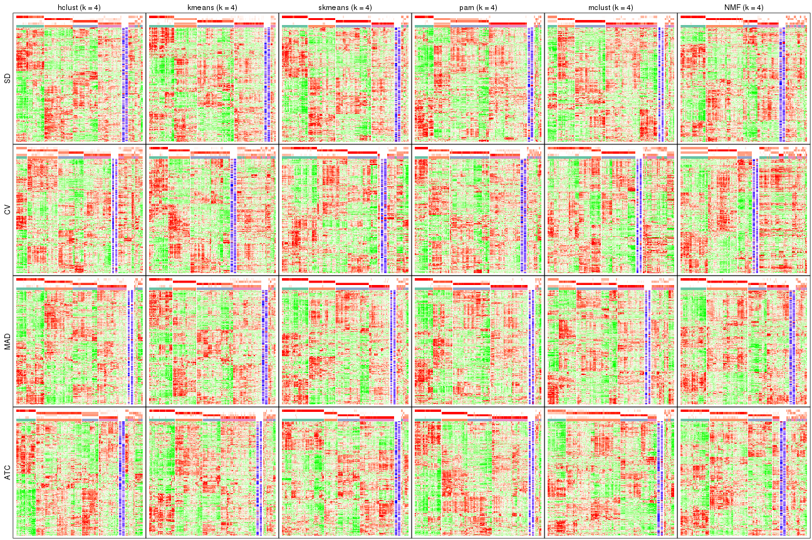
collect_plots(res_list, k = 5, fun = get_signatures, mc.cores = 4)
collect_plots(res_list, k = 6, fun = get_signatures, mc.cores = 4)
Statistics table
The statistics used for measuring the stability of consensus partitioning.
(How are they
defined?)
get_stats(res_list, k = 2)
#> k 1-PAC mean_silhouette concordance area_increased Rand Jaccard
#> SD:NMF 2 0.816 0.915 0.962 0.471 0.528 0.528
#> CV:NMF 2 0.853 0.913 0.964 0.493 0.505 0.505
#> MAD:NMF 2 0.803 0.882 0.952 0.485 0.516 0.516
#> ATC:NMF 2 1.000 0.979 0.991 0.431 0.570 0.570
#> SD:skmeans 2 0.345 0.608 0.775 0.489 0.507 0.507
#> CV:skmeans 2 0.502 0.730 0.834 0.477 0.539 0.539
#> MAD:skmeans 2 0.460 0.760 0.887 0.498 0.497 0.497
#> ATC:skmeans 2 1.000 0.976 0.989 0.500 0.501 0.501
#> SD:mclust 2 1.000 0.997 0.996 0.458 0.543 0.543
#> CV:mclust 2 0.452 0.834 0.879 0.398 0.556 0.556
#> MAD:mclust 2 1.000 1.000 1.000 0.458 0.543 0.543
#> ATC:mclust 2 1.000 0.969 0.987 0.448 0.556 0.556
#> SD:kmeans 2 0.317 0.733 0.828 0.453 0.565 0.565
#> CV:kmeans 2 0.228 0.564 0.718 0.463 0.505 0.505
#> MAD:kmeans 2 0.299 0.625 0.802 0.462 0.535 0.535
#> ATC:kmeans 2 1.000 0.968 0.986 0.457 0.539 0.539
#> SD:pam 2 0.874 0.899 0.956 0.501 0.497 0.497
#> CV:pam 2 0.599 0.852 0.925 0.483 0.522 0.522
#> MAD:pam 2 0.880 0.913 0.966 0.502 0.498 0.498
#> ATC:pam 2 1.000 0.982 0.993 0.430 0.575 0.575
#> SD:hclust 2 0.422 0.648 0.861 0.458 0.505 0.505
#> CV:hclust 2 0.200 0.754 0.844 0.438 0.514 0.514
#> MAD:hclust 2 0.442 0.663 0.866 0.431 0.560 0.560
#> ATC:hclust 2 0.636 0.839 0.925 0.443 0.535 0.535
get_stats(res_list, k = 3)
#> k 1-PAC mean_silhouette concordance area_increased Rand Jaccard
#> SD:NMF 3 0.973 0.936 0.974 0.404 0.699 0.484
#> CV:NMF 3 0.957 0.938 0.975 0.356 0.698 0.469
#> MAD:NMF 3 0.917 0.919 0.964 0.371 0.690 0.466
#> ATC:NMF 3 0.914 0.908 0.951 0.502 0.686 0.491
#> SD:skmeans 3 0.897 0.897 0.959 0.368 0.666 0.429
#> CV:skmeans 3 0.991 0.957 0.983 0.407 0.782 0.598
#> MAD:skmeans 3 0.904 0.909 0.962 0.346 0.694 0.460
#> ATC:skmeans 3 0.839 0.935 0.952 0.296 0.776 0.581
#> SD:mclust 3 0.655 0.748 0.860 0.289 0.857 0.742
#> CV:mclust 3 0.635 0.696 0.847 0.585 0.745 0.566
#> MAD:mclust 3 0.609 0.729 0.830 0.281 0.941 0.893
#> ATC:mclust 3 0.634 0.748 0.861 0.390 0.809 0.657
#> SD:kmeans 3 0.963 0.940 0.969 0.439 0.715 0.525
#> CV:kmeans 3 0.656 0.848 0.891 0.404 0.690 0.459
#> MAD:kmeans 3 0.907 0.918 0.963 0.419 0.680 0.468
#> ATC:kmeans 3 0.667 0.870 0.910 0.402 0.645 0.436
#> SD:pam 3 0.940 0.943 0.976 0.233 0.825 0.670
#> CV:pam 3 0.542 0.748 0.869 0.275 0.681 0.482
#> MAD:pam 3 0.966 0.934 0.974 0.235 0.810 0.644
#> ATC:pam 3 0.958 0.942 0.968 0.459 0.665 0.481
#> SD:hclust 3 0.405 0.591 0.736 0.356 0.704 0.486
#> CV:hclust 3 0.286 0.674 0.774 0.367 0.832 0.674
#> MAD:hclust 3 0.333 0.529 0.718 0.468 0.682 0.483
#> ATC:hclust 3 0.473 0.626 0.768 0.339 0.819 0.675
get_stats(res_list, k = 4)
#> k 1-PAC mean_silhouette concordance area_increased Rand Jaccard
#> SD:NMF 4 0.751 0.738 0.889 0.1044 0.855 0.614
#> CV:NMF 4 0.743 0.467 0.741 0.1079 0.802 0.511
#> MAD:NMF 4 0.791 0.789 0.904 0.1004 0.868 0.640
#> ATC:NMF 4 0.655 0.690 0.831 0.1259 0.862 0.631
#> SD:skmeans 4 0.900 0.885 0.953 0.1220 0.866 0.624
#> CV:skmeans 4 0.770 0.748 0.859 0.1036 0.895 0.700
#> MAD:skmeans 4 0.902 0.850 0.942 0.1179 0.871 0.637
#> ATC:skmeans 4 0.927 0.880 0.945 0.1018 0.887 0.696
#> SD:mclust 4 0.687 0.765 0.855 0.1589 0.900 0.770
#> CV:mclust 4 0.635 0.653 0.808 0.1034 0.887 0.713
#> MAD:mclust 4 0.665 0.667 0.816 0.1835 0.739 0.504
#> ATC:mclust 4 0.583 0.720 0.796 0.0485 0.921 0.801
#> SD:kmeans 4 0.694 0.793 0.813 0.1150 0.863 0.631
#> CV:kmeans 4 0.584 0.559 0.761 0.1138 0.929 0.793
#> MAD:kmeans 4 0.686 0.774 0.814 0.1128 0.867 0.638
#> ATC:kmeans 4 0.630 0.706 0.837 0.1561 0.856 0.626
#> SD:pam 4 0.807 0.836 0.878 0.1372 0.892 0.719
#> CV:pam 4 0.643 0.722 0.841 0.1518 0.747 0.457
#> MAD:pam 4 0.794 0.870 0.908 0.1626 0.878 0.684
#> ATC:pam 4 0.873 0.881 0.947 0.1904 0.851 0.618
#> SD:hclust 4 0.586 0.718 0.814 0.1776 0.836 0.569
#> CV:hclust 4 0.381 0.583 0.686 0.1401 0.933 0.807
#> MAD:hclust 4 0.659 0.794 0.877 0.1751 0.858 0.617
#> ATC:hclust 4 0.500 0.645 0.769 0.1462 0.785 0.524
get_stats(res_list, k = 5)
#> k 1-PAC mean_silhouette concordance area_increased Rand Jaccard
#> SD:NMF 5 0.683 0.651 0.831 0.0681 0.867 0.572
#> CV:NMF 5 0.837 0.828 0.905 0.0661 0.861 0.557
#> MAD:NMF 5 0.740 0.725 0.857 0.0653 0.879 0.602
#> ATC:NMF 5 0.629 0.605 0.756 0.0740 0.831 0.473
#> SD:skmeans 5 0.827 0.730 0.832 0.0563 0.941 0.771
#> CV:skmeans 5 0.716 0.649 0.821 0.0671 0.923 0.720
#> MAD:skmeans 5 0.818 0.746 0.854 0.0586 0.920 0.701
#> ATC:skmeans 5 0.919 0.883 0.947 0.0687 0.921 0.738
#> SD:mclust 5 0.848 0.718 0.884 0.1107 0.883 0.668
#> CV:mclust 5 0.567 0.544 0.738 0.0624 0.941 0.814
#> MAD:mclust 5 0.872 0.884 0.946 0.1107 0.866 0.595
#> ATC:mclust 5 0.721 0.803 0.843 0.1635 0.859 0.605
#> SD:kmeans 5 0.756 0.796 0.842 0.0738 0.946 0.795
#> CV:kmeans 5 0.556 0.657 0.716 0.0602 0.801 0.429
#> MAD:kmeans 5 0.776 0.662 0.828 0.0724 0.983 0.935
#> ATC:kmeans 5 0.709 0.691 0.819 0.0705 0.870 0.561
#> SD:pam 5 0.960 0.913 0.952 0.0899 0.942 0.795
#> CV:pam 5 0.587 0.721 0.831 0.0612 0.921 0.743
#> MAD:pam 5 0.801 0.750 0.858 0.0785 0.942 0.790
#> ATC:pam 5 0.768 0.672 0.838 0.0444 0.979 0.917
#> SD:hclust 5 0.620 0.628 0.786 0.0515 0.952 0.813
#> CV:hclust 5 0.486 0.582 0.695 0.0915 0.928 0.755
#> MAD:hclust 5 0.664 0.638 0.819 0.0456 0.965 0.863
#> ATC:hclust 5 0.584 0.563 0.725 0.1143 0.833 0.491
get_stats(res_list, k = 6)
#> k 1-PAC mean_silhouette concordance area_increased Rand Jaccard
#> SD:NMF 6 0.702 0.621 0.800 0.0462 0.895 0.586
#> CV:NMF 6 0.723 0.667 0.813 0.0471 0.899 0.579
#> MAD:NMF 6 0.684 0.605 0.782 0.0487 0.905 0.627
#> ATC:NMF 6 0.642 0.507 0.704 0.0470 0.898 0.585
#> SD:skmeans 6 0.775 0.620 0.732 0.0396 0.908 0.608
#> CV:skmeans 6 0.719 0.542 0.767 0.0493 0.909 0.606
#> MAD:skmeans 6 0.751 0.685 0.755 0.0410 0.922 0.656
#> ATC:skmeans 6 0.882 0.870 0.931 0.0591 0.896 0.602
#> SD:mclust 6 0.840 0.853 0.914 0.0523 0.878 0.567
#> CV:mclust 6 0.607 0.561 0.709 0.0784 0.874 0.560
#> MAD:mclust 6 0.811 0.786 0.890 0.0245 0.901 0.636
#> ATC:mclust 6 0.847 0.853 0.908 0.0706 0.909 0.637
#> SD:kmeans 6 0.767 0.757 0.800 0.0440 0.952 0.788
#> CV:kmeans 6 0.639 0.673 0.737 0.0576 0.955 0.797
#> MAD:kmeans 6 0.772 0.763 0.810 0.0419 0.916 0.675
#> ATC:kmeans 6 0.724 0.543 0.734 0.0415 0.923 0.665
#> SD:pam 6 0.912 0.794 0.911 0.0692 0.903 0.616
#> CV:pam 6 0.716 0.740 0.847 0.0614 0.922 0.701
#> MAD:pam 6 0.900 0.852 0.935 0.0545 0.922 0.675
#> ATC:pam 6 0.797 0.748 0.863 0.0374 0.930 0.726
#> SD:hclust 6 0.653 0.680 0.792 0.0422 0.957 0.813
#> CV:hclust 6 0.606 0.538 0.709 0.0501 0.952 0.799
#> MAD:hclust 6 0.721 0.768 0.840 0.0368 0.951 0.791
#> ATC:hclust 6 0.694 0.558 0.749 0.0609 0.937 0.721
Following heatmap plots the partition for each combination of methods and the
lightness correspond to the silhouette scores for samples in each method. On
top the consensus subgroup is inferred from all methods by taking the mean
silhouette scores as weight.
collect_stats(res_list, k = 2)
collect_stats(res_list, k = 3)
collect_stats(res_list, k = 4)
collect_stats(res_list, k = 5)
collect_stats(res_list, k = 6)
Partition from all methods
Collect partitions from all methods:
collect_classes(res_list, k = 2)
collect_classes(res_list, k = 3)
collect_classes(res_list, k = 4)
collect_classes(res_list, k = 5)
collect_classes(res_list, k = 6)
Top rows overlap
Overlap of top rows from different top-row methods:
top_rows_overlap(res_list, top_n = 1000, method = "euler")
top_rows_overlap(res_list, top_n = 2000, method = "euler")
top_rows_overlap(res_list, top_n = 3000, method = "euler")

top_rows_overlap(res_list, top_n = 4000, method = "euler")
top_rows_overlap(res_list, top_n = 5000, method = "euler")
Also visualize the correspondance of rankings between different top-row methods:
top_rows_overlap(res_list, top_n = 1000, method = "correspondance")
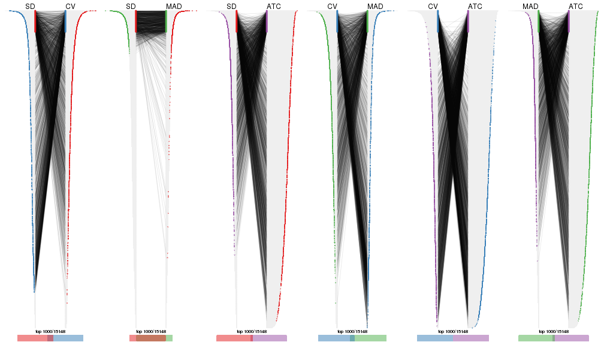
top_rows_overlap(res_list, top_n = 2000, method = "correspondance")
top_rows_overlap(res_list, top_n = 3000, method = "correspondance")
top_rows_overlap(res_list, top_n = 4000, method = "correspondance")
top_rows_overlap(res_list, top_n = 5000, method = "correspondance")
Heatmaps of the top rows:
top_rows_heatmap(res_list, top_n = 1000)
top_rows_heatmap(res_list, top_n = 2000)
top_rows_heatmap(res_list, top_n = 3000)
top_rows_heatmap(res_list, top_n = 4000)
top_rows_heatmap(res_list, top_n = 5000)
Results for each method
SD:hclust
The object with results only for a single top-value method and a single partition method
can be extracted as:
res = res_list["SD", "hclust"]
# you can also extract it by
# res = res_list["SD:hclust"]
A summary of res and all the functions that can be applied to it:
res
#> A 'ConsensusPartition' object with k = 2, 3, 4, 5, 6.
#> On a matrix with 15148 rows and 152 columns.
#> Top rows (1000, 2000, 3000, 4000, 5000) are extracted by 'SD' method.
#> Subgroups are detected by 'hclust' method.
#> Performed in total 1250 partitions by row resampling.
#> Best k for subgroups seems to be 2.
#>
#> Following methods can be applied to this 'ConsensusPartition' object:
#> [1] "cola_report" "collect_classes" "collect_plots"
#> [4] "collect_stats" "colnames" "compare_signatures"
#> [7] "consensus_heatmap" "dimension_reduction" "functional_enrichment"
#> [10] "get_anno_col" "get_anno" "get_classes"
#> [13] "get_consensus" "get_matrix" "get_membership"
#> [16] "get_param" "get_signatures" "get_stats"
#> [19] "is_best_k" "is_stable_k" "membership_heatmap"
#> [22] "ncol" "nrow" "plot_ecdf"
#> [25] "rownames" "select_partition_number" "show"
#> [28] "suggest_best_k" "test_to_known_factors"
collect_plots() function collects all the plots made from res for all k (number of partitions)
into one single page to provide an easy and fast comparison between different k.
collect_plots(res)
The plots are:
- The first row: a plot of the ECDF (empirical cumulative distribution
function) curves of the consensus matrix for each
k and the heatmap of
predicted classes for each k.
- The second row: heatmaps of the consensus matrix for each
k.
- The third row: heatmaps of the membership matrix for each
k.
- The fouth row: heatmaps of the signatures for each
k.
All the plots in panels can be made by individual functions and they are
plotted later in this section.
select_partition_number() produces several plots showing different
statistics for choosing “optimized” k. There are following statistics:
- ECDF curves of the consensus matrix for each
k;
- 1-PAC. The PAC
score
measures the proportion of the ambiguous subgrouping.
- Mean silhouette score.
- Concordance. The mean probability of fiting the consensus class ids in all
partitions.
- Area increased. Denote \(A_k\) as the area under the ECDF curve for current
k, the area increased is defined as \(A_k - A_{k-1}\).
- Rand index. The percent of pairs of samples that are both in a same cluster
or both are not in a same cluster in the partition of k and k-1.
- Jaccard index. The ratio of pairs of samples are both in a same cluster in
the partition of k and k-1 and the pairs of samples are both in a same
cluster in the partition k or k-1.
The detailed explanations of these statistics can be found in the cola
vignette.
Generally speaking, lower PAC score, higher mean silhouette score or higher
concordance corresponds to better partition. Rand index and Jaccard index
measure how similar the current partition is compared to partition with k-1.
If they are too similar, we won't accept k is better than k-1.
select_partition_number(res)
The numeric values for all these statistics can be obtained by get_stats().
get_stats(res)
#> k 1-PAC mean_silhouette concordance area_increased Rand Jaccard
#> 2 2 0.422 0.648 0.861 0.4576 0.505 0.505
#> 3 3 0.405 0.591 0.736 0.3561 0.704 0.486
#> 4 4 0.586 0.718 0.814 0.1776 0.836 0.569
#> 5 5 0.620 0.628 0.786 0.0515 0.952 0.813
#> 6 6 0.653 0.680 0.792 0.0422 0.957 0.813
suggest_best_k() suggests the best \(k\) based on these statistics. The rules are as follows:
- All \(k\) with Jaccard index larger than 0.95 are removed because increasing
\(k\) does not provide enough extra information. If all \(k\) are removed, it is
marked as no subgroup is detected.
- For all \(k\) with 1-PAC score larger than 0.9, the maximal \(k\) is taken as
the best \(k\), and other \(k\) are marked as optional \(k\).
- If it does not fit the second rule. The \(k\) with the maximal vote of the
highest 1-PAC score, highest mean silhouette, and highest concordance is
taken as the best \(k\).
suggest_best_k(res)
#> [1] 2
Following shows the table of the partitions (You need to click the show/hide
code output link to see it). The membership matrix (columns with name p*)
is inferred by
clue::cl_consensus()
function with the SE method. Basically the value in the membership matrix
represents the probability to belong to a certain group. The finall class
label for an item is determined with the group with highest probability it
belongs to.
In get_classes() function, the entropy is calculated from the membership
matrix and the silhouette score is calculated from the consensus matrix.
show/hide code output
cbind(get_classes(res, k = 2), get_membership(res, k = 2))
#> class entropy silhouette p1 p2
#> SRR1947547 1 0.3584 0.7786 0.932 0.068
#> SRR1947546 2 0.0000 0.8580 0.000 1.000
#> SRR1947545 1 0.0000 0.7699 1.000 0.000
#> SRR1947544 1 0.5946 0.7541 0.856 0.144
#> SRR1947542 2 0.0000 0.8580 0.000 1.000
#> SRR1947541 1 0.3584 0.7786 0.932 0.068
#> SRR1947540 2 0.9248 0.3333 0.340 0.660
#> SRR1947539 2 0.1414 0.8468 0.020 0.980
#> SRR1947538 1 0.9850 0.4026 0.572 0.428
#> SRR1947537 2 0.9881 0.1121 0.436 0.564
#> SRR1947536 1 0.7056 0.7144 0.808 0.192
#> SRR1947535 2 0.0000 0.8580 0.000 1.000
#> SRR1947534 1 0.8608 0.6041 0.716 0.284
#> SRR1947533 2 0.0000 0.8580 0.000 1.000
#> SRR1947532 2 1.0000 -0.2284 0.500 0.500
#> SRR1947531 2 0.9248 0.3333 0.340 0.660
#> SRR1947530 1 0.0672 0.7719 0.992 0.008
#> SRR1947529 2 0.0000 0.8580 0.000 1.000
#> SRR1947528 1 0.3733 0.7782 0.928 0.072
#> SRR1947527 2 0.5946 0.6990 0.144 0.856
#> SRR1947526 2 0.0000 0.8580 0.000 1.000
#> SRR1947525 1 0.9552 0.5173 0.624 0.376
#> SRR1947524 2 0.1414 0.8468 0.020 0.980
#> SRR1947523 2 1.0000 -0.2283 0.500 0.500
#> SRR1947521 2 0.0000 0.8580 0.000 1.000
#> SRR1947520 2 0.0000 0.8580 0.000 1.000
#> SRR1947519 2 0.0000 0.8580 0.000 1.000
#> SRR1947518 1 0.9850 0.4026 0.572 0.428
#> SRR1947517 1 0.9988 0.2280 0.520 0.480
#> SRR1947516 2 0.0000 0.8580 0.000 1.000
#> SRR1947515 2 1.0000 -0.2284 0.500 0.500
#> SRR1947514 2 0.0000 0.8580 0.000 1.000
#> SRR1947513 1 0.7139 0.7148 0.804 0.196
#> SRR1947512 1 0.0000 0.7699 1.000 0.000
#> SRR1947511 2 0.0000 0.8580 0.000 1.000
#> SRR1947510 2 0.0000 0.8580 0.000 1.000
#> SRR1947572 1 0.6148 0.7505 0.848 0.152
#> SRR1947611 2 0.0000 0.8580 0.000 1.000
#> SRR1947509 1 0.9988 0.2280 0.520 0.480
#> SRR1947644 2 0.0000 0.8580 0.000 1.000
#> SRR1947643 2 0.0000 0.8580 0.000 1.000
#> SRR1947642 2 0.0938 0.8516 0.012 0.988
#> SRR1947640 1 1.0000 0.2072 0.500 0.500
#> SRR1947641 2 0.0000 0.8580 0.000 1.000
#> SRR1947639 1 0.8207 0.6704 0.744 0.256
#> SRR1947638 1 0.5737 0.7589 0.864 0.136
#> SRR1947637 2 0.0000 0.8580 0.000 1.000
#> SRR1947636 2 0.9881 0.1121 0.436 0.564
#> SRR1947635 2 0.9754 0.0740 0.408 0.592
#> SRR1947634 2 0.0000 0.8580 0.000 1.000
#> SRR1947633 2 0.1414 0.8468 0.020 0.980
#> SRR1947632 2 0.0000 0.8580 0.000 1.000
#> SRR1947631 2 0.0000 0.8580 0.000 1.000
#> SRR1947629 2 0.1414 0.8468 0.020 0.980
#> SRR1947630 2 0.0000 0.8580 0.000 1.000
#> SRR1947627 1 0.6887 0.7194 0.816 0.184
#> SRR1947628 2 1.0000 -0.2150 0.496 0.504
#> SRR1947626 2 0.0000 0.8580 0.000 1.000
#> SRR1947625 2 0.0000 0.8580 0.000 1.000
#> SRR1947624 2 0.0000 0.8580 0.000 1.000
#> SRR1947623 1 0.6048 0.7528 0.852 0.148
#> SRR1947622 2 0.0000 0.8580 0.000 1.000
#> SRR1947621 2 0.0000 0.8580 0.000 1.000
#> SRR1947620 1 0.4690 0.7676 0.900 0.100
#> SRR1947619 2 0.7139 0.6434 0.196 0.804
#> SRR1947617 2 0.0000 0.8580 0.000 1.000
#> SRR1947618 1 0.4690 0.7676 0.900 0.100
#> SRR1947616 2 0.0000 0.8580 0.000 1.000
#> SRR1947615 1 0.3584 0.7786 0.932 0.068
#> SRR1947614 2 0.0000 0.8580 0.000 1.000
#> SRR1947613 1 0.0376 0.7716 0.996 0.004
#> SRR1947610 1 0.9850 0.4026 0.572 0.428
#> SRR1947612 2 0.0000 0.8580 0.000 1.000
#> SRR1947609 1 1.0000 0.2072 0.500 0.500
#> SRR1947608 2 0.0000 0.8580 0.000 1.000
#> SRR1947606 1 0.8267 0.6250 0.740 0.260
#> SRR1947607 1 0.0672 0.7729 0.992 0.008
#> SRR1947604 1 1.0000 0.2072 0.500 0.500
#> SRR1947605 1 0.0000 0.7699 1.000 0.000
#> SRR1947603 2 0.0000 0.8580 0.000 1.000
#> SRR1947602 1 0.0672 0.7719 0.992 0.008
#> SRR1947600 2 0.1414 0.8468 0.020 0.980
#> SRR1947601 2 0.0000 0.8580 0.000 1.000
#> SRR1947598 2 1.0000 -0.2150 0.496 0.504
#> SRR1947599 1 0.9998 0.2296 0.508 0.492
#> SRR1947597 2 0.4562 0.7696 0.096 0.904
#> SRR1947596 1 0.5946 0.7541 0.856 0.144
#> SRR1947595 2 1.0000 -0.2283 0.500 0.500
#> SRR1947594 1 0.0000 0.7699 1.000 0.000
#> SRR1947592 2 0.1414 0.8468 0.020 0.980
#> SRR1947591 2 0.0000 0.8580 0.000 1.000
#> SRR1947590 1 0.5946 0.7541 0.856 0.144
#> SRR1947588 1 0.0000 0.7699 1.000 0.000
#> SRR1947587 1 0.3584 0.7786 0.932 0.068
#> SRR1947586 2 0.0000 0.8580 0.000 1.000
#> SRR1947585 2 0.1414 0.8468 0.020 0.980
#> SRR1947584 1 0.0000 0.7699 1.000 0.000
#> SRR1947583 1 1.0000 0.2072 0.500 0.500
#> SRR1947582 1 0.4690 0.7676 0.900 0.100
#> SRR1947580 2 0.0000 0.8580 0.000 1.000
#> SRR1947581 1 0.0000 0.7699 1.000 0.000
#> SRR1947576 2 0.0000 0.8580 0.000 1.000
#> SRR1947575 2 0.0000 0.8580 0.000 1.000
#> SRR1947579 2 0.0000 0.8580 0.000 1.000
#> SRR1947578 2 1.0000 -0.2150 0.496 0.504
#> SRR1947573 2 0.1414 0.8468 0.020 0.980
#> SRR1947574 1 0.9248 0.5538 0.660 0.340
#> SRR1947571 1 1.0000 0.2073 0.500 0.500
#> SRR1947577 1 0.4690 0.7676 0.900 0.100
#> SRR1947570 1 0.3584 0.7786 0.932 0.068
#> SRR1947569 2 0.1414 0.8468 0.020 0.980
#> SRR1947566 2 0.0000 0.8580 0.000 1.000
#> SRR1947567 2 0.9754 0.0740 0.408 0.592
#> SRR1947568 1 0.6247 0.7487 0.844 0.156
#> SRR1947564 2 0.0000 0.8580 0.000 1.000
#> SRR1947563 2 0.0000 0.8580 0.000 1.000
#> SRR1947562 2 0.9775 0.0909 0.412 0.588
#> SRR1947565 2 0.9881 0.1121 0.436 0.564
#> SRR1947559 2 0.4562 0.7696 0.096 0.904
#> SRR1947560 2 0.0000 0.8580 0.000 1.000
#> SRR1947561 2 0.0000 0.8580 0.000 1.000
#> SRR1947557 1 0.0000 0.7699 1.000 0.000
#> SRR1947558 2 0.0000 0.8580 0.000 1.000
#> SRR1947556 1 0.5946 0.7541 0.856 0.144
#> SRR1947553 1 0.9850 0.4026 0.572 0.428
#> SRR1947554 1 0.0672 0.7729 0.992 0.008
#> SRR1947555 2 0.0000 0.8580 0.000 1.000
#> SRR1947550 2 1.0000 -0.2283 0.500 0.500
#> SRR1947552 1 0.9998 0.2296 0.508 0.492
#> SRR1947549 2 0.1414 0.8468 0.020 0.980
#> SRR1947551 2 0.0000 0.8580 0.000 1.000
#> SRR1947548 1 1.0000 0.2073 0.500 0.500
#> SRR1947506 1 0.0672 0.7719 0.992 0.008
#> SRR1947507 1 0.0000 0.7699 1.000 0.000
#> SRR1947504 1 0.5946 0.7541 0.856 0.144
#> SRR1947503 1 0.5737 0.7589 0.864 0.136
#> SRR1947502 2 0.0000 0.8580 0.000 1.000
#> SRR1947501 2 0.0000 0.8580 0.000 1.000
#> SRR1947499 1 0.0672 0.7719 0.992 0.008
#> SRR1947498 2 0.1414 0.8468 0.020 0.980
#> SRR1947508 1 0.6887 0.7194 0.816 0.184
#> SRR1947505 2 1.0000 -0.2150 0.496 0.504
#> SRR1947497 2 0.0376 0.8553 0.004 0.996
#> SRR1947496 1 0.0000 0.7699 1.000 0.000
#> SRR1947495 2 0.0376 0.8553 0.004 0.996
#> SRR1947494 1 1.0000 0.2188 0.504 0.496
#> SRR1947493 1 0.0672 0.7719 0.992 0.008
#> SRR1947492 1 0.0376 0.7716 0.996 0.004
#> SRR1947500 1 1.0000 0.2072 0.500 0.500
#> SRR1947491 2 0.9754 0.0740 0.408 0.592
#> SRR1947490 1 0.0376 0.7716 0.996 0.004
#> SRR1947489 1 0.3584 0.7786 0.932 0.068
show/hide code output
cbind(get_classes(res, k = 3), get_membership(res, k = 3))
#> class entropy silhouette p1 p2 p3
#> SRR1947547 1 0.4779 0.7770 0.840 0.124 0.036
#> SRR1947546 2 0.5397 0.5097 0.000 0.720 0.280
#> SRR1947545 1 0.0000 0.8092 1.000 0.000 0.000
#> SRR1947544 1 0.6416 0.5534 0.616 0.376 0.008
#> SRR1947542 2 0.5397 0.5097 0.000 0.720 0.280
#> SRR1947541 1 0.4779 0.7770 0.840 0.124 0.036
#> SRR1947540 2 0.9975 0.4379 0.312 0.368 0.320
#> SRR1947539 3 0.1411 0.8964 0.000 0.036 0.964
#> SRR1947538 2 0.7940 0.1871 0.332 0.592 0.076
#> SRR1947537 3 0.8769 0.1904 0.348 0.124 0.528
#> SRR1947536 1 0.5581 0.6935 0.788 0.036 0.176
#> SRR1947535 3 0.1031 0.9000 0.000 0.024 0.976
#> SRR1947534 1 0.6322 0.5089 0.700 0.276 0.024
#> SRR1947533 2 0.5650 0.4973 0.000 0.688 0.312
#> SRR1947532 2 0.9239 0.3210 0.328 0.500 0.172
#> SRR1947531 2 0.9975 0.4379 0.312 0.368 0.320
#> SRR1947530 1 0.1315 0.8085 0.972 0.020 0.008
#> SRR1947529 2 0.5706 0.4921 0.000 0.680 0.320
#> SRR1947528 1 0.4891 0.7757 0.836 0.124 0.040
#> SRR1947527 2 0.8834 0.4824 0.140 0.544 0.316
#> SRR1947526 2 0.5733 0.4870 0.000 0.676 0.324
#> SRR1947525 2 0.7050 -0.0714 0.372 0.600 0.028
#> SRR1947524 3 0.1529 0.8966 0.000 0.040 0.960
#> SRR1947523 2 0.9223 0.3216 0.324 0.504 0.172
#> SRR1947521 3 0.1031 0.8846 0.000 0.024 0.976
#> SRR1947520 2 0.5859 0.4625 0.000 0.656 0.344
#> SRR1947519 3 0.1031 0.9000 0.000 0.024 0.976
#> SRR1947518 2 0.7940 0.1871 0.332 0.592 0.076
#> SRR1947517 1 0.7059 0.1240 0.520 0.020 0.460
#> SRR1947516 2 0.5706 0.4921 0.000 0.680 0.320
#> SRR1947515 2 0.9239 0.3210 0.328 0.500 0.172
#> SRR1947514 2 0.5706 0.4921 0.000 0.680 0.320
#> SRR1947513 1 0.5356 0.6389 0.784 0.196 0.020
#> SRR1947512 1 0.0237 0.8095 0.996 0.004 0.000
#> SRR1947511 2 0.5859 0.4625 0.000 0.656 0.344
#> SRR1947510 3 0.1031 0.8846 0.000 0.024 0.976
#> SRR1947572 1 0.6451 0.5419 0.608 0.384 0.008
#> SRR1947611 3 0.1163 0.8814 0.000 0.028 0.972
#> SRR1947509 1 0.7059 0.1240 0.520 0.020 0.460
#> SRR1947644 3 0.1031 0.8846 0.000 0.024 0.976
#> SRR1947643 2 0.5621 0.5016 0.000 0.692 0.308
#> SRR1947642 3 0.1289 0.8992 0.000 0.032 0.968
#> SRR1947640 2 0.9223 0.3216 0.324 0.504 0.172
#> SRR1947641 3 0.1031 0.9000 0.000 0.024 0.976
#> SRR1947639 2 0.7188 -0.3497 0.484 0.492 0.024
#> SRR1947638 1 0.5253 0.7201 0.792 0.188 0.020
#> SRR1947637 3 0.1163 0.8814 0.000 0.028 0.972
#> SRR1947636 3 0.8769 0.1904 0.348 0.124 0.528
#> SRR1947635 2 0.8853 0.4083 0.252 0.572 0.176
#> SRR1947634 2 0.6235 0.3047 0.000 0.564 0.436
#> SRR1947633 3 0.1411 0.8964 0.000 0.036 0.964
#> SRR1947632 2 0.5397 0.5097 0.000 0.720 0.280
#> SRR1947631 3 0.1031 0.9000 0.000 0.024 0.976
#> SRR1947629 3 0.1529 0.8966 0.000 0.040 0.960
#> SRR1947630 2 0.6235 0.3047 0.000 0.564 0.436
#> SRR1947627 1 0.5470 0.6995 0.796 0.036 0.168
#> SRR1947628 2 0.9262 0.3256 0.324 0.500 0.176
#> SRR1947626 2 0.5591 0.5033 0.000 0.696 0.304
#> SRR1947625 3 0.1031 0.9000 0.000 0.024 0.976
#> SRR1947624 2 0.6235 0.3047 0.000 0.564 0.436
#> SRR1947623 1 0.6434 0.5488 0.612 0.380 0.008
#> SRR1947622 2 0.5706 0.4921 0.000 0.680 0.320
#> SRR1947621 2 0.5706 0.4921 0.000 0.680 0.320
#> SRR1947620 1 0.3769 0.7594 0.880 0.104 0.016
#> SRR1947619 3 0.5988 0.6369 0.168 0.056 0.776
#> SRR1947617 2 0.5706 0.4921 0.000 0.680 0.320
#> SRR1947618 1 0.3769 0.7594 0.880 0.104 0.016
#> SRR1947616 2 0.5706 0.4921 0.000 0.680 0.320
#> SRR1947615 1 0.4779 0.7770 0.840 0.124 0.036
#> SRR1947614 3 0.1031 0.8846 0.000 0.024 0.976
#> SRR1947613 1 0.0424 0.8097 0.992 0.008 0.000
#> SRR1947610 2 0.7940 0.1871 0.332 0.592 0.076
#> SRR1947612 2 0.5706 0.4921 0.000 0.680 0.320
#> SRR1947609 2 0.9223 0.3216 0.324 0.504 0.172
#> SRR1947608 3 0.1031 0.9000 0.000 0.024 0.976
#> SRR1947606 1 0.7983 0.6073 0.648 0.124 0.228
#> SRR1947607 1 0.0983 0.8099 0.980 0.016 0.004
#> SRR1947604 2 0.9223 0.3216 0.324 0.504 0.172
#> SRR1947605 1 0.0000 0.8092 1.000 0.000 0.000
#> SRR1947603 2 0.5733 0.4921 0.000 0.676 0.324
#> SRR1947602 1 0.1315 0.8085 0.972 0.020 0.008
#> SRR1947600 3 0.1529 0.8966 0.000 0.040 0.960
#> SRR1947601 2 0.5706 0.4921 0.000 0.680 0.320
#> SRR1947598 2 0.9262 0.3256 0.324 0.500 0.176
#> SRR1947599 2 0.9254 0.3053 0.332 0.496 0.172
#> SRR1947597 2 0.7545 0.4971 0.076 0.652 0.272
#> SRR1947596 1 0.6416 0.5534 0.616 0.376 0.008
#> SRR1947595 2 0.9223 0.3216 0.324 0.504 0.172
#> SRR1947594 1 0.0237 0.8095 0.996 0.004 0.000
#> SRR1947592 3 0.1529 0.8966 0.000 0.040 0.960
#> SRR1947591 2 0.5706 0.4921 0.000 0.680 0.320
#> SRR1947590 1 0.6416 0.5534 0.616 0.376 0.008
#> SRR1947588 1 0.0237 0.8095 0.996 0.004 0.000
#> SRR1947587 1 0.4779 0.7770 0.840 0.124 0.036
#> SRR1947586 2 0.5591 0.5033 0.000 0.696 0.304
#> SRR1947585 3 0.1529 0.8966 0.000 0.040 0.960
#> SRR1947584 1 0.0237 0.8095 0.996 0.004 0.000
#> SRR1947583 2 0.9223 0.3216 0.324 0.504 0.172
#> SRR1947582 1 0.3769 0.7594 0.880 0.104 0.016
#> SRR1947580 2 0.5591 0.5033 0.000 0.696 0.304
#> SRR1947581 1 0.0237 0.8095 0.996 0.004 0.000
#> SRR1947576 3 0.1163 0.8814 0.000 0.028 0.972
#> SRR1947575 3 0.1031 0.9000 0.000 0.024 0.976
#> SRR1947579 3 0.1031 0.8846 0.000 0.024 0.976
#> SRR1947578 2 0.9262 0.3256 0.324 0.500 0.176
#> SRR1947573 3 0.1529 0.8966 0.000 0.040 0.960
#> SRR1947574 1 0.8093 0.2318 0.516 0.416 0.068
#> SRR1947571 2 0.9239 0.3210 0.328 0.500 0.172
#> SRR1947577 1 0.3769 0.7594 0.880 0.104 0.016
#> SRR1947570 1 0.4779 0.7770 0.840 0.124 0.036
#> SRR1947569 3 0.1529 0.8966 0.000 0.040 0.960
#> SRR1947566 2 0.5706 0.4921 0.000 0.680 0.320
#> SRR1947567 2 0.8853 0.4083 0.252 0.572 0.176
#> SRR1947568 1 0.6483 0.5344 0.600 0.392 0.008
#> SRR1947564 2 0.5706 0.4921 0.000 0.680 0.320
#> SRR1947563 3 0.1031 0.9000 0.000 0.024 0.976
#> SRR1947562 2 0.8937 0.4079 0.252 0.564 0.184
#> SRR1947565 3 0.8769 0.1904 0.348 0.124 0.528
#> SRR1947559 2 0.7545 0.4971 0.076 0.652 0.272
#> SRR1947560 3 0.1163 0.8814 0.000 0.028 0.972
#> SRR1947561 2 0.5706 0.4921 0.000 0.680 0.320
#> SRR1947557 1 0.0237 0.8095 0.996 0.004 0.000
#> SRR1947558 3 0.1031 0.9000 0.000 0.024 0.976
#> SRR1947556 1 0.6416 0.5534 0.616 0.376 0.008
#> SRR1947553 2 0.7940 0.1871 0.332 0.592 0.076
#> SRR1947554 1 0.0983 0.8099 0.980 0.016 0.004
#> SRR1947555 2 0.5706 0.4921 0.000 0.680 0.320
#> SRR1947550 2 0.9223 0.3216 0.324 0.504 0.172
#> SRR1947552 2 0.9254 0.3053 0.332 0.496 0.172
#> SRR1947549 3 0.1529 0.8966 0.000 0.040 0.960
#> SRR1947551 3 0.1031 0.8846 0.000 0.024 0.976
#> SRR1947548 2 0.9239 0.3210 0.328 0.500 0.172
#> SRR1947506 1 0.1453 0.8088 0.968 0.024 0.008
#> SRR1947507 1 0.0237 0.8095 0.996 0.004 0.000
#> SRR1947504 1 0.6416 0.5534 0.616 0.376 0.008
#> SRR1947503 1 0.5253 0.7201 0.792 0.188 0.020
#> SRR1947502 2 0.5706 0.4921 0.000 0.680 0.320
#> SRR1947501 2 0.5397 0.5097 0.000 0.720 0.280
#> SRR1947499 1 0.1315 0.8085 0.972 0.020 0.008
#> SRR1947498 3 0.1529 0.8966 0.000 0.040 0.960
#> SRR1947508 1 0.5470 0.6995 0.796 0.036 0.168
#> SRR1947505 2 0.9262 0.3256 0.324 0.500 0.176
#> SRR1947497 2 0.5650 0.4979 0.000 0.688 0.312
#> SRR1947496 1 0.0237 0.8095 0.996 0.004 0.000
#> SRR1947495 2 0.5650 0.4979 0.000 0.688 0.312
#> SRR1947494 2 0.9254 0.3134 0.332 0.496 0.172
#> SRR1947493 1 0.1453 0.8088 0.968 0.024 0.008
#> SRR1947492 1 0.0424 0.8097 0.992 0.008 0.000
#> SRR1947500 2 0.9223 0.3216 0.324 0.504 0.172
#> SRR1947491 2 0.8853 0.4083 0.252 0.572 0.176
#> SRR1947490 1 0.0424 0.8097 0.992 0.008 0.000
#> SRR1947489 1 0.4779 0.7770 0.840 0.124 0.036
show/hide code output
cbind(get_classes(res, k = 4), get_membership(res, k = 4))
#> class entropy silhouette p1 p2 p3 p4
#> SRR1947547 1 0.4973 0.575 0.644 0.000 0.008 0.348
#> SRR1947546 2 0.2489 0.848 0.000 0.912 0.020 0.068
#> SRR1947545 1 0.0188 0.783 0.996 0.000 0.000 0.004
#> SRR1947544 4 0.5028 0.265 0.400 0.004 0.000 0.596
#> SRR1947542 2 0.2489 0.848 0.000 0.912 0.020 0.068
#> SRR1947541 1 0.4973 0.575 0.644 0.000 0.008 0.348
#> SRR1947540 2 0.5408 -0.153 0.000 0.500 0.012 0.488
#> SRR1947539 3 0.2384 0.858 0.004 0.008 0.916 0.072
#> SRR1947538 4 0.3708 0.758 0.000 0.148 0.020 0.832
#> SRR1947537 3 0.7790 0.221 0.236 0.008 0.492 0.264
#> SRR1947536 1 0.6352 0.628 0.656 0.000 0.156 0.188
#> SRR1947535 3 0.2565 0.859 0.000 0.032 0.912 0.056
#> SRR1947534 1 0.7413 0.299 0.516 0.252 0.000 0.232
#> SRR1947533 2 0.0336 0.902 0.000 0.992 0.000 0.008
#> SRR1947532 4 0.5470 0.802 0.000 0.148 0.116 0.736
#> SRR1947531 2 0.5408 -0.153 0.000 0.500 0.012 0.488
#> SRR1947530 1 0.3402 0.762 0.832 0.000 0.004 0.164
#> SRR1947529 2 0.0000 0.904 0.000 1.000 0.000 0.000
#> SRR1947528 1 0.5075 0.577 0.644 0.000 0.012 0.344
#> SRR1947527 2 0.3266 0.737 0.000 0.832 0.000 0.168
#> SRR1947526 2 0.0188 0.902 0.000 0.996 0.004 0.000
#> SRR1947525 4 0.5042 0.628 0.096 0.136 0.000 0.768
#> SRR1947524 3 0.2311 0.857 0.004 0.004 0.916 0.076
#> SRR1947523 4 0.5470 0.802 0.000 0.148 0.116 0.736
#> SRR1947521 3 0.2125 0.807 0.000 0.076 0.920 0.004
#> SRR1947520 2 0.1256 0.883 0.000 0.964 0.028 0.008
#> SRR1947519 3 0.2565 0.859 0.000 0.032 0.912 0.056
#> SRR1947518 4 0.3708 0.758 0.000 0.148 0.020 0.832
#> SRR1947517 3 0.6447 -0.061 0.448 0.000 0.484 0.068
#> SRR1947516 2 0.0000 0.904 0.000 1.000 0.000 0.000
#> SRR1947515 4 0.5470 0.802 0.000 0.148 0.116 0.736
#> SRR1947514 2 0.0000 0.904 0.000 1.000 0.000 0.000
#> SRR1947513 1 0.6532 0.328 0.548 0.084 0.000 0.368
#> SRR1947512 1 0.0469 0.783 0.988 0.000 0.000 0.012
#> SRR1947511 2 0.1109 0.885 0.000 0.968 0.028 0.004
#> SRR1947510 3 0.2125 0.807 0.000 0.076 0.920 0.004
#> SRR1947572 4 0.4950 0.306 0.376 0.004 0.000 0.620
#> SRR1947611 3 0.2197 0.804 0.000 0.080 0.916 0.004
#> SRR1947509 3 0.6447 -0.061 0.448 0.000 0.484 0.068
#> SRR1947644 3 0.0804 0.834 0.000 0.012 0.980 0.008
#> SRR1947643 2 0.0817 0.899 0.000 0.976 0.000 0.024
#> SRR1947642 3 0.2561 0.858 0.004 0.016 0.912 0.068
#> SRR1947640 4 0.5470 0.802 0.000 0.148 0.116 0.736
#> SRR1947641 3 0.2565 0.859 0.000 0.032 0.912 0.056
#> SRR1947639 4 0.4019 0.533 0.196 0.012 0.000 0.792
#> SRR1947638 1 0.4673 0.627 0.700 0.008 0.000 0.292
#> SRR1947637 3 0.2197 0.804 0.000 0.080 0.916 0.004
#> SRR1947636 3 0.7790 0.221 0.236 0.008 0.492 0.264
#> SRR1947635 4 0.6837 0.572 0.000 0.340 0.116 0.544
#> SRR1947634 2 0.3668 0.728 0.000 0.808 0.188 0.004
#> SRR1947633 3 0.2384 0.858 0.004 0.008 0.916 0.072
#> SRR1947632 2 0.2489 0.848 0.000 0.912 0.020 0.068
#> SRR1947631 3 0.2565 0.859 0.000 0.032 0.912 0.056
#> SRR1947629 3 0.2311 0.857 0.004 0.004 0.916 0.076
#> SRR1947630 2 0.3810 0.726 0.000 0.804 0.188 0.008
#> SRR1947627 1 0.6274 0.638 0.664 0.000 0.152 0.184
#> SRR1947628 4 0.5522 0.801 0.000 0.148 0.120 0.732
#> SRR1947626 2 0.0817 0.896 0.000 0.976 0.000 0.024
#> SRR1947625 3 0.2565 0.859 0.000 0.032 0.912 0.056
#> SRR1947624 2 0.3810 0.726 0.000 0.804 0.188 0.008
#> SRR1947623 4 0.4964 0.298 0.380 0.004 0.000 0.616
#> SRR1947622 2 0.0000 0.904 0.000 1.000 0.000 0.000
#> SRR1947621 2 0.0000 0.904 0.000 1.000 0.000 0.000
#> SRR1947620 1 0.3569 0.710 0.804 0.000 0.000 0.196
#> SRR1947619 3 0.5650 0.662 0.080 0.008 0.728 0.184
#> SRR1947617 2 0.0000 0.904 0.000 1.000 0.000 0.000
#> SRR1947618 1 0.3569 0.710 0.804 0.000 0.000 0.196
#> SRR1947616 2 0.0188 0.903 0.000 0.996 0.000 0.004
#> SRR1947615 1 0.4973 0.575 0.644 0.000 0.008 0.348
#> SRR1947614 3 0.2125 0.807 0.000 0.076 0.920 0.004
#> SRR1947613 1 0.1022 0.781 0.968 0.000 0.000 0.032
#> SRR1947610 4 0.3708 0.758 0.000 0.148 0.020 0.832
#> SRR1947612 2 0.0000 0.904 0.000 1.000 0.000 0.000
#> SRR1947609 4 0.5470 0.802 0.000 0.148 0.116 0.736
#> SRR1947608 3 0.2565 0.859 0.000 0.032 0.912 0.056
#> SRR1947606 1 0.7346 0.394 0.520 0.000 0.200 0.280
#> SRR1947607 1 0.3074 0.750 0.848 0.000 0.000 0.152
#> SRR1947604 4 0.5470 0.802 0.000 0.148 0.116 0.736
#> SRR1947605 1 0.0188 0.783 0.996 0.000 0.000 0.004
#> SRR1947603 2 0.0188 0.903 0.000 0.996 0.000 0.004
#> SRR1947602 1 0.3402 0.762 0.832 0.000 0.004 0.164
#> SRR1947600 3 0.2311 0.857 0.004 0.004 0.916 0.076
#> SRR1947601 2 0.0336 0.900 0.000 0.992 0.000 0.008
#> SRR1947598 4 0.5522 0.801 0.000 0.148 0.120 0.732
#> SRR1947599 4 0.5694 0.799 0.008 0.140 0.116 0.736
#> SRR1947597 2 0.4797 0.563 0.000 0.720 0.020 0.260
#> SRR1947596 4 0.5028 0.265 0.400 0.004 0.000 0.596
#> SRR1947595 4 0.5470 0.802 0.000 0.148 0.116 0.736
#> SRR1947594 1 0.0469 0.783 0.988 0.000 0.000 0.012
#> SRR1947592 3 0.2457 0.856 0.004 0.008 0.912 0.076
#> SRR1947591 2 0.0000 0.904 0.000 1.000 0.000 0.000
#> SRR1947590 4 0.5028 0.265 0.400 0.004 0.000 0.596
#> SRR1947588 1 0.0469 0.783 0.988 0.000 0.000 0.012
#> SRR1947587 1 0.4973 0.575 0.644 0.000 0.008 0.348
#> SRR1947586 2 0.0817 0.896 0.000 0.976 0.000 0.024
#> SRR1947585 3 0.2311 0.857 0.004 0.004 0.916 0.076
#> SRR1947584 1 0.0469 0.783 0.988 0.000 0.000 0.012
#> SRR1947583 4 0.5470 0.802 0.000 0.148 0.116 0.736
#> SRR1947582 1 0.3569 0.710 0.804 0.000 0.000 0.196
#> SRR1947580 2 0.0921 0.897 0.000 0.972 0.000 0.028
#> SRR1947581 1 0.0469 0.783 0.988 0.000 0.000 0.012
#> SRR1947576 3 0.2197 0.804 0.000 0.080 0.916 0.004
#> SRR1947575 3 0.2565 0.859 0.000 0.032 0.912 0.056
#> SRR1947579 3 0.2125 0.807 0.000 0.076 0.920 0.004
#> SRR1947578 4 0.5522 0.801 0.000 0.148 0.120 0.732
#> SRR1947573 3 0.2457 0.856 0.004 0.008 0.912 0.076
#> SRR1947574 4 0.6596 0.592 0.184 0.132 0.016 0.668
#> SRR1947571 4 0.5470 0.802 0.000 0.148 0.116 0.736
#> SRR1947577 1 0.3569 0.710 0.804 0.000 0.000 0.196
#> SRR1947570 1 0.4973 0.575 0.644 0.000 0.008 0.348
#> SRR1947569 3 0.2311 0.857 0.004 0.004 0.916 0.076
#> SRR1947566 2 0.0188 0.903 0.000 0.996 0.000 0.004
#> SRR1947567 4 0.6837 0.572 0.000 0.340 0.116 0.544
#> SRR1947568 4 0.4889 0.328 0.360 0.004 0.000 0.636
#> SRR1947564 2 0.0000 0.904 0.000 1.000 0.000 0.000
#> SRR1947563 3 0.2565 0.859 0.000 0.032 0.912 0.056
#> SRR1947562 4 0.6338 0.704 0.000 0.236 0.120 0.644
#> SRR1947565 3 0.7790 0.221 0.236 0.008 0.492 0.264
#> SRR1947559 2 0.4797 0.563 0.000 0.720 0.020 0.260
#> SRR1947560 3 0.2197 0.804 0.000 0.080 0.916 0.004
#> SRR1947561 2 0.0000 0.904 0.000 1.000 0.000 0.000
#> SRR1947557 1 0.0469 0.783 0.988 0.000 0.000 0.012
#> SRR1947558 3 0.2565 0.859 0.000 0.032 0.912 0.056
#> SRR1947556 4 0.5028 0.265 0.400 0.004 0.000 0.596
#> SRR1947553 4 0.3708 0.758 0.000 0.148 0.020 0.832
#> SRR1947554 1 0.3123 0.748 0.844 0.000 0.000 0.156
#> SRR1947555 2 0.0000 0.904 0.000 1.000 0.000 0.000
#> SRR1947550 4 0.5470 0.802 0.000 0.148 0.116 0.736
#> SRR1947552 4 0.5694 0.799 0.008 0.140 0.116 0.736
#> SRR1947549 3 0.2457 0.856 0.004 0.008 0.912 0.076
#> SRR1947551 3 0.0804 0.834 0.000 0.012 0.980 0.008
#> SRR1947548 4 0.5470 0.802 0.000 0.148 0.116 0.736
#> SRR1947506 1 0.3626 0.762 0.812 0.000 0.004 0.184
#> SRR1947507 1 0.0469 0.783 0.988 0.000 0.000 0.012
#> SRR1947504 4 0.5016 0.274 0.396 0.004 0.000 0.600
#> SRR1947503 1 0.4673 0.627 0.700 0.008 0.000 0.292
#> SRR1947502 2 0.0000 0.904 0.000 1.000 0.000 0.000
#> SRR1947501 2 0.2489 0.848 0.000 0.912 0.020 0.068
#> SRR1947499 1 0.3402 0.762 0.832 0.000 0.004 0.164
#> SRR1947498 3 0.2311 0.857 0.004 0.004 0.916 0.076
#> SRR1947508 1 0.6274 0.638 0.664 0.000 0.152 0.184
#> SRR1947505 4 0.5522 0.801 0.000 0.148 0.120 0.732
#> SRR1947497 2 0.0592 0.900 0.000 0.984 0.000 0.016
#> SRR1947496 1 0.0469 0.783 0.988 0.000 0.000 0.012
#> SRR1947495 2 0.0592 0.900 0.000 0.984 0.000 0.016
#> SRR1947494 4 0.5602 0.801 0.004 0.144 0.116 0.736
#> SRR1947493 1 0.3626 0.762 0.812 0.000 0.004 0.184
#> SRR1947492 1 0.1022 0.781 0.968 0.000 0.000 0.032
#> SRR1947500 4 0.5470 0.802 0.000 0.148 0.116 0.736
#> SRR1947491 4 0.6837 0.572 0.000 0.340 0.116 0.544
#> SRR1947490 1 0.2704 0.757 0.876 0.000 0.000 0.124
#> SRR1947489 1 0.4973 0.575 0.644 0.000 0.008 0.348
show/hide code output
cbind(get_classes(res, k = 5), get_membership(res, k = 5))
#> class entropy silhouette p1 p2 p3 p4 p5
#> SRR1947547 1 0.7577 0.0435 0.356 0.000 0.040 0.308 0.296
#> SRR1947546 2 0.2011 0.8674 0.000 0.908 0.004 0.088 0.000
#> SRR1947545 1 0.2471 0.4475 0.864 0.000 0.000 0.000 0.136
#> SRR1947544 4 0.4074 0.2330 0.364 0.000 0.000 0.636 0.000
#> SRR1947542 2 0.2011 0.8674 0.000 0.908 0.004 0.088 0.000
#> SRR1947541 1 0.7577 0.0435 0.356 0.000 0.040 0.308 0.296
#> SRR1947540 4 0.4273 0.2688 0.000 0.448 0.000 0.552 0.000
#> SRR1947539 3 0.1630 0.7928 0.000 0.004 0.944 0.036 0.016
#> SRR1947538 4 0.2068 0.7247 0.000 0.092 0.004 0.904 0.000
#> SRR1947537 3 0.6393 0.2485 0.180 0.004 0.524 0.292 0.000
#> SRR1947536 5 0.5956 0.6208 0.196 0.000 0.212 0.000 0.592
#> SRR1947535 3 0.1830 0.7918 0.000 0.028 0.932 0.040 0.000
#> SRR1947534 1 0.6335 0.2118 0.520 0.204 0.000 0.276 0.000
#> SRR1947533 2 0.0609 0.9214 0.000 0.980 0.000 0.020 0.000
#> SRR1947532 4 0.3970 0.7689 0.000 0.096 0.104 0.800 0.000
#> SRR1947531 4 0.4273 0.2688 0.000 0.448 0.000 0.552 0.000
#> SRR1947530 5 0.5166 0.6115 0.368 0.000 0.028 0.012 0.592
#> SRR1947529 2 0.0000 0.9265 0.000 1.000 0.000 0.000 0.000
#> SRR1947528 1 0.7627 0.0361 0.356 0.000 0.044 0.304 0.296
#> SRR1947527 2 0.3242 0.6808 0.000 0.784 0.000 0.216 0.000
#> SRR1947526 2 0.0566 0.9237 0.000 0.984 0.000 0.012 0.004
#> SRR1947525 4 0.3601 0.5650 0.052 0.128 0.000 0.820 0.000
#> SRR1947524 3 0.0963 0.7926 0.000 0.000 0.964 0.036 0.000
#> SRR1947523 4 0.3970 0.7691 0.000 0.096 0.104 0.800 0.000
#> SRR1947521 3 0.4557 0.5537 0.000 0.000 0.584 0.012 0.404
#> SRR1947520 2 0.1200 0.9058 0.000 0.964 0.016 0.012 0.008
#> SRR1947519 3 0.1830 0.7918 0.000 0.028 0.932 0.040 0.000
#> SRR1947518 4 0.2068 0.7247 0.000 0.092 0.004 0.904 0.000
#> SRR1947517 5 0.4138 0.4324 0.072 0.000 0.148 0.000 0.780
#> SRR1947516 2 0.0000 0.9265 0.000 1.000 0.000 0.000 0.000
#> SRR1947515 4 0.3970 0.7689 0.000 0.096 0.104 0.800 0.000
#> SRR1947514 2 0.0000 0.9265 0.000 1.000 0.000 0.000 0.000
#> SRR1947513 4 0.6993 -0.2335 0.408 0.036 0.000 0.416 0.140
#> SRR1947512 1 0.0000 0.5375 1.000 0.000 0.000 0.000 0.000
#> SRR1947511 2 0.1074 0.9084 0.000 0.968 0.016 0.012 0.004
#> SRR1947510 3 0.4557 0.5537 0.000 0.000 0.584 0.012 0.404
#> SRR1947572 4 0.3949 0.2780 0.332 0.000 0.000 0.668 0.000
#> SRR1947611 3 0.4696 0.5539 0.000 0.004 0.584 0.012 0.400
#> SRR1947509 5 0.4138 0.4324 0.072 0.000 0.148 0.000 0.780
#> SRR1947644 3 0.3715 0.6616 0.000 0.000 0.736 0.004 0.260
#> SRR1947643 2 0.0865 0.9204 0.000 0.972 0.000 0.024 0.004
#> SRR1947642 3 0.1364 0.7936 0.000 0.012 0.952 0.036 0.000
#> SRR1947640 4 0.3970 0.7691 0.000 0.096 0.104 0.800 0.000
#> SRR1947641 3 0.1750 0.7925 0.000 0.028 0.936 0.036 0.000
#> SRR1947639 4 0.2971 0.5185 0.156 0.008 0.000 0.836 0.000
#> SRR1947638 1 0.6017 0.3710 0.580 0.008 0.000 0.292 0.120
#> SRR1947637 3 0.4696 0.5539 0.000 0.004 0.584 0.012 0.400
#> SRR1947636 3 0.6393 0.2485 0.180 0.004 0.524 0.292 0.000
#> SRR1947635 4 0.5570 0.6136 0.000 0.288 0.104 0.608 0.000
#> SRR1947634 2 0.5236 0.6848 0.000 0.724 0.108 0.024 0.144
#> SRR1947633 3 0.1630 0.7928 0.000 0.004 0.944 0.036 0.016
#> SRR1947632 2 0.2011 0.8674 0.000 0.908 0.004 0.088 0.000
#> SRR1947631 3 0.1750 0.7925 0.000 0.028 0.936 0.036 0.000
#> SRR1947629 3 0.0963 0.7926 0.000 0.000 0.964 0.036 0.000
#> SRR1947630 2 0.4999 0.6851 0.000 0.732 0.108 0.012 0.148
#> SRR1947627 5 0.5958 0.6274 0.204 0.000 0.204 0.000 0.592
#> SRR1947628 4 0.4020 0.7679 0.000 0.096 0.108 0.796 0.000
#> SRR1947626 2 0.1043 0.9128 0.000 0.960 0.000 0.040 0.000
#> SRR1947625 3 0.1750 0.7925 0.000 0.028 0.936 0.036 0.000
#> SRR1947624 2 0.4999 0.6851 0.000 0.732 0.108 0.012 0.148
#> SRR1947623 4 0.3966 0.2709 0.336 0.000 0.000 0.664 0.000
#> SRR1947622 2 0.0000 0.9265 0.000 1.000 0.000 0.000 0.000
#> SRR1947621 2 0.0000 0.9265 0.000 1.000 0.000 0.000 0.000
#> SRR1947620 1 0.5490 0.3908 0.652 0.000 0.000 0.200 0.148
#> SRR1947619 3 0.3795 0.6117 0.024 0.004 0.788 0.184 0.000
#> SRR1947617 2 0.0000 0.9265 0.000 1.000 0.000 0.000 0.000
#> SRR1947618 1 0.5490 0.3908 0.652 0.000 0.000 0.200 0.148
#> SRR1947616 2 0.0162 0.9249 0.000 0.996 0.000 0.000 0.004
#> SRR1947615 1 0.7577 0.0435 0.356 0.000 0.040 0.308 0.296
#> SRR1947614 3 0.4557 0.5537 0.000 0.000 0.584 0.012 0.404
#> SRR1947613 1 0.0794 0.5398 0.972 0.000 0.000 0.028 0.000
#> SRR1947610 4 0.2068 0.7247 0.000 0.092 0.004 0.904 0.000
#> SRR1947612 2 0.0000 0.9265 0.000 1.000 0.000 0.000 0.000
#> SRR1947609 4 0.3970 0.7691 0.000 0.096 0.104 0.800 0.000
#> SRR1947608 3 0.1830 0.7918 0.000 0.028 0.932 0.040 0.000
#> SRR1947606 1 0.8410 -0.0369 0.308 0.000 0.232 0.304 0.156
#> SRR1947607 1 0.2605 0.5096 0.852 0.000 0.000 0.148 0.000
#> SRR1947604 4 0.3970 0.7691 0.000 0.096 0.104 0.800 0.000
#> SRR1947605 1 0.2471 0.4475 0.864 0.000 0.000 0.000 0.136
#> SRR1947603 2 0.0162 0.9257 0.000 0.996 0.000 0.004 0.000
#> SRR1947602 5 0.5166 0.6115 0.368 0.000 0.028 0.012 0.592
#> SRR1947600 3 0.0963 0.7926 0.000 0.000 0.964 0.036 0.000
#> SRR1947601 2 0.0324 0.9228 0.000 0.992 0.000 0.004 0.004
#> SRR1947598 4 0.4020 0.7679 0.000 0.096 0.108 0.796 0.000
#> SRR1947599 4 0.4018 0.7658 0.004 0.088 0.104 0.804 0.000
#> SRR1947597 2 0.3838 0.5713 0.000 0.716 0.004 0.280 0.000
#> SRR1947596 4 0.4074 0.2330 0.364 0.000 0.000 0.636 0.000
#> SRR1947595 4 0.3970 0.7691 0.000 0.096 0.104 0.800 0.000
#> SRR1947594 1 0.0000 0.5375 1.000 0.000 0.000 0.000 0.000
#> SRR1947592 3 0.1124 0.7925 0.000 0.004 0.960 0.036 0.000
#> SRR1947591 2 0.0000 0.9265 0.000 1.000 0.000 0.000 0.000
#> SRR1947590 4 0.4074 0.2330 0.364 0.000 0.000 0.636 0.000
#> SRR1947588 1 0.0000 0.5375 1.000 0.000 0.000 0.000 0.000
#> SRR1947587 1 0.7577 0.0435 0.356 0.000 0.040 0.308 0.296
#> SRR1947586 2 0.1043 0.9128 0.000 0.960 0.000 0.040 0.000
#> SRR1947585 3 0.0963 0.7926 0.000 0.000 0.964 0.036 0.000
#> SRR1947584 1 0.0000 0.5375 1.000 0.000 0.000 0.000 0.000
#> SRR1947583 4 0.3970 0.7691 0.000 0.096 0.104 0.800 0.000
#> SRR1947582 1 0.5490 0.3908 0.652 0.000 0.000 0.200 0.148
#> SRR1947580 2 0.1205 0.9137 0.000 0.956 0.000 0.040 0.004
#> SRR1947581 1 0.0000 0.5375 1.000 0.000 0.000 0.000 0.000
#> SRR1947576 3 0.4696 0.5539 0.000 0.004 0.584 0.012 0.400
#> SRR1947575 3 0.1830 0.7918 0.000 0.028 0.932 0.040 0.000
#> SRR1947579 3 0.4557 0.5537 0.000 0.000 0.584 0.012 0.404
#> SRR1947578 4 0.4020 0.7679 0.000 0.096 0.108 0.796 0.000
#> SRR1947573 3 0.1124 0.7925 0.000 0.004 0.960 0.036 0.000
#> SRR1947574 4 0.5251 0.5800 0.124 0.080 0.000 0.740 0.056
#> SRR1947571 4 0.3970 0.7689 0.000 0.096 0.104 0.800 0.000
#> SRR1947577 1 0.5490 0.3908 0.652 0.000 0.000 0.200 0.148
#> SRR1947570 1 0.7577 0.0435 0.356 0.000 0.040 0.308 0.296
#> SRR1947569 3 0.0963 0.7926 0.000 0.000 0.964 0.036 0.000
#> SRR1947566 2 0.0162 0.9249 0.000 0.996 0.000 0.000 0.004
#> SRR1947567 4 0.5570 0.6136 0.000 0.288 0.104 0.608 0.000
#> SRR1947568 4 0.3876 0.3027 0.316 0.000 0.000 0.684 0.000
#> SRR1947564 2 0.0000 0.9265 0.000 1.000 0.000 0.000 0.000
#> SRR1947563 3 0.1830 0.7918 0.000 0.028 0.932 0.040 0.000
#> SRR1947562 4 0.4948 0.7027 0.000 0.184 0.108 0.708 0.000
#> SRR1947565 3 0.6393 0.2485 0.180 0.004 0.524 0.292 0.000
#> SRR1947559 2 0.3838 0.5713 0.000 0.716 0.004 0.280 0.000
#> SRR1947560 3 0.4696 0.5539 0.000 0.004 0.584 0.012 0.400
#> SRR1947561 2 0.0000 0.9265 0.000 1.000 0.000 0.000 0.000
#> SRR1947557 1 0.0000 0.5375 1.000 0.000 0.000 0.000 0.000
#> SRR1947558 3 0.1750 0.7925 0.000 0.028 0.936 0.036 0.000
#> SRR1947556 4 0.4074 0.2330 0.364 0.000 0.000 0.636 0.000
#> SRR1947553 4 0.2068 0.7247 0.000 0.092 0.004 0.904 0.000
#> SRR1947554 1 0.2648 0.5085 0.848 0.000 0.000 0.152 0.000
#> SRR1947555 2 0.0000 0.9265 0.000 1.000 0.000 0.000 0.000
#> SRR1947550 4 0.3970 0.7691 0.000 0.096 0.104 0.800 0.000
#> SRR1947552 4 0.4018 0.7658 0.004 0.088 0.104 0.804 0.000
#> SRR1947549 3 0.1124 0.7925 0.000 0.004 0.960 0.036 0.000
#> SRR1947551 3 0.3715 0.6616 0.000 0.000 0.736 0.004 0.260
#> SRR1947548 4 0.3970 0.7689 0.000 0.096 0.104 0.800 0.000
#> SRR1947506 5 0.5599 0.5749 0.376 0.000 0.028 0.032 0.564
#> SRR1947507 1 0.0000 0.5375 1.000 0.000 0.000 0.000 0.000
#> SRR1947504 4 0.4045 0.2401 0.356 0.000 0.000 0.644 0.000
#> SRR1947503 1 0.6017 0.3710 0.580 0.008 0.000 0.292 0.120
#> SRR1947502 2 0.0000 0.9265 0.000 1.000 0.000 0.000 0.000
#> SRR1947501 2 0.2011 0.8674 0.000 0.908 0.004 0.088 0.000
#> SRR1947499 5 0.5166 0.6115 0.368 0.000 0.028 0.012 0.592
#> SRR1947498 3 0.0963 0.7926 0.000 0.000 0.964 0.036 0.000
#> SRR1947508 5 0.5958 0.6274 0.204 0.000 0.204 0.000 0.592
#> SRR1947505 4 0.4020 0.7679 0.000 0.096 0.108 0.796 0.000
#> SRR1947497 2 0.0794 0.9197 0.000 0.972 0.000 0.028 0.000
#> SRR1947496 1 0.0162 0.5368 0.996 0.000 0.000 0.004 0.000
#> SRR1947495 2 0.0794 0.9197 0.000 0.972 0.000 0.028 0.000
#> SRR1947494 4 0.3916 0.7677 0.000 0.092 0.104 0.804 0.000
#> SRR1947493 5 0.5599 0.5749 0.376 0.000 0.028 0.032 0.564
#> SRR1947492 1 0.0794 0.5398 0.972 0.000 0.000 0.028 0.000
#> SRR1947500 4 0.3970 0.7691 0.000 0.096 0.104 0.800 0.000
#> SRR1947491 4 0.5570 0.6136 0.000 0.288 0.104 0.608 0.000
#> SRR1947490 1 0.2280 0.5130 0.880 0.000 0.000 0.120 0.000
#> SRR1947489 1 0.7577 0.0435 0.356 0.000 0.040 0.308 0.296
show/hide code output
cbind(get_classes(res, k = 6), get_membership(res, k = 6))
#> class entropy silhouette p1 p2 p3 p4 p5 p6
#> SRR1947547 6 0.4594 0.707 0.044 0.000 0.032 0.216 0.000 0.708
#> SRR1947546 2 0.3627 0.801 0.000 0.808 0.052 0.128 0.008 0.004
#> SRR1947545 1 0.2941 0.627 0.780 0.000 0.000 0.000 0.000 0.220
#> SRR1947544 4 0.5239 0.285 0.320 0.000 0.000 0.580 0.008 0.092
#> SRR1947542 2 0.3627 0.801 0.000 0.808 0.052 0.128 0.008 0.004
#> SRR1947541 6 0.4594 0.707 0.044 0.000 0.032 0.216 0.000 0.708
#> SRR1947540 4 0.4691 0.304 0.000 0.356 0.028 0.600 0.016 0.000
#> SRR1947539 3 0.1088 0.838 0.000 0.000 0.960 0.000 0.016 0.024
#> SRR1947538 4 0.1657 0.716 0.000 0.012 0.040 0.936 0.012 0.000
#> SRR1947537 3 0.6327 0.228 0.044 0.000 0.528 0.200 0.000 0.228
#> SRR1947536 6 0.5101 0.519 0.020 0.000 0.188 0.000 0.120 0.672
#> SRR1947535 3 0.0146 0.840 0.000 0.000 0.996 0.000 0.000 0.004
#> SRR1947534 1 0.6404 0.307 0.520 0.044 0.000 0.312 0.108 0.016
#> SRR1947533 2 0.3664 0.821 0.000 0.804 0.000 0.080 0.108 0.008
#> SRR1947532 4 0.2996 0.756 0.000 0.016 0.144 0.832 0.008 0.000
#> SRR1947531 4 0.4691 0.304 0.000 0.356 0.028 0.600 0.016 0.000
#> SRR1947530 6 0.3579 0.649 0.072 0.000 0.004 0.000 0.120 0.804
#> SRR1947529 2 0.0363 0.869 0.000 0.988 0.000 0.012 0.000 0.000
#> SRR1947528 6 0.4696 0.705 0.048 0.000 0.036 0.212 0.000 0.704
#> SRR1947527 2 0.5246 0.555 0.000 0.604 0.000 0.280 0.108 0.008
#> SRR1947526 2 0.1409 0.866 0.000 0.948 0.000 0.032 0.012 0.008
#> SRR1947525 4 0.4470 0.519 0.016 0.120 0.004 0.764 0.008 0.088
#> SRR1947524 3 0.0777 0.844 0.000 0.000 0.972 0.000 0.004 0.024
#> SRR1947523 4 0.2744 0.757 0.000 0.016 0.144 0.840 0.000 0.000
#> SRR1947521 5 0.3240 0.854 0.000 0.000 0.244 0.000 0.752 0.004
#> SRR1947520 2 0.1633 0.838 0.000 0.932 0.000 0.000 0.024 0.044
#> SRR1947519 3 0.0146 0.840 0.000 0.000 0.996 0.000 0.000 0.004
#> SRR1947518 4 0.1657 0.716 0.000 0.012 0.040 0.936 0.012 0.000
#> SRR1947517 5 0.3765 0.213 0.000 0.000 0.000 0.000 0.596 0.404
#> SRR1947516 2 0.0622 0.869 0.000 0.980 0.000 0.012 0.000 0.008
#> SRR1947515 4 0.2996 0.756 0.000 0.016 0.144 0.832 0.008 0.000
#> SRR1947514 2 0.0622 0.869 0.000 0.980 0.000 0.012 0.000 0.008
#> SRR1947513 4 0.6127 -0.180 0.328 0.008 0.000 0.444 0.000 0.220
#> SRR1947512 1 0.0000 0.768 1.000 0.000 0.000 0.000 0.000 0.000
#> SRR1947511 2 0.1321 0.850 0.000 0.952 0.000 0.004 0.024 0.020
#> SRR1947510 5 0.3240 0.854 0.000 0.000 0.244 0.000 0.752 0.004
#> SRR1947572 4 0.5201 0.315 0.288 0.000 0.000 0.604 0.008 0.100
#> SRR1947611 5 0.3349 0.854 0.000 0.008 0.244 0.000 0.748 0.000
#> SRR1947509 5 0.3765 0.213 0.000 0.000 0.000 0.000 0.596 0.404
#> SRR1947644 3 0.3868 -0.310 0.000 0.000 0.504 0.000 0.496 0.000
#> SRR1947643 2 0.3905 0.814 0.000 0.792 0.004 0.088 0.108 0.008
#> SRR1947642 3 0.0458 0.845 0.000 0.000 0.984 0.000 0.000 0.016
#> SRR1947640 4 0.2744 0.757 0.000 0.016 0.144 0.840 0.000 0.000
#> SRR1947641 3 0.0000 0.842 0.000 0.000 1.000 0.000 0.000 0.000
#> SRR1947639 4 0.3904 0.509 0.112 0.000 0.000 0.784 0.008 0.096
#> SRR1947638 1 0.5731 0.478 0.508 0.000 0.000 0.288 0.000 0.204
#> SRR1947637 5 0.3349 0.854 0.000 0.008 0.244 0.000 0.748 0.000
#> SRR1947636 3 0.6327 0.228 0.044 0.000 0.528 0.200 0.000 0.228
#> SRR1947635 4 0.4949 0.608 0.000 0.208 0.144 0.648 0.000 0.000
#> SRR1947634 2 0.4035 0.613 0.000 0.712 0.000 0.016 0.256 0.016
#> SRR1947633 3 0.1492 0.821 0.000 0.000 0.940 0.000 0.036 0.024
#> SRR1947632 2 0.3627 0.801 0.000 0.808 0.052 0.128 0.008 0.004
#> SRR1947631 3 0.0000 0.842 0.000 0.000 1.000 0.000 0.000 0.000
#> SRR1947629 3 0.0777 0.844 0.000 0.000 0.972 0.000 0.004 0.024
#> SRR1947630 2 0.4107 0.586 0.000 0.700 0.000 0.000 0.256 0.044
#> SRR1947627 6 0.5043 0.527 0.020 0.000 0.180 0.000 0.120 0.680
#> SRR1947628 4 0.3035 0.755 0.000 0.016 0.148 0.828 0.008 0.000
#> SRR1947626 2 0.3932 0.804 0.000 0.776 0.004 0.112 0.108 0.000
#> SRR1947625 3 0.0000 0.842 0.000 0.000 1.000 0.000 0.000 0.000
#> SRR1947624 2 0.4107 0.586 0.000 0.700 0.000 0.000 0.256 0.044
#> SRR1947623 4 0.5217 0.308 0.292 0.000 0.000 0.600 0.008 0.100
#> SRR1947622 2 0.0363 0.869 0.000 0.988 0.000 0.012 0.000 0.000
#> SRR1947621 2 0.0622 0.869 0.000 0.980 0.000 0.012 0.000 0.008
#> SRR1947620 1 0.5497 0.529 0.564 0.000 0.000 0.196 0.000 0.240
#> SRR1947619 3 0.3644 0.646 0.000 0.000 0.792 0.120 0.000 0.088
#> SRR1947617 2 0.0363 0.869 0.000 0.988 0.000 0.012 0.000 0.000
#> SRR1947618 1 0.5497 0.529 0.564 0.000 0.000 0.196 0.000 0.240
#> SRR1947616 2 0.0520 0.867 0.000 0.984 0.000 0.008 0.000 0.008
#> SRR1947615 6 0.4594 0.707 0.044 0.000 0.032 0.216 0.000 0.708
#> SRR1947614 5 0.3240 0.854 0.000 0.000 0.244 0.000 0.752 0.004
#> SRR1947613 1 0.0777 0.767 0.972 0.000 0.000 0.024 0.000 0.004
#> SRR1947610 4 0.1657 0.716 0.000 0.012 0.040 0.936 0.012 0.000
#> SRR1947612 2 0.0622 0.869 0.000 0.980 0.000 0.012 0.000 0.008
#> SRR1947609 4 0.2744 0.757 0.000 0.016 0.144 0.840 0.000 0.000
#> SRR1947608 3 0.0146 0.840 0.000 0.000 0.996 0.000 0.000 0.004
#> SRR1947606 6 0.6425 0.535 0.048 0.000 0.224 0.212 0.000 0.516
#> SRR1947607 1 0.2623 0.716 0.852 0.000 0.000 0.132 0.000 0.016
#> SRR1947604 4 0.2744 0.757 0.000 0.016 0.144 0.840 0.000 0.000
#> SRR1947605 1 0.2941 0.627 0.780 0.000 0.000 0.000 0.000 0.220
#> SRR1947603 2 0.1138 0.863 0.000 0.960 0.024 0.012 0.000 0.004
#> SRR1947602 6 0.3579 0.649 0.072 0.000 0.004 0.000 0.120 0.804
#> SRR1947600 3 0.0777 0.844 0.000 0.000 0.972 0.000 0.004 0.024
#> SRR1947601 2 0.1152 0.856 0.000 0.952 0.000 0.004 0.000 0.044
#> SRR1947598 4 0.3035 0.755 0.000 0.016 0.148 0.828 0.008 0.000
#> SRR1947599 4 0.2996 0.754 0.000 0.016 0.144 0.832 0.000 0.008
#> SRR1947597 2 0.4406 0.527 0.000 0.640 0.028 0.324 0.008 0.000
#> SRR1947596 4 0.5239 0.285 0.320 0.000 0.000 0.580 0.008 0.092
#> SRR1947595 4 0.2744 0.757 0.000 0.016 0.144 0.840 0.000 0.000
#> SRR1947594 1 0.0000 0.768 1.000 0.000 0.000 0.000 0.000 0.000
#> SRR1947592 3 0.0632 0.844 0.000 0.000 0.976 0.000 0.000 0.024
#> SRR1947591 2 0.0622 0.869 0.000 0.980 0.000 0.012 0.000 0.008
#> SRR1947590 4 0.5239 0.285 0.320 0.000 0.000 0.580 0.008 0.092
#> SRR1947588 1 0.0000 0.768 1.000 0.000 0.000 0.000 0.000 0.000
#> SRR1947587 6 0.4594 0.707 0.044 0.000 0.032 0.216 0.000 0.708
#> SRR1947586 2 0.3932 0.804 0.000 0.776 0.004 0.112 0.108 0.000
#> SRR1947585 3 0.0777 0.844 0.000 0.000 0.972 0.000 0.004 0.024
#> SRR1947584 1 0.0000 0.768 1.000 0.000 0.000 0.000 0.000 0.000
#> SRR1947583 4 0.2744 0.757 0.000 0.016 0.144 0.840 0.000 0.000
#> SRR1947582 1 0.5497 0.529 0.564 0.000 0.000 0.196 0.000 0.240
#> SRR1947580 2 0.4137 0.802 0.000 0.772 0.004 0.108 0.108 0.008
#> SRR1947581 1 0.0000 0.768 1.000 0.000 0.000 0.000 0.000 0.000
#> SRR1947576 5 0.3349 0.854 0.000 0.008 0.244 0.000 0.748 0.000
#> SRR1947575 3 0.0146 0.840 0.000 0.000 0.996 0.000 0.000 0.004
#> SRR1947579 5 0.3240 0.854 0.000 0.000 0.244 0.000 0.752 0.004
#> SRR1947578 4 0.3035 0.755 0.000 0.016 0.148 0.828 0.008 0.000
#> SRR1947573 3 0.0632 0.844 0.000 0.000 0.976 0.000 0.000 0.024
#> SRR1947574 4 0.4581 0.590 0.056 0.012 0.036 0.756 0.000 0.140
#> SRR1947571 4 0.2996 0.756 0.000 0.016 0.144 0.832 0.008 0.000
#> SRR1947577 1 0.5497 0.529 0.564 0.000 0.000 0.196 0.000 0.240
#> SRR1947570 6 0.4594 0.707 0.044 0.000 0.032 0.216 0.000 0.708
#> SRR1947569 3 0.0777 0.844 0.000 0.000 0.972 0.000 0.004 0.024
#> SRR1947566 2 0.0520 0.867 0.000 0.984 0.000 0.008 0.000 0.008
#> SRR1947567 4 0.4949 0.608 0.000 0.208 0.144 0.648 0.000 0.000
#> SRR1947568 4 0.5131 0.335 0.272 0.000 0.000 0.620 0.008 0.100
#> SRR1947564 2 0.0363 0.869 0.000 0.988 0.000 0.012 0.000 0.000
#> SRR1947563 3 0.0146 0.840 0.000 0.000 0.996 0.000 0.000 0.004
#> SRR1947562 4 0.4315 0.694 0.000 0.104 0.144 0.744 0.008 0.000
#> SRR1947565 3 0.6327 0.228 0.044 0.000 0.528 0.200 0.000 0.228
#> SRR1947559 2 0.4406 0.527 0.000 0.640 0.028 0.324 0.008 0.000
#> SRR1947560 5 0.3349 0.854 0.000 0.008 0.244 0.000 0.748 0.000
#> SRR1947561 2 0.0363 0.869 0.000 0.988 0.000 0.012 0.000 0.000
#> SRR1947557 1 0.0000 0.768 1.000 0.000 0.000 0.000 0.000 0.000
#> SRR1947558 3 0.0000 0.842 0.000 0.000 1.000 0.000 0.000 0.000
#> SRR1947556 4 0.5239 0.285 0.320 0.000 0.000 0.580 0.008 0.092
#> SRR1947553 4 0.1657 0.716 0.000 0.012 0.040 0.936 0.012 0.000
#> SRR1947554 1 0.2664 0.714 0.848 0.000 0.000 0.136 0.000 0.016
#> SRR1947555 2 0.0993 0.864 0.000 0.964 0.024 0.012 0.000 0.000
#> SRR1947550 4 0.2744 0.757 0.000 0.016 0.144 0.840 0.000 0.000
#> SRR1947552 4 0.2996 0.754 0.000 0.016 0.144 0.832 0.000 0.008
#> SRR1947549 3 0.0632 0.844 0.000 0.000 0.976 0.000 0.000 0.024
#> SRR1947551 3 0.3868 -0.310 0.000 0.000 0.504 0.000 0.496 0.000
#> SRR1947548 4 0.2996 0.756 0.000 0.016 0.144 0.832 0.008 0.000
#> SRR1947506 6 0.3564 0.665 0.084 0.000 0.004 0.012 0.076 0.824
#> SRR1947507 1 0.0000 0.768 1.000 0.000 0.000 0.000 0.000 0.000
#> SRR1947504 4 0.5292 0.283 0.312 0.000 0.000 0.580 0.008 0.100
#> SRR1947503 1 0.5731 0.478 0.508 0.000 0.000 0.288 0.000 0.204
#> SRR1947502 2 0.0363 0.869 0.000 0.988 0.000 0.012 0.000 0.000
#> SRR1947501 2 0.3627 0.801 0.000 0.808 0.052 0.128 0.008 0.004
#> SRR1947499 6 0.3579 0.649 0.072 0.000 0.004 0.000 0.120 0.804
#> SRR1947498 3 0.0777 0.844 0.000 0.000 0.972 0.000 0.004 0.024
#> SRR1947508 6 0.5043 0.527 0.020 0.000 0.180 0.000 0.120 0.680
#> SRR1947505 4 0.3035 0.755 0.000 0.016 0.148 0.828 0.008 0.000
#> SRR1947497 2 0.3764 0.817 0.000 0.796 0.000 0.088 0.108 0.008
#> SRR1947496 1 0.0146 0.767 0.996 0.000 0.000 0.000 0.000 0.004
#> SRR1947495 2 0.3764 0.817 0.000 0.796 0.000 0.088 0.108 0.008
#> SRR1947494 4 0.3138 0.756 0.000 0.016 0.144 0.828 0.008 0.004
#> SRR1947493 6 0.3564 0.665 0.084 0.000 0.004 0.012 0.076 0.824
#> SRR1947492 1 0.0777 0.767 0.972 0.000 0.000 0.024 0.000 0.004
#> SRR1947500 4 0.2744 0.757 0.000 0.016 0.144 0.840 0.000 0.000
#> SRR1947491 4 0.4949 0.608 0.000 0.208 0.144 0.648 0.000 0.000
#> SRR1947490 1 0.2146 0.724 0.880 0.000 0.000 0.116 0.000 0.004
#> SRR1947489 6 0.4594 0.707 0.044 0.000 0.032 0.216 0.000 0.708
Heatmaps for the consensus matrix. It visualizes the probability of two
samples to be in a same group.
consensus_heatmap(res, k = 2)
consensus_heatmap(res, k = 3)
consensus_heatmap(res, k = 4)
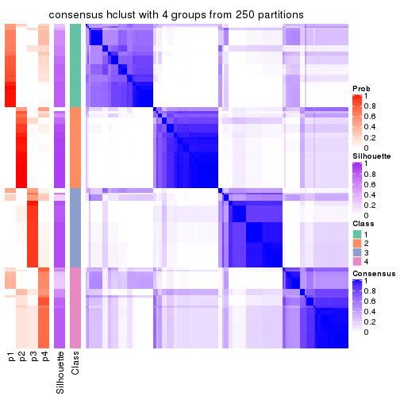
consensus_heatmap(res, k = 5)
consensus_heatmap(res, k = 6)
Heatmaps for the membership of samples in all partitions to see how consistent they are:
membership_heatmap(res, k = 2)
membership_heatmap(res, k = 3)
membership_heatmap(res, k = 4)
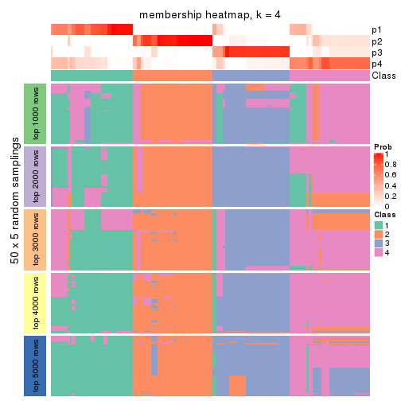
membership_heatmap(res, k = 5)
membership_heatmap(res, k = 6)
As soon as we have had the classes for columns, we can look for signatures
which are significantly different between classes which can be candidate marks
for certain classes. Following are the heatmaps for signatures.
Signature heatmaps where rows are scaled:
get_signatures(res, k = 2)
get_signatures(res, k = 3)
get_signatures(res, k = 4)
get_signatures(res, k = 5)
get_signatures(res, k = 6)

Signature heatmaps where rows are not scaled:
get_signatures(res, k = 2, scale_rows = FALSE)
get_signatures(res, k = 3, scale_rows = FALSE)
get_signatures(res, k = 4, scale_rows = FALSE)
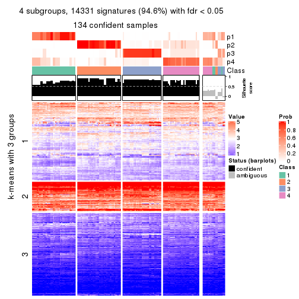
get_signatures(res, k = 5, scale_rows = FALSE)
get_signatures(res, k = 6, scale_rows = FALSE)
Compare the overlap of signatures from different k:
compare_signatures(res)
get_signature() returns a data frame invisibly. TO get the list of signatures, the function
call should be assigned to a variable explicitly. In following code, if plot argument is set
to FALSE, no heatmap is plotted while only the differential analysis is performed.
# code only for demonstration
tb = get_signature(res, k = ..., plot = FALSE)
An example of the output of tb is:
#> which_row fdr mean_1 mean_2 scaled_mean_1 scaled_mean_2 km
#> 1 38 0.042760348 8.373488 9.131774 -0.5533452 0.5164555 1
#> 2 40 0.018707592 7.106213 8.469186 -0.6173731 0.5762149 1
#> 3 55 0.019134737 10.221463 11.207825 -0.6159697 0.5749050 1
#> 4 59 0.006059896 5.921854 7.869574 -0.6899429 0.6439467 1
#> 5 60 0.018055526 8.928898 10.211722 -0.6204761 0.5791110 1
#> 6 98 0.009384629 15.714769 14.887706 0.6635654 -0.6193277 2
...
The columns in tb are:
which_row: row indices corresponding to the input matrix.fdr: FDR for the differential test. mean_x: The mean value in group x.scaled_mean_x: The mean value in group x after rows are scaled.km: Row groups if k-means clustering is applied to rows.
UMAP plot which shows how samples are separated.
dimension_reduction(res, k = 2, method = "UMAP")
dimension_reduction(res, k = 3, method = "UMAP")
dimension_reduction(res, k = 4, method = "UMAP")
dimension_reduction(res, k = 5, method = "UMAP")
dimension_reduction(res, k = 6, method = "UMAP")
Following heatmap shows how subgroups are split when increasing k:
collect_classes(res)
If matrix rows can be associated to genes, consider to use functional_enrichment(res,
...) to perform function enrichment for the signature genes. See this vignette for more detailed explanations.
SD:kmeans**
The object with results only for a single top-value method and a single partition method
can be extracted as:
res = res_list["SD", "kmeans"]
# you can also extract it by
# res = res_list["SD:kmeans"]
A summary of res and all the functions that can be applied to it:
res
#> A 'ConsensusPartition' object with k = 2, 3, 4, 5, 6.
#> On a matrix with 15148 rows and 152 columns.
#> Top rows (1000, 2000, 3000, 4000, 5000) are extracted by 'SD' method.
#> Subgroups are detected by 'kmeans' method.
#> Performed in total 1250 partitions by row resampling.
#> Best k for subgroups seems to be 3.
#>
#> Following methods can be applied to this 'ConsensusPartition' object:
#> [1] "cola_report" "collect_classes" "collect_plots"
#> [4] "collect_stats" "colnames" "compare_signatures"
#> [7] "consensus_heatmap" "dimension_reduction" "functional_enrichment"
#> [10] "get_anno_col" "get_anno" "get_classes"
#> [13] "get_consensus" "get_matrix" "get_membership"
#> [16] "get_param" "get_signatures" "get_stats"
#> [19] "is_best_k" "is_stable_k" "membership_heatmap"
#> [22] "ncol" "nrow" "plot_ecdf"
#> [25] "rownames" "select_partition_number" "show"
#> [28] "suggest_best_k" "test_to_known_factors"
collect_plots() function collects all the plots made from res for all k (number of partitions)
into one single page to provide an easy and fast comparison between different k.
collect_plots(res)
The plots are:
- The first row: a plot of the ECDF (empirical cumulative distribution
function) curves of the consensus matrix for each
k and the heatmap of
predicted classes for each k.
- The second row: heatmaps of the consensus matrix for each
k.
- The third row: heatmaps of the membership matrix for each
k.
- The fouth row: heatmaps of the signatures for each
k.
All the plots in panels can be made by individual functions and they are
plotted later in this section.
select_partition_number() produces several plots showing different
statistics for choosing “optimized” k. There are following statistics:
- ECDF curves of the consensus matrix for each
k;
- 1-PAC. The PAC
score
measures the proportion of the ambiguous subgrouping.
- Mean silhouette score.
- Concordance. The mean probability of fiting the consensus class ids in all
partitions.
- Area increased. Denote \(A_k\) as the area under the ECDF curve for current
k, the area increased is defined as \(A_k - A_{k-1}\).
- Rand index. The percent of pairs of samples that are both in a same cluster
or both are not in a same cluster in the partition of k and k-1.
- Jaccard index. The ratio of pairs of samples are both in a same cluster in
the partition of k and k-1 and the pairs of samples are both in a same
cluster in the partition k or k-1.
The detailed explanations of these statistics can be found in the cola
vignette.
Generally speaking, lower PAC score, higher mean silhouette score or higher
concordance corresponds to better partition. Rand index and Jaccard index
measure how similar the current partition is compared to partition with k-1.
If they are too similar, we won't accept k is better than k-1.
select_partition_number(res)
The numeric values for all these statistics can be obtained by get_stats().
get_stats(res)
#> k 1-PAC mean_silhouette concordance area_increased Rand Jaccard
#> 2 2 0.317 0.733 0.828 0.4534 0.565 0.565
#> 3 3 0.963 0.940 0.969 0.4389 0.715 0.525
#> 4 4 0.694 0.793 0.813 0.1150 0.863 0.631
#> 5 5 0.756 0.796 0.842 0.0738 0.946 0.795
#> 6 6 0.767 0.757 0.800 0.0440 0.952 0.788
suggest_best_k() suggests the best \(k\) based on these statistics. The rules are as follows:
- All \(k\) with Jaccard index larger than 0.95 are removed because increasing
\(k\) does not provide enough extra information. If all \(k\) are removed, it is
marked as no subgroup is detected.
- For all \(k\) with 1-PAC score larger than 0.9, the maximal \(k\) is taken as
the best \(k\), and other \(k\) are marked as optional \(k\).
- If it does not fit the second rule. The \(k\) with the maximal vote of the
highest 1-PAC score, highest mean silhouette, and highest concordance is
taken as the best \(k\).
suggest_best_k(res)
#> [1] 3
Following shows the table of the partitions (You need to click the show/hide
code output link to see it). The membership matrix (columns with name p*)
is inferred by
clue::cl_consensus()
function with the SE method. Basically the value in the membership matrix
represents the probability to belong to a certain group. The finall class
label for an item is determined with the group with highest probability it
belongs to.
In get_classes() function, the entropy is calculated from the membership
matrix and the silhouette score is calculated from the consensus matrix.
show/hide code output
cbind(get_classes(res, k = 2), get_membership(res, k = 2))
#> class entropy silhouette p1 p2
#> SRR1947547 1 0.0376 0.7213 0.996 0.004
#> SRR1947546 2 0.0000 0.7978 0.000 1.000
#> SRR1947545 1 0.8016 0.8433 0.756 0.244
#> SRR1947544 1 0.8016 0.8433 0.756 0.244
#> SRR1947542 2 0.0000 0.7978 0.000 1.000
#> SRR1947541 1 0.4939 0.6344 0.892 0.108
#> SRR1947540 2 0.0000 0.7978 0.000 1.000
#> SRR1947539 2 0.9460 0.6494 0.364 0.636
#> SRR1947538 2 0.6438 0.6800 0.164 0.836
#> SRR1947537 2 0.9460 0.6494 0.364 0.636
#> SRR1947536 1 0.4939 0.6344 0.892 0.108
#> SRR1947535 2 0.9209 0.6680 0.336 0.664
#> SRR1947534 1 0.8608 0.7947 0.716 0.284
#> SRR1947533 2 0.0000 0.7978 0.000 1.000
#> SRR1947532 2 0.8713 0.4734 0.292 0.708
#> SRR1947531 2 0.0000 0.7978 0.000 1.000
#> SRR1947530 1 0.0376 0.7213 0.996 0.004
#> SRR1947529 2 0.0000 0.7978 0.000 1.000
#> SRR1947528 1 0.3879 0.6655 0.924 0.076
#> SRR1947527 2 0.0000 0.7978 0.000 1.000
#> SRR1947526 2 0.0000 0.7978 0.000 1.000
#> SRR1947525 2 0.4431 0.7269 0.092 0.908
#> SRR1947524 2 0.9460 0.6494 0.364 0.636
#> SRR1947523 2 0.3114 0.7733 0.056 0.944
#> SRR1947521 2 0.9460 0.6494 0.364 0.636
#> SRR1947520 2 0.0000 0.7978 0.000 1.000
#> SRR1947519 2 0.9427 0.6527 0.360 0.640
#> SRR1947518 2 0.6973 0.6491 0.188 0.812
#> SRR1947517 2 0.9998 0.4296 0.492 0.508
#> SRR1947516 2 0.0000 0.7978 0.000 1.000
#> SRR1947515 2 0.7674 0.6152 0.224 0.776
#> SRR1947514 2 0.0000 0.7978 0.000 1.000
#> SRR1947513 1 0.8016 0.8433 0.756 0.244
#> SRR1947512 1 0.8016 0.8433 0.756 0.244
#> SRR1947511 2 0.0000 0.7978 0.000 1.000
#> SRR1947510 2 0.8713 0.6848 0.292 0.708
#> SRR1947572 2 0.9732 0.0731 0.404 0.596
#> SRR1947611 2 0.8016 0.6975 0.244 0.756
#> SRR1947509 1 0.4939 0.6344 0.892 0.108
#> SRR1947644 2 0.9460 0.6494 0.364 0.636
#> SRR1947643 2 0.0000 0.7978 0.000 1.000
#> SRR1947642 2 0.9427 0.6527 0.360 0.640
#> SRR1947640 2 0.6438 0.6761 0.164 0.836
#> SRR1947641 2 0.8661 0.6867 0.288 0.712
#> SRR1947639 2 0.4815 0.7144 0.104 0.896
#> SRR1947638 1 0.8016 0.8433 0.756 0.244
#> SRR1947637 2 0.8016 0.6975 0.244 0.756
#> SRR1947636 2 0.9460 0.6494 0.364 0.636
#> SRR1947635 2 0.0000 0.7978 0.000 1.000
#> SRR1947634 2 0.0000 0.7978 0.000 1.000
#> SRR1947633 2 0.9460 0.6494 0.364 0.636
#> SRR1947632 2 0.0376 0.7974 0.004 0.996
#> SRR1947631 2 0.9427 0.6527 0.360 0.640
#> SRR1947629 2 0.9393 0.6549 0.356 0.644
#> SRR1947630 2 0.0000 0.7978 0.000 1.000
#> SRR1947627 1 0.4939 0.6344 0.892 0.108
#> SRR1947628 2 0.0000 0.7978 0.000 1.000
#> SRR1947626 2 0.0000 0.7978 0.000 1.000
#> SRR1947625 2 0.8661 0.6867 0.288 0.712
#> SRR1947624 2 0.0376 0.7974 0.004 0.996
#> SRR1947623 1 0.8016 0.8433 0.756 0.244
#> SRR1947622 2 0.0000 0.7978 0.000 1.000
#> SRR1947621 2 0.0000 0.7978 0.000 1.000
#> SRR1947620 1 0.8016 0.8433 0.756 0.244
#> SRR1947619 2 0.9460 0.6494 0.364 0.636
#> SRR1947617 2 0.0000 0.7978 0.000 1.000
#> SRR1947618 1 0.8016 0.8433 0.756 0.244
#> SRR1947616 2 0.0376 0.7974 0.004 0.996
#> SRR1947615 1 0.4690 0.6565 0.900 0.100
#> SRR1947614 2 0.9460 0.6494 0.364 0.636
#> SRR1947613 1 0.8016 0.8433 0.756 0.244
#> SRR1947610 2 0.4562 0.7229 0.096 0.904
#> SRR1947612 2 0.0000 0.7978 0.000 1.000
#> SRR1947609 1 0.8016 0.8433 0.756 0.244
#> SRR1947608 2 0.8608 0.6878 0.284 0.716
#> SRR1947606 1 0.4815 0.6388 0.896 0.104
#> SRR1947607 1 0.8016 0.8433 0.756 0.244
#> SRR1947604 2 0.9286 0.3155 0.344 0.656
#> SRR1947605 1 0.8016 0.8433 0.756 0.244
#> SRR1947603 2 0.0376 0.7974 0.004 0.996
#> SRR1947602 1 0.0376 0.7213 0.996 0.004
#> SRR1947600 2 0.9460 0.6494 0.364 0.636
#> SRR1947601 2 0.0376 0.7974 0.004 0.996
#> SRR1947598 2 0.6801 0.6697 0.180 0.820
#> SRR1947599 1 0.8016 0.8433 0.756 0.244
#> SRR1947597 2 0.0000 0.7978 0.000 1.000
#> SRR1947596 1 0.9460 0.6709 0.636 0.364
#> SRR1947595 2 0.0000 0.7978 0.000 1.000
#> SRR1947594 1 0.8016 0.8433 0.756 0.244
#> SRR1947592 2 0.9460 0.6494 0.364 0.636
#> SRR1947591 2 0.0000 0.7978 0.000 1.000
#> SRR1947590 1 0.9710 0.5964 0.600 0.400
#> SRR1947588 1 0.8016 0.8433 0.756 0.244
#> SRR1947587 2 0.9460 0.6494 0.364 0.636
#> SRR1947586 2 0.0000 0.7978 0.000 1.000
#> SRR1947585 2 0.9460 0.6494 0.364 0.636
#> SRR1947584 1 0.8016 0.8433 0.756 0.244
#> SRR1947583 2 0.4562 0.7229 0.096 0.904
#> SRR1947582 1 0.8016 0.8433 0.756 0.244
#> SRR1947580 2 0.0000 0.7978 0.000 1.000
#> SRR1947581 1 0.8016 0.8433 0.756 0.244
#> SRR1947576 2 0.8016 0.6975 0.244 0.756
#> SRR1947575 2 0.8016 0.6975 0.244 0.756
#> SRR1947579 2 0.9460 0.6494 0.364 0.636
#> SRR1947578 2 0.0000 0.7978 0.000 1.000
#> SRR1947573 2 0.8713 0.6848 0.292 0.708
#> SRR1947574 2 0.6801 0.6614 0.180 0.820
#> SRR1947571 2 0.6048 0.6920 0.148 0.852
#> SRR1947577 1 0.8016 0.8433 0.756 0.244
#> SRR1947570 1 0.0376 0.7213 0.996 0.004
#> SRR1947569 2 0.9460 0.6494 0.364 0.636
#> SRR1947566 2 0.0376 0.7974 0.004 0.996
#> SRR1947567 2 0.0000 0.7978 0.000 1.000
#> SRR1947568 2 0.4939 0.7100 0.108 0.892
#> SRR1947564 2 0.0000 0.7978 0.000 1.000
#> SRR1947563 2 0.8267 0.6944 0.260 0.740
#> SRR1947562 2 0.4690 0.7186 0.100 0.900
#> SRR1947565 2 0.9460 0.6494 0.364 0.636
#> SRR1947559 2 0.0000 0.7978 0.000 1.000
#> SRR1947560 2 0.8016 0.6975 0.244 0.756
#> SRR1947561 2 0.0376 0.7974 0.004 0.996
#> SRR1947557 1 0.8016 0.8433 0.756 0.244
#> SRR1947558 2 0.9427 0.6527 0.360 0.640
#> SRR1947556 1 0.8016 0.8433 0.756 0.244
#> SRR1947553 2 0.3431 0.7526 0.064 0.936
#> SRR1947554 1 0.8016 0.8433 0.756 0.244
#> SRR1947555 2 0.0376 0.7974 0.004 0.996
#> SRR1947550 2 0.4690 0.7186 0.100 0.900
#> SRR1947552 1 0.9795 0.5583 0.584 0.416
#> SRR1947549 2 0.8713 0.6848 0.292 0.708
#> SRR1947551 2 0.8713 0.6848 0.292 0.708
#> SRR1947548 2 0.6438 0.6825 0.164 0.836
#> SRR1947506 1 0.0376 0.7213 0.996 0.004
#> SRR1947507 1 0.8016 0.8433 0.756 0.244
#> SRR1947504 1 0.8016 0.8433 0.756 0.244
#> SRR1947503 1 0.8016 0.8433 0.756 0.244
#> SRR1947502 2 0.0000 0.7978 0.000 1.000
#> SRR1947501 2 0.0376 0.7974 0.004 0.996
#> SRR1947499 1 0.0376 0.7213 0.996 0.004
#> SRR1947498 2 0.9460 0.6494 0.364 0.636
#> SRR1947508 1 0.5059 0.6381 0.888 0.112
#> SRR1947505 2 0.3114 0.7733 0.056 0.944
#> SRR1947497 2 0.0000 0.7978 0.000 1.000
#> SRR1947496 1 0.8016 0.8433 0.756 0.244
#> SRR1947495 2 0.0000 0.7978 0.000 1.000
#> SRR1947494 2 0.7528 0.6284 0.216 0.784
#> SRR1947493 1 0.0376 0.7213 0.996 0.004
#> SRR1947492 1 0.8016 0.8433 0.756 0.244
#> SRR1947500 2 0.3584 0.7492 0.068 0.932
#> SRR1947491 2 0.6048 0.6939 0.148 0.852
#> SRR1947490 1 0.8016 0.8433 0.756 0.244
#> SRR1947489 1 0.0376 0.7213 0.996 0.004
show/hide code output
cbind(get_classes(res, k = 3), get_membership(res, k = 3))
#> class entropy silhouette p1 p2 p3
#> SRR1947547 1 0.6309 -0.0211 0.500 0.000 0.500
#> SRR1947546 2 0.0475 0.9607 0.004 0.992 0.004
#> SRR1947545 1 0.0661 0.9724 0.988 0.008 0.004
#> SRR1947544 1 0.0661 0.9724 0.988 0.008 0.004
#> SRR1947542 2 0.0475 0.9607 0.004 0.992 0.004
#> SRR1947541 3 0.0000 0.9806 0.000 0.000 1.000
#> SRR1947540 2 0.0475 0.9607 0.004 0.992 0.004
#> SRR1947539 3 0.0424 0.9787 0.008 0.000 0.992
#> SRR1947538 2 0.2860 0.9094 0.084 0.912 0.004
#> SRR1947537 3 0.0000 0.9806 0.000 0.000 1.000
#> SRR1947536 3 0.2356 0.9186 0.072 0.000 0.928
#> SRR1947535 3 0.0000 0.9806 0.000 0.000 1.000
#> SRR1947534 1 0.0424 0.9708 0.992 0.008 0.000
#> SRR1947533 2 0.0000 0.9609 0.000 1.000 0.000
#> SRR1947532 2 0.4629 0.7962 0.188 0.808 0.004
#> SRR1947531 2 0.0475 0.9607 0.004 0.992 0.004
#> SRR1947530 1 0.0592 0.9660 0.988 0.000 0.012
#> SRR1947529 2 0.0237 0.9607 0.000 0.996 0.004
#> SRR1947528 3 0.0000 0.9806 0.000 0.000 1.000
#> SRR1947527 2 0.0237 0.9608 0.004 0.996 0.000
#> SRR1947526 2 0.0000 0.9609 0.000 1.000 0.000
#> SRR1947525 2 0.0475 0.9607 0.004 0.992 0.004
#> SRR1947524 3 0.0000 0.9806 0.000 0.000 1.000
#> SRR1947523 2 0.1399 0.9486 0.028 0.968 0.004
#> SRR1947521 3 0.0661 0.9774 0.008 0.004 0.988
#> SRR1947520 2 0.0000 0.9609 0.000 1.000 0.000
#> SRR1947519 3 0.0000 0.9806 0.000 0.000 1.000
#> SRR1947518 2 0.4629 0.7961 0.188 0.808 0.004
#> SRR1947517 3 0.0661 0.9774 0.008 0.004 0.988
#> SRR1947516 2 0.0000 0.9609 0.000 1.000 0.000
#> SRR1947515 2 0.4629 0.7961 0.188 0.808 0.004
#> SRR1947514 2 0.0000 0.9609 0.000 1.000 0.000
#> SRR1947513 1 0.0424 0.9708 0.992 0.008 0.000
#> SRR1947512 1 0.0661 0.9724 0.988 0.008 0.004
#> SRR1947511 2 0.0000 0.9609 0.000 1.000 0.000
#> SRR1947510 3 0.0848 0.9760 0.008 0.008 0.984
#> SRR1947572 2 0.6192 0.3435 0.420 0.580 0.000
#> SRR1947611 3 0.0848 0.9760 0.008 0.008 0.984
#> SRR1947509 3 0.2772 0.9163 0.080 0.004 0.916
#> SRR1947644 3 0.0661 0.9774 0.008 0.004 0.988
#> SRR1947643 2 0.0000 0.9609 0.000 1.000 0.000
#> SRR1947642 3 0.0000 0.9806 0.000 0.000 1.000
#> SRR1947640 2 0.2590 0.9188 0.072 0.924 0.004
#> SRR1947641 3 0.0237 0.9795 0.000 0.004 0.996
#> SRR1947639 2 0.2301 0.9269 0.060 0.936 0.004
#> SRR1947638 1 0.0424 0.9708 0.992 0.008 0.000
#> SRR1947637 3 0.0848 0.9760 0.008 0.008 0.984
#> SRR1947636 3 0.0000 0.9806 0.000 0.000 1.000
#> SRR1947635 2 0.0475 0.9607 0.004 0.992 0.004
#> SRR1947634 2 0.0000 0.9609 0.000 1.000 0.000
#> SRR1947633 3 0.0424 0.9787 0.008 0.000 0.992
#> SRR1947632 2 0.0237 0.9607 0.000 0.996 0.004
#> SRR1947631 3 0.0000 0.9806 0.000 0.000 1.000
#> SRR1947629 3 0.0000 0.9806 0.000 0.000 1.000
#> SRR1947630 2 0.0424 0.9559 0.008 0.992 0.000
#> SRR1947627 3 0.0000 0.9806 0.000 0.000 1.000
#> SRR1947628 2 0.0475 0.9607 0.004 0.992 0.004
#> SRR1947626 2 0.0000 0.9609 0.000 1.000 0.000
#> SRR1947625 3 0.0237 0.9795 0.000 0.004 0.996
#> SRR1947624 2 0.0424 0.9559 0.008 0.992 0.000
#> SRR1947623 1 0.0424 0.9708 0.992 0.008 0.000
#> SRR1947622 2 0.0237 0.9607 0.000 0.996 0.004
#> SRR1947621 2 0.0000 0.9609 0.000 1.000 0.000
#> SRR1947620 1 0.0661 0.9724 0.988 0.008 0.004
#> SRR1947619 3 0.0000 0.9806 0.000 0.000 1.000
#> SRR1947617 2 0.0000 0.9609 0.000 1.000 0.000
#> SRR1947618 1 0.0661 0.9724 0.988 0.008 0.004
#> SRR1947616 2 0.0000 0.9609 0.000 1.000 0.000
#> SRR1947615 3 0.4796 0.7075 0.220 0.000 0.780
#> SRR1947614 3 0.0661 0.9774 0.008 0.004 0.988
#> SRR1947613 1 0.0661 0.9724 0.988 0.008 0.004
#> SRR1947610 2 0.0475 0.9607 0.004 0.992 0.004
#> SRR1947612 2 0.0000 0.9609 0.000 1.000 0.000
#> SRR1947609 1 0.0424 0.9708 0.992 0.008 0.000
#> SRR1947608 3 0.0237 0.9795 0.000 0.004 0.996
#> SRR1947606 3 0.0000 0.9806 0.000 0.000 1.000
#> SRR1947607 1 0.0424 0.9708 0.992 0.008 0.000
#> SRR1947604 2 0.4682 0.7907 0.192 0.804 0.004
#> SRR1947605 1 0.0661 0.9724 0.988 0.008 0.004
#> SRR1947603 2 0.0237 0.9607 0.000 0.996 0.004
#> SRR1947602 1 0.0592 0.9660 0.988 0.000 0.012
#> SRR1947600 3 0.0000 0.9806 0.000 0.000 1.000
#> SRR1947601 2 0.0000 0.9609 0.000 1.000 0.000
#> SRR1947598 2 0.2772 0.9126 0.080 0.916 0.004
#> SRR1947599 1 0.0661 0.9687 0.988 0.008 0.004
#> SRR1947597 2 0.0237 0.9607 0.000 0.996 0.004
#> SRR1947596 1 0.4178 0.7781 0.828 0.172 0.000
#> SRR1947595 2 0.0475 0.9607 0.004 0.992 0.004
#> SRR1947594 1 0.0661 0.9724 0.988 0.008 0.004
#> SRR1947592 3 0.0000 0.9806 0.000 0.000 1.000
#> SRR1947591 2 0.0000 0.9609 0.000 1.000 0.000
#> SRR1947590 1 0.4178 0.7781 0.828 0.172 0.000
#> SRR1947588 1 0.0661 0.9724 0.988 0.008 0.004
#> SRR1947587 3 0.0000 0.9806 0.000 0.000 1.000
#> SRR1947586 2 0.0237 0.9608 0.004 0.996 0.000
#> SRR1947585 3 0.0000 0.9806 0.000 0.000 1.000
#> SRR1947584 1 0.0661 0.9724 0.988 0.008 0.004
#> SRR1947583 2 0.0475 0.9607 0.004 0.992 0.004
#> SRR1947582 1 0.0661 0.9724 0.988 0.008 0.004
#> SRR1947580 2 0.0000 0.9609 0.000 1.000 0.000
#> SRR1947581 1 0.0661 0.9724 0.988 0.008 0.004
#> SRR1947576 3 0.0848 0.9760 0.008 0.008 0.984
#> SRR1947575 3 0.0237 0.9795 0.000 0.004 0.996
#> SRR1947579 3 0.0661 0.9774 0.008 0.004 0.988
#> SRR1947578 2 0.0000 0.9609 0.000 1.000 0.000
#> SRR1947573 3 0.0237 0.9795 0.000 0.004 0.996
#> SRR1947574 2 0.2860 0.9094 0.084 0.912 0.004
#> SRR1947571 2 0.2860 0.9094 0.084 0.912 0.004
#> SRR1947577 1 0.0661 0.9724 0.988 0.008 0.004
#> SRR1947570 1 0.0592 0.9660 0.988 0.000 0.012
#> SRR1947569 3 0.0000 0.9806 0.000 0.000 1.000
#> SRR1947566 2 0.0000 0.9609 0.000 1.000 0.000
#> SRR1947567 2 0.0475 0.9607 0.004 0.992 0.004
#> SRR1947568 2 0.3619 0.8575 0.136 0.864 0.000
#> SRR1947564 2 0.0000 0.9609 0.000 1.000 0.000
#> SRR1947563 3 0.0237 0.9795 0.000 0.004 0.996
#> SRR1947562 2 0.0475 0.9607 0.004 0.992 0.004
#> SRR1947565 3 0.0000 0.9806 0.000 0.000 1.000
#> SRR1947559 2 0.0237 0.9608 0.004 0.996 0.000
#> SRR1947560 3 0.0848 0.9760 0.008 0.008 0.984
#> SRR1947561 2 0.0000 0.9609 0.000 1.000 0.000
#> SRR1947557 1 0.0661 0.9724 0.988 0.008 0.004
#> SRR1947558 3 0.0000 0.9806 0.000 0.000 1.000
#> SRR1947556 1 0.0661 0.9724 0.988 0.008 0.004
#> SRR1947553 2 0.0475 0.9607 0.004 0.992 0.004
#> SRR1947554 1 0.0424 0.9708 0.992 0.008 0.000
#> SRR1947555 2 0.0237 0.9587 0.004 0.996 0.000
#> SRR1947550 2 0.0475 0.9607 0.004 0.992 0.004
#> SRR1947552 2 0.6264 0.4450 0.380 0.616 0.004
#> SRR1947549 3 0.0237 0.9795 0.000 0.004 0.996
#> SRR1947551 3 0.0848 0.9760 0.008 0.008 0.984
#> SRR1947548 2 0.2860 0.9094 0.084 0.912 0.004
#> SRR1947506 1 0.1031 0.9579 0.976 0.000 0.024
#> SRR1947507 1 0.0661 0.9724 0.988 0.008 0.004
#> SRR1947504 1 0.0424 0.9708 0.992 0.008 0.000
#> SRR1947503 1 0.0424 0.9708 0.992 0.008 0.000
#> SRR1947502 2 0.0000 0.9609 0.000 1.000 0.000
#> SRR1947501 2 0.0237 0.9607 0.000 0.996 0.004
#> SRR1947499 1 0.0592 0.9660 0.988 0.000 0.012
#> SRR1947498 3 0.0000 0.9806 0.000 0.000 1.000
#> SRR1947508 3 0.2356 0.9186 0.072 0.000 0.928
#> SRR1947505 2 0.1399 0.9486 0.028 0.968 0.004
#> SRR1947497 2 0.0237 0.9608 0.004 0.996 0.000
#> SRR1947496 1 0.0661 0.9724 0.988 0.008 0.004
#> SRR1947495 2 0.0237 0.9608 0.004 0.996 0.000
#> SRR1947494 2 0.2860 0.9094 0.084 0.912 0.004
#> SRR1947493 1 0.0592 0.9660 0.988 0.000 0.012
#> SRR1947492 1 0.0661 0.9724 0.988 0.008 0.004
#> SRR1947500 2 0.0475 0.9607 0.004 0.992 0.004
#> SRR1947491 2 0.1399 0.9486 0.028 0.968 0.004
#> SRR1947490 1 0.0661 0.9724 0.988 0.008 0.004
#> SRR1947489 3 0.4796 0.7075 0.220 0.000 0.780
show/hide code output
cbind(get_classes(res, k = 4), get_membership(res, k = 4))
#> class entropy silhouette p1 p2 p3 p4
#> SRR1947547 3 0.5555 0.7152 0.052 0.200 0.732 0.016
#> SRR1947546 4 0.0336 0.7113 0.000 0.008 0.000 0.992
#> SRR1947545 1 0.2714 0.8795 0.884 0.112 0.004 0.000
#> SRR1947544 1 0.0000 0.9025 1.000 0.000 0.000 0.000
#> SRR1947542 4 0.0336 0.7113 0.000 0.008 0.000 0.992
#> SRR1947541 3 0.3450 0.8123 0.000 0.156 0.836 0.008
#> SRR1947540 4 0.1474 0.6420 0.000 0.052 0.000 0.948
#> SRR1947539 3 0.3448 0.8253 0.000 0.168 0.828 0.004
#> SRR1947538 4 0.2578 0.7308 0.052 0.036 0.000 0.912
#> SRR1947537 3 0.1584 0.8698 0.000 0.036 0.952 0.012
#> SRR1947536 3 0.4855 0.7750 0.076 0.132 0.788 0.004
#> SRR1947535 3 0.0469 0.8761 0.000 0.000 0.988 0.012
#> SRR1947534 1 0.2530 0.8362 0.888 0.000 0.000 0.112
#> SRR1947533 2 0.4992 0.9781 0.000 0.524 0.000 0.476
#> SRR1947532 4 0.5853 0.6623 0.052 0.144 0.056 0.748
#> SRR1947531 4 0.1474 0.6420 0.000 0.052 0.000 0.948
#> SRR1947530 1 0.4217 0.8514 0.800 0.176 0.020 0.004
#> SRR1947529 2 0.4996 0.9646 0.000 0.516 0.000 0.484
#> SRR1947528 3 0.3401 0.8153 0.000 0.152 0.840 0.008
#> SRR1947527 2 0.4992 0.9781 0.000 0.524 0.000 0.476
#> SRR1947526 2 0.4992 0.9781 0.000 0.524 0.000 0.476
#> SRR1947525 4 0.0188 0.7146 0.000 0.004 0.000 0.996
#> SRR1947524 3 0.0937 0.8758 0.000 0.012 0.976 0.012
#> SRR1947523 4 0.4912 0.6830 0.020 0.132 0.052 0.796
#> SRR1947521 3 0.4193 0.7819 0.000 0.268 0.732 0.000
#> SRR1947520 2 0.4992 0.9781 0.000 0.524 0.000 0.476
#> SRR1947519 3 0.3377 0.8237 0.000 0.140 0.848 0.012
#> SRR1947518 4 0.2623 0.7285 0.064 0.028 0.000 0.908
#> SRR1947517 3 0.4193 0.7819 0.000 0.268 0.732 0.000
#> SRR1947516 2 0.4992 0.9781 0.000 0.524 0.000 0.476
#> SRR1947515 4 0.5878 0.6681 0.064 0.128 0.056 0.752
#> SRR1947514 2 0.4992 0.9781 0.000 0.524 0.000 0.476
#> SRR1947513 1 0.5302 0.7992 0.760 0.120 0.004 0.116
#> SRR1947512 1 0.0000 0.9025 1.000 0.000 0.000 0.000
#> SRR1947511 2 0.4992 0.9781 0.000 0.524 0.000 0.476
#> SRR1947510 3 0.4222 0.7813 0.000 0.272 0.728 0.000
#> SRR1947572 4 0.4420 0.6110 0.240 0.012 0.000 0.748
#> SRR1947611 3 0.4222 0.7813 0.000 0.272 0.728 0.000
#> SRR1947509 3 0.6147 0.6846 0.056 0.380 0.564 0.000
#> SRR1947644 3 0.4428 0.7806 0.000 0.276 0.720 0.004
#> SRR1947643 2 0.4992 0.9781 0.000 0.524 0.000 0.476
#> SRR1947642 3 0.2542 0.8537 0.000 0.084 0.904 0.012
#> SRR1947640 4 0.2759 0.7311 0.044 0.052 0.000 0.904
#> SRR1947641 3 0.0469 0.8761 0.000 0.000 0.988 0.012
#> SRR1947639 4 0.1209 0.7226 0.032 0.004 0.000 0.964
#> SRR1947638 1 0.5408 0.7904 0.752 0.120 0.004 0.124
#> SRR1947637 3 0.4222 0.7813 0.000 0.272 0.728 0.000
#> SRR1947636 3 0.1488 0.8706 0.000 0.032 0.956 0.012
#> SRR1947635 4 0.0469 0.7187 0.000 0.012 0.000 0.988
#> SRR1947634 2 0.4992 0.9781 0.000 0.524 0.000 0.476
#> SRR1947633 3 0.3494 0.8237 0.000 0.172 0.824 0.004
#> SRR1947632 4 0.0336 0.7113 0.000 0.008 0.000 0.992
#> SRR1947631 3 0.1584 0.8698 0.000 0.036 0.952 0.012
#> SRR1947629 3 0.0937 0.8758 0.000 0.012 0.976 0.012
#> SRR1947630 2 0.4697 0.7833 0.000 0.644 0.000 0.356
#> SRR1947627 3 0.3249 0.8228 0.000 0.140 0.852 0.008
#> SRR1947628 4 0.0336 0.7113 0.000 0.008 0.000 0.992
#> SRR1947626 2 0.4992 0.9781 0.000 0.524 0.000 0.476
#> SRR1947625 3 0.0469 0.8761 0.000 0.000 0.988 0.012
#> SRR1947624 2 0.4222 0.6541 0.000 0.728 0.000 0.272
#> SRR1947623 1 0.0336 0.9000 0.992 0.000 0.000 0.008
#> SRR1947622 4 0.0817 0.6885 0.000 0.024 0.000 0.976
#> SRR1947621 2 0.4992 0.9781 0.000 0.524 0.000 0.476
#> SRR1947620 1 0.3236 0.8709 0.856 0.136 0.004 0.004
#> SRR1947619 3 0.1584 0.8698 0.000 0.036 0.952 0.012
#> SRR1947617 2 0.4992 0.9781 0.000 0.524 0.000 0.476
#> SRR1947618 1 0.5406 0.8003 0.752 0.128 0.004 0.116
#> SRR1947616 2 0.4992 0.9781 0.000 0.524 0.000 0.476
#> SRR1947615 3 0.6286 0.6342 0.000 0.200 0.660 0.140
#> SRR1947614 3 0.4193 0.7819 0.000 0.268 0.732 0.000
#> SRR1947613 1 0.0000 0.9025 1.000 0.000 0.000 0.000
#> SRR1947610 4 0.0336 0.7113 0.000 0.008 0.000 0.992
#> SRR1947612 2 0.4992 0.9781 0.000 0.524 0.000 0.476
#> SRR1947609 4 0.8058 0.3483 0.264 0.144 0.052 0.540
#> SRR1947608 3 0.0469 0.8761 0.000 0.000 0.988 0.012
#> SRR1947606 3 0.3249 0.8228 0.000 0.140 0.852 0.008
#> SRR1947607 1 0.0000 0.9025 1.000 0.000 0.000 0.000
#> SRR1947604 4 0.5802 0.6709 0.064 0.128 0.052 0.756
#> SRR1947605 1 0.2466 0.8858 0.900 0.096 0.004 0.000
#> SRR1947603 2 0.4992 0.9781 0.000 0.524 0.000 0.476
#> SRR1947602 1 0.5365 0.8104 0.744 0.176 0.076 0.004
#> SRR1947600 3 0.0937 0.8758 0.000 0.012 0.976 0.012
#> SRR1947601 2 0.4992 0.9781 0.000 0.524 0.000 0.476
#> SRR1947598 4 0.5189 0.6933 0.052 0.100 0.052 0.796
#> SRR1947599 4 0.8037 0.3582 0.260 0.144 0.052 0.544
#> SRR1947597 4 0.4746 -0.6166 0.000 0.368 0.000 0.632
#> SRR1947596 4 0.8401 0.0854 0.384 0.144 0.052 0.420
#> SRR1947595 4 0.0336 0.7203 0.000 0.008 0.000 0.992
#> SRR1947594 1 0.0000 0.9025 1.000 0.000 0.000 0.000
#> SRR1947592 3 0.0469 0.8761 0.000 0.000 0.988 0.012
#> SRR1947591 2 0.4992 0.9781 0.000 0.524 0.000 0.476
#> SRR1947590 4 0.8765 0.0605 0.372 0.144 0.080 0.404
#> SRR1947588 1 0.0000 0.9025 1.000 0.000 0.000 0.000
#> SRR1947587 3 0.1854 0.8669 0.000 0.048 0.940 0.012
#> SRR1947586 2 0.4992 0.9781 0.000 0.524 0.000 0.476
#> SRR1947585 3 0.0937 0.8758 0.000 0.012 0.976 0.012
#> SRR1947584 1 0.0000 0.9025 1.000 0.000 0.000 0.000
#> SRR1947583 4 0.0000 0.7175 0.000 0.000 0.000 1.000
#> SRR1947582 1 0.3236 0.8709 0.856 0.136 0.004 0.004
#> SRR1947580 2 0.4992 0.9781 0.000 0.524 0.000 0.476
#> SRR1947581 1 0.0000 0.9025 1.000 0.000 0.000 0.000
#> SRR1947576 3 0.4222 0.7813 0.000 0.272 0.728 0.000
#> SRR1947575 3 0.0657 0.8758 0.000 0.004 0.984 0.012
#> SRR1947579 3 0.4193 0.7819 0.000 0.268 0.732 0.000
#> SRR1947578 4 0.1474 0.6420 0.000 0.052 0.000 0.948
#> SRR1947573 3 0.0376 0.8746 0.000 0.004 0.992 0.004
#> SRR1947574 4 0.2385 0.7303 0.052 0.028 0.000 0.920
#> SRR1947571 4 0.3089 0.7294 0.052 0.044 0.008 0.896
#> SRR1947577 1 0.5406 0.8003 0.752 0.128 0.004 0.116
#> SRR1947570 1 0.7097 0.6421 0.600 0.200 0.192 0.008
#> SRR1947569 3 0.0937 0.8758 0.000 0.012 0.976 0.012
#> SRR1947566 2 0.4992 0.9781 0.000 0.524 0.000 0.476
#> SRR1947567 4 0.0336 0.7113 0.000 0.008 0.000 0.992
#> SRR1947568 4 0.3761 0.6181 0.068 0.080 0.000 0.852
#> SRR1947564 2 0.4992 0.9781 0.000 0.524 0.000 0.476
#> SRR1947563 3 0.0469 0.8761 0.000 0.000 0.988 0.012
#> SRR1947562 4 0.0000 0.7175 0.000 0.000 0.000 1.000
#> SRR1947565 3 0.1388 0.8716 0.000 0.028 0.960 0.012
#> SRR1947559 4 0.2011 0.5810 0.000 0.080 0.000 0.920
#> SRR1947560 3 0.4222 0.7813 0.000 0.272 0.728 0.000
#> SRR1947561 2 0.4992 0.9781 0.000 0.524 0.000 0.476
#> SRR1947557 1 0.0000 0.9025 1.000 0.000 0.000 0.000
#> SRR1947558 3 0.0469 0.8761 0.000 0.000 0.988 0.012
#> SRR1947556 1 0.0336 0.9000 0.992 0.000 0.000 0.008
#> SRR1947553 4 0.0336 0.7113 0.000 0.008 0.000 0.992
#> SRR1947554 1 0.2469 0.8388 0.892 0.000 0.000 0.108
#> SRR1947555 2 0.4992 0.9781 0.000 0.524 0.000 0.476
#> SRR1947550 4 0.0000 0.7175 0.000 0.000 0.000 1.000
#> SRR1947552 4 0.6675 0.6239 0.108 0.144 0.052 0.696
#> SRR1947549 3 0.0657 0.8758 0.000 0.004 0.984 0.012
#> SRR1947551 3 0.4428 0.7806 0.000 0.276 0.720 0.004
#> SRR1947548 4 0.5067 0.6971 0.052 0.092 0.052 0.804
#> SRR1947506 1 0.7256 0.5762 0.564 0.200 0.232 0.004
#> SRR1947507 1 0.0336 0.9003 0.992 0.008 0.000 0.000
#> SRR1947504 1 0.0336 0.9000 0.992 0.000 0.000 0.008
#> SRR1947503 4 0.7291 0.2124 0.340 0.144 0.004 0.512
#> SRR1947502 2 0.4992 0.9781 0.000 0.524 0.000 0.476
#> SRR1947501 4 0.0336 0.7113 0.000 0.008 0.000 0.992
#> SRR1947499 1 0.5298 0.8142 0.748 0.176 0.072 0.004
#> SRR1947498 3 0.0937 0.8758 0.000 0.012 0.976 0.012
#> SRR1947508 3 0.5317 0.7239 0.052 0.200 0.740 0.008
#> SRR1947505 4 0.4696 0.6914 0.020 0.116 0.052 0.812
#> SRR1947497 2 0.4992 0.9781 0.000 0.524 0.000 0.476
#> SRR1947496 1 0.0000 0.9025 1.000 0.000 0.000 0.000
#> SRR1947495 2 0.4992 0.9781 0.000 0.524 0.000 0.476
#> SRR1947494 4 0.5630 0.6742 0.052 0.132 0.052 0.764
#> SRR1947493 1 0.3863 0.8565 0.812 0.176 0.008 0.004
#> SRR1947492 1 0.0000 0.9025 1.000 0.000 0.000 0.000
#> SRR1947500 4 0.0000 0.7175 0.000 0.000 0.000 1.000
#> SRR1947491 4 0.2973 0.7214 0.020 0.096 0.000 0.884
#> SRR1947490 1 0.0000 0.9025 1.000 0.000 0.000 0.000
#> SRR1947489 3 0.5763 0.7105 0.024 0.200 0.724 0.052
show/hide code output
cbind(get_classes(res, k = 5), get_membership(res, k = 5))
#> class entropy silhouette p1 p2 p3 p4 p5
#> SRR1947547 3 0.6480 0.476 0.024 0.012 0.564 0.088 0.312
#> SRR1947546 4 0.3409 0.898 0.000 0.112 0.000 0.836 0.052
#> SRR1947545 1 0.4349 0.758 0.756 0.000 0.000 0.068 0.176
#> SRR1947544 1 0.0579 0.822 0.984 0.000 0.000 0.008 0.008
#> SRR1947542 4 0.3146 0.906 0.000 0.092 0.000 0.856 0.052
#> SRR1947541 3 0.5197 0.552 0.000 0.012 0.660 0.052 0.276
#> SRR1947540 4 0.3359 0.898 0.000 0.108 0.000 0.840 0.052
#> SRR1947539 3 0.3561 -0.092 0.000 0.000 0.740 0.000 0.260
#> SRR1947538 4 0.2419 0.914 0.004 0.064 0.000 0.904 0.028
#> SRR1947537 3 0.0833 0.705 0.000 0.004 0.976 0.004 0.016
#> SRR1947536 3 0.5970 0.526 0.032 0.008 0.624 0.056 0.280
#> SRR1947535 3 0.0693 0.703 0.000 0.000 0.980 0.008 0.012
#> SRR1947534 1 0.3351 0.748 0.836 0.004 0.000 0.132 0.028
#> SRR1947533 2 0.1195 0.961 0.000 0.960 0.000 0.012 0.028
#> SRR1947532 4 0.1483 0.880 0.008 0.000 0.012 0.952 0.028
#> SRR1947531 4 0.3409 0.898 0.000 0.112 0.000 0.836 0.052
#> SRR1947530 1 0.6232 0.665 0.592 0.012 0.016 0.088 0.292
#> SRR1947529 2 0.2853 0.887 0.000 0.876 0.000 0.072 0.052
#> SRR1947528 3 0.5237 0.550 0.000 0.012 0.660 0.056 0.272
#> SRR1947527 2 0.1012 0.962 0.000 0.968 0.000 0.012 0.020
#> SRR1947526 2 0.1195 0.961 0.000 0.960 0.000 0.012 0.028
#> SRR1947525 4 0.2597 0.914 0.000 0.092 0.000 0.884 0.024
#> SRR1947524 3 0.0865 0.693 0.000 0.000 0.972 0.004 0.024
#> SRR1947523 4 0.1564 0.898 0.000 0.024 0.004 0.948 0.024
#> SRR1947521 5 0.4273 0.942 0.000 0.000 0.448 0.000 0.552
#> SRR1947520 2 0.1195 0.961 0.000 0.960 0.000 0.012 0.028
#> SRR1947519 3 0.3720 0.608 0.000 0.000 0.760 0.012 0.228
#> SRR1947518 4 0.2478 0.914 0.008 0.060 0.000 0.904 0.028
#> SRR1947517 5 0.4273 0.942 0.000 0.000 0.448 0.000 0.552
#> SRR1947516 2 0.0510 0.964 0.000 0.984 0.000 0.016 0.000
#> SRR1947515 4 0.1770 0.886 0.008 0.008 0.012 0.944 0.028
#> SRR1947514 2 0.0510 0.964 0.000 0.984 0.000 0.016 0.000
#> SRR1947513 1 0.6335 0.633 0.520 0.000 0.000 0.276 0.204
#> SRR1947512 1 0.0000 0.822 1.000 0.000 0.000 0.000 0.000
#> SRR1947511 2 0.1195 0.961 0.000 0.960 0.000 0.012 0.028
#> SRR1947510 5 0.4273 0.942 0.000 0.000 0.448 0.000 0.552
#> SRR1947572 4 0.4790 0.794 0.160 0.044 0.000 0.756 0.040
#> SRR1947611 5 0.4273 0.942 0.000 0.000 0.448 0.000 0.552
#> SRR1947509 5 0.3808 0.434 0.028 0.004 0.160 0.004 0.804
#> SRR1947644 5 0.4256 0.929 0.000 0.000 0.436 0.000 0.564
#> SRR1947643 2 0.1626 0.957 0.000 0.940 0.000 0.016 0.044
#> SRR1947642 3 0.2006 0.689 0.000 0.000 0.916 0.012 0.072
#> SRR1947640 4 0.1970 0.915 0.004 0.060 0.000 0.924 0.012
#> SRR1947641 3 0.0693 0.701 0.000 0.000 0.980 0.008 0.012
#> SRR1947639 4 0.2700 0.914 0.004 0.088 0.000 0.884 0.024
#> SRR1947638 1 0.6301 0.609 0.516 0.000 0.000 0.300 0.184
#> SRR1947637 5 0.4273 0.942 0.000 0.000 0.448 0.000 0.552
#> SRR1947636 3 0.0932 0.705 0.000 0.004 0.972 0.004 0.020
#> SRR1947635 4 0.3201 0.906 0.000 0.096 0.000 0.852 0.052
#> SRR1947634 2 0.1195 0.961 0.000 0.960 0.000 0.012 0.028
#> SRR1947633 3 0.3949 -0.404 0.000 0.000 0.668 0.000 0.332
#> SRR1947632 4 0.3359 0.900 0.000 0.108 0.000 0.840 0.052
#> SRR1947631 3 0.1082 0.705 0.000 0.000 0.964 0.008 0.028
#> SRR1947629 3 0.0865 0.693 0.000 0.000 0.972 0.004 0.024
#> SRR1947630 2 0.1764 0.929 0.000 0.928 0.000 0.008 0.064
#> SRR1947627 3 0.5215 0.553 0.000 0.012 0.664 0.056 0.268
#> SRR1947628 4 0.3146 0.906 0.000 0.092 0.000 0.856 0.052
#> SRR1947626 2 0.0798 0.962 0.000 0.976 0.000 0.016 0.008
#> SRR1947625 3 0.0898 0.696 0.000 0.000 0.972 0.008 0.020
#> SRR1947624 2 0.1831 0.916 0.000 0.920 0.000 0.004 0.076
#> SRR1947623 1 0.1043 0.812 0.960 0.000 0.000 0.000 0.040
#> SRR1947622 4 0.3601 0.888 0.000 0.128 0.000 0.820 0.052
#> SRR1947621 2 0.0510 0.964 0.000 0.984 0.000 0.016 0.000
#> SRR1947620 1 0.4958 0.730 0.692 0.000 0.000 0.084 0.224
#> SRR1947619 3 0.0833 0.705 0.000 0.004 0.976 0.004 0.016
#> SRR1947617 2 0.0510 0.964 0.000 0.984 0.000 0.016 0.000
#> SRR1947618 1 0.6367 0.643 0.520 0.000 0.000 0.248 0.232
#> SRR1947616 2 0.2149 0.926 0.000 0.916 0.000 0.036 0.048
#> SRR1947615 3 0.6367 0.456 0.000 0.012 0.532 0.136 0.320
#> SRR1947614 5 0.4273 0.942 0.000 0.000 0.448 0.000 0.552
#> SRR1947613 1 0.0290 0.822 0.992 0.000 0.000 0.000 0.008
#> SRR1947610 4 0.3058 0.910 0.000 0.096 0.000 0.860 0.044
#> SRR1947612 2 0.0510 0.964 0.000 0.984 0.000 0.016 0.000
#> SRR1947609 4 0.1822 0.862 0.024 0.000 0.004 0.936 0.036
#> SRR1947608 3 0.0898 0.696 0.000 0.000 0.972 0.008 0.020
#> SRR1947606 3 0.5065 0.562 0.000 0.012 0.676 0.048 0.264
#> SRR1947607 1 0.1211 0.814 0.960 0.000 0.000 0.016 0.024
#> SRR1947604 4 0.1659 0.892 0.008 0.016 0.004 0.948 0.024
#> SRR1947605 1 0.4096 0.763 0.772 0.000 0.000 0.052 0.176
#> SRR1947603 2 0.2300 0.919 0.000 0.908 0.000 0.040 0.052
#> SRR1947602 1 0.7683 0.528 0.484 0.012 0.124 0.088 0.292
#> SRR1947600 3 0.0865 0.693 0.000 0.000 0.972 0.004 0.024
#> SRR1947601 2 0.0510 0.964 0.000 0.984 0.000 0.016 0.000
#> SRR1947598 4 0.1757 0.904 0.004 0.028 0.012 0.944 0.012
#> SRR1947599 4 0.1547 0.870 0.016 0.000 0.004 0.948 0.032
#> SRR1947597 2 0.4712 0.554 0.000 0.684 0.000 0.268 0.048
#> SRR1947596 4 0.4166 0.701 0.160 0.000 0.004 0.780 0.056
#> SRR1947595 4 0.2305 0.916 0.000 0.092 0.000 0.896 0.012
#> SRR1947594 1 0.0000 0.822 1.000 0.000 0.000 0.000 0.000
#> SRR1947592 3 0.0162 0.701 0.000 0.000 0.996 0.004 0.000
#> SRR1947591 2 0.0510 0.964 0.000 0.984 0.000 0.016 0.000
#> SRR1947590 4 0.4617 0.678 0.184 0.000 0.012 0.748 0.056
#> SRR1947588 1 0.0000 0.822 1.000 0.000 0.000 0.000 0.000
#> SRR1947587 3 0.1798 0.692 0.000 0.004 0.928 0.004 0.064
#> SRR1947586 2 0.1195 0.962 0.000 0.960 0.000 0.012 0.028
#> SRR1947585 3 0.0865 0.693 0.000 0.000 0.972 0.004 0.024
#> SRR1947584 1 0.0162 0.822 0.996 0.000 0.000 0.000 0.004
#> SRR1947583 4 0.2305 0.916 0.000 0.092 0.000 0.896 0.012
#> SRR1947582 1 0.5917 0.695 0.596 0.000 0.000 0.180 0.224
#> SRR1947580 2 0.1597 0.955 0.000 0.940 0.000 0.012 0.048
#> SRR1947581 1 0.0162 0.822 0.996 0.000 0.000 0.000 0.004
#> SRR1947576 5 0.4273 0.942 0.000 0.000 0.448 0.000 0.552
#> SRR1947575 3 0.0898 0.696 0.000 0.000 0.972 0.008 0.020
#> SRR1947579 5 0.4273 0.942 0.000 0.000 0.448 0.000 0.552
#> SRR1947578 4 0.3409 0.895 0.000 0.112 0.000 0.836 0.052
#> SRR1947573 3 0.0404 0.691 0.000 0.000 0.988 0.000 0.012
#> SRR1947574 4 0.2798 0.911 0.008 0.060 0.000 0.888 0.044
#> SRR1947571 4 0.2141 0.915 0.004 0.064 0.000 0.916 0.016
#> SRR1947577 1 0.6367 0.643 0.520 0.000 0.000 0.248 0.232
#> SRR1947570 3 0.7780 0.370 0.128 0.012 0.456 0.088 0.316
#> SRR1947569 3 0.0865 0.693 0.000 0.000 0.972 0.004 0.024
#> SRR1947566 2 0.0798 0.962 0.000 0.976 0.000 0.016 0.008
#> SRR1947567 4 0.3146 0.906 0.000 0.092 0.000 0.856 0.052
#> SRR1947568 4 0.4904 0.829 0.060 0.160 0.000 0.748 0.032
#> SRR1947564 2 0.0510 0.964 0.000 0.984 0.000 0.016 0.000
#> SRR1947563 3 0.0898 0.696 0.000 0.000 0.972 0.008 0.020
#> SRR1947562 4 0.1851 0.916 0.000 0.088 0.000 0.912 0.000
#> SRR1947565 3 0.0833 0.705 0.000 0.004 0.976 0.004 0.016
#> SRR1947559 4 0.3630 0.829 0.000 0.204 0.000 0.780 0.016
#> SRR1947560 5 0.4273 0.942 0.000 0.000 0.448 0.000 0.552
#> SRR1947561 2 0.0510 0.964 0.000 0.984 0.000 0.016 0.000
#> SRR1947557 1 0.0162 0.822 0.996 0.000 0.000 0.000 0.004
#> SRR1947558 3 0.0693 0.703 0.000 0.000 0.980 0.008 0.012
#> SRR1947556 1 0.0880 0.814 0.968 0.000 0.000 0.000 0.032
#> SRR1947553 4 0.3058 0.910 0.000 0.096 0.000 0.860 0.044
#> SRR1947554 1 0.3099 0.756 0.848 0.000 0.000 0.124 0.028
#> SRR1947555 2 0.1018 0.959 0.000 0.968 0.000 0.016 0.016
#> SRR1947550 4 0.2011 0.915 0.000 0.088 0.000 0.908 0.004
#> SRR1947552 4 0.1243 0.878 0.008 0.000 0.004 0.960 0.028
#> SRR1947549 3 0.0566 0.694 0.000 0.000 0.984 0.004 0.012
#> SRR1947551 5 0.4256 0.929 0.000 0.000 0.436 0.000 0.564
#> SRR1947548 4 0.2227 0.902 0.004 0.032 0.012 0.924 0.028
#> SRR1947506 3 0.8173 0.229 0.200 0.012 0.404 0.088 0.296
#> SRR1947507 1 0.0162 0.822 0.996 0.000 0.000 0.000 0.004
#> SRR1947504 1 0.0703 0.815 0.976 0.000 0.000 0.000 0.024
#> SRR1947503 4 0.1907 0.858 0.028 0.000 0.000 0.928 0.044
#> SRR1947502 2 0.0510 0.964 0.000 0.984 0.000 0.016 0.000
#> SRR1947501 4 0.3409 0.898 0.000 0.112 0.000 0.836 0.052
#> SRR1947499 1 0.7683 0.528 0.484 0.012 0.124 0.088 0.292
#> SRR1947498 3 0.0771 0.701 0.000 0.000 0.976 0.004 0.020
#> SRR1947508 3 0.6294 0.512 0.028 0.012 0.600 0.076 0.284
#> SRR1947505 4 0.1990 0.905 0.000 0.028 0.004 0.928 0.040
#> SRR1947497 2 0.1195 0.961 0.000 0.960 0.000 0.012 0.028
#> SRR1947496 1 0.0000 0.822 1.000 0.000 0.000 0.000 0.000
#> SRR1947495 2 0.1195 0.961 0.000 0.960 0.000 0.012 0.028
#> SRR1947494 4 0.1770 0.886 0.008 0.008 0.012 0.944 0.028
#> SRR1947493 1 0.5873 0.676 0.608 0.012 0.004 0.084 0.292
#> SRR1947492 1 0.0290 0.822 0.992 0.000 0.000 0.000 0.008
#> SRR1947500 4 0.2305 0.916 0.000 0.092 0.000 0.896 0.012
#> SRR1947491 4 0.1522 0.910 0.000 0.044 0.000 0.944 0.012
#> SRR1947490 1 0.0290 0.822 0.992 0.000 0.000 0.000 0.008
#> SRR1947489 3 0.6346 0.455 0.000 0.012 0.532 0.132 0.324
show/hide code output
cbind(get_classes(res, k = 6), get_membership(res, k = 6))
#> class entropy silhouette p1 p2 p3 p4 p5 p6
#> SRR1947547 6 0.4161 0.5176 0.012 0.000 0.376 0.004 0.000 0.608
#> SRR1947546 4 0.4780 0.7733 0.000 0.080 0.012 0.756 0.064 0.088
#> SRR1947545 1 0.4048 0.3515 0.644 0.000 0.000 0.004 0.012 0.340
#> SRR1947544 1 0.0964 0.8575 0.968 0.000 0.000 0.004 0.012 0.016
#> SRR1947542 4 0.3560 0.8135 0.000 0.008 0.012 0.828 0.064 0.088
#> SRR1947541 6 0.3996 0.3197 0.000 0.000 0.484 0.000 0.004 0.512
#> SRR1947540 4 0.4582 0.7898 0.000 0.024 0.012 0.756 0.084 0.124
#> SRR1947539 3 0.3426 0.4025 0.000 0.000 0.720 0.000 0.276 0.004
#> SRR1947538 4 0.2119 0.8445 0.000 0.000 0.000 0.904 0.060 0.036
#> SRR1947537 3 0.1075 0.8743 0.000 0.000 0.952 0.000 0.000 0.048
#> SRR1947536 6 0.4809 0.4329 0.016 0.000 0.408 0.000 0.028 0.548
#> SRR1947535 3 0.0777 0.8828 0.000 0.004 0.972 0.000 0.000 0.024
#> SRR1947534 1 0.4698 0.6646 0.744 0.020 0.000 0.140 0.016 0.080
#> SRR1947533 2 0.2507 0.8846 0.000 0.884 0.000 0.004 0.040 0.072
#> SRR1947532 4 0.2390 0.8397 0.000 0.000 0.000 0.888 0.056 0.056
#> SRR1947531 4 0.5003 0.7861 0.000 0.028 0.012 0.720 0.104 0.136
#> SRR1947530 6 0.5031 0.3896 0.344 0.000 0.056 0.004 0.008 0.588
#> SRR1947529 2 0.5658 0.6680 0.000 0.676 0.012 0.140 0.076 0.096
#> SRR1947528 6 0.3993 0.3522 0.000 0.000 0.476 0.000 0.004 0.520
#> SRR1947527 2 0.2585 0.8848 0.000 0.880 0.000 0.004 0.048 0.068
#> SRR1947526 2 0.2437 0.8855 0.000 0.888 0.000 0.004 0.036 0.072
#> SRR1947525 4 0.1977 0.8512 0.000 0.008 0.000 0.920 0.032 0.040
#> SRR1947524 3 0.1856 0.8611 0.000 0.000 0.920 0.000 0.048 0.032
#> SRR1947523 4 0.2655 0.8440 0.000 0.004 0.000 0.876 0.060 0.060
#> SRR1947521 5 0.3468 0.9416 0.000 0.000 0.264 0.000 0.728 0.008
#> SRR1947520 2 0.2918 0.8804 0.000 0.856 0.000 0.004 0.052 0.088
#> SRR1947519 3 0.3109 0.5798 0.000 0.004 0.772 0.000 0.000 0.224
#> SRR1947518 4 0.2448 0.8418 0.000 0.000 0.000 0.884 0.064 0.052
#> SRR1947517 5 0.3468 0.9416 0.000 0.000 0.264 0.000 0.728 0.008
#> SRR1947516 2 0.0363 0.8921 0.000 0.988 0.000 0.012 0.000 0.000
#> SRR1947515 4 0.2134 0.8429 0.000 0.000 0.000 0.904 0.052 0.044
#> SRR1947514 2 0.0508 0.8918 0.000 0.984 0.000 0.012 0.000 0.004
#> SRR1947513 6 0.6628 0.1242 0.316 0.000 0.000 0.232 0.036 0.416
#> SRR1947512 1 0.0146 0.8642 0.996 0.000 0.000 0.004 0.000 0.000
#> SRR1947511 2 0.2750 0.8824 0.000 0.868 0.000 0.004 0.048 0.080
#> SRR1947510 5 0.3244 0.9402 0.000 0.000 0.268 0.000 0.732 0.000
#> SRR1947572 4 0.4322 0.7781 0.084 0.000 0.000 0.776 0.056 0.084
#> SRR1947611 5 0.3468 0.9408 0.000 0.000 0.264 0.000 0.728 0.008
#> SRR1947509 5 0.4453 0.4678 0.012 0.000 0.032 0.000 0.660 0.296
#> SRR1947644 5 0.3298 0.9169 0.000 0.000 0.236 0.000 0.756 0.008
#> SRR1947643 2 0.3927 0.8601 0.000 0.780 0.000 0.008 0.084 0.128
#> SRR1947642 3 0.1700 0.8485 0.000 0.004 0.916 0.000 0.000 0.080
#> SRR1947640 4 0.1970 0.8505 0.000 0.008 0.000 0.920 0.028 0.044
#> SRR1947641 3 0.0777 0.8828 0.000 0.004 0.972 0.000 0.000 0.024
#> SRR1947639 4 0.2046 0.8513 0.000 0.008 0.000 0.916 0.032 0.044
#> SRR1947638 6 0.6791 0.0801 0.308 0.000 0.000 0.284 0.040 0.368
#> SRR1947637 5 0.3564 0.9392 0.000 0.000 0.264 0.000 0.724 0.012
#> SRR1947636 3 0.1075 0.8743 0.000 0.000 0.952 0.000 0.000 0.048
#> SRR1947635 4 0.4050 0.8167 0.000 0.016 0.012 0.796 0.072 0.104
#> SRR1947634 2 0.2750 0.8824 0.000 0.868 0.000 0.004 0.048 0.080
#> SRR1947633 3 0.3690 0.2818 0.000 0.000 0.684 0.000 0.308 0.008
#> SRR1947632 4 0.4827 0.7715 0.000 0.080 0.012 0.752 0.064 0.092
#> SRR1947631 3 0.1082 0.8798 0.000 0.004 0.956 0.000 0.000 0.040
#> SRR1947629 3 0.1856 0.8611 0.000 0.000 0.920 0.000 0.048 0.032
#> SRR1947630 2 0.2918 0.8789 0.000 0.856 0.000 0.004 0.052 0.088
#> SRR1947627 6 0.4086 0.3802 0.000 0.000 0.464 0.000 0.008 0.528
#> SRR1947628 4 0.3897 0.8084 0.000 0.008 0.012 0.800 0.068 0.112
#> SRR1947626 2 0.2291 0.8726 0.000 0.904 0.000 0.012 0.044 0.040
#> SRR1947625 3 0.0777 0.8828 0.000 0.004 0.972 0.000 0.000 0.024
#> SRR1947624 2 0.2776 0.8772 0.000 0.860 0.000 0.000 0.052 0.088
#> SRR1947623 1 0.2467 0.8190 0.884 0.000 0.000 0.012 0.016 0.088
#> SRR1947622 4 0.5212 0.7498 0.000 0.104 0.012 0.720 0.072 0.092
#> SRR1947621 2 0.0508 0.8918 0.000 0.984 0.000 0.012 0.000 0.004
#> SRR1947620 1 0.5292 -0.0360 0.472 0.000 0.000 0.060 0.016 0.452
#> SRR1947619 3 0.1075 0.8743 0.000 0.000 0.952 0.000 0.000 0.048
#> SRR1947617 2 0.0508 0.8918 0.000 0.984 0.000 0.012 0.000 0.004
#> SRR1947618 6 0.6428 0.1555 0.316 0.000 0.000 0.196 0.032 0.456
#> SRR1947616 2 0.5421 0.7311 0.000 0.700 0.012 0.076 0.088 0.124
#> SRR1947615 6 0.4109 0.4758 0.000 0.004 0.392 0.008 0.000 0.596
#> SRR1947614 5 0.3468 0.9416 0.000 0.000 0.264 0.000 0.728 0.008
#> SRR1947613 1 0.1138 0.8582 0.960 0.000 0.000 0.004 0.012 0.024
#> SRR1947610 4 0.3731 0.8279 0.000 0.008 0.000 0.796 0.072 0.124
#> SRR1947612 2 0.0508 0.8918 0.000 0.984 0.000 0.012 0.000 0.004
#> SRR1947609 4 0.3324 0.8186 0.004 0.000 0.000 0.824 0.060 0.112
#> SRR1947608 3 0.0858 0.8818 0.000 0.004 0.968 0.000 0.000 0.028
#> SRR1947606 3 0.3782 0.1897 0.000 0.000 0.636 0.000 0.004 0.360
#> SRR1947607 1 0.2123 0.8354 0.912 0.000 0.000 0.024 0.012 0.052
#> SRR1947604 4 0.2762 0.8321 0.000 0.000 0.000 0.860 0.048 0.092
#> SRR1947605 1 0.3819 0.3570 0.652 0.000 0.000 0.000 0.008 0.340
#> SRR1947603 2 0.4771 0.7463 0.000 0.756 0.012 0.080 0.060 0.092
#> SRR1947602 6 0.5471 0.4866 0.284 0.000 0.116 0.004 0.008 0.588
#> SRR1947600 3 0.1856 0.8611 0.000 0.000 0.920 0.000 0.048 0.032
#> SRR1947601 2 0.1353 0.8912 0.000 0.952 0.000 0.012 0.012 0.024
#> SRR1947598 4 0.2001 0.8493 0.000 0.000 0.000 0.912 0.048 0.040
#> SRR1947599 4 0.3279 0.8190 0.004 0.000 0.000 0.828 0.060 0.108
#> SRR1947597 2 0.6141 0.3620 0.000 0.548 0.004 0.296 0.060 0.092
#> SRR1947596 4 0.5255 0.6989 0.096 0.000 0.000 0.692 0.068 0.144
#> SRR1947595 4 0.2479 0.8490 0.000 0.016 0.000 0.892 0.028 0.064
#> SRR1947594 1 0.0291 0.8639 0.992 0.000 0.000 0.004 0.004 0.000
#> SRR1947592 3 0.0547 0.8823 0.000 0.000 0.980 0.000 0.000 0.020
#> SRR1947591 2 0.0363 0.8921 0.000 0.988 0.000 0.012 0.000 0.000
#> SRR1947590 4 0.5739 0.6374 0.176 0.000 0.000 0.636 0.064 0.124
#> SRR1947588 1 0.0146 0.8642 0.996 0.000 0.000 0.004 0.000 0.000
#> SRR1947587 3 0.1863 0.8206 0.000 0.000 0.896 0.000 0.000 0.104
#> SRR1947586 2 0.3554 0.8673 0.000 0.808 0.000 0.004 0.080 0.108
#> SRR1947585 3 0.1856 0.8611 0.000 0.000 0.920 0.000 0.048 0.032
#> SRR1947584 1 0.0146 0.8642 0.996 0.000 0.000 0.004 0.000 0.000
#> SRR1947583 4 0.2164 0.8516 0.000 0.016 0.000 0.912 0.044 0.028
#> SRR1947582 6 0.5728 0.0730 0.400 0.000 0.000 0.108 0.016 0.476
#> SRR1947580 2 0.4247 0.8369 0.000 0.740 0.000 0.004 0.092 0.164
#> SRR1947581 1 0.0146 0.8642 0.996 0.000 0.000 0.004 0.000 0.000
#> SRR1947576 5 0.3468 0.9408 0.000 0.000 0.264 0.000 0.728 0.008
#> SRR1947575 3 0.0858 0.8818 0.000 0.004 0.968 0.000 0.000 0.028
#> SRR1947579 5 0.3468 0.9416 0.000 0.000 0.264 0.000 0.728 0.008
#> SRR1947578 4 0.4661 0.7847 0.000 0.024 0.012 0.748 0.084 0.132
#> SRR1947573 3 0.0717 0.8800 0.000 0.000 0.976 0.000 0.016 0.008
#> SRR1947574 4 0.4016 0.8095 0.000 0.008 0.000 0.772 0.088 0.132
#> SRR1947571 4 0.1908 0.8456 0.000 0.000 0.000 0.916 0.056 0.028
#> SRR1947577 6 0.6436 0.1604 0.320 0.000 0.000 0.196 0.032 0.452
#> SRR1947570 6 0.4601 0.5494 0.044 0.000 0.336 0.004 0.000 0.616
#> SRR1947569 3 0.1863 0.8621 0.000 0.000 0.920 0.000 0.044 0.036
#> SRR1947566 2 0.1693 0.8903 0.000 0.936 0.000 0.012 0.020 0.032
#> SRR1947567 4 0.3657 0.8127 0.000 0.008 0.012 0.820 0.064 0.096
#> SRR1947568 4 0.5493 0.7235 0.028 0.156 0.000 0.692 0.044 0.080
#> SRR1947564 2 0.1148 0.8860 0.000 0.960 0.000 0.020 0.016 0.004
#> SRR1947563 3 0.0858 0.8818 0.000 0.004 0.968 0.000 0.000 0.028
#> SRR1947562 4 0.0717 0.8527 0.000 0.008 0.000 0.976 0.016 0.000
#> SRR1947565 3 0.1075 0.8743 0.000 0.000 0.952 0.000 0.000 0.048
#> SRR1947559 4 0.4781 0.6896 0.000 0.216 0.000 0.696 0.052 0.036
#> SRR1947560 5 0.3468 0.9408 0.000 0.000 0.264 0.000 0.728 0.008
#> SRR1947561 2 0.0363 0.8921 0.000 0.988 0.000 0.012 0.000 0.000
#> SRR1947557 1 0.0000 0.8621 1.000 0.000 0.000 0.000 0.000 0.000
#> SRR1947558 3 0.0777 0.8828 0.000 0.004 0.972 0.000 0.000 0.024
#> SRR1947556 1 0.1991 0.8293 0.920 0.000 0.000 0.012 0.024 0.044
#> SRR1947553 4 0.3731 0.8279 0.000 0.008 0.000 0.796 0.072 0.124
#> SRR1947554 1 0.4053 0.6831 0.772 0.000 0.000 0.136 0.012 0.080
#> SRR1947555 2 0.2542 0.8711 0.000 0.896 0.012 0.012 0.024 0.056
#> SRR1947550 4 0.1251 0.8524 0.000 0.008 0.000 0.956 0.024 0.012
#> SRR1947552 4 0.3092 0.8236 0.000 0.000 0.000 0.836 0.060 0.104
#> SRR1947549 3 0.0725 0.8811 0.000 0.000 0.976 0.000 0.012 0.012
#> SRR1947551 5 0.3298 0.9169 0.000 0.000 0.236 0.000 0.756 0.008
#> SRR1947548 4 0.1995 0.8446 0.000 0.000 0.000 0.912 0.052 0.036
#> SRR1947506 6 0.5157 0.5699 0.084 0.000 0.312 0.004 0.004 0.596
#> SRR1947507 1 0.0146 0.8625 0.996 0.000 0.000 0.000 0.004 0.000
#> SRR1947504 1 0.1952 0.8278 0.920 0.000 0.000 0.012 0.016 0.052
#> SRR1947503 4 0.3743 0.8029 0.004 0.000 0.000 0.788 0.072 0.136
#> SRR1947502 2 0.0508 0.8918 0.000 0.984 0.000 0.012 0.000 0.004
#> SRR1947501 4 0.5018 0.7588 0.000 0.096 0.012 0.736 0.064 0.092
#> SRR1947499 6 0.5471 0.4866 0.284 0.000 0.116 0.004 0.008 0.588
#> SRR1947498 3 0.1856 0.8611 0.000 0.000 0.920 0.000 0.048 0.032
#> SRR1947508 6 0.4529 0.4789 0.016 0.000 0.396 0.004 0.008 0.576
#> SRR1947505 4 0.3689 0.8347 0.000 0.004 0.008 0.808 0.068 0.112
#> SRR1947497 2 0.2705 0.8832 0.000 0.872 0.000 0.004 0.052 0.072
#> SRR1947496 1 0.0146 0.8642 0.996 0.000 0.000 0.004 0.000 0.000
#> SRR1947495 2 0.2705 0.8832 0.000 0.872 0.000 0.004 0.052 0.072
#> SRR1947494 4 0.2786 0.8313 0.000 0.000 0.000 0.860 0.056 0.084
#> SRR1947493 6 0.4399 0.3051 0.384 0.000 0.016 0.004 0.004 0.592
#> SRR1947492 1 0.1036 0.8593 0.964 0.000 0.000 0.004 0.008 0.024
#> SRR1947500 4 0.2583 0.8504 0.000 0.016 0.000 0.888 0.044 0.052
#> SRR1947491 4 0.2251 0.8524 0.000 0.008 0.000 0.904 0.036 0.052
#> SRR1947490 1 0.1370 0.8535 0.948 0.000 0.000 0.004 0.012 0.036
#> SRR1947489 6 0.4100 0.4984 0.004 0.004 0.376 0.004 0.000 0.612
Heatmaps for the consensus matrix. It visualizes the probability of two
samples to be in a same group.
consensus_heatmap(res, k = 2)
consensus_heatmap(res, k = 3)
consensus_heatmap(res, k = 4)
consensus_heatmap(res, k = 5)
consensus_heatmap(res, k = 6)
Heatmaps for the membership of samples in all partitions to see how consistent they are:
membership_heatmap(res, k = 2)
membership_heatmap(res, k = 3)
membership_heatmap(res, k = 4)
membership_heatmap(res, k = 5)
membership_heatmap(res, k = 6)
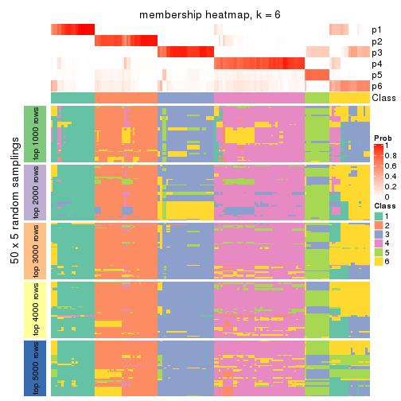
As soon as we have had the classes for columns, we can look for signatures
which are significantly different between classes which can be candidate marks
for certain classes. Following are the heatmaps for signatures.
Signature heatmaps where rows are scaled:
get_signatures(res, k = 2)
get_signatures(res, k = 3)
get_signatures(res, k = 4)
get_signatures(res, k = 5)
get_signatures(res, k = 6)

Signature heatmaps where rows are not scaled:
get_signatures(res, k = 2, scale_rows = FALSE)
get_signatures(res, k = 3, scale_rows = FALSE)
get_signatures(res, k = 4, scale_rows = FALSE)
get_signatures(res, k = 5, scale_rows = FALSE)
get_signatures(res, k = 6, scale_rows = FALSE)
Compare the overlap of signatures from different k:
compare_signatures(res)
get_signature() returns a data frame invisibly. TO get the list of signatures, the function
call should be assigned to a variable explicitly. In following code, if plot argument is set
to FALSE, no heatmap is plotted while only the differential analysis is performed.
# code only for demonstration
tb = get_signature(res, k = ..., plot = FALSE)
An example of the output of tb is:
#> which_row fdr mean_1 mean_2 scaled_mean_1 scaled_mean_2 km
#> 1 38 0.042760348 8.373488 9.131774 -0.5533452 0.5164555 1
#> 2 40 0.018707592 7.106213 8.469186 -0.6173731 0.5762149 1
#> 3 55 0.019134737 10.221463 11.207825 -0.6159697 0.5749050 1
#> 4 59 0.006059896 5.921854 7.869574 -0.6899429 0.6439467 1
#> 5 60 0.018055526 8.928898 10.211722 -0.6204761 0.5791110 1
#> 6 98 0.009384629 15.714769 14.887706 0.6635654 -0.6193277 2
...
The columns in tb are:
which_row: row indices corresponding to the input matrix.fdr: FDR for the differential test. mean_x: The mean value in group x.scaled_mean_x: The mean value in group x after rows are scaled.km: Row groups if k-means clustering is applied to rows.
UMAP plot which shows how samples are separated.
dimension_reduction(res, k = 2, method = "UMAP")
dimension_reduction(res, k = 3, method = "UMAP")
dimension_reduction(res, k = 4, method = "UMAP")
dimension_reduction(res, k = 5, method = "UMAP")
dimension_reduction(res, k = 6, method = "UMAP")
Following heatmap shows how subgroups are split when increasing k:
collect_classes(res)
If matrix rows can be associated to genes, consider to use functional_enrichment(res,
...) to perform function enrichment for the signature genes. See this vignette for more detailed explanations.
SD:skmeans
The object with results only for a single top-value method and a single partition method
can be extracted as:
res = res_list["SD", "skmeans"]
# you can also extract it by
# res = res_list["SD:skmeans"]
A summary of res and all the functions that can be applied to it:
res
#> A 'ConsensusPartition' object with k = 2, 3, 4, 5, 6.
#> On a matrix with 15148 rows and 152 columns.
#> Top rows (1000, 2000, 3000, 4000, 5000) are extracted by 'SD' method.
#> Subgroups are detected by 'skmeans' method.
#> Performed in total 1250 partitions by row resampling.
#> Best k for subgroups seems to be 3.
#>
#> Following methods can be applied to this 'ConsensusPartition' object:
#> [1] "cola_report" "collect_classes" "collect_plots"
#> [4] "collect_stats" "colnames" "compare_signatures"
#> [7] "consensus_heatmap" "dimension_reduction" "functional_enrichment"
#> [10] "get_anno_col" "get_anno" "get_classes"
#> [13] "get_consensus" "get_matrix" "get_membership"
#> [16] "get_param" "get_signatures" "get_stats"
#> [19] "is_best_k" "is_stable_k" "membership_heatmap"
#> [22] "ncol" "nrow" "plot_ecdf"
#> [25] "rownames" "select_partition_number" "show"
#> [28] "suggest_best_k" "test_to_known_factors"
collect_plots() function collects all the plots made from res for all k (number of partitions)
into one single page to provide an easy and fast comparison between different k.
collect_plots(res)

The plots are:
- The first row: a plot of the ECDF (empirical cumulative distribution
function) curves of the consensus matrix for each
k and the heatmap of
predicted classes for each k.
- The second row: heatmaps of the consensus matrix for each
k.
- The third row: heatmaps of the membership matrix for each
k.
- The fouth row: heatmaps of the signatures for each
k.
All the plots in panels can be made by individual functions and they are
plotted later in this section.
select_partition_number() produces several plots showing different
statistics for choosing “optimized” k. There are following statistics:
- ECDF curves of the consensus matrix for each
k;
- 1-PAC. The PAC
score
measures the proportion of the ambiguous subgrouping.
- Mean silhouette score.
- Concordance. The mean probability of fiting the consensus class ids in all
partitions.
- Area increased. Denote \(A_k\) as the area under the ECDF curve for current
k, the area increased is defined as \(A_k - A_{k-1}\).
- Rand index. The percent of pairs of samples that are both in a same cluster
or both are not in a same cluster in the partition of k and k-1.
- Jaccard index. The ratio of pairs of samples are both in a same cluster in
the partition of k and k-1 and the pairs of samples are both in a same
cluster in the partition k or k-1.
The detailed explanations of these statistics can be found in the cola
vignette.
Generally speaking, lower PAC score, higher mean silhouette score or higher
concordance corresponds to better partition. Rand index and Jaccard index
measure how similar the current partition is compared to partition with k-1.
If they are too similar, we won't accept k is better than k-1.
select_partition_number(res)
The numeric values for all these statistics can be obtained by get_stats().
get_stats(res)
#> k 1-PAC mean_silhouette concordance area_increased Rand Jaccard
#> 2 2 0.345 0.608 0.775 0.4891 0.507 0.507
#> 3 3 0.897 0.897 0.959 0.3678 0.666 0.429
#> 4 4 0.900 0.885 0.953 0.1220 0.866 0.624
#> 5 5 0.827 0.730 0.832 0.0563 0.941 0.771
#> 6 6 0.775 0.620 0.732 0.0396 0.908 0.608
suggest_best_k() suggests the best \(k\) based on these statistics. The rules are as follows:
- All \(k\) with Jaccard index larger than 0.95 are removed because increasing
\(k\) does not provide enough extra information. If all \(k\) are removed, it is
marked as no subgroup is detected.
- For all \(k\) with 1-PAC score larger than 0.9, the maximal \(k\) is taken as
the best \(k\), and other \(k\) are marked as optional \(k\).
- If it does not fit the second rule. The \(k\) with the maximal vote of the
highest 1-PAC score, highest mean silhouette, and highest concordance is
taken as the best \(k\).
suggest_best_k(res)
#> [1] 3
Following shows the table of the partitions (You need to click the show/hide
code output link to see it). The membership matrix (columns with name p*)
is inferred by
clue::cl_consensus()
function with the SE method. Basically the value in the membership matrix
represents the probability to belong to a certain group. The finall class
label for an item is determined with the group with highest probability it
belongs to.
In get_classes() function, the entropy is calculated from the membership
matrix and the silhouette score is calculated from the consensus matrix.
show/hide code output
cbind(get_classes(res, k = 2), get_membership(res, k = 2))
#> class entropy silhouette p1 p2
#> SRR1947547 1 0.000 0.649221 1.000 0.000
#> SRR1947546 2 0.000 0.738627 0.000 1.000
#> SRR1947545 1 0.855 0.741748 0.720 0.280
#> SRR1947544 1 0.855 0.741748 0.720 0.280
#> SRR1947542 2 0.000 0.738627 0.000 1.000
#> SRR1947541 1 0.000 0.649221 1.000 0.000
#> SRR1947540 2 0.000 0.738627 0.000 1.000
#> SRR1947539 2 0.997 0.453977 0.468 0.532
#> SRR1947538 2 0.671 0.498844 0.176 0.824
#> SRR1947537 2 0.999 0.438562 0.484 0.516
#> SRR1947536 1 0.118 0.640537 0.984 0.016
#> SRR1947535 2 0.997 0.453977 0.468 0.532
#> SRR1947534 1 0.990 0.554866 0.560 0.440
#> SRR1947533 2 0.000 0.738627 0.000 1.000
#> SRR1947532 1 0.921 0.700560 0.664 0.336
#> SRR1947531 2 0.000 0.738627 0.000 1.000
#> SRR1947530 1 0.000 0.649221 1.000 0.000
#> SRR1947529 2 0.000 0.738627 0.000 1.000
#> SRR1947528 1 0.000 0.649221 1.000 0.000
#> SRR1947527 2 0.000 0.738627 0.000 1.000
#> SRR1947526 2 0.000 0.738627 0.000 1.000
#> SRR1947525 2 0.184 0.716439 0.028 0.972
#> SRR1947524 2 0.997 0.453977 0.468 0.532
#> SRR1947523 1 0.998 0.508068 0.528 0.472
#> SRR1947521 1 0.929 0.000256 0.656 0.344
#> SRR1947520 2 0.000 0.738627 0.000 1.000
#> SRR1947519 1 0.242 0.619680 0.960 0.040
#> SRR1947518 2 0.929 0.011151 0.344 0.656
#> SRR1947517 1 0.430 0.569054 0.912 0.088
#> SRR1947516 2 0.000 0.738627 0.000 1.000
#> SRR1947515 2 0.958 -0.092183 0.380 0.620
#> SRR1947514 2 0.000 0.738627 0.000 1.000
#> SRR1947513 1 0.909 0.713526 0.676 0.324
#> SRR1947512 1 0.855 0.741748 0.720 0.280
#> SRR1947511 2 0.000 0.738627 0.000 1.000
#> SRR1947510 2 0.995 0.463164 0.460 0.540
#> SRR1947572 2 0.987 -0.291798 0.432 0.568
#> SRR1947611 2 0.909 0.569585 0.324 0.676
#> SRR1947509 1 0.118 0.640537 0.984 0.016
#> SRR1947644 2 0.997 0.453977 0.468 0.532
#> SRR1947643 2 0.000 0.738627 0.000 1.000
#> SRR1947642 1 0.430 0.569054 0.912 0.088
#> SRR1947640 1 0.997 0.508439 0.532 0.468
#> SRR1947641 2 0.996 0.458618 0.464 0.536
#> SRR1947639 2 0.242 0.705525 0.040 0.960
#> SRR1947638 1 0.909 0.713526 0.676 0.324
#> SRR1947637 2 0.909 0.569585 0.324 0.676
#> SRR1947636 1 0.311 0.604417 0.944 0.056
#> SRR1947635 2 0.000 0.738627 0.000 1.000
#> SRR1947634 2 0.000 0.738627 0.000 1.000
#> SRR1947633 2 0.997 0.453977 0.468 0.532
#> SRR1947632 2 0.000 0.738627 0.000 1.000
#> SRR1947631 1 0.991 -0.291362 0.556 0.444
#> SRR1947629 2 0.997 0.453977 0.468 0.532
#> SRR1947630 2 0.000 0.738627 0.000 1.000
#> SRR1947627 1 0.118 0.640537 0.984 0.016
#> SRR1947628 2 0.000 0.738627 0.000 1.000
#> SRR1947626 2 0.000 0.738627 0.000 1.000
#> SRR1947625 2 0.991 0.480114 0.444 0.556
#> SRR1947624 2 0.625 0.664306 0.156 0.844
#> SRR1947623 1 0.909 0.713526 0.676 0.324
#> SRR1947622 2 0.000 0.738627 0.000 1.000
#> SRR1947621 2 0.000 0.738627 0.000 1.000
#> SRR1947620 1 0.855 0.741748 0.720 0.280
#> SRR1947619 2 0.999 0.438562 0.484 0.516
#> SRR1947617 2 0.000 0.738627 0.000 1.000
#> SRR1947618 1 0.861 0.740281 0.716 0.284
#> SRR1947616 2 0.680 0.651293 0.180 0.820
#> SRR1947615 1 0.000 0.649221 1.000 0.000
#> SRR1947614 1 0.895 0.104144 0.688 0.312
#> SRR1947613 1 0.866 0.738111 0.712 0.288
#> SRR1947610 2 0.242 0.705525 0.040 0.960
#> SRR1947612 2 0.000 0.738627 0.000 1.000
#> SRR1947609 1 0.909 0.713526 0.676 0.324
#> SRR1947608 2 0.990 0.484092 0.440 0.560
#> SRR1947606 1 0.000 0.649221 1.000 0.000
#> SRR1947607 1 0.913 0.709467 0.672 0.328
#> SRR1947604 1 0.996 0.515369 0.536 0.464
#> SRR1947605 1 0.808 0.732797 0.752 0.248
#> SRR1947603 2 0.000 0.738627 0.000 1.000
#> SRR1947602 1 0.000 0.649221 1.000 0.000
#> SRR1947600 2 0.997 0.453977 0.468 0.532
#> SRR1947601 2 0.000 0.738627 0.000 1.000
#> SRR1947598 2 0.634 0.529838 0.160 0.840
#> SRR1947599 1 0.909 0.713526 0.676 0.324
#> SRR1947597 2 0.000 0.738627 0.000 1.000
#> SRR1947596 1 0.855 0.741748 0.720 0.280
#> SRR1947595 2 0.242 0.705525 0.040 0.960
#> SRR1947594 1 0.855 0.741748 0.720 0.280
#> SRR1947592 2 0.997 0.453977 0.468 0.532
#> SRR1947591 2 0.000 0.738627 0.000 1.000
#> SRR1947590 1 0.855 0.741748 0.720 0.280
#> SRR1947588 1 0.855 0.741748 0.720 0.280
#> SRR1947587 1 0.118 0.639844 0.984 0.016
#> SRR1947586 2 0.000 0.738627 0.000 1.000
#> SRR1947585 2 0.997 0.453977 0.468 0.532
#> SRR1947584 1 0.855 0.741748 0.720 0.280
#> SRR1947583 2 0.278 0.696945 0.048 0.952
#> SRR1947582 1 0.861 0.740281 0.716 0.284
#> SRR1947580 2 0.000 0.738627 0.000 1.000
#> SRR1947581 1 0.855 0.741748 0.720 0.280
#> SRR1947576 2 0.909 0.569585 0.324 0.676
#> SRR1947575 2 0.909 0.569585 0.324 0.676
#> SRR1947579 2 0.997 0.453977 0.468 0.532
#> SRR1947578 2 0.000 0.738627 0.000 1.000
#> SRR1947573 2 0.990 0.484092 0.440 0.560
#> SRR1947574 1 0.997 0.508439 0.532 0.468
#> SRR1947571 2 0.881 0.170205 0.300 0.700
#> SRR1947577 1 0.861 0.740281 0.716 0.284
#> SRR1947570 1 0.000 0.649221 1.000 0.000
#> SRR1947569 2 0.997 0.453977 0.468 0.532
#> SRR1947566 2 0.000 0.738627 0.000 1.000
#> SRR1947567 2 0.000 0.738627 0.000 1.000
#> SRR1947568 2 0.358 0.672857 0.068 0.932
#> SRR1947564 2 0.000 0.738627 0.000 1.000
#> SRR1947563 2 0.913 0.567293 0.328 0.672
#> SRR1947562 2 0.242 0.705525 0.040 0.960
#> SRR1947565 2 0.998 0.446404 0.476 0.524
#> SRR1947559 2 0.000 0.738627 0.000 1.000
#> SRR1947560 2 0.909 0.569585 0.324 0.676
#> SRR1947561 2 0.000 0.738627 0.000 1.000
#> SRR1947557 1 0.855 0.741748 0.720 0.280
#> SRR1947558 2 0.997 0.453977 0.468 0.532
#> SRR1947556 1 0.855 0.741748 0.720 0.280
#> SRR1947553 2 0.204 0.712954 0.032 0.968
#> SRR1947554 1 0.909 0.713526 0.676 0.324
#> SRR1947555 2 0.781 0.621132 0.232 0.768
#> SRR1947550 2 0.242 0.705525 0.040 0.960
#> SRR1947552 1 0.909 0.713526 0.676 0.324
#> SRR1947549 2 0.990 0.484092 0.440 0.560
#> SRR1947551 2 0.990 0.484092 0.440 0.560
#> SRR1947548 2 0.671 0.498844 0.176 0.824
#> SRR1947506 1 0.000 0.649221 1.000 0.000
#> SRR1947507 1 0.855 0.741748 0.720 0.280
#> SRR1947504 1 0.876 0.733286 0.704 0.296
#> SRR1947503 1 0.909 0.713526 0.676 0.324
#> SRR1947502 2 0.000 0.738627 0.000 1.000
#> SRR1947501 2 0.000 0.738627 0.000 1.000
#> SRR1947499 1 0.000 0.649221 1.000 0.000
#> SRR1947498 1 0.866 0.174098 0.712 0.288
#> SRR1947508 1 0.118 0.640537 0.984 0.016
#> SRR1947505 1 1.000 0.485906 0.512 0.488
#> SRR1947497 2 0.000 0.738627 0.000 1.000
#> SRR1947496 1 0.855 0.741748 0.720 0.280
#> SRR1947495 2 0.000 0.738627 0.000 1.000
#> SRR1947494 1 0.975 0.604314 0.592 0.408
#> SRR1947493 1 0.000 0.649221 1.000 0.000
#> SRR1947492 1 0.861 0.740281 0.716 0.284
#> SRR1947500 2 0.999 -0.424559 0.480 0.520
#> SRR1947491 1 0.997 0.508439 0.532 0.468
#> SRR1947490 1 0.895 0.722470 0.688 0.312
#> SRR1947489 1 0.000 0.649221 1.000 0.000
show/hide code output
cbind(get_classes(res, k = 3), get_membership(res, k = 3))
#> class entropy silhouette p1 p2 p3
#> SRR1947547 3 0.611 0.3526 0.396 0.000 0.604
#> SRR1947546 2 0.000 0.9750 0.000 1.000 0.000
#> SRR1947545 1 0.000 0.9108 1.000 0.000 0.000
#> SRR1947544 1 0.000 0.9108 1.000 0.000 0.000
#> SRR1947542 2 0.000 0.9750 0.000 1.000 0.000
#> SRR1947541 3 0.000 0.9811 0.000 0.000 1.000
#> SRR1947540 2 0.000 0.9750 0.000 1.000 0.000
#> SRR1947539 3 0.000 0.9811 0.000 0.000 1.000
#> SRR1947538 1 0.630 0.1231 0.520 0.480 0.000
#> SRR1947537 3 0.000 0.9811 0.000 0.000 1.000
#> SRR1947536 3 0.000 0.9811 0.000 0.000 1.000
#> SRR1947535 3 0.000 0.9811 0.000 0.000 1.000
#> SRR1947534 1 0.000 0.9108 1.000 0.000 0.000
#> SRR1947533 2 0.000 0.9750 0.000 1.000 0.000
#> SRR1947532 1 0.000 0.9108 1.000 0.000 0.000
#> SRR1947531 2 0.000 0.9750 0.000 1.000 0.000
#> SRR1947530 1 0.129 0.8862 0.968 0.000 0.032
#> SRR1947529 2 0.000 0.9750 0.000 1.000 0.000
#> SRR1947528 3 0.000 0.9811 0.000 0.000 1.000
#> SRR1947527 2 0.000 0.9750 0.000 1.000 0.000
#> SRR1947526 2 0.000 0.9750 0.000 1.000 0.000
#> SRR1947525 2 0.186 0.9284 0.052 0.948 0.000
#> SRR1947524 3 0.000 0.9811 0.000 0.000 1.000
#> SRR1947523 1 0.621 0.3035 0.572 0.428 0.000
#> SRR1947521 3 0.000 0.9811 0.000 0.000 1.000
#> SRR1947520 2 0.000 0.9750 0.000 1.000 0.000
#> SRR1947519 3 0.000 0.9811 0.000 0.000 1.000
#> SRR1947518 1 0.613 0.3480 0.600 0.400 0.000
#> SRR1947517 3 0.000 0.9811 0.000 0.000 1.000
#> SRR1947516 2 0.000 0.9750 0.000 1.000 0.000
#> SRR1947515 1 0.164 0.8798 0.956 0.044 0.000
#> SRR1947514 2 0.000 0.9750 0.000 1.000 0.000
#> SRR1947513 1 0.000 0.9108 1.000 0.000 0.000
#> SRR1947512 1 0.000 0.9108 1.000 0.000 0.000
#> SRR1947511 2 0.000 0.9750 0.000 1.000 0.000
#> SRR1947510 3 0.000 0.9811 0.000 0.000 1.000
#> SRR1947572 1 0.418 0.7495 0.828 0.172 0.000
#> SRR1947611 3 0.000 0.9811 0.000 0.000 1.000
#> SRR1947509 3 0.000 0.9811 0.000 0.000 1.000
#> SRR1947644 3 0.000 0.9811 0.000 0.000 1.000
#> SRR1947643 2 0.000 0.9750 0.000 1.000 0.000
#> SRR1947642 3 0.000 0.9811 0.000 0.000 1.000
#> SRR1947640 1 0.375 0.7862 0.856 0.144 0.000
#> SRR1947641 3 0.000 0.9811 0.000 0.000 1.000
#> SRR1947639 2 0.455 0.7342 0.200 0.800 0.000
#> SRR1947638 1 0.000 0.9108 1.000 0.000 0.000
#> SRR1947637 3 0.000 0.9811 0.000 0.000 1.000
#> SRR1947636 3 0.000 0.9811 0.000 0.000 1.000
#> SRR1947635 2 0.000 0.9750 0.000 1.000 0.000
#> SRR1947634 2 0.000 0.9750 0.000 1.000 0.000
#> SRR1947633 3 0.000 0.9811 0.000 0.000 1.000
#> SRR1947632 2 0.000 0.9750 0.000 1.000 0.000
#> SRR1947631 3 0.000 0.9811 0.000 0.000 1.000
#> SRR1947629 3 0.000 0.9811 0.000 0.000 1.000
#> SRR1947630 2 0.000 0.9750 0.000 1.000 0.000
#> SRR1947627 3 0.000 0.9811 0.000 0.000 1.000
#> SRR1947628 2 0.000 0.9750 0.000 1.000 0.000
#> SRR1947626 2 0.000 0.9750 0.000 1.000 0.000
#> SRR1947625 3 0.000 0.9811 0.000 0.000 1.000
#> SRR1947624 2 0.000 0.9750 0.000 1.000 0.000
#> SRR1947623 1 0.000 0.9108 1.000 0.000 0.000
#> SRR1947622 2 0.000 0.9750 0.000 1.000 0.000
#> SRR1947621 2 0.000 0.9750 0.000 1.000 0.000
#> SRR1947620 1 0.000 0.9108 1.000 0.000 0.000
#> SRR1947619 3 0.000 0.9811 0.000 0.000 1.000
#> SRR1947617 2 0.000 0.9750 0.000 1.000 0.000
#> SRR1947618 1 0.000 0.9108 1.000 0.000 0.000
#> SRR1947616 2 0.000 0.9750 0.000 1.000 0.000
#> SRR1947615 3 0.375 0.8295 0.144 0.000 0.856
#> SRR1947614 3 0.000 0.9811 0.000 0.000 1.000
#> SRR1947613 1 0.000 0.9108 1.000 0.000 0.000
#> SRR1947610 2 0.000 0.9750 0.000 1.000 0.000
#> SRR1947612 2 0.000 0.9750 0.000 1.000 0.000
#> SRR1947609 1 0.000 0.9108 1.000 0.000 0.000
#> SRR1947608 3 0.000 0.9811 0.000 0.000 1.000
#> SRR1947606 3 0.000 0.9811 0.000 0.000 1.000
#> SRR1947607 1 0.000 0.9108 1.000 0.000 0.000
#> SRR1947604 1 0.000 0.9108 1.000 0.000 0.000
#> SRR1947605 1 0.000 0.9108 1.000 0.000 0.000
#> SRR1947603 2 0.000 0.9750 0.000 1.000 0.000
#> SRR1947602 1 0.418 0.7393 0.828 0.000 0.172
#> SRR1947600 3 0.000 0.9811 0.000 0.000 1.000
#> SRR1947601 2 0.000 0.9750 0.000 1.000 0.000
#> SRR1947598 1 0.630 0.1362 0.524 0.476 0.000
#> SRR1947599 1 0.000 0.9108 1.000 0.000 0.000
#> SRR1947597 2 0.000 0.9750 0.000 1.000 0.000
#> SRR1947596 1 0.000 0.9108 1.000 0.000 0.000
#> SRR1947595 2 0.369 0.8228 0.140 0.860 0.000
#> SRR1947594 1 0.000 0.9108 1.000 0.000 0.000
#> SRR1947592 3 0.000 0.9811 0.000 0.000 1.000
#> SRR1947591 2 0.000 0.9750 0.000 1.000 0.000
#> SRR1947590 1 0.000 0.9108 1.000 0.000 0.000
#> SRR1947588 1 0.000 0.9108 1.000 0.000 0.000
#> SRR1947587 3 0.000 0.9811 0.000 0.000 1.000
#> SRR1947586 2 0.000 0.9750 0.000 1.000 0.000
#> SRR1947585 3 0.000 0.9811 0.000 0.000 1.000
#> SRR1947584 1 0.000 0.9108 1.000 0.000 0.000
#> SRR1947583 2 0.129 0.9477 0.032 0.968 0.000
#> SRR1947582 1 0.000 0.9108 1.000 0.000 0.000
#> SRR1947580 2 0.000 0.9750 0.000 1.000 0.000
#> SRR1947581 1 0.000 0.9108 1.000 0.000 0.000
#> SRR1947576 3 0.000 0.9811 0.000 0.000 1.000
#> SRR1947575 3 0.000 0.9811 0.000 0.000 1.000
#> SRR1947579 3 0.000 0.9811 0.000 0.000 1.000
#> SRR1947578 2 0.000 0.9750 0.000 1.000 0.000
#> SRR1947573 3 0.000 0.9811 0.000 0.000 1.000
#> SRR1947574 1 0.000 0.9108 1.000 0.000 0.000
#> SRR1947571 1 0.630 0.1231 0.520 0.480 0.000
#> SRR1947577 1 0.000 0.9108 1.000 0.000 0.000
#> SRR1947570 1 0.175 0.8727 0.952 0.000 0.048
#> SRR1947569 3 0.000 0.9811 0.000 0.000 1.000
#> SRR1947566 2 0.000 0.9750 0.000 1.000 0.000
#> SRR1947567 2 0.000 0.9750 0.000 1.000 0.000
#> SRR1947568 2 0.455 0.7342 0.200 0.800 0.000
#> SRR1947564 2 0.000 0.9750 0.000 1.000 0.000
#> SRR1947563 3 0.000 0.9811 0.000 0.000 1.000
#> SRR1947562 2 0.129 0.9477 0.032 0.968 0.000
#> SRR1947565 3 0.000 0.9811 0.000 0.000 1.000
#> SRR1947559 2 0.000 0.9750 0.000 1.000 0.000
#> SRR1947560 3 0.000 0.9811 0.000 0.000 1.000
#> SRR1947561 2 0.000 0.9750 0.000 1.000 0.000
#> SRR1947557 1 0.000 0.9108 1.000 0.000 0.000
#> SRR1947558 3 0.000 0.9811 0.000 0.000 1.000
#> SRR1947556 1 0.000 0.9108 1.000 0.000 0.000
#> SRR1947553 2 0.000 0.9750 0.000 1.000 0.000
#> SRR1947554 1 0.000 0.9108 1.000 0.000 0.000
#> SRR1947555 2 0.000 0.9750 0.000 1.000 0.000
#> SRR1947550 2 0.175 0.9324 0.048 0.952 0.000
#> SRR1947552 1 0.000 0.9108 1.000 0.000 0.000
#> SRR1947549 3 0.000 0.9811 0.000 0.000 1.000
#> SRR1947551 3 0.000 0.9811 0.000 0.000 1.000
#> SRR1947548 1 0.630 0.1231 0.520 0.480 0.000
#> SRR1947506 1 0.497 0.6459 0.764 0.000 0.236
#> SRR1947507 1 0.000 0.9108 1.000 0.000 0.000
#> SRR1947504 1 0.000 0.9108 1.000 0.000 0.000
#> SRR1947503 1 0.000 0.9108 1.000 0.000 0.000
#> SRR1947502 2 0.000 0.9750 0.000 1.000 0.000
#> SRR1947501 2 0.000 0.9750 0.000 1.000 0.000
#> SRR1947499 1 0.418 0.7393 0.828 0.000 0.172
#> SRR1947498 3 0.000 0.9811 0.000 0.000 1.000
#> SRR1947508 3 0.375 0.8295 0.144 0.000 0.856
#> SRR1947505 2 0.629 0.0216 0.464 0.536 0.000
#> SRR1947497 2 0.000 0.9750 0.000 1.000 0.000
#> SRR1947496 1 0.000 0.9108 1.000 0.000 0.000
#> SRR1947495 2 0.000 0.9750 0.000 1.000 0.000
#> SRR1947494 1 0.000 0.9108 1.000 0.000 0.000
#> SRR1947493 1 0.000 0.9108 1.000 0.000 0.000
#> SRR1947492 1 0.000 0.9108 1.000 0.000 0.000
#> SRR1947500 2 0.000 0.9750 0.000 1.000 0.000
#> SRR1947491 1 0.626 0.2487 0.552 0.448 0.000
#> SRR1947490 1 0.000 0.9108 1.000 0.000 0.000
#> SRR1947489 3 0.382 0.8244 0.148 0.000 0.852
show/hide code output
cbind(get_classes(res, k = 4), get_membership(res, k = 4))
#> class entropy silhouette p1 p2 p3 p4
#> SRR1947547 1 0.4961 0.146 0.552 0.000 0.448 0.000
#> SRR1947546 4 0.3837 0.713 0.000 0.224 0.000 0.776
#> SRR1947545 1 0.0000 0.925 1.000 0.000 0.000 0.000
#> SRR1947544 1 0.0000 0.925 1.000 0.000 0.000 0.000
#> SRR1947542 4 0.0000 0.913 0.000 0.000 0.000 1.000
#> SRR1947541 3 0.0000 0.977 0.000 0.000 1.000 0.000
#> SRR1947540 2 0.4277 0.586 0.000 0.720 0.000 0.280
#> SRR1947539 3 0.0000 0.977 0.000 0.000 1.000 0.000
#> SRR1947538 4 0.0000 0.913 0.000 0.000 0.000 1.000
#> SRR1947537 3 0.0000 0.977 0.000 0.000 1.000 0.000
#> SRR1947536 3 0.3649 0.749 0.204 0.000 0.796 0.000
#> SRR1947535 3 0.0000 0.977 0.000 0.000 1.000 0.000
#> SRR1947534 1 0.0000 0.925 1.000 0.000 0.000 0.000
#> SRR1947533 2 0.0000 0.965 0.000 1.000 0.000 0.000
#> SRR1947532 4 0.0000 0.913 0.000 0.000 0.000 1.000
#> SRR1947531 2 0.4277 0.586 0.000 0.720 0.000 0.280
#> SRR1947530 1 0.0000 0.925 1.000 0.000 0.000 0.000
#> SRR1947529 2 0.0188 0.962 0.000 0.996 0.000 0.004
#> SRR1947528 3 0.0000 0.977 0.000 0.000 1.000 0.000
#> SRR1947527 2 0.0000 0.965 0.000 1.000 0.000 0.000
#> SRR1947526 2 0.0000 0.965 0.000 1.000 0.000 0.000
#> SRR1947525 4 0.3764 0.722 0.000 0.216 0.000 0.784
#> SRR1947524 3 0.0000 0.977 0.000 0.000 1.000 0.000
#> SRR1947523 4 0.0000 0.913 0.000 0.000 0.000 1.000
#> SRR1947521 3 0.0000 0.977 0.000 0.000 1.000 0.000
#> SRR1947520 2 0.0000 0.965 0.000 1.000 0.000 0.000
#> SRR1947519 3 0.0000 0.977 0.000 0.000 1.000 0.000
#> SRR1947518 4 0.0000 0.913 0.000 0.000 0.000 1.000
#> SRR1947517 3 0.0000 0.977 0.000 0.000 1.000 0.000
#> SRR1947516 2 0.0000 0.965 0.000 1.000 0.000 0.000
#> SRR1947515 4 0.0000 0.913 0.000 0.000 0.000 1.000
#> SRR1947514 2 0.0000 0.965 0.000 1.000 0.000 0.000
#> SRR1947513 1 0.0000 0.925 1.000 0.000 0.000 0.000
#> SRR1947512 1 0.0000 0.925 1.000 0.000 0.000 0.000
#> SRR1947511 2 0.0000 0.965 0.000 1.000 0.000 0.000
#> SRR1947510 3 0.0000 0.977 0.000 0.000 1.000 0.000
#> SRR1947572 4 0.4624 0.402 0.340 0.000 0.000 0.660
#> SRR1947611 3 0.0000 0.977 0.000 0.000 1.000 0.000
#> SRR1947509 3 0.3726 0.737 0.212 0.000 0.788 0.000
#> SRR1947644 3 0.0000 0.977 0.000 0.000 1.000 0.000
#> SRR1947643 2 0.0000 0.965 0.000 1.000 0.000 0.000
#> SRR1947642 3 0.0000 0.977 0.000 0.000 1.000 0.000
#> SRR1947640 4 0.0592 0.904 0.016 0.000 0.000 0.984
#> SRR1947641 3 0.0000 0.977 0.000 0.000 1.000 0.000
#> SRR1947639 4 0.2921 0.809 0.000 0.140 0.000 0.860
#> SRR1947638 1 0.2011 0.852 0.920 0.000 0.000 0.080
#> SRR1947637 3 0.0000 0.977 0.000 0.000 1.000 0.000
#> SRR1947636 3 0.0000 0.977 0.000 0.000 1.000 0.000
#> SRR1947635 4 0.0000 0.913 0.000 0.000 0.000 1.000
#> SRR1947634 2 0.0000 0.965 0.000 1.000 0.000 0.000
#> SRR1947633 3 0.0000 0.977 0.000 0.000 1.000 0.000
#> SRR1947632 4 0.0000 0.913 0.000 0.000 0.000 1.000
#> SRR1947631 3 0.0000 0.977 0.000 0.000 1.000 0.000
#> SRR1947629 3 0.0000 0.977 0.000 0.000 1.000 0.000
#> SRR1947630 2 0.0000 0.965 0.000 1.000 0.000 0.000
#> SRR1947627 3 0.0000 0.977 0.000 0.000 1.000 0.000
#> SRR1947628 4 0.0000 0.913 0.000 0.000 0.000 1.000
#> SRR1947626 2 0.0000 0.965 0.000 1.000 0.000 0.000
#> SRR1947625 3 0.0000 0.977 0.000 0.000 1.000 0.000
#> SRR1947624 2 0.0000 0.965 0.000 1.000 0.000 0.000
#> SRR1947623 1 0.0000 0.925 1.000 0.000 0.000 0.000
#> SRR1947622 4 0.4985 0.160 0.000 0.468 0.000 0.532
#> SRR1947621 2 0.0000 0.965 0.000 1.000 0.000 0.000
#> SRR1947620 1 0.0000 0.925 1.000 0.000 0.000 0.000
#> SRR1947619 3 0.0000 0.977 0.000 0.000 1.000 0.000
#> SRR1947617 2 0.0000 0.965 0.000 1.000 0.000 0.000
#> SRR1947618 1 0.0000 0.925 1.000 0.000 0.000 0.000
#> SRR1947616 2 0.0000 0.965 0.000 1.000 0.000 0.000
#> SRR1947615 3 0.3219 0.800 0.164 0.000 0.836 0.000
#> SRR1947614 3 0.0000 0.977 0.000 0.000 1.000 0.000
#> SRR1947613 1 0.0000 0.925 1.000 0.000 0.000 0.000
#> SRR1947610 4 0.4746 0.447 0.000 0.368 0.000 0.632
#> SRR1947612 2 0.0000 0.965 0.000 1.000 0.000 0.000
#> SRR1947609 1 0.4989 0.160 0.528 0.000 0.000 0.472
#> SRR1947608 3 0.0000 0.977 0.000 0.000 1.000 0.000
#> SRR1947606 3 0.0000 0.977 0.000 0.000 1.000 0.000
#> SRR1947607 1 0.0000 0.925 1.000 0.000 0.000 0.000
#> SRR1947604 4 0.0000 0.913 0.000 0.000 0.000 1.000
#> SRR1947605 1 0.0000 0.925 1.000 0.000 0.000 0.000
#> SRR1947603 2 0.0188 0.962 0.000 0.996 0.000 0.004
#> SRR1947602 1 0.0000 0.925 1.000 0.000 0.000 0.000
#> SRR1947600 3 0.0000 0.977 0.000 0.000 1.000 0.000
#> SRR1947601 2 0.0000 0.965 0.000 1.000 0.000 0.000
#> SRR1947598 4 0.0000 0.913 0.000 0.000 0.000 1.000
#> SRR1947599 4 0.2408 0.813 0.104 0.000 0.000 0.896
#> SRR1947597 2 0.0188 0.962 0.000 0.996 0.000 0.004
#> SRR1947596 1 0.4981 0.191 0.536 0.000 0.000 0.464
#> SRR1947595 4 0.3311 0.780 0.000 0.172 0.000 0.828
#> SRR1947594 1 0.0000 0.925 1.000 0.000 0.000 0.000
#> SRR1947592 3 0.0000 0.977 0.000 0.000 1.000 0.000
#> SRR1947591 2 0.0000 0.965 0.000 1.000 0.000 0.000
#> SRR1947590 1 0.4981 0.191 0.536 0.000 0.000 0.464
#> SRR1947588 1 0.0000 0.925 1.000 0.000 0.000 0.000
#> SRR1947587 3 0.0000 0.977 0.000 0.000 1.000 0.000
#> SRR1947586 2 0.0000 0.965 0.000 1.000 0.000 0.000
#> SRR1947585 3 0.0000 0.977 0.000 0.000 1.000 0.000
#> SRR1947584 1 0.0000 0.925 1.000 0.000 0.000 0.000
#> SRR1947583 4 0.0817 0.903 0.000 0.024 0.000 0.976
#> SRR1947582 1 0.0000 0.925 1.000 0.000 0.000 0.000
#> SRR1947580 2 0.0000 0.965 0.000 1.000 0.000 0.000
#> SRR1947581 1 0.0000 0.925 1.000 0.000 0.000 0.000
#> SRR1947576 3 0.0000 0.977 0.000 0.000 1.000 0.000
#> SRR1947575 3 0.0000 0.977 0.000 0.000 1.000 0.000
#> SRR1947579 3 0.0000 0.977 0.000 0.000 1.000 0.000
#> SRR1947578 2 0.4382 0.560 0.000 0.704 0.000 0.296
#> SRR1947573 3 0.0000 0.977 0.000 0.000 1.000 0.000
#> SRR1947574 1 0.4866 0.306 0.596 0.000 0.000 0.404
#> SRR1947571 4 0.0000 0.913 0.000 0.000 0.000 1.000
#> SRR1947577 1 0.0000 0.925 1.000 0.000 0.000 0.000
#> SRR1947570 1 0.0000 0.925 1.000 0.000 0.000 0.000
#> SRR1947569 3 0.0000 0.977 0.000 0.000 1.000 0.000
#> SRR1947566 2 0.0000 0.965 0.000 1.000 0.000 0.000
#> SRR1947567 4 0.0000 0.913 0.000 0.000 0.000 1.000
#> SRR1947568 2 0.3610 0.733 0.200 0.800 0.000 0.000
#> SRR1947564 2 0.0000 0.965 0.000 1.000 0.000 0.000
#> SRR1947563 3 0.0000 0.977 0.000 0.000 1.000 0.000
#> SRR1947562 4 0.0000 0.913 0.000 0.000 0.000 1.000
#> SRR1947565 3 0.0000 0.977 0.000 0.000 1.000 0.000
#> SRR1947559 2 0.0000 0.965 0.000 1.000 0.000 0.000
#> SRR1947560 3 0.0000 0.977 0.000 0.000 1.000 0.000
#> SRR1947561 2 0.0000 0.965 0.000 1.000 0.000 0.000
#> SRR1947557 1 0.0000 0.925 1.000 0.000 0.000 0.000
#> SRR1947558 3 0.0000 0.977 0.000 0.000 1.000 0.000
#> SRR1947556 1 0.0000 0.925 1.000 0.000 0.000 0.000
#> SRR1947553 4 0.4804 0.408 0.000 0.384 0.000 0.616
#> SRR1947554 1 0.0000 0.925 1.000 0.000 0.000 0.000
#> SRR1947555 2 0.0000 0.965 0.000 1.000 0.000 0.000
#> SRR1947550 4 0.0000 0.913 0.000 0.000 0.000 1.000
#> SRR1947552 4 0.0188 0.911 0.004 0.000 0.000 0.996
#> SRR1947549 3 0.0000 0.977 0.000 0.000 1.000 0.000
#> SRR1947551 3 0.0000 0.977 0.000 0.000 1.000 0.000
#> SRR1947548 4 0.0000 0.913 0.000 0.000 0.000 1.000
#> SRR1947506 1 0.0336 0.918 0.992 0.000 0.008 0.000
#> SRR1947507 1 0.0000 0.925 1.000 0.000 0.000 0.000
#> SRR1947504 1 0.0000 0.925 1.000 0.000 0.000 0.000
#> SRR1947503 1 0.3528 0.718 0.808 0.000 0.000 0.192
#> SRR1947502 2 0.0000 0.965 0.000 1.000 0.000 0.000
#> SRR1947501 4 0.0000 0.913 0.000 0.000 0.000 1.000
#> SRR1947499 1 0.0000 0.925 1.000 0.000 0.000 0.000
#> SRR1947498 3 0.0000 0.977 0.000 0.000 1.000 0.000
#> SRR1947508 3 0.3801 0.725 0.220 0.000 0.780 0.000
#> SRR1947505 4 0.0000 0.913 0.000 0.000 0.000 1.000
#> SRR1947497 2 0.0000 0.965 0.000 1.000 0.000 0.000
#> SRR1947496 1 0.0000 0.925 1.000 0.000 0.000 0.000
#> SRR1947495 2 0.0000 0.965 0.000 1.000 0.000 0.000
#> SRR1947494 4 0.0000 0.913 0.000 0.000 0.000 1.000
#> SRR1947493 1 0.0000 0.925 1.000 0.000 0.000 0.000
#> SRR1947492 1 0.0000 0.925 1.000 0.000 0.000 0.000
#> SRR1947500 4 0.0817 0.903 0.000 0.024 0.000 0.976
#> SRR1947491 4 0.0817 0.899 0.024 0.000 0.000 0.976
#> SRR1947490 1 0.0000 0.925 1.000 0.000 0.000 0.000
#> SRR1947489 3 0.3528 0.760 0.192 0.000 0.808 0.000
show/hide code output
cbind(get_classes(res, k = 5), get_membership(res, k = 5))
#> class entropy silhouette p1 p2 p3 p4 p5
#> SRR1947547 5 0.4546 0.616 0.008 0.000 0.460 0.000 0.532
#> SRR1947546 4 0.3491 0.737 0.000 0.228 0.000 0.768 0.004
#> SRR1947545 1 0.1043 0.876 0.960 0.000 0.000 0.000 0.040
#> SRR1947544 1 0.0000 0.899 1.000 0.000 0.000 0.000 0.000
#> SRR1947542 4 0.0162 0.885 0.000 0.000 0.000 0.996 0.004
#> SRR1947541 5 0.4302 0.606 0.000 0.000 0.480 0.000 0.520
#> SRR1947540 2 0.4165 0.476 0.000 0.672 0.000 0.320 0.008
#> SRR1947539 3 0.4268 0.572 0.000 0.000 0.556 0.000 0.444
#> SRR1947538 4 0.0404 0.884 0.000 0.000 0.000 0.988 0.012
#> SRR1947537 3 0.1043 0.637 0.000 0.000 0.960 0.000 0.040
#> SRR1947536 3 0.4450 -0.584 0.004 0.000 0.508 0.000 0.488
#> SRR1947535 3 0.0404 0.669 0.000 0.000 0.988 0.000 0.012
#> SRR1947534 1 0.0162 0.897 0.996 0.004 0.000 0.000 0.000
#> SRR1947533 2 0.0000 0.951 0.000 1.000 0.000 0.000 0.000
#> SRR1947532 4 0.0404 0.884 0.000 0.000 0.000 0.988 0.012
#> SRR1947531 2 0.4165 0.476 0.000 0.672 0.000 0.320 0.008
#> SRR1947530 5 0.4302 0.196 0.480 0.000 0.000 0.000 0.520
#> SRR1947529 2 0.1041 0.928 0.000 0.964 0.000 0.032 0.004
#> SRR1947528 5 0.4302 0.606 0.000 0.000 0.480 0.000 0.520
#> SRR1947527 2 0.0000 0.951 0.000 1.000 0.000 0.000 0.000
#> SRR1947526 2 0.0000 0.951 0.000 1.000 0.000 0.000 0.000
#> SRR1947525 4 0.3210 0.754 0.000 0.212 0.000 0.788 0.000
#> SRR1947524 3 0.0162 0.674 0.000 0.000 0.996 0.000 0.004
#> SRR1947523 4 0.0510 0.884 0.000 0.000 0.000 0.984 0.016
#> SRR1947521 3 0.4273 0.571 0.000 0.000 0.552 0.000 0.448
#> SRR1947520 2 0.0162 0.950 0.000 0.996 0.000 0.000 0.004
#> SRR1947519 5 0.4294 0.609 0.000 0.000 0.468 0.000 0.532
#> SRR1947518 4 0.0566 0.883 0.004 0.000 0.000 0.984 0.012
#> SRR1947517 3 0.4273 0.571 0.000 0.000 0.552 0.000 0.448
#> SRR1947516 2 0.0000 0.951 0.000 1.000 0.000 0.000 0.000
#> SRR1947515 4 0.0404 0.884 0.000 0.000 0.000 0.988 0.012
#> SRR1947514 2 0.0000 0.951 0.000 1.000 0.000 0.000 0.000
#> SRR1947513 1 0.0000 0.899 1.000 0.000 0.000 0.000 0.000
#> SRR1947512 1 0.0000 0.899 1.000 0.000 0.000 0.000 0.000
#> SRR1947511 2 0.0000 0.951 0.000 1.000 0.000 0.000 0.000
#> SRR1947510 3 0.4273 0.571 0.000 0.000 0.552 0.000 0.448
#> SRR1947572 1 0.4653 0.188 0.516 0.000 0.000 0.472 0.012
#> SRR1947611 3 0.4273 0.571 0.000 0.000 0.552 0.000 0.448
#> SRR1947509 5 0.1608 0.206 0.000 0.000 0.072 0.000 0.928
#> SRR1947644 3 0.4273 0.571 0.000 0.000 0.552 0.000 0.448
#> SRR1947643 2 0.0162 0.950 0.000 0.996 0.000 0.000 0.004
#> SRR1947642 3 0.4268 -0.480 0.000 0.000 0.556 0.000 0.444
#> SRR1947640 4 0.3074 0.724 0.196 0.000 0.000 0.804 0.000
#> SRR1947641 3 0.0404 0.669 0.000 0.000 0.988 0.000 0.012
#> SRR1947639 4 0.2852 0.795 0.000 0.172 0.000 0.828 0.000
#> SRR1947638 1 0.0404 0.892 0.988 0.000 0.000 0.012 0.000
#> SRR1947637 3 0.4273 0.571 0.000 0.000 0.552 0.000 0.448
#> SRR1947636 3 0.1121 0.632 0.000 0.000 0.956 0.000 0.044
#> SRR1947635 4 0.0162 0.885 0.000 0.000 0.000 0.996 0.004
#> SRR1947634 2 0.0000 0.951 0.000 1.000 0.000 0.000 0.000
#> SRR1947633 3 0.4262 0.573 0.000 0.000 0.560 0.000 0.440
#> SRR1947632 4 0.0162 0.885 0.000 0.000 0.000 0.996 0.004
#> SRR1947631 3 0.1608 0.595 0.000 0.000 0.928 0.000 0.072
#> SRR1947629 3 0.0162 0.674 0.000 0.000 0.996 0.000 0.004
#> SRR1947630 2 0.0880 0.930 0.000 0.968 0.000 0.000 0.032
#> SRR1947627 5 0.4302 0.606 0.000 0.000 0.480 0.000 0.520
#> SRR1947628 4 0.0290 0.884 0.000 0.000 0.000 0.992 0.008
#> SRR1947626 2 0.0000 0.951 0.000 1.000 0.000 0.000 0.000
#> SRR1947625 3 0.0404 0.669 0.000 0.000 0.988 0.000 0.012
#> SRR1947624 2 0.0880 0.931 0.000 0.968 0.000 0.000 0.032
#> SRR1947623 1 0.0000 0.899 1.000 0.000 0.000 0.000 0.000
#> SRR1947622 4 0.4425 0.250 0.000 0.452 0.000 0.544 0.004
#> SRR1947621 2 0.0000 0.951 0.000 1.000 0.000 0.000 0.000
#> SRR1947620 1 0.1043 0.876 0.960 0.000 0.000 0.000 0.040
#> SRR1947619 3 0.1043 0.637 0.000 0.000 0.960 0.000 0.040
#> SRR1947617 2 0.0000 0.951 0.000 1.000 0.000 0.000 0.000
#> SRR1947618 1 0.1043 0.876 0.960 0.000 0.000 0.000 0.040
#> SRR1947616 2 0.0693 0.942 0.000 0.980 0.000 0.012 0.008
#> SRR1947615 5 0.4437 0.614 0.004 0.000 0.464 0.000 0.532
#> SRR1947614 3 0.4273 0.571 0.000 0.000 0.552 0.000 0.448
#> SRR1947613 1 0.0000 0.899 1.000 0.000 0.000 0.000 0.000
#> SRR1947610 4 0.3884 0.641 0.000 0.288 0.000 0.708 0.004
#> SRR1947612 2 0.0000 0.951 0.000 1.000 0.000 0.000 0.000
#> SRR1947609 1 0.3942 0.620 0.728 0.000 0.000 0.260 0.012
#> SRR1947608 3 0.0404 0.669 0.000 0.000 0.988 0.000 0.012
#> SRR1947606 5 0.4302 0.606 0.000 0.000 0.480 0.000 0.520
#> SRR1947607 1 0.0000 0.899 1.000 0.000 0.000 0.000 0.000
#> SRR1947604 4 0.1012 0.875 0.020 0.000 0.000 0.968 0.012
#> SRR1947605 1 0.1043 0.876 0.960 0.000 0.000 0.000 0.040
#> SRR1947603 2 0.1041 0.928 0.000 0.964 0.000 0.032 0.004
#> SRR1947602 5 0.5685 0.418 0.396 0.000 0.084 0.000 0.520
#> SRR1947600 3 0.0162 0.674 0.000 0.000 0.996 0.000 0.004
#> SRR1947601 2 0.0162 0.950 0.000 0.996 0.000 0.000 0.004
#> SRR1947598 4 0.0609 0.884 0.000 0.000 0.000 0.980 0.020
#> SRR1947599 4 0.1914 0.842 0.060 0.000 0.000 0.924 0.016
#> SRR1947597 2 0.0963 0.928 0.000 0.964 0.000 0.036 0.000
#> SRR1947596 1 0.4632 0.295 0.540 0.000 0.000 0.448 0.012
#> SRR1947595 4 0.4540 0.624 0.016 0.300 0.000 0.676 0.008
#> SRR1947594 1 0.0000 0.899 1.000 0.000 0.000 0.000 0.000
#> SRR1947592 3 0.0000 0.672 0.000 0.000 1.000 0.000 0.000
#> SRR1947591 2 0.0000 0.951 0.000 1.000 0.000 0.000 0.000
#> SRR1947590 1 0.4641 0.274 0.532 0.000 0.000 0.456 0.012
#> SRR1947588 1 0.0000 0.899 1.000 0.000 0.000 0.000 0.000
#> SRR1947587 3 0.4262 -0.471 0.000 0.000 0.560 0.000 0.440
#> SRR1947586 2 0.0000 0.951 0.000 1.000 0.000 0.000 0.000
#> SRR1947585 3 0.0162 0.674 0.000 0.000 0.996 0.000 0.004
#> SRR1947584 1 0.0000 0.899 1.000 0.000 0.000 0.000 0.000
#> SRR1947583 4 0.3074 0.773 0.000 0.196 0.000 0.804 0.000
#> SRR1947582 1 0.1043 0.876 0.960 0.000 0.000 0.000 0.040
#> SRR1947580 2 0.0290 0.949 0.000 0.992 0.000 0.000 0.008
#> SRR1947581 1 0.0000 0.899 1.000 0.000 0.000 0.000 0.000
#> SRR1947576 3 0.4273 0.571 0.000 0.000 0.552 0.000 0.448
#> SRR1947575 3 0.0404 0.669 0.000 0.000 0.988 0.000 0.012
#> SRR1947579 3 0.4273 0.571 0.000 0.000 0.552 0.000 0.448
#> SRR1947578 2 0.4415 0.327 0.000 0.604 0.000 0.388 0.008
#> SRR1947573 3 0.0162 0.674 0.000 0.000 0.996 0.000 0.004
#> SRR1947574 1 0.4067 0.519 0.692 0.000 0.000 0.300 0.008
#> SRR1947571 4 0.0404 0.884 0.000 0.000 0.000 0.988 0.012
#> SRR1947577 1 0.1043 0.876 0.960 0.000 0.000 0.000 0.040
#> SRR1947570 5 0.6342 0.596 0.272 0.000 0.208 0.000 0.520
#> SRR1947569 3 0.0162 0.674 0.000 0.000 0.996 0.000 0.004
#> SRR1947566 2 0.0162 0.950 0.000 0.996 0.000 0.000 0.004
#> SRR1947567 4 0.1124 0.875 0.000 0.036 0.000 0.960 0.004
#> SRR1947568 2 0.3461 0.687 0.224 0.772 0.000 0.004 0.000
#> SRR1947564 2 0.0000 0.951 0.000 1.000 0.000 0.000 0.000
#> SRR1947563 3 0.0404 0.669 0.000 0.000 0.988 0.000 0.012
#> SRR1947562 4 0.0000 0.885 0.000 0.000 0.000 1.000 0.000
#> SRR1947565 3 0.1043 0.637 0.000 0.000 0.960 0.000 0.040
#> SRR1947559 2 0.0162 0.950 0.000 0.996 0.000 0.004 0.000
#> SRR1947560 3 0.4273 0.571 0.000 0.000 0.552 0.000 0.448
#> SRR1947561 2 0.0000 0.951 0.000 1.000 0.000 0.000 0.000
#> SRR1947557 1 0.0000 0.899 1.000 0.000 0.000 0.000 0.000
#> SRR1947558 3 0.0404 0.669 0.000 0.000 0.988 0.000 0.012
#> SRR1947556 1 0.0000 0.899 1.000 0.000 0.000 0.000 0.000
#> SRR1947553 4 0.3949 0.619 0.000 0.300 0.000 0.696 0.004
#> SRR1947554 1 0.0000 0.899 1.000 0.000 0.000 0.000 0.000
#> SRR1947555 2 0.0162 0.950 0.000 0.996 0.000 0.000 0.004
#> SRR1947550 4 0.0794 0.879 0.000 0.028 0.000 0.972 0.000
#> SRR1947552 4 0.1012 0.875 0.020 0.000 0.000 0.968 0.012
#> SRR1947549 3 0.0000 0.672 0.000 0.000 1.000 0.000 0.000
#> SRR1947551 3 0.4273 0.571 0.000 0.000 0.552 0.000 0.448
#> SRR1947548 4 0.0404 0.884 0.000 0.000 0.000 0.988 0.012
#> SRR1947506 5 0.6164 0.531 0.328 0.000 0.152 0.000 0.520
#> SRR1947507 1 0.0000 0.899 1.000 0.000 0.000 0.000 0.000
#> SRR1947504 1 0.0000 0.899 1.000 0.000 0.000 0.000 0.000
#> SRR1947503 1 0.2707 0.759 0.860 0.000 0.000 0.132 0.008
#> SRR1947502 2 0.0000 0.951 0.000 1.000 0.000 0.000 0.000
#> SRR1947501 4 0.0162 0.885 0.000 0.000 0.000 0.996 0.004
#> SRR1947499 5 0.5519 0.384 0.412 0.000 0.068 0.000 0.520
#> SRR1947498 3 0.0162 0.674 0.000 0.000 0.996 0.000 0.004
#> SRR1947508 5 0.4437 0.614 0.004 0.000 0.464 0.000 0.532
#> SRR1947505 4 0.0404 0.885 0.000 0.000 0.000 0.988 0.012
#> SRR1947497 2 0.0000 0.951 0.000 1.000 0.000 0.000 0.000
#> SRR1947496 1 0.0000 0.899 1.000 0.000 0.000 0.000 0.000
#> SRR1947495 2 0.0000 0.951 0.000 1.000 0.000 0.000 0.000
#> SRR1947494 4 0.0807 0.879 0.012 0.000 0.000 0.976 0.012
#> SRR1947493 5 0.4302 0.196 0.480 0.000 0.000 0.000 0.520
#> SRR1947492 1 0.0000 0.899 1.000 0.000 0.000 0.000 0.000
#> SRR1947500 4 0.3074 0.773 0.000 0.196 0.000 0.804 0.000
#> SRR1947491 4 0.3266 0.719 0.200 0.000 0.000 0.796 0.004
#> SRR1947490 1 0.0000 0.899 1.000 0.000 0.000 0.000 0.000
#> SRR1947489 5 0.4546 0.616 0.008 0.000 0.460 0.000 0.532
show/hide code output
cbind(get_classes(res, k = 6), get_membership(res, k = 6))
#> class entropy silhouette p1 p2 p3 p4 p5 p6
#> SRR1947547 6 0.6080 0.253 0.008 0.000 0.216 0.000 0.312 0.464
#> SRR1947546 6 0.5927 -0.263 0.000 0.212 0.000 0.376 0.000 0.412
#> SRR1947545 1 0.2752 0.852 0.856 0.000 0.000 0.000 0.036 0.108
#> SRR1947544 1 0.0000 0.932 1.000 0.000 0.000 0.000 0.000 0.000
#> SRR1947542 4 0.4703 0.423 0.000 0.048 0.000 0.544 0.000 0.408
#> SRR1947541 6 0.6021 0.197 0.000 0.000 0.264 0.000 0.312 0.424
#> SRR1947540 6 0.5721 -0.103 0.000 0.344 0.000 0.176 0.000 0.480
#> SRR1947539 5 0.3833 0.739 0.000 0.000 0.444 0.000 0.556 0.000
#> SRR1947538 4 0.1141 0.635 0.000 0.000 0.000 0.948 0.000 0.052
#> SRR1947537 3 0.2214 0.766 0.000 0.000 0.888 0.000 0.016 0.096
#> SRR1947536 3 0.6412 -0.132 0.012 0.000 0.348 0.000 0.304 0.336
#> SRR1947535 3 0.0146 0.833 0.000 0.000 0.996 0.000 0.000 0.004
#> SRR1947534 1 0.0000 0.932 1.000 0.000 0.000 0.000 0.000 0.000
#> SRR1947533 2 0.1007 0.876 0.000 0.956 0.000 0.000 0.000 0.044
#> SRR1947532 4 0.0000 0.642 0.000 0.000 0.000 1.000 0.000 0.000
#> SRR1947531 6 0.5600 -0.107 0.000 0.304 0.000 0.172 0.000 0.524
#> SRR1947530 6 0.5887 0.309 0.224 0.000 0.000 0.000 0.312 0.464
#> SRR1947529 2 0.4851 0.312 0.000 0.536 0.000 0.060 0.000 0.404
#> SRR1947528 6 0.6021 0.197 0.000 0.000 0.264 0.000 0.312 0.424
#> SRR1947527 2 0.1007 0.876 0.000 0.956 0.000 0.000 0.000 0.044
#> SRR1947526 2 0.1007 0.876 0.000 0.956 0.000 0.000 0.000 0.044
#> SRR1947525 4 0.5552 0.405 0.000 0.196 0.000 0.552 0.000 0.252
#> SRR1947524 3 0.0458 0.831 0.000 0.000 0.984 0.000 0.016 0.000
#> SRR1947523 4 0.1075 0.639 0.000 0.000 0.000 0.952 0.000 0.048
#> SRR1947521 5 0.3464 0.918 0.000 0.000 0.312 0.000 0.688 0.000
#> SRR1947520 2 0.1007 0.876 0.000 0.956 0.000 0.000 0.000 0.044
#> SRR1947519 3 0.5694 0.202 0.000 0.000 0.504 0.000 0.312 0.184
#> SRR1947518 4 0.1285 0.635 0.004 0.000 0.000 0.944 0.000 0.052
#> SRR1947517 5 0.3464 0.918 0.000 0.000 0.312 0.000 0.688 0.000
#> SRR1947516 2 0.0000 0.882 0.000 1.000 0.000 0.000 0.000 0.000
#> SRR1947515 4 0.0000 0.642 0.000 0.000 0.000 1.000 0.000 0.000
#> SRR1947514 2 0.0000 0.882 0.000 1.000 0.000 0.000 0.000 0.000
#> SRR1947513 1 0.1204 0.907 0.944 0.000 0.000 0.000 0.000 0.056
#> SRR1947512 1 0.0000 0.932 1.000 0.000 0.000 0.000 0.000 0.000
#> SRR1947511 2 0.1007 0.876 0.000 0.956 0.000 0.000 0.000 0.044
#> SRR1947510 5 0.3464 0.918 0.000 0.000 0.312 0.000 0.688 0.000
#> SRR1947572 4 0.3923 0.150 0.416 0.000 0.000 0.580 0.000 0.004
#> SRR1947611 5 0.3464 0.918 0.000 0.000 0.312 0.000 0.688 0.000
#> SRR1947509 5 0.2538 0.321 0.000 0.000 0.016 0.000 0.860 0.124
#> SRR1947644 5 0.3464 0.918 0.000 0.000 0.312 0.000 0.688 0.000
#> SRR1947643 2 0.1007 0.876 0.000 0.956 0.000 0.000 0.000 0.044
#> SRR1947642 3 0.4989 0.440 0.000 0.000 0.628 0.000 0.252 0.120
#> SRR1947640 4 0.5503 0.421 0.132 0.000 0.000 0.484 0.000 0.384
#> SRR1947641 3 0.0146 0.833 0.000 0.000 0.996 0.000 0.000 0.004
#> SRR1947639 4 0.5522 0.411 0.000 0.188 0.000 0.556 0.000 0.256
#> SRR1947638 1 0.1950 0.875 0.912 0.000 0.000 0.064 0.000 0.024
#> SRR1947637 5 0.3464 0.918 0.000 0.000 0.312 0.000 0.688 0.000
#> SRR1947636 3 0.2214 0.766 0.000 0.000 0.888 0.000 0.016 0.096
#> SRR1947635 4 0.4681 0.416 0.000 0.044 0.000 0.524 0.000 0.432
#> SRR1947634 2 0.1007 0.876 0.000 0.956 0.000 0.000 0.000 0.044
#> SRR1947633 5 0.3851 0.709 0.000 0.000 0.460 0.000 0.540 0.000
#> SRR1947632 4 0.4763 0.418 0.000 0.052 0.000 0.536 0.000 0.412
#> SRR1947631 3 0.1411 0.791 0.000 0.000 0.936 0.000 0.060 0.004
#> SRR1947629 3 0.0458 0.831 0.000 0.000 0.984 0.000 0.016 0.000
#> SRR1947630 2 0.3190 0.754 0.000 0.820 0.000 0.000 0.136 0.044
#> SRR1947627 6 0.6137 0.202 0.004 0.000 0.260 0.000 0.312 0.424
#> SRR1947628 6 0.4705 -0.445 0.000 0.044 0.000 0.476 0.000 0.480
#> SRR1947626 2 0.0000 0.882 0.000 1.000 0.000 0.000 0.000 0.000
#> SRR1947625 3 0.0146 0.833 0.000 0.000 0.996 0.000 0.000 0.004
#> SRR1947624 2 0.3190 0.754 0.000 0.820 0.000 0.000 0.136 0.044
#> SRR1947623 1 0.0000 0.932 1.000 0.000 0.000 0.000 0.000 0.000
#> SRR1947622 6 0.6043 -0.197 0.000 0.268 0.000 0.320 0.000 0.412
#> SRR1947621 2 0.0000 0.882 0.000 1.000 0.000 0.000 0.000 0.000
#> SRR1947620 1 0.2798 0.851 0.852 0.000 0.000 0.000 0.036 0.112
#> SRR1947619 3 0.2214 0.766 0.000 0.000 0.888 0.000 0.016 0.096
#> SRR1947617 2 0.0000 0.882 0.000 1.000 0.000 0.000 0.000 0.000
#> SRR1947618 1 0.2798 0.851 0.852 0.000 0.000 0.000 0.036 0.112
#> SRR1947616 2 0.3823 0.375 0.000 0.564 0.000 0.000 0.000 0.436
#> SRR1947615 6 0.5887 0.244 0.000 0.000 0.224 0.000 0.312 0.464
#> SRR1947614 5 0.3464 0.918 0.000 0.000 0.312 0.000 0.688 0.000
#> SRR1947613 1 0.0000 0.932 1.000 0.000 0.000 0.000 0.000 0.000
#> SRR1947610 6 0.5873 -0.254 0.000 0.208 0.000 0.340 0.000 0.452
#> SRR1947612 2 0.0000 0.882 0.000 1.000 0.000 0.000 0.000 0.000
#> SRR1947609 4 0.4968 0.146 0.368 0.000 0.000 0.556 0.000 0.076
#> SRR1947608 3 0.0146 0.833 0.000 0.000 0.996 0.000 0.000 0.004
#> SRR1947606 6 0.6041 0.183 0.000 0.000 0.272 0.000 0.312 0.416
#> SRR1947607 1 0.0000 0.932 1.000 0.000 0.000 0.000 0.000 0.000
#> SRR1947604 4 0.1168 0.635 0.028 0.000 0.000 0.956 0.000 0.016
#> SRR1947605 1 0.2752 0.852 0.856 0.000 0.000 0.000 0.036 0.108
#> SRR1947603 2 0.4851 0.312 0.000 0.536 0.000 0.060 0.000 0.404
#> SRR1947602 6 0.6313 0.342 0.200 0.000 0.024 0.000 0.312 0.464
#> SRR1947600 3 0.0458 0.831 0.000 0.000 0.984 0.000 0.016 0.000
#> SRR1947601 2 0.0000 0.882 0.000 1.000 0.000 0.000 0.000 0.000
#> SRR1947598 4 0.1387 0.635 0.000 0.000 0.000 0.932 0.000 0.068
#> SRR1947599 4 0.2962 0.579 0.068 0.000 0.000 0.848 0.000 0.084
#> SRR1947597 2 0.4851 0.312 0.000 0.536 0.000 0.060 0.000 0.404
#> SRR1947596 4 0.4497 0.266 0.328 0.000 0.000 0.624 0.000 0.048
#> SRR1947595 4 0.6437 0.316 0.012 0.252 0.000 0.408 0.004 0.324
#> SRR1947594 1 0.0000 0.932 1.000 0.000 0.000 0.000 0.000 0.000
#> SRR1947592 3 0.0363 0.832 0.000 0.000 0.988 0.000 0.012 0.000
#> SRR1947591 2 0.0000 0.882 0.000 1.000 0.000 0.000 0.000 0.000
#> SRR1947590 4 0.4497 0.266 0.328 0.000 0.000 0.624 0.000 0.048
#> SRR1947588 1 0.0000 0.932 1.000 0.000 0.000 0.000 0.000 0.000
#> SRR1947587 3 0.4812 0.506 0.000 0.000 0.640 0.000 0.264 0.096
#> SRR1947586 2 0.1007 0.876 0.000 0.956 0.000 0.000 0.000 0.044
#> SRR1947585 3 0.0458 0.831 0.000 0.000 0.984 0.000 0.016 0.000
#> SRR1947584 1 0.0000 0.932 1.000 0.000 0.000 0.000 0.000 0.000
#> SRR1947583 4 0.5508 0.330 0.000 0.128 0.000 0.444 0.000 0.428
#> SRR1947582 1 0.2798 0.851 0.852 0.000 0.000 0.000 0.036 0.112
#> SRR1947580 2 0.1814 0.850 0.000 0.900 0.000 0.000 0.000 0.100
#> SRR1947581 1 0.0000 0.932 1.000 0.000 0.000 0.000 0.000 0.000
#> SRR1947576 5 0.3464 0.918 0.000 0.000 0.312 0.000 0.688 0.000
#> SRR1947575 3 0.0146 0.833 0.000 0.000 0.996 0.000 0.000 0.004
#> SRR1947579 5 0.3464 0.918 0.000 0.000 0.312 0.000 0.688 0.000
#> SRR1947578 6 0.5750 -0.112 0.000 0.336 0.000 0.184 0.000 0.480
#> SRR1947573 3 0.0458 0.831 0.000 0.000 0.984 0.000 0.016 0.000
#> SRR1947574 1 0.4168 0.559 0.696 0.000 0.000 0.256 0.000 0.048
#> SRR1947571 4 0.0000 0.642 0.000 0.000 0.000 1.000 0.000 0.000
#> SRR1947577 1 0.2798 0.851 0.852 0.000 0.000 0.000 0.036 0.112
#> SRR1947570 6 0.6614 0.347 0.164 0.000 0.060 0.000 0.312 0.464
#> SRR1947569 3 0.0458 0.831 0.000 0.000 0.984 0.000 0.016 0.000
#> SRR1947566 2 0.0000 0.882 0.000 1.000 0.000 0.000 0.000 0.000
#> SRR1947567 6 0.5562 -0.351 0.000 0.136 0.000 0.432 0.000 0.432
#> SRR1947568 2 0.3646 0.535 0.292 0.700 0.000 0.004 0.000 0.004
#> SRR1947564 2 0.0000 0.882 0.000 1.000 0.000 0.000 0.000 0.000
#> SRR1947563 3 0.0146 0.833 0.000 0.000 0.996 0.000 0.000 0.004
#> SRR1947562 4 0.3743 0.548 0.000 0.024 0.000 0.724 0.000 0.252
#> SRR1947565 3 0.2214 0.766 0.000 0.000 0.888 0.000 0.016 0.096
#> SRR1947559 2 0.2135 0.774 0.000 0.872 0.000 0.000 0.000 0.128
#> SRR1947560 5 0.3464 0.918 0.000 0.000 0.312 0.000 0.688 0.000
#> SRR1947561 2 0.0000 0.882 0.000 1.000 0.000 0.000 0.000 0.000
#> SRR1947557 1 0.0000 0.932 1.000 0.000 0.000 0.000 0.000 0.000
#> SRR1947558 3 0.0146 0.833 0.000 0.000 0.996 0.000 0.000 0.004
#> SRR1947556 1 0.0458 0.922 0.984 0.000 0.000 0.016 0.000 0.000
#> SRR1947553 6 0.5894 -0.243 0.000 0.216 0.000 0.332 0.000 0.452
#> SRR1947554 1 0.0000 0.932 1.000 0.000 0.000 0.000 0.000 0.000
#> SRR1947555 2 0.0000 0.882 0.000 1.000 0.000 0.000 0.000 0.000
#> SRR1947550 4 0.5399 0.412 0.000 0.128 0.000 0.528 0.000 0.344
#> SRR1947552 4 0.2629 0.596 0.060 0.000 0.000 0.872 0.000 0.068
#> SRR1947549 3 0.0363 0.832 0.000 0.000 0.988 0.000 0.012 0.000
#> SRR1947551 5 0.3464 0.918 0.000 0.000 0.312 0.000 0.688 0.000
#> SRR1947548 4 0.0000 0.642 0.000 0.000 0.000 1.000 0.000 0.000
#> SRR1947506 6 0.6741 0.331 0.128 0.000 0.096 0.000 0.312 0.464
#> SRR1947507 1 0.0000 0.932 1.000 0.000 0.000 0.000 0.000 0.000
#> SRR1947504 1 0.0000 0.932 1.000 0.000 0.000 0.000 0.000 0.000
#> SRR1947503 1 0.4230 0.431 0.612 0.000 0.000 0.364 0.000 0.024
#> SRR1947502 2 0.0000 0.882 0.000 1.000 0.000 0.000 0.000 0.000
#> SRR1947501 4 0.4814 0.414 0.000 0.056 0.000 0.532 0.000 0.412
#> SRR1947499 6 0.6209 0.332 0.208 0.000 0.016 0.000 0.312 0.464
#> SRR1947498 3 0.0458 0.831 0.000 0.000 0.984 0.000 0.016 0.000
#> SRR1947508 6 0.6293 0.222 0.012 0.000 0.252 0.000 0.312 0.424
#> SRR1947505 4 0.3592 0.533 0.000 0.000 0.000 0.656 0.000 0.344
#> SRR1947497 2 0.1007 0.876 0.000 0.956 0.000 0.000 0.000 0.044
#> SRR1947496 1 0.0000 0.932 1.000 0.000 0.000 0.000 0.000 0.000
#> SRR1947495 2 0.1007 0.876 0.000 0.956 0.000 0.000 0.000 0.044
#> SRR1947494 4 0.1408 0.634 0.020 0.000 0.000 0.944 0.000 0.036
#> SRR1947493 6 0.5887 0.309 0.224 0.000 0.000 0.000 0.312 0.464
#> SRR1947492 1 0.0000 0.932 1.000 0.000 0.000 0.000 0.000 0.000
#> SRR1947500 6 0.5508 -0.316 0.000 0.132 0.000 0.388 0.000 0.480
#> SRR1947491 6 0.5718 -0.384 0.164 0.000 0.000 0.396 0.000 0.440
#> SRR1947490 1 0.0000 0.932 1.000 0.000 0.000 0.000 0.000 0.000
#> SRR1947489 6 0.5887 0.244 0.000 0.000 0.224 0.000 0.312 0.464
Heatmaps for the consensus matrix. It visualizes the probability of two
samples to be in a same group.
consensus_heatmap(res, k = 2)
consensus_heatmap(res, k = 3)
consensus_heatmap(res, k = 4)
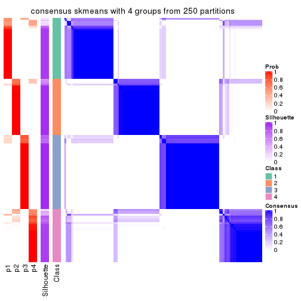
consensus_heatmap(res, k = 5)
consensus_heatmap(res, k = 6)
Heatmaps for the membership of samples in all partitions to see how consistent they are:
membership_heatmap(res, k = 2)
membership_heatmap(res, k = 3)
membership_heatmap(res, k = 4)
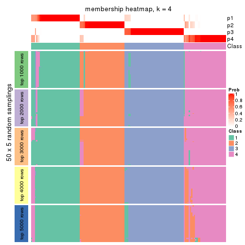
membership_heatmap(res, k = 5)
membership_heatmap(res, k = 6)
As soon as we have had the classes for columns, we can look for signatures
which are significantly different between classes which can be candidate marks
for certain classes. Following are the heatmaps for signatures.
Signature heatmaps where rows are scaled:
get_signatures(res, k = 2)
get_signatures(res, k = 3)
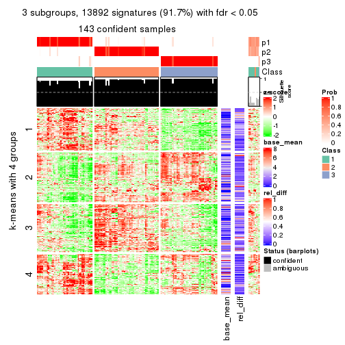
get_signatures(res, k = 4)
get_signatures(res, k = 5)
get_signatures(res, k = 6)
Signature heatmaps where rows are not scaled:
get_signatures(res, k = 2, scale_rows = FALSE)
get_signatures(res, k = 3, scale_rows = FALSE)
get_signatures(res, k = 4, scale_rows = FALSE)
get_signatures(res, k = 5, scale_rows = FALSE)
get_signatures(res, k = 6, scale_rows = FALSE)
Compare the overlap of signatures from different k:
compare_signatures(res)
get_signature() returns a data frame invisibly. TO get the list of signatures, the function
call should be assigned to a variable explicitly. In following code, if plot argument is set
to FALSE, no heatmap is plotted while only the differential analysis is performed.
# code only for demonstration
tb = get_signature(res, k = ..., plot = FALSE)
An example of the output of tb is:
#> which_row fdr mean_1 mean_2 scaled_mean_1 scaled_mean_2 km
#> 1 38 0.042760348 8.373488 9.131774 -0.5533452 0.5164555 1
#> 2 40 0.018707592 7.106213 8.469186 -0.6173731 0.5762149 1
#> 3 55 0.019134737 10.221463 11.207825 -0.6159697 0.5749050 1
#> 4 59 0.006059896 5.921854 7.869574 -0.6899429 0.6439467 1
#> 5 60 0.018055526 8.928898 10.211722 -0.6204761 0.5791110 1
#> 6 98 0.009384629 15.714769 14.887706 0.6635654 -0.6193277 2
...
The columns in tb are:
which_row: row indices corresponding to the input matrix.fdr: FDR for the differential test. mean_x: The mean value in group x.scaled_mean_x: The mean value in group x after rows are scaled.km: Row groups if k-means clustering is applied to rows.
UMAP plot which shows how samples are separated.
dimension_reduction(res, k = 2, method = "UMAP")
dimension_reduction(res, k = 3, method = "UMAP")
dimension_reduction(res, k = 4, method = "UMAP")
dimension_reduction(res, k = 5, method = "UMAP")
dimension_reduction(res, k = 6, method = "UMAP")
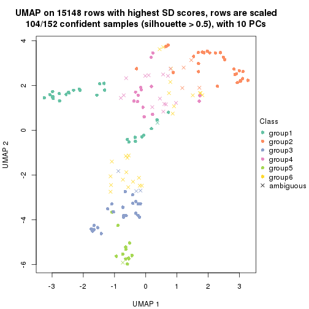
Following heatmap shows how subgroups are split when increasing k:
collect_classes(res)
If matrix rows can be associated to genes, consider to use functional_enrichment(res,
...) to perform function enrichment for the signature genes. See this vignette for more detailed explanations.
SD:pam*
The object with results only for a single top-value method and a single partition method
can be extracted as:
res = res_list["SD", "pam"]
# you can also extract it by
# res = res_list["SD:pam"]
A summary of res and all the functions that can be applied to it:
res
#> A 'ConsensusPartition' object with k = 2, 3, 4, 5, 6.
#> On a matrix with 15148 rows and 152 columns.
#> Top rows (1000, 2000, 3000, 4000, 5000) are extracted by 'SD' method.
#> Subgroups are detected by 'pam' method.
#> Performed in total 1250 partitions by row resampling.
#> Best k for subgroups seems to be 6.
#>
#> Following methods can be applied to this 'ConsensusPartition' object:
#> [1] "cola_report" "collect_classes" "collect_plots"
#> [4] "collect_stats" "colnames" "compare_signatures"
#> [7] "consensus_heatmap" "dimension_reduction" "functional_enrichment"
#> [10] "get_anno_col" "get_anno" "get_classes"
#> [13] "get_consensus" "get_matrix" "get_membership"
#> [16] "get_param" "get_signatures" "get_stats"
#> [19] "is_best_k" "is_stable_k" "membership_heatmap"
#> [22] "ncol" "nrow" "plot_ecdf"
#> [25] "rownames" "select_partition_number" "show"
#> [28] "suggest_best_k" "test_to_known_factors"
collect_plots() function collects all the plots made from res for all k (number of partitions)
into one single page to provide an easy and fast comparison between different k.
collect_plots(res)
The plots are:
- The first row: a plot of the ECDF (empirical cumulative distribution
function) curves of the consensus matrix for each
k and the heatmap of
predicted classes for each k.
- The second row: heatmaps of the consensus matrix for each
k.
- The third row: heatmaps of the membership matrix for each
k.
- The fouth row: heatmaps of the signatures for each
k.
All the plots in panels can be made by individual functions and they are
plotted later in this section.
select_partition_number() produces several plots showing different
statistics for choosing “optimized” k. There are following statistics:
- ECDF curves of the consensus matrix for each
k;
- 1-PAC. The PAC
score
measures the proportion of the ambiguous subgrouping.
- Mean silhouette score.
- Concordance. The mean probability of fiting the consensus class ids in all
partitions.
- Area increased. Denote \(A_k\) as the area under the ECDF curve for current
k, the area increased is defined as \(A_k - A_{k-1}\).
- Rand index. The percent of pairs of samples that are both in a same cluster
or both are not in a same cluster in the partition of k and k-1.
- Jaccard index. The ratio of pairs of samples are both in a same cluster in
the partition of k and k-1 and the pairs of samples are both in a same
cluster in the partition k or k-1.
The detailed explanations of these statistics can be found in the cola
vignette.
Generally speaking, lower PAC score, higher mean silhouette score or higher
concordance corresponds to better partition. Rand index and Jaccard index
measure how similar the current partition is compared to partition with k-1.
If they are too similar, we won't accept k is better than k-1.
select_partition_number(res)
The numeric values for all these statistics can be obtained by get_stats().
get_stats(res)
#> k 1-PAC mean_silhouette concordance area_increased Rand Jaccard
#> 2 2 0.874 0.899 0.956 0.5013 0.497 0.497
#> 3 3 0.940 0.943 0.976 0.2335 0.825 0.670
#> 4 4 0.807 0.836 0.878 0.1372 0.892 0.719
#> 5 5 0.960 0.913 0.952 0.0899 0.942 0.795
#> 6 6 0.912 0.794 0.911 0.0692 0.903 0.616
suggest_best_k() suggests the best \(k\) based on these statistics. The rules are as follows:
- All \(k\) with Jaccard index larger than 0.95 are removed because increasing
\(k\) does not provide enough extra information. If all \(k\) are removed, it is
marked as no subgroup is detected.
- For all \(k\) with 1-PAC score larger than 0.9, the maximal \(k\) is taken as
the best \(k\), and other \(k\) are marked as optional \(k\).
- If it does not fit the second rule. The \(k\) with the maximal vote of the
highest 1-PAC score, highest mean silhouette, and highest concordance is
taken as the best \(k\).
suggest_best_k(res)
#> [1] 6
#> attr(,"optional")
#> [1] 3 5
There is also optional best \(k\) = 3 5 that is worth to check.
Following shows the table of the partitions (You need to click the show/hide
code output link to see it). The membership matrix (columns with name p*)
is inferred by
clue::cl_consensus()
function with the SE method. Basically the value in the membership matrix
represents the probability to belong to a certain group. The finall class
label for an item is determined with the group with highest probability it
belongs to.
In get_classes() function, the entropy is calculated from the membership
matrix and the silhouette score is calculated from the consensus matrix.
show/hide code output
cbind(get_classes(res, k = 2), get_membership(res, k = 2))
#> class entropy silhouette p1 p2
#> SRR1947547 1 0.0000 0.9390 1.000 0.000
#> SRR1947546 2 0.0000 0.9655 0.000 1.000
#> SRR1947545 1 0.3114 0.9184 0.944 0.056
#> SRR1947544 1 0.2948 0.9206 0.948 0.052
#> SRR1947542 2 0.0000 0.9655 0.000 1.000
#> SRR1947541 1 0.0000 0.9390 1.000 0.000
#> SRR1947540 2 0.0672 0.9624 0.008 0.992
#> SRR1947539 1 0.0000 0.9390 1.000 0.000
#> SRR1947538 2 0.0000 0.9655 0.000 1.000
#> SRR1947537 1 0.0000 0.9390 1.000 0.000
#> SRR1947536 1 0.0000 0.9390 1.000 0.000
#> SRR1947535 1 0.0000 0.9390 1.000 0.000
#> SRR1947534 2 0.0000 0.9655 0.000 1.000
#> SRR1947533 2 0.0672 0.9624 0.008 0.992
#> SRR1947532 2 0.0000 0.9655 0.000 1.000
#> SRR1947531 2 0.0672 0.9624 0.008 0.992
#> SRR1947530 1 0.0000 0.9390 1.000 0.000
#> SRR1947529 2 0.0672 0.9624 0.008 0.992
#> SRR1947528 1 0.0000 0.9390 1.000 0.000
#> SRR1947527 2 0.0000 0.9655 0.000 1.000
#> SRR1947526 2 0.0376 0.9642 0.004 0.996
#> SRR1947525 2 0.0000 0.9655 0.000 1.000
#> SRR1947524 1 0.0000 0.9390 1.000 0.000
#> SRR1947523 2 0.0000 0.9655 0.000 1.000
#> SRR1947521 1 0.0000 0.9390 1.000 0.000
#> SRR1947520 2 0.0672 0.9624 0.008 0.992
#> SRR1947519 1 0.0000 0.9390 1.000 0.000
#> SRR1947518 2 0.0000 0.9655 0.000 1.000
#> SRR1947517 1 0.0000 0.9390 1.000 0.000
#> SRR1947516 2 0.0000 0.9655 0.000 1.000
#> SRR1947515 2 0.0000 0.9655 0.000 1.000
#> SRR1947514 2 0.0000 0.9655 0.000 1.000
#> SRR1947513 1 0.7602 0.7449 0.780 0.220
#> SRR1947512 1 0.3114 0.9184 0.944 0.056
#> SRR1947511 2 0.0000 0.9655 0.000 1.000
#> SRR1947510 1 0.0000 0.9390 1.000 0.000
#> SRR1947572 2 0.0000 0.9655 0.000 1.000
#> SRR1947611 1 0.7528 0.7189 0.784 0.216
#> SRR1947509 1 0.0000 0.9390 1.000 0.000
#> SRR1947644 1 0.0000 0.9390 1.000 0.000
#> SRR1947643 2 0.0672 0.9624 0.008 0.992
#> SRR1947642 1 0.0000 0.9390 1.000 0.000
#> SRR1947640 2 0.0000 0.9655 0.000 1.000
#> SRR1947641 1 0.1414 0.9308 0.980 0.020
#> SRR1947639 2 0.0000 0.9655 0.000 1.000
#> SRR1947638 2 0.0376 0.9633 0.004 0.996
#> SRR1947637 1 0.9710 0.3364 0.600 0.400
#> SRR1947636 1 0.0000 0.9390 1.000 0.000
#> SRR1947635 2 0.0672 0.9624 0.008 0.992
#> SRR1947634 2 0.0376 0.9642 0.004 0.996
#> SRR1947633 1 0.0000 0.9390 1.000 0.000
#> SRR1947632 2 0.0000 0.9655 0.000 1.000
#> SRR1947631 1 0.3584 0.8987 0.932 0.068
#> SRR1947629 1 0.0000 0.9390 1.000 0.000
#> SRR1947630 2 0.0938 0.9596 0.012 0.988
#> SRR1947627 1 0.0000 0.9390 1.000 0.000
#> SRR1947628 2 0.0000 0.9655 0.000 1.000
#> SRR1947626 2 0.0000 0.9655 0.000 1.000
#> SRR1947625 1 0.9963 0.1423 0.536 0.464
#> SRR1947624 2 0.1414 0.9534 0.020 0.980
#> SRR1947623 1 0.3431 0.9134 0.936 0.064
#> SRR1947622 2 0.0000 0.9655 0.000 1.000
#> SRR1947621 2 0.0000 0.9655 0.000 1.000
#> SRR1947620 1 0.7219 0.7717 0.800 0.200
#> SRR1947619 1 0.0000 0.9390 1.000 0.000
#> SRR1947617 2 0.0000 0.9655 0.000 1.000
#> SRR1947618 1 0.7745 0.7339 0.772 0.228
#> SRR1947616 2 0.2778 0.9266 0.048 0.952
#> SRR1947615 1 0.0000 0.9390 1.000 0.000
#> SRR1947614 1 0.0000 0.9390 1.000 0.000
#> SRR1947613 1 0.3114 0.9184 0.944 0.056
#> SRR1947610 2 0.0000 0.9655 0.000 1.000
#> SRR1947612 2 0.0000 0.9655 0.000 1.000
#> SRR1947609 2 1.0000 -0.0755 0.496 0.504
#> SRR1947608 1 0.4161 0.8813 0.916 0.084
#> SRR1947606 1 0.0000 0.9390 1.000 0.000
#> SRR1947607 1 0.9522 0.4651 0.628 0.372
#> SRR1947604 2 0.0000 0.9655 0.000 1.000
#> SRR1947605 1 0.2948 0.9206 0.948 0.052
#> SRR1947603 2 0.0672 0.9624 0.008 0.992
#> SRR1947602 1 0.0000 0.9390 1.000 0.000
#> SRR1947600 1 0.0000 0.9390 1.000 0.000
#> SRR1947601 2 0.0672 0.9624 0.008 0.992
#> SRR1947598 2 0.1843 0.9448 0.028 0.972
#> SRR1947599 2 0.0000 0.9655 0.000 1.000
#> SRR1947597 2 0.0000 0.9655 0.000 1.000
#> SRR1947596 2 0.8555 0.5848 0.280 0.720
#> SRR1947595 2 0.4939 0.8547 0.108 0.892
#> SRR1947594 1 0.3114 0.9184 0.944 0.056
#> SRR1947592 1 0.0000 0.9390 1.000 0.000
#> SRR1947591 2 0.0376 0.9642 0.004 0.996
#> SRR1947590 1 0.9970 0.1847 0.532 0.468
#> SRR1947588 1 0.2948 0.9206 0.948 0.052
#> SRR1947587 1 0.0000 0.9390 1.000 0.000
#> SRR1947586 2 0.0000 0.9655 0.000 1.000
#> SRR1947585 1 0.0000 0.9390 1.000 0.000
#> SRR1947584 1 0.2948 0.9206 0.948 0.052
#> SRR1947583 2 0.0000 0.9655 0.000 1.000
#> SRR1947582 1 0.7745 0.7339 0.772 0.228
#> SRR1947580 2 0.0672 0.9624 0.008 0.992
#> SRR1947581 1 0.2948 0.9206 0.948 0.052
#> SRR1947576 1 0.3584 0.8964 0.932 0.068
#> SRR1947575 2 0.7745 0.7055 0.228 0.772
#> SRR1947579 1 0.0000 0.9390 1.000 0.000
#> SRR1947578 2 0.1414 0.9534 0.020 0.980
#> SRR1947573 1 0.0000 0.9390 1.000 0.000
#> SRR1947574 2 0.0000 0.9655 0.000 1.000
#> SRR1947571 2 0.0000 0.9655 0.000 1.000
#> SRR1947577 2 0.9522 0.3548 0.372 0.628
#> SRR1947570 1 0.0000 0.9390 1.000 0.000
#> SRR1947569 1 0.0000 0.9390 1.000 0.000
#> SRR1947566 2 0.1414 0.9534 0.020 0.980
#> SRR1947567 2 0.0000 0.9655 0.000 1.000
#> SRR1947568 2 0.0000 0.9655 0.000 1.000
#> SRR1947564 2 0.0000 0.9655 0.000 1.000
#> SRR1947563 2 0.9896 0.2117 0.440 0.560
#> SRR1947562 2 0.0000 0.9655 0.000 1.000
#> SRR1947565 1 0.0000 0.9390 1.000 0.000
#> SRR1947559 2 0.0000 0.9655 0.000 1.000
#> SRR1947560 1 0.0000 0.9390 1.000 0.000
#> SRR1947561 2 0.0376 0.9642 0.004 0.996
#> SRR1947557 1 0.2948 0.9206 0.948 0.052
#> SRR1947558 1 0.0000 0.9390 1.000 0.000
#> SRR1947556 1 0.2948 0.9206 0.948 0.052
#> SRR1947553 2 0.0000 0.9655 0.000 1.000
#> SRR1947554 2 0.7453 0.7014 0.212 0.788
#> SRR1947555 2 0.0938 0.9596 0.012 0.988
#> SRR1947550 2 0.0000 0.9655 0.000 1.000
#> SRR1947552 2 0.0000 0.9655 0.000 1.000
#> SRR1947549 1 0.0000 0.9390 1.000 0.000
#> SRR1947551 1 0.0000 0.9390 1.000 0.000
#> SRR1947548 2 0.0000 0.9655 0.000 1.000
#> SRR1947506 1 0.0000 0.9390 1.000 0.000
#> SRR1947507 1 0.2948 0.9206 0.948 0.052
#> SRR1947504 1 0.9358 0.5068 0.648 0.352
#> SRR1947503 2 0.0000 0.9655 0.000 1.000
#> SRR1947502 2 0.0000 0.9655 0.000 1.000
#> SRR1947501 2 0.0672 0.9624 0.008 0.992
#> SRR1947499 1 0.0000 0.9390 1.000 0.000
#> SRR1947498 1 0.0000 0.9390 1.000 0.000
#> SRR1947508 1 0.0000 0.9390 1.000 0.000
#> SRR1947505 2 0.2236 0.9386 0.036 0.964
#> SRR1947497 2 0.0000 0.9655 0.000 1.000
#> SRR1947496 1 0.3114 0.9184 0.944 0.056
#> SRR1947495 2 0.0000 0.9655 0.000 1.000
#> SRR1947494 2 0.0376 0.9639 0.004 0.996
#> SRR1947493 1 0.0672 0.9360 0.992 0.008
#> SRR1947492 1 0.3114 0.9184 0.944 0.056
#> SRR1947500 2 0.0000 0.9655 0.000 1.000
#> SRR1947491 2 0.0000 0.9655 0.000 1.000
#> SRR1947490 1 0.3114 0.9184 0.944 0.056
#> SRR1947489 1 0.0000 0.9390 1.000 0.000
show/hide code output
cbind(get_classes(res, k = 3), get_membership(res, k = 3))
#> class entropy silhouette p1 p2 p3
#> SRR1947547 3 0.0000 1.000 0.000 0.000 1.000
#> SRR1947546 2 0.0000 0.969 0.000 1.000 0.000
#> SRR1947545 1 0.0000 0.939 1.000 0.000 0.000
#> SRR1947544 1 0.0000 0.939 1.000 0.000 0.000
#> SRR1947542 2 0.0000 0.969 0.000 1.000 0.000
#> SRR1947541 3 0.0000 1.000 0.000 0.000 1.000
#> SRR1947540 2 0.0000 0.969 0.000 1.000 0.000
#> SRR1947539 3 0.0000 1.000 0.000 0.000 1.000
#> SRR1947538 2 0.0000 0.969 0.000 1.000 0.000
#> SRR1947537 3 0.0000 1.000 0.000 0.000 1.000
#> SRR1947536 3 0.0000 1.000 0.000 0.000 1.000
#> SRR1947535 3 0.0000 1.000 0.000 0.000 1.000
#> SRR1947534 1 0.6126 0.330 0.600 0.400 0.000
#> SRR1947533 2 0.0000 0.969 0.000 1.000 0.000
#> SRR1947532 2 0.0000 0.969 0.000 1.000 0.000
#> SRR1947531 2 0.0000 0.969 0.000 1.000 0.000
#> SRR1947530 1 0.4002 0.795 0.840 0.000 0.160
#> SRR1947529 2 0.0000 0.969 0.000 1.000 0.000
#> SRR1947528 3 0.0000 1.000 0.000 0.000 1.000
#> SRR1947527 2 0.0000 0.969 0.000 1.000 0.000
#> SRR1947526 2 0.0000 0.969 0.000 1.000 0.000
#> SRR1947525 2 0.0000 0.969 0.000 1.000 0.000
#> SRR1947524 3 0.0000 1.000 0.000 0.000 1.000
#> SRR1947523 2 0.0000 0.969 0.000 1.000 0.000
#> SRR1947521 3 0.0000 1.000 0.000 0.000 1.000
#> SRR1947520 2 0.0000 0.969 0.000 1.000 0.000
#> SRR1947519 3 0.0000 1.000 0.000 0.000 1.000
#> SRR1947518 2 0.0000 0.969 0.000 1.000 0.000
#> SRR1947517 3 0.0000 1.000 0.000 0.000 1.000
#> SRR1947516 2 0.0000 0.969 0.000 1.000 0.000
#> SRR1947515 2 0.0000 0.969 0.000 1.000 0.000
#> SRR1947514 2 0.0000 0.969 0.000 1.000 0.000
#> SRR1947513 2 0.6252 0.176 0.444 0.556 0.000
#> SRR1947512 1 0.0000 0.939 1.000 0.000 0.000
#> SRR1947511 2 0.0000 0.969 0.000 1.000 0.000
#> SRR1947510 3 0.0000 1.000 0.000 0.000 1.000
#> SRR1947572 2 0.6126 0.362 0.400 0.600 0.000
#> SRR1947611 3 0.0000 1.000 0.000 0.000 1.000
#> SRR1947509 3 0.0000 1.000 0.000 0.000 1.000
#> SRR1947644 3 0.0000 1.000 0.000 0.000 1.000
#> SRR1947643 2 0.0000 0.969 0.000 1.000 0.000
#> SRR1947642 3 0.0000 1.000 0.000 0.000 1.000
#> SRR1947640 2 0.0000 0.969 0.000 1.000 0.000
#> SRR1947641 3 0.0000 1.000 0.000 0.000 1.000
#> SRR1947639 2 0.0000 0.969 0.000 1.000 0.000
#> SRR1947638 2 0.5254 0.632 0.264 0.736 0.000
#> SRR1947637 3 0.0000 1.000 0.000 0.000 1.000
#> SRR1947636 3 0.0000 1.000 0.000 0.000 1.000
#> SRR1947635 2 0.0000 0.969 0.000 1.000 0.000
#> SRR1947634 2 0.0000 0.969 0.000 1.000 0.000
#> SRR1947633 3 0.0000 1.000 0.000 0.000 1.000
#> SRR1947632 2 0.0000 0.969 0.000 1.000 0.000
#> SRR1947631 3 0.0000 1.000 0.000 0.000 1.000
#> SRR1947629 3 0.0000 1.000 0.000 0.000 1.000
#> SRR1947630 2 0.3551 0.827 0.000 0.868 0.132
#> SRR1947627 3 0.0000 1.000 0.000 0.000 1.000
#> SRR1947628 2 0.0000 0.969 0.000 1.000 0.000
#> SRR1947626 2 0.0000 0.969 0.000 1.000 0.000
#> SRR1947625 3 0.0000 1.000 0.000 0.000 1.000
#> SRR1947624 2 0.3551 0.827 0.000 0.868 0.132
#> SRR1947623 1 0.0000 0.939 1.000 0.000 0.000
#> SRR1947622 2 0.0000 0.969 0.000 1.000 0.000
#> SRR1947621 2 0.0000 0.969 0.000 1.000 0.000
#> SRR1947620 1 0.0000 0.939 1.000 0.000 0.000
#> SRR1947619 3 0.0000 1.000 0.000 0.000 1.000
#> SRR1947617 2 0.0000 0.969 0.000 1.000 0.000
#> SRR1947618 2 0.5241 0.784 0.048 0.820 0.132
#> SRR1947616 2 0.0000 0.969 0.000 1.000 0.000
#> SRR1947615 3 0.0000 1.000 0.000 0.000 1.000
#> SRR1947614 3 0.0000 1.000 0.000 0.000 1.000
#> SRR1947613 1 0.0000 0.939 1.000 0.000 0.000
#> SRR1947610 2 0.0000 0.969 0.000 1.000 0.000
#> SRR1947612 2 0.0000 0.969 0.000 1.000 0.000
#> SRR1947609 2 0.0000 0.969 0.000 1.000 0.000
#> SRR1947608 3 0.0000 1.000 0.000 0.000 1.000
#> SRR1947606 3 0.0000 1.000 0.000 0.000 1.000
#> SRR1947607 1 0.0000 0.939 1.000 0.000 0.000
#> SRR1947604 2 0.0000 0.969 0.000 1.000 0.000
#> SRR1947605 1 0.0000 0.939 1.000 0.000 0.000
#> SRR1947603 2 0.0000 0.969 0.000 1.000 0.000
#> SRR1947602 1 0.6126 0.376 0.600 0.000 0.400
#> SRR1947600 3 0.0000 1.000 0.000 0.000 1.000
#> SRR1947601 2 0.0000 0.969 0.000 1.000 0.000
#> SRR1947598 2 0.3482 0.832 0.000 0.872 0.128
#> SRR1947599 2 0.0000 0.969 0.000 1.000 0.000
#> SRR1947597 2 0.0000 0.969 0.000 1.000 0.000
#> SRR1947596 2 0.4733 0.757 0.196 0.800 0.004
#> SRR1947595 2 0.1031 0.947 0.000 0.976 0.024
#> SRR1947594 1 0.0000 0.939 1.000 0.000 0.000
#> SRR1947592 3 0.0000 1.000 0.000 0.000 1.000
#> SRR1947591 2 0.0000 0.969 0.000 1.000 0.000
#> SRR1947590 2 0.4654 0.744 0.208 0.792 0.000
#> SRR1947588 1 0.0000 0.939 1.000 0.000 0.000
#> SRR1947587 3 0.0000 1.000 0.000 0.000 1.000
#> SRR1947586 2 0.0000 0.969 0.000 1.000 0.000
#> SRR1947585 3 0.0000 1.000 0.000 0.000 1.000
#> SRR1947584 1 0.0000 0.939 1.000 0.000 0.000
#> SRR1947583 2 0.0000 0.969 0.000 1.000 0.000
#> SRR1947582 1 0.5722 0.785 0.800 0.068 0.132
#> SRR1947580 2 0.0000 0.969 0.000 1.000 0.000
#> SRR1947581 1 0.0000 0.939 1.000 0.000 0.000
#> SRR1947576 3 0.0000 1.000 0.000 0.000 1.000
#> SRR1947575 3 0.0000 1.000 0.000 0.000 1.000
#> SRR1947579 3 0.0000 1.000 0.000 0.000 1.000
#> SRR1947578 2 0.0000 0.969 0.000 1.000 0.000
#> SRR1947573 3 0.0000 1.000 0.000 0.000 1.000
#> SRR1947574 2 0.0000 0.969 0.000 1.000 0.000
#> SRR1947571 2 0.0000 0.969 0.000 1.000 0.000
#> SRR1947577 2 0.2625 0.890 0.084 0.916 0.000
#> SRR1947570 3 0.0000 1.000 0.000 0.000 1.000
#> SRR1947569 3 0.0000 1.000 0.000 0.000 1.000
#> SRR1947566 2 0.0000 0.969 0.000 1.000 0.000
#> SRR1947567 2 0.0000 0.969 0.000 1.000 0.000
#> SRR1947568 2 0.0000 0.969 0.000 1.000 0.000
#> SRR1947564 2 0.0000 0.969 0.000 1.000 0.000
#> SRR1947563 3 0.0000 1.000 0.000 0.000 1.000
#> SRR1947562 2 0.0000 0.969 0.000 1.000 0.000
#> SRR1947565 3 0.0000 1.000 0.000 0.000 1.000
#> SRR1947559 2 0.0000 0.969 0.000 1.000 0.000
#> SRR1947560 3 0.0000 1.000 0.000 0.000 1.000
#> SRR1947561 2 0.0000 0.969 0.000 1.000 0.000
#> SRR1947557 1 0.0000 0.939 1.000 0.000 0.000
#> SRR1947558 3 0.0000 1.000 0.000 0.000 1.000
#> SRR1947556 1 0.0000 0.939 1.000 0.000 0.000
#> SRR1947553 2 0.0000 0.969 0.000 1.000 0.000
#> SRR1947554 1 0.1163 0.917 0.972 0.028 0.000
#> SRR1947555 2 0.0000 0.969 0.000 1.000 0.000
#> SRR1947550 2 0.0000 0.969 0.000 1.000 0.000
#> SRR1947552 2 0.0000 0.969 0.000 1.000 0.000
#> SRR1947549 3 0.0000 1.000 0.000 0.000 1.000
#> SRR1947551 3 0.0000 1.000 0.000 0.000 1.000
#> SRR1947548 2 0.0000 0.969 0.000 1.000 0.000
#> SRR1947506 3 0.0000 1.000 0.000 0.000 1.000
#> SRR1947507 1 0.0000 0.939 1.000 0.000 0.000
#> SRR1947504 1 0.0000 0.939 1.000 0.000 0.000
#> SRR1947503 2 0.0000 0.969 0.000 1.000 0.000
#> SRR1947502 2 0.0000 0.969 0.000 1.000 0.000
#> SRR1947501 2 0.0000 0.969 0.000 1.000 0.000
#> SRR1947499 1 0.5216 0.660 0.740 0.000 0.260
#> SRR1947498 3 0.0000 1.000 0.000 0.000 1.000
#> SRR1947508 3 0.0000 1.000 0.000 0.000 1.000
#> SRR1947505 2 0.0000 0.969 0.000 1.000 0.000
#> SRR1947497 2 0.0000 0.969 0.000 1.000 0.000
#> SRR1947496 1 0.0000 0.939 1.000 0.000 0.000
#> SRR1947495 2 0.0000 0.969 0.000 1.000 0.000
#> SRR1947494 2 0.0424 0.962 0.000 0.992 0.008
#> SRR1947493 1 0.0592 0.932 0.988 0.000 0.012
#> SRR1947492 1 0.0000 0.939 1.000 0.000 0.000
#> SRR1947500 2 0.0000 0.969 0.000 1.000 0.000
#> SRR1947491 2 0.0000 0.969 0.000 1.000 0.000
#> SRR1947490 1 0.0000 0.939 1.000 0.000 0.000
#> SRR1947489 3 0.0000 1.000 0.000 0.000 1.000
show/hide code output
cbind(get_classes(res, k = 4), get_membership(res, k = 4))
#> class entropy silhouette p1 p2 p3 p4
#> SRR1947547 3 0.4730 0.8919 0.000 0.364 0.636 0.000
#> SRR1947546 4 0.0000 0.9191 0.000 0.000 0.000 1.000
#> SRR1947545 1 0.0000 0.9295 1.000 0.000 0.000 0.000
#> SRR1947544 1 0.0000 0.9295 1.000 0.000 0.000 0.000
#> SRR1947542 4 0.0000 0.9191 0.000 0.000 0.000 1.000
#> SRR1947541 3 0.4730 0.8919 0.000 0.364 0.636 0.000
#> SRR1947540 4 0.0000 0.9191 0.000 0.000 0.000 1.000
#> SRR1947539 3 0.4697 0.8883 0.000 0.356 0.644 0.000
#> SRR1947538 4 0.0000 0.9191 0.000 0.000 0.000 1.000
#> SRR1947537 3 0.4730 0.8919 0.000 0.364 0.636 0.000
#> SRR1947536 3 0.4730 0.8919 0.000 0.364 0.636 0.000
#> SRR1947535 3 0.4730 0.8919 0.000 0.364 0.636 0.000
#> SRR1947534 1 0.7575 0.1525 0.444 0.356 0.000 0.200
#> SRR1947533 2 0.4907 0.9245 0.000 0.580 0.000 0.420
#> SRR1947532 4 0.0000 0.9191 0.000 0.000 0.000 1.000
#> SRR1947531 4 0.0000 0.9191 0.000 0.000 0.000 1.000
#> SRR1947530 1 0.2973 0.7993 0.856 0.000 0.144 0.000
#> SRR1947529 4 0.0000 0.9191 0.000 0.000 0.000 1.000
#> SRR1947528 3 0.4730 0.8919 0.000 0.364 0.636 0.000
#> SRR1947527 2 0.4907 0.9245 0.000 0.580 0.000 0.420
#> SRR1947526 2 0.4907 0.9245 0.000 0.580 0.000 0.420
#> SRR1947525 4 0.0000 0.9191 0.000 0.000 0.000 1.000
#> SRR1947524 3 0.4730 0.8919 0.000 0.364 0.636 0.000
#> SRR1947523 4 0.0000 0.9191 0.000 0.000 0.000 1.000
#> SRR1947521 3 0.1557 0.6546 0.000 0.056 0.944 0.000
#> SRR1947520 2 0.4907 0.9245 0.000 0.580 0.000 0.420
#> SRR1947519 3 0.4730 0.8919 0.000 0.364 0.636 0.000
#> SRR1947518 4 0.0000 0.9191 0.000 0.000 0.000 1.000
#> SRR1947517 3 0.1557 0.6546 0.000 0.056 0.944 0.000
#> SRR1947516 2 0.4907 0.9245 0.000 0.580 0.000 0.420
#> SRR1947515 4 0.0000 0.9191 0.000 0.000 0.000 1.000
#> SRR1947514 2 0.4907 0.9245 0.000 0.580 0.000 0.420
#> SRR1947513 4 0.4955 0.0985 0.444 0.000 0.000 0.556
#> SRR1947512 1 0.0000 0.9295 1.000 0.000 0.000 0.000
#> SRR1947511 2 0.4907 0.9245 0.000 0.580 0.000 0.420
#> SRR1947510 3 0.1557 0.6546 0.000 0.056 0.944 0.000
#> SRR1947572 4 0.4855 0.1659 0.400 0.000 0.000 0.600
#> SRR1947611 3 0.2647 0.5930 0.000 0.120 0.880 0.000
#> SRR1947509 3 0.1557 0.6546 0.000 0.056 0.944 0.000
#> SRR1947644 3 0.1557 0.6546 0.000 0.056 0.944 0.000
#> SRR1947643 2 0.4907 0.9245 0.000 0.580 0.000 0.420
#> SRR1947642 3 0.4730 0.8919 0.000 0.364 0.636 0.000
#> SRR1947640 4 0.0000 0.9191 0.000 0.000 0.000 1.000
#> SRR1947641 3 0.4905 0.8886 0.000 0.364 0.632 0.004
#> SRR1947639 4 0.0000 0.9191 0.000 0.000 0.000 1.000
#> SRR1947638 4 0.4164 0.4866 0.264 0.000 0.000 0.736
#> SRR1947637 3 0.1557 0.6546 0.000 0.056 0.944 0.000
#> SRR1947636 3 0.4730 0.8919 0.000 0.364 0.636 0.000
#> SRR1947635 4 0.0000 0.9191 0.000 0.000 0.000 1.000
#> SRR1947634 2 0.4907 0.9245 0.000 0.580 0.000 0.420
#> SRR1947633 3 0.0000 0.6895 0.000 0.000 1.000 0.000
#> SRR1947632 4 0.0000 0.9191 0.000 0.000 0.000 1.000
#> SRR1947631 3 0.5159 0.8814 0.000 0.364 0.624 0.012
#> SRR1947629 3 0.4730 0.8919 0.000 0.364 0.636 0.000
#> SRR1947630 2 0.4730 0.3464 0.000 0.636 0.364 0.000
#> SRR1947627 3 0.4730 0.8919 0.000 0.364 0.636 0.000
#> SRR1947628 4 0.0000 0.9191 0.000 0.000 0.000 1.000
#> SRR1947626 4 0.4624 -0.2047 0.000 0.340 0.000 0.660
#> SRR1947625 3 0.4730 0.8919 0.000 0.364 0.636 0.000
#> SRR1947624 2 0.4730 0.3464 0.000 0.636 0.364 0.000
#> SRR1947623 1 0.0000 0.9295 1.000 0.000 0.000 0.000
#> SRR1947622 4 0.0000 0.9191 0.000 0.000 0.000 1.000
#> SRR1947621 2 0.4907 0.9245 0.000 0.580 0.000 0.420
#> SRR1947620 1 0.0000 0.9295 1.000 0.000 0.000 0.000
#> SRR1947619 3 0.4730 0.8919 0.000 0.364 0.636 0.000
#> SRR1947617 2 0.4907 0.9245 0.000 0.580 0.000 0.420
#> SRR1947618 4 0.2926 0.7781 0.048 0.000 0.056 0.896
#> SRR1947616 4 0.0188 0.9143 0.000 0.004 0.000 0.996
#> SRR1947615 3 0.4730 0.8919 0.000 0.364 0.636 0.000
#> SRR1947614 3 0.1557 0.6546 0.000 0.056 0.944 0.000
#> SRR1947613 1 0.0000 0.9295 1.000 0.000 0.000 0.000
#> SRR1947610 4 0.0000 0.9191 0.000 0.000 0.000 1.000
#> SRR1947612 2 0.4907 0.9245 0.000 0.580 0.000 0.420
#> SRR1947609 4 0.0000 0.9191 0.000 0.000 0.000 1.000
#> SRR1947608 3 0.4730 0.8919 0.000 0.364 0.636 0.000
#> SRR1947606 3 0.4730 0.8919 0.000 0.364 0.636 0.000
#> SRR1947607 1 0.0000 0.9295 1.000 0.000 0.000 0.000
#> SRR1947604 4 0.0000 0.9191 0.000 0.000 0.000 1.000
#> SRR1947605 1 0.0000 0.9295 1.000 0.000 0.000 0.000
#> SRR1947603 4 0.0000 0.9191 0.000 0.000 0.000 1.000
#> SRR1947602 1 0.5138 0.3005 0.600 0.008 0.392 0.000
#> SRR1947600 3 0.4730 0.8919 0.000 0.364 0.636 0.000
#> SRR1947601 2 0.4907 0.9245 0.000 0.580 0.000 0.420
#> SRR1947598 4 0.1557 0.8298 0.000 0.000 0.056 0.944
#> SRR1947599 4 0.0000 0.9191 0.000 0.000 0.000 1.000
#> SRR1947597 4 0.0000 0.9191 0.000 0.000 0.000 1.000
#> SRR1947596 4 0.4332 0.5928 0.176 0.000 0.032 0.792
#> SRR1947595 4 0.0592 0.8968 0.000 0.000 0.016 0.984
#> SRR1947594 1 0.0000 0.9295 1.000 0.000 0.000 0.000
#> SRR1947592 3 0.4730 0.8919 0.000 0.364 0.636 0.000
#> SRR1947591 2 0.4907 0.9245 0.000 0.580 0.000 0.420
#> SRR1947590 4 0.4137 0.5640 0.208 0.000 0.012 0.780
#> SRR1947588 1 0.0000 0.9295 1.000 0.000 0.000 0.000
#> SRR1947587 3 0.4730 0.8919 0.000 0.364 0.636 0.000
#> SRR1947586 2 0.4916 0.9179 0.000 0.576 0.000 0.424
#> SRR1947585 3 0.4730 0.8919 0.000 0.364 0.636 0.000
#> SRR1947584 1 0.0000 0.9295 1.000 0.000 0.000 0.000
#> SRR1947583 4 0.0000 0.9191 0.000 0.000 0.000 1.000
#> SRR1947582 1 0.4465 0.7552 0.800 0.000 0.056 0.144
#> SRR1947580 2 0.4916 0.9179 0.000 0.576 0.000 0.424
#> SRR1947581 1 0.0000 0.9295 1.000 0.000 0.000 0.000
#> SRR1947576 3 0.2149 0.6258 0.000 0.088 0.912 0.000
#> SRR1947575 3 0.4730 0.8919 0.000 0.364 0.636 0.000
#> SRR1947579 3 0.1557 0.6546 0.000 0.056 0.944 0.000
#> SRR1947578 4 0.0000 0.9191 0.000 0.000 0.000 1.000
#> SRR1947573 3 0.4730 0.8919 0.000 0.364 0.636 0.000
#> SRR1947574 4 0.0000 0.9191 0.000 0.000 0.000 1.000
#> SRR1947571 4 0.0000 0.9191 0.000 0.000 0.000 1.000
#> SRR1947577 4 0.2081 0.7933 0.084 0.000 0.000 0.916
#> SRR1947570 3 0.4730 0.8919 0.000 0.364 0.636 0.000
#> SRR1947569 3 0.4730 0.8919 0.000 0.364 0.636 0.000
#> SRR1947566 2 0.4907 0.9245 0.000 0.580 0.000 0.420
#> SRR1947567 4 0.0000 0.9191 0.000 0.000 0.000 1.000
#> SRR1947568 4 0.0000 0.9191 0.000 0.000 0.000 1.000
#> SRR1947564 4 0.0000 0.9191 0.000 0.000 0.000 1.000
#> SRR1947563 3 0.4730 0.8919 0.000 0.364 0.636 0.000
#> SRR1947562 4 0.0000 0.9191 0.000 0.000 0.000 1.000
#> SRR1947565 3 0.4730 0.8919 0.000 0.364 0.636 0.000
#> SRR1947559 4 0.0000 0.9191 0.000 0.000 0.000 1.000
#> SRR1947560 3 0.2921 0.5702 0.000 0.140 0.860 0.000
#> SRR1947561 2 0.4907 0.9245 0.000 0.580 0.000 0.420
#> SRR1947557 1 0.0000 0.9295 1.000 0.000 0.000 0.000
#> SRR1947558 3 0.4730 0.8919 0.000 0.364 0.636 0.000
#> SRR1947556 1 0.0000 0.9295 1.000 0.000 0.000 0.000
#> SRR1947553 4 0.0000 0.9191 0.000 0.000 0.000 1.000
#> SRR1947554 1 0.0921 0.9069 0.972 0.000 0.000 0.028
#> SRR1947555 4 0.4477 -0.0429 0.000 0.312 0.000 0.688
#> SRR1947550 4 0.0000 0.9191 0.000 0.000 0.000 1.000
#> SRR1947552 4 0.0000 0.9191 0.000 0.000 0.000 1.000
#> SRR1947549 3 0.4730 0.8919 0.000 0.364 0.636 0.000
#> SRR1947551 3 0.1557 0.6546 0.000 0.056 0.944 0.000
#> SRR1947548 4 0.0000 0.9191 0.000 0.000 0.000 1.000
#> SRR1947506 3 0.4730 0.8919 0.000 0.364 0.636 0.000
#> SRR1947507 1 0.0000 0.9295 1.000 0.000 0.000 0.000
#> SRR1947504 1 0.0000 0.9295 1.000 0.000 0.000 0.000
#> SRR1947503 4 0.0000 0.9191 0.000 0.000 0.000 1.000
#> SRR1947502 2 0.4907 0.9245 0.000 0.580 0.000 0.420
#> SRR1947501 4 0.0000 0.9191 0.000 0.000 0.000 1.000
#> SRR1947499 1 0.4452 0.6135 0.732 0.008 0.260 0.000
#> SRR1947498 3 0.4730 0.8919 0.000 0.364 0.636 0.000
#> SRR1947508 3 0.4730 0.8919 0.000 0.364 0.636 0.000
#> SRR1947505 4 0.0000 0.9191 0.000 0.000 0.000 1.000
#> SRR1947497 2 0.4907 0.9245 0.000 0.580 0.000 0.420
#> SRR1947496 1 0.0000 0.9295 1.000 0.000 0.000 0.000
#> SRR1947495 2 0.4907 0.9245 0.000 0.580 0.000 0.420
#> SRR1947494 4 0.0188 0.9137 0.000 0.000 0.004 0.996
#> SRR1947493 1 0.1940 0.8735 0.924 0.000 0.076 0.000
#> SRR1947492 1 0.0000 0.9295 1.000 0.000 0.000 0.000
#> SRR1947500 4 0.0000 0.9191 0.000 0.000 0.000 1.000
#> SRR1947491 4 0.0000 0.9191 0.000 0.000 0.000 1.000
#> SRR1947490 1 0.0000 0.9295 1.000 0.000 0.000 0.000
#> SRR1947489 3 0.4730 0.8919 0.000 0.364 0.636 0.000
show/hide code output
cbind(get_classes(res, k = 5), get_membership(res, k = 5))
#> class entropy silhouette p1 p2 p3 p4 p5
#> SRR1947547 3 0.1331 0.942 0.000 0.040 0.952 0.000 0.008
#> SRR1947546 4 0.0000 0.955 0.000 0.000 0.000 1.000 0.000
#> SRR1947545 1 0.1830 0.894 0.924 0.068 0.000 0.000 0.008
#> SRR1947544 1 0.0000 0.926 1.000 0.000 0.000 0.000 0.000
#> SRR1947542 4 0.0000 0.955 0.000 0.000 0.000 1.000 0.000
#> SRR1947541 3 0.0000 0.979 0.000 0.000 1.000 0.000 0.000
#> SRR1947540 4 0.0000 0.955 0.000 0.000 0.000 1.000 0.000
#> SRR1947539 3 0.4015 0.447 0.000 0.000 0.652 0.000 0.348
#> SRR1947538 4 0.0000 0.955 0.000 0.000 0.000 1.000 0.000
#> SRR1947537 3 0.0000 0.979 0.000 0.000 1.000 0.000 0.000
#> SRR1947536 3 0.1544 0.924 0.000 0.068 0.932 0.000 0.000
#> SRR1947535 3 0.0000 0.979 0.000 0.000 1.000 0.000 0.000
#> SRR1947534 2 0.6421 0.285 0.248 0.548 0.000 0.196 0.008
#> SRR1947533 2 0.1544 0.936 0.000 0.932 0.000 0.068 0.000
#> SRR1947532 4 0.0000 0.955 0.000 0.000 0.000 1.000 0.000
#> SRR1947531 4 0.0000 0.955 0.000 0.000 0.000 1.000 0.000
#> SRR1947530 1 0.2929 0.865 0.880 0.068 0.044 0.000 0.008
#> SRR1947529 4 0.0000 0.955 0.000 0.000 0.000 1.000 0.000
#> SRR1947528 3 0.0000 0.979 0.000 0.000 1.000 0.000 0.000
#> SRR1947527 2 0.1544 0.936 0.000 0.932 0.000 0.068 0.000
#> SRR1947526 2 0.1544 0.936 0.000 0.932 0.000 0.068 0.000
#> SRR1947525 4 0.0000 0.955 0.000 0.000 0.000 1.000 0.000
#> SRR1947524 3 0.0000 0.979 0.000 0.000 1.000 0.000 0.000
#> SRR1947523 4 0.0000 0.955 0.000 0.000 0.000 1.000 0.000
#> SRR1947521 5 0.0290 0.994 0.000 0.000 0.008 0.000 0.992
#> SRR1947520 2 0.1544 0.936 0.000 0.932 0.000 0.068 0.000
#> SRR1947519 3 0.0000 0.979 0.000 0.000 1.000 0.000 0.000
#> SRR1947518 4 0.0000 0.955 0.000 0.000 0.000 1.000 0.000
#> SRR1947517 5 0.0290 0.994 0.000 0.000 0.008 0.000 0.992
#> SRR1947516 2 0.1544 0.936 0.000 0.932 0.000 0.068 0.000
#> SRR1947515 4 0.0000 0.955 0.000 0.000 0.000 1.000 0.000
#> SRR1947514 2 0.1544 0.936 0.000 0.932 0.000 0.068 0.000
#> SRR1947513 4 0.5689 0.267 0.368 0.068 0.000 0.556 0.008
#> SRR1947512 1 0.0000 0.926 1.000 0.000 0.000 0.000 0.000
#> SRR1947511 2 0.1544 0.936 0.000 0.932 0.000 0.068 0.000
#> SRR1947510 5 0.0290 0.994 0.000 0.000 0.008 0.000 0.992
#> SRR1947572 4 0.4182 0.352 0.400 0.000 0.000 0.600 0.000
#> SRR1947611 5 0.0290 0.994 0.000 0.000 0.008 0.000 0.992
#> SRR1947509 5 0.0000 0.984 0.000 0.000 0.000 0.000 1.000
#> SRR1947644 5 0.0290 0.994 0.000 0.000 0.008 0.000 0.992
#> SRR1947643 2 0.1544 0.936 0.000 0.932 0.000 0.068 0.000
#> SRR1947642 3 0.0000 0.979 0.000 0.000 1.000 0.000 0.000
#> SRR1947640 4 0.0000 0.955 0.000 0.000 0.000 1.000 0.000
#> SRR1947641 3 0.0000 0.979 0.000 0.000 1.000 0.000 0.000
#> SRR1947639 4 0.0000 0.955 0.000 0.000 0.000 1.000 0.000
#> SRR1947638 4 0.4796 0.659 0.196 0.068 0.000 0.728 0.008
#> SRR1947637 5 0.0290 0.994 0.000 0.000 0.008 0.000 0.992
#> SRR1947636 3 0.0000 0.979 0.000 0.000 1.000 0.000 0.000
#> SRR1947635 4 0.0000 0.955 0.000 0.000 0.000 1.000 0.000
#> SRR1947634 2 0.1544 0.936 0.000 0.932 0.000 0.068 0.000
#> SRR1947633 5 0.1478 0.932 0.000 0.000 0.064 0.000 0.936
#> SRR1947632 4 0.0000 0.955 0.000 0.000 0.000 1.000 0.000
#> SRR1947631 3 0.0000 0.979 0.000 0.000 1.000 0.000 0.000
#> SRR1947629 3 0.0000 0.979 0.000 0.000 1.000 0.000 0.000
#> SRR1947630 2 0.1544 0.846 0.000 0.932 0.000 0.000 0.068
#> SRR1947627 3 0.0000 0.979 0.000 0.000 1.000 0.000 0.000
#> SRR1947628 4 0.0000 0.955 0.000 0.000 0.000 1.000 0.000
#> SRR1947626 2 0.3876 0.627 0.000 0.684 0.000 0.316 0.000
#> SRR1947625 3 0.0000 0.979 0.000 0.000 1.000 0.000 0.000
#> SRR1947624 2 0.1544 0.846 0.000 0.932 0.000 0.000 0.068
#> SRR1947623 1 0.0000 0.926 1.000 0.000 0.000 0.000 0.000
#> SRR1947622 4 0.0000 0.955 0.000 0.000 0.000 1.000 0.000
#> SRR1947621 2 0.1544 0.936 0.000 0.932 0.000 0.068 0.000
#> SRR1947620 1 0.1830 0.894 0.924 0.068 0.000 0.000 0.008
#> SRR1947619 3 0.0000 0.979 0.000 0.000 1.000 0.000 0.000
#> SRR1947617 2 0.1544 0.936 0.000 0.932 0.000 0.068 0.000
#> SRR1947618 4 0.2694 0.870 0.032 0.068 0.000 0.892 0.008
#> SRR1947616 4 0.0162 0.952 0.000 0.004 0.000 0.996 0.000
#> SRR1947615 3 0.0000 0.979 0.000 0.000 1.000 0.000 0.000
#> SRR1947614 5 0.0290 0.994 0.000 0.000 0.008 0.000 0.992
#> SRR1947613 1 0.0000 0.926 1.000 0.000 0.000 0.000 0.000
#> SRR1947610 4 0.0000 0.955 0.000 0.000 0.000 1.000 0.000
#> SRR1947612 2 0.1544 0.936 0.000 0.932 0.000 0.068 0.000
#> SRR1947609 4 0.1830 0.894 0.000 0.068 0.000 0.924 0.008
#> SRR1947608 3 0.0000 0.979 0.000 0.000 1.000 0.000 0.000
#> SRR1947606 3 0.0000 0.979 0.000 0.000 1.000 0.000 0.000
#> SRR1947607 1 0.0000 0.926 1.000 0.000 0.000 0.000 0.000
#> SRR1947604 4 0.0000 0.955 0.000 0.000 0.000 1.000 0.000
#> SRR1947605 1 0.1830 0.894 0.924 0.068 0.000 0.000 0.008
#> SRR1947603 4 0.0000 0.955 0.000 0.000 0.000 1.000 0.000
#> SRR1947602 1 0.5757 0.301 0.524 0.068 0.400 0.000 0.008
#> SRR1947600 3 0.0000 0.979 0.000 0.000 1.000 0.000 0.000
#> SRR1947601 2 0.1544 0.936 0.000 0.932 0.000 0.068 0.000
#> SRR1947598 4 0.0000 0.955 0.000 0.000 0.000 1.000 0.000
#> SRR1947599 4 0.1830 0.894 0.000 0.068 0.000 0.924 0.008
#> SRR1947597 4 0.0000 0.955 0.000 0.000 0.000 1.000 0.000
#> SRR1947596 4 0.3231 0.745 0.196 0.000 0.004 0.800 0.000
#> SRR1947595 4 0.0000 0.955 0.000 0.000 0.000 1.000 0.000
#> SRR1947594 1 0.0000 0.926 1.000 0.000 0.000 0.000 0.000
#> SRR1947592 3 0.0000 0.979 0.000 0.000 1.000 0.000 0.000
#> SRR1947591 2 0.1544 0.936 0.000 0.932 0.000 0.068 0.000
#> SRR1947590 4 0.3177 0.733 0.208 0.000 0.000 0.792 0.000
#> SRR1947588 1 0.0000 0.926 1.000 0.000 0.000 0.000 0.000
#> SRR1947587 3 0.0000 0.979 0.000 0.000 1.000 0.000 0.000
#> SRR1947586 2 0.1544 0.936 0.000 0.932 0.000 0.068 0.000
#> SRR1947585 3 0.0000 0.979 0.000 0.000 1.000 0.000 0.000
#> SRR1947584 1 0.0000 0.926 1.000 0.000 0.000 0.000 0.000
#> SRR1947583 4 0.0000 0.955 0.000 0.000 0.000 1.000 0.000
#> SRR1947582 1 0.4829 0.644 0.724 0.068 0.000 0.200 0.008
#> SRR1947580 2 0.1544 0.936 0.000 0.932 0.000 0.068 0.000
#> SRR1947581 1 0.0000 0.926 1.000 0.000 0.000 0.000 0.000
#> SRR1947576 5 0.0290 0.994 0.000 0.000 0.008 0.000 0.992
#> SRR1947575 3 0.0000 0.979 0.000 0.000 1.000 0.000 0.000
#> SRR1947579 5 0.0290 0.994 0.000 0.000 0.008 0.000 0.992
#> SRR1947578 4 0.0000 0.955 0.000 0.000 0.000 1.000 0.000
#> SRR1947573 3 0.0000 0.979 0.000 0.000 1.000 0.000 0.000
#> SRR1947574 4 0.0000 0.955 0.000 0.000 0.000 1.000 0.000
#> SRR1947571 4 0.0000 0.955 0.000 0.000 0.000 1.000 0.000
#> SRR1947577 4 0.3073 0.851 0.052 0.068 0.000 0.872 0.008
#> SRR1947570 3 0.1830 0.917 0.000 0.068 0.924 0.000 0.008
#> SRR1947569 3 0.0000 0.979 0.000 0.000 1.000 0.000 0.000
#> SRR1947566 2 0.1544 0.936 0.000 0.932 0.000 0.068 0.000
#> SRR1947567 4 0.0000 0.955 0.000 0.000 0.000 1.000 0.000
#> SRR1947568 4 0.0000 0.955 0.000 0.000 0.000 1.000 0.000
#> SRR1947564 4 0.0000 0.955 0.000 0.000 0.000 1.000 0.000
#> SRR1947563 3 0.0000 0.979 0.000 0.000 1.000 0.000 0.000
#> SRR1947562 4 0.0000 0.955 0.000 0.000 0.000 1.000 0.000
#> SRR1947565 3 0.0000 0.979 0.000 0.000 1.000 0.000 0.000
#> SRR1947559 4 0.0000 0.955 0.000 0.000 0.000 1.000 0.000
#> SRR1947560 5 0.0290 0.994 0.000 0.000 0.008 0.000 0.992
#> SRR1947561 2 0.1544 0.936 0.000 0.932 0.000 0.068 0.000
#> SRR1947557 1 0.0000 0.926 1.000 0.000 0.000 0.000 0.000
#> SRR1947558 3 0.0000 0.979 0.000 0.000 1.000 0.000 0.000
#> SRR1947556 1 0.0000 0.926 1.000 0.000 0.000 0.000 0.000
#> SRR1947553 4 0.0000 0.955 0.000 0.000 0.000 1.000 0.000
#> SRR1947554 1 0.2544 0.876 0.900 0.064 0.000 0.028 0.008
#> SRR1947555 2 0.4242 0.381 0.000 0.572 0.000 0.428 0.000
#> SRR1947550 4 0.0000 0.955 0.000 0.000 0.000 1.000 0.000
#> SRR1947552 4 0.1830 0.894 0.000 0.068 0.000 0.924 0.008
#> SRR1947549 3 0.0000 0.979 0.000 0.000 1.000 0.000 0.000
#> SRR1947551 5 0.0290 0.994 0.000 0.000 0.008 0.000 0.992
#> SRR1947548 4 0.0000 0.955 0.000 0.000 0.000 1.000 0.000
#> SRR1947506 3 0.1830 0.917 0.000 0.068 0.924 0.000 0.008
#> SRR1947507 1 0.0000 0.926 1.000 0.000 0.000 0.000 0.000
#> SRR1947504 1 0.0000 0.926 1.000 0.000 0.000 0.000 0.000
#> SRR1947503 4 0.1830 0.894 0.000 0.068 0.000 0.924 0.008
#> SRR1947502 2 0.1544 0.936 0.000 0.932 0.000 0.068 0.000
#> SRR1947501 4 0.0000 0.955 0.000 0.000 0.000 1.000 0.000
#> SRR1947499 1 0.5241 0.604 0.664 0.068 0.260 0.000 0.008
#> SRR1947498 3 0.0000 0.979 0.000 0.000 1.000 0.000 0.000
#> SRR1947508 3 0.1544 0.924 0.000 0.068 0.932 0.000 0.000
#> SRR1947505 4 0.0000 0.955 0.000 0.000 0.000 1.000 0.000
#> SRR1947497 2 0.1544 0.936 0.000 0.932 0.000 0.068 0.000
#> SRR1947496 1 0.0000 0.926 1.000 0.000 0.000 0.000 0.000
#> SRR1947495 2 0.1544 0.936 0.000 0.932 0.000 0.068 0.000
#> SRR1947494 4 0.0000 0.955 0.000 0.000 0.000 1.000 0.000
#> SRR1947493 1 0.1990 0.893 0.920 0.068 0.004 0.000 0.008
#> SRR1947492 1 0.0000 0.926 1.000 0.000 0.000 0.000 0.000
#> SRR1947500 4 0.0000 0.955 0.000 0.000 0.000 1.000 0.000
#> SRR1947491 4 0.0000 0.955 0.000 0.000 0.000 1.000 0.000
#> SRR1947490 1 0.0000 0.926 1.000 0.000 0.000 0.000 0.000
#> SRR1947489 3 0.0000 0.979 0.000 0.000 1.000 0.000 0.000
show/hide code output
cbind(get_classes(res, k = 6), get_membership(res, k = 6))
#> class entropy silhouette p1 p2 p3 p4 p5 p6
#> SRR1947547 3 0.5328 0.41798 0.000 0.000 0.596 0.204 0.000 0.200
#> SRR1947546 4 0.3789 0.95823 0.000 0.000 0.000 0.584 0.000 0.416
#> SRR1947545 1 0.4916 0.38905 0.520 0.000 0.000 0.416 0.000 0.064
#> SRR1947544 1 0.0000 0.92061 1.000 0.000 0.000 0.000 0.000 0.000
#> SRR1947542 4 0.3789 0.95823 0.000 0.000 0.000 0.584 0.000 0.416
#> SRR1947541 3 0.0000 0.96247 0.000 0.000 1.000 0.000 0.000 0.000
#> SRR1947540 4 0.3789 0.95823 0.000 0.000 0.000 0.584 0.000 0.416
#> SRR1947539 3 0.3620 0.44412 0.000 0.000 0.648 0.000 0.352 0.000
#> SRR1947538 6 0.3804 -0.68101 0.000 0.000 0.000 0.424 0.000 0.576
#> SRR1947537 3 0.0000 0.96247 0.000 0.000 1.000 0.000 0.000 0.000
#> SRR1947536 3 0.2854 0.74783 0.000 0.000 0.792 0.208 0.000 0.000
#> SRR1947535 3 0.0000 0.96247 0.000 0.000 1.000 0.000 0.000 0.000
#> SRR1947534 4 0.3727 -0.34820 0.000 0.388 0.000 0.612 0.000 0.000
#> SRR1947533 2 0.0000 0.96906 0.000 1.000 0.000 0.000 0.000 0.000
#> SRR1947532 6 0.0000 0.46205 0.000 0.000 0.000 0.000 0.000 1.000
#> SRR1947531 4 0.3789 0.95823 0.000 0.000 0.000 0.584 0.000 0.416
#> SRR1947530 6 0.5445 0.48014 0.120 0.000 0.000 0.416 0.000 0.464
#> SRR1947529 4 0.3789 0.95823 0.000 0.000 0.000 0.584 0.000 0.416
#> SRR1947528 3 0.0000 0.96247 0.000 0.000 1.000 0.000 0.000 0.000
#> SRR1947527 2 0.0000 0.96906 0.000 1.000 0.000 0.000 0.000 0.000
#> SRR1947526 2 0.0000 0.96906 0.000 1.000 0.000 0.000 0.000 0.000
#> SRR1947525 4 0.3789 0.95823 0.000 0.000 0.000 0.584 0.000 0.416
#> SRR1947524 3 0.0000 0.96247 0.000 0.000 1.000 0.000 0.000 0.000
#> SRR1947523 6 0.0000 0.46205 0.000 0.000 0.000 0.000 0.000 1.000
#> SRR1947521 5 0.0000 0.99424 0.000 0.000 0.000 0.000 1.000 0.000
#> SRR1947520 2 0.0000 0.96906 0.000 1.000 0.000 0.000 0.000 0.000
#> SRR1947519 3 0.0000 0.96247 0.000 0.000 1.000 0.000 0.000 0.000
#> SRR1947518 6 0.3727 -0.60210 0.000 0.000 0.000 0.388 0.000 0.612
#> SRR1947517 5 0.0000 0.99424 0.000 0.000 0.000 0.000 1.000 0.000
#> SRR1947516 2 0.0000 0.96906 0.000 1.000 0.000 0.000 0.000 0.000
#> SRR1947515 6 0.0000 0.46205 0.000 0.000 0.000 0.000 0.000 1.000
#> SRR1947514 2 0.0000 0.96906 0.000 1.000 0.000 0.000 0.000 0.000
#> SRR1947513 6 0.3789 0.59619 0.000 0.000 0.000 0.416 0.000 0.584
#> SRR1947512 1 0.0000 0.92061 1.000 0.000 0.000 0.000 0.000 0.000
#> SRR1947511 2 0.0000 0.96906 0.000 1.000 0.000 0.000 0.000 0.000
#> SRR1947510 5 0.0000 0.99424 0.000 0.000 0.000 0.000 1.000 0.000
#> SRR1947572 6 0.5742 -0.31127 0.356 0.000 0.000 0.176 0.000 0.468
#> SRR1947611 5 0.0000 0.99424 0.000 0.000 0.000 0.000 1.000 0.000
#> SRR1947509 5 0.0000 0.99424 0.000 0.000 0.000 0.000 1.000 0.000
#> SRR1947644 5 0.0000 0.99424 0.000 0.000 0.000 0.000 1.000 0.000
#> SRR1947643 2 0.0000 0.96906 0.000 1.000 0.000 0.000 0.000 0.000
#> SRR1947642 3 0.0000 0.96247 0.000 0.000 1.000 0.000 0.000 0.000
#> SRR1947640 4 0.3854 0.88525 0.000 0.000 0.000 0.536 0.000 0.464
#> SRR1947641 3 0.0000 0.96247 0.000 0.000 1.000 0.000 0.000 0.000
#> SRR1947639 4 0.3789 0.95823 0.000 0.000 0.000 0.584 0.000 0.416
#> SRR1947638 6 0.3789 0.59619 0.000 0.000 0.000 0.416 0.000 0.584
#> SRR1947637 5 0.0000 0.99424 0.000 0.000 0.000 0.000 1.000 0.000
#> SRR1947636 3 0.0000 0.96247 0.000 0.000 1.000 0.000 0.000 0.000
#> SRR1947635 4 0.3789 0.95823 0.000 0.000 0.000 0.584 0.000 0.416
#> SRR1947634 2 0.0000 0.96906 0.000 1.000 0.000 0.000 0.000 0.000
#> SRR1947633 5 0.1204 0.92955 0.000 0.000 0.056 0.000 0.944 0.000
#> SRR1947632 4 0.3789 0.95823 0.000 0.000 0.000 0.584 0.000 0.416
#> SRR1947631 3 0.0000 0.96247 0.000 0.000 1.000 0.000 0.000 0.000
#> SRR1947629 3 0.0000 0.96247 0.000 0.000 1.000 0.000 0.000 0.000
#> SRR1947630 2 0.0000 0.96906 0.000 1.000 0.000 0.000 0.000 0.000
#> SRR1947627 3 0.0000 0.96247 0.000 0.000 1.000 0.000 0.000 0.000
#> SRR1947628 4 0.3789 0.95823 0.000 0.000 0.000 0.584 0.000 0.416
#> SRR1947626 2 0.3126 0.67379 0.000 0.752 0.000 0.248 0.000 0.000
#> SRR1947625 3 0.0000 0.96247 0.000 0.000 1.000 0.000 0.000 0.000
#> SRR1947624 2 0.0000 0.96906 0.000 1.000 0.000 0.000 0.000 0.000
#> SRR1947623 1 0.0000 0.92061 1.000 0.000 0.000 0.000 0.000 0.000
#> SRR1947622 4 0.3789 0.95823 0.000 0.000 0.000 0.584 0.000 0.416
#> SRR1947621 2 0.0000 0.96906 0.000 1.000 0.000 0.000 0.000 0.000
#> SRR1947620 6 0.3789 0.59619 0.000 0.000 0.000 0.416 0.000 0.584
#> SRR1947619 3 0.0000 0.96247 0.000 0.000 1.000 0.000 0.000 0.000
#> SRR1947617 2 0.0000 0.96906 0.000 1.000 0.000 0.000 0.000 0.000
#> SRR1947618 6 0.3789 0.59619 0.000 0.000 0.000 0.416 0.000 0.584
#> SRR1947616 4 0.3923 0.95309 0.000 0.004 0.000 0.580 0.000 0.416
#> SRR1947615 3 0.0000 0.96247 0.000 0.000 1.000 0.000 0.000 0.000
#> SRR1947614 5 0.0000 0.99424 0.000 0.000 0.000 0.000 1.000 0.000
#> SRR1947613 1 0.0000 0.92061 1.000 0.000 0.000 0.000 0.000 0.000
#> SRR1947610 4 0.3789 0.95823 0.000 0.000 0.000 0.584 0.000 0.416
#> SRR1947612 2 0.0000 0.96906 0.000 1.000 0.000 0.000 0.000 0.000
#> SRR1947609 6 0.3789 0.59619 0.000 0.000 0.000 0.416 0.000 0.584
#> SRR1947608 3 0.0000 0.96247 0.000 0.000 1.000 0.000 0.000 0.000
#> SRR1947606 3 0.0000 0.96247 0.000 0.000 1.000 0.000 0.000 0.000
#> SRR1947607 1 0.0000 0.92061 1.000 0.000 0.000 0.000 0.000 0.000
#> SRR1947604 6 0.0000 0.46205 0.000 0.000 0.000 0.000 0.000 1.000
#> SRR1947605 1 0.3789 0.49839 0.584 0.000 0.000 0.416 0.000 0.000
#> SRR1947603 4 0.3789 0.95823 0.000 0.000 0.000 0.584 0.000 0.416
#> SRR1947602 6 0.4116 0.58841 0.000 0.000 0.012 0.416 0.000 0.572
#> SRR1947600 3 0.0000 0.96247 0.000 0.000 1.000 0.000 0.000 0.000
#> SRR1947601 2 0.0000 0.96906 0.000 1.000 0.000 0.000 0.000 0.000
#> SRR1947598 6 0.0000 0.46205 0.000 0.000 0.000 0.000 0.000 1.000
#> SRR1947599 6 0.3789 0.59619 0.000 0.000 0.000 0.416 0.000 0.584
#> SRR1947597 4 0.3789 0.95823 0.000 0.000 0.000 0.584 0.000 0.416
#> SRR1947596 6 0.0458 0.47671 0.000 0.000 0.000 0.016 0.000 0.984
#> SRR1947595 6 0.2664 -0.00407 0.000 0.000 0.000 0.184 0.000 0.816
#> SRR1947594 1 0.0000 0.92061 1.000 0.000 0.000 0.000 0.000 0.000
#> SRR1947592 3 0.0000 0.96247 0.000 0.000 1.000 0.000 0.000 0.000
#> SRR1947591 2 0.0000 0.96906 0.000 1.000 0.000 0.000 0.000 0.000
#> SRR1947590 6 0.0458 0.47671 0.000 0.000 0.000 0.016 0.000 0.984
#> SRR1947588 1 0.0000 0.92061 1.000 0.000 0.000 0.000 0.000 0.000
#> SRR1947587 3 0.0000 0.96247 0.000 0.000 1.000 0.000 0.000 0.000
#> SRR1947586 2 0.0000 0.96906 0.000 1.000 0.000 0.000 0.000 0.000
#> SRR1947585 3 0.0000 0.96247 0.000 0.000 1.000 0.000 0.000 0.000
#> SRR1947584 1 0.0000 0.92061 1.000 0.000 0.000 0.000 0.000 0.000
#> SRR1947583 4 0.3789 0.95823 0.000 0.000 0.000 0.584 0.000 0.416
#> SRR1947582 6 0.3789 0.59619 0.000 0.000 0.000 0.416 0.000 0.584
#> SRR1947580 2 0.0000 0.96906 0.000 1.000 0.000 0.000 0.000 0.000
#> SRR1947581 1 0.0000 0.92061 1.000 0.000 0.000 0.000 0.000 0.000
#> SRR1947576 5 0.0000 0.99424 0.000 0.000 0.000 0.000 1.000 0.000
#> SRR1947575 3 0.0000 0.96247 0.000 0.000 1.000 0.000 0.000 0.000
#> SRR1947579 5 0.0000 0.99424 0.000 0.000 0.000 0.000 1.000 0.000
#> SRR1947578 4 0.3789 0.95823 0.000 0.000 0.000 0.584 0.000 0.416
#> SRR1947573 3 0.0000 0.96247 0.000 0.000 1.000 0.000 0.000 0.000
#> SRR1947574 6 0.0260 0.44916 0.000 0.000 0.000 0.008 0.000 0.992
#> SRR1947571 4 0.3789 0.95823 0.000 0.000 0.000 0.584 0.000 0.416
#> SRR1947577 6 0.3789 0.59619 0.000 0.000 0.000 0.416 0.000 0.584
#> SRR1947570 6 0.3789 0.59619 0.000 0.000 0.000 0.416 0.000 0.584
#> SRR1947569 3 0.0000 0.96247 0.000 0.000 1.000 0.000 0.000 0.000
#> SRR1947566 2 0.0000 0.96906 0.000 1.000 0.000 0.000 0.000 0.000
#> SRR1947567 4 0.3789 0.95823 0.000 0.000 0.000 0.584 0.000 0.416
#> SRR1947568 4 0.3789 0.95823 0.000 0.000 0.000 0.584 0.000 0.416
#> SRR1947564 4 0.3789 0.95823 0.000 0.000 0.000 0.584 0.000 0.416
#> SRR1947563 3 0.0000 0.96247 0.000 0.000 1.000 0.000 0.000 0.000
#> SRR1947562 6 0.3838 -0.73076 0.000 0.000 0.000 0.448 0.000 0.552
#> SRR1947565 3 0.0000 0.96247 0.000 0.000 1.000 0.000 0.000 0.000
#> SRR1947559 4 0.3789 0.95823 0.000 0.000 0.000 0.584 0.000 0.416
#> SRR1947560 5 0.0000 0.99424 0.000 0.000 0.000 0.000 1.000 0.000
#> SRR1947561 2 0.0000 0.96906 0.000 1.000 0.000 0.000 0.000 0.000
#> SRR1947557 1 0.0000 0.92061 1.000 0.000 0.000 0.000 0.000 0.000
#> SRR1947558 3 0.0000 0.96247 0.000 0.000 1.000 0.000 0.000 0.000
#> SRR1947556 1 0.0000 0.92061 1.000 0.000 0.000 0.000 0.000 0.000
#> SRR1947553 4 0.3789 0.95823 0.000 0.000 0.000 0.584 0.000 0.416
#> SRR1947554 6 0.6014 0.32293 0.240 0.000 0.000 0.368 0.000 0.392
#> SRR1947555 2 0.4775 0.44892 0.000 0.632 0.000 0.284 0.000 0.084
#> SRR1947550 4 0.3789 0.95823 0.000 0.000 0.000 0.584 0.000 0.416
#> SRR1947552 6 0.3789 0.59619 0.000 0.000 0.000 0.416 0.000 0.584
#> SRR1947549 3 0.0000 0.96247 0.000 0.000 1.000 0.000 0.000 0.000
#> SRR1947551 5 0.0000 0.99424 0.000 0.000 0.000 0.000 1.000 0.000
#> SRR1947548 6 0.3765 -0.64215 0.000 0.000 0.000 0.404 0.000 0.596
#> SRR1947506 6 0.5725 0.45079 0.000 0.000 0.164 0.416 0.000 0.420
#> SRR1947507 1 0.0000 0.92061 1.000 0.000 0.000 0.000 0.000 0.000
#> SRR1947504 1 0.0000 0.92061 1.000 0.000 0.000 0.000 0.000 0.000
#> SRR1947503 6 0.3789 0.59619 0.000 0.000 0.000 0.416 0.000 0.584
#> SRR1947502 2 0.0000 0.96906 0.000 1.000 0.000 0.000 0.000 0.000
#> SRR1947501 4 0.3789 0.95823 0.000 0.000 0.000 0.584 0.000 0.416
#> SRR1947499 6 0.3789 0.59619 0.000 0.000 0.000 0.416 0.000 0.584
#> SRR1947498 3 0.0000 0.96247 0.000 0.000 1.000 0.000 0.000 0.000
#> SRR1947508 3 0.2762 0.76208 0.000 0.000 0.804 0.196 0.000 0.000
#> SRR1947505 6 0.0000 0.46205 0.000 0.000 0.000 0.000 0.000 1.000
#> SRR1947497 2 0.0000 0.96906 0.000 1.000 0.000 0.000 0.000 0.000
#> SRR1947496 1 0.0000 0.92061 1.000 0.000 0.000 0.000 0.000 0.000
#> SRR1947495 2 0.0000 0.96906 0.000 1.000 0.000 0.000 0.000 0.000
#> SRR1947494 6 0.0000 0.46205 0.000 0.000 0.000 0.000 0.000 1.000
#> SRR1947493 1 0.3789 0.49839 0.584 0.000 0.000 0.416 0.000 0.000
#> SRR1947492 1 0.0000 0.92061 1.000 0.000 0.000 0.000 0.000 0.000
#> SRR1947500 4 0.3789 0.95823 0.000 0.000 0.000 0.584 0.000 0.416
#> SRR1947491 4 0.3789 0.95823 0.000 0.000 0.000 0.584 0.000 0.416
#> SRR1947490 1 0.0000 0.92061 1.000 0.000 0.000 0.000 0.000 0.000
#> SRR1947489 3 0.0000 0.96247 0.000 0.000 1.000 0.000 0.000 0.000
Heatmaps for the consensus matrix. It visualizes the probability of two
samples to be in a same group.
consensus_heatmap(res, k = 2)
consensus_heatmap(res, k = 3)
consensus_heatmap(res, k = 4)
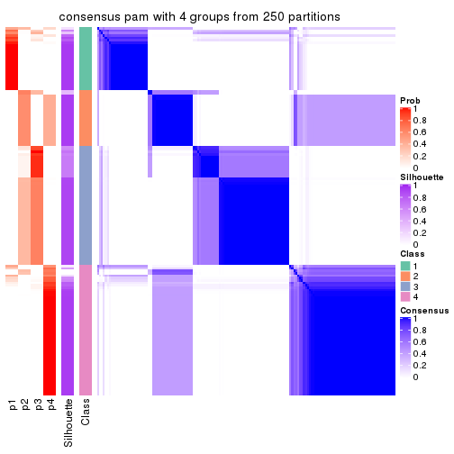
consensus_heatmap(res, k = 5)
consensus_heatmap(res, k = 6)
Heatmaps for the membership of samples in all partitions to see how consistent they are:
membership_heatmap(res, k = 2)
membership_heatmap(res, k = 3)
membership_heatmap(res, k = 4)
membership_heatmap(res, k = 5)
membership_heatmap(res, k = 6)
As soon as we have had the classes for columns, we can look for signatures
which are significantly different between classes which can be candidate marks
for certain classes. Following are the heatmaps for signatures.
Signature heatmaps where rows are scaled:
get_signatures(res, k = 2)
get_signatures(res, k = 3)
get_signatures(res, k = 4)
get_signatures(res, k = 5)
get_signatures(res, k = 6)
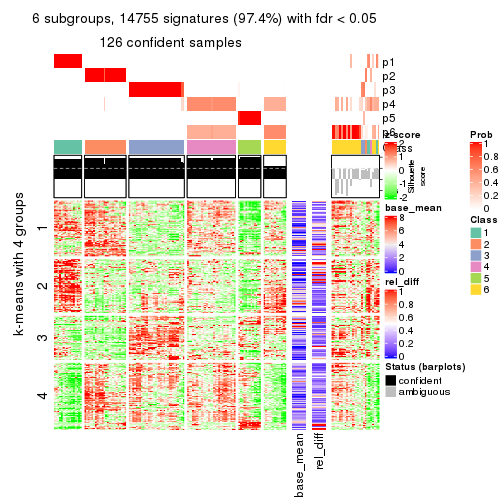
Signature heatmaps where rows are not scaled:
get_signatures(res, k = 2, scale_rows = FALSE)
get_signatures(res, k = 3, scale_rows = FALSE)
get_signatures(res, k = 4, scale_rows = FALSE)
get_signatures(res, k = 5, scale_rows = FALSE)
get_signatures(res, k = 6, scale_rows = FALSE)
Compare the overlap of signatures from different k:
compare_signatures(res)
get_signature() returns a data frame invisibly. TO get the list of signatures, the function
call should be assigned to a variable explicitly. In following code, if plot argument is set
to FALSE, no heatmap is plotted while only the differential analysis is performed.
# code only for demonstration
tb = get_signature(res, k = ..., plot = FALSE)
An example of the output of tb is:
#> which_row fdr mean_1 mean_2 scaled_mean_1 scaled_mean_2 km
#> 1 38 0.042760348 8.373488 9.131774 -0.5533452 0.5164555 1
#> 2 40 0.018707592 7.106213 8.469186 -0.6173731 0.5762149 1
#> 3 55 0.019134737 10.221463 11.207825 -0.6159697 0.5749050 1
#> 4 59 0.006059896 5.921854 7.869574 -0.6899429 0.6439467 1
#> 5 60 0.018055526 8.928898 10.211722 -0.6204761 0.5791110 1
#> 6 98 0.009384629 15.714769 14.887706 0.6635654 -0.6193277 2
...
The columns in tb are:
which_row: row indices corresponding to the input matrix.fdr: FDR for the differential test. mean_x: The mean value in group x.scaled_mean_x: The mean value in group x after rows are scaled.km: Row groups if k-means clustering is applied to rows.
UMAP plot which shows how samples are separated.
dimension_reduction(res, k = 2, method = "UMAP")
dimension_reduction(res, k = 3, method = "UMAP")
dimension_reduction(res, k = 4, method = "UMAP")

dimension_reduction(res, k = 5, method = "UMAP")
dimension_reduction(res, k = 6, method = "UMAP")
Following heatmap shows how subgroups are split when increasing k:
collect_classes(res)
If matrix rows can be associated to genes, consider to use functional_enrichment(res,
...) to perform function enrichment for the signature genes. See this vignette for more detailed explanations.
SD:mclust**
The object with results only for a single top-value method and a single partition method
can be extracted as:
res = res_list["SD", "mclust"]
# you can also extract it by
# res = res_list["SD:mclust"]
A summary of res and all the functions that can be applied to it:
res
#> A 'ConsensusPartition' object with k = 2, 3, 4, 5, 6.
#> On a matrix with 15148 rows and 152 columns.
#> Top rows (1000, 2000, 3000, 4000, 5000) are extracted by 'SD' method.
#> Subgroups are detected by 'mclust' method.
#> Performed in total 1250 partitions by row resampling.
#> Best k for subgroups seems to be 2.
#>
#> Following methods can be applied to this 'ConsensusPartition' object:
#> [1] "cola_report" "collect_classes" "collect_plots"
#> [4] "collect_stats" "colnames" "compare_signatures"
#> [7] "consensus_heatmap" "dimension_reduction" "functional_enrichment"
#> [10] "get_anno_col" "get_anno" "get_classes"
#> [13] "get_consensus" "get_matrix" "get_membership"
#> [16] "get_param" "get_signatures" "get_stats"
#> [19] "is_best_k" "is_stable_k" "membership_heatmap"
#> [22] "ncol" "nrow" "plot_ecdf"
#> [25] "rownames" "select_partition_number" "show"
#> [28] "suggest_best_k" "test_to_known_factors"
collect_plots() function collects all the plots made from res for all k (number of partitions)
into one single page to provide an easy and fast comparison between different k.
collect_plots(res)
The plots are:
- The first row: a plot of the ECDF (empirical cumulative distribution
function) curves of the consensus matrix for each
k and the heatmap of
predicted classes for each k.
- The second row: heatmaps of the consensus matrix for each
k.
- The third row: heatmaps of the membership matrix for each
k.
- The fouth row: heatmaps of the signatures for each
k.
All the plots in panels can be made by individual functions and they are
plotted later in this section.
select_partition_number() produces several plots showing different
statistics for choosing “optimized” k. There are following statistics:
- ECDF curves of the consensus matrix for each
k;
- 1-PAC. The PAC
score
measures the proportion of the ambiguous subgrouping.
- Mean silhouette score.
- Concordance. The mean probability of fiting the consensus class ids in all
partitions.
- Area increased. Denote \(A_k\) as the area under the ECDF curve for current
k, the area increased is defined as \(A_k - A_{k-1}\).
- Rand index. The percent of pairs of samples that are both in a same cluster
or both are not in a same cluster in the partition of k and k-1.
- Jaccard index. The ratio of pairs of samples are both in a same cluster in
the partition of k and k-1 and the pairs of samples are both in a same
cluster in the partition k or k-1.
The detailed explanations of these statistics can be found in the cola
vignette.
Generally speaking, lower PAC score, higher mean silhouette score or higher
concordance corresponds to better partition. Rand index and Jaccard index
measure how similar the current partition is compared to partition with k-1.
If they are too similar, we won't accept k is better than k-1.
select_partition_number(res)
The numeric values for all these statistics can be obtained by get_stats().
get_stats(res)
#> k 1-PAC mean_silhouette concordance area_increased Rand Jaccard
#> 2 2 1.000 0.997 0.996 0.4577 0.543 0.543
#> 3 3 0.655 0.748 0.860 0.2887 0.857 0.742
#> 4 4 0.687 0.765 0.855 0.1589 0.900 0.770
#> 5 5 0.848 0.718 0.884 0.1107 0.883 0.668
#> 6 6 0.840 0.853 0.914 0.0523 0.878 0.567
suggest_best_k() suggests the best \(k\) based on these statistics. The rules are as follows:
- All \(k\) with Jaccard index larger than 0.95 are removed because increasing
\(k\) does not provide enough extra information. If all \(k\) are removed, it is
marked as no subgroup is detected.
- For all \(k\) with 1-PAC score larger than 0.9, the maximal \(k\) is taken as
the best \(k\), and other \(k\) are marked as optional \(k\).
- If it does not fit the second rule. The \(k\) with the maximal vote of the
highest 1-PAC score, highest mean silhouette, and highest concordance is
taken as the best \(k\).
suggest_best_k(res)
#> [1] 2
Following shows the table of the partitions (You need to click the show/hide
code output link to see it). The membership matrix (columns with name p*)
is inferred by
clue::cl_consensus()
function with the SE method. Basically the value in the membership matrix
represents the probability to belong to a certain group. The finall class
label for an item is determined with the group with highest probability it
belongs to.
In get_classes() function, the entropy is calculated from the membership
matrix and the silhouette score is calculated from the consensus matrix.
show/hide code output
cbind(get_classes(res, k = 2), get_membership(res, k = 2))
#> class entropy silhouette p1 p2
#> SRR1947547 2 0.0376 0.998 0.004 0.996
#> SRR1947546 1 0.0376 0.997 0.996 0.004
#> SRR1947545 1 0.0376 0.997 0.996 0.004
#> SRR1947544 1 0.0376 0.997 0.996 0.004
#> SRR1947542 1 0.0376 0.997 0.996 0.004
#> SRR1947541 2 0.0376 0.998 0.004 0.996
#> SRR1947540 1 0.0376 0.997 0.996 0.004
#> SRR1947539 2 0.0376 0.995 0.004 0.996
#> SRR1947538 1 0.0376 0.997 0.996 0.004
#> SRR1947537 2 0.0376 0.998 0.004 0.996
#> SRR1947536 2 0.0672 0.996 0.008 0.992
#> SRR1947535 2 0.0376 0.998 0.004 0.996
#> SRR1947534 1 0.0000 0.997 1.000 0.000
#> SRR1947533 1 0.0376 0.995 0.996 0.004
#> SRR1947532 1 0.0376 0.997 0.996 0.004
#> SRR1947531 1 0.0376 0.997 0.996 0.004
#> SRR1947530 2 0.0672 0.996 0.008 0.992
#> SRR1947529 1 0.0376 0.997 0.996 0.004
#> SRR1947528 2 0.0376 0.998 0.004 0.996
#> SRR1947527 1 0.0376 0.995 0.996 0.004
#> SRR1947526 1 0.0376 0.995 0.996 0.004
#> SRR1947525 1 0.0376 0.997 0.996 0.004
#> SRR1947524 2 0.0376 0.998 0.004 0.996
#> SRR1947523 1 0.0376 0.997 0.996 0.004
#> SRR1947521 2 0.0376 0.995 0.004 0.996
#> SRR1947520 1 0.0376 0.995 0.996 0.004
#> SRR1947519 2 0.0376 0.998 0.004 0.996
#> SRR1947518 1 0.0376 0.997 0.996 0.004
#> SRR1947517 2 0.0376 0.995 0.004 0.996
#> SRR1947516 1 0.0376 0.995 0.996 0.004
#> SRR1947515 1 0.0376 0.997 0.996 0.004
#> SRR1947514 1 0.0376 0.995 0.996 0.004
#> SRR1947513 1 0.0000 0.997 1.000 0.000
#> SRR1947512 1 0.0000 0.997 1.000 0.000
#> SRR1947511 1 0.0376 0.995 0.996 0.004
#> SRR1947510 2 0.0376 0.995 0.004 0.996
#> SRR1947572 1 0.0376 0.997 0.996 0.004
#> SRR1947611 2 0.0376 0.995 0.004 0.996
#> SRR1947509 2 0.0376 0.995 0.004 0.996
#> SRR1947644 2 0.0376 0.995 0.004 0.996
#> SRR1947643 1 0.0376 0.995 0.996 0.004
#> SRR1947642 2 0.0376 0.998 0.004 0.996
#> SRR1947640 1 0.0376 0.997 0.996 0.004
#> SRR1947641 2 0.0376 0.998 0.004 0.996
#> SRR1947639 1 0.0376 0.997 0.996 0.004
#> SRR1947638 1 0.0000 0.997 1.000 0.000
#> SRR1947637 2 0.0376 0.995 0.004 0.996
#> SRR1947636 2 0.0376 0.998 0.004 0.996
#> SRR1947635 1 0.0376 0.997 0.996 0.004
#> SRR1947634 1 0.0376 0.995 0.996 0.004
#> SRR1947633 2 0.0376 0.995 0.004 0.996
#> SRR1947632 1 0.0376 0.997 0.996 0.004
#> SRR1947631 2 0.0376 0.998 0.004 0.996
#> SRR1947629 2 0.0376 0.998 0.004 0.996
#> SRR1947630 1 0.0376 0.995 0.996 0.004
#> SRR1947627 2 0.0672 0.996 0.008 0.992
#> SRR1947628 1 0.0376 0.997 0.996 0.004
#> SRR1947626 1 0.0376 0.995 0.996 0.004
#> SRR1947625 2 0.0376 0.998 0.004 0.996
#> SRR1947624 1 0.0376 0.995 0.996 0.004
#> SRR1947623 1 0.0000 0.997 1.000 0.000
#> SRR1947622 1 0.0376 0.997 0.996 0.004
#> SRR1947621 1 0.0376 0.995 0.996 0.004
#> SRR1947620 1 0.0376 0.997 0.996 0.004
#> SRR1947619 2 0.0376 0.998 0.004 0.996
#> SRR1947617 1 0.0376 0.995 0.996 0.004
#> SRR1947618 1 0.0000 0.997 1.000 0.000
#> SRR1947616 1 0.0672 0.996 0.992 0.008
#> SRR1947615 2 0.0376 0.998 0.004 0.996
#> SRR1947614 2 0.0376 0.995 0.004 0.996
#> SRR1947613 1 0.0000 0.997 1.000 0.000
#> SRR1947610 1 0.0376 0.997 0.996 0.004
#> SRR1947612 1 0.0376 0.995 0.996 0.004
#> SRR1947609 1 0.0376 0.997 0.996 0.004
#> SRR1947608 2 0.0376 0.998 0.004 0.996
#> SRR1947606 2 0.0376 0.998 0.004 0.996
#> SRR1947607 1 0.0000 0.997 1.000 0.000
#> SRR1947604 1 0.0376 0.997 0.996 0.004
#> SRR1947605 1 0.0000 0.997 1.000 0.000
#> SRR1947603 1 0.0376 0.997 0.996 0.004
#> SRR1947602 2 0.0672 0.996 0.008 0.992
#> SRR1947600 2 0.0376 0.998 0.004 0.996
#> SRR1947601 1 0.0376 0.995 0.996 0.004
#> SRR1947598 1 0.0376 0.997 0.996 0.004
#> SRR1947599 1 0.0376 0.997 0.996 0.004
#> SRR1947597 1 0.0376 0.997 0.996 0.004
#> SRR1947596 1 0.0376 0.997 0.996 0.004
#> SRR1947595 1 0.0376 0.995 0.996 0.004
#> SRR1947594 1 0.0000 0.997 1.000 0.000
#> SRR1947592 2 0.0376 0.998 0.004 0.996
#> SRR1947591 1 0.0376 0.995 0.996 0.004
#> SRR1947590 1 0.0376 0.997 0.996 0.004
#> SRR1947588 1 0.0000 0.997 1.000 0.000
#> SRR1947587 2 0.0376 0.998 0.004 0.996
#> SRR1947586 1 0.0376 0.995 0.996 0.004
#> SRR1947585 2 0.0376 0.998 0.004 0.996
#> SRR1947584 1 0.0000 0.997 1.000 0.000
#> SRR1947583 1 0.0376 0.997 0.996 0.004
#> SRR1947582 1 0.0000 0.997 1.000 0.000
#> SRR1947580 1 0.0376 0.995 0.996 0.004
#> SRR1947581 1 0.0000 0.997 1.000 0.000
#> SRR1947576 2 0.0376 0.995 0.004 0.996
#> SRR1947575 2 0.0376 0.998 0.004 0.996
#> SRR1947579 2 0.0376 0.995 0.004 0.996
#> SRR1947578 1 0.0672 0.996 0.992 0.008
#> SRR1947573 2 0.0376 0.998 0.004 0.996
#> SRR1947574 1 0.0000 0.997 1.000 0.000
#> SRR1947571 1 0.0376 0.997 0.996 0.004
#> SRR1947577 1 0.0376 0.997 0.996 0.004
#> SRR1947570 2 0.0376 0.998 0.004 0.996
#> SRR1947569 2 0.0376 0.998 0.004 0.996
#> SRR1947566 1 0.0376 0.995 0.996 0.004
#> SRR1947567 1 0.0376 0.997 0.996 0.004
#> SRR1947568 1 0.0000 0.997 1.000 0.000
#> SRR1947564 1 0.0376 0.997 0.996 0.004
#> SRR1947563 2 0.0376 0.998 0.004 0.996
#> SRR1947562 1 0.0376 0.997 0.996 0.004
#> SRR1947565 2 0.0376 0.998 0.004 0.996
#> SRR1947559 1 0.0376 0.997 0.996 0.004
#> SRR1947560 2 0.0376 0.995 0.004 0.996
#> SRR1947561 1 0.0376 0.995 0.996 0.004
#> SRR1947557 1 0.0000 0.997 1.000 0.000
#> SRR1947558 2 0.0376 0.998 0.004 0.996
#> SRR1947556 1 0.0376 0.997 0.996 0.004
#> SRR1947553 1 0.0376 0.997 0.996 0.004
#> SRR1947554 1 0.0000 0.997 1.000 0.000
#> SRR1947555 1 0.0376 0.995 0.996 0.004
#> SRR1947550 1 0.0376 0.997 0.996 0.004
#> SRR1947552 1 0.0376 0.997 0.996 0.004
#> SRR1947549 2 0.0376 0.998 0.004 0.996
#> SRR1947551 2 0.0376 0.995 0.004 0.996
#> SRR1947548 1 0.0376 0.997 0.996 0.004
#> SRR1947506 2 0.0376 0.998 0.004 0.996
#> SRR1947507 1 0.0000 0.997 1.000 0.000
#> SRR1947504 1 0.0000 0.997 1.000 0.000
#> SRR1947503 1 0.0376 0.997 0.996 0.004
#> SRR1947502 1 0.0376 0.995 0.996 0.004
#> SRR1947501 1 0.0376 0.997 0.996 0.004
#> SRR1947499 2 0.0672 0.996 0.008 0.992
#> SRR1947498 2 0.0376 0.998 0.004 0.996
#> SRR1947508 2 0.0672 0.996 0.008 0.992
#> SRR1947505 1 0.0376 0.997 0.996 0.004
#> SRR1947497 1 0.0376 0.995 0.996 0.004
#> SRR1947496 1 0.0000 0.997 1.000 0.000
#> SRR1947495 1 0.0376 0.995 0.996 0.004
#> SRR1947494 1 0.0376 0.997 0.996 0.004
#> SRR1947493 2 0.0672 0.996 0.008 0.992
#> SRR1947492 1 0.0000 0.997 1.000 0.000
#> SRR1947500 1 0.0376 0.997 0.996 0.004
#> SRR1947491 1 0.0376 0.997 0.996 0.004
#> SRR1947490 1 0.0000 0.997 1.000 0.000
#> SRR1947489 2 0.0376 0.998 0.004 0.996
show/hide code output
cbind(get_classes(res, k = 3), get_membership(res, k = 3))
#> class entropy silhouette p1 p2 p3
#> SRR1947547 3 0.0000 0.959 0.000 0.000 1.000
#> SRR1947546 2 0.0592 0.844 0.012 0.988 0.000
#> SRR1947545 2 0.1411 0.835 0.036 0.964 0.000
#> SRR1947544 2 0.1411 0.835 0.036 0.964 0.000
#> SRR1947542 2 0.0237 0.844 0.004 0.996 0.000
#> SRR1947541 3 0.0000 0.959 0.000 0.000 1.000
#> SRR1947540 2 0.2165 0.825 0.064 0.936 0.000
#> SRR1947539 3 0.3752 0.808 0.144 0.000 0.856
#> SRR1947538 2 0.0000 0.845 0.000 1.000 0.000
#> SRR1947537 3 0.0000 0.959 0.000 0.000 1.000
#> SRR1947536 3 0.2959 0.890 0.100 0.000 0.900
#> SRR1947535 3 0.0000 0.959 0.000 0.000 1.000
#> SRR1947534 2 0.5058 0.784 0.244 0.756 0.000
#> SRR1947533 1 0.5859 0.347 0.656 0.344 0.000
#> SRR1947532 2 0.0000 0.845 0.000 1.000 0.000
#> SRR1947531 2 0.1529 0.837 0.040 0.960 0.000
#> SRR1947530 3 0.2959 0.890 0.100 0.000 0.900
#> SRR1947529 2 0.1643 0.835 0.044 0.956 0.000
#> SRR1947528 3 0.0000 0.959 0.000 0.000 1.000
#> SRR1947527 2 0.5363 0.755 0.276 0.724 0.000
#> SRR1947526 1 0.5785 0.364 0.668 0.332 0.000
#> SRR1947525 2 0.4702 0.791 0.212 0.788 0.000
#> SRR1947524 3 0.0000 0.959 0.000 0.000 1.000
#> SRR1947523 2 0.1031 0.842 0.024 0.976 0.000
#> SRR1947521 1 0.5621 0.382 0.692 0.000 0.308
#> SRR1947520 1 0.5926 0.369 0.644 0.356 0.000
#> SRR1947519 3 0.0000 0.959 0.000 0.000 1.000
#> SRR1947518 2 0.4452 0.802 0.192 0.808 0.000
#> SRR1947517 1 0.5882 0.305 0.652 0.000 0.348
#> SRR1947516 1 0.5859 0.347 0.656 0.344 0.000
#> SRR1947515 2 0.0000 0.845 0.000 1.000 0.000
#> SRR1947514 2 0.5497 0.717 0.292 0.708 0.000
#> SRR1947513 2 0.1289 0.837 0.032 0.968 0.000
#> SRR1947512 2 0.4750 0.795 0.216 0.784 0.000
#> SRR1947511 1 0.5650 0.394 0.688 0.312 0.000
#> SRR1947510 1 0.5621 0.382 0.692 0.000 0.308
#> SRR1947572 2 0.4605 0.797 0.204 0.796 0.000
#> SRR1947611 1 0.5621 0.382 0.692 0.000 0.308
#> SRR1947509 3 0.6252 0.299 0.444 0.000 0.556
#> SRR1947644 1 0.6180 0.129 0.584 0.000 0.416
#> SRR1947643 2 0.4002 0.719 0.160 0.840 0.000
#> SRR1947642 3 0.0000 0.959 0.000 0.000 1.000
#> SRR1947640 2 0.0000 0.845 0.000 1.000 0.000
#> SRR1947641 3 0.0000 0.959 0.000 0.000 1.000
#> SRR1947639 2 0.4654 0.790 0.208 0.792 0.000
#> SRR1947638 2 0.1289 0.837 0.032 0.968 0.000
#> SRR1947637 1 0.5706 0.365 0.680 0.000 0.320
#> SRR1947636 3 0.0000 0.959 0.000 0.000 1.000
#> SRR1947635 2 0.0747 0.843 0.016 0.984 0.000
#> SRR1947634 1 0.6079 0.314 0.612 0.388 0.000
#> SRR1947633 3 0.5058 0.704 0.244 0.000 0.756
#> SRR1947632 2 0.0424 0.843 0.008 0.992 0.000
#> SRR1947631 3 0.0000 0.959 0.000 0.000 1.000
#> SRR1947629 3 0.0000 0.959 0.000 0.000 1.000
#> SRR1947630 1 0.5291 0.486 0.732 0.268 0.000
#> SRR1947627 3 0.2959 0.890 0.100 0.000 0.900
#> SRR1947628 2 0.1411 0.839 0.036 0.964 0.000
#> SRR1947626 2 0.5178 0.760 0.256 0.744 0.000
#> SRR1947625 3 0.0000 0.959 0.000 0.000 1.000
#> SRR1947624 1 0.5138 0.492 0.748 0.252 0.000
#> SRR1947623 2 0.4796 0.790 0.220 0.780 0.000
#> SRR1947622 2 0.0592 0.844 0.012 0.988 0.000
#> SRR1947621 1 0.6307 -0.187 0.512 0.488 0.000
#> SRR1947620 2 0.1289 0.837 0.032 0.968 0.000
#> SRR1947619 3 0.0000 0.959 0.000 0.000 1.000
#> SRR1947617 2 0.5327 0.741 0.272 0.728 0.000
#> SRR1947618 2 0.1753 0.840 0.048 0.952 0.000
#> SRR1947616 2 0.6295 -0.159 0.472 0.528 0.000
#> SRR1947615 3 0.0000 0.959 0.000 0.000 1.000
#> SRR1947614 1 0.5621 0.382 0.692 0.000 0.308
#> SRR1947613 2 0.4931 0.786 0.232 0.768 0.000
#> SRR1947610 2 0.4887 0.785 0.228 0.772 0.000
#> SRR1947612 2 0.5465 0.723 0.288 0.712 0.000
#> SRR1947609 2 0.0000 0.845 0.000 1.000 0.000
#> SRR1947608 3 0.0000 0.959 0.000 0.000 1.000
#> SRR1947606 3 0.0000 0.959 0.000 0.000 1.000
#> SRR1947607 2 0.5058 0.784 0.244 0.756 0.000
#> SRR1947604 2 0.0000 0.845 0.000 1.000 0.000
#> SRR1947605 2 0.1411 0.835 0.036 0.964 0.000
#> SRR1947603 2 0.1529 0.837 0.040 0.960 0.000
#> SRR1947602 3 0.2959 0.890 0.100 0.000 0.900
#> SRR1947600 3 0.0000 0.959 0.000 0.000 1.000
#> SRR1947601 1 0.5785 0.364 0.668 0.332 0.000
#> SRR1947598 2 0.0892 0.843 0.020 0.980 0.000
#> SRR1947599 2 0.0000 0.845 0.000 1.000 0.000
#> SRR1947597 2 0.4654 0.790 0.208 0.792 0.000
#> SRR1947596 2 0.0000 0.845 0.000 1.000 0.000
#> SRR1947595 2 0.1860 0.832 0.052 0.948 0.000
#> SRR1947594 2 0.4796 0.793 0.220 0.780 0.000
#> SRR1947592 3 0.0000 0.959 0.000 0.000 1.000
#> SRR1947591 1 0.5859 0.347 0.656 0.344 0.000
#> SRR1947590 2 0.0000 0.845 0.000 1.000 0.000
#> SRR1947588 2 0.4750 0.795 0.216 0.784 0.000
#> SRR1947587 3 0.0000 0.959 0.000 0.000 1.000
#> SRR1947586 2 0.5254 0.763 0.264 0.736 0.000
#> SRR1947585 3 0.0000 0.959 0.000 0.000 1.000
#> SRR1947584 2 0.2878 0.835 0.096 0.904 0.000
#> SRR1947583 2 0.0892 0.848 0.020 0.980 0.000
#> SRR1947582 2 0.1753 0.840 0.048 0.952 0.000
#> SRR1947580 2 0.6305 0.265 0.484 0.516 0.000
#> SRR1947581 2 0.4750 0.795 0.216 0.784 0.000
#> SRR1947576 1 0.5621 0.382 0.692 0.000 0.308
#> SRR1947575 3 0.0000 0.959 0.000 0.000 1.000
#> SRR1947579 1 0.5621 0.382 0.692 0.000 0.308
#> SRR1947578 2 0.2537 0.814 0.080 0.920 0.000
#> SRR1947573 3 0.0000 0.959 0.000 0.000 1.000
#> SRR1947574 2 0.4555 0.797 0.200 0.800 0.000
#> SRR1947571 2 0.0000 0.845 0.000 1.000 0.000
#> SRR1947577 2 0.1289 0.837 0.032 0.968 0.000
#> SRR1947570 3 0.0000 0.959 0.000 0.000 1.000
#> SRR1947569 3 0.0000 0.959 0.000 0.000 1.000
#> SRR1947566 2 0.6295 -0.159 0.472 0.528 0.000
#> SRR1947567 2 0.0237 0.845 0.004 0.996 0.000
#> SRR1947568 2 0.5058 0.781 0.244 0.756 0.000
#> SRR1947564 2 0.4887 0.780 0.228 0.772 0.000
#> SRR1947563 3 0.0000 0.959 0.000 0.000 1.000
#> SRR1947562 2 0.0000 0.845 0.000 1.000 0.000
#> SRR1947565 3 0.0000 0.959 0.000 0.000 1.000
#> SRR1947559 2 0.4062 0.816 0.164 0.836 0.000
#> SRR1947560 1 0.5621 0.382 0.692 0.000 0.308
#> SRR1947561 1 0.6154 0.170 0.592 0.408 0.000
#> SRR1947557 2 0.3340 0.830 0.120 0.880 0.000
#> SRR1947558 3 0.0000 0.959 0.000 0.000 1.000
#> SRR1947556 2 0.1411 0.835 0.036 0.964 0.000
#> SRR1947553 2 0.4654 0.790 0.208 0.792 0.000
#> SRR1947554 2 0.4931 0.792 0.232 0.768 0.000
#> SRR1947555 2 0.6295 -0.159 0.472 0.528 0.000
#> SRR1947550 2 0.0000 0.845 0.000 1.000 0.000
#> SRR1947552 2 0.0000 0.845 0.000 1.000 0.000
#> SRR1947549 3 0.0000 0.959 0.000 0.000 1.000
#> SRR1947551 1 0.5882 0.311 0.652 0.000 0.348
#> SRR1947548 2 0.0000 0.845 0.000 1.000 0.000
#> SRR1947506 3 0.0000 0.959 0.000 0.000 1.000
#> SRR1947507 2 0.4750 0.795 0.216 0.784 0.000
#> SRR1947504 2 0.4796 0.792 0.220 0.780 0.000
#> SRR1947503 2 0.1289 0.837 0.032 0.968 0.000
#> SRR1947502 2 0.5216 0.756 0.260 0.740 0.000
#> SRR1947501 2 0.1860 0.828 0.052 0.948 0.000
#> SRR1947499 3 0.2959 0.890 0.100 0.000 0.900
#> SRR1947498 3 0.0000 0.959 0.000 0.000 1.000
#> SRR1947508 3 0.2959 0.890 0.100 0.000 0.900
#> SRR1947505 2 0.1529 0.837 0.040 0.960 0.000
#> SRR1947497 2 0.4974 0.775 0.236 0.764 0.000
#> SRR1947496 2 0.4796 0.793 0.220 0.780 0.000
#> SRR1947495 2 0.5098 0.766 0.248 0.752 0.000
#> SRR1947494 2 0.0892 0.843 0.020 0.980 0.000
#> SRR1947493 3 0.3293 0.889 0.088 0.012 0.900
#> SRR1947492 2 0.4750 0.796 0.216 0.784 0.000
#> SRR1947500 2 0.0000 0.845 0.000 1.000 0.000
#> SRR1947491 2 0.0000 0.845 0.000 1.000 0.000
#> SRR1947490 2 0.4842 0.791 0.224 0.776 0.000
#> SRR1947489 3 0.0000 0.959 0.000 0.000 1.000
show/hide code output
cbind(get_classes(res, k = 4), get_membership(res, k = 4))
#> class entropy silhouette p1 p2 p3 p4
#> SRR1947547 3 0.0000 0.97434 0.000 0.000 1.000 0.000
#> SRR1947546 4 0.0336 0.78357 0.000 0.008 0.000 0.992
#> SRR1947545 4 0.1792 0.77266 0.068 0.000 0.000 0.932
#> SRR1947544 4 0.1792 0.77266 0.068 0.000 0.000 0.932
#> SRR1947542 4 0.0336 0.78357 0.000 0.008 0.000 0.992
#> SRR1947541 3 0.0000 0.97434 0.000 0.000 1.000 0.000
#> SRR1947540 4 0.3942 0.53849 0.000 0.236 0.000 0.764
#> SRR1947539 3 0.4072 0.44077 0.252 0.000 0.748 0.000
#> SRR1947538 4 0.0336 0.78357 0.000 0.008 0.000 0.992
#> SRR1947537 3 0.0000 0.97434 0.000 0.000 1.000 0.000
#> SRR1947536 3 0.0000 0.97434 0.000 0.000 1.000 0.000
#> SRR1947535 3 0.0000 0.97434 0.000 0.000 1.000 0.000
#> SRR1947534 4 0.7080 0.47440 0.236 0.196 0.000 0.568
#> SRR1947533 2 0.1022 0.81440 0.000 0.968 0.000 0.032
#> SRR1947532 4 0.0336 0.78357 0.000 0.008 0.000 0.992
#> SRR1947531 4 0.3873 0.55292 0.000 0.228 0.000 0.772
#> SRR1947530 3 0.0779 0.94978 0.016 0.004 0.980 0.000
#> SRR1947529 4 0.3074 0.67152 0.000 0.152 0.000 0.848
#> SRR1947528 3 0.0000 0.97434 0.000 0.000 1.000 0.000
#> SRR1947527 2 0.3610 0.77582 0.000 0.800 0.000 0.200
#> SRR1947526 2 0.1022 0.81440 0.000 0.968 0.000 0.032
#> SRR1947525 4 0.3688 0.65644 0.000 0.208 0.000 0.792
#> SRR1947524 3 0.0000 0.97434 0.000 0.000 1.000 0.000
#> SRR1947523 4 0.0592 0.78083 0.000 0.016 0.000 0.984
#> SRR1947521 1 0.6316 0.99717 0.612 0.088 0.300 0.000
#> SRR1947520 2 0.3907 0.69199 0.000 0.768 0.000 0.232
#> SRR1947519 3 0.0000 0.97434 0.000 0.000 1.000 0.000
#> SRR1947518 4 0.4040 0.61066 0.000 0.248 0.000 0.752
#> SRR1947517 1 0.6316 0.99717 0.612 0.088 0.300 0.000
#> SRR1947516 2 0.1637 0.83694 0.000 0.940 0.000 0.060
#> SRR1947515 4 0.0336 0.78357 0.000 0.008 0.000 0.992
#> SRR1947514 2 0.2216 0.85326 0.000 0.908 0.000 0.092
#> SRR1947513 4 0.1716 0.77341 0.064 0.000 0.000 0.936
#> SRR1947512 4 0.5125 0.58160 0.388 0.008 0.000 0.604
#> SRR1947511 2 0.0707 0.80182 0.000 0.980 0.000 0.020
#> SRR1947510 1 0.6316 0.99717 0.612 0.088 0.300 0.000
#> SRR1947572 4 0.4222 0.58349 0.000 0.272 0.000 0.728
#> SRR1947611 1 0.6316 0.99717 0.612 0.088 0.300 0.000
#> SRR1947509 1 0.6202 0.98175 0.612 0.076 0.312 0.000
#> SRR1947644 1 0.6280 0.99334 0.612 0.084 0.304 0.000
#> SRR1947643 4 0.4898 0.07761 0.000 0.416 0.000 0.584
#> SRR1947642 3 0.0000 0.97434 0.000 0.000 1.000 0.000
#> SRR1947640 4 0.0336 0.78357 0.000 0.008 0.000 0.992
#> SRR1947641 3 0.0000 0.97434 0.000 0.000 1.000 0.000
#> SRR1947639 4 0.4454 0.54082 0.000 0.308 0.000 0.692
#> SRR1947638 4 0.1716 0.77341 0.064 0.000 0.000 0.936
#> SRR1947637 1 0.6336 0.99349 0.608 0.088 0.304 0.000
#> SRR1947636 3 0.0000 0.97434 0.000 0.000 1.000 0.000
#> SRR1947635 4 0.0336 0.78357 0.000 0.008 0.000 0.992
#> SRR1947634 2 0.4008 0.67527 0.000 0.756 0.000 0.244
#> SRR1947633 3 0.4746 -0.07537 0.368 0.000 0.632 0.000
#> SRR1947632 4 0.0336 0.78357 0.000 0.008 0.000 0.992
#> SRR1947631 3 0.0000 0.97434 0.000 0.000 1.000 0.000
#> SRR1947629 3 0.0000 0.97434 0.000 0.000 1.000 0.000
#> SRR1947630 2 0.3975 0.65704 0.000 0.760 0.000 0.240
#> SRR1947627 3 0.0000 0.97434 0.000 0.000 1.000 0.000
#> SRR1947628 4 0.2921 0.68210 0.000 0.140 0.000 0.860
#> SRR1947626 2 0.3123 0.82020 0.000 0.844 0.000 0.156
#> SRR1947625 3 0.0000 0.97434 0.000 0.000 1.000 0.000
#> SRR1947624 2 0.3610 0.70105 0.000 0.800 0.000 0.200
#> SRR1947623 4 0.5907 0.57613 0.080 0.252 0.000 0.668
#> SRR1947622 4 0.0336 0.78357 0.000 0.008 0.000 0.992
#> SRR1947621 2 0.2216 0.85326 0.000 0.908 0.000 0.092
#> SRR1947620 4 0.2011 0.76988 0.080 0.000 0.000 0.920
#> SRR1947619 3 0.0000 0.97434 0.000 0.000 1.000 0.000
#> SRR1947617 2 0.2216 0.85326 0.000 0.908 0.000 0.092
#> SRR1947618 4 0.2048 0.77384 0.064 0.008 0.000 0.928
#> SRR1947616 4 0.4981 -0.00946 0.000 0.464 0.000 0.536
#> SRR1947615 3 0.0000 0.97434 0.000 0.000 1.000 0.000
#> SRR1947614 1 0.6316 0.99717 0.612 0.088 0.300 0.000
#> SRR1947613 4 0.6417 0.50392 0.388 0.072 0.000 0.540
#> SRR1947610 4 0.4454 0.54082 0.000 0.308 0.000 0.692
#> SRR1947612 2 0.2216 0.85326 0.000 0.908 0.000 0.092
#> SRR1947609 4 0.0188 0.78279 0.004 0.000 0.000 0.996
#> SRR1947608 3 0.0000 0.97434 0.000 0.000 1.000 0.000
#> SRR1947606 3 0.0000 0.97434 0.000 0.000 1.000 0.000
#> SRR1947607 4 0.7268 0.39523 0.372 0.152 0.000 0.476
#> SRR1947604 4 0.0336 0.78357 0.000 0.008 0.000 0.992
#> SRR1947605 4 0.2266 0.76720 0.084 0.004 0.000 0.912
#> SRR1947603 4 0.2647 0.70773 0.000 0.120 0.000 0.880
#> SRR1947602 3 0.0779 0.94978 0.016 0.004 0.980 0.000
#> SRR1947600 3 0.0000 0.97434 0.000 0.000 1.000 0.000
#> SRR1947601 2 0.0817 0.80636 0.000 0.976 0.000 0.024
#> SRR1947598 4 0.2197 0.74117 0.004 0.080 0.000 0.916
#> SRR1947599 4 0.0000 0.78316 0.000 0.000 0.000 1.000
#> SRR1947597 4 0.4543 0.51471 0.000 0.324 0.000 0.676
#> SRR1947596 4 0.0524 0.78343 0.004 0.008 0.000 0.988
#> SRR1947595 4 0.4655 0.37171 0.004 0.312 0.000 0.684
#> SRR1947594 4 0.5125 0.58160 0.388 0.008 0.000 0.604
#> SRR1947592 3 0.0000 0.97434 0.000 0.000 1.000 0.000
#> SRR1947591 2 0.1302 0.82535 0.000 0.956 0.000 0.044
#> SRR1947590 4 0.0524 0.78343 0.004 0.008 0.000 0.988
#> SRR1947588 4 0.5125 0.58160 0.388 0.008 0.000 0.604
#> SRR1947587 3 0.0000 0.97434 0.000 0.000 1.000 0.000
#> SRR1947586 2 0.3688 0.76593 0.000 0.792 0.000 0.208
#> SRR1947585 3 0.0000 0.97434 0.000 0.000 1.000 0.000
#> SRR1947584 4 0.4991 0.58451 0.388 0.004 0.000 0.608
#> SRR1947583 4 0.0336 0.78357 0.000 0.008 0.000 0.992
#> SRR1947582 4 0.2412 0.76745 0.084 0.008 0.000 0.908
#> SRR1947580 2 0.2216 0.85326 0.000 0.908 0.000 0.092
#> SRR1947581 4 0.5125 0.58160 0.388 0.008 0.000 0.604
#> SRR1947576 1 0.6316 0.99717 0.612 0.088 0.300 0.000
#> SRR1947575 3 0.0000 0.97434 0.000 0.000 1.000 0.000
#> SRR1947579 1 0.6316 0.99717 0.612 0.088 0.300 0.000
#> SRR1947578 4 0.4730 0.23259 0.000 0.364 0.000 0.636
#> SRR1947573 3 0.0000 0.97434 0.000 0.000 1.000 0.000
#> SRR1947574 4 0.1209 0.77968 0.004 0.032 0.000 0.964
#> SRR1947571 4 0.0336 0.78357 0.000 0.008 0.000 0.992
#> SRR1947577 4 0.1637 0.77414 0.060 0.000 0.000 0.940
#> SRR1947570 3 0.0000 0.97434 0.000 0.000 1.000 0.000
#> SRR1947569 3 0.0000 0.97434 0.000 0.000 1.000 0.000
#> SRR1947566 4 0.4998 -0.10304 0.000 0.488 0.000 0.512
#> SRR1947567 4 0.0336 0.78357 0.000 0.008 0.000 0.992
#> SRR1947568 2 0.4996 0.01036 0.000 0.516 0.000 0.484
#> SRR1947564 4 0.4989 0.13354 0.000 0.472 0.000 0.528
#> SRR1947563 3 0.0000 0.97434 0.000 0.000 1.000 0.000
#> SRR1947562 4 0.0336 0.78357 0.000 0.008 0.000 0.992
#> SRR1947565 3 0.0000 0.97434 0.000 0.000 1.000 0.000
#> SRR1947559 4 0.1557 0.77201 0.000 0.056 0.000 0.944
#> SRR1947560 1 0.6316 0.99717 0.612 0.088 0.300 0.000
#> SRR1947561 2 0.2216 0.85326 0.000 0.908 0.000 0.092
#> SRR1947557 4 0.4991 0.58451 0.388 0.004 0.000 0.608
#> SRR1947558 3 0.0000 0.97434 0.000 0.000 1.000 0.000
#> SRR1947556 4 0.1716 0.77357 0.064 0.000 0.000 0.936
#> SRR1947553 4 0.4431 0.54600 0.000 0.304 0.000 0.696
#> SRR1947554 4 0.5322 0.62649 0.312 0.028 0.000 0.660
#> SRR1947555 4 0.4996 -0.07737 0.000 0.484 0.000 0.516
#> SRR1947550 4 0.0336 0.78357 0.000 0.008 0.000 0.992
#> SRR1947552 4 0.0336 0.78357 0.000 0.008 0.000 0.992
#> SRR1947549 3 0.0000 0.97434 0.000 0.000 1.000 0.000
#> SRR1947551 1 0.6316 0.99717 0.612 0.088 0.300 0.000
#> SRR1947548 4 0.0336 0.78357 0.000 0.008 0.000 0.992
#> SRR1947506 3 0.0000 0.97434 0.000 0.000 1.000 0.000
#> SRR1947507 4 0.5125 0.58160 0.388 0.008 0.000 0.604
#> SRR1947504 4 0.6095 0.62345 0.224 0.108 0.000 0.668
#> SRR1947503 4 0.0592 0.78093 0.016 0.000 0.000 0.984
#> SRR1947502 2 0.2216 0.85326 0.000 0.908 0.000 0.092
#> SRR1947501 4 0.0336 0.78357 0.000 0.008 0.000 0.992
#> SRR1947499 3 0.0779 0.94978 0.016 0.004 0.980 0.000
#> SRR1947498 3 0.0000 0.97434 0.000 0.000 1.000 0.000
#> SRR1947508 3 0.0000 0.97434 0.000 0.000 1.000 0.000
#> SRR1947505 4 0.3791 0.59691 0.004 0.200 0.000 0.796
#> SRR1947497 2 0.3688 0.76593 0.000 0.792 0.000 0.208
#> SRR1947496 4 0.5125 0.58160 0.388 0.008 0.000 0.604
#> SRR1947495 2 0.3688 0.76593 0.000 0.792 0.000 0.208
#> SRR1947494 4 0.2125 0.74444 0.004 0.076 0.000 0.920
#> SRR1947493 3 0.0779 0.94978 0.016 0.004 0.980 0.000
#> SRR1947492 4 0.5125 0.58160 0.388 0.008 0.000 0.604
#> SRR1947500 4 0.0336 0.78357 0.000 0.008 0.000 0.992
#> SRR1947491 4 0.0336 0.78357 0.000 0.008 0.000 0.992
#> SRR1947490 4 0.5453 0.56929 0.388 0.020 0.000 0.592
#> SRR1947489 3 0.0000 0.97434 0.000 0.000 1.000 0.000
show/hide code output
cbind(get_classes(res, k = 5), get_membership(res, k = 5))
#> class entropy silhouette p1 p2 p3 p4 p5
#> SRR1947547 3 0.0000 0.97158 0.000 0.000 1.000 0.000 0.000
#> SRR1947546 4 0.4522 0.81766 0.440 0.008 0.000 0.552 0.000
#> SRR1947545 4 0.0290 0.24290 0.008 0.000 0.000 0.992 0.000
#> SRR1947544 4 0.0162 0.25107 0.004 0.000 0.000 0.996 0.000
#> SRR1947542 4 0.4410 0.81828 0.440 0.004 0.000 0.556 0.000
#> SRR1947541 3 0.0000 0.97158 0.000 0.000 1.000 0.000 0.000
#> SRR1947540 4 0.5320 0.78719 0.424 0.052 0.000 0.524 0.000
#> SRR1947539 3 0.4182 0.29914 0.000 0.000 0.600 0.000 0.400
#> SRR1947538 4 0.4268 0.81909 0.444 0.000 0.000 0.556 0.000
#> SRR1947537 3 0.0000 0.97158 0.000 0.000 1.000 0.000 0.000
#> SRR1947536 3 0.3003 0.74568 0.000 0.000 0.812 0.000 0.188
#> SRR1947535 3 0.0000 0.97158 0.000 0.000 1.000 0.000 0.000
#> SRR1947534 1 0.4269 0.25059 0.776 0.116 0.000 0.108 0.000
#> SRR1947533 2 0.0162 0.89210 0.004 0.996 0.000 0.000 0.000
#> SRR1947532 4 0.4268 0.81909 0.444 0.000 0.000 0.556 0.000
#> SRR1947531 4 0.5211 0.79075 0.432 0.044 0.000 0.524 0.000
#> SRR1947530 3 0.0000 0.97158 0.000 0.000 1.000 0.000 0.000
#> SRR1947529 1 0.6478 -0.59969 0.444 0.188 0.000 0.368 0.000
#> SRR1947528 3 0.0000 0.97158 0.000 0.000 1.000 0.000 0.000
#> SRR1947527 2 0.0579 0.88256 0.008 0.984 0.000 0.008 0.000
#> SRR1947526 2 0.0000 0.89111 0.000 1.000 0.000 0.000 0.000
#> SRR1947525 4 0.4434 0.81371 0.460 0.004 0.000 0.536 0.000
#> SRR1947524 3 0.0000 0.97158 0.000 0.000 1.000 0.000 0.000
#> SRR1947523 4 0.4552 0.80730 0.468 0.008 0.000 0.524 0.000
#> SRR1947521 5 0.0000 0.95084 0.000 0.000 0.000 0.000 1.000
#> SRR1947520 2 0.0000 0.89111 0.000 1.000 0.000 0.000 0.000
#> SRR1947519 3 0.0000 0.97158 0.000 0.000 1.000 0.000 0.000
#> SRR1947518 4 0.4268 0.81909 0.444 0.000 0.000 0.556 0.000
#> SRR1947517 5 0.0000 0.95084 0.000 0.000 0.000 0.000 1.000
#> SRR1947516 2 0.0162 0.89210 0.004 0.996 0.000 0.000 0.000
#> SRR1947515 4 0.4268 0.81909 0.444 0.000 0.000 0.556 0.000
#> SRR1947514 2 0.0162 0.89210 0.004 0.996 0.000 0.000 0.000
#> SRR1947513 4 0.4262 0.69772 0.440 0.000 0.000 0.560 0.000
#> SRR1947512 1 0.4300 0.58110 0.524 0.000 0.000 0.476 0.000
#> SRR1947511 2 0.0000 0.89111 0.000 1.000 0.000 0.000 0.000
#> SRR1947510 5 0.0000 0.95084 0.000 0.000 0.000 0.000 1.000
#> SRR1947572 4 0.5777 0.72753 0.444 0.088 0.000 0.468 0.000
#> SRR1947611 5 0.0000 0.95084 0.000 0.000 0.000 0.000 1.000
#> SRR1947509 5 0.0000 0.95084 0.000 0.000 0.000 0.000 1.000
#> SRR1947644 5 0.0000 0.95084 0.000 0.000 0.000 0.000 1.000
#> SRR1947643 2 0.4287 0.00786 0.000 0.540 0.000 0.460 0.000
#> SRR1947642 3 0.0000 0.97158 0.000 0.000 1.000 0.000 0.000
#> SRR1947640 4 0.4268 0.81909 0.444 0.000 0.000 0.556 0.000
#> SRR1947641 3 0.0000 0.97158 0.000 0.000 1.000 0.000 0.000
#> SRR1947639 1 0.6510 -0.26308 0.444 0.360 0.000 0.196 0.000
#> SRR1947638 4 0.4287 0.66192 0.460 0.000 0.000 0.540 0.000
#> SRR1947637 5 0.4210 0.26449 0.000 0.000 0.412 0.000 0.588
#> SRR1947636 3 0.0000 0.97158 0.000 0.000 1.000 0.000 0.000
#> SRR1947635 4 0.4273 0.81824 0.448 0.000 0.000 0.552 0.000
#> SRR1947634 2 0.0000 0.89111 0.000 1.000 0.000 0.000 0.000
#> SRR1947633 3 0.4300 0.04649 0.000 0.000 0.524 0.000 0.476
#> SRR1947632 4 0.4410 0.81828 0.440 0.004 0.000 0.556 0.000
#> SRR1947631 3 0.0000 0.97158 0.000 0.000 1.000 0.000 0.000
#> SRR1947629 3 0.0000 0.97158 0.000 0.000 1.000 0.000 0.000
#> SRR1947630 2 0.0000 0.89111 0.000 1.000 0.000 0.000 0.000
#> SRR1947627 3 0.0000 0.97158 0.000 0.000 1.000 0.000 0.000
#> SRR1947628 4 0.4648 0.80648 0.464 0.012 0.000 0.524 0.000
#> SRR1947626 2 0.0703 0.87510 0.024 0.976 0.000 0.000 0.000
#> SRR1947625 3 0.0000 0.97158 0.000 0.000 1.000 0.000 0.000
#> SRR1947624 2 0.0000 0.89111 0.000 1.000 0.000 0.000 0.000
#> SRR1947623 1 0.4133 0.11133 0.768 0.180 0.000 0.052 0.000
#> SRR1947622 4 0.4522 0.81766 0.440 0.008 0.000 0.552 0.000
#> SRR1947621 2 0.0162 0.89210 0.004 0.996 0.000 0.000 0.000
#> SRR1947620 4 0.0794 0.19896 0.028 0.000 0.000 0.972 0.000
#> SRR1947619 3 0.0000 0.97158 0.000 0.000 1.000 0.000 0.000
#> SRR1947617 2 0.0162 0.89210 0.004 0.996 0.000 0.000 0.000
#> SRR1947618 4 0.3177 0.21770 0.208 0.000 0.000 0.792 0.000
#> SRR1947616 4 0.4552 0.16356 0.008 0.468 0.000 0.524 0.000
#> SRR1947615 3 0.0000 0.97158 0.000 0.000 1.000 0.000 0.000
#> SRR1947614 5 0.0000 0.95084 0.000 0.000 0.000 0.000 1.000
#> SRR1947613 1 0.4278 0.56595 0.548 0.000 0.000 0.452 0.000
#> SRR1947610 1 0.6424 -0.22543 0.444 0.380 0.000 0.176 0.000
#> SRR1947612 2 0.0162 0.89210 0.004 0.996 0.000 0.000 0.000
#> SRR1947609 4 0.4268 0.81909 0.444 0.000 0.000 0.556 0.000
#> SRR1947608 3 0.0000 0.97158 0.000 0.000 1.000 0.000 0.000
#> SRR1947606 3 0.0000 0.97158 0.000 0.000 1.000 0.000 0.000
#> SRR1947607 1 0.4268 0.55869 0.556 0.000 0.000 0.444 0.000
#> SRR1947604 4 0.4268 0.81909 0.444 0.000 0.000 0.556 0.000
#> SRR1947605 4 0.2280 -0.04632 0.120 0.000 0.000 0.880 0.000
#> SRR1947603 4 0.4807 0.80908 0.448 0.020 0.000 0.532 0.000
#> SRR1947602 3 0.0000 0.97158 0.000 0.000 1.000 0.000 0.000
#> SRR1947600 3 0.0000 0.97158 0.000 0.000 1.000 0.000 0.000
#> SRR1947601 2 0.0000 0.89111 0.000 1.000 0.000 0.000 0.000
#> SRR1947598 4 0.4182 0.76671 0.400 0.000 0.000 0.600 0.000
#> SRR1947599 4 0.4268 0.81909 0.444 0.000 0.000 0.556 0.000
#> SRR1947597 1 0.6623 -0.50812 0.444 0.236 0.000 0.320 0.000
#> SRR1947596 4 0.4150 0.79238 0.388 0.000 0.000 0.612 0.000
#> SRR1947595 4 0.4630 0.76705 0.396 0.016 0.000 0.588 0.000
#> SRR1947594 1 0.4300 0.58110 0.524 0.000 0.000 0.476 0.000
#> SRR1947592 3 0.0000 0.97158 0.000 0.000 1.000 0.000 0.000
#> SRR1947591 2 0.0162 0.89210 0.004 0.996 0.000 0.000 0.000
#> SRR1947590 4 0.3730 0.70051 0.288 0.000 0.000 0.712 0.000
#> SRR1947588 1 0.4300 0.58110 0.524 0.000 0.000 0.476 0.000
#> SRR1947587 3 0.0000 0.97158 0.000 0.000 1.000 0.000 0.000
#> SRR1947586 2 0.4387 0.37802 0.348 0.640 0.000 0.012 0.000
#> SRR1947585 3 0.0000 0.97158 0.000 0.000 1.000 0.000 0.000
#> SRR1947584 1 0.4300 0.58110 0.524 0.000 0.000 0.476 0.000
#> SRR1947583 4 0.4268 0.81909 0.444 0.000 0.000 0.556 0.000
#> SRR1947582 4 0.3612 0.00275 0.268 0.000 0.000 0.732 0.000
#> SRR1947580 2 0.0000 0.89111 0.000 1.000 0.000 0.000 0.000
#> SRR1947581 1 0.4300 0.58110 0.524 0.000 0.000 0.476 0.000
#> SRR1947576 5 0.0000 0.95084 0.000 0.000 0.000 0.000 1.000
#> SRR1947575 3 0.0000 0.97158 0.000 0.000 1.000 0.000 0.000
#> SRR1947579 5 0.0000 0.95084 0.000 0.000 0.000 0.000 1.000
#> SRR1947578 4 0.6312 0.63905 0.276 0.200 0.000 0.524 0.000
#> SRR1947573 3 0.0000 0.97158 0.000 0.000 1.000 0.000 0.000
#> SRR1947574 2 0.5736 0.17529 0.400 0.512 0.000 0.088 0.000
#> SRR1947571 4 0.4268 0.81909 0.444 0.000 0.000 0.556 0.000
#> SRR1947577 4 0.2966 0.49519 0.184 0.000 0.000 0.816 0.000
#> SRR1947570 3 0.0000 0.97158 0.000 0.000 1.000 0.000 0.000
#> SRR1947569 3 0.0000 0.97158 0.000 0.000 1.000 0.000 0.000
#> SRR1947566 4 0.4559 0.12808 0.008 0.480 0.000 0.512 0.000
#> SRR1947567 4 0.4268 0.81909 0.444 0.000 0.000 0.556 0.000
#> SRR1947568 2 0.5028 0.15700 0.444 0.524 0.000 0.032 0.000
#> SRR1947564 1 0.6161 -0.16533 0.444 0.424 0.000 0.132 0.000
#> SRR1947563 3 0.0000 0.97158 0.000 0.000 1.000 0.000 0.000
#> SRR1947562 4 0.4268 0.81909 0.444 0.000 0.000 0.556 0.000
#> SRR1947565 3 0.0000 0.97158 0.000 0.000 1.000 0.000 0.000
#> SRR1947559 4 0.4549 0.80942 0.464 0.008 0.000 0.528 0.000
#> SRR1947560 5 0.0000 0.95084 0.000 0.000 0.000 0.000 1.000
#> SRR1947561 2 0.0162 0.89210 0.004 0.996 0.000 0.000 0.000
#> SRR1947557 1 0.4300 0.58110 0.524 0.000 0.000 0.476 0.000
#> SRR1947558 3 0.0000 0.97158 0.000 0.000 1.000 0.000 0.000
#> SRR1947556 4 0.0000 0.25887 0.000 0.000 0.000 1.000 0.000
#> SRR1947553 1 0.6405 -0.21852 0.444 0.384 0.000 0.172 0.000
#> SRR1947554 1 0.4161 0.55404 0.608 0.000 0.000 0.392 0.000
#> SRR1947555 4 0.4552 0.16356 0.008 0.468 0.000 0.524 0.000
#> SRR1947550 4 0.4268 0.81909 0.444 0.000 0.000 0.556 0.000
#> SRR1947552 4 0.4268 0.81909 0.444 0.000 0.000 0.556 0.000
#> SRR1947549 3 0.0000 0.97158 0.000 0.000 1.000 0.000 0.000
#> SRR1947551 5 0.0000 0.95084 0.000 0.000 0.000 0.000 1.000
#> SRR1947548 4 0.4268 0.81909 0.444 0.000 0.000 0.556 0.000
#> SRR1947506 3 0.0000 0.97158 0.000 0.000 1.000 0.000 0.000
#> SRR1947507 1 0.4300 0.58110 0.524 0.000 0.000 0.476 0.000
#> SRR1947504 1 0.4060 0.52681 0.640 0.000 0.000 0.360 0.000
#> SRR1947503 4 0.4268 0.81909 0.444 0.000 0.000 0.556 0.000
#> SRR1947502 2 0.0162 0.89210 0.004 0.996 0.000 0.000 0.000
#> SRR1947501 4 0.4420 0.81653 0.448 0.004 0.000 0.548 0.000
#> SRR1947499 3 0.0000 0.97158 0.000 0.000 1.000 0.000 0.000
#> SRR1947498 3 0.0000 0.97158 0.000 0.000 1.000 0.000 0.000
#> SRR1947508 3 0.0000 0.97158 0.000 0.000 1.000 0.000 0.000
#> SRR1947505 4 0.4473 0.77727 0.412 0.008 0.000 0.580 0.000
#> SRR1947497 2 0.0290 0.89029 0.008 0.992 0.000 0.000 0.000
#> SRR1947496 1 0.4300 0.58110 0.524 0.000 0.000 0.476 0.000
#> SRR1947495 2 0.0404 0.88667 0.012 0.988 0.000 0.000 0.000
#> SRR1947494 4 0.4182 0.76671 0.400 0.000 0.000 0.600 0.000
#> SRR1947493 3 0.0000 0.97158 0.000 0.000 1.000 0.000 0.000
#> SRR1947492 1 0.4278 0.56595 0.548 0.000 0.000 0.452 0.000
#> SRR1947500 4 0.4268 0.81909 0.444 0.000 0.000 0.556 0.000
#> SRR1947491 4 0.4268 0.81909 0.444 0.000 0.000 0.556 0.000
#> SRR1947490 1 0.4278 0.56595 0.548 0.000 0.000 0.452 0.000
#> SRR1947489 3 0.0000 0.97158 0.000 0.000 1.000 0.000 0.000
show/hide code output
cbind(get_classes(res, k = 6), get_membership(res, k = 6))
#> class entropy silhouette p1 p2 p3 p4 p5 p6
#> SRR1947547 3 0.3854 -0.333 0.000 0.000 0.536 0.000 0.000 0.464
#> SRR1947546 4 0.0146 0.897 0.000 0.004 0.000 0.996 0.000 0.000
#> SRR1947545 1 0.3555 0.726 0.776 0.000 0.000 0.184 0.000 0.040
#> SRR1947544 1 0.3709 0.703 0.756 0.000 0.000 0.204 0.000 0.040
#> SRR1947542 4 0.0000 0.898 0.000 0.000 0.000 1.000 0.000 0.000
#> SRR1947541 3 0.0458 0.925 0.000 0.000 0.984 0.000 0.000 0.016
#> SRR1947540 4 0.2783 0.819 0.000 0.016 0.000 0.836 0.000 0.148
#> SRR1947539 3 0.2793 0.650 0.000 0.000 0.800 0.000 0.200 0.000
#> SRR1947538 4 0.0937 0.894 0.000 0.000 0.000 0.960 0.000 0.040
#> SRR1947537 3 0.0458 0.925 0.000 0.000 0.984 0.000 0.000 0.016
#> SRR1947536 6 0.3163 0.924 0.000 0.000 0.232 0.000 0.004 0.764
#> SRR1947535 3 0.0146 0.927 0.000 0.000 0.996 0.000 0.000 0.004
#> SRR1947534 1 0.4358 0.715 0.712 0.092 0.000 0.196 0.000 0.000
#> SRR1947533 2 0.0146 0.936 0.000 0.996 0.000 0.004 0.000 0.000
#> SRR1947532 4 0.0937 0.894 0.000 0.000 0.000 0.960 0.000 0.040
#> SRR1947531 4 0.2783 0.819 0.000 0.016 0.000 0.836 0.000 0.148
#> SRR1947530 6 0.2883 0.930 0.000 0.000 0.212 0.000 0.000 0.788
#> SRR1947529 4 0.3620 0.431 0.000 0.352 0.000 0.648 0.000 0.000
#> SRR1947528 3 0.3482 0.294 0.000 0.000 0.684 0.000 0.000 0.316
#> SRR1947527 2 0.2053 0.860 0.000 0.888 0.000 0.108 0.000 0.004
#> SRR1947526 2 0.0000 0.935 0.000 1.000 0.000 0.000 0.000 0.000
#> SRR1947525 4 0.0777 0.893 0.000 0.004 0.000 0.972 0.000 0.024
#> SRR1947524 3 0.0000 0.928 0.000 0.000 1.000 0.000 0.000 0.000
#> SRR1947523 4 0.3089 0.814 0.004 0.008 0.000 0.800 0.000 0.188
#> SRR1947521 5 0.0000 0.997 0.000 0.000 0.000 0.000 1.000 0.000
#> SRR1947520 2 0.0146 0.935 0.000 0.996 0.000 0.000 0.000 0.004
#> SRR1947519 3 0.0146 0.928 0.000 0.000 0.996 0.000 0.000 0.004
#> SRR1947518 4 0.0000 0.898 0.000 0.000 0.000 1.000 0.000 0.000
#> SRR1947517 5 0.0000 0.997 0.000 0.000 0.000 0.000 1.000 0.000
#> SRR1947516 2 0.0291 0.936 0.000 0.992 0.000 0.004 0.000 0.004
#> SRR1947515 4 0.0937 0.894 0.000 0.000 0.000 0.960 0.000 0.040
#> SRR1947514 2 0.0291 0.936 0.000 0.992 0.000 0.004 0.000 0.004
#> SRR1947513 1 0.2941 0.756 0.780 0.000 0.000 0.220 0.000 0.000
#> SRR1947512 1 0.0000 0.850 1.000 0.000 0.000 0.000 0.000 0.000
#> SRR1947511 2 0.0000 0.935 0.000 1.000 0.000 0.000 0.000 0.000
#> SRR1947510 5 0.0000 0.997 0.000 0.000 0.000 0.000 1.000 0.000
#> SRR1947572 4 0.0146 0.897 0.000 0.004 0.000 0.996 0.000 0.000
#> SRR1947611 5 0.0000 0.997 0.000 0.000 0.000 0.000 1.000 0.000
#> SRR1947509 5 0.0000 0.997 0.000 0.000 0.000 0.000 1.000 0.000
#> SRR1947644 5 0.0000 0.997 0.000 0.000 0.000 0.000 1.000 0.000
#> SRR1947643 2 0.2134 0.882 0.000 0.904 0.000 0.044 0.000 0.052
#> SRR1947642 3 0.0363 0.926 0.000 0.000 0.988 0.000 0.000 0.012
#> SRR1947640 4 0.0000 0.898 0.000 0.000 0.000 1.000 0.000 0.000
#> SRR1947641 3 0.0146 0.928 0.000 0.000 0.996 0.000 0.000 0.004
#> SRR1947639 4 0.1327 0.866 0.000 0.064 0.000 0.936 0.000 0.000
#> SRR1947638 1 0.3171 0.762 0.784 0.000 0.000 0.204 0.000 0.012
#> SRR1947637 5 0.0547 0.971 0.000 0.000 0.020 0.000 0.980 0.000
#> SRR1947636 3 0.0458 0.925 0.000 0.000 0.984 0.000 0.000 0.016
#> SRR1947635 4 0.0000 0.898 0.000 0.000 0.000 1.000 0.000 0.000
#> SRR1947634 2 0.0146 0.935 0.000 0.996 0.000 0.000 0.000 0.004
#> SRR1947633 3 0.3737 0.326 0.000 0.000 0.608 0.000 0.392 0.000
#> SRR1947632 4 0.1082 0.894 0.000 0.004 0.000 0.956 0.000 0.040
#> SRR1947631 3 0.0000 0.928 0.000 0.000 1.000 0.000 0.000 0.000
#> SRR1947629 3 0.0000 0.928 0.000 0.000 1.000 0.000 0.000 0.000
#> SRR1947630 2 0.0146 0.935 0.000 0.996 0.000 0.000 0.000 0.004
#> SRR1947627 6 0.2996 0.926 0.000 0.000 0.228 0.000 0.000 0.772
#> SRR1947628 4 0.2980 0.817 0.000 0.012 0.000 0.808 0.000 0.180
#> SRR1947626 2 0.2219 0.832 0.000 0.864 0.000 0.136 0.000 0.000
#> SRR1947625 3 0.0146 0.927 0.000 0.000 0.996 0.000 0.000 0.004
#> SRR1947624 2 0.0146 0.935 0.000 0.996 0.000 0.000 0.000 0.004
#> SRR1947623 1 0.2664 0.781 0.816 0.000 0.000 0.184 0.000 0.000
#> SRR1947622 4 0.0000 0.898 0.000 0.000 0.000 1.000 0.000 0.000
#> SRR1947621 2 0.0146 0.936 0.000 0.996 0.000 0.004 0.000 0.000
#> SRR1947620 1 0.3738 0.754 0.752 0.000 0.000 0.208 0.000 0.040
#> SRR1947619 3 0.0458 0.925 0.000 0.000 0.984 0.000 0.000 0.016
#> SRR1947617 2 0.0790 0.922 0.000 0.968 0.000 0.032 0.000 0.000
#> SRR1947618 1 0.4023 0.776 0.752 0.008 0.000 0.052 0.000 0.188
#> SRR1947616 4 0.3786 0.757 0.000 0.168 0.000 0.768 0.000 0.064
#> SRR1947615 3 0.0713 0.913 0.000 0.000 0.972 0.000 0.000 0.028
#> SRR1947614 5 0.0000 0.997 0.000 0.000 0.000 0.000 1.000 0.000
#> SRR1947613 1 0.0405 0.852 0.988 0.000 0.000 0.008 0.000 0.004
#> SRR1947610 4 0.0937 0.881 0.000 0.040 0.000 0.960 0.000 0.000
#> SRR1947612 2 0.1556 0.886 0.000 0.920 0.000 0.080 0.000 0.000
#> SRR1947609 4 0.0937 0.894 0.000 0.000 0.000 0.960 0.000 0.040
#> SRR1947608 3 0.0146 0.927 0.000 0.000 0.996 0.000 0.000 0.004
#> SRR1947606 3 0.0458 0.925 0.000 0.000 0.984 0.000 0.000 0.016
#> SRR1947607 1 0.3017 0.810 0.848 0.052 0.000 0.004 0.000 0.096
#> SRR1947604 4 0.0937 0.894 0.000 0.000 0.000 0.960 0.000 0.040
#> SRR1947605 1 0.1265 0.843 0.948 0.000 0.000 0.008 0.000 0.044
#> SRR1947603 4 0.3337 0.620 0.000 0.260 0.000 0.736 0.000 0.004
#> SRR1947602 6 0.2854 0.928 0.000 0.000 0.208 0.000 0.000 0.792
#> SRR1947600 3 0.0000 0.928 0.000 0.000 1.000 0.000 0.000 0.000
#> SRR1947601 2 0.0000 0.935 0.000 1.000 0.000 0.000 0.000 0.000
#> SRR1947598 4 0.3386 0.804 0.016 0.008 0.000 0.788 0.000 0.188
#> SRR1947599 4 0.1082 0.893 0.004 0.000 0.000 0.956 0.000 0.040
#> SRR1947597 4 0.2664 0.740 0.000 0.184 0.000 0.816 0.000 0.000
#> SRR1947596 4 0.1564 0.886 0.024 0.000 0.000 0.936 0.000 0.040
#> SRR1947595 4 0.3134 0.812 0.016 0.012 0.000 0.824 0.000 0.148
#> SRR1947594 1 0.0000 0.850 1.000 0.000 0.000 0.000 0.000 0.000
#> SRR1947592 3 0.0363 0.926 0.000 0.000 0.988 0.000 0.000 0.012
#> SRR1947591 2 0.0291 0.936 0.000 0.992 0.000 0.004 0.000 0.004
#> SRR1947590 4 0.1794 0.880 0.036 0.000 0.000 0.924 0.000 0.040
#> SRR1947588 1 0.0000 0.850 1.000 0.000 0.000 0.000 0.000 0.000
#> SRR1947587 3 0.0146 0.928 0.000 0.000 0.996 0.000 0.000 0.004
#> SRR1947586 2 0.2558 0.809 0.000 0.840 0.000 0.156 0.000 0.004
#> SRR1947585 3 0.0000 0.928 0.000 0.000 1.000 0.000 0.000 0.000
#> SRR1947584 1 0.0363 0.850 0.988 0.000 0.000 0.000 0.000 0.012
#> SRR1947583 4 0.0000 0.898 0.000 0.000 0.000 1.000 0.000 0.000
#> SRR1947582 1 0.3534 0.796 0.792 0.008 0.000 0.032 0.000 0.168
#> SRR1947580 2 0.0000 0.935 0.000 1.000 0.000 0.000 0.000 0.000
#> SRR1947581 1 0.0000 0.850 1.000 0.000 0.000 0.000 0.000 0.000
#> SRR1947576 5 0.0000 0.997 0.000 0.000 0.000 0.000 1.000 0.000
#> SRR1947575 3 0.0146 0.927 0.000 0.000 0.996 0.000 0.000 0.004
#> SRR1947579 5 0.0000 0.997 0.000 0.000 0.000 0.000 1.000 0.000
#> SRR1947578 4 0.3344 0.800 0.000 0.044 0.000 0.804 0.000 0.152
#> SRR1947573 3 0.0363 0.927 0.000 0.000 0.988 0.000 0.000 0.012
#> SRR1947574 4 0.6326 0.471 0.080 0.252 0.000 0.548 0.000 0.120
#> SRR1947571 4 0.0937 0.894 0.000 0.000 0.000 0.960 0.000 0.040
#> SRR1947577 1 0.3925 0.727 0.724 0.000 0.000 0.236 0.000 0.040
#> SRR1947570 6 0.3868 0.385 0.000 0.000 0.496 0.000 0.000 0.504
#> SRR1947569 3 0.0000 0.928 0.000 0.000 1.000 0.000 0.000 0.000
#> SRR1947566 2 0.1863 0.893 0.000 0.920 0.000 0.044 0.000 0.036
#> SRR1947567 4 0.0000 0.898 0.000 0.000 0.000 1.000 0.000 0.000
#> SRR1947568 2 0.2793 0.755 0.000 0.800 0.000 0.200 0.000 0.000
#> SRR1947564 4 0.3862 0.321 0.000 0.388 0.000 0.608 0.000 0.004
#> SRR1947563 3 0.0146 0.927 0.000 0.000 0.996 0.000 0.000 0.004
#> SRR1947562 4 0.0000 0.898 0.000 0.000 0.000 1.000 0.000 0.000
#> SRR1947565 3 0.0458 0.925 0.000 0.000 0.984 0.000 0.000 0.016
#> SRR1947559 4 0.0146 0.898 0.000 0.004 0.000 0.996 0.000 0.000
#> SRR1947560 5 0.0000 0.997 0.000 0.000 0.000 0.000 1.000 0.000
#> SRR1947561 2 0.0291 0.936 0.000 0.992 0.000 0.004 0.000 0.004
#> SRR1947557 1 0.0000 0.850 1.000 0.000 0.000 0.000 0.000 0.000
#> SRR1947558 3 0.0000 0.928 0.000 0.000 1.000 0.000 0.000 0.000
#> SRR1947556 1 0.4493 0.409 0.596 0.000 0.000 0.364 0.000 0.040
#> SRR1947553 4 0.1663 0.847 0.000 0.088 0.000 0.912 0.000 0.000
#> SRR1947554 1 0.2993 0.808 0.844 0.008 0.000 0.028 0.000 0.120
#> SRR1947555 2 0.4428 0.597 0.000 0.684 0.000 0.244 0.000 0.072
#> SRR1947550 4 0.0000 0.898 0.000 0.000 0.000 1.000 0.000 0.000
#> SRR1947552 4 0.1082 0.893 0.004 0.000 0.000 0.956 0.000 0.040
#> SRR1947549 3 0.0363 0.926 0.000 0.000 0.988 0.000 0.000 0.012
#> SRR1947551 5 0.0000 0.997 0.000 0.000 0.000 0.000 1.000 0.000
#> SRR1947548 4 0.0937 0.894 0.000 0.000 0.000 0.960 0.000 0.040
#> SRR1947506 6 0.2941 0.930 0.000 0.000 0.220 0.000 0.000 0.780
#> SRR1947507 1 0.0000 0.850 1.000 0.000 0.000 0.000 0.000 0.000
#> SRR1947504 1 0.0146 0.851 0.996 0.000 0.000 0.004 0.000 0.000
#> SRR1947503 4 0.0937 0.894 0.000 0.000 0.000 0.960 0.000 0.040
#> SRR1947502 2 0.0146 0.936 0.000 0.996 0.000 0.004 0.000 0.000
#> SRR1947501 4 0.0790 0.897 0.000 0.000 0.000 0.968 0.000 0.032
#> SRR1947499 6 0.2883 0.930 0.000 0.000 0.212 0.000 0.000 0.788
#> SRR1947498 3 0.0000 0.928 0.000 0.000 1.000 0.000 0.000 0.000
#> SRR1947508 6 0.3309 0.874 0.000 0.000 0.280 0.000 0.000 0.720
#> SRR1947505 4 0.3296 0.808 0.012 0.008 0.000 0.792 0.000 0.188
#> SRR1947497 2 0.1082 0.918 0.000 0.956 0.000 0.004 0.000 0.040
#> SRR1947496 1 0.0000 0.850 1.000 0.000 0.000 0.000 0.000 0.000
#> SRR1947495 2 0.0291 0.936 0.000 0.992 0.000 0.004 0.000 0.004
#> SRR1947494 4 0.3386 0.804 0.016 0.008 0.000 0.788 0.000 0.188
#> SRR1947493 6 0.2854 0.928 0.000 0.000 0.208 0.000 0.000 0.792
#> SRR1947492 1 0.0291 0.851 0.992 0.000 0.000 0.004 0.000 0.004
#> SRR1947500 4 0.0000 0.898 0.000 0.000 0.000 1.000 0.000 0.000
#> SRR1947491 4 0.0000 0.898 0.000 0.000 0.000 1.000 0.000 0.000
#> SRR1947490 1 0.1036 0.848 0.964 0.004 0.000 0.008 0.000 0.024
#> SRR1947489 3 0.0713 0.913 0.000 0.000 0.972 0.000 0.000 0.028
Heatmaps for the consensus matrix. It visualizes the probability of two
samples to be in a same group.
consensus_heatmap(res, k = 2)
consensus_heatmap(res, k = 3)
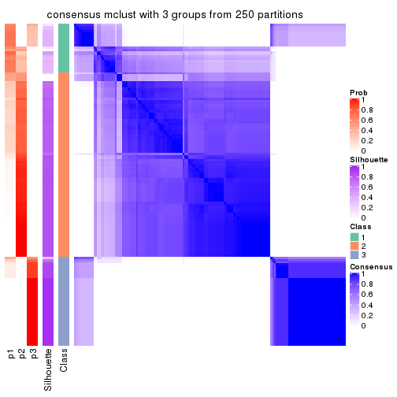
consensus_heatmap(res, k = 4)
consensus_heatmap(res, k = 5)
consensus_heatmap(res, k = 6)
Heatmaps for the membership of samples in all partitions to see how consistent they are:
membership_heatmap(res, k = 2)
membership_heatmap(res, k = 3)
membership_heatmap(res, k = 4)
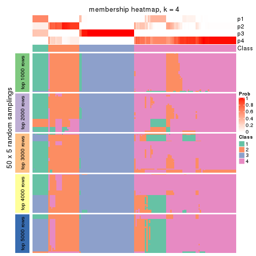
membership_heatmap(res, k = 5)
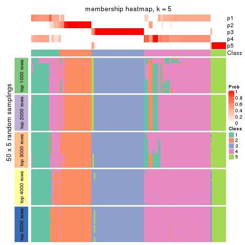
membership_heatmap(res, k = 6)
As soon as we have had the classes for columns, we can look for signatures
which are significantly different between classes which can be candidate marks
for certain classes. Following are the heatmaps for signatures.
Signature heatmaps where rows are scaled:
get_signatures(res, k = 2)
get_signatures(res, k = 3)
get_signatures(res, k = 4)
get_signatures(res, k = 5)
get_signatures(res, k = 6)
Signature heatmaps where rows are not scaled:
get_signatures(res, k = 2, scale_rows = FALSE)
get_signatures(res, k = 3, scale_rows = FALSE)
get_signatures(res, k = 4, scale_rows = FALSE)
get_signatures(res, k = 5, scale_rows = FALSE)
get_signatures(res, k = 6, scale_rows = FALSE)
Compare the overlap of signatures from different k:
compare_signatures(res)
get_signature() returns a data frame invisibly. TO get the list of signatures, the function
call should be assigned to a variable explicitly. In following code, if plot argument is set
to FALSE, no heatmap is plotted while only the differential analysis is performed.
# code only for demonstration
tb = get_signature(res, k = ..., plot = FALSE)
An example of the output of tb is:
#> which_row fdr mean_1 mean_2 scaled_mean_1 scaled_mean_2 km
#> 1 38 0.042760348 8.373488 9.131774 -0.5533452 0.5164555 1
#> 2 40 0.018707592 7.106213 8.469186 -0.6173731 0.5762149 1
#> 3 55 0.019134737 10.221463 11.207825 -0.6159697 0.5749050 1
#> 4 59 0.006059896 5.921854 7.869574 -0.6899429 0.6439467 1
#> 5 60 0.018055526 8.928898 10.211722 -0.6204761 0.5791110 1
#> 6 98 0.009384629 15.714769 14.887706 0.6635654 -0.6193277 2
...
The columns in tb are:
which_row: row indices corresponding to the input matrix.fdr: FDR for the differential test. mean_x: The mean value in group x.scaled_mean_x: The mean value in group x after rows are scaled.km: Row groups if k-means clustering is applied to rows.
UMAP plot which shows how samples are separated.
dimension_reduction(res, k = 2, method = "UMAP")
dimension_reduction(res, k = 3, method = "UMAP")
dimension_reduction(res, k = 4, method = "UMAP")
dimension_reduction(res, k = 5, method = "UMAP")
dimension_reduction(res, k = 6, method = "UMAP")
Following heatmap shows how subgroups are split when increasing k:
collect_classes(res)
If matrix rows can be associated to genes, consider to use functional_enrichment(res,
...) to perform function enrichment for the signature genes. See this vignette for more detailed explanations.
SD:NMF**
The object with results only for a single top-value method and a single partition method
can be extracted as:
res = res_list["SD", "NMF"]
# you can also extract it by
# res = res_list["SD:NMF"]
A summary of res and all the functions that can be applied to it:
res
#> A 'ConsensusPartition' object with k = 2, 3, 4, 5, 6.
#> On a matrix with 15148 rows and 152 columns.
#> Top rows (1000, 2000, 3000, 4000, 5000) are extracted by 'SD' method.
#> Subgroups are detected by 'NMF' method.
#> Performed in total 1250 partitions by row resampling.
#> Best k for subgroups seems to be 3.
#>
#> Following methods can be applied to this 'ConsensusPartition' object:
#> [1] "cola_report" "collect_classes" "collect_plots"
#> [4] "collect_stats" "colnames" "compare_signatures"
#> [7] "consensus_heatmap" "dimension_reduction" "functional_enrichment"
#> [10] "get_anno_col" "get_anno" "get_classes"
#> [13] "get_consensus" "get_matrix" "get_membership"
#> [16] "get_param" "get_signatures" "get_stats"
#> [19] "is_best_k" "is_stable_k" "membership_heatmap"
#> [22] "ncol" "nrow" "plot_ecdf"
#> [25] "rownames" "select_partition_number" "show"
#> [28] "suggest_best_k" "test_to_known_factors"
collect_plots() function collects all the plots made from res for all k (number of partitions)
into one single page to provide an easy and fast comparison between different k.
collect_plots(res)
The plots are:
- The first row: a plot of the ECDF (empirical cumulative distribution
function) curves of the consensus matrix for each
k and the heatmap of
predicted classes for each k.
- The second row: heatmaps of the consensus matrix for each
k.
- The third row: heatmaps of the membership matrix for each
k.
- The fouth row: heatmaps of the signatures for each
k.
All the plots in panels can be made by individual functions and they are
plotted later in this section.
select_partition_number() produces several plots showing different
statistics for choosing “optimized” k. There are following statistics:
- ECDF curves of the consensus matrix for each
k;
- 1-PAC. The PAC
score
measures the proportion of the ambiguous subgrouping.
- Mean silhouette score.
- Concordance. The mean probability of fiting the consensus class ids in all
partitions.
- Area increased. Denote \(A_k\) as the area under the ECDF curve for current
k, the area increased is defined as \(A_k - A_{k-1}\).
- Rand index. The percent of pairs of samples that are both in a same cluster
or both are not in a same cluster in the partition of k and k-1.
- Jaccard index. The ratio of pairs of samples are both in a same cluster in
the partition of k and k-1 and the pairs of samples are both in a same
cluster in the partition k or k-1.
The detailed explanations of these statistics can be found in the cola
vignette.
Generally speaking, lower PAC score, higher mean silhouette score or higher
concordance corresponds to better partition. Rand index and Jaccard index
measure how similar the current partition is compared to partition with k-1.
If they are too similar, we won't accept k is better than k-1.
select_partition_number(res)
The numeric values for all these statistics can be obtained by get_stats().
get_stats(res)
#> k 1-PAC mean_silhouette concordance area_increased Rand Jaccard
#> 2 2 0.816 0.915 0.962 0.4712 0.528 0.528
#> 3 3 0.973 0.936 0.974 0.4036 0.699 0.484
#> 4 4 0.751 0.738 0.889 0.1044 0.855 0.614
#> 5 5 0.683 0.651 0.831 0.0681 0.867 0.572
#> 6 6 0.702 0.621 0.800 0.0462 0.895 0.586
suggest_best_k() suggests the best \(k\) based on these statistics. The rules are as follows:
- All \(k\) with Jaccard index larger than 0.95 are removed because increasing
\(k\) does not provide enough extra information. If all \(k\) are removed, it is
marked as no subgroup is detected.
- For all \(k\) with 1-PAC score larger than 0.9, the maximal \(k\) is taken as
the best \(k\), and other \(k\) are marked as optional \(k\).
- If it does not fit the second rule. The \(k\) with the maximal vote of the
highest 1-PAC score, highest mean silhouette, and highest concordance is
taken as the best \(k\).
suggest_best_k(res)
#> [1] 3
Following shows the table of the partitions (You need to click the show/hide
code output link to see it). The membership matrix (columns with name p*)
is inferred by
clue::cl_consensus()
function with the SE method. Basically the value in the membership matrix
represents the probability to belong to a certain group. The finall class
label for an item is determined with the group with highest probability it
belongs to.
In get_classes() function, the entropy is calculated from the membership
matrix and the silhouette score is calculated from the consensus matrix.
show/hide code output
cbind(get_classes(res, k = 2), get_membership(res, k = 2))
#> class entropy silhouette p1 p2
#> SRR1947547 1 0.0000 0.9455 1.000 0.000
#> SRR1947546 2 0.0000 0.9677 0.000 1.000
#> SRR1947545 1 0.0000 0.9455 1.000 0.000
#> SRR1947544 1 0.0000 0.9455 1.000 0.000
#> SRR1947542 2 0.0000 0.9677 0.000 1.000
#> SRR1947541 1 0.5842 0.8384 0.860 0.140
#> SRR1947540 2 0.0000 0.9677 0.000 1.000
#> SRR1947539 2 0.0000 0.9677 0.000 1.000
#> SRR1947538 2 0.9661 0.3571 0.392 0.608
#> SRR1947537 2 0.0672 0.9619 0.008 0.992
#> SRR1947536 1 0.7219 0.7727 0.800 0.200
#> SRR1947535 2 0.0000 0.9677 0.000 1.000
#> SRR1947534 1 0.0000 0.9455 1.000 0.000
#> SRR1947533 2 0.0000 0.9677 0.000 1.000
#> SRR1947532 1 0.0000 0.9455 1.000 0.000
#> SRR1947531 2 0.0000 0.9677 0.000 1.000
#> SRR1947530 1 0.0000 0.9455 1.000 0.000
#> SRR1947529 2 0.0000 0.9677 0.000 1.000
#> SRR1947528 1 0.1184 0.9365 0.984 0.016
#> SRR1947527 2 0.0000 0.9677 0.000 1.000
#> SRR1947526 2 0.0000 0.9677 0.000 1.000
#> SRR1947525 2 0.1414 0.9525 0.020 0.980
#> SRR1947524 2 0.0000 0.9677 0.000 1.000
#> SRR1947523 2 0.3114 0.9178 0.056 0.944
#> SRR1947521 2 0.0000 0.9677 0.000 1.000
#> SRR1947520 2 0.0000 0.9677 0.000 1.000
#> SRR1947519 2 0.9248 0.4578 0.340 0.660
#> SRR1947518 1 0.6048 0.8209 0.852 0.148
#> SRR1947517 2 0.8555 0.5928 0.280 0.720
#> SRR1947516 2 0.0000 0.9677 0.000 1.000
#> SRR1947515 1 0.8909 0.5655 0.692 0.308
#> SRR1947514 2 0.0000 0.9677 0.000 1.000
#> SRR1947513 1 0.0000 0.9455 1.000 0.000
#> SRR1947512 1 0.0000 0.9455 1.000 0.000
#> SRR1947511 2 0.0000 0.9677 0.000 1.000
#> SRR1947510 2 0.0000 0.9677 0.000 1.000
#> SRR1947572 1 0.6438 0.8016 0.836 0.164
#> SRR1947611 2 0.0000 0.9677 0.000 1.000
#> SRR1947509 1 0.7528 0.7520 0.784 0.216
#> SRR1947644 2 0.0000 0.9677 0.000 1.000
#> SRR1947643 2 0.0000 0.9677 0.000 1.000
#> SRR1947642 2 0.1843 0.9447 0.028 0.972
#> SRR1947640 1 0.9993 0.0753 0.516 0.484
#> SRR1947641 2 0.0000 0.9677 0.000 1.000
#> SRR1947639 2 0.7219 0.7443 0.200 0.800
#> SRR1947638 1 0.0000 0.9455 1.000 0.000
#> SRR1947637 2 0.0000 0.9677 0.000 1.000
#> SRR1947636 2 0.4562 0.8752 0.096 0.904
#> SRR1947635 2 0.0000 0.9677 0.000 1.000
#> SRR1947634 2 0.0000 0.9677 0.000 1.000
#> SRR1947633 2 0.0000 0.9677 0.000 1.000
#> SRR1947632 2 0.0000 0.9677 0.000 1.000
#> SRR1947631 2 0.0000 0.9677 0.000 1.000
#> SRR1947629 2 0.0000 0.9677 0.000 1.000
#> SRR1947630 2 0.0000 0.9677 0.000 1.000
#> SRR1947627 1 0.7219 0.7727 0.800 0.200
#> SRR1947628 2 0.0000 0.9677 0.000 1.000
#> SRR1947626 2 0.0000 0.9677 0.000 1.000
#> SRR1947625 2 0.0000 0.9677 0.000 1.000
#> SRR1947624 2 0.0000 0.9677 0.000 1.000
#> SRR1947623 1 0.0000 0.9455 1.000 0.000
#> SRR1947622 2 0.0000 0.9677 0.000 1.000
#> SRR1947621 2 0.0000 0.9677 0.000 1.000
#> SRR1947620 1 0.0000 0.9455 1.000 0.000
#> SRR1947619 2 0.3274 0.9146 0.060 0.940
#> SRR1947617 2 0.0000 0.9677 0.000 1.000
#> SRR1947618 1 0.0000 0.9455 1.000 0.000
#> SRR1947616 2 0.0000 0.9677 0.000 1.000
#> SRR1947615 1 0.1184 0.9364 0.984 0.016
#> SRR1947614 2 0.0000 0.9677 0.000 1.000
#> SRR1947613 1 0.0000 0.9455 1.000 0.000
#> SRR1947610 2 0.1414 0.9524 0.020 0.980
#> SRR1947612 2 0.0000 0.9677 0.000 1.000
#> SRR1947609 1 0.0000 0.9455 1.000 0.000
#> SRR1947608 2 0.0000 0.9677 0.000 1.000
#> SRR1947606 1 0.6148 0.8262 0.848 0.152
#> SRR1947607 1 0.0000 0.9455 1.000 0.000
#> SRR1947604 1 0.1414 0.9332 0.980 0.020
#> SRR1947605 1 0.0000 0.9455 1.000 0.000
#> SRR1947603 2 0.0000 0.9677 0.000 1.000
#> SRR1947602 1 0.0000 0.9455 1.000 0.000
#> SRR1947600 2 0.0000 0.9677 0.000 1.000
#> SRR1947601 2 0.0000 0.9677 0.000 1.000
#> SRR1947598 2 0.0000 0.9677 0.000 1.000
#> SRR1947599 1 0.0000 0.9455 1.000 0.000
#> SRR1947597 2 0.0000 0.9677 0.000 1.000
#> SRR1947596 1 0.0000 0.9455 1.000 0.000
#> SRR1947595 2 0.0000 0.9677 0.000 1.000
#> SRR1947594 1 0.0000 0.9455 1.000 0.000
#> SRR1947592 2 0.0000 0.9677 0.000 1.000
#> SRR1947591 2 0.0000 0.9677 0.000 1.000
#> SRR1947590 1 0.0000 0.9455 1.000 0.000
#> SRR1947588 1 0.0000 0.9455 1.000 0.000
#> SRR1947587 1 0.7674 0.7420 0.776 0.224
#> SRR1947586 2 0.0000 0.9677 0.000 1.000
#> SRR1947585 2 0.0000 0.9677 0.000 1.000
#> SRR1947584 1 0.0000 0.9455 1.000 0.000
#> SRR1947583 2 0.0672 0.9618 0.008 0.992
#> SRR1947582 1 0.0000 0.9455 1.000 0.000
#> SRR1947580 2 0.0000 0.9677 0.000 1.000
#> SRR1947581 1 0.0000 0.9455 1.000 0.000
#> SRR1947576 2 0.0000 0.9677 0.000 1.000
#> SRR1947575 2 0.0000 0.9677 0.000 1.000
#> SRR1947579 2 0.0000 0.9677 0.000 1.000
#> SRR1947578 2 0.0000 0.9677 0.000 1.000
#> SRR1947573 2 0.0000 0.9677 0.000 1.000
#> SRR1947574 1 0.6531 0.8085 0.832 0.168
#> SRR1947571 2 0.8327 0.6431 0.264 0.736
#> SRR1947577 1 0.0000 0.9455 1.000 0.000
#> SRR1947570 1 0.0000 0.9455 1.000 0.000
#> SRR1947569 2 0.0000 0.9677 0.000 1.000
#> SRR1947566 2 0.0000 0.9677 0.000 1.000
#> SRR1947567 2 0.0000 0.9677 0.000 1.000
#> SRR1947568 2 0.8207 0.6577 0.256 0.744
#> SRR1947564 2 0.0000 0.9677 0.000 1.000
#> SRR1947563 2 0.0000 0.9677 0.000 1.000
#> SRR1947562 2 0.1184 0.9556 0.016 0.984
#> SRR1947565 2 0.0000 0.9677 0.000 1.000
#> SRR1947559 2 0.0000 0.9677 0.000 1.000
#> SRR1947560 2 0.0000 0.9677 0.000 1.000
#> SRR1947561 2 0.0000 0.9677 0.000 1.000
#> SRR1947557 1 0.0000 0.9455 1.000 0.000
#> SRR1947558 2 0.0000 0.9677 0.000 1.000
#> SRR1947556 1 0.0000 0.9455 1.000 0.000
#> SRR1947553 2 0.0000 0.9677 0.000 1.000
#> SRR1947554 1 0.0000 0.9455 1.000 0.000
#> SRR1947555 2 0.0000 0.9677 0.000 1.000
#> SRR1947550 2 0.1414 0.9525 0.020 0.980
#> SRR1947552 1 0.0000 0.9455 1.000 0.000
#> SRR1947549 2 0.0000 0.9677 0.000 1.000
#> SRR1947551 2 0.0000 0.9677 0.000 1.000
#> SRR1947548 2 0.6887 0.7685 0.184 0.816
#> SRR1947506 1 0.0000 0.9455 1.000 0.000
#> SRR1947507 1 0.0000 0.9455 1.000 0.000
#> SRR1947504 1 0.0000 0.9455 1.000 0.000
#> SRR1947503 1 0.0000 0.9455 1.000 0.000
#> SRR1947502 2 0.0000 0.9677 0.000 1.000
#> SRR1947501 2 0.0000 0.9677 0.000 1.000
#> SRR1947499 1 0.0000 0.9455 1.000 0.000
#> SRR1947498 2 0.6623 0.7765 0.172 0.828
#> SRR1947508 1 0.7219 0.7727 0.800 0.200
#> SRR1947505 2 0.0672 0.9617 0.008 0.992
#> SRR1947497 2 0.0000 0.9677 0.000 1.000
#> SRR1947496 1 0.0000 0.9455 1.000 0.000
#> SRR1947495 2 0.0000 0.9677 0.000 1.000
#> SRR1947494 1 0.7883 0.7225 0.764 0.236
#> SRR1947493 1 0.0000 0.9455 1.000 0.000
#> SRR1947492 1 0.0000 0.9455 1.000 0.000
#> SRR1947500 2 0.0000 0.9677 0.000 1.000
#> SRR1947491 2 0.9608 0.3432 0.384 0.616
#> SRR1947490 1 0.0000 0.9455 1.000 0.000
#> SRR1947489 1 0.0376 0.9433 0.996 0.004
show/hide code output
cbind(get_classes(res, k = 3), get_membership(res, k = 3))
#> class entropy silhouette p1 p2 p3
#> SRR1947547 3 0.6260 0.189 0.448 0.000 0.552
#> SRR1947546 2 0.0000 0.979 0.000 1.000 0.000
#> SRR1947545 1 0.0000 0.962 1.000 0.000 0.000
#> SRR1947544 1 0.0000 0.962 1.000 0.000 0.000
#> SRR1947542 2 0.0000 0.979 0.000 1.000 0.000
#> SRR1947541 3 0.0424 0.966 0.008 0.000 0.992
#> SRR1947540 2 0.0000 0.979 0.000 1.000 0.000
#> SRR1947539 3 0.0000 0.971 0.000 0.000 1.000
#> SRR1947538 2 0.0892 0.963 0.020 0.980 0.000
#> SRR1947537 3 0.0000 0.971 0.000 0.000 1.000
#> SRR1947536 3 0.1529 0.942 0.040 0.000 0.960
#> SRR1947535 3 0.0000 0.971 0.000 0.000 1.000
#> SRR1947534 1 0.6140 0.346 0.596 0.404 0.000
#> SRR1947533 2 0.0000 0.979 0.000 1.000 0.000
#> SRR1947532 1 0.1529 0.932 0.960 0.040 0.000
#> SRR1947531 2 0.0000 0.979 0.000 1.000 0.000
#> SRR1947530 1 0.0000 0.962 1.000 0.000 0.000
#> SRR1947529 2 0.0000 0.979 0.000 1.000 0.000
#> SRR1947528 3 0.0892 0.958 0.020 0.000 0.980
#> SRR1947527 2 0.0000 0.979 0.000 1.000 0.000
#> SRR1947526 2 0.0000 0.979 0.000 1.000 0.000
#> SRR1947525 2 0.0000 0.979 0.000 1.000 0.000
#> SRR1947524 3 0.0000 0.971 0.000 0.000 1.000
#> SRR1947523 2 0.1964 0.927 0.056 0.944 0.000
#> SRR1947521 3 0.0000 0.971 0.000 0.000 1.000
#> SRR1947520 2 0.0000 0.979 0.000 1.000 0.000
#> SRR1947519 3 0.0000 0.971 0.000 0.000 1.000
#> SRR1947518 2 0.4842 0.700 0.224 0.776 0.000
#> SRR1947517 3 0.0000 0.971 0.000 0.000 1.000
#> SRR1947516 2 0.0000 0.979 0.000 1.000 0.000
#> SRR1947515 1 0.4370 0.857 0.868 0.076 0.056
#> SRR1947514 2 0.0000 0.979 0.000 1.000 0.000
#> SRR1947513 1 0.0000 0.962 1.000 0.000 0.000
#> SRR1947512 1 0.0000 0.962 1.000 0.000 0.000
#> SRR1947511 2 0.0000 0.979 0.000 1.000 0.000
#> SRR1947510 3 0.0000 0.971 0.000 0.000 1.000
#> SRR1947572 2 0.6111 0.324 0.396 0.604 0.000
#> SRR1947611 3 0.0000 0.971 0.000 0.000 1.000
#> SRR1947509 3 0.1031 0.955 0.024 0.000 0.976
#> SRR1947644 3 0.0000 0.971 0.000 0.000 1.000
#> SRR1947643 2 0.0000 0.979 0.000 1.000 0.000
#> SRR1947642 3 0.0000 0.971 0.000 0.000 1.000
#> SRR1947640 2 0.0000 0.979 0.000 1.000 0.000
#> SRR1947641 3 0.0000 0.971 0.000 0.000 1.000
#> SRR1947639 2 0.0000 0.979 0.000 1.000 0.000
#> SRR1947638 1 0.0000 0.962 1.000 0.000 0.000
#> SRR1947637 3 0.0000 0.971 0.000 0.000 1.000
#> SRR1947636 3 0.0000 0.971 0.000 0.000 1.000
#> SRR1947635 2 0.0000 0.979 0.000 1.000 0.000
#> SRR1947634 2 0.0000 0.979 0.000 1.000 0.000
#> SRR1947633 3 0.0000 0.971 0.000 0.000 1.000
#> SRR1947632 2 0.0747 0.968 0.000 0.984 0.016
#> SRR1947631 3 0.0000 0.971 0.000 0.000 1.000
#> SRR1947629 3 0.0000 0.971 0.000 0.000 1.000
#> SRR1947630 2 0.0000 0.979 0.000 1.000 0.000
#> SRR1947627 3 0.0747 0.961 0.016 0.000 0.984
#> SRR1947628 2 0.0424 0.974 0.000 0.992 0.008
#> SRR1947626 2 0.0000 0.979 0.000 1.000 0.000
#> SRR1947625 3 0.0000 0.971 0.000 0.000 1.000
#> SRR1947624 2 0.0237 0.977 0.000 0.996 0.004
#> SRR1947623 1 0.1411 0.936 0.964 0.036 0.000
#> SRR1947622 2 0.0000 0.979 0.000 1.000 0.000
#> SRR1947621 2 0.0000 0.979 0.000 1.000 0.000
#> SRR1947620 1 0.0000 0.962 1.000 0.000 0.000
#> SRR1947619 3 0.0000 0.971 0.000 0.000 1.000
#> SRR1947617 2 0.0000 0.979 0.000 1.000 0.000
#> SRR1947618 1 0.0000 0.962 1.000 0.000 0.000
#> SRR1947616 2 0.0892 0.965 0.000 0.980 0.020
#> SRR1947615 3 0.2959 0.882 0.100 0.000 0.900
#> SRR1947614 3 0.0000 0.971 0.000 0.000 1.000
#> SRR1947613 1 0.0000 0.962 1.000 0.000 0.000
#> SRR1947610 2 0.0000 0.979 0.000 1.000 0.000
#> SRR1947612 2 0.0000 0.979 0.000 1.000 0.000
#> SRR1947609 1 0.0000 0.962 1.000 0.000 0.000
#> SRR1947608 3 0.0000 0.971 0.000 0.000 1.000
#> SRR1947606 3 0.0592 0.964 0.012 0.000 0.988
#> SRR1947607 1 0.0892 0.949 0.980 0.020 0.000
#> SRR1947604 1 0.6280 0.180 0.540 0.460 0.000
#> SRR1947605 1 0.0000 0.962 1.000 0.000 0.000
#> SRR1947603 2 0.0424 0.974 0.000 0.992 0.008
#> SRR1947602 1 0.0000 0.962 1.000 0.000 0.000
#> SRR1947600 3 0.0000 0.971 0.000 0.000 1.000
#> SRR1947601 2 0.0237 0.977 0.000 0.996 0.004
#> SRR1947598 3 0.6432 0.227 0.004 0.428 0.568
#> SRR1947599 1 0.0000 0.962 1.000 0.000 0.000
#> SRR1947597 2 0.0000 0.979 0.000 1.000 0.000
#> SRR1947596 1 0.0000 0.962 1.000 0.000 0.000
#> SRR1947595 2 0.0000 0.979 0.000 1.000 0.000
#> SRR1947594 1 0.0000 0.962 1.000 0.000 0.000
#> SRR1947592 3 0.0000 0.971 0.000 0.000 1.000
#> SRR1947591 2 0.0000 0.979 0.000 1.000 0.000
#> SRR1947590 1 0.0000 0.962 1.000 0.000 0.000
#> SRR1947588 1 0.0000 0.962 1.000 0.000 0.000
#> SRR1947587 3 0.0237 0.969 0.004 0.000 0.996
#> SRR1947586 2 0.0000 0.979 0.000 1.000 0.000
#> SRR1947585 3 0.0000 0.971 0.000 0.000 1.000
#> SRR1947584 1 0.0000 0.962 1.000 0.000 0.000
#> SRR1947583 2 0.0000 0.979 0.000 1.000 0.000
#> SRR1947582 1 0.0000 0.962 1.000 0.000 0.000
#> SRR1947580 2 0.0000 0.979 0.000 1.000 0.000
#> SRR1947581 1 0.0000 0.962 1.000 0.000 0.000
#> SRR1947576 3 0.0000 0.971 0.000 0.000 1.000
#> SRR1947575 3 0.0000 0.971 0.000 0.000 1.000
#> SRR1947579 3 0.0000 0.971 0.000 0.000 1.000
#> SRR1947578 2 0.0592 0.971 0.000 0.988 0.012
#> SRR1947573 3 0.0000 0.971 0.000 0.000 1.000
#> SRR1947574 2 0.1289 0.952 0.032 0.968 0.000
#> SRR1947571 2 0.0000 0.979 0.000 1.000 0.000
#> SRR1947577 1 0.0000 0.962 1.000 0.000 0.000
#> SRR1947570 1 0.0000 0.962 1.000 0.000 0.000
#> SRR1947569 3 0.0000 0.971 0.000 0.000 1.000
#> SRR1947566 2 0.0424 0.974 0.000 0.992 0.008
#> SRR1947567 2 0.0000 0.979 0.000 1.000 0.000
#> SRR1947568 2 0.0000 0.979 0.000 1.000 0.000
#> SRR1947564 2 0.0000 0.979 0.000 1.000 0.000
#> SRR1947563 3 0.0000 0.971 0.000 0.000 1.000
#> SRR1947562 2 0.0000 0.979 0.000 1.000 0.000
#> SRR1947565 3 0.0000 0.971 0.000 0.000 1.000
#> SRR1947559 2 0.0000 0.979 0.000 1.000 0.000
#> SRR1947560 3 0.0000 0.971 0.000 0.000 1.000
#> SRR1947561 2 0.0000 0.979 0.000 1.000 0.000
#> SRR1947557 1 0.0000 0.962 1.000 0.000 0.000
#> SRR1947558 3 0.0000 0.971 0.000 0.000 1.000
#> SRR1947556 1 0.0000 0.962 1.000 0.000 0.000
#> SRR1947553 2 0.0000 0.979 0.000 1.000 0.000
#> SRR1947554 1 0.0592 0.954 0.988 0.012 0.000
#> SRR1947555 2 0.0747 0.968 0.000 0.984 0.016
#> SRR1947550 2 0.0000 0.979 0.000 1.000 0.000
#> SRR1947552 1 0.1643 0.928 0.956 0.044 0.000
#> SRR1947549 3 0.0000 0.971 0.000 0.000 1.000
#> SRR1947551 3 0.0000 0.971 0.000 0.000 1.000
#> SRR1947548 2 0.1015 0.967 0.012 0.980 0.008
#> SRR1947506 1 0.2959 0.866 0.900 0.000 0.100
#> SRR1947507 1 0.0000 0.962 1.000 0.000 0.000
#> SRR1947504 1 0.0592 0.954 0.988 0.012 0.000
#> SRR1947503 1 0.0000 0.962 1.000 0.000 0.000
#> SRR1947502 2 0.0000 0.979 0.000 1.000 0.000
#> SRR1947501 2 0.0747 0.968 0.000 0.984 0.016
#> SRR1947499 1 0.0000 0.962 1.000 0.000 0.000
#> SRR1947498 3 0.0000 0.971 0.000 0.000 1.000
#> SRR1947508 3 0.1860 0.931 0.052 0.000 0.948
#> SRR1947505 2 0.6819 0.473 0.028 0.644 0.328
#> SRR1947497 2 0.0000 0.979 0.000 1.000 0.000
#> SRR1947496 1 0.0000 0.962 1.000 0.000 0.000
#> SRR1947495 2 0.0000 0.979 0.000 1.000 0.000
#> SRR1947494 1 0.4452 0.759 0.808 0.192 0.000
#> SRR1947493 1 0.0000 0.962 1.000 0.000 0.000
#> SRR1947492 1 0.0000 0.962 1.000 0.000 0.000
#> SRR1947500 2 0.0000 0.979 0.000 1.000 0.000
#> SRR1947491 2 0.1031 0.960 0.024 0.976 0.000
#> SRR1947490 1 0.0000 0.962 1.000 0.000 0.000
#> SRR1947489 3 0.3551 0.845 0.132 0.000 0.868
show/hide code output
cbind(get_classes(res, k = 4), get_membership(res, k = 4))
#> class entropy silhouette p1 p2 p3 p4
#> SRR1947547 4 0.4941 0.134 0.436 0.000 0.000 0.564
#> SRR1947546 2 0.2973 0.778 0.000 0.856 0.000 0.144
#> SRR1947545 1 0.0000 0.916 1.000 0.000 0.000 0.000
#> SRR1947544 1 0.0000 0.916 1.000 0.000 0.000 0.000
#> SRR1947542 4 0.4907 0.361 0.000 0.420 0.000 0.580
#> SRR1947541 4 0.4546 0.402 0.012 0.000 0.256 0.732
#> SRR1947540 2 0.0000 0.926 0.000 1.000 0.000 0.000
#> SRR1947539 3 0.3074 0.761 0.000 0.000 0.848 0.152
#> SRR1947538 2 0.5368 0.350 0.024 0.636 0.000 0.340
#> SRR1947537 4 0.0000 0.713 0.000 0.000 0.000 1.000
#> SRR1947536 3 0.5569 0.639 0.044 0.000 0.660 0.296
#> SRR1947535 4 0.0000 0.713 0.000 0.000 0.000 1.000
#> SRR1947534 1 0.4955 0.187 0.556 0.444 0.000 0.000
#> SRR1947533 2 0.0000 0.926 0.000 1.000 0.000 0.000
#> SRR1947532 4 0.5100 0.628 0.076 0.168 0.000 0.756
#> SRR1947531 2 0.0000 0.926 0.000 1.000 0.000 0.000
#> SRR1947530 1 0.0000 0.916 1.000 0.000 0.000 0.000
#> SRR1947529 2 0.0000 0.926 0.000 1.000 0.000 0.000
#> SRR1947528 4 0.7113 -0.301 0.128 0.000 0.416 0.456
#> SRR1947527 2 0.0000 0.926 0.000 1.000 0.000 0.000
#> SRR1947526 2 0.0336 0.921 0.000 0.992 0.008 0.000
#> SRR1947525 2 0.0000 0.926 0.000 1.000 0.000 0.000
#> SRR1947524 3 0.4972 0.420 0.000 0.000 0.544 0.456
#> SRR1947523 4 0.4830 0.424 0.000 0.392 0.000 0.608
#> SRR1947521 3 0.0000 0.815 0.000 0.000 1.000 0.000
#> SRR1947520 2 0.4304 0.642 0.000 0.716 0.284 0.000
#> SRR1947519 4 0.0000 0.713 0.000 0.000 0.000 1.000
#> SRR1947518 2 0.4585 0.493 0.332 0.668 0.000 0.000
#> SRR1947517 3 0.0000 0.815 0.000 0.000 1.000 0.000
#> SRR1947516 2 0.0000 0.926 0.000 1.000 0.000 0.000
#> SRR1947515 4 0.4646 0.647 0.084 0.120 0.000 0.796
#> SRR1947514 2 0.0000 0.926 0.000 1.000 0.000 0.000
#> SRR1947513 1 0.0000 0.916 1.000 0.000 0.000 0.000
#> SRR1947512 1 0.0000 0.916 1.000 0.000 0.000 0.000
#> SRR1947511 2 0.3649 0.748 0.000 0.796 0.204 0.000
#> SRR1947510 3 0.0000 0.815 0.000 0.000 1.000 0.000
#> SRR1947572 1 0.4941 0.205 0.564 0.436 0.000 0.000
#> SRR1947611 3 0.0000 0.815 0.000 0.000 1.000 0.000
#> SRR1947509 3 0.0000 0.815 0.000 0.000 1.000 0.000
#> SRR1947644 3 0.1211 0.806 0.000 0.000 0.960 0.040
#> SRR1947643 2 0.0000 0.926 0.000 1.000 0.000 0.000
#> SRR1947642 4 0.0707 0.704 0.000 0.000 0.020 0.980
#> SRR1947640 2 0.0000 0.926 0.000 1.000 0.000 0.000
#> SRR1947641 4 0.2868 0.596 0.000 0.000 0.136 0.864
#> SRR1947639 2 0.0000 0.926 0.000 1.000 0.000 0.000
#> SRR1947638 1 0.0000 0.916 1.000 0.000 0.000 0.000
#> SRR1947637 3 0.0000 0.815 0.000 0.000 1.000 0.000
#> SRR1947636 4 0.1792 0.672 0.000 0.000 0.068 0.932
#> SRR1947635 2 0.1940 0.859 0.000 0.924 0.000 0.076
#> SRR1947634 2 0.3688 0.743 0.000 0.792 0.208 0.000
#> SRR1947633 3 0.3610 0.734 0.000 0.000 0.800 0.200
#> SRR1947632 4 0.4454 0.566 0.000 0.308 0.000 0.692
#> SRR1947631 4 0.0000 0.713 0.000 0.000 0.000 1.000
#> SRR1947629 4 0.2704 0.618 0.000 0.000 0.124 0.876
#> SRR1947630 2 0.4948 0.348 0.000 0.560 0.440 0.000
#> SRR1947627 3 0.5231 0.649 0.028 0.000 0.676 0.296
#> SRR1947628 4 0.4977 0.259 0.000 0.460 0.000 0.540
#> SRR1947626 2 0.0000 0.926 0.000 1.000 0.000 0.000
#> SRR1947625 4 0.0000 0.713 0.000 0.000 0.000 1.000
#> SRR1947624 2 0.4761 0.494 0.000 0.628 0.372 0.000
#> SRR1947623 1 0.0707 0.899 0.980 0.020 0.000 0.000
#> SRR1947622 2 0.0000 0.926 0.000 1.000 0.000 0.000
#> SRR1947621 2 0.0000 0.926 0.000 1.000 0.000 0.000
#> SRR1947620 1 0.0000 0.916 1.000 0.000 0.000 0.000
#> SRR1947619 4 0.0000 0.713 0.000 0.000 0.000 1.000
#> SRR1947617 2 0.0000 0.926 0.000 1.000 0.000 0.000
#> SRR1947618 1 0.0000 0.916 1.000 0.000 0.000 0.000
#> SRR1947616 2 0.0000 0.926 0.000 1.000 0.000 0.000
#> SRR1947615 4 0.0000 0.713 0.000 0.000 0.000 1.000
#> SRR1947614 3 0.0000 0.815 0.000 0.000 1.000 0.000
#> SRR1947613 1 0.0000 0.916 1.000 0.000 0.000 0.000
#> SRR1947610 2 0.0000 0.926 0.000 1.000 0.000 0.000
#> SRR1947612 2 0.0000 0.926 0.000 1.000 0.000 0.000
#> SRR1947609 1 0.1302 0.883 0.956 0.000 0.000 0.044
#> SRR1947608 4 0.0000 0.713 0.000 0.000 0.000 1.000
#> SRR1947606 4 0.4999 0.208 0.012 0.000 0.328 0.660
#> SRR1947607 1 0.0336 0.910 0.992 0.008 0.000 0.000
#> SRR1947604 4 0.5659 0.450 0.032 0.368 0.000 0.600
#> SRR1947605 1 0.0000 0.916 1.000 0.000 0.000 0.000
#> SRR1947603 2 0.0469 0.918 0.000 0.988 0.000 0.012
#> SRR1947602 1 0.1716 0.858 0.936 0.000 0.000 0.064
#> SRR1947600 4 0.4941 -0.151 0.000 0.000 0.436 0.564
#> SRR1947601 2 0.3123 0.799 0.000 0.844 0.156 0.000
#> SRR1947598 4 0.3751 0.640 0.004 0.196 0.000 0.800
#> SRR1947599 1 0.4624 0.462 0.660 0.000 0.000 0.340
#> SRR1947597 2 0.0000 0.926 0.000 1.000 0.000 0.000
#> SRR1947596 1 0.4679 0.428 0.648 0.000 0.000 0.352
#> SRR1947595 2 0.3444 0.770 0.000 0.816 0.184 0.000
#> SRR1947594 1 0.0000 0.916 1.000 0.000 0.000 0.000
#> SRR1947592 4 0.4543 0.256 0.000 0.000 0.324 0.676
#> SRR1947591 2 0.0000 0.926 0.000 1.000 0.000 0.000
#> SRR1947590 4 0.4500 0.449 0.316 0.000 0.000 0.684
#> SRR1947588 1 0.0000 0.916 1.000 0.000 0.000 0.000
#> SRR1947587 4 0.0592 0.706 0.000 0.000 0.016 0.984
#> SRR1947586 2 0.0000 0.926 0.000 1.000 0.000 0.000
#> SRR1947585 3 0.4907 0.496 0.000 0.000 0.580 0.420
#> SRR1947584 1 0.0000 0.916 1.000 0.000 0.000 0.000
#> SRR1947583 2 0.0000 0.926 0.000 1.000 0.000 0.000
#> SRR1947582 1 0.0000 0.916 1.000 0.000 0.000 0.000
#> SRR1947580 2 0.0000 0.926 0.000 1.000 0.000 0.000
#> SRR1947581 1 0.0000 0.916 1.000 0.000 0.000 0.000
#> SRR1947576 3 0.0000 0.815 0.000 0.000 1.000 0.000
#> SRR1947575 4 0.0188 0.712 0.000 0.000 0.004 0.996
#> SRR1947579 3 0.0000 0.815 0.000 0.000 1.000 0.000
#> SRR1947578 2 0.0336 0.921 0.000 0.992 0.000 0.008
#> SRR1947573 3 0.4866 0.523 0.000 0.000 0.596 0.404
#> SRR1947574 2 0.3528 0.733 0.192 0.808 0.000 0.000
#> SRR1947571 4 0.4972 0.271 0.000 0.456 0.000 0.544
#> SRR1947577 1 0.0000 0.916 1.000 0.000 0.000 0.000
#> SRR1947570 1 0.4585 0.479 0.668 0.000 0.000 0.332
#> SRR1947569 4 0.0707 0.705 0.000 0.000 0.020 0.980
#> SRR1947566 2 0.0000 0.926 0.000 1.000 0.000 0.000
#> SRR1947567 2 0.0336 0.921 0.000 0.992 0.000 0.008
#> SRR1947568 2 0.0000 0.926 0.000 1.000 0.000 0.000
#> SRR1947564 2 0.0000 0.926 0.000 1.000 0.000 0.000
#> SRR1947563 4 0.0000 0.713 0.000 0.000 0.000 1.000
#> SRR1947562 2 0.4843 0.222 0.000 0.604 0.000 0.396
#> SRR1947565 4 0.1637 0.681 0.000 0.000 0.060 0.940
#> SRR1947559 2 0.0000 0.926 0.000 1.000 0.000 0.000
#> SRR1947560 3 0.0000 0.815 0.000 0.000 1.000 0.000
#> SRR1947561 2 0.0000 0.926 0.000 1.000 0.000 0.000
#> SRR1947557 1 0.0000 0.916 1.000 0.000 0.000 0.000
#> SRR1947558 4 0.0000 0.713 0.000 0.000 0.000 1.000
#> SRR1947556 1 0.0000 0.916 1.000 0.000 0.000 0.000
#> SRR1947553 2 0.0000 0.926 0.000 1.000 0.000 0.000
#> SRR1947554 1 0.0336 0.910 0.992 0.008 0.000 0.000
#> SRR1947555 2 0.0188 0.923 0.000 0.996 0.000 0.004
#> SRR1947550 2 0.0188 0.923 0.000 0.996 0.000 0.004
#> SRR1947552 4 0.5313 0.319 0.376 0.016 0.000 0.608
#> SRR1947549 4 0.3219 0.574 0.000 0.000 0.164 0.836
#> SRR1947551 3 0.0469 0.813 0.000 0.000 0.988 0.012
#> SRR1947548 4 0.3837 0.624 0.000 0.224 0.000 0.776
#> SRR1947506 1 0.2647 0.797 0.880 0.000 0.000 0.120
#> SRR1947507 1 0.0000 0.916 1.000 0.000 0.000 0.000
#> SRR1947504 1 0.0000 0.916 1.000 0.000 0.000 0.000
#> SRR1947503 1 0.0000 0.916 1.000 0.000 0.000 0.000
#> SRR1947502 2 0.0000 0.926 0.000 1.000 0.000 0.000
#> SRR1947501 4 0.4431 0.569 0.000 0.304 0.000 0.696
#> SRR1947499 1 0.0000 0.916 1.000 0.000 0.000 0.000
#> SRR1947498 3 0.4866 0.527 0.000 0.000 0.596 0.404
#> SRR1947508 3 0.7458 0.377 0.176 0.000 0.444 0.380
#> SRR1947505 4 0.4134 0.601 0.000 0.260 0.000 0.740
#> SRR1947497 2 0.0000 0.926 0.000 1.000 0.000 0.000
#> SRR1947496 1 0.0000 0.916 1.000 0.000 0.000 0.000
#> SRR1947495 2 0.0000 0.926 0.000 1.000 0.000 0.000
#> SRR1947494 1 0.5138 0.316 0.600 0.008 0.000 0.392
#> SRR1947493 1 0.0000 0.916 1.000 0.000 0.000 0.000
#> SRR1947492 1 0.0000 0.916 1.000 0.000 0.000 0.000
#> SRR1947500 2 0.0000 0.926 0.000 1.000 0.000 0.000
#> SRR1947491 2 0.0592 0.915 0.016 0.984 0.000 0.000
#> SRR1947490 1 0.0000 0.916 1.000 0.000 0.000 0.000
#> SRR1947489 4 0.0000 0.713 0.000 0.000 0.000 1.000
show/hide code output
cbind(get_classes(res, k = 5), get_membership(res, k = 5))
#> class entropy silhouette p1 p2 p3 p4 p5
#> SRR1947547 4 0.2648 0.6666 0.000 0.000 0.152 0.848 0.000
#> SRR1947546 2 0.3906 0.7838 0.000 0.804 0.084 0.112 0.000
#> SRR1947545 1 0.0703 0.8808 0.976 0.000 0.000 0.024 0.000
#> SRR1947544 1 0.0000 0.8972 1.000 0.000 0.000 0.000 0.000
#> SRR1947542 3 0.4901 0.5547 0.000 0.168 0.716 0.116 0.000
#> SRR1947541 4 0.3318 0.6413 0.000 0.000 0.192 0.800 0.008
#> SRR1947540 2 0.2771 0.8190 0.000 0.860 0.012 0.128 0.000
#> SRR1947539 5 0.3992 0.6342 0.000 0.000 0.268 0.012 0.720
#> SRR1947538 1 0.7639 0.1029 0.444 0.116 0.320 0.120 0.000
#> SRR1947537 3 0.0404 0.6635 0.000 0.000 0.988 0.012 0.000
#> SRR1947536 4 0.3318 0.6348 0.000 0.000 0.192 0.800 0.008
#> SRR1947535 3 0.1043 0.6627 0.000 0.000 0.960 0.040 0.000
#> SRR1947534 2 0.4305 0.0626 0.488 0.512 0.000 0.000 0.000
#> SRR1947533 2 0.0000 0.8741 0.000 1.000 0.000 0.000 0.000
#> SRR1947532 3 0.6118 0.5108 0.084 0.060 0.648 0.208 0.000
#> SRR1947531 2 0.2612 0.8238 0.000 0.868 0.008 0.124 0.000
#> SRR1947530 4 0.2813 0.6840 0.168 0.000 0.000 0.832 0.000
#> SRR1947529 2 0.0000 0.8741 0.000 1.000 0.000 0.000 0.000
#> SRR1947528 4 0.5589 0.4537 0.008 0.000 0.296 0.616 0.080
#> SRR1947527 2 0.0000 0.8741 0.000 1.000 0.000 0.000 0.000
#> SRR1947526 2 0.0000 0.8741 0.000 1.000 0.000 0.000 0.000
#> SRR1947525 2 0.5460 0.5376 0.196 0.656 0.148 0.000 0.000
#> SRR1947524 5 0.6114 0.4555 0.000 0.000 0.312 0.152 0.536
#> SRR1947523 4 0.4866 0.1594 0.000 0.392 0.028 0.580 0.000
#> SRR1947521 5 0.0451 0.7482 0.000 0.000 0.008 0.004 0.988
#> SRR1947520 2 0.3661 0.6644 0.000 0.724 0.000 0.000 0.276
#> SRR1947519 4 0.3452 0.5943 0.000 0.000 0.244 0.756 0.000
#> SRR1947518 1 0.1386 0.8605 0.952 0.032 0.000 0.016 0.000
#> SRR1947517 5 0.0000 0.7473 0.000 0.000 0.000 0.000 1.000
#> SRR1947516 2 0.0162 0.8739 0.000 0.996 0.004 0.000 0.000
#> SRR1947515 3 0.4407 0.5789 0.004 0.064 0.760 0.172 0.000
#> SRR1947514 2 0.0000 0.8741 0.000 1.000 0.000 0.000 0.000
#> SRR1947513 4 0.5480 0.4734 0.288 0.096 0.000 0.616 0.000
#> SRR1947512 1 0.0000 0.8972 1.000 0.000 0.000 0.000 0.000
#> SRR1947511 2 0.1908 0.8296 0.000 0.908 0.000 0.000 0.092
#> SRR1947510 5 0.0162 0.7479 0.000 0.000 0.004 0.000 0.996
#> SRR1947572 1 0.0162 0.8942 0.996 0.004 0.000 0.000 0.000
#> SRR1947611 5 0.0000 0.7473 0.000 0.000 0.000 0.000 1.000
#> SRR1947509 5 0.0609 0.7460 0.000 0.000 0.000 0.020 0.980
#> SRR1947644 5 0.3596 0.6763 0.000 0.000 0.212 0.012 0.776
#> SRR1947643 2 0.0000 0.8741 0.000 1.000 0.000 0.000 0.000
#> SRR1947642 4 0.3003 0.6480 0.000 0.000 0.188 0.812 0.000
#> SRR1947640 2 0.2719 0.8117 0.000 0.852 0.004 0.144 0.000
#> SRR1947641 3 0.5825 0.1789 0.000 0.000 0.536 0.360 0.104
#> SRR1947639 2 0.6691 0.2208 0.352 0.476 0.156 0.016 0.000
#> SRR1947638 4 0.5939 0.4798 0.276 0.148 0.000 0.576 0.000
#> SRR1947637 5 0.2516 0.7133 0.000 0.000 0.140 0.000 0.860
#> SRR1947636 3 0.2331 0.6203 0.000 0.000 0.900 0.020 0.080
#> SRR1947635 2 0.2516 0.8171 0.000 0.860 0.000 0.140 0.000
#> SRR1947634 2 0.1792 0.8354 0.000 0.916 0.000 0.000 0.084
#> SRR1947633 5 0.4157 0.6326 0.000 0.000 0.264 0.020 0.716
#> SRR1947632 3 0.4723 0.5707 0.000 0.136 0.736 0.128 0.000
#> SRR1947631 4 0.4161 0.3676 0.000 0.000 0.392 0.608 0.000
#> SRR1947629 3 0.4871 0.4080 0.000 0.000 0.704 0.084 0.212
#> SRR1947630 2 0.4305 0.2387 0.000 0.512 0.000 0.000 0.488
#> SRR1947627 4 0.6655 -0.1032 0.000 0.000 0.228 0.404 0.368
#> SRR1947628 2 0.3081 0.8007 0.000 0.832 0.012 0.156 0.000
#> SRR1947626 2 0.0000 0.8741 0.000 1.000 0.000 0.000 0.000
#> SRR1947625 3 0.1792 0.6498 0.000 0.000 0.916 0.084 0.000
#> SRR1947624 5 0.4306 -0.2365 0.000 0.492 0.000 0.000 0.508
#> SRR1947623 1 0.0000 0.8972 1.000 0.000 0.000 0.000 0.000
#> SRR1947622 2 0.0898 0.8701 0.000 0.972 0.020 0.008 0.000
#> SRR1947621 2 0.0000 0.8741 0.000 1.000 0.000 0.000 0.000
#> SRR1947620 4 0.3684 0.5791 0.280 0.000 0.000 0.720 0.000
#> SRR1947619 3 0.0404 0.6635 0.000 0.000 0.988 0.012 0.000
#> SRR1947617 2 0.0162 0.8739 0.000 0.996 0.004 0.000 0.000
#> SRR1947618 4 0.3241 0.6666 0.144 0.000 0.000 0.832 0.024
#> SRR1947616 2 0.1954 0.8605 0.000 0.932 0.008 0.032 0.028
#> SRR1947615 4 0.0880 0.6680 0.000 0.000 0.032 0.968 0.000
#> SRR1947614 5 0.0000 0.7473 0.000 0.000 0.000 0.000 1.000
#> SRR1947613 1 0.0000 0.8972 1.000 0.000 0.000 0.000 0.000
#> SRR1947610 2 0.0162 0.8739 0.000 0.996 0.000 0.004 0.000
#> SRR1947612 2 0.0290 0.8732 0.000 0.992 0.008 0.000 0.000
#> SRR1947609 1 0.3686 0.6959 0.780 0.012 0.004 0.204 0.000
#> SRR1947608 3 0.0404 0.6652 0.000 0.000 0.988 0.012 0.000
#> SRR1947606 3 0.6884 -0.0340 0.036 0.000 0.488 0.136 0.340
#> SRR1947607 1 0.0000 0.8972 1.000 0.000 0.000 0.000 0.000
#> SRR1947604 3 0.8271 0.3014 0.208 0.208 0.400 0.184 0.000
#> SRR1947605 1 0.3109 0.6733 0.800 0.000 0.000 0.200 0.000
#> SRR1947603 2 0.4210 0.3196 0.000 0.588 0.412 0.000 0.000
#> SRR1947602 4 0.3193 0.6785 0.028 0.000 0.132 0.840 0.000
#> SRR1947600 5 0.6248 0.3116 0.000 0.000 0.384 0.148 0.468
#> SRR1947601 2 0.0963 0.8640 0.000 0.964 0.000 0.000 0.036
#> SRR1947598 4 0.5557 -0.2838 0.000 0.068 0.464 0.468 0.000
#> SRR1947599 4 0.1943 0.6693 0.056 0.020 0.000 0.924 0.000
#> SRR1947597 2 0.0609 0.8700 0.000 0.980 0.020 0.000 0.000
#> SRR1947596 1 0.2017 0.8293 0.912 0.000 0.080 0.008 0.000
#> SRR1947595 2 0.3563 0.7454 0.000 0.780 0.000 0.012 0.208
#> SRR1947594 1 0.0000 0.8972 1.000 0.000 0.000 0.000 0.000
#> SRR1947592 3 0.4206 0.3480 0.000 0.000 0.708 0.020 0.272
#> SRR1947591 2 0.0000 0.8741 0.000 1.000 0.000 0.000 0.000
#> SRR1947590 1 0.4682 0.2657 0.564 0.000 0.420 0.016 0.000
#> SRR1947588 1 0.0000 0.8972 1.000 0.000 0.000 0.000 0.000
#> SRR1947587 3 0.4307 -0.1284 0.000 0.000 0.504 0.496 0.000
#> SRR1947586 2 0.0000 0.8741 0.000 1.000 0.000 0.000 0.000
#> SRR1947585 5 0.5864 0.5000 0.000 0.000 0.300 0.128 0.572
#> SRR1947584 1 0.0000 0.8972 1.000 0.000 0.000 0.000 0.000
#> SRR1947583 2 0.2179 0.8318 0.000 0.888 0.000 0.112 0.000
#> SRR1947582 4 0.2852 0.6829 0.172 0.000 0.000 0.828 0.000
#> SRR1947580 2 0.0451 0.8735 0.000 0.988 0.000 0.004 0.008
#> SRR1947581 1 0.0000 0.8972 1.000 0.000 0.000 0.000 0.000
#> SRR1947576 5 0.0000 0.7473 0.000 0.000 0.000 0.000 1.000
#> SRR1947575 3 0.0162 0.6643 0.000 0.000 0.996 0.004 0.000
#> SRR1947579 5 0.0000 0.7473 0.000 0.000 0.000 0.000 1.000
#> SRR1947578 2 0.2864 0.8138 0.000 0.852 0.012 0.136 0.000
#> SRR1947573 3 0.4811 -0.1816 0.000 0.000 0.528 0.020 0.452
#> SRR1947574 2 0.3753 0.8013 0.080 0.832 0.000 0.012 0.076
#> SRR1947571 3 0.6468 0.3560 0.020 0.308 0.540 0.132 0.000
#> SRR1947577 4 0.1410 0.6818 0.060 0.000 0.000 0.940 0.000
#> SRR1947570 4 0.2929 0.6898 0.152 0.000 0.008 0.840 0.000
#> SRR1947569 3 0.2712 0.6302 0.000 0.000 0.880 0.088 0.032
#> SRR1947566 2 0.0290 0.8732 0.000 0.992 0.008 0.000 0.000
#> SRR1947567 2 0.2127 0.8332 0.000 0.892 0.000 0.108 0.000
#> SRR1947568 2 0.4528 0.2049 0.444 0.548 0.008 0.000 0.000
#> SRR1947564 2 0.2561 0.7821 0.000 0.856 0.144 0.000 0.000
#> SRR1947563 3 0.0404 0.6642 0.000 0.000 0.988 0.012 0.000
#> SRR1947562 3 0.5369 0.5122 0.000 0.216 0.660 0.124 0.000
#> SRR1947565 3 0.1943 0.6392 0.000 0.000 0.924 0.020 0.056
#> SRR1947559 2 0.0404 0.8724 0.000 0.988 0.012 0.000 0.000
#> SRR1947560 5 0.0000 0.7473 0.000 0.000 0.000 0.000 1.000
#> SRR1947561 2 0.0290 0.8732 0.000 0.992 0.008 0.000 0.000
#> SRR1947557 1 0.0000 0.8972 1.000 0.000 0.000 0.000 0.000
#> SRR1947558 3 0.4227 0.1285 0.000 0.000 0.580 0.420 0.000
#> SRR1947556 1 0.0000 0.8972 1.000 0.000 0.000 0.000 0.000
#> SRR1947553 2 0.0290 0.8734 0.000 0.992 0.000 0.008 0.000
#> SRR1947554 1 0.0000 0.8972 1.000 0.000 0.000 0.000 0.000
#> SRR1947555 2 0.3906 0.6540 0.000 0.744 0.240 0.000 0.016
#> SRR1947550 2 0.5554 0.5305 0.000 0.628 0.252 0.120 0.000
#> SRR1947552 4 0.4320 0.6112 0.112 0.056 0.032 0.800 0.000
#> SRR1947549 3 0.1626 0.6471 0.000 0.000 0.940 0.016 0.044
#> SRR1947551 5 0.3551 0.6738 0.000 0.000 0.220 0.008 0.772
#> SRR1947548 3 0.4528 0.5795 0.000 0.104 0.752 0.144 0.000
#> SRR1947506 4 0.6059 0.5807 0.220 0.000 0.204 0.576 0.000
#> SRR1947507 1 0.0000 0.8972 1.000 0.000 0.000 0.000 0.000
#> SRR1947504 1 0.0000 0.8972 1.000 0.000 0.000 0.000 0.000
#> SRR1947503 1 0.3487 0.6758 0.780 0.008 0.000 0.212 0.000
#> SRR1947502 2 0.0162 0.8739 0.000 0.996 0.004 0.000 0.000
#> SRR1947501 3 0.4805 0.5657 0.000 0.144 0.728 0.128 0.000
#> SRR1947499 4 0.3416 0.6911 0.072 0.000 0.088 0.840 0.000
#> SRR1947498 5 0.6358 0.4416 0.000 0.000 0.276 0.208 0.516
#> SRR1947508 4 0.2561 0.6702 0.000 0.000 0.144 0.856 0.000
#> SRR1947505 4 0.2997 0.5723 0.000 0.148 0.012 0.840 0.000
#> SRR1947497 2 0.0000 0.8741 0.000 1.000 0.000 0.000 0.000
#> SRR1947496 1 0.0000 0.8972 1.000 0.000 0.000 0.000 0.000
#> SRR1947495 2 0.0000 0.8741 0.000 1.000 0.000 0.000 0.000
#> SRR1947494 1 0.7698 0.1230 0.440 0.064 0.296 0.196 0.004
#> SRR1947493 4 0.4306 0.1491 0.492 0.000 0.000 0.508 0.000
#> SRR1947492 1 0.0000 0.8972 1.000 0.000 0.000 0.000 0.000
#> SRR1947500 2 0.0000 0.8741 0.000 1.000 0.000 0.000 0.000
#> SRR1947491 2 0.2230 0.8316 0.000 0.884 0.000 0.116 0.000
#> SRR1947490 1 0.0000 0.8972 1.000 0.000 0.000 0.000 0.000
#> SRR1947489 4 0.1851 0.6479 0.000 0.000 0.088 0.912 0.000
show/hide code output
cbind(get_classes(res, k = 6), get_membership(res, k = 6))
#> class entropy silhouette p1 p2 p3 p4 p5 p6
#> SRR1947547 6 0.2378 0.6790 0.000 0.000 0.152 0.000 0.000 0.848
#> SRR1947546 2 0.4295 0.6947 0.000 0.720 0.020 0.224 0.000 0.036
#> SRR1947545 1 0.2520 0.7435 0.844 0.000 0.000 0.004 0.000 0.152
#> SRR1947544 1 0.0806 0.8770 0.972 0.000 0.000 0.020 0.000 0.008
#> SRR1947542 4 0.2454 0.6201 0.000 0.088 0.008 0.884 0.000 0.020
#> SRR1947541 6 0.2527 0.6661 0.000 0.000 0.168 0.000 0.000 0.832
#> SRR1947540 2 0.6252 0.5438 0.000 0.564 0.236 0.120 0.000 0.080
#> SRR1947539 5 0.4468 0.2567 0.000 0.000 0.316 0.028 0.644 0.012
#> SRR1947538 1 0.6906 0.3920 0.540 0.028 0.160 0.200 0.000 0.072
#> SRR1947537 4 0.3287 0.4658 0.000 0.000 0.220 0.768 0.000 0.012
#> SRR1947536 3 0.3512 0.5526 0.000 0.000 0.772 0.032 0.000 0.196
#> SRR1947535 3 0.4168 0.3062 0.000 0.000 0.584 0.400 0.000 0.016
#> SRR1947534 2 0.3198 0.6269 0.260 0.740 0.000 0.000 0.000 0.000
#> SRR1947533 2 0.0000 0.8510 0.000 1.000 0.000 0.000 0.000 0.000
#> SRR1947532 4 0.4277 0.4521 0.004 0.008 0.020 0.672 0.000 0.296
#> SRR1947531 2 0.5997 0.5989 0.000 0.604 0.204 0.116 0.000 0.076
#> SRR1947530 6 0.2910 0.7054 0.068 0.000 0.080 0.000 0.000 0.852
#> SRR1947529 2 0.0717 0.8497 0.000 0.976 0.016 0.008 0.000 0.000
#> SRR1947528 6 0.4371 0.3005 0.004 0.000 0.396 0.020 0.000 0.580
#> SRR1947527 2 0.0000 0.8510 0.000 1.000 0.000 0.000 0.000 0.000
#> SRR1947526 2 0.0260 0.8510 0.000 0.992 0.008 0.000 0.000 0.000
#> SRR1947525 1 0.5956 0.2739 0.492 0.308 0.008 0.192 0.000 0.000
#> SRR1947524 3 0.2063 0.6749 0.000 0.000 0.912 0.020 0.060 0.008
#> SRR1947523 6 0.5267 0.5191 0.000 0.096 0.052 0.172 0.000 0.680
#> SRR1947521 5 0.0865 0.7747 0.000 0.000 0.036 0.000 0.964 0.000
#> SRR1947520 2 0.3802 0.5616 0.000 0.676 0.012 0.000 0.312 0.000
#> SRR1947519 6 0.4663 0.5103 0.000 0.000 0.252 0.088 0.000 0.660
#> SRR1947518 1 0.3325 0.7875 0.856 0.012 0.052 0.032 0.000 0.048
#> SRR1947517 5 0.0000 0.7942 0.000 0.000 0.000 0.000 1.000 0.000
#> SRR1947516 2 0.0717 0.8492 0.000 0.976 0.016 0.008 0.000 0.000
#> SRR1947515 4 0.3067 0.6055 0.000 0.020 0.020 0.844 0.000 0.116
#> SRR1947514 2 0.0260 0.8510 0.000 0.992 0.008 0.000 0.000 0.000
#> SRR1947513 6 0.3885 0.6844 0.068 0.012 0.040 0.060 0.000 0.820
#> SRR1947512 1 0.0000 0.8857 1.000 0.000 0.000 0.000 0.000 0.000
#> SRR1947511 2 0.1610 0.8133 0.000 0.916 0.000 0.000 0.084 0.000
#> SRR1947510 5 0.0146 0.7939 0.000 0.000 0.004 0.000 0.996 0.000
#> SRR1947572 1 0.0790 0.8717 0.968 0.000 0.000 0.032 0.000 0.000
#> SRR1947611 5 0.0260 0.7928 0.000 0.000 0.008 0.000 0.992 0.000
#> SRR1947509 5 0.3624 0.6134 0.000 0.000 0.060 0.000 0.784 0.156
#> SRR1947644 3 0.3699 0.4259 0.000 0.000 0.660 0.000 0.336 0.004
#> SRR1947643 2 0.0000 0.8510 0.000 1.000 0.000 0.000 0.000 0.000
#> SRR1947642 6 0.3819 0.4917 0.000 0.000 0.316 0.012 0.000 0.672
#> SRR1947640 2 0.4694 0.7069 0.004 0.740 0.044 0.148 0.000 0.064
#> SRR1947641 3 0.2380 0.6731 0.000 0.000 0.892 0.068 0.004 0.036
#> SRR1947639 1 0.5855 0.3816 0.556 0.220 0.008 0.212 0.000 0.004
#> SRR1947638 6 0.4944 0.6540 0.108 0.072 0.040 0.032 0.000 0.748
#> SRR1947637 5 0.2527 0.6865 0.000 0.000 0.108 0.024 0.868 0.000
#> SRR1947636 4 0.4551 -0.0355 0.000 0.000 0.436 0.536 0.012 0.016
#> SRR1947635 2 0.4347 0.7370 0.000 0.768 0.048 0.120 0.000 0.064
#> SRR1947634 2 0.2416 0.7492 0.000 0.844 0.000 0.000 0.156 0.000
#> SRR1947633 3 0.4563 0.1651 0.000 0.000 0.504 0.020 0.468 0.008
#> SRR1947632 4 0.2577 0.6213 0.000 0.072 0.012 0.884 0.000 0.032
#> SRR1947631 3 0.5461 0.4697 0.000 0.000 0.568 0.184 0.000 0.248
#> SRR1947629 3 0.1625 0.6707 0.000 0.000 0.928 0.060 0.012 0.000
#> SRR1947630 5 0.2527 0.6650 0.000 0.168 0.000 0.000 0.832 0.000
#> SRR1947627 6 0.4640 0.1480 0.000 0.000 0.444 0.016 0.016 0.524
#> SRR1947628 2 0.6910 0.3957 0.000 0.472 0.260 0.160 0.000 0.108
#> SRR1947626 2 0.0000 0.8510 0.000 1.000 0.000 0.000 0.000 0.000
#> SRR1947625 3 0.3087 0.6133 0.000 0.000 0.808 0.176 0.004 0.012
#> SRR1947624 5 0.2260 0.6942 0.000 0.140 0.000 0.000 0.860 0.000
#> SRR1947623 1 0.0000 0.8857 1.000 0.000 0.000 0.000 0.000 0.000
#> SRR1947622 2 0.2425 0.8258 0.000 0.884 0.024 0.088 0.000 0.004
#> SRR1947621 2 0.0458 0.8503 0.000 0.984 0.016 0.000 0.000 0.000
#> SRR1947620 6 0.1806 0.7122 0.088 0.000 0.000 0.004 0.000 0.908
#> SRR1947619 4 0.3171 0.4758 0.000 0.000 0.204 0.784 0.000 0.012
#> SRR1947617 2 0.0717 0.8492 0.000 0.976 0.016 0.008 0.000 0.000
#> SRR1947618 6 0.2942 0.7036 0.040 0.000 0.028 0.036 0.016 0.880
#> SRR1947616 3 0.6750 -0.2457 0.000 0.408 0.420 0.088 0.036 0.048
#> SRR1947615 6 0.2058 0.7090 0.000 0.000 0.036 0.056 0.000 0.908
#> SRR1947614 5 0.0000 0.7942 0.000 0.000 0.000 0.000 1.000 0.000
#> SRR1947613 1 0.0146 0.8866 0.996 0.000 0.000 0.000 0.000 0.004
#> SRR1947610 2 0.4291 0.7714 0.016 0.788 0.108 0.048 0.000 0.040
#> SRR1947612 2 0.0725 0.8493 0.000 0.976 0.012 0.012 0.000 0.000
#> SRR1947609 6 0.6101 0.0737 0.180 0.000 0.012 0.384 0.000 0.424
#> SRR1947608 4 0.3445 0.4626 0.000 0.000 0.244 0.744 0.000 0.012
#> SRR1947606 3 0.5784 0.2660 0.008 0.000 0.528 0.108 0.012 0.344
#> SRR1947607 1 0.0000 0.8857 1.000 0.000 0.000 0.000 0.000 0.000
#> SRR1947604 4 0.5314 0.3315 0.004 0.052 0.024 0.572 0.000 0.348
#> SRR1947605 6 0.3782 0.3448 0.412 0.000 0.000 0.000 0.000 0.588
#> SRR1947603 4 0.4804 0.0307 0.000 0.456 0.052 0.492 0.000 0.000
#> SRR1947602 6 0.2531 0.6911 0.012 0.000 0.132 0.000 0.000 0.856
#> SRR1947600 3 0.1806 0.6798 0.000 0.000 0.928 0.020 0.044 0.008
#> SRR1947601 2 0.1461 0.8371 0.000 0.940 0.016 0.000 0.044 0.000
#> SRR1947598 4 0.6272 0.3585 0.000 0.032 0.228 0.516 0.000 0.224
#> SRR1947599 6 0.4082 0.5906 0.008 0.000 0.056 0.188 0.000 0.748
#> SRR1947597 2 0.1461 0.8366 0.000 0.940 0.016 0.044 0.000 0.000
#> SRR1947596 1 0.4323 0.4729 0.652 0.000 0.004 0.312 0.000 0.032
#> SRR1947595 5 0.6069 -0.1461 0.004 0.444 0.044 0.052 0.444 0.012
#> SRR1947594 1 0.0146 0.8866 0.996 0.000 0.000 0.000 0.000 0.004
#> SRR1947592 3 0.5668 0.1921 0.000 0.000 0.452 0.428 0.108 0.012
#> SRR1947591 2 0.0363 0.8506 0.000 0.988 0.012 0.000 0.000 0.000
#> SRR1947590 4 0.4795 0.2134 0.392 0.000 0.008 0.560 0.000 0.040
#> SRR1947588 1 0.0146 0.8866 0.996 0.000 0.000 0.000 0.000 0.004
#> SRR1947587 6 0.5649 0.0427 0.000 0.000 0.396 0.152 0.000 0.452
#> SRR1947586 2 0.0146 0.8510 0.000 0.996 0.004 0.000 0.000 0.000
#> SRR1947585 3 0.1845 0.6774 0.000 0.000 0.916 0.004 0.072 0.008
#> SRR1947584 1 0.0146 0.8866 0.996 0.000 0.000 0.000 0.000 0.004
#> SRR1947583 2 0.3869 0.7588 0.004 0.796 0.040 0.136 0.000 0.024
#> SRR1947582 6 0.2162 0.7124 0.088 0.000 0.012 0.004 0.000 0.896
#> SRR1947580 2 0.2893 0.8147 0.000 0.872 0.056 0.028 0.000 0.044
#> SRR1947581 1 0.0146 0.8866 0.996 0.000 0.000 0.000 0.000 0.004
#> SRR1947576 5 0.0146 0.7940 0.000 0.000 0.004 0.000 0.996 0.000
#> SRR1947575 4 0.3608 0.4311 0.000 0.000 0.272 0.716 0.000 0.012
#> SRR1947579 5 0.0000 0.7942 0.000 0.000 0.000 0.000 1.000 0.000
#> SRR1947578 2 0.5535 0.6766 0.000 0.672 0.112 0.120 0.000 0.096
#> SRR1947573 3 0.6189 0.2729 0.000 0.000 0.424 0.360 0.204 0.012
#> SRR1947574 2 0.5479 0.7277 0.072 0.728 0.044 0.032 0.104 0.020
#> SRR1947571 4 0.4967 0.5357 0.004 0.204 0.020 0.688 0.000 0.084
#> SRR1947577 6 0.2220 0.7084 0.036 0.000 0.012 0.044 0.000 0.908
#> SRR1947570 6 0.2506 0.7106 0.052 0.000 0.068 0.000 0.000 0.880
#> SRR1947569 3 0.1674 0.6676 0.000 0.000 0.924 0.068 0.004 0.004
#> SRR1947566 2 0.0632 0.8503 0.000 0.976 0.024 0.000 0.000 0.000
#> SRR1947567 2 0.3483 0.7818 0.000 0.828 0.044 0.100 0.000 0.028
#> SRR1947568 1 0.3756 0.4840 0.644 0.352 0.000 0.004 0.000 0.000
#> SRR1947564 2 0.3717 0.5411 0.000 0.708 0.016 0.276 0.000 0.000
#> SRR1947563 4 0.3141 0.5048 0.000 0.000 0.200 0.788 0.000 0.012
#> SRR1947562 4 0.3127 0.6146 0.000 0.100 0.004 0.840 0.000 0.056
#> SRR1947565 4 0.4121 0.3129 0.000 0.000 0.308 0.668 0.012 0.012
#> SRR1947559 2 0.1297 0.8431 0.000 0.948 0.012 0.040 0.000 0.000
#> SRR1947560 5 0.0000 0.7942 0.000 0.000 0.000 0.000 1.000 0.000
#> SRR1947561 2 0.1003 0.8459 0.000 0.964 0.016 0.020 0.000 0.000
#> SRR1947557 1 0.0146 0.8866 0.996 0.000 0.000 0.000 0.000 0.004
#> SRR1947558 3 0.3912 0.6196 0.000 0.000 0.760 0.164 0.000 0.076
#> SRR1947556 1 0.0935 0.8722 0.964 0.000 0.000 0.032 0.000 0.004
#> SRR1947553 2 0.5182 0.7140 0.024 0.716 0.152 0.064 0.000 0.044
#> SRR1947554 1 0.0000 0.8857 1.000 0.000 0.000 0.000 0.000 0.000
#> SRR1947555 2 0.6092 0.1170 0.000 0.496 0.048 0.356 0.100 0.000
#> SRR1947550 4 0.4363 0.5160 0.004 0.240 0.012 0.708 0.000 0.036
#> SRR1947552 6 0.4289 0.5084 0.004 0.000 0.044 0.264 0.000 0.688
#> SRR1947549 4 0.3608 0.4343 0.000 0.000 0.248 0.736 0.004 0.012
#> SRR1947551 5 0.3857 -0.0734 0.000 0.000 0.468 0.000 0.532 0.000
#> SRR1947548 4 0.3291 0.6114 0.000 0.040 0.024 0.840 0.000 0.096
#> SRR1947506 6 0.4091 0.6061 0.052 0.000 0.212 0.004 0.000 0.732
#> SRR1947507 1 0.0146 0.8866 0.996 0.000 0.000 0.000 0.000 0.004
#> SRR1947504 1 0.0260 0.8827 0.992 0.000 0.000 0.008 0.000 0.000
#> SRR1947503 6 0.5238 0.5710 0.220 0.004 0.024 0.092 0.000 0.660
#> SRR1947502 2 0.0914 0.8471 0.000 0.968 0.016 0.016 0.000 0.000
#> SRR1947501 4 0.2950 0.6183 0.000 0.080 0.028 0.864 0.000 0.028
#> SRR1947499 6 0.2784 0.6966 0.028 0.000 0.124 0.000 0.000 0.848
#> SRR1947498 3 0.2537 0.6732 0.000 0.000 0.888 0.016 0.068 0.028
#> SRR1947508 6 0.2178 0.6893 0.000 0.000 0.132 0.000 0.000 0.868
#> SRR1947505 6 0.7443 0.0408 0.000 0.208 0.280 0.148 0.000 0.364
#> SRR1947497 2 0.0000 0.8510 0.000 1.000 0.000 0.000 0.000 0.000
#> SRR1947496 1 0.0146 0.8866 0.996 0.000 0.000 0.000 0.000 0.004
#> SRR1947495 2 0.0000 0.8510 0.000 1.000 0.000 0.000 0.000 0.000
#> SRR1947494 4 0.5712 -0.0093 0.016 0.016 0.044 0.468 0.008 0.448
#> SRR1947493 6 0.3109 0.6436 0.224 0.000 0.004 0.000 0.000 0.772
#> SRR1947492 1 0.0146 0.8866 0.996 0.000 0.000 0.000 0.000 0.004
#> SRR1947500 2 0.0291 0.8513 0.004 0.992 0.000 0.004 0.000 0.000
#> SRR1947491 2 0.3873 0.7752 0.004 0.812 0.044 0.092 0.000 0.048
#> SRR1947490 1 0.0146 0.8866 0.996 0.000 0.000 0.000 0.000 0.004
#> SRR1947489 6 0.2909 0.6794 0.000 0.000 0.028 0.136 0.000 0.836
Heatmaps for the consensus matrix. It visualizes the probability of two
samples to be in a same group.
consensus_heatmap(res, k = 2)
consensus_heatmap(res, k = 3)
consensus_heatmap(res, k = 4)
consensus_heatmap(res, k = 5)
consensus_heatmap(res, k = 6)
Heatmaps for the membership of samples in all partitions to see how consistent they are:
membership_heatmap(res, k = 2)
membership_heatmap(res, k = 3)
membership_heatmap(res, k = 4)
membership_heatmap(res, k = 5)
membership_heatmap(res, k = 6)
As soon as we have had the classes for columns, we can look for signatures
which are significantly different between classes which can be candidate marks
for certain classes. Following are the heatmaps for signatures.
Signature heatmaps where rows are scaled:
get_signatures(res, k = 2)
get_signatures(res, k = 3)
get_signatures(res, k = 4)
get_signatures(res, k = 5)
get_signatures(res, k = 6)
Signature heatmaps where rows are not scaled:
get_signatures(res, k = 2, scale_rows = FALSE)
get_signatures(res, k = 3, scale_rows = FALSE)
get_signatures(res, k = 4, scale_rows = FALSE)

get_signatures(res, k = 5, scale_rows = FALSE)
get_signatures(res, k = 6, scale_rows = FALSE)
Compare the overlap of signatures from different k:
compare_signatures(res)
get_signature() returns a data frame invisibly. TO get the list of signatures, the function
call should be assigned to a variable explicitly. In following code, if plot argument is set
to FALSE, no heatmap is plotted while only the differential analysis is performed.
# code only for demonstration
tb = get_signature(res, k = ..., plot = FALSE)
An example of the output of tb is:
#> which_row fdr mean_1 mean_2 scaled_mean_1 scaled_mean_2 km
#> 1 38 0.042760348 8.373488 9.131774 -0.5533452 0.5164555 1
#> 2 40 0.018707592 7.106213 8.469186 -0.6173731 0.5762149 1
#> 3 55 0.019134737 10.221463 11.207825 -0.6159697 0.5749050 1
#> 4 59 0.006059896 5.921854 7.869574 -0.6899429 0.6439467 1
#> 5 60 0.018055526 8.928898 10.211722 -0.6204761 0.5791110 1
#> 6 98 0.009384629 15.714769 14.887706 0.6635654 -0.6193277 2
...
The columns in tb are:
which_row: row indices corresponding to the input matrix.fdr: FDR for the differential test. mean_x: The mean value in group x.scaled_mean_x: The mean value in group x after rows are scaled.km: Row groups if k-means clustering is applied to rows.
UMAP plot which shows how samples are separated.
dimension_reduction(res, k = 2, method = "UMAP")
dimension_reduction(res, k = 3, method = "UMAP")
dimension_reduction(res, k = 4, method = "UMAP")
dimension_reduction(res, k = 5, method = "UMAP")
dimension_reduction(res, k = 6, method = "UMAP")
Following heatmap shows how subgroups are split when increasing k:
collect_classes(res)
If matrix rows can be associated to genes, consider to use functional_enrichment(res,
...) to perform function enrichment for the signature genes. See this vignette for more detailed explanations.
CV:hclust
The object with results only for a single top-value method and a single partition method
can be extracted as:
res = res_list["CV", "hclust"]
# you can also extract it by
# res = res_list["CV:hclust"]
A summary of res and all the functions that can be applied to it:
res
#> A 'ConsensusPartition' object with k = 2, 3, 4, 5, 6.
#> On a matrix with 15148 rows and 152 columns.
#> Top rows (1000, 2000, 3000, 4000, 5000) are extracted by 'CV' method.
#> Subgroups are detected by 'hclust' method.
#> Performed in total 1250 partitions by row resampling.
#> Best k for subgroups seems to be 2.
#>
#> Following methods can be applied to this 'ConsensusPartition' object:
#> [1] "cola_report" "collect_classes" "collect_plots"
#> [4] "collect_stats" "colnames" "compare_signatures"
#> [7] "consensus_heatmap" "dimension_reduction" "functional_enrichment"
#> [10] "get_anno_col" "get_anno" "get_classes"
#> [13] "get_consensus" "get_matrix" "get_membership"
#> [16] "get_param" "get_signatures" "get_stats"
#> [19] "is_best_k" "is_stable_k" "membership_heatmap"
#> [22] "ncol" "nrow" "plot_ecdf"
#> [25] "rownames" "select_partition_number" "show"
#> [28] "suggest_best_k" "test_to_known_factors"
collect_plots() function collects all the plots made from res for all k (number of partitions)
into one single page to provide an easy and fast comparison between different k.
collect_plots(res)
The plots are:
- The first row: a plot of the ECDF (empirical cumulative distribution
function) curves of the consensus matrix for each
k and the heatmap of
predicted classes for each k.
- The second row: heatmaps of the consensus matrix for each
k.
- The third row: heatmaps of the membership matrix for each
k.
- The fouth row: heatmaps of the signatures for each
k.
All the plots in panels can be made by individual functions and they are
plotted later in this section.
select_partition_number() produces several plots showing different
statistics for choosing “optimized” k. There are following statistics:
- ECDF curves of the consensus matrix for each
k;
- 1-PAC. The PAC
score
measures the proportion of the ambiguous subgrouping.
- Mean silhouette score.
- Concordance. The mean probability of fiting the consensus class ids in all
partitions.
- Area increased. Denote \(A_k\) as the area under the ECDF curve for current
k, the area increased is defined as \(A_k - A_{k-1}\).
- Rand index. The percent of pairs of samples that are both in a same cluster
or both are not in a same cluster in the partition of k and k-1.
- Jaccard index. The ratio of pairs of samples are both in a same cluster in
the partition of k and k-1 and the pairs of samples are both in a same
cluster in the partition k or k-1.
The detailed explanations of these statistics can be found in the cola
vignette.
Generally speaking, lower PAC score, higher mean silhouette score or higher
concordance corresponds to better partition. Rand index and Jaccard index
measure how similar the current partition is compared to partition with k-1.
If they are too similar, we won't accept k is better than k-1.
select_partition_number(res)
The numeric values for all these statistics can be obtained by get_stats().
get_stats(res)
#> k 1-PAC mean_silhouette concordance area_increased Rand Jaccard
#> 2 2 0.200 0.754 0.844 0.4379 0.514 0.514
#> 3 3 0.286 0.674 0.774 0.3670 0.832 0.674
#> 4 4 0.381 0.583 0.686 0.1401 0.933 0.807
#> 5 5 0.486 0.582 0.695 0.0915 0.928 0.755
#> 6 6 0.606 0.538 0.709 0.0501 0.952 0.799
suggest_best_k() suggests the best \(k\) based on these statistics. The rules are as follows:
- All \(k\) with Jaccard index larger than 0.95 are removed because increasing
\(k\) does not provide enough extra information. If all \(k\) are removed, it is
marked as no subgroup is detected.
- For all \(k\) with 1-PAC score larger than 0.9, the maximal \(k\) is taken as
the best \(k\), and other \(k\) are marked as optional \(k\).
- If it does not fit the second rule. The \(k\) with the maximal vote of the
highest 1-PAC score, highest mean silhouette, and highest concordance is
taken as the best \(k\).
suggest_best_k(res)
#> [1] 2
Following shows the table of the partitions (You need to click the show/hide
code output link to see it). The membership matrix (columns with name p*)
is inferred by
clue::cl_consensus()
function with the SE method. Basically the value in the membership matrix
represents the probability to belong to a certain group. The finall class
label for an item is determined with the group with highest probability it
belongs to.
In get_classes() function, the entropy is calculated from the membership
matrix and the silhouette score is calculated from the consensus matrix.
show/hide code output
cbind(get_classes(res, k = 2), get_membership(res, k = 2))
#> class entropy silhouette p1 p2
#> SRR1947547 1 0.7815 0.7912 0.768 0.232
#> SRR1947546 2 0.2603 0.8471 0.044 0.956
#> SRR1947545 1 0.3274 0.7748 0.940 0.060
#> SRR1947544 1 0.5519 0.7724 0.872 0.128
#> SRR1947542 2 0.2603 0.8471 0.044 0.956
#> SRR1947541 1 0.7815 0.7912 0.768 0.232
#> SRR1947540 2 0.8207 0.6102 0.256 0.744
#> SRR1947539 2 0.5408 0.8311 0.124 0.876
#> SRR1947538 2 0.9044 0.5027 0.320 0.680
#> SRR1947537 1 0.7815 0.7912 0.768 0.232
#> SRR1947536 2 0.5059 0.8258 0.112 0.888
#> SRR1947535 2 0.4939 0.8384 0.108 0.892
#> SRR1947534 2 0.9129 0.4693 0.328 0.672
#> SRR1947533 2 0.0672 0.8408 0.008 0.992
#> SRR1947532 1 0.8861 0.6933 0.696 0.304
#> SRR1947531 2 0.8207 0.6102 0.256 0.744
#> SRR1947530 1 0.7299 0.8063 0.796 0.204
#> SRR1947529 2 0.6148 0.7732 0.152 0.848
#> SRR1947528 1 0.7815 0.7912 0.768 0.232
#> SRR1947527 2 0.8144 0.6154 0.252 0.748
#> SRR1947526 2 0.0672 0.8408 0.008 0.992
#> SRR1947525 2 0.7139 0.7298 0.196 0.804
#> SRR1947524 2 0.4939 0.8269 0.108 0.892
#> SRR1947523 1 0.9580 0.6013 0.620 0.380
#> SRR1947521 2 0.4815 0.8278 0.104 0.896
#> SRR1947520 2 0.0672 0.8408 0.008 0.992
#> SRR1947519 2 0.4939 0.8384 0.108 0.892
#> SRR1947518 2 0.9044 0.5027 0.320 0.680
#> SRR1947517 2 0.4815 0.8278 0.104 0.896
#> SRR1947516 2 0.0672 0.8381 0.008 0.992
#> SRR1947515 1 0.8861 0.6933 0.696 0.304
#> SRR1947514 2 0.0672 0.8381 0.008 0.992
#> SRR1947513 1 0.7219 0.8122 0.800 0.200
#> SRR1947512 1 0.2236 0.7616 0.964 0.036
#> SRR1947511 2 0.4562 0.8337 0.096 0.904
#> SRR1947510 2 0.4815 0.8278 0.104 0.896
#> SRR1947572 1 0.9775 0.3972 0.588 0.412
#> SRR1947611 2 0.4815 0.8278 0.104 0.896
#> SRR1947509 2 0.4815 0.8278 0.104 0.896
#> SRR1947644 2 0.4939 0.8269 0.108 0.892
#> SRR1947643 2 0.1843 0.8442 0.028 0.972
#> SRR1947642 1 0.9686 0.5138 0.604 0.396
#> SRR1947640 1 0.7219 0.8122 0.800 0.200
#> SRR1947641 2 0.4939 0.8384 0.108 0.892
#> SRR1947639 1 0.9775 0.3972 0.588 0.412
#> SRR1947638 1 0.9710 0.4811 0.600 0.400
#> SRR1947637 2 0.4815 0.8278 0.104 0.896
#> SRR1947636 1 0.7815 0.7912 0.768 0.232
#> SRR1947635 2 0.6247 0.7691 0.156 0.844
#> SRR1947634 2 0.4562 0.8337 0.096 0.904
#> SRR1947633 2 0.5408 0.8311 0.124 0.876
#> SRR1947632 2 0.2603 0.8471 0.044 0.956
#> SRR1947631 2 0.7453 0.7278 0.212 0.788
#> SRR1947629 2 0.4939 0.8269 0.108 0.892
#> SRR1947630 2 0.4562 0.8337 0.096 0.904
#> SRR1947627 2 0.8555 0.6409 0.280 0.720
#> SRR1947628 2 0.8267 0.6016 0.260 0.740
#> SRR1947626 2 0.4298 0.8179 0.088 0.912
#> SRR1947625 2 0.4939 0.8384 0.108 0.892
#> SRR1947624 2 0.4562 0.8337 0.096 0.904
#> SRR1947623 1 0.9732 0.4177 0.596 0.404
#> SRR1947622 2 0.6247 0.7724 0.156 0.844
#> SRR1947621 2 0.0672 0.8381 0.008 0.992
#> SRR1947620 1 0.7056 0.8120 0.808 0.192
#> SRR1947619 2 0.5629 0.8254 0.132 0.868
#> SRR1947617 2 0.0672 0.8381 0.008 0.992
#> SRR1947618 1 0.7056 0.8120 0.808 0.192
#> SRR1947616 2 0.2423 0.8440 0.040 0.960
#> SRR1947615 1 0.9209 0.6455 0.664 0.336
#> SRR1947614 2 0.4815 0.8278 0.104 0.896
#> SRR1947613 1 0.2603 0.7668 0.956 0.044
#> SRR1947610 2 0.9044 0.5027 0.320 0.680
#> SRR1947612 2 0.0672 0.8381 0.008 0.992
#> SRR1947609 1 0.7219 0.8122 0.800 0.200
#> SRR1947608 2 0.4939 0.8384 0.108 0.892
#> SRR1947606 1 0.7815 0.7912 0.768 0.232
#> SRR1947607 1 0.2603 0.7668 0.956 0.044
#> SRR1947604 2 0.7139 0.7298 0.196 0.804
#> SRR1947605 1 0.3274 0.7748 0.940 0.060
#> SRR1947603 2 0.2423 0.8467 0.040 0.960
#> SRR1947602 1 0.7299 0.8063 0.796 0.204
#> SRR1947600 2 0.4939 0.8269 0.108 0.892
#> SRR1947601 2 0.0672 0.8381 0.008 0.992
#> SRR1947598 2 0.8267 0.6016 0.260 0.740
#> SRR1947599 1 0.7139 0.8116 0.804 0.196
#> SRR1947597 2 0.7139 0.7298 0.196 0.804
#> SRR1947596 1 0.7139 0.7314 0.804 0.196
#> SRR1947595 1 0.7219 0.8122 0.800 0.200
#> SRR1947594 1 0.2236 0.7616 0.964 0.036
#> SRR1947592 2 0.5629 0.8254 0.132 0.868
#> SRR1947591 2 0.0672 0.8381 0.008 0.992
#> SRR1947590 1 0.7139 0.7314 0.804 0.196
#> SRR1947588 1 0.2236 0.7616 0.964 0.036
#> SRR1947587 1 0.7815 0.7912 0.768 0.232
#> SRR1947586 2 0.4298 0.8179 0.088 0.912
#> SRR1947585 2 0.4939 0.8269 0.108 0.892
#> SRR1947584 1 0.2236 0.7616 0.964 0.036
#> SRR1947583 1 0.7219 0.8122 0.800 0.200
#> SRR1947582 1 0.7056 0.8120 0.808 0.192
#> SRR1947580 2 0.4298 0.8179 0.088 0.912
#> SRR1947581 1 0.2236 0.7616 0.964 0.036
#> SRR1947576 2 0.4815 0.8278 0.104 0.896
#> SRR1947575 2 0.4939 0.8384 0.108 0.892
#> SRR1947579 2 0.4815 0.8278 0.104 0.896
#> SRR1947578 2 0.8267 0.6016 0.260 0.740
#> SRR1947573 2 0.5408 0.8311 0.124 0.876
#> SRR1947574 1 0.9732 0.4730 0.596 0.404
#> SRR1947571 2 0.9944 -0.0347 0.456 0.544
#> SRR1947577 1 0.7056 0.8120 0.808 0.192
#> SRR1947570 1 0.7815 0.7912 0.768 0.232
#> SRR1947569 2 0.4939 0.8269 0.108 0.892
#> SRR1947566 2 0.1843 0.8442 0.028 0.972
#> SRR1947567 2 0.6247 0.7691 0.156 0.844
#> SRR1947568 1 0.9977 0.2783 0.528 0.472
#> SRR1947564 2 0.0672 0.8381 0.008 0.992
#> SRR1947563 2 0.4939 0.8384 0.108 0.892
#> SRR1947562 2 0.7139 0.7298 0.196 0.804
#> SRR1947565 1 0.7815 0.7912 0.768 0.232
#> SRR1947559 2 0.7139 0.7298 0.196 0.804
#> SRR1947560 2 0.4815 0.8278 0.104 0.896
#> SRR1947561 2 0.0672 0.8381 0.008 0.992
#> SRR1947557 1 0.2236 0.7616 0.964 0.036
#> SRR1947558 2 0.5178 0.8352 0.116 0.884
#> SRR1947556 1 0.5737 0.7358 0.864 0.136
#> SRR1947553 2 0.9044 0.5027 0.320 0.680
#> SRR1947554 1 0.2603 0.7668 0.956 0.044
#> SRR1947555 2 0.2423 0.8467 0.040 0.960
#> SRR1947550 1 0.7219 0.8122 0.800 0.200
#> SRR1947552 1 0.7139 0.8116 0.804 0.196
#> SRR1947549 2 0.5629 0.8254 0.132 0.868
#> SRR1947551 2 0.4939 0.8269 0.108 0.892
#> SRR1947548 1 0.8861 0.6933 0.696 0.304
#> SRR1947506 1 0.7674 0.7962 0.776 0.224
#> SRR1947507 1 0.2236 0.7616 0.964 0.036
#> SRR1947504 1 0.4022 0.7600 0.920 0.080
#> SRR1947503 1 0.9710 0.4811 0.600 0.400
#> SRR1947502 2 0.0672 0.8381 0.008 0.992
#> SRR1947501 2 0.2603 0.8471 0.044 0.956
#> SRR1947499 1 0.7299 0.8063 0.796 0.204
#> SRR1947498 2 0.4939 0.8269 0.108 0.892
#> SRR1947508 1 0.9209 0.6455 0.664 0.336
#> SRR1947505 2 0.8267 0.6016 0.260 0.740
#> SRR1947497 2 0.0672 0.8408 0.008 0.992
#> SRR1947496 1 0.2236 0.7616 0.964 0.036
#> SRR1947495 2 0.0672 0.8408 0.008 0.992
#> SRR1947494 1 0.7299 0.8091 0.796 0.204
#> SRR1947493 1 0.7299 0.8066 0.796 0.204
#> SRR1947492 1 0.2603 0.7668 0.956 0.044
#> SRR1947500 2 0.7139 0.7298 0.196 0.804
#> SRR1947491 2 0.6247 0.7691 0.156 0.844
#> SRR1947490 1 0.3879 0.7810 0.924 0.076
#> SRR1947489 1 0.9170 0.6533 0.668 0.332
show/hide code output
cbind(get_classes(res, k = 3), get_membership(res, k = 3))
#> class entropy silhouette p1 p2 p3
#> SRR1947547 1 0.7769 0.744 0.660 0.108 0.232
#> SRR1947546 2 0.4485 0.727 0.020 0.844 0.136
#> SRR1947545 1 0.1832 0.719 0.956 0.036 0.008
#> SRR1947544 1 0.3995 0.715 0.868 0.116 0.016
#> SRR1947542 2 0.4485 0.727 0.020 0.844 0.136
#> SRR1947541 1 0.7769 0.744 0.660 0.108 0.232
#> SRR1947540 2 0.7144 0.622 0.220 0.700 0.080
#> SRR1947539 3 0.7467 0.588 0.056 0.320 0.624
#> SRR1947538 2 0.5986 0.601 0.284 0.704 0.012
#> SRR1947537 1 0.7769 0.744 0.660 0.108 0.232
#> SRR1947536 3 0.0475 0.765 0.004 0.004 0.992
#> SRR1947535 3 0.7163 0.584 0.040 0.332 0.628
#> SRR1947534 2 0.6228 0.557 0.316 0.672 0.012
#> SRR1947533 2 0.3038 0.731 0.000 0.896 0.104
#> SRR1947532 1 0.6684 0.604 0.676 0.292 0.032
#> SRR1947531 2 0.7144 0.622 0.220 0.700 0.080
#> SRR1947530 1 0.7437 0.761 0.692 0.108 0.200
#> SRR1947529 2 0.5403 0.763 0.124 0.816 0.060
#> SRR1947528 1 0.7769 0.744 0.660 0.108 0.232
#> SRR1947527 2 0.6066 0.673 0.248 0.728 0.024
#> SRR1947526 2 0.3038 0.731 0.000 0.896 0.104
#> SRR1947525 2 0.6027 0.730 0.164 0.776 0.060
#> SRR1947524 3 0.0237 0.768 0.000 0.004 0.996
#> SRR1947523 1 0.9001 0.573 0.548 0.280 0.172
#> SRR1947521 3 0.0592 0.769 0.000 0.012 0.988
#> SRR1947520 2 0.4062 0.699 0.000 0.836 0.164
#> SRR1947519 3 0.7163 0.584 0.040 0.332 0.628
#> SRR1947518 2 0.5986 0.601 0.284 0.704 0.012
#> SRR1947517 3 0.0592 0.769 0.000 0.012 0.988
#> SRR1947516 2 0.1031 0.756 0.000 0.976 0.024
#> SRR1947515 1 0.6684 0.604 0.676 0.292 0.032
#> SRR1947514 2 0.1031 0.756 0.000 0.976 0.024
#> SRR1947513 1 0.7424 0.772 0.700 0.128 0.172
#> SRR1947512 1 0.0000 0.697 1.000 0.000 0.000
#> SRR1947511 2 0.5859 0.392 0.000 0.656 0.344
#> SRR1947510 3 0.0592 0.769 0.000 0.012 0.988
#> SRR1947572 1 0.6824 0.225 0.576 0.408 0.016
#> SRR1947611 3 0.0592 0.769 0.000 0.012 0.988
#> SRR1947509 3 0.0592 0.769 0.000 0.012 0.988
#> SRR1947644 3 0.0237 0.768 0.000 0.004 0.996
#> SRR1947643 2 0.2537 0.756 0.000 0.920 0.080
#> SRR1947642 1 0.9468 0.526 0.488 0.212 0.300
#> SRR1947640 1 0.7424 0.772 0.700 0.128 0.172
#> SRR1947641 3 0.7208 0.570 0.040 0.340 0.620
#> SRR1947639 1 0.6824 0.225 0.576 0.408 0.016
#> SRR1947638 1 0.9162 0.456 0.500 0.340 0.160
#> SRR1947637 3 0.0592 0.769 0.000 0.012 0.988
#> SRR1947636 1 0.7769 0.744 0.660 0.108 0.232
#> SRR1947635 2 0.5471 0.762 0.128 0.812 0.060
#> SRR1947634 2 0.5859 0.392 0.000 0.656 0.344
#> SRR1947633 3 0.7467 0.588 0.056 0.320 0.624
#> SRR1947632 2 0.4485 0.727 0.020 0.844 0.136
#> SRR1947631 3 0.8821 0.480 0.144 0.304 0.552
#> SRR1947629 3 0.0237 0.768 0.000 0.004 0.996
#> SRR1947630 2 0.5859 0.392 0.000 0.656 0.344
#> SRR1947627 3 0.8590 0.540 0.164 0.236 0.600
#> SRR1947628 2 0.7186 0.616 0.224 0.696 0.080
#> SRR1947626 2 0.2486 0.767 0.060 0.932 0.008
#> SRR1947625 3 0.7208 0.570 0.040 0.340 0.620
#> SRR1947624 2 0.5859 0.392 0.000 0.656 0.344
#> SRR1947623 1 0.6798 0.245 0.584 0.400 0.016
#> SRR1947622 2 0.5588 0.759 0.124 0.808 0.068
#> SRR1947621 2 0.1031 0.756 0.000 0.976 0.024
#> SRR1947620 1 0.7192 0.773 0.716 0.120 0.164
#> SRR1947619 3 0.7613 0.586 0.064 0.316 0.620
#> SRR1947617 2 0.1031 0.756 0.000 0.976 0.024
#> SRR1947618 1 0.7192 0.773 0.716 0.120 0.164
#> SRR1947616 2 0.3031 0.764 0.012 0.912 0.076
#> SRR1947615 1 0.9110 0.620 0.544 0.196 0.260
#> SRR1947614 3 0.0592 0.769 0.000 0.012 0.988
#> SRR1947613 1 0.0592 0.704 0.988 0.012 0.000
#> SRR1947610 2 0.5986 0.601 0.284 0.704 0.012
#> SRR1947612 2 0.1031 0.756 0.000 0.976 0.024
#> SRR1947609 1 0.7424 0.772 0.700 0.128 0.172
#> SRR1947608 3 0.7163 0.584 0.040 0.332 0.628
#> SRR1947606 1 0.7769 0.744 0.660 0.108 0.232
#> SRR1947607 1 0.0592 0.704 0.988 0.012 0.000
#> SRR1947604 2 0.6027 0.730 0.164 0.776 0.060
#> SRR1947605 1 0.1832 0.719 0.956 0.036 0.008
#> SRR1947603 2 0.4277 0.727 0.016 0.852 0.132
#> SRR1947602 1 0.7437 0.761 0.692 0.108 0.200
#> SRR1947600 3 0.0237 0.768 0.000 0.004 0.996
#> SRR1947601 2 0.1289 0.759 0.000 0.968 0.032
#> SRR1947598 2 0.7186 0.616 0.224 0.696 0.080
#> SRR1947599 1 0.7297 0.772 0.708 0.120 0.172
#> SRR1947597 2 0.6027 0.730 0.164 0.776 0.060
#> SRR1947596 1 0.5455 0.668 0.788 0.184 0.028
#> SRR1947595 1 0.7424 0.772 0.700 0.128 0.172
#> SRR1947594 1 0.0000 0.697 1.000 0.000 0.000
#> SRR1947592 3 0.7613 0.586 0.064 0.316 0.620
#> SRR1947591 2 0.1031 0.756 0.000 0.976 0.024
#> SRR1947590 1 0.5455 0.668 0.788 0.184 0.028
#> SRR1947588 1 0.0000 0.697 1.000 0.000 0.000
#> SRR1947587 1 0.7769 0.744 0.660 0.108 0.232
#> SRR1947586 2 0.2486 0.767 0.060 0.932 0.008
#> SRR1947585 3 0.0237 0.768 0.000 0.004 0.996
#> SRR1947584 1 0.0000 0.697 1.000 0.000 0.000
#> SRR1947583 1 0.7424 0.772 0.700 0.128 0.172
#> SRR1947582 1 0.7245 0.773 0.712 0.120 0.168
#> SRR1947580 2 0.2651 0.768 0.060 0.928 0.012
#> SRR1947581 1 0.0000 0.697 1.000 0.000 0.000
#> SRR1947576 3 0.0592 0.769 0.000 0.012 0.988
#> SRR1947575 3 0.7163 0.584 0.040 0.332 0.628
#> SRR1947579 3 0.0592 0.769 0.000 0.012 0.988
#> SRR1947578 2 0.7186 0.616 0.224 0.696 0.080
#> SRR1947573 3 0.7467 0.588 0.056 0.320 0.624
#> SRR1947574 1 0.9243 0.452 0.492 0.340 0.168
#> SRR1947571 2 0.7715 0.129 0.428 0.524 0.048
#> SRR1947577 1 0.7192 0.773 0.716 0.120 0.164
#> SRR1947570 1 0.7769 0.744 0.660 0.108 0.232
#> SRR1947569 3 0.0237 0.768 0.000 0.004 0.996
#> SRR1947566 2 0.1643 0.767 0.000 0.956 0.044
#> SRR1947567 2 0.5471 0.762 0.128 0.812 0.060
#> SRR1947568 1 0.6676 0.086 0.516 0.476 0.008
#> SRR1947564 2 0.1031 0.756 0.000 0.976 0.024
#> SRR1947563 3 0.7163 0.584 0.040 0.332 0.628
#> SRR1947562 2 0.6027 0.730 0.164 0.776 0.060
#> SRR1947565 1 0.7769 0.744 0.660 0.108 0.232
#> SRR1947559 2 0.6027 0.730 0.164 0.776 0.060
#> SRR1947560 3 0.0592 0.769 0.000 0.012 0.988
#> SRR1947561 2 0.1031 0.756 0.000 0.976 0.024
#> SRR1947557 1 0.0000 0.697 1.000 0.000 0.000
#> SRR1947558 3 0.7401 0.564 0.048 0.340 0.612
#> SRR1947556 1 0.3412 0.663 0.876 0.124 0.000
#> SRR1947553 2 0.5986 0.601 0.284 0.704 0.012
#> SRR1947554 1 0.0592 0.704 0.988 0.012 0.000
#> SRR1947555 2 0.4277 0.727 0.016 0.852 0.132
#> SRR1947550 1 0.7424 0.772 0.700 0.128 0.172
#> SRR1947552 1 0.7297 0.772 0.708 0.120 0.172
#> SRR1947549 3 0.7613 0.586 0.064 0.316 0.620
#> SRR1947551 3 0.0237 0.768 0.000 0.004 0.996
#> SRR1947548 1 0.6684 0.604 0.676 0.292 0.032
#> SRR1947506 1 0.7731 0.747 0.664 0.108 0.228
#> SRR1947507 1 0.0000 0.697 1.000 0.000 0.000
#> SRR1947504 1 0.1753 0.683 0.952 0.048 0.000
#> SRR1947503 1 0.9162 0.456 0.500 0.340 0.160
#> SRR1947502 2 0.1031 0.756 0.000 0.976 0.024
#> SRR1947501 2 0.4485 0.727 0.020 0.844 0.136
#> SRR1947499 1 0.7437 0.761 0.692 0.108 0.200
#> SRR1947498 3 0.0237 0.768 0.000 0.004 0.996
#> SRR1947508 1 0.9110 0.620 0.544 0.196 0.260
#> SRR1947505 2 0.7186 0.616 0.224 0.696 0.080
#> SRR1947497 2 0.3038 0.731 0.000 0.896 0.104
#> SRR1947496 1 0.0000 0.697 1.000 0.000 0.000
#> SRR1947495 2 0.3038 0.731 0.000 0.896 0.104
#> SRR1947494 1 0.7281 0.766 0.712 0.148 0.140
#> SRR1947493 1 0.7525 0.759 0.684 0.108 0.208
#> SRR1947492 1 0.0592 0.704 0.988 0.012 0.000
#> SRR1947500 2 0.6027 0.730 0.164 0.776 0.060
#> SRR1947491 2 0.5471 0.762 0.128 0.812 0.060
#> SRR1947490 1 0.1989 0.719 0.948 0.048 0.004
#> SRR1947489 1 0.9072 0.626 0.548 0.192 0.260
show/hide code output
cbind(get_classes(res, k = 4), get_membership(res, k = 4))
#> class entropy silhouette p1 p2 p3 p4
#> SRR1947547 4 0.307 0.6963 0.000 0.000 0.152 0.848
#> SRR1947546 2 0.579 0.5828 0.016 0.740 0.128 0.116
#> SRR1947545 4 0.510 -0.6036 0.380 0.000 0.008 0.612
#> SRR1947544 4 0.582 -0.4372 0.332 0.008 0.032 0.628
#> SRR1947542 2 0.579 0.5828 0.016 0.740 0.128 0.116
#> SRR1947541 4 0.307 0.6963 0.000 0.000 0.152 0.848
#> SRR1947540 2 0.900 0.3577 0.208 0.396 0.072 0.324
#> SRR1947539 3 0.725 0.6162 0.020 0.172 0.608 0.200
#> SRR1947538 2 0.798 0.3693 0.260 0.396 0.004 0.340
#> SRR1947537 4 0.307 0.6963 0.000 0.000 0.152 0.848
#> SRR1947536 3 0.200 0.7303 0.020 0.000 0.936 0.044
#> SRR1947535 3 0.723 0.6149 0.020 0.184 0.612 0.184
#> SRR1947534 2 0.746 0.4420 0.200 0.492 0.000 0.308
#> SRR1947533 2 0.492 0.5734 0.112 0.796 0.080 0.012
#> SRR1947532 4 0.404 0.4985 0.076 0.056 0.016 0.852
#> SRR1947531 2 0.900 0.3577 0.208 0.396 0.072 0.324
#> SRR1947530 4 0.355 0.6868 0.020 0.000 0.136 0.844
#> SRR1947529 2 0.627 0.6143 0.044 0.692 0.048 0.216
#> SRR1947528 4 0.307 0.6963 0.000 0.000 0.152 0.848
#> SRR1947527 2 0.687 0.5436 0.224 0.596 0.000 0.180
#> SRR1947526 2 0.492 0.5734 0.112 0.796 0.080 0.012
#> SRR1947525 2 0.725 0.5499 0.068 0.592 0.052 0.288
#> SRR1947524 3 0.162 0.7335 0.020 0.000 0.952 0.028
#> SRR1947523 4 0.609 0.5965 0.024 0.112 0.140 0.724
#> SRR1947521 3 0.244 0.7372 0.020 0.004 0.920 0.056
#> SRR1947520 2 0.599 0.5458 0.132 0.732 0.112 0.024
#> SRR1947519 3 0.723 0.6149 0.020 0.184 0.612 0.184
#> SRR1947518 2 0.798 0.3693 0.260 0.396 0.004 0.340
#> SRR1947517 3 0.244 0.7372 0.020 0.004 0.920 0.056
#> SRR1947516 2 0.253 0.6039 0.112 0.888 0.000 0.000
#> SRR1947515 4 0.404 0.4985 0.076 0.056 0.016 0.852
#> SRR1947514 2 0.253 0.6039 0.112 0.888 0.000 0.000
#> SRR1947513 4 0.337 0.6954 0.020 0.008 0.100 0.872
#> SRR1947512 1 0.493 0.9658 0.568 0.000 0.000 0.432
#> SRR1947511 2 0.792 0.3148 0.132 0.564 0.248 0.056
#> SRR1947510 3 0.244 0.7372 0.020 0.004 0.920 0.056
#> SRR1947572 4 0.786 0.0839 0.304 0.220 0.008 0.468
#> SRR1947611 3 0.244 0.7372 0.020 0.004 0.920 0.056
#> SRR1947509 3 0.244 0.7372 0.020 0.004 0.920 0.056
#> SRR1947644 3 0.162 0.7335 0.020 0.000 0.952 0.028
#> SRR1947643 2 0.696 0.5989 0.124 0.684 0.076 0.116
#> SRR1947642 4 0.647 0.5670 0.020 0.084 0.232 0.664
#> SRR1947640 4 0.337 0.6954 0.020 0.008 0.100 0.872
#> SRR1947641 3 0.736 0.6060 0.024 0.188 0.604 0.184
#> SRR1947639 4 0.786 0.0839 0.304 0.220 0.008 0.468
#> SRR1947638 4 0.707 0.5369 0.048 0.196 0.104 0.652
#> SRR1947637 3 0.244 0.7372 0.020 0.004 0.920 0.056
#> SRR1947636 4 0.307 0.6963 0.000 0.000 0.152 0.848
#> SRR1947635 2 0.630 0.6122 0.044 0.688 0.048 0.220
#> SRR1947634 2 0.792 0.3148 0.132 0.564 0.248 0.056
#> SRR1947633 3 0.725 0.6162 0.020 0.172 0.608 0.200
#> SRR1947632 2 0.579 0.5828 0.016 0.740 0.128 0.116
#> SRR1947631 3 0.771 0.4823 0.024 0.152 0.536 0.288
#> SRR1947629 3 0.162 0.7335 0.020 0.000 0.952 0.028
#> SRR1947630 2 0.792 0.3148 0.132 0.564 0.248 0.056
#> SRR1947627 3 0.762 0.4632 0.036 0.108 0.540 0.316
#> SRR1947628 2 0.901 0.3512 0.208 0.392 0.072 0.328
#> SRR1947626 2 0.650 0.6005 0.216 0.648 0.004 0.132
#> SRR1947625 3 0.736 0.6060 0.024 0.188 0.604 0.184
#> SRR1947624 2 0.792 0.3148 0.132 0.564 0.248 0.056
#> SRR1947623 4 0.783 0.0776 0.304 0.216 0.008 0.472
#> SRR1947622 2 0.693 0.5931 0.060 0.640 0.056 0.244
#> SRR1947621 2 0.253 0.6039 0.112 0.888 0.000 0.000
#> SRR1947620 4 0.292 0.6883 0.016 0.000 0.100 0.884
#> SRR1947619 3 0.728 0.6133 0.020 0.168 0.604 0.208
#> SRR1947617 2 0.253 0.6039 0.112 0.888 0.000 0.000
#> SRR1947618 4 0.292 0.6883 0.016 0.000 0.100 0.884
#> SRR1947616 2 0.765 0.5701 0.184 0.616 0.068 0.132
#> SRR1947615 4 0.567 0.6234 0.012 0.076 0.180 0.732
#> SRR1947614 3 0.244 0.7372 0.020 0.004 0.920 0.056
#> SRR1947613 1 0.495 0.9610 0.556 0.000 0.000 0.444
#> SRR1947610 2 0.798 0.3693 0.260 0.396 0.004 0.340
#> SRR1947612 2 0.253 0.6039 0.112 0.888 0.000 0.000
#> SRR1947609 4 0.337 0.6954 0.020 0.008 0.100 0.872
#> SRR1947608 3 0.723 0.6149 0.020 0.184 0.612 0.184
#> SRR1947606 4 0.307 0.6963 0.000 0.000 0.152 0.848
#> SRR1947607 1 0.495 0.9610 0.556 0.000 0.000 0.444
#> SRR1947604 2 0.725 0.5499 0.068 0.592 0.052 0.288
#> SRR1947605 4 0.510 -0.6036 0.380 0.000 0.008 0.612
#> SRR1947603 2 0.522 0.5930 0.008 0.772 0.112 0.108
#> SRR1947602 4 0.355 0.6868 0.020 0.000 0.136 0.844
#> SRR1947600 3 0.162 0.7335 0.020 0.000 0.952 0.028
#> SRR1947601 2 0.286 0.6042 0.112 0.880 0.000 0.008
#> SRR1947598 2 0.901 0.3512 0.208 0.392 0.072 0.328
#> SRR1947599 4 0.267 0.6932 0.008 0.000 0.100 0.892
#> SRR1947597 2 0.725 0.5499 0.068 0.592 0.052 0.288
#> SRR1947596 4 0.480 0.2528 0.176 0.016 0.028 0.780
#> SRR1947595 4 0.337 0.6954 0.020 0.008 0.100 0.872
#> SRR1947594 1 0.493 0.9658 0.568 0.000 0.000 0.432
#> SRR1947592 3 0.728 0.6133 0.020 0.168 0.604 0.208
#> SRR1947591 2 0.253 0.6039 0.112 0.888 0.000 0.000
#> SRR1947590 4 0.480 0.2528 0.176 0.016 0.028 0.780
#> SRR1947588 1 0.494 0.9668 0.564 0.000 0.000 0.436
#> SRR1947587 4 0.307 0.6963 0.000 0.000 0.152 0.848
#> SRR1947586 2 0.650 0.6005 0.216 0.648 0.004 0.132
#> SRR1947585 3 0.162 0.7335 0.020 0.000 0.952 0.028
#> SRR1947584 1 0.494 0.9668 0.564 0.000 0.000 0.436
#> SRR1947583 4 0.337 0.6954 0.020 0.008 0.100 0.872
#> SRR1947582 4 0.299 0.6894 0.016 0.000 0.104 0.880
#> SRR1947580 2 0.664 0.5987 0.216 0.644 0.008 0.132
#> SRR1947581 1 0.494 0.9668 0.564 0.000 0.000 0.436
#> SRR1947576 3 0.244 0.7372 0.020 0.004 0.920 0.056
#> SRR1947575 3 0.723 0.6149 0.020 0.184 0.612 0.184
#> SRR1947579 3 0.244 0.7372 0.020 0.004 0.920 0.056
#> SRR1947578 2 0.901 0.3512 0.208 0.392 0.072 0.328
#> SRR1947573 3 0.725 0.6162 0.020 0.172 0.608 0.200
#> SRR1947574 4 0.691 0.5397 0.040 0.196 0.104 0.660
#> SRR1947571 4 0.730 0.2095 0.104 0.260 0.036 0.600
#> SRR1947577 4 0.292 0.6883 0.016 0.000 0.100 0.884
#> SRR1947570 4 0.307 0.6963 0.000 0.000 0.152 0.848
#> SRR1947569 3 0.162 0.7335 0.020 0.000 0.952 0.028
#> SRR1947566 2 0.655 0.6088 0.144 0.700 0.040 0.116
#> SRR1947567 2 0.630 0.6122 0.044 0.688 0.048 0.220
#> SRR1947568 4 0.785 0.1474 0.252 0.260 0.008 0.480
#> SRR1947564 2 0.253 0.6039 0.112 0.888 0.000 0.000
#> SRR1947563 3 0.723 0.6149 0.020 0.184 0.612 0.184
#> SRR1947562 2 0.725 0.5499 0.068 0.592 0.052 0.288
#> SRR1947565 4 0.307 0.6963 0.000 0.000 0.152 0.848
#> SRR1947559 2 0.725 0.5499 0.068 0.592 0.052 0.288
#> SRR1947560 3 0.244 0.7372 0.020 0.004 0.920 0.056
#> SRR1947561 2 0.253 0.6039 0.112 0.888 0.000 0.000
#> SRR1947557 1 0.494 0.9668 0.564 0.000 0.000 0.436
#> SRR1947558 3 0.742 0.6005 0.024 0.188 0.596 0.192
#> SRR1947556 4 0.607 -0.6302 0.432 0.012 0.024 0.532
#> SRR1947553 2 0.798 0.3693 0.260 0.396 0.004 0.340
#> SRR1947554 1 0.495 0.9610 0.556 0.000 0.000 0.444
#> SRR1947555 2 0.522 0.5930 0.008 0.772 0.112 0.108
#> SRR1947550 4 0.337 0.6954 0.020 0.008 0.100 0.872
#> SRR1947552 4 0.267 0.6932 0.008 0.000 0.100 0.892
#> SRR1947549 3 0.728 0.6133 0.020 0.168 0.604 0.208
#> SRR1947551 3 0.162 0.7335 0.020 0.000 0.952 0.028
#> SRR1947548 4 0.404 0.4985 0.076 0.056 0.016 0.852
#> SRR1947506 4 0.360 0.6946 0.016 0.000 0.148 0.836
#> SRR1947507 1 0.493 0.9658 0.568 0.000 0.000 0.432
#> SRR1947504 1 0.535 0.8770 0.584 0.004 0.008 0.404
#> SRR1947503 4 0.707 0.5369 0.048 0.196 0.104 0.652
#> SRR1947502 2 0.253 0.6039 0.112 0.888 0.000 0.000
#> SRR1947501 2 0.579 0.5828 0.016 0.740 0.128 0.116
#> SRR1947499 4 0.355 0.6868 0.020 0.000 0.136 0.844
#> SRR1947498 3 0.162 0.7335 0.020 0.000 0.952 0.028
#> SRR1947508 4 0.567 0.6234 0.012 0.076 0.180 0.732
#> SRR1947505 2 0.901 0.3512 0.208 0.392 0.072 0.328
#> SRR1947497 2 0.492 0.5734 0.112 0.796 0.080 0.012
#> SRR1947496 1 0.495 0.9566 0.560 0.000 0.000 0.440
#> SRR1947495 2 0.492 0.5734 0.112 0.796 0.080 0.012
#> SRR1947494 4 0.305 0.6705 0.016 0.012 0.080 0.892
#> SRR1947493 4 0.334 0.6936 0.016 0.000 0.128 0.856
#> SRR1947492 1 0.495 0.9610 0.556 0.000 0.000 0.444
#> SRR1947500 2 0.725 0.5499 0.068 0.592 0.052 0.288
#> SRR1947491 2 0.630 0.6122 0.044 0.688 0.048 0.220
#> SRR1947490 1 0.516 0.8528 0.520 0.004 0.000 0.476
#> SRR1947489 4 0.560 0.6266 0.012 0.072 0.180 0.736
show/hide code output
cbind(get_classes(res, k = 5), get_membership(res, k = 5))
#> class entropy silhouette p1 p2 p3 p4 p5
#> SRR1947547 4 0.1251 0.821299 0.008 0.000 0.036 0.956 0.000
#> SRR1947546 2 0.6100 0.459593 0.000 0.628 0.224 0.120 0.028
#> SRR1947545 1 0.5633 0.454417 0.476 0.000 0.020 0.468 0.036
#> SRR1947544 4 0.6594 -0.369726 0.408 0.000 0.036 0.464 0.092
#> SRR1947542 2 0.6100 0.459593 0.000 0.628 0.224 0.120 0.028
#> SRR1947541 4 0.1251 0.821299 0.008 0.000 0.036 0.956 0.000
#> SRR1947540 5 0.6001 0.667343 0.000 0.252 0.048 0.068 0.632
#> SRR1947539 3 0.5265 0.615828 0.000 0.064 0.668 0.256 0.012
#> SRR1947538 5 0.5179 0.662098 0.020 0.252 0.000 0.048 0.680
#> SRR1947537 4 0.1251 0.821299 0.008 0.000 0.036 0.956 0.000
#> SRR1947536 3 0.5540 0.600080 0.152 0.000 0.712 0.080 0.056
#> SRR1947535 3 0.5376 0.617618 0.000 0.072 0.672 0.240 0.016
#> SRR1947534 2 0.7259 0.033810 0.064 0.540 0.004 0.180 0.212
#> SRR1947533 2 0.2445 0.530645 0.000 0.908 0.020 0.016 0.056
#> SRR1947532 4 0.5754 0.619008 0.040 0.040 0.048 0.720 0.152
#> SRR1947531 5 0.6001 0.667343 0.000 0.252 0.048 0.068 0.632
#> SRR1947530 4 0.1869 0.812707 0.036 0.000 0.012 0.936 0.016
#> SRR1947529 2 0.7161 0.384712 0.000 0.572 0.136 0.140 0.152
#> SRR1947528 4 0.1251 0.821299 0.008 0.000 0.036 0.956 0.000
#> SRR1947527 2 0.5783 0.207325 0.056 0.676 0.004 0.052 0.212
#> SRR1947526 2 0.2445 0.530645 0.000 0.908 0.020 0.016 0.056
#> SRR1947525 2 0.7924 0.306030 0.004 0.480 0.132 0.188 0.196
#> SRR1947524 3 0.4321 0.615014 0.152 0.000 0.784 0.024 0.040
#> SRR1947523 4 0.4119 0.701537 0.000 0.032 0.132 0.804 0.032
#> SRR1947521 3 0.6981 0.629970 0.132 0.000 0.592 0.128 0.148
#> SRR1947520 2 0.3819 0.513338 0.008 0.840 0.044 0.020 0.088
#> SRR1947519 3 0.5376 0.617618 0.000 0.072 0.672 0.240 0.016
#> SRR1947518 5 0.5179 0.662098 0.020 0.252 0.000 0.048 0.680
#> SRR1947517 3 0.6981 0.629970 0.132 0.000 0.592 0.128 0.148
#> SRR1947516 2 0.0000 0.544418 0.000 1.000 0.000 0.000 0.000
#> SRR1947515 4 0.5754 0.619008 0.040 0.040 0.048 0.720 0.152
#> SRR1947514 2 0.0000 0.544418 0.000 1.000 0.000 0.000 0.000
#> SRR1947513 4 0.1116 0.818601 0.028 0.004 0.000 0.964 0.004
#> SRR1947512 1 0.3210 0.907727 0.788 0.000 0.000 0.212 0.000
#> SRR1947511 2 0.6343 0.383779 0.012 0.672 0.080 0.092 0.144
#> SRR1947510 3 0.6981 0.629970 0.132 0.000 0.592 0.128 0.148
#> SRR1947572 5 0.8920 0.261743 0.264 0.196 0.016 0.232 0.292
#> SRR1947611 3 0.6981 0.629970 0.132 0.000 0.592 0.128 0.148
#> SRR1947509 3 0.6981 0.629970 0.132 0.000 0.592 0.128 0.148
#> SRR1947644 3 0.4321 0.615014 0.152 0.000 0.784 0.024 0.040
#> SRR1947643 2 0.5380 0.073823 0.000 0.556 0.036 0.012 0.396
#> SRR1947642 4 0.3840 0.642776 0.000 0.008 0.196 0.780 0.016
#> SRR1947640 4 0.1116 0.818601 0.028 0.004 0.000 0.964 0.004
#> SRR1947641 3 0.5521 0.610731 0.000 0.076 0.664 0.240 0.020
#> SRR1947639 5 0.8920 0.261743 0.264 0.196 0.016 0.232 0.292
#> SRR1947638 4 0.6607 0.512968 0.024 0.096 0.088 0.664 0.128
#> SRR1947637 3 0.6981 0.629970 0.132 0.000 0.592 0.128 0.148
#> SRR1947636 4 0.1251 0.821299 0.008 0.000 0.036 0.956 0.000
#> SRR1947635 2 0.7196 0.382980 0.000 0.568 0.136 0.148 0.148
#> SRR1947634 2 0.6343 0.383779 0.012 0.672 0.080 0.092 0.144
#> SRR1947633 3 0.5265 0.615828 0.000 0.064 0.668 0.256 0.012
#> SRR1947632 2 0.6100 0.459593 0.000 0.628 0.224 0.120 0.028
#> SRR1947631 3 0.5865 0.477987 0.000 0.072 0.568 0.344 0.016
#> SRR1947629 3 0.4321 0.615014 0.152 0.000 0.784 0.024 0.040
#> SRR1947630 2 0.6343 0.383779 0.012 0.672 0.080 0.092 0.144
#> SRR1947627 3 0.5106 0.405086 0.020 0.000 0.560 0.408 0.012
#> SRR1947628 5 0.5978 0.670743 0.000 0.248 0.048 0.068 0.636
#> SRR1947626 2 0.5170 -0.194724 0.020 0.512 0.000 0.012 0.456
#> SRR1947625 3 0.5521 0.610731 0.000 0.076 0.664 0.240 0.020
#> SRR1947624 2 0.6343 0.383779 0.012 0.672 0.080 0.092 0.144
#> SRR1947623 5 0.8927 0.248911 0.268 0.196 0.016 0.236 0.284
#> SRR1947622 2 0.7571 0.359151 0.000 0.516 0.152 0.136 0.196
#> SRR1947621 2 0.0000 0.544418 0.000 1.000 0.000 0.000 0.000
#> SRR1947620 4 0.1251 0.813329 0.036 0.000 0.000 0.956 0.008
#> SRR1947619 3 0.5311 0.609088 0.000 0.064 0.660 0.264 0.012
#> SRR1947617 2 0.0000 0.544418 0.000 1.000 0.000 0.000 0.000
#> SRR1947618 4 0.1251 0.813329 0.036 0.000 0.000 0.956 0.008
#> SRR1947616 2 0.5969 -0.253630 0.000 0.476 0.044 0.032 0.448
#> SRR1947615 4 0.2818 0.738193 0.000 0.000 0.132 0.856 0.012
#> SRR1947614 3 0.6981 0.629970 0.132 0.000 0.592 0.128 0.148
#> SRR1947613 1 0.3305 0.908008 0.776 0.000 0.000 0.224 0.000
#> SRR1947610 5 0.5179 0.662098 0.020 0.252 0.000 0.048 0.680
#> SRR1947612 2 0.0000 0.544418 0.000 1.000 0.000 0.000 0.000
#> SRR1947609 4 0.1116 0.818601 0.028 0.004 0.000 0.964 0.004
#> SRR1947608 3 0.5376 0.617618 0.000 0.072 0.672 0.240 0.016
#> SRR1947606 4 0.1251 0.821299 0.008 0.000 0.036 0.956 0.000
#> SRR1947607 1 0.3305 0.908008 0.776 0.000 0.000 0.224 0.000
#> SRR1947604 2 0.7924 0.306030 0.004 0.480 0.132 0.188 0.196
#> SRR1947605 1 0.5633 0.454417 0.476 0.000 0.020 0.468 0.036
#> SRR1947603 2 0.5711 0.470404 0.000 0.660 0.204 0.120 0.016
#> SRR1947602 4 0.1869 0.812707 0.036 0.000 0.012 0.936 0.016
#> SRR1947600 3 0.4321 0.615014 0.152 0.000 0.784 0.024 0.040
#> SRR1947601 2 0.0451 0.544415 0.000 0.988 0.004 0.000 0.008
#> SRR1947598 5 0.5978 0.670743 0.000 0.248 0.048 0.068 0.636
#> SRR1947599 4 0.1082 0.817562 0.028 0.000 0.000 0.964 0.008
#> SRR1947597 2 0.7924 0.306030 0.004 0.480 0.132 0.188 0.196
#> SRR1947596 4 0.6248 0.438314 0.148 0.000 0.044 0.640 0.168
#> SRR1947595 4 0.1116 0.818601 0.028 0.004 0.000 0.964 0.004
#> SRR1947594 1 0.3210 0.907727 0.788 0.000 0.000 0.212 0.000
#> SRR1947592 3 0.5311 0.609088 0.000 0.064 0.660 0.264 0.012
#> SRR1947591 2 0.0000 0.544418 0.000 1.000 0.000 0.000 0.000
#> SRR1947590 4 0.6248 0.438314 0.148 0.000 0.044 0.640 0.168
#> SRR1947588 1 0.3242 0.909720 0.784 0.000 0.000 0.216 0.000
#> SRR1947587 4 0.1251 0.821299 0.008 0.000 0.036 0.956 0.000
#> SRR1947586 2 0.5170 -0.194724 0.020 0.512 0.000 0.012 0.456
#> SRR1947585 3 0.4321 0.615014 0.152 0.000 0.784 0.024 0.040
#> SRR1947584 1 0.3242 0.909720 0.784 0.000 0.000 0.216 0.000
#> SRR1947583 4 0.1116 0.818601 0.028 0.004 0.000 0.964 0.004
#> SRR1947582 4 0.1124 0.814149 0.036 0.000 0.000 0.960 0.004
#> SRR1947580 2 0.5316 -0.201301 0.020 0.508 0.004 0.012 0.456
#> SRR1947581 1 0.3242 0.909720 0.784 0.000 0.000 0.216 0.000
#> SRR1947576 3 0.6981 0.629970 0.132 0.000 0.592 0.128 0.148
#> SRR1947575 3 0.5376 0.617618 0.000 0.072 0.672 0.240 0.016
#> SRR1947579 3 0.6981 0.629970 0.132 0.000 0.592 0.128 0.148
#> SRR1947578 5 0.5978 0.670743 0.000 0.248 0.048 0.068 0.636
#> SRR1947573 3 0.5265 0.615828 0.000 0.064 0.668 0.256 0.012
#> SRR1947574 4 0.6432 0.515778 0.016 0.096 0.088 0.672 0.128
#> SRR1947571 4 0.8453 0.097254 0.024 0.144 0.140 0.424 0.268
#> SRR1947577 4 0.1251 0.813329 0.036 0.000 0.000 0.956 0.008
#> SRR1947570 4 0.1251 0.821299 0.008 0.000 0.036 0.956 0.000
#> SRR1947569 3 0.4321 0.615014 0.152 0.000 0.784 0.024 0.040
#> SRR1947566 2 0.5343 -0.000415 0.000 0.572 0.036 0.012 0.380
#> SRR1947567 2 0.7196 0.382980 0.000 0.568 0.136 0.148 0.148
#> SRR1947568 5 0.8944 0.302055 0.212 0.240 0.016 0.240 0.292
#> SRR1947564 2 0.0000 0.544418 0.000 1.000 0.000 0.000 0.000
#> SRR1947563 3 0.5376 0.617618 0.000 0.072 0.672 0.240 0.016
#> SRR1947562 2 0.7924 0.306030 0.004 0.480 0.132 0.188 0.196
#> SRR1947565 4 0.1251 0.821299 0.008 0.000 0.036 0.956 0.000
#> SRR1947559 2 0.7924 0.306030 0.004 0.480 0.132 0.188 0.196
#> SRR1947560 3 0.6981 0.629970 0.132 0.000 0.592 0.128 0.148
#> SRR1947561 2 0.0000 0.544418 0.000 1.000 0.000 0.000 0.000
#> SRR1947557 1 0.3242 0.909720 0.784 0.000 0.000 0.216 0.000
#> SRR1947558 3 0.5570 0.605909 0.000 0.076 0.656 0.248 0.020
#> SRR1947556 1 0.6675 0.638349 0.552 0.000 0.036 0.276 0.136
#> SRR1947553 5 0.5179 0.662098 0.020 0.252 0.000 0.048 0.680
#> SRR1947554 1 0.3305 0.908008 0.776 0.000 0.000 0.224 0.000
#> SRR1947555 2 0.5711 0.470404 0.000 0.660 0.204 0.120 0.016
#> SRR1947550 4 0.1116 0.818601 0.028 0.004 0.000 0.964 0.004
#> SRR1947552 4 0.1082 0.817562 0.028 0.000 0.000 0.964 0.008
#> SRR1947549 3 0.5311 0.609088 0.000 0.064 0.660 0.264 0.012
#> SRR1947551 3 0.4321 0.615014 0.152 0.000 0.784 0.024 0.040
#> SRR1947548 4 0.5754 0.619008 0.040 0.040 0.048 0.720 0.152
#> SRR1947506 4 0.1386 0.820113 0.016 0.000 0.032 0.952 0.000
#> SRR1947507 1 0.3210 0.907727 0.788 0.000 0.000 0.212 0.000
#> SRR1947504 1 0.3885 0.851009 0.784 0.000 0.000 0.176 0.040
#> SRR1947503 4 0.6607 0.512968 0.024 0.096 0.088 0.664 0.128
#> SRR1947502 2 0.0000 0.544418 0.000 1.000 0.000 0.000 0.000
#> SRR1947501 2 0.6100 0.459593 0.000 0.628 0.224 0.120 0.028
#> SRR1947499 4 0.1869 0.812707 0.036 0.000 0.012 0.936 0.016
#> SRR1947498 3 0.4321 0.615014 0.152 0.000 0.784 0.024 0.040
#> SRR1947508 4 0.2818 0.738193 0.000 0.000 0.132 0.856 0.012
#> SRR1947505 5 0.5978 0.670743 0.000 0.248 0.048 0.068 0.636
#> SRR1947497 2 0.2445 0.530645 0.000 0.908 0.020 0.016 0.056
#> SRR1947496 1 0.3398 0.904273 0.780 0.000 0.000 0.216 0.004
#> SRR1947495 2 0.2445 0.530645 0.000 0.908 0.020 0.016 0.056
#> SRR1947494 4 0.2275 0.798955 0.020 0.008 0.016 0.924 0.032
#> SRR1947493 4 0.1310 0.819605 0.024 0.000 0.020 0.956 0.000
#> SRR1947492 1 0.3305 0.908008 0.776 0.000 0.000 0.224 0.000
#> SRR1947500 2 0.7924 0.306030 0.004 0.480 0.132 0.188 0.196
#> SRR1947491 2 0.7196 0.382980 0.000 0.568 0.136 0.148 0.148
#> SRR1947490 1 0.3707 0.836736 0.716 0.000 0.000 0.284 0.000
#> SRR1947489 4 0.2707 0.742947 0.000 0.000 0.132 0.860 0.008
show/hide code output
cbind(get_classes(res, k = 6), get_membership(res, k = 6))
#> class entropy silhouette p1 p2 p3 p4 p5 p6
#> SRR1947547 6 0.1036 0.8456 0.004 0.000 0.024 0.000 0.008 0.964
#> SRR1947546 2 0.6015 0.4730 0.000 0.584 0.264 0.012 0.040 0.100
#> SRR1947545 1 0.5481 0.3337 0.488 0.000 0.072 0.020 0.000 0.420
#> SRR1947544 1 0.6591 0.3116 0.420 0.000 0.104 0.088 0.000 0.388
#> SRR1947542 2 0.6015 0.4730 0.000 0.584 0.264 0.012 0.040 0.100
#> SRR1947541 6 0.1036 0.8456 0.004 0.000 0.024 0.000 0.008 0.964
#> SRR1947540 4 0.4399 0.6757 0.000 0.188 0.036 0.736 0.040 0.000
#> SRR1947539 5 0.6438 0.4584 0.000 0.024 0.376 0.000 0.388 0.212
#> SRR1947538 4 0.2762 0.6695 0.000 0.196 0.000 0.804 0.000 0.000
#> SRR1947537 6 0.1036 0.8456 0.004 0.000 0.024 0.000 0.008 0.964
#> SRR1947536 3 0.6735 0.5263 0.048 0.000 0.448 0.036 0.380 0.088
#> SRR1947535 5 0.6380 0.4633 0.000 0.024 0.380 0.000 0.400 0.196
#> SRR1947534 2 0.7477 0.0889 0.044 0.488 0.116 0.216 0.000 0.136
#> SRR1947533 2 0.2339 0.5292 0.000 0.896 0.020 0.012 0.072 0.000
#> SRR1947532 6 0.5356 0.5866 0.008 0.016 0.196 0.124 0.000 0.656
#> SRR1947531 4 0.4399 0.6757 0.000 0.188 0.036 0.736 0.040 0.000
#> SRR1947530 6 0.1194 0.8407 0.008 0.000 0.004 0.032 0.000 0.956
#> SRR1947529 2 0.6450 0.4369 0.000 0.540 0.264 0.104 0.004 0.088
#> SRR1947528 6 0.1036 0.8456 0.004 0.000 0.024 0.000 0.008 0.964
#> SRR1947527 2 0.5768 0.1943 0.036 0.624 0.116 0.216 0.000 0.008
#> SRR1947526 2 0.2339 0.5292 0.000 0.896 0.020 0.012 0.072 0.000
#> SRR1947525 2 0.7292 0.3784 0.004 0.440 0.276 0.128 0.004 0.148
#> SRR1947524 3 0.5338 0.6465 0.048 0.000 0.496 0.020 0.432 0.004
#> SRR1947523 6 0.4085 0.7049 0.000 0.016 0.168 0.028 0.016 0.772
#> SRR1947521 5 0.1204 0.3271 0.000 0.000 0.000 0.000 0.944 0.056
#> SRR1947520 2 0.3141 0.5115 0.000 0.828 0.020 0.012 0.140 0.000
#> SRR1947519 5 0.6380 0.4633 0.000 0.024 0.380 0.000 0.400 0.196
#> SRR1947518 4 0.2762 0.6695 0.000 0.196 0.000 0.804 0.000 0.000
#> SRR1947517 5 0.1204 0.3271 0.000 0.000 0.000 0.000 0.944 0.056
#> SRR1947516 2 0.0000 0.5469 0.000 1.000 0.000 0.000 0.000 0.000
#> SRR1947515 6 0.5356 0.5866 0.008 0.016 0.196 0.124 0.000 0.656
#> SRR1947514 2 0.0000 0.5469 0.000 1.000 0.000 0.000 0.000 0.000
#> SRR1947513 6 0.1294 0.8435 0.008 0.004 0.008 0.024 0.000 0.956
#> SRR1947512 1 0.1267 0.8523 0.940 0.000 0.000 0.000 0.000 0.060
#> SRR1947511 2 0.4390 0.3987 0.000 0.668 0.004 0.000 0.284 0.044
#> SRR1947510 5 0.1204 0.3271 0.000 0.000 0.000 0.000 0.944 0.056
#> SRR1947572 4 0.8612 0.1331 0.280 0.144 0.144 0.300 0.000 0.132
#> SRR1947611 5 0.1204 0.3271 0.000 0.000 0.000 0.000 0.944 0.056
#> SRR1947509 5 0.1204 0.3271 0.000 0.000 0.000 0.000 0.944 0.056
#> SRR1947644 3 0.5338 0.6465 0.048 0.000 0.496 0.020 0.432 0.004
#> SRR1947643 2 0.5367 -0.0624 0.000 0.532 0.024 0.384 0.060 0.000
#> SRR1947642 6 0.3835 0.6605 0.000 0.000 0.164 0.004 0.060 0.772
#> SRR1947640 6 0.1294 0.8435 0.008 0.004 0.008 0.024 0.000 0.956
#> SRR1947641 5 0.6506 0.4558 0.000 0.024 0.388 0.004 0.388 0.196
#> SRR1947639 4 0.8612 0.1331 0.280 0.144 0.144 0.300 0.000 0.132
#> SRR1947638 6 0.6023 0.5121 0.004 0.080 0.204 0.100 0.000 0.612
#> SRR1947637 5 0.1204 0.3271 0.000 0.000 0.000 0.000 0.944 0.056
#> SRR1947636 6 0.1036 0.8456 0.004 0.000 0.024 0.000 0.008 0.964
#> SRR1947635 2 0.6492 0.4365 0.000 0.536 0.264 0.100 0.004 0.096
#> SRR1947634 2 0.4390 0.3987 0.000 0.668 0.004 0.000 0.284 0.044
#> SRR1947633 5 0.6438 0.4584 0.000 0.024 0.376 0.000 0.388 0.212
#> SRR1947632 2 0.6015 0.4730 0.000 0.584 0.264 0.012 0.040 0.100
#> SRR1947631 3 0.6734 -0.3810 0.000 0.024 0.336 0.004 0.324 0.312
#> SRR1947629 3 0.5338 0.6465 0.048 0.000 0.496 0.020 0.432 0.004
#> SRR1947630 2 0.4390 0.3987 0.000 0.668 0.004 0.000 0.284 0.044
#> SRR1947627 6 0.6562 -0.4359 0.004 0.000 0.268 0.016 0.340 0.372
#> SRR1947628 4 0.4368 0.6772 0.000 0.184 0.036 0.740 0.040 0.000
#> SRR1947626 2 0.3868 -0.2854 0.000 0.504 0.000 0.496 0.000 0.000
#> SRR1947625 5 0.6506 0.4558 0.000 0.024 0.388 0.004 0.388 0.196
#> SRR1947624 2 0.4390 0.3987 0.000 0.668 0.004 0.000 0.284 0.044
#> SRR1947623 4 0.8631 0.1203 0.284 0.144 0.144 0.292 0.000 0.136
#> SRR1947622 2 0.6811 0.4151 0.000 0.476 0.300 0.124 0.004 0.096
#> SRR1947621 2 0.0000 0.5469 0.000 1.000 0.000 0.000 0.000 0.000
#> SRR1947620 6 0.1155 0.8412 0.004 0.000 0.004 0.036 0.000 0.956
#> SRR1947619 5 0.6462 0.4526 0.000 0.024 0.368 0.000 0.388 0.220
#> SRR1947617 2 0.0000 0.5469 0.000 1.000 0.000 0.000 0.000 0.000
#> SRR1947618 6 0.1155 0.8412 0.004 0.000 0.004 0.036 0.000 0.956
#> SRR1947616 4 0.5306 0.3155 0.000 0.444 0.032 0.484 0.040 0.000
#> SRR1947615 6 0.2667 0.7515 0.000 0.000 0.128 0.000 0.020 0.852
#> SRR1947614 5 0.1204 0.3271 0.000 0.000 0.000 0.000 0.944 0.056
#> SRR1947613 1 0.1913 0.8510 0.908 0.000 0.000 0.012 0.000 0.080
#> SRR1947610 4 0.2762 0.6695 0.000 0.196 0.000 0.804 0.000 0.000
#> SRR1947612 2 0.0000 0.5469 0.000 1.000 0.000 0.000 0.000 0.000
#> SRR1947609 6 0.1294 0.8435 0.008 0.004 0.008 0.024 0.000 0.956
#> SRR1947608 5 0.6380 0.4633 0.000 0.024 0.380 0.000 0.400 0.196
#> SRR1947606 6 0.1036 0.8456 0.004 0.000 0.024 0.000 0.008 0.964
#> SRR1947607 1 0.1913 0.8510 0.908 0.000 0.000 0.012 0.000 0.080
#> SRR1947604 2 0.7292 0.3784 0.004 0.440 0.276 0.128 0.004 0.148
#> SRR1947605 1 0.5481 0.3337 0.488 0.000 0.072 0.020 0.000 0.420
#> SRR1947603 2 0.5503 0.4881 0.000 0.632 0.228 0.000 0.040 0.100
#> SRR1947602 6 0.1194 0.8407 0.008 0.000 0.004 0.032 0.000 0.956
#> SRR1947600 3 0.5338 0.6465 0.048 0.000 0.496 0.020 0.432 0.004
#> SRR1947601 2 0.0363 0.5461 0.000 0.988 0.000 0.000 0.012 0.000
#> SRR1947598 4 0.4368 0.6772 0.000 0.184 0.036 0.740 0.040 0.000
#> SRR1947599 6 0.1003 0.8434 0.004 0.000 0.004 0.028 0.000 0.964
#> SRR1947597 2 0.7292 0.3784 0.004 0.440 0.276 0.128 0.004 0.148
#> SRR1947596 6 0.6397 0.4005 0.108 0.000 0.156 0.164 0.000 0.572
#> SRR1947595 6 0.1294 0.8435 0.008 0.004 0.008 0.024 0.000 0.956
#> SRR1947594 1 0.1267 0.8523 0.940 0.000 0.000 0.000 0.000 0.060
#> SRR1947592 5 0.6462 0.4526 0.000 0.024 0.368 0.000 0.388 0.220
#> SRR1947591 2 0.0000 0.5469 0.000 1.000 0.000 0.000 0.000 0.000
#> SRR1947590 6 0.6397 0.4005 0.108 0.000 0.156 0.164 0.000 0.572
#> SRR1947588 1 0.1327 0.8545 0.936 0.000 0.000 0.000 0.000 0.064
#> SRR1947587 6 0.1036 0.8456 0.004 0.000 0.024 0.000 0.008 0.964
#> SRR1947586 2 0.3868 -0.2854 0.000 0.504 0.000 0.496 0.000 0.000
#> SRR1947585 3 0.5338 0.6465 0.048 0.000 0.496 0.020 0.432 0.004
#> SRR1947584 1 0.1327 0.8545 0.936 0.000 0.000 0.000 0.000 0.064
#> SRR1947583 6 0.1294 0.8435 0.008 0.004 0.008 0.024 0.000 0.956
#> SRR1947582 6 0.1080 0.8417 0.004 0.000 0.004 0.032 0.000 0.960
#> SRR1947580 4 0.3999 0.2363 0.000 0.496 0.004 0.500 0.000 0.000
#> SRR1947581 1 0.1327 0.8545 0.936 0.000 0.000 0.000 0.000 0.064
#> SRR1947576 5 0.1204 0.3271 0.000 0.000 0.000 0.000 0.944 0.056
#> SRR1947575 5 0.6380 0.4633 0.000 0.024 0.380 0.000 0.400 0.196
#> SRR1947579 5 0.1204 0.3271 0.000 0.000 0.000 0.000 0.944 0.056
#> SRR1947578 4 0.4368 0.6772 0.000 0.184 0.036 0.740 0.040 0.000
#> SRR1947573 5 0.6438 0.4584 0.000 0.024 0.376 0.000 0.388 0.212
#> SRR1947574 6 0.5940 0.5144 0.004 0.080 0.204 0.092 0.000 0.620
#> SRR1947571 3 0.7341 -0.1981 0.008 0.100 0.384 0.188 0.000 0.320
#> SRR1947577 6 0.1155 0.8412 0.004 0.000 0.004 0.036 0.000 0.956
#> SRR1947570 6 0.1036 0.8456 0.004 0.000 0.024 0.000 0.008 0.964
#> SRR1947569 3 0.5338 0.6465 0.048 0.000 0.496 0.020 0.432 0.004
#> SRR1947566 2 0.4810 -0.1227 0.000 0.552 0.024 0.404 0.020 0.000
#> SRR1947567 2 0.6492 0.4365 0.000 0.536 0.264 0.100 0.004 0.096
#> SRR1947568 4 0.8754 0.2047 0.224 0.188 0.140 0.300 0.000 0.148
#> SRR1947564 2 0.0000 0.5469 0.000 1.000 0.000 0.000 0.000 0.000
#> SRR1947563 5 0.6380 0.4633 0.000 0.024 0.380 0.000 0.400 0.196
#> SRR1947562 2 0.7292 0.3784 0.004 0.440 0.276 0.128 0.004 0.148
#> SRR1947565 6 0.1036 0.8456 0.004 0.000 0.024 0.000 0.008 0.964
#> SRR1947559 2 0.7292 0.3784 0.004 0.440 0.276 0.128 0.004 0.148
#> SRR1947560 5 0.1204 0.3271 0.000 0.000 0.000 0.000 0.944 0.056
#> SRR1947561 2 0.0000 0.5469 0.000 1.000 0.000 0.000 0.000 0.000
#> SRR1947557 1 0.1327 0.8545 0.936 0.000 0.000 0.000 0.000 0.064
#> SRR1947558 3 0.6548 -0.5105 0.000 0.024 0.392 0.004 0.372 0.208
#> SRR1947556 1 0.6058 0.6240 0.616 0.000 0.136 0.140 0.000 0.108
#> SRR1947553 4 0.2762 0.6695 0.000 0.196 0.000 0.804 0.000 0.000
#> SRR1947554 1 0.1913 0.8510 0.908 0.000 0.000 0.012 0.000 0.080
#> SRR1947555 2 0.5503 0.4881 0.000 0.632 0.228 0.000 0.040 0.100
#> SRR1947550 6 0.1294 0.8435 0.008 0.004 0.008 0.024 0.000 0.956
#> SRR1947552 6 0.1003 0.8434 0.004 0.000 0.004 0.028 0.000 0.964
#> SRR1947549 5 0.6462 0.4526 0.000 0.024 0.368 0.000 0.388 0.220
#> SRR1947551 3 0.5338 0.6465 0.048 0.000 0.496 0.020 0.432 0.004
#> SRR1947548 6 0.5356 0.5866 0.008 0.016 0.196 0.124 0.000 0.656
#> SRR1947506 6 0.1138 0.8440 0.012 0.000 0.024 0.000 0.004 0.960
#> SRR1947507 1 0.1267 0.8523 0.940 0.000 0.000 0.000 0.000 0.060
#> SRR1947504 1 0.2706 0.8178 0.876 0.000 0.008 0.060 0.000 0.056
#> SRR1947503 6 0.6023 0.5121 0.004 0.080 0.204 0.100 0.000 0.612
#> SRR1947502 2 0.0000 0.5469 0.000 1.000 0.000 0.000 0.000 0.000
#> SRR1947501 2 0.6015 0.4730 0.000 0.584 0.264 0.012 0.040 0.100
#> SRR1947499 6 0.1194 0.8407 0.008 0.000 0.004 0.032 0.000 0.956
#> SRR1947498 3 0.5338 0.6465 0.048 0.000 0.496 0.020 0.432 0.004
#> SRR1947508 6 0.2667 0.7515 0.000 0.000 0.128 0.000 0.020 0.852
#> SRR1947505 4 0.4368 0.6772 0.000 0.184 0.036 0.740 0.040 0.000
#> SRR1947497 2 0.2339 0.5292 0.000 0.896 0.020 0.012 0.072 0.000
#> SRR1947496 1 0.1728 0.8504 0.924 0.000 0.004 0.008 0.000 0.064
#> SRR1947495 2 0.2339 0.5292 0.000 0.896 0.020 0.012 0.072 0.000
#> SRR1947494 6 0.2208 0.8203 0.004 0.004 0.052 0.032 0.000 0.908
#> SRR1947493 6 0.0622 0.8440 0.012 0.000 0.008 0.000 0.000 0.980
#> SRR1947492 1 0.1913 0.8510 0.908 0.000 0.000 0.012 0.000 0.080
#> SRR1947500 2 0.7292 0.3784 0.004 0.440 0.276 0.128 0.004 0.148
#> SRR1947491 2 0.6492 0.4365 0.000 0.536 0.264 0.100 0.004 0.096
#> SRR1947490 1 0.2673 0.7906 0.852 0.000 0.004 0.012 0.000 0.132
#> SRR1947489 6 0.2624 0.7562 0.000 0.000 0.124 0.000 0.020 0.856
Heatmaps for the consensus matrix. It visualizes the probability of two
samples to be in a same group.
consensus_heatmap(res, k = 2)
consensus_heatmap(res, k = 3)
consensus_heatmap(res, k = 4)
consensus_heatmap(res, k = 5)
consensus_heatmap(res, k = 6)
Heatmaps for the membership of samples in all partitions to see how consistent they are:
membership_heatmap(res, k = 2)
membership_heatmap(res, k = 3)
membership_heatmap(res, k = 4)
membership_heatmap(res, k = 5)
membership_heatmap(res, k = 6)

As soon as we have had the classes for columns, we can look for signatures
which are significantly different between classes which can be candidate marks
for certain classes. Following are the heatmaps for signatures.
Signature heatmaps where rows are scaled:
get_signatures(res, k = 2)
get_signatures(res, k = 3)
get_signatures(res, k = 4)
get_signatures(res, k = 5)
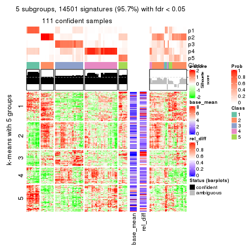
get_signatures(res, k = 6)
Signature heatmaps where rows are not scaled:
get_signatures(res, k = 2, scale_rows = FALSE)
get_signatures(res, k = 3, scale_rows = FALSE)

get_signatures(res, k = 4, scale_rows = FALSE)
get_signatures(res, k = 5, scale_rows = FALSE)
get_signatures(res, k = 6, scale_rows = FALSE)
Compare the overlap of signatures from different k:
compare_signatures(res)
get_signature() returns a data frame invisibly. TO get the list of signatures, the function
call should be assigned to a variable explicitly. In following code, if plot argument is set
to FALSE, no heatmap is plotted while only the differential analysis is performed.
# code only for demonstration
tb = get_signature(res, k = ..., plot = FALSE)
An example of the output of tb is:
#> which_row fdr mean_1 mean_2 scaled_mean_1 scaled_mean_2 km
#> 1 38 0.042760348 8.373488 9.131774 -0.5533452 0.5164555 1
#> 2 40 0.018707592 7.106213 8.469186 -0.6173731 0.5762149 1
#> 3 55 0.019134737 10.221463 11.207825 -0.6159697 0.5749050 1
#> 4 59 0.006059896 5.921854 7.869574 -0.6899429 0.6439467 1
#> 5 60 0.018055526 8.928898 10.211722 -0.6204761 0.5791110 1
#> 6 98 0.009384629 15.714769 14.887706 0.6635654 -0.6193277 2
...
The columns in tb are:
which_row: row indices corresponding to the input matrix.fdr: FDR for the differential test. mean_x: The mean value in group x.scaled_mean_x: The mean value in group x after rows are scaled.km: Row groups if k-means clustering is applied to rows.
UMAP plot which shows how samples are separated.
dimension_reduction(res, k = 2, method = "UMAP")
dimension_reduction(res, k = 3, method = "UMAP")
dimension_reduction(res, k = 4, method = "UMAP")
dimension_reduction(res, k = 5, method = "UMAP")
dimension_reduction(res, k = 6, method = "UMAP")

Following heatmap shows how subgroups are split when increasing k:
collect_classes(res)
If matrix rows can be associated to genes, consider to use functional_enrichment(res,
...) to perform function enrichment for the signature genes. See this vignette for more detailed explanations.
CV:kmeans
The object with results only for a single top-value method and a single partition method
can be extracted as:
res = res_list["CV", "kmeans"]
# you can also extract it by
# res = res_list["CV:kmeans"]
A summary of res and all the functions that can be applied to it:
res
#> A 'ConsensusPartition' object with k = 2, 3, 4, 5, 6.
#> On a matrix with 15148 rows and 152 columns.
#> Top rows (1000, 2000, 3000, 4000, 5000) are extracted by 'CV' method.
#> Subgroups are detected by 'kmeans' method.
#> Performed in total 1250 partitions by row resampling.
#> Best k for subgroups seems to be 3.
#>
#> Following methods can be applied to this 'ConsensusPartition' object:
#> [1] "cola_report" "collect_classes" "collect_plots"
#> [4] "collect_stats" "colnames" "compare_signatures"
#> [7] "consensus_heatmap" "dimension_reduction" "functional_enrichment"
#> [10] "get_anno_col" "get_anno" "get_classes"
#> [13] "get_consensus" "get_matrix" "get_membership"
#> [16] "get_param" "get_signatures" "get_stats"
#> [19] "is_best_k" "is_stable_k" "membership_heatmap"
#> [22] "ncol" "nrow" "plot_ecdf"
#> [25] "rownames" "select_partition_number" "show"
#> [28] "suggest_best_k" "test_to_known_factors"
collect_plots() function collects all the plots made from res for all k (number of partitions)
into one single page to provide an easy and fast comparison between different k.
collect_plots(res)
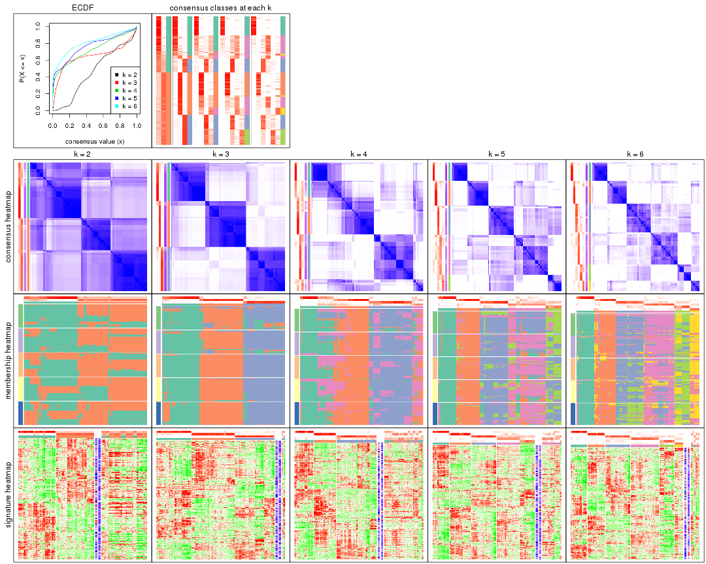
The plots are:
- The first row: a plot of the ECDF (empirical cumulative distribution
function) curves of the consensus matrix for each
k and the heatmap of
predicted classes for each k.
- The second row: heatmaps of the consensus matrix for each
k.
- The third row: heatmaps of the membership matrix for each
k.
- The fouth row: heatmaps of the signatures for each
k.
All the plots in panels can be made by individual functions and they are
plotted later in this section.
select_partition_number() produces several plots showing different
statistics for choosing “optimized” k. There are following statistics:
- ECDF curves of the consensus matrix for each
k;
- 1-PAC. The PAC
score
measures the proportion of the ambiguous subgrouping.
- Mean silhouette score.
- Concordance. The mean probability of fiting the consensus class ids in all
partitions.
- Area increased. Denote \(A_k\) as the area under the ECDF curve for current
k, the area increased is defined as \(A_k - A_{k-1}\).
- Rand index. The percent of pairs of samples that are both in a same cluster
or both are not in a same cluster in the partition of k and k-1.
- Jaccard index. The ratio of pairs of samples are both in a same cluster in
the partition of k and k-1 and the pairs of samples are both in a same
cluster in the partition k or k-1.
The detailed explanations of these statistics can be found in the cola
vignette.
Generally speaking, lower PAC score, higher mean silhouette score or higher
concordance corresponds to better partition. Rand index and Jaccard index
measure how similar the current partition is compared to partition with k-1.
If they are too similar, we won't accept k is better than k-1.
select_partition_number(res)
The numeric values for all these statistics can be obtained by get_stats().
get_stats(res)
#> k 1-PAC mean_silhouette concordance area_increased Rand Jaccard
#> 2 2 0.228 0.564 0.718 0.4628 0.505 0.505
#> 3 3 0.656 0.848 0.891 0.4036 0.690 0.459
#> 4 4 0.584 0.559 0.761 0.1138 0.929 0.793
#> 5 5 0.556 0.657 0.716 0.0602 0.801 0.429
#> 6 6 0.639 0.673 0.737 0.0576 0.955 0.797
suggest_best_k() suggests the best \(k\) based on these statistics. The rules are as follows:
- All \(k\) with Jaccard index larger than 0.95 are removed because increasing
\(k\) does not provide enough extra information. If all \(k\) are removed, it is
marked as no subgroup is detected.
- For all \(k\) with 1-PAC score larger than 0.9, the maximal \(k\) is taken as
the best \(k\), and other \(k\) are marked as optional \(k\).
- If it does not fit the second rule. The \(k\) with the maximal vote of the
highest 1-PAC score, highest mean silhouette, and highest concordance is
taken as the best \(k\).
suggest_best_k(res)
#> [1] 3
Following shows the table of the partitions (You need to click the show/hide
code output link to see it). The membership matrix (columns with name p*)
is inferred by
clue::cl_consensus()
function with the SE method. Basically the value in the membership matrix
represents the probability to belong to a certain group. The finall class
label for an item is determined with the group with highest probability it
belongs to.
In get_classes() function, the entropy is calculated from the membership
matrix and the silhouette score is calculated from the consensus matrix.
show/hide code output
cbind(get_classes(res, k = 2), get_membership(res, k = 2))
#> class entropy silhouette p1 p2
#> SRR1947547 1 0.8081 0.5829 0.752 0.248
#> SRR1947546 2 0.7883 0.6556 0.236 0.764
#> SRR1947545 1 0.0000 0.7699 1.000 0.000
#> SRR1947544 1 0.0000 0.7699 1.000 0.000
#> SRR1947542 2 0.8267 0.6423 0.260 0.740
#> SRR1947541 1 0.8443 0.5601 0.728 0.272
#> SRR1947540 2 0.7219 0.6456 0.200 0.800
#> SRR1947539 2 0.9170 0.4166 0.332 0.668
#> SRR1947538 1 0.8443 0.4566 0.728 0.272
#> SRR1947537 1 0.9909 0.2645 0.556 0.444
#> SRR1947536 2 0.9491 0.2932 0.368 0.632
#> SRR1947535 2 0.9044 0.4493 0.320 0.680
#> SRR1947534 1 0.8386 0.4023 0.732 0.268
#> SRR1947533 2 0.8016 0.6513 0.244 0.756
#> SRR1947532 1 0.1633 0.7590 0.976 0.024
#> SRR1947531 2 0.7219 0.6456 0.200 0.800
#> SRR1947530 1 0.8081 0.5829 0.752 0.248
#> SRR1947529 2 0.7815 0.6564 0.232 0.768
#> SRR1947528 1 0.9686 0.3638 0.604 0.396
#> SRR1947527 2 0.8327 0.6362 0.264 0.736
#> SRR1947526 2 0.7815 0.6564 0.232 0.768
#> SRR1947525 1 0.9170 0.3007 0.668 0.332
#> SRR1947524 2 0.8909 0.4162 0.308 0.692
#> SRR1947523 2 0.9944 0.4680 0.456 0.544
#> SRR1947521 2 0.8955 0.4451 0.312 0.688
#> SRR1947520 2 0.7815 0.6564 0.232 0.768
#> SRR1947519 2 0.9170 0.4334 0.332 0.668
#> SRR1947518 1 0.8443 0.4566 0.728 0.272
#> SRR1947517 2 0.8955 0.4451 0.312 0.688
#> SRR1947516 2 0.8144 0.6465 0.252 0.748
#> SRR1947515 1 0.3274 0.7315 0.940 0.060
#> SRR1947514 2 0.8327 0.6362 0.264 0.736
#> SRR1947513 1 0.2236 0.7561 0.964 0.036
#> SRR1947512 1 0.2043 0.7464 0.968 0.032
#> SRR1947511 2 0.7815 0.6564 0.232 0.768
#> SRR1947510 2 0.8955 0.4451 0.312 0.688
#> SRR1947572 1 0.2423 0.7399 0.960 0.040
#> SRR1947611 2 0.8267 0.4899 0.260 0.740
#> SRR1947509 2 0.9608 0.3101 0.384 0.616
#> SRR1947644 2 0.8555 0.4442 0.280 0.720
#> SRR1947643 2 0.7219 0.6456 0.200 0.800
#> SRR1947642 2 0.9170 0.4334 0.332 0.668
#> SRR1947640 1 0.7745 0.4660 0.772 0.228
#> SRR1947641 2 0.8955 0.4512 0.312 0.688
#> SRR1947639 1 0.8081 0.4665 0.752 0.248
#> SRR1947638 1 0.0376 0.7685 0.996 0.004
#> SRR1947637 2 0.7376 0.5216 0.208 0.792
#> SRR1947636 1 0.9909 0.2645 0.556 0.444
#> SRR1947635 2 0.7950 0.6545 0.240 0.760
#> SRR1947634 2 0.7815 0.6564 0.232 0.768
#> SRR1947633 2 0.9170 0.4166 0.332 0.668
#> SRR1947632 2 0.7950 0.6549 0.240 0.760
#> SRR1947631 2 0.9170 0.4334 0.332 0.668
#> SRR1947629 2 0.8909 0.4162 0.308 0.692
#> SRR1947630 2 0.7602 0.6552 0.220 0.780
#> SRR1947627 1 0.9732 0.3456 0.596 0.404
#> SRR1947628 2 0.7299 0.6463 0.204 0.796
#> SRR1947626 2 0.7815 0.6258 0.232 0.768
#> SRR1947625 2 0.8955 0.4512 0.312 0.688
#> SRR1947624 2 0.7602 0.6552 0.220 0.780
#> SRR1947623 1 0.0000 0.7699 1.000 0.000
#> SRR1947622 2 0.7950 0.6407 0.240 0.760
#> SRR1947621 2 0.8327 0.6362 0.264 0.736
#> SRR1947620 1 0.0000 0.7699 1.000 0.000
#> SRR1947619 1 0.9922 0.2529 0.552 0.448
#> SRR1947617 2 0.8144 0.6465 0.252 0.748
#> SRR1947618 1 0.2236 0.7561 0.964 0.036
#> SRR1947616 2 0.7056 0.6432 0.192 0.808
#> SRR1947615 2 0.9954 0.0795 0.460 0.540
#> SRR1947614 2 0.8955 0.4451 0.312 0.688
#> SRR1947613 1 0.0376 0.7687 0.996 0.004
#> SRR1947610 2 0.9775 0.3301 0.412 0.588
#> SRR1947612 2 0.8327 0.6362 0.264 0.736
#> SRR1947609 1 0.2236 0.7561 0.964 0.036
#> SRR1947608 2 0.9000 0.4538 0.316 0.684
#> SRR1947606 1 0.9686 0.3638 0.604 0.396
#> SRR1947607 1 0.0938 0.7651 0.988 0.012
#> SRR1947604 1 0.4562 0.7084 0.904 0.096
#> SRR1947605 1 0.0000 0.7699 1.000 0.000
#> SRR1947603 2 0.7815 0.6564 0.232 0.768
#> SRR1947602 1 0.8081 0.5829 0.752 0.248
#> SRR1947600 2 0.8909 0.4162 0.308 0.692
#> SRR1947601 2 0.7815 0.6564 0.232 0.768
#> SRR1947598 2 0.9954 0.4313 0.460 0.540
#> SRR1947599 1 0.2236 0.7561 0.964 0.036
#> SRR1947597 2 0.8144 0.6482 0.252 0.748
#> SRR1947596 1 0.0000 0.7699 1.000 0.000
#> SRR1947595 1 0.8608 0.3090 0.716 0.284
#> SRR1947594 1 0.0376 0.7687 0.996 0.004
#> SRR1947592 2 0.9896 0.1527 0.440 0.560
#> SRR1947591 2 0.8144 0.6465 0.252 0.748
#> SRR1947590 1 0.0000 0.7699 1.000 0.000
#> SRR1947588 1 0.0000 0.7699 1.000 0.000
#> SRR1947587 1 0.9896 0.2749 0.560 0.440
#> SRR1947586 2 0.7815 0.6258 0.232 0.768
#> SRR1947585 2 0.8909 0.4162 0.308 0.692
#> SRR1947584 1 0.0376 0.7687 0.996 0.004
#> SRR1947583 1 0.9732 0.0500 0.596 0.404
#> SRR1947582 1 0.2236 0.7561 0.964 0.036
#> SRR1947580 2 0.7528 0.6385 0.216 0.784
#> SRR1947581 1 0.0000 0.7699 1.000 0.000
#> SRR1947576 2 0.7674 0.5123 0.224 0.776
#> SRR1947575 2 0.7376 0.5294 0.208 0.792
#> SRR1947579 2 0.8955 0.4451 0.312 0.688
#> SRR1947578 2 0.7219 0.6456 0.200 0.800
#> SRR1947573 2 0.9209 0.4158 0.336 0.664
#> SRR1947574 1 0.2423 0.7392 0.960 0.040
#> SRR1947571 1 0.7602 0.5097 0.780 0.220
#> SRR1947577 1 0.2236 0.7561 0.964 0.036
#> SRR1947570 1 0.7453 0.5988 0.788 0.212
#> SRR1947569 2 0.8909 0.4162 0.308 0.692
#> SRR1947566 2 0.7056 0.6432 0.192 0.808
#> SRR1947567 2 0.8144 0.6482 0.252 0.748
#> SRR1947568 1 0.8861 0.3532 0.696 0.304
#> SRR1947564 2 0.8267 0.6396 0.260 0.740
#> SRR1947563 2 0.8267 0.4993 0.260 0.740
#> SRR1947562 2 0.9998 0.2237 0.492 0.508
#> SRR1947565 1 0.9909 0.2645 0.556 0.444
#> SRR1947559 2 0.8144 0.6482 0.252 0.748
#> SRR1947560 2 0.8144 0.4951 0.252 0.748
#> SRR1947561 2 0.7815 0.6564 0.232 0.768
#> SRR1947557 1 0.0000 0.7699 1.000 0.000
#> SRR1947558 2 0.9170 0.4334 0.332 0.668
#> SRR1947556 1 0.0000 0.7699 1.000 0.000
#> SRR1947553 2 0.9775 0.3301 0.412 0.588
#> SRR1947554 1 0.0376 0.7687 0.996 0.004
#> SRR1947555 2 0.7815 0.6564 0.232 0.768
#> SRR1947550 1 0.9732 0.0632 0.596 0.404
#> SRR1947552 1 0.2236 0.7561 0.964 0.036
#> SRR1947549 2 0.9850 0.1924 0.428 0.572
#> SRR1947551 2 0.8555 0.4442 0.280 0.720
#> SRR1947548 1 0.5842 0.6403 0.860 0.140
#> SRR1947506 1 0.8081 0.5829 0.752 0.248
#> SRR1947507 1 0.0376 0.7687 0.996 0.004
#> SRR1947504 1 0.0000 0.7699 1.000 0.000
#> SRR1947503 1 0.0376 0.7685 0.996 0.004
#> SRR1947502 2 0.7815 0.6564 0.232 0.768
#> SRR1947501 2 0.7883 0.6556 0.236 0.764
#> SRR1947499 1 0.8081 0.5829 0.752 0.248
#> SRR1947498 2 0.8909 0.4162 0.308 0.692
#> SRR1947508 2 0.9732 0.2898 0.404 0.596
#> SRR1947505 2 0.8608 0.6175 0.284 0.716
#> SRR1947497 2 0.8081 0.6489 0.248 0.752
#> SRR1947496 1 0.0000 0.7699 1.000 0.000
#> SRR1947495 2 0.8081 0.6489 0.248 0.752
#> SRR1947494 1 0.1633 0.7590 0.976 0.024
#> SRR1947493 1 0.7528 0.5965 0.784 0.216
#> SRR1947492 1 0.0376 0.7687 0.996 0.004
#> SRR1947500 2 0.8144 0.6482 0.252 0.748
#> SRR1947491 2 0.9129 0.6060 0.328 0.672
#> SRR1947490 1 0.0000 0.7699 1.000 0.000
#> SRR1947489 1 0.9686 0.3638 0.604 0.396
show/hide code output
cbind(get_classes(res, k = 3), get_membership(res, k = 3))
#> class entropy silhouette p1 p2 p3
#> SRR1947547 3 0.4047 0.8609 0.148 0.004 0.848
#> SRR1947546 2 0.2550 0.9237 0.024 0.936 0.040
#> SRR1947545 1 0.0848 0.8845 0.984 0.008 0.008
#> SRR1947544 1 0.0848 0.8845 0.984 0.008 0.008
#> SRR1947542 2 0.2681 0.9220 0.028 0.932 0.040
#> SRR1947541 3 0.3851 0.8712 0.136 0.004 0.860
#> SRR1947540 2 0.2625 0.8766 0.000 0.916 0.084
#> SRR1947539 3 0.3155 0.9043 0.040 0.044 0.916
#> SRR1947538 1 0.7758 0.6061 0.636 0.280 0.084
#> SRR1947537 3 0.3755 0.8823 0.120 0.008 0.872
#> SRR1947536 3 0.2550 0.8555 0.012 0.056 0.932
#> SRR1947535 3 0.3683 0.9045 0.044 0.060 0.896
#> SRR1947534 1 0.4291 0.8149 0.840 0.152 0.008
#> SRR1947533 2 0.2176 0.9270 0.020 0.948 0.032
#> SRR1947532 1 0.4324 0.8497 0.860 0.112 0.028
#> SRR1947531 2 0.2625 0.8766 0.000 0.916 0.084
#> SRR1947530 3 0.6345 0.4813 0.400 0.004 0.596
#> SRR1947529 2 0.1999 0.9270 0.012 0.952 0.036
#> SRR1947528 3 0.3573 0.8830 0.120 0.004 0.876
#> SRR1947527 2 0.2050 0.9275 0.020 0.952 0.028
#> SRR1947526 2 0.2176 0.9270 0.020 0.948 0.032
#> SRR1947525 1 0.7377 0.1832 0.516 0.452 0.032
#> SRR1947524 3 0.2651 0.8536 0.012 0.060 0.928
#> SRR1947523 2 0.4399 0.8633 0.092 0.864 0.044
#> SRR1947521 3 0.3337 0.8995 0.032 0.060 0.908
#> SRR1947520 2 0.2297 0.9239 0.020 0.944 0.036
#> SRR1947519 3 0.3683 0.9045 0.044 0.060 0.896
#> SRR1947518 1 0.7557 0.6285 0.656 0.264 0.080
#> SRR1947517 3 0.3337 0.8995 0.032 0.060 0.908
#> SRR1947516 2 0.2176 0.9270 0.020 0.948 0.032
#> SRR1947515 1 0.5982 0.7250 0.744 0.228 0.028
#> SRR1947514 2 0.2050 0.9275 0.020 0.952 0.028
#> SRR1947513 1 0.3472 0.8742 0.904 0.056 0.040
#> SRR1947512 1 0.2269 0.8614 0.944 0.016 0.040
#> SRR1947511 2 0.2176 0.9270 0.020 0.948 0.032
#> SRR1947510 3 0.3310 0.8977 0.028 0.064 0.908
#> SRR1947572 1 0.1525 0.8847 0.964 0.032 0.004
#> SRR1947611 3 0.3129 0.8830 0.008 0.088 0.904
#> SRR1947509 3 0.3356 0.8999 0.036 0.056 0.908
#> SRR1947644 3 0.2173 0.8497 0.008 0.048 0.944
#> SRR1947643 2 0.0237 0.9106 0.000 0.996 0.004
#> SRR1947642 3 0.3683 0.9045 0.044 0.060 0.896
#> SRR1947640 2 0.7034 0.5675 0.284 0.668 0.048
#> SRR1947641 3 0.3572 0.9048 0.040 0.060 0.900
#> SRR1947639 1 0.6673 0.5224 0.636 0.344 0.020
#> SRR1947638 1 0.2879 0.8804 0.924 0.052 0.024
#> SRR1947637 3 0.3043 0.8846 0.008 0.084 0.908
#> SRR1947636 3 0.3682 0.8847 0.116 0.008 0.876
#> SRR1947635 2 0.2681 0.9220 0.028 0.932 0.040
#> SRR1947634 2 0.2176 0.9270 0.020 0.948 0.032
#> SRR1947633 3 0.3155 0.9043 0.040 0.044 0.916
#> SRR1947632 2 0.2806 0.9196 0.032 0.928 0.040
#> SRR1947631 3 0.3683 0.9045 0.044 0.060 0.896
#> SRR1947629 3 0.2651 0.8536 0.012 0.060 0.928
#> SRR1947630 2 0.2527 0.9201 0.020 0.936 0.044
#> SRR1947627 3 0.3295 0.8939 0.096 0.008 0.896
#> SRR1947628 2 0.2860 0.8760 0.004 0.912 0.084
#> SRR1947626 2 0.1989 0.8926 0.004 0.948 0.048
#> SRR1947625 3 0.3572 0.9048 0.040 0.060 0.900
#> SRR1947624 2 0.2636 0.9189 0.020 0.932 0.048
#> SRR1947623 1 0.0848 0.8845 0.984 0.008 0.008
#> SRR1947622 2 0.1337 0.9193 0.012 0.972 0.016
#> SRR1947621 2 0.2050 0.9275 0.020 0.952 0.028
#> SRR1947620 1 0.1620 0.8817 0.964 0.012 0.024
#> SRR1947619 3 0.3896 0.8797 0.128 0.008 0.864
#> SRR1947617 2 0.2050 0.9275 0.020 0.952 0.028
#> SRR1947618 1 0.3472 0.8742 0.904 0.056 0.040
#> SRR1947616 2 0.2860 0.8726 0.004 0.912 0.084
#> SRR1947615 3 0.3918 0.8798 0.120 0.012 0.868
#> SRR1947614 3 0.3337 0.8995 0.032 0.060 0.908
#> SRR1947613 1 0.0848 0.8845 0.984 0.008 0.008
#> SRR1947610 2 0.3043 0.8783 0.008 0.908 0.084
#> SRR1947612 2 0.2050 0.9275 0.020 0.952 0.028
#> SRR1947609 1 0.3472 0.8742 0.904 0.056 0.040
#> SRR1947608 3 0.3791 0.9039 0.048 0.060 0.892
#> SRR1947606 3 0.3573 0.8830 0.120 0.004 0.876
#> SRR1947607 1 0.0848 0.8845 0.984 0.008 0.008
#> SRR1947604 1 0.6335 0.6997 0.724 0.240 0.036
#> SRR1947605 1 0.0848 0.8845 0.984 0.008 0.008
#> SRR1947603 2 0.2269 0.9253 0.016 0.944 0.040
#> SRR1947602 3 0.6148 0.5798 0.356 0.004 0.640
#> SRR1947600 3 0.2651 0.8536 0.012 0.060 0.928
#> SRR1947601 2 0.2152 0.9256 0.016 0.948 0.036
#> SRR1947598 2 0.4007 0.8597 0.036 0.880 0.084
#> SRR1947599 1 0.4206 0.8622 0.872 0.088 0.040
#> SRR1947597 2 0.2550 0.9237 0.024 0.936 0.040
#> SRR1947596 1 0.1525 0.8847 0.964 0.032 0.004
#> SRR1947595 2 0.6937 0.5911 0.272 0.680 0.048
#> SRR1947594 1 0.0848 0.8845 0.984 0.008 0.008
#> SRR1947592 3 0.3550 0.8994 0.080 0.024 0.896
#> SRR1947591 2 0.2176 0.9270 0.020 0.948 0.032
#> SRR1947590 1 0.1525 0.8847 0.964 0.032 0.004
#> SRR1947588 1 0.0848 0.8845 0.984 0.008 0.008
#> SRR1947587 3 0.3682 0.8847 0.116 0.008 0.876
#> SRR1947586 2 0.2096 0.8911 0.004 0.944 0.052
#> SRR1947585 3 0.2651 0.8536 0.012 0.060 0.928
#> SRR1947584 1 0.0848 0.8845 0.984 0.008 0.008
#> SRR1947583 2 0.6685 0.6463 0.244 0.708 0.048
#> SRR1947582 1 0.3472 0.8742 0.904 0.056 0.040
#> SRR1947580 2 0.2625 0.8751 0.000 0.916 0.084
#> SRR1947581 1 0.0848 0.8845 0.984 0.008 0.008
#> SRR1947576 3 0.3129 0.8830 0.008 0.088 0.904
#> SRR1947575 3 0.3587 0.8912 0.020 0.088 0.892
#> SRR1947579 3 0.3337 0.8995 0.032 0.060 0.908
#> SRR1947578 2 0.2625 0.8766 0.000 0.916 0.084
#> SRR1947573 3 0.3589 0.9054 0.052 0.048 0.900
#> SRR1947574 1 0.3973 0.8665 0.880 0.088 0.032
#> SRR1947571 1 0.6066 0.6987 0.728 0.248 0.024
#> SRR1947577 1 0.3472 0.8742 0.904 0.056 0.040
#> SRR1947570 3 0.6495 0.3080 0.460 0.004 0.536
#> SRR1947569 3 0.2651 0.8536 0.012 0.060 0.928
#> SRR1947566 2 0.1753 0.8924 0.000 0.952 0.048
#> SRR1947567 2 0.2681 0.9220 0.028 0.932 0.040
#> SRR1947568 1 0.5138 0.6859 0.748 0.252 0.000
#> SRR1947564 2 0.2313 0.9268 0.024 0.944 0.032
#> SRR1947563 3 0.3791 0.9039 0.048 0.060 0.892
#> SRR1947562 2 0.6546 0.6632 0.240 0.716 0.044
#> SRR1947565 3 0.3682 0.8847 0.116 0.008 0.876
#> SRR1947559 2 0.2806 0.9219 0.032 0.928 0.040
#> SRR1947560 3 0.3129 0.8830 0.008 0.088 0.904
#> SRR1947561 2 0.2176 0.9270 0.020 0.948 0.032
#> SRR1947557 1 0.0848 0.8845 0.984 0.008 0.008
#> SRR1947558 3 0.3683 0.9045 0.044 0.060 0.896
#> SRR1947556 1 0.0661 0.8839 0.988 0.008 0.004
#> SRR1947553 2 0.3043 0.8783 0.008 0.908 0.084
#> SRR1947554 1 0.0848 0.8845 0.984 0.008 0.008
#> SRR1947555 2 0.2096 0.9189 0.004 0.944 0.052
#> SRR1947550 2 0.6967 0.5705 0.288 0.668 0.044
#> SRR1947552 1 0.4092 0.8615 0.876 0.088 0.036
#> SRR1947549 3 0.3713 0.9023 0.076 0.032 0.892
#> SRR1947551 3 0.2173 0.8497 0.008 0.048 0.944
#> SRR1947548 1 0.6148 0.7023 0.728 0.244 0.028
#> SRR1947506 3 0.5553 0.7136 0.272 0.004 0.724
#> SRR1947507 1 0.0848 0.8845 0.984 0.008 0.008
#> SRR1947504 1 0.0661 0.8839 0.988 0.008 0.004
#> SRR1947503 1 0.2743 0.8806 0.928 0.052 0.020
#> SRR1947502 2 0.2176 0.9270 0.020 0.948 0.032
#> SRR1947501 2 0.2550 0.9237 0.024 0.936 0.040
#> SRR1947499 3 0.6209 0.5550 0.368 0.004 0.628
#> SRR1947498 3 0.2651 0.8536 0.012 0.060 0.928
#> SRR1947508 3 0.3692 0.9047 0.056 0.048 0.896
#> SRR1947505 2 0.2711 0.8757 0.000 0.912 0.088
#> SRR1947497 2 0.2176 0.9270 0.020 0.948 0.032
#> SRR1947496 1 0.0848 0.8845 0.984 0.008 0.008
#> SRR1947495 2 0.2050 0.9275 0.020 0.952 0.028
#> SRR1947494 1 0.4324 0.8497 0.860 0.112 0.028
#> SRR1947493 1 0.6280 -0.0795 0.540 0.000 0.460
#> SRR1947492 1 0.0848 0.8845 0.984 0.008 0.008
#> SRR1947500 2 0.2681 0.9220 0.028 0.932 0.040
#> SRR1947491 2 0.3375 0.9025 0.048 0.908 0.044
#> SRR1947490 1 0.0848 0.8845 0.984 0.008 0.008
#> SRR1947489 3 0.4059 0.8737 0.128 0.012 0.860
show/hide code output
cbind(get_classes(res, k = 4), get_membership(res, k = 4))
#> class entropy silhouette p1 p2 p3 p4
#> SRR1947547 3 0.4406 0.74025 0.044 0.004 0.808 0.144
#> SRR1947546 2 0.5626 0.37638 0.004 0.696 0.056 0.244
#> SRR1947545 1 0.0921 0.68937 0.972 0.000 0.000 0.028
#> SRR1947544 1 0.0000 0.69273 1.000 0.000 0.000 0.000
#> SRR1947542 2 0.5848 0.32622 0.004 0.664 0.056 0.276
#> SRR1947541 3 0.4199 0.75222 0.044 0.004 0.824 0.128
#> SRR1947540 4 0.4941 0.38080 0.000 0.436 0.000 0.564
#> SRR1947539 3 0.1637 0.76870 0.000 0.000 0.940 0.060
#> SRR1947538 4 0.6430 0.28161 0.312 0.092 0.000 0.596
#> SRR1947537 3 0.3734 0.76832 0.044 0.004 0.856 0.096
#> SRR1947536 3 0.4920 0.57628 0.000 0.004 0.628 0.368
#> SRR1947535 3 0.1975 0.78669 0.012 0.016 0.944 0.028
#> SRR1947534 1 0.4770 0.38724 0.700 0.288 0.000 0.012
#> SRR1947533 2 0.0707 0.69670 0.000 0.980 0.000 0.020
#> SRR1947532 1 0.8441 0.31925 0.452 0.104 0.084 0.360
#> SRR1947531 4 0.4941 0.38080 0.000 0.436 0.000 0.564
#> SRR1947530 3 0.6755 0.53712 0.232 0.004 0.620 0.144
#> SRR1947529 2 0.2466 0.64928 0.000 0.900 0.004 0.096
#> SRR1947528 3 0.3917 0.76471 0.044 0.004 0.844 0.108
#> SRR1947527 2 0.0707 0.69703 0.000 0.980 0.000 0.020
#> SRR1947526 2 0.0469 0.69729 0.000 0.988 0.000 0.012
#> SRR1947525 2 0.8956 -0.32216 0.324 0.348 0.052 0.276
#> SRR1947524 3 0.4905 0.56740 0.000 0.004 0.632 0.364
#> SRR1947523 2 0.7737 -0.17329 0.016 0.444 0.144 0.396
#> SRR1947521 3 0.3933 0.72766 0.000 0.008 0.792 0.200
#> SRR1947520 2 0.0592 0.69671 0.000 0.984 0.000 0.016
#> SRR1947519 3 0.3680 0.77204 0.012 0.016 0.852 0.120
#> SRR1947518 4 0.6292 0.23934 0.332 0.076 0.000 0.592
#> SRR1947517 3 0.3933 0.72766 0.000 0.008 0.792 0.200
#> SRR1947516 2 0.0592 0.69732 0.000 0.984 0.000 0.016
#> SRR1947515 1 0.8706 0.25939 0.424 0.132 0.084 0.360
#> SRR1947514 2 0.0592 0.69732 0.000 0.984 0.000 0.016
#> SRR1947513 1 0.7523 0.48997 0.556 0.032 0.112 0.300
#> SRR1947512 1 0.0469 0.68137 0.988 0.000 0.000 0.012
#> SRR1947511 2 0.0592 0.69671 0.000 0.984 0.000 0.016
#> SRR1947510 3 0.3933 0.72766 0.000 0.008 0.792 0.200
#> SRR1947572 1 0.2988 0.63889 0.876 0.012 0.000 0.112
#> SRR1947611 3 0.4011 0.72689 0.000 0.008 0.784 0.208
#> SRR1947509 3 0.4011 0.72854 0.000 0.008 0.784 0.208
#> SRR1947644 3 0.4981 0.50315 0.000 0.000 0.536 0.464
#> SRR1947643 2 0.2149 0.65078 0.000 0.912 0.000 0.088
#> SRR1947642 3 0.3680 0.77204 0.012 0.016 0.852 0.120
#> SRR1947640 4 0.9052 0.26667 0.144 0.364 0.108 0.384
#> SRR1947641 3 0.2074 0.78662 0.012 0.016 0.940 0.032
#> SRR1947639 1 0.8908 -0.07092 0.384 0.272 0.052 0.292
#> SRR1947638 1 0.6362 0.56427 0.656 0.028 0.052 0.264
#> SRR1947637 3 0.3972 0.72695 0.000 0.008 0.788 0.204
#> SRR1947636 3 0.3670 0.77022 0.044 0.004 0.860 0.092
#> SRR1947635 2 0.5897 0.31133 0.004 0.656 0.056 0.284
#> SRR1947634 2 0.0592 0.69671 0.000 0.984 0.000 0.016
#> SRR1947633 3 0.1867 0.76562 0.000 0.000 0.928 0.072
#> SRR1947632 2 0.6399 0.24402 0.008 0.632 0.080 0.280
#> SRR1947631 3 0.3623 0.77211 0.012 0.016 0.856 0.116
#> SRR1947629 3 0.4905 0.56740 0.000 0.004 0.632 0.364
#> SRR1947630 2 0.2546 0.61867 0.000 0.900 0.008 0.092
#> SRR1947627 3 0.2310 0.78875 0.028 0.004 0.928 0.040
#> SRR1947628 4 0.4877 0.41660 0.000 0.408 0.000 0.592
#> SRR1947626 2 0.2281 0.64210 0.000 0.904 0.000 0.096
#> SRR1947625 3 0.2074 0.78662 0.012 0.016 0.940 0.032
#> SRR1947624 2 0.3443 0.55928 0.000 0.848 0.016 0.136
#> SRR1947623 1 0.0000 0.69273 1.000 0.000 0.000 0.000
#> SRR1947622 2 0.4122 0.48017 0.000 0.760 0.004 0.236
#> SRR1947621 2 0.0592 0.69732 0.000 0.984 0.000 0.016
#> SRR1947620 1 0.6227 0.55523 0.636 0.004 0.076 0.284
#> SRR1947619 3 0.3538 0.77279 0.044 0.004 0.868 0.084
#> SRR1947617 2 0.0707 0.69634 0.000 0.980 0.000 0.020
#> SRR1947618 1 0.7540 0.48655 0.552 0.032 0.112 0.304
#> SRR1947616 2 0.4916 -0.03567 0.000 0.576 0.000 0.424
#> SRR1947615 3 0.4517 0.73242 0.036 0.004 0.792 0.168
#> SRR1947614 3 0.3933 0.72766 0.000 0.008 0.792 0.200
#> SRR1947613 1 0.0000 0.69273 1.000 0.000 0.000 0.000
#> SRR1947610 4 0.5571 0.42251 0.024 0.396 0.000 0.580
#> SRR1947612 2 0.0592 0.69732 0.000 0.984 0.000 0.016
#> SRR1947609 1 0.7799 0.40327 0.476 0.032 0.116 0.376
#> SRR1947608 3 0.2074 0.78642 0.012 0.016 0.940 0.032
#> SRR1947606 3 0.3857 0.76698 0.044 0.004 0.848 0.104
#> SRR1947607 1 0.0000 0.69273 1.000 0.000 0.000 0.000
#> SRR1947604 4 0.8779 -0.26529 0.388 0.128 0.092 0.392
#> SRR1947605 1 0.0707 0.69067 0.980 0.000 0.000 0.020
#> SRR1947603 2 0.1902 0.67086 0.000 0.932 0.004 0.064
#> SRR1947602 3 0.6667 0.55894 0.220 0.004 0.632 0.144
#> SRR1947600 3 0.4905 0.56740 0.000 0.004 0.632 0.364
#> SRR1947601 2 0.0592 0.69732 0.000 0.984 0.000 0.016
#> SRR1947598 4 0.5072 0.48082 0.000 0.208 0.052 0.740
#> SRR1947599 1 0.8284 0.34072 0.432 0.060 0.116 0.392
#> SRR1947597 2 0.3933 0.51399 0.000 0.792 0.008 0.200
#> SRR1947596 1 0.5858 0.56961 0.656 0.008 0.044 0.292
#> SRR1947595 4 0.9316 0.28795 0.096 0.280 0.240 0.384
#> SRR1947594 1 0.0000 0.69273 1.000 0.000 0.000 0.000
#> SRR1947592 3 0.1296 0.78861 0.028 0.004 0.964 0.004
#> SRR1947591 2 0.0592 0.69732 0.000 0.984 0.000 0.016
#> SRR1947590 1 0.6129 0.56354 0.644 0.012 0.052 0.292
#> SRR1947588 1 0.0000 0.69273 1.000 0.000 0.000 0.000
#> SRR1947587 3 0.3770 0.76789 0.040 0.004 0.852 0.104
#> SRR1947586 2 0.2589 0.62494 0.000 0.884 0.000 0.116
#> SRR1947585 3 0.4905 0.56740 0.000 0.004 0.632 0.364
#> SRR1947584 1 0.0000 0.69273 1.000 0.000 0.000 0.000
#> SRR1947583 2 0.8723 -0.26964 0.104 0.408 0.108 0.380
#> SRR1947582 1 0.7540 0.48655 0.552 0.032 0.112 0.304
#> SRR1947580 2 0.4679 0.15112 0.000 0.648 0.000 0.352
#> SRR1947581 1 0.0000 0.69273 1.000 0.000 0.000 0.000
#> SRR1947576 3 0.4011 0.72689 0.000 0.008 0.784 0.208
#> SRR1947575 3 0.2057 0.78550 0.008 0.020 0.940 0.032
#> SRR1947579 3 0.3933 0.72766 0.000 0.008 0.792 0.200
#> SRR1947578 4 0.4941 0.38080 0.000 0.436 0.000 0.564
#> SRR1947573 3 0.1697 0.78339 0.016 0.004 0.952 0.028
#> SRR1947574 1 0.7558 0.42874 0.528 0.072 0.052 0.348
#> SRR1947571 1 0.8403 0.26573 0.444 0.140 0.056 0.360
#> SRR1947577 1 0.7523 0.48997 0.556 0.032 0.112 0.300
#> SRR1947570 3 0.6212 0.61403 0.164 0.004 0.684 0.148
#> SRR1947569 3 0.4889 0.56898 0.000 0.004 0.636 0.360
#> SRR1947566 2 0.2469 0.61342 0.000 0.892 0.000 0.108
#> SRR1947567 2 0.5742 0.34929 0.004 0.680 0.056 0.260
#> SRR1947568 1 0.5140 0.49559 0.760 0.144 0.000 0.096
#> SRR1947564 2 0.0707 0.69634 0.000 0.980 0.000 0.020
#> SRR1947563 3 0.2074 0.78642 0.012 0.016 0.940 0.032
#> SRR1947562 2 0.8360 -0.17173 0.104 0.472 0.080 0.344
#> SRR1947565 3 0.3670 0.77022 0.044 0.004 0.860 0.092
#> SRR1947559 2 0.5532 0.39418 0.004 0.708 0.056 0.232
#> SRR1947560 3 0.4011 0.72689 0.000 0.008 0.784 0.208
#> SRR1947561 2 0.0336 0.69807 0.000 0.992 0.000 0.008
#> SRR1947557 1 0.0000 0.69273 1.000 0.000 0.000 0.000
#> SRR1947558 3 0.1975 0.78669 0.012 0.016 0.944 0.028
#> SRR1947556 1 0.0592 0.68823 0.984 0.000 0.000 0.016
#> SRR1947553 4 0.5571 0.42251 0.024 0.396 0.000 0.580
#> SRR1947554 1 0.0000 0.69273 1.000 0.000 0.000 0.000
#> SRR1947555 2 0.0921 0.69262 0.000 0.972 0.000 0.028
#> SRR1947550 4 0.9024 0.25883 0.140 0.368 0.108 0.384
#> SRR1947552 1 0.8340 0.33193 0.428 0.064 0.116 0.392
#> SRR1947549 3 0.1296 0.78861 0.028 0.004 0.964 0.004
#> SRR1947551 3 0.4985 0.49789 0.000 0.000 0.532 0.468
#> SRR1947548 1 0.8843 0.19687 0.404 0.156 0.080 0.360
#> SRR1947506 3 0.4722 0.72793 0.060 0.004 0.792 0.144
#> SRR1947507 1 0.0000 0.69273 1.000 0.000 0.000 0.000
#> SRR1947504 1 0.0592 0.68823 0.984 0.000 0.000 0.016
#> SRR1947503 1 0.6786 0.49634 0.572 0.028 0.052 0.348
#> SRR1947502 2 0.0336 0.69807 0.000 0.992 0.000 0.008
#> SRR1947501 2 0.5626 0.37638 0.004 0.696 0.056 0.244
#> SRR1947499 3 0.6697 0.55127 0.224 0.004 0.628 0.144
#> SRR1947498 3 0.4905 0.56740 0.000 0.004 0.632 0.364
#> SRR1947508 3 0.3828 0.76787 0.020 0.008 0.840 0.132
#> SRR1947505 4 0.4819 0.46531 0.000 0.344 0.004 0.652
#> SRR1947497 2 0.0592 0.69671 0.000 0.984 0.000 0.016
#> SRR1947496 1 0.0000 0.69273 1.000 0.000 0.000 0.000
#> SRR1947495 2 0.0592 0.69671 0.000 0.984 0.000 0.016
#> SRR1947494 1 0.8452 0.31694 0.448 0.100 0.088 0.364
#> SRR1947493 3 0.7182 0.37964 0.300 0.004 0.548 0.148
#> SRR1947492 1 0.0000 0.69273 1.000 0.000 0.000 0.000
#> SRR1947500 2 0.5989 0.27705 0.004 0.640 0.056 0.300
#> SRR1947491 2 0.6918 -0.00166 0.016 0.532 0.072 0.380
#> SRR1947490 1 0.0188 0.69193 0.996 0.000 0.000 0.004
#> SRR1947489 3 0.4561 0.73160 0.036 0.004 0.788 0.172
show/hide code output
cbind(get_classes(res, k = 5), get_membership(res, k = 5))
#> class entropy silhouette p1 p2 p3 p4 p5
#> SRR1947547 3 0.1768 0.7052 0.004 0.000 0.924 0.072 0.000
#> SRR1947546 4 0.6435 0.5717 0.000 0.304 0.164 0.524 0.008
#> SRR1947545 1 0.2313 0.8820 0.912 0.000 0.044 0.040 0.004
#> SRR1947544 1 0.1153 0.9284 0.964 0.000 0.024 0.008 0.004
#> SRR1947542 4 0.6513 0.6196 0.000 0.232 0.160 0.580 0.028
#> SRR1947541 3 0.1173 0.7377 0.004 0.000 0.964 0.020 0.012
#> SRR1947540 4 0.6272 0.1474 0.000 0.236 0.004 0.560 0.200
#> SRR1947539 3 0.4101 -0.0650 0.000 0.000 0.628 0.000 0.372
#> SRR1947538 4 0.5659 0.4021 0.060 0.048 0.004 0.692 0.196
#> SRR1947537 3 0.2116 0.7399 0.004 0.000 0.912 0.008 0.076
#> SRR1947536 5 0.6744 0.5053 0.012 0.000 0.380 0.172 0.436
#> SRR1947535 3 0.3927 0.6630 0.000 0.004 0.792 0.040 0.164
#> SRR1947534 1 0.4600 0.4429 0.632 0.352 0.004 0.008 0.004
#> SRR1947533 2 0.0404 0.8892 0.000 0.988 0.000 0.012 0.000
#> SRR1947532 4 0.6926 0.6260 0.116 0.024 0.252 0.576 0.032
#> SRR1947531 4 0.6272 0.1474 0.000 0.236 0.004 0.560 0.200
#> SRR1947530 3 0.4054 0.5814 0.140 0.000 0.788 0.072 0.000
#> SRR1947529 2 0.4360 0.7112 0.000 0.760 0.016 0.192 0.032
#> SRR1947528 3 0.1173 0.7418 0.004 0.000 0.964 0.012 0.020
#> SRR1947527 2 0.0579 0.8904 0.000 0.984 0.000 0.008 0.008
#> SRR1947526 2 0.0162 0.8897 0.000 0.996 0.000 0.004 0.000
#> SRR1947525 4 0.7724 0.6500 0.100 0.176 0.144 0.552 0.028
#> SRR1947524 5 0.6693 0.5539 0.012 0.000 0.332 0.176 0.480
#> SRR1947523 4 0.6043 0.6091 0.000 0.128 0.308 0.560 0.004
#> SRR1947521 5 0.4165 0.6831 0.000 0.008 0.320 0.000 0.672
#> SRR1947520 2 0.0798 0.8873 0.000 0.976 0.000 0.016 0.008
#> SRR1947519 3 0.2390 0.7409 0.000 0.004 0.908 0.044 0.044
#> SRR1947518 4 0.5834 0.3987 0.072 0.048 0.004 0.680 0.196
#> SRR1947517 5 0.4165 0.6831 0.000 0.008 0.320 0.000 0.672
#> SRR1947516 2 0.0693 0.8898 0.000 0.980 0.000 0.012 0.008
#> SRR1947515 4 0.6962 0.6277 0.112 0.028 0.252 0.576 0.032
#> SRR1947514 2 0.0693 0.8898 0.000 0.980 0.000 0.012 0.008
#> SRR1947513 3 0.7118 -0.4565 0.224 0.012 0.380 0.380 0.004
#> SRR1947512 1 0.0693 0.9358 0.980 0.000 0.012 0.008 0.000
#> SRR1947511 2 0.0404 0.8892 0.000 0.988 0.000 0.012 0.000
#> SRR1947510 5 0.4165 0.6831 0.000 0.008 0.320 0.000 0.672
#> SRR1947572 1 0.4381 0.6846 0.764 0.004 0.012 0.188 0.032
#> SRR1947611 5 0.4260 0.6810 0.000 0.008 0.308 0.004 0.680
#> SRR1947509 5 0.4138 0.6185 0.000 0.000 0.384 0.000 0.616
#> SRR1947644 5 0.4011 0.6439 0.012 0.000 0.136 0.048 0.804
#> SRR1947643 2 0.3445 0.8022 0.000 0.824 0.000 0.140 0.036
#> SRR1947642 3 0.2234 0.7422 0.000 0.004 0.916 0.036 0.044
#> SRR1947640 4 0.6211 0.6113 0.012 0.120 0.316 0.552 0.000
#> SRR1947641 3 0.3961 0.6398 0.000 0.004 0.780 0.032 0.184
#> SRR1947639 4 0.7757 0.6581 0.120 0.128 0.172 0.552 0.028
#> SRR1947638 4 0.7159 0.4741 0.328 0.016 0.224 0.428 0.004
#> SRR1947637 5 0.4483 0.6726 0.000 0.012 0.308 0.008 0.672
#> SRR1947636 3 0.2054 0.7411 0.004 0.000 0.916 0.008 0.072
#> SRR1947635 4 0.6053 0.6390 0.000 0.228 0.196 0.576 0.000
#> SRR1947634 2 0.0404 0.8892 0.000 0.988 0.000 0.012 0.000
#> SRR1947633 3 0.4262 -0.2989 0.000 0.000 0.560 0.000 0.440
#> SRR1947632 4 0.6388 0.6193 0.000 0.252 0.188 0.552 0.008
#> SRR1947631 3 0.2504 0.7393 0.000 0.004 0.900 0.032 0.064
#> SRR1947629 5 0.6718 0.5502 0.012 0.000 0.332 0.180 0.476
#> SRR1947630 2 0.2069 0.8415 0.000 0.912 0.000 0.012 0.076
#> SRR1947627 3 0.1628 0.7371 0.000 0.000 0.936 0.008 0.056
#> SRR1947628 4 0.5566 0.3222 0.000 0.140 0.004 0.656 0.200
#> SRR1947626 2 0.4630 0.7350 0.000 0.736 0.000 0.176 0.088
#> SRR1947625 3 0.3966 0.6488 0.000 0.004 0.784 0.036 0.176
#> SRR1947624 2 0.2522 0.8166 0.000 0.880 0.000 0.012 0.108
#> SRR1947623 1 0.0566 0.9378 0.984 0.000 0.012 0.000 0.004
#> SRR1947622 4 0.5700 0.0297 0.000 0.456 0.004 0.472 0.068
#> SRR1947621 2 0.0693 0.8898 0.000 0.980 0.000 0.012 0.008
#> SRR1947620 4 0.6866 0.4311 0.252 0.000 0.364 0.380 0.004
#> SRR1947619 3 0.2352 0.7317 0.004 0.000 0.896 0.008 0.092
#> SRR1947617 2 0.0693 0.8898 0.000 0.980 0.000 0.012 0.008
#> SRR1947618 4 0.7155 0.4328 0.236 0.012 0.372 0.376 0.004
#> SRR1947616 2 0.6530 0.3489 0.000 0.440 0.000 0.360 0.200
#> SRR1947615 3 0.2248 0.7105 0.000 0.000 0.900 0.088 0.012
#> SRR1947614 5 0.4165 0.6831 0.000 0.008 0.320 0.000 0.672
#> SRR1947613 1 0.0727 0.9378 0.980 0.000 0.012 0.004 0.004
#> SRR1947610 4 0.6369 0.2489 0.020 0.172 0.004 0.608 0.196
#> SRR1947612 2 0.0693 0.8898 0.000 0.980 0.000 0.012 0.008
#> SRR1947609 4 0.6426 0.5530 0.104 0.016 0.364 0.512 0.004
#> SRR1947608 3 0.3927 0.6630 0.000 0.004 0.792 0.040 0.164
#> SRR1947606 3 0.1173 0.7418 0.004 0.000 0.964 0.012 0.020
#> SRR1947607 1 0.0727 0.9378 0.980 0.000 0.012 0.004 0.004
#> SRR1947604 4 0.6703 0.6173 0.088 0.028 0.284 0.576 0.024
#> SRR1947605 1 0.1710 0.9109 0.940 0.000 0.040 0.016 0.004
#> SRR1947603 2 0.3352 0.7749 0.000 0.852 0.036 0.100 0.012
#> SRR1947602 3 0.3921 0.5951 0.128 0.000 0.800 0.072 0.000
#> SRR1947600 5 0.6693 0.5539 0.012 0.000 0.332 0.176 0.480
#> SRR1947601 2 0.0579 0.8903 0.000 0.984 0.000 0.008 0.008
#> SRR1947598 4 0.5047 0.4155 0.000 0.052 0.028 0.720 0.200
#> SRR1947599 4 0.6444 0.5916 0.096 0.020 0.328 0.548 0.008
#> SRR1947597 4 0.5746 0.2991 0.000 0.452 0.072 0.472 0.004
#> SRR1947596 4 0.7221 0.5446 0.248 0.004 0.224 0.492 0.032
#> SRR1947595 4 0.6289 0.5696 0.016 0.104 0.368 0.512 0.000
#> SRR1947594 1 0.0671 0.9382 0.980 0.000 0.016 0.004 0.000
#> SRR1947592 3 0.2848 0.6689 0.000 0.000 0.840 0.004 0.156
#> SRR1947591 2 0.0693 0.8898 0.000 0.980 0.000 0.012 0.008
#> SRR1947590 4 0.7242 0.5551 0.236 0.004 0.240 0.488 0.032
#> SRR1947588 1 0.0510 0.9383 0.984 0.000 0.016 0.000 0.000
#> SRR1947587 3 0.1788 0.7442 0.004 0.000 0.932 0.008 0.056
#> SRR1947586 2 0.4681 0.7237 0.000 0.728 0.000 0.188 0.084
#> SRR1947585 5 0.6693 0.5539 0.012 0.000 0.332 0.176 0.480
#> SRR1947584 1 0.0510 0.9383 0.984 0.000 0.016 0.000 0.000
#> SRR1947583 4 0.6242 0.6179 0.012 0.128 0.304 0.556 0.000
#> SRR1947582 4 0.7155 0.4328 0.236 0.012 0.372 0.376 0.004
#> SRR1947580 2 0.6317 0.4374 0.000 0.496 0.000 0.332 0.172
#> SRR1947581 1 0.0510 0.9383 0.984 0.000 0.016 0.000 0.000
#> SRR1947576 5 0.4260 0.6810 0.000 0.008 0.308 0.004 0.680
#> SRR1947575 3 0.4049 0.6575 0.000 0.008 0.788 0.040 0.164
#> SRR1947579 5 0.4165 0.6831 0.000 0.008 0.320 0.000 0.672
#> SRR1947578 4 0.6272 0.1474 0.000 0.236 0.004 0.560 0.200
#> SRR1947573 3 0.3455 0.5770 0.000 0.000 0.784 0.008 0.208
#> SRR1947574 4 0.7031 0.6324 0.188 0.036 0.216 0.552 0.008
#> SRR1947571 4 0.7206 0.6454 0.128 0.048 0.208 0.584 0.032
#> SRR1947577 4 0.7155 0.4384 0.236 0.012 0.368 0.380 0.004
#> SRR1947570 3 0.2367 0.6914 0.020 0.000 0.904 0.072 0.004
#> SRR1947569 5 0.6718 0.5502 0.012 0.000 0.332 0.180 0.476
#> SRR1947566 2 0.3477 0.7990 0.000 0.824 0.000 0.136 0.040
#> SRR1947567 4 0.6054 0.5906 0.000 0.280 0.160 0.560 0.000
#> SRR1947568 1 0.5881 0.5996 0.692 0.120 0.008 0.144 0.036
#> SRR1947564 2 0.1281 0.8786 0.000 0.956 0.000 0.032 0.012
#> SRR1947563 3 0.3927 0.6630 0.000 0.004 0.792 0.040 0.164
#> SRR1947562 4 0.6751 0.6515 0.012 0.180 0.212 0.576 0.020
#> SRR1947565 3 0.2116 0.7399 0.004 0.000 0.912 0.008 0.076
#> SRR1947559 4 0.6195 0.4989 0.000 0.360 0.128 0.508 0.004
#> SRR1947560 5 0.4260 0.6810 0.000 0.008 0.308 0.004 0.680
#> SRR1947561 2 0.0451 0.8900 0.000 0.988 0.000 0.008 0.004
#> SRR1947557 1 0.0510 0.9383 0.984 0.000 0.016 0.000 0.000
#> SRR1947558 3 0.3851 0.6652 0.000 0.004 0.796 0.036 0.164
#> SRR1947556 1 0.1518 0.9219 0.952 0.000 0.016 0.012 0.020
#> SRR1947553 4 0.6369 0.2489 0.020 0.172 0.004 0.608 0.196
#> SRR1947554 1 0.0727 0.9378 0.980 0.000 0.012 0.004 0.004
#> SRR1947555 2 0.2899 0.7950 0.000 0.880 0.036 0.076 0.008
#> SRR1947550 4 0.6282 0.6281 0.012 0.136 0.296 0.556 0.000
#> SRR1947552 4 0.6444 0.5916 0.096 0.020 0.328 0.548 0.008
#> SRR1947549 3 0.3053 0.6606 0.000 0.000 0.828 0.008 0.164
#> SRR1947551 5 0.4011 0.6439 0.012 0.000 0.136 0.048 0.804
#> SRR1947548 4 0.6942 0.6289 0.112 0.028 0.248 0.580 0.032
#> SRR1947506 3 0.1768 0.7052 0.004 0.000 0.924 0.072 0.000
#> SRR1947507 1 0.0671 0.9382 0.980 0.000 0.016 0.004 0.000
#> SRR1947504 1 0.1419 0.9229 0.956 0.000 0.016 0.012 0.016
#> SRR1947503 4 0.6969 0.6161 0.200 0.012 0.200 0.560 0.028
#> SRR1947502 2 0.0451 0.8900 0.000 0.988 0.000 0.008 0.004
#> SRR1947501 4 0.6407 0.5788 0.000 0.296 0.164 0.532 0.008
#> SRR1947499 3 0.3921 0.5951 0.128 0.000 0.800 0.072 0.000
#> SRR1947498 5 0.6693 0.5539 0.012 0.000 0.332 0.176 0.480
#> SRR1947508 3 0.2037 0.7262 0.000 0.004 0.920 0.064 0.012
#> SRR1947505 4 0.5836 0.3686 0.000 0.104 0.032 0.664 0.200
#> SRR1947497 2 0.0404 0.8892 0.000 0.988 0.000 0.012 0.000
#> SRR1947496 1 0.0510 0.9383 0.984 0.000 0.016 0.000 0.000
#> SRR1947495 2 0.0404 0.8892 0.000 0.988 0.000 0.012 0.000
#> SRR1947494 4 0.6945 0.6224 0.112 0.024 0.264 0.568 0.032
#> SRR1947493 3 0.4010 0.5861 0.136 0.000 0.792 0.072 0.000
#> SRR1947492 1 0.0727 0.9378 0.980 0.000 0.012 0.004 0.004
#> SRR1947500 4 0.6124 0.6359 0.000 0.236 0.200 0.564 0.000
#> SRR1947491 4 0.6141 0.6415 0.004 0.172 0.248 0.576 0.000
#> SRR1947490 1 0.0854 0.9362 0.976 0.000 0.012 0.008 0.004
#> SRR1947489 3 0.2193 0.7005 0.000 0.000 0.900 0.092 0.008
show/hide code output
cbind(get_classes(res, k = 6), get_membership(res, k = 6))
#> class entropy silhouette p1 p2 p3 p4 p5 p6
#> SRR1947547 3 0.3223 0.6762 0.008 0.000 0.824 0.144 0.020 0.004
#> SRR1947546 4 0.5459 0.5830 0.000 0.120 0.056 0.692 0.012 0.120
#> SRR1947545 1 0.2848 0.8174 0.872 0.000 0.060 0.056 0.008 0.004
#> SRR1947544 1 0.0653 0.9098 0.980 0.000 0.012 0.004 0.004 0.000
#> SRR1947542 4 0.4602 0.6191 0.000 0.056 0.048 0.756 0.008 0.132
#> SRR1947541 3 0.3283 0.7017 0.004 0.000 0.832 0.112 0.048 0.004
#> SRR1947540 6 0.4895 0.8216 0.000 0.112 0.004 0.164 0.016 0.704
#> SRR1947539 3 0.3979 0.3588 0.000 0.000 0.628 0.000 0.360 0.012
#> SRR1947538 6 0.4591 0.7321 0.008 0.020 0.012 0.252 0.012 0.696
#> SRR1947537 3 0.4195 0.7086 0.004 0.000 0.764 0.088 0.136 0.008
#> SRR1947536 5 0.6511 0.5127 0.000 0.000 0.252 0.024 0.408 0.316
#> SRR1947535 3 0.5871 0.6014 0.000 0.008 0.636 0.112 0.184 0.060
#> SRR1947534 1 0.6473 0.3092 0.532 0.324 0.012 0.064 0.032 0.036
#> SRR1947533 2 0.1251 0.8150 0.000 0.956 0.000 0.008 0.012 0.024
#> SRR1947532 4 0.4194 0.6878 0.036 0.000 0.052 0.792 0.012 0.108
#> SRR1947531 6 0.4959 0.8180 0.000 0.112 0.004 0.172 0.016 0.696
#> SRR1947530 3 0.4542 0.5971 0.088 0.000 0.732 0.164 0.012 0.004
#> SRR1947529 2 0.6912 0.0821 0.000 0.448 0.040 0.292 0.016 0.204
#> SRR1947528 3 0.3078 0.7135 0.004 0.000 0.852 0.080 0.060 0.004
#> SRR1947527 2 0.2208 0.8115 0.000 0.916 0.012 0.012 0.024 0.036
#> SRR1947526 2 0.1180 0.8169 0.000 0.960 0.000 0.016 0.012 0.012
#> SRR1947525 4 0.4825 0.6416 0.036 0.040 0.016 0.760 0.020 0.128
#> SRR1947524 5 0.6385 0.5564 0.000 0.000 0.208 0.024 0.436 0.332
#> SRR1947523 4 0.4672 0.6773 0.000 0.040 0.160 0.740 0.008 0.052
#> SRR1947521 5 0.2730 0.6551 0.000 0.000 0.192 0.000 0.808 0.000
#> SRR1947520 2 0.1448 0.8142 0.000 0.948 0.000 0.012 0.016 0.024
#> SRR1947519 3 0.4258 0.6946 0.000 0.008 0.780 0.120 0.064 0.028
#> SRR1947518 6 0.4591 0.7321 0.008 0.020 0.012 0.252 0.012 0.696
#> SRR1947517 5 0.2730 0.6551 0.000 0.000 0.192 0.000 0.808 0.000
#> SRR1947516 2 0.2108 0.8097 0.000 0.920 0.012 0.016 0.012 0.040
#> SRR1947515 4 0.4111 0.6873 0.028 0.000 0.056 0.796 0.012 0.108
#> SRR1947514 2 0.2108 0.8098 0.000 0.920 0.012 0.016 0.012 0.040
#> SRR1947513 4 0.5298 0.6072 0.112 0.000 0.276 0.604 0.004 0.004
#> SRR1947512 1 0.0582 0.9139 0.984 0.000 0.004 0.004 0.004 0.004
#> SRR1947511 2 0.1364 0.8152 0.000 0.952 0.000 0.012 0.016 0.020
#> SRR1947510 5 0.2730 0.6551 0.000 0.000 0.192 0.000 0.808 0.000
#> SRR1947572 1 0.4884 0.5409 0.660 0.000 0.000 0.248 0.012 0.080
#> SRR1947611 5 0.2933 0.6517 0.000 0.004 0.200 0.000 0.796 0.000
#> SRR1947509 5 0.3221 0.5836 0.000 0.000 0.264 0.000 0.736 0.000
#> SRR1947644 5 0.4114 0.6169 0.000 0.000 0.052 0.016 0.756 0.176
#> SRR1947643 2 0.3915 0.5374 0.000 0.696 0.000 0.008 0.012 0.284
#> SRR1947642 3 0.3902 0.7007 0.000 0.008 0.800 0.120 0.056 0.016
#> SRR1947640 4 0.4684 0.6940 0.012 0.036 0.144 0.756 0.008 0.044
#> SRR1947641 3 0.5556 0.6160 0.000 0.008 0.660 0.112 0.180 0.040
#> SRR1947639 4 0.4850 0.6481 0.044 0.036 0.020 0.760 0.016 0.124
#> SRR1947638 4 0.5482 0.6441 0.164 0.000 0.136 0.664 0.012 0.024
#> SRR1947637 5 0.3844 0.5949 0.000 0.004 0.224 0.004 0.744 0.024
#> SRR1947636 3 0.4017 0.7138 0.004 0.000 0.780 0.080 0.128 0.008
#> SRR1947635 4 0.4906 0.6511 0.000 0.056 0.096 0.744 0.012 0.092
#> SRR1947634 2 0.1364 0.8152 0.000 0.952 0.000 0.012 0.016 0.020
#> SRR1947633 3 0.4263 -0.0527 0.000 0.000 0.504 0.000 0.480 0.016
#> SRR1947632 4 0.5258 0.6042 0.000 0.092 0.060 0.712 0.012 0.124
#> SRR1947631 3 0.4385 0.6952 0.000 0.008 0.772 0.120 0.068 0.032
#> SRR1947629 5 0.6385 0.5564 0.000 0.000 0.208 0.024 0.436 0.332
#> SRR1947630 2 0.2239 0.7893 0.000 0.900 0.000 0.008 0.072 0.020
#> SRR1947627 3 0.2979 0.7158 0.004 0.000 0.852 0.056 0.088 0.000
#> SRR1947628 6 0.4551 0.8149 0.000 0.060 0.004 0.200 0.016 0.720
#> SRR1947626 2 0.4862 0.1688 0.000 0.520 0.020 0.008 0.012 0.440
#> SRR1947625 3 0.5585 0.6138 0.000 0.008 0.656 0.112 0.184 0.040
#> SRR1947624 2 0.2402 0.7821 0.000 0.888 0.000 0.008 0.084 0.020
#> SRR1947623 1 0.0405 0.9153 0.988 0.000 0.000 0.004 0.008 0.000
#> SRR1947622 4 0.6469 -0.1819 0.000 0.148 0.032 0.448 0.008 0.364
#> SRR1947621 2 0.2196 0.8089 0.000 0.916 0.012 0.020 0.012 0.040
#> SRR1947620 4 0.5474 0.5933 0.120 0.000 0.276 0.592 0.004 0.008
#> SRR1947619 3 0.4717 0.6957 0.004 0.000 0.724 0.108 0.148 0.016
#> SRR1947617 2 0.2427 0.8071 0.000 0.904 0.012 0.028 0.012 0.044
#> SRR1947618 4 0.5201 0.6029 0.120 0.000 0.268 0.608 0.000 0.004
#> SRR1947616 6 0.4874 0.6801 0.000 0.212 0.004 0.072 0.020 0.692
#> SRR1947615 3 0.2755 0.6994 0.004 0.000 0.844 0.140 0.000 0.012
#> SRR1947614 5 0.2730 0.6551 0.000 0.000 0.192 0.000 0.808 0.000
#> SRR1947613 1 0.0912 0.9133 0.972 0.000 0.004 0.004 0.012 0.008
#> SRR1947610 6 0.4571 0.7813 0.000 0.068 0.012 0.200 0.004 0.716
#> SRR1947612 2 0.2279 0.8079 0.000 0.912 0.012 0.024 0.012 0.040
#> SRR1947609 4 0.4639 0.6665 0.048 0.000 0.240 0.692 0.004 0.016
#> SRR1947608 3 0.6054 0.5814 0.000 0.008 0.616 0.132 0.184 0.060
#> SRR1947606 3 0.3136 0.7143 0.004 0.000 0.848 0.080 0.064 0.004
#> SRR1947607 1 0.0912 0.9133 0.972 0.000 0.004 0.004 0.012 0.008
#> SRR1947604 4 0.3094 0.7100 0.032 0.000 0.060 0.860 0.000 0.048
#> SRR1947605 1 0.2052 0.8573 0.912 0.000 0.056 0.028 0.004 0.000
#> SRR1947603 2 0.5900 0.3618 0.000 0.572 0.052 0.304 0.012 0.060
#> SRR1947602 3 0.4495 0.6013 0.084 0.000 0.736 0.164 0.012 0.004
#> SRR1947600 5 0.6385 0.5564 0.000 0.000 0.208 0.024 0.436 0.332
#> SRR1947601 2 0.0914 0.8171 0.000 0.968 0.000 0.016 0.000 0.016
#> SRR1947598 6 0.4214 0.7914 0.000 0.024 0.004 0.236 0.016 0.720
#> SRR1947599 4 0.4022 0.6920 0.040 0.000 0.188 0.756 0.000 0.016
#> SRR1947597 4 0.5301 0.4831 0.000 0.244 0.036 0.648 0.004 0.068
#> SRR1947596 4 0.6242 0.5169 0.208 0.000 0.080 0.600 0.012 0.100
#> SRR1947595 4 0.5026 0.6706 0.008 0.028 0.228 0.688 0.008 0.040
#> SRR1947594 1 0.0436 0.9153 0.988 0.000 0.004 0.000 0.004 0.004
#> SRR1947592 3 0.4548 0.6616 0.004 0.000 0.724 0.064 0.192 0.016
#> SRR1947591 2 0.2108 0.8097 0.000 0.920 0.012 0.016 0.012 0.040
#> SRR1947590 4 0.6282 0.5258 0.200 0.000 0.088 0.600 0.012 0.100
#> SRR1947588 1 0.0146 0.9153 0.996 0.000 0.000 0.000 0.004 0.000
#> SRR1947587 3 0.3719 0.7199 0.004 0.000 0.808 0.088 0.092 0.008
#> SRR1947586 2 0.4958 0.1266 0.000 0.492 0.020 0.008 0.016 0.464
#> SRR1947585 5 0.6385 0.5564 0.000 0.000 0.208 0.024 0.436 0.332
#> SRR1947584 1 0.0146 0.9153 0.996 0.000 0.000 0.000 0.004 0.000
#> SRR1947583 4 0.4647 0.6942 0.012 0.036 0.140 0.760 0.008 0.044
#> SRR1947582 4 0.5254 0.5894 0.120 0.000 0.280 0.596 0.000 0.004
#> SRR1947580 6 0.4512 0.4975 0.000 0.304 0.008 0.020 0.012 0.656
#> SRR1947581 1 0.0146 0.9153 0.996 0.000 0.000 0.000 0.004 0.000
#> SRR1947576 5 0.2871 0.6516 0.000 0.004 0.192 0.000 0.804 0.000
#> SRR1947575 3 0.6131 0.5713 0.000 0.008 0.608 0.132 0.188 0.064
#> SRR1947579 5 0.2730 0.6551 0.000 0.000 0.192 0.000 0.808 0.000
#> SRR1947578 6 0.4895 0.8216 0.000 0.112 0.004 0.164 0.016 0.704
#> SRR1947573 3 0.4896 0.5700 0.000 0.000 0.660 0.064 0.256 0.020
#> SRR1947574 4 0.5387 0.6954 0.072 0.016 0.100 0.732 0.024 0.056
#> SRR1947571 4 0.4321 0.6755 0.036 0.004 0.040 0.788 0.016 0.116
#> SRR1947577 4 0.5164 0.6127 0.120 0.000 0.260 0.616 0.000 0.004
#> SRR1947570 3 0.3313 0.6686 0.016 0.000 0.816 0.152 0.012 0.004
#> SRR1947569 5 0.6385 0.5564 0.000 0.000 0.208 0.024 0.436 0.332
#> SRR1947566 2 0.3555 0.5454 0.000 0.712 0.000 0.008 0.000 0.280
#> SRR1947567 4 0.4673 0.6204 0.000 0.072 0.048 0.760 0.012 0.108
#> SRR1947568 1 0.6524 0.5050 0.604 0.064 0.012 0.192 0.020 0.108
#> SRR1947564 2 0.4125 0.7165 0.000 0.792 0.012 0.108 0.020 0.068
#> SRR1947563 3 0.6131 0.5713 0.000 0.008 0.608 0.132 0.188 0.064
#> SRR1947562 4 0.3649 0.6747 0.000 0.052 0.036 0.828 0.004 0.080
#> SRR1947565 3 0.4096 0.7107 0.004 0.000 0.772 0.080 0.136 0.008
#> SRR1947559 4 0.4990 0.5425 0.000 0.204 0.032 0.692 0.004 0.068
#> SRR1947560 5 0.2902 0.6538 0.000 0.004 0.196 0.000 0.800 0.000
#> SRR1947561 2 0.0935 0.8151 0.000 0.964 0.000 0.032 0.000 0.004
#> SRR1947557 1 0.0146 0.9153 0.996 0.000 0.000 0.000 0.004 0.000
#> SRR1947558 3 0.5497 0.6237 0.000 0.008 0.668 0.112 0.172 0.040
#> SRR1947556 1 0.1065 0.8993 0.964 0.000 0.000 0.020 0.008 0.008
#> SRR1947553 6 0.4571 0.7813 0.000 0.068 0.012 0.200 0.004 0.716
#> SRR1947554 1 0.0912 0.9133 0.972 0.000 0.004 0.004 0.012 0.008
#> SRR1947555 2 0.5767 0.4813 0.000 0.636 0.056 0.228 0.020 0.060
#> SRR1947550 4 0.3683 0.7099 0.012 0.028 0.064 0.840 0.008 0.048
#> SRR1947552 4 0.3822 0.6979 0.032 0.000 0.180 0.772 0.000 0.016
#> SRR1947549 3 0.5056 0.6258 0.004 0.000 0.672 0.092 0.216 0.016
#> SRR1947551 5 0.4114 0.6169 0.000 0.000 0.052 0.016 0.756 0.176
#> SRR1947548 4 0.4191 0.6865 0.028 0.004 0.052 0.796 0.012 0.108
#> SRR1947506 3 0.3343 0.6691 0.008 0.000 0.816 0.148 0.024 0.004
#> SRR1947507 1 0.0436 0.9153 0.988 0.000 0.004 0.000 0.004 0.004
#> SRR1947504 1 0.0976 0.9022 0.968 0.000 0.000 0.016 0.008 0.008
#> SRR1947503 4 0.4420 0.6948 0.072 0.000 0.084 0.784 0.016 0.044
#> SRR1947502 2 0.1340 0.8122 0.000 0.948 0.000 0.040 0.004 0.008
#> SRR1947501 4 0.5338 0.5862 0.000 0.108 0.056 0.704 0.012 0.120
#> SRR1947499 3 0.4495 0.6013 0.084 0.000 0.736 0.164 0.012 0.004
#> SRR1947498 5 0.6385 0.5564 0.000 0.000 0.208 0.024 0.436 0.332
#> SRR1947508 3 0.3293 0.6871 0.000 0.004 0.828 0.132 0.020 0.016
#> SRR1947505 6 0.4716 0.7775 0.000 0.036 0.016 0.236 0.016 0.696
#> SRR1947497 2 0.1452 0.8158 0.000 0.948 0.000 0.020 0.012 0.020
#> SRR1947496 1 0.0146 0.9153 0.996 0.000 0.000 0.000 0.004 0.000
#> SRR1947495 2 0.1452 0.8158 0.000 0.948 0.000 0.020 0.012 0.020
#> SRR1947494 4 0.4254 0.6862 0.036 0.000 0.056 0.792 0.016 0.100
#> SRR1947493 3 0.4432 0.5990 0.084 0.000 0.736 0.168 0.008 0.004
#> SRR1947492 1 0.0912 0.9133 0.972 0.000 0.004 0.004 0.012 0.008
#> SRR1947500 4 0.4490 0.6764 0.004 0.068 0.080 0.784 0.012 0.052
#> SRR1947491 4 0.5053 0.6736 0.008 0.044 0.144 0.732 0.012 0.060
#> SRR1947490 1 0.1396 0.9033 0.952 0.000 0.004 0.024 0.012 0.008
#> SRR1947489 3 0.3284 0.6797 0.004 0.000 0.804 0.172 0.004 0.016
Heatmaps for the consensus matrix. It visualizes the probability of two
samples to be in a same group.
consensus_heatmap(res, k = 2)
consensus_heatmap(res, k = 3)
consensus_heatmap(res, k = 4)
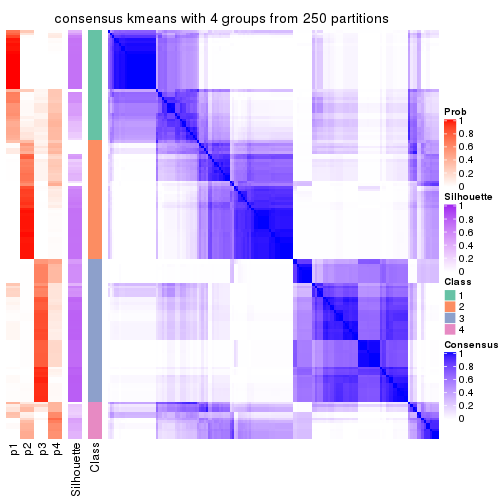
consensus_heatmap(res, k = 5)
consensus_heatmap(res, k = 6)
Heatmaps for the membership of samples in all partitions to see how consistent they are:
membership_heatmap(res, k = 2)
membership_heatmap(res, k = 3)
membership_heatmap(res, k = 4)
membership_heatmap(res, k = 5)
membership_heatmap(res, k = 6)
As soon as we have had the classes for columns, we can look for signatures
which are significantly different between classes which can be candidate marks
for certain classes. Following are the heatmaps for signatures.
Signature heatmaps where rows are scaled:
get_signatures(res, k = 2)
get_signatures(res, k = 3)
get_signatures(res, k = 4)
get_signatures(res, k = 5)
get_signatures(res, k = 6)
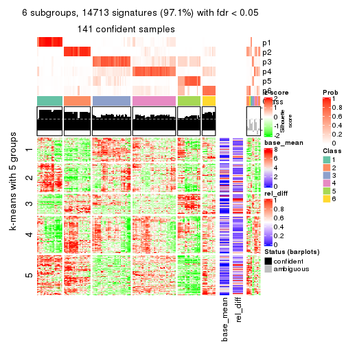
Signature heatmaps where rows are not scaled:
get_signatures(res, k = 2, scale_rows = FALSE)
get_signatures(res, k = 3, scale_rows = FALSE)
get_signatures(res, k = 4, scale_rows = FALSE)
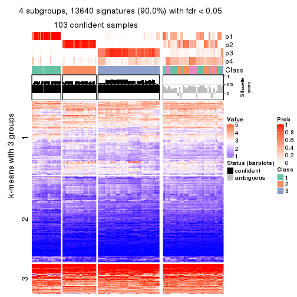
get_signatures(res, k = 5, scale_rows = FALSE)
get_signatures(res, k = 6, scale_rows = FALSE)
Compare the overlap of signatures from different k:
compare_signatures(res)
get_signature() returns a data frame invisibly. TO get the list of signatures, the function
call should be assigned to a variable explicitly. In following code, if plot argument is set
to FALSE, no heatmap is plotted while only the differential analysis is performed.
# code only for demonstration
tb = get_signature(res, k = ..., plot = FALSE)
An example of the output of tb is:
#> which_row fdr mean_1 mean_2 scaled_mean_1 scaled_mean_2 km
#> 1 38 0.042760348 8.373488 9.131774 -0.5533452 0.5164555 1
#> 2 40 0.018707592 7.106213 8.469186 -0.6173731 0.5762149 1
#> 3 55 0.019134737 10.221463 11.207825 -0.6159697 0.5749050 1
#> 4 59 0.006059896 5.921854 7.869574 -0.6899429 0.6439467 1
#> 5 60 0.018055526 8.928898 10.211722 -0.6204761 0.5791110 1
#> 6 98 0.009384629 15.714769 14.887706 0.6635654 -0.6193277 2
...
The columns in tb are:
which_row: row indices corresponding to the input matrix.fdr: FDR for the differential test. mean_x: The mean value in group x.scaled_mean_x: The mean value in group x after rows are scaled.km: Row groups if k-means clustering is applied to rows.
UMAP plot which shows how samples are separated.
dimension_reduction(res, k = 2, method = "UMAP")
dimension_reduction(res, k = 3, method = "UMAP")
dimension_reduction(res, k = 4, method = "UMAP")
dimension_reduction(res, k = 5, method = "UMAP")
dimension_reduction(res, k = 6, method = "UMAP")
Following heatmap shows how subgroups are split when increasing k:
collect_classes(res)
If matrix rows can be associated to genes, consider to use functional_enrichment(res,
...) to perform function enrichment for the signature genes. See this vignette for more detailed explanations.
CV:skmeans**
The object with results only for a single top-value method and a single partition method
can be extracted as:
res = res_list["CV", "skmeans"]
# you can also extract it by
# res = res_list["CV:skmeans"]
A summary of res and all the functions that can be applied to it:
res
#> A 'ConsensusPartition' object with k = 2, 3, 4, 5, 6.
#> On a matrix with 15148 rows and 152 columns.
#> Top rows (1000, 2000, 3000, 4000, 5000) are extracted by 'CV' method.
#> Subgroups are detected by 'skmeans' method.
#> Performed in total 1250 partitions by row resampling.
#> Best k for subgroups seems to be 3.
#>
#> Following methods can be applied to this 'ConsensusPartition' object:
#> [1] "cola_report" "collect_classes" "collect_plots"
#> [4] "collect_stats" "colnames" "compare_signatures"
#> [7] "consensus_heatmap" "dimension_reduction" "functional_enrichment"
#> [10] "get_anno_col" "get_anno" "get_classes"
#> [13] "get_consensus" "get_matrix" "get_membership"
#> [16] "get_param" "get_signatures" "get_stats"
#> [19] "is_best_k" "is_stable_k" "membership_heatmap"
#> [22] "ncol" "nrow" "plot_ecdf"
#> [25] "rownames" "select_partition_number" "show"
#> [28] "suggest_best_k" "test_to_known_factors"
collect_plots() function collects all the plots made from res for all k (number of partitions)
into one single page to provide an easy and fast comparison between different k.
collect_plots(res)
The plots are:
- The first row: a plot of the ECDF (empirical cumulative distribution
function) curves of the consensus matrix for each
k and the heatmap of
predicted classes for each k.
- The second row: heatmaps of the consensus matrix for each
k.
- The third row: heatmaps of the membership matrix for each
k.
- The fouth row: heatmaps of the signatures for each
k.
All the plots in panels can be made by individual functions and they are
plotted later in this section.
select_partition_number() produces several plots showing different
statistics for choosing “optimized” k. There are following statistics:
- ECDF curves of the consensus matrix for each
k;
- 1-PAC. The PAC
score
measures the proportion of the ambiguous subgrouping.
- Mean silhouette score.
- Concordance. The mean probability of fiting the consensus class ids in all
partitions.
- Area increased. Denote \(A_k\) as the area under the ECDF curve for current
k, the area increased is defined as \(A_k - A_{k-1}\).
- Rand index. The percent of pairs of samples that are both in a same cluster
or both are not in a same cluster in the partition of k and k-1.
- Jaccard index. The ratio of pairs of samples are both in a same cluster in
the partition of k and k-1 and the pairs of samples are both in a same
cluster in the partition k or k-1.
The detailed explanations of these statistics can be found in the cola
vignette.
Generally speaking, lower PAC score, higher mean silhouette score or higher
concordance corresponds to better partition. Rand index and Jaccard index
measure how similar the current partition is compared to partition with k-1.
If they are too similar, we won't accept k is better than k-1.
select_partition_number(res)
The numeric values for all these statistics can be obtained by get_stats().
get_stats(res)
#> k 1-PAC mean_silhouette concordance area_increased Rand Jaccard
#> 2 2 0.502 0.730 0.834 0.4766 0.539 0.539
#> 3 3 0.991 0.957 0.983 0.4067 0.782 0.598
#> 4 4 0.770 0.748 0.859 0.1036 0.895 0.700
#> 5 5 0.716 0.649 0.821 0.0671 0.923 0.720
#> 6 6 0.719 0.542 0.767 0.0493 0.909 0.606
suggest_best_k() suggests the best \(k\) based on these statistics. The rules are as follows:
- All \(k\) with Jaccard index larger than 0.95 are removed because increasing
\(k\) does not provide enough extra information. If all \(k\) are removed, it is
marked as no subgroup is detected.
- For all \(k\) with 1-PAC score larger than 0.9, the maximal \(k\) is taken as
the best \(k\), and other \(k\) are marked as optional \(k\).
- If it does not fit the second rule. The \(k\) with the maximal vote of the
highest 1-PAC score, highest mean silhouette, and highest concordance is
taken as the best \(k\).
suggest_best_k(res)
#> [1] 3
Following shows the table of the partitions (You need to click the show/hide
code output link to see it). The membership matrix (columns with name p*)
is inferred by
clue::cl_consensus()
function with the SE method. Basically the value in the membership matrix
represents the probability to belong to a certain group. The finall class
label for an item is determined with the group with highest probability it
belongs to.
In get_classes() function, the entropy is calculated from the membership
matrix and the silhouette score is calculated from the consensus matrix.
show/hide code output
cbind(get_classes(res, k = 2), get_membership(res, k = 2))
#> class entropy silhouette p1 p2
#> SRR1947547 2 0.9491 0.640 0.368 0.632
#> SRR1947546 1 0.9491 0.708 0.632 0.368
#> SRR1947545 1 0.1184 0.733 0.984 0.016
#> SRR1947544 1 0.1184 0.733 0.984 0.016
#> SRR1947542 1 0.9491 0.708 0.632 0.368
#> SRR1947541 2 0.9491 0.640 0.368 0.632
#> SRR1947540 1 0.9491 0.708 0.632 0.368
#> SRR1947539 2 0.1184 0.795 0.016 0.984
#> SRR1947538 1 0.0000 0.740 1.000 0.000
#> SRR1947537 2 0.9491 0.640 0.368 0.632
#> SRR1947536 2 0.0000 0.801 0.000 1.000
#> SRR1947535 2 0.0000 0.801 0.000 1.000
#> SRR1947534 1 0.0000 0.740 1.000 0.000
#> SRR1947533 1 0.9491 0.708 0.632 0.368
#> SRR1947532 1 0.0000 0.740 1.000 0.000
#> SRR1947531 1 0.9491 0.708 0.632 0.368
#> SRR1947530 2 0.9491 0.640 0.368 0.632
#> SRR1947529 1 0.9491 0.708 0.632 0.368
#> SRR1947528 2 0.9491 0.640 0.368 0.632
#> SRR1947527 1 0.9491 0.708 0.632 0.368
#> SRR1947526 1 0.9491 0.708 0.632 0.368
#> SRR1947525 1 0.0000 0.740 1.000 0.000
#> SRR1947524 2 0.0000 0.801 0.000 1.000
#> SRR1947523 1 0.9129 0.709 0.672 0.328
#> SRR1947521 2 0.0000 0.801 0.000 1.000
#> SRR1947520 1 0.9491 0.708 0.632 0.368
#> SRR1947519 2 0.0000 0.801 0.000 1.000
#> SRR1947518 1 0.0000 0.740 1.000 0.000
#> SRR1947517 2 0.0000 0.801 0.000 1.000
#> SRR1947516 1 0.9491 0.708 0.632 0.368
#> SRR1947515 1 0.0000 0.740 1.000 0.000
#> SRR1947514 1 0.9491 0.708 0.632 0.368
#> SRR1947513 1 0.1184 0.733 0.984 0.016
#> SRR1947512 1 0.0672 0.738 0.992 0.008
#> SRR1947511 1 0.9491 0.708 0.632 0.368
#> SRR1947510 2 0.0000 0.801 0.000 1.000
#> SRR1947572 1 0.0000 0.740 1.000 0.000
#> SRR1947611 2 0.0000 0.801 0.000 1.000
#> SRR1947509 2 0.0000 0.801 0.000 1.000
#> SRR1947644 2 0.0000 0.801 0.000 1.000
#> SRR1947643 1 0.9491 0.708 0.632 0.368
#> SRR1947642 2 0.0000 0.801 0.000 1.000
#> SRR1947640 1 0.0000 0.740 1.000 0.000
#> SRR1947641 2 0.0000 0.801 0.000 1.000
#> SRR1947639 1 0.0000 0.740 1.000 0.000
#> SRR1947638 1 0.0000 0.740 1.000 0.000
#> SRR1947637 2 0.0000 0.801 0.000 1.000
#> SRR1947636 2 0.9491 0.640 0.368 0.632
#> SRR1947635 1 0.9491 0.708 0.632 0.368
#> SRR1947634 1 0.9491 0.708 0.632 0.368
#> SRR1947633 2 0.0000 0.801 0.000 1.000
#> SRR1947632 1 0.9491 0.708 0.632 0.368
#> SRR1947631 2 0.0000 0.801 0.000 1.000
#> SRR1947629 2 0.0000 0.801 0.000 1.000
#> SRR1947630 1 0.9491 0.708 0.632 0.368
#> SRR1947627 2 0.9491 0.640 0.368 0.632
#> SRR1947628 1 0.9491 0.708 0.632 0.368
#> SRR1947626 1 0.9491 0.708 0.632 0.368
#> SRR1947625 2 0.0000 0.801 0.000 1.000
#> SRR1947624 1 0.9552 0.698 0.624 0.376
#> SRR1947623 1 0.0672 0.738 0.992 0.008
#> SRR1947622 1 0.9491 0.708 0.632 0.368
#> SRR1947621 1 0.9491 0.708 0.632 0.368
#> SRR1947620 1 0.1184 0.733 0.984 0.016
#> SRR1947619 2 0.9491 0.640 0.368 0.632
#> SRR1947617 1 0.9491 0.708 0.632 0.368
#> SRR1947618 1 0.1184 0.733 0.984 0.016
#> SRR1947616 1 0.9491 0.708 0.632 0.368
#> SRR1947615 2 0.9491 0.640 0.368 0.632
#> SRR1947614 2 0.0000 0.801 0.000 1.000
#> SRR1947613 1 0.0938 0.736 0.988 0.012
#> SRR1947610 1 0.9491 0.708 0.632 0.368
#> SRR1947612 1 0.9491 0.708 0.632 0.368
#> SRR1947609 1 0.1184 0.733 0.984 0.016
#> SRR1947608 2 0.0000 0.801 0.000 1.000
#> SRR1947606 2 0.9491 0.640 0.368 0.632
#> SRR1947607 1 0.0000 0.740 1.000 0.000
#> SRR1947604 1 0.0000 0.740 1.000 0.000
#> SRR1947605 1 0.1184 0.733 0.984 0.016
#> SRR1947603 1 0.9491 0.708 0.632 0.368
#> SRR1947602 2 0.9491 0.640 0.368 0.632
#> SRR1947600 2 0.0000 0.801 0.000 1.000
#> SRR1947601 1 0.9491 0.708 0.632 0.368
#> SRR1947598 1 0.9491 0.708 0.632 0.368
#> SRR1947599 1 0.0376 0.739 0.996 0.004
#> SRR1947597 1 0.9491 0.708 0.632 0.368
#> SRR1947596 1 0.0672 0.738 0.992 0.008
#> SRR1947595 1 0.0938 0.736 0.988 0.012
#> SRR1947594 1 0.0938 0.736 0.988 0.012
#> SRR1947592 2 0.9491 0.640 0.368 0.632
#> SRR1947591 1 0.9491 0.708 0.632 0.368
#> SRR1947590 1 0.0938 0.736 0.988 0.012
#> SRR1947588 1 0.0938 0.736 0.988 0.012
#> SRR1947587 2 0.9491 0.640 0.368 0.632
#> SRR1947586 1 0.9491 0.708 0.632 0.368
#> SRR1947585 2 0.0000 0.801 0.000 1.000
#> SRR1947584 1 0.0938 0.736 0.988 0.012
#> SRR1947583 1 0.0000 0.740 1.000 0.000
#> SRR1947582 1 0.1184 0.733 0.984 0.016
#> SRR1947580 1 0.9491 0.708 0.632 0.368
#> SRR1947581 1 0.0938 0.736 0.988 0.012
#> SRR1947576 2 0.0000 0.801 0.000 1.000
#> SRR1947575 2 0.0000 0.801 0.000 1.000
#> SRR1947579 2 0.0000 0.801 0.000 1.000
#> SRR1947578 1 0.9491 0.708 0.632 0.368
#> SRR1947573 2 0.0000 0.801 0.000 1.000
#> SRR1947574 1 0.0000 0.740 1.000 0.000
#> SRR1947571 1 0.0000 0.740 1.000 0.000
#> SRR1947577 1 0.1184 0.733 0.984 0.016
#> SRR1947570 2 0.9491 0.640 0.368 0.632
#> SRR1947569 2 0.0000 0.801 0.000 1.000
#> SRR1947566 1 0.9491 0.708 0.632 0.368
#> SRR1947567 1 0.9491 0.708 0.632 0.368
#> SRR1947568 1 0.0000 0.740 1.000 0.000
#> SRR1947564 1 0.9491 0.708 0.632 0.368
#> SRR1947563 2 0.0000 0.801 0.000 1.000
#> SRR1947562 1 0.0000 0.740 1.000 0.000
#> SRR1947565 2 0.9491 0.640 0.368 0.632
#> SRR1947559 1 0.9460 0.708 0.636 0.364
#> SRR1947560 2 0.0000 0.801 0.000 1.000
#> SRR1947561 1 0.9491 0.708 0.632 0.368
#> SRR1947557 1 0.1184 0.733 0.984 0.016
#> SRR1947558 2 0.0000 0.801 0.000 1.000
#> SRR1947556 1 0.0938 0.736 0.988 0.012
#> SRR1947553 1 0.9491 0.708 0.632 0.368
#> SRR1947554 1 0.0000 0.740 1.000 0.000
#> SRR1947555 2 0.1184 0.783 0.016 0.984
#> SRR1947550 1 0.0000 0.740 1.000 0.000
#> SRR1947552 1 0.0376 0.739 0.996 0.004
#> SRR1947549 2 0.8813 0.668 0.300 0.700
#> SRR1947551 2 0.0000 0.801 0.000 1.000
#> SRR1947548 1 0.0000 0.740 1.000 0.000
#> SRR1947506 2 0.9491 0.640 0.368 0.632
#> SRR1947507 1 0.0938 0.736 0.988 0.012
#> SRR1947504 1 0.0672 0.738 0.992 0.008
#> SRR1947503 1 0.0000 0.740 1.000 0.000
#> SRR1947502 1 0.9491 0.708 0.632 0.368
#> SRR1947501 1 0.9491 0.708 0.632 0.368
#> SRR1947499 2 0.9491 0.640 0.368 0.632
#> SRR1947498 2 0.0000 0.801 0.000 1.000
#> SRR1947508 2 0.0000 0.801 0.000 1.000
#> SRR1947505 1 0.9491 0.708 0.632 0.368
#> SRR1947497 1 0.9491 0.708 0.632 0.368
#> SRR1947496 1 0.0938 0.736 0.988 0.012
#> SRR1947495 1 0.9491 0.708 0.632 0.368
#> SRR1947494 1 0.0000 0.740 1.000 0.000
#> SRR1947493 2 0.9491 0.640 0.368 0.632
#> SRR1947492 1 0.0938 0.736 0.988 0.012
#> SRR1947500 1 0.9460 0.708 0.636 0.364
#> SRR1947491 1 0.9491 0.708 0.632 0.368
#> SRR1947490 1 0.0938 0.736 0.988 0.012
#> SRR1947489 2 0.9491 0.640 0.368 0.632
show/hide code output
cbind(get_classes(res, k = 3), get_membership(res, k = 3))
#> class entropy silhouette p1 p2 p3
#> SRR1947547 3 0.0000 0.9904 0.000 0.000 1.000
#> SRR1947546 2 0.0000 0.9822 0.000 1.000 0.000
#> SRR1947545 1 0.0000 0.9725 1.000 0.000 0.000
#> SRR1947544 1 0.0000 0.9725 1.000 0.000 0.000
#> SRR1947542 2 0.0000 0.9822 0.000 1.000 0.000
#> SRR1947541 3 0.0000 0.9904 0.000 0.000 1.000
#> SRR1947540 2 0.0000 0.9822 0.000 1.000 0.000
#> SRR1947539 3 0.0000 0.9904 0.000 0.000 1.000
#> SRR1947538 1 0.0237 0.9699 0.996 0.004 0.000
#> SRR1947537 3 0.0000 0.9904 0.000 0.000 1.000
#> SRR1947536 3 0.0000 0.9904 0.000 0.000 1.000
#> SRR1947535 3 0.0000 0.9904 0.000 0.000 1.000
#> SRR1947534 1 0.3482 0.8423 0.872 0.128 0.000
#> SRR1947533 2 0.0000 0.9822 0.000 1.000 0.000
#> SRR1947532 1 0.0000 0.9725 1.000 0.000 0.000
#> SRR1947531 2 0.0000 0.9822 0.000 1.000 0.000
#> SRR1947530 3 0.0892 0.9734 0.020 0.000 0.980
#> SRR1947529 2 0.0000 0.9822 0.000 1.000 0.000
#> SRR1947528 3 0.0000 0.9904 0.000 0.000 1.000
#> SRR1947527 2 0.0000 0.9822 0.000 1.000 0.000
#> SRR1947526 2 0.0000 0.9822 0.000 1.000 0.000
#> SRR1947525 1 0.5016 0.6866 0.760 0.240 0.000
#> SRR1947524 3 0.0000 0.9904 0.000 0.000 1.000
#> SRR1947523 2 0.0237 0.9784 0.004 0.996 0.000
#> SRR1947521 3 0.0000 0.9904 0.000 0.000 1.000
#> SRR1947520 2 0.0000 0.9822 0.000 1.000 0.000
#> SRR1947519 3 0.0000 0.9904 0.000 0.000 1.000
#> SRR1947518 1 0.0237 0.9699 0.996 0.004 0.000
#> SRR1947517 3 0.0000 0.9904 0.000 0.000 1.000
#> SRR1947516 2 0.0000 0.9822 0.000 1.000 0.000
#> SRR1947515 1 0.0000 0.9725 1.000 0.000 0.000
#> SRR1947514 2 0.0000 0.9822 0.000 1.000 0.000
#> SRR1947513 1 0.0000 0.9725 1.000 0.000 0.000
#> SRR1947512 1 0.0000 0.9725 1.000 0.000 0.000
#> SRR1947511 2 0.0000 0.9822 0.000 1.000 0.000
#> SRR1947510 3 0.0000 0.9904 0.000 0.000 1.000
#> SRR1947572 1 0.0000 0.9725 1.000 0.000 0.000
#> SRR1947611 3 0.0000 0.9904 0.000 0.000 1.000
#> SRR1947509 3 0.0000 0.9904 0.000 0.000 1.000
#> SRR1947644 3 0.0000 0.9904 0.000 0.000 1.000
#> SRR1947643 2 0.0000 0.9822 0.000 1.000 0.000
#> SRR1947642 3 0.0000 0.9904 0.000 0.000 1.000
#> SRR1947640 1 0.3686 0.8309 0.860 0.140 0.000
#> SRR1947641 3 0.0000 0.9904 0.000 0.000 1.000
#> SRR1947639 1 0.1031 0.9537 0.976 0.024 0.000
#> SRR1947638 1 0.0000 0.9725 1.000 0.000 0.000
#> SRR1947637 3 0.0000 0.9904 0.000 0.000 1.000
#> SRR1947636 3 0.0000 0.9904 0.000 0.000 1.000
#> SRR1947635 2 0.0000 0.9822 0.000 1.000 0.000
#> SRR1947634 2 0.0000 0.9822 0.000 1.000 0.000
#> SRR1947633 3 0.0000 0.9904 0.000 0.000 1.000
#> SRR1947632 2 0.0000 0.9822 0.000 1.000 0.000
#> SRR1947631 3 0.0000 0.9904 0.000 0.000 1.000
#> SRR1947629 3 0.0000 0.9904 0.000 0.000 1.000
#> SRR1947630 2 0.0000 0.9822 0.000 1.000 0.000
#> SRR1947627 3 0.0000 0.9904 0.000 0.000 1.000
#> SRR1947628 2 0.0000 0.9822 0.000 1.000 0.000
#> SRR1947626 2 0.0000 0.9822 0.000 1.000 0.000
#> SRR1947625 3 0.0000 0.9904 0.000 0.000 1.000
#> SRR1947624 2 0.0000 0.9822 0.000 1.000 0.000
#> SRR1947623 1 0.0000 0.9725 1.000 0.000 0.000
#> SRR1947622 2 0.0000 0.9822 0.000 1.000 0.000
#> SRR1947621 2 0.0000 0.9822 0.000 1.000 0.000
#> SRR1947620 1 0.0000 0.9725 1.000 0.000 0.000
#> SRR1947619 3 0.0000 0.9904 0.000 0.000 1.000
#> SRR1947617 2 0.0000 0.9822 0.000 1.000 0.000
#> SRR1947618 1 0.0000 0.9725 1.000 0.000 0.000
#> SRR1947616 2 0.0000 0.9822 0.000 1.000 0.000
#> SRR1947615 3 0.0000 0.9904 0.000 0.000 1.000
#> SRR1947614 3 0.0000 0.9904 0.000 0.000 1.000
#> SRR1947613 1 0.0000 0.9725 1.000 0.000 0.000
#> SRR1947610 2 0.0000 0.9822 0.000 1.000 0.000
#> SRR1947612 2 0.0000 0.9822 0.000 1.000 0.000
#> SRR1947609 1 0.0000 0.9725 1.000 0.000 0.000
#> SRR1947608 3 0.0000 0.9904 0.000 0.000 1.000
#> SRR1947606 3 0.0000 0.9904 0.000 0.000 1.000
#> SRR1947607 1 0.0000 0.9725 1.000 0.000 0.000
#> SRR1947604 1 0.0000 0.9725 1.000 0.000 0.000
#> SRR1947605 1 0.0000 0.9725 1.000 0.000 0.000
#> SRR1947603 2 0.0000 0.9822 0.000 1.000 0.000
#> SRR1947602 3 0.0892 0.9734 0.020 0.000 0.980
#> SRR1947600 3 0.0000 0.9904 0.000 0.000 1.000
#> SRR1947601 2 0.0000 0.9822 0.000 1.000 0.000
#> SRR1947598 2 0.0237 0.9785 0.004 0.996 0.000
#> SRR1947599 1 0.0000 0.9725 1.000 0.000 0.000
#> SRR1947597 2 0.0000 0.9822 0.000 1.000 0.000
#> SRR1947596 1 0.0000 0.9725 1.000 0.000 0.000
#> SRR1947595 1 0.4654 0.7391 0.792 0.208 0.000
#> SRR1947594 1 0.0000 0.9725 1.000 0.000 0.000
#> SRR1947592 3 0.0000 0.9904 0.000 0.000 1.000
#> SRR1947591 2 0.0000 0.9822 0.000 1.000 0.000
#> SRR1947590 1 0.0000 0.9725 1.000 0.000 0.000
#> SRR1947588 1 0.0000 0.9725 1.000 0.000 0.000
#> SRR1947587 3 0.0000 0.9904 0.000 0.000 1.000
#> SRR1947586 2 0.0000 0.9822 0.000 1.000 0.000
#> SRR1947585 3 0.0000 0.9904 0.000 0.000 1.000
#> SRR1947584 1 0.0000 0.9725 1.000 0.000 0.000
#> SRR1947583 2 0.6299 0.0483 0.476 0.524 0.000
#> SRR1947582 1 0.0000 0.9725 1.000 0.000 0.000
#> SRR1947580 2 0.0000 0.9822 0.000 1.000 0.000
#> SRR1947581 1 0.0000 0.9725 1.000 0.000 0.000
#> SRR1947576 3 0.0000 0.9904 0.000 0.000 1.000
#> SRR1947575 3 0.0000 0.9904 0.000 0.000 1.000
#> SRR1947579 3 0.0000 0.9904 0.000 0.000 1.000
#> SRR1947578 2 0.0000 0.9822 0.000 1.000 0.000
#> SRR1947573 3 0.0000 0.9904 0.000 0.000 1.000
#> SRR1947574 1 0.0000 0.9725 1.000 0.000 0.000
#> SRR1947571 1 0.0237 0.9699 0.996 0.004 0.000
#> SRR1947577 1 0.0000 0.9725 1.000 0.000 0.000
#> SRR1947570 3 0.4702 0.7339 0.212 0.000 0.788
#> SRR1947569 3 0.0000 0.9904 0.000 0.000 1.000
#> SRR1947566 2 0.0000 0.9822 0.000 1.000 0.000
#> SRR1947567 2 0.0000 0.9822 0.000 1.000 0.000
#> SRR1947568 1 0.0892 0.9570 0.980 0.020 0.000
#> SRR1947564 2 0.0000 0.9822 0.000 1.000 0.000
#> SRR1947563 3 0.0000 0.9904 0.000 0.000 1.000
#> SRR1947562 2 0.5926 0.4207 0.356 0.644 0.000
#> SRR1947565 3 0.0000 0.9904 0.000 0.000 1.000
#> SRR1947559 2 0.0000 0.9822 0.000 1.000 0.000
#> SRR1947560 3 0.0000 0.9904 0.000 0.000 1.000
#> SRR1947561 2 0.0000 0.9822 0.000 1.000 0.000
#> SRR1947557 1 0.0000 0.9725 1.000 0.000 0.000
#> SRR1947558 3 0.0000 0.9904 0.000 0.000 1.000
#> SRR1947556 1 0.0000 0.9725 1.000 0.000 0.000
#> SRR1947553 2 0.0000 0.9822 0.000 1.000 0.000
#> SRR1947554 1 0.0000 0.9725 1.000 0.000 0.000
#> SRR1947555 2 0.0000 0.9822 0.000 1.000 0.000
#> SRR1947550 1 0.6295 0.1161 0.528 0.472 0.000
#> SRR1947552 1 0.0000 0.9725 1.000 0.000 0.000
#> SRR1947549 3 0.0000 0.9904 0.000 0.000 1.000
#> SRR1947551 3 0.0000 0.9904 0.000 0.000 1.000
#> SRR1947548 1 0.0237 0.9699 0.996 0.004 0.000
#> SRR1947506 3 0.0000 0.9904 0.000 0.000 1.000
#> SRR1947507 1 0.0000 0.9725 1.000 0.000 0.000
#> SRR1947504 1 0.0000 0.9725 1.000 0.000 0.000
#> SRR1947503 1 0.0000 0.9725 1.000 0.000 0.000
#> SRR1947502 2 0.0000 0.9822 0.000 1.000 0.000
#> SRR1947501 2 0.0000 0.9822 0.000 1.000 0.000
#> SRR1947499 3 0.0892 0.9734 0.020 0.000 0.980
#> SRR1947498 3 0.0000 0.9904 0.000 0.000 1.000
#> SRR1947508 3 0.0000 0.9904 0.000 0.000 1.000
#> SRR1947505 2 0.0000 0.9822 0.000 1.000 0.000
#> SRR1947497 2 0.0000 0.9822 0.000 1.000 0.000
#> SRR1947496 1 0.0000 0.9725 1.000 0.000 0.000
#> SRR1947495 2 0.0000 0.9822 0.000 1.000 0.000
#> SRR1947494 1 0.0000 0.9725 1.000 0.000 0.000
#> SRR1947493 3 0.4796 0.7211 0.220 0.000 0.780
#> SRR1947492 1 0.0000 0.9725 1.000 0.000 0.000
#> SRR1947500 2 0.0000 0.9822 0.000 1.000 0.000
#> SRR1947491 2 0.0424 0.9746 0.008 0.992 0.000
#> SRR1947490 1 0.0000 0.9725 1.000 0.000 0.000
#> SRR1947489 3 0.0000 0.9904 0.000 0.000 1.000
show/hide code output
cbind(get_classes(res, k = 4), get_membership(res, k = 4))
#> class entropy silhouette p1 p2 p3 p4
#> SRR1947547 3 0.1474 0.8704 0.000 0.000 0.948 0.052
#> SRR1947546 2 0.2760 0.8349 0.000 0.872 0.000 0.128
#> SRR1947545 1 0.0336 0.8258 0.992 0.000 0.000 0.008
#> SRR1947544 1 0.0336 0.8258 0.992 0.000 0.000 0.008
#> SRR1947542 2 0.4730 0.5448 0.000 0.636 0.000 0.364
#> SRR1947541 3 0.0188 0.9145 0.000 0.000 0.996 0.004
#> SRR1947540 4 0.4877 0.3596 0.000 0.408 0.000 0.592
#> SRR1947539 3 0.0188 0.9151 0.000 0.000 0.996 0.004
#> SRR1947538 4 0.2149 0.4935 0.088 0.000 0.000 0.912
#> SRR1947537 3 0.0188 0.9145 0.000 0.000 0.996 0.004
#> SRR1947536 4 0.4985 0.4458 0.000 0.000 0.468 0.532
#> SRR1947535 3 0.0000 0.9158 0.000 0.000 1.000 0.000
#> SRR1947534 1 0.3649 0.6466 0.796 0.204 0.000 0.000
#> SRR1947533 2 0.0000 0.8989 0.000 1.000 0.000 0.000
#> SRR1947532 1 0.4730 0.6541 0.636 0.000 0.000 0.364
#> SRR1947531 4 0.4877 0.3596 0.000 0.408 0.000 0.592
#> SRR1947530 3 0.6110 0.3738 0.368 0.000 0.576 0.056
#> SRR1947529 2 0.1474 0.8784 0.000 0.948 0.000 0.052
#> SRR1947528 3 0.0188 0.9145 0.000 0.000 0.996 0.004
#> SRR1947527 2 0.0000 0.8989 0.000 1.000 0.000 0.000
#> SRR1947526 2 0.0000 0.8989 0.000 1.000 0.000 0.000
#> SRR1947525 1 0.5682 0.6244 0.612 0.036 0.000 0.352
#> SRR1947524 4 0.4985 0.4458 0.000 0.000 0.468 0.532
#> SRR1947523 2 0.4434 0.7531 0.016 0.772 0.004 0.208
#> SRR1947521 3 0.0188 0.9151 0.000 0.000 0.996 0.004
#> SRR1947520 2 0.0000 0.8989 0.000 1.000 0.000 0.000
#> SRR1947519 3 0.0000 0.9158 0.000 0.000 1.000 0.000
#> SRR1947518 4 0.2149 0.4935 0.088 0.000 0.000 0.912
#> SRR1947517 3 0.0188 0.9151 0.000 0.000 0.996 0.004
#> SRR1947516 2 0.0000 0.8989 0.000 1.000 0.000 0.000
#> SRR1947515 1 0.4730 0.6541 0.636 0.000 0.000 0.364
#> SRR1947514 2 0.0000 0.8989 0.000 1.000 0.000 0.000
#> SRR1947513 1 0.2053 0.8050 0.924 0.000 0.004 0.072
#> SRR1947512 1 0.0000 0.8269 1.000 0.000 0.000 0.000
#> SRR1947511 2 0.0000 0.8989 0.000 1.000 0.000 0.000
#> SRR1947510 3 0.0188 0.9151 0.000 0.000 0.996 0.004
#> SRR1947572 1 0.4585 0.6673 0.668 0.000 0.000 0.332
#> SRR1947611 3 0.0188 0.9151 0.000 0.000 0.996 0.004
#> SRR1947509 3 0.0188 0.9151 0.000 0.000 0.996 0.004
#> SRR1947644 4 0.4985 0.4458 0.000 0.000 0.468 0.532
#> SRR1947643 2 0.2011 0.8460 0.000 0.920 0.000 0.080
#> SRR1947642 3 0.0000 0.9158 0.000 0.000 1.000 0.000
#> SRR1947640 1 0.5674 0.6463 0.724 0.176 0.004 0.096
#> SRR1947641 3 0.0188 0.9151 0.000 0.000 0.996 0.004
#> SRR1947639 1 0.5323 0.6389 0.628 0.020 0.000 0.352
#> SRR1947638 1 0.0000 0.8269 1.000 0.000 0.000 0.000
#> SRR1947637 3 0.0188 0.9151 0.000 0.000 0.996 0.004
#> SRR1947636 3 0.0188 0.9145 0.000 0.000 0.996 0.004
#> SRR1947635 2 0.2011 0.8701 0.000 0.920 0.000 0.080
#> SRR1947634 2 0.0000 0.8989 0.000 1.000 0.000 0.000
#> SRR1947633 3 0.0188 0.9151 0.000 0.000 0.996 0.004
#> SRR1947632 2 0.4134 0.6944 0.000 0.740 0.000 0.260
#> SRR1947631 3 0.0000 0.9158 0.000 0.000 1.000 0.000
#> SRR1947629 4 0.4985 0.4458 0.000 0.000 0.468 0.532
#> SRR1947630 2 0.0000 0.8989 0.000 1.000 0.000 0.000
#> SRR1947627 3 0.0000 0.9158 0.000 0.000 1.000 0.000
#> SRR1947628 4 0.4477 0.4046 0.000 0.312 0.000 0.688
#> SRR1947626 2 0.2149 0.8406 0.000 0.912 0.000 0.088
#> SRR1947625 3 0.0188 0.9151 0.000 0.000 0.996 0.004
#> SRR1947624 2 0.0000 0.8989 0.000 1.000 0.000 0.000
#> SRR1947623 1 0.0000 0.8269 1.000 0.000 0.000 0.000
#> SRR1947622 2 0.3219 0.8227 0.000 0.836 0.000 0.164
#> SRR1947621 2 0.0000 0.8989 0.000 1.000 0.000 0.000
#> SRR1947620 1 0.1867 0.8069 0.928 0.000 0.000 0.072
#> SRR1947619 3 0.0188 0.9145 0.000 0.000 0.996 0.004
#> SRR1947617 2 0.0000 0.8989 0.000 1.000 0.000 0.000
#> SRR1947618 1 0.1867 0.8069 0.928 0.000 0.000 0.072
#> SRR1947616 4 0.4877 0.3596 0.000 0.408 0.000 0.592
#> SRR1947615 3 0.1389 0.8745 0.000 0.000 0.952 0.048
#> SRR1947614 3 0.0188 0.9151 0.000 0.000 0.996 0.004
#> SRR1947613 1 0.0000 0.8269 1.000 0.000 0.000 0.000
#> SRR1947610 4 0.2466 0.5256 0.056 0.028 0.000 0.916
#> SRR1947612 2 0.0000 0.8989 0.000 1.000 0.000 0.000
#> SRR1947609 1 0.2125 0.8042 0.920 0.000 0.004 0.076
#> SRR1947608 3 0.0000 0.9158 0.000 0.000 1.000 0.000
#> SRR1947606 3 0.0188 0.9145 0.000 0.000 0.996 0.004
#> SRR1947607 1 0.0000 0.8269 1.000 0.000 0.000 0.000
#> SRR1947604 1 0.4888 0.6455 0.588 0.000 0.000 0.412
#> SRR1947605 1 0.0921 0.8210 0.972 0.000 0.000 0.028
#> SRR1947603 2 0.0707 0.8915 0.000 0.980 0.000 0.020
#> SRR1947602 3 0.6097 0.3831 0.364 0.000 0.580 0.056
#> SRR1947600 4 0.4985 0.4458 0.000 0.000 0.468 0.532
#> SRR1947601 2 0.0000 0.8989 0.000 1.000 0.000 0.000
#> SRR1947598 4 0.0336 0.5273 0.000 0.008 0.000 0.992
#> SRR1947599 1 0.1940 0.8062 0.924 0.000 0.000 0.076
#> SRR1947597 2 0.2647 0.8395 0.000 0.880 0.000 0.120
#> SRR1947596 1 0.4624 0.6686 0.660 0.000 0.000 0.340
#> SRR1947595 1 0.5632 0.6502 0.732 0.176 0.008 0.084
#> SRR1947594 1 0.0000 0.8269 1.000 0.000 0.000 0.000
#> SRR1947592 3 0.0000 0.9158 0.000 0.000 1.000 0.000
#> SRR1947591 2 0.0000 0.8989 0.000 1.000 0.000 0.000
#> SRR1947590 1 0.4624 0.6686 0.660 0.000 0.000 0.340
#> SRR1947588 1 0.0000 0.8269 1.000 0.000 0.000 0.000
#> SRR1947587 3 0.0188 0.9145 0.000 0.000 0.996 0.004
#> SRR1947586 2 0.3172 0.7482 0.000 0.840 0.000 0.160
#> SRR1947585 4 0.4985 0.4458 0.000 0.000 0.468 0.532
#> SRR1947584 1 0.0000 0.8269 1.000 0.000 0.000 0.000
#> SRR1947583 1 0.6770 0.3876 0.560 0.340 0.004 0.096
#> SRR1947582 1 0.1867 0.8069 0.928 0.000 0.000 0.072
#> SRR1947580 4 0.4907 0.3467 0.000 0.420 0.000 0.580
#> SRR1947581 1 0.0000 0.8269 1.000 0.000 0.000 0.000
#> SRR1947576 3 0.0188 0.9151 0.000 0.000 0.996 0.004
#> SRR1947575 3 0.0000 0.9158 0.000 0.000 1.000 0.000
#> SRR1947579 3 0.0188 0.9151 0.000 0.000 0.996 0.004
#> SRR1947578 4 0.4877 0.3596 0.000 0.408 0.000 0.592
#> SRR1947573 3 0.0188 0.9151 0.000 0.000 0.996 0.004
#> SRR1947574 1 0.0000 0.8269 1.000 0.000 0.000 0.000
#> SRR1947571 1 0.4697 0.6506 0.644 0.000 0.000 0.356
#> SRR1947577 1 0.1867 0.8069 0.928 0.000 0.000 0.072
#> SRR1947570 3 0.6252 0.2018 0.432 0.000 0.512 0.056
#> SRR1947569 4 0.4985 0.4458 0.000 0.000 0.468 0.532
#> SRR1947566 2 0.2345 0.8278 0.000 0.900 0.000 0.100
#> SRR1947567 2 0.3172 0.8264 0.000 0.840 0.000 0.160
#> SRR1947568 1 0.5658 0.6427 0.632 0.040 0.000 0.328
#> SRR1947564 2 0.3801 0.7279 0.000 0.780 0.000 0.220
#> SRR1947563 3 0.0000 0.9158 0.000 0.000 1.000 0.000
#> SRR1947562 2 0.7554 0.2091 0.192 0.432 0.000 0.376
#> SRR1947565 3 0.0188 0.9145 0.000 0.000 0.996 0.004
#> SRR1947559 2 0.2589 0.8362 0.000 0.884 0.000 0.116
#> SRR1947560 3 0.0188 0.9151 0.000 0.000 0.996 0.004
#> SRR1947561 2 0.0000 0.8989 0.000 1.000 0.000 0.000
#> SRR1947557 1 0.0000 0.8269 1.000 0.000 0.000 0.000
#> SRR1947558 3 0.0000 0.9158 0.000 0.000 1.000 0.000
#> SRR1947556 1 0.3688 0.7451 0.792 0.000 0.000 0.208
#> SRR1947553 4 0.2466 0.5256 0.056 0.028 0.000 0.916
#> SRR1947554 1 0.0000 0.8269 1.000 0.000 0.000 0.000
#> SRR1947555 2 0.0000 0.8989 0.000 1.000 0.000 0.000
#> SRR1947550 1 0.8066 0.1815 0.356 0.336 0.004 0.304
#> SRR1947552 1 0.2647 0.8059 0.880 0.000 0.000 0.120
#> SRR1947549 3 0.0000 0.9158 0.000 0.000 1.000 0.000
#> SRR1947551 4 0.4985 0.4458 0.000 0.000 0.468 0.532
#> SRR1947548 1 0.4730 0.6541 0.636 0.000 0.000 0.364
#> SRR1947506 3 0.5936 0.4371 0.324 0.000 0.620 0.056
#> SRR1947507 1 0.0000 0.8269 1.000 0.000 0.000 0.000
#> SRR1947504 1 0.3688 0.7451 0.792 0.000 0.000 0.208
#> SRR1947503 1 0.0817 0.8224 0.976 0.000 0.000 0.024
#> SRR1947502 2 0.0000 0.8989 0.000 1.000 0.000 0.000
#> SRR1947501 2 0.3074 0.8154 0.000 0.848 0.000 0.152
#> SRR1947499 3 0.6097 0.3831 0.364 0.000 0.580 0.056
#> SRR1947498 4 0.4985 0.4458 0.000 0.000 0.468 0.532
#> SRR1947508 3 0.1118 0.8851 0.000 0.000 0.964 0.036
#> SRR1947505 4 0.4713 0.3974 0.000 0.360 0.000 0.640
#> SRR1947497 2 0.0000 0.8989 0.000 1.000 0.000 0.000
#> SRR1947496 1 0.0000 0.8269 1.000 0.000 0.000 0.000
#> SRR1947495 2 0.0000 0.8989 0.000 1.000 0.000 0.000
#> SRR1947494 1 0.4661 0.6665 0.652 0.000 0.000 0.348
#> SRR1947493 1 0.6257 0.0261 0.508 0.000 0.436 0.056
#> SRR1947492 1 0.0000 0.8269 1.000 0.000 0.000 0.000
#> SRR1947500 2 0.1211 0.8856 0.000 0.960 0.000 0.040
#> SRR1947491 2 0.6050 0.5842 0.212 0.676 0.000 0.112
#> SRR1947490 1 0.0921 0.8201 0.972 0.000 0.000 0.028
#> SRR1947489 3 0.1557 0.8660 0.000 0.000 0.944 0.056
show/hide code output
cbind(get_classes(res, k = 5), get_membership(res, k = 5))
#> class entropy silhouette p1 p2 p3 p4 p5
#> SRR1947547 3 0.3209 0.7570 0.000 0.000 0.812 0.180 0.008
#> SRR1947546 4 0.5399 0.2181 0.000 0.448 0.000 0.496 0.056
#> SRR1947545 1 0.0963 0.7325 0.964 0.000 0.000 0.036 0.000
#> SRR1947544 1 0.0510 0.7422 0.984 0.000 0.000 0.016 0.000
#> SRR1947542 4 0.4806 0.5226 0.000 0.252 0.000 0.688 0.060
#> SRR1947541 3 0.2017 0.8389 0.000 0.000 0.912 0.080 0.008
#> SRR1947540 5 0.2074 0.6691 0.000 0.104 0.000 0.000 0.896
#> SRR1947539 3 0.1211 0.8520 0.000 0.000 0.960 0.024 0.016
#> SRR1947538 5 0.3919 0.5546 0.036 0.000 0.000 0.188 0.776
#> SRR1947537 3 0.1484 0.8553 0.000 0.000 0.944 0.048 0.008
#> SRR1947536 5 0.4430 0.6099 0.000 0.000 0.360 0.012 0.628
#> SRR1947535 3 0.0290 0.8638 0.000 0.000 0.992 0.008 0.000
#> SRR1947534 1 0.3109 0.5526 0.800 0.200 0.000 0.000 0.000
#> SRR1947533 2 0.0000 0.8664 0.000 1.000 0.000 0.000 0.000
#> SRR1947532 4 0.4270 0.5127 0.204 0.000 0.000 0.748 0.048
#> SRR1947531 5 0.2074 0.6691 0.000 0.104 0.000 0.000 0.896
#> SRR1947530 3 0.6706 0.1726 0.352 0.000 0.452 0.188 0.008
#> SRR1947529 2 0.4960 0.6135 0.000 0.668 0.000 0.064 0.268
#> SRR1947528 3 0.1628 0.8521 0.000 0.000 0.936 0.056 0.008
#> SRR1947527 2 0.0162 0.8670 0.000 0.996 0.000 0.004 0.000
#> SRR1947526 2 0.0000 0.8664 0.000 1.000 0.000 0.000 0.000
#> SRR1947525 4 0.5436 0.0330 0.456 0.004 0.000 0.492 0.048
#> SRR1947524 5 0.4444 0.6110 0.000 0.000 0.364 0.012 0.624
#> SRR1947523 4 0.3993 0.5853 0.000 0.216 0.000 0.756 0.028
#> SRR1947521 3 0.2609 0.8284 0.000 0.004 0.896 0.048 0.052
#> SRR1947520 2 0.1082 0.8461 0.000 0.964 0.000 0.008 0.028
#> SRR1947519 3 0.0671 0.8642 0.000 0.000 0.980 0.016 0.004
#> SRR1947518 5 0.4066 0.5474 0.044 0.000 0.000 0.188 0.768
#> SRR1947517 3 0.2609 0.8284 0.000 0.004 0.896 0.048 0.052
#> SRR1947516 2 0.0162 0.8670 0.000 0.996 0.000 0.004 0.000
#> SRR1947515 4 0.4270 0.5127 0.204 0.000 0.000 0.748 0.048
#> SRR1947514 2 0.0162 0.8670 0.000 0.996 0.000 0.004 0.000
#> SRR1947513 1 0.4440 0.1875 0.528 0.000 0.000 0.468 0.004
#> SRR1947512 1 0.0000 0.7480 1.000 0.000 0.000 0.000 0.000
#> SRR1947511 2 0.0404 0.8613 0.000 0.988 0.000 0.000 0.012
#> SRR1947510 3 0.2609 0.8284 0.000 0.004 0.896 0.048 0.052
#> SRR1947572 1 0.4787 0.3556 0.640 0.000 0.000 0.324 0.036
#> SRR1947611 3 0.2609 0.8284 0.000 0.004 0.896 0.048 0.052
#> SRR1947509 3 0.2820 0.8296 0.000 0.004 0.884 0.056 0.056
#> SRR1947644 5 0.5094 0.5610 0.000 0.000 0.352 0.048 0.600
#> SRR1947643 2 0.3424 0.6936 0.000 0.760 0.000 0.000 0.240
#> SRR1947642 3 0.0566 0.8640 0.000 0.000 0.984 0.012 0.004
#> SRR1947640 4 0.5031 0.4189 0.260 0.032 0.000 0.684 0.024
#> SRR1947641 3 0.0290 0.8638 0.000 0.000 0.992 0.008 0.000
#> SRR1947639 1 0.5440 -0.0470 0.476 0.004 0.000 0.472 0.048
#> SRR1947638 1 0.2813 0.6184 0.832 0.000 0.000 0.168 0.000
#> SRR1947637 3 0.2609 0.8284 0.000 0.004 0.896 0.048 0.052
#> SRR1947636 3 0.1484 0.8553 0.000 0.000 0.944 0.048 0.008
#> SRR1947635 4 0.6626 0.3232 0.000 0.272 0.000 0.456 0.272
#> SRR1947634 2 0.0404 0.8613 0.000 0.988 0.000 0.000 0.012
#> SRR1947633 3 0.1579 0.8451 0.000 0.000 0.944 0.032 0.024
#> SRR1947632 4 0.5338 0.4543 0.000 0.324 0.000 0.604 0.072
#> SRR1947631 3 0.0566 0.8640 0.000 0.000 0.984 0.012 0.004
#> SRR1947629 5 0.4444 0.6110 0.000 0.000 0.364 0.012 0.624
#> SRR1947630 2 0.1750 0.8255 0.000 0.936 0.000 0.036 0.028
#> SRR1947627 3 0.0566 0.8640 0.000 0.000 0.984 0.012 0.004
#> SRR1947628 5 0.1697 0.6669 0.000 0.060 0.000 0.008 0.932
#> SRR1947626 2 0.3661 0.6584 0.000 0.724 0.000 0.000 0.276
#> SRR1947625 3 0.0290 0.8638 0.000 0.000 0.992 0.008 0.000
#> SRR1947624 2 0.1750 0.8255 0.000 0.936 0.000 0.036 0.028
#> SRR1947623 1 0.0000 0.7480 1.000 0.000 0.000 0.000 0.000
#> SRR1947622 2 0.6063 0.4318 0.000 0.540 0.000 0.144 0.316
#> SRR1947621 2 0.0162 0.8670 0.000 0.996 0.000 0.004 0.000
#> SRR1947620 1 0.4383 0.2900 0.572 0.000 0.000 0.424 0.004
#> SRR1947619 3 0.0963 0.8607 0.000 0.000 0.964 0.036 0.000
#> SRR1947617 2 0.0162 0.8670 0.000 0.996 0.000 0.004 0.000
#> SRR1947618 1 0.4383 0.2900 0.572 0.000 0.000 0.424 0.004
#> SRR1947616 5 0.2127 0.6681 0.000 0.108 0.000 0.000 0.892
#> SRR1947615 3 0.3171 0.7665 0.000 0.000 0.816 0.176 0.008
#> SRR1947614 3 0.2609 0.8284 0.000 0.004 0.896 0.048 0.052
#> SRR1947613 1 0.0000 0.7480 1.000 0.000 0.000 0.000 0.000
#> SRR1947610 5 0.2787 0.6425 0.004 0.028 0.000 0.088 0.880
#> SRR1947612 2 0.0162 0.8670 0.000 0.996 0.000 0.004 0.000
#> SRR1947609 4 0.4482 0.2047 0.376 0.000 0.000 0.612 0.012
#> SRR1947608 3 0.0290 0.8638 0.000 0.000 0.992 0.008 0.000
#> SRR1947606 3 0.1628 0.8521 0.000 0.000 0.936 0.056 0.008
#> SRR1947607 1 0.0000 0.7480 1.000 0.000 0.000 0.000 0.000
#> SRR1947604 4 0.3237 0.5715 0.104 0.000 0.000 0.848 0.048
#> SRR1947605 1 0.1121 0.7284 0.956 0.000 0.000 0.044 0.000
#> SRR1947603 2 0.2653 0.7860 0.000 0.880 0.000 0.096 0.024
#> SRR1947602 3 0.6650 0.2547 0.324 0.000 0.480 0.188 0.008
#> SRR1947600 5 0.4444 0.6110 0.000 0.000 0.364 0.012 0.624
#> SRR1947601 2 0.0162 0.8670 0.000 0.996 0.000 0.004 0.000
#> SRR1947598 5 0.1484 0.6611 0.000 0.008 0.000 0.048 0.944
#> SRR1947599 4 0.4323 0.2986 0.332 0.000 0.000 0.656 0.012
#> SRR1947597 2 0.4325 0.5816 0.000 0.736 0.000 0.220 0.044
#> SRR1947596 1 0.5151 0.2466 0.560 0.000 0.000 0.396 0.044
#> SRR1947595 4 0.6010 0.3961 0.248 0.052 0.008 0.644 0.048
#> SRR1947594 1 0.0000 0.7480 1.000 0.000 0.000 0.000 0.000
#> SRR1947592 3 0.0290 0.8638 0.000 0.000 0.992 0.008 0.000
#> SRR1947591 2 0.0162 0.8670 0.000 0.996 0.000 0.004 0.000
#> SRR1947590 1 0.5188 0.1969 0.540 0.000 0.000 0.416 0.044
#> SRR1947588 1 0.0000 0.7480 1.000 0.000 0.000 0.000 0.000
#> SRR1947587 3 0.1484 0.8553 0.000 0.000 0.944 0.048 0.008
#> SRR1947586 2 0.3774 0.6373 0.000 0.704 0.000 0.000 0.296
#> SRR1947585 5 0.4444 0.6110 0.000 0.000 0.364 0.012 0.624
#> SRR1947584 1 0.0000 0.7480 1.000 0.000 0.000 0.000 0.000
#> SRR1947583 4 0.5489 0.5796 0.096 0.188 0.000 0.692 0.024
#> SRR1947582 1 0.4383 0.2900 0.572 0.000 0.000 0.424 0.004
#> SRR1947580 5 0.2471 0.6556 0.000 0.136 0.000 0.000 0.864
#> SRR1947581 1 0.0000 0.7480 1.000 0.000 0.000 0.000 0.000
#> SRR1947576 3 0.2609 0.8284 0.000 0.004 0.896 0.048 0.052
#> SRR1947575 3 0.0290 0.8638 0.000 0.000 0.992 0.008 0.000
#> SRR1947579 3 0.2609 0.8284 0.000 0.004 0.896 0.048 0.052
#> SRR1947578 5 0.2074 0.6691 0.000 0.104 0.000 0.000 0.896
#> SRR1947573 3 0.0000 0.8634 0.000 0.000 1.000 0.000 0.000
#> SRR1947574 1 0.2471 0.6502 0.864 0.000 0.000 0.136 0.000
#> SRR1947571 4 0.4615 0.4643 0.252 0.000 0.000 0.700 0.048
#> SRR1947577 1 0.4446 0.1727 0.520 0.000 0.000 0.476 0.004
#> SRR1947570 3 0.6341 0.4263 0.248 0.000 0.560 0.184 0.008
#> SRR1947569 5 0.4444 0.6110 0.000 0.000 0.364 0.012 0.624
#> SRR1947566 2 0.3366 0.7023 0.000 0.768 0.000 0.000 0.232
#> SRR1947567 4 0.6638 0.3394 0.000 0.272 0.000 0.452 0.276
#> SRR1947568 1 0.6037 0.3668 0.632 0.092 0.000 0.240 0.036
#> SRR1947564 2 0.2359 0.7985 0.000 0.904 0.000 0.060 0.036
#> SRR1947563 3 0.0290 0.8638 0.000 0.000 0.992 0.008 0.000
#> SRR1947562 4 0.3851 0.6198 0.016 0.108 0.000 0.824 0.052
#> SRR1947565 3 0.1484 0.8553 0.000 0.000 0.944 0.048 0.008
#> SRR1947559 2 0.4329 0.5302 0.000 0.716 0.000 0.252 0.032
#> SRR1947560 3 0.2609 0.8284 0.000 0.004 0.896 0.048 0.052
#> SRR1947561 2 0.0162 0.8670 0.000 0.996 0.000 0.004 0.000
#> SRR1947557 1 0.0000 0.7480 1.000 0.000 0.000 0.000 0.000
#> SRR1947558 3 0.0290 0.8638 0.000 0.000 0.992 0.008 0.000
#> SRR1947556 1 0.3039 0.5932 0.808 0.000 0.000 0.192 0.000
#> SRR1947553 5 0.2787 0.6425 0.004 0.028 0.000 0.088 0.880
#> SRR1947554 1 0.0000 0.7480 1.000 0.000 0.000 0.000 0.000
#> SRR1947555 2 0.0609 0.8593 0.000 0.980 0.000 0.020 0.000
#> SRR1947550 4 0.4761 0.6229 0.024 0.176 0.000 0.748 0.052
#> SRR1947552 4 0.3355 0.4892 0.184 0.000 0.000 0.804 0.012
#> SRR1947549 3 0.0162 0.8637 0.000 0.000 0.996 0.004 0.000
#> SRR1947551 5 0.5094 0.5610 0.000 0.000 0.352 0.048 0.600
#> SRR1947548 4 0.4237 0.5167 0.200 0.000 0.000 0.752 0.048
#> SRR1947506 3 0.5812 0.5570 0.168 0.000 0.640 0.184 0.008
#> SRR1947507 1 0.0000 0.7480 1.000 0.000 0.000 0.000 0.000
#> SRR1947504 1 0.2966 0.6018 0.816 0.000 0.000 0.184 0.000
#> SRR1947503 1 0.3508 0.5521 0.748 0.000 0.000 0.252 0.000
#> SRR1947502 2 0.0290 0.8653 0.000 0.992 0.000 0.008 0.000
#> SRR1947501 4 0.5506 0.3155 0.000 0.404 0.000 0.528 0.068
#> SRR1947499 3 0.6650 0.2547 0.324 0.000 0.480 0.188 0.008
#> SRR1947498 5 0.4444 0.6110 0.000 0.000 0.364 0.012 0.624
#> SRR1947508 3 0.2358 0.8220 0.000 0.000 0.888 0.104 0.008
#> SRR1947505 5 0.2504 0.6646 0.000 0.064 0.000 0.040 0.896
#> SRR1947497 2 0.0000 0.8664 0.000 1.000 0.000 0.000 0.000
#> SRR1947496 1 0.0000 0.7480 1.000 0.000 0.000 0.000 0.000
#> SRR1947495 2 0.0000 0.8664 0.000 1.000 0.000 0.000 0.000
#> SRR1947494 4 0.4756 0.3917 0.288 0.000 0.000 0.668 0.044
#> SRR1947493 1 0.6743 -0.0288 0.412 0.000 0.392 0.188 0.008
#> SRR1947492 1 0.0000 0.7480 1.000 0.000 0.000 0.000 0.000
#> SRR1947500 2 0.4980 -0.1915 0.000 0.488 0.000 0.484 0.028
#> SRR1947491 4 0.7258 0.5323 0.096 0.140 0.000 0.540 0.224
#> SRR1947490 1 0.0404 0.7430 0.988 0.000 0.000 0.012 0.000
#> SRR1947489 3 0.3246 0.7588 0.000 0.000 0.808 0.184 0.008
show/hide code output
cbind(get_classes(res, k = 6), get_membership(res, k = 6))
#> class entropy silhouette p1 p2 p3 p4 p5 p6
#> SRR1947547 6 0.1801 0.63742 0.000 0.000 0.004 0.016 0.056 0.924
#> SRR1947546 4 0.4539 0.43740 0.000 0.264 0.032 0.684 0.012 0.008
#> SRR1947545 1 0.1950 0.78541 0.912 0.000 0.000 0.024 0.000 0.064
#> SRR1947544 1 0.0717 0.82504 0.976 0.000 0.000 0.008 0.000 0.016
#> SRR1947542 4 0.3246 0.54870 0.000 0.160 0.016 0.812 0.000 0.012
#> SRR1947541 6 0.2755 0.65277 0.000 0.000 0.004 0.012 0.140 0.844
#> SRR1947540 3 0.0458 0.66215 0.000 0.016 0.984 0.000 0.000 0.000
#> SRR1947539 5 0.2964 0.54664 0.000 0.000 0.004 0.000 0.792 0.204
#> SRR1947538 3 0.2020 0.62009 0.000 0.000 0.896 0.096 0.000 0.008
#> SRR1947537 6 0.3606 0.57684 0.000 0.000 0.004 0.004 0.284 0.708
#> SRR1947536 3 0.5720 0.15247 0.000 0.000 0.472 0.000 0.356 0.172
#> SRR1947535 5 0.4657 -0.00107 0.000 0.000 0.004 0.032 0.508 0.456
#> SRR1947534 1 0.2996 0.59222 0.772 0.228 0.000 0.000 0.000 0.000
#> SRR1947533 2 0.0146 0.86849 0.000 0.996 0.000 0.000 0.000 0.004
#> SRR1947532 4 0.3286 0.58375 0.112 0.000 0.012 0.832 0.000 0.044
#> SRR1947531 3 0.0458 0.66215 0.000 0.016 0.984 0.000 0.000 0.000
#> SRR1947530 6 0.3734 0.53621 0.136 0.000 0.004 0.028 0.028 0.804
#> SRR1947529 3 0.5776 -0.11002 0.000 0.396 0.448 0.152 0.000 0.004
#> SRR1947528 6 0.2871 0.64605 0.000 0.000 0.000 0.004 0.192 0.804
#> SRR1947527 2 0.0146 0.86849 0.000 0.996 0.000 0.000 0.000 0.004
#> SRR1947526 2 0.0146 0.86849 0.000 0.996 0.000 0.000 0.000 0.004
#> SRR1947525 4 0.4933 0.00596 0.440 0.024 0.012 0.516 0.000 0.008
#> SRR1947524 3 0.5380 0.15232 0.000 0.000 0.476 0.000 0.412 0.112
#> SRR1947523 4 0.3714 0.63905 0.000 0.044 0.020 0.800 0.000 0.136
#> SRR1947521 5 0.0937 0.64060 0.000 0.000 0.000 0.000 0.960 0.040
#> SRR1947520 2 0.1753 0.82228 0.000 0.912 0.000 0.000 0.084 0.004
#> SRR1947519 6 0.4523 0.41116 0.000 0.000 0.004 0.032 0.372 0.592
#> SRR1947518 3 0.2020 0.62009 0.000 0.000 0.896 0.096 0.000 0.008
#> SRR1947517 5 0.1007 0.63939 0.000 0.000 0.000 0.000 0.956 0.044
#> SRR1947516 2 0.0146 0.86950 0.000 0.996 0.000 0.004 0.000 0.000
#> SRR1947515 4 0.3286 0.58375 0.112 0.000 0.012 0.832 0.000 0.044
#> SRR1947514 2 0.0146 0.86950 0.000 0.996 0.000 0.004 0.000 0.000
#> SRR1947513 4 0.6203 0.36450 0.276 0.000 0.004 0.384 0.000 0.336
#> SRR1947512 1 0.0000 0.83732 1.000 0.000 0.000 0.000 0.000 0.000
#> SRR1947511 2 0.0603 0.86266 0.000 0.980 0.000 0.000 0.016 0.004
#> SRR1947510 5 0.0937 0.64060 0.000 0.000 0.000 0.000 0.960 0.040
#> SRR1947572 1 0.3437 0.60709 0.752 0.000 0.004 0.236 0.000 0.008
#> SRR1947611 5 0.0146 0.64038 0.000 0.000 0.000 0.000 0.996 0.004
#> SRR1947509 5 0.2260 0.54782 0.000 0.000 0.000 0.000 0.860 0.140
#> SRR1947644 5 0.2697 0.43127 0.000 0.000 0.188 0.000 0.812 0.000
#> SRR1947643 2 0.3769 0.45329 0.000 0.640 0.356 0.000 0.000 0.004
#> SRR1947642 6 0.4570 0.36963 0.000 0.000 0.004 0.032 0.392 0.572
#> SRR1947640 4 0.5229 0.59529 0.096 0.004 0.020 0.656 0.000 0.224
#> SRR1947641 5 0.4648 0.03575 0.000 0.000 0.004 0.032 0.520 0.444
#> SRR1947639 1 0.4722 0.11172 0.508 0.012 0.012 0.460 0.000 0.008
#> SRR1947638 1 0.3133 0.60509 0.780 0.000 0.000 0.212 0.000 0.008
#> SRR1947637 5 0.0508 0.63508 0.000 0.000 0.000 0.004 0.984 0.012
#> SRR1947636 6 0.3405 0.58825 0.000 0.000 0.004 0.000 0.272 0.724
#> SRR1947635 4 0.5495 0.27792 0.000 0.064 0.392 0.516 0.000 0.028
#> SRR1947634 2 0.0603 0.86266 0.000 0.980 0.000 0.000 0.016 0.004
#> SRR1947633 5 0.2838 0.56049 0.000 0.000 0.004 0.000 0.808 0.188
#> SRR1947632 4 0.3981 0.53712 0.000 0.180 0.032 0.768 0.012 0.008
#> SRR1947631 6 0.4586 0.35022 0.000 0.000 0.004 0.032 0.400 0.564
#> SRR1947629 3 0.5380 0.15232 0.000 0.000 0.476 0.000 0.412 0.112
#> SRR1947630 2 0.2146 0.79631 0.000 0.880 0.000 0.000 0.116 0.004
#> SRR1947627 6 0.3515 0.51884 0.000 0.000 0.000 0.000 0.324 0.676
#> SRR1947628 3 0.0260 0.66082 0.000 0.008 0.992 0.000 0.000 0.000
#> SRR1947626 2 0.3868 0.16159 0.000 0.508 0.492 0.000 0.000 0.000
#> SRR1947625 5 0.4651 0.02448 0.000 0.000 0.004 0.032 0.516 0.448
#> SRR1947624 2 0.2871 0.72294 0.000 0.804 0.000 0.000 0.192 0.004
#> SRR1947623 1 0.0000 0.83732 1.000 0.000 0.000 0.000 0.000 0.000
#> SRR1947622 3 0.5726 0.07187 0.000 0.300 0.504 0.196 0.000 0.000
#> SRR1947621 2 0.0146 0.86950 0.000 0.996 0.000 0.004 0.000 0.000
#> SRR1947620 1 0.6248 -0.29694 0.348 0.000 0.004 0.332 0.000 0.316
#> SRR1947619 6 0.3918 0.43659 0.000 0.000 0.004 0.004 0.360 0.632
#> SRR1947617 2 0.0146 0.86950 0.000 0.996 0.000 0.004 0.000 0.000
#> SRR1947618 4 0.6250 0.27480 0.332 0.000 0.004 0.344 0.000 0.320
#> SRR1947616 3 0.0632 0.66155 0.000 0.024 0.976 0.000 0.000 0.000
#> SRR1947615 6 0.2882 0.63611 0.000 0.000 0.004 0.028 0.120 0.848
#> SRR1947614 5 0.1007 0.63939 0.000 0.000 0.000 0.000 0.956 0.044
#> SRR1947613 1 0.0000 0.83732 1.000 0.000 0.000 0.000 0.000 0.000
#> SRR1947610 3 0.1411 0.64128 0.000 0.000 0.936 0.060 0.000 0.004
#> SRR1947612 2 0.0146 0.86950 0.000 0.996 0.000 0.004 0.000 0.000
#> SRR1947609 4 0.5974 0.49572 0.168 0.000 0.012 0.484 0.000 0.336
#> SRR1947608 5 0.4657 -0.00107 0.000 0.000 0.004 0.032 0.508 0.456
#> SRR1947606 6 0.2823 0.64105 0.000 0.000 0.000 0.000 0.204 0.796
#> SRR1947607 1 0.0000 0.83732 1.000 0.000 0.000 0.000 0.000 0.000
#> SRR1947604 4 0.1977 0.62751 0.032 0.000 0.008 0.920 0.000 0.040
#> SRR1947605 1 0.2039 0.77670 0.904 0.000 0.000 0.020 0.000 0.076
#> SRR1947603 2 0.4073 0.61945 0.000 0.728 0.016 0.236 0.012 0.008
#> SRR1947602 6 0.3727 0.54408 0.128 0.000 0.004 0.028 0.032 0.808
#> SRR1947600 3 0.5380 0.15232 0.000 0.000 0.476 0.000 0.412 0.112
#> SRR1947601 2 0.0146 0.86950 0.000 0.996 0.000 0.004 0.000 0.000
#> SRR1947598 3 0.0260 0.65850 0.000 0.000 0.992 0.008 0.000 0.000
#> SRR1947599 4 0.5559 0.55206 0.124 0.000 0.012 0.564 0.000 0.300
#> SRR1947597 2 0.3955 0.38509 0.000 0.608 0.008 0.384 0.000 0.000
#> SRR1947596 1 0.5218 0.06969 0.464 0.000 0.008 0.460 0.000 0.068
#> SRR1947595 4 0.7026 0.52512 0.044 0.016 0.020 0.484 0.128 0.308
#> SRR1947594 1 0.0000 0.83732 1.000 0.000 0.000 0.000 0.000 0.000
#> SRR1947592 6 0.3979 0.16590 0.000 0.000 0.004 0.000 0.456 0.540
#> SRR1947591 2 0.0146 0.86950 0.000 0.996 0.000 0.004 0.000 0.000
#> SRR1947590 4 0.5383 -0.07022 0.440 0.000 0.012 0.472 0.000 0.076
#> SRR1947588 1 0.0000 0.83732 1.000 0.000 0.000 0.000 0.000 0.000
#> SRR1947587 6 0.3628 0.59245 0.000 0.000 0.004 0.008 0.268 0.720
#> SRR1947586 3 0.3868 -0.19850 0.000 0.496 0.504 0.000 0.000 0.000
#> SRR1947585 3 0.5380 0.15232 0.000 0.000 0.476 0.000 0.412 0.112
#> SRR1947584 1 0.0000 0.83732 1.000 0.000 0.000 0.000 0.000 0.000
#> SRR1947583 4 0.5313 0.62433 0.028 0.060 0.024 0.676 0.000 0.212
#> SRR1947582 4 0.6250 0.27480 0.332 0.000 0.004 0.344 0.000 0.320
#> SRR1947580 3 0.1141 0.65085 0.000 0.052 0.948 0.000 0.000 0.000
#> SRR1947581 1 0.0000 0.83732 1.000 0.000 0.000 0.000 0.000 0.000
#> SRR1947576 5 0.0146 0.64038 0.000 0.000 0.000 0.000 0.996 0.004
#> SRR1947575 5 0.4657 -0.00107 0.000 0.000 0.004 0.032 0.508 0.456
#> SRR1947579 5 0.0937 0.64060 0.000 0.000 0.000 0.000 0.960 0.040
#> SRR1947578 3 0.0458 0.66215 0.000 0.016 0.984 0.000 0.000 0.000
#> SRR1947573 5 0.3982 0.05245 0.000 0.000 0.004 0.000 0.536 0.460
#> SRR1947574 1 0.2772 0.65047 0.816 0.000 0.000 0.180 0.000 0.004
#> SRR1947571 4 0.3338 0.55505 0.152 0.000 0.012 0.812 0.000 0.024
#> SRR1947577 4 0.6170 0.38122 0.276 0.000 0.004 0.412 0.000 0.308
#> SRR1947570 6 0.1579 0.62233 0.008 0.000 0.004 0.020 0.024 0.944
#> SRR1947569 3 0.5380 0.15232 0.000 0.000 0.476 0.000 0.412 0.112
#> SRR1947566 2 0.3592 0.48206 0.000 0.656 0.344 0.000 0.000 0.000
#> SRR1947567 4 0.5401 0.34660 0.000 0.116 0.332 0.548 0.000 0.004
#> SRR1947568 1 0.4472 0.60991 0.740 0.084 0.008 0.160 0.000 0.008
#> SRR1947564 2 0.2513 0.75666 0.000 0.852 0.008 0.140 0.000 0.000
#> SRR1947563 5 0.4657 -0.00107 0.000 0.000 0.004 0.032 0.508 0.456
#> SRR1947562 4 0.1218 0.63264 0.000 0.028 0.012 0.956 0.000 0.004
#> SRR1947565 6 0.3489 0.57216 0.000 0.000 0.004 0.000 0.288 0.708
#> SRR1947559 2 0.4018 0.31348 0.000 0.580 0.008 0.412 0.000 0.000
#> SRR1947560 5 0.0146 0.64038 0.000 0.000 0.000 0.000 0.996 0.004
#> SRR1947561 2 0.0146 0.86950 0.000 0.996 0.000 0.004 0.000 0.000
#> SRR1947557 1 0.0000 0.83732 1.000 0.000 0.000 0.000 0.000 0.000
#> SRR1947558 5 0.4657 -0.00107 0.000 0.000 0.004 0.032 0.508 0.456
#> SRR1947556 1 0.1643 0.79130 0.924 0.000 0.000 0.068 0.000 0.008
#> SRR1947553 3 0.1411 0.64128 0.000 0.000 0.936 0.060 0.000 0.004
#> SRR1947554 1 0.0000 0.83732 1.000 0.000 0.000 0.000 0.000 0.000
#> SRR1947555 2 0.2169 0.81151 0.000 0.900 0.000 0.080 0.012 0.008
#> SRR1947550 4 0.3203 0.64273 0.000 0.052 0.020 0.848 0.000 0.080
#> SRR1947552 4 0.4780 0.59359 0.056 0.000 0.012 0.644 0.000 0.288
#> SRR1947549 6 0.3993 0.08785 0.000 0.000 0.004 0.000 0.476 0.520
#> SRR1947551 5 0.2697 0.43127 0.000 0.000 0.188 0.000 0.812 0.000
#> SRR1947548 4 0.3241 0.58608 0.108 0.000 0.012 0.836 0.000 0.044
#> SRR1947506 6 0.1950 0.63036 0.008 0.000 0.004 0.020 0.044 0.924
#> SRR1947507 1 0.0000 0.83732 1.000 0.000 0.000 0.000 0.000 0.000
#> SRR1947504 1 0.1524 0.79702 0.932 0.000 0.000 0.060 0.000 0.008
#> SRR1947503 1 0.4028 0.44018 0.668 0.000 0.000 0.308 0.000 0.024
#> SRR1947502 2 0.0146 0.86950 0.000 0.996 0.000 0.004 0.000 0.000
#> SRR1947501 4 0.4233 0.50693 0.000 0.204 0.036 0.740 0.012 0.008
#> SRR1947499 6 0.3727 0.54408 0.128 0.000 0.004 0.028 0.032 0.808
#> SRR1947498 3 0.5380 0.15232 0.000 0.000 0.476 0.000 0.412 0.112
#> SRR1947508 6 0.3758 0.59837 0.000 0.000 0.004 0.040 0.192 0.764
#> SRR1947505 3 0.0520 0.65952 0.000 0.008 0.984 0.008 0.000 0.000
#> SRR1947497 2 0.0146 0.86849 0.000 0.996 0.000 0.000 0.000 0.004
#> SRR1947496 1 0.0000 0.83732 1.000 0.000 0.000 0.000 0.000 0.000
#> SRR1947495 2 0.0146 0.86849 0.000 0.996 0.000 0.000 0.000 0.004
#> SRR1947494 4 0.4345 0.50379 0.188 0.000 0.012 0.732 0.000 0.068
#> SRR1947493 6 0.3657 0.53790 0.136 0.000 0.004 0.024 0.028 0.808
#> SRR1947492 1 0.0000 0.83732 1.000 0.000 0.000 0.000 0.000 0.000
#> SRR1947500 4 0.4443 0.38970 0.000 0.328 0.012 0.636 0.000 0.024
#> SRR1947491 4 0.6158 0.50492 0.048 0.016 0.236 0.592 0.000 0.108
#> SRR1947490 1 0.0363 0.83072 0.988 0.000 0.000 0.012 0.000 0.000
#> SRR1947489 6 0.2255 0.63604 0.000 0.000 0.004 0.016 0.088 0.892
Heatmaps for the consensus matrix. It visualizes the probability of two
samples to be in a same group.
consensus_heatmap(res, k = 2)
consensus_heatmap(res, k = 3)
consensus_heatmap(res, k = 4)
consensus_heatmap(res, k = 5)
consensus_heatmap(res, k = 6)
Heatmaps for the membership of samples in all partitions to see how consistent they are:
membership_heatmap(res, k = 2)
membership_heatmap(res, k = 3)
membership_heatmap(res, k = 4)
membership_heatmap(res, k = 5)
membership_heatmap(res, k = 6)
As soon as we have had the classes for columns, we can look for signatures
which are significantly different between classes which can be candidate marks
for certain classes. Following are the heatmaps for signatures.
Signature heatmaps where rows are scaled:
get_signatures(res, k = 2)
get_signatures(res, k = 3)
get_signatures(res, k = 4)
get_signatures(res, k = 5)
get_signatures(res, k = 6)
Signature heatmaps where rows are not scaled:
get_signatures(res, k = 2, scale_rows = FALSE)
get_signatures(res, k = 3, scale_rows = FALSE)
get_signatures(res, k = 4, scale_rows = FALSE)
get_signatures(res, k = 5, scale_rows = FALSE)
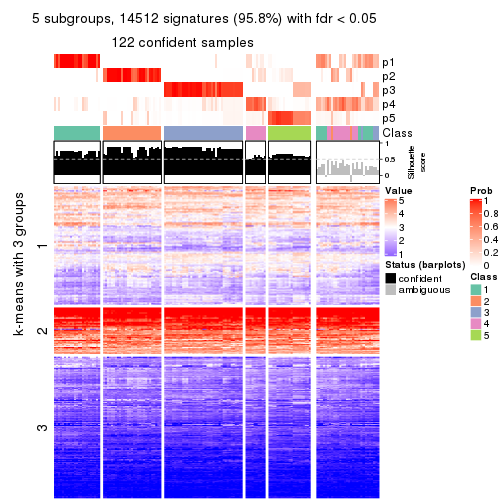
get_signatures(res, k = 6, scale_rows = FALSE)
Compare the overlap of signatures from different k:
compare_signatures(res)
get_signature() returns a data frame invisibly. TO get the list of signatures, the function
call should be assigned to a variable explicitly. In following code, if plot argument is set
to FALSE, no heatmap is plotted while only the differential analysis is performed.
# code only for demonstration
tb = get_signature(res, k = ..., plot = FALSE)
An example of the output of tb is:
#> which_row fdr mean_1 mean_2 scaled_mean_1 scaled_mean_2 km
#> 1 38 0.042760348 8.373488 9.131774 -0.5533452 0.5164555 1
#> 2 40 0.018707592 7.106213 8.469186 -0.6173731 0.5762149 1
#> 3 55 0.019134737 10.221463 11.207825 -0.6159697 0.5749050 1
#> 4 59 0.006059896 5.921854 7.869574 -0.6899429 0.6439467 1
#> 5 60 0.018055526 8.928898 10.211722 -0.6204761 0.5791110 1
#> 6 98 0.009384629 15.714769 14.887706 0.6635654 -0.6193277 2
...
The columns in tb are:
which_row: row indices corresponding to the input matrix.fdr: FDR for the differential test. mean_x: The mean value in group x.scaled_mean_x: The mean value in group x after rows are scaled.km: Row groups if k-means clustering is applied to rows.
UMAP plot which shows how samples are separated.
dimension_reduction(res, k = 2, method = "UMAP")
dimension_reduction(res, k = 3, method = "UMAP")
dimension_reduction(res, k = 4, method = "UMAP")
dimension_reduction(res, k = 5, method = "UMAP")
dimension_reduction(res, k = 6, method = "UMAP")
Following heatmap shows how subgroups are split when increasing k:
collect_classes(res)
If matrix rows can be associated to genes, consider to use functional_enrichment(res,
...) to perform function enrichment for the signature genes. See this vignette for more detailed explanations.
CV:pam
The object with results only for a single top-value method and a single partition method
can be extracted as:
res = res_list["CV", "pam"]
# you can also extract it by
# res = res_list["CV:pam"]
A summary of res and all the functions that can be applied to it:
res
#> A 'ConsensusPartition' object with k = 2, 3, 4, 5, 6.
#> On a matrix with 15148 rows and 152 columns.
#> Top rows (1000, 2000, 3000, 4000, 5000) are extracted by 'CV' method.
#> Subgroups are detected by 'pam' method.
#> Performed in total 1250 partitions by row resampling.
#> Best k for subgroups seems to be 2.
#>
#> Following methods can be applied to this 'ConsensusPartition' object:
#> [1] "cola_report" "collect_classes" "collect_plots"
#> [4] "collect_stats" "colnames" "compare_signatures"
#> [7] "consensus_heatmap" "dimension_reduction" "functional_enrichment"
#> [10] "get_anno_col" "get_anno" "get_classes"
#> [13] "get_consensus" "get_matrix" "get_membership"
#> [16] "get_param" "get_signatures" "get_stats"
#> [19] "is_best_k" "is_stable_k" "membership_heatmap"
#> [22] "ncol" "nrow" "plot_ecdf"
#> [25] "rownames" "select_partition_number" "show"
#> [28] "suggest_best_k" "test_to_known_factors"
collect_plots() function collects all the plots made from res for all k (number of partitions)
into one single page to provide an easy and fast comparison between different k.
collect_plots(res)
The plots are:
- The first row: a plot of the ECDF (empirical cumulative distribution
function) curves of the consensus matrix for each
k and the heatmap of
predicted classes for each k.
- The second row: heatmaps of the consensus matrix for each
k.
- The third row: heatmaps of the membership matrix for each
k.
- The fouth row: heatmaps of the signatures for each
k.
All the plots in panels can be made by individual functions and they are
plotted later in this section.
select_partition_number() produces several plots showing different
statistics for choosing “optimized” k. There are following statistics:
- ECDF curves of the consensus matrix for each
k;
- 1-PAC. The PAC
score
measures the proportion of the ambiguous subgrouping.
- Mean silhouette score.
- Concordance. The mean probability of fiting the consensus class ids in all
partitions.
- Area increased. Denote \(A_k\) as the area under the ECDF curve for current
k, the area increased is defined as \(A_k - A_{k-1}\).
- Rand index. The percent of pairs of samples that are both in a same cluster
or both are not in a same cluster in the partition of k and k-1.
- Jaccard index. The ratio of pairs of samples are both in a same cluster in
the partition of k and k-1 and the pairs of samples are both in a same
cluster in the partition k or k-1.
The detailed explanations of these statistics can be found in the cola
vignette.
Generally speaking, lower PAC score, higher mean silhouette score or higher
concordance corresponds to better partition. Rand index and Jaccard index
measure how similar the current partition is compared to partition with k-1.
If they are too similar, we won't accept k is better than k-1.
select_partition_number(res)
The numeric values for all these statistics can be obtained by get_stats().
get_stats(res)
#> k 1-PAC mean_silhouette concordance area_increased Rand Jaccard
#> 2 2 0.599 0.852 0.925 0.4831 0.522 0.522
#> 3 3 0.542 0.748 0.869 0.2754 0.681 0.482
#> 4 4 0.643 0.722 0.841 0.1518 0.747 0.457
#> 5 5 0.587 0.721 0.831 0.0612 0.921 0.743
#> 6 6 0.716 0.740 0.847 0.0614 0.922 0.701
suggest_best_k() suggests the best \(k\) based on these statistics. The rules are as follows:
- All \(k\) with Jaccard index larger than 0.95 are removed because increasing
\(k\) does not provide enough extra information. If all \(k\) are removed, it is
marked as no subgroup is detected.
- For all \(k\) with 1-PAC score larger than 0.9, the maximal \(k\) is taken as
the best \(k\), and other \(k\) are marked as optional \(k\).
- If it does not fit the second rule. The \(k\) with the maximal vote of the
highest 1-PAC score, highest mean silhouette, and highest concordance is
taken as the best \(k\).
suggest_best_k(res)
#> [1] 2
Following shows the table of the partitions (You need to click the show/hide
code output link to see it). The membership matrix (columns with name p*)
is inferred by
clue::cl_consensus()
function with the SE method. Basically the value in the membership matrix
represents the probability to belong to a certain group. The finall class
label for an item is determined with the group with highest probability it
belongs to.
In get_classes() function, the entropy is calculated from the membership
matrix and the silhouette score is calculated from the consensus matrix.
show/hide code output
cbind(get_classes(res, k = 2), get_membership(res, k = 2))
#> class entropy silhouette p1 p2
#> SRR1947547 2 0.4022 0.868 0.080 0.920
#> SRR1947546 1 0.2948 0.900 0.948 0.052
#> SRR1947545 2 0.9754 0.451 0.408 0.592
#> SRR1947544 1 0.9170 0.528 0.668 0.332
#> SRR1947542 1 0.0672 0.913 0.992 0.008
#> SRR1947541 2 0.3879 0.871 0.076 0.924
#> SRR1947540 1 0.6801 0.802 0.820 0.180
#> SRR1947539 2 0.0000 0.917 0.000 1.000
#> SRR1947538 1 0.0000 0.912 1.000 0.000
#> SRR1947537 2 0.2948 0.886 0.052 0.948
#> SRR1947536 2 0.0000 0.917 0.000 1.000
#> SRR1947535 2 0.0000 0.917 0.000 1.000
#> SRR1947534 1 0.0000 0.912 1.000 0.000
#> SRR1947533 1 0.5408 0.855 0.876 0.124
#> SRR1947532 1 0.0000 0.912 1.000 0.000
#> SRR1947531 1 0.6712 0.806 0.824 0.176
#> SRR1947530 2 0.4022 0.868 0.080 0.920
#> SRR1947529 1 0.6712 0.806 0.824 0.176
#> SRR1947528 2 0.0000 0.917 0.000 1.000
#> SRR1947527 1 0.0672 0.913 0.992 0.008
#> SRR1947526 1 0.4022 0.884 0.920 0.080
#> SRR1947525 1 0.0000 0.912 1.000 0.000
#> SRR1947524 2 0.0000 0.917 0.000 1.000
#> SRR1947523 1 0.0938 0.913 0.988 0.012
#> SRR1947521 2 0.0000 0.917 0.000 1.000
#> SRR1947520 1 0.6531 0.815 0.832 0.168
#> SRR1947519 2 0.0000 0.917 0.000 1.000
#> SRR1947518 1 0.0000 0.912 1.000 0.000
#> SRR1947517 2 0.0000 0.917 0.000 1.000
#> SRR1947516 1 0.4298 0.880 0.912 0.088
#> SRR1947515 1 0.2603 0.896 0.956 0.044
#> SRR1947514 1 0.1633 0.910 0.976 0.024
#> SRR1947513 1 0.1184 0.910 0.984 0.016
#> SRR1947512 1 0.0000 0.912 1.000 0.000
#> SRR1947511 1 0.5294 0.858 0.880 0.120
#> SRR1947510 2 0.0000 0.917 0.000 1.000
#> SRR1947572 1 0.8499 0.630 0.724 0.276
#> SRR1947611 2 0.0000 0.917 0.000 1.000
#> SRR1947509 2 0.0000 0.917 0.000 1.000
#> SRR1947644 2 0.0000 0.917 0.000 1.000
#> SRR1947643 1 0.6712 0.806 0.824 0.176
#> SRR1947642 2 0.7602 0.718 0.220 0.780
#> SRR1947640 1 0.0672 0.913 0.992 0.008
#> SRR1947641 2 0.7602 0.718 0.220 0.780
#> SRR1947639 1 0.0000 0.912 1.000 0.000
#> SRR1947638 1 0.0000 0.912 1.000 0.000
#> SRR1947637 2 0.0000 0.917 0.000 1.000
#> SRR1947636 2 0.0000 0.917 0.000 1.000
#> SRR1947635 1 0.6712 0.806 0.824 0.176
#> SRR1947634 1 0.2423 0.904 0.960 0.040
#> SRR1947633 2 0.0000 0.917 0.000 1.000
#> SRR1947632 1 0.0672 0.913 0.992 0.008
#> SRR1947631 2 0.7602 0.718 0.220 0.780
#> SRR1947629 2 0.0000 0.917 0.000 1.000
#> SRR1947630 1 0.2948 0.899 0.948 0.052
#> SRR1947627 2 0.0000 0.917 0.000 1.000
#> SRR1947628 2 0.9866 0.272 0.432 0.568
#> SRR1947626 1 0.0672 0.913 0.992 0.008
#> SRR1947625 2 0.7376 0.734 0.208 0.792
#> SRR1947624 1 0.5519 0.854 0.872 0.128
#> SRR1947623 1 0.7815 0.697 0.768 0.232
#> SRR1947622 1 0.3431 0.895 0.936 0.064
#> SRR1947621 1 0.0672 0.913 0.992 0.008
#> SRR1947620 1 0.0672 0.911 0.992 0.008
#> SRR1947619 2 0.2603 0.892 0.044 0.956
#> SRR1947617 1 0.1414 0.911 0.980 0.020
#> SRR1947618 1 0.1184 0.910 0.984 0.016
#> SRR1947616 2 0.9170 0.530 0.332 0.668
#> SRR1947615 2 0.7602 0.718 0.220 0.780
#> SRR1947614 2 0.0000 0.917 0.000 1.000
#> SRR1947613 1 0.0672 0.911 0.992 0.008
#> SRR1947610 1 0.0672 0.913 0.992 0.008
#> SRR1947612 1 0.0672 0.913 0.992 0.008
#> SRR1947609 1 0.8713 0.605 0.708 0.292
#> SRR1947608 2 0.0000 0.917 0.000 1.000
#> SRR1947606 2 0.0000 0.917 0.000 1.000
#> SRR1947607 1 0.0000 0.912 1.000 0.000
#> SRR1947604 1 0.0000 0.912 1.000 0.000
#> SRR1947605 1 0.6247 0.800 0.844 0.156
#> SRR1947603 1 0.5408 0.855 0.876 0.124
#> SRR1947602 2 0.2236 0.899 0.036 0.964
#> SRR1947600 2 0.0000 0.917 0.000 1.000
#> SRR1947601 1 0.2423 0.904 0.960 0.040
#> SRR1947598 2 0.9323 0.510 0.348 0.652
#> SRR1947599 1 0.0000 0.912 1.000 0.000
#> SRR1947597 1 0.0672 0.913 0.992 0.008
#> SRR1947596 1 0.7602 0.711 0.780 0.220
#> SRR1947595 2 0.7602 0.709 0.220 0.780
#> SRR1947594 1 0.1184 0.909 0.984 0.016
#> SRR1947592 2 0.0000 0.917 0.000 1.000
#> SRR1947591 1 0.0938 0.913 0.988 0.012
#> SRR1947590 1 0.9087 0.542 0.676 0.324
#> SRR1947588 1 0.8813 0.590 0.700 0.300
#> SRR1947587 2 0.0000 0.917 0.000 1.000
#> SRR1947586 1 0.0672 0.913 0.992 0.008
#> SRR1947585 2 0.0000 0.917 0.000 1.000
#> SRR1947584 1 0.3879 0.874 0.924 0.076
#> SRR1947583 1 0.0672 0.913 0.992 0.008
#> SRR1947582 1 0.0672 0.911 0.992 0.008
#> SRR1947580 1 0.5519 0.852 0.872 0.128
#> SRR1947581 1 0.7745 0.703 0.772 0.228
#> SRR1947576 2 0.0000 0.917 0.000 1.000
#> SRR1947575 2 0.0000 0.917 0.000 1.000
#> SRR1947579 2 0.0000 0.917 0.000 1.000
#> SRR1947578 1 0.8608 0.640 0.716 0.284
#> SRR1947573 2 0.0000 0.917 0.000 1.000
#> SRR1947574 1 0.0000 0.912 1.000 0.000
#> SRR1947571 1 0.0000 0.912 1.000 0.000
#> SRR1947577 1 0.0000 0.912 1.000 0.000
#> SRR1947570 2 0.4298 0.861 0.088 0.912
#> SRR1947569 2 0.0000 0.917 0.000 1.000
#> SRR1947566 1 0.6712 0.806 0.824 0.176
#> SRR1947567 1 0.4431 0.879 0.908 0.092
#> SRR1947568 1 0.0000 0.912 1.000 0.000
#> SRR1947564 1 0.0672 0.913 0.992 0.008
#> SRR1947563 2 0.0000 0.917 0.000 1.000
#> SRR1947562 1 0.0000 0.912 1.000 0.000
#> SRR1947565 2 0.0376 0.915 0.004 0.996
#> SRR1947559 1 0.0672 0.913 0.992 0.008
#> SRR1947560 2 0.2778 0.890 0.048 0.952
#> SRR1947561 1 0.4815 0.870 0.896 0.104
#> SRR1947557 1 0.9170 0.528 0.668 0.332
#> SRR1947558 2 0.4431 0.855 0.092 0.908
#> SRR1947556 1 0.9044 0.553 0.680 0.320
#> SRR1947553 1 0.0672 0.913 0.992 0.008
#> SRR1947554 1 0.0000 0.912 1.000 0.000
#> SRR1947555 1 0.6973 0.792 0.812 0.188
#> SRR1947550 1 0.0376 0.913 0.996 0.004
#> SRR1947552 1 0.0000 0.912 1.000 0.000
#> SRR1947549 2 0.0000 0.917 0.000 1.000
#> SRR1947551 2 0.0000 0.917 0.000 1.000
#> SRR1947548 1 0.0000 0.912 1.000 0.000
#> SRR1947506 2 0.2423 0.896 0.040 0.960
#> SRR1947507 1 0.2043 0.902 0.968 0.032
#> SRR1947504 1 0.7745 0.703 0.772 0.228
#> SRR1947503 1 0.0000 0.912 1.000 0.000
#> SRR1947502 1 0.4022 0.884 0.920 0.080
#> SRR1947501 1 0.5294 0.859 0.880 0.120
#> SRR1947499 2 0.3879 0.871 0.076 0.924
#> SRR1947498 2 0.0000 0.917 0.000 1.000
#> SRR1947508 2 0.7528 0.723 0.216 0.784
#> SRR1947505 2 0.9286 0.515 0.344 0.656
#> SRR1947497 1 0.0672 0.913 0.992 0.008
#> SRR1947496 1 0.5059 0.840 0.888 0.112
#> SRR1947495 1 0.5408 0.855 0.876 0.124
#> SRR1947494 1 0.0376 0.912 0.996 0.004
#> SRR1947493 2 0.5294 0.834 0.120 0.880
#> SRR1947492 1 0.0938 0.910 0.988 0.012
#> SRR1947500 1 0.0672 0.913 0.992 0.008
#> SRR1947491 1 0.4022 0.886 0.920 0.080
#> SRR1947490 1 0.0938 0.910 0.988 0.012
#> SRR1947489 2 0.0000 0.917 0.000 1.000
show/hide code output
cbind(get_classes(res, k = 3), get_membership(res, k = 3))
#> class entropy silhouette p1 p2 p3
#> SRR1947547 3 0.4504 0.7163 0.196 0.000 0.804
#> SRR1947546 2 0.5635 0.7807 0.036 0.784 0.180
#> SRR1947545 1 0.0000 0.9686 1.000 0.000 0.000
#> SRR1947544 1 0.0000 0.9686 1.000 0.000 0.000
#> SRR1947542 2 0.6100 0.7972 0.096 0.784 0.120
#> SRR1947541 3 0.3879 0.7449 0.152 0.000 0.848
#> SRR1947540 2 0.5356 0.7713 0.020 0.784 0.196
#> SRR1947539 3 0.0000 0.8387 0.000 0.000 1.000
#> SRR1947538 2 0.5285 0.7308 0.244 0.752 0.004
#> SRR1947537 3 0.0000 0.8387 0.000 0.000 1.000
#> SRR1947536 3 0.0000 0.8387 0.000 0.000 1.000
#> SRR1947535 3 0.0000 0.8387 0.000 0.000 1.000
#> SRR1947534 2 0.6180 0.1776 0.416 0.584 0.000
#> SRR1947533 2 0.0000 0.8223 0.000 1.000 0.000
#> SRR1947532 2 0.5285 0.7308 0.244 0.752 0.004
#> SRR1947531 3 0.7597 0.2729 0.048 0.384 0.568
#> SRR1947530 3 0.4555 0.7128 0.200 0.000 0.800
#> SRR1947529 2 0.3752 0.7989 0.000 0.856 0.144
#> SRR1947528 3 0.0000 0.8387 0.000 0.000 1.000
#> SRR1947527 2 0.0000 0.8223 0.000 1.000 0.000
#> SRR1947526 2 0.0000 0.8223 0.000 1.000 0.000
#> SRR1947525 2 0.4931 0.7553 0.212 0.784 0.004
#> SRR1947524 3 0.0000 0.8387 0.000 0.000 1.000
#> SRR1947523 3 0.7319 0.6434 0.128 0.164 0.708
#> SRR1947521 3 0.0000 0.8387 0.000 0.000 1.000
#> SRR1947520 2 0.0000 0.8223 0.000 1.000 0.000
#> SRR1947519 3 0.0000 0.8387 0.000 0.000 1.000
#> SRR1947518 2 0.5397 0.7003 0.280 0.720 0.000
#> SRR1947517 3 0.0000 0.8387 0.000 0.000 1.000
#> SRR1947516 2 0.0000 0.8223 0.000 1.000 0.000
#> SRR1947515 2 0.5285 0.7308 0.244 0.752 0.004
#> SRR1947514 2 0.0000 0.8223 0.000 1.000 0.000
#> SRR1947513 3 0.6781 0.6391 0.244 0.052 0.704
#> SRR1947512 1 0.0000 0.9686 1.000 0.000 0.000
#> SRR1947511 2 0.0000 0.8223 0.000 1.000 0.000
#> SRR1947510 3 0.0000 0.8387 0.000 0.000 1.000
#> SRR1947572 1 0.0000 0.9686 1.000 0.000 0.000
#> SRR1947611 3 0.0000 0.8387 0.000 0.000 1.000
#> SRR1947509 3 0.0000 0.8387 0.000 0.000 1.000
#> SRR1947644 3 0.0000 0.8387 0.000 0.000 1.000
#> SRR1947643 2 0.0747 0.8184 0.000 0.984 0.016
#> SRR1947642 3 0.1860 0.8198 0.000 0.052 0.948
#> SRR1947640 3 0.9076 0.1740 0.144 0.368 0.488
#> SRR1947641 3 0.1860 0.8198 0.000 0.052 0.948
#> SRR1947639 2 0.4750 0.7534 0.216 0.784 0.000
#> SRR1947638 3 0.9827 0.0476 0.244 0.372 0.384
#> SRR1947637 3 0.0000 0.8387 0.000 0.000 1.000
#> SRR1947636 3 0.0000 0.8387 0.000 0.000 1.000
#> SRR1947635 3 0.7874 0.2929 0.064 0.368 0.568
#> SRR1947634 2 0.1289 0.8147 0.032 0.968 0.000
#> SRR1947633 3 0.0000 0.8387 0.000 0.000 1.000
#> SRR1947632 2 0.6100 0.7972 0.096 0.784 0.120
#> SRR1947631 3 0.3009 0.8129 0.028 0.052 0.920
#> SRR1947629 3 0.0000 0.8387 0.000 0.000 1.000
#> SRR1947630 3 0.7394 0.2690 0.032 0.472 0.496
#> SRR1947627 3 0.0000 0.8387 0.000 0.000 1.000
#> SRR1947628 2 0.6490 0.7731 0.076 0.752 0.172
#> SRR1947626 2 0.0000 0.8223 0.000 1.000 0.000
#> SRR1947625 3 0.1860 0.8198 0.000 0.052 0.948
#> SRR1947624 2 0.4291 0.6686 0.000 0.820 0.180
#> SRR1947623 1 0.0000 0.9686 1.000 0.000 0.000
#> SRR1947622 2 0.1453 0.8249 0.008 0.968 0.024
#> SRR1947621 2 0.0000 0.8223 0.000 1.000 0.000
#> SRR1947620 3 0.7303 0.6246 0.244 0.076 0.680
#> SRR1947619 3 0.0237 0.8376 0.004 0.000 0.996
#> SRR1947617 2 0.0000 0.8223 0.000 1.000 0.000
#> SRR1947618 3 0.7458 0.6191 0.244 0.084 0.672
#> SRR1947616 2 0.5016 0.7294 0.000 0.760 0.240
#> SRR1947615 3 0.3009 0.8129 0.028 0.052 0.920
#> SRR1947614 3 0.0000 0.8387 0.000 0.000 1.000
#> SRR1947613 1 0.0000 0.9686 1.000 0.000 0.000
#> SRR1947610 2 0.4479 0.8156 0.096 0.860 0.044
#> SRR1947612 2 0.0000 0.8223 0.000 1.000 0.000
#> SRR1947609 3 0.6685 0.6370 0.244 0.048 0.708
#> SRR1947608 3 0.0000 0.8387 0.000 0.000 1.000
#> SRR1947606 3 0.0000 0.8387 0.000 0.000 1.000
#> SRR1947607 1 0.0000 0.9686 1.000 0.000 0.000
#> SRR1947604 2 0.5285 0.7308 0.244 0.752 0.004
#> SRR1947605 1 0.0000 0.9686 1.000 0.000 0.000
#> SRR1947603 2 0.4504 0.7725 0.000 0.804 0.196
#> SRR1947602 3 0.4121 0.7390 0.168 0.000 0.832
#> SRR1947600 3 0.0000 0.8387 0.000 0.000 1.000
#> SRR1947601 2 0.0000 0.8223 0.000 1.000 0.000
#> SRR1947598 3 0.5554 0.7487 0.112 0.076 0.812
#> SRR1947599 3 0.9825 0.0627 0.244 0.368 0.388
#> SRR1947597 2 0.6100 0.7972 0.096 0.784 0.120
#> SRR1947596 2 0.7824 0.4668 0.376 0.564 0.060
#> SRR1947595 3 0.3644 0.7778 0.124 0.004 0.872
#> SRR1947594 1 0.0000 0.9686 1.000 0.000 0.000
#> SRR1947592 3 0.0000 0.8387 0.000 0.000 1.000
#> SRR1947591 2 0.0000 0.8223 0.000 1.000 0.000
#> SRR1947590 2 0.7807 0.3375 0.432 0.516 0.052
#> SRR1947588 1 0.0000 0.9686 1.000 0.000 0.000
#> SRR1947587 3 0.0424 0.8357 0.008 0.000 0.992
#> SRR1947586 2 0.0000 0.8223 0.000 1.000 0.000
#> SRR1947585 3 0.0000 0.8387 0.000 0.000 1.000
#> SRR1947584 1 0.0000 0.9686 1.000 0.000 0.000
#> SRR1947583 2 0.6662 0.7805 0.128 0.752 0.120
#> SRR1947582 3 0.7458 0.6191 0.244 0.084 0.672
#> SRR1947580 2 0.0000 0.8223 0.000 1.000 0.000
#> SRR1947581 1 0.0000 0.9686 1.000 0.000 0.000
#> SRR1947576 3 0.0000 0.8387 0.000 0.000 1.000
#> SRR1947575 3 0.0000 0.8387 0.000 0.000 1.000
#> SRR1947579 3 0.0000 0.8387 0.000 0.000 1.000
#> SRR1947578 2 0.7047 0.7395 0.084 0.712 0.204
#> SRR1947573 3 0.0000 0.8387 0.000 0.000 1.000
#> SRR1947574 3 0.9825 0.0627 0.244 0.368 0.388
#> SRR1947571 2 0.5285 0.7308 0.244 0.752 0.004
#> SRR1947577 3 0.9664 0.2826 0.244 0.296 0.460
#> SRR1947570 3 0.5016 0.6733 0.240 0.000 0.760
#> SRR1947569 3 0.0000 0.8387 0.000 0.000 1.000
#> SRR1947566 2 0.0000 0.8223 0.000 1.000 0.000
#> SRR1947567 2 0.6063 0.7950 0.084 0.784 0.132
#> SRR1947568 1 0.6309 -0.2171 0.504 0.496 0.000
#> SRR1947564 2 0.0000 0.8223 0.000 1.000 0.000
#> SRR1947563 3 0.0000 0.8387 0.000 0.000 1.000
#> SRR1947562 2 0.4931 0.7553 0.212 0.784 0.004
#> SRR1947565 3 0.0000 0.8387 0.000 0.000 1.000
#> SRR1947559 2 0.6100 0.7972 0.096 0.784 0.120
#> SRR1947560 3 0.0424 0.8367 0.000 0.008 0.992
#> SRR1947561 2 0.0000 0.8223 0.000 1.000 0.000
#> SRR1947557 1 0.0000 0.9686 1.000 0.000 0.000
#> SRR1947558 3 0.1529 0.8253 0.000 0.040 0.960
#> SRR1947556 1 0.0000 0.9686 1.000 0.000 0.000
#> SRR1947553 2 0.5663 0.8068 0.096 0.808 0.096
#> SRR1947554 1 0.1031 0.9380 0.976 0.024 0.000
#> SRR1947555 2 0.4605 0.7664 0.000 0.796 0.204
#> SRR1947550 2 0.6587 0.7774 0.156 0.752 0.092
#> SRR1947552 3 0.9827 0.0319 0.244 0.376 0.380
#> SRR1947549 3 0.3340 0.7462 0.000 0.120 0.880
#> SRR1947551 3 0.0000 0.8387 0.000 0.000 1.000
#> SRR1947548 2 0.5285 0.7308 0.244 0.752 0.004
#> SRR1947506 3 0.2448 0.8052 0.076 0.000 0.924
#> SRR1947507 1 0.0000 0.9686 1.000 0.000 0.000
#> SRR1947504 1 0.0000 0.9686 1.000 0.000 0.000
#> SRR1947503 2 0.9823 0.2289 0.288 0.428 0.284
#> SRR1947502 2 0.0000 0.8223 0.000 1.000 0.000
#> SRR1947501 2 0.5574 0.7781 0.032 0.784 0.184
#> SRR1947499 3 0.4346 0.7263 0.184 0.000 0.816
#> SRR1947498 3 0.0000 0.8387 0.000 0.000 1.000
#> SRR1947508 3 0.2187 0.8256 0.028 0.024 0.948
#> SRR1947505 3 0.8386 0.3877 0.112 0.304 0.584
#> SRR1947497 2 0.0000 0.8223 0.000 1.000 0.000
#> SRR1947496 1 0.0000 0.9686 1.000 0.000 0.000
#> SRR1947495 2 0.4805 0.6786 0.012 0.812 0.176
#> SRR1947494 3 0.9825 0.0627 0.244 0.368 0.388
#> SRR1947493 3 0.4291 0.7300 0.180 0.000 0.820
#> SRR1947492 1 0.0000 0.9686 1.000 0.000 0.000
#> SRR1947500 2 0.6107 0.7975 0.100 0.784 0.116
#> SRR1947491 3 0.8676 0.2162 0.112 0.368 0.520
#> SRR1947490 1 0.0000 0.9686 1.000 0.000 0.000
#> SRR1947489 3 0.1163 0.8303 0.028 0.000 0.972
show/hide code output
cbind(get_classes(res, k = 4), get_membership(res, k = 4))
#> class entropy silhouette p1 p2 p3 p4
#> SRR1947547 3 0.5016 0.3242 0.000 0.004 0.600 0.396
#> SRR1947546 4 0.7175 0.1006 0.000 0.144 0.360 0.496
#> SRR1947545 4 0.4855 0.3466 0.400 0.000 0.000 0.600
#> SRR1947544 1 0.0000 0.9706 1.000 0.000 0.000 0.000
#> SRR1947542 4 0.2973 0.5516 0.000 0.144 0.000 0.856
#> SRR1947541 3 0.4252 0.6182 0.000 0.004 0.744 0.252
#> SRR1947540 3 0.7335 0.0943 0.000 0.400 0.444 0.156
#> SRR1947539 3 0.0188 0.8746 0.000 0.004 0.996 0.000
#> SRR1947538 4 0.2408 0.6552 0.000 0.104 0.000 0.896
#> SRR1947537 3 0.0188 0.8746 0.000 0.004 0.996 0.000
#> SRR1947536 3 0.1118 0.8684 0.000 0.036 0.964 0.000
#> SRR1947535 3 0.0000 0.8744 0.000 0.000 1.000 0.000
#> SRR1947534 2 0.6080 0.6013 0.100 0.664 0.000 0.236
#> SRR1947533 2 0.2814 0.8253 0.000 0.868 0.000 0.132
#> SRR1947532 4 0.0000 0.6794 0.000 0.000 0.000 1.000
#> SRR1947531 3 0.7657 0.1238 0.000 0.256 0.464 0.280
#> SRR1947530 3 0.5364 0.3063 0.000 0.016 0.592 0.392
#> SRR1947529 2 0.6490 0.4381 0.000 0.640 0.204 0.156
#> SRR1947528 3 0.0188 0.8746 0.000 0.004 0.996 0.000
#> SRR1947527 2 0.2814 0.8253 0.000 0.868 0.000 0.132
#> SRR1947526 2 0.2814 0.8253 0.000 0.868 0.000 0.132
#> SRR1947525 4 0.4431 0.5992 0.000 0.304 0.000 0.696
#> SRR1947524 3 0.1022 0.8681 0.000 0.032 0.968 0.000
#> SRR1947523 4 0.4417 0.7233 0.000 0.160 0.044 0.796
#> SRR1947521 3 0.0188 0.8746 0.000 0.004 0.996 0.000
#> SRR1947520 2 0.2814 0.8253 0.000 0.868 0.000 0.132
#> SRR1947519 3 0.0000 0.8744 0.000 0.000 1.000 0.000
#> SRR1947518 4 0.2281 0.6580 0.000 0.096 0.000 0.904
#> SRR1947517 3 0.0188 0.8746 0.000 0.004 0.996 0.000
#> SRR1947516 2 0.4356 0.7943 0.000 0.708 0.000 0.292
#> SRR1947515 4 0.0000 0.6794 0.000 0.000 0.000 1.000
#> SRR1947514 2 0.2814 0.8253 0.000 0.868 0.000 0.132
#> SRR1947513 4 0.5056 0.7124 0.000 0.164 0.076 0.760
#> SRR1947512 1 0.0000 0.9706 1.000 0.000 0.000 0.000
#> SRR1947511 2 0.2814 0.8253 0.000 0.868 0.000 0.132
#> SRR1947510 3 0.0188 0.8746 0.000 0.004 0.996 0.000
#> SRR1947572 1 0.0000 0.9706 1.000 0.000 0.000 0.000
#> SRR1947611 3 0.0000 0.8744 0.000 0.000 1.000 0.000
#> SRR1947509 3 0.0188 0.8746 0.000 0.004 0.996 0.000
#> SRR1947644 3 0.1022 0.8681 0.000 0.032 0.968 0.000
#> SRR1947643 2 0.1118 0.7886 0.000 0.964 0.000 0.036
#> SRR1947642 3 0.2216 0.8199 0.000 0.000 0.908 0.092
#> SRR1947640 4 0.4417 0.7233 0.000 0.160 0.044 0.796
#> SRR1947641 3 0.2216 0.8199 0.000 0.000 0.908 0.092
#> SRR1947639 4 0.2973 0.5516 0.000 0.144 0.000 0.856
#> SRR1947638 4 0.4417 0.7233 0.000 0.160 0.044 0.796
#> SRR1947637 3 0.0000 0.8744 0.000 0.000 1.000 0.000
#> SRR1947636 3 0.0188 0.8746 0.000 0.004 0.996 0.000
#> SRR1947635 3 0.7362 -0.1022 0.000 0.160 0.444 0.396
#> SRR1947634 2 0.4250 0.6507 0.000 0.724 0.000 0.276
#> SRR1947633 3 0.0188 0.8746 0.000 0.004 0.996 0.000
#> SRR1947632 4 0.2973 0.5516 0.000 0.144 0.000 0.856
#> SRR1947631 3 0.3123 0.7764 0.000 0.000 0.844 0.156
#> SRR1947629 3 0.1022 0.8681 0.000 0.032 0.968 0.000
#> SRR1947630 2 0.4250 0.6507 0.000 0.724 0.000 0.276
#> SRR1947627 3 0.0188 0.8746 0.000 0.004 0.996 0.000
#> SRR1947628 4 0.6990 0.4687 0.000 0.304 0.144 0.552
#> SRR1947626 2 0.3569 0.7419 0.000 0.804 0.000 0.196
#> SRR1947625 3 0.2216 0.8199 0.000 0.000 0.908 0.092
#> SRR1947624 2 0.3497 0.8161 0.000 0.852 0.024 0.124
#> SRR1947623 1 0.0000 0.9706 1.000 0.000 0.000 0.000
#> SRR1947622 2 0.5313 0.6422 0.000 0.608 0.016 0.376
#> SRR1947621 2 0.2814 0.8253 0.000 0.868 0.000 0.132
#> SRR1947620 4 0.4462 0.7229 0.000 0.164 0.044 0.792
#> SRR1947619 3 0.1978 0.8363 0.000 0.004 0.928 0.068
#> SRR1947617 2 0.4356 0.7943 0.000 0.708 0.000 0.292
#> SRR1947618 4 0.4462 0.7229 0.000 0.164 0.044 0.792
#> SRR1947616 3 0.6285 0.5267 0.000 0.284 0.624 0.092
#> SRR1947615 3 0.3123 0.7764 0.000 0.000 0.844 0.156
#> SRR1947614 3 0.0188 0.8746 0.000 0.004 0.996 0.000
#> SRR1947613 1 0.0000 0.9706 1.000 0.000 0.000 0.000
#> SRR1947610 4 0.3975 0.5429 0.000 0.240 0.000 0.760
#> SRR1947612 2 0.4356 0.7943 0.000 0.708 0.000 0.292
#> SRR1947609 4 0.5897 0.6693 0.000 0.164 0.136 0.700
#> SRR1947608 3 0.0000 0.8744 0.000 0.000 1.000 0.000
#> SRR1947606 3 0.0188 0.8746 0.000 0.004 0.996 0.000
#> SRR1947607 1 0.0000 0.9706 1.000 0.000 0.000 0.000
#> SRR1947604 4 0.3172 0.7068 0.000 0.160 0.000 0.840
#> SRR1947605 4 0.4888 0.3249 0.412 0.000 0.000 0.588
#> SRR1947603 3 0.7720 -0.0580 0.000 0.228 0.412 0.360
#> SRR1947602 3 0.3945 0.6893 0.000 0.004 0.780 0.216
#> SRR1947600 3 0.1022 0.8681 0.000 0.032 0.968 0.000
#> SRR1947601 2 0.4356 0.7943 0.000 0.708 0.000 0.292
#> SRR1947598 4 0.6245 0.5308 0.000 0.096 0.268 0.636
#> SRR1947599 4 0.4417 0.7233 0.000 0.160 0.044 0.796
#> SRR1947597 4 0.4431 0.5992 0.000 0.304 0.000 0.696
#> SRR1947596 4 0.5265 0.6825 0.000 0.160 0.092 0.748
#> SRR1947595 4 0.6663 0.5910 0.000 0.144 0.244 0.612
#> SRR1947594 1 0.0000 0.9706 1.000 0.000 0.000 0.000
#> SRR1947592 3 0.0188 0.8746 0.000 0.004 0.996 0.000
#> SRR1947591 2 0.4356 0.7943 0.000 0.708 0.000 0.292
#> SRR1947590 4 0.2216 0.6433 0.000 0.000 0.092 0.908
#> SRR1947588 1 0.0000 0.9706 1.000 0.000 0.000 0.000
#> SRR1947587 3 0.0376 0.8735 0.000 0.004 0.992 0.004
#> SRR1947586 2 0.1118 0.7886 0.000 0.964 0.000 0.036
#> SRR1947585 3 0.1022 0.8681 0.000 0.032 0.968 0.000
#> SRR1947584 1 0.0000 0.9706 1.000 0.000 0.000 0.000
#> SRR1947583 4 0.4152 0.7207 0.000 0.160 0.032 0.808
#> SRR1947582 4 0.4701 0.7189 0.000 0.164 0.056 0.780
#> SRR1947580 2 0.1302 0.7869 0.000 0.956 0.000 0.044
#> SRR1947581 1 0.0000 0.9706 1.000 0.000 0.000 0.000
#> SRR1947576 3 0.0000 0.8744 0.000 0.000 1.000 0.000
#> SRR1947575 3 0.0000 0.8744 0.000 0.000 1.000 0.000
#> SRR1947579 3 0.0188 0.8746 0.000 0.004 0.996 0.000
#> SRR1947578 4 0.7855 0.3668 0.000 0.300 0.300 0.400
#> SRR1947573 3 0.0000 0.8744 0.000 0.000 1.000 0.000
#> SRR1947574 4 0.4417 0.7233 0.000 0.160 0.044 0.796
#> SRR1947571 4 0.0000 0.6794 0.000 0.000 0.000 1.000
#> SRR1947577 4 0.4417 0.7233 0.000 0.160 0.044 0.796
#> SRR1947570 4 0.4978 0.3662 0.000 0.004 0.384 0.612
#> SRR1947569 3 0.1022 0.8681 0.000 0.032 0.968 0.000
#> SRR1947566 2 0.2921 0.7775 0.000 0.860 0.000 0.140
#> SRR1947567 4 0.6783 0.4920 0.000 0.304 0.124 0.572
#> SRR1947568 1 0.6911 0.1634 0.560 0.304 0.000 0.136
#> SRR1947564 2 0.4522 0.7786 0.000 0.680 0.000 0.320
#> SRR1947563 3 0.0000 0.8744 0.000 0.000 1.000 0.000
#> SRR1947562 4 0.4431 0.5992 0.000 0.304 0.000 0.696
#> SRR1947565 3 0.0188 0.8746 0.000 0.004 0.996 0.000
#> SRR1947559 4 0.4431 0.5992 0.000 0.304 0.000 0.696
#> SRR1947560 3 0.1978 0.8387 0.000 0.068 0.928 0.004
#> SRR1947561 2 0.4356 0.7943 0.000 0.708 0.000 0.292
#> SRR1947557 1 0.0000 0.9706 1.000 0.000 0.000 0.000
#> SRR1947558 3 0.1940 0.8323 0.000 0.000 0.924 0.076
#> SRR1947556 1 0.0000 0.9706 1.000 0.000 0.000 0.000
#> SRR1947553 4 0.3975 0.5429 0.000 0.240 0.000 0.760
#> SRR1947554 4 0.4761 0.4282 0.372 0.000 0.000 0.628
#> SRR1947555 3 0.7619 0.0289 0.000 0.208 0.436 0.356
#> SRR1947550 4 0.3172 0.7068 0.000 0.160 0.000 0.840
#> SRR1947552 4 0.3172 0.7068 0.000 0.160 0.000 0.840
#> SRR1947549 3 0.0188 0.8738 0.000 0.000 0.996 0.004
#> SRR1947551 3 0.1022 0.8681 0.000 0.032 0.968 0.000
#> SRR1947548 4 0.0000 0.6794 0.000 0.000 0.000 1.000
#> SRR1947506 3 0.2831 0.7923 0.000 0.004 0.876 0.120
#> SRR1947507 1 0.0000 0.9706 1.000 0.000 0.000 0.000
#> SRR1947504 1 0.0000 0.9706 1.000 0.000 0.000 0.000
#> SRR1947503 4 0.3680 0.7122 0.004 0.160 0.008 0.828
#> SRR1947502 2 0.4356 0.7943 0.000 0.708 0.000 0.292
#> SRR1947501 4 0.7184 0.0935 0.000 0.144 0.364 0.492
#> SRR1947499 3 0.4608 0.5457 0.000 0.004 0.692 0.304
#> SRR1947498 3 0.1022 0.8681 0.000 0.032 0.968 0.000
#> SRR1947508 3 0.2814 0.7986 0.000 0.000 0.868 0.132
#> SRR1947505 4 0.6570 0.5077 0.000 0.116 0.280 0.604
#> SRR1947497 2 0.2814 0.8253 0.000 0.868 0.000 0.132
#> SRR1947496 1 0.0000 0.9706 1.000 0.000 0.000 0.000
#> SRR1947495 2 0.3208 0.8149 0.000 0.848 0.004 0.148
#> SRR1947494 4 0.0000 0.6794 0.000 0.000 0.000 1.000
#> SRR1947493 3 0.5005 0.5988 0.020 0.004 0.712 0.264
#> SRR1947492 1 0.0000 0.9706 1.000 0.000 0.000 0.000
#> SRR1947500 4 0.4431 0.5992 0.000 0.304 0.000 0.696
#> SRR1947491 4 0.5902 0.6692 0.000 0.160 0.140 0.700
#> SRR1947490 1 0.0000 0.9706 1.000 0.000 0.000 0.000
#> SRR1947489 3 0.1716 0.8420 0.000 0.000 0.936 0.064
show/hide code output
cbind(get_classes(res, k = 5), get_membership(res, k = 5))
#> class entropy silhouette p1 p2 p3 p4 p5
#> SRR1947547 3 0.4318 0.571 0.000 0.000 0.688 0.292 0.020
#> SRR1947546 4 0.6744 0.300 0.000 0.332 0.268 0.400 0.000
#> SRR1947545 4 0.4256 0.282 0.436 0.000 0.000 0.564 0.000
#> SRR1947544 1 0.0000 0.965 1.000 0.000 0.000 0.000 0.000
#> SRR1947542 4 0.3949 0.587 0.000 0.332 0.000 0.668 0.000
#> SRR1947541 3 0.2377 0.773 0.000 0.000 0.872 0.128 0.000
#> SRR1947540 4 0.6781 0.236 0.000 0.176 0.332 0.476 0.016
#> SRR1947539 3 0.2074 0.826 0.000 0.000 0.896 0.000 0.104
#> SRR1947538 4 0.3274 0.658 0.000 0.220 0.000 0.780 0.000
#> SRR1947537 3 0.0000 0.841 0.000 0.000 1.000 0.000 0.000
#> SRR1947536 5 0.2074 0.930 0.000 0.000 0.104 0.000 0.896
#> SRR1947535 3 0.0703 0.835 0.000 0.000 0.976 0.000 0.024
#> SRR1947534 2 0.5820 0.575 0.100 0.524 0.000 0.376 0.000
#> SRR1947533 2 0.3274 0.791 0.000 0.780 0.000 0.220 0.000
#> SRR1947532 4 0.3242 0.679 0.000 0.216 0.000 0.784 0.000
#> SRR1947531 4 0.5218 0.288 0.000 0.060 0.336 0.604 0.000
#> SRR1947530 3 0.4425 0.186 0.000 0.000 0.544 0.452 0.004
#> SRR1947529 2 0.6177 0.469 0.000 0.464 0.136 0.400 0.000
#> SRR1947528 3 0.0000 0.841 0.000 0.000 1.000 0.000 0.000
#> SRR1947527 2 0.3274 0.791 0.000 0.780 0.000 0.220 0.000
#> SRR1947526 2 0.3274 0.791 0.000 0.780 0.000 0.220 0.000
#> SRR1947525 4 0.2852 0.639 0.000 0.172 0.000 0.828 0.000
#> SRR1947524 5 0.2074 0.930 0.000 0.000 0.104 0.000 0.896
#> SRR1947523 4 0.1341 0.728 0.000 0.000 0.056 0.944 0.000
#> SRR1947521 3 0.2074 0.826 0.000 0.000 0.896 0.000 0.104
#> SRR1947520 2 0.3274 0.791 0.000 0.780 0.000 0.220 0.000
#> SRR1947519 3 0.0865 0.835 0.000 0.000 0.972 0.004 0.024
#> SRR1947518 4 0.3274 0.658 0.000 0.220 0.000 0.780 0.000
#> SRR1947517 3 0.2074 0.826 0.000 0.000 0.896 0.000 0.104
#> SRR1947516 2 0.1410 0.767 0.000 0.940 0.000 0.060 0.000
#> SRR1947515 4 0.3242 0.679 0.000 0.216 0.000 0.784 0.000
#> SRR1947514 2 0.3274 0.791 0.000 0.780 0.000 0.220 0.000
#> SRR1947513 4 0.1965 0.714 0.000 0.000 0.096 0.904 0.000
#> SRR1947512 1 0.0000 0.965 1.000 0.000 0.000 0.000 0.000
#> SRR1947511 2 0.3274 0.791 0.000 0.780 0.000 0.220 0.000
#> SRR1947510 3 0.2074 0.826 0.000 0.000 0.896 0.000 0.104
#> SRR1947572 1 0.0000 0.965 1.000 0.000 0.000 0.000 0.000
#> SRR1947611 3 0.2233 0.824 0.000 0.004 0.892 0.000 0.104
#> SRR1947509 3 0.2074 0.826 0.000 0.000 0.896 0.000 0.104
#> SRR1947644 5 0.0703 0.836 0.000 0.000 0.024 0.000 0.976
#> SRR1947643 2 0.3242 0.740 0.000 0.784 0.000 0.216 0.000
#> SRR1947642 3 0.3368 0.737 0.000 0.000 0.820 0.156 0.024
#> SRR1947640 4 0.1341 0.728 0.000 0.000 0.056 0.944 0.000
#> SRR1947641 3 0.3012 0.758 0.000 0.000 0.852 0.124 0.024
#> SRR1947639 4 0.3949 0.587 0.000 0.332 0.000 0.668 0.000
#> SRR1947638 4 0.1341 0.728 0.000 0.000 0.056 0.944 0.000
#> SRR1947637 3 0.1732 0.832 0.000 0.000 0.920 0.000 0.080
#> SRR1947636 3 0.0000 0.841 0.000 0.000 1.000 0.000 0.000
#> SRR1947635 4 0.4045 0.380 0.000 0.000 0.356 0.644 0.000
#> SRR1947634 2 0.3966 0.672 0.000 0.664 0.000 0.336 0.000
#> SRR1947633 3 0.2179 0.822 0.000 0.000 0.888 0.000 0.112
#> SRR1947632 4 0.3949 0.587 0.000 0.332 0.000 0.668 0.000
#> SRR1947631 3 0.4193 0.628 0.000 0.000 0.720 0.256 0.024
#> SRR1947629 5 0.2074 0.930 0.000 0.000 0.104 0.000 0.896
#> SRR1947630 2 0.5258 0.701 0.000 0.664 0.000 0.232 0.104
#> SRR1947627 3 0.2074 0.826 0.000 0.000 0.896 0.000 0.104
#> SRR1947628 4 0.5288 0.567 0.000 0.244 0.100 0.656 0.000
#> SRR1947626 2 0.1341 0.688 0.000 0.944 0.000 0.056 0.000
#> SRR1947625 3 0.4410 0.694 0.000 0.000 0.764 0.124 0.112
#> SRR1947624 2 0.4844 0.756 0.000 0.740 0.008 0.148 0.104
#> SRR1947623 1 0.0000 0.965 1.000 0.000 0.000 0.000 0.000
#> SRR1947622 2 0.4269 0.547 0.000 0.684 0.016 0.300 0.000
#> SRR1947621 2 0.3274 0.791 0.000 0.780 0.000 0.220 0.000
#> SRR1947620 4 0.1341 0.728 0.000 0.000 0.056 0.944 0.000
#> SRR1947619 3 0.2139 0.795 0.000 0.052 0.916 0.032 0.000
#> SRR1947617 2 0.1410 0.767 0.000 0.940 0.000 0.060 0.000
#> SRR1947618 4 0.1341 0.728 0.000 0.000 0.056 0.944 0.000
#> SRR1947616 5 0.6220 0.636 0.000 0.180 0.056 0.116 0.648
#> SRR1947615 3 0.4575 0.476 0.000 0.000 0.648 0.328 0.024
#> SRR1947614 3 0.2074 0.826 0.000 0.000 0.896 0.000 0.104
#> SRR1947613 1 0.0000 0.965 1.000 0.000 0.000 0.000 0.000
#> SRR1947610 4 0.3966 0.578 0.000 0.336 0.000 0.664 0.000
#> SRR1947612 2 0.1410 0.767 0.000 0.940 0.000 0.060 0.000
#> SRR1947609 4 0.3109 0.640 0.000 0.000 0.200 0.800 0.000
#> SRR1947608 3 0.0703 0.835 0.000 0.000 0.976 0.000 0.024
#> SRR1947606 3 0.0000 0.841 0.000 0.000 1.000 0.000 0.000
#> SRR1947607 1 0.0000 0.965 1.000 0.000 0.000 0.000 0.000
#> SRR1947604 4 0.1341 0.709 0.000 0.056 0.000 0.944 0.000
#> SRR1947605 4 0.4283 0.237 0.456 0.000 0.000 0.544 0.000
#> SRR1947603 2 0.6309 0.231 0.000 0.520 0.288 0.192 0.000
#> SRR1947602 3 0.3970 0.668 0.000 0.000 0.744 0.236 0.020
#> SRR1947600 5 0.2074 0.930 0.000 0.000 0.104 0.000 0.896
#> SRR1947601 2 0.1410 0.767 0.000 0.940 0.000 0.060 0.000
#> SRR1947598 4 0.5213 0.584 0.000 0.060 0.216 0.700 0.024
#> SRR1947599 4 0.1341 0.728 0.000 0.000 0.056 0.944 0.000
#> SRR1947597 4 0.2852 0.639 0.000 0.172 0.000 0.828 0.000
#> SRR1947596 4 0.3622 0.661 0.000 0.056 0.124 0.820 0.000
#> SRR1947595 4 0.3857 0.497 0.000 0.000 0.312 0.688 0.000
#> SRR1947594 1 0.0000 0.965 1.000 0.000 0.000 0.000 0.000
#> SRR1947592 3 0.0000 0.841 0.000 0.000 1.000 0.000 0.000
#> SRR1947591 2 0.1410 0.767 0.000 0.940 0.000 0.060 0.000
#> SRR1947590 4 0.5565 0.609 0.000 0.216 0.144 0.640 0.000
#> SRR1947588 1 0.0000 0.965 1.000 0.000 0.000 0.000 0.000
#> SRR1947587 3 0.0162 0.841 0.000 0.000 0.996 0.004 0.000
#> SRR1947586 2 0.3242 0.740 0.000 0.784 0.000 0.216 0.000
#> SRR1947585 5 0.2074 0.930 0.000 0.000 0.104 0.000 0.896
#> SRR1947584 1 0.0000 0.965 1.000 0.000 0.000 0.000 0.000
#> SRR1947583 4 0.1522 0.726 0.000 0.012 0.044 0.944 0.000
#> SRR1947582 4 0.1608 0.723 0.000 0.000 0.072 0.928 0.000
#> SRR1947580 2 0.3305 0.740 0.000 0.776 0.000 0.224 0.000
#> SRR1947581 1 0.0000 0.965 1.000 0.000 0.000 0.000 0.000
#> SRR1947576 3 0.2074 0.826 0.000 0.000 0.896 0.000 0.104
#> SRR1947575 3 0.0703 0.835 0.000 0.000 0.976 0.000 0.024
#> SRR1947579 3 0.2074 0.826 0.000 0.000 0.896 0.000 0.104
#> SRR1947578 4 0.4923 0.546 0.000 0.088 0.212 0.700 0.000
#> SRR1947573 3 0.0000 0.841 0.000 0.000 1.000 0.000 0.000
#> SRR1947574 4 0.1341 0.728 0.000 0.000 0.056 0.944 0.000
#> SRR1947571 4 0.3242 0.679 0.000 0.216 0.000 0.784 0.000
#> SRR1947577 4 0.1341 0.728 0.000 0.000 0.056 0.944 0.000
#> SRR1947570 4 0.4752 0.284 0.000 0.000 0.412 0.568 0.020
#> SRR1947569 5 0.2074 0.930 0.000 0.000 0.104 0.000 0.896
#> SRR1947566 2 0.2179 0.726 0.000 0.888 0.000 0.112 0.000
#> SRR1947567 4 0.4595 0.595 0.000 0.172 0.088 0.740 0.000
#> SRR1947568 1 0.6014 0.222 0.576 0.172 0.000 0.252 0.000
#> SRR1947564 2 0.2230 0.741 0.000 0.884 0.000 0.116 0.000
#> SRR1947563 3 0.0703 0.835 0.000 0.000 0.976 0.000 0.024
#> SRR1947562 4 0.2852 0.639 0.000 0.172 0.000 0.828 0.000
#> SRR1947565 3 0.0000 0.841 0.000 0.000 1.000 0.000 0.000
#> SRR1947559 4 0.2852 0.639 0.000 0.172 0.000 0.828 0.000
#> SRR1947560 3 0.5258 0.581 0.000 0.232 0.664 0.000 0.104
#> SRR1947561 2 0.1410 0.767 0.000 0.940 0.000 0.060 0.000
#> SRR1947557 1 0.0000 0.965 1.000 0.000 0.000 0.000 0.000
#> SRR1947558 3 0.2597 0.787 0.000 0.000 0.884 0.092 0.024
#> SRR1947556 1 0.0000 0.965 1.000 0.000 0.000 0.000 0.000
#> SRR1947553 4 0.3966 0.578 0.000 0.336 0.000 0.664 0.000
#> SRR1947554 4 0.4182 0.392 0.400 0.000 0.000 0.600 0.000
#> SRR1947555 2 0.6337 0.201 0.000 0.500 0.320 0.180 0.000
#> SRR1947550 4 0.1341 0.709 0.000 0.056 0.000 0.944 0.000
#> SRR1947552 4 0.1341 0.709 0.000 0.056 0.000 0.944 0.000
#> SRR1947549 3 0.0162 0.841 0.000 0.004 0.996 0.000 0.000
#> SRR1947551 5 0.0703 0.836 0.000 0.000 0.024 0.000 0.976
#> SRR1947548 4 0.3242 0.679 0.000 0.216 0.000 0.784 0.000
#> SRR1947506 3 0.0963 0.839 0.000 0.000 0.964 0.036 0.000
#> SRR1947507 1 0.0000 0.965 1.000 0.000 0.000 0.000 0.000
#> SRR1947504 1 0.0000 0.965 1.000 0.000 0.000 0.000 0.000
#> SRR1947503 4 0.1630 0.718 0.004 0.036 0.016 0.944 0.000
#> SRR1947502 2 0.1410 0.767 0.000 0.940 0.000 0.060 0.000
#> SRR1947501 4 0.6827 0.328 0.000 0.332 0.248 0.416 0.004
#> SRR1947499 3 0.4511 0.429 0.000 0.000 0.628 0.356 0.016
#> SRR1947498 5 0.2074 0.930 0.000 0.000 0.104 0.000 0.896
#> SRR1947508 3 0.4000 0.673 0.000 0.000 0.748 0.228 0.024
#> SRR1947505 4 0.4263 0.629 0.000 0.060 0.180 0.760 0.000
#> SRR1947497 2 0.3274 0.791 0.000 0.780 0.000 0.220 0.000
#> SRR1947496 1 0.0000 0.965 1.000 0.000 0.000 0.000 0.000
#> SRR1947495 2 0.3395 0.783 0.000 0.764 0.000 0.236 0.000
#> SRR1947494 4 0.3242 0.679 0.000 0.216 0.000 0.784 0.000
#> SRR1947493 3 0.5004 0.650 0.092 0.000 0.692 0.216 0.000
#> SRR1947492 1 0.0000 0.965 1.000 0.000 0.000 0.000 0.000
#> SRR1947500 4 0.2852 0.639 0.000 0.172 0.000 0.828 0.000
#> SRR1947491 4 0.2605 0.689 0.000 0.000 0.148 0.852 0.000
#> SRR1947490 1 0.0000 0.965 1.000 0.000 0.000 0.000 0.000
#> SRR1947489 3 0.3152 0.764 0.000 0.000 0.840 0.136 0.024
show/hide code output
cbind(get_classes(res, k = 6), get_membership(res, k = 6))
#> class entropy silhouette p1 p2 p3 p4 p5 p6
#> SRR1947547 3 0.5592 0.33206 0.000 0.008 0.488 0.404 0.004 0.096
#> SRR1947546 2 0.6213 0.00828 0.000 0.384 0.324 0.288 0.000 0.004
#> SRR1947545 4 0.2562 0.72330 0.172 0.000 0.000 0.828 0.000 0.000
#> SRR1947544 1 0.0000 0.96744 1.000 0.000 0.000 0.000 0.000 0.000
#> SRR1947542 4 0.3955 0.49175 0.000 0.384 0.000 0.608 0.000 0.008
#> SRR1947541 3 0.2823 0.69359 0.000 0.000 0.796 0.204 0.000 0.000
#> SRR1947540 6 0.2003 0.82439 0.000 0.000 0.000 0.116 0.000 0.884
#> SRR1947539 3 0.2112 0.81222 0.000 0.000 0.896 0.000 0.088 0.016
#> SRR1947538 6 0.2146 0.82005 0.000 0.116 0.000 0.004 0.000 0.880
#> SRR1947537 3 0.0000 0.82666 0.000 0.000 1.000 0.000 0.000 0.000
#> SRR1947536 5 0.1663 0.96657 0.000 0.000 0.088 0.000 0.912 0.000
#> SRR1947535 3 0.2163 0.81455 0.000 0.008 0.892 0.000 0.004 0.096
#> SRR1947534 2 0.5169 0.52459 0.136 0.604 0.000 0.260 0.000 0.000
#> SRR1947533 2 0.2092 0.74129 0.000 0.876 0.000 0.124 0.000 0.000
#> SRR1947532 4 0.2146 0.76831 0.000 0.116 0.000 0.880 0.000 0.004
#> SRR1947531 6 0.2048 0.82351 0.000 0.000 0.000 0.120 0.000 0.880
#> SRR1947530 4 0.5052 0.38776 0.000 0.008 0.264 0.632 0.000 0.096
#> SRR1947529 6 0.5529 0.65374 0.000 0.104 0.096 0.128 0.000 0.672
#> SRR1947528 3 0.1524 0.82402 0.000 0.008 0.932 0.000 0.000 0.060
#> SRR1947527 2 0.2092 0.74129 0.000 0.876 0.000 0.124 0.000 0.000
#> SRR1947526 2 0.2092 0.74129 0.000 0.876 0.000 0.124 0.000 0.000
#> SRR1947525 4 0.3468 0.56727 0.000 0.264 0.000 0.728 0.000 0.008
#> SRR1947524 5 0.1663 0.96657 0.000 0.000 0.088 0.000 0.912 0.000
#> SRR1947523 4 0.0000 0.81185 0.000 0.000 0.000 1.000 0.000 0.000
#> SRR1947521 3 0.2112 0.81222 0.000 0.000 0.896 0.000 0.088 0.016
#> SRR1947520 2 0.2234 0.74046 0.000 0.872 0.004 0.124 0.000 0.000
#> SRR1947519 3 0.2418 0.81327 0.000 0.008 0.884 0.008 0.004 0.096
#> SRR1947518 6 0.2146 0.82005 0.000 0.116 0.000 0.004 0.000 0.880
#> SRR1947517 3 0.2112 0.81222 0.000 0.000 0.896 0.000 0.088 0.016
#> SRR1947516 2 0.0260 0.72398 0.000 0.992 0.000 0.008 0.000 0.000
#> SRR1947515 4 0.2146 0.76831 0.000 0.116 0.000 0.880 0.000 0.004
#> SRR1947514 2 0.2092 0.74129 0.000 0.876 0.000 0.124 0.000 0.000
#> SRR1947513 4 0.0146 0.81071 0.000 0.000 0.004 0.996 0.000 0.000
#> SRR1947512 1 0.0000 0.96744 1.000 0.000 0.000 0.000 0.000 0.000
#> SRR1947511 2 0.2092 0.74129 0.000 0.876 0.000 0.124 0.000 0.000
#> SRR1947510 3 0.2112 0.81222 0.000 0.000 0.896 0.000 0.088 0.016
#> SRR1947572 1 0.0000 0.96744 1.000 0.000 0.000 0.000 0.000 0.000
#> SRR1947611 3 0.3808 0.81199 0.000 0.008 0.792 0.000 0.088 0.112
#> SRR1947509 3 0.2112 0.81222 0.000 0.000 0.896 0.000 0.088 0.016
#> SRR1947644 5 0.0146 0.88031 0.000 0.000 0.004 0.000 0.996 0.000
#> SRR1947643 2 0.5127 0.34732 0.000 0.588 0.000 0.112 0.000 0.300
#> SRR1947642 3 0.3666 0.77600 0.000 0.008 0.812 0.080 0.004 0.096
#> SRR1947640 4 0.0000 0.81185 0.000 0.000 0.000 1.000 0.000 0.000
#> SRR1947641 3 0.2306 0.81440 0.000 0.008 0.888 0.004 0.004 0.096
#> SRR1947639 4 0.3945 0.49788 0.000 0.380 0.000 0.612 0.000 0.008
#> SRR1947638 4 0.0000 0.81185 0.000 0.000 0.000 1.000 0.000 0.000
#> SRR1947637 3 0.1838 0.81752 0.000 0.000 0.916 0.000 0.068 0.016
#> SRR1947636 3 0.0000 0.82666 0.000 0.000 1.000 0.000 0.000 0.000
#> SRR1947635 4 0.3607 0.32213 0.000 0.000 0.348 0.652 0.000 0.000
#> SRR1947634 2 0.3727 0.46401 0.000 0.612 0.000 0.388 0.000 0.000
#> SRR1947633 3 0.2112 0.81222 0.000 0.000 0.896 0.000 0.088 0.016
#> SRR1947632 4 0.3955 0.49175 0.000 0.384 0.000 0.608 0.000 0.008
#> SRR1947631 3 0.5017 0.63258 0.000 0.008 0.660 0.232 0.004 0.096
#> SRR1947629 5 0.1663 0.96657 0.000 0.000 0.088 0.000 0.912 0.000
#> SRR1947630 2 0.5252 0.52569 0.000 0.608 0.000 0.288 0.088 0.016
#> SRR1947627 3 0.1663 0.81662 0.000 0.000 0.912 0.000 0.088 0.000
#> SRR1947628 6 0.2250 0.84332 0.000 0.040 0.000 0.064 0.000 0.896
#> SRR1947626 2 0.3330 0.35988 0.000 0.716 0.000 0.000 0.000 0.284
#> SRR1947625 3 0.4188 0.72165 0.000 0.008 0.756 0.000 0.140 0.096
#> SRR1947624 2 0.4202 0.68916 0.000 0.780 0.008 0.108 0.088 0.016
#> SRR1947623 1 0.0000 0.96744 1.000 0.000 0.000 0.000 0.000 0.000
#> SRR1947622 6 0.4066 0.44411 0.000 0.392 0.000 0.012 0.000 0.596
#> SRR1947621 2 0.2092 0.74129 0.000 0.876 0.000 0.124 0.000 0.000
#> SRR1947620 4 0.0000 0.81185 0.000 0.000 0.000 1.000 0.000 0.000
#> SRR1947619 3 0.0937 0.81266 0.000 0.000 0.960 0.040 0.000 0.000
#> SRR1947617 2 0.0260 0.72398 0.000 0.992 0.000 0.008 0.000 0.000
#> SRR1947618 4 0.0000 0.81185 0.000 0.000 0.000 1.000 0.000 0.000
#> SRR1947616 6 0.1910 0.77969 0.000 0.000 0.000 0.000 0.108 0.892
#> SRR1947615 3 0.5529 0.36436 0.000 0.008 0.528 0.364 0.004 0.096
#> SRR1947614 3 0.2112 0.81222 0.000 0.000 0.896 0.000 0.088 0.016
#> SRR1947613 1 0.0000 0.96744 1.000 0.000 0.000 0.000 0.000 0.000
#> SRR1947610 6 0.2100 0.82292 0.000 0.112 0.000 0.004 0.000 0.884
#> SRR1947612 2 0.0405 0.72305 0.000 0.988 0.000 0.008 0.000 0.004
#> SRR1947609 4 0.0458 0.80819 0.000 0.000 0.016 0.984 0.000 0.000
#> SRR1947608 3 0.2163 0.81455 0.000 0.008 0.892 0.000 0.004 0.096
#> SRR1947606 3 0.2020 0.81590 0.000 0.008 0.896 0.000 0.000 0.096
#> SRR1947607 1 0.0000 0.96744 1.000 0.000 0.000 0.000 0.000 0.000
#> SRR1947604 4 0.0000 0.81185 0.000 0.000 0.000 1.000 0.000 0.000
#> SRR1947605 4 0.2762 0.70681 0.196 0.000 0.000 0.804 0.000 0.000
#> SRR1947603 2 0.4794 0.28663 0.000 0.596 0.344 0.056 0.000 0.004
#> SRR1947602 3 0.5472 0.49847 0.000 0.008 0.552 0.340 0.004 0.096
#> SRR1947600 5 0.1663 0.96657 0.000 0.000 0.088 0.000 0.912 0.000
#> SRR1947601 2 0.0405 0.72305 0.000 0.988 0.000 0.008 0.000 0.004
#> SRR1947598 6 0.0748 0.79606 0.000 0.004 0.000 0.016 0.004 0.976
#> SRR1947599 4 0.0000 0.81185 0.000 0.000 0.000 1.000 0.000 0.000
#> SRR1947597 4 0.3383 0.56295 0.000 0.268 0.000 0.728 0.000 0.004
#> SRR1947596 4 0.0146 0.81097 0.000 0.000 0.000 0.996 0.000 0.004
#> SRR1947595 4 0.2520 0.74370 0.000 0.008 0.108 0.872 0.000 0.012
#> SRR1947594 1 0.0000 0.96744 1.000 0.000 0.000 0.000 0.000 0.000
#> SRR1947592 3 0.0000 0.82666 0.000 0.000 1.000 0.000 0.000 0.000
#> SRR1947591 2 0.0260 0.72398 0.000 0.992 0.000 0.008 0.000 0.000
#> SRR1947590 4 0.2146 0.76831 0.000 0.116 0.000 0.880 0.000 0.004
#> SRR1947588 1 0.0000 0.96744 1.000 0.000 0.000 0.000 0.000 0.000
#> SRR1947587 3 0.0000 0.82666 0.000 0.000 1.000 0.000 0.000 0.000
#> SRR1947586 6 0.4732 0.59765 0.000 0.220 0.000 0.112 0.000 0.668
#> SRR1947585 5 0.1663 0.96657 0.000 0.000 0.088 0.000 0.912 0.000
#> SRR1947584 1 0.0000 0.96744 1.000 0.000 0.000 0.000 0.000 0.000
#> SRR1947583 4 0.0000 0.81185 0.000 0.000 0.000 1.000 0.000 0.000
#> SRR1947582 4 0.0260 0.80919 0.000 0.000 0.008 0.992 0.000 0.000
#> SRR1947580 6 0.2212 0.82386 0.000 0.008 0.000 0.112 0.000 0.880
#> SRR1947581 1 0.0000 0.96744 1.000 0.000 0.000 0.000 0.000 0.000
#> SRR1947576 3 0.2112 0.81222 0.000 0.000 0.896 0.000 0.088 0.016
#> SRR1947575 3 0.2526 0.81476 0.000 0.024 0.876 0.000 0.004 0.096
#> SRR1947579 3 0.2112 0.81222 0.000 0.000 0.896 0.000 0.088 0.016
#> SRR1947578 6 0.2048 0.82351 0.000 0.000 0.000 0.120 0.000 0.880
#> SRR1947573 3 0.0000 0.82666 0.000 0.000 1.000 0.000 0.000 0.000
#> SRR1947574 4 0.0000 0.81185 0.000 0.000 0.000 1.000 0.000 0.000
#> SRR1947571 4 0.2146 0.76831 0.000 0.116 0.000 0.880 0.000 0.004
#> SRR1947577 4 0.0000 0.81185 0.000 0.000 0.000 1.000 0.000 0.000
#> SRR1947570 4 0.3391 0.72339 0.000 0.008 0.060 0.832 0.004 0.096
#> SRR1947569 5 0.1663 0.96657 0.000 0.000 0.088 0.000 0.912 0.000
#> SRR1947566 6 0.2658 0.83897 0.000 0.100 0.000 0.036 0.000 0.864
#> SRR1947567 4 0.5108 0.42829 0.000 0.264 0.112 0.620 0.000 0.004
#> SRR1947568 1 0.5533 0.25114 0.568 0.264 0.000 0.164 0.000 0.004
#> SRR1947564 2 0.1049 0.71395 0.000 0.960 0.000 0.032 0.000 0.008
#> SRR1947563 3 0.2526 0.81476 0.000 0.024 0.876 0.000 0.004 0.096
#> SRR1947562 4 0.3360 0.56817 0.000 0.264 0.000 0.732 0.000 0.004
#> SRR1947565 3 0.0000 0.82666 0.000 0.000 1.000 0.000 0.000 0.000
#> SRR1947559 4 0.3383 0.56295 0.000 0.268 0.000 0.728 0.000 0.004
#> SRR1947560 3 0.4795 0.59968 0.000 0.204 0.692 0.000 0.088 0.016
#> SRR1947561 2 0.0260 0.72398 0.000 0.992 0.000 0.008 0.000 0.000
#> SRR1947557 1 0.0000 0.96744 1.000 0.000 0.000 0.000 0.000 0.000
#> SRR1947558 3 0.2163 0.81455 0.000 0.008 0.892 0.000 0.004 0.096
#> SRR1947556 1 0.0000 0.96744 1.000 0.000 0.000 0.000 0.000 0.000
#> SRR1947553 6 0.2100 0.82292 0.000 0.112 0.000 0.004 0.000 0.884
#> SRR1947554 4 0.3390 0.58944 0.296 0.000 0.000 0.704 0.000 0.000
#> SRR1947555 2 0.4245 0.23751 0.000 0.604 0.376 0.016 0.000 0.004
#> SRR1947550 4 0.0000 0.81185 0.000 0.000 0.000 1.000 0.000 0.000
#> SRR1947552 4 0.0000 0.81185 0.000 0.000 0.000 1.000 0.000 0.000
#> SRR1947549 3 0.0000 0.82666 0.000 0.000 1.000 0.000 0.000 0.000
#> SRR1947551 5 0.0146 0.88031 0.000 0.000 0.004 0.000 0.996 0.000
#> SRR1947548 4 0.2146 0.76831 0.000 0.116 0.000 0.880 0.000 0.004
#> SRR1947506 3 0.3675 0.79490 0.000 0.008 0.804 0.092 0.000 0.096
#> SRR1947507 1 0.0000 0.96744 1.000 0.000 0.000 0.000 0.000 0.000
#> SRR1947504 1 0.0000 0.96744 1.000 0.000 0.000 0.000 0.000 0.000
#> SRR1947503 4 0.0000 0.81185 0.000 0.000 0.000 1.000 0.000 0.000
#> SRR1947502 2 0.0405 0.72305 0.000 0.988 0.000 0.008 0.000 0.004
#> SRR1947501 2 0.6300 -0.05384 0.000 0.384 0.284 0.324 0.000 0.008
#> SRR1947499 4 0.5266 0.23889 0.000 0.008 0.316 0.580 0.000 0.096
#> SRR1947498 5 0.1663 0.96657 0.000 0.000 0.088 0.000 0.912 0.000
#> SRR1947508 3 0.5017 0.63265 0.000 0.008 0.660 0.232 0.004 0.096
#> SRR1947505 6 0.0632 0.79874 0.000 0.000 0.000 0.024 0.000 0.976
#> SRR1947497 2 0.2092 0.74129 0.000 0.876 0.000 0.124 0.000 0.000
#> SRR1947496 1 0.0000 0.96744 1.000 0.000 0.000 0.000 0.000 0.000
#> SRR1947495 2 0.2520 0.72812 0.000 0.844 0.004 0.152 0.000 0.000
#> SRR1947494 4 0.2146 0.76831 0.000 0.116 0.000 0.880 0.000 0.004
#> SRR1947493 3 0.5438 0.51977 0.004 0.008 0.564 0.328 0.000 0.096
#> SRR1947492 1 0.0000 0.96744 1.000 0.000 0.000 0.000 0.000 0.000
#> SRR1947500 4 0.3360 0.56817 0.000 0.264 0.000 0.732 0.000 0.004
#> SRR1947491 4 0.2048 0.73382 0.000 0.000 0.120 0.880 0.000 0.000
#> SRR1947490 1 0.0000 0.96744 1.000 0.000 0.000 0.000 0.000 0.000
#> SRR1947489 3 0.5187 0.58993 0.000 0.008 0.628 0.264 0.004 0.096
Heatmaps for the consensus matrix. It visualizes the probability of two
samples to be in a same group.
consensus_heatmap(res, k = 2)
consensus_heatmap(res, k = 3)
consensus_heatmap(res, k = 4)
consensus_heatmap(res, k = 5)
consensus_heatmap(res, k = 6)
Heatmaps for the membership of samples in all partitions to see how consistent they are:
membership_heatmap(res, k = 2)
membership_heatmap(res, k = 3)
membership_heatmap(res, k = 4)
membership_heatmap(res, k = 5)
membership_heatmap(res, k = 6)
As soon as we have had the classes for columns, we can look for signatures
which are significantly different between classes which can be candidate marks
for certain classes. Following are the heatmaps for signatures.
Signature heatmaps where rows are scaled:
get_signatures(res, k = 2)
get_signatures(res, k = 3)
get_signatures(res, k = 4)
get_signatures(res, k = 5)
get_signatures(res, k = 6)
Signature heatmaps where rows are not scaled:
get_signatures(res, k = 2, scale_rows = FALSE)
get_signatures(res, k = 3, scale_rows = FALSE)
get_signatures(res, k = 4, scale_rows = FALSE)
get_signatures(res, k = 5, scale_rows = FALSE)
get_signatures(res, k = 6, scale_rows = FALSE)
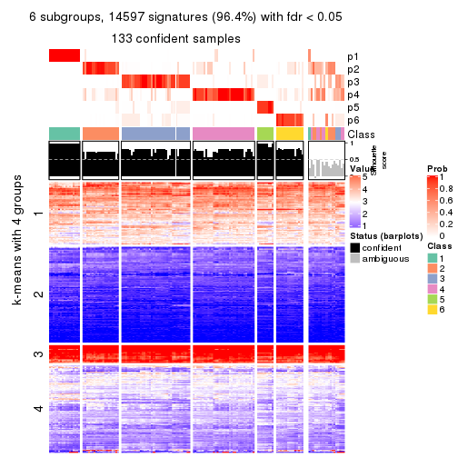
Compare the overlap of signatures from different k:
compare_signatures(res)
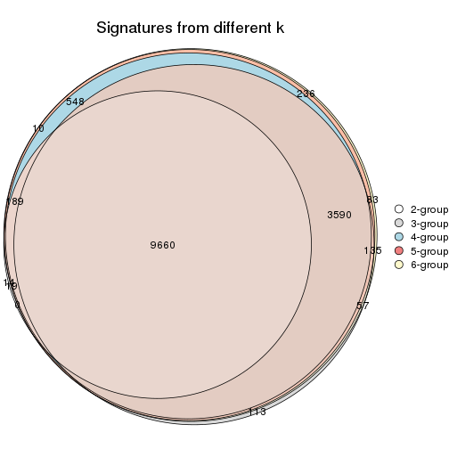
get_signature() returns a data frame invisibly. TO get the list of signatures, the function
call should be assigned to a variable explicitly. In following code, if plot argument is set
to FALSE, no heatmap is plotted while only the differential analysis is performed.
# code only for demonstration
tb = get_signature(res, k = ..., plot = FALSE)
An example of the output of tb is:
#> which_row fdr mean_1 mean_2 scaled_mean_1 scaled_mean_2 km
#> 1 38 0.042760348 8.373488 9.131774 -0.5533452 0.5164555 1
#> 2 40 0.018707592 7.106213 8.469186 -0.6173731 0.5762149 1
#> 3 55 0.019134737 10.221463 11.207825 -0.6159697 0.5749050 1
#> 4 59 0.006059896 5.921854 7.869574 -0.6899429 0.6439467 1
#> 5 60 0.018055526 8.928898 10.211722 -0.6204761 0.5791110 1
#> 6 98 0.009384629 15.714769 14.887706 0.6635654 -0.6193277 2
...
The columns in tb are:
which_row: row indices corresponding to the input matrix.fdr: FDR for the differential test. mean_x: The mean value in group x.scaled_mean_x: The mean value in group x after rows are scaled.km: Row groups if k-means clustering is applied to rows.
UMAP plot which shows how samples are separated.
dimension_reduction(res, k = 2, method = "UMAP")
dimension_reduction(res, k = 3, method = "UMAP")
dimension_reduction(res, k = 4, method = "UMAP")
dimension_reduction(res, k = 5, method = "UMAP")
dimension_reduction(res, k = 6, method = "UMAP")
Following heatmap shows how subgroups are split when increasing k:
collect_classes(res)
If matrix rows can be associated to genes, consider to use functional_enrichment(res,
...) to perform function enrichment for the signature genes. See this vignette for more detailed explanations.
CV:mclust
The object with results only for a single top-value method and a single partition method
can be extracted as:
res = res_list["CV", "mclust"]
# you can also extract it by
# res = res_list["CV:mclust"]
A summary of res and all the functions that can be applied to it:
res
#> A 'ConsensusPartition' object with k = 2, 3, 4, 5, 6.
#> On a matrix with 15148 rows and 152 columns.
#> Top rows (1000, 2000, 3000, 4000, 5000) are extracted by 'CV' method.
#> Subgroups are detected by 'mclust' method.
#> Performed in total 1250 partitions by row resampling.
#> Best k for subgroups seems to be 3.
#>
#> Following methods can be applied to this 'ConsensusPartition' object:
#> [1] "cola_report" "collect_classes" "collect_plots"
#> [4] "collect_stats" "colnames" "compare_signatures"
#> [7] "consensus_heatmap" "dimension_reduction" "functional_enrichment"
#> [10] "get_anno_col" "get_anno" "get_classes"
#> [13] "get_consensus" "get_matrix" "get_membership"
#> [16] "get_param" "get_signatures" "get_stats"
#> [19] "is_best_k" "is_stable_k" "membership_heatmap"
#> [22] "ncol" "nrow" "plot_ecdf"
#> [25] "rownames" "select_partition_number" "show"
#> [28] "suggest_best_k" "test_to_known_factors"
collect_plots() function collects all the plots made from res for all k (number of partitions)
into one single page to provide an easy and fast comparison between different k.
collect_plots(res)
The plots are:
- The first row: a plot of the ECDF (empirical cumulative distribution
function) curves of the consensus matrix for each
k and the heatmap of
predicted classes for each k.
- The second row: heatmaps of the consensus matrix for each
k.
- The third row: heatmaps of the membership matrix for each
k.
- The fouth row: heatmaps of the signatures for each
k.
All the plots in panels can be made by individual functions and they are
plotted later in this section.
select_partition_number() produces several plots showing different
statistics for choosing “optimized” k. There are following statistics:
- ECDF curves of the consensus matrix for each
k;
- 1-PAC. The PAC
score
measures the proportion of the ambiguous subgrouping.
- Mean silhouette score.
- Concordance. The mean probability of fiting the consensus class ids in all
partitions.
- Area increased. Denote \(A_k\) as the area under the ECDF curve for current
k, the area increased is defined as \(A_k - A_{k-1}\).
- Rand index. The percent of pairs of samples that are both in a same cluster
or both are not in a same cluster in the partition of k and k-1.
- Jaccard index. The ratio of pairs of samples are both in a same cluster in
the partition of k and k-1 and the pairs of samples are both in a same
cluster in the partition k or k-1.
The detailed explanations of these statistics can be found in the cola
vignette.
Generally speaking, lower PAC score, higher mean silhouette score or higher
concordance corresponds to better partition. Rand index and Jaccard index
measure how similar the current partition is compared to partition with k-1.
If they are too similar, we won't accept k is better than k-1.
select_partition_number(res)
The numeric values for all these statistics can be obtained by get_stats().
get_stats(res)
#> k 1-PAC mean_silhouette concordance area_increased Rand Jaccard
#> 2 2 0.452 0.834 0.879 0.3984 0.556 0.556
#> 3 3 0.635 0.696 0.847 0.5851 0.745 0.566
#> 4 4 0.635 0.653 0.808 0.1034 0.887 0.713
#> 5 5 0.567 0.544 0.738 0.0624 0.941 0.814
#> 6 6 0.607 0.561 0.709 0.0784 0.874 0.560
suggest_best_k() suggests the best \(k\) based on these statistics. The rules are as follows:
- All \(k\) with Jaccard index larger than 0.95 are removed because increasing
\(k\) does not provide enough extra information. If all \(k\) are removed, it is
marked as no subgroup is detected.
- For all \(k\) with 1-PAC score larger than 0.9, the maximal \(k\) is taken as
the best \(k\), and other \(k\) are marked as optional \(k\).
- If it does not fit the second rule. The \(k\) with the maximal vote of the
highest 1-PAC score, highest mean silhouette, and highest concordance is
taken as the best \(k\).
suggest_best_k(res)
#> [1] 3
Following shows the table of the partitions (You need to click the show/hide
code output link to see it). The membership matrix (columns with name p*)
is inferred by
clue::cl_consensus()
function with the SE method. Basically the value in the membership matrix
represents the probability to belong to a certain group. The finall class
label for an item is determined with the group with highest probability it
belongs to.
In get_classes() function, the entropy is calculated from the membership
matrix and the silhouette score is calculated from the consensus matrix.
show/hide code output
cbind(get_classes(res, k = 2), get_membership(res, k = 2))
#> class entropy silhouette p1 p2
#> SRR1947547 2 0.7883 0.901 0.236 0.764
#> SRR1947546 1 0.0000 0.920 1.000 0.000
#> SRR1947545 1 0.0000 0.920 1.000 0.000
#> SRR1947544 1 0.0000 0.920 1.000 0.000
#> SRR1947542 1 0.0000 0.920 1.000 0.000
#> SRR1947541 2 0.7883 0.901 0.236 0.764
#> SRR1947540 1 0.7815 0.703 0.768 0.232
#> SRR1947539 2 0.7883 0.901 0.236 0.764
#> SRR1947538 1 0.7815 0.703 0.768 0.232
#> SRR1947537 2 0.7883 0.901 0.236 0.764
#> SRR1947536 2 0.8661 0.489 0.288 0.712
#> SRR1947535 2 0.7883 0.901 0.236 0.764
#> SRR1947534 1 0.0000 0.920 1.000 0.000
#> SRR1947533 1 0.0000 0.920 1.000 0.000
#> SRR1947532 1 0.0000 0.920 1.000 0.000
#> SRR1947531 1 0.7815 0.703 0.768 0.232
#> SRR1947530 2 0.7883 0.901 0.236 0.764
#> SRR1947529 1 0.0000 0.920 1.000 0.000
#> SRR1947528 2 0.7883 0.901 0.236 0.764
#> SRR1947527 1 0.0000 0.920 1.000 0.000
#> SRR1947526 1 0.0000 0.920 1.000 0.000
#> SRR1947525 1 0.0000 0.920 1.000 0.000
#> SRR1947524 2 0.8661 0.489 0.288 0.712
#> SRR1947523 1 0.0000 0.920 1.000 0.000
#> SRR1947521 2 0.7883 0.901 0.236 0.764
#> SRR1947520 1 0.0000 0.920 1.000 0.000
#> SRR1947519 2 0.7883 0.901 0.236 0.764
#> SRR1947518 1 0.7815 0.703 0.768 0.232
#> SRR1947517 2 0.7883 0.901 0.236 0.764
#> SRR1947516 1 0.0000 0.920 1.000 0.000
#> SRR1947515 1 0.0000 0.920 1.000 0.000
#> SRR1947514 1 0.0000 0.920 1.000 0.000
#> SRR1947513 1 0.0000 0.920 1.000 0.000
#> SRR1947512 1 0.7883 0.699 0.764 0.236
#> SRR1947511 1 0.0000 0.920 1.000 0.000
#> SRR1947510 2 0.7883 0.901 0.236 0.764
#> SRR1947572 1 0.0000 0.920 1.000 0.000
#> SRR1947611 2 0.7883 0.901 0.236 0.764
#> SRR1947509 2 0.7883 0.901 0.236 0.764
#> SRR1947644 2 0.8661 0.489 0.288 0.712
#> SRR1947643 1 0.7602 0.714 0.780 0.220
#> SRR1947642 2 0.8016 0.896 0.244 0.756
#> SRR1947640 1 0.0000 0.920 1.000 0.000
#> SRR1947641 1 0.9993 -0.455 0.516 0.484
#> SRR1947639 1 0.0000 0.920 1.000 0.000
#> SRR1947638 1 0.0000 0.920 1.000 0.000
#> SRR1947637 2 0.8813 0.846 0.300 0.700
#> SRR1947636 2 0.7883 0.901 0.236 0.764
#> SRR1947635 1 0.0000 0.920 1.000 0.000
#> SRR1947634 1 0.0000 0.920 1.000 0.000
#> SRR1947633 2 0.9000 0.828 0.316 0.684
#> SRR1947632 1 0.0000 0.920 1.000 0.000
#> SRR1947631 2 0.9044 0.823 0.320 0.680
#> SRR1947629 2 0.8661 0.489 0.288 0.712
#> SRR1947630 1 0.0000 0.920 1.000 0.000
#> SRR1947627 2 0.7883 0.901 0.236 0.764
#> SRR1947628 1 0.7815 0.703 0.768 0.232
#> SRR1947626 1 0.7815 0.703 0.768 0.232
#> SRR1947625 1 0.9988 -0.444 0.520 0.480
#> SRR1947624 1 0.0000 0.920 1.000 0.000
#> SRR1947623 1 0.0000 0.920 1.000 0.000
#> SRR1947622 1 0.7376 0.725 0.792 0.208
#> SRR1947621 1 0.0000 0.920 1.000 0.000
#> SRR1947620 1 0.0000 0.920 1.000 0.000
#> SRR1947619 2 0.7883 0.901 0.236 0.764
#> SRR1947617 1 0.0000 0.920 1.000 0.000
#> SRR1947618 1 0.0000 0.920 1.000 0.000
#> SRR1947616 1 0.7815 0.703 0.768 0.232
#> SRR1947615 1 0.9988 -0.444 0.520 0.480
#> SRR1947614 2 0.7883 0.901 0.236 0.764
#> SRR1947613 1 0.0000 0.920 1.000 0.000
#> SRR1947610 1 0.7815 0.703 0.768 0.232
#> SRR1947612 1 0.0000 0.920 1.000 0.000
#> SRR1947609 1 0.0000 0.920 1.000 0.000
#> SRR1947608 2 0.7883 0.901 0.236 0.764
#> SRR1947606 2 0.7883 0.901 0.236 0.764
#> SRR1947607 1 0.0000 0.920 1.000 0.000
#> SRR1947604 1 0.0000 0.920 1.000 0.000
#> SRR1947605 1 0.0000 0.920 1.000 0.000
#> SRR1947603 1 0.0000 0.920 1.000 0.000
#> SRR1947602 2 0.7883 0.901 0.236 0.764
#> SRR1947600 2 0.8661 0.489 0.288 0.712
#> SRR1947601 1 0.0000 0.920 1.000 0.000
#> SRR1947598 1 0.7815 0.703 0.768 0.232
#> SRR1947599 1 0.0000 0.920 1.000 0.000
#> SRR1947597 1 0.0000 0.920 1.000 0.000
#> SRR1947596 1 0.0000 0.920 1.000 0.000
#> SRR1947595 1 0.0000 0.920 1.000 0.000
#> SRR1947594 1 0.0376 0.917 0.996 0.004
#> SRR1947592 2 0.7883 0.901 0.236 0.764
#> SRR1947591 1 0.0000 0.920 1.000 0.000
#> SRR1947590 1 0.0000 0.920 1.000 0.000
#> SRR1947588 1 0.0376 0.917 0.996 0.004
#> SRR1947587 2 0.7883 0.901 0.236 0.764
#> SRR1947586 1 0.7815 0.703 0.768 0.232
#> SRR1947585 2 0.8661 0.489 0.288 0.712
#> SRR1947584 1 0.0376 0.917 0.996 0.004
#> SRR1947583 1 0.0000 0.920 1.000 0.000
#> SRR1947582 1 0.0000 0.920 1.000 0.000
#> SRR1947580 1 0.7815 0.703 0.768 0.232
#> SRR1947581 1 0.0376 0.917 0.996 0.004
#> SRR1947576 2 0.8327 0.880 0.264 0.736
#> SRR1947575 2 0.8016 0.895 0.244 0.756
#> SRR1947579 2 0.7883 0.901 0.236 0.764
#> SRR1947578 1 0.7815 0.703 0.768 0.232
#> SRR1947573 2 0.7883 0.901 0.236 0.764
#> SRR1947574 1 0.0000 0.920 1.000 0.000
#> SRR1947571 1 0.0000 0.920 1.000 0.000
#> SRR1947577 1 0.0000 0.920 1.000 0.000
#> SRR1947570 2 0.7883 0.901 0.236 0.764
#> SRR1947569 2 0.8661 0.489 0.288 0.712
#> SRR1947566 1 0.7815 0.703 0.768 0.232
#> SRR1947567 1 0.0000 0.920 1.000 0.000
#> SRR1947568 1 0.0000 0.920 1.000 0.000
#> SRR1947564 1 0.0000 0.920 1.000 0.000
#> SRR1947563 2 0.7883 0.901 0.236 0.764
#> SRR1947562 1 0.0000 0.920 1.000 0.000
#> SRR1947565 2 0.7883 0.901 0.236 0.764
#> SRR1947559 1 0.0000 0.920 1.000 0.000
#> SRR1947560 2 0.8016 0.896 0.244 0.756
#> SRR1947561 1 0.0000 0.920 1.000 0.000
#> SRR1947557 1 0.0376 0.917 0.996 0.004
#> SRR1947558 2 0.8955 0.833 0.312 0.688
#> SRR1947556 1 0.0000 0.920 1.000 0.000
#> SRR1947553 1 0.7815 0.703 0.768 0.232
#> SRR1947554 1 0.0000 0.920 1.000 0.000
#> SRR1947555 1 0.0000 0.920 1.000 0.000
#> SRR1947550 1 0.0000 0.920 1.000 0.000
#> SRR1947552 1 0.0000 0.920 1.000 0.000
#> SRR1947549 2 0.7883 0.901 0.236 0.764
#> SRR1947551 2 0.8661 0.489 0.288 0.712
#> SRR1947548 1 0.0000 0.920 1.000 0.000
#> SRR1947506 2 0.7883 0.901 0.236 0.764
#> SRR1947507 1 0.0376 0.917 0.996 0.004
#> SRR1947504 1 0.0000 0.920 1.000 0.000
#> SRR1947503 1 0.0000 0.920 1.000 0.000
#> SRR1947502 1 0.0000 0.920 1.000 0.000
#> SRR1947501 1 0.0000 0.920 1.000 0.000
#> SRR1947499 2 0.7883 0.901 0.236 0.764
#> SRR1947498 2 0.8661 0.489 0.288 0.712
#> SRR1947508 2 0.7883 0.901 0.236 0.764
#> SRR1947505 1 0.7815 0.703 0.768 0.232
#> SRR1947497 1 0.0000 0.920 1.000 0.000
#> SRR1947496 1 0.0376 0.917 0.996 0.004
#> SRR1947495 1 0.0000 0.920 1.000 0.000
#> SRR1947494 1 0.0000 0.920 1.000 0.000
#> SRR1947493 2 0.7883 0.901 0.236 0.764
#> SRR1947492 1 0.0376 0.917 0.996 0.004
#> SRR1947500 1 0.0000 0.920 1.000 0.000
#> SRR1947491 1 0.0000 0.920 1.000 0.000
#> SRR1947490 1 0.0000 0.920 1.000 0.000
#> SRR1947489 2 0.8955 0.833 0.312 0.688
show/hide code output
cbind(get_classes(res, k = 3), get_membership(res, k = 3))
#> class entropy silhouette p1 p2 p3
#> SRR1947547 3 0.0000 0.9888 0.000 0.000 1.000
#> SRR1947546 1 0.6126 0.5762 0.600 0.400 0.000
#> SRR1947545 1 0.0475 0.7595 0.992 0.004 0.004
#> SRR1947544 1 0.1753 0.7238 0.952 0.000 0.048
#> SRR1947542 1 0.6204 0.4837 0.576 0.424 0.000
#> SRR1947541 3 0.0000 0.9888 0.000 0.000 1.000
#> SRR1947540 2 0.1964 0.6344 0.056 0.944 0.000
#> SRR1947539 3 0.0000 0.9888 0.000 0.000 1.000
#> SRR1947538 2 0.5529 0.4569 0.296 0.704 0.000
#> SRR1947537 3 0.0000 0.9888 0.000 0.000 1.000
#> SRR1947536 2 0.6111 0.2679 0.000 0.604 0.396
#> SRR1947535 3 0.0000 0.9888 0.000 0.000 1.000
#> SRR1947534 1 0.4555 0.7102 0.800 0.200 0.000
#> SRR1947533 1 0.6204 0.5417 0.576 0.424 0.000
#> SRR1947532 1 0.3193 0.7738 0.896 0.100 0.004
#> SRR1947531 2 0.1964 0.6344 0.056 0.944 0.000
#> SRR1947530 3 0.0424 0.9871 0.000 0.008 0.992
#> SRR1947529 2 0.5497 0.3003 0.292 0.708 0.000
#> SRR1947528 3 0.0000 0.9888 0.000 0.000 1.000
#> SRR1947527 2 0.6274 -0.2975 0.456 0.544 0.000
#> SRR1947526 1 0.6126 0.5762 0.600 0.400 0.000
#> SRR1947525 1 0.5835 0.6461 0.660 0.340 0.000
#> SRR1947524 2 0.6140 0.2660 0.000 0.596 0.404
#> SRR1947523 1 0.4931 0.7218 0.768 0.232 0.000
#> SRR1947521 3 0.0424 0.9871 0.000 0.008 0.992
#> SRR1947520 1 0.6282 0.5882 0.612 0.384 0.004
#> SRR1947519 3 0.0000 0.9888 0.000 0.000 1.000
#> SRR1947518 2 0.5529 0.4569 0.296 0.704 0.000
#> SRR1947517 3 0.0424 0.9871 0.000 0.008 0.992
#> SRR1947516 2 0.5948 0.0628 0.360 0.640 0.000
#> SRR1947515 1 0.3193 0.7738 0.896 0.100 0.004
#> SRR1947514 2 0.5948 0.0628 0.360 0.640 0.000
#> SRR1947513 1 0.0237 0.7612 0.996 0.000 0.004
#> SRR1947512 1 0.6126 0.0048 0.600 0.400 0.000
#> SRR1947511 1 0.6062 0.5903 0.616 0.384 0.000
#> SRR1947510 3 0.0424 0.9871 0.000 0.008 0.992
#> SRR1947572 1 0.3272 0.7738 0.892 0.104 0.004
#> SRR1947611 3 0.1289 0.9683 0.000 0.032 0.968
#> SRR1947509 3 0.0424 0.9871 0.000 0.008 0.992
#> SRR1947644 2 0.6111 0.2679 0.000 0.604 0.396
#> SRR1947643 2 0.2537 0.6195 0.080 0.920 0.000
#> SRR1947642 3 0.0000 0.9888 0.000 0.000 1.000
#> SRR1947640 1 0.2860 0.7750 0.912 0.084 0.004
#> SRR1947641 3 0.1765 0.9489 0.004 0.040 0.956
#> SRR1947639 1 0.4974 0.7226 0.764 0.236 0.000
#> SRR1947638 1 0.0000 0.7620 1.000 0.000 0.000
#> SRR1947637 3 0.1289 0.9683 0.000 0.032 0.968
#> SRR1947636 3 0.0000 0.9888 0.000 0.000 1.000
#> SRR1947635 1 0.5926 0.6127 0.644 0.356 0.000
#> SRR1947634 1 0.6062 0.5903 0.616 0.384 0.000
#> SRR1947633 3 0.1031 0.9693 0.000 0.024 0.976
#> SRR1947632 1 0.5733 0.6446 0.676 0.324 0.000
#> SRR1947631 3 0.0000 0.9888 0.000 0.000 1.000
#> SRR1947629 2 0.6140 0.2660 0.000 0.596 0.404
#> SRR1947630 1 0.6062 0.5903 0.616 0.384 0.000
#> SRR1947627 3 0.0424 0.9871 0.000 0.008 0.992
#> SRR1947628 2 0.3816 0.5853 0.148 0.852 0.000
#> SRR1947626 2 0.0592 0.6292 0.012 0.988 0.000
#> SRR1947625 3 0.2945 0.8850 0.004 0.088 0.908
#> SRR1947624 1 0.6282 0.5882 0.612 0.384 0.004
#> SRR1947623 1 0.0661 0.7590 0.988 0.004 0.008
#> SRR1947622 2 0.2261 0.6289 0.068 0.932 0.000
#> SRR1947621 2 0.5948 0.0628 0.360 0.640 0.000
#> SRR1947620 1 0.0592 0.7578 0.988 0.000 0.012
#> SRR1947619 3 0.0000 0.9888 0.000 0.000 1.000
#> SRR1947617 2 0.6192 -0.1744 0.420 0.580 0.000
#> SRR1947618 1 0.0592 0.7578 0.988 0.000 0.012
#> SRR1947616 2 0.1964 0.6344 0.056 0.944 0.000
#> SRR1947615 3 0.0592 0.9782 0.012 0.000 0.988
#> SRR1947614 3 0.0424 0.9871 0.000 0.008 0.992
#> SRR1947613 1 0.0475 0.7605 0.992 0.004 0.004
#> SRR1947610 2 0.1529 0.6342 0.040 0.960 0.000
#> SRR1947612 2 0.5948 0.0628 0.360 0.640 0.000
#> SRR1947609 1 0.3207 0.7740 0.904 0.084 0.012
#> SRR1947608 3 0.0000 0.9888 0.000 0.000 1.000
#> SRR1947606 3 0.0000 0.9888 0.000 0.000 1.000
#> SRR1947607 1 0.0829 0.7582 0.984 0.012 0.004
#> SRR1947604 1 0.3193 0.7738 0.896 0.100 0.004
#> SRR1947605 1 0.0661 0.7577 0.988 0.004 0.008
#> SRR1947603 1 0.6302 0.4058 0.520 0.480 0.000
#> SRR1947602 3 0.0424 0.9871 0.000 0.008 0.992
#> SRR1947600 2 0.6140 0.2660 0.000 0.596 0.404
#> SRR1947601 2 0.6111 -0.0274 0.396 0.604 0.000
#> SRR1947598 2 0.5560 0.4562 0.300 0.700 0.000
#> SRR1947599 1 0.2945 0.7751 0.908 0.088 0.004
#> SRR1947597 1 0.6126 0.5762 0.600 0.400 0.000
#> SRR1947596 1 0.3539 0.7725 0.888 0.100 0.012
#> SRR1947595 1 0.5360 0.7282 0.768 0.220 0.012
#> SRR1947594 1 0.0661 0.7585 0.988 0.008 0.004
#> SRR1947592 3 0.0000 0.9888 0.000 0.000 1.000
#> SRR1947591 2 0.5948 0.0628 0.360 0.640 0.000
#> SRR1947590 1 0.4335 0.7610 0.864 0.100 0.036
#> SRR1947588 1 0.0661 0.7585 0.988 0.008 0.004
#> SRR1947587 3 0.0000 0.9888 0.000 0.000 1.000
#> SRR1947586 2 0.0592 0.6292 0.012 0.988 0.000
#> SRR1947585 2 0.6140 0.2660 0.000 0.596 0.404
#> SRR1947584 1 0.0661 0.7585 0.988 0.008 0.004
#> SRR1947583 1 0.4555 0.7375 0.800 0.200 0.000
#> SRR1947582 1 0.0237 0.7612 0.996 0.000 0.004
#> SRR1947580 2 0.1964 0.6344 0.056 0.944 0.000
#> SRR1947581 1 0.0848 0.7564 0.984 0.008 0.008
#> SRR1947576 3 0.1289 0.9683 0.000 0.032 0.968
#> SRR1947575 3 0.1031 0.9693 0.000 0.024 0.976
#> SRR1947579 3 0.0424 0.9871 0.000 0.008 0.992
#> SRR1947578 2 0.1964 0.6344 0.056 0.944 0.000
#> SRR1947573 3 0.0000 0.9888 0.000 0.000 1.000
#> SRR1947574 1 0.2625 0.7754 0.916 0.084 0.000
#> SRR1947571 1 0.2959 0.7734 0.900 0.100 0.000
#> SRR1947577 1 0.0237 0.7612 0.996 0.000 0.004
#> SRR1947570 3 0.0000 0.9888 0.000 0.000 1.000
#> SRR1947569 2 0.6140 0.2660 0.000 0.596 0.404
#> SRR1947566 2 0.1964 0.6344 0.056 0.944 0.000
#> SRR1947567 1 0.6140 0.5705 0.596 0.404 0.000
#> SRR1947568 1 0.6204 0.5634 0.576 0.424 0.000
#> SRR1947564 1 0.6225 0.5361 0.568 0.432 0.000
#> SRR1947563 3 0.0000 0.9888 0.000 0.000 1.000
#> SRR1947562 1 0.2959 0.7734 0.900 0.100 0.000
#> SRR1947565 3 0.0000 0.9888 0.000 0.000 1.000
#> SRR1947559 1 0.6079 0.5929 0.612 0.388 0.000
#> SRR1947560 3 0.1289 0.9683 0.000 0.032 0.968
#> SRR1947561 1 0.6215 0.5367 0.572 0.428 0.000
#> SRR1947557 1 0.0848 0.7564 0.984 0.008 0.008
#> SRR1947558 3 0.0000 0.9888 0.000 0.000 1.000
#> SRR1947556 1 0.1182 0.7571 0.976 0.012 0.012
#> SRR1947553 2 0.1529 0.6342 0.040 0.960 0.000
#> SRR1947554 1 0.0237 0.7613 0.996 0.004 0.000
#> SRR1947555 1 0.6126 0.5762 0.600 0.400 0.000
#> SRR1947550 1 0.4629 0.7459 0.808 0.188 0.004
#> SRR1947552 1 0.3112 0.7744 0.900 0.096 0.004
#> SRR1947549 3 0.0000 0.9888 0.000 0.000 1.000
#> SRR1947551 2 0.6111 0.2679 0.000 0.604 0.396
#> SRR1947548 1 0.3193 0.7738 0.896 0.100 0.004
#> SRR1947506 3 0.0000 0.9888 0.000 0.000 1.000
#> SRR1947507 1 0.0661 0.7585 0.988 0.008 0.004
#> SRR1947504 1 0.0661 0.7590 0.988 0.004 0.008
#> SRR1947503 1 0.1267 0.7664 0.972 0.024 0.004
#> SRR1947502 1 0.6168 0.5646 0.588 0.412 0.000
#> SRR1947501 1 0.6260 0.4272 0.552 0.448 0.000
#> SRR1947499 3 0.0424 0.9871 0.000 0.008 0.992
#> SRR1947498 2 0.6140 0.2660 0.000 0.596 0.404
#> SRR1947508 3 0.0424 0.9871 0.000 0.008 0.992
#> SRR1947505 2 0.4399 0.5571 0.188 0.812 0.000
#> SRR1947497 1 0.6062 0.5903 0.616 0.384 0.000
#> SRR1947496 1 0.0848 0.7564 0.984 0.008 0.008
#> SRR1947495 1 0.6062 0.5903 0.616 0.384 0.000
#> SRR1947494 1 0.3193 0.7738 0.896 0.100 0.004
#> SRR1947493 3 0.0424 0.9871 0.000 0.008 0.992
#> SRR1947492 1 0.0475 0.7605 0.992 0.004 0.004
#> SRR1947500 1 0.4974 0.7193 0.764 0.236 0.000
#> SRR1947491 1 0.2625 0.7754 0.916 0.084 0.000
#> SRR1947490 1 0.0475 0.7605 0.992 0.004 0.004
#> SRR1947489 3 0.0424 0.9824 0.008 0.000 0.992
show/hide code output
cbind(get_classes(res, k = 4), get_membership(res, k = 4))
#> class entropy silhouette p1 p2 p3 p4
#> SRR1947547 3 0.0000 0.96206 0.000 0.000 1.000 0.000
#> SRR1947546 1 0.3356 0.63418 0.824 0.176 0.000 0.000
#> SRR1947545 1 0.1854 0.70304 0.940 0.000 0.012 0.048
#> SRR1947544 1 0.3818 0.66671 0.844 0.000 0.108 0.048
#> SRR1947542 1 0.3052 0.67243 0.860 0.136 0.000 0.004
#> SRR1947541 3 0.0000 0.96206 0.000 0.000 1.000 0.000
#> SRR1947540 4 0.5440 0.46759 0.384 0.020 0.000 0.596
#> SRR1947539 3 0.0188 0.96167 0.000 0.000 0.996 0.004
#> SRR1947538 4 0.5866 0.47519 0.324 0.052 0.000 0.624
#> SRR1947537 3 0.0188 0.96167 0.000 0.000 0.996 0.004
#> SRR1947536 4 0.5400 0.44406 0.000 0.020 0.372 0.608
#> SRR1947535 3 0.0895 0.95752 0.000 0.020 0.976 0.004
#> SRR1947534 2 0.8082 0.02434 0.348 0.392 0.008 0.252
#> SRR1947533 2 0.3479 0.72533 0.148 0.840 0.000 0.012
#> SRR1947532 1 0.1022 0.71070 0.968 0.032 0.000 0.000
#> SRR1947531 4 0.5440 0.46056 0.384 0.020 0.000 0.596
#> SRR1947530 3 0.1109 0.95633 0.000 0.004 0.968 0.028
#> SRR1947529 1 0.4655 0.29939 0.684 0.312 0.000 0.004
#> SRR1947528 3 0.0000 0.96206 0.000 0.000 1.000 0.000
#> SRR1947527 2 0.2021 0.71418 0.056 0.932 0.000 0.012
#> SRR1947526 2 0.5300 0.42374 0.408 0.580 0.000 0.012
#> SRR1947525 1 0.2675 0.68961 0.892 0.100 0.000 0.008
#> SRR1947524 4 0.4843 0.46516 0.000 0.000 0.396 0.604
#> SRR1947523 1 0.2342 0.69782 0.912 0.080 0.000 0.008
#> SRR1947521 3 0.2466 0.93470 0.000 0.056 0.916 0.028
#> SRR1947520 1 0.4792 0.37678 0.680 0.312 0.000 0.008
#> SRR1947519 3 0.1004 0.95603 0.000 0.024 0.972 0.004
#> SRR1947518 4 0.6027 0.43444 0.124 0.192 0.000 0.684
#> SRR1947517 3 0.2466 0.93470 0.000 0.056 0.916 0.028
#> SRR1947516 2 0.1474 0.72051 0.052 0.948 0.000 0.000
#> SRR1947515 1 0.0921 0.70920 0.972 0.028 0.000 0.000
#> SRR1947514 2 0.1661 0.71919 0.052 0.944 0.000 0.004
#> SRR1947513 1 0.4168 0.69981 0.852 0.064 0.036 0.048
#> SRR1947512 4 0.4957 0.00898 0.320 0.012 0.000 0.668
#> SRR1947511 2 0.5366 0.35607 0.440 0.548 0.000 0.012
#> SRR1947510 3 0.2466 0.93470 0.000 0.056 0.916 0.028
#> SRR1947572 1 0.4422 0.56395 0.736 0.008 0.000 0.256
#> SRR1947611 3 0.2623 0.93096 0.000 0.064 0.908 0.028
#> SRR1947509 3 0.2466 0.93470 0.000 0.056 0.916 0.028
#> SRR1947644 4 0.5773 0.47066 0.000 0.044 0.336 0.620
#> SRR1947643 1 0.5546 0.26271 0.664 0.292 0.000 0.044
#> SRR1947642 3 0.0188 0.96167 0.000 0.000 0.996 0.004
#> SRR1947640 1 0.2124 0.70253 0.924 0.068 0.000 0.008
#> SRR1947641 3 0.0188 0.96167 0.000 0.000 0.996 0.004
#> SRR1947639 1 0.3577 0.62656 0.832 0.156 0.000 0.012
#> SRR1947638 1 0.1557 0.69985 0.944 0.000 0.000 0.056
#> SRR1947637 3 0.3862 0.83998 0.000 0.152 0.824 0.024
#> SRR1947636 3 0.0188 0.96167 0.000 0.000 0.996 0.004
#> SRR1947635 1 0.2198 0.69013 0.920 0.072 0.000 0.008
#> SRR1947634 1 0.5329 0.03316 0.568 0.420 0.000 0.012
#> SRR1947633 3 0.1474 0.94825 0.000 0.052 0.948 0.000
#> SRR1947632 1 0.2973 0.66509 0.856 0.144 0.000 0.000
#> SRR1947631 3 0.0188 0.96167 0.000 0.000 0.996 0.004
#> SRR1947629 4 0.4843 0.46516 0.000 0.000 0.396 0.604
#> SRR1947630 1 0.5372 -0.06795 0.544 0.444 0.000 0.012
#> SRR1947627 3 0.1109 0.95633 0.000 0.004 0.968 0.028
#> SRR1947628 4 0.5440 0.46759 0.384 0.020 0.000 0.596
#> SRR1947626 4 0.6060 0.27553 0.044 0.440 0.000 0.516
#> SRR1947625 3 0.0188 0.96167 0.000 0.000 0.996 0.004
#> SRR1947624 1 0.5764 0.12474 0.588 0.384 0.016 0.012
#> SRR1947623 1 0.4661 0.51635 0.652 0.000 0.000 0.348
#> SRR1947622 1 0.7442 -0.12885 0.504 0.284 0.000 0.212
#> SRR1947621 2 0.1474 0.72051 0.052 0.948 0.000 0.000
#> SRR1947620 1 0.3758 0.67061 0.848 0.000 0.104 0.048
#> SRR1947619 3 0.1398 0.93032 0.040 0.000 0.956 0.004
#> SRR1947617 2 0.1474 0.72051 0.052 0.948 0.000 0.000
#> SRR1947618 1 0.4125 0.68297 0.848 0.020 0.084 0.048
#> SRR1947616 4 0.5699 0.46027 0.380 0.032 0.000 0.588
#> SRR1947615 3 0.1396 0.93676 0.032 0.004 0.960 0.004
#> SRR1947614 3 0.2466 0.93470 0.000 0.056 0.916 0.028
#> SRR1947613 1 0.4713 0.50613 0.640 0.000 0.000 0.360
#> SRR1947610 4 0.6508 0.40330 0.104 0.296 0.000 0.600
#> SRR1947612 2 0.1474 0.72051 0.052 0.948 0.000 0.000
#> SRR1947609 1 0.2926 0.69274 0.896 0.048 0.056 0.000
#> SRR1947608 3 0.1004 0.95603 0.000 0.024 0.972 0.004
#> SRR1947606 3 0.0000 0.96206 0.000 0.000 1.000 0.000
#> SRR1947607 1 0.6058 0.46705 0.604 0.060 0.000 0.336
#> SRR1947604 1 0.1792 0.70437 0.932 0.068 0.000 0.000
#> SRR1947605 1 0.3312 0.69087 0.876 0.000 0.072 0.052
#> SRR1947603 1 0.4356 0.46074 0.708 0.292 0.000 0.000
#> SRR1947602 3 0.1109 0.95633 0.000 0.004 0.968 0.028
#> SRR1947600 4 0.4843 0.46516 0.000 0.000 0.396 0.604
#> SRR1947601 2 0.4428 0.65494 0.276 0.720 0.000 0.004
#> SRR1947598 4 0.5440 0.46759 0.384 0.020 0.000 0.596
#> SRR1947599 1 0.2363 0.70469 0.920 0.056 0.024 0.000
#> SRR1947597 1 0.3982 0.58473 0.776 0.220 0.000 0.004
#> SRR1947596 1 0.1767 0.70880 0.944 0.012 0.044 0.000
#> SRR1947595 1 0.3928 0.66610 0.852 0.056 0.084 0.008
#> SRR1947594 1 0.4889 0.50303 0.636 0.004 0.000 0.360
#> SRR1947592 3 0.0188 0.96167 0.000 0.000 0.996 0.004
#> SRR1947591 2 0.1474 0.72051 0.052 0.948 0.000 0.000
#> SRR1947590 1 0.3048 0.66844 0.876 0.016 0.108 0.000
#> SRR1947588 1 0.4889 0.50303 0.636 0.004 0.000 0.360
#> SRR1947587 3 0.0188 0.96167 0.000 0.000 0.996 0.004
#> SRR1947586 4 0.6044 0.27723 0.044 0.428 0.000 0.528
#> SRR1947585 4 0.4843 0.46516 0.000 0.000 0.396 0.604
#> SRR1947584 1 0.4872 0.50662 0.640 0.004 0.000 0.356
#> SRR1947583 1 0.2198 0.70093 0.920 0.072 0.000 0.008
#> SRR1947582 1 0.4258 0.69799 0.848 0.064 0.040 0.048
#> SRR1947580 4 0.6538 0.45725 0.292 0.108 0.000 0.600
#> SRR1947581 1 0.4889 0.50303 0.636 0.004 0.000 0.360
#> SRR1947576 3 0.3962 0.83746 0.000 0.152 0.820 0.028
#> SRR1947575 3 0.1209 0.95139 0.000 0.032 0.964 0.004
#> SRR1947579 3 0.2466 0.93470 0.000 0.056 0.916 0.028
#> SRR1947578 4 0.5626 0.46114 0.384 0.028 0.000 0.588
#> SRR1947573 3 0.0188 0.96167 0.000 0.000 0.996 0.004
#> SRR1947574 1 0.0895 0.70935 0.976 0.004 0.000 0.020
#> SRR1947571 1 0.1209 0.70710 0.964 0.032 0.000 0.004
#> SRR1947577 1 0.3135 0.70908 0.896 0.044 0.012 0.048
#> SRR1947570 3 0.0000 0.96206 0.000 0.000 1.000 0.000
#> SRR1947569 4 0.4843 0.46516 0.000 0.000 0.396 0.604
#> SRR1947566 1 0.7073 -0.10515 0.504 0.132 0.000 0.364
#> SRR1947567 1 0.1867 0.69452 0.928 0.072 0.000 0.000
#> SRR1947568 2 0.5558 0.45249 0.324 0.640 0.036 0.000
#> SRR1947564 2 0.3972 0.70827 0.204 0.788 0.000 0.008
#> SRR1947563 3 0.0895 0.95752 0.000 0.020 0.976 0.004
#> SRR1947562 1 0.2216 0.69793 0.908 0.092 0.000 0.000
#> SRR1947565 3 0.0188 0.96167 0.000 0.000 0.996 0.004
#> SRR1947559 1 0.3751 0.61162 0.800 0.196 0.000 0.004
#> SRR1947560 3 0.2699 0.92825 0.000 0.068 0.904 0.028
#> SRR1947561 2 0.3710 0.71349 0.192 0.804 0.000 0.004
#> SRR1947557 1 0.4889 0.50303 0.636 0.004 0.000 0.360
#> SRR1947558 3 0.0188 0.96167 0.000 0.000 0.996 0.004
#> SRR1947556 1 0.4608 0.54612 0.692 0.004 0.000 0.304
#> SRR1947553 4 0.6641 0.41012 0.124 0.276 0.000 0.600
#> SRR1947554 1 0.4605 0.52598 0.664 0.000 0.000 0.336
#> SRR1947555 1 0.4220 0.53235 0.748 0.248 0.004 0.000
#> SRR1947550 1 0.2198 0.70093 0.920 0.072 0.000 0.008
#> SRR1947552 1 0.2256 0.70572 0.924 0.056 0.020 0.000
#> SRR1947549 3 0.0188 0.96167 0.000 0.000 0.996 0.004
#> SRR1947551 4 0.5773 0.47066 0.000 0.044 0.336 0.620
#> SRR1947548 1 0.0921 0.70809 0.972 0.028 0.000 0.000
#> SRR1947506 3 0.0779 0.95962 0.000 0.004 0.980 0.016
#> SRR1947507 1 0.4889 0.50303 0.636 0.004 0.000 0.360
#> SRR1947504 1 0.4781 0.52361 0.660 0.004 0.000 0.336
#> SRR1947503 1 0.1302 0.70386 0.956 0.000 0.000 0.044
#> SRR1947502 2 0.4053 0.69374 0.228 0.768 0.000 0.004
#> SRR1947501 1 0.3893 0.60469 0.796 0.196 0.008 0.000
#> SRR1947499 3 0.1109 0.95633 0.000 0.004 0.968 0.028
#> SRR1947498 4 0.5004 0.46700 0.000 0.004 0.392 0.604
#> SRR1947508 3 0.1256 0.95613 0.000 0.008 0.964 0.028
#> SRR1947505 4 0.5125 0.46446 0.388 0.008 0.000 0.604
#> SRR1947497 1 0.5408 -0.22166 0.500 0.488 0.000 0.012
#> SRR1947496 1 0.4889 0.50303 0.636 0.004 0.000 0.360
#> SRR1947495 2 0.5366 0.35562 0.440 0.548 0.000 0.012
#> SRR1947494 1 0.2816 0.69608 0.900 0.064 0.036 0.000
#> SRR1947493 3 0.1004 0.95757 0.000 0.004 0.972 0.024
#> SRR1947492 1 0.4713 0.50613 0.640 0.000 0.000 0.360
#> SRR1947500 1 0.2473 0.69872 0.908 0.080 0.000 0.012
#> SRR1947491 1 0.0804 0.70901 0.980 0.012 0.000 0.008
#> SRR1947490 1 0.4781 0.52718 0.660 0.004 0.000 0.336
#> SRR1947489 3 0.1443 0.94785 0.008 0.028 0.960 0.004
show/hide code output
cbind(get_classes(res, k = 5), get_membership(res, k = 5))
#> class entropy silhouette p1 p2 p3 p4 p5
#> SRR1947547 3 0.5509 0.79960 0.104 0.004 0.644 0.000 0.248
#> SRR1947546 4 0.3835 0.48850 0.008 0.260 0.000 0.732 0.000
#> SRR1947545 4 0.4037 0.33321 0.224 0.004 0.020 0.752 0.000
#> SRR1947544 4 0.4013 0.44388 0.084 0.004 0.108 0.804 0.000
#> SRR1947542 4 0.5125 0.52688 0.156 0.148 0.000 0.696 0.000
#> SRR1947541 3 0.5600 0.80111 0.104 0.004 0.628 0.000 0.264
#> SRR1947540 5 0.4446 0.48777 0.008 0.000 0.000 0.400 0.592
#> SRR1947539 3 0.4009 0.80425 0.004 0.000 0.684 0.000 0.312
#> SRR1947538 5 0.6804 0.42829 0.292 0.008 0.000 0.236 0.464
#> SRR1947537 3 0.5687 0.79388 0.104 0.000 0.580 0.000 0.316
#> SRR1947536 5 0.4909 0.40069 0.000 0.028 0.412 0.000 0.560
#> SRR1947535 3 0.5158 0.76100 0.036 0.004 0.568 0.000 0.392
#> SRR1947534 4 0.5841 0.07015 0.212 0.180 0.000 0.608 0.000
#> SRR1947533 2 0.4375 0.41181 0.004 0.576 0.000 0.420 0.000
#> SRR1947532 4 0.2806 0.55524 0.152 0.004 0.000 0.844 0.000
#> SRR1947531 5 0.4446 0.48777 0.008 0.000 0.000 0.400 0.592
#> SRR1947530 3 0.2629 0.72268 0.104 0.004 0.880 0.000 0.012
#> SRR1947529 4 0.5133 0.25521 0.000 0.384 0.012 0.580 0.024
#> SRR1947528 3 0.4915 0.79170 0.104 0.004 0.724 0.000 0.168
#> SRR1947527 2 0.2291 0.64751 0.036 0.908 0.000 0.056 0.000
#> SRR1947526 2 0.4434 0.31770 0.004 0.536 0.000 0.460 0.000
#> SRR1947525 4 0.3319 0.54884 0.160 0.020 0.000 0.820 0.000
#> SRR1947524 5 0.0290 0.50184 0.000 0.000 0.008 0.000 0.992
#> SRR1947523 4 0.1704 0.61910 0.004 0.068 0.000 0.928 0.000
#> SRR1947521 3 0.0000 0.74254 0.000 0.000 1.000 0.000 0.000
#> SRR1947520 4 0.4623 0.31354 0.012 0.340 0.008 0.640 0.000
#> SRR1947519 3 0.5065 0.80524 0.036 0.016 0.664 0.000 0.284
#> SRR1947518 5 0.7262 0.44128 0.292 0.040 0.000 0.204 0.464
#> SRR1947517 3 0.0000 0.74254 0.000 0.000 1.000 0.000 0.000
#> SRR1947516 2 0.1341 0.66593 0.000 0.944 0.000 0.056 0.000
#> SRR1947515 4 0.2763 0.55663 0.148 0.004 0.000 0.848 0.000
#> SRR1947514 2 0.1341 0.66593 0.000 0.944 0.000 0.056 0.000
#> SRR1947513 4 0.0451 0.61855 0.008 0.004 0.000 0.988 0.000
#> SRR1947512 1 0.6863 0.10190 0.416 0.004 0.000 0.280 0.300
#> SRR1947511 2 0.4446 0.28085 0.004 0.520 0.000 0.476 0.000
#> SRR1947510 3 0.0162 0.74390 0.000 0.000 0.996 0.000 0.004
#> SRR1947572 4 0.3897 0.50045 0.204 0.028 0.000 0.768 0.000
#> SRR1947611 3 0.1538 0.73650 0.036 0.008 0.948 0.000 0.008
#> SRR1947509 3 0.0000 0.74254 0.000 0.000 1.000 0.000 0.000
#> SRR1947644 5 0.4310 0.43517 0.000 0.004 0.392 0.000 0.604
#> SRR1947643 4 0.6080 0.20499 0.008 0.360 0.012 0.548 0.072
#> SRR1947642 3 0.5361 0.80172 0.036 0.040 0.672 0.000 0.252
#> SRR1947640 4 0.0566 0.62263 0.004 0.012 0.000 0.984 0.000
#> SRR1947641 3 0.5685 0.78568 0.036 0.040 0.608 0.000 0.316
#> SRR1947639 4 0.3495 0.53990 0.160 0.028 0.000 0.812 0.000
#> SRR1947638 4 0.1750 0.59105 0.028 0.036 0.000 0.936 0.000
#> SRR1947637 3 0.5537 0.78472 0.036 0.068 0.684 0.000 0.212
#> SRR1947636 3 0.5640 0.79680 0.104 0.000 0.592 0.000 0.304
#> SRR1947635 4 0.3750 0.54311 0.000 0.232 0.012 0.756 0.000
#> SRR1947634 4 0.4415 -0.05731 0.004 0.444 0.000 0.552 0.000
#> SRR1947633 3 0.4435 0.78138 0.000 0.016 0.648 0.000 0.336
#> SRR1947632 4 0.5547 0.48520 0.148 0.208 0.000 0.644 0.000
#> SRR1947631 3 0.5579 0.79364 0.036 0.040 0.632 0.000 0.292
#> SRR1947629 5 0.0290 0.50184 0.000 0.000 0.008 0.000 0.992
#> SRR1947630 4 0.4632 -0.06961 0.012 0.448 0.000 0.540 0.000
#> SRR1947627 3 0.2392 0.72616 0.104 0.004 0.888 0.000 0.004
#> SRR1947628 5 0.4768 0.49395 0.024 0.000 0.000 0.384 0.592
#> SRR1947626 5 0.4883 0.35018 0.016 0.464 0.000 0.004 0.516
#> SRR1947625 3 0.5918 0.73491 0.036 0.040 0.528 0.000 0.396
#> SRR1947624 4 0.4617 -0.00405 0.012 0.436 0.000 0.552 0.000
#> SRR1947623 4 0.4445 -0.11938 0.300 0.024 0.000 0.676 0.000
#> SRR1947622 4 0.8622 0.01756 0.160 0.272 0.012 0.360 0.196
#> SRR1947621 2 0.1341 0.66593 0.000 0.944 0.000 0.056 0.000
#> SRR1947620 4 0.0671 0.61496 0.016 0.000 0.004 0.980 0.000
#> SRR1947619 3 0.5600 0.79705 0.096 0.000 0.588 0.000 0.316
#> SRR1947617 2 0.1341 0.66593 0.000 0.944 0.000 0.056 0.000
#> SRR1947618 4 0.0867 0.61985 0.008 0.008 0.008 0.976 0.000
#> SRR1947616 5 0.4446 0.48777 0.008 0.000 0.000 0.400 0.592
#> SRR1947615 3 0.5815 0.79711 0.036 0.024 0.632 0.020 0.288
#> SRR1947614 3 0.0000 0.74254 0.000 0.000 1.000 0.000 0.000
#> SRR1947613 4 0.4238 -0.33393 0.368 0.004 0.000 0.628 0.000
#> SRR1947610 5 0.7556 0.46272 0.108 0.212 0.000 0.172 0.508
#> SRR1947612 2 0.1341 0.66593 0.000 0.944 0.000 0.056 0.000
#> SRR1947609 4 0.0324 0.62015 0.004 0.004 0.000 0.992 0.000
#> SRR1947608 3 0.5158 0.76100 0.036 0.004 0.568 0.000 0.392
#> SRR1947606 3 0.5435 0.80073 0.104 0.004 0.656 0.000 0.236
#> SRR1947607 4 0.5091 -0.04765 0.244 0.084 0.000 0.672 0.000
#> SRR1947604 4 0.0290 0.62166 0.000 0.008 0.000 0.992 0.000
#> SRR1947605 4 0.4834 0.19399 0.252 0.004 0.052 0.692 0.000
#> SRR1947603 4 0.5048 0.22971 0.040 0.380 0.000 0.580 0.000
#> SRR1947602 3 0.2629 0.72268 0.104 0.004 0.880 0.000 0.012
#> SRR1947600 5 0.0290 0.50184 0.000 0.000 0.008 0.000 0.992
#> SRR1947601 2 0.4474 0.49459 0.012 0.652 0.004 0.332 0.000
#> SRR1947598 5 0.4537 0.48523 0.012 0.000 0.000 0.396 0.592
#> SRR1947599 4 0.0162 0.61859 0.004 0.000 0.000 0.996 0.000
#> SRR1947597 4 0.6140 0.24719 0.152 0.320 0.000 0.528 0.000
#> SRR1947596 4 0.3484 0.54730 0.152 0.004 0.024 0.820 0.000
#> SRR1947595 4 0.1728 0.62097 0.004 0.036 0.020 0.940 0.000
#> SRR1947594 1 0.4166 0.78017 0.648 0.004 0.000 0.348 0.000
#> SRR1947592 3 0.4957 0.80070 0.044 0.000 0.624 0.000 0.332
#> SRR1947591 2 0.1341 0.66593 0.000 0.944 0.000 0.056 0.000
#> SRR1947590 4 0.4472 0.48420 0.160 0.004 0.076 0.760 0.000
#> SRR1947588 1 0.4288 0.79532 0.612 0.004 0.000 0.384 0.000
#> SRR1947587 3 0.5804 0.78077 0.104 0.000 0.544 0.000 0.352
#> SRR1947586 5 0.4881 0.35248 0.016 0.460 0.000 0.004 0.520
#> SRR1947585 5 0.0290 0.50184 0.000 0.000 0.008 0.000 0.992
#> SRR1947584 1 0.4299 0.77760 0.608 0.004 0.000 0.388 0.000
#> SRR1947583 4 0.0510 0.62433 0.000 0.016 0.000 0.984 0.000
#> SRR1947582 4 0.0451 0.61855 0.008 0.004 0.000 0.988 0.000
#> SRR1947580 5 0.5674 0.49140 0.020 0.052 0.000 0.344 0.584
#> SRR1947581 1 0.4288 0.79532 0.612 0.004 0.000 0.384 0.000
#> SRR1947576 3 0.2775 0.69235 0.036 0.068 0.888 0.000 0.008
#> SRR1947575 3 0.5372 0.75798 0.036 0.012 0.560 0.000 0.392
#> SRR1947579 3 0.0000 0.74254 0.000 0.000 1.000 0.000 0.000
#> SRR1947578 5 0.4446 0.48777 0.008 0.000 0.000 0.400 0.592
#> SRR1947573 3 0.4161 0.77174 0.000 0.000 0.608 0.000 0.392
#> SRR1947574 4 0.1549 0.60195 0.016 0.040 0.000 0.944 0.000
#> SRR1947571 4 0.3771 0.53353 0.164 0.040 0.000 0.796 0.000
#> SRR1947577 4 0.0290 0.61663 0.008 0.000 0.000 0.992 0.000
#> SRR1947570 3 0.5509 0.79960 0.104 0.004 0.644 0.000 0.248
#> SRR1947569 5 0.0290 0.50184 0.000 0.000 0.008 0.000 0.992
#> SRR1947566 4 0.6737 -0.24798 0.024 0.132 0.000 0.440 0.404
#> SRR1947567 4 0.4012 0.55061 0.012 0.216 0.012 0.760 0.000
#> SRR1947568 2 0.5708 0.12303 0.088 0.528 0.000 0.384 0.000
#> SRR1947564 2 0.4063 0.60444 0.012 0.708 0.000 0.280 0.000
#> SRR1947563 3 0.5158 0.76100 0.036 0.004 0.568 0.000 0.392
#> SRR1947562 4 0.3495 0.55926 0.152 0.032 0.000 0.816 0.000
#> SRR1947565 3 0.5672 0.79484 0.104 0.000 0.584 0.000 0.312
#> SRR1947559 4 0.5798 0.41130 0.156 0.236 0.000 0.608 0.000
#> SRR1947560 3 0.1412 0.73794 0.036 0.004 0.952 0.000 0.008
#> SRR1947561 2 0.4130 0.60066 0.012 0.696 0.000 0.292 0.000
#> SRR1947557 1 0.4299 0.79472 0.608 0.004 0.000 0.388 0.000
#> SRR1947558 3 0.5911 0.73837 0.036 0.040 0.532 0.000 0.392
#> SRR1947556 1 0.4449 0.12869 0.512 0.004 0.000 0.484 0.000
#> SRR1947553 5 0.7248 0.48013 0.244 0.056 0.000 0.192 0.508
#> SRR1947554 4 0.4010 0.17376 0.208 0.032 0.000 0.760 0.000
#> SRR1947555 4 0.3999 0.33707 0.000 0.344 0.000 0.656 0.000
#> SRR1947550 4 0.0404 0.62365 0.000 0.012 0.000 0.988 0.000
#> SRR1947552 4 0.0162 0.61859 0.004 0.000 0.000 0.996 0.000
#> SRR1947549 3 0.4940 0.77262 0.032 0.000 0.576 0.000 0.392
#> SRR1947551 5 0.3586 0.51108 0.000 0.000 0.264 0.000 0.736
#> SRR1947548 4 0.2929 0.55556 0.152 0.008 0.000 0.840 0.000
#> SRR1947506 3 0.4841 0.78763 0.104 0.004 0.732 0.000 0.160
#> SRR1947507 1 0.4166 0.77956 0.648 0.004 0.000 0.348 0.000
#> SRR1947504 1 0.5002 0.52170 0.612 0.044 0.000 0.344 0.000
#> SRR1947503 4 0.1211 0.60486 0.024 0.016 0.000 0.960 0.000
#> SRR1947502 2 0.4309 0.58445 0.016 0.676 0.000 0.308 0.000
#> SRR1947501 4 0.6433 0.27730 0.144 0.320 0.012 0.524 0.000
#> SRR1947499 3 0.2629 0.72268 0.104 0.004 0.880 0.000 0.012
#> SRR1947498 5 0.0290 0.50184 0.000 0.000 0.008 0.000 0.992
#> SRR1947508 3 0.1525 0.73880 0.036 0.004 0.948 0.000 0.012
#> SRR1947505 5 0.4537 0.48523 0.012 0.000 0.000 0.396 0.592
#> SRR1947497 4 0.4449 -0.20787 0.004 0.484 0.000 0.512 0.000
#> SRR1947496 1 0.4436 0.78561 0.596 0.008 0.000 0.396 0.000
#> SRR1947495 2 0.4437 0.31451 0.004 0.532 0.000 0.464 0.000
#> SRR1947494 4 0.0324 0.62015 0.004 0.004 0.000 0.992 0.000
#> SRR1947493 3 0.4642 0.78190 0.104 0.004 0.752 0.000 0.140
#> SRR1947492 1 0.4420 0.71740 0.548 0.004 0.000 0.448 0.000
#> SRR1947500 4 0.1484 0.62277 0.008 0.048 0.000 0.944 0.000
#> SRR1947491 4 0.1408 0.60578 0.008 0.044 0.000 0.948 0.000
#> SRR1947490 4 0.3790 0.01284 0.272 0.004 0.000 0.724 0.000
#> SRR1947489 3 0.6353 0.80415 0.108 0.024 0.584 0.004 0.280
show/hide code output
cbind(get_classes(res, k = 6), get_membership(res, k = 6))
#> class entropy silhouette p1 p2 p3 p4 p5 p6
#> SRR1947547 6 0.2883 0.82592 0.000 0.000 0.212 0.000 0.000 0.788
#> SRR1947546 4 0.4097 -0.37731 0.000 0.492 0.000 0.500 0.008 0.000
#> SRR1947545 1 0.4902 0.29367 0.572 0.000 0.000 0.364 0.060 0.004
#> SRR1947544 4 0.4994 0.11067 0.412 0.000 0.000 0.524 0.060 0.004
#> SRR1947542 4 0.6075 0.19317 0.020 0.296 0.000 0.508 0.176 0.000
#> SRR1947541 6 0.3023 0.82074 0.000 0.000 0.232 0.000 0.000 0.768
#> SRR1947540 5 0.3756 0.53505 0.000 0.000 0.000 0.400 0.600 0.000
#> SRR1947539 3 0.3652 0.63202 0.000 0.000 0.768 0.000 0.044 0.188
#> SRR1947538 5 0.3834 0.56147 0.048 0.008 0.000 0.172 0.772 0.000
#> SRR1947537 6 0.3446 0.76616 0.000 0.000 0.308 0.000 0.000 0.692
#> SRR1947536 5 0.5539 0.35175 0.024 0.000 0.072 0.000 0.496 0.408
#> SRR1947535 3 0.3344 0.64522 0.000 0.000 0.804 0.000 0.044 0.152
#> SRR1947534 4 0.6552 0.12758 0.348 0.124 0.008 0.468 0.052 0.000
#> SRR1947533 2 0.3896 0.78242 0.000 0.744 0.000 0.204 0.052 0.000
#> SRR1947532 4 0.2668 0.64737 0.004 0.000 0.000 0.828 0.168 0.000
#> SRR1947531 5 0.3747 0.53684 0.000 0.000 0.000 0.396 0.604 0.000
#> SRR1947530 6 0.2048 0.78154 0.000 0.000 0.120 0.000 0.000 0.880
#> SRR1947529 4 0.5595 -0.26326 0.000 0.392 0.000 0.464 0.144 0.000
#> SRR1947528 6 0.2730 0.82642 0.000 0.000 0.192 0.000 0.000 0.808
#> SRR1947527 2 0.0653 0.68709 0.012 0.980 0.000 0.004 0.004 0.000
#> SRR1947526 2 0.3864 0.78216 0.000 0.744 0.000 0.208 0.048 0.000
#> SRR1947525 4 0.4945 0.60704 0.056 0.060 0.000 0.704 0.180 0.000
#> SRR1947524 5 0.6245 0.36838 0.024 0.000 0.212 0.000 0.496 0.268
#> SRR1947523 4 0.3837 0.55004 0.044 0.180 0.000 0.768 0.008 0.000
#> SRR1947521 3 0.3754 0.59081 0.000 0.000 0.776 0.000 0.072 0.152
#> SRR1947520 2 0.4352 0.71074 0.000 0.668 0.000 0.280 0.052 0.000
#> SRR1947519 3 0.3076 0.59999 0.000 0.000 0.760 0.000 0.000 0.240
#> SRR1947518 5 0.3834 0.56147 0.048 0.008 0.000 0.172 0.772 0.000
#> SRR1947517 3 0.3754 0.59081 0.000 0.000 0.776 0.000 0.072 0.152
#> SRR1947516 2 0.0937 0.67910 0.000 0.960 0.000 0.000 0.040 0.000
#> SRR1947515 4 0.2668 0.64737 0.004 0.000 0.000 0.828 0.168 0.000
#> SRR1947514 2 0.0000 0.68788 0.000 1.000 0.000 0.000 0.000 0.000
#> SRR1947513 4 0.2685 0.64198 0.072 0.000 0.000 0.868 0.060 0.000
#> SRR1947512 1 0.4971 0.02458 0.508 0.000 0.000 0.068 0.424 0.000
#> SRR1947511 2 0.3952 0.78169 0.000 0.736 0.000 0.212 0.052 0.000
#> SRR1947510 3 0.3754 0.59081 0.000 0.000 0.776 0.000 0.072 0.152
#> SRR1947572 4 0.5535 0.40145 0.252 0.004 0.000 0.572 0.172 0.000
#> SRR1947611 3 0.3641 0.59192 0.000 0.000 0.788 0.000 0.072 0.140
#> SRR1947509 3 0.3790 0.58886 0.000 0.000 0.772 0.000 0.072 0.156
#> SRR1947644 5 0.6211 0.40628 0.024 0.000 0.224 0.000 0.508 0.244
#> SRR1947643 4 0.5958 -0.20645 0.000 0.220 0.000 0.396 0.384 0.000
#> SRR1947642 3 0.3390 0.55827 0.000 0.000 0.704 0.000 0.000 0.296
#> SRR1947640 4 0.1075 0.67857 0.048 0.000 0.000 0.952 0.000 0.000
#> SRR1947641 3 0.3487 0.64508 0.000 0.000 0.788 0.000 0.044 0.168
#> SRR1947639 4 0.4867 0.58937 0.080 0.036 0.000 0.708 0.176 0.000
#> SRR1947638 4 0.2573 0.66347 0.132 0.004 0.000 0.856 0.008 0.000
#> SRR1947637 3 0.1088 0.62535 0.000 0.000 0.960 0.000 0.016 0.024
#> SRR1947636 6 0.3351 0.78488 0.000 0.000 0.288 0.000 0.000 0.712
#> SRR1947635 4 0.3547 0.30624 0.004 0.300 0.000 0.696 0.000 0.000
#> SRR1947634 2 0.3952 0.78169 0.000 0.736 0.000 0.212 0.052 0.000
#> SRR1947633 3 0.2597 0.65099 0.000 0.000 0.824 0.000 0.000 0.176
#> SRR1947632 4 0.5266 0.07771 0.000 0.344 0.000 0.544 0.112 0.000
#> SRR1947631 3 0.3050 0.60171 0.000 0.000 0.764 0.000 0.000 0.236
#> SRR1947629 5 0.6245 0.36838 0.024 0.000 0.212 0.000 0.496 0.268
#> SRR1947630 2 0.4011 0.78012 0.000 0.732 0.000 0.212 0.056 0.000
#> SRR1947627 6 0.2300 0.78459 0.000 0.000 0.144 0.000 0.000 0.856
#> SRR1947628 5 0.3695 0.53344 0.000 0.000 0.000 0.376 0.624 0.000
#> SRR1947626 5 0.3672 0.46273 0.000 0.368 0.000 0.000 0.632 0.000
#> SRR1947625 3 0.3453 0.63364 0.000 0.000 0.792 0.000 0.044 0.164
#> SRR1947624 2 0.4038 0.77838 0.000 0.728 0.000 0.216 0.056 0.000
#> SRR1947623 1 0.3807 0.32889 0.628 0.000 0.000 0.368 0.004 0.000
#> SRR1947622 5 0.4700 0.41373 0.000 0.084 0.000 0.268 0.648 0.000
#> SRR1947621 2 0.0000 0.68788 0.000 1.000 0.000 0.000 0.000 0.000
#> SRR1947620 4 0.3475 0.61143 0.140 0.000 0.000 0.800 0.060 0.000
#> SRR1947619 6 0.3659 0.69397 0.000 0.000 0.364 0.000 0.000 0.636
#> SRR1947617 2 0.0000 0.68788 0.000 1.000 0.000 0.000 0.000 0.000
#> SRR1947618 4 0.2685 0.64198 0.072 0.000 0.000 0.868 0.060 0.000
#> SRR1947616 5 0.3881 0.53709 0.000 0.004 0.000 0.396 0.600 0.000
#> SRR1947615 3 0.5563 0.31354 0.000 0.000 0.576 0.120 0.016 0.288
#> SRR1947614 3 0.3754 0.59081 0.000 0.000 0.776 0.000 0.072 0.152
#> SRR1947613 1 0.2838 0.66117 0.808 0.000 0.000 0.188 0.004 0.000
#> SRR1947610 5 0.4587 0.53758 0.048 0.128 0.000 0.076 0.748 0.000
#> SRR1947612 2 0.0000 0.68788 0.000 1.000 0.000 0.000 0.000 0.000
#> SRR1947609 4 0.2685 0.64198 0.072 0.000 0.000 0.868 0.060 0.000
#> SRR1947608 3 0.3344 0.64522 0.000 0.000 0.804 0.000 0.044 0.152
#> SRR1947606 6 0.2823 0.82741 0.000 0.000 0.204 0.000 0.000 0.796
#> SRR1947607 4 0.5451 0.02201 0.424 0.032 0.000 0.492 0.052 0.000
#> SRR1947604 4 0.0777 0.68135 0.004 0.000 0.000 0.972 0.024 0.000
#> SRR1947605 1 0.4870 0.32118 0.584 0.000 0.000 0.352 0.060 0.004
#> SRR1947603 2 0.4086 0.41381 0.000 0.528 0.000 0.464 0.008 0.000
#> SRR1947602 6 0.2048 0.78154 0.000 0.000 0.120 0.000 0.000 0.880
#> SRR1947600 5 0.6245 0.36838 0.024 0.000 0.212 0.000 0.496 0.268
#> SRR1947601 2 0.3052 0.76237 0.000 0.780 0.000 0.216 0.004 0.000
#> SRR1947598 5 0.3872 0.53471 0.004 0.000 0.000 0.392 0.604 0.000
#> SRR1947599 4 0.2039 0.66609 0.076 0.000 0.000 0.904 0.020 0.000
#> SRR1947597 2 0.5610 0.47856 0.000 0.516 0.000 0.316 0.168 0.000
#> SRR1947596 4 0.4141 0.61421 0.092 0.000 0.000 0.740 0.168 0.000
#> SRR1947595 4 0.2030 0.67867 0.048 0.016 0.004 0.920 0.012 0.000
#> SRR1947594 1 0.0632 0.79525 0.976 0.000 0.000 0.024 0.000 0.000
#> SRR1947592 3 0.4371 0.10283 0.000 0.000 0.580 0.000 0.028 0.392
#> SRR1947591 2 0.1204 0.67287 0.000 0.944 0.000 0.000 0.056 0.000
#> SRR1947590 4 0.4520 0.58456 0.128 0.000 0.000 0.704 0.168 0.000
#> SRR1947588 1 0.0713 0.79702 0.972 0.000 0.000 0.028 0.000 0.000
#> SRR1947587 6 0.4438 0.68599 0.000 0.000 0.328 0.000 0.044 0.628
#> SRR1947586 5 0.3890 0.44438 0.000 0.400 0.000 0.004 0.596 0.000
#> SRR1947585 5 0.6245 0.36838 0.024 0.000 0.212 0.000 0.496 0.268
#> SRR1947584 1 0.0865 0.79607 0.964 0.000 0.000 0.036 0.000 0.000
#> SRR1947583 4 0.1010 0.68170 0.036 0.004 0.000 0.960 0.000 0.000
#> SRR1947582 4 0.2685 0.64198 0.072 0.000 0.000 0.868 0.060 0.000
#> SRR1947580 5 0.4957 0.50191 0.000 0.148 0.000 0.204 0.648 0.000
#> SRR1947581 1 0.0713 0.79702 0.972 0.000 0.000 0.028 0.000 0.000
#> SRR1947576 3 0.3602 0.59065 0.000 0.000 0.792 0.000 0.072 0.136
#> SRR1947575 3 0.3344 0.64522 0.000 0.000 0.804 0.000 0.044 0.152
#> SRR1947579 3 0.3754 0.59081 0.000 0.000 0.776 0.000 0.072 0.152
#> SRR1947578 5 0.3756 0.53505 0.000 0.000 0.000 0.400 0.600 0.000
#> SRR1947573 3 0.3381 0.64354 0.000 0.000 0.800 0.000 0.044 0.156
#> SRR1947574 4 0.2760 0.67913 0.076 0.052 0.000 0.868 0.004 0.000
#> SRR1947571 4 0.4137 0.63494 0.048 0.020 0.000 0.756 0.176 0.000
#> SRR1947577 4 0.2740 0.64086 0.076 0.000 0.000 0.864 0.060 0.000
#> SRR1947570 6 0.4579 0.77469 0.020 0.000 0.212 0.060 0.000 0.708
#> SRR1947569 5 0.6245 0.36838 0.024 0.000 0.212 0.000 0.496 0.268
#> SRR1947566 5 0.4750 0.48432 0.000 0.052 0.000 0.404 0.544 0.000
#> SRR1947567 4 0.4158 0.35060 0.012 0.280 0.000 0.688 0.020 0.000
#> SRR1947568 4 0.7163 0.28178 0.104 0.312 0.008 0.428 0.148 0.000
#> SRR1947564 2 0.4728 0.69019 0.000 0.680 0.000 0.176 0.144 0.000
#> SRR1947563 3 0.3344 0.64522 0.000 0.000 0.804 0.000 0.044 0.152
#> SRR1947562 4 0.3551 0.65107 0.012 0.040 0.000 0.804 0.144 0.000
#> SRR1947565 6 0.3446 0.76616 0.000 0.000 0.308 0.000 0.000 0.692
#> SRR1947559 4 0.5814 -0.07368 0.012 0.376 0.004 0.492 0.116 0.000
#> SRR1947560 3 0.3602 0.59065 0.000 0.000 0.792 0.000 0.072 0.136
#> SRR1947561 2 0.2805 0.77705 0.000 0.812 0.000 0.184 0.004 0.000
#> SRR1947557 1 0.0858 0.79478 0.968 0.000 0.000 0.028 0.000 0.004
#> SRR1947558 3 0.3307 0.64423 0.000 0.000 0.808 0.000 0.044 0.148
#> SRR1947556 1 0.4340 0.55085 0.720 0.000 0.000 0.176 0.104 0.000
#> SRR1947553 5 0.3897 0.56235 0.048 0.012 0.000 0.168 0.772 0.000
#> SRR1947554 4 0.4107 0.11142 0.452 0.004 0.000 0.540 0.004 0.000
#> SRR1947555 2 0.3860 0.42141 0.000 0.528 0.000 0.472 0.000 0.000
#> SRR1947550 4 0.0000 0.68086 0.000 0.000 0.000 1.000 0.000 0.000
#> SRR1947552 4 0.1745 0.67237 0.068 0.000 0.000 0.920 0.012 0.000
#> SRR1947549 3 0.4234 0.42713 0.000 0.000 0.676 0.000 0.044 0.280
#> SRR1947551 5 0.6054 0.43516 0.024 0.000 0.308 0.000 0.512 0.156
#> SRR1947548 4 0.3003 0.64378 0.016 0.000 0.000 0.812 0.172 0.000
#> SRR1947506 6 0.2738 0.82236 0.004 0.000 0.176 0.000 0.000 0.820
#> SRR1947507 1 0.0777 0.79509 0.972 0.000 0.000 0.024 0.000 0.004
#> SRR1947504 1 0.2452 0.74780 0.884 0.004 0.000 0.084 0.028 0.000
#> SRR1947503 4 0.2573 0.66150 0.132 0.004 0.000 0.856 0.008 0.000
#> SRR1947502 2 0.4075 0.74762 0.000 0.740 0.000 0.184 0.076 0.000
#> SRR1947501 2 0.5334 0.44289 0.000 0.512 0.000 0.376 0.112 0.000
#> SRR1947499 6 0.2048 0.78154 0.000 0.000 0.120 0.000 0.000 0.880
#> SRR1947498 5 0.6245 0.36838 0.024 0.000 0.212 0.000 0.496 0.268
#> SRR1947508 3 0.3833 0.43255 0.000 0.000 0.556 0.000 0.000 0.444
#> SRR1947505 5 0.4458 0.51428 0.040 0.000 0.000 0.352 0.608 0.000
#> SRR1947497 2 0.3952 0.78169 0.000 0.736 0.000 0.212 0.052 0.000
#> SRR1947496 1 0.0790 0.79673 0.968 0.000 0.000 0.032 0.000 0.000
#> SRR1947495 2 0.3952 0.78169 0.000 0.736 0.000 0.212 0.052 0.000
#> SRR1947494 4 0.1524 0.67779 0.060 0.000 0.000 0.932 0.008 0.000
#> SRR1947493 6 0.4354 0.72538 0.028 0.000 0.144 0.072 0.000 0.756
#> SRR1947492 1 0.1444 0.77737 0.928 0.000 0.000 0.072 0.000 0.000
#> SRR1947500 4 0.2393 0.63784 0.020 0.092 0.000 0.884 0.004 0.000
#> SRR1947491 4 0.2856 0.66779 0.068 0.076 0.000 0.856 0.000 0.000
#> SRR1947490 4 0.3998 -0.00667 0.492 0.000 0.000 0.504 0.004 0.000
#> SRR1947489 6 0.5635 0.17875 0.000 0.000 0.420 0.148 0.000 0.432
Heatmaps for the consensus matrix. It visualizes the probability of two
samples to be in a same group.
consensus_heatmap(res, k = 2)
consensus_heatmap(res, k = 3)
consensus_heatmap(res, k = 4)
consensus_heatmap(res, k = 5)
consensus_heatmap(res, k = 6)
Heatmaps for the membership of samples in all partitions to see how consistent they are:
membership_heatmap(res, k = 2)
membership_heatmap(res, k = 3)
membership_heatmap(res, k = 4)
membership_heatmap(res, k = 5)

membership_heatmap(res, k = 6)
As soon as we have had the classes for columns, we can look for signatures
which are significantly different between classes which can be candidate marks
for certain classes. Following are the heatmaps for signatures.
Signature heatmaps where rows are scaled:
get_signatures(res, k = 2)
get_signatures(res, k = 3)
get_signatures(res, k = 4)
get_signatures(res, k = 5)

get_signatures(res, k = 6)
Signature heatmaps where rows are not scaled:
get_signatures(res, k = 2, scale_rows = FALSE)
get_signatures(res, k = 3, scale_rows = FALSE)
get_signatures(res, k = 4, scale_rows = FALSE)
get_signatures(res, k = 5, scale_rows = FALSE)
get_signatures(res, k = 6, scale_rows = FALSE)
Compare the overlap of signatures from different k:
compare_signatures(res)
get_signature() returns a data frame invisibly. TO get the list of signatures, the function
call should be assigned to a variable explicitly. In following code, if plot argument is set
to FALSE, no heatmap is plotted while only the differential analysis is performed.
# code only for demonstration
tb = get_signature(res, k = ..., plot = FALSE)
An example of the output of tb is:
#> which_row fdr mean_1 mean_2 scaled_mean_1 scaled_mean_2 km
#> 1 38 0.042760348 8.373488 9.131774 -0.5533452 0.5164555 1
#> 2 40 0.018707592 7.106213 8.469186 -0.6173731 0.5762149 1
#> 3 55 0.019134737 10.221463 11.207825 -0.6159697 0.5749050 1
#> 4 59 0.006059896 5.921854 7.869574 -0.6899429 0.6439467 1
#> 5 60 0.018055526 8.928898 10.211722 -0.6204761 0.5791110 1
#> 6 98 0.009384629 15.714769 14.887706 0.6635654 -0.6193277 2
...
The columns in tb are:
which_row: row indices corresponding to the input matrix.fdr: FDR for the differential test. mean_x: The mean value in group x.scaled_mean_x: The mean value in group x after rows are scaled.km: Row groups if k-means clustering is applied to rows.
UMAP plot which shows how samples are separated.
dimension_reduction(res, k = 2, method = "UMAP")
dimension_reduction(res, k = 3, method = "UMAP")
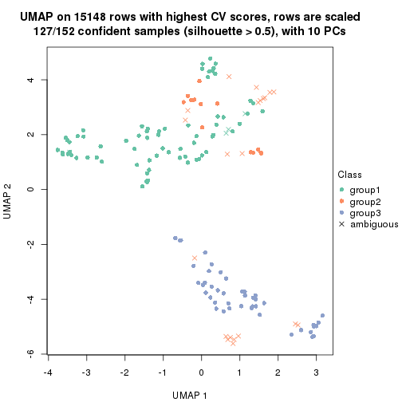
dimension_reduction(res, k = 4, method = "UMAP")

dimension_reduction(res, k = 5, method = "UMAP")
dimension_reduction(res, k = 6, method = "UMAP")
Following heatmap shows how subgroups are split when increasing k:
collect_classes(res)
If matrix rows can be associated to genes, consider to use functional_enrichment(res,
...) to perform function enrichment for the signature genes. See this vignette for more detailed explanations.
CV:NMF**
The object with results only for a single top-value method and a single partition method
can be extracted as:
res = res_list["CV", "NMF"]
# you can also extract it by
# res = res_list["CV:NMF"]
A summary of res and all the functions that can be applied to it:
res
#> A 'ConsensusPartition' object with k = 2, 3, 4, 5, 6.
#> On a matrix with 15148 rows and 152 columns.
#> Top rows (1000, 2000, 3000, 4000, 5000) are extracted by 'CV' method.
#> Subgroups are detected by 'NMF' method.
#> Performed in total 1250 partitions by row resampling.
#> Best k for subgroups seems to be 3.
#>
#> Following methods can be applied to this 'ConsensusPartition' object:
#> [1] "cola_report" "collect_classes" "collect_plots"
#> [4] "collect_stats" "colnames" "compare_signatures"
#> [7] "consensus_heatmap" "dimension_reduction" "functional_enrichment"
#> [10] "get_anno_col" "get_anno" "get_classes"
#> [13] "get_consensus" "get_matrix" "get_membership"
#> [16] "get_param" "get_signatures" "get_stats"
#> [19] "is_best_k" "is_stable_k" "membership_heatmap"
#> [22] "ncol" "nrow" "plot_ecdf"
#> [25] "rownames" "select_partition_number" "show"
#> [28] "suggest_best_k" "test_to_known_factors"
collect_plots() function collects all the plots made from res for all k (number of partitions)
into one single page to provide an easy and fast comparison between different k.
collect_plots(res)
The plots are:
- The first row: a plot of the ECDF (empirical cumulative distribution
function) curves of the consensus matrix for each
k and the heatmap of
predicted classes for each k.
- The second row: heatmaps of the consensus matrix for each
k.
- The third row: heatmaps of the membership matrix for each
k.
- The fouth row: heatmaps of the signatures for each
k.
All the plots in panels can be made by individual functions and they are
plotted later in this section.
select_partition_number() produces several plots showing different
statistics for choosing “optimized” k. There are following statistics:
- ECDF curves of the consensus matrix for each
k;
- 1-PAC. The PAC
score
measures the proportion of the ambiguous subgrouping.
- Mean silhouette score.
- Concordance. The mean probability of fiting the consensus class ids in all
partitions.
- Area increased. Denote \(A_k\) as the area under the ECDF curve for current
k, the area increased is defined as \(A_k - A_{k-1}\).
- Rand index. The percent of pairs of samples that are both in a same cluster
or both are not in a same cluster in the partition of k and k-1.
- Jaccard index. The ratio of pairs of samples are both in a same cluster in
the partition of k and k-1 and the pairs of samples are both in a same
cluster in the partition k or k-1.
The detailed explanations of these statistics can be found in the cola
vignette.
Generally speaking, lower PAC score, higher mean silhouette score or higher
concordance corresponds to better partition. Rand index and Jaccard index
measure how similar the current partition is compared to partition with k-1.
If they are too similar, we won't accept k is better than k-1.
select_partition_number(res)
The numeric values for all these statistics can be obtained by get_stats().
get_stats(res)
#> k 1-PAC mean_silhouette concordance area_increased Rand Jaccard
#> 2 2 0.853 0.913 0.964 0.4933 0.505 0.505
#> 3 3 0.957 0.938 0.975 0.3563 0.698 0.469
#> 4 4 0.743 0.467 0.741 0.1079 0.802 0.511
#> 5 5 0.837 0.828 0.905 0.0661 0.861 0.557
#> 6 6 0.723 0.667 0.813 0.0471 0.899 0.579
suggest_best_k() suggests the best \(k\) based on these statistics. The rules are as follows:
- All \(k\) with Jaccard index larger than 0.95 are removed because increasing
\(k\) does not provide enough extra information. If all \(k\) are removed, it is
marked as no subgroup is detected.
- For all \(k\) with 1-PAC score larger than 0.9, the maximal \(k\) is taken as
the best \(k\), and other \(k\) are marked as optional \(k\).
- If it does not fit the second rule. The \(k\) with the maximal vote of the
highest 1-PAC score, highest mean silhouette, and highest concordance is
taken as the best \(k\).
suggest_best_k(res)
#> [1] 3
Following shows the table of the partitions (You need to click the show/hide
code output link to see it). The membership matrix (columns with name p*)
is inferred by
clue::cl_consensus()
function with the SE method. Basically the value in the membership matrix
represents the probability to belong to a certain group. The finall class
label for an item is determined with the group with highest probability it
belongs to.
In get_classes() function, the entropy is calculated from the membership
matrix and the silhouette score is calculated from the consensus matrix.
show/hide code output
cbind(get_classes(res, k = 2), get_membership(res, k = 2))
#> class entropy silhouette p1 p2
#> SRR1947547 1 0.0000 0.951 1.000 0.000
#> SRR1947546 2 0.0000 0.968 0.000 1.000
#> SRR1947545 1 0.0000 0.951 1.000 0.000
#> SRR1947544 1 0.0000 0.951 1.000 0.000
#> SRR1947542 2 0.0000 0.968 0.000 1.000
#> SRR1947541 1 0.0000 0.951 1.000 0.000
#> SRR1947540 2 0.0000 0.968 0.000 1.000
#> SRR1947539 2 0.0000 0.968 0.000 1.000
#> SRR1947538 1 0.0000 0.951 1.000 0.000
#> SRR1947537 1 0.8443 0.647 0.728 0.272
#> SRR1947536 1 0.9963 0.117 0.536 0.464
#> SRR1947535 2 0.0000 0.968 0.000 1.000
#> SRR1947534 1 0.0000 0.951 1.000 0.000
#> SRR1947533 2 0.0000 0.968 0.000 1.000
#> SRR1947532 1 0.0000 0.951 1.000 0.000
#> SRR1947531 2 0.0000 0.968 0.000 1.000
#> SRR1947530 1 0.0000 0.951 1.000 0.000
#> SRR1947529 2 0.0000 0.968 0.000 1.000
#> SRR1947528 1 0.0000 0.951 1.000 0.000
#> SRR1947527 2 0.0376 0.965 0.004 0.996
#> SRR1947526 2 0.0000 0.968 0.000 1.000
#> SRR1947525 1 0.8608 0.626 0.716 0.284
#> SRR1947524 2 0.0000 0.968 0.000 1.000
#> SRR1947523 2 0.0000 0.968 0.000 1.000
#> SRR1947521 2 0.0000 0.968 0.000 1.000
#> SRR1947520 2 0.0000 0.968 0.000 1.000
#> SRR1947519 2 0.0000 0.968 0.000 1.000
#> SRR1947518 1 0.0000 0.951 1.000 0.000
#> SRR1947517 2 0.0000 0.968 0.000 1.000
#> SRR1947516 2 0.0000 0.968 0.000 1.000
#> SRR1947515 1 0.0000 0.951 1.000 0.000
#> SRR1947514 2 0.0000 0.968 0.000 1.000
#> SRR1947513 1 0.0000 0.951 1.000 0.000
#> SRR1947512 1 0.0000 0.951 1.000 0.000
#> SRR1947511 2 0.0000 0.968 0.000 1.000
#> SRR1947510 2 0.0000 0.968 0.000 1.000
#> SRR1947572 1 0.0000 0.951 1.000 0.000
#> SRR1947611 2 0.0000 0.968 0.000 1.000
#> SRR1947509 2 0.7453 0.725 0.212 0.788
#> SRR1947644 2 0.0000 0.968 0.000 1.000
#> SRR1947643 2 0.0000 0.968 0.000 1.000
#> SRR1947642 2 0.0000 0.968 0.000 1.000
#> SRR1947640 1 0.0376 0.948 0.996 0.004
#> SRR1947641 2 0.0000 0.968 0.000 1.000
#> SRR1947639 1 0.2043 0.925 0.968 0.032
#> SRR1947638 1 0.0000 0.951 1.000 0.000
#> SRR1947637 2 0.0000 0.968 0.000 1.000
#> SRR1947636 1 0.8327 0.659 0.736 0.264
#> SRR1947635 2 0.0000 0.968 0.000 1.000
#> SRR1947634 2 0.0000 0.968 0.000 1.000
#> SRR1947633 2 0.0000 0.968 0.000 1.000
#> SRR1947632 2 0.0000 0.968 0.000 1.000
#> SRR1947631 2 0.0000 0.968 0.000 1.000
#> SRR1947629 2 0.0000 0.968 0.000 1.000
#> SRR1947630 2 0.0000 0.968 0.000 1.000
#> SRR1947627 1 0.1414 0.935 0.980 0.020
#> SRR1947628 2 0.0000 0.968 0.000 1.000
#> SRR1947626 2 0.0000 0.968 0.000 1.000
#> SRR1947625 2 0.0000 0.968 0.000 1.000
#> SRR1947624 2 0.0000 0.968 0.000 1.000
#> SRR1947623 1 0.0000 0.951 1.000 0.000
#> SRR1947622 2 0.0000 0.968 0.000 1.000
#> SRR1947621 2 0.0000 0.968 0.000 1.000
#> SRR1947620 1 0.0000 0.951 1.000 0.000
#> SRR1947619 1 0.9491 0.458 0.632 0.368
#> SRR1947617 2 0.0000 0.968 0.000 1.000
#> SRR1947618 1 0.0000 0.951 1.000 0.000
#> SRR1947616 2 0.0000 0.968 0.000 1.000
#> SRR1947615 1 0.8763 0.607 0.704 0.296
#> SRR1947614 2 0.0000 0.968 0.000 1.000
#> SRR1947613 1 0.0000 0.951 1.000 0.000
#> SRR1947610 2 0.7950 0.683 0.240 0.760
#> SRR1947612 2 0.0000 0.968 0.000 1.000
#> SRR1947609 1 0.0000 0.951 1.000 0.000
#> SRR1947608 2 0.0000 0.968 0.000 1.000
#> SRR1947606 1 0.0000 0.951 1.000 0.000
#> SRR1947607 1 0.0000 0.951 1.000 0.000
#> SRR1947604 1 0.0000 0.951 1.000 0.000
#> SRR1947605 1 0.0000 0.951 1.000 0.000
#> SRR1947603 2 0.0000 0.968 0.000 1.000
#> SRR1947602 1 0.0000 0.951 1.000 0.000
#> SRR1947600 2 0.0000 0.968 0.000 1.000
#> SRR1947601 2 0.0000 0.968 0.000 1.000
#> SRR1947598 2 0.0000 0.968 0.000 1.000
#> SRR1947599 1 0.0000 0.951 1.000 0.000
#> SRR1947597 2 0.0000 0.968 0.000 1.000
#> SRR1947596 1 0.0000 0.951 1.000 0.000
#> SRR1947595 2 0.8327 0.624 0.264 0.736
#> SRR1947594 1 0.0000 0.951 1.000 0.000
#> SRR1947592 2 0.8861 0.541 0.304 0.696
#> SRR1947591 2 0.0000 0.968 0.000 1.000
#> SRR1947590 1 0.0000 0.951 1.000 0.000
#> SRR1947588 1 0.0000 0.951 1.000 0.000
#> SRR1947587 1 0.5059 0.851 0.888 0.112
#> SRR1947586 2 0.0000 0.968 0.000 1.000
#> SRR1947585 2 0.0000 0.968 0.000 1.000
#> SRR1947584 1 0.0000 0.951 1.000 0.000
#> SRR1947583 2 0.7745 0.698 0.228 0.772
#> SRR1947582 1 0.0000 0.951 1.000 0.000
#> SRR1947580 2 0.0000 0.968 0.000 1.000
#> SRR1947581 1 0.0000 0.951 1.000 0.000
#> SRR1947576 2 0.0000 0.968 0.000 1.000
#> SRR1947575 2 0.0000 0.968 0.000 1.000
#> SRR1947579 2 0.0000 0.968 0.000 1.000
#> SRR1947578 2 0.0000 0.968 0.000 1.000
#> SRR1947573 2 0.0000 0.968 0.000 1.000
#> SRR1947574 1 0.0000 0.951 1.000 0.000
#> SRR1947571 1 0.0000 0.951 1.000 0.000
#> SRR1947577 1 0.0000 0.951 1.000 0.000
#> SRR1947570 1 0.0000 0.951 1.000 0.000
#> SRR1947569 2 0.0672 0.962 0.008 0.992
#> SRR1947566 2 0.0000 0.968 0.000 1.000
#> SRR1947567 2 0.0000 0.968 0.000 1.000
#> SRR1947568 1 0.0000 0.951 1.000 0.000
#> SRR1947564 2 0.0000 0.968 0.000 1.000
#> SRR1947563 2 0.0000 0.968 0.000 1.000
#> SRR1947562 2 0.9608 0.339 0.384 0.616
#> SRR1947565 1 0.9248 0.520 0.660 0.340
#> SRR1947559 2 0.0000 0.968 0.000 1.000
#> SRR1947560 2 0.0000 0.968 0.000 1.000
#> SRR1947561 2 0.0000 0.968 0.000 1.000
#> SRR1947557 1 0.0000 0.951 1.000 0.000
#> SRR1947558 2 0.0000 0.968 0.000 1.000
#> SRR1947556 1 0.0000 0.951 1.000 0.000
#> SRR1947553 2 0.6048 0.815 0.148 0.852
#> SRR1947554 1 0.0000 0.951 1.000 0.000
#> SRR1947555 2 0.0000 0.968 0.000 1.000
#> SRR1947550 1 0.9775 0.345 0.588 0.412
#> SRR1947552 1 0.0000 0.951 1.000 0.000
#> SRR1947549 2 0.4161 0.886 0.084 0.916
#> SRR1947551 2 0.0000 0.968 0.000 1.000
#> SRR1947548 1 0.6801 0.774 0.820 0.180
#> SRR1947506 1 0.0000 0.951 1.000 0.000
#> SRR1947507 1 0.0000 0.951 1.000 0.000
#> SRR1947504 1 0.0000 0.951 1.000 0.000
#> SRR1947503 1 0.0000 0.951 1.000 0.000
#> SRR1947502 2 0.0000 0.968 0.000 1.000
#> SRR1947501 2 0.0000 0.968 0.000 1.000
#> SRR1947499 1 0.0000 0.951 1.000 0.000
#> SRR1947498 2 0.0000 0.968 0.000 1.000
#> SRR1947508 2 0.9129 0.516 0.328 0.672
#> SRR1947505 2 0.0000 0.968 0.000 1.000
#> SRR1947497 2 0.0000 0.968 0.000 1.000
#> SRR1947496 1 0.0000 0.951 1.000 0.000
#> SRR1947495 2 0.0000 0.968 0.000 1.000
#> SRR1947494 1 0.0000 0.951 1.000 0.000
#> SRR1947493 1 0.0000 0.951 1.000 0.000
#> SRR1947492 1 0.0000 0.951 1.000 0.000
#> SRR1947500 2 0.0376 0.965 0.004 0.996
#> SRR1947491 2 0.8555 0.613 0.280 0.720
#> SRR1947490 1 0.0000 0.951 1.000 0.000
#> SRR1947489 1 0.0000 0.951 1.000 0.000
show/hide code output
cbind(get_classes(res, k = 3), get_membership(res, k = 3))
#> class entropy silhouette p1 p2 p3
#> SRR1947547 1 0.3941 0.8009 0.844 0.000 0.156
#> SRR1947546 2 0.0000 0.9721 0.000 1.000 0.000
#> SRR1947545 1 0.0000 0.9691 1.000 0.000 0.000
#> SRR1947544 1 0.0000 0.9691 1.000 0.000 0.000
#> SRR1947542 2 0.0000 0.9721 0.000 1.000 0.000
#> SRR1947541 3 0.2165 0.9204 0.064 0.000 0.936
#> SRR1947540 2 0.0000 0.9721 0.000 1.000 0.000
#> SRR1947539 3 0.0000 0.9793 0.000 0.000 1.000
#> SRR1947538 1 0.0000 0.9691 1.000 0.000 0.000
#> SRR1947537 3 0.3340 0.8587 0.120 0.000 0.880
#> SRR1947536 3 0.0000 0.9793 0.000 0.000 1.000
#> SRR1947535 3 0.0000 0.9793 0.000 0.000 1.000
#> SRR1947534 2 0.5835 0.4783 0.340 0.660 0.000
#> SRR1947533 2 0.0000 0.9721 0.000 1.000 0.000
#> SRR1947532 1 0.0000 0.9691 1.000 0.000 0.000
#> SRR1947531 2 0.0000 0.9721 0.000 1.000 0.000
#> SRR1947530 1 0.0000 0.9691 1.000 0.000 0.000
#> SRR1947529 2 0.0000 0.9721 0.000 1.000 0.000
#> SRR1947528 3 0.0237 0.9759 0.004 0.000 0.996
#> SRR1947527 2 0.0000 0.9721 0.000 1.000 0.000
#> SRR1947526 2 0.0000 0.9721 0.000 1.000 0.000
#> SRR1947525 2 0.0892 0.9552 0.020 0.980 0.000
#> SRR1947524 3 0.0000 0.9793 0.000 0.000 1.000
#> SRR1947523 2 0.0000 0.9721 0.000 1.000 0.000
#> SRR1947521 3 0.0000 0.9793 0.000 0.000 1.000
#> SRR1947520 2 0.0000 0.9721 0.000 1.000 0.000
#> SRR1947519 3 0.0000 0.9793 0.000 0.000 1.000
#> SRR1947518 1 0.0000 0.9691 1.000 0.000 0.000
#> SRR1947517 3 0.0000 0.9793 0.000 0.000 1.000
#> SRR1947516 2 0.0000 0.9721 0.000 1.000 0.000
#> SRR1947515 1 0.0000 0.9691 1.000 0.000 0.000
#> SRR1947514 2 0.0000 0.9721 0.000 1.000 0.000
#> SRR1947513 1 0.0000 0.9691 1.000 0.000 0.000
#> SRR1947512 1 0.0000 0.9691 1.000 0.000 0.000
#> SRR1947511 2 0.0000 0.9721 0.000 1.000 0.000
#> SRR1947510 3 0.0000 0.9793 0.000 0.000 1.000
#> SRR1947572 1 0.0000 0.9691 1.000 0.000 0.000
#> SRR1947611 3 0.0000 0.9793 0.000 0.000 1.000
#> SRR1947509 3 0.0000 0.9793 0.000 0.000 1.000
#> SRR1947644 3 0.0000 0.9793 0.000 0.000 1.000
#> SRR1947643 2 0.0000 0.9721 0.000 1.000 0.000
#> SRR1947642 3 0.0000 0.9793 0.000 0.000 1.000
#> SRR1947640 2 0.1163 0.9479 0.028 0.972 0.000
#> SRR1947641 3 0.0000 0.9793 0.000 0.000 1.000
#> SRR1947639 2 0.6126 0.3327 0.400 0.600 0.000
#> SRR1947638 1 0.0000 0.9691 1.000 0.000 0.000
#> SRR1947637 3 0.0000 0.9793 0.000 0.000 1.000
#> SRR1947636 3 0.0000 0.9793 0.000 0.000 1.000
#> SRR1947635 2 0.0000 0.9721 0.000 1.000 0.000
#> SRR1947634 2 0.0000 0.9721 0.000 1.000 0.000
#> SRR1947633 3 0.0000 0.9793 0.000 0.000 1.000
#> SRR1947632 2 0.0000 0.9721 0.000 1.000 0.000
#> SRR1947631 3 0.0000 0.9793 0.000 0.000 1.000
#> SRR1947629 3 0.0000 0.9793 0.000 0.000 1.000
#> SRR1947630 2 0.0000 0.9721 0.000 1.000 0.000
#> SRR1947627 3 0.0000 0.9793 0.000 0.000 1.000
#> SRR1947628 2 0.0000 0.9721 0.000 1.000 0.000
#> SRR1947626 2 0.0000 0.9721 0.000 1.000 0.000
#> SRR1947625 3 0.0000 0.9793 0.000 0.000 1.000
#> SRR1947624 2 0.0000 0.9721 0.000 1.000 0.000
#> SRR1947623 1 0.0000 0.9691 1.000 0.000 0.000
#> SRR1947622 2 0.0000 0.9721 0.000 1.000 0.000
#> SRR1947621 2 0.0000 0.9721 0.000 1.000 0.000
#> SRR1947620 1 0.0000 0.9691 1.000 0.000 0.000
#> SRR1947619 3 0.3879 0.8177 0.152 0.000 0.848
#> SRR1947617 2 0.0000 0.9721 0.000 1.000 0.000
#> SRR1947618 1 0.0000 0.9691 1.000 0.000 0.000
#> SRR1947616 2 0.0424 0.9653 0.000 0.992 0.008
#> SRR1947615 3 0.0000 0.9793 0.000 0.000 1.000
#> SRR1947614 3 0.0000 0.9793 0.000 0.000 1.000
#> SRR1947613 1 0.0000 0.9691 1.000 0.000 0.000
#> SRR1947610 2 0.0000 0.9721 0.000 1.000 0.000
#> SRR1947612 2 0.0000 0.9721 0.000 1.000 0.000
#> SRR1947609 1 0.0000 0.9691 1.000 0.000 0.000
#> SRR1947608 3 0.0000 0.9793 0.000 0.000 1.000
#> SRR1947606 3 0.0000 0.9793 0.000 0.000 1.000
#> SRR1947607 1 0.0000 0.9691 1.000 0.000 0.000
#> SRR1947604 1 0.2796 0.8799 0.908 0.092 0.000
#> SRR1947605 1 0.0000 0.9691 1.000 0.000 0.000
#> SRR1947603 2 0.0000 0.9721 0.000 1.000 0.000
#> SRR1947602 1 0.3192 0.8568 0.888 0.000 0.112
#> SRR1947600 3 0.0000 0.9793 0.000 0.000 1.000
#> SRR1947601 2 0.0000 0.9721 0.000 1.000 0.000
#> SRR1947598 3 0.0000 0.9793 0.000 0.000 1.000
#> SRR1947599 1 0.0000 0.9691 1.000 0.000 0.000
#> SRR1947597 2 0.0000 0.9721 0.000 1.000 0.000
#> SRR1947596 1 0.0000 0.9691 1.000 0.000 0.000
#> SRR1947595 2 0.5397 0.6077 0.280 0.720 0.000
#> SRR1947594 1 0.0000 0.9691 1.000 0.000 0.000
#> SRR1947592 3 0.0000 0.9793 0.000 0.000 1.000
#> SRR1947591 2 0.0000 0.9721 0.000 1.000 0.000
#> SRR1947590 1 0.0000 0.9691 1.000 0.000 0.000
#> SRR1947588 1 0.0000 0.9691 1.000 0.000 0.000
#> SRR1947587 3 0.0000 0.9793 0.000 0.000 1.000
#> SRR1947586 2 0.0000 0.9721 0.000 1.000 0.000
#> SRR1947585 3 0.0000 0.9793 0.000 0.000 1.000
#> SRR1947584 1 0.0000 0.9691 1.000 0.000 0.000
#> SRR1947583 2 0.0000 0.9721 0.000 1.000 0.000
#> SRR1947582 1 0.0000 0.9691 1.000 0.000 0.000
#> SRR1947580 2 0.0000 0.9721 0.000 1.000 0.000
#> SRR1947581 1 0.0000 0.9691 1.000 0.000 0.000
#> SRR1947576 3 0.0000 0.9793 0.000 0.000 1.000
#> SRR1947575 3 0.0000 0.9793 0.000 0.000 1.000
#> SRR1947579 3 0.0000 0.9793 0.000 0.000 1.000
#> SRR1947578 2 0.0000 0.9721 0.000 1.000 0.000
#> SRR1947573 3 0.0000 0.9793 0.000 0.000 1.000
#> SRR1947574 1 0.6235 0.2163 0.564 0.436 0.000
#> SRR1947571 1 0.5678 0.5430 0.684 0.316 0.000
#> SRR1947577 1 0.0000 0.9691 1.000 0.000 0.000
#> SRR1947570 1 0.0000 0.9691 1.000 0.000 0.000
#> SRR1947569 3 0.0000 0.9793 0.000 0.000 1.000
#> SRR1947566 2 0.0000 0.9721 0.000 1.000 0.000
#> SRR1947567 2 0.0000 0.9721 0.000 1.000 0.000
#> SRR1947568 2 0.5835 0.4841 0.340 0.660 0.000
#> SRR1947564 2 0.0000 0.9721 0.000 1.000 0.000
#> SRR1947563 3 0.0000 0.9793 0.000 0.000 1.000
#> SRR1947562 2 0.0000 0.9721 0.000 1.000 0.000
#> SRR1947565 3 0.0000 0.9793 0.000 0.000 1.000
#> SRR1947559 2 0.0000 0.9721 0.000 1.000 0.000
#> SRR1947560 3 0.0000 0.9793 0.000 0.000 1.000
#> SRR1947561 2 0.0000 0.9721 0.000 1.000 0.000
#> SRR1947557 1 0.0000 0.9691 1.000 0.000 0.000
#> SRR1947558 3 0.0000 0.9793 0.000 0.000 1.000
#> SRR1947556 1 0.0000 0.9691 1.000 0.000 0.000
#> SRR1947553 2 0.0000 0.9721 0.000 1.000 0.000
#> SRR1947554 1 0.0000 0.9691 1.000 0.000 0.000
#> SRR1947555 2 0.0000 0.9721 0.000 1.000 0.000
#> SRR1947550 2 0.1753 0.9281 0.048 0.952 0.000
#> SRR1947552 1 0.0000 0.9691 1.000 0.000 0.000
#> SRR1947549 3 0.0000 0.9793 0.000 0.000 1.000
#> SRR1947551 3 0.0000 0.9793 0.000 0.000 1.000
#> SRR1947548 1 0.5327 0.6214 0.728 0.272 0.000
#> SRR1947506 1 0.0000 0.9691 1.000 0.000 0.000
#> SRR1947507 1 0.0000 0.9691 1.000 0.000 0.000
#> SRR1947504 1 0.0000 0.9691 1.000 0.000 0.000
#> SRR1947503 1 0.0000 0.9691 1.000 0.000 0.000
#> SRR1947502 2 0.0000 0.9721 0.000 1.000 0.000
#> SRR1947501 2 0.0000 0.9721 0.000 1.000 0.000
#> SRR1947499 1 0.0000 0.9691 1.000 0.000 0.000
#> SRR1947498 3 0.0000 0.9793 0.000 0.000 1.000
#> SRR1947508 3 0.0000 0.9793 0.000 0.000 1.000
#> SRR1947505 3 0.6308 0.0363 0.000 0.492 0.508
#> SRR1947497 2 0.0000 0.9721 0.000 1.000 0.000
#> SRR1947496 1 0.0000 0.9691 1.000 0.000 0.000
#> SRR1947495 2 0.0000 0.9721 0.000 1.000 0.000
#> SRR1947494 1 0.0000 0.9691 1.000 0.000 0.000
#> SRR1947493 1 0.0000 0.9691 1.000 0.000 0.000
#> SRR1947492 1 0.0000 0.9691 1.000 0.000 0.000
#> SRR1947500 2 0.0000 0.9721 0.000 1.000 0.000
#> SRR1947491 2 0.0000 0.9721 0.000 1.000 0.000
#> SRR1947490 1 0.0000 0.9691 1.000 0.000 0.000
#> SRR1947489 3 0.2959 0.8820 0.100 0.000 0.900
show/hide code output
cbind(get_classes(res, k = 4), get_membership(res, k = 4))
#> class entropy silhouette p1 p2 p3 p4
#> SRR1947547 3 0.5000 -0.6686 0.496 0.000 0.504 0.000
#> SRR1947546 2 0.5478 0.2898 0.444 0.540 0.000 0.016
#> SRR1947545 1 0.4992 0.6847 0.524 0.000 0.476 0.000
#> SRR1947544 1 0.4992 0.6847 0.524 0.000 0.476 0.000
#> SRR1947542 1 0.6316 -0.3116 0.476 0.472 0.004 0.048
#> SRR1947541 3 0.7295 0.5213 0.188 0.000 0.524 0.288
#> SRR1947540 4 0.4994 0.0126 0.000 0.480 0.000 0.520
#> SRR1947539 3 0.4994 0.6087 0.000 0.000 0.520 0.480
#> SRR1947538 4 0.5604 0.0180 0.020 0.000 0.476 0.504
#> SRR1947537 3 0.4999 0.3889 0.492 0.000 0.508 0.000
#> SRR1947536 4 0.1637 0.3583 0.000 0.000 0.060 0.940
#> SRR1947535 1 0.6277 -0.4836 0.476 0.000 0.468 0.056
#> SRR1947534 2 0.2589 0.7965 0.044 0.912 0.044 0.000
#> SRR1947533 2 0.0000 0.8791 0.000 1.000 0.000 0.000
#> SRR1947532 1 0.0927 0.3576 0.976 0.000 0.016 0.008
#> SRR1947531 4 0.4994 0.0130 0.000 0.480 0.000 0.520
#> SRR1947530 1 0.4992 0.6847 0.524 0.000 0.476 0.000
#> SRR1947529 2 0.0817 0.8620 0.000 0.976 0.000 0.024
#> SRR1947528 3 0.5220 0.5790 0.008 0.000 0.568 0.424
#> SRR1947527 2 0.0000 0.8791 0.000 1.000 0.000 0.000
#> SRR1947526 2 0.0000 0.8791 0.000 1.000 0.000 0.000
#> SRR1947525 2 0.3751 0.6561 0.196 0.800 0.004 0.000
#> SRR1947524 4 0.0469 0.4089 0.000 0.000 0.012 0.988
#> SRR1947523 2 0.5677 0.2383 0.476 0.504 0.004 0.016
#> SRR1947521 3 0.5000 0.6092 0.000 0.000 0.504 0.496
#> SRR1947520 2 0.0000 0.8791 0.000 1.000 0.000 0.000
#> SRR1947519 1 0.6277 -0.4836 0.476 0.000 0.468 0.056
#> SRR1947518 4 0.5938 -0.0153 0.036 0.000 0.476 0.488
#> SRR1947517 3 0.5000 0.6092 0.000 0.000 0.504 0.496
#> SRR1947516 2 0.0000 0.8791 0.000 1.000 0.000 0.000
#> SRR1947515 1 0.1610 0.3349 0.952 0.000 0.016 0.032
#> SRR1947514 2 0.0000 0.8791 0.000 1.000 0.000 0.000
#> SRR1947513 1 0.4992 0.6847 0.524 0.000 0.476 0.000
#> SRR1947512 1 0.4992 0.6847 0.524 0.000 0.476 0.000
#> SRR1947511 2 0.0000 0.8791 0.000 1.000 0.000 0.000
#> SRR1947510 3 0.5000 0.6092 0.000 0.000 0.504 0.496
#> SRR1947572 1 0.4992 0.6847 0.524 0.000 0.476 0.000
#> SRR1947611 3 0.5000 0.6092 0.000 0.000 0.504 0.496
#> SRR1947509 3 0.5000 0.6092 0.000 0.000 0.504 0.496
#> SRR1947644 3 0.5000 0.6092 0.000 0.000 0.504 0.496
#> SRR1947643 2 0.0000 0.8791 0.000 1.000 0.000 0.000
#> SRR1947642 4 0.5189 -0.4001 0.012 0.000 0.372 0.616
#> SRR1947640 2 0.4630 0.6200 0.196 0.768 0.036 0.000
#> SRR1947641 4 0.4888 -0.4938 0.000 0.000 0.412 0.588
#> SRR1947639 1 0.7034 0.1556 0.468 0.412 0.120 0.000
#> SRR1947638 1 0.4992 0.6847 0.524 0.000 0.476 0.000
#> SRR1947637 3 0.6235 0.5895 0.056 0.000 0.524 0.420
#> SRR1947636 3 0.5158 0.4026 0.472 0.000 0.524 0.004
#> SRR1947635 2 0.4855 0.2780 0.000 0.600 0.000 0.400
#> SRR1947634 2 0.0000 0.8791 0.000 1.000 0.000 0.000
#> SRR1947633 3 0.4999 0.6099 0.000 0.000 0.508 0.492
#> SRR1947632 1 0.6839 -0.2827 0.476 0.448 0.016 0.060
#> SRR1947631 4 0.7811 -0.1475 0.368 0.000 0.252 0.380
#> SRR1947629 4 0.0000 0.4152 0.000 0.000 0.000 1.000
#> SRR1947630 2 0.0000 0.8791 0.000 1.000 0.000 0.000
#> SRR1947627 3 0.4996 0.6096 0.000 0.000 0.516 0.484
#> SRR1947628 4 0.4994 0.0126 0.000 0.480 0.000 0.520
#> SRR1947626 2 0.0000 0.8791 0.000 1.000 0.000 0.000
#> SRR1947625 4 0.4964 -0.4133 0.004 0.000 0.380 0.616
#> SRR1947624 2 0.0000 0.8791 0.000 1.000 0.000 0.000
#> SRR1947623 1 0.4992 0.6847 0.524 0.000 0.476 0.000
#> SRR1947622 2 0.0000 0.8791 0.000 1.000 0.000 0.000
#> SRR1947621 2 0.0000 0.8791 0.000 1.000 0.000 0.000
#> SRR1947620 1 0.4992 0.6847 0.524 0.000 0.476 0.000
#> SRR1947619 1 0.5564 -0.4300 0.544 0.000 0.436 0.020
#> SRR1947617 2 0.0000 0.8791 0.000 1.000 0.000 0.000
#> SRR1947618 1 0.4992 0.6847 0.524 0.000 0.476 0.000
#> SRR1947616 4 0.4941 0.1144 0.000 0.436 0.000 0.564
#> SRR1947615 1 0.6149 -0.3295 0.476 0.000 0.048 0.476
#> SRR1947614 3 0.5000 0.6092 0.000 0.000 0.504 0.496
#> SRR1947613 1 0.4992 0.6847 0.524 0.000 0.476 0.000
#> SRR1947610 2 0.5000 -0.0176 0.000 0.500 0.000 0.500
#> SRR1947612 2 0.0000 0.8791 0.000 1.000 0.000 0.000
#> SRR1947609 1 0.4992 0.6847 0.524 0.000 0.476 0.000
#> SRR1947608 1 0.6277 -0.4836 0.476 0.000 0.468 0.056
#> SRR1947606 3 0.6483 0.5783 0.076 0.000 0.532 0.392
#> SRR1947607 1 0.4992 0.6847 0.524 0.000 0.476 0.000
#> SRR1947604 1 0.0000 0.3803 1.000 0.000 0.000 0.000
#> SRR1947605 1 0.4992 0.6847 0.524 0.000 0.476 0.000
#> SRR1947603 2 0.2814 0.7512 0.132 0.868 0.000 0.000
#> SRR1947602 3 0.4746 -0.5715 0.368 0.000 0.632 0.000
#> SRR1947600 4 0.0188 0.4137 0.000 0.000 0.004 0.996
#> SRR1947601 2 0.0000 0.8791 0.000 1.000 0.000 0.000
#> SRR1947598 4 0.3975 0.3071 0.240 0.000 0.000 0.760
#> SRR1947599 1 0.4992 0.6847 0.524 0.000 0.476 0.000
#> SRR1947597 2 0.0000 0.8791 0.000 1.000 0.000 0.000
#> SRR1947596 1 0.3074 0.4996 0.848 0.000 0.152 0.000
#> SRR1947595 2 0.5149 0.4328 0.336 0.648 0.016 0.000
#> SRR1947594 1 0.4992 0.6847 0.524 0.000 0.476 0.000
#> SRR1947592 3 0.6292 0.4278 0.416 0.000 0.524 0.060
#> SRR1947591 2 0.0000 0.8791 0.000 1.000 0.000 0.000
#> SRR1947590 1 0.0707 0.3760 0.980 0.000 0.020 0.000
#> SRR1947588 1 0.4992 0.6847 0.524 0.000 0.476 0.000
#> SRR1947587 3 0.5158 0.4026 0.472 0.000 0.524 0.004
#> SRR1947586 2 0.0336 0.8738 0.000 0.992 0.000 0.008
#> SRR1947585 4 0.0921 0.3960 0.000 0.000 0.028 0.972
#> SRR1947584 1 0.4992 0.6847 0.524 0.000 0.476 0.000
#> SRR1947583 2 0.0000 0.8791 0.000 1.000 0.000 0.000
#> SRR1947582 1 0.4992 0.6847 0.524 0.000 0.476 0.000
#> SRR1947580 2 0.4925 0.1924 0.000 0.572 0.000 0.428
#> SRR1947581 1 0.4992 0.6847 0.524 0.000 0.476 0.000
#> SRR1947576 3 0.4999 0.6099 0.000 0.000 0.508 0.492
#> SRR1947575 1 0.6214 -0.4862 0.476 0.000 0.472 0.052
#> SRR1947579 3 0.5000 0.6092 0.000 0.000 0.504 0.496
#> SRR1947578 4 0.4994 0.0126 0.000 0.480 0.000 0.520
#> SRR1947573 3 0.6400 0.4310 0.408 0.000 0.524 0.068
#> SRR1947574 1 0.7706 0.3514 0.436 0.328 0.236 0.000
#> SRR1947571 1 0.2899 0.4674 0.880 0.004 0.112 0.004
#> SRR1947577 1 0.4992 0.6847 0.524 0.000 0.476 0.000
#> SRR1947570 1 0.4989 0.6797 0.528 0.000 0.472 0.000
#> SRR1947569 4 0.0000 0.4152 0.000 0.000 0.000 1.000
#> SRR1947566 2 0.0000 0.8791 0.000 1.000 0.000 0.000
#> SRR1947567 2 0.2081 0.8120 0.000 0.916 0.000 0.084
#> SRR1947568 2 0.5055 0.3876 0.368 0.624 0.008 0.000
#> SRR1947564 2 0.0000 0.8791 0.000 1.000 0.000 0.000
#> SRR1947563 1 0.6337 -0.4816 0.476 0.000 0.464 0.060
#> SRR1947562 1 0.5511 -0.3177 0.500 0.484 0.000 0.016
#> SRR1947565 3 0.5158 0.4026 0.472 0.000 0.524 0.004
#> SRR1947559 2 0.0000 0.8791 0.000 1.000 0.000 0.000
#> SRR1947560 3 0.5000 0.6092 0.000 0.000 0.504 0.496
#> SRR1947561 2 0.0000 0.8791 0.000 1.000 0.000 0.000
#> SRR1947557 1 0.4992 0.6847 0.524 0.000 0.476 0.000
#> SRR1947558 4 0.5921 -0.5440 0.036 0.000 0.448 0.516
#> SRR1947556 1 0.4992 0.6847 0.524 0.000 0.476 0.000
#> SRR1947553 4 0.5000 -0.0374 0.000 0.496 0.000 0.504
#> SRR1947554 1 0.4992 0.6847 0.524 0.000 0.476 0.000
#> SRR1947555 2 0.1637 0.8291 0.060 0.940 0.000 0.000
#> SRR1947550 1 0.4356 0.0779 0.708 0.292 0.000 0.000
#> SRR1947552 1 0.4967 0.6740 0.548 0.000 0.452 0.000
#> SRR1947549 3 0.4992 0.3995 0.476 0.000 0.524 0.000
#> SRR1947551 3 0.5000 0.6092 0.000 0.000 0.504 0.496
#> SRR1947548 1 0.2222 0.3060 0.924 0.000 0.016 0.060
#> SRR1947506 1 0.4996 0.6805 0.516 0.000 0.484 0.000
#> SRR1947507 1 0.4992 0.6847 0.524 0.000 0.476 0.000
#> SRR1947504 1 0.4992 0.6847 0.524 0.000 0.476 0.000
#> SRR1947503 1 0.4992 0.6847 0.524 0.000 0.476 0.000
#> SRR1947502 2 0.0000 0.8791 0.000 1.000 0.000 0.000
#> SRR1947501 1 0.7104 -0.2696 0.476 0.428 0.016 0.080
#> SRR1947499 1 0.4992 0.6847 0.524 0.000 0.476 0.000
#> SRR1947498 4 0.0921 0.3962 0.000 0.000 0.028 0.972
#> SRR1947508 3 0.4998 0.6100 0.000 0.000 0.512 0.488
#> SRR1947505 4 0.0000 0.4152 0.000 0.000 0.000 1.000
#> SRR1947497 2 0.0000 0.8791 0.000 1.000 0.000 0.000
#> SRR1947496 1 0.4992 0.6847 0.524 0.000 0.476 0.000
#> SRR1947495 2 0.0000 0.8791 0.000 1.000 0.000 0.000
#> SRR1947494 1 0.2081 0.4505 0.916 0.000 0.084 0.000
#> SRR1947493 1 0.4992 0.6847 0.524 0.000 0.476 0.000
#> SRR1947492 1 0.4992 0.6847 0.524 0.000 0.476 0.000
#> SRR1947500 2 0.0000 0.8791 0.000 1.000 0.000 0.000
#> SRR1947491 2 0.2530 0.7792 0.000 0.888 0.000 0.112
#> SRR1947490 1 0.4992 0.6847 0.524 0.000 0.476 0.000
#> SRR1947489 1 0.6212 -0.3833 0.560 0.000 0.380 0.060
show/hide code output
cbind(get_classes(res, k = 5), get_membership(res, k = 5))
#> class entropy silhouette p1 p2 p3 p4 p5
#> SRR1947547 1 0.2392 0.8563 0.888 0.000 0.104 0.004 0.004
#> SRR1947546 3 0.2074 0.7894 0.000 0.104 0.896 0.000 0.000
#> SRR1947545 1 0.0162 0.9508 0.996 0.000 0.004 0.000 0.000
#> SRR1947544 1 0.0162 0.9522 0.996 0.000 0.000 0.004 0.000
#> SRR1947542 3 0.1851 0.7989 0.000 0.088 0.912 0.000 0.000
#> SRR1947541 5 0.2570 0.8786 0.008 0.000 0.108 0.004 0.880
#> SRR1947540 4 0.0290 0.9604 0.000 0.008 0.000 0.992 0.000
#> SRR1947539 5 0.1671 0.8965 0.000 0.000 0.076 0.000 0.924
#> SRR1947538 4 0.0162 0.9577 0.004 0.000 0.000 0.996 0.000
#> SRR1947537 3 0.3910 0.5241 0.008 0.000 0.720 0.000 0.272
#> SRR1947536 4 0.0290 0.9591 0.000 0.000 0.000 0.992 0.008
#> SRR1947535 3 0.0162 0.8150 0.000 0.000 0.996 0.000 0.004
#> SRR1947534 2 0.3561 0.6322 0.260 0.740 0.000 0.000 0.000
#> SRR1947533 2 0.0000 0.8909 0.000 1.000 0.000 0.000 0.000
#> SRR1947532 3 0.1478 0.8073 0.064 0.000 0.936 0.000 0.000
#> SRR1947531 4 0.0290 0.9604 0.000 0.008 0.000 0.992 0.000
#> SRR1947530 1 0.0324 0.9495 0.992 0.000 0.004 0.004 0.000
#> SRR1947529 2 0.2723 0.8270 0.000 0.864 0.124 0.012 0.000
#> SRR1947528 5 0.2136 0.8906 0.008 0.000 0.088 0.000 0.904
#> SRR1947527 2 0.0000 0.8909 0.000 1.000 0.000 0.000 0.000
#> SRR1947526 2 0.0000 0.8909 0.000 1.000 0.000 0.000 0.000
#> SRR1947525 2 0.5455 0.5638 0.292 0.624 0.080 0.004 0.000
#> SRR1947524 4 0.0693 0.9531 0.000 0.000 0.012 0.980 0.008
#> SRR1947523 3 0.2020 0.7934 0.000 0.100 0.900 0.000 0.000
#> SRR1947521 5 0.0000 0.9076 0.000 0.000 0.000 0.000 1.000
#> SRR1947520 2 0.1671 0.8534 0.000 0.924 0.000 0.000 0.076
#> SRR1947519 3 0.0162 0.8150 0.000 0.000 0.996 0.000 0.004
#> SRR1947518 4 0.0162 0.9577 0.004 0.000 0.000 0.996 0.000
#> SRR1947517 5 0.0000 0.9076 0.000 0.000 0.000 0.000 1.000
#> SRR1947516 2 0.0000 0.8909 0.000 1.000 0.000 0.000 0.000
#> SRR1947515 3 0.1478 0.8073 0.064 0.000 0.936 0.000 0.000
#> SRR1947514 2 0.0000 0.8909 0.000 1.000 0.000 0.000 0.000
#> SRR1947513 1 0.0162 0.9508 0.996 0.000 0.000 0.004 0.000
#> SRR1947512 1 0.0162 0.9522 0.996 0.000 0.000 0.004 0.000
#> SRR1947511 2 0.1270 0.8678 0.000 0.948 0.000 0.000 0.052
#> SRR1947510 5 0.0000 0.9076 0.000 0.000 0.000 0.000 1.000
#> SRR1947572 1 0.0162 0.9522 0.996 0.000 0.000 0.004 0.000
#> SRR1947611 5 0.0000 0.9076 0.000 0.000 0.000 0.000 1.000
#> SRR1947509 5 0.0000 0.9076 0.000 0.000 0.000 0.000 1.000
#> SRR1947644 5 0.0000 0.9076 0.000 0.000 0.000 0.000 1.000
#> SRR1947643 2 0.0000 0.8909 0.000 1.000 0.000 0.000 0.000
#> SRR1947642 3 0.4221 0.6419 0.004 0.000 0.764 0.044 0.188
#> SRR1947640 2 0.6201 0.4780 0.232 0.552 0.216 0.000 0.000
#> SRR1947641 5 0.5595 0.5956 0.000 0.000 0.124 0.252 0.624
#> SRR1947639 1 0.3920 0.5900 0.724 0.268 0.004 0.004 0.000
#> SRR1947638 1 0.0324 0.9495 0.992 0.000 0.004 0.004 0.000
#> SRR1947637 5 0.0162 0.9063 0.000 0.000 0.004 0.000 0.996
#> SRR1947636 5 0.3913 0.5714 0.000 0.000 0.324 0.000 0.676
#> SRR1947635 4 0.6185 0.1736 0.000 0.348 0.148 0.504 0.000
#> SRR1947634 2 0.1270 0.8678 0.000 0.948 0.000 0.000 0.052
#> SRR1947633 5 0.1608 0.8974 0.000 0.000 0.072 0.000 0.928
#> SRR1947632 3 0.1410 0.8093 0.000 0.060 0.940 0.000 0.000
#> SRR1947631 3 0.0771 0.8124 0.004 0.000 0.976 0.020 0.000
#> SRR1947629 4 0.0290 0.9591 0.000 0.000 0.000 0.992 0.008
#> SRR1947630 2 0.1908 0.8427 0.000 0.908 0.000 0.000 0.092
#> SRR1947627 5 0.1732 0.8953 0.000 0.000 0.080 0.000 0.920
#> SRR1947628 4 0.0290 0.9604 0.000 0.008 0.000 0.992 0.000
#> SRR1947626 2 0.0000 0.8909 0.000 1.000 0.000 0.000 0.000
#> SRR1947625 3 0.2951 0.7420 0.000 0.000 0.860 0.028 0.112
#> SRR1947624 2 0.1908 0.8427 0.000 0.908 0.000 0.000 0.092
#> SRR1947623 1 0.0162 0.9522 0.996 0.000 0.000 0.004 0.000
#> SRR1947622 2 0.2471 0.8226 0.000 0.864 0.136 0.000 0.000
#> SRR1947621 2 0.0000 0.8909 0.000 1.000 0.000 0.000 0.000
#> SRR1947620 1 0.0324 0.9495 0.992 0.000 0.004 0.004 0.000
#> SRR1947619 3 0.3055 0.7489 0.064 0.000 0.864 0.000 0.072
#> SRR1947617 2 0.0000 0.8909 0.000 1.000 0.000 0.000 0.000
#> SRR1947618 1 0.0162 0.9508 0.996 0.000 0.000 0.004 0.000
#> SRR1947616 4 0.0290 0.9604 0.000 0.008 0.000 0.992 0.000
#> SRR1947615 3 0.2389 0.7583 0.004 0.000 0.880 0.116 0.000
#> SRR1947614 5 0.0000 0.9076 0.000 0.000 0.000 0.000 1.000
#> SRR1947613 1 0.0162 0.9522 0.996 0.000 0.000 0.004 0.000
#> SRR1947610 4 0.0290 0.9604 0.000 0.008 0.000 0.992 0.000
#> SRR1947612 2 0.0000 0.8909 0.000 1.000 0.000 0.000 0.000
#> SRR1947609 1 0.0000 0.9516 1.000 0.000 0.000 0.000 0.000
#> SRR1947608 3 0.0162 0.8150 0.000 0.000 0.996 0.000 0.004
#> SRR1947606 5 0.2068 0.8896 0.004 0.000 0.092 0.000 0.904
#> SRR1947607 1 0.0162 0.9522 0.996 0.000 0.000 0.004 0.000
#> SRR1947604 3 0.1965 0.7901 0.096 0.000 0.904 0.000 0.000
#> SRR1947605 1 0.0000 0.9516 1.000 0.000 0.000 0.000 0.000
#> SRR1947603 3 0.4273 0.0186 0.000 0.448 0.552 0.000 0.000
#> SRR1947602 1 0.3937 0.7528 0.804 0.000 0.060 0.004 0.132
#> SRR1947600 4 0.0693 0.9530 0.000 0.000 0.012 0.980 0.008
#> SRR1947601 2 0.0000 0.8909 0.000 1.000 0.000 0.000 0.000
#> SRR1947598 4 0.0162 0.9583 0.000 0.000 0.004 0.996 0.000
#> SRR1947599 1 0.2068 0.8676 0.904 0.000 0.092 0.004 0.000
#> SRR1947597 2 0.2929 0.7843 0.000 0.820 0.180 0.000 0.000
#> SRR1947596 1 0.4150 0.2913 0.612 0.000 0.388 0.000 0.000
#> SRR1947595 2 0.4946 0.6043 0.276 0.664 0.000 0.000 0.060
#> SRR1947594 1 0.0162 0.9522 0.996 0.000 0.000 0.004 0.000
#> SRR1947592 5 0.2424 0.8626 0.000 0.000 0.132 0.000 0.868
#> SRR1947591 2 0.0000 0.8909 0.000 1.000 0.000 0.000 0.000
#> SRR1947590 3 0.3949 0.5185 0.332 0.000 0.668 0.000 0.000
#> SRR1947588 1 0.0162 0.9522 0.996 0.000 0.000 0.004 0.000
#> SRR1947587 3 0.4580 0.0084 0.004 0.000 0.532 0.004 0.460
#> SRR1947586 2 0.0000 0.8909 0.000 1.000 0.000 0.000 0.000
#> SRR1947585 4 0.0566 0.9556 0.000 0.000 0.004 0.984 0.012
#> SRR1947584 1 0.0162 0.9522 0.996 0.000 0.000 0.004 0.000
#> SRR1947583 2 0.3274 0.7406 0.000 0.780 0.220 0.000 0.000
#> SRR1947582 1 0.0162 0.9508 0.996 0.000 0.000 0.004 0.000
#> SRR1947580 4 0.1792 0.8822 0.000 0.084 0.000 0.916 0.000
#> SRR1947581 1 0.0162 0.9522 0.996 0.000 0.000 0.004 0.000
#> SRR1947576 5 0.0000 0.9076 0.000 0.000 0.000 0.000 1.000
#> SRR1947575 3 0.0162 0.8150 0.000 0.000 0.996 0.000 0.004
#> SRR1947579 5 0.0000 0.9076 0.000 0.000 0.000 0.000 1.000
#> SRR1947578 4 0.0290 0.9604 0.000 0.008 0.000 0.992 0.000
#> SRR1947573 5 0.2127 0.8824 0.000 0.000 0.108 0.000 0.892
#> SRR1947574 1 0.3837 0.5444 0.692 0.308 0.000 0.000 0.000
#> SRR1947571 3 0.3353 0.7096 0.196 0.008 0.796 0.000 0.000
#> SRR1947577 1 0.0324 0.9495 0.992 0.000 0.004 0.004 0.000
#> SRR1947570 1 0.0566 0.9454 0.984 0.000 0.012 0.004 0.000
#> SRR1947569 4 0.0290 0.9591 0.000 0.000 0.000 0.992 0.008
#> SRR1947566 2 0.0510 0.8847 0.000 0.984 0.000 0.016 0.000
#> SRR1947567 2 0.3857 0.6111 0.000 0.688 0.312 0.000 0.000
#> SRR1947568 2 0.3635 0.6779 0.248 0.748 0.000 0.004 0.000
#> SRR1947564 2 0.0290 0.8877 0.000 0.992 0.008 0.000 0.000
#> SRR1947563 3 0.0162 0.8150 0.000 0.000 0.996 0.000 0.004
#> SRR1947562 3 0.1908 0.7965 0.000 0.092 0.908 0.000 0.000
#> SRR1947565 5 0.4300 0.1534 0.000 0.000 0.476 0.000 0.524
#> SRR1947559 2 0.2230 0.8379 0.000 0.884 0.116 0.000 0.000
#> SRR1947560 5 0.0000 0.9076 0.000 0.000 0.000 0.000 1.000
#> SRR1947561 2 0.0000 0.8909 0.000 1.000 0.000 0.000 0.000
#> SRR1947557 1 0.0162 0.9522 0.996 0.000 0.000 0.004 0.000
#> SRR1947558 3 0.3160 0.6634 0.000 0.000 0.808 0.004 0.188
#> SRR1947556 1 0.0162 0.9522 0.996 0.000 0.000 0.004 0.000
#> SRR1947553 4 0.0290 0.9604 0.000 0.008 0.000 0.992 0.000
#> SRR1947554 1 0.0162 0.9522 0.996 0.000 0.000 0.004 0.000
#> SRR1947555 2 0.3949 0.5778 0.000 0.668 0.332 0.000 0.000
#> SRR1947550 3 0.2305 0.7954 0.012 0.092 0.896 0.000 0.000
#> SRR1947552 1 0.2286 0.8486 0.888 0.000 0.108 0.004 0.000
#> SRR1947549 3 0.4192 0.2222 0.000 0.000 0.596 0.000 0.404
#> SRR1947551 5 0.0000 0.9076 0.000 0.000 0.000 0.000 1.000
#> SRR1947548 3 0.1484 0.8128 0.048 0.008 0.944 0.000 0.000
#> SRR1947506 1 0.0451 0.9467 0.988 0.000 0.008 0.004 0.000
#> SRR1947507 1 0.0162 0.9522 0.996 0.000 0.000 0.004 0.000
#> SRR1947504 1 0.0162 0.9522 0.996 0.000 0.000 0.004 0.000
#> SRR1947503 1 0.0162 0.9508 0.996 0.000 0.004 0.000 0.000
#> SRR1947502 2 0.0000 0.8909 0.000 1.000 0.000 0.000 0.000
#> SRR1947501 3 0.1671 0.8042 0.000 0.076 0.924 0.000 0.000
#> SRR1947499 1 0.1757 0.9048 0.936 0.000 0.048 0.004 0.012
#> SRR1947498 4 0.0290 0.9591 0.000 0.000 0.000 0.992 0.008
#> SRR1947508 5 0.2228 0.8884 0.004 0.000 0.092 0.004 0.900
#> SRR1947505 4 0.0162 0.9598 0.000 0.004 0.000 0.996 0.000
#> SRR1947497 2 0.0000 0.8909 0.000 1.000 0.000 0.000 0.000
#> SRR1947496 1 0.0162 0.9522 0.996 0.000 0.000 0.004 0.000
#> SRR1947495 2 0.0000 0.8909 0.000 1.000 0.000 0.000 0.000
#> SRR1947494 3 0.4278 0.2235 0.452 0.000 0.548 0.000 0.000
#> SRR1947493 1 0.0162 0.9508 0.996 0.000 0.000 0.004 0.000
#> SRR1947492 1 0.0162 0.9522 0.996 0.000 0.000 0.004 0.000
#> SRR1947500 2 0.2471 0.8226 0.000 0.864 0.136 0.000 0.000
#> SRR1947491 2 0.2629 0.8214 0.000 0.860 0.136 0.004 0.000
#> SRR1947490 1 0.0162 0.9522 0.996 0.000 0.000 0.004 0.000
#> SRR1947489 3 0.0162 0.8149 0.004 0.000 0.996 0.000 0.000
show/hide code output
cbind(get_classes(res, k = 6), get_membership(res, k = 6))
#> class entropy silhouette p1 p2 p3 p4 p5 p6
#> SRR1947547 6 0.0972 0.6199 0.028 0.000 0.000 0.008 0.000 0.964
#> SRR1947546 4 0.2219 0.6465 0.000 0.136 0.000 0.864 0.000 0.000
#> SRR1947545 6 0.3853 0.6078 0.304 0.000 0.000 0.016 0.000 0.680
#> SRR1947544 1 0.0146 0.9001 0.996 0.000 0.000 0.004 0.000 0.000
#> SRR1947542 4 0.2003 0.6562 0.000 0.116 0.000 0.884 0.000 0.000
#> SRR1947541 6 0.1624 0.5999 0.004 0.000 0.000 0.020 0.040 0.936
#> SRR1947540 3 0.0000 0.8592 0.000 0.000 1.000 0.000 0.000 0.000
#> SRR1947539 5 0.4625 0.6427 0.000 0.000 0.000 0.104 0.680 0.216
#> SRR1947538 3 0.0725 0.8465 0.012 0.000 0.976 0.012 0.000 0.000
#> SRR1947537 4 0.5154 0.4514 0.004 0.000 0.000 0.600 0.104 0.292
#> SRR1947536 3 0.1471 0.8392 0.000 0.000 0.932 0.004 0.000 0.064
#> SRR1947535 4 0.2631 0.5972 0.000 0.000 0.000 0.820 0.000 0.180
#> SRR1947534 2 0.4064 0.4388 0.336 0.644 0.000 0.000 0.000 0.020
#> SRR1947533 2 0.0146 0.8290 0.000 0.996 0.000 0.000 0.000 0.004
#> SRR1947532 4 0.3071 0.6239 0.016 0.000 0.000 0.804 0.000 0.180
#> SRR1947531 3 0.0000 0.8592 0.000 0.000 1.000 0.000 0.000 0.000
#> SRR1947530 6 0.2996 0.6709 0.228 0.000 0.000 0.000 0.000 0.772
#> SRR1947529 2 0.2890 0.7661 0.000 0.844 0.024 0.128 0.000 0.004
#> SRR1947528 6 0.5035 0.3182 0.012 0.000 0.000 0.104 0.228 0.656
#> SRR1947527 2 0.0146 0.8290 0.000 0.996 0.000 0.000 0.000 0.004
#> SRR1947526 2 0.0000 0.8295 0.000 1.000 0.000 0.000 0.000 0.000
#> SRR1947525 1 0.4683 0.6211 0.728 0.156 0.000 0.084 0.000 0.032
#> SRR1947524 3 0.4396 0.6963 0.000 0.000 0.704 0.088 0.000 0.208
#> SRR1947523 4 0.5630 0.3237 0.000 0.232 0.000 0.540 0.000 0.228
#> SRR1947521 5 0.0000 0.8281 0.000 0.000 0.000 0.000 1.000 0.000
#> SRR1947520 2 0.3265 0.6859 0.000 0.748 0.000 0.000 0.248 0.004
#> SRR1947519 4 0.3198 0.5341 0.000 0.000 0.000 0.740 0.000 0.260
#> SRR1947518 3 0.2362 0.7496 0.136 0.000 0.860 0.004 0.000 0.000
#> SRR1947517 5 0.0000 0.8281 0.000 0.000 0.000 0.000 1.000 0.000
#> SRR1947516 2 0.0000 0.8295 0.000 1.000 0.000 0.000 0.000 0.000
#> SRR1947515 4 0.3509 0.5879 0.016 0.000 0.000 0.744 0.000 0.240
#> SRR1947514 2 0.0000 0.8295 0.000 1.000 0.000 0.000 0.000 0.000
#> SRR1947513 6 0.3828 0.4210 0.440 0.000 0.000 0.000 0.000 0.560
#> SRR1947512 1 0.0146 0.9027 0.996 0.000 0.000 0.000 0.000 0.004
#> SRR1947511 2 0.1806 0.7893 0.000 0.908 0.000 0.000 0.088 0.004
#> SRR1947510 5 0.0000 0.8281 0.000 0.000 0.000 0.000 1.000 0.000
#> SRR1947572 1 0.0717 0.8886 0.976 0.000 0.000 0.016 0.000 0.008
#> SRR1947611 5 0.0000 0.8281 0.000 0.000 0.000 0.000 1.000 0.000
#> SRR1947509 5 0.0000 0.8281 0.000 0.000 0.000 0.000 1.000 0.000
#> SRR1947644 5 0.1745 0.7975 0.000 0.000 0.000 0.056 0.924 0.020
#> SRR1947643 2 0.0508 0.8263 0.000 0.984 0.012 0.000 0.000 0.004
#> SRR1947642 6 0.5326 0.4067 0.000 0.000 0.064 0.196 0.072 0.668
#> SRR1947640 2 0.6837 0.4117 0.136 0.504 0.000 0.220 0.000 0.140
#> SRR1947641 3 0.7016 0.3726 0.000 0.000 0.472 0.164 0.132 0.232
#> SRR1947639 1 0.1802 0.8630 0.932 0.024 0.000 0.020 0.000 0.024
#> SRR1947638 6 0.4382 0.5291 0.360 0.008 0.000 0.020 0.000 0.612
#> SRR1947637 5 0.0692 0.8217 0.000 0.000 0.000 0.020 0.976 0.004
#> SRR1947636 5 0.6006 0.2098 0.000 0.000 0.000 0.332 0.420 0.248
#> SRR1947635 2 0.6433 0.4211 0.000 0.488 0.248 0.228 0.000 0.036
#> SRR1947634 2 0.1806 0.7893 0.000 0.908 0.000 0.000 0.088 0.004
#> SRR1947633 5 0.4582 0.6451 0.000 0.000 0.000 0.100 0.684 0.216
#> SRR1947632 4 0.2218 0.6593 0.000 0.104 0.000 0.884 0.000 0.012
#> SRR1947631 6 0.5144 0.1090 0.000 0.000 0.092 0.372 0.000 0.536
#> SRR1947629 3 0.3829 0.7477 0.000 0.000 0.760 0.060 0.000 0.180
#> SRR1947630 2 0.3699 0.5872 0.000 0.660 0.000 0.000 0.336 0.004
#> SRR1947627 5 0.4727 0.6271 0.000 0.000 0.000 0.100 0.660 0.240
#> SRR1947628 3 0.0000 0.8592 0.000 0.000 1.000 0.000 0.000 0.000
#> SRR1947626 2 0.0000 0.8295 0.000 1.000 0.000 0.000 0.000 0.000
#> SRR1947625 4 0.6437 0.3593 0.000 0.000 0.172 0.532 0.064 0.232
#> SRR1947624 2 0.3756 0.5639 0.000 0.644 0.000 0.000 0.352 0.004
#> SRR1947623 1 0.0000 0.9019 1.000 0.000 0.000 0.000 0.000 0.000
#> SRR1947622 2 0.3245 0.6947 0.000 0.764 0.008 0.228 0.000 0.000
#> SRR1947621 2 0.0000 0.8295 0.000 1.000 0.000 0.000 0.000 0.000
#> SRR1947620 6 0.3405 0.6353 0.272 0.000 0.000 0.004 0.000 0.724
#> SRR1947619 4 0.4131 0.4812 0.020 0.000 0.000 0.624 0.000 0.356
#> SRR1947617 2 0.0000 0.8295 0.000 1.000 0.000 0.000 0.000 0.000
#> SRR1947618 6 0.3330 0.6244 0.284 0.000 0.000 0.000 0.000 0.716
#> SRR1947616 3 0.0000 0.8592 0.000 0.000 1.000 0.000 0.000 0.000
#> SRR1947615 6 0.3963 0.5072 0.000 0.000 0.080 0.164 0.000 0.756
#> SRR1947614 5 0.0000 0.8281 0.000 0.000 0.000 0.000 1.000 0.000
#> SRR1947613 1 0.0547 0.9008 0.980 0.000 0.000 0.000 0.000 0.020
#> SRR1947610 3 0.0000 0.8592 0.000 0.000 1.000 0.000 0.000 0.000
#> SRR1947612 2 0.0000 0.8295 0.000 1.000 0.000 0.000 0.000 0.000
#> SRR1947609 6 0.4326 0.4728 0.404 0.000 0.000 0.024 0.000 0.572
#> SRR1947608 4 0.2092 0.6314 0.000 0.000 0.000 0.876 0.000 0.124
#> SRR1947606 6 0.5645 -0.1289 0.004 0.000 0.000 0.136 0.372 0.488
#> SRR1947607 1 0.0790 0.8951 0.968 0.000 0.000 0.000 0.000 0.032
#> SRR1947604 4 0.4039 0.4698 0.016 0.000 0.000 0.632 0.000 0.352
#> SRR1947605 6 0.3446 0.6163 0.308 0.000 0.000 0.000 0.000 0.692
#> SRR1947603 4 0.2597 0.6113 0.000 0.176 0.000 0.824 0.000 0.000
#> SRR1947602 6 0.2568 0.6226 0.068 0.000 0.000 0.056 0.000 0.876
#> SRR1947600 3 0.4422 0.6914 0.000 0.000 0.700 0.088 0.000 0.212
#> SRR1947601 2 0.0000 0.8295 0.000 1.000 0.000 0.000 0.000 0.000
#> SRR1947598 3 0.0000 0.8592 0.000 0.000 1.000 0.000 0.000 0.000
#> SRR1947599 6 0.4281 0.6081 0.132 0.000 0.000 0.136 0.000 0.732
#> SRR1947597 2 0.3515 0.5802 0.000 0.676 0.000 0.324 0.000 0.000
#> SRR1947596 1 0.6112 -0.1510 0.372 0.000 0.000 0.320 0.000 0.308
#> SRR1947595 2 0.6488 0.4287 0.144 0.484 0.000 0.000 0.312 0.060
#> SRR1947594 1 0.0458 0.9017 0.984 0.000 0.000 0.000 0.000 0.016
#> SRR1947592 5 0.5318 0.5489 0.000 0.000 0.000 0.160 0.588 0.252
#> SRR1947591 2 0.0000 0.8295 0.000 1.000 0.000 0.000 0.000 0.000
#> SRR1947590 4 0.5464 0.3720 0.176 0.000 0.000 0.564 0.000 0.260
#> SRR1947588 1 0.0458 0.9017 0.984 0.000 0.000 0.000 0.000 0.016
#> SRR1947587 6 0.2572 0.5360 0.000 0.000 0.000 0.136 0.012 0.852
#> SRR1947586 2 0.0363 0.8271 0.000 0.988 0.012 0.000 0.000 0.000
#> SRR1947585 3 0.4278 0.7044 0.000 0.000 0.712 0.076 0.000 0.212
#> SRR1947584 1 0.0000 0.9019 1.000 0.000 0.000 0.000 0.000 0.000
#> SRR1947583 2 0.5011 0.5963 0.032 0.648 0.000 0.268 0.000 0.052
#> SRR1947582 6 0.3151 0.6403 0.252 0.000 0.000 0.000 0.000 0.748
#> SRR1947580 3 0.0146 0.8570 0.000 0.004 0.996 0.000 0.000 0.000
#> SRR1947581 1 0.0000 0.9019 1.000 0.000 0.000 0.000 0.000 0.000
#> SRR1947576 5 0.0000 0.8281 0.000 0.000 0.000 0.000 1.000 0.000
#> SRR1947575 4 0.1556 0.6502 0.000 0.000 0.000 0.920 0.000 0.080
#> SRR1947579 5 0.0000 0.8281 0.000 0.000 0.000 0.000 1.000 0.000
#> SRR1947578 3 0.0000 0.8592 0.000 0.000 1.000 0.000 0.000 0.000
#> SRR1947573 5 0.4884 0.6182 0.000 0.000 0.000 0.128 0.652 0.220
#> SRR1947574 2 0.5291 0.3577 0.328 0.552 0.000 0.000 0.000 0.120
#> SRR1947571 4 0.4412 0.5505 0.048 0.008 0.000 0.688 0.000 0.256
#> SRR1947577 6 0.3911 0.6365 0.256 0.000 0.000 0.032 0.000 0.712
#> SRR1947570 6 0.2402 0.6660 0.120 0.000 0.000 0.012 0.000 0.868
#> SRR1947569 3 0.3053 0.7808 0.000 0.000 0.812 0.020 0.000 0.168
#> SRR1947566 2 0.0547 0.8247 0.000 0.980 0.020 0.000 0.000 0.000
#> SRR1947567 2 0.4264 0.5542 0.000 0.636 0.000 0.332 0.000 0.032
#> SRR1947568 1 0.3468 0.5486 0.712 0.284 0.000 0.004 0.000 0.000
#> SRR1947564 2 0.3578 0.3855 0.000 0.660 0.000 0.340 0.000 0.000
#> SRR1947563 4 0.1556 0.6499 0.000 0.000 0.000 0.920 0.000 0.080
#> SRR1947562 4 0.3352 0.6298 0.016 0.012 0.000 0.800 0.000 0.172
#> SRR1947565 4 0.5963 0.0305 0.000 0.000 0.000 0.440 0.320 0.240
#> SRR1947559 2 0.2219 0.7698 0.000 0.864 0.000 0.136 0.000 0.000
#> SRR1947560 5 0.0000 0.8281 0.000 0.000 0.000 0.000 1.000 0.000
#> SRR1947561 2 0.0000 0.8295 0.000 1.000 0.000 0.000 0.000 0.000
#> SRR1947557 1 0.0458 0.9017 0.984 0.000 0.000 0.000 0.000 0.016
#> SRR1947558 4 0.5391 0.3558 0.000 0.000 0.000 0.580 0.176 0.244
#> SRR1947556 1 0.1895 0.8294 0.912 0.000 0.000 0.016 0.000 0.072
#> SRR1947553 3 0.0000 0.8592 0.000 0.000 1.000 0.000 0.000 0.000
#> SRR1947554 1 0.0713 0.8975 0.972 0.000 0.000 0.000 0.000 0.028
#> SRR1947555 4 0.3607 0.2939 0.000 0.348 0.000 0.652 0.000 0.000
#> SRR1947550 4 0.3956 0.6279 0.028 0.132 0.000 0.788 0.000 0.052
#> SRR1947552 6 0.4232 0.6379 0.168 0.000 0.000 0.100 0.000 0.732
#> SRR1947549 4 0.5718 0.2775 0.000 0.000 0.000 0.520 0.228 0.252
#> SRR1947551 5 0.0260 0.8266 0.000 0.000 0.000 0.008 0.992 0.000
#> SRR1947548 4 0.2783 0.6363 0.016 0.000 0.000 0.836 0.000 0.148
#> SRR1947506 6 0.3314 0.6211 0.224 0.000 0.000 0.012 0.000 0.764
#> SRR1947507 1 0.0458 0.9017 0.984 0.000 0.000 0.000 0.000 0.016
#> SRR1947504 1 0.0725 0.8879 0.976 0.000 0.000 0.012 0.000 0.012
#> SRR1947503 6 0.3974 0.6009 0.296 0.000 0.000 0.024 0.000 0.680
#> SRR1947502 2 0.0000 0.8295 0.000 1.000 0.000 0.000 0.000 0.000
#> SRR1947501 4 0.2257 0.6572 0.000 0.116 0.000 0.876 0.000 0.008
#> SRR1947499 6 0.1556 0.6494 0.080 0.000 0.000 0.000 0.000 0.920
#> SRR1947498 3 0.3939 0.7407 0.000 0.000 0.752 0.068 0.000 0.180
#> SRR1947508 6 0.4095 0.4736 0.000 0.000 0.000 0.100 0.152 0.748
#> SRR1947505 3 0.0000 0.8592 0.000 0.000 1.000 0.000 0.000 0.000
#> SRR1947497 2 0.0146 0.8290 0.000 0.996 0.000 0.000 0.000 0.004
#> SRR1947496 1 0.0363 0.9026 0.988 0.000 0.000 0.000 0.000 0.012
#> SRR1947495 2 0.0146 0.8290 0.000 0.996 0.000 0.000 0.000 0.004
#> SRR1947494 4 0.5603 0.2078 0.148 0.000 0.000 0.476 0.000 0.376
#> SRR1947493 6 0.3774 0.5044 0.408 0.000 0.000 0.000 0.000 0.592
#> SRR1947492 1 0.0458 0.9017 0.984 0.000 0.000 0.000 0.000 0.016
#> SRR1947500 2 0.3284 0.7340 0.000 0.800 0.000 0.168 0.000 0.032
#> SRR1947491 2 0.4350 0.6952 0.000 0.736 0.020 0.188 0.000 0.056
#> SRR1947490 1 0.0937 0.8887 0.960 0.000 0.000 0.000 0.000 0.040
#> SRR1947489 6 0.3330 0.4432 0.000 0.000 0.000 0.284 0.000 0.716
Heatmaps for the consensus matrix. It visualizes the probability of two
samples to be in a same group.
consensus_heatmap(res, k = 2)
consensus_heatmap(res, k = 3)
consensus_heatmap(res, k = 4)
consensus_heatmap(res, k = 5)
consensus_heatmap(res, k = 6)
Heatmaps for the membership of samples in all partitions to see how consistent they are:
membership_heatmap(res, k = 2)
membership_heatmap(res, k = 3)
membership_heatmap(res, k = 4)
membership_heatmap(res, k = 5)
membership_heatmap(res, k = 6)
As soon as we have had the classes for columns, we can look for signatures
which are significantly different between classes which can be candidate marks
for certain classes. Following are the heatmaps for signatures.
Signature heatmaps where rows are scaled:
get_signatures(res, k = 2)
get_signatures(res, k = 3)
get_signatures(res, k = 4)
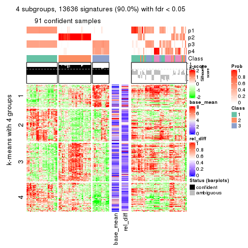
get_signatures(res, k = 5)
get_signatures(res, k = 6)
Signature heatmaps where rows are not scaled:
get_signatures(res, k = 2, scale_rows = FALSE)
get_signatures(res, k = 3, scale_rows = FALSE)
get_signatures(res, k = 4, scale_rows = FALSE)
get_signatures(res, k = 5, scale_rows = FALSE)
get_signatures(res, k = 6, scale_rows = FALSE)
Compare the overlap of signatures from different k:
compare_signatures(res)
get_signature() returns a data frame invisibly. TO get the list of signatures, the function
call should be assigned to a variable explicitly. In following code, if plot argument is set
to FALSE, no heatmap is plotted while only the differential analysis is performed.
# code only for demonstration
tb = get_signature(res, k = ..., plot = FALSE)
An example of the output of tb is:
#> which_row fdr mean_1 mean_2 scaled_mean_1 scaled_mean_2 km
#> 1 38 0.042760348 8.373488 9.131774 -0.5533452 0.5164555 1
#> 2 40 0.018707592 7.106213 8.469186 -0.6173731 0.5762149 1
#> 3 55 0.019134737 10.221463 11.207825 -0.6159697 0.5749050 1
#> 4 59 0.006059896 5.921854 7.869574 -0.6899429 0.6439467 1
#> 5 60 0.018055526 8.928898 10.211722 -0.6204761 0.5791110 1
#> 6 98 0.009384629 15.714769 14.887706 0.6635654 -0.6193277 2
...
The columns in tb are:
which_row: row indices corresponding to the input matrix.fdr: FDR for the differential test. mean_x: The mean value in group x.scaled_mean_x: The mean value in group x after rows are scaled.km: Row groups if k-means clustering is applied to rows.
UMAP plot which shows how samples are separated.
dimension_reduction(res, k = 2, method = "UMAP")
dimension_reduction(res, k = 3, method = "UMAP")
dimension_reduction(res, k = 4, method = "UMAP")
dimension_reduction(res, k = 5, method = "UMAP")
dimension_reduction(res, k = 6, method = "UMAP")

Following heatmap shows how subgroups are split when increasing k:
collect_classes(res)

If matrix rows can be associated to genes, consider to use functional_enrichment(res,
...) to perform function enrichment for the signature genes. See this vignette for more detailed explanations.
MAD:hclust
The object with results only for a single top-value method and a single partition method
can be extracted as:
res = res_list["MAD", "hclust"]
# you can also extract it by
# res = res_list["MAD:hclust"]
A summary of res and all the functions that can be applied to it:
res
#> A 'ConsensusPartition' object with k = 2, 3, 4, 5, 6.
#> On a matrix with 15148 rows and 152 columns.
#> Top rows (1000, 2000, 3000, 4000, 5000) are extracted by 'MAD' method.
#> Subgroups are detected by 'hclust' method.
#> Performed in total 1250 partitions by row resampling.
#> Best k for subgroups seems to be 4.
#>
#> Following methods can be applied to this 'ConsensusPartition' object:
#> [1] "cola_report" "collect_classes" "collect_plots"
#> [4] "collect_stats" "colnames" "compare_signatures"
#> [7] "consensus_heatmap" "dimension_reduction" "functional_enrichment"
#> [10] "get_anno_col" "get_anno" "get_classes"
#> [13] "get_consensus" "get_matrix" "get_membership"
#> [16] "get_param" "get_signatures" "get_stats"
#> [19] "is_best_k" "is_stable_k" "membership_heatmap"
#> [22] "ncol" "nrow" "plot_ecdf"
#> [25] "rownames" "select_partition_number" "show"
#> [28] "suggest_best_k" "test_to_known_factors"
collect_plots() function collects all the plots made from res for all k (number of partitions)
into one single page to provide an easy and fast comparison between different k.
collect_plots(res)
The plots are:
- The first row: a plot of the ECDF (empirical cumulative distribution
function) curves of the consensus matrix for each
k and the heatmap of
predicted classes for each k.
- The second row: heatmaps of the consensus matrix for each
k.
- The third row: heatmaps of the membership matrix for each
k.
- The fouth row: heatmaps of the signatures for each
k.
All the plots in panels can be made by individual functions and they are
plotted later in this section.
select_partition_number() produces several plots showing different
statistics for choosing “optimized” k. There are following statistics:
- ECDF curves of the consensus matrix for each
k;
- 1-PAC. The PAC
score
measures the proportion of the ambiguous subgrouping.
- Mean silhouette score.
- Concordance. The mean probability of fiting the consensus class ids in all
partitions.
- Area increased. Denote \(A_k\) as the area under the ECDF curve for current
k, the area increased is defined as \(A_k - A_{k-1}\).
- Rand index. The percent of pairs of samples that are both in a same cluster
or both are not in a same cluster in the partition of k and k-1.
- Jaccard index. The ratio of pairs of samples are both in a same cluster in
the partition of k and k-1 and the pairs of samples are both in a same
cluster in the partition k or k-1.
The detailed explanations of these statistics can be found in the cola
vignette.
Generally speaking, lower PAC score, higher mean silhouette score or higher
concordance corresponds to better partition. Rand index and Jaccard index
measure how similar the current partition is compared to partition with k-1.
If they are too similar, we won't accept k is better than k-1.
select_partition_number(res)
The numeric values for all these statistics can be obtained by get_stats().
get_stats(res)
#> k 1-PAC mean_silhouette concordance area_increased Rand Jaccard
#> 2 2 0.442 0.663 0.866 0.4307 0.560 0.560
#> 3 3 0.333 0.529 0.718 0.4682 0.682 0.483
#> 4 4 0.659 0.794 0.877 0.1751 0.858 0.617
#> 5 5 0.664 0.638 0.819 0.0456 0.965 0.863
#> 6 6 0.721 0.768 0.840 0.0368 0.951 0.791
suggest_best_k() suggests the best \(k\) based on these statistics. The rules are as follows:
- All \(k\) with Jaccard index larger than 0.95 are removed because increasing
\(k\) does not provide enough extra information. If all \(k\) are removed, it is
marked as no subgroup is detected.
- For all \(k\) with 1-PAC score larger than 0.9, the maximal \(k\) is taken as
the best \(k\), and other \(k\) are marked as optional \(k\).
- If it does not fit the second rule. The \(k\) with the maximal vote of the
highest 1-PAC score, highest mean silhouette, and highest concordance is
taken as the best \(k\).
suggest_best_k(res)
#> [1] 4
Following shows the table of the partitions (You need to click the show/hide
code output link to see it). The membership matrix (columns with name p*)
is inferred by
clue::cl_consensus()
function with the SE method. Basically the value in the membership matrix
represents the probability to belong to a certain group. The finall class
label for an item is determined with the group with highest probability it
belongs to.
In get_classes() function, the entropy is calculated from the membership
matrix and the silhouette score is calculated from the consensus matrix.
show/hide code output
cbind(get_classes(res, k = 2), get_membership(res, k = 2))
#> class entropy silhouette p1 p2
#> SRR1947547 1 0.5842 0.7543 0.860 0.140
#> SRR1947546 2 0.0672 0.8258 0.008 0.992
#> SRR1947545 1 0.0000 0.7995 1.000 0.000
#> SRR1947544 1 0.9909 0.2086 0.556 0.444
#> SRR1947542 2 0.0672 0.8258 0.008 0.992
#> SRR1947541 1 0.5842 0.7543 0.860 0.140
#> SRR1947540 2 0.8443 0.5672 0.272 0.728
#> SRR1947539 2 0.0000 0.8297 0.000 1.000
#> SRR1947538 2 0.9661 0.3587 0.392 0.608
#> SRR1947537 2 0.5946 0.7188 0.144 0.856
#> SRR1947536 1 0.5842 0.7320 0.860 0.140
#> SRR1947535 2 0.0000 0.8297 0.000 1.000
#> SRR1947534 2 1.0000 -0.0387 0.496 0.504
#> SRR1947533 2 0.0000 0.8297 0.000 1.000
#> SRR1947532 2 0.9661 0.3587 0.392 0.608
#> SRR1947531 2 0.8443 0.5672 0.272 0.728
#> SRR1947530 1 0.0376 0.8000 0.996 0.004
#> SRR1947529 2 0.0000 0.8297 0.000 1.000
#> SRR1947528 1 0.6148 0.7462 0.848 0.152
#> SRR1947527 2 0.1633 0.8162 0.024 0.976
#> SRR1947526 2 0.0000 0.8297 0.000 1.000
#> SRR1947525 2 0.9522 0.4011 0.372 0.628
#> SRR1947524 2 0.0000 0.8297 0.000 1.000
#> SRR1947523 2 0.9795 0.2922 0.416 0.584
#> SRR1947521 2 0.0000 0.8297 0.000 1.000
#> SRR1947520 2 0.0000 0.8297 0.000 1.000
#> SRR1947519 2 0.0000 0.8297 0.000 1.000
#> SRR1947518 2 0.9661 0.3587 0.392 0.608
#> SRR1947517 2 0.9754 0.2361 0.408 0.592
#> SRR1947516 2 0.0000 0.8297 0.000 1.000
#> SRR1947515 2 0.9661 0.3587 0.392 0.608
#> SRR1947514 2 0.0000 0.8297 0.000 1.000
#> SRR1947513 1 0.6531 0.7062 0.832 0.168
#> SRR1947512 1 0.0000 0.7995 1.000 0.000
#> SRR1947511 2 0.0000 0.8297 0.000 1.000
#> SRR1947510 2 0.0000 0.8297 0.000 1.000
#> SRR1947572 1 0.9977 0.1093 0.528 0.472
#> SRR1947611 2 0.0000 0.8297 0.000 1.000
#> SRR1947509 2 0.9754 0.2361 0.408 0.592
#> SRR1947644 2 0.0000 0.8297 0.000 1.000
#> SRR1947643 2 0.2603 0.8021 0.044 0.956
#> SRR1947642 2 0.2423 0.8016 0.040 0.960
#> SRR1947640 2 0.9608 0.3765 0.384 0.616
#> SRR1947641 2 0.0000 0.8297 0.000 1.000
#> SRR1947639 2 0.9686 0.3478 0.396 0.604
#> SRR1947638 1 0.7139 0.6952 0.804 0.196
#> SRR1947637 2 0.0000 0.8297 0.000 1.000
#> SRR1947636 2 0.5946 0.7188 0.144 0.856
#> SRR1947635 2 0.9087 0.4831 0.324 0.676
#> SRR1947634 2 0.0000 0.8297 0.000 1.000
#> SRR1947633 2 0.0000 0.8297 0.000 1.000
#> SRR1947632 2 0.0672 0.8258 0.008 0.992
#> SRR1947631 2 0.0000 0.8297 0.000 1.000
#> SRR1947629 2 0.0000 0.8297 0.000 1.000
#> SRR1947630 2 0.0000 0.8297 0.000 1.000
#> SRR1947627 1 0.4022 0.7746 0.920 0.080
#> SRR1947628 2 0.9661 0.3587 0.392 0.608
#> SRR1947626 2 0.0000 0.8297 0.000 1.000
#> SRR1947625 2 0.0000 0.8297 0.000 1.000
#> SRR1947624 2 0.0000 0.8297 0.000 1.000
#> SRR1947623 1 0.9944 0.1698 0.544 0.456
#> SRR1947622 2 0.0000 0.8297 0.000 1.000
#> SRR1947621 2 0.0000 0.8297 0.000 1.000
#> SRR1947620 1 0.1184 0.7995 0.984 0.016
#> SRR1947619 2 0.5178 0.7403 0.116 0.884
#> SRR1947617 2 0.0000 0.8297 0.000 1.000
#> SRR1947618 1 0.1184 0.7995 0.984 0.016
#> SRR1947616 2 0.0000 0.8297 0.000 1.000
#> SRR1947615 1 0.5294 0.7640 0.880 0.120
#> SRR1947614 2 0.0000 0.8297 0.000 1.000
#> SRR1947613 1 0.0000 0.7995 1.000 0.000
#> SRR1947610 2 0.9661 0.3587 0.392 0.608
#> SRR1947612 2 0.0000 0.8297 0.000 1.000
#> SRR1947609 2 0.9815 0.2807 0.420 0.580
#> SRR1947608 2 0.0000 0.8297 0.000 1.000
#> SRR1947606 1 0.9795 0.3252 0.584 0.416
#> SRR1947607 1 0.0000 0.7995 1.000 0.000
#> SRR1947604 2 0.9661 0.3587 0.392 0.608
#> SRR1947605 1 0.0000 0.7995 1.000 0.000
#> SRR1947603 2 0.0000 0.8297 0.000 1.000
#> SRR1947602 1 0.0376 0.8000 0.996 0.004
#> SRR1947600 2 0.0000 0.8297 0.000 1.000
#> SRR1947601 2 0.0000 0.8297 0.000 1.000
#> SRR1947598 2 0.9661 0.3587 0.392 0.608
#> SRR1947599 1 0.9983 0.0965 0.524 0.476
#> SRR1947597 2 0.0376 0.8278 0.004 0.996
#> SRR1947596 1 0.9909 0.2086 0.556 0.444
#> SRR1947595 2 0.9661 0.3587 0.392 0.608
#> SRR1947594 1 0.0000 0.7995 1.000 0.000
#> SRR1947592 2 0.0000 0.8297 0.000 1.000
#> SRR1947591 2 0.0000 0.8297 0.000 1.000
#> SRR1947590 1 0.9909 0.2086 0.556 0.444
#> SRR1947588 1 0.0000 0.7995 1.000 0.000
#> SRR1947587 1 0.5842 0.7543 0.860 0.140
#> SRR1947586 2 0.0000 0.8297 0.000 1.000
#> SRR1947585 2 0.0000 0.8297 0.000 1.000
#> SRR1947584 1 0.0000 0.7995 1.000 0.000
#> SRR1947583 2 0.9608 0.3765 0.384 0.616
#> SRR1947582 1 0.1184 0.7995 0.984 0.016
#> SRR1947580 2 0.0000 0.8297 0.000 1.000
#> SRR1947581 1 0.0000 0.7995 1.000 0.000
#> SRR1947576 2 0.0000 0.8297 0.000 1.000
#> SRR1947575 2 0.0000 0.8297 0.000 1.000
#> SRR1947579 2 0.0000 0.8297 0.000 1.000
#> SRR1947578 2 0.9661 0.3587 0.392 0.608
#> SRR1947573 2 0.0000 0.8297 0.000 1.000
#> SRR1947574 1 0.9833 0.2787 0.576 0.424
#> SRR1947571 2 0.9661 0.3587 0.392 0.608
#> SRR1947577 1 0.1184 0.7995 0.984 0.016
#> SRR1947570 1 0.5842 0.7543 0.860 0.140
#> SRR1947569 2 0.0000 0.8297 0.000 1.000
#> SRR1947566 2 0.0000 0.8297 0.000 1.000
#> SRR1947567 2 0.9087 0.4831 0.324 0.676
#> SRR1947568 2 1.0000 -0.0144 0.496 0.504
#> SRR1947564 2 0.0000 0.8297 0.000 1.000
#> SRR1947563 2 0.0000 0.8297 0.000 1.000
#> SRR1947562 2 0.9393 0.4307 0.356 0.644
#> SRR1947565 2 0.5946 0.7188 0.144 0.856
#> SRR1947559 2 0.0376 0.8278 0.004 0.996
#> SRR1947560 2 0.0000 0.8297 0.000 1.000
#> SRR1947561 2 0.0000 0.8297 0.000 1.000
#> SRR1947557 1 0.0000 0.7995 1.000 0.000
#> SRR1947558 2 0.0000 0.8297 0.000 1.000
#> SRR1947556 1 0.9909 0.2086 0.556 0.444
#> SRR1947553 2 0.9661 0.3587 0.392 0.608
#> SRR1947554 1 0.5946 0.7355 0.856 0.144
#> SRR1947555 2 0.0000 0.8297 0.000 1.000
#> SRR1947550 2 0.9608 0.3765 0.384 0.616
#> SRR1947552 1 0.9983 0.0965 0.524 0.476
#> SRR1947549 2 0.0000 0.8297 0.000 1.000
#> SRR1947551 2 0.0000 0.8297 0.000 1.000
#> SRR1947548 2 0.9661 0.3587 0.392 0.608
#> SRR1947506 1 0.1184 0.7987 0.984 0.016
#> SRR1947507 1 0.0000 0.7995 1.000 0.000
#> SRR1947504 1 0.9922 0.1953 0.552 0.448
#> SRR1947503 1 0.7139 0.6952 0.804 0.196
#> SRR1947502 2 0.0000 0.8297 0.000 1.000
#> SRR1947501 2 0.0672 0.8258 0.008 0.992
#> SRR1947499 1 0.0376 0.8000 0.996 0.004
#> SRR1947498 2 0.0000 0.8297 0.000 1.000
#> SRR1947508 1 0.3584 0.7806 0.932 0.068
#> SRR1947505 2 0.9661 0.3587 0.392 0.608
#> SRR1947497 2 0.0000 0.8297 0.000 1.000
#> SRR1947496 1 0.0000 0.7995 1.000 0.000
#> SRR1947495 2 0.0000 0.8297 0.000 1.000
#> SRR1947494 1 0.9993 0.0652 0.516 0.484
#> SRR1947493 1 0.0376 0.8000 0.996 0.004
#> SRR1947492 1 0.0000 0.7995 1.000 0.000
#> SRR1947500 2 0.9087 0.4831 0.324 0.676
#> SRR1947491 2 0.9087 0.4831 0.324 0.676
#> SRR1947490 1 0.0000 0.7995 1.000 0.000
#> SRR1947489 1 0.5294 0.7640 0.880 0.120
show/hide code output
cbind(get_classes(res, k = 3), get_membership(res, k = 3))
#> class entropy silhouette p1 p2 p3
#> SRR1947547 1 0.4345 0.78967 0.848 0.136 0.016
#> SRR1947546 2 0.6192 0.32670 0.000 0.580 0.420
#> SRR1947545 1 0.0000 0.88069 1.000 0.000 0.000
#> SRR1947544 2 0.6565 0.18428 0.416 0.576 0.008
#> SRR1947542 2 0.6192 0.32670 0.000 0.580 0.420
#> SRR1947541 1 0.4345 0.78967 0.848 0.136 0.016
#> SRR1947540 2 0.9491 0.37113 0.220 0.488 0.292
#> SRR1947539 3 0.5650 0.75116 0.000 0.312 0.688
#> SRR1947538 2 0.6264 0.45026 0.244 0.724 0.032
#> SRR1947537 3 0.8790 0.58429 0.132 0.328 0.540
#> SRR1947536 1 0.4139 0.78220 0.860 0.016 0.124
#> SRR1947535 3 0.5678 0.75106 0.000 0.316 0.684
#> SRR1947534 1 0.8983 0.07335 0.480 0.388 0.132
#> SRR1947533 2 0.6299 0.29312 0.000 0.524 0.476
#> SRR1947532 2 0.6375 0.45011 0.244 0.720 0.036
#> SRR1947531 2 0.9491 0.37113 0.220 0.488 0.292
#> SRR1947530 1 0.0237 0.88087 0.996 0.000 0.004
#> SRR1947529 2 0.6280 0.33067 0.000 0.540 0.460
#> SRR1947528 1 0.4615 0.77758 0.836 0.144 0.020
#> SRR1947527 2 0.6584 0.32435 0.012 0.608 0.380
#> SRR1947526 2 0.6305 0.28897 0.000 0.516 0.484
#> SRR1947525 2 0.6056 0.45242 0.224 0.744 0.032
#> SRR1947524 3 0.5650 0.75116 0.000 0.312 0.688
#> SRR1947523 2 0.6373 0.43048 0.268 0.704 0.028
#> SRR1947521 3 0.3752 0.64721 0.000 0.144 0.856
#> SRR1947520 3 0.6274 -0.22511 0.000 0.456 0.544
#> SRR1947519 3 0.5678 0.75106 0.000 0.316 0.684
#> SRR1947518 2 0.6264 0.45026 0.244 0.724 0.032
#> SRR1947517 3 0.9102 0.14912 0.408 0.140 0.452
#> SRR1947516 2 0.6280 0.33067 0.000 0.540 0.460
#> SRR1947515 2 0.6375 0.45011 0.244 0.720 0.036
#> SRR1947514 2 0.6280 0.33067 0.000 0.540 0.460
#> SRR1947513 1 0.4873 0.72070 0.824 0.152 0.024
#> SRR1947512 1 0.0000 0.88069 1.000 0.000 0.000
#> SRR1947511 3 0.6274 -0.22511 0.000 0.456 0.544
#> SRR1947510 3 0.3752 0.64721 0.000 0.144 0.856
#> SRR1947572 2 0.6434 0.25787 0.380 0.612 0.008
#> SRR1947611 3 0.1529 0.47663 0.000 0.040 0.960
#> SRR1947509 3 0.9102 0.14912 0.408 0.140 0.452
#> SRR1947644 3 0.5529 0.74454 0.000 0.296 0.704
#> SRR1947643 2 0.5529 0.31728 0.000 0.704 0.296
#> SRR1947642 3 0.6867 0.72946 0.040 0.288 0.672
#> SRR1947640 2 0.6183 0.45876 0.236 0.732 0.032
#> SRR1947641 3 0.5678 0.75106 0.000 0.316 0.684
#> SRR1947639 2 0.6303 0.44901 0.248 0.720 0.032
#> SRR1947638 1 0.5216 0.62708 0.740 0.260 0.000
#> SRR1947637 3 0.1529 0.47663 0.000 0.040 0.960
#> SRR1947636 3 0.8790 0.58429 0.132 0.328 0.540
#> SRR1947635 2 0.5689 0.44270 0.184 0.780 0.036
#> SRR1947634 3 0.5835 0.00917 0.000 0.340 0.660
#> SRR1947633 3 0.5650 0.75116 0.000 0.312 0.688
#> SRR1947632 2 0.6192 0.32670 0.000 0.580 0.420
#> SRR1947631 3 0.5678 0.75106 0.000 0.316 0.684
#> SRR1947629 3 0.5650 0.75116 0.000 0.312 0.688
#> SRR1947630 3 0.5835 0.00917 0.000 0.340 0.660
#> SRR1947627 1 0.2845 0.83884 0.920 0.012 0.068
#> SRR1947628 2 0.6375 0.45011 0.244 0.720 0.036
#> SRR1947626 2 0.6095 0.31358 0.000 0.608 0.392
#> SRR1947625 3 0.5678 0.75106 0.000 0.316 0.684
#> SRR1947624 3 0.5835 0.00917 0.000 0.340 0.660
#> SRR1947623 2 0.6498 0.22199 0.396 0.596 0.008
#> SRR1947622 2 0.6280 0.33067 0.000 0.540 0.460
#> SRR1947621 2 0.6280 0.33067 0.000 0.540 0.460
#> SRR1947620 1 0.1031 0.87396 0.976 0.024 0.000
#> SRR1947619 3 0.8468 0.63379 0.116 0.308 0.576
#> SRR1947617 2 0.6280 0.33067 0.000 0.540 0.460
#> SRR1947618 1 0.1031 0.87396 0.976 0.024 0.000
#> SRR1947616 2 0.6280 0.33067 0.000 0.540 0.460
#> SRR1947615 1 0.3715 0.80118 0.868 0.128 0.004
#> SRR1947614 3 0.3752 0.64721 0.000 0.144 0.856
#> SRR1947613 1 0.0237 0.88082 0.996 0.004 0.000
#> SRR1947610 2 0.6264 0.45026 0.244 0.724 0.032
#> SRR1947612 2 0.6280 0.33067 0.000 0.540 0.460
#> SRR1947609 2 0.6632 0.42384 0.272 0.692 0.036
#> SRR1947608 3 0.5678 0.75106 0.000 0.316 0.684
#> SRR1947606 1 0.8749 0.37283 0.572 0.152 0.276
#> SRR1947607 1 0.0237 0.88082 0.996 0.004 0.000
#> SRR1947604 2 0.6375 0.45011 0.244 0.720 0.036
#> SRR1947605 1 0.0000 0.88069 1.000 0.000 0.000
#> SRR1947603 2 0.6280 0.33067 0.000 0.540 0.460
#> SRR1947602 1 0.0237 0.88087 0.996 0.000 0.004
#> SRR1947600 3 0.5650 0.75116 0.000 0.312 0.688
#> SRR1947601 2 0.6280 0.33067 0.000 0.540 0.460
#> SRR1947598 2 0.6375 0.45011 0.244 0.720 0.036
#> SRR1947599 2 0.6566 0.27371 0.376 0.612 0.012
#> SRR1947597 2 0.6215 0.33796 0.000 0.572 0.428
#> SRR1947596 2 0.6565 0.18428 0.416 0.576 0.008
#> SRR1947595 2 0.6264 0.45337 0.244 0.724 0.032
#> SRR1947594 1 0.0000 0.88069 1.000 0.000 0.000
#> SRR1947592 3 0.5650 0.75116 0.000 0.312 0.688
#> SRR1947591 2 0.6280 0.33067 0.000 0.540 0.460
#> SRR1947590 2 0.6565 0.18428 0.416 0.576 0.008
#> SRR1947588 1 0.0000 0.88069 1.000 0.000 0.000
#> SRR1947587 1 0.4345 0.78967 0.848 0.136 0.016
#> SRR1947586 2 0.6095 0.31358 0.000 0.608 0.392
#> SRR1947585 3 0.5650 0.75116 0.000 0.312 0.688
#> SRR1947584 1 0.0000 0.88069 1.000 0.000 0.000
#> SRR1947583 2 0.6183 0.45876 0.236 0.732 0.032
#> SRR1947582 1 0.1031 0.87396 0.976 0.024 0.000
#> SRR1947580 2 0.6095 0.31358 0.000 0.608 0.392
#> SRR1947581 1 0.0000 0.88069 1.000 0.000 0.000
#> SRR1947576 3 0.1529 0.47663 0.000 0.040 0.960
#> SRR1947575 3 0.5678 0.75106 0.000 0.316 0.684
#> SRR1947579 3 0.3752 0.64721 0.000 0.144 0.856
#> SRR1947578 2 0.6375 0.45011 0.244 0.720 0.036
#> SRR1947573 3 0.5650 0.75116 0.000 0.312 0.688
#> SRR1947574 1 0.7984 0.04729 0.496 0.444 0.060
#> SRR1947571 2 0.6375 0.45011 0.244 0.720 0.036
#> SRR1947577 1 0.1031 0.87396 0.976 0.024 0.000
#> SRR1947570 1 0.4345 0.78967 0.848 0.136 0.016
#> SRR1947569 3 0.5650 0.75116 0.000 0.312 0.688
#> SRR1947566 2 0.6280 0.33067 0.000 0.540 0.460
#> SRR1947567 2 0.5689 0.44270 0.184 0.780 0.036
#> SRR1947568 2 0.6427 0.31193 0.348 0.640 0.012
#> SRR1947564 2 0.6280 0.33067 0.000 0.540 0.460
#> SRR1947563 3 0.5678 0.75106 0.000 0.316 0.684
#> SRR1947562 2 0.8423 0.43815 0.228 0.616 0.156
#> SRR1947565 3 0.8790 0.58429 0.132 0.328 0.540
#> SRR1947559 2 0.6215 0.33796 0.000 0.572 0.428
#> SRR1947560 3 0.1529 0.47663 0.000 0.040 0.960
#> SRR1947561 2 0.6280 0.33067 0.000 0.540 0.460
#> SRR1947557 1 0.0000 0.88069 1.000 0.000 0.000
#> SRR1947558 3 0.5678 0.75106 0.000 0.316 0.684
#> SRR1947556 2 0.6565 0.18428 0.416 0.576 0.008
#> SRR1947553 2 0.6264 0.45026 0.244 0.724 0.032
#> SRR1947554 1 0.4887 0.75728 0.844 0.096 0.060
#> SRR1947555 2 0.6280 0.33067 0.000 0.540 0.460
#> SRR1947550 2 0.6183 0.45876 0.236 0.732 0.032
#> SRR1947552 2 0.6566 0.27371 0.376 0.612 0.012
#> SRR1947549 3 0.5650 0.75116 0.000 0.312 0.688
#> SRR1947551 3 0.5529 0.74454 0.000 0.296 0.704
#> SRR1947548 2 0.6375 0.45011 0.244 0.720 0.036
#> SRR1947506 1 0.0829 0.87670 0.984 0.004 0.012
#> SRR1947507 1 0.0000 0.88069 1.000 0.000 0.000
#> SRR1947504 2 0.6540 0.19880 0.408 0.584 0.008
#> SRR1947503 1 0.5216 0.62708 0.740 0.260 0.000
#> SRR1947502 2 0.6280 0.33067 0.000 0.540 0.460
#> SRR1947501 2 0.6192 0.32670 0.000 0.580 0.420
#> SRR1947499 1 0.0237 0.88087 0.996 0.000 0.004
#> SRR1947498 3 0.5650 0.75116 0.000 0.312 0.688
#> SRR1947508 1 0.2550 0.84778 0.932 0.012 0.056
#> SRR1947505 2 0.6375 0.45011 0.244 0.720 0.036
#> SRR1947497 2 0.6299 0.29312 0.000 0.524 0.476
#> SRR1947496 1 0.0237 0.88082 0.996 0.004 0.000
#> SRR1947495 2 0.6299 0.29312 0.000 0.524 0.476
#> SRR1947494 2 0.6529 0.27688 0.368 0.620 0.012
#> SRR1947493 1 0.0237 0.88087 0.996 0.000 0.004
#> SRR1947492 1 0.0237 0.88082 0.996 0.004 0.000
#> SRR1947500 2 0.5798 0.44211 0.184 0.776 0.040
#> SRR1947491 2 0.5689 0.44270 0.184 0.780 0.036
#> SRR1947490 1 0.0237 0.88082 0.996 0.004 0.000
#> SRR1947489 1 0.3715 0.80118 0.868 0.128 0.004
show/hide code output
cbind(get_classes(res, k = 4), get_membership(res, k = 4))
#> class entropy silhouette p1 p2 p3 p4
#> SRR1947547 1 0.3528 0.7803 0.808 0.000 0.000 0.192
#> SRR1947546 2 0.4059 0.7627 0.000 0.788 0.012 0.200
#> SRR1947545 1 0.0188 0.8768 0.996 0.000 0.000 0.004
#> SRR1947544 4 0.3764 0.7300 0.216 0.000 0.000 0.784
#> SRR1947542 2 0.4059 0.7627 0.000 0.788 0.012 0.200
#> SRR1947541 1 0.3528 0.7803 0.808 0.000 0.000 0.192
#> SRR1947540 4 0.5943 0.3632 0.000 0.360 0.048 0.592
#> SRR1947539 3 0.1557 0.8719 0.000 0.000 0.944 0.056
#> SRR1947538 4 0.0336 0.8539 0.000 0.008 0.000 0.992
#> SRR1947537 3 0.5944 0.6131 0.104 0.000 0.684 0.212
#> SRR1947536 1 0.3697 0.7878 0.852 0.000 0.100 0.048
#> SRR1947535 3 0.1743 0.8719 0.000 0.004 0.940 0.056
#> SRR1947534 1 0.6921 0.0368 0.468 0.424 0.000 0.108
#> SRR1947533 2 0.2174 0.8869 0.000 0.928 0.052 0.020
#> SRR1947532 4 0.2048 0.8570 0.000 0.008 0.064 0.928
#> SRR1947531 4 0.5943 0.3632 0.000 0.360 0.048 0.592
#> SRR1947530 1 0.0817 0.8769 0.976 0.000 0.000 0.024
#> SRR1947529 2 0.0336 0.9067 0.000 0.992 0.000 0.008
#> SRR1947528 1 0.4121 0.7741 0.796 0.000 0.020 0.184
#> SRR1947527 2 0.2408 0.8531 0.000 0.896 0.000 0.104
#> SRR1947526 2 0.2300 0.8792 0.000 0.920 0.064 0.016
#> SRR1947525 4 0.1637 0.8463 0.000 0.060 0.000 0.940
#> SRR1947524 3 0.1557 0.8719 0.000 0.000 0.944 0.056
#> SRR1947523 4 0.2742 0.8571 0.028 0.024 0.032 0.916
#> SRR1947521 3 0.3074 0.7489 0.000 0.152 0.848 0.000
#> SRR1947520 2 0.2918 0.8292 0.000 0.876 0.116 0.008
#> SRR1947519 3 0.1743 0.8719 0.000 0.004 0.940 0.056
#> SRR1947518 4 0.0336 0.8539 0.000 0.008 0.000 0.992
#> SRR1947517 3 0.4877 0.2559 0.408 0.000 0.592 0.000
#> SRR1947516 2 0.0336 0.9067 0.000 0.992 0.000 0.008
#> SRR1947515 4 0.2048 0.8570 0.000 0.008 0.064 0.928
#> SRR1947514 2 0.0336 0.9067 0.000 0.992 0.000 0.008
#> SRR1947513 1 0.5016 0.4327 0.600 0.004 0.000 0.396
#> SRR1947512 1 0.0188 0.8770 0.996 0.000 0.000 0.004
#> SRR1947511 2 0.2918 0.8292 0.000 0.876 0.116 0.008
#> SRR1947510 3 0.3074 0.7489 0.000 0.152 0.848 0.000
#> SRR1947572 4 0.3852 0.7660 0.180 0.012 0.000 0.808
#> SRR1947611 3 0.4564 0.4989 0.000 0.328 0.672 0.000
#> SRR1947509 3 0.4877 0.2559 0.408 0.000 0.592 0.000
#> SRR1947644 3 0.0707 0.8564 0.000 0.000 0.980 0.020
#> SRR1947643 2 0.4957 0.6602 0.000 0.748 0.048 0.204
#> SRR1947642 3 0.2936 0.8532 0.040 0.004 0.900 0.056
#> SRR1947640 4 0.2494 0.8575 0.000 0.036 0.048 0.916
#> SRR1947641 3 0.1743 0.8719 0.000 0.004 0.940 0.056
#> SRR1947639 4 0.1118 0.8517 0.000 0.036 0.000 0.964
#> SRR1947638 1 0.4564 0.5658 0.672 0.000 0.000 0.328
#> SRR1947637 3 0.4564 0.4989 0.000 0.328 0.672 0.000
#> SRR1947636 3 0.5944 0.6131 0.104 0.000 0.684 0.212
#> SRR1947635 4 0.5136 0.7274 0.000 0.224 0.048 0.728
#> SRR1947634 2 0.4331 0.5869 0.000 0.712 0.288 0.000
#> SRR1947633 3 0.1557 0.8719 0.000 0.000 0.944 0.056
#> SRR1947632 2 0.4059 0.7627 0.000 0.788 0.012 0.200
#> SRR1947631 3 0.1743 0.8719 0.000 0.004 0.940 0.056
#> SRR1947629 3 0.1557 0.8719 0.000 0.000 0.944 0.056
#> SRR1947630 2 0.4331 0.5869 0.000 0.712 0.288 0.000
#> SRR1947627 1 0.2675 0.8449 0.908 0.000 0.044 0.048
#> SRR1947628 4 0.2048 0.8570 0.000 0.008 0.064 0.928
#> SRR1947626 2 0.1940 0.8755 0.000 0.924 0.000 0.076
#> SRR1947625 3 0.1743 0.8719 0.000 0.004 0.940 0.056
#> SRR1947624 2 0.4331 0.5869 0.000 0.712 0.288 0.000
#> SRR1947623 4 0.3751 0.7519 0.196 0.004 0.000 0.800
#> SRR1947622 2 0.0336 0.9067 0.000 0.992 0.000 0.008
#> SRR1947621 2 0.0336 0.9067 0.000 0.992 0.000 0.008
#> SRR1947620 1 0.2011 0.8588 0.920 0.000 0.000 0.080
#> SRR1947619 3 0.4144 0.7845 0.104 0.000 0.828 0.068
#> SRR1947617 2 0.0336 0.9067 0.000 0.992 0.000 0.008
#> SRR1947618 1 0.2011 0.8588 0.920 0.000 0.000 0.080
#> SRR1947616 2 0.0336 0.9067 0.000 0.992 0.000 0.008
#> SRR1947615 1 0.3311 0.7893 0.828 0.000 0.000 0.172
#> SRR1947614 3 0.3074 0.7489 0.000 0.152 0.848 0.000
#> SRR1947613 1 0.0336 0.8774 0.992 0.000 0.000 0.008
#> SRR1947610 4 0.0336 0.8539 0.000 0.008 0.000 0.992
#> SRR1947612 2 0.0336 0.9067 0.000 0.992 0.000 0.008
#> SRR1947609 4 0.2269 0.8561 0.028 0.008 0.032 0.932
#> SRR1947608 3 0.1743 0.8719 0.000 0.004 0.940 0.056
#> SRR1947606 1 0.7241 0.4221 0.540 0.000 0.264 0.196
#> SRR1947607 1 0.0707 0.8756 0.980 0.000 0.000 0.020
#> SRR1947604 4 0.1890 0.8581 0.000 0.008 0.056 0.936
#> SRR1947605 1 0.0188 0.8768 0.996 0.000 0.000 0.004
#> SRR1947603 2 0.0336 0.9067 0.000 0.992 0.000 0.008
#> SRR1947602 1 0.0817 0.8769 0.976 0.000 0.000 0.024
#> SRR1947600 3 0.1557 0.8719 0.000 0.000 0.944 0.056
#> SRR1947601 2 0.0336 0.9067 0.000 0.992 0.000 0.008
#> SRR1947598 4 0.2048 0.8570 0.000 0.008 0.064 0.928
#> SRR1947599 4 0.4129 0.8118 0.132 0.008 0.032 0.828
#> SRR1947597 2 0.2412 0.8723 0.000 0.908 0.008 0.084
#> SRR1947596 4 0.3764 0.7300 0.216 0.000 0.000 0.784
#> SRR1947595 4 0.2300 0.8584 0.000 0.028 0.048 0.924
#> SRR1947594 1 0.0188 0.8770 0.996 0.000 0.000 0.004
#> SRR1947592 3 0.1557 0.8719 0.000 0.000 0.944 0.056
#> SRR1947591 2 0.0336 0.9067 0.000 0.992 0.000 0.008
#> SRR1947590 4 0.3764 0.7300 0.216 0.000 0.000 0.784
#> SRR1947588 1 0.0188 0.8770 0.996 0.000 0.000 0.004
#> SRR1947587 1 0.3528 0.7803 0.808 0.000 0.000 0.192
#> SRR1947586 2 0.1940 0.8755 0.000 0.924 0.000 0.076
#> SRR1947585 3 0.1557 0.8719 0.000 0.000 0.944 0.056
#> SRR1947584 1 0.0188 0.8770 0.996 0.000 0.000 0.004
#> SRR1947583 4 0.2494 0.8575 0.000 0.036 0.048 0.916
#> SRR1947582 1 0.2011 0.8588 0.920 0.000 0.000 0.080
#> SRR1947580 2 0.1940 0.8755 0.000 0.924 0.000 0.076
#> SRR1947581 1 0.0188 0.8770 0.996 0.000 0.000 0.004
#> SRR1947576 3 0.4564 0.4989 0.000 0.328 0.672 0.000
#> SRR1947575 3 0.1743 0.8719 0.000 0.004 0.940 0.056
#> SRR1947579 3 0.3074 0.7489 0.000 0.152 0.848 0.000
#> SRR1947578 4 0.2048 0.8570 0.000 0.008 0.064 0.928
#> SRR1947573 3 0.1557 0.8719 0.000 0.000 0.944 0.056
#> SRR1947574 4 0.6350 0.5768 0.252 0.112 0.000 0.636
#> SRR1947571 4 0.2048 0.8570 0.000 0.008 0.064 0.928
#> SRR1947577 1 0.2011 0.8588 0.920 0.000 0.000 0.080
#> SRR1947570 1 0.3528 0.7803 0.808 0.000 0.000 0.192
#> SRR1947569 3 0.1557 0.8719 0.000 0.000 0.944 0.056
#> SRR1947566 2 0.0336 0.9067 0.000 0.992 0.000 0.008
#> SRR1947567 4 0.5136 0.7274 0.000 0.224 0.048 0.728
#> SRR1947568 4 0.4224 0.7832 0.144 0.044 0.000 0.812
#> SRR1947564 2 0.0817 0.9029 0.000 0.976 0.000 0.024
#> SRR1947563 3 0.1743 0.8719 0.000 0.004 0.940 0.056
#> SRR1947562 4 0.4614 0.7481 0.000 0.144 0.064 0.792
#> SRR1947565 3 0.5944 0.6131 0.104 0.000 0.684 0.212
#> SRR1947559 2 0.2412 0.8723 0.000 0.908 0.008 0.084
#> SRR1947560 3 0.4564 0.4989 0.000 0.328 0.672 0.000
#> SRR1947561 2 0.0336 0.9067 0.000 0.992 0.000 0.008
#> SRR1947557 1 0.0188 0.8770 0.996 0.000 0.000 0.004
#> SRR1947558 3 0.1743 0.8719 0.000 0.004 0.940 0.056
#> SRR1947556 4 0.3764 0.7300 0.216 0.000 0.000 0.784
#> SRR1947553 4 0.0336 0.8539 0.000 0.008 0.000 0.992
#> SRR1947554 1 0.4130 0.7625 0.828 0.108 0.000 0.064
#> SRR1947555 2 0.0336 0.9067 0.000 0.992 0.000 0.008
#> SRR1947550 4 0.2494 0.8575 0.000 0.036 0.048 0.916
#> SRR1947552 4 0.4129 0.8118 0.132 0.008 0.032 0.828
#> SRR1947549 3 0.1557 0.8719 0.000 0.000 0.944 0.056
#> SRR1947551 3 0.0707 0.8564 0.000 0.000 0.980 0.020
#> SRR1947548 4 0.2048 0.8570 0.000 0.008 0.064 0.928
#> SRR1947506 1 0.1211 0.8742 0.960 0.000 0.000 0.040
#> SRR1947507 1 0.0188 0.8770 0.996 0.000 0.000 0.004
#> SRR1947504 4 0.3908 0.7368 0.212 0.004 0.000 0.784
#> SRR1947503 1 0.4564 0.5658 0.672 0.000 0.000 0.328
#> SRR1947502 2 0.0336 0.9067 0.000 0.992 0.000 0.008
#> SRR1947501 2 0.4059 0.7627 0.000 0.788 0.012 0.200
#> SRR1947499 1 0.0817 0.8769 0.976 0.000 0.000 0.024
#> SRR1947498 3 0.1557 0.8719 0.000 0.000 0.944 0.056
#> SRR1947508 1 0.2578 0.8512 0.912 0.000 0.036 0.052
#> SRR1947505 4 0.2048 0.8570 0.000 0.008 0.064 0.928
#> SRR1947497 2 0.2174 0.8869 0.000 0.928 0.052 0.020
#> SRR1947496 1 0.0336 0.8774 0.992 0.000 0.000 0.008
#> SRR1947495 2 0.2174 0.8869 0.000 0.928 0.052 0.020
#> SRR1947494 4 0.4680 0.8127 0.124 0.008 0.064 0.804
#> SRR1947493 1 0.0921 0.8766 0.972 0.000 0.000 0.028
#> SRR1947492 1 0.0336 0.8774 0.992 0.000 0.000 0.008
#> SRR1947500 4 0.4801 0.7620 0.000 0.188 0.048 0.764
#> SRR1947491 4 0.5136 0.7274 0.000 0.224 0.048 0.728
#> SRR1947490 1 0.0707 0.8756 0.980 0.000 0.000 0.020
#> SRR1947489 1 0.3311 0.7893 0.828 0.000 0.000 0.172
show/hide code output
cbind(get_classes(res, k = 5), get_membership(res, k = 5))
#> class entropy silhouette p1 p2 p3 p4 p5
#> SRR1947547 1 0.3141 0.4698 0.832 0.000 0.016 0.152 0.000
#> SRR1947546 2 0.4039 0.7342 0.000 0.776 0.036 0.184 0.004
#> SRR1947545 1 0.1671 0.3654 0.924 0.000 0.000 0.000 0.076
#> SRR1947544 4 0.4138 0.7207 0.160 0.000 0.000 0.776 0.064
#> SRR1947542 2 0.4039 0.7342 0.000 0.776 0.036 0.184 0.004
#> SRR1947541 1 0.3141 0.4698 0.832 0.000 0.016 0.152 0.000
#> SRR1947540 4 0.5447 0.3736 0.000 0.356 0.072 0.572 0.000
#> SRR1947539 3 0.0404 0.8608 0.000 0.000 0.988 0.012 0.000
#> SRR1947538 4 0.0609 0.8475 0.000 0.000 0.020 0.980 0.000
#> SRR1947537 3 0.4789 0.6246 0.116 0.000 0.728 0.156 0.000
#> SRR1947536 1 0.3320 0.3845 0.844 0.000 0.124 0.016 0.016
#> SRR1947535 3 0.0566 0.8604 0.000 0.000 0.984 0.012 0.004
#> SRR1947534 2 0.8057 -0.0997 0.236 0.412 0.000 0.116 0.236
#> SRR1947533 2 0.2395 0.8520 0.000 0.912 0.048 0.016 0.024
#> SRR1947532 4 0.1908 0.8507 0.000 0.000 0.092 0.908 0.000
#> SRR1947531 4 0.5447 0.3736 0.000 0.356 0.072 0.572 0.000
#> SRR1947530 1 0.0671 0.4449 0.980 0.000 0.000 0.004 0.016
#> SRR1947529 2 0.0566 0.8717 0.000 0.984 0.000 0.012 0.004
#> SRR1947528 1 0.3412 0.4623 0.820 0.000 0.028 0.152 0.000
#> SRR1947527 2 0.2561 0.8300 0.000 0.884 0.000 0.096 0.020
#> SRR1947526 2 0.3831 0.8027 0.000 0.824 0.048 0.016 0.112
#> SRR1947525 4 0.2103 0.8399 0.000 0.056 0.020 0.920 0.004
#> SRR1947524 3 0.0404 0.8608 0.000 0.000 0.988 0.012 0.000
#> SRR1947523 4 0.2625 0.8507 0.028 0.016 0.056 0.900 0.000
#> SRR1947521 3 0.4774 0.5951 0.000 0.020 0.556 0.000 0.424
#> SRR1947520 2 0.4220 0.7479 0.000 0.768 0.048 0.004 0.180
#> SRR1947519 3 0.0566 0.8604 0.000 0.000 0.984 0.012 0.004
#> SRR1947518 4 0.0609 0.8475 0.000 0.000 0.020 0.980 0.000
#> SRR1947517 1 0.6767 0.0713 0.392 0.000 0.328 0.000 0.280
#> SRR1947516 2 0.0404 0.8716 0.000 0.988 0.000 0.012 0.000
#> SRR1947515 4 0.1908 0.8507 0.000 0.000 0.092 0.908 0.000
#> SRR1947514 2 0.0404 0.8716 0.000 0.988 0.000 0.012 0.000
#> SRR1947513 1 0.5029 0.1569 0.592 0.000 0.020 0.376 0.012
#> SRR1947512 1 0.4278 -0.6625 0.548 0.000 0.000 0.000 0.452
#> SRR1947511 2 0.4220 0.7479 0.000 0.768 0.048 0.004 0.180
#> SRR1947510 3 0.4774 0.5951 0.000 0.020 0.556 0.000 0.424
#> SRR1947572 4 0.3421 0.7653 0.016 0.008 0.000 0.824 0.152
#> SRR1947611 3 0.6275 0.5154 0.000 0.180 0.520 0.000 0.300
#> SRR1947509 1 0.6767 0.0713 0.392 0.000 0.328 0.000 0.280
#> SRR1947644 3 0.0703 0.8424 0.000 0.000 0.976 0.000 0.024
#> SRR1947643 2 0.4337 0.6413 0.000 0.744 0.052 0.204 0.000
#> SRR1947642 3 0.1605 0.8346 0.040 0.000 0.944 0.012 0.004
#> SRR1947640 4 0.2388 0.8523 0.000 0.028 0.072 0.900 0.000
#> SRR1947641 3 0.0566 0.8604 0.000 0.000 0.984 0.012 0.004
#> SRR1947639 4 0.1646 0.8455 0.000 0.032 0.020 0.944 0.004
#> SRR1947638 1 0.5811 0.1985 0.552 0.000 0.000 0.340 0.108
#> SRR1947637 3 0.6275 0.5154 0.000 0.180 0.520 0.000 0.300
#> SRR1947636 3 0.4789 0.6246 0.116 0.000 0.728 0.156 0.000
#> SRR1947635 4 0.4555 0.7366 0.000 0.212 0.052 0.732 0.004
#> SRR1947634 2 0.6049 0.4723 0.000 0.564 0.164 0.000 0.272
#> SRR1947633 3 0.0404 0.8608 0.000 0.000 0.988 0.012 0.000
#> SRR1947632 2 0.4039 0.7342 0.000 0.776 0.036 0.184 0.004
#> SRR1947631 3 0.0566 0.8604 0.000 0.000 0.984 0.012 0.004
#> SRR1947629 3 0.0404 0.8608 0.000 0.000 0.988 0.012 0.000
#> SRR1947630 2 0.6049 0.4723 0.000 0.564 0.164 0.000 0.272
#> SRR1947627 1 0.2444 0.4373 0.904 0.000 0.068 0.012 0.016
#> SRR1947628 4 0.1908 0.8507 0.000 0.000 0.092 0.908 0.000
#> SRR1947626 2 0.2006 0.8472 0.000 0.916 0.000 0.072 0.012
#> SRR1947625 3 0.0566 0.8604 0.000 0.000 0.984 0.012 0.004
#> SRR1947624 2 0.6049 0.4723 0.000 0.564 0.164 0.000 0.272
#> SRR1947623 4 0.3304 0.7524 0.016 0.000 0.000 0.816 0.168
#> SRR1947622 2 0.0566 0.8717 0.000 0.984 0.000 0.012 0.004
#> SRR1947621 2 0.0404 0.8716 0.000 0.988 0.000 0.012 0.000
#> SRR1947620 1 0.3967 0.3083 0.800 0.000 0.000 0.092 0.108
#> SRR1947619 3 0.2624 0.7678 0.116 0.000 0.872 0.012 0.000
#> SRR1947617 2 0.0404 0.8716 0.000 0.988 0.000 0.012 0.000
#> SRR1947618 1 0.3967 0.3083 0.800 0.000 0.000 0.092 0.108
#> SRR1947616 2 0.0798 0.8690 0.000 0.976 0.000 0.008 0.016
#> SRR1947615 1 0.2605 0.4664 0.852 0.000 0.000 0.148 0.000
#> SRR1947614 3 0.4774 0.5951 0.000 0.020 0.556 0.000 0.424
#> SRR1947613 5 0.4821 0.9005 0.464 0.000 0.000 0.020 0.516
#> SRR1947610 4 0.0609 0.8475 0.000 0.000 0.020 0.980 0.000
#> SRR1947612 2 0.0404 0.8716 0.000 0.988 0.000 0.012 0.000
#> SRR1947609 4 0.2124 0.8494 0.028 0.000 0.056 0.916 0.000
#> SRR1947608 3 0.0566 0.8604 0.000 0.000 0.984 0.012 0.004
#> SRR1947606 1 0.6056 0.2614 0.556 0.000 0.288 0.156 0.000
#> SRR1947607 5 0.4894 0.8992 0.456 0.000 0.000 0.024 0.520
#> SRR1947604 4 0.1732 0.8519 0.000 0.000 0.080 0.920 0.000
#> SRR1947605 1 0.1671 0.3654 0.924 0.000 0.000 0.000 0.076
#> SRR1947603 2 0.0566 0.8717 0.000 0.984 0.000 0.012 0.004
#> SRR1947602 1 0.0671 0.4449 0.980 0.000 0.000 0.004 0.016
#> SRR1947600 3 0.0404 0.8608 0.000 0.000 0.988 0.012 0.000
#> SRR1947601 2 0.0798 0.8690 0.000 0.976 0.000 0.008 0.016
#> SRR1947598 4 0.1908 0.8507 0.000 0.000 0.092 0.908 0.000
#> SRR1947599 4 0.3664 0.8140 0.056 0.000 0.036 0.848 0.060
#> SRR1947597 2 0.2248 0.8417 0.000 0.900 0.012 0.088 0.000
#> SRR1947596 4 0.4138 0.7207 0.160 0.000 0.000 0.776 0.064
#> SRR1947595 4 0.2208 0.8531 0.000 0.020 0.072 0.908 0.000
#> SRR1947594 1 0.4278 -0.6625 0.548 0.000 0.000 0.000 0.452
#> SRR1947592 3 0.0404 0.8608 0.000 0.000 0.988 0.012 0.000
#> SRR1947591 2 0.0404 0.8716 0.000 0.988 0.000 0.012 0.000
#> SRR1947590 4 0.4138 0.7207 0.160 0.000 0.000 0.776 0.064
#> SRR1947588 1 0.4278 -0.6625 0.548 0.000 0.000 0.000 0.452
#> SRR1947587 1 0.3141 0.4698 0.832 0.000 0.016 0.152 0.000
#> SRR1947586 2 0.2006 0.8472 0.000 0.916 0.000 0.072 0.012
#> SRR1947585 3 0.0404 0.8608 0.000 0.000 0.988 0.012 0.000
#> SRR1947584 1 0.4278 -0.6625 0.548 0.000 0.000 0.000 0.452
#> SRR1947583 4 0.2388 0.8523 0.000 0.028 0.072 0.900 0.000
#> SRR1947582 1 0.3967 0.3083 0.800 0.000 0.000 0.092 0.108
#> SRR1947580 2 0.2006 0.8472 0.000 0.916 0.000 0.072 0.012
#> SRR1947581 1 0.4278 -0.6625 0.548 0.000 0.000 0.000 0.452
#> SRR1947576 3 0.6275 0.5154 0.000 0.180 0.520 0.000 0.300
#> SRR1947575 3 0.0566 0.8604 0.000 0.000 0.984 0.012 0.004
#> SRR1947579 3 0.4774 0.5951 0.000 0.020 0.556 0.000 0.424
#> SRR1947578 4 0.1908 0.8507 0.000 0.000 0.092 0.908 0.000
#> SRR1947573 3 0.0404 0.8608 0.000 0.000 0.988 0.012 0.000
#> SRR1947574 4 0.6252 0.6188 0.088 0.104 0.000 0.660 0.148
#> SRR1947571 4 0.1908 0.8507 0.000 0.000 0.092 0.908 0.000
#> SRR1947577 1 0.3967 0.3083 0.800 0.000 0.000 0.092 0.108
#> SRR1947570 1 0.3141 0.4698 0.832 0.000 0.016 0.152 0.000
#> SRR1947569 3 0.0404 0.8608 0.000 0.000 0.988 0.012 0.000
#> SRR1947566 2 0.0798 0.8690 0.000 0.976 0.000 0.008 0.016
#> SRR1947567 4 0.4555 0.7366 0.000 0.212 0.052 0.732 0.004
#> SRR1947568 4 0.3682 0.7778 0.012 0.040 0.000 0.828 0.120
#> SRR1947564 2 0.0794 0.8696 0.000 0.972 0.000 0.028 0.000
#> SRR1947563 3 0.0566 0.8604 0.000 0.000 0.984 0.012 0.004
#> SRR1947562 4 0.4291 0.7585 0.000 0.136 0.092 0.772 0.000
#> SRR1947565 3 0.4789 0.6246 0.116 0.000 0.728 0.156 0.000
#> SRR1947559 2 0.2248 0.8417 0.000 0.900 0.012 0.088 0.000
#> SRR1947560 3 0.6275 0.5154 0.000 0.180 0.520 0.000 0.300
#> SRR1947561 2 0.0404 0.8716 0.000 0.988 0.000 0.012 0.000
#> SRR1947557 1 0.4278 -0.6625 0.548 0.000 0.000 0.000 0.452
#> SRR1947558 3 0.0566 0.8604 0.000 0.000 0.984 0.012 0.004
#> SRR1947556 4 0.4138 0.7207 0.160 0.000 0.000 0.776 0.064
#> SRR1947553 4 0.0609 0.8475 0.000 0.000 0.020 0.980 0.000
#> SRR1947554 5 0.7139 0.6112 0.360 0.104 0.000 0.072 0.464
#> SRR1947555 2 0.0566 0.8717 0.000 0.984 0.000 0.012 0.004
#> SRR1947550 4 0.2388 0.8523 0.000 0.028 0.072 0.900 0.000
#> SRR1947552 4 0.3664 0.8140 0.056 0.000 0.036 0.848 0.060
#> SRR1947549 3 0.0404 0.8608 0.000 0.000 0.988 0.012 0.000
#> SRR1947551 3 0.0703 0.8424 0.000 0.000 0.976 0.000 0.024
#> SRR1947548 4 0.1908 0.8507 0.000 0.000 0.092 0.908 0.000
#> SRR1947506 1 0.0579 0.4483 0.984 0.000 0.008 0.008 0.000
#> SRR1947507 1 0.4278 -0.6625 0.548 0.000 0.000 0.000 0.452
#> SRR1947504 4 0.3456 0.7385 0.016 0.000 0.000 0.800 0.184
#> SRR1947503 1 0.5811 0.1985 0.552 0.000 0.000 0.340 0.108
#> SRR1947502 2 0.0404 0.8716 0.000 0.988 0.000 0.012 0.000
#> SRR1947501 2 0.4039 0.7342 0.000 0.776 0.036 0.184 0.004
#> SRR1947499 1 0.0671 0.4449 0.980 0.000 0.000 0.004 0.016
#> SRR1947498 3 0.0404 0.8608 0.000 0.000 0.988 0.012 0.000
#> SRR1947508 1 0.2199 0.4410 0.916 0.000 0.060 0.008 0.016
#> SRR1947505 4 0.1908 0.8507 0.000 0.000 0.092 0.908 0.000
#> SRR1947497 2 0.2395 0.8520 0.000 0.912 0.048 0.016 0.024
#> SRR1947496 5 0.4821 0.9005 0.464 0.000 0.000 0.020 0.516
#> SRR1947495 2 0.2395 0.8520 0.000 0.912 0.048 0.016 0.024
#> SRR1947494 4 0.4089 0.8153 0.032 0.000 0.072 0.820 0.076
#> SRR1947493 1 0.0162 0.4413 0.996 0.000 0.000 0.004 0.000
#> SRR1947492 5 0.4821 0.9005 0.464 0.000 0.000 0.020 0.516
#> SRR1947500 4 0.4252 0.7717 0.000 0.176 0.052 0.768 0.004
#> SRR1947491 4 0.4555 0.7366 0.000 0.212 0.052 0.732 0.004
#> SRR1947490 5 0.4894 0.8992 0.456 0.000 0.000 0.024 0.520
#> SRR1947489 1 0.2605 0.4664 0.852 0.000 0.000 0.148 0.000
show/hide code output
cbind(get_classes(res, k = 6), get_membership(res, k = 6))
#> class entropy silhouette p1 p2 p3 p4 p5 p6
#> SRR1947547 6 0.2536 0.750 0.000 0.000 0.020 0.116 0.000 0.864
#> SRR1947546 2 0.3409 0.702 0.000 0.780 0.028 0.192 0.000 0.000
#> SRR1947545 6 0.3799 0.641 0.276 0.000 0.000 0.000 0.020 0.704
#> SRR1947544 4 0.4218 0.725 0.116 0.000 0.000 0.768 0.020 0.096
#> SRR1947542 2 0.3409 0.702 0.000 0.780 0.028 0.192 0.000 0.000
#> SRR1947541 6 0.2536 0.750 0.000 0.000 0.020 0.116 0.000 0.864
#> SRR1947540 4 0.5539 0.421 0.012 0.324 0.060 0.580 0.024 0.000
#> SRR1947539 3 0.0146 0.932 0.000 0.000 0.996 0.000 0.004 0.000
#> SRR1947538 4 0.0260 0.841 0.000 0.000 0.008 0.992 0.000 0.000
#> SRR1947537 3 0.4232 0.634 0.000 0.000 0.736 0.116 0.000 0.148
#> SRR1947536 6 0.4128 0.677 0.056 0.000 0.136 0.000 0.032 0.776
#> SRR1947535 3 0.0000 0.931 0.000 0.000 1.000 0.000 0.000 0.000
#> SRR1947534 1 0.6765 0.135 0.420 0.376 0.000 0.084 0.116 0.004
#> SRR1947533 2 0.2257 0.826 0.028 0.904 0.000 0.004 0.060 0.004
#> SRR1947532 4 0.1556 0.847 0.000 0.000 0.080 0.920 0.000 0.000
#> SRR1947531 4 0.5539 0.421 0.012 0.324 0.060 0.580 0.024 0.000
#> SRR1947530 6 0.1984 0.746 0.056 0.000 0.000 0.000 0.032 0.912
#> SRR1947529 2 0.0291 0.853 0.000 0.992 0.004 0.004 0.000 0.000
#> SRR1947528 6 0.2771 0.743 0.000 0.000 0.032 0.116 0.000 0.852
#> SRR1947527 2 0.3322 0.787 0.028 0.848 0.000 0.076 0.044 0.004
#> SRR1947526 2 0.3580 0.710 0.028 0.772 0.000 0.004 0.196 0.000
#> SRR1947525 4 0.2128 0.828 0.004 0.064 0.008 0.912 0.004 0.008
#> SRR1947524 3 0.0146 0.932 0.000 0.000 0.996 0.000 0.004 0.000
#> SRR1947523 4 0.2327 0.845 0.008 0.012 0.044 0.908 0.000 0.028
#> SRR1947521 5 0.3791 0.805 0.000 0.004 0.180 0.000 0.768 0.048
#> SRR1947520 2 0.3929 0.615 0.028 0.700 0.000 0.000 0.272 0.000
#> SRR1947519 3 0.0000 0.931 0.000 0.000 1.000 0.000 0.000 0.000
#> SRR1947518 4 0.0260 0.841 0.000 0.000 0.008 0.992 0.000 0.000
#> SRR1947517 5 0.5449 0.307 0.000 0.000 0.120 0.000 0.456 0.424
#> SRR1947516 2 0.0146 0.853 0.000 0.996 0.000 0.004 0.000 0.000
#> SRR1947515 4 0.1556 0.847 0.000 0.000 0.080 0.920 0.000 0.000
#> SRR1947514 2 0.0146 0.853 0.000 0.996 0.000 0.004 0.000 0.000
#> SRR1947513 6 0.5995 0.403 0.152 0.000 0.008 0.388 0.004 0.448
#> SRR1947512 1 0.1204 0.873 0.944 0.000 0.000 0.000 0.000 0.056
#> SRR1947511 2 0.3929 0.615 0.028 0.700 0.000 0.000 0.272 0.000
#> SRR1947510 5 0.3791 0.805 0.000 0.004 0.180 0.000 0.768 0.048
#> SRR1947572 4 0.4050 0.753 0.108 0.016 0.000 0.792 0.076 0.008
#> SRR1947611 5 0.4377 0.791 0.000 0.120 0.160 0.000 0.720 0.000
#> SRR1947509 5 0.5449 0.307 0.000 0.000 0.120 0.000 0.456 0.424
#> SRR1947644 3 0.2527 0.742 0.000 0.000 0.832 0.000 0.168 0.000
#> SRR1947643 2 0.4742 0.612 0.012 0.720 0.052 0.192 0.024 0.000
#> SRR1947642 3 0.0937 0.893 0.000 0.000 0.960 0.000 0.000 0.040
#> SRR1947640 4 0.2164 0.847 0.012 0.020 0.060 0.908 0.000 0.000
#> SRR1947641 3 0.0000 0.931 0.000 0.000 1.000 0.000 0.000 0.000
#> SRR1947639 4 0.1742 0.835 0.004 0.040 0.008 0.936 0.004 0.008
#> SRR1947638 6 0.6495 0.471 0.116 0.000 0.000 0.328 0.076 0.480
#> SRR1947637 5 0.4377 0.791 0.000 0.120 0.160 0.000 0.720 0.000
#> SRR1947636 3 0.4232 0.634 0.000 0.000 0.736 0.116 0.000 0.148
#> SRR1947635 4 0.4297 0.738 0.012 0.204 0.056 0.728 0.000 0.000
#> SRR1947634 2 0.3868 0.151 0.000 0.504 0.000 0.000 0.496 0.000
#> SRR1947633 3 0.0146 0.932 0.000 0.000 0.996 0.000 0.004 0.000
#> SRR1947632 2 0.3409 0.702 0.000 0.780 0.028 0.192 0.000 0.000
#> SRR1947631 3 0.0000 0.931 0.000 0.000 1.000 0.000 0.000 0.000
#> SRR1947629 3 0.0146 0.932 0.000 0.000 0.996 0.000 0.004 0.000
#> SRR1947630 2 0.3868 0.151 0.000 0.504 0.000 0.000 0.496 0.000
#> SRR1947627 6 0.3444 0.725 0.056 0.000 0.076 0.000 0.032 0.836
#> SRR1947628 4 0.1556 0.847 0.000 0.000 0.080 0.920 0.000 0.000
#> SRR1947626 2 0.2811 0.807 0.028 0.880 0.000 0.060 0.028 0.004
#> SRR1947625 3 0.0000 0.931 0.000 0.000 1.000 0.000 0.000 0.000
#> SRR1947624 2 0.3868 0.151 0.000 0.504 0.000 0.000 0.496 0.000
#> SRR1947623 4 0.3784 0.745 0.124 0.000 0.000 0.792 0.076 0.008
#> SRR1947622 2 0.0291 0.853 0.000 0.992 0.004 0.004 0.000 0.000
#> SRR1947621 2 0.0146 0.853 0.000 0.996 0.000 0.004 0.000 0.000
#> SRR1947620 6 0.5650 0.645 0.208 0.000 0.000 0.080 0.076 0.636
#> SRR1947619 3 0.2048 0.816 0.000 0.000 0.880 0.000 0.000 0.120
#> SRR1947617 2 0.0146 0.853 0.000 0.996 0.000 0.004 0.000 0.000
#> SRR1947618 6 0.5650 0.645 0.208 0.000 0.000 0.080 0.076 0.636
#> SRR1947616 2 0.0458 0.849 0.000 0.984 0.000 0.000 0.016 0.000
#> SRR1947615 6 0.2003 0.750 0.000 0.000 0.000 0.116 0.000 0.884
#> SRR1947614 5 0.3791 0.805 0.000 0.004 0.180 0.000 0.768 0.048
#> SRR1947613 1 0.2401 0.857 0.892 0.000 0.000 0.008 0.072 0.028
#> SRR1947610 4 0.0260 0.841 0.000 0.000 0.008 0.992 0.000 0.000
#> SRR1947612 2 0.0146 0.853 0.000 0.996 0.000 0.004 0.000 0.000
#> SRR1947609 4 0.1777 0.845 0.000 0.000 0.044 0.928 0.004 0.024
#> SRR1947608 3 0.0000 0.931 0.000 0.000 1.000 0.000 0.000 0.000
#> SRR1947606 6 0.5148 0.436 0.000 0.000 0.296 0.116 0.000 0.588
#> SRR1947607 1 0.2563 0.855 0.880 0.000 0.000 0.008 0.084 0.028
#> SRR1947604 4 0.1387 0.848 0.000 0.000 0.068 0.932 0.000 0.000
#> SRR1947605 6 0.3799 0.641 0.276 0.000 0.000 0.000 0.020 0.704
#> SRR1947603 2 0.0291 0.853 0.000 0.992 0.004 0.004 0.000 0.000
#> SRR1947602 6 0.1984 0.746 0.056 0.000 0.000 0.000 0.032 0.912
#> SRR1947600 3 0.0146 0.932 0.000 0.000 0.996 0.000 0.004 0.000
#> SRR1947601 2 0.0458 0.849 0.000 0.984 0.000 0.000 0.016 0.000
#> SRR1947598 4 0.1556 0.847 0.000 0.000 0.080 0.920 0.000 0.000
#> SRR1947599 4 0.3704 0.810 0.024 0.000 0.036 0.836 0.064 0.040
#> SRR1947597 2 0.1967 0.815 0.000 0.904 0.012 0.084 0.000 0.000
#> SRR1947596 4 0.4218 0.725 0.116 0.000 0.000 0.768 0.020 0.096
#> SRR1947595 4 0.1983 0.848 0.012 0.012 0.060 0.916 0.000 0.000
#> SRR1947594 1 0.1204 0.873 0.944 0.000 0.000 0.000 0.000 0.056
#> SRR1947592 3 0.0146 0.932 0.000 0.000 0.996 0.000 0.004 0.000
#> SRR1947591 2 0.0146 0.853 0.000 0.996 0.000 0.004 0.000 0.000
#> SRR1947590 4 0.4218 0.725 0.116 0.000 0.000 0.768 0.020 0.096
#> SRR1947588 1 0.1204 0.873 0.944 0.000 0.000 0.000 0.000 0.056
#> SRR1947587 6 0.2536 0.750 0.000 0.000 0.020 0.116 0.000 0.864
#> SRR1947586 2 0.2811 0.807 0.028 0.880 0.000 0.060 0.028 0.004
#> SRR1947585 3 0.0146 0.932 0.000 0.000 0.996 0.000 0.004 0.000
#> SRR1947584 1 0.1204 0.873 0.944 0.000 0.000 0.000 0.000 0.056
#> SRR1947583 4 0.2164 0.847 0.012 0.020 0.060 0.908 0.000 0.000
#> SRR1947582 6 0.5650 0.645 0.208 0.000 0.000 0.080 0.076 0.636
#> SRR1947580 2 0.2811 0.807 0.028 0.880 0.000 0.060 0.028 0.004
#> SRR1947581 1 0.1204 0.873 0.944 0.000 0.000 0.000 0.000 0.056
#> SRR1947576 5 0.4377 0.791 0.000 0.120 0.160 0.000 0.720 0.000
#> SRR1947575 3 0.0000 0.931 0.000 0.000 1.000 0.000 0.000 0.000
#> SRR1947579 5 0.3791 0.805 0.000 0.004 0.180 0.000 0.768 0.048
#> SRR1947578 4 0.1556 0.847 0.000 0.000 0.080 0.920 0.000 0.000
#> SRR1947573 3 0.0146 0.932 0.000 0.000 0.996 0.000 0.004 0.000
#> SRR1947574 4 0.6126 0.620 0.164 0.076 0.000 0.640 0.092 0.028
#> SRR1947571 4 0.1556 0.847 0.000 0.000 0.080 0.920 0.000 0.000
#> SRR1947577 6 0.5650 0.645 0.208 0.000 0.000 0.080 0.076 0.636
#> SRR1947570 6 0.2536 0.750 0.000 0.000 0.020 0.116 0.000 0.864
#> SRR1947569 3 0.0146 0.932 0.000 0.000 0.996 0.000 0.004 0.000
#> SRR1947566 2 0.0458 0.849 0.000 0.984 0.000 0.000 0.016 0.000
#> SRR1947567 4 0.4297 0.738 0.012 0.204 0.056 0.728 0.000 0.000
#> SRR1947568 4 0.4193 0.764 0.072 0.048 0.000 0.796 0.076 0.008
#> SRR1947564 2 0.0632 0.849 0.000 0.976 0.000 0.024 0.000 0.000
#> SRR1947563 3 0.0000 0.931 0.000 0.000 1.000 0.000 0.000 0.000
#> SRR1947562 4 0.3707 0.754 0.000 0.136 0.080 0.784 0.000 0.000
#> SRR1947565 3 0.4232 0.634 0.000 0.000 0.736 0.116 0.000 0.148
#> SRR1947559 2 0.1967 0.815 0.000 0.904 0.012 0.084 0.000 0.000
#> SRR1947560 5 0.4377 0.791 0.000 0.120 0.160 0.000 0.720 0.000
#> SRR1947561 2 0.0146 0.853 0.000 0.996 0.000 0.004 0.000 0.000
#> SRR1947557 1 0.1204 0.873 0.944 0.000 0.000 0.000 0.000 0.056
#> SRR1947558 3 0.0000 0.931 0.000 0.000 1.000 0.000 0.000 0.000
#> SRR1947556 4 0.4218 0.725 0.116 0.000 0.000 0.768 0.020 0.096
#> SRR1947553 4 0.0260 0.841 0.000 0.000 0.008 0.992 0.000 0.000
#> SRR1947554 1 0.4539 0.739 0.768 0.076 0.000 0.048 0.100 0.008
#> SRR1947555 2 0.0291 0.853 0.000 0.992 0.004 0.004 0.000 0.000
#> SRR1947550 4 0.2164 0.847 0.012 0.020 0.060 0.908 0.000 0.000
#> SRR1947552 4 0.3704 0.810 0.024 0.000 0.036 0.836 0.064 0.040
#> SRR1947549 3 0.0146 0.932 0.000 0.000 0.996 0.000 0.004 0.000
#> SRR1947551 3 0.2527 0.742 0.000 0.000 0.832 0.000 0.168 0.000
#> SRR1947548 4 0.1556 0.847 0.000 0.000 0.080 0.920 0.000 0.000
#> SRR1947506 6 0.2620 0.746 0.108 0.000 0.012 0.000 0.012 0.868
#> SRR1947507 1 0.1204 0.873 0.944 0.000 0.000 0.000 0.000 0.056
#> SRR1947504 4 0.3943 0.731 0.140 0.000 0.000 0.776 0.076 0.008
#> SRR1947503 6 0.6495 0.471 0.116 0.000 0.000 0.328 0.076 0.480
#> SRR1947502 2 0.0146 0.853 0.000 0.996 0.000 0.004 0.000 0.000
#> SRR1947501 2 0.3409 0.702 0.000 0.780 0.028 0.192 0.000 0.000
#> SRR1947499 6 0.1984 0.746 0.056 0.000 0.000 0.000 0.032 0.912
#> SRR1947498 3 0.0146 0.932 0.000 0.000 0.996 0.000 0.004 0.000
#> SRR1947508 6 0.3278 0.730 0.056 0.000 0.064 0.000 0.032 0.848
#> SRR1947505 4 0.1556 0.847 0.000 0.000 0.080 0.920 0.000 0.000
#> SRR1947497 2 0.2257 0.826 0.028 0.904 0.000 0.004 0.060 0.004
#> SRR1947496 1 0.2401 0.857 0.892 0.000 0.000 0.008 0.072 0.028
#> SRR1947495 2 0.2257 0.826 0.028 0.904 0.000 0.004 0.060 0.004
#> SRR1947494 4 0.4040 0.808 0.028 0.000 0.072 0.808 0.076 0.016
#> SRR1947493 6 0.2266 0.743 0.108 0.000 0.000 0.000 0.012 0.880
#> SRR1947492 1 0.2401 0.857 0.892 0.000 0.000 0.008 0.072 0.028
#> SRR1947500 4 0.4017 0.769 0.012 0.168 0.056 0.764 0.000 0.000
#> SRR1947491 4 0.4297 0.738 0.012 0.204 0.056 0.728 0.000 0.000
#> SRR1947490 1 0.2563 0.855 0.880 0.000 0.000 0.008 0.084 0.028
#> SRR1947489 6 0.2003 0.750 0.000 0.000 0.000 0.116 0.000 0.884
Heatmaps for the consensus matrix. It visualizes the probability of two
samples to be in a same group.
consensus_heatmap(res, k = 2)
consensus_heatmap(res, k = 3)
consensus_heatmap(res, k = 4)
consensus_heatmap(res, k = 5)

consensus_heatmap(res, k = 6)
Heatmaps for the membership of samples in all partitions to see how consistent they are:
membership_heatmap(res, k = 2)
membership_heatmap(res, k = 3)
membership_heatmap(res, k = 4)
membership_heatmap(res, k = 5)

membership_heatmap(res, k = 6)
As soon as we have had the classes for columns, we can look for signatures
which are significantly different between classes which can be candidate marks
for certain classes. Following are the heatmaps for signatures.
Signature heatmaps where rows are scaled:
get_signatures(res, k = 2)
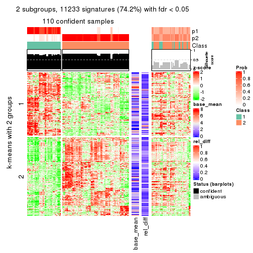
get_signatures(res, k = 3)
get_signatures(res, k = 4)
get_signatures(res, k = 5)
get_signatures(res, k = 6)
Signature heatmaps where rows are not scaled:
get_signatures(res, k = 2, scale_rows = FALSE)
get_signatures(res, k = 3, scale_rows = FALSE)
get_signatures(res, k = 4, scale_rows = FALSE)
get_signatures(res, k = 5, scale_rows = FALSE)
get_signatures(res, k = 6, scale_rows = FALSE)
Compare the overlap of signatures from different k:
compare_signatures(res)
get_signature() returns a data frame invisibly. TO get the list of signatures, the function
call should be assigned to a variable explicitly. In following code, if plot argument is set
to FALSE, no heatmap is plotted while only the differential analysis is performed.
# code only for demonstration
tb = get_signature(res, k = ..., plot = FALSE)
An example of the output of tb is:
#> which_row fdr mean_1 mean_2 scaled_mean_1 scaled_mean_2 km
#> 1 38 0.042760348 8.373488 9.131774 -0.5533452 0.5164555 1
#> 2 40 0.018707592 7.106213 8.469186 -0.6173731 0.5762149 1
#> 3 55 0.019134737 10.221463 11.207825 -0.6159697 0.5749050 1
#> 4 59 0.006059896 5.921854 7.869574 -0.6899429 0.6439467 1
#> 5 60 0.018055526 8.928898 10.211722 -0.6204761 0.5791110 1
#> 6 98 0.009384629 15.714769 14.887706 0.6635654 -0.6193277 2
...
The columns in tb are:
which_row: row indices corresponding to the input matrix.fdr: FDR for the differential test. mean_x: The mean value in group x.scaled_mean_x: The mean value in group x after rows are scaled.km: Row groups if k-means clustering is applied to rows.
UMAP plot which shows how samples are separated.
dimension_reduction(res, k = 2, method = "UMAP")
dimension_reduction(res, k = 3, method = "UMAP")
dimension_reduction(res, k = 4, method = "UMAP")
dimension_reduction(res, k = 5, method = "UMAP")
dimension_reduction(res, k = 6, method = "UMAP")
Following heatmap shows how subgroups are split when increasing k:
collect_classes(res)
If matrix rows can be associated to genes, consider to use functional_enrichment(res,
...) to perform function enrichment for the signature genes. See this vignette for more detailed explanations.
MAD:kmeans*
The object with results only for a single top-value method and a single partition method
can be extracted as:
res = res_list["MAD", "kmeans"]
# you can also extract it by
# res = res_list["MAD:kmeans"]
A summary of res and all the functions that can be applied to it:
res
#> A 'ConsensusPartition' object with k = 2, 3, 4, 5, 6.
#> On a matrix with 15148 rows and 152 columns.
#> Top rows (1000, 2000, 3000, 4000, 5000) are extracted by 'MAD' method.
#> Subgroups are detected by 'kmeans' method.
#> Performed in total 1250 partitions by row resampling.
#> Best k for subgroups seems to be 3.
#>
#> Following methods can be applied to this 'ConsensusPartition' object:
#> [1] "cola_report" "collect_classes" "collect_plots"
#> [4] "collect_stats" "colnames" "compare_signatures"
#> [7] "consensus_heatmap" "dimension_reduction" "functional_enrichment"
#> [10] "get_anno_col" "get_anno" "get_classes"
#> [13] "get_consensus" "get_matrix" "get_membership"
#> [16] "get_param" "get_signatures" "get_stats"
#> [19] "is_best_k" "is_stable_k" "membership_heatmap"
#> [22] "ncol" "nrow" "plot_ecdf"
#> [25] "rownames" "select_partition_number" "show"
#> [28] "suggest_best_k" "test_to_known_factors"
collect_plots() function collects all the plots made from res for all k (number of partitions)
into one single page to provide an easy and fast comparison between different k.
collect_plots(res)
The plots are:
- The first row: a plot of the ECDF (empirical cumulative distribution
function) curves of the consensus matrix for each
k and the heatmap of
predicted classes for each k.
- The second row: heatmaps of the consensus matrix for each
k.
- The third row: heatmaps of the membership matrix for each
k.
- The fouth row: heatmaps of the signatures for each
k.
All the plots in panels can be made by individual functions and they are
plotted later in this section.
select_partition_number() produces several plots showing different
statistics for choosing “optimized” k. There are following statistics:
- ECDF curves of the consensus matrix for each
k;
- 1-PAC. The PAC
score
measures the proportion of the ambiguous subgrouping.
- Mean silhouette score.
- Concordance. The mean probability of fiting the consensus class ids in all
partitions.
- Area increased. Denote \(A_k\) as the area under the ECDF curve for current
k, the area increased is defined as \(A_k - A_{k-1}\).
- Rand index. The percent of pairs of samples that are both in a same cluster
or both are not in a same cluster in the partition of k and k-1.
- Jaccard index. The ratio of pairs of samples are both in a same cluster in
the partition of k and k-1 and the pairs of samples are both in a same
cluster in the partition k or k-1.
The detailed explanations of these statistics can be found in the cola
vignette.
Generally speaking, lower PAC score, higher mean silhouette score or higher
concordance corresponds to better partition. Rand index and Jaccard index
measure how similar the current partition is compared to partition with k-1.
If they are too similar, we won't accept k is better than k-1.
select_partition_number(res)
The numeric values for all these statistics can be obtained by get_stats().
get_stats(res)
#> k 1-PAC mean_silhouette concordance area_increased Rand Jaccard
#> 2 2 0.299 0.625 0.802 0.4621 0.535 0.535
#> 3 3 0.907 0.918 0.963 0.4194 0.680 0.468
#> 4 4 0.686 0.774 0.814 0.1128 0.867 0.638
#> 5 5 0.776 0.662 0.828 0.0724 0.983 0.935
#> 6 6 0.772 0.763 0.810 0.0419 0.916 0.675
suggest_best_k() suggests the best \(k\) based on these statistics. The rules are as follows:
- All \(k\) with Jaccard index larger than 0.95 are removed because increasing
\(k\) does not provide enough extra information. If all \(k\) are removed, it is
marked as no subgroup is detected.
- For all \(k\) with 1-PAC score larger than 0.9, the maximal \(k\) is taken as
the best \(k\), and other \(k\) are marked as optional \(k\).
- If it does not fit the second rule. The \(k\) with the maximal vote of the
highest 1-PAC score, highest mean silhouette, and highest concordance is
taken as the best \(k\).
suggest_best_k(res)
#> [1] 3
Following shows the table of the partitions (You need to click the show/hide
code output link to see it). The membership matrix (columns with name p*)
is inferred by
clue::cl_consensus()
function with the SE method. Basically the value in the membership matrix
represents the probability to belong to a certain group. The finall class
label for an item is determined with the group with highest probability it
belongs to.
In get_classes() function, the entropy is calculated from the membership
matrix and the silhouette score is calculated from the consensus matrix.
show/hide code output
cbind(get_classes(res, k = 2), get_membership(res, k = 2))
#> class entropy silhouette p1 p2
#> SRR1947547 1 0.7219 0.6998 0.800 0.200
#> SRR1947546 2 0.7219 0.7533 0.200 0.800
#> SRR1947545 1 0.0000 0.7885 1.000 0.000
#> SRR1947544 1 0.0000 0.7885 1.000 0.000
#> SRR1947542 2 0.7219 0.7533 0.200 0.800
#> SRR1947541 1 0.7219 0.6998 0.800 0.200
#> SRR1947540 2 0.7219 0.7533 0.200 0.800
#> SRR1947539 2 0.8661 0.4302 0.288 0.712
#> SRR1947538 2 0.9815 0.5540 0.420 0.580
#> SRR1947537 2 0.9170 0.3445 0.332 0.668
#> SRR1947536 1 0.8144 0.6670 0.748 0.252
#> SRR1947535 2 0.8661 0.4302 0.288 0.712
#> SRR1947534 1 0.6247 0.5960 0.844 0.156
#> SRR1947533 2 0.7219 0.7533 0.200 0.800
#> SRR1947532 1 0.9460 -0.0352 0.636 0.364
#> SRR1947531 2 0.7219 0.7533 0.200 0.800
#> SRR1947530 1 0.7219 0.6998 0.800 0.200
#> SRR1947529 2 0.7219 0.7533 0.200 0.800
#> SRR1947528 1 0.7219 0.6998 0.800 0.200
#> SRR1947527 2 0.7219 0.7533 0.200 0.800
#> SRR1947526 2 0.7219 0.7533 0.200 0.800
#> SRR1947525 2 0.7219 0.7533 0.200 0.800
#> SRR1947524 2 0.8661 0.4302 0.288 0.712
#> SRR1947523 2 0.9754 0.5783 0.408 0.592
#> SRR1947521 2 0.8661 0.4302 0.288 0.712
#> SRR1947520 2 0.7219 0.7533 0.200 0.800
#> SRR1947519 2 0.8661 0.4302 0.288 0.712
#> SRR1947518 2 0.9963 0.4656 0.464 0.536
#> SRR1947517 1 0.9881 0.3919 0.564 0.436
#> SRR1947516 2 0.7219 0.7533 0.200 0.800
#> SRR1947515 1 0.9710 -0.1747 0.600 0.400
#> SRR1947514 2 0.7219 0.7533 0.200 0.800
#> SRR1947513 1 0.1414 0.7814 0.980 0.020
#> SRR1947512 1 0.0672 0.7879 0.992 0.008
#> SRR1947511 2 0.7219 0.7533 0.200 0.800
#> SRR1947510 2 0.6887 0.5426 0.184 0.816
#> SRR1947572 1 1.0000 -0.3838 0.504 0.496
#> SRR1947611 2 0.1414 0.6342 0.020 0.980
#> SRR1947509 1 0.8327 0.6565 0.736 0.264
#> SRR1947644 2 0.8661 0.4302 0.288 0.712
#> SRR1947643 2 0.7219 0.7533 0.200 0.800
#> SRR1947642 2 0.8661 0.4302 0.288 0.712
#> SRR1947640 2 0.9608 0.5865 0.384 0.616
#> SRR1947641 2 0.8555 0.4408 0.280 0.720
#> SRR1947639 2 0.8608 0.6741 0.284 0.716
#> SRR1947638 1 0.1414 0.7814 0.980 0.020
#> SRR1947637 2 0.1414 0.6342 0.020 0.980
#> SRR1947636 2 0.9087 0.3611 0.324 0.676
#> SRR1947635 2 0.7219 0.7533 0.200 0.800
#> SRR1947634 2 0.7219 0.7533 0.200 0.800
#> SRR1947633 2 0.8661 0.4302 0.288 0.712
#> SRR1947632 2 0.7219 0.7533 0.200 0.800
#> SRR1947631 2 0.8661 0.4302 0.288 0.712
#> SRR1947629 2 0.8661 0.4302 0.288 0.712
#> SRR1947630 2 0.7219 0.7533 0.200 0.800
#> SRR1947627 1 0.8144 0.6670 0.748 0.252
#> SRR1947628 2 0.7219 0.7533 0.200 0.800
#> SRR1947626 2 0.7219 0.7533 0.200 0.800
#> SRR1947625 2 0.7602 0.5095 0.220 0.780
#> SRR1947624 2 0.7219 0.7533 0.200 0.800
#> SRR1947623 1 0.1414 0.7814 0.980 0.020
#> SRR1947622 2 0.7219 0.7533 0.200 0.800
#> SRR1947621 2 0.7219 0.7533 0.200 0.800
#> SRR1947620 1 0.0672 0.7879 0.992 0.008
#> SRR1947619 2 0.9170 0.3445 0.332 0.668
#> SRR1947617 2 0.7219 0.7533 0.200 0.800
#> SRR1947618 1 0.0938 0.7861 0.988 0.012
#> SRR1947616 2 0.7219 0.7533 0.200 0.800
#> SRR1947615 1 0.7299 0.6989 0.796 0.204
#> SRR1947614 2 0.8661 0.4302 0.288 0.712
#> SRR1947613 1 0.1414 0.7814 0.980 0.020
#> SRR1947610 2 0.7219 0.7533 0.200 0.800
#> SRR1947612 2 0.7219 0.7533 0.200 0.800
#> SRR1947609 1 0.1414 0.7814 0.980 0.020
#> SRR1947608 2 0.6973 0.5394 0.188 0.812
#> SRR1947606 1 0.7883 0.6787 0.764 0.236
#> SRR1947607 1 0.2948 0.7466 0.948 0.052
#> SRR1947604 1 0.9460 -0.0352 0.636 0.364
#> SRR1947605 1 0.0000 0.7885 1.000 0.000
#> SRR1947603 2 0.7219 0.7533 0.200 0.800
#> SRR1947602 1 0.7219 0.6998 0.800 0.200
#> SRR1947600 2 0.8661 0.4302 0.288 0.712
#> SRR1947601 2 0.7219 0.7533 0.200 0.800
#> SRR1947598 1 0.9944 -0.3464 0.544 0.456
#> SRR1947599 1 0.1414 0.7814 0.980 0.020
#> SRR1947597 2 0.7219 0.7533 0.200 0.800
#> SRR1947596 1 0.6048 0.6085 0.852 0.148
#> SRR1947595 2 0.7453 0.7446 0.212 0.788
#> SRR1947594 1 0.0672 0.7879 0.992 0.008
#> SRR1947592 2 0.8661 0.4302 0.288 0.712
#> SRR1947591 2 0.7219 0.7533 0.200 0.800
#> SRR1947590 1 0.6623 0.5508 0.828 0.172
#> SRR1947588 1 0.0672 0.7879 0.992 0.008
#> SRR1947587 2 0.9661 0.1700 0.392 0.608
#> SRR1947586 2 0.7219 0.7533 0.200 0.800
#> SRR1947585 2 0.8661 0.4302 0.288 0.712
#> SRR1947584 1 0.0000 0.7885 1.000 0.000
#> SRR1947583 2 0.7453 0.7446 0.212 0.788
#> SRR1947582 1 0.0672 0.7879 0.992 0.008
#> SRR1947580 2 0.7219 0.7533 0.200 0.800
#> SRR1947581 1 0.0000 0.7885 1.000 0.000
#> SRR1947576 2 0.1414 0.6342 0.020 0.980
#> SRR1947575 2 0.1414 0.6342 0.020 0.980
#> SRR1947579 2 0.8661 0.4302 0.288 0.712
#> SRR1947578 2 0.7219 0.7533 0.200 0.800
#> SRR1947573 2 0.6973 0.5394 0.188 0.812
#> SRR1947574 2 1.0000 0.3730 0.496 0.504
#> SRR1947571 2 0.9815 0.5540 0.420 0.580
#> SRR1947577 1 0.1184 0.7839 0.984 0.016
#> SRR1947570 1 0.7219 0.6998 0.800 0.200
#> SRR1947569 2 0.8661 0.4302 0.288 0.712
#> SRR1947566 2 0.7219 0.7533 0.200 0.800
#> SRR1947567 2 0.7219 0.7533 0.200 0.800
#> SRR1947568 2 0.8608 0.6741 0.284 0.716
#> SRR1947564 2 0.7219 0.7533 0.200 0.800
#> SRR1947563 2 0.6148 0.5667 0.152 0.848
#> SRR1947562 2 0.7950 0.7203 0.240 0.760
#> SRR1947565 2 0.9087 0.3611 0.324 0.676
#> SRR1947559 2 0.7219 0.7533 0.200 0.800
#> SRR1947560 2 0.1414 0.6342 0.020 0.980
#> SRR1947561 2 0.7219 0.7533 0.200 0.800
#> SRR1947557 1 0.0000 0.7885 1.000 0.000
#> SRR1947558 2 0.8661 0.4302 0.288 0.712
#> SRR1947556 1 0.0000 0.7885 1.000 0.000
#> SRR1947553 2 0.7219 0.7533 0.200 0.800
#> SRR1947554 1 0.1414 0.7814 0.980 0.020
#> SRR1947555 2 0.7219 0.7533 0.200 0.800
#> SRR1947550 2 0.7950 0.7203 0.240 0.760
#> SRR1947552 1 0.6343 0.5961 0.840 0.160
#> SRR1947549 2 0.6973 0.5394 0.188 0.812
#> SRR1947551 2 0.6887 0.5426 0.184 0.816
#> SRR1947548 2 0.9998 0.4430 0.492 0.508
#> SRR1947506 1 0.7219 0.6998 0.800 0.200
#> SRR1947507 1 0.0000 0.7885 1.000 0.000
#> SRR1947504 1 0.0938 0.7861 0.988 0.012
#> SRR1947503 1 0.1414 0.7814 0.980 0.020
#> SRR1947502 2 0.7219 0.7533 0.200 0.800
#> SRR1947501 2 0.7219 0.7533 0.200 0.800
#> SRR1947499 1 0.7219 0.6998 0.800 0.200
#> SRR1947498 2 0.8661 0.4302 0.288 0.712
#> SRR1947508 1 0.8386 0.6528 0.732 0.268
#> SRR1947505 2 0.9732 0.5837 0.404 0.596
#> SRR1947497 2 0.7219 0.7533 0.200 0.800
#> SRR1947496 1 0.0672 0.7879 0.992 0.008
#> SRR1947495 2 0.7219 0.7533 0.200 0.800
#> SRR1947494 1 0.9710 -0.1747 0.600 0.400
#> SRR1947493 1 0.7219 0.6998 0.800 0.200
#> SRR1947492 1 0.0672 0.7879 0.992 0.008
#> SRR1947500 2 0.7219 0.7533 0.200 0.800
#> SRR1947491 2 0.9286 0.6425 0.344 0.656
#> SRR1947490 1 0.1414 0.7814 0.980 0.020
#> SRR1947489 1 0.7219 0.6998 0.800 0.200
show/hide code output
cbind(get_classes(res, k = 3), get_membership(res, k = 3))
#> class entropy silhouette p1 p2 p3
#> SRR1947547 3 0.5706 0.554 0.320 0.000 0.680
#> SRR1947546 2 0.0000 0.942 0.000 1.000 0.000
#> SRR1947545 1 0.0237 0.966 0.996 0.000 0.004
#> SRR1947544 1 0.0237 0.969 0.996 0.004 0.000
#> SRR1947542 2 0.0000 0.942 0.000 1.000 0.000
#> SRR1947541 3 0.0000 0.981 0.000 0.000 1.000
#> SRR1947540 2 0.0000 0.942 0.000 1.000 0.000
#> SRR1947539 3 0.0237 0.980 0.004 0.000 0.996
#> SRR1947538 2 0.5016 0.707 0.240 0.760 0.000
#> SRR1947537 3 0.0000 0.981 0.000 0.000 1.000
#> SRR1947536 3 0.3619 0.850 0.136 0.000 0.864
#> SRR1947535 3 0.0000 0.981 0.000 0.000 1.000
#> SRR1947534 1 0.1643 0.932 0.956 0.044 0.000
#> SRR1947533 2 0.0000 0.942 0.000 1.000 0.000
#> SRR1947532 2 0.6154 0.385 0.408 0.592 0.000
#> SRR1947531 2 0.0000 0.942 0.000 1.000 0.000
#> SRR1947530 1 0.0237 0.966 0.996 0.000 0.004
#> SRR1947529 2 0.0000 0.942 0.000 1.000 0.000
#> SRR1947528 3 0.0000 0.981 0.000 0.000 1.000
#> SRR1947527 2 0.0000 0.942 0.000 1.000 0.000
#> SRR1947526 2 0.0000 0.942 0.000 1.000 0.000
#> SRR1947525 2 0.0000 0.942 0.000 1.000 0.000
#> SRR1947524 3 0.0000 0.981 0.000 0.000 1.000
#> SRR1947523 2 0.1289 0.921 0.032 0.968 0.000
#> SRR1947521 3 0.0237 0.980 0.004 0.000 0.996
#> SRR1947520 2 0.0000 0.942 0.000 1.000 0.000
#> SRR1947519 3 0.0000 0.981 0.000 0.000 1.000
#> SRR1947518 2 0.5216 0.678 0.260 0.740 0.000
#> SRR1947517 3 0.0237 0.980 0.004 0.000 0.996
#> SRR1947516 2 0.0000 0.942 0.000 1.000 0.000
#> SRR1947515 2 0.6062 0.445 0.384 0.616 0.000
#> SRR1947514 2 0.0000 0.942 0.000 1.000 0.000
#> SRR1947513 1 0.0237 0.969 0.996 0.004 0.000
#> SRR1947512 1 0.0237 0.969 0.996 0.004 0.000
#> SRR1947511 2 0.0000 0.942 0.000 1.000 0.000
#> SRR1947510 3 0.0237 0.980 0.004 0.000 0.996
#> SRR1947572 2 0.6180 0.364 0.416 0.584 0.000
#> SRR1947611 3 0.0237 0.980 0.004 0.000 0.996
#> SRR1947509 3 0.3686 0.850 0.140 0.000 0.860
#> SRR1947644 3 0.0237 0.980 0.004 0.000 0.996
#> SRR1947643 2 0.0000 0.942 0.000 1.000 0.000
#> SRR1947642 3 0.0000 0.981 0.000 0.000 1.000
#> SRR1947640 2 0.1643 0.912 0.044 0.956 0.000
#> SRR1947641 3 0.0000 0.981 0.000 0.000 1.000
#> SRR1947639 2 0.0747 0.933 0.016 0.984 0.000
#> SRR1947638 1 0.0237 0.969 0.996 0.004 0.000
#> SRR1947637 3 0.0237 0.980 0.004 0.000 0.996
#> SRR1947636 3 0.0000 0.981 0.000 0.000 1.000
#> SRR1947635 2 0.0000 0.942 0.000 1.000 0.000
#> SRR1947634 2 0.0000 0.942 0.000 1.000 0.000
#> SRR1947633 3 0.0237 0.980 0.004 0.000 0.996
#> SRR1947632 2 0.0000 0.942 0.000 1.000 0.000
#> SRR1947631 3 0.0000 0.981 0.000 0.000 1.000
#> SRR1947629 3 0.0000 0.981 0.000 0.000 1.000
#> SRR1947630 2 0.0000 0.942 0.000 1.000 0.000
#> SRR1947627 3 0.0000 0.981 0.000 0.000 1.000
#> SRR1947628 2 0.0000 0.942 0.000 1.000 0.000
#> SRR1947626 2 0.0000 0.942 0.000 1.000 0.000
#> SRR1947625 3 0.0000 0.981 0.000 0.000 1.000
#> SRR1947624 2 0.0237 0.939 0.004 0.996 0.000
#> SRR1947623 1 0.0237 0.969 0.996 0.004 0.000
#> SRR1947622 2 0.0000 0.942 0.000 1.000 0.000
#> SRR1947621 2 0.0000 0.942 0.000 1.000 0.000
#> SRR1947620 1 0.0237 0.966 0.996 0.000 0.004
#> SRR1947619 3 0.0000 0.981 0.000 0.000 1.000
#> SRR1947617 2 0.0000 0.942 0.000 1.000 0.000
#> SRR1947618 1 0.0237 0.969 0.996 0.004 0.000
#> SRR1947616 2 0.0000 0.942 0.000 1.000 0.000
#> SRR1947615 3 0.1643 0.942 0.044 0.000 0.956
#> SRR1947614 3 0.0237 0.980 0.004 0.000 0.996
#> SRR1947613 1 0.0237 0.969 0.996 0.004 0.000
#> SRR1947610 2 0.0000 0.942 0.000 1.000 0.000
#> SRR1947612 2 0.0000 0.942 0.000 1.000 0.000
#> SRR1947609 1 0.0237 0.969 0.996 0.004 0.000
#> SRR1947608 3 0.0000 0.981 0.000 0.000 1.000
#> SRR1947606 3 0.0000 0.981 0.000 0.000 1.000
#> SRR1947607 1 0.0237 0.969 0.996 0.004 0.000
#> SRR1947604 2 0.6062 0.445 0.384 0.616 0.000
#> SRR1947605 1 0.0237 0.966 0.996 0.000 0.004
#> SRR1947603 2 0.0000 0.942 0.000 1.000 0.000
#> SRR1947602 1 0.0892 0.953 0.980 0.000 0.020
#> SRR1947600 3 0.0000 0.981 0.000 0.000 1.000
#> SRR1947601 2 0.0000 0.942 0.000 1.000 0.000
#> SRR1947598 2 0.5016 0.707 0.240 0.760 0.000
#> SRR1947599 1 0.0237 0.969 0.996 0.004 0.000
#> SRR1947597 2 0.0000 0.942 0.000 1.000 0.000
#> SRR1947596 1 0.4504 0.734 0.804 0.196 0.000
#> SRR1947595 2 0.0237 0.940 0.004 0.996 0.000
#> SRR1947594 1 0.0237 0.969 0.996 0.004 0.000
#> SRR1947592 3 0.0000 0.981 0.000 0.000 1.000
#> SRR1947591 2 0.0000 0.942 0.000 1.000 0.000
#> SRR1947590 1 0.4682 0.737 0.804 0.192 0.004
#> SRR1947588 1 0.0237 0.969 0.996 0.004 0.000
#> SRR1947587 3 0.0000 0.981 0.000 0.000 1.000
#> SRR1947586 2 0.0000 0.942 0.000 1.000 0.000
#> SRR1947585 3 0.0000 0.981 0.000 0.000 1.000
#> SRR1947584 1 0.0237 0.969 0.996 0.004 0.000
#> SRR1947583 2 0.0000 0.942 0.000 1.000 0.000
#> SRR1947582 1 0.0237 0.969 0.996 0.004 0.000
#> SRR1947580 2 0.0000 0.942 0.000 1.000 0.000
#> SRR1947581 1 0.0237 0.969 0.996 0.004 0.000
#> SRR1947576 3 0.0237 0.980 0.004 0.000 0.996
#> SRR1947575 3 0.0000 0.981 0.000 0.000 1.000
#> SRR1947579 3 0.0237 0.980 0.004 0.000 0.996
#> SRR1947578 2 0.0000 0.942 0.000 1.000 0.000
#> SRR1947573 3 0.0237 0.980 0.004 0.000 0.996
#> SRR1947574 2 0.4887 0.723 0.228 0.772 0.000
#> SRR1947571 2 0.4931 0.718 0.232 0.768 0.000
#> SRR1947577 1 0.0237 0.969 0.996 0.004 0.000
#> SRR1947570 1 0.0237 0.966 0.996 0.000 0.004
#> SRR1947569 3 0.0000 0.981 0.000 0.000 1.000
#> SRR1947566 2 0.0000 0.942 0.000 1.000 0.000
#> SRR1947567 2 0.0000 0.942 0.000 1.000 0.000
#> SRR1947568 2 0.0747 0.933 0.016 0.984 0.000
#> SRR1947564 2 0.0000 0.942 0.000 1.000 0.000
#> SRR1947563 3 0.0000 0.981 0.000 0.000 1.000
#> SRR1947562 2 0.0000 0.942 0.000 1.000 0.000
#> SRR1947565 3 0.0000 0.981 0.000 0.000 1.000
#> SRR1947559 2 0.0000 0.942 0.000 1.000 0.000
#> SRR1947560 3 0.0237 0.980 0.004 0.000 0.996
#> SRR1947561 2 0.0000 0.942 0.000 1.000 0.000
#> SRR1947557 1 0.0237 0.969 0.996 0.004 0.000
#> SRR1947558 3 0.0000 0.981 0.000 0.000 1.000
#> SRR1947556 1 0.0237 0.969 0.996 0.004 0.000
#> SRR1947553 2 0.0000 0.942 0.000 1.000 0.000
#> SRR1947554 1 0.0237 0.969 0.996 0.004 0.000
#> SRR1947555 2 0.0000 0.942 0.000 1.000 0.000
#> SRR1947550 2 0.0000 0.942 0.000 1.000 0.000
#> SRR1947552 1 0.6062 0.309 0.616 0.384 0.000
#> SRR1947549 3 0.0000 0.981 0.000 0.000 1.000
#> SRR1947551 3 0.0237 0.980 0.004 0.000 0.996
#> SRR1947548 2 0.5016 0.707 0.240 0.760 0.000
#> SRR1947506 1 0.3816 0.798 0.852 0.000 0.148
#> SRR1947507 1 0.0237 0.969 0.996 0.004 0.000
#> SRR1947504 1 0.0237 0.969 0.996 0.004 0.000
#> SRR1947503 1 0.0237 0.969 0.996 0.004 0.000
#> SRR1947502 2 0.0000 0.942 0.000 1.000 0.000
#> SRR1947501 2 0.0000 0.942 0.000 1.000 0.000
#> SRR1947499 1 0.0892 0.953 0.980 0.000 0.020
#> SRR1947498 3 0.0000 0.981 0.000 0.000 1.000
#> SRR1947508 3 0.3619 0.850 0.136 0.000 0.864
#> SRR1947505 2 0.1289 0.921 0.032 0.968 0.000
#> SRR1947497 2 0.0000 0.942 0.000 1.000 0.000
#> SRR1947496 1 0.0237 0.969 0.996 0.004 0.000
#> SRR1947495 2 0.0000 0.942 0.000 1.000 0.000
#> SRR1947494 2 0.6062 0.445 0.384 0.616 0.000
#> SRR1947493 1 0.0237 0.966 0.996 0.000 0.004
#> SRR1947492 1 0.0237 0.969 0.996 0.004 0.000
#> SRR1947500 2 0.0000 0.942 0.000 1.000 0.000
#> SRR1947491 2 0.1163 0.924 0.028 0.972 0.000
#> SRR1947490 1 0.0237 0.969 0.996 0.004 0.000
#> SRR1947489 3 0.1643 0.942 0.044 0.000 0.956
show/hide code output
cbind(get_classes(res, k = 4), get_membership(res, k = 4))
#> class entropy silhouette p1 p2 p3 p4
#> SRR1947547 3 0.6139 0.601 0.100 0.000 0.656 0.244
#> SRR1947546 4 0.4994 0.639 0.000 0.480 0.000 0.520
#> SRR1947545 1 0.3074 0.843 0.848 0.000 0.000 0.152
#> SRR1947544 1 0.0000 0.873 1.000 0.000 0.000 0.000
#> SRR1947542 4 0.4994 0.639 0.000 0.480 0.000 0.520
#> SRR1947541 3 0.3356 0.799 0.000 0.000 0.824 0.176
#> SRR1947540 4 0.4996 0.633 0.000 0.484 0.000 0.516
#> SRR1947539 3 0.2647 0.847 0.000 0.000 0.880 0.120
#> SRR1947538 4 0.6483 0.682 0.092 0.324 0.000 0.584
#> SRR1947537 3 0.0336 0.881 0.000 0.000 0.992 0.008
#> SRR1947536 3 0.6080 0.644 0.160 0.000 0.684 0.156
#> SRR1947535 3 0.0469 0.881 0.000 0.000 0.988 0.012
#> SRR1947534 1 0.3323 0.810 0.876 0.064 0.000 0.060
#> SRR1947533 2 0.0000 0.956 0.000 1.000 0.000 0.000
#> SRR1947532 4 0.6887 0.570 0.136 0.076 0.100 0.688
#> SRR1947531 4 0.4996 0.633 0.000 0.484 0.000 0.516
#> SRR1947530 1 0.4468 0.808 0.752 0.000 0.016 0.232
#> SRR1947529 2 0.0000 0.956 0.000 1.000 0.000 0.000
#> SRR1947528 3 0.3266 0.805 0.000 0.000 0.832 0.168
#> SRR1947527 2 0.0000 0.956 0.000 1.000 0.000 0.000
#> SRR1947526 2 0.0000 0.956 0.000 1.000 0.000 0.000
#> SRR1947525 4 0.4994 0.639 0.000 0.480 0.000 0.520
#> SRR1947524 3 0.0000 0.881 0.000 0.000 1.000 0.000
#> SRR1947523 4 0.6467 0.643 0.028 0.188 0.096 0.688
#> SRR1947521 3 0.3907 0.801 0.000 0.000 0.768 0.232
#> SRR1947520 2 0.0000 0.956 0.000 1.000 0.000 0.000
#> SRR1947519 3 0.3219 0.810 0.000 0.000 0.836 0.164
#> SRR1947518 4 0.6519 0.681 0.096 0.320 0.000 0.584
#> SRR1947517 3 0.3942 0.800 0.000 0.000 0.764 0.236
#> SRR1947516 2 0.0000 0.956 0.000 1.000 0.000 0.000
#> SRR1947515 4 0.6927 0.587 0.124 0.088 0.100 0.688
#> SRR1947514 2 0.0000 0.956 0.000 1.000 0.000 0.000
#> SRR1947513 1 0.4164 0.759 0.736 0.000 0.000 0.264
#> SRR1947512 1 0.0000 0.873 1.000 0.000 0.000 0.000
#> SRR1947511 2 0.0000 0.956 0.000 1.000 0.000 0.000
#> SRR1947510 3 0.3907 0.801 0.000 0.000 0.768 0.232
#> SRR1947572 4 0.7458 0.623 0.240 0.252 0.000 0.508
#> SRR1947611 3 0.3942 0.800 0.000 0.000 0.764 0.236
#> SRR1947509 3 0.6867 0.598 0.108 0.000 0.508 0.384
#> SRR1947644 3 0.3907 0.801 0.000 0.000 0.768 0.232
#> SRR1947643 2 0.0000 0.956 0.000 1.000 0.000 0.000
#> SRR1947642 3 0.2281 0.849 0.000 0.000 0.904 0.096
#> SRR1947640 4 0.5936 0.678 0.044 0.380 0.000 0.576
#> SRR1947641 3 0.0336 0.881 0.000 0.000 0.992 0.008
#> SRR1947639 4 0.5590 0.653 0.020 0.456 0.000 0.524
#> SRR1947638 1 0.4222 0.749 0.728 0.000 0.000 0.272
#> SRR1947637 3 0.3942 0.800 0.000 0.000 0.764 0.236
#> SRR1947636 3 0.0336 0.881 0.000 0.000 0.992 0.008
#> SRR1947635 4 0.4989 0.645 0.000 0.472 0.000 0.528
#> SRR1947634 2 0.0000 0.956 0.000 1.000 0.000 0.000
#> SRR1947633 3 0.3219 0.829 0.000 0.000 0.836 0.164
#> SRR1947632 4 0.4994 0.639 0.000 0.480 0.000 0.520
#> SRR1947631 3 0.0707 0.879 0.000 0.000 0.980 0.020
#> SRR1947629 3 0.0000 0.881 0.000 0.000 1.000 0.000
#> SRR1947630 2 0.1302 0.894 0.000 0.956 0.000 0.044
#> SRR1947627 3 0.3266 0.805 0.000 0.000 0.832 0.168
#> SRR1947628 4 0.4994 0.639 0.000 0.480 0.000 0.520
#> SRR1947626 2 0.0000 0.956 0.000 1.000 0.000 0.000
#> SRR1947625 3 0.0336 0.881 0.000 0.000 0.992 0.008
#> SRR1947624 2 0.1302 0.894 0.000 0.956 0.000 0.044
#> SRR1947623 1 0.1302 0.853 0.956 0.000 0.000 0.044
#> SRR1947622 4 0.5000 0.608 0.000 0.496 0.000 0.504
#> SRR1947621 2 0.0000 0.956 0.000 1.000 0.000 0.000
#> SRR1947620 1 0.3266 0.835 0.832 0.000 0.000 0.168
#> SRR1947619 3 0.0336 0.881 0.000 0.000 0.992 0.008
#> SRR1947617 2 0.0000 0.956 0.000 1.000 0.000 0.000
#> SRR1947618 1 0.4222 0.760 0.728 0.000 0.000 0.272
#> SRR1947616 2 0.0000 0.956 0.000 1.000 0.000 0.000
#> SRR1947615 3 0.4040 0.733 0.000 0.000 0.752 0.248
#> SRR1947614 3 0.3907 0.801 0.000 0.000 0.768 0.232
#> SRR1947613 1 0.0000 0.873 1.000 0.000 0.000 0.000
#> SRR1947610 4 0.4994 0.639 0.000 0.480 0.000 0.520
#> SRR1947612 2 0.0000 0.956 0.000 1.000 0.000 0.000
#> SRR1947609 4 0.5816 0.421 0.224 0.000 0.088 0.688
#> SRR1947608 3 0.0469 0.881 0.000 0.000 0.988 0.012
#> SRR1947606 3 0.3219 0.807 0.000 0.000 0.836 0.164
#> SRR1947607 1 0.0000 0.873 1.000 0.000 0.000 0.000
#> SRR1947604 4 0.6929 0.591 0.124 0.092 0.096 0.688
#> SRR1947605 1 0.3074 0.844 0.848 0.000 0.000 0.152
#> SRR1947603 2 0.0000 0.956 0.000 1.000 0.000 0.000
#> SRR1947602 1 0.5279 0.786 0.716 0.000 0.052 0.232
#> SRR1947600 3 0.0000 0.881 0.000 0.000 1.000 0.000
#> SRR1947601 2 0.0000 0.956 0.000 1.000 0.000 0.000
#> SRR1947598 4 0.6929 0.628 0.092 0.124 0.096 0.688
#> SRR1947599 4 0.5867 0.427 0.216 0.000 0.096 0.688
#> SRR1947597 2 0.1302 0.889 0.000 0.956 0.000 0.044
#> SRR1947596 4 0.7190 0.273 0.308 0.024 0.096 0.572
#> SRR1947595 4 0.5472 0.661 0.016 0.440 0.000 0.544
#> SRR1947594 1 0.0000 0.873 1.000 0.000 0.000 0.000
#> SRR1947592 3 0.0188 0.881 0.000 0.000 0.996 0.004
#> SRR1947591 2 0.0000 0.956 0.000 1.000 0.000 0.000
#> SRR1947590 4 0.7050 0.250 0.296 0.008 0.124 0.572
#> SRR1947588 1 0.0000 0.873 1.000 0.000 0.000 0.000
#> SRR1947587 3 0.1389 0.869 0.000 0.000 0.952 0.048
#> SRR1947586 2 0.0000 0.956 0.000 1.000 0.000 0.000
#> SRR1947585 3 0.0000 0.881 0.000 0.000 1.000 0.000
#> SRR1947584 1 0.0000 0.873 1.000 0.000 0.000 0.000
#> SRR1947583 4 0.4992 0.643 0.000 0.476 0.000 0.524
#> SRR1947582 1 0.3311 0.835 0.828 0.000 0.000 0.172
#> SRR1947580 2 0.0000 0.956 0.000 1.000 0.000 0.000
#> SRR1947581 1 0.0000 0.873 1.000 0.000 0.000 0.000
#> SRR1947576 3 0.3942 0.800 0.000 0.000 0.764 0.236
#> SRR1947575 3 0.0336 0.881 0.000 0.000 0.992 0.008
#> SRR1947579 3 0.3907 0.801 0.000 0.000 0.768 0.232
#> SRR1947578 4 0.4996 0.633 0.000 0.484 0.000 0.516
#> SRR1947573 3 0.0000 0.881 0.000 0.000 1.000 0.000
#> SRR1947574 4 0.6587 0.681 0.100 0.324 0.000 0.576
#> SRR1947571 4 0.6735 0.680 0.092 0.288 0.012 0.608
#> SRR1947577 1 0.4250 0.755 0.724 0.000 0.000 0.276
#> SRR1947570 1 0.7499 0.495 0.500 0.000 0.256 0.244
#> SRR1947569 3 0.0188 0.881 0.000 0.000 0.996 0.004
#> SRR1947566 2 0.0000 0.956 0.000 1.000 0.000 0.000
#> SRR1947567 4 0.4994 0.639 0.000 0.480 0.000 0.520
#> SRR1947568 2 0.4426 0.473 0.024 0.772 0.000 0.204
#> SRR1947564 2 0.0000 0.956 0.000 1.000 0.000 0.000
#> SRR1947563 3 0.0336 0.881 0.000 0.000 0.992 0.008
#> SRR1947562 4 0.4977 0.653 0.000 0.460 0.000 0.540
#> SRR1947565 3 0.0336 0.881 0.000 0.000 0.992 0.008
#> SRR1947559 2 0.4985 -0.547 0.000 0.532 0.000 0.468
#> SRR1947560 3 0.3942 0.800 0.000 0.000 0.764 0.236
#> SRR1947561 2 0.0000 0.956 0.000 1.000 0.000 0.000
#> SRR1947557 1 0.0000 0.873 1.000 0.000 0.000 0.000
#> SRR1947558 3 0.0469 0.881 0.000 0.000 0.988 0.012
#> SRR1947556 1 0.1474 0.851 0.948 0.000 0.000 0.052
#> SRR1947553 4 0.4994 0.639 0.000 0.480 0.000 0.520
#> SRR1947554 1 0.1940 0.836 0.924 0.000 0.000 0.076
#> SRR1947555 2 0.0000 0.956 0.000 1.000 0.000 0.000
#> SRR1947550 4 0.4981 0.651 0.000 0.464 0.000 0.536
#> SRR1947552 4 0.6758 0.536 0.160 0.056 0.096 0.688
#> SRR1947549 3 0.0188 0.881 0.000 0.000 0.996 0.004
#> SRR1947551 3 0.3907 0.801 0.000 0.000 0.768 0.232
#> SRR1947548 4 0.7373 0.650 0.092 0.164 0.096 0.648
#> SRR1947506 1 0.7771 0.242 0.408 0.000 0.348 0.244
#> SRR1947507 1 0.0188 0.872 0.996 0.000 0.000 0.004
#> SRR1947504 1 0.1302 0.853 0.956 0.000 0.000 0.044
#> SRR1947503 4 0.4543 0.296 0.324 0.000 0.000 0.676
#> SRR1947502 2 0.0000 0.956 0.000 1.000 0.000 0.000
#> SRR1947501 4 0.4994 0.639 0.000 0.480 0.000 0.520
#> SRR1947499 1 0.5279 0.786 0.716 0.000 0.052 0.232
#> SRR1947498 3 0.0000 0.881 0.000 0.000 1.000 0.000
#> SRR1947508 3 0.5889 0.653 0.100 0.000 0.688 0.212
#> SRR1947505 4 0.6504 0.644 0.028 0.192 0.096 0.684
#> SRR1947497 2 0.0000 0.956 0.000 1.000 0.000 0.000
#> SRR1947496 1 0.0000 0.873 1.000 0.000 0.000 0.000
#> SRR1947495 2 0.0000 0.956 0.000 1.000 0.000 0.000
#> SRR1947494 4 0.6920 0.586 0.128 0.088 0.096 0.688
#> SRR1947493 1 0.4353 0.810 0.756 0.000 0.012 0.232
#> SRR1947492 1 0.0000 0.873 1.000 0.000 0.000 0.000
#> SRR1947500 4 0.4994 0.639 0.000 0.480 0.000 0.520
#> SRR1947491 4 0.5573 0.677 0.028 0.368 0.000 0.604
#> SRR1947490 1 0.0000 0.873 1.000 0.000 0.000 0.000
#> SRR1947489 3 0.4040 0.733 0.000 0.000 0.752 0.248
show/hide code output
cbind(get_classes(res, k = 5), get_membership(res, k = 5))
#> class entropy silhouette p1 p2 p3 p4 p5
#> SRR1947547 3 0.7332 -0.036791 0.300 0.004 0.492 0.060 0.144
#> SRR1947546 4 0.3058 0.895323 0.000 0.096 0.000 0.860 0.044
#> SRR1947545 1 0.1341 0.608830 0.944 0.000 0.000 0.056 0.000
#> SRR1947544 1 0.4219 0.746124 0.716 0.000 0.000 0.024 0.260
#> SRR1947542 4 0.2754 0.903638 0.000 0.080 0.000 0.880 0.040
#> SRR1947541 3 0.6271 0.184653 0.228 0.004 0.612 0.020 0.136
#> SRR1947540 4 0.3030 0.899298 0.000 0.088 0.004 0.868 0.040
#> SRR1947539 3 0.2648 0.490500 0.000 0.000 0.848 0.000 0.152
#> SRR1947538 4 0.2619 0.908916 0.004 0.052 0.004 0.900 0.040
#> SRR1947537 3 0.1168 0.613510 0.000 0.000 0.960 0.008 0.032
#> SRR1947536 3 0.6347 0.096503 0.272 0.004 0.580 0.016 0.128
#> SRR1947535 3 0.1106 0.617731 0.000 0.000 0.964 0.012 0.024
#> SRR1947534 1 0.5919 0.698999 0.620 0.028 0.000 0.080 0.272
#> SRR1947533 2 0.1444 0.940626 0.000 0.948 0.000 0.012 0.040
#> SRR1947532 4 0.2060 0.883133 0.008 0.000 0.016 0.924 0.052
#> SRR1947531 4 0.3289 0.896082 0.000 0.096 0.004 0.852 0.048
#> SRR1947530 1 0.4174 0.450847 0.808 0.004 0.016 0.056 0.116
#> SRR1947529 2 0.2228 0.909722 0.000 0.912 0.000 0.048 0.040
#> SRR1947528 3 0.6200 0.205634 0.216 0.004 0.628 0.024 0.128
#> SRR1947527 2 0.1444 0.940626 0.000 0.948 0.000 0.012 0.040
#> SRR1947526 2 0.1168 0.942288 0.000 0.960 0.000 0.008 0.032
#> SRR1947525 4 0.2595 0.909217 0.000 0.080 0.000 0.888 0.032
#> SRR1947524 3 0.0671 0.618286 0.000 0.000 0.980 0.004 0.016
#> SRR1947523 4 0.1659 0.889822 0.004 0.008 0.016 0.948 0.024
#> SRR1947521 3 0.4425 0.000697 0.000 0.004 0.544 0.000 0.452
#> SRR1947520 2 0.1444 0.940626 0.000 0.948 0.000 0.012 0.040
#> SRR1947519 3 0.5150 0.381289 0.116 0.000 0.724 0.016 0.144
#> SRR1947518 4 0.2695 0.908404 0.004 0.052 0.004 0.896 0.044
#> SRR1947517 3 0.4425 0.000697 0.000 0.004 0.544 0.000 0.452
#> SRR1947516 2 0.0703 0.946215 0.000 0.976 0.000 0.024 0.000
#> SRR1947515 4 0.1934 0.885420 0.004 0.000 0.016 0.928 0.052
#> SRR1947514 2 0.0609 0.946130 0.000 0.980 0.000 0.020 0.000
#> SRR1947513 1 0.3849 0.494300 0.752 0.000 0.000 0.232 0.016
#> SRR1947512 1 0.3916 0.749747 0.732 0.000 0.000 0.012 0.256
#> SRR1947511 2 0.1444 0.940626 0.000 0.948 0.000 0.012 0.040
#> SRR1947510 3 0.4425 0.000697 0.000 0.004 0.544 0.000 0.452
#> SRR1947572 4 0.4960 0.774064 0.124 0.028 0.000 0.752 0.096
#> SRR1947611 3 0.4437 -0.005408 0.000 0.004 0.532 0.000 0.464
#> SRR1947509 5 0.6625 0.000000 0.260 0.000 0.204 0.012 0.524
#> SRR1947644 3 0.4434 -0.009292 0.000 0.004 0.536 0.000 0.460
#> SRR1947643 2 0.1893 0.935889 0.000 0.928 0.000 0.024 0.048
#> SRR1947642 3 0.2833 0.553728 0.004 0.000 0.864 0.012 0.120
#> SRR1947640 4 0.1809 0.910611 0.000 0.060 0.000 0.928 0.012
#> SRR1947641 3 0.1106 0.618177 0.000 0.000 0.964 0.012 0.024
#> SRR1947639 4 0.2775 0.909553 0.004 0.076 0.000 0.884 0.036
#> SRR1947638 1 0.4114 0.472923 0.712 0.000 0.000 0.272 0.016
#> SRR1947637 3 0.4440 -0.012585 0.000 0.004 0.528 0.000 0.468
#> SRR1947636 3 0.1251 0.611984 0.000 0.000 0.956 0.008 0.036
#> SRR1947635 4 0.2712 0.905927 0.000 0.088 0.000 0.880 0.032
#> SRR1947634 2 0.1444 0.940626 0.000 0.948 0.000 0.012 0.040
#> SRR1947633 3 0.2690 0.485549 0.000 0.000 0.844 0.000 0.156
#> SRR1947632 4 0.3003 0.897474 0.000 0.092 0.000 0.864 0.044
#> SRR1947631 3 0.1740 0.606473 0.000 0.000 0.932 0.012 0.056
#> SRR1947629 3 0.0671 0.618286 0.000 0.000 0.980 0.004 0.016
#> SRR1947630 2 0.1408 0.935678 0.000 0.948 0.000 0.008 0.044
#> SRR1947627 3 0.6156 0.202895 0.216 0.004 0.628 0.020 0.132
#> SRR1947628 4 0.2775 0.903713 0.000 0.076 0.004 0.884 0.036
#> SRR1947626 2 0.0992 0.944617 0.000 0.968 0.000 0.024 0.008
#> SRR1947625 3 0.1106 0.618177 0.000 0.000 0.964 0.012 0.024
#> SRR1947624 2 0.1124 0.938699 0.000 0.960 0.000 0.004 0.036
#> SRR1947623 1 0.4786 0.712171 0.652 0.000 0.000 0.040 0.308
#> SRR1947622 4 0.3413 0.877454 0.000 0.124 0.000 0.832 0.044
#> SRR1947621 2 0.0703 0.946215 0.000 0.976 0.000 0.024 0.000
#> SRR1947620 1 0.2130 0.593293 0.908 0.000 0.000 0.080 0.012
#> SRR1947619 3 0.1168 0.613510 0.000 0.000 0.960 0.008 0.032
#> SRR1947617 2 0.0703 0.946215 0.000 0.976 0.000 0.024 0.000
#> SRR1947618 1 0.3563 0.505406 0.780 0.000 0.000 0.208 0.012
#> SRR1947616 2 0.2387 0.907337 0.000 0.908 0.004 0.048 0.040
#> SRR1947615 3 0.7358 0.049335 0.260 0.004 0.512 0.064 0.160
#> SRR1947614 3 0.4425 0.000697 0.000 0.004 0.544 0.000 0.452
#> SRR1947613 1 0.3942 0.749258 0.728 0.000 0.000 0.012 0.260
#> SRR1947610 4 0.3133 0.906470 0.000 0.080 0.004 0.864 0.052
#> SRR1947612 2 0.0703 0.946215 0.000 0.976 0.000 0.024 0.000
#> SRR1947609 4 0.2228 0.875604 0.020 0.000 0.016 0.920 0.044
#> SRR1947608 3 0.1106 0.618177 0.000 0.000 0.964 0.012 0.024
#> SRR1947606 3 0.5818 0.281028 0.176 0.004 0.672 0.020 0.128
#> SRR1947607 1 0.4040 0.743172 0.712 0.000 0.000 0.012 0.276
#> SRR1947604 4 0.1756 0.885542 0.008 0.000 0.016 0.940 0.036
#> SRR1947605 1 0.1341 0.608830 0.944 0.000 0.000 0.056 0.000
#> SRR1947603 2 0.1915 0.923222 0.000 0.928 0.000 0.032 0.040
#> SRR1947602 1 0.5476 0.307901 0.732 0.004 0.092 0.056 0.116
#> SRR1947600 3 0.0671 0.618286 0.000 0.000 0.980 0.004 0.016
#> SRR1947601 2 0.0703 0.946215 0.000 0.976 0.000 0.024 0.000
#> SRR1947598 4 0.1560 0.890107 0.004 0.000 0.020 0.948 0.028
#> SRR1947599 4 0.2072 0.877868 0.020 0.000 0.016 0.928 0.036
#> SRR1947597 2 0.3445 0.808393 0.000 0.824 0.000 0.140 0.036
#> SRR1947596 4 0.4751 0.708079 0.188 0.000 0.016 0.740 0.056
#> SRR1947595 4 0.2570 0.908897 0.000 0.084 0.000 0.888 0.028
#> SRR1947594 1 0.3916 0.749747 0.732 0.000 0.000 0.012 0.256
#> SRR1947592 3 0.0451 0.618253 0.000 0.000 0.988 0.004 0.008
#> SRR1947591 2 0.0703 0.946215 0.000 0.976 0.000 0.024 0.000
#> SRR1947590 4 0.4974 0.686989 0.204 0.000 0.020 0.720 0.056
#> SRR1947588 1 0.3916 0.749747 0.732 0.000 0.000 0.012 0.256
#> SRR1947587 3 0.2358 0.560417 0.000 0.000 0.888 0.008 0.104
#> SRR1947586 2 0.1597 0.939971 0.000 0.940 0.000 0.012 0.048
#> SRR1947585 3 0.0671 0.618286 0.000 0.000 0.980 0.004 0.016
#> SRR1947584 1 0.3916 0.749747 0.732 0.000 0.000 0.012 0.256
#> SRR1947583 4 0.2540 0.906704 0.000 0.088 0.000 0.888 0.024
#> SRR1947582 1 0.2351 0.590108 0.896 0.000 0.000 0.088 0.016
#> SRR1947580 2 0.1670 0.939086 0.000 0.936 0.000 0.012 0.052
#> SRR1947581 1 0.3916 0.749747 0.732 0.000 0.000 0.012 0.256
#> SRR1947576 3 0.4440 -0.012585 0.000 0.004 0.528 0.000 0.468
#> SRR1947575 3 0.1281 0.616584 0.000 0.000 0.956 0.012 0.032
#> SRR1947579 3 0.4425 0.000697 0.000 0.004 0.544 0.000 0.452
#> SRR1947578 4 0.2972 0.899743 0.000 0.084 0.004 0.872 0.040
#> SRR1947573 3 0.0510 0.615197 0.000 0.000 0.984 0.000 0.016
#> SRR1947574 4 0.3012 0.902643 0.008 0.056 0.000 0.876 0.060
#> SRR1947571 4 0.2073 0.899683 0.004 0.016 0.008 0.928 0.044
#> SRR1947577 1 0.3563 0.505406 0.780 0.000 0.000 0.208 0.012
#> SRR1947570 3 0.7452 -0.176543 0.392 0.004 0.404 0.060 0.140
#> SRR1947569 3 0.0671 0.618286 0.000 0.000 0.980 0.004 0.016
#> SRR1947566 2 0.1106 0.942987 0.000 0.964 0.000 0.024 0.012
#> SRR1947567 4 0.2616 0.904082 0.000 0.076 0.000 0.888 0.036
#> SRR1947568 2 0.6070 0.316097 0.024 0.560 0.000 0.340 0.076
#> SRR1947564 2 0.0865 0.945267 0.000 0.972 0.000 0.024 0.004
#> SRR1947563 3 0.1281 0.616584 0.000 0.000 0.956 0.012 0.032
#> SRR1947562 4 0.1768 0.911409 0.000 0.072 0.000 0.924 0.004
#> SRR1947565 3 0.1168 0.613510 0.000 0.000 0.960 0.008 0.032
#> SRR1947559 4 0.3409 0.853269 0.000 0.160 0.000 0.816 0.024
#> SRR1947560 3 0.4437 -0.005408 0.000 0.004 0.532 0.000 0.464
#> SRR1947561 2 0.0703 0.946215 0.000 0.976 0.000 0.024 0.000
#> SRR1947557 1 0.3916 0.749747 0.732 0.000 0.000 0.012 0.256
#> SRR1947558 3 0.1106 0.617731 0.000 0.000 0.964 0.012 0.024
#> SRR1947556 1 0.4748 0.714705 0.660 0.000 0.000 0.040 0.300
#> SRR1947553 4 0.3133 0.906470 0.000 0.080 0.004 0.864 0.052
#> SRR1947554 1 0.5104 0.717457 0.648 0.000 0.000 0.068 0.284
#> SRR1947555 2 0.0992 0.944066 0.000 0.968 0.000 0.024 0.008
#> SRR1947550 4 0.1608 0.911397 0.000 0.072 0.000 0.928 0.000
#> SRR1947552 4 0.1869 0.883054 0.012 0.000 0.016 0.936 0.036
#> SRR1947549 3 0.0671 0.616683 0.000 0.000 0.980 0.004 0.016
#> SRR1947551 3 0.4434 -0.009292 0.000 0.004 0.536 0.000 0.460
#> SRR1947548 4 0.2220 0.890657 0.004 0.008 0.016 0.920 0.052
#> SRR1947506 1 0.7335 -0.350809 0.428 0.004 0.384 0.060 0.124
#> SRR1947507 1 0.3916 0.749747 0.732 0.000 0.000 0.012 0.256
#> SRR1947504 1 0.4797 0.713996 0.660 0.000 0.000 0.044 0.296
#> SRR1947503 4 0.2291 0.866358 0.036 0.000 0.000 0.908 0.056
#> SRR1947502 2 0.0703 0.946215 0.000 0.976 0.000 0.024 0.000
#> SRR1947501 4 0.3003 0.897474 0.000 0.092 0.000 0.864 0.044
#> SRR1947499 1 0.5476 0.307901 0.732 0.004 0.092 0.056 0.116
#> SRR1947498 3 0.0566 0.618830 0.000 0.000 0.984 0.004 0.012
#> SRR1947508 3 0.7217 0.025683 0.276 0.004 0.520 0.060 0.140
#> SRR1947505 4 0.2150 0.897063 0.004 0.016 0.020 0.928 0.032
#> SRR1947497 2 0.1444 0.940626 0.000 0.948 0.000 0.012 0.040
#> SRR1947496 1 0.3916 0.749747 0.732 0.000 0.000 0.012 0.256
#> SRR1947495 2 0.1444 0.940626 0.000 0.948 0.000 0.012 0.040
#> SRR1947494 4 0.2060 0.883133 0.008 0.000 0.016 0.924 0.052
#> SRR1947493 1 0.3964 0.462629 0.816 0.004 0.008 0.056 0.116
#> SRR1947492 1 0.3942 0.749258 0.728 0.000 0.000 0.012 0.260
#> SRR1947500 4 0.2540 0.906704 0.000 0.088 0.000 0.888 0.024
#> SRR1947491 4 0.1800 0.908007 0.000 0.048 0.000 0.932 0.020
#> SRR1947490 1 0.3942 0.749258 0.728 0.000 0.000 0.012 0.260
#> SRR1947489 3 0.7284 0.040852 0.268 0.004 0.512 0.056 0.160
show/hide code output
cbind(get_classes(res, k = 6), get_membership(res, k = 6))
#> class entropy silhouette p1 p2 p3 p4 p5 p6
#> SRR1947547 6 0.3964 0.580 0.008 0.000 0.308 0.004 0.004 0.676
#> SRR1947546 4 0.4436 0.775 0.000 0.104 0.000 0.764 0.048 0.084
#> SRR1947545 1 0.4761 -0.162 0.492 0.000 0.000 0.008 0.032 0.468
#> SRR1947544 1 0.1789 0.849 0.924 0.000 0.000 0.000 0.044 0.032
#> SRR1947542 4 0.3156 0.828 0.000 0.024 0.000 0.852 0.044 0.080
#> SRR1947541 6 0.4214 0.327 0.000 0.000 0.460 0.004 0.008 0.528
#> SRR1947540 4 0.3300 0.827 0.000 0.016 0.000 0.840 0.068 0.076
#> SRR1947539 3 0.2743 0.648 0.000 0.000 0.828 0.000 0.164 0.008
#> SRR1947538 4 0.2822 0.843 0.000 0.004 0.000 0.864 0.076 0.056
#> SRR1947537 3 0.1364 0.869 0.000 0.000 0.944 0.004 0.004 0.048
#> SRR1947536 6 0.4679 0.468 0.020 0.000 0.376 0.000 0.020 0.584
#> SRR1947535 3 0.1148 0.877 0.000 0.000 0.960 0.004 0.020 0.016
#> SRR1947534 1 0.4089 0.756 0.812 0.032 0.000 0.076 0.040 0.040
#> SRR1947533 2 0.2912 0.865 0.000 0.852 0.000 0.000 0.072 0.076
#> SRR1947532 4 0.3260 0.829 0.000 0.000 0.004 0.832 0.092 0.072
#> SRR1947531 4 0.3910 0.822 0.000 0.028 0.000 0.800 0.088 0.084
#> SRR1947530 6 0.4408 0.508 0.292 0.000 0.028 0.008 0.004 0.668
#> SRR1947529 2 0.4756 0.729 0.000 0.736 0.000 0.128 0.056 0.080
#> SRR1947528 6 0.4067 0.370 0.000 0.000 0.444 0.000 0.008 0.548
#> SRR1947527 2 0.3072 0.864 0.000 0.840 0.000 0.000 0.084 0.076
#> SRR1947526 2 0.2744 0.867 0.000 0.864 0.000 0.000 0.064 0.072
#> SRR1947525 4 0.2103 0.853 0.000 0.024 0.000 0.916 0.040 0.020
#> SRR1947524 3 0.1408 0.867 0.000 0.000 0.944 0.000 0.036 0.020
#> SRR1947523 4 0.3047 0.838 0.000 0.004 0.000 0.848 0.084 0.064
#> SRR1947521 5 0.4039 0.913 0.000 0.000 0.352 0.000 0.632 0.016
#> SRR1947520 2 0.2965 0.864 0.000 0.848 0.000 0.000 0.072 0.080
#> SRR1947519 3 0.3705 0.594 0.000 0.000 0.748 0.004 0.024 0.224
#> SRR1947518 4 0.3165 0.843 0.000 0.008 0.000 0.844 0.076 0.072
#> SRR1947517 5 0.4105 0.911 0.000 0.000 0.348 0.000 0.632 0.020
#> SRR1947516 2 0.0508 0.877 0.000 0.984 0.000 0.012 0.000 0.004
#> SRR1947515 4 0.3148 0.833 0.000 0.000 0.004 0.840 0.092 0.064
#> SRR1947514 2 0.0767 0.876 0.000 0.976 0.000 0.012 0.008 0.004
#> SRR1947513 6 0.6801 0.275 0.324 0.000 0.000 0.144 0.088 0.444
#> SRR1947512 1 0.0000 0.882 1.000 0.000 0.000 0.000 0.000 0.000
#> SRR1947511 2 0.2965 0.864 0.000 0.848 0.000 0.000 0.072 0.080
#> SRR1947510 5 0.3756 0.912 0.000 0.000 0.352 0.000 0.644 0.004
#> SRR1947572 4 0.5148 0.758 0.108 0.004 0.000 0.716 0.096 0.076
#> SRR1947611 5 0.3912 0.909 0.000 0.000 0.340 0.000 0.648 0.012
#> SRR1947509 5 0.5765 0.150 0.016 0.000 0.112 0.000 0.468 0.404
#> SRR1947644 5 0.3898 0.898 0.000 0.000 0.336 0.000 0.652 0.012
#> SRR1947643 2 0.4270 0.844 0.000 0.772 0.000 0.032 0.096 0.100
#> SRR1947642 3 0.2320 0.828 0.000 0.000 0.892 0.004 0.024 0.080
#> SRR1947640 4 0.2303 0.851 0.000 0.020 0.000 0.904 0.052 0.024
#> SRR1947641 3 0.0951 0.879 0.000 0.000 0.968 0.004 0.020 0.008
#> SRR1947639 4 0.2103 0.853 0.000 0.024 0.000 0.916 0.040 0.020
#> SRR1947638 6 0.6961 0.237 0.324 0.000 0.000 0.188 0.080 0.408
#> SRR1947637 5 0.4078 0.905 0.000 0.000 0.340 0.000 0.640 0.020
#> SRR1947636 3 0.1606 0.863 0.000 0.000 0.932 0.004 0.008 0.056
#> SRR1947635 4 0.3356 0.836 0.000 0.024 0.000 0.840 0.072 0.064
#> SRR1947634 2 0.2965 0.864 0.000 0.848 0.000 0.000 0.072 0.080
#> SRR1947633 3 0.2877 0.634 0.000 0.000 0.820 0.000 0.168 0.012
#> SRR1947632 4 0.4509 0.767 0.000 0.112 0.000 0.756 0.044 0.088
#> SRR1947631 3 0.1708 0.865 0.000 0.000 0.932 0.004 0.024 0.040
#> SRR1947629 3 0.1408 0.867 0.000 0.000 0.944 0.000 0.036 0.020
#> SRR1947630 2 0.3068 0.862 0.000 0.840 0.000 0.000 0.072 0.088
#> SRR1947627 6 0.4057 0.385 0.000 0.000 0.436 0.000 0.008 0.556
#> SRR1947628 4 0.2908 0.834 0.000 0.012 0.000 0.864 0.048 0.076
#> SRR1947626 2 0.1710 0.872 0.000 0.936 0.000 0.016 0.028 0.020
#> SRR1947625 3 0.0951 0.879 0.000 0.000 0.968 0.004 0.020 0.008
#> SRR1947624 2 0.2962 0.864 0.000 0.848 0.000 0.000 0.068 0.084
#> SRR1947623 1 0.2532 0.837 0.892 0.000 0.000 0.020 0.036 0.052
#> SRR1947622 4 0.4848 0.739 0.000 0.144 0.000 0.724 0.052 0.080
#> SRR1947621 2 0.0767 0.876 0.000 0.976 0.000 0.012 0.008 0.004
#> SRR1947620 6 0.5646 0.264 0.396 0.000 0.000 0.052 0.048 0.504
#> SRR1947619 3 0.1364 0.869 0.000 0.000 0.944 0.004 0.004 0.048
#> SRR1947617 2 0.0767 0.876 0.000 0.976 0.000 0.012 0.008 0.004
#> SRR1947618 6 0.6648 0.297 0.320 0.000 0.000 0.128 0.084 0.468
#> SRR1947616 2 0.4885 0.728 0.000 0.728 0.000 0.120 0.064 0.088
#> SRR1947615 6 0.4457 0.532 0.000 0.000 0.332 0.012 0.024 0.632
#> SRR1947614 5 0.4039 0.913 0.000 0.000 0.352 0.000 0.632 0.016
#> SRR1947613 1 0.0806 0.877 0.972 0.000 0.000 0.000 0.020 0.008
#> SRR1947610 4 0.3264 0.841 0.000 0.012 0.000 0.840 0.076 0.072
#> SRR1947612 2 0.0767 0.876 0.000 0.976 0.000 0.012 0.008 0.004
#> SRR1947609 4 0.3832 0.809 0.000 0.000 0.000 0.776 0.120 0.104
#> SRR1947608 3 0.1059 0.878 0.000 0.000 0.964 0.004 0.016 0.016
#> SRR1947606 3 0.4009 0.264 0.000 0.000 0.632 0.004 0.008 0.356
#> SRR1947607 1 0.1485 0.868 0.944 0.000 0.000 0.004 0.028 0.024
#> SRR1947604 4 0.3264 0.827 0.000 0.000 0.004 0.832 0.088 0.076
#> SRR1947605 1 0.4697 -0.150 0.500 0.000 0.000 0.008 0.028 0.464
#> SRR1947603 2 0.3966 0.775 0.000 0.800 0.000 0.072 0.040 0.088
#> SRR1947602 6 0.4830 0.557 0.248 0.000 0.072 0.008 0.004 0.668
#> SRR1947600 3 0.1408 0.867 0.000 0.000 0.944 0.000 0.036 0.020
#> SRR1947601 2 0.0622 0.877 0.000 0.980 0.000 0.012 0.000 0.008
#> SRR1947598 4 0.2789 0.841 0.000 0.000 0.004 0.864 0.088 0.044
#> SRR1947599 4 0.3607 0.815 0.000 0.000 0.000 0.796 0.112 0.092
#> SRR1947597 2 0.5313 0.573 0.000 0.644 0.000 0.236 0.036 0.084
#> SRR1947596 4 0.5786 0.681 0.064 0.000 0.004 0.644 0.124 0.164
#> SRR1947595 4 0.2818 0.850 0.000 0.024 0.000 0.876 0.052 0.048
#> SRR1947594 1 0.0000 0.882 1.000 0.000 0.000 0.000 0.000 0.000
#> SRR1947592 3 0.0551 0.879 0.000 0.000 0.984 0.004 0.008 0.004
#> SRR1947591 2 0.0881 0.877 0.000 0.972 0.000 0.012 0.008 0.008
#> SRR1947590 4 0.5890 0.673 0.076 0.000 0.004 0.636 0.116 0.168
#> SRR1947588 1 0.0000 0.882 1.000 0.000 0.000 0.000 0.000 0.000
#> SRR1947587 3 0.2213 0.815 0.000 0.000 0.888 0.004 0.008 0.100
#> SRR1947586 2 0.3516 0.861 0.000 0.812 0.000 0.004 0.096 0.088
#> SRR1947585 3 0.1408 0.867 0.000 0.000 0.944 0.000 0.036 0.020
#> SRR1947584 1 0.0146 0.882 0.996 0.000 0.000 0.000 0.004 0.000
#> SRR1947583 4 0.2818 0.847 0.000 0.024 0.000 0.876 0.048 0.052
#> SRR1947582 6 0.5637 0.264 0.392 0.000 0.000 0.056 0.044 0.508
#> SRR1947580 2 0.3838 0.849 0.000 0.784 0.000 0.004 0.116 0.096
#> SRR1947581 1 0.0146 0.882 0.996 0.000 0.000 0.000 0.004 0.000
#> SRR1947576 5 0.3912 0.909 0.000 0.000 0.340 0.000 0.648 0.012
#> SRR1947575 3 0.1642 0.865 0.000 0.000 0.936 0.004 0.032 0.028
#> SRR1947579 5 0.4039 0.913 0.000 0.000 0.352 0.000 0.632 0.016
#> SRR1947578 4 0.3300 0.827 0.000 0.016 0.000 0.840 0.068 0.076
#> SRR1947573 3 0.1168 0.871 0.000 0.000 0.956 0.000 0.028 0.016
#> SRR1947574 4 0.4419 0.822 0.000 0.020 0.000 0.748 0.136 0.096
#> SRR1947571 4 0.2794 0.839 0.000 0.000 0.000 0.860 0.080 0.060
#> SRR1947577 6 0.6664 0.291 0.328 0.000 0.000 0.128 0.084 0.460
#> SRR1947570 6 0.4400 0.606 0.032 0.000 0.276 0.008 0.004 0.680
#> SRR1947569 3 0.1408 0.867 0.000 0.000 0.944 0.000 0.036 0.020
#> SRR1947566 2 0.1657 0.865 0.000 0.936 0.000 0.012 0.012 0.040
#> SRR1947567 4 0.2916 0.831 0.000 0.012 0.000 0.864 0.052 0.072
#> SRR1947568 2 0.6550 0.296 0.052 0.512 0.000 0.328 0.068 0.040
#> SRR1947564 2 0.1448 0.870 0.000 0.948 0.000 0.016 0.012 0.024
#> SRR1947563 3 0.1313 0.874 0.000 0.000 0.952 0.004 0.028 0.016
#> SRR1947562 4 0.0964 0.857 0.000 0.012 0.000 0.968 0.016 0.004
#> SRR1947565 3 0.1364 0.869 0.000 0.000 0.944 0.004 0.004 0.048
#> SRR1947559 4 0.4485 0.721 0.000 0.188 0.000 0.728 0.024 0.060
#> SRR1947560 5 0.3912 0.909 0.000 0.000 0.340 0.000 0.648 0.012
#> SRR1947561 2 0.0508 0.877 0.000 0.984 0.000 0.012 0.000 0.004
#> SRR1947557 1 0.0146 0.882 0.996 0.000 0.000 0.000 0.004 0.000
#> SRR1947558 3 0.1148 0.877 0.000 0.000 0.960 0.004 0.020 0.016
#> SRR1947556 1 0.2322 0.831 0.904 0.000 0.000 0.024 0.048 0.024
#> SRR1947553 4 0.3264 0.841 0.000 0.012 0.000 0.840 0.076 0.072
#> SRR1947554 1 0.3070 0.794 0.860 0.000 0.000 0.068 0.028 0.044
#> SRR1947555 2 0.1793 0.862 0.000 0.928 0.000 0.012 0.012 0.048
#> SRR1947550 4 0.1167 0.856 0.000 0.012 0.000 0.960 0.020 0.008
#> SRR1947552 4 0.3699 0.815 0.000 0.000 0.004 0.796 0.112 0.088
#> SRR1947549 3 0.1232 0.873 0.000 0.000 0.956 0.004 0.024 0.016
#> SRR1947551 5 0.3898 0.898 0.000 0.000 0.336 0.000 0.652 0.012
#> SRR1947548 4 0.3098 0.834 0.000 0.000 0.004 0.844 0.088 0.064
#> SRR1947506 6 0.4621 0.615 0.056 0.000 0.268 0.004 0.004 0.668
#> SRR1947507 1 0.0000 0.882 1.000 0.000 0.000 0.000 0.000 0.000
#> SRR1947504 1 0.1949 0.846 0.924 0.000 0.000 0.020 0.020 0.036
#> SRR1947503 4 0.3918 0.807 0.000 0.000 0.000 0.768 0.124 0.108
#> SRR1947502 2 0.0767 0.876 0.000 0.976 0.000 0.012 0.008 0.004
#> SRR1947501 4 0.4655 0.757 0.000 0.120 0.000 0.744 0.048 0.088
#> SRR1947499 6 0.4802 0.554 0.252 0.000 0.068 0.008 0.004 0.668
#> SRR1947498 3 0.1421 0.872 0.000 0.000 0.944 0.000 0.028 0.028
#> SRR1947508 6 0.4601 0.527 0.020 0.000 0.348 0.000 0.020 0.612
#> SRR1947505 4 0.3362 0.849 0.000 0.000 0.004 0.824 0.096 0.076
#> SRR1947497 2 0.3072 0.864 0.000 0.840 0.000 0.000 0.084 0.076
#> SRR1947496 1 0.0000 0.882 1.000 0.000 0.000 0.000 0.000 0.000
#> SRR1947495 2 0.3072 0.864 0.000 0.840 0.000 0.000 0.084 0.076
#> SRR1947494 4 0.3415 0.825 0.000 0.000 0.004 0.820 0.096 0.080
#> SRR1947493 6 0.4354 0.502 0.296 0.000 0.024 0.008 0.004 0.668
#> SRR1947492 1 0.0806 0.877 0.972 0.000 0.000 0.000 0.020 0.008
#> SRR1947500 4 0.2944 0.847 0.000 0.024 0.000 0.868 0.056 0.052
#> SRR1947491 4 0.2981 0.848 0.000 0.020 0.000 0.864 0.064 0.052
#> SRR1947490 1 0.0972 0.875 0.964 0.000 0.000 0.000 0.028 0.008
#> SRR1947489 6 0.4364 0.561 0.000 0.000 0.308 0.012 0.024 0.656
Heatmaps for the consensus matrix. It visualizes the probability of two
samples to be in a same group.
consensus_heatmap(res, k = 2)
consensus_heatmap(res, k = 3)
consensus_heatmap(res, k = 4)
consensus_heatmap(res, k = 5)
consensus_heatmap(res, k = 6)
Heatmaps for the membership of samples in all partitions to see how consistent they are:
membership_heatmap(res, k = 2)
membership_heatmap(res, k = 3)
membership_heatmap(res, k = 4)
membership_heatmap(res, k = 5)
membership_heatmap(res, k = 6)
As soon as we have had the classes for columns, we can look for signatures
which are significantly different between classes which can be candidate marks
for certain classes. Following are the heatmaps for signatures.
Signature heatmaps where rows are scaled:
get_signatures(res, k = 2)
get_signatures(res, k = 3)
get_signatures(res, k = 4)
get_signatures(res, k = 5)
get_signatures(res, k = 6)
Signature heatmaps where rows are not scaled:
get_signatures(res, k = 2, scale_rows = FALSE)

get_signatures(res, k = 3, scale_rows = FALSE)
get_signatures(res, k = 4, scale_rows = FALSE)
get_signatures(res, k = 5, scale_rows = FALSE)
get_signatures(res, k = 6, scale_rows = FALSE)
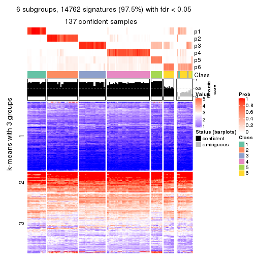
Compare the overlap of signatures from different k:
compare_signatures(res)
get_signature() returns a data frame invisibly. TO get the list of signatures, the function
call should be assigned to a variable explicitly. In following code, if plot argument is set
to FALSE, no heatmap is plotted while only the differential analysis is performed.
# code only for demonstration
tb = get_signature(res, k = ..., plot = FALSE)
An example of the output of tb is:
#> which_row fdr mean_1 mean_2 scaled_mean_1 scaled_mean_2 km
#> 1 38 0.042760348 8.373488 9.131774 -0.5533452 0.5164555 1
#> 2 40 0.018707592 7.106213 8.469186 -0.6173731 0.5762149 1
#> 3 55 0.019134737 10.221463 11.207825 -0.6159697 0.5749050 1
#> 4 59 0.006059896 5.921854 7.869574 -0.6899429 0.6439467 1
#> 5 60 0.018055526 8.928898 10.211722 -0.6204761 0.5791110 1
#> 6 98 0.009384629 15.714769 14.887706 0.6635654 -0.6193277 2
...
The columns in tb are:
which_row: row indices corresponding to the input matrix.fdr: FDR for the differential test. mean_x: The mean value in group x.scaled_mean_x: The mean value in group x after rows are scaled.km: Row groups if k-means clustering is applied to rows.
UMAP plot which shows how samples are separated.
dimension_reduction(res, k = 2, method = "UMAP")
dimension_reduction(res, k = 3, method = "UMAP")
dimension_reduction(res, k = 4, method = "UMAP")
dimension_reduction(res, k = 5, method = "UMAP")
dimension_reduction(res, k = 6, method = "UMAP")
Following heatmap shows how subgroups are split when increasing k:
collect_classes(res)
If matrix rows can be associated to genes, consider to use functional_enrichment(res,
...) to perform function enrichment for the signature genes. See this vignette for more detailed explanations.
MAD:skmeans*
The object with results only for a single top-value method and a single partition method
can be extracted as:
res = res_list["MAD", "skmeans"]
# you can also extract it by
# res = res_list["MAD:skmeans"]
A summary of res and all the functions that can be applied to it:
res
#> A 'ConsensusPartition' object with k = 2, 3, 4, 5, 6.
#> On a matrix with 15148 rows and 152 columns.
#> Top rows (1000, 2000, 3000, 4000, 5000) are extracted by 'MAD' method.
#> Subgroups are detected by 'skmeans' method.
#> Performed in total 1250 partitions by row resampling.
#> Best k for subgroups seems to be 4.
#>
#> Following methods can be applied to this 'ConsensusPartition' object:
#> [1] "cola_report" "collect_classes" "collect_plots"
#> [4] "collect_stats" "colnames" "compare_signatures"
#> [7] "consensus_heatmap" "dimension_reduction" "functional_enrichment"
#> [10] "get_anno_col" "get_anno" "get_classes"
#> [13] "get_consensus" "get_matrix" "get_membership"
#> [16] "get_param" "get_signatures" "get_stats"
#> [19] "is_best_k" "is_stable_k" "membership_heatmap"
#> [22] "ncol" "nrow" "plot_ecdf"
#> [25] "rownames" "select_partition_number" "show"
#> [28] "suggest_best_k" "test_to_known_factors"
collect_plots() function collects all the plots made from res for all k (number of partitions)
into one single page to provide an easy and fast comparison between different k.
collect_plots(res)
The plots are:
- The first row: a plot of the ECDF (empirical cumulative distribution
function) curves of the consensus matrix for each
k and the heatmap of
predicted classes for each k.
- The second row: heatmaps of the consensus matrix for each
k.
- The third row: heatmaps of the membership matrix for each
k.
- The fouth row: heatmaps of the signatures for each
k.
All the plots in panels can be made by individual functions and they are
plotted later in this section.
select_partition_number() produces several plots showing different
statistics for choosing “optimized” k. There are following statistics:
- ECDF curves of the consensus matrix for each
k;
- 1-PAC. The PAC
score
measures the proportion of the ambiguous subgrouping.
- Mean silhouette score.
- Concordance. The mean probability of fiting the consensus class ids in all
partitions.
- Area increased. Denote \(A_k\) as the area under the ECDF curve for current
k, the area increased is defined as \(A_k - A_{k-1}\).
- Rand index. The percent of pairs of samples that are both in a same cluster
or both are not in a same cluster in the partition of k and k-1.
- Jaccard index. The ratio of pairs of samples are both in a same cluster in
the partition of k and k-1 and the pairs of samples are both in a same
cluster in the partition k or k-1.
The detailed explanations of these statistics can be found in the cola
vignette.
Generally speaking, lower PAC score, higher mean silhouette score or higher
concordance corresponds to better partition. Rand index and Jaccard index
measure how similar the current partition is compared to partition with k-1.
If they are too similar, we won't accept k is better than k-1.
select_partition_number(res)
The numeric values for all these statistics can be obtained by get_stats().
get_stats(res)
#> k 1-PAC mean_silhouette concordance area_increased Rand Jaccard
#> 2 2 0.460 0.760 0.887 0.4975 0.497 0.497
#> 3 3 0.904 0.909 0.962 0.3456 0.694 0.460
#> 4 4 0.902 0.850 0.942 0.1179 0.871 0.637
#> 5 5 0.818 0.746 0.854 0.0586 0.920 0.701
#> 6 6 0.751 0.685 0.755 0.0410 0.922 0.656
suggest_best_k() suggests the best \(k\) based on these statistics. The rules are as follows:
- All \(k\) with Jaccard index larger than 0.95 are removed because increasing
\(k\) does not provide enough extra information. If all \(k\) are removed, it is
marked as no subgroup is detected.
- For all \(k\) with 1-PAC score larger than 0.9, the maximal \(k\) is taken as
the best \(k\), and other \(k\) are marked as optional \(k\).
- If it does not fit the second rule. The \(k\) with the maximal vote of the
highest 1-PAC score, highest mean silhouette, and highest concordance is
taken as the best \(k\).
suggest_best_k(res)
#> [1] 4
#> attr(,"optional")
#> [1] 3
There is also optional best \(k\) = 3 that is worth to check.
Following shows the table of the partitions (You need to click the show/hide
code output link to see it). The membership matrix (columns with name p*)
is inferred by
clue::cl_consensus()
function with the SE method. Basically the value in the membership matrix
represents the probability to belong to a certain group. The finall class
label for an item is determined with the group with highest probability it
belongs to.
In get_classes() function, the entropy is calculated from the membership
matrix and the silhouette score is calculated from the consensus matrix.
show/hide code output
cbind(get_classes(res, k = 2), get_membership(res, k = 2))
#> class entropy silhouette p1 p2
#> SRR1947547 1 0.0000 0.813 1.000 0.000
#> SRR1947546 2 0.0000 0.904 0.000 1.000
#> SRR1947545 1 0.2778 0.809 0.952 0.048
#> SRR1947544 1 0.3431 0.806 0.936 0.064
#> SRR1947542 2 0.0000 0.904 0.000 1.000
#> SRR1947541 1 0.0000 0.813 1.000 0.000
#> SRR1947540 2 0.0000 0.904 0.000 1.000
#> SRR1947539 1 0.8144 0.681 0.748 0.252
#> SRR1947538 2 0.0672 0.898 0.008 0.992
#> SRR1947537 1 0.8144 0.681 0.748 0.252
#> SRR1947536 1 0.0000 0.813 1.000 0.000
#> SRR1947535 1 0.8144 0.681 0.748 0.252
#> SRR1947534 2 0.9710 0.313 0.400 0.600
#> SRR1947533 2 0.0000 0.904 0.000 1.000
#> SRR1947532 1 0.8267 0.644 0.740 0.260
#> SRR1947531 2 0.0000 0.904 0.000 1.000
#> SRR1947530 1 0.0000 0.813 1.000 0.000
#> SRR1947529 2 0.0000 0.904 0.000 1.000
#> SRR1947528 1 0.0000 0.813 1.000 0.000
#> SRR1947527 2 0.0000 0.904 0.000 1.000
#> SRR1947526 2 0.0000 0.904 0.000 1.000
#> SRR1947525 2 0.0000 0.904 0.000 1.000
#> SRR1947524 1 0.8144 0.681 0.748 0.252
#> SRR1947523 2 0.9775 0.281 0.412 0.588
#> SRR1947521 1 0.0672 0.812 0.992 0.008
#> SRR1947520 2 0.0000 0.904 0.000 1.000
#> SRR1947519 1 0.0000 0.813 1.000 0.000
#> SRR1947518 2 0.0672 0.898 0.008 0.992
#> SRR1947517 1 0.0000 0.813 1.000 0.000
#> SRR1947516 2 0.0000 0.904 0.000 1.000
#> SRR1947515 1 1.0000 0.304 0.504 0.496
#> SRR1947514 2 0.0000 0.904 0.000 1.000
#> SRR1947513 1 0.8267 0.644 0.740 0.260
#> SRR1947512 1 0.4939 0.787 0.892 0.108
#> SRR1947511 2 0.0000 0.904 0.000 1.000
#> SRR1947510 1 0.9635 0.459 0.612 0.388
#> SRR1947572 2 0.1633 0.885 0.024 0.976
#> SRR1947611 2 0.8267 0.564 0.260 0.740
#> SRR1947509 1 0.0000 0.813 1.000 0.000
#> SRR1947644 1 0.8144 0.681 0.748 0.252
#> SRR1947643 2 0.0000 0.904 0.000 1.000
#> SRR1947642 1 0.0000 0.813 1.000 0.000
#> SRR1947640 2 0.8144 0.601 0.252 0.748
#> SRR1947641 1 0.8144 0.681 0.748 0.252
#> SRR1947639 2 0.0000 0.904 0.000 1.000
#> SRR1947638 1 0.8267 0.644 0.740 0.260
#> SRR1947637 2 0.8267 0.564 0.260 0.740
#> SRR1947636 1 0.0000 0.813 1.000 0.000
#> SRR1947635 2 0.0000 0.904 0.000 1.000
#> SRR1947634 2 0.0000 0.904 0.000 1.000
#> SRR1947633 1 0.8144 0.681 0.748 0.252
#> SRR1947632 2 0.0000 0.904 0.000 1.000
#> SRR1947631 1 0.0672 0.812 0.992 0.008
#> SRR1947629 1 0.8144 0.681 0.748 0.252
#> SRR1947630 2 0.0000 0.904 0.000 1.000
#> SRR1947627 1 0.0000 0.813 1.000 0.000
#> SRR1947628 2 0.0000 0.904 0.000 1.000
#> SRR1947626 2 0.0000 0.904 0.000 1.000
#> SRR1947625 1 0.8661 0.633 0.712 0.288
#> SRR1947624 2 0.0000 0.904 0.000 1.000
#> SRR1947623 2 0.9710 0.313 0.400 0.600
#> SRR1947622 2 0.0000 0.904 0.000 1.000
#> SRR1947621 2 0.0000 0.904 0.000 1.000
#> SRR1947620 1 0.3733 0.803 0.928 0.072
#> SRR1947619 1 0.8144 0.681 0.748 0.252
#> SRR1947617 2 0.0000 0.904 0.000 1.000
#> SRR1947618 1 0.7299 0.709 0.796 0.204
#> SRR1947616 2 0.0000 0.904 0.000 1.000
#> SRR1947615 1 0.0000 0.813 1.000 0.000
#> SRR1947614 1 0.0672 0.812 0.992 0.008
#> SRR1947613 1 0.8267 0.644 0.740 0.260
#> SRR1947610 2 0.0000 0.904 0.000 1.000
#> SRR1947612 2 0.0000 0.904 0.000 1.000
#> SRR1947609 1 0.8267 0.644 0.740 0.260
#> SRR1947608 1 0.9710 0.434 0.600 0.400
#> SRR1947606 1 0.0000 0.813 1.000 0.000
#> SRR1947607 2 0.9710 0.313 0.400 0.600
#> SRR1947604 2 0.9686 0.324 0.396 0.604
#> SRR1947605 1 0.2236 0.811 0.964 0.036
#> SRR1947603 2 0.0000 0.904 0.000 1.000
#> SRR1947602 1 0.0000 0.813 1.000 0.000
#> SRR1947600 1 0.8144 0.681 0.748 0.252
#> SRR1947601 2 0.0000 0.904 0.000 1.000
#> SRR1947598 2 0.4298 0.815 0.088 0.912
#> SRR1947599 1 0.8267 0.644 0.740 0.260
#> SRR1947597 2 0.0000 0.904 0.000 1.000
#> SRR1947596 1 0.4161 0.798 0.916 0.084
#> SRR1947595 2 0.0000 0.904 0.000 1.000
#> SRR1947594 1 0.4939 0.787 0.892 0.108
#> SRR1947592 1 0.8144 0.681 0.748 0.252
#> SRR1947591 2 0.0000 0.904 0.000 1.000
#> SRR1947590 1 0.2778 0.809 0.952 0.048
#> SRR1947588 1 0.4939 0.787 0.892 0.108
#> SRR1947587 1 0.0000 0.813 1.000 0.000
#> SRR1947586 2 0.0000 0.904 0.000 1.000
#> SRR1947585 1 0.8144 0.681 0.748 0.252
#> SRR1947584 1 0.3431 0.806 0.936 0.064
#> SRR1947583 2 0.0000 0.904 0.000 1.000
#> SRR1947582 1 0.5059 0.784 0.888 0.112
#> SRR1947580 2 0.0000 0.904 0.000 1.000
#> SRR1947581 1 0.3431 0.806 0.936 0.064
#> SRR1947576 2 0.8267 0.564 0.260 0.740
#> SRR1947575 2 0.8443 0.543 0.272 0.728
#> SRR1947579 1 0.8144 0.681 0.748 0.252
#> SRR1947578 2 0.0000 0.904 0.000 1.000
#> SRR1947573 1 0.9710 0.434 0.600 0.400
#> SRR1947574 2 0.8144 0.601 0.252 0.748
#> SRR1947571 2 0.0672 0.898 0.008 0.992
#> SRR1947577 1 0.7453 0.701 0.788 0.212
#> SRR1947570 1 0.0000 0.813 1.000 0.000
#> SRR1947569 1 0.8144 0.681 0.748 0.252
#> SRR1947566 2 0.0000 0.904 0.000 1.000
#> SRR1947567 2 0.0000 0.904 0.000 1.000
#> SRR1947568 2 0.0000 0.904 0.000 1.000
#> SRR1947564 2 0.0000 0.904 0.000 1.000
#> SRR1947563 1 0.9710 0.434 0.600 0.400
#> SRR1947562 2 0.0000 0.904 0.000 1.000
#> SRR1947565 1 0.8081 0.684 0.752 0.248
#> SRR1947559 2 0.0000 0.904 0.000 1.000
#> SRR1947560 2 0.8267 0.564 0.260 0.740
#> SRR1947561 2 0.0000 0.904 0.000 1.000
#> SRR1947557 1 0.3431 0.806 0.936 0.064
#> SRR1947558 1 0.8144 0.681 0.748 0.252
#> SRR1947556 1 0.3431 0.806 0.936 0.064
#> SRR1947553 2 0.0000 0.904 0.000 1.000
#> SRR1947554 2 0.9710 0.313 0.400 0.600
#> SRR1947555 2 0.2236 0.869 0.036 0.964
#> SRR1947550 2 0.0000 0.904 0.000 1.000
#> SRR1947552 1 0.8267 0.644 0.740 0.260
#> SRR1947549 1 0.9710 0.434 0.600 0.400
#> SRR1947551 1 0.9710 0.434 0.600 0.400
#> SRR1947548 2 0.2236 0.875 0.036 0.964
#> SRR1947506 1 0.0000 0.813 1.000 0.000
#> SRR1947507 1 0.3431 0.806 0.936 0.064
#> SRR1947504 1 0.7602 0.693 0.780 0.220
#> SRR1947503 1 0.8267 0.644 0.740 0.260
#> SRR1947502 2 0.0000 0.904 0.000 1.000
#> SRR1947501 2 0.0000 0.904 0.000 1.000
#> SRR1947499 1 0.0000 0.813 1.000 0.000
#> SRR1947498 1 0.0376 0.812 0.996 0.004
#> SRR1947508 1 0.0000 0.813 1.000 0.000
#> SRR1947505 2 0.9754 0.292 0.408 0.592
#> SRR1947497 2 0.0000 0.904 0.000 1.000
#> SRR1947496 1 0.4939 0.787 0.892 0.108
#> SRR1947495 2 0.0000 0.904 0.000 1.000
#> SRR1947494 1 0.8267 0.644 0.740 0.260
#> SRR1947493 1 0.0000 0.813 1.000 0.000
#> SRR1947492 1 0.6712 0.736 0.824 0.176
#> SRR1947500 2 0.7745 0.636 0.228 0.772
#> SRR1947491 2 0.8144 0.601 0.252 0.748
#> SRR1947490 1 0.8267 0.644 0.740 0.260
#> SRR1947489 1 0.0000 0.813 1.000 0.000
show/hide code output
cbind(get_classes(res, k = 3), get_membership(res, k = 3))
#> class entropy silhouette p1 p2 p3
#> SRR1947547 3 0.5926 0.4484 0.356 0.000 0.644
#> SRR1947546 2 0.0000 0.9873 0.000 1.000 0.000
#> SRR1947545 1 0.0000 0.9103 1.000 0.000 0.000
#> SRR1947544 1 0.0000 0.9103 1.000 0.000 0.000
#> SRR1947542 2 0.0000 0.9873 0.000 1.000 0.000
#> SRR1947541 3 0.0000 0.9775 0.000 0.000 1.000
#> SRR1947540 2 0.0000 0.9873 0.000 1.000 0.000
#> SRR1947539 3 0.0000 0.9775 0.000 0.000 1.000
#> SRR1947538 1 0.6126 0.3814 0.600 0.400 0.000
#> SRR1947537 3 0.0000 0.9775 0.000 0.000 1.000
#> SRR1947536 3 0.0000 0.9775 0.000 0.000 1.000
#> SRR1947535 3 0.0000 0.9775 0.000 0.000 1.000
#> SRR1947534 1 0.0000 0.9103 1.000 0.000 0.000
#> SRR1947533 2 0.0000 0.9873 0.000 1.000 0.000
#> SRR1947532 1 0.0000 0.9103 1.000 0.000 0.000
#> SRR1947531 2 0.0000 0.9873 0.000 1.000 0.000
#> SRR1947530 1 0.1964 0.8665 0.944 0.000 0.056
#> SRR1947529 2 0.0000 0.9873 0.000 1.000 0.000
#> SRR1947528 3 0.0000 0.9775 0.000 0.000 1.000
#> SRR1947527 2 0.0000 0.9873 0.000 1.000 0.000
#> SRR1947526 2 0.0000 0.9873 0.000 1.000 0.000
#> SRR1947525 2 0.0000 0.9873 0.000 1.000 0.000
#> SRR1947524 3 0.0000 0.9775 0.000 0.000 1.000
#> SRR1947523 1 0.4555 0.7346 0.800 0.200 0.000
#> SRR1947521 3 0.0000 0.9775 0.000 0.000 1.000
#> SRR1947520 2 0.0000 0.9873 0.000 1.000 0.000
#> SRR1947519 3 0.0000 0.9775 0.000 0.000 1.000
#> SRR1947518 1 0.6126 0.3814 0.600 0.400 0.000
#> SRR1947517 3 0.0000 0.9775 0.000 0.000 1.000
#> SRR1947516 2 0.0000 0.9873 0.000 1.000 0.000
#> SRR1947515 1 0.2625 0.8500 0.916 0.084 0.000
#> SRR1947514 2 0.0000 0.9873 0.000 1.000 0.000
#> SRR1947513 1 0.0000 0.9103 1.000 0.000 0.000
#> SRR1947512 1 0.0000 0.9103 1.000 0.000 0.000
#> SRR1947511 2 0.0000 0.9873 0.000 1.000 0.000
#> SRR1947510 3 0.0000 0.9775 0.000 0.000 1.000
#> SRR1947572 1 0.5905 0.4851 0.648 0.352 0.000
#> SRR1947611 3 0.0000 0.9775 0.000 0.000 1.000
#> SRR1947509 3 0.0000 0.9775 0.000 0.000 1.000
#> SRR1947644 3 0.0000 0.9775 0.000 0.000 1.000
#> SRR1947643 2 0.0000 0.9873 0.000 1.000 0.000
#> SRR1947642 3 0.0000 0.9775 0.000 0.000 1.000
#> SRR1947640 1 0.3941 0.7804 0.844 0.156 0.000
#> SRR1947641 3 0.0000 0.9775 0.000 0.000 1.000
#> SRR1947639 2 0.4504 0.7388 0.196 0.804 0.000
#> SRR1947638 1 0.0000 0.9103 1.000 0.000 0.000
#> SRR1947637 3 0.0000 0.9775 0.000 0.000 1.000
#> SRR1947636 3 0.0000 0.9775 0.000 0.000 1.000
#> SRR1947635 2 0.0000 0.9873 0.000 1.000 0.000
#> SRR1947634 2 0.0000 0.9873 0.000 1.000 0.000
#> SRR1947633 3 0.0000 0.9775 0.000 0.000 1.000
#> SRR1947632 2 0.0000 0.9873 0.000 1.000 0.000
#> SRR1947631 3 0.0000 0.9775 0.000 0.000 1.000
#> SRR1947629 3 0.0000 0.9775 0.000 0.000 1.000
#> SRR1947630 2 0.0000 0.9873 0.000 1.000 0.000
#> SRR1947627 3 0.0000 0.9775 0.000 0.000 1.000
#> SRR1947628 2 0.0000 0.9873 0.000 1.000 0.000
#> SRR1947626 2 0.0000 0.9873 0.000 1.000 0.000
#> SRR1947625 3 0.0000 0.9775 0.000 0.000 1.000
#> SRR1947624 2 0.0000 0.9873 0.000 1.000 0.000
#> SRR1947623 1 0.0000 0.9103 1.000 0.000 0.000
#> SRR1947622 2 0.0000 0.9873 0.000 1.000 0.000
#> SRR1947621 2 0.0000 0.9873 0.000 1.000 0.000
#> SRR1947620 1 0.0000 0.9103 1.000 0.000 0.000
#> SRR1947619 3 0.0000 0.9775 0.000 0.000 1.000
#> SRR1947617 2 0.0000 0.9873 0.000 1.000 0.000
#> SRR1947618 1 0.0000 0.9103 1.000 0.000 0.000
#> SRR1947616 2 0.0000 0.9873 0.000 1.000 0.000
#> SRR1947615 3 0.0237 0.9740 0.004 0.000 0.996
#> SRR1947614 3 0.0000 0.9775 0.000 0.000 1.000
#> SRR1947613 1 0.0000 0.9103 1.000 0.000 0.000
#> SRR1947610 2 0.0000 0.9873 0.000 1.000 0.000
#> SRR1947612 2 0.0000 0.9873 0.000 1.000 0.000
#> SRR1947609 1 0.0000 0.9103 1.000 0.000 0.000
#> SRR1947608 3 0.0000 0.9775 0.000 0.000 1.000
#> SRR1947606 3 0.0000 0.9775 0.000 0.000 1.000
#> SRR1947607 1 0.0000 0.9103 1.000 0.000 0.000
#> SRR1947604 1 0.0000 0.9103 1.000 0.000 0.000
#> SRR1947605 1 0.0000 0.9103 1.000 0.000 0.000
#> SRR1947603 2 0.0000 0.9873 0.000 1.000 0.000
#> SRR1947602 1 0.4555 0.7058 0.800 0.000 0.200
#> SRR1947600 3 0.0000 0.9775 0.000 0.000 1.000
#> SRR1947601 2 0.0000 0.9873 0.000 1.000 0.000
#> SRR1947598 1 0.6126 0.3814 0.600 0.400 0.000
#> SRR1947599 1 0.0000 0.9103 1.000 0.000 0.000
#> SRR1947597 2 0.0000 0.9873 0.000 1.000 0.000
#> SRR1947596 1 0.0000 0.9103 1.000 0.000 0.000
#> SRR1947595 2 0.4504 0.7388 0.196 0.804 0.000
#> SRR1947594 1 0.0000 0.9103 1.000 0.000 0.000
#> SRR1947592 3 0.0000 0.9775 0.000 0.000 1.000
#> SRR1947591 2 0.0000 0.9873 0.000 1.000 0.000
#> SRR1947590 1 0.0000 0.9103 1.000 0.000 0.000
#> SRR1947588 1 0.0000 0.9103 1.000 0.000 0.000
#> SRR1947587 3 0.0000 0.9775 0.000 0.000 1.000
#> SRR1947586 2 0.0000 0.9873 0.000 1.000 0.000
#> SRR1947585 3 0.0000 0.9775 0.000 0.000 1.000
#> SRR1947584 1 0.0000 0.9103 1.000 0.000 0.000
#> SRR1947583 2 0.0000 0.9873 0.000 1.000 0.000
#> SRR1947582 1 0.0000 0.9103 1.000 0.000 0.000
#> SRR1947580 2 0.0000 0.9873 0.000 1.000 0.000
#> SRR1947581 1 0.0000 0.9103 1.000 0.000 0.000
#> SRR1947576 3 0.0000 0.9775 0.000 0.000 1.000
#> SRR1947575 3 0.0000 0.9775 0.000 0.000 1.000
#> SRR1947579 3 0.0000 0.9775 0.000 0.000 1.000
#> SRR1947578 2 0.0000 0.9873 0.000 1.000 0.000
#> SRR1947573 3 0.0000 0.9775 0.000 0.000 1.000
#> SRR1947574 1 0.0000 0.9103 1.000 0.000 0.000
#> SRR1947571 1 0.6126 0.3814 0.600 0.400 0.000
#> SRR1947577 1 0.0000 0.9103 1.000 0.000 0.000
#> SRR1947570 1 0.4399 0.7222 0.812 0.000 0.188
#> SRR1947569 3 0.0000 0.9775 0.000 0.000 1.000
#> SRR1947566 2 0.0000 0.9873 0.000 1.000 0.000
#> SRR1947567 2 0.0000 0.9873 0.000 1.000 0.000
#> SRR1947568 2 0.4399 0.7515 0.188 0.812 0.000
#> SRR1947564 2 0.0000 0.9873 0.000 1.000 0.000
#> SRR1947563 3 0.0000 0.9775 0.000 0.000 1.000
#> SRR1947562 2 0.0000 0.9873 0.000 1.000 0.000
#> SRR1947565 3 0.0000 0.9775 0.000 0.000 1.000
#> SRR1947559 2 0.0000 0.9873 0.000 1.000 0.000
#> SRR1947560 3 0.0000 0.9775 0.000 0.000 1.000
#> SRR1947561 2 0.0000 0.9873 0.000 1.000 0.000
#> SRR1947557 1 0.0000 0.9103 1.000 0.000 0.000
#> SRR1947558 3 0.0000 0.9775 0.000 0.000 1.000
#> SRR1947556 1 0.0000 0.9103 1.000 0.000 0.000
#> SRR1947553 2 0.0000 0.9873 0.000 1.000 0.000
#> SRR1947554 1 0.0000 0.9103 1.000 0.000 0.000
#> SRR1947555 2 0.0000 0.9873 0.000 1.000 0.000
#> SRR1947550 2 0.0000 0.9873 0.000 1.000 0.000
#> SRR1947552 1 0.0000 0.9103 1.000 0.000 0.000
#> SRR1947549 3 0.0000 0.9775 0.000 0.000 1.000
#> SRR1947551 3 0.0000 0.9775 0.000 0.000 1.000
#> SRR1947548 1 0.6126 0.3814 0.600 0.400 0.000
#> SRR1947506 3 0.6302 0.0872 0.480 0.000 0.520
#> SRR1947507 1 0.0000 0.9103 1.000 0.000 0.000
#> SRR1947504 1 0.0000 0.9103 1.000 0.000 0.000
#> SRR1947503 1 0.0000 0.9103 1.000 0.000 0.000
#> SRR1947502 2 0.0000 0.9873 0.000 1.000 0.000
#> SRR1947501 2 0.0000 0.9873 0.000 1.000 0.000
#> SRR1947499 1 0.4555 0.7058 0.800 0.000 0.200
#> SRR1947498 3 0.0000 0.9775 0.000 0.000 1.000
#> SRR1947508 3 0.3752 0.8193 0.144 0.000 0.856
#> SRR1947505 1 0.5948 0.4835 0.640 0.360 0.000
#> SRR1947497 2 0.0000 0.9873 0.000 1.000 0.000
#> SRR1947496 1 0.0000 0.9103 1.000 0.000 0.000
#> SRR1947495 2 0.0000 0.9873 0.000 1.000 0.000
#> SRR1947494 1 0.0000 0.9103 1.000 0.000 0.000
#> SRR1947493 1 0.0237 0.9075 0.996 0.000 0.004
#> SRR1947492 1 0.0000 0.9103 1.000 0.000 0.000
#> SRR1947500 2 0.0000 0.9873 0.000 1.000 0.000
#> SRR1947491 1 0.6126 0.3938 0.600 0.400 0.000
#> SRR1947490 1 0.0000 0.9103 1.000 0.000 0.000
#> SRR1947489 3 0.1163 0.9513 0.028 0.000 0.972
show/hide code output
cbind(get_classes(res, k = 4), get_membership(res, k = 4))
#> class entropy silhouette p1 p2 p3 p4
#> SRR1947547 3 0.4790 0.4196 0.380 0.000 0.620 0.000
#> SRR1947546 4 0.4877 0.3069 0.000 0.408 0.000 0.592
#> SRR1947545 1 0.0000 0.9677 1.000 0.000 0.000 0.000
#> SRR1947544 1 0.0000 0.9677 1.000 0.000 0.000 0.000
#> SRR1947542 4 0.0000 0.8499 0.000 0.000 0.000 1.000
#> SRR1947541 3 0.0000 0.9646 0.000 0.000 1.000 0.000
#> SRR1947540 2 0.4103 0.6166 0.000 0.744 0.000 0.256
#> SRR1947539 3 0.0000 0.9646 0.000 0.000 1.000 0.000
#> SRR1947538 4 0.0000 0.8499 0.000 0.000 0.000 1.000
#> SRR1947537 3 0.0000 0.9646 0.000 0.000 1.000 0.000
#> SRR1947536 3 0.4697 0.4721 0.356 0.000 0.644 0.000
#> SRR1947535 3 0.0000 0.9646 0.000 0.000 1.000 0.000
#> SRR1947534 1 0.0188 0.9639 0.996 0.004 0.000 0.000
#> SRR1947533 2 0.0000 0.9281 0.000 1.000 0.000 0.000
#> SRR1947532 4 0.0000 0.8499 0.000 0.000 0.000 1.000
#> SRR1947531 2 0.4040 0.6300 0.000 0.752 0.000 0.248
#> SRR1947530 1 0.0000 0.9677 1.000 0.000 0.000 0.000
#> SRR1947529 2 0.0000 0.9281 0.000 1.000 0.000 0.000
#> SRR1947528 3 0.0000 0.9646 0.000 0.000 1.000 0.000
#> SRR1947527 2 0.0000 0.9281 0.000 1.000 0.000 0.000
#> SRR1947526 2 0.0000 0.9281 0.000 1.000 0.000 0.000
#> SRR1947525 4 0.4961 0.1869 0.000 0.448 0.000 0.552
#> SRR1947524 3 0.0000 0.9646 0.000 0.000 1.000 0.000
#> SRR1947523 4 0.0000 0.8499 0.000 0.000 0.000 1.000
#> SRR1947521 3 0.0000 0.9646 0.000 0.000 1.000 0.000
#> SRR1947520 2 0.0000 0.9281 0.000 1.000 0.000 0.000
#> SRR1947519 3 0.0000 0.9646 0.000 0.000 1.000 0.000
#> SRR1947518 4 0.0000 0.8499 0.000 0.000 0.000 1.000
#> SRR1947517 3 0.0000 0.9646 0.000 0.000 1.000 0.000
#> SRR1947516 2 0.0000 0.9281 0.000 1.000 0.000 0.000
#> SRR1947515 4 0.0000 0.8499 0.000 0.000 0.000 1.000
#> SRR1947514 2 0.0000 0.9281 0.000 1.000 0.000 0.000
#> SRR1947513 1 0.0000 0.9677 1.000 0.000 0.000 0.000
#> SRR1947512 1 0.0000 0.9677 1.000 0.000 0.000 0.000
#> SRR1947511 2 0.0000 0.9281 0.000 1.000 0.000 0.000
#> SRR1947510 3 0.0000 0.9646 0.000 0.000 1.000 0.000
#> SRR1947572 4 0.4406 0.5037 0.300 0.000 0.000 0.700
#> SRR1947611 3 0.0000 0.9646 0.000 0.000 1.000 0.000
#> SRR1947509 3 0.4790 0.4196 0.380 0.000 0.620 0.000
#> SRR1947644 3 0.0000 0.9646 0.000 0.000 1.000 0.000
#> SRR1947643 2 0.0000 0.9281 0.000 1.000 0.000 0.000
#> SRR1947642 3 0.0000 0.9646 0.000 0.000 1.000 0.000
#> SRR1947640 4 0.3726 0.6726 0.212 0.000 0.000 0.788
#> SRR1947641 3 0.0000 0.9646 0.000 0.000 1.000 0.000
#> SRR1947639 4 0.4830 0.3480 0.000 0.392 0.000 0.608
#> SRR1947638 1 0.0000 0.9677 1.000 0.000 0.000 0.000
#> SRR1947637 3 0.0000 0.9646 0.000 0.000 1.000 0.000
#> SRR1947636 3 0.0000 0.9646 0.000 0.000 1.000 0.000
#> SRR1947635 4 0.0000 0.8499 0.000 0.000 0.000 1.000
#> SRR1947634 2 0.0000 0.9281 0.000 1.000 0.000 0.000
#> SRR1947633 3 0.0000 0.9646 0.000 0.000 1.000 0.000
#> SRR1947632 4 0.0000 0.8499 0.000 0.000 0.000 1.000
#> SRR1947631 3 0.0000 0.9646 0.000 0.000 1.000 0.000
#> SRR1947629 3 0.0000 0.9646 0.000 0.000 1.000 0.000
#> SRR1947630 2 0.0000 0.9281 0.000 1.000 0.000 0.000
#> SRR1947627 3 0.0000 0.9646 0.000 0.000 1.000 0.000
#> SRR1947628 4 0.0000 0.8499 0.000 0.000 0.000 1.000
#> SRR1947626 2 0.0000 0.9281 0.000 1.000 0.000 0.000
#> SRR1947625 3 0.0000 0.9646 0.000 0.000 1.000 0.000
#> SRR1947624 2 0.0000 0.9281 0.000 1.000 0.000 0.000
#> SRR1947623 1 0.0000 0.9677 1.000 0.000 0.000 0.000
#> SRR1947622 2 0.4888 0.2696 0.000 0.588 0.000 0.412
#> SRR1947621 2 0.0000 0.9281 0.000 1.000 0.000 0.000
#> SRR1947620 1 0.0000 0.9677 1.000 0.000 0.000 0.000
#> SRR1947619 3 0.0000 0.9646 0.000 0.000 1.000 0.000
#> SRR1947617 2 0.0000 0.9281 0.000 1.000 0.000 0.000
#> SRR1947618 1 0.0000 0.9677 1.000 0.000 0.000 0.000
#> SRR1947616 2 0.0000 0.9281 0.000 1.000 0.000 0.000
#> SRR1947615 3 0.0000 0.9646 0.000 0.000 1.000 0.000
#> SRR1947614 3 0.0000 0.9646 0.000 0.000 1.000 0.000
#> SRR1947613 1 0.0000 0.9677 1.000 0.000 0.000 0.000
#> SRR1947610 2 0.4992 0.0527 0.000 0.524 0.000 0.476
#> SRR1947612 2 0.0000 0.9281 0.000 1.000 0.000 0.000
#> SRR1947609 1 0.4977 0.1003 0.540 0.000 0.000 0.460
#> SRR1947608 3 0.0000 0.9646 0.000 0.000 1.000 0.000
#> SRR1947606 3 0.0000 0.9646 0.000 0.000 1.000 0.000
#> SRR1947607 1 0.0000 0.9677 1.000 0.000 0.000 0.000
#> SRR1947604 4 0.0000 0.8499 0.000 0.000 0.000 1.000
#> SRR1947605 1 0.0000 0.9677 1.000 0.000 0.000 0.000
#> SRR1947603 2 0.0000 0.9281 0.000 1.000 0.000 0.000
#> SRR1947602 1 0.0000 0.9677 1.000 0.000 0.000 0.000
#> SRR1947600 3 0.0000 0.9646 0.000 0.000 1.000 0.000
#> SRR1947601 2 0.0000 0.9281 0.000 1.000 0.000 0.000
#> SRR1947598 4 0.0000 0.8499 0.000 0.000 0.000 1.000
#> SRR1947599 4 0.0469 0.8436 0.012 0.000 0.000 0.988
#> SRR1947597 2 0.0000 0.9281 0.000 1.000 0.000 0.000
#> SRR1947596 4 0.4933 0.1876 0.432 0.000 0.000 0.568
#> SRR1947595 4 0.4999 0.0588 0.000 0.492 0.000 0.508
#> SRR1947594 1 0.0000 0.9677 1.000 0.000 0.000 0.000
#> SRR1947592 3 0.0000 0.9646 0.000 0.000 1.000 0.000
#> SRR1947591 2 0.0000 0.9281 0.000 1.000 0.000 0.000
#> SRR1947590 4 0.4933 0.1876 0.432 0.000 0.000 0.568
#> SRR1947588 1 0.0000 0.9677 1.000 0.000 0.000 0.000
#> SRR1947587 3 0.0000 0.9646 0.000 0.000 1.000 0.000
#> SRR1947586 2 0.0000 0.9281 0.000 1.000 0.000 0.000
#> SRR1947585 3 0.0000 0.9646 0.000 0.000 1.000 0.000
#> SRR1947584 1 0.0000 0.9677 1.000 0.000 0.000 0.000
#> SRR1947583 4 0.4454 0.5250 0.000 0.308 0.000 0.692
#> SRR1947582 1 0.0000 0.9677 1.000 0.000 0.000 0.000
#> SRR1947580 2 0.0000 0.9281 0.000 1.000 0.000 0.000
#> SRR1947581 1 0.0000 0.9677 1.000 0.000 0.000 0.000
#> SRR1947576 3 0.0000 0.9646 0.000 0.000 1.000 0.000
#> SRR1947575 3 0.0000 0.9646 0.000 0.000 1.000 0.000
#> SRR1947579 3 0.0000 0.9646 0.000 0.000 1.000 0.000
#> SRR1947578 2 0.4916 0.2658 0.000 0.576 0.000 0.424
#> SRR1947573 3 0.0000 0.9646 0.000 0.000 1.000 0.000
#> SRR1947574 1 0.4331 0.5475 0.712 0.000 0.000 0.288
#> SRR1947571 4 0.0000 0.8499 0.000 0.000 0.000 1.000
#> SRR1947577 1 0.0000 0.9677 1.000 0.000 0.000 0.000
#> SRR1947570 1 0.0000 0.9677 1.000 0.000 0.000 0.000
#> SRR1947569 3 0.0000 0.9646 0.000 0.000 1.000 0.000
#> SRR1947566 2 0.0000 0.9281 0.000 1.000 0.000 0.000
#> SRR1947567 4 0.1716 0.8110 0.000 0.064 0.000 0.936
#> SRR1947568 2 0.1474 0.8764 0.052 0.948 0.000 0.000
#> SRR1947564 2 0.0000 0.9281 0.000 1.000 0.000 0.000
#> SRR1947563 3 0.0000 0.9646 0.000 0.000 1.000 0.000
#> SRR1947562 4 0.0000 0.8499 0.000 0.000 0.000 1.000
#> SRR1947565 3 0.0000 0.9646 0.000 0.000 1.000 0.000
#> SRR1947559 2 0.0000 0.9281 0.000 1.000 0.000 0.000
#> SRR1947560 3 0.0000 0.9646 0.000 0.000 1.000 0.000
#> SRR1947561 2 0.0000 0.9281 0.000 1.000 0.000 0.000
#> SRR1947557 1 0.0000 0.9677 1.000 0.000 0.000 0.000
#> SRR1947558 3 0.0000 0.9646 0.000 0.000 1.000 0.000
#> SRR1947556 1 0.0000 0.9677 1.000 0.000 0.000 0.000
#> SRR1947553 2 0.4955 0.1697 0.000 0.556 0.000 0.444
#> SRR1947554 1 0.0000 0.9677 1.000 0.000 0.000 0.000
#> SRR1947555 2 0.0000 0.9281 0.000 1.000 0.000 0.000
#> SRR1947550 4 0.1474 0.8195 0.000 0.052 0.000 0.948
#> SRR1947552 4 0.0000 0.8499 0.000 0.000 0.000 1.000
#> SRR1947549 3 0.0000 0.9646 0.000 0.000 1.000 0.000
#> SRR1947551 3 0.0000 0.9646 0.000 0.000 1.000 0.000
#> SRR1947548 4 0.0000 0.8499 0.000 0.000 0.000 1.000
#> SRR1947506 1 0.1716 0.8951 0.936 0.000 0.064 0.000
#> SRR1947507 1 0.0000 0.9677 1.000 0.000 0.000 0.000
#> SRR1947504 1 0.0000 0.9677 1.000 0.000 0.000 0.000
#> SRR1947503 1 0.3123 0.7809 0.844 0.000 0.000 0.156
#> SRR1947502 2 0.0000 0.9281 0.000 1.000 0.000 0.000
#> SRR1947501 4 0.0000 0.8499 0.000 0.000 0.000 1.000
#> SRR1947499 1 0.0000 0.9677 1.000 0.000 0.000 0.000
#> SRR1947498 3 0.0000 0.9646 0.000 0.000 1.000 0.000
#> SRR1947508 3 0.4790 0.4196 0.380 0.000 0.620 0.000
#> SRR1947505 4 0.0000 0.8499 0.000 0.000 0.000 1.000
#> SRR1947497 2 0.0000 0.9281 0.000 1.000 0.000 0.000
#> SRR1947496 1 0.0000 0.9677 1.000 0.000 0.000 0.000
#> SRR1947495 2 0.0000 0.9281 0.000 1.000 0.000 0.000
#> SRR1947494 4 0.0000 0.8499 0.000 0.000 0.000 1.000
#> SRR1947493 1 0.0000 0.9677 1.000 0.000 0.000 0.000
#> SRR1947492 1 0.0000 0.9677 1.000 0.000 0.000 0.000
#> SRR1947500 4 0.4454 0.5250 0.000 0.308 0.000 0.692
#> SRR1947491 4 0.3726 0.6726 0.212 0.000 0.000 0.788
#> SRR1947490 1 0.0000 0.9677 1.000 0.000 0.000 0.000
#> SRR1947489 3 0.0000 0.9646 0.000 0.000 1.000 0.000
show/hide code output
cbind(get_classes(res, k = 5), get_membership(res, k = 5))
#> class entropy silhouette p1 p2 p3 p4 p5
#> SRR1947547 3 0.0324 0.7902 0.004 0.000 0.992 0.000 0.004
#> SRR1947546 4 0.4403 0.2294 0.000 0.436 0.004 0.560 0.000
#> SRR1947545 1 0.2377 0.8577 0.872 0.000 0.128 0.000 0.000
#> SRR1947544 1 0.0880 0.9156 0.968 0.000 0.032 0.000 0.000
#> SRR1947542 4 0.0162 0.8120 0.000 0.000 0.004 0.996 0.000
#> SRR1947541 3 0.1121 0.7861 0.000 0.000 0.956 0.000 0.044
#> SRR1947540 2 0.3715 0.5884 0.000 0.736 0.004 0.260 0.000
#> SRR1947539 5 0.0404 0.7181 0.000 0.000 0.012 0.000 0.988
#> SRR1947538 4 0.0000 0.8123 0.000 0.000 0.000 1.000 0.000
#> SRR1947537 5 0.4138 0.7097 0.000 0.000 0.384 0.000 0.616
#> SRR1947536 3 0.1430 0.7819 0.004 0.000 0.944 0.000 0.052
#> SRR1947535 5 0.3895 0.7841 0.000 0.000 0.320 0.000 0.680
#> SRR1947534 1 0.0000 0.9285 1.000 0.000 0.000 0.000 0.000
#> SRR1947533 2 0.0000 0.9194 0.000 1.000 0.000 0.000 0.000
#> SRR1947532 4 0.0000 0.8123 0.000 0.000 0.000 1.000 0.000
#> SRR1947531 2 0.3662 0.6025 0.000 0.744 0.004 0.252 0.000
#> SRR1947530 3 0.3913 0.4123 0.324 0.000 0.676 0.000 0.000
#> SRR1947529 2 0.0162 0.9175 0.000 0.996 0.004 0.000 0.000
#> SRR1947528 3 0.1121 0.7861 0.000 0.000 0.956 0.000 0.044
#> SRR1947527 2 0.0000 0.9194 0.000 1.000 0.000 0.000 0.000
#> SRR1947526 2 0.0000 0.9194 0.000 1.000 0.000 0.000 0.000
#> SRR1947525 4 0.4446 0.0995 0.000 0.476 0.004 0.520 0.000
#> SRR1947524 5 0.3876 0.7851 0.000 0.000 0.316 0.000 0.684
#> SRR1947523 4 0.0000 0.8123 0.000 0.000 0.000 1.000 0.000
#> SRR1947521 5 0.0000 0.7145 0.000 0.000 0.000 0.000 1.000
#> SRR1947520 2 0.0000 0.9194 0.000 1.000 0.000 0.000 0.000
#> SRR1947519 3 0.1197 0.7822 0.000 0.000 0.952 0.000 0.048
#> SRR1947518 4 0.0000 0.8123 0.000 0.000 0.000 1.000 0.000
#> SRR1947517 5 0.3336 0.3958 0.000 0.000 0.228 0.000 0.772
#> SRR1947516 2 0.0000 0.9194 0.000 1.000 0.000 0.000 0.000
#> SRR1947515 4 0.0000 0.8123 0.000 0.000 0.000 1.000 0.000
#> SRR1947514 2 0.0000 0.9194 0.000 1.000 0.000 0.000 0.000
#> SRR1947513 1 0.0963 0.9137 0.964 0.000 0.036 0.000 0.000
#> SRR1947512 1 0.0000 0.9285 1.000 0.000 0.000 0.000 0.000
#> SRR1947511 2 0.0000 0.9194 0.000 1.000 0.000 0.000 0.000
#> SRR1947510 5 0.0000 0.7145 0.000 0.000 0.000 0.000 1.000
#> SRR1947572 1 0.4219 0.2919 0.584 0.000 0.000 0.416 0.000
#> SRR1947611 5 0.0000 0.7145 0.000 0.000 0.000 0.000 1.000
#> SRR1947509 3 0.4321 0.4631 0.004 0.000 0.600 0.000 0.396
#> SRR1947644 5 0.0000 0.7145 0.000 0.000 0.000 0.000 1.000
#> SRR1947643 2 0.0000 0.9194 0.000 1.000 0.000 0.000 0.000
#> SRR1947642 3 0.2690 0.6429 0.000 0.000 0.844 0.000 0.156
#> SRR1947640 4 0.4299 0.3567 0.388 0.000 0.004 0.608 0.000
#> SRR1947641 5 0.3895 0.7841 0.000 0.000 0.320 0.000 0.680
#> SRR1947639 4 0.4425 0.1804 0.000 0.452 0.004 0.544 0.000
#> SRR1947638 1 0.0162 0.9272 0.996 0.000 0.004 0.000 0.000
#> SRR1947637 5 0.0000 0.7145 0.000 0.000 0.000 0.000 1.000
#> SRR1947636 5 0.4138 0.7097 0.000 0.000 0.384 0.000 0.616
#> SRR1947635 4 0.0162 0.8120 0.000 0.000 0.004 0.996 0.000
#> SRR1947634 2 0.0000 0.9194 0.000 1.000 0.000 0.000 0.000
#> SRR1947633 5 0.0404 0.7181 0.000 0.000 0.012 0.000 0.988
#> SRR1947632 4 0.0162 0.8120 0.000 0.000 0.004 0.996 0.000
#> SRR1947631 3 0.4305 -0.4428 0.000 0.000 0.512 0.000 0.488
#> SRR1947629 5 0.3876 0.7851 0.000 0.000 0.316 0.000 0.684
#> SRR1947630 2 0.0404 0.9101 0.000 0.988 0.000 0.000 0.012
#> SRR1947627 3 0.1121 0.7861 0.000 0.000 0.956 0.000 0.044
#> SRR1947628 4 0.0162 0.8120 0.000 0.000 0.004 0.996 0.000
#> SRR1947626 2 0.0000 0.9194 0.000 1.000 0.000 0.000 0.000
#> SRR1947625 5 0.3895 0.7841 0.000 0.000 0.320 0.000 0.680
#> SRR1947624 2 0.0404 0.9101 0.000 0.988 0.000 0.000 0.012
#> SRR1947623 1 0.0000 0.9285 1.000 0.000 0.000 0.000 0.000
#> SRR1947622 2 0.4390 0.1935 0.000 0.568 0.004 0.428 0.000
#> SRR1947621 2 0.0000 0.9194 0.000 1.000 0.000 0.000 0.000
#> SRR1947620 1 0.2377 0.8577 0.872 0.000 0.128 0.000 0.000
#> SRR1947619 5 0.4138 0.7097 0.000 0.000 0.384 0.000 0.616
#> SRR1947617 2 0.0000 0.9194 0.000 1.000 0.000 0.000 0.000
#> SRR1947618 1 0.2377 0.8577 0.872 0.000 0.128 0.000 0.000
#> SRR1947616 2 0.0162 0.9175 0.000 0.996 0.004 0.000 0.000
#> SRR1947615 3 0.0162 0.7901 0.000 0.000 0.996 0.000 0.004
#> SRR1947614 5 0.0000 0.7145 0.000 0.000 0.000 0.000 1.000
#> SRR1947613 1 0.0000 0.9285 1.000 0.000 0.000 0.000 0.000
#> SRR1947610 2 0.4437 0.0686 0.000 0.532 0.004 0.464 0.000
#> SRR1947612 2 0.0000 0.9194 0.000 1.000 0.000 0.000 0.000
#> SRR1947609 1 0.4240 0.6777 0.736 0.000 0.036 0.228 0.000
#> SRR1947608 5 0.3895 0.7841 0.000 0.000 0.320 0.000 0.680
#> SRR1947606 3 0.1121 0.7861 0.000 0.000 0.956 0.000 0.044
#> SRR1947607 1 0.0000 0.9285 1.000 0.000 0.000 0.000 0.000
#> SRR1947604 4 0.0000 0.8123 0.000 0.000 0.000 1.000 0.000
#> SRR1947605 1 0.2377 0.8577 0.872 0.000 0.128 0.000 0.000
#> SRR1947603 2 0.0162 0.9175 0.000 0.996 0.004 0.000 0.000
#> SRR1947602 3 0.3305 0.6138 0.224 0.000 0.776 0.000 0.000
#> SRR1947600 5 0.3876 0.7851 0.000 0.000 0.316 0.000 0.684
#> SRR1947601 2 0.0000 0.9194 0.000 1.000 0.000 0.000 0.000
#> SRR1947598 4 0.0000 0.8123 0.000 0.000 0.000 1.000 0.000
#> SRR1947599 4 0.0963 0.7905 0.000 0.000 0.036 0.964 0.000
#> SRR1947597 2 0.0162 0.9175 0.000 0.996 0.004 0.000 0.000
#> SRR1947596 4 0.5036 0.0830 0.404 0.000 0.036 0.560 0.000
#> SRR1947595 2 0.4585 0.2555 0.008 0.592 0.004 0.396 0.000
#> SRR1947594 1 0.0000 0.9285 1.000 0.000 0.000 0.000 0.000
#> SRR1947592 5 0.3876 0.7851 0.000 0.000 0.316 0.000 0.684
#> SRR1947591 2 0.0000 0.9194 0.000 1.000 0.000 0.000 0.000
#> SRR1947590 4 0.5028 0.0962 0.400 0.000 0.036 0.564 0.000
#> SRR1947588 1 0.0000 0.9285 1.000 0.000 0.000 0.000 0.000
#> SRR1947587 3 0.2561 0.6459 0.000 0.000 0.856 0.000 0.144
#> SRR1947586 2 0.0000 0.9194 0.000 1.000 0.000 0.000 0.000
#> SRR1947585 5 0.3876 0.7851 0.000 0.000 0.316 0.000 0.684
#> SRR1947584 1 0.0000 0.9285 1.000 0.000 0.000 0.000 0.000
#> SRR1947583 4 0.4359 0.2940 0.000 0.412 0.004 0.584 0.000
#> SRR1947582 1 0.2377 0.8577 0.872 0.000 0.128 0.000 0.000
#> SRR1947580 2 0.0000 0.9194 0.000 1.000 0.000 0.000 0.000
#> SRR1947581 1 0.0000 0.9285 1.000 0.000 0.000 0.000 0.000
#> SRR1947576 5 0.0000 0.7145 0.000 0.000 0.000 0.000 1.000
#> SRR1947575 5 0.3895 0.7841 0.000 0.000 0.320 0.000 0.680
#> SRR1947579 5 0.0000 0.7145 0.000 0.000 0.000 0.000 1.000
#> SRR1947578 4 0.4440 0.1054 0.000 0.468 0.004 0.528 0.000
#> SRR1947573 5 0.3857 0.7852 0.000 0.000 0.312 0.000 0.688
#> SRR1947574 1 0.2773 0.7597 0.836 0.000 0.000 0.164 0.000
#> SRR1947571 4 0.0000 0.8123 0.000 0.000 0.000 1.000 0.000
#> SRR1947577 1 0.2377 0.8577 0.872 0.000 0.128 0.000 0.000
#> SRR1947570 3 0.0290 0.7892 0.008 0.000 0.992 0.000 0.000
#> SRR1947569 5 0.3876 0.7851 0.000 0.000 0.316 0.000 0.684
#> SRR1947566 2 0.0000 0.9194 0.000 1.000 0.000 0.000 0.000
#> SRR1947567 4 0.2763 0.7176 0.000 0.148 0.004 0.848 0.000
#> SRR1947568 2 0.2966 0.7223 0.184 0.816 0.000 0.000 0.000
#> SRR1947564 2 0.0000 0.9194 0.000 1.000 0.000 0.000 0.000
#> SRR1947563 5 0.3895 0.7841 0.000 0.000 0.320 0.000 0.680
#> SRR1947562 4 0.0162 0.8120 0.000 0.000 0.004 0.996 0.000
#> SRR1947565 5 0.4138 0.7097 0.000 0.000 0.384 0.000 0.616
#> SRR1947559 2 0.0162 0.9175 0.000 0.996 0.004 0.000 0.000
#> SRR1947560 5 0.0000 0.7145 0.000 0.000 0.000 0.000 1.000
#> SRR1947561 2 0.0000 0.9194 0.000 1.000 0.000 0.000 0.000
#> SRR1947557 1 0.0000 0.9285 1.000 0.000 0.000 0.000 0.000
#> SRR1947558 5 0.3895 0.7841 0.000 0.000 0.320 0.000 0.680
#> SRR1947556 1 0.0162 0.9263 0.996 0.000 0.000 0.004 0.000
#> SRR1947553 2 0.4415 0.1414 0.000 0.552 0.004 0.444 0.000
#> SRR1947554 1 0.0000 0.9285 1.000 0.000 0.000 0.000 0.000
#> SRR1947555 2 0.0000 0.9194 0.000 1.000 0.000 0.000 0.000
#> SRR1947550 4 0.2488 0.7404 0.000 0.124 0.004 0.872 0.000
#> SRR1947552 4 0.0963 0.7905 0.000 0.000 0.036 0.964 0.000
#> SRR1947549 5 0.3876 0.7851 0.000 0.000 0.316 0.000 0.684
#> SRR1947551 5 0.0000 0.7145 0.000 0.000 0.000 0.000 1.000
#> SRR1947548 4 0.0000 0.8123 0.000 0.000 0.000 1.000 0.000
#> SRR1947506 3 0.1410 0.7650 0.060 0.000 0.940 0.000 0.000
#> SRR1947507 1 0.0000 0.9285 1.000 0.000 0.000 0.000 0.000
#> SRR1947504 1 0.0000 0.9285 1.000 0.000 0.000 0.000 0.000
#> SRR1947503 1 0.3093 0.7680 0.824 0.000 0.008 0.168 0.000
#> SRR1947502 2 0.0000 0.9194 0.000 1.000 0.000 0.000 0.000
#> SRR1947501 4 0.0162 0.8120 0.000 0.000 0.004 0.996 0.000
#> SRR1947499 3 0.3395 0.5943 0.236 0.000 0.764 0.000 0.000
#> SRR1947498 5 0.3876 0.7851 0.000 0.000 0.316 0.000 0.684
#> SRR1947508 3 0.0955 0.7900 0.004 0.000 0.968 0.000 0.028
#> SRR1947505 4 0.0000 0.8123 0.000 0.000 0.000 1.000 0.000
#> SRR1947497 2 0.0000 0.9194 0.000 1.000 0.000 0.000 0.000
#> SRR1947496 1 0.0000 0.9285 1.000 0.000 0.000 0.000 0.000
#> SRR1947495 2 0.0000 0.9194 0.000 1.000 0.000 0.000 0.000
#> SRR1947494 4 0.0000 0.8123 0.000 0.000 0.000 1.000 0.000
#> SRR1947493 3 0.3913 0.4123 0.324 0.000 0.676 0.000 0.000
#> SRR1947492 1 0.0000 0.9285 1.000 0.000 0.000 0.000 0.000
#> SRR1947500 4 0.4359 0.2940 0.000 0.412 0.004 0.584 0.000
#> SRR1947491 4 0.4225 0.4002 0.364 0.000 0.004 0.632 0.000
#> SRR1947490 1 0.0000 0.9285 1.000 0.000 0.000 0.000 0.000
#> SRR1947489 3 0.0162 0.7901 0.000 0.000 0.996 0.000 0.004
show/hide code output
cbind(get_classes(res, k = 6), get_membership(res, k = 6))
#> class entropy silhouette p1 p2 p3 p4 p5 p6
#> SRR1947547 6 0.2823 0.8370 0.000 0.000 0.204 0.000 0.000 0.796
#> SRR1947546 4 0.2964 0.7363 0.000 0.204 0.000 0.792 0.004 0.000
#> SRR1947545 1 0.3743 0.6762 0.724 0.000 0.000 0.000 0.024 0.252
#> SRR1947544 1 0.0865 0.8739 0.964 0.000 0.000 0.000 0.000 0.036
#> SRR1947542 4 0.0717 0.6228 0.000 0.016 0.000 0.976 0.008 0.000
#> SRR1947541 6 0.3101 0.8255 0.000 0.000 0.244 0.000 0.000 0.756
#> SRR1947540 4 0.3634 0.6375 0.000 0.296 0.000 0.696 0.008 0.000
#> SRR1947539 3 0.5022 0.5987 0.000 0.000 0.640 0.000 0.156 0.204
#> SRR1947538 5 0.3717 0.7949 0.000 0.000 0.000 0.384 0.616 0.000
#> SRR1947537 3 0.2003 0.6342 0.000 0.000 0.884 0.000 0.000 0.116
#> SRR1947536 6 0.3672 0.7758 0.008 0.000 0.304 0.000 0.000 0.688
#> SRR1947535 3 0.0260 0.7134 0.000 0.000 0.992 0.000 0.008 0.000
#> SRR1947534 1 0.0260 0.8829 0.992 0.008 0.000 0.000 0.000 0.000
#> SRR1947533 2 0.0000 0.8500 0.000 1.000 0.000 0.000 0.000 0.000
#> SRR1947532 5 0.3706 0.7999 0.000 0.000 0.000 0.380 0.620 0.000
#> SRR1947531 4 0.4032 0.5611 0.000 0.420 0.000 0.572 0.008 0.000
#> SRR1947530 6 0.2823 0.6691 0.204 0.000 0.000 0.000 0.000 0.796
#> SRR1947529 4 0.3765 0.4315 0.000 0.404 0.000 0.596 0.000 0.000
#> SRR1947528 6 0.3101 0.8255 0.000 0.000 0.244 0.000 0.000 0.756
#> SRR1947527 2 0.0000 0.8500 0.000 1.000 0.000 0.000 0.000 0.000
#> SRR1947526 2 0.0000 0.8500 0.000 1.000 0.000 0.000 0.000 0.000
#> SRR1947525 4 0.4120 0.7322 0.000 0.204 0.000 0.728 0.068 0.000
#> SRR1947524 3 0.0146 0.7156 0.000 0.000 0.996 0.000 0.000 0.004
#> SRR1947523 5 0.3881 0.7819 0.000 0.000 0.000 0.396 0.600 0.004
#> SRR1947521 3 0.5873 0.5289 0.000 0.000 0.444 0.000 0.352 0.204
#> SRR1947520 2 0.0260 0.8446 0.000 0.992 0.000 0.000 0.008 0.000
#> SRR1947519 6 0.4086 0.5025 0.000 0.000 0.464 0.000 0.008 0.528
#> SRR1947518 5 0.3717 0.7949 0.000 0.000 0.000 0.384 0.616 0.000
#> SRR1947517 5 0.6120 -0.5080 0.000 0.000 0.344 0.000 0.352 0.304
#> SRR1947516 2 0.1863 0.8561 0.000 0.896 0.000 0.104 0.000 0.000
#> SRR1947515 5 0.3706 0.7999 0.000 0.000 0.000 0.380 0.620 0.000
#> SRR1947514 2 0.1863 0.8561 0.000 0.896 0.000 0.104 0.000 0.000
#> SRR1947513 1 0.2308 0.8384 0.892 0.000 0.000 0.000 0.068 0.040
#> SRR1947512 1 0.0000 0.8882 1.000 0.000 0.000 0.000 0.000 0.000
#> SRR1947511 2 0.0000 0.8500 0.000 1.000 0.000 0.000 0.000 0.000
#> SRR1947510 3 0.5873 0.5289 0.000 0.000 0.444 0.000 0.352 0.204
#> SRR1947572 1 0.5465 -0.0695 0.508 0.000 0.000 0.132 0.360 0.000
#> SRR1947611 3 0.5873 0.5289 0.000 0.000 0.444 0.000 0.352 0.204
#> SRR1947509 6 0.3532 0.4693 0.000 0.000 0.064 0.000 0.140 0.796
#> SRR1947644 3 0.5873 0.5289 0.000 0.000 0.444 0.000 0.352 0.204
#> SRR1947643 2 0.0000 0.8500 0.000 1.000 0.000 0.000 0.000 0.000
#> SRR1947642 3 0.4025 -0.2383 0.000 0.000 0.576 0.000 0.008 0.416
#> SRR1947640 4 0.5633 0.4518 0.196 0.104 0.000 0.640 0.060 0.000
#> SRR1947641 3 0.0260 0.7134 0.000 0.000 0.992 0.000 0.008 0.000
#> SRR1947639 4 0.4258 0.7312 0.004 0.204 0.000 0.724 0.068 0.000
#> SRR1947638 1 0.2101 0.8317 0.892 0.000 0.000 0.004 0.100 0.004
#> SRR1947637 3 0.5873 0.5289 0.000 0.000 0.444 0.000 0.352 0.204
#> SRR1947636 3 0.2003 0.6342 0.000 0.000 0.884 0.000 0.000 0.116
#> SRR1947635 4 0.1225 0.5721 0.000 0.012 0.000 0.952 0.036 0.000
#> SRR1947634 2 0.0000 0.8500 0.000 1.000 0.000 0.000 0.000 0.000
#> SRR1947633 3 0.4707 0.6110 0.000 0.000 0.676 0.000 0.120 0.204
#> SRR1947632 4 0.0603 0.6236 0.000 0.016 0.000 0.980 0.004 0.000
#> SRR1947631 3 0.2302 0.5701 0.000 0.000 0.872 0.000 0.008 0.120
#> SRR1947629 3 0.0146 0.7156 0.000 0.000 0.996 0.000 0.000 0.004
#> SRR1947630 2 0.2597 0.6696 0.000 0.824 0.000 0.000 0.176 0.000
#> SRR1947627 6 0.3101 0.8255 0.000 0.000 0.244 0.000 0.000 0.756
#> SRR1947628 4 0.0405 0.6079 0.000 0.004 0.000 0.988 0.008 0.000
#> SRR1947626 2 0.1863 0.8561 0.000 0.896 0.000 0.104 0.000 0.000
#> SRR1947625 3 0.0260 0.7134 0.000 0.000 0.992 0.000 0.008 0.000
#> SRR1947624 2 0.2597 0.6696 0.000 0.824 0.000 0.000 0.176 0.000
#> SRR1947623 1 0.0000 0.8882 1.000 0.000 0.000 0.000 0.000 0.000
#> SRR1947622 4 0.3109 0.7245 0.000 0.224 0.000 0.772 0.004 0.000
#> SRR1947621 2 0.1863 0.8561 0.000 0.896 0.000 0.104 0.000 0.000
#> SRR1947620 1 0.4522 0.6468 0.672 0.000 0.000 0.000 0.076 0.252
#> SRR1947619 3 0.2003 0.6342 0.000 0.000 0.884 0.000 0.000 0.116
#> SRR1947617 2 0.1863 0.8561 0.000 0.896 0.000 0.104 0.000 0.000
#> SRR1947618 1 0.4522 0.6468 0.672 0.000 0.000 0.000 0.076 0.252
#> SRR1947616 2 0.4039 0.1410 0.000 0.568 0.000 0.424 0.008 0.000
#> SRR1947615 6 0.3103 0.8373 0.000 0.000 0.208 0.000 0.008 0.784
#> SRR1947614 3 0.5873 0.5289 0.000 0.000 0.444 0.000 0.352 0.204
#> SRR1947613 1 0.0000 0.8882 1.000 0.000 0.000 0.000 0.000 0.000
#> SRR1947610 4 0.3602 0.7343 0.000 0.208 0.000 0.760 0.032 0.000
#> SRR1947612 2 0.1863 0.8561 0.000 0.896 0.000 0.104 0.000 0.000
#> SRR1947609 5 0.5663 0.5729 0.240 0.000 0.000 0.116 0.608 0.036
#> SRR1947608 3 0.0260 0.7134 0.000 0.000 0.992 0.000 0.008 0.000
#> SRR1947606 6 0.3126 0.8223 0.000 0.000 0.248 0.000 0.000 0.752
#> SRR1947607 1 0.0000 0.8882 1.000 0.000 0.000 0.000 0.000 0.000
#> SRR1947604 5 0.4047 0.7984 0.000 0.000 0.000 0.384 0.604 0.012
#> SRR1947605 1 0.3582 0.6812 0.732 0.000 0.000 0.000 0.016 0.252
#> SRR1947603 4 0.3737 0.4559 0.000 0.392 0.000 0.608 0.000 0.000
#> SRR1947602 6 0.3279 0.7106 0.176 0.000 0.028 0.000 0.000 0.796
#> SRR1947600 3 0.0146 0.7156 0.000 0.000 0.996 0.000 0.000 0.004
#> SRR1947601 2 0.1863 0.8561 0.000 0.896 0.000 0.104 0.000 0.000
#> SRR1947598 5 0.3945 0.7971 0.000 0.000 0.000 0.380 0.612 0.008
#> SRR1947599 5 0.4659 0.7816 0.004 0.000 0.000 0.336 0.612 0.048
#> SRR1947597 4 0.3727 0.4649 0.000 0.388 0.000 0.612 0.000 0.000
#> SRR1947596 5 0.6172 0.6774 0.168 0.000 0.000 0.236 0.552 0.044
#> SRR1947595 2 0.5602 -0.1111 0.016 0.544 0.000 0.332 0.108 0.000
#> SRR1947594 1 0.0000 0.8882 1.000 0.000 0.000 0.000 0.000 0.000
#> SRR1947592 3 0.0146 0.7156 0.000 0.000 0.996 0.000 0.000 0.004
#> SRR1947591 2 0.1863 0.8561 0.000 0.896 0.000 0.104 0.000 0.000
#> SRR1947590 5 0.6172 0.6774 0.168 0.000 0.000 0.236 0.552 0.044
#> SRR1947588 1 0.0000 0.8882 1.000 0.000 0.000 0.000 0.000 0.000
#> SRR1947587 3 0.3727 -0.0577 0.000 0.000 0.612 0.000 0.000 0.388
#> SRR1947586 2 0.0000 0.8500 0.000 1.000 0.000 0.000 0.000 0.000
#> SRR1947585 3 0.0146 0.7156 0.000 0.000 0.996 0.000 0.000 0.004
#> SRR1947584 1 0.0000 0.8882 1.000 0.000 0.000 0.000 0.000 0.000
#> SRR1947583 4 0.3725 0.6910 0.000 0.316 0.000 0.676 0.008 0.000
#> SRR1947582 1 0.4392 0.6508 0.680 0.000 0.000 0.000 0.064 0.256
#> SRR1947580 2 0.0260 0.8467 0.000 0.992 0.000 0.000 0.008 0.000
#> SRR1947581 1 0.0000 0.8882 1.000 0.000 0.000 0.000 0.000 0.000
#> SRR1947576 3 0.5873 0.5289 0.000 0.000 0.444 0.000 0.352 0.204
#> SRR1947575 3 0.0260 0.7134 0.000 0.000 0.992 0.000 0.008 0.000
#> SRR1947579 3 0.5873 0.5289 0.000 0.000 0.444 0.000 0.352 0.204
#> SRR1947578 4 0.3323 0.6960 0.000 0.240 0.000 0.752 0.008 0.000
#> SRR1947573 3 0.0146 0.7156 0.000 0.000 0.996 0.000 0.000 0.004
#> SRR1947574 1 0.3426 0.7326 0.816 0.004 0.000 0.064 0.116 0.000
#> SRR1947571 5 0.3727 0.7943 0.000 0.000 0.000 0.388 0.612 0.000
#> SRR1947577 1 0.4522 0.6468 0.672 0.000 0.000 0.000 0.076 0.252
#> SRR1947570 6 0.2933 0.8371 0.004 0.000 0.200 0.000 0.000 0.796
#> SRR1947569 3 0.0146 0.7156 0.000 0.000 0.996 0.000 0.000 0.004
#> SRR1947566 2 0.1863 0.8561 0.000 0.896 0.000 0.104 0.000 0.000
#> SRR1947567 4 0.2454 0.7456 0.000 0.160 0.000 0.840 0.000 0.000
#> SRR1947568 2 0.4513 0.6432 0.172 0.704 0.000 0.124 0.000 0.000
#> SRR1947564 2 0.2048 0.8423 0.000 0.880 0.000 0.120 0.000 0.000
#> SRR1947563 3 0.0260 0.7134 0.000 0.000 0.992 0.000 0.008 0.000
#> SRR1947562 4 0.2597 0.2938 0.000 0.000 0.000 0.824 0.176 0.000
#> SRR1947565 3 0.2003 0.6342 0.000 0.000 0.884 0.000 0.000 0.116
#> SRR1947559 2 0.3547 0.4664 0.000 0.668 0.000 0.332 0.000 0.000
#> SRR1947560 3 0.5873 0.5289 0.000 0.000 0.444 0.000 0.352 0.204
#> SRR1947561 2 0.1863 0.8561 0.000 0.896 0.000 0.104 0.000 0.000
#> SRR1947557 1 0.0000 0.8882 1.000 0.000 0.000 0.000 0.000 0.000
#> SRR1947558 3 0.0260 0.7134 0.000 0.000 0.992 0.000 0.008 0.000
#> SRR1947556 1 0.1411 0.8455 0.936 0.000 0.000 0.004 0.060 0.000
#> SRR1947553 4 0.3658 0.7289 0.000 0.216 0.000 0.752 0.032 0.000
#> SRR1947554 1 0.0000 0.8882 1.000 0.000 0.000 0.000 0.000 0.000
#> SRR1947555 2 0.1863 0.8561 0.000 0.896 0.000 0.104 0.000 0.000
#> SRR1947550 4 0.3190 0.7189 0.000 0.136 0.000 0.820 0.044 0.000
#> SRR1947552 5 0.4396 0.7893 0.000 0.000 0.000 0.352 0.612 0.036
#> SRR1947549 3 0.0146 0.7156 0.000 0.000 0.996 0.000 0.000 0.004
#> SRR1947551 3 0.5873 0.5289 0.000 0.000 0.444 0.000 0.352 0.204
#> SRR1947548 5 0.3706 0.7999 0.000 0.000 0.000 0.380 0.620 0.000
#> SRR1947506 6 0.3417 0.8239 0.044 0.000 0.160 0.000 0.000 0.796
#> SRR1947507 1 0.0000 0.8882 1.000 0.000 0.000 0.000 0.000 0.000
#> SRR1947504 1 0.0000 0.8882 1.000 0.000 0.000 0.000 0.000 0.000
#> SRR1947503 5 0.5303 0.2936 0.376 0.000 0.000 0.084 0.532 0.008
#> SRR1947502 2 0.1863 0.8561 0.000 0.896 0.000 0.104 0.000 0.000
#> SRR1947501 4 0.0858 0.6390 0.000 0.028 0.000 0.968 0.004 0.000
#> SRR1947499 6 0.3189 0.6994 0.184 0.000 0.020 0.000 0.000 0.796
#> SRR1947498 3 0.0146 0.7156 0.000 0.000 0.996 0.000 0.000 0.004
#> SRR1947508 6 0.3545 0.8309 0.008 0.000 0.236 0.000 0.008 0.748
#> SRR1947505 4 0.3797 -0.4900 0.000 0.000 0.000 0.580 0.420 0.000
#> SRR1947497 2 0.0000 0.8500 0.000 1.000 0.000 0.000 0.000 0.000
#> SRR1947496 1 0.0000 0.8882 1.000 0.000 0.000 0.000 0.000 0.000
#> SRR1947495 2 0.0000 0.8500 0.000 1.000 0.000 0.000 0.000 0.000
#> SRR1947494 5 0.3695 0.8004 0.000 0.000 0.000 0.376 0.624 0.000
#> SRR1947493 6 0.2823 0.6691 0.204 0.000 0.000 0.000 0.000 0.796
#> SRR1947492 1 0.0000 0.8882 1.000 0.000 0.000 0.000 0.000 0.000
#> SRR1947500 4 0.3725 0.6910 0.000 0.316 0.000 0.676 0.008 0.000
#> SRR1947491 4 0.4178 0.4483 0.248 0.036 0.000 0.708 0.008 0.000
#> SRR1947490 1 0.0000 0.8882 1.000 0.000 0.000 0.000 0.000 0.000
#> SRR1947489 6 0.3103 0.8373 0.000 0.000 0.208 0.000 0.008 0.784
Heatmaps for the consensus matrix. It visualizes the probability of two
samples to be in a same group.
consensus_heatmap(res, k = 2)
consensus_heatmap(res, k = 3)
consensus_heatmap(res, k = 4)

consensus_heatmap(res, k = 5)
consensus_heatmap(res, k = 6)
Heatmaps for the membership of samples in all partitions to see how consistent they are:
membership_heatmap(res, k = 2)
membership_heatmap(res, k = 3)
membership_heatmap(res, k = 4)
membership_heatmap(res, k = 5)
membership_heatmap(res, k = 6)
As soon as we have had the classes for columns, we can look for signatures
which are significantly different between classes which can be candidate marks
for certain classes. Following are the heatmaps for signatures.
Signature heatmaps where rows are scaled:
get_signatures(res, k = 2)
get_signatures(res, k = 3)
get_signatures(res, k = 4)
get_signatures(res, k = 5)
get_signatures(res, k = 6)
Signature heatmaps where rows are not scaled:
get_signatures(res, k = 2, scale_rows = FALSE)
get_signatures(res, k = 3, scale_rows = FALSE)
get_signatures(res, k = 4, scale_rows = FALSE)
get_signatures(res, k = 5, scale_rows = FALSE)
get_signatures(res, k = 6, scale_rows = FALSE)
Compare the overlap of signatures from different k:
compare_signatures(res)
get_signature() returns a data frame invisibly. TO get the list of signatures, the function
call should be assigned to a variable explicitly. In following code, if plot argument is set
to FALSE, no heatmap is plotted while only the differential analysis is performed.
# code only for demonstration
tb = get_signature(res, k = ..., plot = FALSE)
An example of the output of tb is:
#> which_row fdr mean_1 mean_2 scaled_mean_1 scaled_mean_2 km
#> 1 38 0.042760348 8.373488 9.131774 -0.5533452 0.5164555 1
#> 2 40 0.018707592 7.106213 8.469186 -0.6173731 0.5762149 1
#> 3 55 0.019134737 10.221463 11.207825 -0.6159697 0.5749050 1
#> 4 59 0.006059896 5.921854 7.869574 -0.6899429 0.6439467 1
#> 5 60 0.018055526 8.928898 10.211722 -0.6204761 0.5791110 1
#> 6 98 0.009384629 15.714769 14.887706 0.6635654 -0.6193277 2
...
The columns in tb are:
which_row: row indices corresponding to the input matrix.fdr: FDR for the differential test. mean_x: The mean value in group x.scaled_mean_x: The mean value in group x after rows are scaled.km: Row groups if k-means clustering is applied to rows.
UMAP plot which shows how samples are separated.
dimension_reduction(res, k = 2, method = "UMAP")
dimension_reduction(res, k = 3, method = "UMAP")
dimension_reduction(res, k = 4, method = "UMAP")
dimension_reduction(res, k = 5, method = "UMAP")
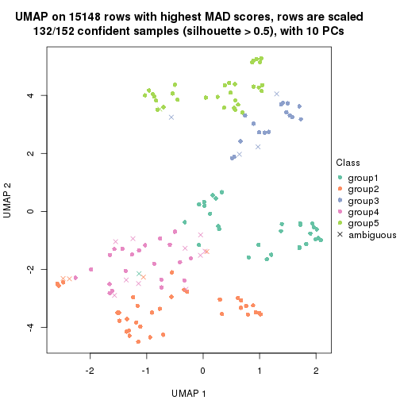
dimension_reduction(res, k = 6, method = "UMAP")
Following heatmap shows how subgroups are split when increasing k:
collect_classes(res)
If matrix rows can be associated to genes, consider to use functional_enrichment(res,
...) to perform function enrichment for the signature genes. See this vignette for more detailed explanations.
MAD:pam*
The object with results only for a single top-value method and a single partition method
can be extracted as:
res = res_list["MAD", "pam"]
# you can also extract it by
# res = res_list["MAD:pam"]
A summary of res and all the functions that can be applied to it:
res
#> A 'ConsensusPartition' object with k = 2, 3, 4, 5, 6.
#> On a matrix with 15148 rows and 152 columns.
#> Top rows (1000, 2000, 3000, 4000, 5000) are extracted by 'MAD' method.
#> Subgroups are detected by 'pam' method.
#> Performed in total 1250 partitions by row resampling.
#> Best k for subgroups seems to be 6.
#>
#> Following methods can be applied to this 'ConsensusPartition' object:
#> [1] "cola_report" "collect_classes" "collect_plots"
#> [4] "collect_stats" "colnames" "compare_signatures"
#> [7] "consensus_heatmap" "dimension_reduction" "functional_enrichment"
#> [10] "get_anno_col" "get_anno" "get_classes"
#> [13] "get_consensus" "get_matrix" "get_membership"
#> [16] "get_param" "get_signatures" "get_stats"
#> [19] "is_best_k" "is_stable_k" "membership_heatmap"
#> [22] "ncol" "nrow" "plot_ecdf"
#> [25] "rownames" "select_partition_number" "show"
#> [28] "suggest_best_k" "test_to_known_factors"
collect_plots() function collects all the plots made from res for all k (number of partitions)
into one single page to provide an easy and fast comparison between different k.
collect_plots(res)
The plots are:
- The first row: a plot of the ECDF (empirical cumulative distribution
function) curves of the consensus matrix for each
k and the heatmap of
predicted classes for each k.
- The second row: heatmaps of the consensus matrix for each
k.
- The third row: heatmaps of the membership matrix for each
k.
- The fouth row: heatmaps of the signatures for each
k.
All the plots in panels can be made by individual functions and they are
plotted later in this section.
select_partition_number() produces several plots showing different
statistics for choosing “optimized” k. There are following statistics:
- ECDF curves of the consensus matrix for each
k;
- 1-PAC. The PAC
score
measures the proportion of the ambiguous subgrouping.
- Mean silhouette score.
- Concordance. The mean probability of fiting the consensus class ids in all
partitions.
- Area increased. Denote \(A_k\) as the area under the ECDF curve for current
k, the area increased is defined as \(A_k - A_{k-1}\).
- Rand index. The percent of pairs of samples that are both in a same cluster
or both are not in a same cluster in the partition of k and k-1.
- Jaccard index. The ratio of pairs of samples are both in a same cluster in
the partition of k and k-1 and the pairs of samples are both in a same
cluster in the partition k or k-1.
The detailed explanations of these statistics can be found in the cola
vignette.
Generally speaking, lower PAC score, higher mean silhouette score or higher
concordance corresponds to better partition. Rand index and Jaccard index
measure how similar the current partition is compared to partition with k-1.
If they are too similar, we won't accept k is better than k-1.
select_partition_number(res)
The numeric values for all these statistics can be obtained by get_stats().
get_stats(res)
#> k 1-PAC mean_silhouette concordance area_increased Rand Jaccard
#> 2 2 0.880 0.913 0.966 0.5024 0.498 0.498
#> 3 3 0.966 0.934 0.974 0.2353 0.810 0.644
#> 4 4 0.794 0.870 0.908 0.1626 0.878 0.684
#> 5 5 0.801 0.750 0.858 0.0785 0.942 0.790
#> 6 6 0.900 0.852 0.935 0.0545 0.922 0.675
suggest_best_k() suggests the best \(k\) based on these statistics. The rules are as follows:
- All \(k\) with Jaccard index larger than 0.95 are removed because increasing
\(k\) does not provide enough extra information. If all \(k\) are removed, it is
marked as no subgroup is detected.
- For all \(k\) with 1-PAC score larger than 0.9, the maximal \(k\) is taken as
the best \(k\), and other \(k\) are marked as optional \(k\).
- If it does not fit the second rule. The \(k\) with the maximal vote of the
highest 1-PAC score, highest mean silhouette, and highest concordance is
taken as the best \(k\).
suggest_best_k(res)
#> [1] 6
#> attr(,"optional")
#> [1] 3
There is also optional best \(k\) = 3 that is worth to check.
Following shows the table of the partitions (You need to click the show/hide
code output link to see it). The membership matrix (columns with name p*)
is inferred by
clue::cl_consensus()
function with the SE method. Basically the value in the membership matrix
represents the probability to belong to a certain group. The finall class
label for an item is determined with the group with highest probability it
belongs to.
In get_classes() function, the entropy is calculated from the membership
matrix and the silhouette score is calculated from the consensus matrix.
show/hide code output
cbind(get_classes(res, k = 2), get_membership(res, k = 2))
#> class entropy silhouette p1 p2
#> SRR1947547 1 0.0000 0.9641 1.000 0.000
#> SRR1947546 2 0.0000 0.9633 0.000 1.000
#> SRR1947545 1 0.0376 0.9625 0.996 0.004
#> SRR1947544 1 0.0376 0.9625 0.996 0.004
#> SRR1947542 2 0.0000 0.9633 0.000 1.000
#> SRR1947541 1 0.0000 0.9641 1.000 0.000
#> SRR1947540 2 0.0000 0.9633 0.000 1.000
#> SRR1947539 1 0.0000 0.9641 1.000 0.000
#> SRR1947538 2 0.0000 0.9633 0.000 1.000
#> SRR1947537 1 0.0000 0.9641 1.000 0.000
#> SRR1947536 1 0.0000 0.9641 1.000 0.000
#> SRR1947535 1 0.0000 0.9641 1.000 0.000
#> SRR1947534 2 0.0000 0.9633 0.000 1.000
#> SRR1947533 2 0.0000 0.9633 0.000 1.000
#> SRR1947532 2 0.0000 0.9633 0.000 1.000
#> SRR1947531 2 0.0000 0.9633 0.000 1.000
#> SRR1947530 1 0.0000 0.9641 1.000 0.000
#> SRR1947529 2 0.0000 0.9633 0.000 1.000
#> SRR1947528 1 0.0000 0.9641 1.000 0.000
#> SRR1947527 2 0.0000 0.9633 0.000 1.000
#> SRR1947526 2 0.0000 0.9633 0.000 1.000
#> SRR1947525 2 0.0000 0.9633 0.000 1.000
#> SRR1947524 1 0.0000 0.9641 1.000 0.000
#> SRR1947523 2 0.0000 0.9633 0.000 1.000
#> SRR1947521 1 0.0000 0.9641 1.000 0.000
#> SRR1947520 2 0.0000 0.9633 0.000 1.000
#> SRR1947519 1 0.0000 0.9641 1.000 0.000
#> SRR1947518 2 0.0000 0.9633 0.000 1.000
#> SRR1947517 1 0.0000 0.9641 1.000 0.000
#> SRR1947516 2 0.0000 0.9633 0.000 1.000
#> SRR1947515 2 0.0000 0.9633 0.000 1.000
#> SRR1947514 2 0.0000 0.9633 0.000 1.000
#> SRR1947513 1 0.6887 0.7655 0.816 0.184
#> SRR1947512 1 0.0376 0.9625 0.996 0.004
#> SRR1947511 2 0.0000 0.9633 0.000 1.000
#> SRR1947510 1 0.0000 0.9641 1.000 0.000
#> SRR1947572 2 0.0000 0.9633 0.000 1.000
#> SRR1947611 1 0.5408 0.8421 0.876 0.124
#> SRR1947509 1 0.0000 0.9641 1.000 0.000
#> SRR1947644 1 0.0000 0.9641 1.000 0.000
#> SRR1947643 2 0.0000 0.9633 0.000 1.000
#> SRR1947642 1 0.0000 0.9641 1.000 0.000
#> SRR1947640 2 0.0000 0.9633 0.000 1.000
#> SRR1947641 1 0.0376 0.9619 0.996 0.004
#> SRR1947639 2 0.0000 0.9633 0.000 1.000
#> SRR1947638 2 0.0000 0.9633 0.000 1.000
#> SRR1947637 1 0.9850 0.2377 0.572 0.428
#> SRR1947636 1 0.0000 0.9641 1.000 0.000
#> SRR1947635 2 0.0000 0.9633 0.000 1.000
#> SRR1947634 2 0.0000 0.9633 0.000 1.000
#> SRR1947633 1 0.0000 0.9641 1.000 0.000
#> SRR1947632 2 0.0000 0.9633 0.000 1.000
#> SRR1947631 1 0.0000 0.9641 1.000 0.000
#> SRR1947629 1 0.0000 0.9641 1.000 0.000
#> SRR1947630 2 0.0000 0.9633 0.000 1.000
#> SRR1947627 1 0.0000 0.9641 1.000 0.000
#> SRR1947628 2 0.0000 0.9633 0.000 1.000
#> SRR1947626 2 0.0000 0.9633 0.000 1.000
#> SRR1947625 1 0.4690 0.8731 0.900 0.100
#> SRR1947624 2 0.0000 0.9633 0.000 1.000
#> SRR1947623 2 0.8207 0.6483 0.256 0.744
#> SRR1947622 2 0.0000 0.9633 0.000 1.000
#> SRR1947621 2 0.0000 0.9633 0.000 1.000
#> SRR1947620 1 0.2236 0.9353 0.964 0.036
#> SRR1947619 1 0.0000 0.9641 1.000 0.000
#> SRR1947617 2 0.0000 0.9633 0.000 1.000
#> SRR1947618 1 0.7219 0.7428 0.800 0.200
#> SRR1947616 2 0.0376 0.9599 0.004 0.996
#> SRR1947615 1 0.0000 0.9641 1.000 0.000
#> SRR1947614 1 0.0000 0.9641 1.000 0.000
#> SRR1947613 1 0.0376 0.9625 0.996 0.004
#> SRR1947610 2 0.0000 0.9633 0.000 1.000
#> SRR1947612 2 0.0000 0.9633 0.000 1.000
#> SRR1947609 1 0.9963 0.1316 0.536 0.464
#> SRR1947608 1 0.0000 0.9641 1.000 0.000
#> SRR1947606 1 0.0000 0.9641 1.000 0.000
#> SRR1947607 2 0.9732 0.3084 0.404 0.596
#> SRR1947604 2 0.0000 0.9633 0.000 1.000
#> SRR1947605 1 0.0376 0.9625 0.996 0.004
#> SRR1947603 2 0.0000 0.9633 0.000 1.000
#> SRR1947602 1 0.0000 0.9641 1.000 0.000
#> SRR1947600 1 0.0000 0.9641 1.000 0.000
#> SRR1947601 2 0.0000 0.9633 0.000 1.000
#> SRR1947598 2 0.0376 0.9599 0.004 0.996
#> SRR1947599 2 0.0000 0.9633 0.000 1.000
#> SRR1947597 2 0.0000 0.9633 0.000 1.000
#> SRR1947596 2 0.9170 0.4971 0.332 0.668
#> SRR1947595 2 0.0000 0.9633 0.000 1.000
#> SRR1947594 1 0.0376 0.9625 0.996 0.004
#> SRR1947592 1 0.0000 0.9641 1.000 0.000
#> SRR1947591 2 0.0000 0.9633 0.000 1.000
#> SRR1947590 1 0.9795 0.2781 0.584 0.416
#> SRR1947588 1 0.0376 0.9625 0.996 0.004
#> SRR1947587 1 0.0000 0.9641 1.000 0.000
#> SRR1947586 2 0.0000 0.9633 0.000 1.000
#> SRR1947585 1 0.0000 0.9641 1.000 0.000
#> SRR1947584 1 0.0376 0.9625 0.996 0.004
#> SRR1947583 2 0.0000 0.9633 0.000 1.000
#> SRR1947582 1 0.7219 0.7428 0.800 0.200
#> SRR1947580 2 0.0000 0.9633 0.000 1.000
#> SRR1947581 1 0.0376 0.9625 0.996 0.004
#> SRR1947576 1 0.6712 0.7741 0.824 0.176
#> SRR1947575 2 0.7453 0.7169 0.212 0.788
#> SRR1947579 1 0.0000 0.9641 1.000 0.000
#> SRR1947578 2 0.0000 0.9633 0.000 1.000
#> SRR1947573 1 0.0000 0.9641 1.000 0.000
#> SRR1947574 2 0.0000 0.9633 0.000 1.000
#> SRR1947571 2 0.0000 0.9633 0.000 1.000
#> SRR1947577 2 0.9815 0.2612 0.420 0.580
#> SRR1947570 1 0.0000 0.9641 1.000 0.000
#> SRR1947569 1 0.0000 0.9641 1.000 0.000
#> SRR1947566 2 0.0000 0.9633 0.000 1.000
#> SRR1947567 2 0.0000 0.9633 0.000 1.000
#> SRR1947568 2 0.0000 0.9633 0.000 1.000
#> SRR1947564 2 0.0000 0.9633 0.000 1.000
#> SRR1947563 2 0.9983 0.0908 0.476 0.524
#> SRR1947562 2 0.0000 0.9633 0.000 1.000
#> SRR1947565 1 0.0000 0.9641 1.000 0.000
#> SRR1947559 2 0.0000 0.9633 0.000 1.000
#> SRR1947560 1 0.0000 0.9641 1.000 0.000
#> SRR1947561 2 0.0000 0.9633 0.000 1.000
#> SRR1947557 1 0.0376 0.9625 0.996 0.004
#> SRR1947558 1 0.0000 0.9641 1.000 0.000
#> SRR1947556 1 0.0376 0.9625 0.996 0.004
#> SRR1947553 2 0.0000 0.9633 0.000 1.000
#> SRR1947554 2 0.5842 0.8130 0.140 0.860
#> SRR1947555 2 0.0000 0.9633 0.000 1.000
#> SRR1947550 2 0.0000 0.9633 0.000 1.000
#> SRR1947552 2 0.0000 0.9633 0.000 1.000
#> SRR1947549 1 0.0000 0.9641 1.000 0.000
#> SRR1947551 1 0.0000 0.9641 1.000 0.000
#> SRR1947548 2 0.0000 0.9633 0.000 1.000
#> SRR1947506 1 0.0000 0.9641 1.000 0.000
#> SRR1947507 1 0.0376 0.9625 0.996 0.004
#> SRR1947504 2 0.9988 0.0725 0.480 0.520
#> SRR1947503 2 0.0000 0.9633 0.000 1.000
#> SRR1947502 2 0.0000 0.9633 0.000 1.000
#> SRR1947501 2 0.0000 0.9633 0.000 1.000
#> SRR1947499 1 0.0000 0.9641 1.000 0.000
#> SRR1947498 1 0.0000 0.9641 1.000 0.000
#> SRR1947508 1 0.0000 0.9641 1.000 0.000
#> SRR1947505 2 0.0376 0.9599 0.004 0.996
#> SRR1947497 2 0.0000 0.9633 0.000 1.000
#> SRR1947496 1 0.0376 0.9625 0.996 0.004
#> SRR1947495 2 0.0000 0.9633 0.000 1.000
#> SRR1947494 2 0.0000 0.9633 0.000 1.000
#> SRR1947493 1 0.0000 0.9641 1.000 0.000
#> SRR1947492 1 0.0376 0.9625 0.996 0.004
#> SRR1947500 2 0.0000 0.9633 0.000 1.000
#> SRR1947491 2 0.0000 0.9633 0.000 1.000
#> SRR1947490 1 0.0376 0.9625 0.996 0.004
#> SRR1947489 1 0.0000 0.9641 1.000 0.000
show/hide code output
cbind(get_classes(res, k = 3), get_membership(res, k = 3))
#> class entropy silhouette p1 p2 p3
#> SRR1947547 3 0.000 1.000 0.000 0.000 1.000
#> SRR1947546 2 0.000 0.971 0.000 1.000 0.000
#> SRR1947545 1 0.000 0.918 1.000 0.000 0.000
#> SRR1947544 1 0.000 0.918 1.000 0.000 0.000
#> SRR1947542 2 0.000 0.971 0.000 1.000 0.000
#> SRR1947541 3 0.000 1.000 0.000 0.000 1.000
#> SRR1947540 2 0.000 0.971 0.000 1.000 0.000
#> SRR1947539 3 0.000 1.000 0.000 0.000 1.000
#> SRR1947538 2 0.000 0.971 0.000 1.000 0.000
#> SRR1947537 3 0.000 1.000 0.000 0.000 1.000
#> SRR1947536 3 0.000 1.000 0.000 0.000 1.000
#> SRR1947535 3 0.000 1.000 0.000 0.000 1.000
#> SRR1947534 1 0.595 0.445 0.640 0.360 0.000
#> SRR1947533 2 0.000 0.971 0.000 1.000 0.000
#> SRR1947532 2 0.000 0.971 0.000 1.000 0.000
#> SRR1947531 2 0.000 0.971 0.000 1.000 0.000
#> SRR1947530 1 0.334 0.820 0.880 0.000 0.120
#> SRR1947529 2 0.000 0.971 0.000 1.000 0.000
#> SRR1947528 3 0.000 1.000 0.000 0.000 1.000
#> SRR1947527 2 0.000 0.971 0.000 1.000 0.000
#> SRR1947526 2 0.000 0.971 0.000 1.000 0.000
#> SRR1947525 2 0.000 0.971 0.000 1.000 0.000
#> SRR1947524 3 0.000 1.000 0.000 0.000 1.000
#> SRR1947523 2 0.000 0.971 0.000 1.000 0.000
#> SRR1947521 3 0.000 1.000 0.000 0.000 1.000
#> SRR1947520 2 0.000 0.971 0.000 1.000 0.000
#> SRR1947519 3 0.000 1.000 0.000 0.000 1.000
#> SRR1947518 2 0.000 0.971 0.000 1.000 0.000
#> SRR1947517 3 0.000 1.000 0.000 0.000 1.000
#> SRR1947516 2 0.000 0.971 0.000 1.000 0.000
#> SRR1947515 2 0.000 0.971 0.000 1.000 0.000
#> SRR1947514 2 0.000 0.971 0.000 1.000 0.000
#> SRR1947513 1 0.611 0.357 0.604 0.396 0.000
#> SRR1947512 1 0.000 0.918 1.000 0.000 0.000
#> SRR1947511 2 0.000 0.971 0.000 1.000 0.000
#> SRR1947510 3 0.000 1.000 0.000 0.000 1.000
#> SRR1947572 2 0.613 0.340 0.400 0.600 0.000
#> SRR1947611 3 0.000 1.000 0.000 0.000 1.000
#> SRR1947509 3 0.000 1.000 0.000 0.000 1.000
#> SRR1947644 3 0.000 1.000 0.000 0.000 1.000
#> SRR1947643 2 0.000 0.971 0.000 1.000 0.000
#> SRR1947642 3 0.000 1.000 0.000 0.000 1.000
#> SRR1947640 2 0.000 0.971 0.000 1.000 0.000
#> SRR1947641 3 0.000 1.000 0.000 0.000 1.000
#> SRR1947639 2 0.000 0.971 0.000 1.000 0.000
#> SRR1947638 2 0.613 0.296 0.400 0.600 0.000
#> SRR1947637 3 0.000 1.000 0.000 0.000 1.000
#> SRR1947636 3 0.000 1.000 0.000 0.000 1.000
#> SRR1947635 2 0.000 0.971 0.000 1.000 0.000
#> SRR1947634 2 0.000 0.971 0.000 1.000 0.000
#> SRR1947633 3 0.000 1.000 0.000 0.000 1.000
#> SRR1947632 2 0.000 0.971 0.000 1.000 0.000
#> SRR1947631 3 0.000 1.000 0.000 0.000 1.000
#> SRR1947629 3 0.000 1.000 0.000 0.000 1.000
#> SRR1947630 2 0.000 0.971 0.000 1.000 0.000
#> SRR1947627 3 0.000 1.000 0.000 0.000 1.000
#> SRR1947628 2 0.000 0.971 0.000 1.000 0.000
#> SRR1947626 2 0.000 0.971 0.000 1.000 0.000
#> SRR1947625 3 0.000 1.000 0.000 0.000 1.000
#> SRR1947624 2 0.000 0.971 0.000 1.000 0.000
#> SRR1947623 1 0.000 0.918 1.000 0.000 0.000
#> SRR1947622 2 0.000 0.971 0.000 1.000 0.000
#> SRR1947621 2 0.000 0.971 0.000 1.000 0.000
#> SRR1947620 1 0.000 0.918 1.000 0.000 0.000
#> SRR1947619 3 0.000 1.000 0.000 0.000 1.000
#> SRR1947617 2 0.000 0.971 0.000 1.000 0.000
#> SRR1947618 2 0.776 0.225 0.380 0.564 0.056
#> SRR1947616 2 0.000 0.971 0.000 1.000 0.000
#> SRR1947615 3 0.000 1.000 0.000 0.000 1.000
#> SRR1947614 3 0.000 1.000 0.000 0.000 1.000
#> SRR1947613 1 0.000 0.918 1.000 0.000 0.000
#> SRR1947610 2 0.000 0.971 0.000 1.000 0.000
#> SRR1947612 2 0.000 0.971 0.000 1.000 0.000
#> SRR1947609 2 0.000 0.971 0.000 1.000 0.000
#> SRR1947608 3 0.000 1.000 0.000 0.000 1.000
#> SRR1947606 3 0.000 1.000 0.000 0.000 1.000
#> SRR1947607 1 0.000 0.918 1.000 0.000 0.000
#> SRR1947604 2 0.000 0.971 0.000 1.000 0.000
#> SRR1947605 1 0.000 0.918 1.000 0.000 0.000
#> SRR1947603 2 0.000 0.971 0.000 1.000 0.000
#> SRR1947602 1 0.627 0.232 0.548 0.000 0.452
#> SRR1947600 3 0.000 1.000 0.000 0.000 1.000
#> SRR1947601 2 0.000 0.971 0.000 1.000 0.000
#> SRR1947598 2 0.116 0.941 0.000 0.972 0.028
#> SRR1947599 2 0.000 0.971 0.000 1.000 0.000
#> SRR1947597 2 0.000 0.971 0.000 1.000 0.000
#> SRR1947596 2 0.541 0.763 0.136 0.812 0.052
#> SRR1947595 2 0.000 0.971 0.000 1.000 0.000
#> SRR1947594 1 0.000 0.918 1.000 0.000 0.000
#> SRR1947592 3 0.000 1.000 0.000 0.000 1.000
#> SRR1947591 2 0.000 0.971 0.000 1.000 0.000
#> SRR1947590 2 0.573 0.703 0.196 0.772 0.032
#> SRR1947588 1 0.000 0.918 1.000 0.000 0.000
#> SRR1947587 3 0.000 1.000 0.000 0.000 1.000
#> SRR1947586 2 0.000 0.971 0.000 1.000 0.000
#> SRR1947585 3 0.000 1.000 0.000 0.000 1.000
#> SRR1947584 1 0.000 0.918 1.000 0.000 0.000
#> SRR1947583 2 0.000 0.971 0.000 1.000 0.000
#> SRR1947582 1 0.604 0.744 0.772 0.172 0.056
#> SRR1947580 2 0.000 0.971 0.000 1.000 0.000
#> SRR1947581 1 0.000 0.918 1.000 0.000 0.000
#> SRR1947576 3 0.000 1.000 0.000 0.000 1.000
#> SRR1947575 3 0.000 1.000 0.000 0.000 1.000
#> SRR1947579 3 0.000 1.000 0.000 0.000 1.000
#> SRR1947578 2 0.000 0.971 0.000 1.000 0.000
#> SRR1947573 3 0.000 1.000 0.000 0.000 1.000
#> SRR1947574 2 0.000 0.971 0.000 1.000 0.000
#> SRR1947571 2 0.000 0.971 0.000 1.000 0.000
#> SRR1947577 2 0.583 0.454 0.340 0.660 0.000
#> SRR1947570 3 0.000 1.000 0.000 0.000 1.000
#> SRR1947569 3 0.000 1.000 0.000 0.000 1.000
#> SRR1947566 2 0.000 0.971 0.000 1.000 0.000
#> SRR1947567 2 0.000 0.971 0.000 1.000 0.000
#> SRR1947568 2 0.000 0.971 0.000 1.000 0.000
#> SRR1947564 2 0.000 0.971 0.000 1.000 0.000
#> SRR1947563 3 0.000 1.000 0.000 0.000 1.000
#> SRR1947562 2 0.000 0.971 0.000 1.000 0.000
#> SRR1947565 3 0.000 1.000 0.000 0.000 1.000
#> SRR1947559 2 0.000 0.971 0.000 1.000 0.000
#> SRR1947560 3 0.000 1.000 0.000 0.000 1.000
#> SRR1947561 2 0.000 0.971 0.000 1.000 0.000
#> SRR1947557 1 0.000 0.918 1.000 0.000 0.000
#> SRR1947558 3 0.000 1.000 0.000 0.000 1.000
#> SRR1947556 1 0.000 0.918 1.000 0.000 0.000
#> SRR1947553 2 0.000 0.971 0.000 1.000 0.000
#> SRR1947554 1 0.000 0.918 1.000 0.000 0.000
#> SRR1947555 2 0.000 0.971 0.000 1.000 0.000
#> SRR1947550 2 0.000 0.971 0.000 1.000 0.000
#> SRR1947552 2 0.000 0.971 0.000 1.000 0.000
#> SRR1947549 3 0.000 1.000 0.000 0.000 1.000
#> SRR1947551 3 0.000 1.000 0.000 0.000 1.000
#> SRR1947548 2 0.000 0.971 0.000 1.000 0.000
#> SRR1947506 3 0.000 1.000 0.000 0.000 1.000
#> SRR1947507 1 0.000 0.918 1.000 0.000 0.000
#> SRR1947504 1 0.000 0.918 1.000 0.000 0.000
#> SRR1947503 2 0.000 0.971 0.000 1.000 0.000
#> SRR1947502 2 0.000 0.971 0.000 1.000 0.000
#> SRR1947501 2 0.000 0.971 0.000 1.000 0.000
#> SRR1947499 1 0.610 0.391 0.608 0.000 0.392
#> SRR1947498 3 0.000 1.000 0.000 0.000 1.000
#> SRR1947508 3 0.000 1.000 0.000 0.000 1.000
#> SRR1947505 2 0.000 0.971 0.000 1.000 0.000
#> SRR1947497 2 0.000 0.971 0.000 1.000 0.000
#> SRR1947496 1 0.000 0.918 1.000 0.000 0.000
#> SRR1947495 2 0.000 0.971 0.000 1.000 0.000
#> SRR1947494 2 0.000 0.971 0.000 1.000 0.000
#> SRR1947493 1 0.196 0.878 0.944 0.000 0.056
#> SRR1947492 1 0.000 0.918 1.000 0.000 0.000
#> SRR1947500 2 0.000 0.971 0.000 1.000 0.000
#> SRR1947491 2 0.000 0.971 0.000 1.000 0.000
#> SRR1947490 1 0.000 0.918 1.000 0.000 0.000
#> SRR1947489 3 0.000 1.000 0.000 0.000 1.000
show/hide code output
cbind(get_classes(res, k = 4), get_membership(res, k = 4))
#> class entropy silhouette p1 p2 p3 p4
#> SRR1947547 3 0.1557 0.916 0.000 0.000 0.944 0.056
#> SRR1947546 4 0.1557 0.914 0.000 0.056 0.000 0.944
#> SRR1947545 1 0.1557 0.869 0.944 0.000 0.000 0.056
#> SRR1947544 1 0.0000 0.905 1.000 0.000 0.000 0.000
#> SRR1947542 4 0.1557 0.914 0.000 0.056 0.000 0.944
#> SRR1947541 3 0.0000 0.953 0.000 0.000 1.000 0.000
#> SRR1947540 4 0.1557 0.914 0.000 0.056 0.000 0.944
#> SRR1947539 3 0.0000 0.953 0.000 0.000 1.000 0.000
#> SRR1947538 4 0.0000 0.916 0.000 0.000 0.000 1.000
#> SRR1947537 3 0.0000 0.953 0.000 0.000 1.000 0.000
#> SRR1947536 3 0.0000 0.953 0.000 0.000 1.000 0.000
#> SRR1947535 3 0.0000 0.953 0.000 0.000 1.000 0.000
#> SRR1947534 2 0.4866 0.250 0.404 0.596 0.000 0.000
#> SRR1947533 2 0.3172 0.922 0.000 0.840 0.000 0.160
#> SRR1947532 4 0.0000 0.916 0.000 0.000 0.000 1.000
#> SRR1947531 4 0.0000 0.916 0.000 0.000 0.000 1.000
#> SRR1947530 1 0.2760 0.801 0.872 0.000 0.128 0.000
#> SRR1947529 4 0.1557 0.914 0.000 0.056 0.000 0.944
#> SRR1947528 3 0.0000 0.953 0.000 0.000 1.000 0.000
#> SRR1947527 2 0.3172 0.922 0.000 0.840 0.000 0.160
#> SRR1947526 2 0.3172 0.922 0.000 0.840 0.000 0.160
#> SRR1947525 4 0.1557 0.914 0.000 0.056 0.000 0.944
#> SRR1947524 3 0.0000 0.953 0.000 0.000 1.000 0.000
#> SRR1947523 4 0.0000 0.916 0.000 0.000 0.000 1.000
#> SRR1947521 3 0.3172 0.870 0.000 0.160 0.840 0.000
#> SRR1947520 2 0.3172 0.922 0.000 0.840 0.000 0.160
#> SRR1947519 3 0.0921 0.938 0.000 0.000 0.972 0.028
#> SRR1947518 4 0.0000 0.916 0.000 0.000 0.000 1.000
#> SRR1947517 3 0.3172 0.870 0.000 0.160 0.840 0.000
#> SRR1947516 2 0.3172 0.922 0.000 0.840 0.000 0.160
#> SRR1947515 4 0.0000 0.916 0.000 0.000 0.000 1.000
#> SRR1947514 2 0.3172 0.922 0.000 0.840 0.000 0.160
#> SRR1947513 1 0.4967 0.226 0.548 0.000 0.000 0.452
#> SRR1947512 1 0.0000 0.905 1.000 0.000 0.000 0.000
#> SRR1947511 2 0.3172 0.922 0.000 0.840 0.000 0.160
#> SRR1947510 3 0.3172 0.870 0.000 0.160 0.840 0.000
#> SRR1947572 4 0.6197 0.344 0.400 0.056 0.000 0.544
#> SRR1947611 3 0.3610 0.835 0.000 0.200 0.800 0.000
#> SRR1947509 3 0.3172 0.870 0.000 0.160 0.840 0.000
#> SRR1947644 3 0.3172 0.870 0.000 0.160 0.840 0.000
#> SRR1947643 2 0.4164 0.816 0.000 0.736 0.000 0.264
#> SRR1947642 3 0.0000 0.953 0.000 0.000 1.000 0.000
#> SRR1947640 4 0.0000 0.916 0.000 0.000 0.000 1.000
#> SRR1947641 3 0.0000 0.953 0.000 0.000 1.000 0.000
#> SRR1947639 4 0.1557 0.914 0.000 0.056 0.000 0.944
#> SRR1947638 4 0.4643 0.396 0.344 0.000 0.000 0.656
#> SRR1947637 3 0.3172 0.870 0.000 0.160 0.840 0.000
#> SRR1947636 3 0.0000 0.953 0.000 0.000 1.000 0.000
#> SRR1947635 4 0.0000 0.916 0.000 0.000 0.000 1.000
#> SRR1947634 2 0.3172 0.922 0.000 0.840 0.000 0.160
#> SRR1947633 3 0.0000 0.953 0.000 0.000 1.000 0.000
#> SRR1947632 4 0.1557 0.914 0.000 0.056 0.000 0.944
#> SRR1947631 3 0.0707 0.943 0.000 0.000 0.980 0.020
#> SRR1947629 3 0.0000 0.953 0.000 0.000 1.000 0.000
#> SRR1947630 2 0.0000 0.749 0.000 1.000 0.000 0.000
#> SRR1947627 3 0.0000 0.953 0.000 0.000 1.000 0.000
#> SRR1947628 4 0.1557 0.914 0.000 0.056 0.000 0.944
#> SRR1947626 2 0.4277 0.794 0.000 0.720 0.000 0.280
#> SRR1947625 3 0.0000 0.953 0.000 0.000 1.000 0.000
#> SRR1947624 2 0.0000 0.749 0.000 1.000 0.000 0.000
#> SRR1947623 1 0.0000 0.905 1.000 0.000 0.000 0.000
#> SRR1947622 4 0.1557 0.914 0.000 0.056 0.000 0.944
#> SRR1947621 2 0.3172 0.922 0.000 0.840 0.000 0.160
#> SRR1947620 1 0.1557 0.869 0.944 0.000 0.000 0.056
#> SRR1947619 3 0.0000 0.953 0.000 0.000 1.000 0.000
#> SRR1947617 2 0.3172 0.922 0.000 0.840 0.000 0.160
#> SRR1947618 4 0.5558 0.385 0.324 0.000 0.036 0.640
#> SRR1947616 4 0.1557 0.914 0.000 0.056 0.000 0.944
#> SRR1947615 3 0.0921 0.938 0.000 0.000 0.972 0.028
#> SRR1947614 3 0.3172 0.870 0.000 0.160 0.840 0.000
#> SRR1947613 1 0.0000 0.905 1.000 0.000 0.000 0.000
#> SRR1947610 4 0.1557 0.914 0.000 0.056 0.000 0.944
#> SRR1947612 2 0.3172 0.922 0.000 0.840 0.000 0.160
#> SRR1947609 4 0.0000 0.916 0.000 0.000 0.000 1.000
#> SRR1947608 3 0.0000 0.953 0.000 0.000 1.000 0.000
#> SRR1947606 3 0.0000 0.953 0.000 0.000 1.000 0.000
#> SRR1947607 1 0.0000 0.905 1.000 0.000 0.000 0.000
#> SRR1947604 4 0.0000 0.916 0.000 0.000 0.000 1.000
#> SRR1947605 1 0.0000 0.905 1.000 0.000 0.000 0.000
#> SRR1947603 4 0.1557 0.914 0.000 0.056 0.000 0.944
#> SRR1947602 1 0.6271 0.125 0.492 0.000 0.452 0.056
#> SRR1947600 3 0.0000 0.953 0.000 0.000 1.000 0.000
#> SRR1947601 2 0.3172 0.922 0.000 0.840 0.000 0.160
#> SRR1947598 4 0.0707 0.901 0.000 0.000 0.020 0.980
#> SRR1947599 4 0.0000 0.916 0.000 0.000 0.000 1.000
#> SRR1947597 4 0.1557 0.914 0.000 0.056 0.000 0.944
#> SRR1947596 4 0.5119 0.651 0.112 0.000 0.124 0.764
#> SRR1947595 4 0.0000 0.916 0.000 0.000 0.000 1.000
#> SRR1947594 1 0.0000 0.905 1.000 0.000 0.000 0.000
#> SRR1947592 3 0.0000 0.953 0.000 0.000 1.000 0.000
#> SRR1947591 2 0.3172 0.922 0.000 0.840 0.000 0.160
#> SRR1947590 4 0.5346 0.616 0.192 0.000 0.076 0.732
#> SRR1947588 1 0.0000 0.905 1.000 0.000 0.000 0.000
#> SRR1947587 3 0.0000 0.953 0.000 0.000 1.000 0.000
#> SRR1947586 2 0.4250 0.800 0.000 0.724 0.000 0.276
#> SRR1947585 3 0.0000 0.953 0.000 0.000 1.000 0.000
#> SRR1947584 1 0.0000 0.905 1.000 0.000 0.000 0.000
#> SRR1947583 4 0.1557 0.914 0.000 0.056 0.000 0.944
#> SRR1947582 1 0.4988 0.666 0.728 0.000 0.036 0.236
#> SRR1947580 2 0.4250 0.800 0.000 0.724 0.000 0.276
#> SRR1947581 1 0.0000 0.905 1.000 0.000 0.000 0.000
#> SRR1947576 3 0.4804 0.577 0.000 0.384 0.616 0.000
#> SRR1947575 3 0.0000 0.953 0.000 0.000 1.000 0.000
#> SRR1947579 3 0.3172 0.870 0.000 0.160 0.840 0.000
#> SRR1947578 4 0.1557 0.914 0.000 0.056 0.000 0.944
#> SRR1947573 3 0.0000 0.953 0.000 0.000 1.000 0.000
#> SRR1947574 4 0.0000 0.916 0.000 0.000 0.000 1.000
#> SRR1947571 4 0.0000 0.916 0.000 0.000 0.000 1.000
#> SRR1947577 4 0.4304 0.532 0.284 0.000 0.000 0.716
#> SRR1947570 3 0.1557 0.916 0.000 0.000 0.944 0.056
#> SRR1947569 3 0.0000 0.953 0.000 0.000 1.000 0.000
#> SRR1947566 2 0.3172 0.922 0.000 0.840 0.000 0.160
#> SRR1947567 4 0.1557 0.914 0.000 0.056 0.000 0.944
#> SRR1947568 4 0.1557 0.914 0.000 0.056 0.000 0.944
#> SRR1947564 4 0.1557 0.914 0.000 0.056 0.000 0.944
#> SRR1947563 3 0.0000 0.953 0.000 0.000 1.000 0.000
#> SRR1947562 4 0.1557 0.914 0.000 0.056 0.000 0.944
#> SRR1947565 3 0.0000 0.953 0.000 0.000 1.000 0.000
#> SRR1947559 4 0.1557 0.914 0.000 0.056 0.000 0.944
#> SRR1947560 2 0.4164 0.398 0.000 0.736 0.264 0.000
#> SRR1947561 2 0.3172 0.922 0.000 0.840 0.000 0.160
#> SRR1947557 1 0.0000 0.905 1.000 0.000 0.000 0.000
#> SRR1947558 3 0.0000 0.953 0.000 0.000 1.000 0.000
#> SRR1947556 1 0.0000 0.905 1.000 0.000 0.000 0.000
#> SRR1947553 4 0.1557 0.914 0.000 0.056 0.000 0.944
#> SRR1947554 1 0.0000 0.905 1.000 0.000 0.000 0.000
#> SRR1947555 2 0.3486 0.898 0.000 0.812 0.000 0.188
#> SRR1947550 4 0.1557 0.914 0.000 0.056 0.000 0.944
#> SRR1947552 4 0.0000 0.916 0.000 0.000 0.000 1.000
#> SRR1947549 3 0.0000 0.953 0.000 0.000 1.000 0.000
#> SRR1947551 3 0.3172 0.870 0.000 0.160 0.840 0.000
#> SRR1947548 4 0.0000 0.916 0.000 0.000 0.000 1.000
#> SRR1947506 3 0.1557 0.916 0.000 0.000 0.944 0.056
#> SRR1947507 1 0.0000 0.905 1.000 0.000 0.000 0.000
#> SRR1947504 1 0.0000 0.905 1.000 0.000 0.000 0.000
#> SRR1947503 4 0.0000 0.916 0.000 0.000 0.000 1.000
#> SRR1947502 2 0.3172 0.922 0.000 0.840 0.000 0.160
#> SRR1947501 4 0.1557 0.914 0.000 0.056 0.000 0.944
#> SRR1947499 1 0.5660 0.326 0.576 0.000 0.396 0.028
#> SRR1947498 3 0.0000 0.953 0.000 0.000 1.000 0.000
#> SRR1947508 3 0.0921 0.938 0.000 0.000 0.972 0.028
#> SRR1947505 4 0.0000 0.916 0.000 0.000 0.000 1.000
#> SRR1947497 2 0.3172 0.922 0.000 0.840 0.000 0.160
#> SRR1947496 1 0.0000 0.905 1.000 0.000 0.000 0.000
#> SRR1947495 2 0.3219 0.919 0.000 0.836 0.000 0.164
#> SRR1947494 4 0.0000 0.916 0.000 0.000 0.000 1.000
#> SRR1947493 1 0.2868 0.793 0.864 0.000 0.136 0.000
#> SRR1947492 1 0.0000 0.905 1.000 0.000 0.000 0.000
#> SRR1947500 4 0.0000 0.916 0.000 0.000 0.000 1.000
#> SRR1947491 4 0.0000 0.916 0.000 0.000 0.000 1.000
#> SRR1947490 1 0.0000 0.905 1.000 0.000 0.000 0.000
#> SRR1947489 3 0.0921 0.938 0.000 0.000 0.972 0.028
show/hide code output
cbind(get_classes(res, k = 5), get_membership(res, k = 5))
#> class entropy silhouette p1 p2 p3 p4 p5
#> SRR1947547 3 0.2291 0.8353 0.000 0.000 0.908 0.036 0.056
#> SRR1947546 4 0.0963 0.8426 0.000 0.036 0.000 0.964 0.000
#> SRR1947545 5 0.4990 0.3680 0.384 0.000 0.000 0.036 0.580
#> SRR1947544 1 0.0000 0.9655 1.000 0.000 0.000 0.000 0.000
#> SRR1947542 4 0.0963 0.8426 0.000 0.036 0.000 0.964 0.000
#> SRR1947541 3 0.1544 0.8582 0.000 0.000 0.932 0.000 0.068
#> SRR1947540 4 0.0963 0.8426 0.000 0.036 0.000 0.964 0.000
#> SRR1947539 3 0.2966 0.8078 0.000 0.000 0.816 0.000 0.184
#> SRR1947538 4 0.0162 0.8262 0.000 0.000 0.000 0.996 0.004
#> SRR1947537 3 0.1544 0.8582 0.000 0.000 0.932 0.000 0.068
#> SRR1947536 3 0.3003 0.6799 0.000 0.000 0.812 0.000 0.188
#> SRR1947535 3 0.0000 0.8615 0.000 0.000 1.000 0.000 0.000
#> SRR1947534 2 0.5886 0.4286 0.176 0.600 0.000 0.000 0.224
#> SRR1947533 2 0.0703 0.9256 0.000 0.976 0.000 0.024 0.000
#> SRR1947532 4 0.4088 0.3461 0.000 0.000 0.000 0.632 0.368
#> SRR1947531 4 0.0000 0.8279 0.000 0.000 0.000 1.000 0.000
#> SRR1947530 5 0.4942 0.1869 0.432 0.000 0.028 0.000 0.540
#> SRR1947529 4 0.0963 0.8426 0.000 0.036 0.000 0.964 0.000
#> SRR1947528 3 0.1410 0.8581 0.000 0.000 0.940 0.000 0.060
#> SRR1947527 2 0.0703 0.9256 0.000 0.976 0.000 0.024 0.000
#> SRR1947526 2 0.0703 0.9256 0.000 0.976 0.000 0.024 0.000
#> SRR1947525 4 0.0963 0.8426 0.000 0.036 0.000 0.964 0.000
#> SRR1947524 3 0.0000 0.8615 0.000 0.000 1.000 0.000 0.000
#> SRR1947523 4 0.4088 0.3461 0.000 0.000 0.000 0.632 0.368
#> SRR1947521 3 0.4825 0.6320 0.000 0.024 0.568 0.000 0.408
#> SRR1947520 2 0.0703 0.9256 0.000 0.976 0.000 0.024 0.000
#> SRR1947519 3 0.0162 0.8600 0.000 0.000 0.996 0.000 0.004
#> SRR1947518 4 0.0290 0.8242 0.000 0.000 0.000 0.992 0.008
#> SRR1947517 3 0.4825 0.6320 0.000 0.024 0.568 0.000 0.408
#> SRR1947516 2 0.0703 0.9256 0.000 0.976 0.000 0.024 0.000
#> SRR1947515 4 0.4088 0.3461 0.000 0.000 0.000 0.632 0.368
#> SRR1947514 2 0.0703 0.9256 0.000 0.976 0.000 0.024 0.000
#> SRR1947513 5 0.5941 0.6378 0.180 0.000 0.000 0.228 0.592
#> SRR1947512 1 0.0000 0.9655 1.000 0.000 0.000 0.000 0.000
#> SRR1947511 2 0.0703 0.9256 0.000 0.976 0.000 0.024 0.000
#> SRR1947510 3 0.4825 0.6320 0.000 0.024 0.568 0.000 0.408
#> SRR1947572 4 0.5028 0.3047 0.400 0.036 0.000 0.564 0.000
#> SRR1947611 3 0.4709 0.6379 0.000 0.024 0.612 0.000 0.364
#> SRR1947509 5 0.4722 -0.3536 0.000 0.024 0.368 0.000 0.608
#> SRR1947644 3 0.4709 0.6379 0.000 0.024 0.612 0.000 0.364
#> SRR1947643 2 0.2773 0.7956 0.000 0.836 0.000 0.164 0.000
#> SRR1947642 3 0.0000 0.8615 0.000 0.000 1.000 0.000 0.000
#> SRR1947640 4 0.0000 0.8279 0.000 0.000 0.000 1.000 0.000
#> SRR1947641 3 0.0000 0.8615 0.000 0.000 1.000 0.000 0.000
#> SRR1947639 4 0.0963 0.8426 0.000 0.036 0.000 0.964 0.000
#> SRR1947638 5 0.5831 0.6185 0.140 0.000 0.000 0.268 0.592
#> SRR1947637 3 0.4709 0.6379 0.000 0.024 0.612 0.000 0.364
#> SRR1947636 3 0.1544 0.8582 0.000 0.000 0.932 0.000 0.068
#> SRR1947635 4 0.0000 0.8279 0.000 0.000 0.000 1.000 0.000
#> SRR1947634 2 0.0703 0.9256 0.000 0.976 0.000 0.024 0.000
#> SRR1947633 3 0.3336 0.7815 0.000 0.000 0.772 0.000 0.228
#> SRR1947632 4 0.0963 0.8426 0.000 0.036 0.000 0.964 0.000
#> SRR1947631 3 0.0162 0.8600 0.000 0.000 0.996 0.004 0.000
#> SRR1947629 3 0.0000 0.8615 0.000 0.000 1.000 0.000 0.000
#> SRR1947630 2 0.0963 0.8719 0.000 0.964 0.000 0.000 0.036
#> SRR1947627 3 0.1544 0.8582 0.000 0.000 0.932 0.000 0.068
#> SRR1947628 4 0.0963 0.8426 0.000 0.036 0.000 0.964 0.000
#> SRR1947626 2 0.3039 0.7601 0.000 0.808 0.000 0.192 0.000
#> SRR1947625 3 0.0000 0.8615 0.000 0.000 1.000 0.000 0.000
#> SRR1947624 2 0.0963 0.8719 0.000 0.964 0.000 0.000 0.036
#> SRR1947623 1 0.0000 0.9655 1.000 0.000 0.000 0.000 0.000
#> SRR1947622 4 0.0963 0.8426 0.000 0.036 0.000 0.964 0.000
#> SRR1947621 2 0.0703 0.9256 0.000 0.976 0.000 0.024 0.000
#> SRR1947620 5 0.4958 0.3879 0.372 0.000 0.000 0.036 0.592
#> SRR1947619 3 0.1544 0.8582 0.000 0.000 0.932 0.000 0.068
#> SRR1947617 2 0.0703 0.9256 0.000 0.976 0.000 0.024 0.000
#> SRR1947618 5 0.5831 0.6185 0.140 0.000 0.000 0.268 0.592
#> SRR1947616 4 0.0963 0.8426 0.000 0.036 0.000 0.964 0.000
#> SRR1947615 3 0.2179 0.7653 0.000 0.000 0.888 0.000 0.112
#> SRR1947614 3 0.4825 0.6320 0.000 0.024 0.568 0.000 0.408
#> SRR1947613 1 0.0000 0.9655 1.000 0.000 0.000 0.000 0.000
#> SRR1947610 4 0.0963 0.8426 0.000 0.036 0.000 0.964 0.000
#> SRR1947612 2 0.0703 0.9256 0.000 0.976 0.000 0.024 0.000
#> SRR1947609 5 0.4201 0.4031 0.000 0.000 0.000 0.408 0.592
#> SRR1947608 3 0.0000 0.8615 0.000 0.000 1.000 0.000 0.000
#> SRR1947606 3 0.1410 0.8581 0.000 0.000 0.940 0.000 0.060
#> SRR1947607 1 0.0000 0.9655 1.000 0.000 0.000 0.000 0.000
#> SRR1947604 4 0.4088 0.3461 0.000 0.000 0.000 0.632 0.368
#> SRR1947605 1 0.3305 0.6738 0.776 0.000 0.000 0.000 0.224
#> SRR1947603 4 0.0963 0.8426 0.000 0.036 0.000 0.964 0.000
#> SRR1947602 5 0.6248 0.5344 0.172 0.000 0.160 0.036 0.632
#> SRR1947600 3 0.0000 0.8615 0.000 0.000 1.000 0.000 0.000
#> SRR1947601 2 0.0703 0.9256 0.000 0.976 0.000 0.024 0.000
#> SRR1947598 4 0.4088 0.3461 0.000 0.000 0.000 0.632 0.368
#> SRR1947599 5 0.4201 0.4031 0.000 0.000 0.000 0.408 0.592
#> SRR1947597 4 0.0963 0.8426 0.000 0.036 0.000 0.964 0.000
#> SRR1947596 4 0.6202 -0.0295 0.108 0.000 0.008 0.476 0.408
#> SRR1947595 4 0.0609 0.8169 0.000 0.000 0.000 0.980 0.020
#> SRR1947594 1 0.0000 0.9655 1.000 0.000 0.000 0.000 0.000
#> SRR1947592 3 0.1544 0.8582 0.000 0.000 0.932 0.000 0.068
#> SRR1947591 2 0.0703 0.9256 0.000 0.976 0.000 0.024 0.000
#> SRR1947590 4 0.6420 -0.0911 0.176 0.000 0.000 0.448 0.376
#> SRR1947588 1 0.0000 0.9655 1.000 0.000 0.000 0.000 0.000
#> SRR1947587 3 0.1121 0.8562 0.000 0.000 0.956 0.000 0.044
#> SRR1947586 2 0.2891 0.7816 0.000 0.824 0.000 0.176 0.000
#> SRR1947585 3 0.0000 0.8615 0.000 0.000 1.000 0.000 0.000
#> SRR1947584 1 0.0000 0.9655 1.000 0.000 0.000 0.000 0.000
#> SRR1947583 4 0.0963 0.8426 0.000 0.036 0.000 0.964 0.000
#> SRR1947582 5 0.5950 0.6353 0.188 0.000 0.000 0.220 0.592
#> SRR1947580 2 0.2891 0.7816 0.000 0.824 0.000 0.176 0.000
#> SRR1947581 1 0.0000 0.9655 1.000 0.000 0.000 0.000 0.000
#> SRR1947576 3 0.6451 0.4390 0.000 0.184 0.452 0.000 0.364
#> SRR1947575 3 0.0000 0.8615 0.000 0.000 1.000 0.000 0.000
#> SRR1947579 3 0.4825 0.6320 0.000 0.024 0.568 0.000 0.408
#> SRR1947578 4 0.0963 0.8426 0.000 0.036 0.000 0.964 0.000
#> SRR1947573 3 0.1544 0.8582 0.000 0.000 0.932 0.000 0.068
#> SRR1947574 4 0.3424 0.5751 0.000 0.000 0.000 0.760 0.240
#> SRR1947571 4 0.0000 0.8279 0.000 0.000 0.000 1.000 0.000
#> SRR1947577 5 0.5797 0.6106 0.132 0.000 0.000 0.276 0.592
#> SRR1947570 5 0.4820 0.4293 0.000 0.000 0.332 0.036 0.632
#> SRR1947569 3 0.0162 0.8616 0.000 0.000 0.996 0.000 0.004
#> SRR1947566 2 0.0703 0.9256 0.000 0.976 0.000 0.024 0.000
#> SRR1947567 4 0.0963 0.8426 0.000 0.036 0.000 0.964 0.000
#> SRR1947568 4 0.0963 0.8426 0.000 0.036 0.000 0.964 0.000
#> SRR1947564 4 0.0963 0.8426 0.000 0.036 0.000 0.964 0.000
#> SRR1947563 3 0.0000 0.8615 0.000 0.000 1.000 0.000 0.000
#> SRR1947562 4 0.0963 0.8426 0.000 0.036 0.000 0.964 0.000
#> SRR1947565 3 0.1544 0.8582 0.000 0.000 0.932 0.000 0.068
#> SRR1947559 4 0.0963 0.8426 0.000 0.036 0.000 0.964 0.000
#> SRR1947560 2 0.6058 0.3622 0.000 0.508 0.128 0.000 0.364
#> SRR1947561 2 0.0703 0.9256 0.000 0.976 0.000 0.024 0.000
#> SRR1947557 1 0.0000 0.9655 1.000 0.000 0.000 0.000 0.000
#> SRR1947558 3 0.0000 0.8615 0.000 0.000 1.000 0.000 0.000
#> SRR1947556 1 0.0000 0.9655 1.000 0.000 0.000 0.000 0.000
#> SRR1947553 4 0.0963 0.8426 0.000 0.036 0.000 0.964 0.000
#> SRR1947554 1 0.0510 0.9499 0.984 0.000 0.000 0.000 0.016
#> SRR1947555 2 0.1270 0.9057 0.000 0.948 0.000 0.052 0.000
#> SRR1947550 4 0.0963 0.8426 0.000 0.036 0.000 0.964 0.000
#> SRR1947552 5 0.4201 0.4031 0.000 0.000 0.000 0.408 0.592
#> SRR1947549 3 0.1544 0.8582 0.000 0.000 0.932 0.000 0.068
#> SRR1947551 3 0.4709 0.6379 0.000 0.024 0.612 0.000 0.364
#> SRR1947548 4 0.3561 0.5442 0.000 0.000 0.000 0.740 0.260
#> SRR1947506 5 0.5112 0.0923 0.000 0.000 0.468 0.036 0.496
#> SRR1947507 1 0.0000 0.9655 1.000 0.000 0.000 0.000 0.000
#> SRR1947504 1 0.0000 0.9655 1.000 0.000 0.000 0.000 0.000
#> SRR1947503 5 0.4201 0.4031 0.000 0.000 0.000 0.408 0.592
#> SRR1947502 2 0.0703 0.9256 0.000 0.976 0.000 0.024 0.000
#> SRR1947501 4 0.0963 0.8426 0.000 0.036 0.000 0.964 0.000
#> SRR1947499 5 0.5992 0.5133 0.200 0.000 0.152 0.016 0.632
#> SRR1947498 3 0.0000 0.8615 0.000 0.000 1.000 0.000 0.000
#> SRR1947508 3 0.2377 0.7655 0.000 0.000 0.872 0.000 0.128
#> SRR1947505 4 0.4088 0.3461 0.000 0.000 0.000 0.632 0.368
#> SRR1947497 2 0.0703 0.9256 0.000 0.976 0.000 0.024 0.000
#> SRR1947496 1 0.0000 0.9655 1.000 0.000 0.000 0.000 0.000
#> SRR1947495 2 0.1121 0.9119 0.000 0.956 0.000 0.044 0.000
#> SRR1947494 4 0.4088 0.3461 0.000 0.000 0.000 0.632 0.368
#> SRR1947493 1 0.4040 0.5865 0.712 0.000 0.012 0.000 0.276
#> SRR1947492 1 0.0000 0.9655 1.000 0.000 0.000 0.000 0.000
#> SRR1947500 4 0.0000 0.8279 0.000 0.000 0.000 1.000 0.000
#> SRR1947491 4 0.0000 0.8279 0.000 0.000 0.000 1.000 0.000
#> SRR1947490 1 0.0000 0.9655 1.000 0.000 0.000 0.000 0.000
#> SRR1947489 3 0.2127 0.7698 0.000 0.000 0.892 0.000 0.108
show/hide code output
cbind(get_classes(res, k = 6), get_membership(res, k = 6))
#> class entropy silhouette p1 p2 p3 p4 p5 p6
#> SRR1947547 3 0.1531 0.8691 0.000 0.000 0.928 0.000 0.004 0.068
#> SRR1947546 4 0.0000 0.9420 0.000 0.000 0.000 1.000 0.000 0.000
#> SRR1947545 6 0.2260 0.6360 0.140 0.000 0.000 0.000 0.000 0.860
#> SRR1947544 1 0.0000 0.9433 1.000 0.000 0.000 0.000 0.000 0.000
#> SRR1947542 4 0.0000 0.9420 0.000 0.000 0.000 1.000 0.000 0.000
#> SRR1947541 3 0.2378 0.8534 0.000 0.000 0.848 0.000 0.152 0.000
#> SRR1947540 4 0.0000 0.9420 0.000 0.000 0.000 1.000 0.000 0.000
#> SRR1947539 3 0.3499 0.6071 0.000 0.000 0.680 0.000 0.320 0.000
#> SRR1947538 4 0.1075 0.8945 0.000 0.000 0.000 0.952 0.000 0.048
#> SRR1947537 3 0.2378 0.8534 0.000 0.000 0.848 0.000 0.152 0.000
#> SRR1947536 3 0.3409 0.5737 0.000 0.000 0.700 0.000 0.000 0.300
#> SRR1947535 3 0.0000 0.9167 0.000 0.000 1.000 0.000 0.000 0.000
#> SRR1947534 2 0.4433 0.4732 0.040 0.616 0.000 0.000 0.000 0.344
#> SRR1947533 2 0.0000 0.9802 0.000 1.000 0.000 0.000 0.000 0.000
#> SRR1947532 6 0.3684 0.5434 0.000 0.000 0.000 0.372 0.000 0.628
#> SRR1947531 4 0.0000 0.9420 0.000 0.000 0.000 1.000 0.000 0.000
#> SRR1947530 6 0.2491 0.6048 0.164 0.000 0.000 0.000 0.000 0.836
#> SRR1947529 4 0.0000 0.9420 0.000 0.000 0.000 1.000 0.000 0.000
#> SRR1947528 3 0.2092 0.8689 0.000 0.000 0.876 0.000 0.124 0.000
#> SRR1947527 2 0.0000 0.9802 0.000 1.000 0.000 0.000 0.000 0.000
#> SRR1947526 2 0.0000 0.9802 0.000 1.000 0.000 0.000 0.000 0.000
#> SRR1947525 4 0.0000 0.9420 0.000 0.000 0.000 1.000 0.000 0.000
#> SRR1947524 3 0.0000 0.9167 0.000 0.000 1.000 0.000 0.000 0.000
#> SRR1947523 6 0.3684 0.5434 0.000 0.000 0.000 0.372 0.000 0.628
#> SRR1947521 5 0.0000 0.9511 0.000 0.000 0.000 0.000 1.000 0.000
#> SRR1947520 2 0.0000 0.9802 0.000 1.000 0.000 0.000 0.000 0.000
#> SRR1947519 3 0.0000 0.9167 0.000 0.000 1.000 0.000 0.000 0.000
#> SRR1947518 4 0.0937 0.9032 0.000 0.000 0.000 0.960 0.000 0.040
#> SRR1947517 5 0.0000 0.9511 0.000 0.000 0.000 0.000 1.000 0.000
#> SRR1947516 2 0.0000 0.9802 0.000 1.000 0.000 0.000 0.000 0.000
#> SRR1947515 6 0.3684 0.5434 0.000 0.000 0.000 0.372 0.000 0.628
#> SRR1947514 2 0.0000 0.9802 0.000 1.000 0.000 0.000 0.000 0.000
#> SRR1947513 6 0.0000 0.7694 0.000 0.000 0.000 0.000 0.000 1.000
#> SRR1947512 1 0.0000 0.9433 1.000 0.000 0.000 0.000 0.000 0.000
#> SRR1947511 2 0.0000 0.9802 0.000 1.000 0.000 0.000 0.000 0.000
#> SRR1947510 5 0.0000 0.9511 0.000 0.000 0.000 0.000 1.000 0.000
#> SRR1947572 4 0.3756 0.3620 0.400 0.000 0.000 0.600 0.000 0.000
#> SRR1947611 5 0.0146 0.9513 0.000 0.000 0.004 0.000 0.996 0.000
#> SRR1947509 5 0.0146 0.9487 0.000 0.000 0.000 0.000 0.996 0.004
#> SRR1947644 5 0.0146 0.9513 0.000 0.000 0.004 0.000 0.996 0.000
#> SRR1947643 2 0.0146 0.9769 0.000 0.996 0.000 0.004 0.000 0.000
#> SRR1947642 3 0.0000 0.9167 0.000 0.000 1.000 0.000 0.000 0.000
#> SRR1947640 4 0.0000 0.9420 0.000 0.000 0.000 1.000 0.000 0.000
#> SRR1947641 3 0.0000 0.9167 0.000 0.000 1.000 0.000 0.000 0.000
#> SRR1947639 4 0.0000 0.9420 0.000 0.000 0.000 1.000 0.000 0.000
#> SRR1947638 6 0.0000 0.7694 0.000 0.000 0.000 0.000 0.000 1.000
#> SRR1947637 5 0.0146 0.9513 0.000 0.000 0.004 0.000 0.996 0.000
#> SRR1947636 3 0.2378 0.8534 0.000 0.000 0.848 0.000 0.152 0.000
#> SRR1947635 4 0.0000 0.9420 0.000 0.000 0.000 1.000 0.000 0.000
#> SRR1947634 2 0.0000 0.9802 0.000 1.000 0.000 0.000 0.000 0.000
#> SRR1947633 5 0.3833 0.0465 0.000 0.000 0.444 0.000 0.556 0.000
#> SRR1947632 4 0.0000 0.9420 0.000 0.000 0.000 1.000 0.000 0.000
#> SRR1947631 3 0.0000 0.9167 0.000 0.000 1.000 0.000 0.000 0.000
#> SRR1947629 3 0.0000 0.9167 0.000 0.000 1.000 0.000 0.000 0.000
#> SRR1947630 2 0.0000 0.9802 0.000 1.000 0.000 0.000 0.000 0.000
#> SRR1947627 3 0.2378 0.8534 0.000 0.000 0.848 0.000 0.152 0.000
#> SRR1947628 4 0.0000 0.9420 0.000 0.000 0.000 1.000 0.000 0.000
#> SRR1947626 2 0.0790 0.9449 0.000 0.968 0.000 0.032 0.000 0.000
#> SRR1947625 3 0.0000 0.9167 0.000 0.000 1.000 0.000 0.000 0.000
#> SRR1947624 2 0.0000 0.9802 0.000 1.000 0.000 0.000 0.000 0.000
#> SRR1947623 1 0.0000 0.9433 1.000 0.000 0.000 0.000 0.000 0.000
#> SRR1947622 4 0.0000 0.9420 0.000 0.000 0.000 1.000 0.000 0.000
#> SRR1947621 2 0.0000 0.9802 0.000 1.000 0.000 0.000 0.000 0.000
#> SRR1947620 6 0.0000 0.7694 0.000 0.000 0.000 0.000 0.000 1.000
#> SRR1947619 3 0.2378 0.8534 0.000 0.000 0.848 0.000 0.152 0.000
#> SRR1947617 2 0.0000 0.9802 0.000 1.000 0.000 0.000 0.000 0.000
#> SRR1947618 6 0.0000 0.7694 0.000 0.000 0.000 0.000 0.000 1.000
#> SRR1947616 4 0.0000 0.9420 0.000 0.000 0.000 1.000 0.000 0.000
#> SRR1947615 3 0.0000 0.9167 0.000 0.000 1.000 0.000 0.000 0.000
#> SRR1947614 5 0.0000 0.9511 0.000 0.000 0.000 0.000 1.000 0.000
#> SRR1947613 1 0.0000 0.9433 1.000 0.000 0.000 0.000 0.000 0.000
#> SRR1947610 4 0.0000 0.9420 0.000 0.000 0.000 1.000 0.000 0.000
#> SRR1947612 2 0.0000 0.9802 0.000 1.000 0.000 0.000 0.000 0.000
#> SRR1947609 6 0.0713 0.7678 0.000 0.000 0.000 0.028 0.000 0.972
#> SRR1947608 3 0.0000 0.9167 0.000 0.000 1.000 0.000 0.000 0.000
#> SRR1947606 3 0.1387 0.8943 0.000 0.000 0.932 0.000 0.068 0.000
#> SRR1947607 1 0.0000 0.9433 1.000 0.000 0.000 0.000 0.000 0.000
#> SRR1947604 6 0.3684 0.5434 0.000 0.000 0.000 0.372 0.000 0.628
#> SRR1947605 1 0.3684 0.5134 0.628 0.000 0.000 0.000 0.000 0.372
#> SRR1947603 4 0.0000 0.9420 0.000 0.000 0.000 1.000 0.000 0.000
#> SRR1947602 6 0.1152 0.7382 0.000 0.000 0.044 0.000 0.004 0.952
#> SRR1947600 3 0.0000 0.9167 0.000 0.000 1.000 0.000 0.000 0.000
#> SRR1947601 2 0.0000 0.9802 0.000 1.000 0.000 0.000 0.000 0.000
#> SRR1947598 6 0.3684 0.5434 0.000 0.000 0.000 0.372 0.000 0.628
#> SRR1947599 6 0.0000 0.7694 0.000 0.000 0.000 0.000 0.000 1.000
#> SRR1947597 4 0.0000 0.9420 0.000 0.000 0.000 1.000 0.000 0.000
#> SRR1947596 6 0.3684 0.5434 0.000 0.000 0.000 0.372 0.000 0.628
#> SRR1947595 4 0.2823 0.6685 0.000 0.000 0.000 0.796 0.000 0.204
#> SRR1947594 1 0.0000 0.9433 1.000 0.000 0.000 0.000 0.000 0.000
#> SRR1947592 3 0.2378 0.8534 0.000 0.000 0.848 0.000 0.152 0.000
#> SRR1947591 2 0.0000 0.9802 0.000 1.000 0.000 0.000 0.000 0.000
#> SRR1947590 6 0.3684 0.5434 0.000 0.000 0.000 0.372 0.000 0.628
#> SRR1947588 1 0.0000 0.9433 1.000 0.000 0.000 0.000 0.000 0.000
#> SRR1947587 3 0.0146 0.9152 0.000 0.000 0.996 0.000 0.004 0.000
#> SRR1947586 2 0.0146 0.9769 0.000 0.996 0.000 0.004 0.000 0.000
#> SRR1947585 3 0.0000 0.9167 0.000 0.000 1.000 0.000 0.000 0.000
#> SRR1947584 1 0.0000 0.9433 1.000 0.000 0.000 0.000 0.000 0.000
#> SRR1947583 4 0.0000 0.9420 0.000 0.000 0.000 1.000 0.000 0.000
#> SRR1947582 6 0.0000 0.7694 0.000 0.000 0.000 0.000 0.000 1.000
#> SRR1947580 2 0.0146 0.9769 0.000 0.996 0.000 0.004 0.000 0.000
#> SRR1947581 1 0.0000 0.9433 1.000 0.000 0.000 0.000 0.000 0.000
#> SRR1947576 5 0.0146 0.9513 0.000 0.000 0.004 0.000 0.996 0.000
#> SRR1947575 3 0.0000 0.9167 0.000 0.000 1.000 0.000 0.000 0.000
#> SRR1947579 5 0.0000 0.9511 0.000 0.000 0.000 0.000 1.000 0.000
#> SRR1947578 4 0.0000 0.9420 0.000 0.000 0.000 1.000 0.000 0.000
#> SRR1947573 3 0.2378 0.8534 0.000 0.000 0.848 0.000 0.152 0.000
#> SRR1947574 4 0.3843 -0.0570 0.000 0.000 0.000 0.548 0.000 0.452
#> SRR1947571 4 0.0000 0.9420 0.000 0.000 0.000 1.000 0.000 0.000
#> SRR1947577 6 0.0000 0.7694 0.000 0.000 0.000 0.000 0.000 1.000
#> SRR1947570 6 0.0146 0.7676 0.000 0.000 0.000 0.000 0.004 0.996
#> SRR1947569 3 0.0000 0.9167 0.000 0.000 1.000 0.000 0.000 0.000
#> SRR1947566 2 0.0000 0.9802 0.000 1.000 0.000 0.000 0.000 0.000
#> SRR1947567 4 0.0000 0.9420 0.000 0.000 0.000 1.000 0.000 0.000
#> SRR1947568 4 0.0000 0.9420 0.000 0.000 0.000 1.000 0.000 0.000
#> SRR1947564 4 0.0000 0.9420 0.000 0.000 0.000 1.000 0.000 0.000
#> SRR1947563 3 0.0000 0.9167 0.000 0.000 1.000 0.000 0.000 0.000
#> SRR1947562 4 0.0146 0.9385 0.000 0.000 0.000 0.996 0.000 0.004
#> SRR1947565 3 0.2378 0.8534 0.000 0.000 0.848 0.000 0.152 0.000
#> SRR1947559 4 0.0000 0.9420 0.000 0.000 0.000 1.000 0.000 0.000
#> SRR1947560 5 0.0146 0.9513 0.000 0.000 0.004 0.000 0.996 0.000
#> SRR1947561 2 0.0000 0.9802 0.000 1.000 0.000 0.000 0.000 0.000
#> SRR1947557 1 0.0000 0.9433 1.000 0.000 0.000 0.000 0.000 0.000
#> SRR1947558 3 0.0000 0.9167 0.000 0.000 1.000 0.000 0.000 0.000
#> SRR1947556 1 0.0000 0.9433 1.000 0.000 0.000 0.000 0.000 0.000
#> SRR1947553 4 0.0000 0.9420 0.000 0.000 0.000 1.000 0.000 0.000
#> SRR1947554 1 0.2454 0.7694 0.840 0.000 0.000 0.000 0.000 0.160
#> SRR1947555 2 0.0713 0.9516 0.000 0.972 0.000 0.028 0.000 0.000
#> SRR1947550 4 0.0000 0.9420 0.000 0.000 0.000 1.000 0.000 0.000
#> SRR1947552 6 0.0713 0.7678 0.000 0.000 0.000 0.028 0.000 0.972
#> SRR1947549 3 0.2378 0.8534 0.000 0.000 0.848 0.000 0.152 0.000
#> SRR1947551 5 0.0146 0.9513 0.000 0.000 0.004 0.000 0.996 0.000
#> SRR1947548 4 0.3857 -0.1187 0.000 0.000 0.000 0.532 0.000 0.468
#> SRR1947506 6 0.3271 0.5220 0.000 0.000 0.232 0.000 0.008 0.760
#> SRR1947507 1 0.0000 0.9433 1.000 0.000 0.000 0.000 0.000 0.000
#> SRR1947504 1 0.0000 0.9433 1.000 0.000 0.000 0.000 0.000 0.000
#> SRR1947503 6 0.0000 0.7694 0.000 0.000 0.000 0.000 0.000 1.000
#> SRR1947502 2 0.0000 0.9802 0.000 1.000 0.000 0.000 0.000 0.000
#> SRR1947501 4 0.0000 0.9420 0.000 0.000 0.000 1.000 0.000 0.000
#> SRR1947499 6 0.0146 0.7676 0.000 0.000 0.000 0.000 0.004 0.996
#> SRR1947498 3 0.0000 0.9167 0.000 0.000 1.000 0.000 0.000 0.000
#> SRR1947508 3 0.2762 0.7211 0.000 0.000 0.804 0.000 0.000 0.196
#> SRR1947505 6 0.3684 0.5434 0.000 0.000 0.000 0.372 0.000 0.628
#> SRR1947497 2 0.0000 0.9802 0.000 1.000 0.000 0.000 0.000 0.000
#> SRR1947496 1 0.0000 0.9433 1.000 0.000 0.000 0.000 0.000 0.000
#> SRR1947495 2 0.0000 0.9802 0.000 1.000 0.000 0.000 0.000 0.000
#> SRR1947494 6 0.3684 0.5434 0.000 0.000 0.000 0.372 0.000 0.628
#> SRR1947493 1 0.3841 0.4943 0.616 0.000 0.000 0.000 0.004 0.380
#> SRR1947492 1 0.0000 0.9433 1.000 0.000 0.000 0.000 0.000 0.000
#> SRR1947500 4 0.0000 0.9420 0.000 0.000 0.000 1.000 0.000 0.000
#> SRR1947491 4 0.0000 0.9420 0.000 0.000 0.000 1.000 0.000 0.000
#> SRR1947490 1 0.0000 0.9433 1.000 0.000 0.000 0.000 0.000 0.000
#> SRR1947489 3 0.0000 0.9167 0.000 0.000 1.000 0.000 0.000 0.000
Heatmaps for the consensus matrix. It visualizes the probability of two
samples to be in a same group.
consensus_heatmap(res, k = 2)
consensus_heatmap(res, k = 3)
consensus_heatmap(res, k = 4)
consensus_heatmap(res, k = 5)
consensus_heatmap(res, k = 6)
Heatmaps for the membership of samples in all partitions to see how consistent they are:
membership_heatmap(res, k = 2)
membership_heatmap(res, k = 3)
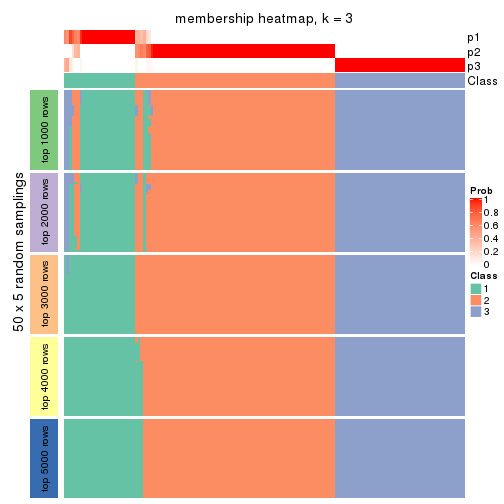
membership_heatmap(res, k = 4)
membership_heatmap(res, k = 5)
membership_heatmap(res, k = 6)
As soon as we have had the classes for columns, we can look for signatures
which are significantly different between classes which can be candidate marks
for certain classes. Following are the heatmaps for signatures.
Signature heatmaps where rows are scaled:
get_signatures(res, k = 2)
get_signatures(res, k = 3)
get_signatures(res, k = 4)
get_signatures(res, k = 5)
get_signatures(res, k = 6)
Signature heatmaps where rows are not scaled:
get_signatures(res, k = 2, scale_rows = FALSE)
get_signatures(res, k = 3, scale_rows = FALSE)
get_signatures(res, k = 4, scale_rows = FALSE)
get_signatures(res, k = 5, scale_rows = FALSE)
get_signatures(res, k = 6, scale_rows = FALSE)
Compare the overlap of signatures from different k:
compare_signatures(res)
get_signature() returns a data frame invisibly. TO get the list of signatures, the function
call should be assigned to a variable explicitly. In following code, if plot argument is set
to FALSE, no heatmap is plotted while only the differential analysis is performed.
# code only for demonstration
tb = get_signature(res, k = ..., plot = FALSE)
An example of the output of tb is:
#> which_row fdr mean_1 mean_2 scaled_mean_1 scaled_mean_2 km
#> 1 38 0.042760348 8.373488 9.131774 -0.5533452 0.5164555 1
#> 2 40 0.018707592 7.106213 8.469186 -0.6173731 0.5762149 1
#> 3 55 0.019134737 10.221463 11.207825 -0.6159697 0.5749050 1
#> 4 59 0.006059896 5.921854 7.869574 -0.6899429 0.6439467 1
#> 5 60 0.018055526 8.928898 10.211722 -0.6204761 0.5791110 1
#> 6 98 0.009384629 15.714769 14.887706 0.6635654 -0.6193277 2
...
The columns in tb are:
which_row: row indices corresponding to the input matrix.fdr: FDR for the differential test. mean_x: The mean value in group x.scaled_mean_x: The mean value in group x after rows are scaled.km: Row groups if k-means clustering is applied to rows.
UMAP plot which shows how samples are separated.
dimension_reduction(res, k = 2, method = "UMAP")
dimension_reduction(res, k = 3, method = "UMAP")
dimension_reduction(res, k = 4, method = "UMAP")
dimension_reduction(res, k = 5, method = "UMAP")
dimension_reduction(res, k = 6, method = "UMAP")
Following heatmap shows how subgroups are split when increasing k:
collect_classes(res)
If matrix rows can be associated to genes, consider to use functional_enrichment(res,
...) to perform function enrichment for the signature genes. See this vignette for more detailed explanations.
MAD:mclust**
The object with results only for a single top-value method and a single partition method
can be extracted as:
res = res_list["MAD", "mclust"]
# you can also extract it by
# res = res_list["MAD:mclust"]
A summary of res and all the functions that can be applied to it:
res
#> A 'ConsensusPartition' object with k = 2, 3, 4, 5, 6.
#> On a matrix with 15148 rows and 152 columns.
#> Top rows (1000, 2000, 3000, 4000, 5000) are extracted by 'MAD' method.
#> Subgroups are detected by 'mclust' method.
#> Performed in total 1250 partitions by row resampling.
#> Best k for subgroups seems to be 2.
#>
#> Following methods can be applied to this 'ConsensusPartition' object:
#> [1] "cola_report" "collect_classes" "collect_plots"
#> [4] "collect_stats" "colnames" "compare_signatures"
#> [7] "consensus_heatmap" "dimension_reduction" "functional_enrichment"
#> [10] "get_anno_col" "get_anno" "get_classes"
#> [13] "get_consensus" "get_matrix" "get_membership"
#> [16] "get_param" "get_signatures" "get_stats"
#> [19] "is_best_k" "is_stable_k" "membership_heatmap"
#> [22] "ncol" "nrow" "plot_ecdf"
#> [25] "rownames" "select_partition_number" "show"
#> [28] "suggest_best_k" "test_to_known_factors"
collect_plots() function collects all the plots made from res for all k (number of partitions)
into one single page to provide an easy and fast comparison between different k.
collect_plots(res)
The plots are:
- The first row: a plot of the ECDF (empirical cumulative distribution
function) curves of the consensus matrix for each
k and the heatmap of
predicted classes for each k.
- The second row: heatmaps of the consensus matrix for each
k.
- The third row: heatmaps of the membership matrix for each
k.
- The fouth row: heatmaps of the signatures for each
k.
All the plots in panels can be made by individual functions and they are
plotted later in this section.
select_partition_number() produces several plots showing different
statistics for choosing “optimized” k. There are following statistics:
- ECDF curves of the consensus matrix for each
k;
- 1-PAC. The PAC
score
measures the proportion of the ambiguous subgrouping.
- Mean silhouette score.
- Concordance. The mean probability of fiting the consensus class ids in all
partitions.
- Area increased. Denote \(A_k\) as the area under the ECDF curve for current
k, the area increased is defined as \(A_k - A_{k-1}\).
- Rand index. The percent of pairs of samples that are both in a same cluster
or both are not in a same cluster in the partition of k and k-1.
- Jaccard index. The ratio of pairs of samples are both in a same cluster in
the partition of k and k-1 and the pairs of samples are both in a same
cluster in the partition k or k-1.
The detailed explanations of these statistics can be found in the cola
vignette.
Generally speaking, lower PAC score, higher mean silhouette score or higher
concordance corresponds to better partition. Rand index and Jaccard index
measure how similar the current partition is compared to partition with k-1.
If they are too similar, we won't accept k is better than k-1.
select_partition_number(res)
The numeric values for all these statistics can be obtained by get_stats().
get_stats(res)
#> k 1-PAC mean_silhouette concordance area_increased Rand Jaccard
#> 2 2 1.000 1.000 1.000 0.4578 0.543 0.543
#> 3 3 0.609 0.729 0.830 0.2805 0.941 0.893
#> 4 4 0.665 0.667 0.816 0.1835 0.739 0.504
#> 5 5 0.872 0.884 0.946 0.1107 0.866 0.595
#> 6 6 0.811 0.786 0.890 0.0245 0.901 0.636
suggest_best_k() suggests the best \(k\) based on these statistics. The rules are as follows:
- All \(k\) with Jaccard index larger than 0.95 are removed because increasing
\(k\) does not provide enough extra information. If all \(k\) are removed, it is
marked as no subgroup is detected.
- For all \(k\) with 1-PAC score larger than 0.9, the maximal \(k\) is taken as
the best \(k\), and other \(k\) are marked as optional \(k\).
- If it does not fit the second rule. The \(k\) with the maximal vote of the
highest 1-PAC score, highest mean silhouette, and highest concordance is
taken as the best \(k\).
suggest_best_k(res)
#> [1] 2
Following shows the table of the partitions (You need to click the show/hide
code output link to see it). The membership matrix (columns with name p*)
is inferred by
clue::cl_consensus()
function with the SE method. Basically the value in the membership matrix
represents the probability to belong to a certain group. The finall class
label for an item is determined with the group with highest probability it
belongs to.
In get_classes() function, the entropy is calculated from the membership
matrix and the silhouette score is calculated from the consensus matrix.
show/hide code output
cbind(get_classes(res, k = 2), get_membership(res, k = 2))
#> class entropy silhouette p1 p2
#> SRR1947547 2 0 1 0 1
#> SRR1947546 1 0 1 1 0
#> SRR1947545 1 0 1 1 0
#> SRR1947544 1 0 1 1 0
#> SRR1947542 1 0 1 1 0
#> SRR1947541 2 0 1 0 1
#> SRR1947540 1 0 1 1 0
#> SRR1947539 2 0 1 0 1
#> SRR1947538 1 0 1 1 0
#> SRR1947537 2 0 1 0 1
#> SRR1947536 2 0 1 0 1
#> SRR1947535 2 0 1 0 1
#> SRR1947534 1 0 1 1 0
#> SRR1947533 1 0 1 1 0
#> SRR1947532 1 0 1 1 0
#> SRR1947531 1 0 1 1 0
#> SRR1947530 2 0 1 0 1
#> SRR1947529 1 0 1 1 0
#> SRR1947528 2 0 1 0 1
#> SRR1947527 1 0 1 1 0
#> SRR1947526 1 0 1 1 0
#> SRR1947525 1 0 1 1 0
#> SRR1947524 2 0 1 0 1
#> SRR1947523 1 0 1 1 0
#> SRR1947521 2 0 1 0 1
#> SRR1947520 1 0 1 1 0
#> SRR1947519 2 0 1 0 1
#> SRR1947518 1 0 1 1 0
#> SRR1947517 2 0 1 0 1
#> SRR1947516 1 0 1 1 0
#> SRR1947515 1 0 1 1 0
#> SRR1947514 1 0 1 1 0
#> SRR1947513 1 0 1 1 0
#> SRR1947512 1 0 1 1 0
#> SRR1947511 1 0 1 1 0
#> SRR1947510 2 0 1 0 1
#> SRR1947572 1 0 1 1 0
#> SRR1947611 2 0 1 0 1
#> SRR1947509 2 0 1 0 1
#> SRR1947644 2 0 1 0 1
#> SRR1947643 1 0 1 1 0
#> SRR1947642 2 0 1 0 1
#> SRR1947640 1 0 1 1 0
#> SRR1947641 2 0 1 0 1
#> SRR1947639 1 0 1 1 0
#> SRR1947638 1 0 1 1 0
#> SRR1947637 2 0 1 0 1
#> SRR1947636 2 0 1 0 1
#> SRR1947635 1 0 1 1 0
#> SRR1947634 1 0 1 1 0
#> SRR1947633 2 0 1 0 1
#> SRR1947632 1 0 1 1 0
#> SRR1947631 2 0 1 0 1
#> SRR1947629 2 0 1 0 1
#> SRR1947630 1 0 1 1 0
#> SRR1947627 2 0 1 0 1
#> SRR1947628 1 0 1 1 0
#> SRR1947626 1 0 1 1 0
#> SRR1947625 2 0 1 0 1
#> SRR1947624 1 0 1 1 0
#> SRR1947623 1 0 1 1 0
#> SRR1947622 1 0 1 1 0
#> SRR1947621 1 0 1 1 0
#> SRR1947620 1 0 1 1 0
#> SRR1947619 2 0 1 0 1
#> SRR1947617 1 0 1 1 0
#> SRR1947618 1 0 1 1 0
#> SRR1947616 1 0 1 1 0
#> SRR1947615 2 0 1 0 1
#> SRR1947614 2 0 1 0 1
#> SRR1947613 1 0 1 1 0
#> SRR1947610 1 0 1 1 0
#> SRR1947612 1 0 1 1 0
#> SRR1947609 1 0 1 1 0
#> SRR1947608 2 0 1 0 1
#> SRR1947606 2 0 1 0 1
#> SRR1947607 1 0 1 1 0
#> SRR1947604 1 0 1 1 0
#> SRR1947605 1 0 1 1 0
#> SRR1947603 1 0 1 1 0
#> SRR1947602 2 0 1 0 1
#> SRR1947600 2 0 1 0 1
#> SRR1947601 1 0 1 1 0
#> SRR1947598 1 0 1 1 0
#> SRR1947599 1 0 1 1 0
#> SRR1947597 1 0 1 1 0
#> SRR1947596 1 0 1 1 0
#> SRR1947595 1 0 1 1 0
#> SRR1947594 1 0 1 1 0
#> SRR1947592 2 0 1 0 1
#> SRR1947591 1 0 1 1 0
#> SRR1947590 1 0 1 1 0
#> SRR1947588 1 0 1 1 0
#> SRR1947587 2 0 1 0 1
#> SRR1947586 1 0 1 1 0
#> SRR1947585 2 0 1 0 1
#> SRR1947584 1 0 1 1 0
#> SRR1947583 1 0 1 1 0
#> SRR1947582 1 0 1 1 0
#> SRR1947580 1 0 1 1 0
#> SRR1947581 1 0 1 1 0
#> SRR1947576 2 0 1 0 1
#> SRR1947575 2 0 1 0 1
#> SRR1947579 2 0 1 0 1
#> SRR1947578 1 0 1 1 0
#> SRR1947573 2 0 1 0 1
#> SRR1947574 1 0 1 1 0
#> SRR1947571 1 0 1 1 0
#> SRR1947577 1 0 1 1 0
#> SRR1947570 2 0 1 0 1
#> SRR1947569 2 0 1 0 1
#> SRR1947566 1 0 1 1 0
#> SRR1947567 1 0 1 1 0
#> SRR1947568 1 0 1 1 0
#> SRR1947564 1 0 1 1 0
#> SRR1947563 2 0 1 0 1
#> SRR1947562 1 0 1 1 0
#> SRR1947565 2 0 1 0 1
#> SRR1947559 1 0 1 1 0
#> SRR1947560 2 0 1 0 1
#> SRR1947561 1 0 1 1 0
#> SRR1947557 1 0 1 1 0
#> SRR1947558 2 0 1 0 1
#> SRR1947556 1 0 1 1 0
#> SRR1947553 1 0 1 1 0
#> SRR1947554 1 0 1 1 0
#> SRR1947555 1 0 1 1 0
#> SRR1947550 1 0 1 1 0
#> SRR1947552 1 0 1 1 0
#> SRR1947549 2 0 1 0 1
#> SRR1947551 2 0 1 0 1
#> SRR1947548 1 0 1 1 0
#> SRR1947506 2 0 1 0 1
#> SRR1947507 1 0 1 1 0
#> SRR1947504 1 0 1 1 0
#> SRR1947503 1 0 1 1 0
#> SRR1947502 1 0 1 1 0
#> SRR1947501 1 0 1 1 0
#> SRR1947499 2 0 1 0 1
#> SRR1947498 2 0 1 0 1
#> SRR1947508 2 0 1 0 1
#> SRR1947505 1 0 1 1 0
#> SRR1947497 1 0 1 1 0
#> SRR1947496 1 0 1 1 0
#> SRR1947495 1 0 1 1 0
#> SRR1947494 1 0 1 1 0
#> SRR1947493 2 0 1 0 1
#> SRR1947492 1 0 1 1 0
#> SRR1947500 1 0 1 1 0
#> SRR1947491 1 0 1 1 0
#> SRR1947490 1 0 1 1 0
#> SRR1947489 2 0 1 0 1
show/hide code output
cbind(get_classes(res, k = 3), get_membership(res, k = 3))
#> class entropy silhouette p1 p2 p3
#> SRR1947547 3 0.0000 0.9355 0.000 0.000 1.000
#> SRR1947546 2 0.2537 0.8022 0.080 0.920 0.000
#> SRR1947545 2 0.3686 0.7751 0.140 0.860 0.000
#> SRR1947544 2 0.3686 0.7751 0.140 0.860 0.000
#> SRR1947542 2 0.0747 0.8118 0.016 0.984 0.000
#> SRR1947541 3 0.0000 0.9355 0.000 0.000 1.000
#> SRR1947540 2 0.3116 0.7901 0.108 0.892 0.000
#> SRR1947539 3 0.0424 0.9291 0.008 0.000 0.992
#> SRR1947538 2 0.0592 0.8125 0.012 0.988 0.000
#> SRR1947537 3 0.0000 0.9355 0.000 0.000 1.000
#> SRR1947536 3 0.1289 0.9114 0.032 0.000 0.968
#> SRR1947535 3 0.0000 0.9355 0.000 0.000 1.000
#> SRR1947534 2 0.4931 0.7767 0.232 0.768 0.000
#> SRR1947533 2 0.6295 0.4352 0.472 0.528 0.000
#> SRR1947532 2 0.1031 0.8116 0.024 0.976 0.000
#> SRR1947531 2 0.3116 0.7901 0.108 0.892 0.000
#> SRR1947530 3 0.1289 0.9114 0.032 0.000 0.968
#> SRR1947529 2 0.3752 0.7904 0.144 0.856 0.000
#> SRR1947528 3 0.0000 0.9355 0.000 0.000 1.000
#> SRR1947527 2 0.5216 0.7848 0.260 0.740 0.000
#> SRR1947526 2 0.6299 0.4295 0.476 0.524 0.000
#> SRR1947525 2 0.4062 0.7971 0.164 0.836 0.000
#> SRR1947524 3 0.0000 0.9355 0.000 0.000 1.000
#> SRR1947523 2 0.1411 0.8111 0.036 0.964 0.000
#> SRR1947521 1 0.6309 0.2223 0.504 0.000 0.496
#> SRR1947520 1 0.6305 -0.4006 0.516 0.484 0.000
#> SRR1947519 3 0.0000 0.9355 0.000 0.000 1.000
#> SRR1947518 2 0.4002 0.8069 0.160 0.840 0.000
#> SRR1947517 3 0.6295 -0.1822 0.472 0.000 0.528
#> SRR1947516 2 0.6302 0.4328 0.480 0.520 0.000
#> SRR1947515 2 0.1031 0.8116 0.024 0.976 0.000
#> SRR1947514 2 0.6026 0.6346 0.376 0.624 0.000
#> SRR1947513 2 0.3941 0.7782 0.156 0.844 0.000
#> SRR1947512 2 0.4931 0.7767 0.232 0.768 0.000
#> SRR1947511 2 0.6299 0.4295 0.476 0.524 0.000
#> SRR1947510 1 0.6291 0.3181 0.532 0.000 0.468
#> SRR1947572 2 0.4291 0.8038 0.180 0.820 0.000
#> SRR1947611 1 0.5988 0.4709 0.632 0.000 0.368
#> SRR1947509 3 0.6260 -0.0826 0.448 0.000 0.552
#> SRR1947644 3 0.6215 -0.0132 0.428 0.000 0.572
#> SRR1947643 2 0.5560 0.6013 0.300 0.700 0.000
#> SRR1947642 3 0.0000 0.9355 0.000 0.000 1.000
#> SRR1947640 2 0.2959 0.8180 0.100 0.900 0.000
#> SRR1947641 3 0.0000 0.9355 0.000 0.000 1.000
#> SRR1947639 2 0.4399 0.8049 0.188 0.812 0.000
#> SRR1947638 2 0.3686 0.7751 0.140 0.860 0.000
#> SRR1947637 1 0.6008 0.4671 0.628 0.000 0.372
#> SRR1947636 3 0.0000 0.9355 0.000 0.000 1.000
#> SRR1947635 2 0.2448 0.8027 0.076 0.924 0.000
#> SRR1947634 2 0.6299 0.4295 0.476 0.524 0.000
#> SRR1947633 3 0.2625 0.8499 0.084 0.000 0.916
#> SRR1947632 2 0.1163 0.8117 0.028 0.972 0.000
#> SRR1947631 3 0.0000 0.9355 0.000 0.000 1.000
#> SRR1947629 3 0.0000 0.9355 0.000 0.000 1.000
#> SRR1947630 1 0.6154 -0.2069 0.592 0.408 0.000
#> SRR1947627 3 0.1289 0.9114 0.032 0.000 0.968
#> SRR1947628 2 0.2711 0.7996 0.088 0.912 0.000
#> SRR1947626 2 0.4654 0.7828 0.208 0.792 0.000
#> SRR1947625 3 0.0000 0.9355 0.000 0.000 1.000
#> SRR1947624 1 0.6154 -0.2069 0.592 0.408 0.000
#> SRR1947623 2 0.4796 0.7829 0.220 0.780 0.000
#> SRR1947622 2 0.2959 0.8010 0.100 0.900 0.000
#> SRR1947621 2 0.6274 0.4809 0.456 0.544 0.000
#> SRR1947620 2 0.3686 0.7751 0.140 0.860 0.000
#> SRR1947619 3 0.0000 0.9355 0.000 0.000 1.000
#> SRR1947617 2 0.6062 0.6005 0.384 0.616 0.000
#> SRR1947618 2 0.3686 0.7751 0.140 0.860 0.000
#> SRR1947616 2 0.6062 0.4549 0.384 0.616 0.000
#> SRR1947615 3 0.0000 0.9355 0.000 0.000 1.000
#> SRR1947614 1 0.6291 0.3181 0.532 0.000 0.468
#> SRR1947613 2 0.4931 0.7767 0.232 0.768 0.000
#> SRR1947610 2 0.4702 0.8017 0.212 0.788 0.000
#> SRR1947612 2 0.5706 0.6904 0.320 0.680 0.000
#> SRR1947609 2 0.2796 0.7970 0.092 0.908 0.000
#> SRR1947608 3 0.0000 0.9355 0.000 0.000 1.000
#> SRR1947606 3 0.0000 0.9355 0.000 0.000 1.000
#> SRR1947607 2 0.4931 0.7767 0.232 0.768 0.000
#> SRR1947604 2 0.0892 0.8117 0.020 0.980 0.000
#> SRR1947605 2 0.3686 0.7751 0.140 0.860 0.000
#> SRR1947603 2 0.3412 0.7869 0.124 0.876 0.000
#> SRR1947602 3 0.1289 0.9114 0.032 0.000 0.968
#> SRR1947600 3 0.0000 0.9355 0.000 0.000 1.000
#> SRR1947601 2 0.6299 0.4295 0.476 0.524 0.000
#> SRR1947598 2 0.0747 0.8128 0.016 0.984 0.000
#> SRR1947599 2 0.2261 0.8028 0.068 0.932 0.000
#> SRR1947597 2 0.4235 0.7926 0.176 0.824 0.000
#> SRR1947596 2 0.1860 0.8061 0.052 0.948 0.000
#> SRR1947595 2 0.2711 0.7986 0.088 0.912 0.000
#> SRR1947594 2 0.4931 0.7767 0.232 0.768 0.000
#> SRR1947592 3 0.0000 0.9355 0.000 0.000 1.000
#> SRR1947591 2 0.6302 0.4328 0.480 0.520 0.000
#> SRR1947590 2 0.1643 0.8079 0.044 0.956 0.000
#> SRR1947588 2 0.4931 0.7767 0.232 0.768 0.000
#> SRR1947587 3 0.0000 0.9355 0.000 0.000 1.000
#> SRR1947586 2 0.5098 0.7885 0.248 0.752 0.000
#> SRR1947585 3 0.0000 0.9355 0.000 0.000 1.000
#> SRR1947584 2 0.4750 0.7786 0.216 0.784 0.000
#> SRR1947583 2 0.3038 0.8116 0.104 0.896 0.000
#> SRR1947582 2 0.3686 0.7751 0.140 0.860 0.000
#> SRR1947580 2 0.6267 0.4752 0.452 0.548 0.000
#> SRR1947581 2 0.4931 0.7767 0.232 0.768 0.000
#> SRR1947576 1 0.5882 0.4817 0.652 0.000 0.348
#> SRR1947575 3 0.0000 0.9355 0.000 0.000 1.000
#> SRR1947579 1 0.6291 0.3181 0.532 0.000 0.468
#> SRR1947578 2 0.3116 0.7901 0.108 0.892 0.000
#> SRR1947573 3 0.0000 0.9355 0.000 0.000 1.000
#> SRR1947574 2 0.3752 0.8081 0.144 0.856 0.000
#> SRR1947571 2 0.0592 0.8119 0.012 0.988 0.000
#> SRR1947577 2 0.3686 0.7751 0.140 0.860 0.000
#> SRR1947570 3 0.0000 0.9355 0.000 0.000 1.000
#> SRR1947569 3 0.0000 0.9355 0.000 0.000 1.000
#> SRR1947566 2 0.6062 0.4549 0.384 0.616 0.000
#> SRR1947567 2 0.2356 0.8042 0.072 0.928 0.000
#> SRR1947568 2 0.4555 0.8052 0.200 0.800 0.000
#> SRR1947564 2 0.4605 0.7789 0.204 0.796 0.000
#> SRR1947563 3 0.0000 0.9355 0.000 0.000 1.000
#> SRR1947562 2 0.0892 0.8119 0.020 0.980 0.000
#> SRR1947565 3 0.0000 0.9355 0.000 0.000 1.000
#> SRR1947559 2 0.3116 0.8017 0.108 0.892 0.000
#> SRR1947560 1 0.5882 0.4817 0.652 0.000 0.348
#> SRR1947561 2 0.6302 0.4328 0.480 0.520 0.000
#> SRR1947557 2 0.4750 0.7786 0.216 0.784 0.000
#> SRR1947558 3 0.0000 0.9355 0.000 0.000 1.000
#> SRR1947556 2 0.3551 0.7796 0.132 0.868 0.000
#> SRR1947553 2 0.4291 0.8068 0.180 0.820 0.000
#> SRR1947554 2 0.4931 0.7767 0.232 0.768 0.000
#> SRR1947555 2 0.6111 0.4311 0.396 0.604 0.000
#> SRR1947550 2 0.1163 0.8118 0.028 0.972 0.000
#> SRR1947552 2 0.0892 0.8110 0.020 0.980 0.000
#> SRR1947549 3 0.0000 0.9355 0.000 0.000 1.000
#> SRR1947551 3 0.6260 -0.1012 0.448 0.000 0.552
#> SRR1947548 2 0.1031 0.8116 0.024 0.976 0.000
#> SRR1947506 3 0.0000 0.9355 0.000 0.000 1.000
#> SRR1947507 2 0.4887 0.7775 0.228 0.772 0.000
#> SRR1947504 2 0.4796 0.7829 0.220 0.780 0.000
#> SRR1947503 2 0.3116 0.7911 0.108 0.892 0.000
#> SRR1947502 2 0.6026 0.6119 0.376 0.624 0.000
#> SRR1947501 2 0.2625 0.8010 0.084 0.916 0.000
#> SRR1947499 3 0.1289 0.9114 0.032 0.000 0.968
#> SRR1947498 3 0.1289 0.9114 0.032 0.000 0.968
#> SRR1947508 3 0.1289 0.9114 0.032 0.000 0.968
#> SRR1947505 2 0.2537 0.8011 0.080 0.920 0.000
#> SRR1947497 2 0.4504 0.7811 0.196 0.804 0.000
#> SRR1947496 2 0.4931 0.7767 0.232 0.768 0.000
#> SRR1947495 2 0.4555 0.7824 0.200 0.800 0.000
#> SRR1947494 2 0.0747 0.8114 0.016 0.984 0.000
#> SRR1947493 3 0.0000 0.9355 0.000 0.000 1.000
#> SRR1947492 2 0.4931 0.7767 0.232 0.768 0.000
#> SRR1947500 2 0.2796 0.8150 0.092 0.908 0.000
#> SRR1947491 2 0.0747 0.8120 0.016 0.984 0.000
#> SRR1947490 2 0.4931 0.7767 0.232 0.768 0.000
#> SRR1947489 3 0.0000 0.9355 0.000 0.000 1.000
show/hide code output
cbind(get_classes(res, k = 4), get_membership(res, k = 4))
#> class entropy silhouette p1 p2 p3 p4
#> SRR1947547 3 0.0336 0.8952 0.008 0.000 0.992 0.000
#> SRR1947546 4 0.0921 0.7004 0.000 0.028 0.000 0.972
#> SRR1947545 4 0.4576 0.1680 0.260 0.012 0.000 0.728
#> SRR1947544 4 0.4576 0.1680 0.260 0.012 0.000 0.728
#> SRR1947542 4 0.0000 0.7101 0.000 0.000 0.000 1.000
#> SRR1947541 3 0.0188 0.8953 0.004 0.000 0.996 0.000
#> SRR1947540 4 0.1940 0.6742 0.000 0.076 0.000 0.924
#> SRR1947539 3 0.1302 0.8796 0.044 0.000 0.956 0.000
#> SRR1947538 4 0.0000 0.7101 0.000 0.000 0.000 1.000
#> SRR1947537 3 0.0188 0.8950 0.004 0.000 0.996 0.000
#> SRR1947536 3 0.0336 0.8952 0.008 0.000 0.992 0.000
#> SRR1947535 3 0.0188 0.8950 0.004 0.000 0.996 0.000
#> SRR1947534 4 0.7535 -0.4285 0.336 0.200 0.000 0.464
#> SRR1947533 2 0.2469 0.7461 0.000 0.892 0.000 0.108
#> SRR1947532 4 0.0000 0.7101 0.000 0.000 0.000 1.000
#> SRR1947531 4 0.2081 0.6708 0.000 0.084 0.000 0.916
#> SRR1947530 3 0.0336 0.8952 0.008 0.000 0.992 0.000
#> SRR1947529 4 0.4948 -0.1368 0.000 0.440 0.000 0.560
#> SRR1947528 3 0.0336 0.8952 0.008 0.000 0.992 0.000
#> SRR1947527 2 0.4477 0.6529 0.000 0.688 0.000 0.312
#> SRR1947526 2 0.0188 0.6840 0.000 0.996 0.000 0.004
#> SRR1947525 4 0.4697 0.2851 0.000 0.356 0.000 0.644
#> SRR1947524 3 0.0188 0.8950 0.004 0.000 0.996 0.000
#> SRR1947523 4 0.0469 0.7056 0.000 0.012 0.000 0.988
#> SRR1947521 3 0.6600 0.5908 0.396 0.084 0.520 0.000
#> SRR1947520 2 0.2081 0.6788 0.000 0.916 0.000 0.084
#> SRR1947519 3 0.0188 0.8950 0.004 0.000 0.996 0.000
#> SRR1947518 4 0.4522 0.3660 0.000 0.320 0.000 0.680
#> SRR1947517 3 0.5746 0.6358 0.396 0.032 0.572 0.000
#> SRR1947516 2 0.3837 0.7431 0.000 0.776 0.000 0.224
#> SRR1947515 4 0.0000 0.7101 0.000 0.000 0.000 1.000
#> SRR1947514 2 0.3610 0.7507 0.000 0.800 0.000 0.200
#> SRR1947513 4 0.3672 0.4537 0.164 0.012 0.000 0.824
#> SRR1947512 1 0.5339 0.9636 0.600 0.016 0.000 0.384
#> SRR1947511 2 0.0188 0.6840 0.000 0.996 0.000 0.004
#> SRR1947510 3 0.6600 0.5908 0.396 0.084 0.520 0.000
#> SRR1947572 4 0.5055 0.2557 0.008 0.368 0.000 0.624
#> SRR1947611 3 0.7328 0.5108 0.392 0.156 0.452 0.000
#> SRR1947509 3 0.5016 0.6580 0.396 0.004 0.600 0.000
#> SRR1947644 3 0.5016 0.6580 0.396 0.004 0.600 0.000
#> SRR1947643 4 0.4877 0.0681 0.000 0.408 0.000 0.592
#> SRR1947642 3 0.0188 0.8950 0.004 0.000 0.996 0.000
#> SRR1947640 4 0.0000 0.7101 0.000 0.000 0.000 1.000
#> SRR1947641 3 0.0336 0.8952 0.008 0.000 0.992 0.000
#> SRR1947639 4 0.4746 0.2588 0.000 0.368 0.000 0.632
#> SRR1947638 4 0.3672 0.4537 0.164 0.012 0.000 0.824
#> SRR1947637 3 0.7328 0.5108 0.392 0.156 0.452 0.000
#> SRR1947636 3 0.0188 0.8950 0.004 0.000 0.996 0.000
#> SRR1947635 4 0.0000 0.7101 0.000 0.000 0.000 1.000
#> SRR1947634 2 0.2011 0.6805 0.000 0.920 0.000 0.080
#> SRR1947633 3 0.4122 0.7665 0.236 0.004 0.760 0.000
#> SRR1947632 4 0.0921 0.7004 0.000 0.028 0.000 0.972
#> SRR1947631 3 0.0188 0.8950 0.004 0.000 0.996 0.000
#> SRR1947629 3 0.0188 0.8950 0.004 0.000 0.996 0.000
#> SRR1947630 2 0.2408 0.6670 0.000 0.896 0.000 0.104
#> SRR1947627 3 0.0336 0.8952 0.008 0.000 0.992 0.000
#> SRR1947628 4 0.0592 0.7060 0.000 0.016 0.000 0.984
#> SRR1947626 2 0.4103 0.7191 0.000 0.744 0.000 0.256
#> SRR1947625 3 0.0188 0.8950 0.004 0.000 0.996 0.000
#> SRR1947624 2 0.1302 0.6882 0.000 0.956 0.000 0.044
#> SRR1947623 4 0.7855 -0.3796 0.284 0.320 0.000 0.396
#> SRR1947622 4 0.3024 0.6048 0.000 0.148 0.000 0.852
#> SRR1947621 2 0.3172 0.7523 0.000 0.840 0.000 0.160
#> SRR1947620 4 0.4319 0.2788 0.228 0.012 0.000 0.760
#> SRR1947619 3 0.0188 0.8950 0.004 0.000 0.996 0.000
#> SRR1947617 2 0.3873 0.7407 0.000 0.772 0.000 0.228
#> SRR1947618 4 0.4248 0.3034 0.220 0.012 0.000 0.768
#> SRR1947616 2 0.4994 0.0888 0.000 0.520 0.000 0.480
#> SRR1947615 3 0.0336 0.8952 0.008 0.000 0.992 0.000
#> SRR1947614 3 0.6600 0.5908 0.396 0.084 0.520 0.000
#> SRR1947613 1 0.5428 0.9666 0.600 0.020 0.000 0.380
#> SRR1947610 4 0.4746 0.2588 0.000 0.368 0.000 0.632
#> SRR1947612 2 0.3610 0.7507 0.000 0.800 0.000 0.200
#> SRR1947609 4 0.1488 0.6786 0.032 0.012 0.000 0.956
#> SRR1947608 3 0.0188 0.8950 0.004 0.000 0.996 0.000
#> SRR1947606 3 0.0188 0.8950 0.004 0.000 0.996 0.000
#> SRR1947607 1 0.6219 0.8804 0.588 0.068 0.000 0.344
#> SRR1947604 4 0.0000 0.7101 0.000 0.000 0.000 1.000
#> SRR1947605 4 0.4576 0.1680 0.260 0.012 0.000 0.728
#> SRR1947603 4 0.4304 0.3507 0.000 0.284 0.000 0.716
#> SRR1947602 3 0.0336 0.8952 0.008 0.000 0.992 0.000
#> SRR1947600 3 0.0188 0.8950 0.004 0.000 0.996 0.000
#> SRR1947601 2 0.1022 0.7047 0.000 0.968 0.000 0.032
#> SRR1947598 4 0.0469 0.7056 0.000 0.012 0.000 0.988
#> SRR1947599 4 0.0937 0.6974 0.012 0.012 0.000 0.976
#> SRR1947597 4 0.4898 0.1064 0.000 0.416 0.000 0.584
#> SRR1947596 4 0.1389 0.6707 0.048 0.000 0.000 0.952
#> SRR1947595 4 0.3015 0.6527 0.024 0.092 0.000 0.884
#> SRR1947594 1 0.5428 0.9666 0.600 0.020 0.000 0.380
#> SRR1947592 3 0.0000 0.8952 0.000 0.000 1.000 0.000
#> SRR1947591 2 0.3444 0.7534 0.000 0.816 0.000 0.184
#> SRR1947590 4 0.1637 0.6580 0.060 0.000 0.000 0.940
#> SRR1947588 1 0.5428 0.9666 0.600 0.020 0.000 0.380
#> SRR1947587 3 0.0336 0.8952 0.008 0.000 0.992 0.000
#> SRR1947586 2 0.4730 0.5815 0.000 0.636 0.000 0.364
#> SRR1947585 3 0.0188 0.8950 0.004 0.000 0.996 0.000
#> SRR1947584 1 0.5339 0.9636 0.600 0.016 0.000 0.384
#> SRR1947583 4 0.2973 0.5885 0.000 0.144 0.000 0.856
#> SRR1947582 4 0.4319 0.2788 0.228 0.012 0.000 0.760
#> SRR1947580 2 0.2469 0.7461 0.000 0.892 0.000 0.108
#> SRR1947581 1 0.5339 0.9636 0.600 0.016 0.000 0.384
#> SRR1947576 3 0.7328 0.5108 0.392 0.156 0.452 0.000
#> SRR1947575 3 0.0000 0.8952 0.000 0.000 1.000 0.000
#> SRR1947579 3 0.6600 0.5908 0.396 0.084 0.520 0.000
#> SRR1947578 4 0.3400 0.5681 0.000 0.180 0.000 0.820
#> SRR1947573 3 0.0336 0.8952 0.008 0.000 0.992 0.000
#> SRR1947574 4 0.4857 0.4165 0.016 0.284 0.000 0.700
#> SRR1947571 4 0.0000 0.7101 0.000 0.000 0.000 1.000
#> SRR1947577 4 0.3672 0.4537 0.164 0.012 0.000 0.824
#> SRR1947570 3 0.0336 0.8952 0.008 0.000 0.992 0.000
#> SRR1947569 3 0.0188 0.8950 0.004 0.000 0.996 0.000
#> SRR1947566 2 0.4992 0.1018 0.000 0.524 0.000 0.476
#> SRR1947567 4 0.0000 0.7101 0.000 0.000 0.000 1.000
#> SRR1947568 2 0.5132 0.3921 0.004 0.548 0.000 0.448
#> SRR1947564 2 0.4994 0.2736 0.000 0.520 0.000 0.480
#> SRR1947563 3 0.0188 0.8950 0.004 0.000 0.996 0.000
#> SRR1947562 4 0.0000 0.7101 0.000 0.000 0.000 1.000
#> SRR1947565 3 0.0188 0.8950 0.004 0.000 0.996 0.000
#> SRR1947559 4 0.4661 0.3163 0.000 0.348 0.000 0.652
#> SRR1947560 3 0.7328 0.5108 0.392 0.156 0.452 0.000
#> SRR1947561 2 0.3907 0.7380 0.000 0.768 0.000 0.232
#> SRR1947557 1 0.5339 0.9636 0.600 0.016 0.000 0.384
#> SRR1947558 3 0.0188 0.8950 0.004 0.000 0.996 0.000
#> SRR1947556 4 0.4485 0.2140 0.248 0.012 0.000 0.740
#> SRR1947553 4 0.4746 0.2588 0.000 0.368 0.000 0.632
#> SRR1947554 1 0.5517 0.9111 0.568 0.020 0.000 0.412
#> SRR1947555 2 0.4992 0.1018 0.000 0.524 0.000 0.476
#> SRR1947550 4 0.0000 0.7101 0.000 0.000 0.000 1.000
#> SRR1947552 4 0.0188 0.7092 0.000 0.004 0.000 0.996
#> SRR1947549 3 0.0000 0.8952 0.000 0.000 1.000 0.000
#> SRR1947551 3 0.6600 0.5908 0.396 0.084 0.520 0.000
#> SRR1947548 4 0.0000 0.7101 0.000 0.000 0.000 1.000
#> SRR1947506 3 0.0336 0.8952 0.008 0.000 0.992 0.000
#> SRR1947507 1 0.5428 0.9666 0.600 0.020 0.000 0.380
#> SRR1947504 1 0.7162 0.7625 0.472 0.136 0.000 0.392
#> SRR1947503 4 0.0469 0.7037 0.012 0.000 0.000 0.988
#> SRR1947502 2 0.3764 0.7461 0.000 0.784 0.000 0.216
#> SRR1947501 4 0.0921 0.7004 0.000 0.028 0.000 0.972
#> SRR1947499 3 0.0336 0.8952 0.008 0.000 0.992 0.000
#> SRR1947498 3 0.0188 0.8950 0.004 0.000 0.996 0.000
#> SRR1947508 3 0.0336 0.8952 0.008 0.000 0.992 0.000
#> SRR1947505 4 0.0469 0.7056 0.000 0.012 0.000 0.988
#> SRR1947497 2 0.4697 0.5767 0.000 0.644 0.000 0.356
#> SRR1947496 1 0.5428 0.9666 0.600 0.020 0.000 0.380
#> SRR1947495 2 0.4679 0.5845 0.000 0.648 0.000 0.352
#> SRR1947494 4 0.1174 0.6909 0.020 0.012 0.000 0.968
#> SRR1947493 3 0.0336 0.8952 0.008 0.000 0.992 0.000
#> SRR1947492 1 0.5428 0.9666 0.600 0.020 0.000 0.380
#> SRR1947500 4 0.0188 0.7094 0.000 0.004 0.000 0.996
#> SRR1947491 4 0.0188 0.7092 0.000 0.004 0.000 0.996
#> SRR1947490 1 0.5428 0.9666 0.600 0.020 0.000 0.380
#> SRR1947489 3 0.0336 0.8952 0.008 0.000 0.992 0.000
show/hide code output
cbind(get_classes(res, k = 5), get_membership(res, k = 5))
#> class entropy silhouette p1 p2 p3 p4 p5
#> SRR1947547 3 0.0000 0.985 0.000 0.000 1.000 0.000 0.000
#> SRR1947546 4 0.0000 0.929 0.000 0.000 0.000 1.000 0.000
#> SRR1947545 1 0.3143 0.763 0.796 0.000 0.000 0.204 0.000
#> SRR1947544 1 0.3143 0.763 0.796 0.000 0.000 0.204 0.000
#> SRR1947542 4 0.0000 0.929 0.000 0.000 0.000 1.000 0.000
#> SRR1947541 3 0.0000 0.985 0.000 0.000 1.000 0.000 0.000
#> SRR1947540 4 0.0000 0.929 0.000 0.000 0.000 1.000 0.000
#> SRR1947539 3 0.3366 0.686 0.000 0.000 0.768 0.000 0.232
#> SRR1947538 4 0.0162 0.928 0.004 0.000 0.000 0.996 0.000
#> SRR1947537 3 0.0000 0.985 0.000 0.000 1.000 0.000 0.000
#> SRR1947536 3 0.2329 0.862 0.000 0.000 0.876 0.000 0.124
#> SRR1947535 3 0.0000 0.985 0.000 0.000 1.000 0.000 0.000
#> SRR1947534 1 0.3455 0.678 0.784 0.008 0.000 0.208 0.000
#> SRR1947533 2 0.0000 0.945 0.000 1.000 0.000 0.000 0.000
#> SRR1947532 4 0.0162 0.928 0.004 0.000 0.000 0.996 0.000
#> SRR1947531 4 0.0510 0.922 0.000 0.016 0.000 0.984 0.000
#> SRR1947530 3 0.1851 0.903 0.000 0.000 0.912 0.000 0.088
#> SRR1947529 2 0.3752 0.564 0.000 0.708 0.000 0.292 0.000
#> SRR1947528 3 0.0000 0.985 0.000 0.000 1.000 0.000 0.000
#> SRR1947527 2 0.0000 0.945 0.000 1.000 0.000 0.000 0.000
#> SRR1947526 2 0.0000 0.945 0.000 1.000 0.000 0.000 0.000
#> SRR1947525 4 0.2179 0.858 0.000 0.112 0.000 0.888 0.000
#> SRR1947524 3 0.0000 0.985 0.000 0.000 1.000 0.000 0.000
#> SRR1947523 4 0.0000 0.929 0.000 0.000 0.000 1.000 0.000
#> SRR1947521 5 0.0000 0.961 0.000 0.000 0.000 0.000 1.000
#> SRR1947520 2 0.0162 0.943 0.004 0.996 0.000 0.000 0.000
#> SRR1947519 3 0.0000 0.985 0.000 0.000 1.000 0.000 0.000
#> SRR1947518 4 0.0324 0.927 0.004 0.004 0.000 0.992 0.000
#> SRR1947517 5 0.0000 0.961 0.000 0.000 0.000 0.000 1.000
#> SRR1947516 2 0.0000 0.945 0.000 1.000 0.000 0.000 0.000
#> SRR1947515 4 0.0162 0.928 0.004 0.000 0.000 0.996 0.000
#> SRR1947514 2 0.0000 0.945 0.000 1.000 0.000 0.000 0.000
#> SRR1947513 1 0.4171 0.552 0.604 0.000 0.000 0.396 0.000
#> SRR1947512 1 0.0000 0.794 1.000 0.000 0.000 0.000 0.000
#> SRR1947511 2 0.0162 0.943 0.004 0.996 0.000 0.000 0.000
#> SRR1947510 5 0.0000 0.961 0.000 0.000 0.000 0.000 1.000
#> SRR1947572 4 0.2674 0.830 0.004 0.140 0.000 0.856 0.000
#> SRR1947611 5 0.0000 0.961 0.000 0.000 0.000 0.000 1.000
#> SRR1947509 5 0.0000 0.961 0.000 0.000 0.000 0.000 1.000
#> SRR1947644 5 0.0000 0.961 0.000 0.000 0.000 0.000 1.000
#> SRR1947643 2 0.0290 0.940 0.000 0.992 0.000 0.008 0.000
#> SRR1947642 3 0.0000 0.985 0.000 0.000 1.000 0.000 0.000
#> SRR1947640 4 0.0162 0.928 0.004 0.000 0.000 0.996 0.000
#> SRR1947641 3 0.0000 0.985 0.000 0.000 1.000 0.000 0.000
#> SRR1947639 4 0.3196 0.786 0.004 0.192 0.000 0.804 0.000
#> SRR1947638 1 0.4182 0.546 0.600 0.000 0.000 0.400 0.000
#> SRR1947637 5 0.2648 0.813 0.000 0.000 0.152 0.000 0.848
#> SRR1947636 3 0.0000 0.985 0.000 0.000 1.000 0.000 0.000
#> SRR1947635 4 0.0000 0.929 0.000 0.000 0.000 1.000 0.000
#> SRR1947634 2 0.0162 0.943 0.004 0.996 0.000 0.000 0.000
#> SRR1947633 5 0.3210 0.742 0.000 0.000 0.212 0.000 0.788
#> SRR1947632 4 0.0000 0.929 0.000 0.000 0.000 1.000 0.000
#> SRR1947631 3 0.0000 0.985 0.000 0.000 1.000 0.000 0.000
#> SRR1947629 3 0.0000 0.985 0.000 0.000 1.000 0.000 0.000
#> SRR1947630 2 0.0162 0.943 0.004 0.996 0.000 0.000 0.000
#> SRR1947627 3 0.0000 0.985 0.000 0.000 1.000 0.000 0.000
#> SRR1947628 4 0.0000 0.929 0.000 0.000 0.000 1.000 0.000
#> SRR1947626 2 0.0000 0.945 0.000 1.000 0.000 0.000 0.000
#> SRR1947625 3 0.0000 0.985 0.000 0.000 1.000 0.000 0.000
#> SRR1947624 2 0.0162 0.943 0.004 0.996 0.000 0.000 0.000
#> SRR1947623 4 0.5002 0.491 0.312 0.052 0.000 0.636 0.000
#> SRR1947622 4 0.1043 0.907 0.000 0.040 0.000 0.960 0.000
#> SRR1947621 2 0.0000 0.945 0.000 1.000 0.000 0.000 0.000
#> SRR1947620 1 0.3143 0.763 0.796 0.000 0.000 0.204 0.000
#> SRR1947619 3 0.0000 0.985 0.000 0.000 1.000 0.000 0.000
#> SRR1947617 2 0.0000 0.945 0.000 1.000 0.000 0.000 0.000
#> SRR1947618 1 0.3177 0.761 0.792 0.000 0.000 0.208 0.000
#> SRR1947616 2 0.2648 0.774 0.000 0.848 0.000 0.152 0.000
#> SRR1947615 3 0.0000 0.985 0.000 0.000 1.000 0.000 0.000
#> SRR1947614 5 0.0000 0.961 0.000 0.000 0.000 0.000 1.000
#> SRR1947613 1 0.0000 0.794 1.000 0.000 0.000 0.000 0.000
#> SRR1947610 4 0.2966 0.794 0.000 0.184 0.000 0.816 0.000
#> SRR1947612 2 0.0000 0.945 0.000 1.000 0.000 0.000 0.000
#> SRR1947609 4 0.0162 0.928 0.004 0.000 0.000 0.996 0.000
#> SRR1947608 3 0.0000 0.985 0.000 0.000 1.000 0.000 0.000
#> SRR1947606 3 0.0000 0.985 0.000 0.000 1.000 0.000 0.000
#> SRR1947607 1 0.1410 0.763 0.940 0.060 0.000 0.000 0.000
#> SRR1947604 4 0.0162 0.928 0.004 0.000 0.000 0.996 0.000
#> SRR1947605 1 0.3143 0.763 0.796 0.000 0.000 0.204 0.000
#> SRR1947603 2 0.4101 0.398 0.000 0.628 0.000 0.372 0.000
#> SRR1947602 3 0.1043 0.950 0.000 0.000 0.960 0.000 0.040
#> SRR1947600 3 0.0000 0.985 0.000 0.000 1.000 0.000 0.000
#> SRR1947601 2 0.0000 0.945 0.000 1.000 0.000 0.000 0.000
#> SRR1947598 4 0.0000 0.929 0.000 0.000 0.000 1.000 0.000
#> SRR1947599 4 0.0162 0.928 0.004 0.000 0.000 0.996 0.000
#> SRR1947597 4 0.3039 0.786 0.000 0.192 0.000 0.808 0.000
#> SRR1947596 4 0.0290 0.926 0.008 0.000 0.000 0.992 0.000
#> SRR1947595 4 0.1942 0.884 0.012 0.068 0.000 0.920 0.000
#> SRR1947594 1 0.0000 0.794 1.000 0.000 0.000 0.000 0.000
#> SRR1947592 3 0.0000 0.985 0.000 0.000 1.000 0.000 0.000
#> SRR1947591 2 0.0000 0.945 0.000 1.000 0.000 0.000 0.000
#> SRR1947590 4 0.3003 0.688 0.188 0.000 0.000 0.812 0.000
#> SRR1947588 1 0.0000 0.794 1.000 0.000 0.000 0.000 0.000
#> SRR1947587 3 0.0000 0.985 0.000 0.000 1.000 0.000 0.000
#> SRR1947586 2 0.0794 0.920 0.000 0.972 0.000 0.028 0.000
#> SRR1947585 3 0.0000 0.985 0.000 0.000 1.000 0.000 0.000
#> SRR1947584 1 0.0880 0.792 0.968 0.000 0.000 0.032 0.000
#> SRR1947583 4 0.2471 0.837 0.000 0.136 0.000 0.864 0.000
#> SRR1947582 1 0.3177 0.761 0.792 0.000 0.000 0.208 0.000
#> SRR1947580 2 0.0000 0.945 0.000 1.000 0.000 0.000 0.000
#> SRR1947581 1 0.0000 0.794 1.000 0.000 0.000 0.000 0.000
#> SRR1947576 5 0.0000 0.961 0.000 0.000 0.000 0.000 1.000
#> SRR1947575 3 0.0000 0.985 0.000 0.000 1.000 0.000 0.000
#> SRR1947579 5 0.0000 0.961 0.000 0.000 0.000 0.000 1.000
#> SRR1947578 4 0.0000 0.929 0.000 0.000 0.000 1.000 0.000
#> SRR1947573 3 0.0000 0.985 0.000 0.000 1.000 0.000 0.000
#> SRR1947574 4 0.3266 0.773 0.004 0.200 0.000 0.796 0.000
#> SRR1947571 4 0.0162 0.928 0.004 0.000 0.000 0.996 0.000
#> SRR1947577 1 0.4201 0.531 0.592 0.000 0.000 0.408 0.000
#> SRR1947570 3 0.0000 0.985 0.000 0.000 1.000 0.000 0.000
#> SRR1947569 3 0.0000 0.985 0.000 0.000 1.000 0.000 0.000
#> SRR1947566 2 0.1851 0.856 0.000 0.912 0.000 0.088 0.000
#> SRR1947567 4 0.0000 0.929 0.000 0.000 0.000 1.000 0.000
#> SRR1947568 4 0.3300 0.772 0.004 0.204 0.000 0.792 0.000
#> SRR1947564 4 0.3074 0.782 0.000 0.196 0.000 0.804 0.000
#> SRR1947563 3 0.0000 0.985 0.000 0.000 1.000 0.000 0.000
#> SRR1947562 4 0.0000 0.929 0.000 0.000 0.000 1.000 0.000
#> SRR1947565 3 0.0000 0.985 0.000 0.000 1.000 0.000 0.000
#> SRR1947559 4 0.1121 0.906 0.000 0.044 0.000 0.956 0.000
#> SRR1947560 5 0.0000 0.961 0.000 0.000 0.000 0.000 1.000
#> SRR1947561 2 0.0000 0.945 0.000 1.000 0.000 0.000 0.000
#> SRR1947557 1 0.0000 0.794 1.000 0.000 0.000 0.000 0.000
#> SRR1947558 3 0.0000 0.985 0.000 0.000 1.000 0.000 0.000
#> SRR1947556 1 0.4235 0.467 0.576 0.000 0.000 0.424 0.000
#> SRR1947553 4 0.3003 0.790 0.000 0.188 0.000 0.812 0.000
#> SRR1947554 1 0.0000 0.794 1.000 0.000 0.000 0.000 0.000
#> SRR1947555 2 0.2424 0.801 0.000 0.868 0.000 0.132 0.000
#> SRR1947550 4 0.0000 0.929 0.000 0.000 0.000 1.000 0.000
#> SRR1947552 4 0.0162 0.928 0.004 0.000 0.000 0.996 0.000
#> SRR1947549 3 0.0000 0.985 0.000 0.000 1.000 0.000 0.000
#> SRR1947551 5 0.0162 0.958 0.000 0.000 0.004 0.000 0.996
#> SRR1947548 4 0.0162 0.928 0.004 0.000 0.000 0.996 0.000
#> SRR1947506 3 0.0000 0.985 0.000 0.000 1.000 0.000 0.000
#> SRR1947507 1 0.0000 0.794 1.000 0.000 0.000 0.000 0.000
#> SRR1947504 1 0.4430 0.118 0.540 0.004 0.000 0.456 0.000
#> SRR1947503 4 0.0162 0.928 0.004 0.000 0.000 0.996 0.000
#> SRR1947502 2 0.0000 0.945 0.000 1.000 0.000 0.000 0.000
#> SRR1947501 4 0.0000 0.929 0.000 0.000 0.000 1.000 0.000
#> SRR1947499 3 0.1732 0.911 0.000 0.000 0.920 0.000 0.080
#> SRR1947498 3 0.0000 0.985 0.000 0.000 1.000 0.000 0.000
#> SRR1947508 3 0.0000 0.985 0.000 0.000 1.000 0.000 0.000
#> SRR1947505 4 0.0000 0.929 0.000 0.000 0.000 1.000 0.000
#> SRR1947497 2 0.0162 0.943 0.004 0.996 0.000 0.000 0.000
#> SRR1947496 1 0.0000 0.794 1.000 0.000 0.000 0.000 0.000
#> SRR1947495 2 0.0000 0.945 0.000 1.000 0.000 0.000 0.000
#> SRR1947494 4 0.0000 0.929 0.000 0.000 0.000 1.000 0.000
#> SRR1947493 3 0.0000 0.985 0.000 0.000 1.000 0.000 0.000
#> SRR1947492 1 0.0000 0.794 1.000 0.000 0.000 0.000 0.000
#> SRR1947500 4 0.0404 0.924 0.000 0.012 0.000 0.988 0.000
#> SRR1947491 4 0.0000 0.929 0.000 0.000 0.000 1.000 0.000
#> SRR1947490 1 0.0000 0.794 1.000 0.000 0.000 0.000 0.000
#> SRR1947489 3 0.0000 0.985 0.000 0.000 1.000 0.000 0.000
show/hide code output
cbind(get_classes(res, k = 6), get_membership(res, k = 6))
#> class entropy silhouette p1 p2 p3 p4 p5 p6
#> SRR1947547 3 0.3464 0.5172 0.000 0.000 0.688 0.000 0.000 0.312
#> SRR1947546 4 0.0000 0.8205 0.000 0.000 0.000 1.000 0.000 0.000
#> SRR1947545 4 0.5228 0.4194 0.308 0.000 0.000 0.572 0.000 0.120
#> SRR1947544 4 0.5228 0.4194 0.308 0.000 0.000 0.572 0.000 0.120
#> SRR1947542 4 0.0146 0.8206 0.000 0.000 0.000 0.996 0.000 0.004
#> SRR1947541 3 0.0146 0.9015 0.000 0.000 0.996 0.000 0.000 0.004
#> SRR1947540 4 0.0260 0.8203 0.000 0.000 0.000 0.992 0.000 0.008
#> SRR1947539 3 0.2416 0.7029 0.000 0.000 0.844 0.000 0.156 0.000
#> SRR1947538 4 0.0937 0.8233 0.000 0.000 0.000 0.960 0.000 0.040
#> SRR1947537 3 0.0363 0.8967 0.000 0.000 0.988 0.000 0.000 0.012
#> SRR1947536 6 0.4116 0.7712 0.000 0.000 0.416 0.000 0.012 0.572
#> SRR1947535 3 0.0000 0.9028 0.000 0.000 1.000 0.000 0.000 0.000
#> SRR1947534 1 0.4321 0.6734 0.744 0.108 0.000 0.140 0.000 0.008
#> SRR1947533 2 0.0000 0.9097 0.000 1.000 0.000 0.000 0.000 0.000
#> SRR1947532 4 0.1387 0.8205 0.000 0.000 0.000 0.932 0.000 0.068
#> SRR1947531 4 0.1524 0.8007 0.000 0.060 0.000 0.932 0.000 0.008
#> SRR1947530 6 0.3198 0.9032 0.000 0.000 0.260 0.000 0.000 0.740
#> SRR1947529 2 0.4076 0.4118 0.000 0.620 0.000 0.364 0.000 0.016
#> SRR1947528 3 0.2823 0.6510 0.000 0.000 0.796 0.000 0.000 0.204
#> SRR1947527 2 0.0260 0.9060 0.000 0.992 0.000 0.008 0.000 0.000
#> SRR1947526 2 0.0458 0.9053 0.000 0.984 0.000 0.000 0.000 0.016
#> SRR1947525 4 0.2597 0.7086 0.000 0.176 0.000 0.824 0.000 0.000
#> SRR1947524 3 0.0000 0.9028 0.000 0.000 1.000 0.000 0.000 0.000
#> SRR1947523 4 0.1387 0.8210 0.000 0.000 0.000 0.932 0.000 0.068
#> SRR1947521 5 0.0000 0.9609 0.000 0.000 0.000 0.000 1.000 0.000
#> SRR1947520 2 0.0458 0.9053 0.000 0.984 0.000 0.000 0.000 0.016
#> SRR1947519 3 0.0146 0.9015 0.000 0.000 0.996 0.000 0.000 0.004
#> SRR1947518 4 0.0508 0.8194 0.000 0.012 0.000 0.984 0.000 0.004
#> SRR1947517 5 0.0000 0.9609 0.000 0.000 0.000 0.000 1.000 0.000
#> SRR1947516 2 0.0000 0.9097 0.000 1.000 0.000 0.000 0.000 0.000
#> SRR1947515 4 0.1387 0.8205 0.000 0.000 0.000 0.932 0.000 0.068
#> SRR1947514 2 0.0000 0.9097 0.000 1.000 0.000 0.000 0.000 0.000
#> SRR1947513 1 0.4096 -0.0362 0.508 0.000 0.000 0.484 0.000 0.008
#> SRR1947512 1 0.0146 0.9011 0.996 0.000 0.000 0.000 0.000 0.004
#> SRR1947511 2 0.0458 0.9053 0.000 0.984 0.000 0.000 0.000 0.016
#> SRR1947510 5 0.0000 0.9609 0.000 0.000 0.000 0.000 1.000 0.000
#> SRR1947572 4 0.2982 0.7317 0.012 0.152 0.000 0.828 0.000 0.008
#> SRR1947611 5 0.0000 0.9609 0.000 0.000 0.000 0.000 1.000 0.000
#> SRR1947509 5 0.0000 0.9609 0.000 0.000 0.000 0.000 1.000 0.000
#> SRR1947644 5 0.0000 0.9609 0.000 0.000 0.000 0.000 1.000 0.000
#> SRR1947643 2 0.2623 0.8003 0.000 0.852 0.000 0.132 0.000 0.016
#> SRR1947642 3 0.0146 0.9015 0.000 0.000 0.996 0.000 0.000 0.004
#> SRR1947640 4 0.0405 0.8199 0.000 0.008 0.000 0.988 0.000 0.004
#> SRR1947641 3 0.0000 0.9028 0.000 0.000 1.000 0.000 0.000 0.000
#> SRR1947639 4 0.3862 0.3364 0.000 0.388 0.000 0.608 0.000 0.004
#> SRR1947638 4 0.4543 0.3578 0.384 0.000 0.000 0.576 0.000 0.040
#> SRR1947637 5 0.3409 0.4609 0.000 0.000 0.300 0.000 0.700 0.000
#> SRR1947636 3 0.0260 0.8993 0.000 0.000 0.992 0.000 0.000 0.008
#> SRR1947635 4 0.0260 0.8203 0.000 0.000 0.000 0.992 0.000 0.008
#> SRR1947634 2 0.0458 0.9053 0.000 0.984 0.000 0.000 0.000 0.016
#> SRR1947633 3 0.3737 0.3051 0.000 0.000 0.608 0.000 0.392 0.000
#> SRR1947632 4 0.1267 0.8216 0.000 0.000 0.000 0.940 0.000 0.060
#> SRR1947631 3 0.0146 0.9015 0.000 0.000 0.996 0.000 0.000 0.004
#> SRR1947629 3 0.0000 0.9028 0.000 0.000 1.000 0.000 0.000 0.000
#> SRR1947630 2 0.0458 0.9053 0.000 0.984 0.000 0.000 0.000 0.016
#> SRR1947627 6 0.3828 0.7335 0.000 0.000 0.440 0.000 0.000 0.560
#> SRR1947628 4 0.1267 0.8225 0.000 0.000 0.000 0.940 0.000 0.060
#> SRR1947626 2 0.0363 0.9038 0.000 0.988 0.000 0.012 0.000 0.000
#> SRR1947625 3 0.0000 0.9028 0.000 0.000 1.000 0.000 0.000 0.000
#> SRR1947624 2 0.0458 0.9053 0.000 0.984 0.000 0.000 0.000 0.016
#> SRR1947623 1 0.1983 0.8371 0.916 0.012 0.000 0.060 0.000 0.012
#> SRR1947622 4 0.0865 0.8119 0.000 0.036 0.000 0.964 0.000 0.000
#> SRR1947621 2 0.0000 0.9097 0.000 1.000 0.000 0.000 0.000 0.000
#> SRR1947620 4 0.5253 0.4291 0.296 0.000 0.000 0.576 0.000 0.128
#> SRR1947619 3 0.0363 0.8967 0.000 0.000 0.988 0.000 0.000 0.012
#> SRR1947617 2 0.0000 0.9097 0.000 1.000 0.000 0.000 0.000 0.000
#> SRR1947618 4 0.4954 0.5155 0.260 0.000 0.000 0.628 0.000 0.112
#> SRR1947616 4 0.3969 0.4486 0.000 0.332 0.000 0.652 0.000 0.016
#> SRR1947615 3 0.3390 0.5485 0.000 0.000 0.704 0.000 0.000 0.296
#> SRR1947614 5 0.0000 0.9609 0.000 0.000 0.000 0.000 1.000 0.000
#> SRR1947613 1 0.0000 0.9014 1.000 0.000 0.000 0.000 0.000 0.000
#> SRR1947610 4 0.3647 0.4040 0.000 0.360 0.000 0.640 0.000 0.000
#> SRR1947612 2 0.0000 0.9097 0.000 1.000 0.000 0.000 0.000 0.000
#> SRR1947609 4 0.1444 0.8197 0.000 0.000 0.000 0.928 0.000 0.072
#> SRR1947608 3 0.0000 0.9028 0.000 0.000 1.000 0.000 0.000 0.000
#> SRR1947606 3 0.2260 0.7477 0.000 0.000 0.860 0.000 0.000 0.140
#> SRR1947607 1 0.1471 0.8491 0.932 0.064 0.000 0.000 0.000 0.004
#> SRR1947604 4 0.1327 0.8212 0.000 0.000 0.000 0.936 0.000 0.064
#> SRR1947605 4 0.5206 0.4159 0.312 0.000 0.000 0.572 0.000 0.116
#> SRR1947603 4 0.4242 0.1742 0.000 0.448 0.000 0.536 0.000 0.016
#> SRR1947602 6 0.3198 0.9032 0.000 0.000 0.260 0.000 0.000 0.740
#> SRR1947600 3 0.0000 0.9028 0.000 0.000 1.000 0.000 0.000 0.000
#> SRR1947601 2 0.0458 0.9053 0.000 0.984 0.000 0.000 0.000 0.016
#> SRR1947598 4 0.1387 0.8210 0.000 0.000 0.000 0.932 0.000 0.068
#> SRR1947599 4 0.1387 0.8205 0.000 0.000 0.000 0.932 0.000 0.068
#> SRR1947597 4 0.3499 0.4891 0.000 0.320 0.000 0.680 0.000 0.000
#> SRR1947596 4 0.2048 0.7977 0.000 0.000 0.000 0.880 0.000 0.120
#> SRR1947595 4 0.3359 0.6803 0.008 0.196 0.000 0.784 0.000 0.012
#> SRR1947594 1 0.0000 0.9014 1.000 0.000 0.000 0.000 0.000 0.000
#> SRR1947592 3 0.0146 0.9015 0.000 0.000 0.996 0.000 0.000 0.004
#> SRR1947591 2 0.0000 0.9097 0.000 1.000 0.000 0.000 0.000 0.000
#> SRR1947590 4 0.3916 0.7011 0.064 0.000 0.000 0.752 0.000 0.184
#> SRR1947588 1 0.0146 0.9011 0.996 0.000 0.000 0.000 0.000 0.004
#> SRR1947587 3 0.0000 0.9028 0.000 0.000 1.000 0.000 0.000 0.000
#> SRR1947586 2 0.0547 0.8979 0.000 0.980 0.000 0.020 0.000 0.000
#> SRR1947585 3 0.0000 0.9028 0.000 0.000 1.000 0.000 0.000 0.000
#> SRR1947584 1 0.0260 0.8981 0.992 0.000 0.000 0.000 0.000 0.008
#> SRR1947583 4 0.2697 0.6920 0.000 0.188 0.000 0.812 0.000 0.000
#> SRR1947582 1 0.4847 0.5392 0.656 0.000 0.000 0.220 0.000 0.124
#> SRR1947580 2 0.0000 0.9097 0.000 1.000 0.000 0.000 0.000 0.000
#> SRR1947581 1 0.0000 0.9014 1.000 0.000 0.000 0.000 0.000 0.000
#> SRR1947576 5 0.0000 0.9609 0.000 0.000 0.000 0.000 1.000 0.000
#> SRR1947575 3 0.0000 0.9028 0.000 0.000 1.000 0.000 0.000 0.000
#> SRR1947579 5 0.0000 0.9609 0.000 0.000 0.000 0.000 1.000 0.000
#> SRR1947578 4 0.0260 0.8203 0.000 0.000 0.000 0.992 0.000 0.008
#> SRR1947573 3 0.0000 0.9028 0.000 0.000 1.000 0.000 0.000 0.000
#> SRR1947574 2 0.4345 0.3954 0.012 0.604 0.000 0.372 0.000 0.012
#> SRR1947571 4 0.1327 0.8212 0.000 0.000 0.000 0.936 0.000 0.064
#> SRR1947577 4 0.3927 0.6747 0.172 0.000 0.000 0.756 0.000 0.072
#> SRR1947570 3 0.3499 0.5001 0.000 0.000 0.680 0.000 0.000 0.320
#> SRR1947569 3 0.0000 0.9028 0.000 0.000 1.000 0.000 0.000 0.000
#> SRR1947566 2 0.3534 0.6607 0.000 0.740 0.000 0.244 0.000 0.016
#> SRR1947567 4 0.0000 0.8205 0.000 0.000 0.000 1.000 0.000 0.000
#> SRR1947568 2 0.3619 0.4890 0.000 0.680 0.000 0.316 0.000 0.004
#> SRR1947564 4 0.3727 0.3440 0.000 0.388 0.000 0.612 0.000 0.000
#> SRR1947563 3 0.0000 0.9028 0.000 0.000 1.000 0.000 0.000 0.000
#> SRR1947562 4 0.0146 0.8206 0.000 0.000 0.000 0.996 0.000 0.004
#> SRR1947565 3 0.0260 0.8993 0.000 0.000 0.992 0.000 0.000 0.008
#> SRR1947559 4 0.2697 0.6954 0.000 0.188 0.000 0.812 0.000 0.000
#> SRR1947560 5 0.0000 0.9609 0.000 0.000 0.000 0.000 1.000 0.000
#> SRR1947561 2 0.0000 0.9097 0.000 1.000 0.000 0.000 0.000 0.000
#> SRR1947557 1 0.0000 0.9014 1.000 0.000 0.000 0.000 0.000 0.000
#> SRR1947558 3 0.0000 0.9028 0.000 0.000 1.000 0.000 0.000 0.000
#> SRR1947556 4 0.5241 0.4111 0.312 0.000 0.000 0.568 0.000 0.120
#> SRR1947553 4 0.3890 0.3019 0.000 0.400 0.000 0.596 0.000 0.004
#> SRR1947554 1 0.0458 0.8947 0.984 0.000 0.000 0.000 0.000 0.016
#> SRR1947555 2 0.3606 0.6398 0.000 0.728 0.000 0.256 0.000 0.016
#> SRR1947550 4 0.0146 0.8206 0.000 0.000 0.000 0.996 0.000 0.004
#> SRR1947552 4 0.1327 0.8212 0.000 0.000 0.000 0.936 0.000 0.064
#> SRR1947549 3 0.0000 0.9028 0.000 0.000 1.000 0.000 0.000 0.000
#> SRR1947551 5 0.0000 0.9609 0.000 0.000 0.000 0.000 1.000 0.000
#> SRR1947548 4 0.1387 0.8205 0.000 0.000 0.000 0.932 0.000 0.068
#> SRR1947506 6 0.3244 0.9019 0.000 0.000 0.268 0.000 0.000 0.732
#> SRR1947507 1 0.0000 0.9014 1.000 0.000 0.000 0.000 0.000 0.000
#> SRR1947504 1 0.0146 0.9011 0.996 0.000 0.000 0.000 0.000 0.004
#> SRR1947503 4 0.1327 0.8212 0.000 0.000 0.000 0.936 0.000 0.064
#> SRR1947502 2 0.0000 0.9097 0.000 1.000 0.000 0.000 0.000 0.000
#> SRR1947501 4 0.1204 0.8230 0.000 0.000 0.000 0.944 0.000 0.056
#> SRR1947499 6 0.3198 0.9032 0.000 0.000 0.260 0.000 0.000 0.740
#> SRR1947498 3 0.0000 0.9028 0.000 0.000 1.000 0.000 0.000 0.000
#> SRR1947508 6 0.3592 0.8575 0.000 0.000 0.344 0.000 0.000 0.656
#> SRR1947505 4 0.1387 0.8210 0.000 0.000 0.000 0.932 0.000 0.068
#> SRR1947497 2 0.0000 0.9097 0.000 1.000 0.000 0.000 0.000 0.000
#> SRR1947496 1 0.0146 0.9011 0.996 0.000 0.000 0.000 0.000 0.004
#> SRR1947495 2 0.0000 0.9097 0.000 1.000 0.000 0.000 0.000 0.000
#> SRR1947494 4 0.1444 0.8205 0.000 0.000 0.000 0.928 0.000 0.072
#> SRR1947493 6 0.3023 0.8739 0.000 0.000 0.232 0.000 0.000 0.768
#> SRR1947492 1 0.0000 0.9014 1.000 0.000 0.000 0.000 0.000 0.000
#> SRR1947500 4 0.1663 0.7846 0.000 0.088 0.000 0.912 0.000 0.000
#> SRR1947491 4 0.0000 0.8205 0.000 0.000 0.000 1.000 0.000 0.000
#> SRR1947490 1 0.0000 0.9014 1.000 0.000 0.000 0.000 0.000 0.000
#> SRR1947489 3 0.3390 0.5484 0.000 0.000 0.704 0.000 0.000 0.296
Heatmaps for the consensus matrix. It visualizes the probability of two
samples to be in a same group.
consensus_heatmap(res, k = 2)
consensus_heatmap(res, k = 3)
consensus_heatmap(res, k = 4)
consensus_heatmap(res, k = 5)
consensus_heatmap(res, k = 6)
Heatmaps for the membership of samples in all partitions to see how consistent they are:
membership_heatmap(res, k = 2)
membership_heatmap(res, k = 3)
membership_heatmap(res, k = 4)
membership_heatmap(res, k = 5)
membership_heatmap(res, k = 6)
As soon as we have had the classes for columns, we can look for signatures
which are significantly different between classes which can be candidate marks
for certain classes. Following are the heatmaps for signatures.
Signature heatmaps where rows are scaled:
get_signatures(res, k = 2)
get_signatures(res, k = 3)
get_signatures(res, k = 4)
get_signatures(res, k = 5)
get_signatures(res, k = 6)
Signature heatmaps where rows are not scaled:
get_signatures(res, k = 2, scale_rows = FALSE)
get_signatures(res, k = 3, scale_rows = FALSE)
get_signatures(res, k = 4, scale_rows = FALSE)
get_signatures(res, k = 5, scale_rows = FALSE)
get_signatures(res, k = 6, scale_rows = FALSE)
Compare the overlap of signatures from different k:
compare_signatures(res)
get_signature() returns a data frame invisibly. TO get the list of signatures, the function
call should be assigned to a variable explicitly. In following code, if plot argument is set
to FALSE, no heatmap is plotted while only the differential analysis is performed.
# code only for demonstration
tb = get_signature(res, k = ..., plot = FALSE)
An example of the output of tb is:
#> which_row fdr mean_1 mean_2 scaled_mean_1 scaled_mean_2 km
#> 1 38 0.042760348 8.373488 9.131774 -0.5533452 0.5164555 1
#> 2 40 0.018707592 7.106213 8.469186 -0.6173731 0.5762149 1
#> 3 55 0.019134737 10.221463 11.207825 -0.6159697 0.5749050 1
#> 4 59 0.006059896 5.921854 7.869574 -0.6899429 0.6439467 1
#> 5 60 0.018055526 8.928898 10.211722 -0.6204761 0.5791110 1
#> 6 98 0.009384629 15.714769 14.887706 0.6635654 -0.6193277 2
...
The columns in tb are:
which_row: row indices corresponding to the input matrix.fdr: FDR for the differential test. mean_x: The mean value in group x.scaled_mean_x: The mean value in group x after rows are scaled.km: Row groups if k-means clustering is applied to rows.
UMAP plot which shows how samples are separated.
dimension_reduction(res, k = 2, method = "UMAP")
dimension_reduction(res, k = 3, method = "UMAP")
dimension_reduction(res, k = 4, method = "UMAP")
dimension_reduction(res, k = 5, method = "UMAP")
dimension_reduction(res, k = 6, method = "UMAP")
Following heatmap shows how subgroups are split when increasing k:
collect_classes(res)
If matrix rows can be associated to genes, consider to use functional_enrichment(res,
...) to perform function enrichment for the signature genes. See this vignette for more detailed explanations.
MAD:NMF*
The object with results only for a single top-value method and a single partition method
can be extracted as:
res = res_list["MAD", "NMF"]
# you can also extract it by
# res = res_list["MAD:NMF"]
A summary of res and all the functions that can be applied to it:
res
#> A 'ConsensusPartition' object with k = 2, 3, 4, 5, 6.
#> On a matrix with 15148 rows and 152 columns.
#> Top rows (1000, 2000, 3000, 4000, 5000) are extracted by 'MAD' method.
#> Subgroups are detected by 'NMF' method.
#> Performed in total 1250 partitions by row resampling.
#> Best k for subgroups seems to be 3.
#>
#> Following methods can be applied to this 'ConsensusPartition' object:
#> [1] "cola_report" "collect_classes" "collect_plots"
#> [4] "collect_stats" "colnames" "compare_signatures"
#> [7] "consensus_heatmap" "dimension_reduction" "functional_enrichment"
#> [10] "get_anno_col" "get_anno" "get_classes"
#> [13] "get_consensus" "get_matrix" "get_membership"
#> [16] "get_param" "get_signatures" "get_stats"
#> [19] "is_best_k" "is_stable_k" "membership_heatmap"
#> [22] "ncol" "nrow" "plot_ecdf"
#> [25] "rownames" "select_partition_number" "show"
#> [28] "suggest_best_k" "test_to_known_factors"
collect_plots() function collects all the plots made from res for all k (number of partitions)
into one single page to provide an easy and fast comparison between different k.
collect_plots(res)
The plots are:
- The first row: a plot of the ECDF (empirical cumulative distribution
function) curves of the consensus matrix for each
k and the heatmap of
predicted classes for each k.
- The second row: heatmaps of the consensus matrix for each
k.
- The third row: heatmaps of the membership matrix for each
k.
- The fouth row: heatmaps of the signatures for each
k.
All the plots in panels can be made by individual functions and they are
plotted later in this section.
select_partition_number() produces several plots showing different
statistics for choosing “optimized” k. There are following statistics:
- ECDF curves of the consensus matrix for each
k;
- 1-PAC. The PAC
score
measures the proportion of the ambiguous subgrouping.
- Mean silhouette score.
- Concordance. The mean probability of fiting the consensus class ids in all
partitions.
- Area increased. Denote \(A_k\) as the area under the ECDF curve for current
k, the area increased is defined as \(A_k - A_{k-1}\).
- Rand index. The percent of pairs of samples that are both in a same cluster
or both are not in a same cluster in the partition of k and k-1.
- Jaccard index. The ratio of pairs of samples are both in a same cluster in
the partition of k and k-1 and the pairs of samples are both in a same
cluster in the partition k or k-1.
The detailed explanations of these statistics can be found in the cola
vignette.
Generally speaking, lower PAC score, higher mean silhouette score or higher
concordance corresponds to better partition. Rand index and Jaccard index
measure how similar the current partition is compared to partition with k-1.
If they are too similar, we won't accept k is better than k-1.
select_partition_number(res)
The numeric values for all these statistics can be obtained by get_stats().
get_stats(res)
#> k 1-PAC mean_silhouette concordance area_increased Rand Jaccard
#> 2 2 0.803 0.882 0.952 0.4849 0.516 0.516
#> 3 3 0.917 0.919 0.964 0.3714 0.690 0.466
#> 4 4 0.791 0.789 0.904 0.1004 0.868 0.640
#> 5 5 0.740 0.725 0.857 0.0653 0.879 0.602
#> 6 6 0.684 0.605 0.782 0.0487 0.905 0.627
suggest_best_k() suggests the best \(k\) based on these statistics. The rules are as follows:
- All \(k\) with Jaccard index larger than 0.95 are removed because increasing
\(k\) does not provide enough extra information. If all \(k\) are removed, it is
marked as no subgroup is detected.
- For all \(k\) with 1-PAC score larger than 0.9, the maximal \(k\) is taken as
the best \(k\), and other \(k\) are marked as optional \(k\).
- If it does not fit the second rule. The \(k\) with the maximal vote of the
highest 1-PAC score, highest mean silhouette, and highest concordance is
taken as the best \(k\).
suggest_best_k(res)
#> [1] 3
Following shows the table of the partitions (You need to click the show/hide
code output link to see it). The membership matrix (columns with name p*)
is inferred by
clue::cl_consensus()
function with the SE method. Basically the value in the membership matrix
represents the probability to belong to a certain group. The finall class
label for an item is determined with the group with highest probability it
belongs to.
In get_classes() function, the entropy is calculated from the membership
matrix and the silhouette score is calculated from the consensus matrix.
show/hide code output
cbind(get_classes(res, k = 2), get_membership(res, k = 2))
#> class entropy silhouette p1 p2
#> SRR1947547 1 0.0000 0.940 1.000 0.000
#> SRR1947546 2 0.0000 0.951 0.000 1.000
#> SRR1947545 1 0.0000 0.940 1.000 0.000
#> SRR1947544 1 0.0000 0.940 1.000 0.000
#> SRR1947542 2 0.0000 0.951 0.000 1.000
#> SRR1947541 1 0.0000 0.940 1.000 0.000
#> SRR1947540 2 0.0000 0.951 0.000 1.000
#> SRR1947539 2 0.0000 0.951 0.000 1.000
#> SRR1947538 2 0.9129 0.519 0.328 0.672
#> SRR1947537 2 0.9732 0.338 0.404 0.596
#> SRR1947536 1 0.0000 0.940 1.000 0.000
#> SRR1947535 2 0.0000 0.951 0.000 1.000
#> SRR1947534 1 0.1633 0.923 0.976 0.024
#> SRR1947533 2 0.0000 0.951 0.000 1.000
#> SRR1947532 1 0.0000 0.940 1.000 0.000
#> SRR1947531 2 0.0000 0.951 0.000 1.000
#> SRR1947530 1 0.0000 0.940 1.000 0.000
#> SRR1947529 2 0.0000 0.951 0.000 1.000
#> SRR1947528 1 0.0000 0.940 1.000 0.000
#> SRR1947527 2 0.0000 0.951 0.000 1.000
#> SRR1947526 2 0.0000 0.951 0.000 1.000
#> SRR1947525 2 0.0000 0.951 0.000 1.000
#> SRR1947524 2 0.2778 0.912 0.048 0.952
#> SRR1947523 2 0.9460 0.393 0.364 0.636
#> SRR1947521 2 0.0000 0.951 0.000 1.000
#> SRR1947520 2 0.0000 0.951 0.000 1.000
#> SRR1947519 1 0.7376 0.733 0.792 0.208
#> SRR1947518 1 0.9775 0.283 0.588 0.412
#> SRR1947517 1 0.9608 0.402 0.616 0.384
#> SRR1947516 2 0.0000 0.951 0.000 1.000
#> SRR1947515 1 0.9000 0.527 0.684 0.316
#> SRR1947514 2 0.0000 0.951 0.000 1.000
#> SRR1947513 1 0.0000 0.940 1.000 0.000
#> SRR1947512 1 0.0000 0.940 1.000 0.000
#> SRR1947511 2 0.0000 0.951 0.000 1.000
#> SRR1947510 2 0.0000 0.951 0.000 1.000
#> SRR1947572 1 0.9909 0.180 0.556 0.444
#> SRR1947611 2 0.0000 0.951 0.000 1.000
#> SRR1947509 1 0.6531 0.783 0.832 0.168
#> SRR1947644 2 0.0000 0.951 0.000 1.000
#> SRR1947643 2 0.0000 0.951 0.000 1.000
#> SRR1947642 1 0.9427 0.466 0.640 0.360
#> SRR1947640 2 0.8909 0.539 0.308 0.692
#> SRR1947641 2 0.0000 0.951 0.000 1.000
#> SRR1947639 2 0.1414 0.936 0.020 0.980
#> SRR1947638 1 0.0000 0.940 1.000 0.000
#> SRR1947637 2 0.0000 0.951 0.000 1.000
#> SRR1947636 1 0.8267 0.641 0.740 0.260
#> SRR1947635 2 0.0000 0.951 0.000 1.000
#> SRR1947634 2 0.0000 0.951 0.000 1.000
#> SRR1947633 2 0.0000 0.951 0.000 1.000
#> SRR1947632 2 0.0000 0.951 0.000 1.000
#> SRR1947631 2 0.2043 0.927 0.032 0.968
#> SRR1947629 2 0.0000 0.951 0.000 1.000
#> SRR1947630 2 0.0000 0.951 0.000 1.000
#> SRR1947627 1 0.0376 0.937 0.996 0.004
#> SRR1947628 2 0.0000 0.951 0.000 1.000
#> SRR1947626 2 0.0000 0.951 0.000 1.000
#> SRR1947625 2 0.0000 0.951 0.000 1.000
#> SRR1947624 2 0.0000 0.951 0.000 1.000
#> SRR1947623 1 0.0000 0.940 1.000 0.000
#> SRR1947622 2 0.0000 0.951 0.000 1.000
#> SRR1947621 2 0.0000 0.951 0.000 1.000
#> SRR1947620 1 0.0000 0.940 1.000 0.000
#> SRR1947619 2 0.9686 0.359 0.396 0.604
#> SRR1947617 2 0.0000 0.951 0.000 1.000
#> SRR1947618 1 0.0000 0.940 1.000 0.000
#> SRR1947616 2 0.0000 0.951 0.000 1.000
#> SRR1947615 1 0.0000 0.940 1.000 0.000
#> SRR1947614 2 0.0000 0.951 0.000 1.000
#> SRR1947613 1 0.0000 0.940 1.000 0.000
#> SRR1947610 2 0.0000 0.951 0.000 1.000
#> SRR1947612 2 0.0000 0.951 0.000 1.000
#> SRR1947609 1 0.0000 0.940 1.000 0.000
#> SRR1947608 2 0.0000 0.951 0.000 1.000
#> SRR1947606 1 0.0000 0.940 1.000 0.000
#> SRR1947607 1 0.0000 0.940 1.000 0.000
#> SRR1947604 1 0.2778 0.903 0.952 0.048
#> SRR1947605 1 0.0000 0.940 1.000 0.000
#> SRR1947603 2 0.0000 0.951 0.000 1.000
#> SRR1947602 1 0.0000 0.940 1.000 0.000
#> SRR1947600 2 0.1633 0.933 0.024 0.976
#> SRR1947601 2 0.0000 0.951 0.000 1.000
#> SRR1947598 2 0.8327 0.637 0.264 0.736
#> SRR1947599 1 0.0000 0.940 1.000 0.000
#> SRR1947597 2 0.0000 0.951 0.000 1.000
#> SRR1947596 1 0.0000 0.940 1.000 0.000
#> SRR1947595 2 0.0000 0.951 0.000 1.000
#> SRR1947594 1 0.0000 0.940 1.000 0.000
#> SRR1947592 2 0.1633 0.933 0.024 0.976
#> SRR1947591 2 0.0000 0.951 0.000 1.000
#> SRR1947590 1 0.0000 0.940 1.000 0.000
#> SRR1947588 1 0.0000 0.940 1.000 0.000
#> SRR1947587 1 0.0000 0.940 1.000 0.000
#> SRR1947586 2 0.0000 0.951 0.000 1.000
#> SRR1947585 2 0.2043 0.926 0.032 0.968
#> SRR1947584 1 0.0000 0.940 1.000 0.000
#> SRR1947583 2 0.0000 0.951 0.000 1.000
#> SRR1947582 1 0.0000 0.940 1.000 0.000
#> SRR1947580 2 0.0000 0.951 0.000 1.000
#> SRR1947581 1 0.0000 0.940 1.000 0.000
#> SRR1947576 2 0.0000 0.951 0.000 1.000
#> SRR1947575 2 0.0000 0.951 0.000 1.000
#> SRR1947579 2 0.0000 0.951 0.000 1.000
#> SRR1947578 2 0.0000 0.951 0.000 1.000
#> SRR1947573 2 0.0000 0.951 0.000 1.000
#> SRR1947574 1 0.8555 0.622 0.720 0.280
#> SRR1947571 2 0.8909 0.559 0.308 0.692
#> SRR1947577 1 0.0000 0.940 1.000 0.000
#> SRR1947570 1 0.0000 0.940 1.000 0.000
#> SRR1947569 2 0.4690 0.861 0.100 0.900
#> SRR1947566 2 0.0000 0.951 0.000 1.000
#> SRR1947567 2 0.0000 0.951 0.000 1.000
#> SRR1947568 2 0.5178 0.840 0.116 0.884
#> SRR1947564 2 0.0000 0.951 0.000 1.000
#> SRR1947563 2 0.0000 0.951 0.000 1.000
#> SRR1947562 2 0.0000 0.951 0.000 1.000
#> SRR1947565 2 0.9732 0.337 0.404 0.596
#> SRR1947559 2 0.0000 0.951 0.000 1.000
#> SRR1947560 2 0.0000 0.951 0.000 1.000
#> SRR1947561 2 0.0000 0.951 0.000 1.000
#> SRR1947557 1 0.0000 0.940 1.000 0.000
#> SRR1947558 2 0.0000 0.951 0.000 1.000
#> SRR1947556 1 0.0000 0.940 1.000 0.000
#> SRR1947553 2 0.0000 0.951 0.000 1.000
#> SRR1947554 1 0.0000 0.940 1.000 0.000
#> SRR1947555 2 0.0000 0.951 0.000 1.000
#> SRR1947550 2 0.0000 0.951 0.000 1.000
#> SRR1947552 1 0.0000 0.940 1.000 0.000
#> SRR1947549 2 0.0000 0.951 0.000 1.000
#> SRR1947551 2 0.0000 0.951 0.000 1.000
#> SRR1947548 2 0.9552 0.411 0.376 0.624
#> SRR1947506 1 0.0000 0.940 1.000 0.000
#> SRR1947507 1 0.0000 0.940 1.000 0.000
#> SRR1947504 1 0.0000 0.940 1.000 0.000
#> SRR1947503 1 0.0000 0.940 1.000 0.000
#> SRR1947502 2 0.0000 0.951 0.000 1.000
#> SRR1947501 2 0.0000 0.951 0.000 1.000
#> SRR1947499 1 0.0000 0.940 1.000 0.000
#> SRR1947498 1 0.7219 0.745 0.800 0.200
#> SRR1947508 1 0.6712 0.773 0.824 0.176
#> SRR1947505 2 0.4298 0.869 0.088 0.912
#> SRR1947497 2 0.0000 0.951 0.000 1.000
#> SRR1947496 1 0.0000 0.940 1.000 0.000
#> SRR1947495 2 0.0000 0.951 0.000 1.000
#> SRR1947494 1 0.1633 0.923 0.976 0.024
#> SRR1947493 1 0.0000 0.940 1.000 0.000
#> SRR1947492 1 0.0000 0.940 1.000 0.000
#> SRR1947500 2 0.0000 0.951 0.000 1.000
#> SRR1947491 2 0.9686 0.305 0.396 0.604
#> SRR1947490 1 0.0000 0.940 1.000 0.000
#> SRR1947489 1 0.0000 0.940 1.000 0.000
show/hide code output
cbind(get_classes(res, k = 3), get_membership(res, k = 3))
#> class entropy silhouette p1 p2 p3
#> SRR1947547 3 0.5678 0.5600 0.316 0.000 0.684
#> SRR1947546 2 0.0592 0.9602 0.000 0.988 0.012
#> SRR1947545 1 0.0000 0.9540 1.000 0.000 0.000
#> SRR1947544 1 0.0000 0.9540 1.000 0.000 0.000
#> SRR1947542 2 0.0747 0.9579 0.000 0.984 0.016
#> SRR1947541 3 0.1289 0.9461 0.032 0.000 0.968
#> SRR1947540 2 0.0592 0.9602 0.000 0.988 0.012
#> SRR1947539 3 0.0000 0.9653 0.000 0.000 1.000
#> SRR1947538 2 0.4796 0.7117 0.220 0.780 0.000
#> SRR1947537 3 0.0000 0.9653 0.000 0.000 1.000
#> SRR1947536 3 0.2261 0.9188 0.068 0.000 0.932
#> SRR1947535 3 0.0000 0.9653 0.000 0.000 1.000
#> SRR1947534 1 0.6180 0.2922 0.584 0.416 0.000
#> SRR1947533 2 0.0000 0.9652 0.000 1.000 0.000
#> SRR1947532 1 0.0000 0.9540 1.000 0.000 0.000
#> SRR1947531 2 0.0000 0.9652 0.000 1.000 0.000
#> SRR1947530 1 0.0000 0.9540 1.000 0.000 0.000
#> SRR1947529 2 0.0237 0.9636 0.000 0.996 0.004
#> SRR1947528 3 0.1643 0.9380 0.044 0.000 0.956
#> SRR1947527 2 0.0000 0.9652 0.000 1.000 0.000
#> SRR1947526 2 0.0000 0.9652 0.000 1.000 0.000
#> SRR1947525 2 0.0000 0.9652 0.000 1.000 0.000
#> SRR1947524 3 0.0000 0.9653 0.000 0.000 1.000
#> SRR1947523 2 0.5678 0.5391 0.316 0.684 0.000
#> SRR1947521 3 0.0000 0.9653 0.000 0.000 1.000
#> SRR1947520 2 0.0000 0.9652 0.000 1.000 0.000
#> SRR1947519 3 0.0424 0.9610 0.008 0.000 0.992
#> SRR1947518 2 0.5591 0.5604 0.304 0.696 0.000
#> SRR1947517 3 0.0237 0.9631 0.004 0.000 0.996
#> SRR1947516 2 0.0000 0.9652 0.000 1.000 0.000
#> SRR1947515 1 0.5678 0.5202 0.684 0.000 0.316
#> SRR1947514 2 0.0000 0.9652 0.000 1.000 0.000
#> SRR1947513 1 0.0000 0.9540 1.000 0.000 0.000
#> SRR1947512 1 0.0237 0.9520 0.996 0.004 0.000
#> SRR1947511 2 0.0000 0.9652 0.000 1.000 0.000
#> SRR1947510 3 0.0000 0.9653 0.000 0.000 1.000
#> SRR1947572 2 0.5859 0.4701 0.344 0.656 0.000
#> SRR1947611 3 0.0000 0.9653 0.000 0.000 1.000
#> SRR1947509 3 0.3192 0.8734 0.112 0.000 0.888
#> SRR1947644 3 0.0000 0.9653 0.000 0.000 1.000
#> SRR1947643 2 0.0000 0.9652 0.000 1.000 0.000
#> SRR1947642 3 0.0000 0.9653 0.000 0.000 1.000
#> SRR1947640 2 0.0424 0.9606 0.008 0.992 0.000
#> SRR1947641 3 0.0000 0.9653 0.000 0.000 1.000
#> SRR1947639 2 0.0000 0.9652 0.000 1.000 0.000
#> SRR1947638 1 0.0000 0.9540 1.000 0.000 0.000
#> SRR1947637 3 0.0000 0.9653 0.000 0.000 1.000
#> SRR1947636 3 0.0000 0.9653 0.000 0.000 1.000
#> SRR1947635 2 0.0000 0.9652 0.000 1.000 0.000
#> SRR1947634 2 0.0000 0.9652 0.000 1.000 0.000
#> SRR1947633 3 0.0000 0.9653 0.000 0.000 1.000
#> SRR1947632 2 0.1529 0.9405 0.000 0.960 0.040
#> SRR1947631 3 0.0000 0.9653 0.000 0.000 1.000
#> SRR1947629 3 0.0000 0.9653 0.000 0.000 1.000
#> SRR1947630 2 0.0000 0.9652 0.000 1.000 0.000
#> SRR1947627 3 0.1529 0.9407 0.040 0.000 0.960
#> SRR1947628 2 0.1163 0.9500 0.000 0.972 0.028
#> SRR1947626 2 0.0000 0.9652 0.000 1.000 0.000
#> SRR1947625 3 0.0000 0.9653 0.000 0.000 1.000
#> SRR1947624 2 0.0592 0.9602 0.000 0.988 0.012
#> SRR1947623 1 0.2625 0.8894 0.916 0.084 0.000
#> SRR1947622 2 0.0424 0.9620 0.000 0.992 0.008
#> SRR1947621 2 0.0000 0.9652 0.000 1.000 0.000
#> SRR1947620 1 0.0000 0.9540 1.000 0.000 0.000
#> SRR1947619 3 0.0000 0.9653 0.000 0.000 1.000
#> SRR1947617 2 0.0000 0.9652 0.000 1.000 0.000
#> SRR1947618 1 0.0000 0.9540 1.000 0.000 0.000
#> SRR1947616 2 0.1529 0.9407 0.000 0.960 0.040
#> SRR1947615 3 0.1753 0.9355 0.048 0.000 0.952
#> SRR1947614 3 0.0000 0.9653 0.000 0.000 1.000
#> SRR1947613 1 0.0424 0.9495 0.992 0.008 0.000
#> SRR1947610 2 0.0000 0.9652 0.000 1.000 0.000
#> SRR1947612 2 0.0000 0.9652 0.000 1.000 0.000
#> SRR1947609 1 0.0000 0.9540 1.000 0.000 0.000
#> SRR1947608 3 0.0000 0.9653 0.000 0.000 1.000
#> SRR1947606 3 0.1289 0.9461 0.032 0.000 0.968
#> SRR1947607 1 0.3412 0.8476 0.876 0.124 0.000
#> SRR1947604 1 0.3192 0.8605 0.888 0.112 0.000
#> SRR1947605 1 0.0000 0.9540 1.000 0.000 0.000
#> SRR1947603 2 0.0892 0.9554 0.000 0.980 0.020
#> SRR1947602 1 0.0237 0.9515 0.996 0.000 0.004
#> SRR1947600 3 0.0000 0.9653 0.000 0.000 1.000
#> SRR1947601 2 0.0592 0.9602 0.000 0.988 0.012
#> SRR1947598 3 0.6057 0.7010 0.196 0.044 0.760
#> SRR1947599 1 0.0000 0.9540 1.000 0.000 0.000
#> SRR1947597 2 0.0000 0.9652 0.000 1.000 0.000
#> SRR1947596 1 0.0000 0.9540 1.000 0.000 0.000
#> SRR1947595 2 0.0000 0.9652 0.000 1.000 0.000
#> SRR1947594 1 0.0000 0.9540 1.000 0.000 0.000
#> SRR1947592 3 0.0000 0.9653 0.000 0.000 1.000
#> SRR1947591 2 0.0000 0.9652 0.000 1.000 0.000
#> SRR1947590 1 0.0237 0.9514 0.996 0.000 0.004
#> SRR1947588 1 0.0000 0.9540 1.000 0.000 0.000
#> SRR1947587 3 0.0424 0.9610 0.008 0.000 0.992
#> SRR1947586 2 0.0000 0.9652 0.000 1.000 0.000
#> SRR1947585 3 0.0000 0.9653 0.000 0.000 1.000
#> SRR1947584 1 0.0000 0.9540 1.000 0.000 0.000
#> SRR1947583 2 0.0000 0.9652 0.000 1.000 0.000
#> SRR1947582 1 0.0000 0.9540 1.000 0.000 0.000
#> SRR1947580 2 0.0000 0.9652 0.000 1.000 0.000
#> SRR1947581 1 0.0000 0.9540 1.000 0.000 0.000
#> SRR1947576 3 0.0000 0.9653 0.000 0.000 1.000
#> SRR1947575 3 0.0000 0.9653 0.000 0.000 1.000
#> SRR1947579 3 0.0000 0.9653 0.000 0.000 1.000
#> SRR1947578 2 0.1163 0.9500 0.000 0.972 0.028
#> SRR1947573 3 0.0000 0.9653 0.000 0.000 1.000
#> SRR1947574 2 0.3482 0.8425 0.128 0.872 0.000
#> SRR1947571 2 0.3816 0.8154 0.148 0.852 0.000
#> SRR1947577 1 0.0000 0.9540 1.000 0.000 0.000
#> SRR1947570 1 0.0592 0.9453 0.988 0.000 0.012
#> SRR1947569 3 0.0000 0.9653 0.000 0.000 1.000
#> SRR1947566 2 0.1031 0.9528 0.000 0.976 0.024
#> SRR1947567 2 0.0000 0.9652 0.000 1.000 0.000
#> SRR1947568 2 0.0000 0.9652 0.000 1.000 0.000
#> SRR1947564 2 0.0000 0.9652 0.000 1.000 0.000
#> SRR1947563 3 0.0000 0.9653 0.000 0.000 1.000
#> SRR1947562 2 0.0000 0.9652 0.000 1.000 0.000
#> SRR1947565 3 0.0000 0.9653 0.000 0.000 1.000
#> SRR1947559 2 0.0000 0.9652 0.000 1.000 0.000
#> SRR1947560 3 0.0000 0.9653 0.000 0.000 1.000
#> SRR1947561 2 0.0592 0.9602 0.000 0.988 0.012
#> SRR1947557 1 0.0000 0.9540 1.000 0.000 0.000
#> SRR1947558 3 0.0000 0.9653 0.000 0.000 1.000
#> SRR1947556 1 0.0000 0.9540 1.000 0.000 0.000
#> SRR1947553 2 0.0000 0.9652 0.000 1.000 0.000
#> SRR1947554 1 0.2066 0.9109 0.940 0.060 0.000
#> SRR1947555 2 0.1289 0.9471 0.000 0.968 0.032
#> SRR1947550 2 0.0000 0.9652 0.000 1.000 0.000
#> SRR1947552 1 0.0000 0.9540 1.000 0.000 0.000
#> SRR1947549 3 0.0000 0.9653 0.000 0.000 1.000
#> SRR1947551 3 0.0000 0.9653 0.000 0.000 1.000
#> SRR1947548 1 0.9460 0.0770 0.424 0.396 0.180
#> SRR1947506 1 0.3192 0.8454 0.888 0.000 0.112
#> SRR1947507 1 0.0000 0.9540 1.000 0.000 0.000
#> SRR1947504 1 0.1411 0.9291 0.964 0.036 0.000
#> SRR1947503 1 0.0000 0.9540 1.000 0.000 0.000
#> SRR1947502 2 0.0000 0.9652 0.000 1.000 0.000
#> SRR1947501 2 0.1643 0.9371 0.000 0.956 0.044
#> SRR1947499 1 0.0000 0.9540 1.000 0.000 0.000
#> SRR1947498 3 0.0000 0.9653 0.000 0.000 1.000
#> SRR1947508 3 0.3116 0.8782 0.108 0.000 0.892
#> SRR1947505 3 0.8737 0.0784 0.108 0.428 0.464
#> SRR1947497 2 0.0000 0.9652 0.000 1.000 0.000
#> SRR1947496 1 0.0000 0.9540 1.000 0.000 0.000
#> SRR1947495 2 0.0000 0.9652 0.000 1.000 0.000
#> SRR1947494 1 0.0000 0.9540 1.000 0.000 0.000
#> SRR1947493 1 0.0000 0.9540 1.000 0.000 0.000
#> SRR1947492 1 0.0237 0.9520 0.996 0.004 0.000
#> SRR1947500 2 0.0000 0.9652 0.000 1.000 0.000
#> SRR1947491 2 0.3340 0.8514 0.120 0.880 0.000
#> SRR1947490 1 0.0237 0.9520 0.996 0.004 0.000
#> SRR1947489 3 0.1964 0.9292 0.056 0.000 0.944
show/hide code output
cbind(get_classes(res, k = 4), get_membership(res, k = 4))
#> class entropy silhouette p1 p2 p3 p4
#> SRR1947547 4 0.4722 0.4978 0.300 0.000 0.008 0.692
#> SRR1947546 2 0.1118 0.9092 0.000 0.964 0.000 0.036
#> SRR1947545 1 0.0336 0.9718 0.992 0.000 0.000 0.008
#> SRR1947544 1 0.0000 0.9747 1.000 0.000 0.000 0.000
#> SRR1947542 2 0.4941 0.1848 0.000 0.564 0.000 0.436
#> SRR1947541 4 0.4621 0.4444 0.008 0.000 0.284 0.708
#> SRR1947540 2 0.0000 0.9333 0.000 1.000 0.000 0.000
#> SRR1947539 3 0.0469 0.8135 0.000 0.000 0.988 0.012
#> SRR1947538 2 0.5363 0.6176 0.064 0.720 0.000 0.216
#> SRR1947537 4 0.2760 0.6830 0.000 0.000 0.128 0.872
#> SRR1947536 3 0.5536 0.7147 0.096 0.000 0.724 0.180
#> SRR1947535 4 0.0188 0.7502 0.000 0.000 0.004 0.996
#> SRR1947534 1 0.4304 0.5810 0.716 0.284 0.000 0.000
#> SRR1947533 2 0.0000 0.9333 0.000 1.000 0.000 0.000
#> SRR1947532 4 0.1174 0.7497 0.012 0.020 0.000 0.968
#> SRR1947531 2 0.0000 0.9333 0.000 1.000 0.000 0.000
#> SRR1947530 1 0.0188 0.9736 0.996 0.000 0.000 0.004
#> SRR1947529 2 0.0000 0.9333 0.000 1.000 0.000 0.000
#> SRR1947528 3 0.5966 0.6476 0.072 0.000 0.648 0.280
#> SRR1947527 2 0.0000 0.9333 0.000 1.000 0.000 0.000
#> SRR1947526 2 0.0000 0.9333 0.000 1.000 0.000 0.000
#> SRR1947525 2 0.0000 0.9333 0.000 1.000 0.000 0.000
#> SRR1947524 3 0.4454 0.6621 0.000 0.000 0.692 0.308
#> SRR1947523 4 0.4456 0.5640 0.004 0.280 0.000 0.716
#> SRR1947521 3 0.0000 0.8147 0.000 0.000 1.000 0.000
#> SRR1947520 2 0.3074 0.8094 0.000 0.848 0.152 0.000
#> SRR1947519 4 0.0000 0.7504 0.000 0.000 0.000 1.000
#> SRR1947518 2 0.3726 0.7181 0.212 0.788 0.000 0.000
#> SRR1947517 3 0.0000 0.8147 0.000 0.000 1.000 0.000
#> SRR1947516 2 0.0000 0.9333 0.000 1.000 0.000 0.000
#> SRR1947515 4 0.1209 0.7466 0.032 0.004 0.000 0.964
#> SRR1947514 2 0.0000 0.9333 0.000 1.000 0.000 0.000
#> SRR1947513 1 0.0000 0.9747 1.000 0.000 0.000 0.000
#> SRR1947512 1 0.0000 0.9747 1.000 0.000 0.000 0.000
#> SRR1947511 2 0.1474 0.8988 0.000 0.948 0.052 0.000
#> SRR1947510 3 0.0000 0.8147 0.000 0.000 1.000 0.000
#> SRR1947572 2 0.4898 0.2997 0.416 0.584 0.000 0.000
#> SRR1947611 3 0.0000 0.8147 0.000 0.000 1.000 0.000
#> SRR1947509 3 0.0336 0.8122 0.008 0.000 0.992 0.000
#> SRR1947644 3 0.0000 0.8147 0.000 0.000 1.000 0.000
#> SRR1947643 2 0.0000 0.9333 0.000 1.000 0.000 0.000
#> SRR1947642 4 0.2589 0.6769 0.000 0.000 0.116 0.884
#> SRR1947640 2 0.0000 0.9333 0.000 1.000 0.000 0.000
#> SRR1947641 3 0.4977 0.3681 0.000 0.000 0.540 0.460
#> SRR1947639 2 0.0000 0.9333 0.000 1.000 0.000 0.000
#> SRR1947638 1 0.0000 0.9747 1.000 0.000 0.000 0.000
#> SRR1947637 3 0.0000 0.8147 0.000 0.000 1.000 0.000
#> SRR1947636 4 0.4898 0.0897 0.000 0.000 0.416 0.584
#> SRR1947635 2 0.0921 0.9155 0.000 0.972 0.000 0.028
#> SRR1947634 2 0.0817 0.9206 0.000 0.976 0.024 0.000
#> SRR1947633 3 0.0592 0.8128 0.000 0.000 0.984 0.016
#> SRR1947632 4 0.3907 0.6057 0.000 0.232 0.000 0.768
#> SRR1947631 4 0.0000 0.7504 0.000 0.000 0.000 1.000
#> SRR1947629 4 0.4761 0.2393 0.000 0.000 0.372 0.628
#> SRR1947630 2 0.4277 0.6501 0.000 0.720 0.280 0.000
#> SRR1947627 3 0.4735 0.7486 0.068 0.000 0.784 0.148
#> SRR1947628 2 0.4998 -0.0149 0.000 0.512 0.000 0.488
#> SRR1947626 2 0.0000 0.9333 0.000 1.000 0.000 0.000
#> SRR1947625 4 0.0469 0.7496 0.000 0.000 0.012 0.988
#> SRR1947624 2 0.4072 0.6894 0.000 0.748 0.252 0.000
#> SRR1947623 1 0.1211 0.9356 0.960 0.040 0.000 0.000
#> SRR1947622 2 0.0000 0.9333 0.000 1.000 0.000 0.000
#> SRR1947621 2 0.0000 0.9333 0.000 1.000 0.000 0.000
#> SRR1947620 1 0.0336 0.9718 0.992 0.000 0.000 0.008
#> SRR1947619 4 0.2760 0.6834 0.000 0.000 0.128 0.872
#> SRR1947617 2 0.0000 0.9333 0.000 1.000 0.000 0.000
#> SRR1947618 1 0.0188 0.9736 0.996 0.000 0.000 0.004
#> SRR1947616 2 0.0336 0.9297 0.000 0.992 0.008 0.000
#> SRR1947615 4 0.0000 0.7504 0.000 0.000 0.000 1.000
#> SRR1947614 3 0.0000 0.8147 0.000 0.000 1.000 0.000
#> SRR1947613 1 0.0000 0.9747 1.000 0.000 0.000 0.000
#> SRR1947610 2 0.0000 0.9333 0.000 1.000 0.000 0.000
#> SRR1947612 2 0.0000 0.9333 0.000 1.000 0.000 0.000
#> SRR1947609 1 0.3074 0.8015 0.848 0.000 0.000 0.152
#> SRR1947608 4 0.0336 0.7500 0.000 0.000 0.008 0.992
#> SRR1947606 3 0.5130 0.6206 0.016 0.000 0.652 0.332
#> SRR1947607 1 0.0817 0.9540 0.976 0.024 0.000 0.000
#> SRR1947604 4 0.4252 0.5837 0.004 0.252 0.000 0.744
#> SRR1947605 1 0.0000 0.9747 1.000 0.000 0.000 0.000
#> SRR1947603 2 0.0336 0.9286 0.000 0.992 0.000 0.008
#> SRR1947602 1 0.1302 0.9388 0.956 0.000 0.000 0.044
#> SRR1947600 3 0.4776 0.5544 0.000 0.000 0.624 0.376
#> SRR1947601 2 0.0592 0.9256 0.000 0.984 0.016 0.000
#> SRR1947598 4 0.0817 0.7496 0.000 0.024 0.000 0.976
#> SRR1947599 4 0.4722 0.5485 0.300 0.008 0.000 0.692
#> SRR1947597 2 0.0000 0.9333 0.000 1.000 0.000 0.000
#> SRR1947596 4 0.4961 0.2643 0.448 0.000 0.000 0.552
#> SRR1947595 2 0.0000 0.9333 0.000 1.000 0.000 0.000
#> SRR1947594 1 0.0000 0.9747 1.000 0.000 0.000 0.000
#> SRR1947592 3 0.4713 0.5786 0.000 0.000 0.640 0.360
#> SRR1947591 2 0.0000 0.9333 0.000 1.000 0.000 0.000
#> SRR1947590 4 0.3975 0.6228 0.240 0.000 0.000 0.760
#> SRR1947588 1 0.0000 0.9747 1.000 0.000 0.000 0.000
#> SRR1947587 4 0.1940 0.7206 0.000 0.000 0.076 0.924
#> SRR1947586 2 0.0000 0.9333 0.000 1.000 0.000 0.000
#> SRR1947585 3 0.4356 0.6797 0.000 0.000 0.708 0.292
#> SRR1947584 1 0.0000 0.9747 1.000 0.000 0.000 0.000
#> SRR1947583 2 0.0000 0.9333 0.000 1.000 0.000 0.000
#> SRR1947582 1 0.0188 0.9736 0.996 0.000 0.000 0.004
#> SRR1947580 2 0.0000 0.9333 0.000 1.000 0.000 0.000
#> SRR1947581 1 0.0000 0.9747 1.000 0.000 0.000 0.000
#> SRR1947576 3 0.0000 0.8147 0.000 0.000 1.000 0.000
#> SRR1947575 4 0.1209 0.7449 0.000 0.004 0.032 0.964
#> SRR1947579 3 0.0000 0.8147 0.000 0.000 1.000 0.000
#> SRR1947578 2 0.0469 0.9260 0.000 0.988 0.000 0.012
#> SRR1947573 3 0.4193 0.7013 0.000 0.000 0.732 0.268
#> SRR1947574 2 0.4222 0.6245 0.272 0.728 0.000 0.000
#> SRR1947571 4 0.4985 0.1372 0.000 0.468 0.000 0.532
#> SRR1947577 1 0.0592 0.9663 0.984 0.000 0.000 0.016
#> SRR1947570 4 0.4277 0.5606 0.280 0.000 0.000 0.720
#> SRR1947569 4 0.3356 0.6313 0.000 0.000 0.176 0.824
#> SRR1947566 2 0.0336 0.9297 0.000 0.992 0.008 0.000
#> SRR1947567 2 0.0000 0.9333 0.000 1.000 0.000 0.000
#> SRR1947568 2 0.0000 0.9333 0.000 1.000 0.000 0.000
#> SRR1947564 2 0.0000 0.9333 0.000 1.000 0.000 0.000
#> SRR1947563 4 0.0592 0.7489 0.000 0.000 0.016 0.984
#> SRR1947562 2 0.4304 0.5724 0.000 0.716 0.000 0.284
#> SRR1947565 4 0.4522 0.3853 0.000 0.000 0.320 0.680
#> SRR1947559 2 0.0000 0.9333 0.000 1.000 0.000 0.000
#> SRR1947560 3 0.0000 0.8147 0.000 0.000 1.000 0.000
#> SRR1947561 2 0.0000 0.9333 0.000 1.000 0.000 0.000
#> SRR1947557 1 0.0000 0.9747 1.000 0.000 0.000 0.000
#> SRR1947558 4 0.0921 0.7453 0.000 0.000 0.028 0.972
#> SRR1947556 1 0.0000 0.9747 1.000 0.000 0.000 0.000
#> SRR1947553 2 0.0000 0.9333 0.000 1.000 0.000 0.000
#> SRR1947554 1 0.0336 0.9691 0.992 0.008 0.000 0.000
#> SRR1947555 2 0.1211 0.9097 0.000 0.960 0.040 0.000
#> SRR1947550 2 0.0000 0.9333 0.000 1.000 0.000 0.000
#> SRR1947552 4 0.3652 0.7049 0.092 0.052 0.000 0.856
#> SRR1947549 4 0.4866 0.1469 0.000 0.000 0.404 0.596
#> SRR1947551 3 0.0000 0.8147 0.000 0.000 1.000 0.000
#> SRR1947548 4 0.1302 0.7431 0.000 0.044 0.000 0.956
#> SRR1947506 1 0.1661 0.9279 0.944 0.000 0.004 0.052
#> SRR1947507 1 0.0000 0.9747 1.000 0.000 0.000 0.000
#> SRR1947504 1 0.0336 0.9694 0.992 0.008 0.000 0.000
#> SRR1947503 1 0.0188 0.9736 0.996 0.000 0.000 0.004
#> SRR1947502 2 0.0000 0.9333 0.000 1.000 0.000 0.000
#> SRR1947501 4 0.4454 0.5285 0.000 0.308 0.000 0.692
#> SRR1947499 1 0.0336 0.9715 0.992 0.000 0.000 0.008
#> SRR1947498 3 0.4222 0.6993 0.000 0.000 0.728 0.272
#> SRR1947508 3 0.7597 0.3387 0.204 0.000 0.440 0.356
#> SRR1947505 4 0.2408 0.7113 0.000 0.104 0.000 0.896
#> SRR1947497 2 0.0000 0.9333 0.000 1.000 0.000 0.000
#> SRR1947496 1 0.0000 0.9747 1.000 0.000 0.000 0.000
#> SRR1947495 2 0.0000 0.9333 0.000 1.000 0.000 0.000
#> SRR1947494 4 0.5050 0.3635 0.408 0.004 0.000 0.588
#> SRR1947493 1 0.0188 0.9729 0.996 0.000 0.000 0.004
#> SRR1947492 1 0.0000 0.9747 1.000 0.000 0.000 0.000
#> SRR1947500 2 0.0000 0.9333 0.000 1.000 0.000 0.000
#> SRR1947491 2 0.1557 0.8904 0.056 0.944 0.000 0.000
#> SRR1947490 1 0.0000 0.9747 1.000 0.000 0.000 0.000
#> SRR1947489 4 0.0000 0.7504 0.000 0.000 0.000 1.000
show/hide code output
cbind(get_classes(res, k = 5), get_membership(res, k = 5))
#> class entropy silhouette p1 p2 p3 p4 p5
#> SRR1947547 3 0.1331 0.80640 0.000 0.000 0.952 0.040 0.008
#> SRR1947546 2 0.1851 0.85076 0.000 0.912 0.000 0.088 0.000
#> SRR1947545 1 0.2280 0.81908 0.880 0.000 0.120 0.000 0.000
#> SRR1947544 1 0.0162 0.89737 0.996 0.000 0.004 0.000 0.000
#> SRR1947542 4 0.3210 0.63978 0.000 0.212 0.000 0.788 0.000
#> SRR1947541 3 0.2813 0.76827 0.000 0.000 0.876 0.084 0.040
#> SRR1947540 2 0.0898 0.89496 0.000 0.972 0.020 0.008 0.000
#> SRR1947539 5 0.2813 0.81450 0.000 0.000 0.000 0.168 0.832
#> SRR1947538 1 0.6365 0.02798 0.468 0.116 0.012 0.404 0.000
#> SRR1947537 4 0.0794 0.68656 0.000 0.000 0.000 0.972 0.028
#> SRR1947536 3 0.3752 0.71689 0.000 0.000 0.812 0.124 0.064
#> SRR1947535 4 0.2193 0.67264 0.000 0.000 0.092 0.900 0.008
#> SRR1947534 2 0.4595 0.06349 0.488 0.504 0.004 0.004 0.000
#> SRR1947533 2 0.0451 0.89900 0.000 0.988 0.004 0.008 0.000
#> SRR1947532 4 0.5280 0.37762 0.024 0.020 0.372 0.584 0.000
#> SRR1947531 2 0.1059 0.89384 0.004 0.968 0.020 0.008 0.000
#> SRR1947530 3 0.1043 0.80614 0.040 0.000 0.960 0.000 0.000
#> SRR1947529 2 0.0162 0.90001 0.000 0.996 0.000 0.004 0.000
#> SRR1947528 3 0.6669 -0.00424 0.008 0.000 0.472 0.188 0.332
#> SRR1947527 2 0.0162 0.90018 0.000 0.996 0.000 0.004 0.000
#> SRR1947526 2 0.0451 0.89921 0.000 0.988 0.000 0.004 0.008
#> SRR1947525 2 0.6114 0.34506 0.244 0.564 0.000 0.192 0.000
#> SRR1947524 5 0.4398 0.76749 0.000 0.000 0.040 0.240 0.720
#> SRR1947523 3 0.3967 0.55500 0.000 0.264 0.724 0.012 0.000
#> SRR1947521 5 0.0404 0.80092 0.000 0.000 0.000 0.012 0.988
#> SRR1947520 2 0.3500 0.76562 0.000 0.808 0.004 0.016 0.172
#> SRR1947519 3 0.3266 0.69849 0.000 0.000 0.796 0.200 0.004
#> SRR1947518 1 0.0771 0.88556 0.976 0.020 0.004 0.000 0.000
#> SRR1947517 5 0.0000 0.79456 0.000 0.000 0.000 0.000 1.000
#> SRR1947516 2 0.0000 0.90020 0.000 1.000 0.000 0.000 0.000
#> SRR1947515 4 0.3900 0.64700 0.016 0.032 0.144 0.808 0.000
#> SRR1947514 2 0.0000 0.90020 0.000 1.000 0.000 0.000 0.000
#> SRR1947513 3 0.4786 0.61119 0.092 0.188 0.720 0.000 0.000
#> SRR1947512 1 0.0000 0.89778 1.000 0.000 0.000 0.000 0.000
#> SRR1947511 2 0.3111 0.79437 0.000 0.840 0.004 0.012 0.144
#> SRR1947510 5 0.0162 0.79771 0.000 0.000 0.000 0.004 0.996
#> SRR1947572 1 0.0162 0.89703 0.996 0.004 0.000 0.000 0.000
#> SRR1947611 5 0.0404 0.80091 0.000 0.000 0.000 0.012 0.988
#> SRR1947509 5 0.1952 0.75622 0.000 0.000 0.084 0.004 0.912
#> SRR1947644 5 0.2648 0.81744 0.000 0.000 0.000 0.152 0.848
#> SRR1947643 2 0.0613 0.89829 0.004 0.984 0.004 0.008 0.000
#> SRR1947642 3 0.2068 0.78417 0.000 0.000 0.904 0.092 0.004
#> SRR1947640 2 0.0955 0.89275 0.004 0.968 0.028 0.000 0.000
#> SRR1947641 5 0.6596 0.42452 0.000 0.000 0.236 0.308 0.456
#> SRR1947639 2 0.6234 0.27279 0.304 0.524 0.000 0.172 0.000
#> SRR1947638 3 0.5159 0.59462 0.124 0.188 0.688 0.000 0.000
#> SRR1947637 5 0.2813 0.81543 0.000 0.000 0.000 0.168 0.832
#> SRR1947636 4 0.4225 0.10924 0.000 0.000 0.004 0.632 0.364
#> SRR1947635 2 0.1012 0.89246 0.000 0.968 0.020 0.012 0.000
#> SRR1947634 2 0.2629 0.83061 0.000 0.880 0.004 0.012 0.104
#> SRR1947633 5 0.2773 0.81572 0.000 0.000 0.000 0.164 0.836
#> SRR1947632 4 0.3419 0.65702 0.000 0.180 0.016 0.804 0.000
#> SRR1947631 3 0.3861 0.59734 0.000 0.000 0.712 0.284 0.004
#> SRR1947629 4 0.4736 -0.09686 0.000 0.000 0.020 0.576 0.404
#> SRR1947630 2 0.4184 0.64288 0.000 0.700 0.000 0.016 0.284
#> SRR1947627 5 0.5832 0.61123 0.000 0.000 0.248 0.152 0.600
#> SRR1947628 2 0.1893 0.87426 0.000 0.928 0.048 0.024 0.000
#> SRR1947626 2 0.0000 0.90020 0.000 1.000 0.000 0.000 0.000
#> SRR1947625 4 0.2110 0.67591 0.000 0.000 0.072 0.912 0.016
#> SRR1947624 2 0.4161 0.64860 0.000 0.704 0.000 0.016 0.280
#> SRR1947623 1 0.0162 0.89703 0.996 0.004 0.000 0.000 0.000
#> SRR1947622 2 0.1410 0.86981 0.000 0.940 0.000 0.060 0.000
#> SRR1947621 2 0.0000 0.90020 0.000 1.000 0.000 0.000 0.000
#> SRR1947620 3 0.0794 0.80891 0.028 0.000 0.972 0.000 0.000
#> SRR1947619 4 0.1082 0.68685 0.008 0.000 0.000 0.964 0.028
#> SRR1947617 2 0.0000 0.90020 0.000 1.000 0.000 0.000 0.000
#> SRR1947618 3 0.1095 0.80666 0.008 0.012 0.968 0.012 0.000
#> SRR1947616 2 0.0960 0.89548 0.000 0.972 0.008 0.016 0.004
#> SRR1947615 3 0.0609 0.80892 0.000 0.000 0.980 0.020 0.000
#> SRR1947614 5 0.0162 0.79771 0.000 0.000 0.000 0.004 0.996
#> SRR1947613 1 0.0404 0.89389 0.988 0.000 0.012 0.000 0.000
#> SRR1947610 2 0.0162 0.89998 0.000 0.996 0.000 0.004 0.000
#> SRR1947612 2 0.0000 0.90020 0.000 1.000 0.000 0.000 0.000
#> SRR1947609 1 0.3632 0.75788 0.800 0.004 0.176 0.020 0.000
#> SRR1947608 4 0.0693 0.69250 0.000 0.000 0.008 0.980 0.012
#> SRR1947606 5 0.5026 0.74669 0.008 0.000 0.060 0.244 0.688
#> SRR1947607 1 0.1095 0.88263 0.968 0.008 0.012 0.012 0.000
#> SRR1947604 4 0.6982 0.34045 0.012 0.280 0.268 0.440 0.000
#> SRR1947605 1 0.4015 0.46645 0.652 0.000 0.348 0.000 0.000
#> SRR1947603 2 0.4182 0.34650 0.000 0.600 0.000 0.400 0.000
#> SRR1947602 3 0.1179 0.81148 0.016 0.000 0.964 0.016 0.004
#> SRR1947600 5 0.4801 0.72108 0.000 0.000 0.048 0.284 0.668
#> SRR1947601 2 0.0162 0.90018 0.000 0.996 0.000 0.004 0.000
#> SRR1947598 3 0.4867 -0.01815 0.000 0.024 0.544 0.432 0.000
#> SRR1947599 3 0.0613 0.80911 0.004 0.004 0.984 0.008 0.000
#> SRR1947597 2 0.0404 0.89712 0.000 0.988 0.000 0.012 0.000
#> SRR1947596 1 0.4101 0.68542 0.768 0.000 0.048 0.184 0.000
#> SRR1947595 2 0.3249 0.82149 0.008 0.860 0.012 0.016 0.104
#> SRR1947594 1 0.0000 0.89778 1.000 0.000 0.000 0.000 0.000
#> SRR1947592 5 0.4138 0.59700 0.000 0.000 0.000 0.384 0.616
#> SRR1947591 2 0.0000 0.90020 0.000 1.000 0.000 0.000 0.000
#> SRR1947590 4 0.5505 0.33929 0.328 0.000 0.084 0.588 0.000
#> SRR1947588 1 0.0000 0.89778 1.000 0.000 0.000 0.000 0.000
#> SRR1947587 3 0.4920 0.35289 0.000 0.000 0.584 0.384 0.032
#> SRR1947586 2 0.0000 0.90020 0.000 1.000 0.000 0.000 0.000
#> SRR1947585 5 0.4113 0.77840 0.000 0.000 0.028 0.232 0.740
#> SRR1947584 1 0.0162 0.89737 0.996 0.000 0.004 0.000 0.000
#> SRR1947583 2 0.0324 0.89999 0.004 0.992 0.004 0.000 0.000
#> SRR1947582 3 0.0693 0.80902 0.008 0.000 0.980 0.012 0.000
#> SRR1947580 2 0.0807 0.89612 0.000 0.976 0.012 0.012 0.000
#> SRR1947581 1 0.0162 0.89737 0.996 0.000 0.004 0.000 0.000
#> SRR1947576 5 0.0162 0.79771 0.000 0.000 0.000 0.004 0.996
#> SRR1947575 4 0.0510 0.69050 0.000 0.000 0.000 0.984 0.016
#> SRR1947579 5 0.0162 0.79771 0.000 0.000 0.000 0.004 0.996
#> SRR1947578 2 0.1195 0.89037 0.000 0.960 0.028 0.012 0.000
#> SRR1947573 5 0.3837 0.71839 0.000 0.000 0.000 0.308 0.692
#> SRR1947574 2 0.1969 0.87712 0.032 0.936 0.012 0.012 0.008
#> SRR1947571 4 0.5208 0.48358 0.028 0.328 0.020 0.624 0.000
#> SRR1947577 3 0.0290 0.80878 0.008 0.000 0.992 0.000 0.000
#> SRR1947570 3 0.0898 0.81108 0.020 0.000 0.972 0.008 0.000
#> SRR1947569 4 0.3152 0.59438 0.000 0.000 0.024 0.840 0.136
#> SRR1947566 2 0.0000 0.90020 0.000 1.000 0.000 0.000 0.000
#> SRR1947567 2 0.0404 0.89872 0.000 0.988 0.000 0.012 0.000
#> SRR1947568 2 0.4268 0.23477 0.444 0.556 0.000 0.000 0.000
#> SRR1947564 2 0.3366 0.67330 0.000 0.768 0.000 0.232 0.000
#> SRR1947563 4 0.0693 0.69250 0.000 0.000 0.008 0.980 0.012
#> SRR1947562 4 0.4297 0.56876 0.000 0.288 0.020 0.692 0.000
#> SRR1947565 4 0.2966 0.54756 0.000 0.000 0.000 0.816 0.184
#> SRR1947559 2 0.0162 0.89975 0.000 0.996 0.000 0.004 0.000
#> SRR1947560 5 0.0162 0.79112 0.000 0.000 0.000 0.004 0.996
#> SRR1947561 2 0.0162 0.89975 0.000 0.996 0.000 0.004 0.000
#> SRR1947557 1 0.0162 0.89737 0.996 0.000 0.004 0.000 0.000
#> SRR1947558 4 0.4907 -0.14539 0.000 0.000 0.488 0.488 0.024
#> SRR1947556 1 0.0162 0.89737 0.996 0.000 0.004 0.000 0.000
#> SRR1947553 2 0.0162 0.90004 0.004 0.996 0.000 0.000 0.000
#> SRR1947554 1 0.0404 0.89389 0.988 0.000 0.012 0.000 0.000
#> SRR1947555 2 0.3596 0.71187 0.000 0.784 0.000 0.200 0.016
#> SRR1947550 2 0.3093 0.75527 0.000 0.824 0.008 0.168 0.000
#> SRR1947552 3 0.1648 0.79225 0.000 0.020 0.940 0.040 0.000
#> SRR1947549 4 0.2471 0.60815 0.000 0.000 0.000 0.864 0.136
#> SRR1947551 5 0.2648 0.81759 0.000 0.000 0.000 0.152 0.848
#> SRR1947548 4 0.3601 0.67512 0.000 0.128 0.052 0.820 0.000
#> SRR1947506 3 0.4870 0.70360 0.152 0.000 0.748 0.080 0.020
#> SRR1947507 1 0.0000 0.89778 1.000 0.000 0.000 0.000 0.000
#> SRR1947504 1 0.0162 0.89703 0.996 0.004 0.000 0.000 0.000
#> SRR1947503 1 0.4229 0.60877 0.704 0.020 0.276 0.000 0.000
#> SRR1947502 2 0.0000 0.90020 0.000 1.000 0.000 0.000 0.000
#> SRR1947501 4 0.3282 0.65372 0.000 0.188 0.008 0.804 0.000
#> SRR1947499 3 0.1173 0.81148 0.020 0.000 0.964 0.012 0.004
#> SRR1947498 5 0.4670 0.77193 0.000 0.000 0.076 0.200 0.724
#> SRR1947508 3 0.0955 0.80989 0.000 0.000 0.968 0.028 0.004
#> SRR1947505 3 0.2848 0.69326 0.000 0.156 0.840 0.004 0.000
#> SRR1947497 2 0.0162 0.90018 0.000 0.996 0.000 0.004 0.000
#> SRR1947496 1 0.0000 0.89778 1.000 0.000 0.000 0.000 0.000
#> SRR1947495 2 0.0324 0.89996 0.004 0.992 0.000 0.004 0.000
#> SRR1947494 1 0.7551 0.02945 0.396 0.048 0.228 0.328 0.000
#> SRR1947493 3 0.4150 0.35084 0.388 0.000 0.612 0.000 0.000
#> SRR1947492 1 0.0162 0.89697 0.996 0.000 0.004 0.000 0.000
#> SRR1947500 2 0.0162 0.90017 0.004 0.996 0.000 0.000 0.000
#> SRR1947491 2 0.0324 0.89999 0.004 0.992 0.004 0.000 0.000
#> SRR1947490 1 0.0566 0.89217 0.984 0.000 0.012 0.004 0.000
#> SRR1947489 3 0.1043 0.80488 0.000 0.000 0.960 0.040 0.000
show/hide code output
cbind(get_classes(res, k = 6), get_membership(res, k = 6))
#> class entropy silhouette p1 p2 p3 p4 p5 p6
#> SRR1947547 6 0.1387 0.70273 0.000 0.000 0.068 0.000 0.000 0.932
#> SRR1947546 2 0.3943 0.74698 0.000 0.756 0.056 0.184 0.000 0.004
#> SRR1947545 1 0.4468 -0.09815 0.488 0.000 0.004 0.020 0.000 0.488
#> SRR1947544 1 0.1411 0.81278 0.936 0.000 0.004 0.060 0.000 0.000
#> SRR1947542 4 0.2868 0.63594 0.000 0.112 0.032 0.852 0.000 0.004
#> SRR1947541 6 0.2308 0.69534 0.000 0.000 0.076 0.012 0.016 0.896
#> SRR1947540 2 0.5019 0.64556 0.000 0.656 0.188 0.152 0.000 0.004
#> SRR1947539 5 0.4210 0.13154 0.000 0.000 0.336 0.028 0.636 0.000
#> SRR1947538 1 0.6031 0.35216 0.548 0.028 0.136 0.284 0.000 0.004
#> SRR1947537 4 0.3314 0.49117 0.000 0.000 0.256 0.740 0.004 0.000
#> SRR1947536 3 0.4174 0.44279 0.000 0.000 0.628 0.016 0.004 0.352
#> SRR1947535 3 0.3770 0.54634 0.000 0.000 0.728 0.244 0.000 0.028
#> SRR1947534 2 0.3380 0.64735 0.244 0.748 0.004 0.004 0.000 0.000
#> SRR1947533 2 0.0000 0.81939 0.000 1.000 0.000 0.000 0.000 0.000
#> SRR1947532 4 0.4995 0.00844 0.008 0.000 0.052 0.528 0.000 0.412
#> SRR1947531 2 0.4795 0.68777 0.004 0.696 0.168 0.128 0.000 0.004
#> SRR1947530 6 0.1370 0.71047 0.012 0.000 0.036 0.004 0.000 0.948
#> SRR1947529 2 0.1812 0.81239 0.000 0.912 0.080 0.008 0.000 0.000
#> SRR1947528 6 0.5659 0.00309 0.008 0.000 0.380 0.020 0.072 0.520
#> SRR1947527 2 0.0146 0.81956 0.000 0.996 0.000 0.004 0.000 0.000
#> SRR1947526 2 0.0632 0.81961 0.000 0.976 0.024 0.000 0.000 0.000
#> SRR1947525 1 0.6725 0.10871 0.408 0.268 0.040 0.284 0.000 0.000
#> SRR1947524 3 0.3352 0.66535 0.000 0.000 0.800 0.012 0.172 0.016
#> SRR1947523 6 0.6125 0.47413 0.000 0.164 0.084 0.152 0.000 0.600
#> SRR1947521 5 0.0713 0.76763 0.000 0.000 0.028 0.000 0.972 0.000
#> SRR1947520 2 0.3713 0.68080 0.000 0.744 0.032 0.000 0.224 0.000
#> SRR1947519 6 0.4002 0.46908 0.000 0.000 0.260 0.036 0.000 0.704
#> SRR1947518 1 0.3023 0.75780 0.864 0.028 0.052 0.056 0.000 0.000
#> SRR1947517 5 0.0458 0.77267 0.000 0.000 0.016 0.000 0.984 0.000
#> SRR1947516 2 0.1563 0.81391 0.000 0.932 0.056 0.012 0.000 0.000
#> SRR1947515 4 0.3207 0.62210 0.012 0.004 0.048 0.848 0.000 0.088
#> SRR1947514 2 0.0937 0.81827 0.000 0.960 0.040 0.000 0.000 0.000
#> SRR1947513 6 0.4019 0.66572 0.008 0.044 0.076 0.064 0.000 0.808
#> SRR1947512 1 0.0000 0.83737 1.000 0.000 0.000 0.000 0.000 0.000
#> SRR1947511 2 0.1866 0.79858 0.000 0.908 0.008 0.000 0.084 0.000
#> SRR1947510 5 0.0547 0.77220 0.000 0.000 0.020 0.000 0.980 0.000
#> SRR1947572 1 0.1501 0.80474 0.924 0.000 0.000 0.076 0.000 0.000
#> SRR1947611 5 0.0632 0.77038 0.000 0.000 0.024 0.000 0.976 0.000
#> SRR1947509 5 0.4882 0.26613 0.000 0.000 0.072 0.000 0.576 0.352
#> SRR1947644 3 0.3961 0.36797 0.000 0.000 0.556 0.000 0.440 0.004
#> SRR1947643 2 0.0508 0.81969 0.000 0.984 0.012 0.004 0.000 0.000
#> SRR1947642 6 0.3448 0.46081 0.000 0.000 0.280 0.004 0.000 0.716
#> SRR1947640 2 0.4508 0.71785 0.004 0.752 0.076 0.140 0.000 0.028
#> SRR1947641 3 0.4213 0.67836 0.000 0.000 0.780 0.100 0.040 0.080
#> SRR1947639 1 0.6435 0.26631 0.488 0.232 0.036 0.244 0.000 0.000
#> SRR1947638 6 0.5604 0.62310 0.084 0.088 0.060 0.060 0.000 0.708
#> SRR1947637 5 0.3307 0.60017 0.000 0.000 0.148 0.044 0.808 0.000
#> SRR1947636 3 0.5314 0.46749 0.000 0.000 0.544 0.336 0.120 0.000
#> SRR1947635 2 0.3919 0.74743 0.000 0.788 0.072 0.124 0.000 0.016
#> SRR1947634 2 0.2743 0.73629 0.000 0.828 0.008 0.000 0.164 0.000
#> SRR1947633 3 0.4336 0.30416 0.000 0.000 0.504 0.020 0.476 0.000
#> SRR1947632 4 0.3190 0.63815 0.000 0.068 0.068 0.848 0.000 0.016
#> SRR1947631 3 0.4866 0.44886 0.000 0.000 0.568 0.068 0.000 0.364
#> SRR1947629 3 0.2615 0.62600 0.000 0.000 0.852 0.136 0.008 0.004
#> SRR1947630 5 0.3398 0.53867 0.000 0.252 0.008 0.000 0.740 0.000
#> SRR1947627 6 0.5676 -0.23042 0.000 0.000 0.420 0.016 0.100 0.464
#> SRR1947628 2 0.6565 0.34581 0.000 0.464 0.240 0.256 0.000 0.040
#> SRR1947626 2 0.0405 0.82010 0.000 0.988 0.008 0.004 0.000 0.000
#> SRR1947625 3 0.3281 0.59284 0.000 0.000 0.784 0.200 0.004 0.012
#> SRR1947624 5 0.3221 0.53070 0.000 0.264 0.000 0.000 0.736 0.000
#> SRR1947623 1 0.0146 0.83724 0.996 0.000 0.000 0.004 0.000 0.000
#> SRR1947622 2 0.3307 0.78808 0.000 0.820 0.108 0.072 0.000 0.000
#> SRR1947621 2 0.1462 0.81459 0.000 0.936 0.056 0.008 0.000 0.000
#> SRR1947620 6 0.1036 0.71948 0.004 0.000 0.008 0.024 0.000 0.964
#> SRR1947619 4 0.3302 0.51380 0.004 0.000 0.232 0.760 0.004 0.000
#> SRR1947617 2 0.1657 0.81359 0.000 0.928 0.056 0.016 0.000 0.000
#> SRR1947618 6 0.2962 0.68263 0.000 0.000 0.068 0.084 0.000 0.848
#> SRR1947616 2 0.5691 0.55650 0.000 0.568 0.316 0.080 0.032 0.004
#> SRR1947615 6 0.1151 0.71873 0.000 0.000 0.032 0.012 0.000 0.956
#> SRR1947614 5 0.0458 0.77298 0.000 0.000 0.016 0.000 0.984 0.000
#> SRR1947613 1 0.0725 0.83434 0.976 0.000 0.000 0.012 0.000 0.012
#> SRR1947610 2 0.4056 0.75331 0.020 0.780 0.124 0.076 0.000 0.000
#> SRR1947612 2 0.1745 0.81303 0.000 0.924 0.056 0.020 0.000 0.000
#> SRR1947609 6 0.6095 0.27248 0.124 0.000 0.032 0.376 0.000 0.468
#> SRR1947608 4 0.3756 0.42005 0.000 0.000 0.352 0.644 0.000 0.004
#> SRR1947606 3 0.6568 0.56642 0.012 0.000 0.532 0.048 0.168 0.240
#> SRR1947607 1 0.1887 0.81487 0.932 0.016 0.020 0.024 0.000 0.008
#> SRR1947604 6 0.5686 0.14916 0.004 0.032 0.060 0.444 0.000 0.460
#> SRR1947605 6 0.3314 0.57453 0.256 0.000 0.004 0.000 0.000 0.740
#> SRR1947603 2 0.5556 0.26412 0.000 0.512 0.152 0.336 0.000 0.000
#> SRR1947602 6 0.1531 0.70085 0.000 0.000 0.068 0.004 0.000 0.928
#> SRR1947600 3 0.3357 0.67874 0.000 0.000 0.832 0.064 0.092 0.012
#> SRR1947601 2 0.2645 0.80323 0.000 0.880 0.056 0.008 0.056 0.000
#> SRR1947598 4 0.5985 0.25814 0.000 0.012 0.224 0.520 0.000 0.244
#> SRR1947599 6 0.4956 0.54163 0.000 0.004 0.116 0.228 0.000 0.652
#> SRR1947597 2 0.2263 0.80461 0.000 0.896 0.056 0.048 0.000 0.000
#> SRR1947596 1 0.4901 0.07914 0.484 0.000 0.000 0.456 0.000 0.060
#> SRR1947595 2 0.6515 0.32555 0.004 0.480 0.076 0.100 0.340 0.000
#> SRR1947594 1 0.0146 0.83729 0.996 0.000 0.000 0.000 0.000 0.004
#> SRR1947592 3 0.5335 0.57462 0.000 0.000 0.568 0.140 0.292 0.000
#> SRR1947591 2 0.1285 0.81584 0.000 0.944 0.052 0.004 0.000 0.000
#> SRR1947590 4 0.5001 0.46687 0.248 0.000 0.028 0.660 0.000 0.064
#> SRR1947588 1 0.0436 0.83748 0.988 0.000 0.004 0.004 0.000 0.004
#> SRR1947587 6 0.5715 0.00532 0.000 0.000 0.364 0.148 0.004 0.484
#> SRR1947586 2 0.0291 0.81977 0.004 0.992 0.000 0.004 0.000 0.000
#> SRR1947585 3 0.3406 0.66510 0.000 0.000 0.792 0.008 0.180 0.020
#> SRR1947584 1 0.0291 0.83739 0.992 0.000 0.004 0.004 0.000 0.000
#> SRR1947583 2 0.3123 0.77575 0.000 0.836 0.076 0.088 0.000 0.000
#> SRR1947582 6 0.0551 0.71715 0.004 0.000 0.008 0.004 0.000 0.984
#> SRR1947580 2 0.3045 0.78887 0.004 0.860 0.076 0.052 0.004 0.004
#> SRR1947581 1 0.0291 0.83739 0.992 0.000 0.004 0.004 0.000 0.000
#> SRR1947576 5 0.0146 0.76682 0.000 0.000 0.004 0.000 0.996 0.000
#> SRR1947575 4 0.3797 0.33214 0.000 0.000 0.420 0.580 0.000 0.000
#> SRR1947579 5 0.0458 0.77298 0.000 0.000 0.016 0.000 0.984 0.000
#> SRR1947578 2 0.5205 0.65353 0.000 0.664 0.148 0.168 0.000 0.020
#> SRR1947573 3 0.5528 0.48486 0.000 0.000 0.508 0.144 0.348 0.000
#> SRR1947574 2 0.5182 0.70765 0.116 0.724 0.076 0.068 0.016 0.000
#> SRR1947571 4 0.4941 0.57425 0.052 0.144 0.044 0.736 0.000 0.024
#> SRR1947577 6 0.1624 0.71358 0.000 0.004 0.020 0.040 0.000 0.936
#> SRR1947570 6 0.0951 0.71701 0.004 0.000 0.020 0.008 0.000 0.968
#> SRR1947569 3 0.2402 0.62012 0.000 0.000 0.856 0.140 0.000 0.004
#> SRR1947566 2 0.2431 0.78694 0.000 0.860 0.132 0.008 0.000 0.000
#> SRR1947567 2 0.2672 0.78786 0.000 0.868 0.052 0.080 0.000 0.000
#> SRR1947568 1 0.4500 0.36105 0.592 0.376 0.024 0.008 0.000 0.000
#> SRR1947564 2 0.4893 0.24280 0.000 0.536 0.064 0.400 0.000 0.000
#> SRR1947563 4 0.3508 0.48404 0.000 0.000 0.292 0.704 0.004 0.000
#> SRR1947562 4 0.2617 0.64096 0.004 0.080 0.004 0.880 0.000 0.032
#> SRR1947565 4 0.4905 -0.00612 0.000 0.000 0.408 0.528 0.064 0.000
#> SRR1947559 2 0.2509 0.79213 0.000 0.876 0.036 0.088 0.000 0.000
#> SRR1947560 5 0.0000 0.76529 0.000 0.000 0.000 0.000 1.000 0.000
#> SRR1947561 2 0.2058 0.80872 0.000 0.908 0.056 0.036 0.000 0.000
#> SRR1947557 1 0.0436 0.83748 0.988 0.000 0.004 0.004 0.000 0.004
#> SRR1947558 3 0.5051 0.61458 0.000 0.000 0.660 0.140 0.008 0.192
#> SRR1947556 1 0.1531 0.80770 0.928 0.000 0.004 0.068 0.000 0.000
#> SRR1947553 2 0.4719 0.72885 0.040 0.736 0.152 0.068 0.000 0.004
#> SRR1947554 1 0.0922 0.83079 0.968 0.000 0.004 0.024 0.000 0.004
#> SRR1947555 2 0.7098 0.22954 0.000 0.460 0.144 0.232 0.164 0.000
#> SRR1947550 4 0.3646 0.42971 0.000 0.292 0.004 0.700 0.000 0.004
#> SRR1947552 6 0.5123 0.44970 0.004 0.000 0.092 0.316 0.000 0.588
#> SRR1947549 4 0.4593 0.21308 0.000 0.000 0.380 0.576 0.044 0.000
#> SRR1947551 5 0.3955 -0.13895 0.000 0.000 0.436 0.004 0.560 0.000
#> SRR1947548 4 0.3358 0.62842 0.004 0.020 0.060 0.844 0.000 0.072
#> SRR1947506 6 0.3999 0.63135 0.056 0.000 0.124 0.024 0.004 0.792
#> SRR1947507 1 0.0508 0.83592 0.984 0.000 0.004 0.000 0.000 0.012
#> SRR1947504 1 0.0146 0.83724 0.996 0.000 0.000 0.004 0.000 0.000
#> SRR1947503 6 0.6271 0.51360 0.188 0.012 0.060 0.144 0.000 0.596
#> SRR1947502 2 0.1745 0.81319 0.000 0.924 0.056 0.020 0.000 0.000
#> SRR1947501 4 0.3347 0.62661 0.000 0.068 0.104 0.824 0.000 0.004
#> SRR1947499 6 0.1471 0.70250 0.000 0.000 0.064 0.004 0.000 0.932
#> SRR1947498 3 0.4374 0.65756 0.000 0.000 0.732 0.008 0.172 0.088
#> SRR1947508 6 0.1327 0.70435 0.000 0.000 0.064 0.000 0.000 0.936
#> SRR1947505 6 0.6764 0.35316 0.000 0.072 0.252 0.200 0.000 0.476
#> SRR1947497 2 0.0000 0.81939 0.000 1.000 0.000 0.000 0.000 0.000
#> SRR1947496 1 0.0291 0.83737 0.992 0.000 0.004 0.000 0.000 0.004
#> SRR1947495 2 0.0146 0.81956 0.000 0.996 0.000 0.004 0.000 0.000
#> SRR1947494 6 0.6161 0.28919 0.044 0.008 0.084 0.384 0.000 0.480
#> SRR1947493 6 0.2446 0.67916 0.124 0.000 0.012 0.000 0.000 0.864
#> SRR1947492 1 0.0405 0.83652 0.988 0.000 0.004 0.000 0.000 0.008
#> SRR1947500 2 0.0291 0.82016 0.000 0.992 0.004 0.004 0.000 0.000
#> SRR1947491 2 0.3844 0.77698 0.000 0.812 0.072 0.056 0.000 0.060
#> SRR1947490 1 0.1616 0.82178 0.940 0.000 0.020 0.028 0.000 0.012
#> SRR1947489 6 0.1657 0.71327 0.000 0.000 0.016 0.056 0.000 0.928
Heatmaps for the consensus matrix. It visualizes the probability of two
samples to be in a same group.
consensus_heatmap(res, k = 2)
consensus_heatmap(res, k = 3)
consensus_heatmap(res, k = 4)
consensus_heatmap(res, k = 5)
consensus_heatmap(res, k = 6)
Heatmaps for the membership of samples in all partitions to see how consistent they are:
membership_heatmap(res, k = 2)
membership_heatmap(res, k = 3)
membership_heatmap(res, k = 4)
membership_heatmap(res, k = 5)
membership_heatmap(res, k = 6)
As soon as we have had the classes for columns, we can look for signatures
which are significantly different between classes which can be candidate marks
for certain classes. Following are the heatmaps for signatures.
Signature heatmaps where rows are scaled:
get_signatures(res, k = 2)
get_signatures(res, k = 3)
get_signatures(res, k = 4)
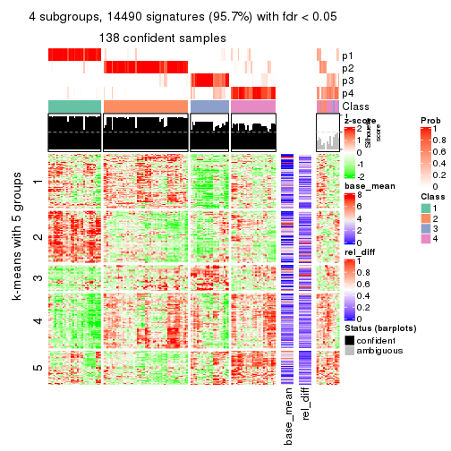
get_signatures(res, k = 5)
get_signatures(res, k = 6)
Signature heatmaps where rows are not scaled:
get_signatures(res, k = 2, scale_rows = FALSE)
get_signatures(res, k = 3, scale_rows = FALSE)
get_signatures(res, k = 4, scale_rows = FALSE)
get_signatures(res, k = 5, scale_rows = FALSE)
get_signatures(res, k = 6, scale_rows = FALSE)
Compare the overlap of signatures from different k:
compare_signatures(res)
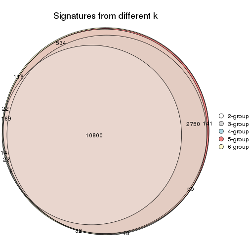
get_signature() returns a data frame invisibly. TO get the list of signatures, the function
call should be assigned to a variable explicitly. In following code, if plot argument is set
to FALSE, no heatmap is plotted while only the differential analysis is performed.
# code only for demonstration
tb = get_signature(res, k = ..., plot = FALSE)
An example of the output of tb is:
#> which_row fdr mean_1 mean_2 scaled_mean_1 scaled_mean_2 km
#> 1 38 0.042760348 8.373488 9.131774 -0.5533452 0.5164555 1
#> 2 40 0.018707592 7.106213 8.469186 -0.6173731 0.5762149 1
#> 3 55 0.019134737 10.221463 11.207825 -0.6159697 0.5749050 1
#> 4 59 0.006059896 5.921854 7.869574 -0.6899429 0.6439467 1
#> 5 60 0.018055526 8.928898 10.211722 -0.6204761 0.5791110 1
#> 6 98 0.009384629 15.714769 14.887706 0.6635654 -0.6193277 2
...
The columns in tb are:
which_row: row indices corresponding to the input matrix.fdr: FDR for the differential test. mean_x: The mean value in group x.scaled_mean_x: The mean value in group x after rows are scaled.km: Row groups if k-means clustering is applied to rows.
UMAP plot which shows how samples are separated.
dimension_reduction(res, k = 2, method = "UMAP")

dimension_reduction(res, k = 3, method = "UMAP")
dimension_reduction(res, k = 4, method = "UMAP")
dimension_reduction(res, k = 5, method = "UMAP")
dimension_reduction(res, k = 6, method = "UMAP")
Following heatmap shows how subgroups are split when increasing k:
collect_classes(res)
If matrix rows can be associated to genes, consider to use functional_enrichment(res,
...) to perform function enrichment for the signature genes. See this vignette for more detailed explanations.
ATC:hclust
The object with results only for a single top-value method and a single partition method
can be extracted as:
res = res_list["ATC", "hclust"]
# you can also extract it by
# res = res_list["ATC:hclust"]
A summary of res and all the functions that can be applied to it:
res
#> A 'ConsensusPartition' object with k = 2, 3, 4, 5, 6.
#> On a matrix with 15148 rows and 152 columns.
#> Top rows (1000, 2000, 3000, 4000, 5000) are extracted by 'ATC' method.
#> Subgroups are detected by 'hclust' method.
#> Performed in total 1250 partitions by row resampling.
#> Best k for subgroups seems to be 2.
#>
#> Following methods can be applied to this 'ConsensusPartition' object:
#> [1] "cola_report" "collect_classes" "collect_plots"
#> [4] "collect_stats" "colnames" "compare_signatures"
#> [7] "consensus_heatmap" "dimension_reduction" "functional_enrichment"
#> [10] "get_anno_col" "get_anno" "get_classes"
#> [13] "get_consensus" "get_matrix" "get_membership"
#> [16] "get_param" "get_signatures" "get_stats"
#> [19] "is_best_k" "is_stable_k" "membership_heatmap"
#> [22] "ncol" "nrow" "plot_ecdf"
#> [25] "rownames" "select_partition_number" "show"
#> [28] "suggest_best_k" "test_to_known_factors"
collect_plots() function collects all the plots made from res for all k (number of partitions)
into one single page to provide an easy and fast comparison between different k.
collect_plots(res)
The plots are:
- The first row: a plot of the ECDF (empirical cumulative distribution
function) curves of the consensus matrix for each
k and the heatmap of
predicted classes for each k.
- The second row: heatmaps of the consensus matrix for each
k.
- The third row: heatmaps of the membership matrix for each
k.
- The fouth row: heatmaps of the signatures for each
k.
All the plots in panels can be made by individual functions and they are
plotted later in this section.
select_partition_number() produces several plots showing different
statistics for choosing “optimized” k. There are following statistics:
- ECDF curves of the consensus matrix for each
k;
- 1-PAC. The PAC
score
measures the proportion of the ambiguous subgrouping.
- Mean silhouette score.
- Concordance. The mean probability of fiting the consensus class ids in all
partitions.
- Area increased. Denote \(A_k\) as the area under the ECDF curve for current
k, the area increased is defined as \(A_k - A_{k-1}\).
- Rand index. The percent of pairs of samples that are both in a same cluster
or both are not in a same cluster in the partition of k and k-1.
- Jaccard index. The ratio of pairs of samples are both in a same cluster in
the partition of k and k-1 and the pairs of samples are both in a same
cluster in the partition k or k-1.
The detailed explanations of these statistics can be found in the cola
vignette.
Generally speaking, lower PAC score, higher mean silhouette score or higher
concordance corresponds to better partition. Rand index and Jaccard index
measure how similar the current partition is compared to partition with k-1.
If they are too similar, we won't accept k is better than k-1.
select_partition_number(res)
The numeric values for all these statistics can be obtained by get_stats().
get_stats(res)
#> k 1-PAC mean_silhouette concordance area_increased Rand Jaccard
#> 2 2 0.636 0.839 0.925 0.4434 0.535 0.535
#> 3 3 0.473 0.626 0.768 0.3387 0.819 0.675
#> 4 4 0.500 0.645 0.769 0.1462 0.785 0.524
#> 5 5 0.584 0.563 0.725 0.1143 0.833 0.491
#> 6 6 0.694 0.558 0.749 0.0609 0.937 0.721
suggest_best_k() suggests the best \(k\) based on these statistics. The rules are as follows:
- All \(k\) with Jaccard index larger than 0.95 are removed because increasing
\(k\) does not provide enough extra information. If all \(k\) are removed, it is
marked as no subgroup is detected.
- For all \(k\) with 1-PAC score larger than 0.9, the maximal \(k\) is taken as
the best \(k\), and other \(k\) are marked as optional \(k\).
- If it does not fit the second rule. The \(k\) with the maximal vote of the
highest 1-PAC score, highest mean silhouette, and highest concordance is
taken as the best \(k\).
suggest_best_k(res)
#> [1] 2
Following shows the table of the partitions (You need to click the show/hide
code output link to see it). The membership matrix (columns with name p*)
is inferred by
clue::cl_consensus()
function with the SE method. Basically the value in the membership matrix
represents the probability to belong to a certain group. The finall class
label for an item is determined with the group with highest probability it
belongs to.
In get_classes() function, the entropy is calculated from the membership
matrix and the silhouette score is calculated from the consensus matrix.
show/hide code output
cbind(get_classes(res, k = 2), get_membership(res, k = 2))
#> class entropy silhouette p1 p2
#> SRR1947547 1 0.5629 0.842 0.868 0.132
#> SRR1947546 2 0.0000 0.941 0.000 1.000
#> SRR1947545 1 0.0000 0.865 1.000 0.000
#> SRR1947544 1 0.3274 0.861 0.940 0.060
#> SRR1947542 2 0.0000 0.941 0.000 1.000
#> SRR1947541 1 0.7056 0.804 0.808 0.192
#> SRR1947540 2 0.0000 0.941 0.000 1.000
#> SRR1947539 2 0.0000 0.941 0.000 1.000
#> SRR1947538 2 0.2043 0.922 0.032 0.968
#> SRR1947537 2 0.0000 0.941 0.000 1.000
#> SRR1947536 1 0.0000 0.865 1.000 0.000
#> SRR1947535 2 0.0000 0.941 0.000 1.000
#> SRR1947534 1 0.0000 0.865 1.000 0.000
#> SRR1947533 2 0.0938 0.935 0.012 0.988
#> SRR1947532 1 0.9686 0.499 0.604 0.396
#> SRR1947531 2 0.4815 0.844 0.104 0.896
#> SRR1947530 1 0.0000 0.865 1.000 0.000
#> SRR1947529 2 0.0000 0.941 0.000 1.000
#> SRR1947528 1 0.5737 0.840 0.864 0.136
#> SRR1947527 2 0.2603 0.911 0.044 0.956
#> SRR1947526 2 0.0000 0.941 0.000 1.000
#> SRR1947525 2 0.0376 0.939 0.004 0.996
#> SRR1947524 2 0.0000 0.941 0.000 1.000
#> SRR1947523 1 0.9686 0.499 0.604 0.396
#> SRR1947521 2 0.9491 0.333 0.368 0.632
#> SRR1947520 2 0.1843 0.924 0.028 0.972
#> SRR1947519 1 0.7602 0.780 0.780 0.220
#> SRR1947518 2 0.0938 0.935 0.012 0.988
#> SRR1947517 2 0.9580 0.299 0.380 0.620
#> SRR1947516 2 0.0000 0.941 0.000 1.000
#> SRR1947515 2 0.2423 0.915 0.040 0.960
#> SRR1947514 2 0.0000 0.941 0.000 1.000
#> SRR1947513 1 0.1184 0.866 0.984 0.016
#> SRR1947512 1 0.2043 0.866 0.968 0.032
#> SRR1947511 2 0.0938 0.935 0.012 0.988
#> SRR1947510 2 0.0376 0.939 0.004 0.996
#> SRR1947572 2 0.0672 0.937 0.008 0.992
#> SRR1947611 2 0.0376 0.939 0.004 0.996
#> SRR1947509 1 0.0000 0.865 1.000 0.000
#> SRR1947644 2 0.0672 0.937 0.008 0.992
#> SRR1947643 2 0.2043 0.922 0.032 0.968
#> SRR1947642 1 0.7602 0.780 0.780 0.220
#> SRR1947640 2 0.9522 0.315 0.372 0.628
#> SRR1947641 2 0.0000 0.941 0.000 1.000
#> SRR1947639 2 0.0376 0.939 0.004 0.996
#> SRR1947638 1 0.1184 0.866 0.984 0.016
#> SRR1947637 2 0.0000 0.941 0.000 1.000
#> SRR1947636 2 0.0000 0.941 0.000 1.000
#> SRR1947635 2 0.9522 0.315 0.372 0.628
#> SRR1947634 2 0.1633 0.927 0.024 0.976
#> SRR1947633 2 0.0000 0.941 0.000 1.000
#> SRR1947632 2 0.0000 0.941 0.000 1.000
#> SRR1947631 2 0.9815 0.135 0.420 0.580
#> SRR1947629 2 0.0000 0.941 0.000 1.000
#> SRR1947630 2 0.1633 0.927 0.024 0.976
#> SRR1947627 1 0.5737 0.840 0.864 0.136
#> SRR1947628 2 0.0000 0.941 0.000 1.000
#> SRR1947626 2 0.0000 0.941 0.000 1.000
#> SRR1947625 2 0.0000 0.941 0.000 1.000
#> SRR1947624 2 0.0000 0.941 0.000 1.000
#> SRR1947623 1 0.8661 0.696 0.712 0.288
#> SRR1947622 2 0.0000 0.941 0.000 1.000
#> SRR1947621 2 0.0000 0.941 0.000 1.000
#> SRR1947620 1 0.0000 0.865 1.000 0.000
#> SRR1947619 2 0.0000 0.941 0.000 1.000
#> SRR1947617 2 0.0000 0.941 0.000 1.000
#> SRR1947618 1 0.1184 0.866 0.984 0.016
#> SRR1947616 2 0.0000 0.941 0.000 1.000
#> SRR1947615 1 0.7674 0.777 0.776 0.224
#> SRR1947614 2 0.9491 0.333 0.368 0.632
#> SRR1947613 1 0.0000 0.865 1.000 0.000
#> SRR1947610 2 0.0376 0.939 0.004 0.996
#> SRR1947612 2 0.0000 0.941 0.000 1.000
#> SRR1947609 1 0.9358 0.593 0.648 0.352
#> SRR1947608 2 0.0000 0.941 0.000 1.000
#> SRR1947606 1 0.6801 0.814 0.820 0.180
#> SRR1947607 1 0.0000 0.865 1.000 0.000
#> SRR1947604 2 0.3274 0.897 0.060 0.940
#> SRR1947605 1 0.0000 0.865 1.000 0.000
#> SRR1947603 2 0.0000 0.941 0.000 1.000
#> SRR1947602 1 0.0000 0.865 1.000 0.000
#> SRR1947600 2 0.0000 0.941 0.000 1.000
#> SRR1947601 2 0.0000 0.941 0.000 1.000
#> SRR1947598 2 0.2043 0.922 0.032 0.968
#> SRR1947599 1 0.9427 0.578 0.640 0.360
#> SRR1947597 2 0.0000 0.941 0.000 1.000
#> SRR1947596 2 0.3274 0.897 0.060 0.940
#> SRR1947595 2 0.4562 0.858 0.096 0.904
#> SRR1947594 1 0.0000 0.865 1.000 0.000
#> SRR1947592 2 0.0000 0.941 0.000 1.000
#> SRR1947591 2 0.0000 0.941 0.000 1.000
#> SRR1947590 2 0.2423 0.915 0.040 0.960
#> SRR1947588 1 0.0000 0.865 1.000 0.000
#> SRR1947587 1 0.8443 0.728 0.728 0.272
#> SRR1947586 2 0.1414 0.930 0.020 0.980
#> SRR1947585 2 0.0000 0.941 0.000 1.000
#> SRR1947584 1 0.2043 0.866 0.968 0.032
#> SRR1947583 2 0.9522 0.315 0.372 0.628
#> SRR1947582 1 0.0000 0.865 1.000 0.000
#> SRR1947580 2 0.1414 0.930 0.020 0.980
#> SRR1947581 1 0.2043 0.866 0.968 0.032
#> SRR1947576 2 0.0000 0.941 0.000 1.000
#> SRR1947575 2 0.0000 0.941 0.000 1.000
#> SRR1947579 2 0.9491 0.333 0.368 0.632
#> SRR1947578 2 0.0000 0.941 0.000 1.000
#> SRR1947573 2 0.0000 0.941 0.000 1.000
#> SRR1947574 2 0.9983 -0.064 0.476 0.524
#> SRR1947571 2 0.2423 0.915 0.040 0.960
#> SRR1947577 1 0.1184 0.866 0.984 0.016
#> SRR1947570 1 0.5629 0.842 0.868 0.132
#> SRR1947569 2 0.0000 0.941 0.000 1.000
#> SRR1947566 2 0.0000 0.941 0.000 1.000
#> SRR1947567 2 0.0000 0.941 0.000 1.000
#> SRR1947568 2 0.0376 0.939 0.004 0.996
#> SRR1947564 2 0.0000 0.941 0.000 1.000
#> SRR1947563 2 0.0000 0.941 0.000 1.000
#> SRR1947562 2 0.0000 0.941 0.000 1.000
#> SRR1947565 2 0.0000 0.941 0.000 1.000
#> SRR1947559 2 0.0000 0.941 0.000 1.000
#> SRR1947560 2 0.0376 0.939 0.004 0.996
#> SRR1947561 2 0.0000 0.941 0.000 1.000
#> SRR1947557 1 0.0000 0.865 1.000 0.000
#> SRR1947558 2 0.0000 0.941 0.000 1.000
#> SRR1947556 1 0.5842 0.838 0.860 0.140
#> SRR1947553 2 0.0376 0.939 0.004 0.996
#> SRR1947554 1 0.0000 0.865 1.000 0.000
#> SRR1947555 2 0.0000 0.941 0.000 1.000
#> SRR1947550 2 0.0000 0.941 0.000 1.000
#> SRR1947552 1 0.9427 0.578 0.640 0.360
#> SRR1947549 2 0.0000 0.941 0.000 1.000
#> SRR1947551 2 0.0376 0.939 0.004 0.996
#> SRR1947548 2 0.2423 0.915 0.040 0.960
#> SRR1947506 1 0.5737 0.840 0.864 0.136
#> SRR1947507 1 0.0000 0.865 1.000 0.000
#> SRR1947504 1 0.5842 0.838 0.860 0.140
#> SRR1947503 1 0.8081 0.746 0.752 0.248
#> SRR1947502 2 0.0000 0.941 0.000 1.000
#> SRR1947501 2 0.0000 0.941 0.000 1.000
#> SRR1947499 1 0.0000 0.865 1.000 0.000
#> SRR1947498 1 0.9909 0.350 0.556 0.444
#> SRR1947508 1 0.5737 0.840 0.864 0.136
#> SRR1947505 1 0.9427 0.578 0.640 0.360
#> SRR1947497 2 0.2603 0.911 0.044 0.956
#> SRR1947496 1 0.0000 0.865 1.000 0.000
#> SRR1947495 2 0.2603 0.911 0.044 0.956
#> SRR1947494 1 0.9686 0.499 0.604 0.396
#> SRR1947493 1 0.0000 0.865 1.000 0.000
#> SRR1947492 1 0.0000 0.865 1.000 0.000
#> SRR1947500 2 0.9522 0.315 0.372 0.628
#> SRR1947491 1 0.8327 0.728 0.736 0.264
#> SRR1947490 1 0.0000 0.865 1.000 0.000
#> SRR1947489 1 0.6531 0.821 0.832 0.168
show/hide code output
cbind(get_classes(res, k = 3), get_membership(res, k = 3))
#> class entropy silhouette p1 p2 p3
#> SRR1947547 1 0.6307 0.0834 0.512 0.000 0.488
#> SRR1947546 2 0.2959 0.8088 0.000 0.900 0.100
#> SRR1947545 1 0.0000 0.8404 1.000 0.000 0.000
#> SRR1947544 1 0.4399 0.6892 0.812 0.000 0.188
#> SRR1947542 2 0.2959 0.8088 0.000 0.900 0.100
#> SRR1947541 3 0.6267 0.1145 0.452 0.000 0.548
#> SRR1947540 2 0.2959 0.8088 0.000 0.900 0.100
#> SRR1947539 2 0.6079 0.6682 0.000 0.612 0.388
#> SRR1947538 2 0.5982 0.7116 0.004 0.668 0.328
#> SRR1947537 2 0.6079 0.6682 0.000 0.612 0.388
#> SRR1947536 1 0.0000 0.8404 1.000 0.000 0.000
#> SRR1947535 2 0.6079 0.6682 0.000 0.612 0.388
#> SRR1947534 1 0.2066 0.8151 0.940 0.000 0.060
#> SRR1947533 2 0.4887 0.7955 0.000 0.772 0.228
#> SRR1947532 3 0.7607 0.5250 0.280 0.076 0.644
#> SRR1947531 2 0.6155 0.6878 0.008 0.664 0.328
#> SRR1947530 1 0.0000 0.8404 1.000 0.000 0.000
#> SRR1947529 2 0.3038 0.8089 0.000 0.896 0.104
#> SRR1947528 1 0.6309 0.0716 0.504 0.000 0.496
#> SRR1947527 2 0.5517 0.7699 0.004 0.728 0.268
#> SRR1947526 2 0.3879 0.8094 0.000 0.848 0.152
#> SRR1947525 2 0.4796 0.7987 0.000 0.780 0.220
#> SRR1947524 2 0.6079 0.6682 0.000 0.612 0.388
#> SRR1947523 3 0.7607 0.5250 0.280 0.076 0.644
#> SRR1947521 3 0.0661 0.5214 0.004 0.008 0.988
#> SRR1947520 2 0.5138 0.7835 0.000 0.748 0.252
#> SRR1947519 3 0.6598 0.2021 0.428 0.008 0.564
#> SRR1947518 2 0.5517 0.7740 0.004 0.728 0.268
#> SRR1947517 3 0.0747 0.5182 0.016 0.000 0.984
#> SRR1947516 2 0.0000 0.7718 0.000 1.000 0.000
#> SRR1947515 2 0.6229 0.6931 0.008 0.652 0.340
#> SRR1947514 2 0.2959 0.8088 0.000 0.900 0.100
#> SRR1947513 1 0.2356 0.8069 0.928 0.000 0.072
#> SRR1947512 1 0.1753 0.8193 0.952 0.000 0.048
#> SRR1947511 2 0.4887 0.7955 0.000 0.772 0.228
#> SRR1947510 3 0.6126 -0.2624 0.000 0.400 0.600
#> SRR1947572 2 0.4974 0.7923 0.000 0.764 0.236
#> SRR1947611 3 0.6126 -0.2624 0.000 0.400 0.600
#> SRR1947509 1 0.0237 0.8381 0.996 0.000 0.004
#> SRR1947644 3 0.6111 -0.2509 0.000 0.396 0.604
#> SRR1947643 2 0.5404 0.7788 0.004 0.740 0.256
#> SRR1947642 3 0.6598 0.2021 0.428 0.008 0.564
#> SRR1947640 3 0.7764 0.3028 0.068 0.328 0.604
#> SRR1947641 2 0.6079 0.6682 0.000 0.612 0.388
#> SRR1947639 2 0.4887 0.7951 0.000 0.772 0.228
#> SRR1947638 1 0.0892 0.8348 0.980 0.000 0.020
#> SRR1947637 2 0.0747 0.7708 0.000 0.984 0.016
#> SRR1947636 2 0.6079 0.6682 0.000 0.612 0.388
#> SRR1947635 3 0.7764 0.3028 0.068 0.328 0.604
#> SRR1947634 2 0.5058 0.7879 0.000 0.756 0.244
#> SRR1947633 2 0.6095 0.6631 0.000 0.608 0.392
#> SRR1947632 2 0.0000 0.7718 0.000 1.000 0.000
#> SRR1947631 2 0.9850 -0.2892 0.252 0.392 0.356
#> SRR1947629 2 0.6079 0.6682 0.000 0.612 0.388
#> SRR1947630 2 0.5058 0.7879 0.000 0.756 0.244
#> SRR1947627 1 0.6307 0.0928 0.512 0.000 0.488
#> SRR1947628 2 0.2959 0.8088 0.000 0.900 0.100
#> SRR1947626 2 0.4654 0.8002 0.000 0.792 0.208
#> SRR1947625 2 0.6079 0.6682 0.000 0.612 0.388
#> SRR1947624 2 0.4504 0.8017 0.000 0.804 0.196
#> SRR1947623 3 0.7291 0.3950 0.356 0.040 0.604
#> SRR1947622 2 0.2959 0.8088 0.000 0.900 0.100
#> SRR1947621 2 0.0000 0.7718 0.000 1.000 0.000
#> SRR1947620 1 0.0000 0.8404 1.000 0.000 0.000
#> SRR1947619 2 0.1643 0.7917 0.000 0.956 0.044
#> SRR1947617 2 0.0000 0.7718 0.000 1.000 0.000
#> SRR1947618 1 0.0892 0.8348 0.980 0.000 0.020
#> SRR1947616 2 0.2261 0.8002 0.000 0.932 0.068
#> SRR1947615 3 0.6745 0.2071 0.428 0.012 0.560
#> SRR1947614 3 0.0661 0.5214 0.004 0.008 0.988
#> SRR1947613 1 0.0000 0.8404 1.000 0.000 0.000
#> SRR1947610 2 0.4796 0.7971 0.000 0.780 0.220
#> SRR1947612 2 0.0000 0.7718 0.000 1.000 0.000
#> SRR1947609 3 0.6772 0.4974 0.304 0.032 0.664
#> SRR1947608 2 0.0000 0.7718 0.000 1.000 0.000
#> SRR1947606 3 0.6495 0.0740 0.460 0.004 0.536
#> SRR1947607 1 0.2066 0.8151 0.940 0.000 0.060
#> SRR1947604 2 0.6416 0.6456 0.008 0.616 0.376
#> SRR1947605 1 0.0000 0.8404 1.000 0.000 0.000
#> SRR1947603 2 0.0000 0.7718 0.000 1.000 0.000
#> SRR1947602 1 0.0000 0.8404 1.000 0.000 0.000
#> SRR1947600 2 0.6079 0.6682 0.000 0.612 0.388
#> SRR1947601 2 0.0000 0.7718 0.000 1.000 0.000
#> SRR1947598 2 0.6180 0.7037 0.008 0.660 0.332
#> SRR1947599 3 0.6684 0.5065 0.292 0.032 0.676
#> SRR1947597 2 0.2959 0.8088 0.000 0.900 0.100
#> SRR1947596 2 0.6416 0.6456 0.008 0.616 0.376
#> SRR1947595 2 0.6867 0.7142 0.040 0.672 0.288
#> SRR1947594 1 0.0000 0.8404 1.000 0.000 0.000
#> SRR1947592 2 0.6079 0.6682 0.000 0.612 0.388
#> SRR1947591 2 0.0000 0.7718 0.000 1.000 0.000
#> SRR1947590 2 0.6229 0.6931 0.008 0.652 0.340
#> SRR1947588 1 0.0000 0.8404 1.000 0.000 0.000
#> SRR1947587 3 0.7956 0.2509 0.424 0.060 0.516
#> SRR1947586 2 0.5016 0.7900 0.000 0.760 0.240
#> SRR1947585 2 0.6079 0.6682 0.000 0.612 0.388
#> SRR1947584 1 0.1753 0.8193 0.952 0.000 0.048
#> SRR1947583 3 0.7764 0.3028 0.068 0.328 0.604
#> SRR1947582 1 0.0000 0.8404 1.000 0.000 0.000
#> SRR1947580 2 0.5016 0.7900 0.000 0.760 0.240
#> SRR1947581 1 0.1753 0.8193 0.952 0.000 0.048
#> SRR1947576 2 0.0747 0.7708 0.000 0.984 0.016
#> SRR1947575 2 0.0000 0.7718 0.000 1.000 0.000
#> SRR1947579 3 0.0661 0.5214 0.004 0.008 0.988
#> SRR1947578 2 0.2959 0.8088 0.000 0.900 0.100
#> SRR1947573 2 0.0000 0.7718 0.000 1.000 0.000
#> SRR1947574 3 0.8821 0.4327 0.144 0.304 0.552
#> SRR1947571 2 0.6229 0.6931 0.008 0.652 0.340
#> SRR1947577 1 0.0892 0.8348 0.980 0.000 0.020
#> SRR1947570 1 0.6307 0.0834 0.512 0.000 0.488
#> SRR1947569 2 0.6079 0.6682 0.000 0.612 0.388
#> SRR1947566 2 0.0000 0.7718 0.000 1.000 0.000
#> SRR1947567 2 0.3340 0.8081 0.000 0.880 0.120
#> SRR1947568 2 0.4931 0.7940 0.000 0.768 0.232
#> SRR1947564 2 0.0000 0.7718 0.000 1.000 0.000
#> SRR1947563 2 0.0000 0.7718 0.000 1.000 0.000
#> SRR1947562 2 0.2959 0.8088 0.000 0.900 0.100
#> SRR1947565 2 0.6079 0.6682 0.000 0.612 0.388
#> SRR1947559 2 0.2959 0.8088 0.000 0.900 0.100
#> SRR1947560 3 0.6126 -0.2624 0.000 0.400 0.600
#> SRR1947561 2 0.0000 0.7718 0.000 1.000 0.000
#> SRR1947557 1 0.0000 0.8404 1.000 0.000 0.000
#> SRR1947558 2 0.6079 0.6682 0.000 0.612 0.388
#> SRR1947556 1 0.6518 0.0841 0.512 0.004 0.484
#> SRR1947553 2 0.4796 0.7971 0.000 0.780 0.220
#> SRR1947554 1 0.2066 0.8151 0.940 0.000 0.060
#> SRR1947555 2 0.0000 0.7718 0.000 1.000 0.000
#> SRR1947550 2 0.3340 0.8081 0.000 0.880 0.120
#> SRR1947552 3 0.6684 0.5065 0.292 0.032 0.676
#> SRR1947549 2 0.0000 0.7718 0.000 1.000 0.000
#> SRR1947551 3 0.6126 -0.2624 0.000 0.400 0.600
#> SRR1947548 2 0.6229 0.6931 0.008 0.652 0.340
#> SRR1947506 1 0.5859 0.4084 0.656 0.000 0.344
#> SRR1947507 1 0.0000 0.8404 1.000 0.000 0.000
#> SRR1947504 1 0.6518 0.0841 0.512 0.004 0.484
#> SRR1947503 3 0.6330 0.3152 0.396 0.004 0.600
#> SRR1947502 2 0.0000 0.7718 0.000 1.000 0.000
#> SRR1947501 2 0.0000 0.7718 0.000 1.000 0.000
#> SRR1947499 1 0.0000 0.8404 1.000 0.000 0.000
#> SRR1947498 3 0.4963 0.4167 0.200 0.008 0.792
#> SRR1947508 1 0.6307 0.0928 0.512 0.000 0.488
#> SRR1947505 3 0.6684 0.5065 0.292 0.032 0.676
#> SRR1947497 2 0.5517 0.7699 0.004 0.728 0.268
#> SRR1947496 1 0.0000 0.8404 1.000 0.000 0.000
#> SRR1947495 2 0.5517 0.7699 0.004 0.728 0.268
#> SRR1947494 3 0.7607 0.5250 0.280 0.076 0.644
#> SRR1947493 1 0.0000 0.8404 1.000 0.000 0.000
#> SRR1947492 1 0.0000 0.8404 1.000 0.000 0.000
#> SRR1947500 3 0.7764 0.3028 0.068 0.328 0.604
#> SRR1947491 3 0.6617 0.3448 0.388 0.012 0.600
#> SRR1947490 1 0.0000 0.8404 1.000 0.000 0.000
#> SRR1947489 3 0.6299 0.0253 0.476 0.000 0.524
show/hide code output
cbind(get_classes(res, k = 4), get_membership(res, k = 4))
#> class entropy silhouette p1 p2 p3 p4
#> SRR1947547 4 0.2675 0.68110 0.100 0.000 0.008 0.892
#> SRR1947546 2 0.2814 0.55446 0.000 0.868 0.132 0.000
#> SRR1947545 1 0.0336 0.89060 0.992 0.000 0.000 0.008
#> SRR1947544 4 0.5050 0.00438 0.408 0.004 0.000 0.588
#> SRR1947542 2 0.2814 0.55446 0.000 0.868 0.132 0.000
#> SRR1947541 4 0.2010 0.72128 0.040 0.012 0.008 0.940
#> SRR1947540 2 0.2281 0.60795 0.000 0.904 0.096 0.000
#> SRR1947539 2 0.4644 0.63851 0.000 0.748 0.228 0.024
#> SRR1947538 2 0.3808 0.66330 0.000 0.812 0.012 0.176
#> SRR1947537 2 0.4644 0.63851 0.000 0.748 0.228 0.024
#> SRR1947536 1 0.0188 0.89143 0.996 0.000 0.000 0.004
#> SRR1947535 2 0.4644 0.63851 0.000 0.748 0.228 0.024
#> SRR1947534 1 0.4008 0.73415 0.756 0.000 0.000 0.244
#> SRR1947533 2 0.1970 0.71032 0.000 0.932 0.008 0.060
#> SRR1947532 4 0.4420 0.70344 0.012 0.204 0.008 0.776
#> SRR1947531 2 0.3764 0.62727 0.000 0.816 0.012 0.172
#> SRR1947530 1 0.0000 0.89291 1.000 0.000 0.000 0.000
#> SRR1947529 2 0.2868 0.55564 0.000 0.864 0.136 0.000
#> SRR1947528 4 0.2924 0.67995 0.100 0.000 0.016 0.884
#> SRR1947527 2 0.2867 0.69519 0.000 0.884 0.012 0.104
#> SRR1947526 2 0.3266 0.61861 0.000 0.868 0.108 0.024
#> SRR1947525 2 0.2489 0.70588 0.000 0.912 0.020 0.068
#> SRR1947524 2 0.4644 0.63851 0.000 0.748 0.228 0.024
#> SRR1947523 4 0.4420 0.70344 0.012 0.204 0.008 0.776
#> SRR1947521 3 0.7140 -0.36496 0.000 0.132 0.464 0.404
#> SRR1947520 2 0.2473 0.70496 0.000 0.908 0.012 0.080
#> SRR1947519 4 0.1739 0.73204 0.016 0.024 0.008 0.952
#> SRR1947518 2 0.2737 0.70427 0.000 0.888 0.008 0.104
#> SRR1947517 3 0.7541 -0.37484 0.012 0.132 0.452 0.404
#> SRR1947516 3 0.4989 0.77331 0.000 0.472 0.528 0.000
#> SRR1947515 2 0.3978 0.65169 0.000 0.796 0.012 0.192
#> SRR1947514 2 0.2868 0.54695 0.000 0.864 0.136 0.000
#> SRR1947513 1 0.4103 0.71986 0.744 0.000 0.000 0.256
#> SRR1947512 1 0.4967 0.38094 0.548 0.000 0.000 0.452
#> SRR1947511 2 0.1970 0.71032 0.000 0.932 0.008 0.060
#> SRR1947510 2 0.5750 0.39924 0.000 0.532 0.440 0.028
#> SRR1947572 2 0.2271 0.70900 0.000 0.916 0.008 0.076
#> SRR1947611 2 0.5750 0.39924 0.000 0.532 0.440 0.028
#> SRR1947509 1 0.0376 0.88998 0.992 0.000 0.004 0.004
#> SRR1947644 2 0.5833 0.39471 0.000 0.528 0.440 0.032
#> SRR1947643 2 0.2676 0.70217 0.000 0.896 0.012 0.092
#> SRR1947642 4 0.1739 0.73204 0.016 0.024 0.008 0.952
#> SRR1947640 4 0.5583 0.18177 0.008 0.468 0.008 0.516
#> SRR1947641 2 0.4644 0.63851 0.000 0.748 0.228 0.024
#> SRR1947639 2 0.2522 0.70573 0.000 0.908 0.016 0.076
#> SRR1947638 1 0.3311 0.79672 0.828 0.000 0.000 0.172
#> SRR1947637 3 0.5147 0.75153 0.000 0.460 0.536 0.004
#> SRR1947636 2 0.4644 0.63851 0.000 0.748 0.228 0.024
#> SRR1947635 4 0.5583 0.18177 0.008 0.468 0.008 0.516
#> SRR1947634 2 0.2329 0.70782 0.000 0.916 0.012 0.072
#> SRR1947633 2 0.4678 0.63459 0.000 0.744 0.232 0.024
#> SRR1947632 3 0.4989 0.77331 0.000 0.472 0.528 0.000
#> SRR1947631 4 0.5773 0.22686 0.004 0.408 0.024 0.564
#> SRR1947629 2 0.4644 0.63851 0.000 0.748 0.228 0.024
#> SRR1947630 2 0.2329 0.70782 0.000 0.916 0.012 0.072
#> SRR1947627 4 0.3048 0.67454 0.108 0.000 0.016 0.876
#> SRR1947628 2 0.2216 0.61290 0.000 0.908 0.092 0.000
#> SRR1947626 2 0.1938 0.70908 0.000 0.936 0.012 0.052
#> SRR1947625 2 0.4644 0.63851 0.000 0.748 0.228 0.024
#> SRR1947624 2 0.1936 0.70036 0.000 0.940 0.028 0.032
#> SRR1947623 4 0.4586 0.73137 0.068 0.136 0.000 0.796
#> SRR1947622 2 0.2814 0.55446 0.000 0.868 0.132 0.000
#> SRR1947621 3 0.4989 0.77331 0.000 0.472 0.528 0.000
#> SRR1947620 1 0.0336 0.89060 0.992 0.000 0.000 0.008
#> SRR1947619 2 0.3569 0.39973 0.000 0.804 0.196 0.000
#> SRR1947617 3 0.4989 0.77331 0.000 0.472 0.528 0.000
#> SRR1947618 1 0.2345 0.84902 0.900 0.000 0.000 0.100
#> SRR1947616 2 0.3219 0.47974 0.000 0.836 0.164 0.000
#> SRR1947615 4 0.1975 0.73340 0.016 0.028 0.012 0.944
#> SRR1947614 3 0.7140 -0.36496 0.000 0.132 0.464 0.404
#> SRR1947613 1 0.0000 0.89291 1.000 0.000 0.000 0.000
#> SRR1947610 2 0.1938 0.71102 0.000 0.936 0.012 0.052
#> SRR1947612 3 0.4989 0.77331 0.000 0.472 0.528 0.000
#> SRR1947609 4 0.4270 0.73189 0.020 0.168 0.008 0.804
#> SRR1947608 3 0.4981 0.76939 0.000 0.464 0.536 0.000
#> SRR1947606 4 0.2725 0.71703 0.056 0.016 0.016 0.912
#> SRR1947607 1 0.4008 0.73415 0.756 0.000 0.000 0.244
#> SRR1947604 2 0.4194 0.61942 0.000 0.764 0.008 0.228
#> SRR1947605 1 0.0000 0.89291 1.000 0.000 0.000 0.000
#> SRR1947603 3 0.4989 0.77331 0.000 0.472 0.528 0.000
#> SRR1947602 1 0.0000 0.89291 1.000 0.000 0.000 0.000
#> SRR1947600 2 0.4644 0.63851 0.000 0.748 0.228 0.024
#> SRR1947601 3 0.4989 0.77331 0.000 0.472 0.528 0.000
#> SRR1947598 2 0.3895 0.65945 0.000 0.804 0.012 0.184
#> SRR1947599 4 0.3916 0.72991 0.008 0.168 0.008 0.816
#> SRR1947597 2 0.2814 0.55446 0.000 0.868 0.132 0.000
#> SRR1947596 2 0.4194 0.61942 0.000 0.764 0.008 0.228
#> SRR1947595 2 0.3903 0.66751 0.008 0.824 0.012 0.156
#> SRR1947594 1 0.0000 0.89291 1.000 0.000 0.000 0.000
#> SRR1947592 2 0.4644 0.63851 0.000 0.748 0.228 0.024
#> SRR1947591 3 0.4989 0.77331 0.000 0.472 0.528 0.000
#> SRR1947590 2 0.3978 0.65169 0.000 0.796 0.012 0.192
#> SRR1947588 1 0.0000 0.89291 1.000 0.000 0.000 0.000
#> SRR1947587 4 0.2923 0.72940 0.016 0.080 0.008 0.896
#> SRR1947586 2 0.2329 0.70785 0.000 0.916 0.012 0.072
#> SRR1947585 2 0.4644 0.63851 0.000 0.748 0.228 0.024
#> SRR1947584 1 0.4967 0.38094 0.548 0.000 0.000 0.452
#> SRR1947583 4 0.5583 0.18177 0.008 0.468 0.008 0.516
#> SRR1947582 1 0.0000 0.89291 1.000 0.000 0.000 0.000
#> SRR1947580 2 0.2329 0.70785 0.000 0.916 0.012 0.072
#> SRR1947581 1 0.4967 0.38094 0.548 0.000 0.000 0.452
#> SRR1947576 3 0.5147 0.75153 0.000 0.460 0.536 0.004
#> SRR1947575 3 0.4981 0.76939 0.000 0.464 0.536 0.000
#> SRR1947579 3 0.7140 -0.36496 0.000 0.132 0.464 0.404
#> SRR1947578 2 0.2216 0.61290 0.000 0.908 0.092 0.000
#> SRR1947573 3 0.4981 0.76939 0.000 0.464 0.536 0.000
#> SRR1947574 4 0.6151 0.36661 0.044 0.396 0.004 0.556
#> SRR1947571 2 0.3978 0.65169 0.000 0.796 0.012 0.192
#> SRR1947577 1 0.2345 0.84902 0.900 0.000 0.000 0.100
#> SRR1947570 4 0.2675 0.68110 0.100 0.000 0.008 0.892
#> SRR1947569 2 0.4644 0.63851 0.000 0.748 0.228 0.024
#> SRR1947566 3 0.4989 0.77331 0.000 0.472 0.528 0.000
#> SRR1947567 2 0.2909 0.62306 0.000 0.888 0.092 0.020
#> SRR1947568 2 0.2125 0.70933 0.000 0.920 0.004 0.076
#> SRR1947564 3 0.4989 0.77331 0.000 0.472 0.528 0.000
#> SRR1947563 3 0.4981 0.76939 0.000 0.464 0.536 0.000
#> SRR1947562 2 0.2149 0.61697 0.000 0.912 0.088 0.000
#> SRR1947565 2 0.4644 0.63851 0.000 0.748 0.228 0.024
#> SRR1947559 2 0.2814 0.55446 0.000 0.868 0.132 0.000
#> SRR1947560 2 0.5750 0.39924 0.000 0.532 0.440 0.028
#> SRR1947561 3 0.4989 0.77331 0.000 0.472 0.528 0.000
#> SRR1947557 1 0.0000 0.89291 1.000 0.000 0.000 0.000
#> SRR1947558 2 0.4644 0.63851 0.000 0.748 0.228 0.024
#> SRR1947556 4 0.3232 0.68138 0.108 0.016 0.004 0.872
#> SRR1947553 2 0.1938 0.71102 0.000 0.936 0.012 0.052
#> SRR1947554 1 0.4008 0.73415 0.756 0.000 0.000 0.244
#> SRR1947555 3 0.4989 0.77331 0.000 0.472 0.528 0.000
#> SRR1947550 2 0.2909 0.62306 0.000 0.888 0.092 0.020
#> SRR1947552 4 0.3916 0.72991 0.008 0.168 0.008 0.816
#> SRR1947549 3 0.4981 0.76939 0.000 0.464 0.536 0.000
#> SRR1947551 2 0.5750 0.39924 0.000 0.532 0.440 0.028
#> SRR1947548 2 0.3978 0.65169 0.000 0.796 0.012 0.192
#> SRR1947506 4 0.4630 0.47676 0.252 0.000 0.016 0.732
#> SRR1947507 1 0.0000 0.89291 1.000 0.000 0.000 0.000
#> SRR1947504 4 0.3232 0.68138 0.108 0.016 0.004 0.872
#> SRR1947503 4 0.4022 0.73514 0.068 0.096 0.000 0.836
#> SRR1947502 3 0.4989 0.77331 0.000 0.472 0.528 0.000
#> SRR1947501 3 0.4989 0.77331 0.000 0.472 0.528 0.000
#> SRR1947499 1 0.0000 0.89291 1.000 0.000 0.000 0.000
#> SRR1947498 4 0.5543 0.59603 0.008 0.040 0.256 0.696
#> SRR1947508 4 0.3048 0.67454 0.108 0.000 0.016 0.876
#> SRR1947505 4 0.3916 0.72991 0.008 0.168 0.008 0.816
#> SRR1947497 2 0.2867 0.69519 0.000 0.884 0.012 0.104
#> SRR1947496 1 0.0000 0.89291 1.000 0.000 0.000 0.000
#> SRR1947495 2 0.2867 0.69519 0.000 0.884 0.012 0.104
#> SRR1947494 4 0.4420 0.70344 0.012 0.204 0.008 0.776
#> SRR1947493 1 0.0000 0.89291 1.000 0.000 0.000 0.000
#> SRR1947492 1 0.0000 0.89291 1.000 0.000 0.000 0.000
#> SRR1947500 4 0.5583 0.18177 0.008 0.468 0.008 0.516
#> SRR1947491 4 0.3996 0.73867 0.060 0.104 0.000 0.836
#> SRR1947490 1 0.0000 0.89291 1.000 0.000 0.000 0.000
#> SRR1947489 4 0.2234 0.70974 0.064 0.004 0.008 0.924
show/hide code output
cbind(get_classes(res, k = 5), get_membership(res, k = 5))
#> class entropy silhouette p1 p2 p3 p4 p5
#> SRR1947547 3 0.1502 0.7155 0.056 0.000 0.940 0.000 0.004
#> SRR1947546 2 0.6133 0.2327 0.000 0.524 0.000 0.148 0.328
#> SRR1947545 1 0.0794 0.8738 0.972 0.000 0.028 0.000 0.000
#> SRR1947544 3 0.4921 0.1274 0.360 0.000 0.604 0.036 0.000
#> SRR1947542 2 0.6133 0.2327 0.000 0.524 0.000 0.148 0.328
#> SRR1947541 3 0.1095 0.7434 0.012 0.000 0.968 0.008 0.012
#> SRR1947540 2 0.6225 0.1345 0.000 0.484 0.000 0.148 0.368
#> SRR1947539 5 0.1197 0.7851 0.000 0.048 0.000 0.000 0.952
#> SRR1947538 4 0.8182 0.5973 0.000 0.188 0.136 0.364 0.312
#> SRR1947537 5 0.1197 0.7851 0.000 0.048 0.000 0.000 0.952
#> SRR1947536 1 0.0162 0.8791 0.996 0.000 0.004 0.000 0.000
#> SRR1947535 5 0.1197 0.7851 0.000 0.048 0.000 0.000 0.952
#> SRR1947534 1 0.4040 0.7054 0.724 0.000 0.260 0.016 0.000
#> SRR1947533 4 0.6683 0.5985 0.000 0.164 0.012 0.456 0.368
#> SRR1947532 3 0.4455 0.6830 0.000 0.012 0.740 0.216 0.032
#> SRR1947531 4 0.7702 0.6209 0.000 0.160 0.120 0.484 0.236
#> SRR1947530 1 0.0000 0.8805 1.000 0.000 0.000 0.000 0.000
#> SRR1947529 2 0.6164 0.2258 0.000 0.520 0.000 0.152 0.328
#> SRR1947528 3 0.1788 0.7140 0.056 0.000 0.932 0.004 0.008
#> SRR1947527 4 0.6996 0.6625 0.000 0.160 0.044 0.520 0.276
#> SRR1947526 2 0.6942 -0.2696 0.000 0.364 0.004 0.300 0.332
#> SRR1947525 5 0.7639 -0.5415 0.000 0.236 0.052 0.344 0.368
#> SRR1947524 5 0.1197 0.7851 0.000 0.048 0.000 0.000 0.952
#> SRR1947523 3 0.4455 0.6830 0.000 0.012 0.740 0.216 0.032
#> SRR1947521 4 0.6097 -0.2379 0.000 0.000 0.124 0.456 0.420
#> SRR1947520 4 0.6730 0.6593 0.000 0.164 0.024 0.524 0.288
#> SRR1947519 3 0.1469 0.7518 0.000 0.000 0.948 0.036 0.016
#> SRR1947518 4 0.7436 0.6440 0.000 0.156 0.068 0.452 0.324
#> SRR1947517 4 0.6296 -0.2312 0.004 0.000 0.132 0.456 0.408
#> SRR1947516 2 0.0000 0.6353 0.000 1.000 0.000 0.000 0.000
#> SRR1947515 4 0.8260 0.5847 0.000 0.180 0.156 0.352 0.312
#> SRR1947514 2 0.6089 0.2441 0.000 0.532 0.000 0.144 0.324
#> SRR1947513 1 0.4114 0.6920 0.712 0.000 0.272 0.016 0.000
#> SRR1947512 1 0.4905 0.2731 0.500 0.000 0.476 0.024 0.000
#> SRR1947511 4 0.6683 0.5985 0.000 0.164 0.012 0.456 0.368
#> SRR1947510 5 0.2930 0.6403 0.000 0.000 0.004 0.164 0.832
#> SRR1947572 4 0.7654 0.5814 0.000 0.212 0.060 0.388 0.340
#> SRR1947611 5 0.2930 0.6403 0.000 0.000 0.004 0.164 0.832
#> SRR1947509 1 0.0566 0.8750 0.984 0.000 0.012 0.004 0.000
#> SRR1947644 5 0.2970 0.6367 0.000 0.000 0.004 0.168 0.828
#> SRR1947643 4 0.6899 0.6628 0.000 0.160 0.036 0.520 0.284
#> SRR1947642 3 0.1469 0.7518 0.000 0.000 0.948 0.036 0.016
#> SRR1947640 3 0.7146 0.2001 0.000 0.160 0.472 0.324 0.044
#> SRR1947641 5 0.1197 0.7851 0.000 0.048 0.000 0.000 0.952
#> SRR1947639 5 0.7699 -0.5532 0.000 0.224 0.060 0.348 0.368
#> SRR1947638 1 0.3109 0.7705 0.800 0.000 0.200 0.000 0.000
#> SRR1947637 2 0.3003 0.4969 0.000 0.812 0.000 0.000 0.188
#> SRR1947636 5 0.1197 0.7851 0.000 0.048 0.000 0.000 0.952
#> SRR1947635 3 0.7146 0.2001 0.000 0.160 0.472 0.324 0.044
#> SRR1947634 4 0.6693 0.6316 0.000 0.164 0.016 0.492 0.328
#> SRR1947633 5 0.1357 0.7830 0.000 0.048 0.000 0.004 0.948
#> SRR1947632 2 0.0000 0.6353 0.000 1.000 0.000 0.000 0.000
#> SRR1947631 3 0.5431 0.2637 0.000 0.020 0.548 0.028 0.404
#> SRR1947629 5 0.1197 0.7851 0.000 0.048 0.000 0.000 0.952
#> SRR1947630 4 0.6693 0.6316 0.000 0.164 0.016 0.492 0.328
#> SRR1947627 3 0.1924 0.7092 0.064 0.000 0.924 0.004 0.008
#> SRR1947628 2 0.6232 0.1241 0.000 0.480 0.000 0.148 0.372
#> SRR1947626 4 0.6853 0.6397 0.000 0.176 0.020 0.476 0.328
#> SRR1947625 5 0.1197 0.7851 0.000 0.048 0.000 0.000 0.952
#> SRR1947624 5 0.6672 -0.5255 0.000 0.196 0.004 0.384 0.416
#> SRR1947623 3 0.4679 0.7368 0.040 0.036 0.772 0.148 0.004
#> SRR1947622 2 0.6133 0.2327 0.000 0.524 0.000 0.148 0.328
#> SRR1947621 2 0.0000 0.6353 0.000 1.000 0.000 0.000 0.000
#> SRR1947620 1 0.0794 0.8738 0.972 0.000 0.028 0.000 0.000
#> SRR1947619 5 0.5439 -0.1001 0.000 0.432 0.000 0.060 0.508
#> SRR1947617 2 0.0000 0.6353 0.000 1.000 0.000 0.000 0.000
#> SRR1947618 1 0.2280 0.8315 0.880 0.000 0.120 0.000 0.000
#> SRR1947616 2 0.5772 0.2835 0.000 0.564 0.000 0.108 0.328
#> SRR1947615 3 0.1568 0.7535 0.000 0.000 0.944 0.036 0.020
#> SRR1947614 4 0.6097 -0.2379 0.000 0.000 0.124 0.456 0.420
#> SRR1947613 1 0.0000 0.8805 1.000 0.000 0.000 0.000 0.000
#> SRR1947610 4 0.6765 0.6510 0.000 0.164 0.020 0.492 0.324
#> SRR1947612 2 0.0000 0.6353 0.000 1.000 0.000 0.000 0.000
#> SRR1947609 3 0.3707 0.7169 0.004 0.000 0.768 0.220 0.008
#> SRR1947608 2 0.2891 0.5083 0.000 0.824 0.000 0.000 0.176
#> SRR1947606 3 0.1978 0.7412 0.032 0.000 0.932 0.024 0.012
#> SRR1947607 1 0.4040 0.7054 0.724 0.000 0.260 0.016 0.000
#> SRR1947604 4 0.8335 0.5753 0.000 0.176 0.184 0.360 0.280
#> SRR1947605 1 0.0000 0.8805 1.000 0.000 0.000 0.000 0.000
#> SRR1947603 2 0.0000 0.6353 0.000 1.000 0.000 0.000 0.000
#> SRR1947602 1 0.0000 0.8805 1.000 0.000 0.000 0.000 0.000
#> SRR1947600 5 0.1197 0.7851 0.000 0.048 0.000 0.000 0.952
#> SRR1947601 2 0.0000 0.6353 0.000 1.000 0.000 0.000 0.000
#> SRR1947598 4 0.8267 0.5826 0.000 0.180 0.156 0.340 0.324
#> SRR1947599 3 0.3551 0.7131 0.000 0.000 0.772 0.220 0.008
#> SRR1947597 2 0.6133 0.2327 0.000 0.524 0.000 0.148 0.328
#> SRR1947596 4 0.8335 0.5753 0.000 0.176 0.184 0.360 0.280
#> SRR1947595 4 0.7404 0.6391 0.000 0.140 0.092 0.504 0.264
#> SRR1947594 1 0.0000 0.8805 1.000 0.000 0.000 0.000 0.000
#> SRR1947592 5 0.1197 0.7851 0.000 0.048 0.000 0.000 0.952
#> SRR1947591 2 0.0000 0.6353 0.000 1.000 0.000 0.000 0.000
#> SRR1947590 4 0.8260 0.5847 0.000 0.180 0.156 0.352 0.312
#> SRR1947588 1 0.0000 0.8805 1.000 0.000 0.000 0.000 0.000
#> SRR1947587 3 0.2388 0.7430 0.000 0.000 0.900 0.028 0.072
#> SRR1947586 4 0.6680 0.6580 0.000 0.164 0.020 0.520 0.296
#> SRR1947585 5 0.1197 0.7851 0.000 0.048 0.000 0.000 0.952
#> SRR1947584 1 0.4900 0.2892 0.512 0.000 0.464 0.024 0.000
#> SRR1947583 3 0.7146 0.2001 0.000 0.160 0.472 0.324 0.044
#> SRR1947582 1 0.0000 0.8805 1.000 0.000 0.000 0.000 0.000
#> SRR1947580 4 0.6680 0.6580 0.000 0.164 0.020 0.520 0.296
#> SRR1947581 1 0.4905 0.2731 0.500 0.000 0.476 0.024 0.000
#> SRR1947576 2 0.3003 0.4969 0.000 0.812 0.000 0.000 0.188
#> SRR1947575 2 0.2891 0.5083 0.000 0.824 0.000 0.000 0.176
#> SRR1947579 4 0.6097 -0.2379 0.000 0.000 0.124 0.456 0.420
#> SRR1947578 2 0.6232 0.1241 0.000 0.480 0.000 0.148 0.372
#> SRR1947573 2 0.2891 0.5083 0.000 0.824 0.000 0.000 0.176
#> SRR1947574 3 0.7353 0.3589 0.024 0.140 0.516 0.284 0.036
#> SRR1947571 4 0.8260 0.5847 0.000 0.180 0.156 0.352 0.312
#> SRR1947577 1 0.2280 0.8315 0.880 0.000 0.120 0.000 0.000
#> SRR1947570 3 0.1502 0.7155 0.056 0.000 0.940 0.000 0.004
#> SRR1947569 5 0.1197 0.7851 0.000 0.048 0.000 0.000 0.952
#> SRR1947566 2 0.0000 0.6353 0.000 1.000 0.000 0.000 0.000
#> SRR1947567 2 0.6874 0.0312 0.000 0.444 0.020 0.168 0.368
#> SRR1947568 4 0.7657 0.5764 0.000 0.212 0.060 0.384 0.344
#> SRR1947564 2 0.0000 0.6353 0.000 1.000 0.000 0.000 0.000
#> SRR1947563 2 0.2891 0.5083 0.000 0.824 0.000 0.000 0.176
#> SRR1947562 2 0.6360 0.0797 0.000 0.476 0.000 0.172 0.352
#> SRR1947565 5 0.1197 0.7851 0.000 0.048 0.000 0.000 0.952
#> SRR1947559 2 0.6133 0.2327 0.000 0.524 0.000 0.148 0.328
#> SRR1947560 5 0.2930 0.6403 0.000 0.000 0.004 0.164 0.832
#> SRR1947561 2 0.0000 0.6353 0.000 1.000 0.000 0.000 0.000
#> SRR1947557 1 0.0000 0.8805 1.000 0.000 0.000 0.000 0.000
#> SRR1947558 5 0.1197 0.7851 0.000 0.048 0.000 0.000 0.952
#> SRR1947556 3 0.3180 0.7118 0.068 0.000 0.856 0.076 0.000
#> SRR1947553 4 0.6765 0.6510 0.000 0.164 0.020 0.492 0.324
#> SRR1947554 1 0.4040 0.7054 0.724 0.000 0.260 0.016 0.000
#> SRR1947555 2 0.0162 0.6338 0.000 0.996 0.000 0.000 0.004
#> SRR1947550 2 0.6874 0.0312 0.000 0.444 0.020 0.168 0.368
#> SRR1947552 3 0.3551 0.7131 0.000 0.000 0.772 0.220 0.008
#> SRR1947549 2 0.2891 0.5083 0.000 0.824 0.000 0.000 0.176
#> SRR1947551 5 0.2930 0.6403 0.000 0.000 0.004 0.164 0.832
#> SRR1947548 4 0.8260 0.5847 0.000 0.180 0.156 0.352 0.312
#> SRR1947506 3 0.3611 0.5405 0.208 0.000 0.780 0.004 0.008
#> SRR1947507 1 0.0000 0.8805 1.000 0.000 0.000 0.000 0.000
#> SRR1947504 3 0.3180 0.7118 0.068 0.000 0.856 0.076 0.000
#> SRR1947503 3 0.3639 0.7519 0.044 0.000 0.812 0.144 0.000
#> SRR1947502 2 0.0000 0.6353 0.000 1.000 0.000 0.000 0.000
#> SRR1947501 2 0.0000 0.6353 0.000 1.000 0.000 0.000 0.000
#> SRR1947499 1 0.0000 0.8805 1.000 0.000 0.000 0.000 0.000
#> SRR1947498 3 0.5414 0.5641 0.000 0.000 0.660 0.140 0.200
#> SRR1947508 3 0.1924 0.7092 0.064 0.000 0.924 0.004 0.008
#> SRR1947505 3 0.3551 0.7131 0.000 0.000 0.772 0.220 0.008
#> SRR1947497 4 0.6996 0.6625 0.000 0.160 0.044 0.520 0.276
#> SRR1947496 1 0.0000 0.8805 1.000 0.000 0.000 0.000 0.000
#> SRR1947495 4 0.6996 0.6625 0.000 0.160 0.044 0.520 0.276
#> SRR1947494 3 0.4455 0.6830 0.000 0.012 0.740 0.216 0.032
#> SRR1947493 1 0.0290 0.8789 0.992 0.000 0.008 0.000 0.000
#> SRR1947492 1 0.0000 0.8805 1.000 0.000 0.000 0.000 0.000
#> SRR1947500 3 0.7146 0.2001 0.000 0.160 0.472 0.324 0.044
#> SRR1947491 3 0.3615 0.7529 0.036 0.000 0.808 0.156 0.000
#> SRR1947490 1 0.0000 0.8805 1.000 0.000 0.000 0.000 0.000
#> SRR1947489 3 0.0771 0.7352 0.020 0.000 0.976 0.000 0.004
show/hide code output
cbind(get_classes(res, k = 6), get_membership(res, k = 6))
#> class entropy silhouette p1 p2 p3 p4 p5 p6
#> SRR1947547 6 0.3121 0.6675 0.020 0.008 0.000 0.000 0.148 0.824
#> SRR1947546 2 0.5993 0.3448 0.000 0.472 0.296 0.228 0.004 0.000
#> SRR1947545 1 0.1480 0.8254 0.940 0.000 0.000 0.000 0.020 0.040
#> SRR1947544 6 0.7058 0.1057 0.260 0.040 0.000 0.016 0.272 0.412
#> SRR1947542 2 0.5993 0.3448 0.000 0.472 0.296 0.228 0.004 0.000
#> SRR1947541 6 0.2853 0.6811 0.000 0.008 0.008 0.008 0.124 0.852
#> SRR1947540 2 0.6087 0.2800 0.000 0.428 0.336 0.232 0.004 0.000
#> SRR1947539 3 0.1007 0.6431 0.000 0.044 0.956 0.000 0.000 0.000
#> SRR1947538 4 0.8684 0.0818 0.000 0.136 0.244 0.284 0.116 0.220
#> SRR1947537 3 0.1007 0.6431 0.000 0.044 0.956 0.000 0.000 0.000
#> SRR1947536 1 0.0146 0.8393 0.996 0.000 0.000 0.000 0.000 0.004
#> SRR1947535 3 0.1007 0.6431 0.000 0.044 0.956 0.000 0.000 0.000
#> SRR1947534 1 0.5111 0.6470 0.624 0.000 0.000 0.000 0.224 0.152
#> SRR1947533 4 0.3480 0.6244 0.000 0.016 0.200 0.776 0.008 0.000
#> SRR1947532 6 0.2668 0.6789 0.000 0.000 0.000 0.168 0.004 0.828
#> SRR1947531 4 0.2121 0.6174 0.000 0.012 0.000 0.892 0.000 0.096
#> SRR1947530 1 0.0000 0.8411 1.000 0.000 0.000 0.000 0.000 0.000
#> SRR1947529 2 0.6044 0.3242 0.000 0.460 0.292 0.244 0.004 0.000
#> SRR1947528 6 0.3257 0.6651 0.020 0.012 0.000 0.000 0.152 0.816
#> SRR1947527 4 0.0820 0.6875 0.000 0.012 0.000 0.972 0.000 0.016
#> SRR1947526 4 0.6047 0.2596 0.000 0.220 0.292 0.480 0.008 0.000
#> SRR1947525 4 0.7959 0.2200 0.000 0.176 0.312 0.356 0.104 0.052
#> SRR1947524 3 0.1007 0.6431 0.000 0.044 0.956 0.000 0.000 0.000
#> SRR1947523 6 0.2668 0.6789 0.000 0.000 0.000 0.168 0.004 0.828
#> SRR1947521 5 0.4504 0.9936 0.000 0.000 0.392 0.004 0.576 0.028
#> SRR1947520 4 0.1121 0.6901 0.000 0.016 0.008 0.964 0.008 0.004
#> SRR1947519 6 0.3569 0.6852 0.000 0.008 0.008 0.044 0.124 0.816
#> SRR1947518 4 0.4802 0.6019 0.000 0.104 0.044 0.760 0.060 0.032
#> SRR1947517 5 0.4930 0.9809 0.004 0.008 0.388 0.004 0.564 0.032
#> SRR1947516 2 0.1141 0.6865 0.000 0.948 0.000 0.052 0.000 0.000
#> SRR1947515 3 0.8794 -0.0877 0.000 0.136 0.248 0.240 0.140 0.236
#> SRR1947514 2 0.5859 0.3488 0.000 0.480 0.288 0.232 0.000 0.000
#> SRR1947513 1 0.5186 0.6373 0.616 0.000 0.000 0.000 0.216 0.168
#> SRR1947512 1 0.7070 0.2603 0.400 0.040 0.000 0.016 0.244 0.300
#> SRR1947511 4 0.3480 0.6244 0.000 0.016 0.200 0.776 0.008 0.000
#> SRR1947510 3 0.2631 0.3427 0.000 0.000 0.820 0.000 0.180 0.000
#> SRR1947572 4 0.7778 0.3142 0.000 0.152 0.240 0.444 0.104 0.060
#> SRR1947611 3 0.2631 0.3427 0.000 0.000 0.820 0.000 0.180 0.000
#> SRR1947509 1 0.0520 0.8344 0.984 0.008 0.000 0.000 0.000 0.008
#> SRR1947644 3 0.2664 0.3330 0.000 0.000 0.816 0.000 0.184 0.000
#> SRR1947643 4 0.0870 0.6913 0.000 0.012 0.004 0.972 0.000 0.012
#> SRR1947642 6 0.3569 0.6852 0.000 0.008 0.008 0.044 0.124 0.816
#> SRR1947640 6 0.4262 0.3537 0.000 0.012 0.000 0.424 0.004 0.560
#> SRR1947641 3 0.1007 0.6431 0.000 0.044 0.956 0.000 0.000 0.000
#> SRR1947639 4 0.7992 0.2208 0.000 0.164 0.312 0.360 0.104 0.060
#> SRR1947638 1 0.4530 0.7104 0.704 0.000 0.000 0.000 0.160 0.136
#> SRR1947637 2 0.2730 0.5678 0.000 0.808 0.192 0.000 0.000 0.000
#> SRR1947636 3 0.1007 0.6431 0.000 0.044 0.956 0.000 0.000 0.000
#> SRR1947635 6 0.4262 0.3537 0.000 0.012 0.000 0.424 0.004 0.560
#> SRR1947634 4 0.2565 0.6773 0.000 0.016 0.104 0.872 0.008 0.000
#> SRR1947633 3 0.1152 0.6398 0.000 0.044 0.952 0.000 0.004 0.000
#> SRR1947632 2 0.1141 0.6865 0.000 0.948 0.000 0.052 0.000 0.000
#> SRR1947631 6 0.6208 0.1929 0.000 0.020 0.400 0.032 0.080 0.468
#> SRR1947629 3 0.1007 0.6431 0.000 0.044 0.956 0.000 0.000 0.000
#> SRR1947630 4 0.2565 0.6773 0.000 0.016 0.104 0.872 0.008 0.000
#> SRR1947627 6 0.3415 0.6618 0.028 0.012 0.000 0.000 0.152 0.808
#> SRR1947628 2 0.6095 0.2765 0.000 0.428 0.332 0.236 0.004 0.000
#> SRR1947626 4 0.2358 0.6962 0.000 0.028 0.056 0.900 0.016 0.000
#> SRR1947625 3 0.1007 0.6431 0.000 0.044 0.956 0.000 0.000 0.000
#> SRR1947624 4 0.4554 0.5249 0.000 0.052 0.272 0.668 0.008 0.000
#> SRR1947623 6 0.4176 0.6635 0.000 0.024 0.000 0.076 0.128 0.772
#> SRR1947622 2 0.5993 0.3448 0.000 0.472 0.296 0.228 0.004 0.000
#> SRR1947621 2 0.1141 0.6865 0.000 0.948 0.000 0.052 0.000 0.000
#> SRR1947620 1 0.1480 0.8254 0.940 0.000 0.000 0.000 0.020 0.040
#> SRR1947619 3 0.4975 -0.1724 0.000 0.428 0.504 0.068 0.000 0.000
#> SRR1947617 2 0.1141 0.6865 0.000 0.948 0.000 0.052 0.000 0.000
#> SRR1947618 1 0.3608 0.7633 0.788 0.000 0.000 0.000 0.148 0.064
#> SRR1947616 2 0.5801 0.3878 0.000 0.512 0.296 0.188 0.004 0.000
#> SRR1947615 6 0.3633 0.6872 0.000 0.008 0.008 0.048 0.124 0.812
#> SRR1947614 5 0.4504 0.9936 0.000 0.000 0.392 0.004 0.576 0.028
#> SRR1947613 1 0.0000 0.8411 1.000 0.000 0.000 0.000 0.000 0.000
#> SRR1947610 4 0.1844 0.6995 0.000 0.016 0.040 0.928 0.016 0.000
#> SRR1947612 2 0.1141 0.6865 0.000 0.948 0.000 0.052 0.000 0.000
#> SRR1947609 6 0.2706 0.6863 0.000 0.000 0.000 0.124 0.024 0.852
#> SRR1947608 2 0.2631 0.5829 0.000 0.820 0.180 0.000 0.000 0.000
#> SRR1947606 6 0.3700 0.6827 0.016 0.012 0.000 0.028 0.136 0.808
#> SRR1947607 1 0.5111 0.6470 0.624 0.000 0.000 0.000 0.224 0.152
#> SRR1947604 6 0.8782 -0.2233 0.000 0.132 0.216 0.252 0.144 0.256
#> SRR1947605 1 0.0000 0.8411 1.000 0.000 0.000 0.000 0.000 0.000
#> SRR1947603 2 0.1141 0.6865 0.000 0.948 0.000 0.052 0.000 0.000
#> SRR1947602 1 0.0000 0.8411 1.000 0.000 0.000 0.000 0.000 0.000
#> SRR1947600 3 0.1007 0.6431 0.000 0.044 0.956 0.000 0.000 0.000
#> SRR1947601 2 0.1141 0.6865 0.000 0.948 0.000 0.052 0.000 0.000
#> SRR1947598 3 0.8785 -0.0945 0.000 0.136 0.260 0.244 0.140 0.220
#> SRR1947599 6 0.2709 0.6852 0.000 0.000 0.000 0.132 0.020 0.848
#> SRR1947597 2 0.5993 0.3448 0.000 0.472 0.296 0.228 0.004 0.000
#> SRR1947596 6 0.8782 -0.2233 0.000 0.132 0.216 0.252 0.144 0.256
#> SRR1947595 4 0.1444 0.6344 0.000 0.000 0.000 0.928 0.000 0.072
#> SRR1947594 1 0.0000 0.8411 1.000 0.000 0.000 0.000 0.000 0.000
#> SRR1947592 3 0.1007 0.6431 0.000 0.044 0.956 0.000 0.000 0.000
#> SRR1947591 2 0.1141 0.6865 0.000 0.948 0.000 0.052 0.000 0.000
#> SRR1947590 3 0.8794 -0.0877 0.000 0.136 0.248 0.240 0.140 0.236
#> SRR1947588 1 0.0000 0.8411 1.000 0.000 0.000 0.000 0.000 0.000
#> SRR1947587 6 0.4441 0.6622 0.000 0.008 0.064 0.036 0.124 0.768
#> SRR1947586 4 0.1078 0.6917 0.000 0.016 0.008 0.964 0.012 0.000
#> SRR1947585 3 0.1007 0.6431 0.000 0.044 0.956 0.000 0.000 0.000
#> SRR1947584 1 0.7022 0.2889 0.424 0.040 0.000 0.016 0.244 0.276
#> SRR1947583 6 0.4262 0.3537 0.000 0.012 0.000 0.424 0.004 0.560
#> SRR1947582 1 0.0000 0.8411 1.000 0.000 0.000 0.000 0.000 0.000
#> SRR1947580 4 0.1078 0.6917 0.000 0.016 0.008 0.964 0.012 0.000
#> SRR1947581 1 0.7070 0.2603 0.400 0.040 0.000 0.016 0.244 0.300
#> SRR1947576 2 0.2730 0.5678 0.000 0.808 0.192 0.000 0.000 0.000
#> SRR1947575 2 0.2631 0.5829 0.000 0.820 0.180 0.000 0.000 0.000
#> SRR1947579 5 0.4504 0.9936 0.000 0.000 0.392 0.004 0.576 0.028
#> SRR1947578 2 0.6095 0.2765 0.000 0.428 0.332 0.236 0.004 0.000
#> SRR1947573 2 0.2631 0.5829 0.000 0.820 0.180 0.000 0.000 0.000
#> SRR1947574 6 0.4885 0.4363 0.000 0.000 0.000 0.372 0.068 0.560
#> SRR1947571 3 0.8794 -0.0877 0.000 0.136 0.248 0.240 0.140 0.236
#> SRR1947577 1 0.3608 0.7633 0.788 0.000 0.000 0.000 0.148 0.064
#> SRR1947570 6 0.3121 0.6675 0.020 0.008 0.000 0.000 0.148 0.824
#> SRR1947569 3 0.1007 0.6431 0.000 0.044 0.956 0.000 0.000 0.000
#> SRR1947566 2 0.1141 0.6865 0.000 0.948 0.000 0.052 0.000 0.000
#> SRR1947567 4 0.6665 -0.0379 0.000 0.296 0.336 0.344 0.004 0.020
#> SRR1947568 4 0.7816 0.3025 0.000 0.152 0.252 0.432 0.104 0.060
#> SRR1947564 2 0.1141 0.6865 0.000 0.948 0.000 0.052 0.000 0.000
#> SRR1947563 2 0.2631 0.5829 0.000 0.820 0.180 0.000 0.000 0.000
#> SRR1947562 2 0.6146 0.2270 0.000 0.424 0.300 0.272 0.004 0.000
#> SRR1947565 3 0.1007 0.6431 0.000 0.044 0.956 0.000 0.000 0.000
#> SRR1947559 2 0.5993 0.3448 0.000 0.472 0.296 0.228 0.004 0.000
#> SRR1947560 3 0.2631 0.3427 0.000 0.000 0.820 0.000 0.180 0.000
#> SRR1947561 2 0.1141 0.6865 0.000 0.948 0.000 0.052 0.000 0.000
#> SRR1947557 1 0.0000 0.8411 1.000 0.000 0.000 0.000 0.000 0.000
#> SRR1947558 3 0.1007 0.6431 0.000 0.044 0.956 0.000 0.000 0.000
#> SRR1947556 6 0.5103 0.6201 0.000 0.040 0.000 0.048 0.272 0.640
#> SRR1947553 4 0.1844 0.6995 0.000 0.016 0.040 0.928 0.016 0.000
#> SRR1947554 1 0.5111 0.6470 0.624 0.000 0.000 0.000 0.224 0.152
#> SRR1947555 2 0.1398 0.6834 0.000 0.940 0.008 0.052 0.000 0.000
#> SRR1947550 4 0.6665 -0.0379 0.000 0.296 0.336 0.344 0.004 0.020
#> SRR1947552 6 0.2709 0.6852 0.000 0.000 0.000 0.132 0.020 0.848
#> SRR1947549 2 0.2631 0.5829 0.000 0.820 0.180 0.000 0.000 0.000
#> SRR1947551 3 0.2631 0.3427 0.000 0.000 0.820 0.000 0.180 0.000
#> SRR1947548 3 0.8794 -0.0877 0.000 0.136 0.248 0.240 0.140 0.236
#> SRR1947506 6 0.5068 0.5346 0.172 0.012 0.000 0.000 0.148 0.668
#> SRR1947507 1 0.0000 0.8411 1.000 0.000 0.000 0.000 0.000 0.000
#> SRR1947504 6 0.5103 0.6201 0.000 0.040 0.000 0.048 0.272 0.640
#> SRR1947503 6 0.2741 0.6826 0.008 0.000 0.000 0.032 0.092 0.868
#> SRR1947502 2 0.1141 0.6865 0.000 0.948 0.000 0.052 0.000 0.000
#> SRR1947501 2 0.1141 0.6865 0.000 0.948 0.000 0.052 0.000 0.000
#> SRR1947499 1 0.0000 0.8411 1.000 0.000 0.000 0.000 0.000 0.000
#> SRR1947498 6 0.6504 0.3325 0.000 0.012 0.188 0.040 0.224 0.536
#> SRR1947508 6 0.3415 0.6618 0.028 0.012 0.000 0.000 0.152 0.808
#> SRR1947505 6 0.2709 0.6852 0.000 0.000 0.000 0.132 0.020 0.848
#> SRR1947497 4 0.0820 0.6875 0.000 0.012 0.000 0.972 0.000 0.016
#> SRR1947496 1 0.0000 0.8411 1.000 0.000 0.000 0.000 0.000 0.000
#> SRR1947495 4 0.0820 0.6875 0.000 0.012 0.000 0.972 0.000 0.016
#> SRR1947494 6 0.2668 0.6789 0.000 0.000 0.000 0.168 0.004 0.828
#> SRR1947493 1 0.0405 0.8390 0.988 0.000 0.000 0.000 0.008 0.004
#> SRR1947492 1 0.0000 0.8411 1.000 0.000 0.000 0.000 0.000 0.000
#> SRR1947500 6 0.4262 0.3537 0.000 0.012 0.000 0.424 0.004 0.560
#> SRR1947491 6 0.2966 0.6863 0.008 0.000 0.000 0.048 0.088 0.856
#> SRR1947490 1 0.0000 0.8411 1.000 0.000 0.000 0.000 0.000 0.000
#> SRR1947489 6 0.2615 0.6795 0.000 0.008 0.000 0.004 0.136 0.852
Heatmaps for the consensus matrix. It visualizes the probability of two
samples to be in a same group.
consensus_heatmap(res, k = 2)
consensus_heatmap(res, k = 3)
consensus_heatmap(res, k = 4)
consensus_heatmap(res, k = 5)
consensus_heatmap(res, k = 6)
Heatmaps for the membership of samples in all partitions to see how consistent they are:
membership_heatmap(res, k = 2)
membership_heatmap(res, k = 3)
membership_heatmap(res, k = 4)
membership_heatmap(res, k = 5)

membership_heatmap(res, k = 6)
As soon as we have had the classes for columns, we can look for signatures
which are significantly different between classes which can be candidate marks
for certain classes. Following are the heatmaps for signatures.
Signature heatmaps where rows are scaled:
get_signatures(res, k = 2)
get_signatures(res, k = 3)
get_signatures(res, k = 4)
get_signatures(res, k = 5)

get_signatures(res, k = 6)
Signature heatmaps where rows are not scaled:
get_signatures(res, k = 2, scale_rows = FALSE)
get_signatures(res, k = 3, scale_rows = FALSE)
get_signatures(res, k = 4, scale_rows = FALSE)
get_signatures(res, k = 5, scale_rows = FALSE)
get_signatures(res, k = 6, scale_rows = FALSE)
Compare the overlap of signatures from different k:
compare_signatures(res)
get_signature() returns a data frame invisibly. TO get the list of signatures, the function
call should be assigned to a variable explicitly. In following code, if plot argument is set
to FALSE, no heatmap is plotted while only the differential analysis is performed.
# code only for demonstration
tb = get_signature(res, k = ..., plot = FALSE)
An example of the output of tb is:
#> which_row fdr mean_1 mean_2 scaled_mean_1 scaled_mean_2 km
#> 1 38 0.042760348 8.373488 9.131774 -0.5533452 0.5164555 1
#> 2 40 0.018707592 7.106213 8.469186 -0.6173731 0.5762149 1
#> 3 55 0.019134737 10.221463 11.207825 -0.6159697 0.5749050 1
#> 4 59 0.006059896 5.921854 7.869574 -0.6899429 0.6439467 1
#> 5 60 0.018055526 8.928898 10.211722 -0.6204761 0.5791110 1
#> 6 98 0.009384629 15.714769 14.887706 0.6635654 -0.6193277 2
...
The columns in tb are:
which_row: row indices corresponding to the input matrix.fdr: FDR for the differential test. mean_x: The mean value in group x.scaled_mean_x: The mean value in group x after rows are scaled.km: Row groups if k-means clustering is applied to rows.
UMAP plot which shows how samples are separated.
dimension_reduction(res, k = 2, method = "UMAP")
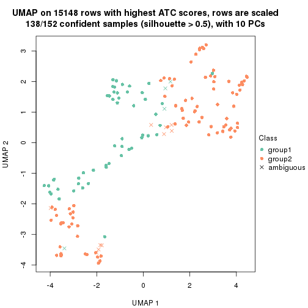
dimension_reduction(res, k = 3, method = "UMAP")
dimension_reduction(res, k = 4, method = "UMAP")
dimension_reduction(res, k = 5, method = "UMAP")
dimension_reduction(res, k = 6, method = "UMAP")
Following heatmap shows how subgroups are split when increasing k:
collect_classes(res)
If matrix rows can be associated to genes, consider to use functional_enrichment(res,
...) to perform function enrichment for the signature genes. See this vignette for more detailed explanations.
ATC:kmeans**
The object with results only for a single top-value method and a single partition method
can be extracted as:
res = res_list["ATC", "kmeans"]
# you can also extract it by
# res = res_list["ATC:kmeans"]
A summary of res and all the functions that can be applied to it:
res
#> A 'ConsensusPartition' object with k = 2, 3, 4, 5, 6.
#> On a matrix with 15148 rows and 152 columns.
#> Top rows (1000, 2000, 3000, 4000, 5000) are extracted by 'ATC' method.
#> Subgroups are detected by 'kmeans' method.
#> Performed in total 1250 partitions by row resampling.
#> Best k for subgroups seems to be 2.
#>
#> Following methods can be applied to this 'ConsensusPartition' object:
#> [1] "cola_report" "collect_classes" "collect_plots"
#> [4] "collect_stats" "colnames" "compare_signatures"
#> [7] "consensus_heatmap" "dimension_reduction" "functional_enrichment"
#> [10] "get_anno_col" "get_anno" "get_classes"
#> [13] "get_consensus" "get_matrix" "get_membership"
#> [16] "get_param" "get_signatures" "get_stats"
#> [19] "is_best_k" "is_stable_k" "membership_heatmap"
#> [22] "ncol" "nrow" "plot_ecdf"
#> [25] "rownames" "select_partition_number" "show"
#> [28] "suggest_best_k" "test_to_known_factors"
collect_plots() function collects all the plots made from res for all k (number of partitions)
into one single page to provide an easy and fast comparison between different k.
collect_plots(res)
The plots are:
- The first row: a plot of the ECDF (empirical cumulative distribution
function) curves of the consensus matrix for each
k and the heatmap of
predicted classes for each k.
- The second row: heatmaps of the consensus matrix for each
k.
- The third row: heatmaps of the membership matrix for each
k.
- The fouth row: heatmaps of the signatures for each
k.
All the plots in panels can be made by individual functions and they are
plotted later in this section.
select_partition_number() produces several plots showing different
statistics for choosing “optimized” k. There are following statistics:
- ECDF curves of the consensus matrix for each
k;
- 1-PAC. The PAC
score
measures the proportion of the ambiguous subgrouping.
- Mean silhouette score.
- Concordance. The mean probability of fiting the consensus class ids in all
partitions.
- Area increased. Denote \(A_k\) as the area under the ECDF curve for current
k, the area increased is defined as \(A_k - A_{k-1}\).
- Rand index. The percent of pairs of samples that are both in a same cluster
or both are not in a same cluster in the partition of k and k-1.
- Jaccard index. The ratio of pairs of samples are both in a same cluster in
the partition of k and k-1 and the pairs of samples are both in a same
cluster in the partition k or k-1.
The detailed explanations of these statistics can be found in the cola
vignette.
Generally speaking, lower PAC score, higher mean silhouette score or higher
concordance corresponds to better partition. Rand index and Jaccard index
measure how similar the current partition is compared to partition with k-1.
If they are too similar, we won't accept k is better than k-1.
select_partition_number(res)
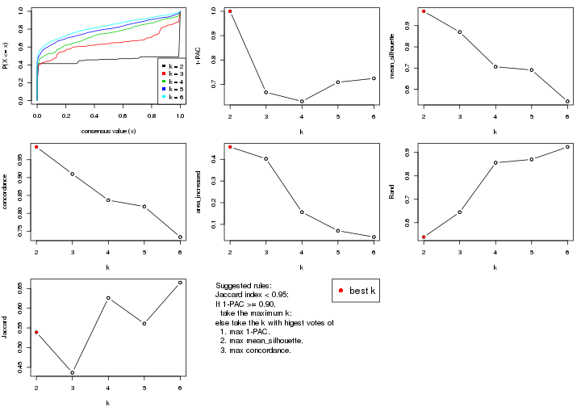
The numeric values for all these statistics can be obtained by get_stats().
get_stats(res)
#> k 1-PAC mean_silhouette concordance area_increased Rand Jaccard
#> 2 2 1.000 0.968 0.986 0.4571 0.539 0.539
#> 3 3 0.667 0.870 0.910 0.4024 0.645 0.436
#> 4 4 0.630 0.706 0.837 0.1561 0.856 0.626
#> 5 5 0.709 0.691 0.819 0.0705 0.870 0.561
#> 6 6 0.724 0.543 0.734 0.0415 0.923 0.665
suggest_best_k() suggests the best \(k\) based on these statistics. The rules are as follows:
- All \(k\) with Jaccard index larger than 0.95 are removed because increasing
\(k\) does not provide enough extra information. If all \(k\) are removed, it is
marked as no subgroup is detected.
- For all \(k\) with 1-PAC score larger than 0.9, the maximal \(k\) is taken as
the best \(k\), and other \(k\) are marked as optional \(k\).
- If it does not fit the second rule. The \(k\) with the maximal vote of the
highest 1-PAC score, highest mean silhouette, and highest concordance is
taken as the best \(k\).
suggest_best_k(res)
#> [1] 2
Following shows the table of the partitions (You need to click the show/hide
code output link to see it). The membership matrix (columns with name p*)
is inferred by
clue::cl_consensus()
function with the SE method. Basically the value in the membership matrix
represents the probability to belong to a certain group. The finall class
label for an item is determined with the group with highest probability it
belongs to.
In get_classes() function, the entropy is calculated from the membership
matrix and the silhouette score is calculated from the consensus matrix.
show/hide code output
cbind(get_classes(res, k = 2), get_membership(res, k = 2))
#> class entropy silhouette p1 p2
#> SRR1947547 1 0.0000 0.969 1.000 0.000
#> SRR1947546 2 0.0000 0.994 0.000 1.000
#> SRR1947545 1 0.0376 0.970 0.996 0.004
#> SRR1947544 1 0.0376 0.970 0.996 0.004
#> SRR1947542 2 0.0000 0.994 0.000 1.000
#> SRR1947541 1 0.0000 0.969 1.000 0.000
#> SRR1947540 2 0.0000 0.994 0.000 1.000
#> SRR1947539 2 0.0376 0.993 0.004 0.996
#> SRR1947538 2 0.0000 0.994 0.000 1.000
#> SRR1947537 2 0.0376 0.993 0.004 0.996
#> SRR1947536 1 0.0000 0.969 1.000 0.000
#> SRR1947535 2 0.0376 0.993 0.004 0.996
#> SRR1947534 1 0.0376 0.970 0.996 0.004
#> SRR1947533 2 0.0000 0.994 0.000 1.000
#> SRR1947532 2 0.0000 0.994 0.000 1.000
#> SRR1947531 2 0.0000 0.994 0.000 1.000
#> SRR1947530 1 0.0000 0.969 1.000 0.000
#> SRR1947529 2 0.0000 0.994 0.000 1.000
#> SRR1947528 1 0.0000 0.969 1.000 0.000
#> SRR1947527 2 0.0000 0.994 0.000 1.000
#> SRR1947526 2 0.0000 0.994 0.000 1.000
#> SRR1947525 2 0.0000 0.994 0.000 1.000
#> SRR1947524 2 0.0376 0.993 0.004 0.996
#> SRR1947523 1 0.8713 0.618 0.708 0.292
#> SRR1947521 1 0.8555 0.634 0.720 0.280
#> SRR1947520 2 0.0000 0.994 0.000 1.000
#> SRR1947519 1 0.8608 0.626 0.716 0.284
#> SRR1947518 2 0.0000 0.994 0.000 1.000
#> SRR1947517 1 0.0000 0.969 1.000 0.000
#> SRR1947516 2 0.0000 0.994 0.000 1.000
#> SRR1947515 2 0.0000 0.994 0.000 1.000
#> SRR1947514 2 0.0000 0.994 0.000 1.000
#> SRR1947513 1 0.0376 0.970 0.996 0.004
#> SRR1947512 1 0.0376 0.970 0.996 0.004
#> SRR1947511 2 0.0000 0.994 0.000 1.000
#> SRR1947510 2 0.0376 0.993 0.004 0.996
#> SRR1947572 2 0.0000 0.994 0.000 1.000
#> SRR1947611 2 0.0376 0.993 0.004 0.996
#> SRR1947509 1 0.0000 0.969 1.000 0.000
#> SRR1947644 2 0.0376 0.993 0.004 0.996
#> SRR1947643 2 0.0000 0.994 0.000 1.000
#> SRR1947642 2 0.0376 0.993 0.004 0.996
#> SRR1947640 1 0.0376 0.970 0.996 0.004
#> SRR1947641 2 0.0376 0.993 0.004 0.996
#> SRR1947639 2 0.0000 0.994 0.000 1.000
#> SRR1947638 1 0.0376 0.970 0.996 0.004
#> SRR1947637 2 0.0376 0.993 0.004 0.996
#> SRR1947636 2 0.0376 0.993 0.004 0.996
#> SRR1947635 2 0.0000 0.994 0.000 1.000
#> SRR1947634 2 0.0000 0.994 0.000 1.000
#> SRR1947633 2 0.0376 0.993 0.004 0.996
#> SRR1947632 2 0.0000 0.994 0.000 1.000
#> SRR1947631 2 0.0376 0.993 0.004 0.996
#> SRR1947629 2 0.0376 0.993 0.004 0.996
#> SRR1947630 2 0.0000 0.994 0.000 1.000
#> SRR1947627 1 0.0000 0.969 1.000 0.000
#> SRR1947628 2 0.0000 0.994 0.000 1.000
#> SRR1947626 2 0.0000 0.994 0.000 1.000
#> SRR1947625 2 0.0376 0.993 0.004 0.996
#> SRR1947624 2 0.0000 0.994 0.000 1.000
#> SRR1947623 1 0.0376 0.970 0.996 0.004
#> SRR1947622 2 0.0000 0.994 0.000 1.000
#> SRR1947621 2 0.0000 0.994 0.000 1.000
#> SRR1947620 1 0.0376 0.970 0.996 0.004
#> SRR1947619 2 0.0376 0.993 0.004 0.996
#> SRR1947617 2 0.0000 0.994 0.000 1.000
#> SRR1947618 1 0.0376 0.970 0.996 0.004
#> SRR1947616 2 0.0000 0.994 0.000 1.000
#> SRR1947615 2 0.9881 0.182 0.436 0.564
#> SRR1947614 1 0.0000 0.969 1.000 0.000
#> SRR1947613 1 0.0376 0.970 0.996 0.004
#> SRR1947610 2 0.0000 0.994 0.000 1.000
#> SRR1947612 2 0.0000 0.994 0.000 1.000
#> SRR1947609 1 0.0376 0.970 0.996 0.004
#> SRR1947608 2 0.0376 0.993 0.004 0.996
#> SRR1947606 1 0.0000 0.969 1.000 0.000
#> SRR1947607 1 0.0376 0.970 0.996 0.004
#> SRR1947604 2 0.0000 0.994 0.000 1.000
#> SRR1947605 1 0.0376 0.970 0.996 0.004
#> SRR1947603 2 0.0000 0.994 0.000 1.000
#> SRR1947602 1 0.0000 0.969 1.000 0.000
#> SRR1947600 2 0.0376 0.993 0.004 0.996
#> SRR1947601 2 0.0000 0.994 0.000 1.000
#> SRR1947598 2 0.0000 0.994 0.000 1.000
#> SRR1947599 1 0.0376 0.970 0.996 0.004
#> SRR1947597 2 0.0000 0.994 0.000 1.000
#> SRR1947596 2 0.0000 0.994 0.000 1.000
#> SRR1947595 2 0.0000 0.994 0.000 1.000
#> SRR1947594 1 0.0376 0.970 0.996 0.004
#> SRR1947592 2 0.0376 0.993 0.004 0.996
#> SRR1947591 2 0.0000 0.994 0.000 1.000
#> SRR1947590 2 0.0000 0.994 0.000 1.000
#> SRR1947588 1 0.0376 0.970 0.996 0.004
#> SRR1947587 2 0.0376 0.993 0.004 0.996
#> SRR1947586 2 0.0000 0.994 0.000 1.000
#> SRR1947585 2 0.0376 0.993 0.004 0.996
#> SRR1947584 1 0.0376 0.970 0.996 0.004
#> SRR1947583 2 0.0000 0.994 0.000 1.000
#> SRR1947582 1 0.0376 0.970 0.996 0.004
#> SRR1947580 2 0.0000 0.994 0.000 1.000
#> SRR1947581 1 0.0376 0.970 0.996 0.004
#> SRR1947576 2 0.0376 0.993 0.004 0.996
#> SRR1947575 2 0.0376 0.993 0.004 0.996
#> SRR1947579 2 0.0376 0.993 0.004 0.996
#> SRR1947578 2 0.0000 0.994 0.000 1.000
#> SRR1947573 2 0.0376 0.993 0.004 0.996
#> SRR1947574 1 0.0376 0.970 0.996 0.004
#> SRR1947571 2 0.0000 0.994 0.000 1.000
#> SRR1947577 1 0.0376 0.970 0.996 0.004
#> SRR1947570 1 0.0000 0.969 1.000 0.000
#> SRR1947569 2 0.0376 0.993 0.004 0.996
#> SRR1947566 2 0.0000 0.994 0.000 1.000
#> SRR1947567 2 0.0000 0.994 0.000 1.000
#> SRR1947568 2 0.0000 0.994 0.000 1.000
#> SRR1947564 2 0.0000 0.994 0.000 1.000
#> SRR1947563 2 0.0376 0.993 0.004 0.996
#> SRR1947562 2 0.0000 0.994 0.000 1.000
#> SRR1947565 2 0.0376 0.993 0.004 0.996
#> SRR1947559 2 0.0000 0.994 0.000 1.000
#> SRR1947560 2 0.0376 0.993 0.004 0.996
#> SRR1947561 2 0.0000 0.994 0.000 1.000
#> SRR1947557 1 0.0376 0.970 0.996 0.004
#> SRR1947558 2 0.0376 0.993 0.004 0.996
#> SRR1947556 1 0.0376 0.970 0.996 0.004
#> SRR1947553 2 0.0000 0.994 0.000 1.000
#> SRR1947554 1 0.0376 0.970 0.996 0.004
#> SRR1947555 2 0.0000 0.994 0.000 1.000
#> SRR1947550 2 0.0000 0.994 0.000 1.000
#> SRR1947552 1 0.9209 0.530 0.664 0.336
#> SRR1947549 2 0.0376 0.993 0.004 0.996
#> SRR1947551 2 0.0376 0.993 0.004 0.996
#> SRR1947548 2 0.0000 0.994 0.000 1.000
#> SRR1947506 1 0.0000 0.969 1.000 0.000
#> SRR1947507 1 0.0376 0.970 0.996 0.004
#> SRR1947504 1 0.0376 0.970 0.996 0.004
#> SRR1947503 1 0.0376 0.970 0.996 0.004
#> SRR1947502 2 0.0000 0.994 0.000 1.000
#> SRR1947501 2 0.0000 0.994 0.000 1.000
#> SRR1947499 1 0.0000 0.969 1.000 0.000
#> SRR1947498 2 0.0376 0.993 0.004 0.996
#> SRR1947508 1 0.0000 0.969 1.000 0.000
#> SRR1947505 1 0.8608 0.633 0.716 0.284
#> SRR1947497 2 0.0000 0.994 0.000 1.000
#> SRR1947496 1 0.0376 0.970 0.996 0.004
#> SRR1947495 2 0.0000 0.994 0.000 1.000
#> SRR1947494 2 0.0000 0.994 0.000 1.000
#> SRR1947493 1 0.0000 0.969 1.000 0.000
#> SRR1947492 1 0.0376 0.970 0.996 0.004
#> SRR1947500 2 0.0000 0.994 0.000 1.000
#> SRR1947491 1 0.0376 0.970 0.996 0.004
#> SRR1947490 1 0.0376 0.970 0.996 0.004
#> SRR1947489 1 0.0000 0.969 1.000 0.000
show/hide code output
cbind(get_classes(res, k = 3), get_membership(res, k = 3))
#> class entropy silhouette p1 p2 p3
#> SRR1947547 1 0.0237 0.9955 0.996 0.000 0.004
#> SRR1947546 2 0.0424 0.9233 0.000 0.992 0.008
#> SRR1947545 1 0.0000 0.9997 1.000 0.000 0.000
#> SRR1947544 1 0.0000 0.9997 1.000 0.000 0.000
#> SRR1947542 2 0.0000 0.9279 0.000 1.000 0.000
#> SRR1947541 3 0.1163 0.8544 0.028 0.000 0.972
#> SRR1947540 3 0.4452 0.8411 0.000 0.192 0.808
#> SRR1947539 3 0.0424 0.8523 0.000 0.008 0.992
#> SRR1947538 3 0.4974 0.8065 0.000 0.236 0.764
#> SRR1947537 3 0.5948 0.3002 0.000 0.360 0.640
#> SRR1947536 1 0.0000 0.9997 1.000 0.000 0.000
#> SRR1947535 3 0.0424 0.8523 0.000 0.008 0.992
#> SRR1947534 1 0.0000 0.9997 1.000 0.000 0.000
#> SRR1947533 3 0.6180 0.5159 0.000 0.416 0.584
#> SRR1947532 3 0.3686 0.8659 0.000 0.140 0.860
#> SRR1947531 3 0.3686 0.8659 0.000 0.140 0.860
#> SRR1947530 1 0.0000 0.9997 1.000 0.000 0.000
#> SRR1947529 2 0.1289 0.9035 0.000 0.968 0.032
#> SRR1947528 3 0.4504 0.7752 0.196 0.000 0.804
#> SRR1947527 3 0.4555 0.8359 0.000 0.200 0.800
#> SRR1947526 2 0.0000 0.9279 0.000 1.000 0.000
#> SRR1947525 2 0.0424 0.9233 0.000 0.992 0.008
#> SRR1947524 3 0.0424 0.8523 0.000 0.008 0.992
#> SRR1947523 3 0.4270 0.8670 0.024 0.116 0.860
#> SRR1947521 3 0.0424 0.8523 0.000 0.008 0.992
#> SRR1947520 3 0.3686 0.8659 0.000 0.140 0.860
#> SRR1947519 3 0.0000 0.8534 0.000 0.000 1.000
#> SRR1947518 3 0.4974 0.8065 0.000 0.236 0.764
#> SRR1947517 3 0.2878 0.8254 0.096 0.000 0.904
#> SRR1947516 2 0.0000 0.9279 0.000 1.000 0.000
#> SRR1947515 3 0.5465 0.7494 0.000 0.288 0.712
#> SRR1947514 2 0.0424 0.9233 0.000 0.992 0.008
#> SRR1947513 1 0.0000 0.9997 1.000 0.000 0.000
#> SRR1947512 1 0.0000 0.9997 1.000 0.000 0.000
#> SRR1947511 3 0.4555 0.8359 0.000 0.200 0.800
#> SRR1947510 3 0.0592 0.8510 0.000 0.012 0.988
#> SRR1947572 3 0.4974 0.8065 0.000 0.236 0.764
#> SRR1947611 3 0.5968 0.2837 0.000 0.364 0.636
#> SRR1947509 1 0.0000 0.9997 1.000 0.000 0.000
#> SRR1947644 3 0.0424 0.8523 0.000 0.008 0.992
#> SRR1947643 3 0.3686 0.8659 0.000 0.140 0.860
#> SRR1947642 3 0.0000 0.8534 0.000 0.000 1.000
#> SRR1947640 3 0.4324 0.8667 0.028 0.112 0.860
#> SRR1947641 3 0.0424 0.8523 0.000 0.008 0.992
#> SRR1947639 2 0.0424 0.9233 0.000 0.992 0.008
#> SRR1947638 1 0.0000 0.9997 1.000 0.000 0.000
#> SRR1947637 2 0.3686 0.8432 0.000 0.860 0.140
#> SRR1947636 3 0.0424 0.8523 0.000 0.008 0.992
#> SRR1947635 3 0.3686 0.8659 0.000 0.140 0.860
#> SRR1947634 3 0.3686 0.8659 0.000 0.140 0.860
#> SRR1947633 3 0.0424 0.8523 0.000 0.008 0.992
#> SRR1947632 2 0.0000 0.9279 0.000 1.000 0.000
#> SRR1947631 3 0.0000 0.8534 0.000 0.000 1.000
#> SRR1947629 2 0.5058 0.7539 0.000 0.756 0.244
#> SRR1947630 3 0.3686 0.8659 0.000 0.140 0.860
#> SRR1947627 1 0.0237 0.9955 0.996 0.000 0.004
#> SRR1947628 2 0.0000 0.9279 0.000 1.000 0.000
#> SRR1947626 2 0.0424 0.9233 0.000 0.992 0.008
#> SRR1947625 3 0.5948 0.2953 0.000 0.360 0.640
#> SRR1947624 2 0.0000 0.9279 0.000 1.000 0.000
#> SRR1947623 3 0.4920 0.8443 0.108 0.052 0.840
#> SRR1947622 2 0.0000 0.9279 0.000 1.000 0.000
#> SRR1947621 2 0.0000 0.9279 0.000 1.000 0.000
#> SRR1947620 1 0.0000 0.9997 1.000 0.000 0.000
#> SRR1947619 2 0.3686 0.8432 0.000 0.860 0.140
#> SRR1947617 2 0.0000 0.9279 0.000 1.000 0.000
#> SRR1947618 1 0.0000 0.9997 1.000 0.000 0.000
#> SRR1947616 2 0.0000 0.9279 0.000 1.000 0.000
#> SRR1947615 3 0.0000 0.8534 0.000 0.000 1.000
#> SRR1947614 3 0.0424 0.8523 0.000 0.008 0.992
#> SRR1947613 1 0.0000 0.9997 1.000 0.000 0.000
#> SRR1947610 3 0.4974 0.8065 0.000 0.236 0.764
#> SRR1947612 2 0.0000 0.9279 0.000 1.000 0.000
#> SRR1947609 3 0.3686 0.8252 0.140 0.000 0.860
#> SRR1947608 2 0.3686 0.8432 0.000 0.860 0.140
#> SRR1947606 3 0.1031 0.8545 0.024 0.000 0.976
#> SRR1947607 1 0.0000 0.9997 1.000 0.000 0.000
#> SRR1947604 3 0.3686 0.8659 0.000 0.140 0.860
#> SRR1947605 1 0.0000 0.9997 1.000 0.000 0.000
#> SRR1947603 2 0.0000 0.9279 0.000 1.000 0.000
#> SRR1947602 1 0.0000 0.9997 1.000 0.000 0.000
#> SRR1947600 3 0.5810 0.3623 0.000 0.336 0.664
#> SRR1947601 2 0.0000 0.9279 0.000 1.000 0.000
#> SRR1947598 3 0.3686 0.8659 0.000 0.140 0.860
#> SRR1947599 3 0.3686 0.8252 0.140 0.000 0.860
#> SRR1947597 2 0.0000 0.9279 0.000 1.000 0.000
#> SRR1947596 3 0.4002 0.8580 0.000 0.160 0.840
#> SRR1947595 3 0.3686 0.8659 0.000 0.140 0.860
#> SRR1947594 1 0.0000 0.9997 1.000 0.000 0.000
#> SRR1947592 3 0.0424 0.8523 0.000 0.008 0.992
#> SRR1947591 2 0.0000 0.9279 0.000 1.000 0.000
#> SRR1947590 3 0.4931 0.8104 0.000 0.232 0.768
#> SRR1947588 1 0.0000 0.9997 1.000 0.000 0.000
#> SRR1947587 3 0.0000 0.8534 0.000 0.000 1.000
#> SRR1947586 3 0.4452 0.8411 0.000 0.192 0.808
#> SRR1947585 3 0.0424 0.8523 0.000 0.008 0.992
#> SRR1947584 1 0.0000 0.9997 1.000 0.000 0.000
#> SRR1947583 3 0.3686 0.8659 0.000 0.140 0.860
#> SRR1947582 1 0.0000 0.9997 1.000 0.000 0.000
#> SRR1947580 3 0.4555 0.8359 0.000 0.200 0.800
#> SRR1947581 1 0.0000 0.9997 1.000 0.000 0.000
#> SRR1947576 2 0.4002 0.8285 0.000 0.840 0.160
#> SRR1947575 2 0.3686 0.8432 0.000 0.860 0.140
#> SRR1947579 3 0.0424 0.8523 0.000 0.008 0.992
#> SRR1947578 2 0.6111 0.0833 0.000 0.604 0.396
#> SRR1947573 2 0.3686 0.8432 0.000 0.860 0.140
#> SRR1947574 3 0.4527 0.8523 0.088 0.052 0.860
#> SRR1947571 3 0.4452 0.8411 0.000 0.192 0.808
#> SRR1947577 1 0.0000 0.9997 1.000 0.000 0.000
#> SRR1947570 1 0.0000 0.9997 1.000 0.000 0.000
#> SRR1947569 2 0.5058 0.7539 0.000 0.756 0.244
#> SRR1947566 2 0.0000 0.9279 0.000 1.000 0.000
#> SRR1947567 3 0.4974 0.8065 0.000 0.236 0.764
#> SRR1947568 2 0.1289 0.9053 0.000 0.968 0.032
#> SRR1947564 2 0.0000 0.9279 0.000 1.000 0.000
#> SRR1947563 2 0.3686 0.8432 0.000 0.860 0.140
#> SRR1947562 2 0.0424 0.9233 0.000 0.992 0.008
#> SRR1947565 3 0.0424 0.8523 0.000 0.008 0.992
#> SRR1947559 2 0.0000 0.9279 0.000 1.000 0.000
#> SRR1947560 3 0.4452 0.6697 0.000 0.192 0.808
#> SRR1947561 2 0.0000 0.9279 0.000 1.000 0.000
#> SRR1947557 1 0.0000 0.9997 1.000 0.000 0.000
#> SRR1947558 3 0.0424 0.8523 0.000 0.008 0.992
#> SRR1947556 3 0.4178 0.8032 0.172 0.000 0.828
#> SRR1947553 3 0.4555 0.8359 0.000 0.200 0.800
#> SRR1947554 1 0.0000 0.9997 1.000 0.000 0.000
#> SRR1947555 2 0.0000 0.9279 0.000 1.000 0.000
#> SRR1947550 3 0.4974 0.8065 0.000 0.236 0.764
#> SRR1947552 3 0.4270 0.8670 0.024 0.116 0.860
#> SRR1947549 2 0.3686 0.8432 0.000 0.860 0.140
#> SRR1947551 2 0.6126 0.4908 0.000 0.600 0.400
#> SRR1947548 2 0.3116 0.8206 0.000 0.892 0.108
#> SRR1947506 1 0.0000 0.9997 1.000 0.000 0.000
#> SRR1947507 1 0.0000 0.9997 1.000 0.000 0.000
#> SRR1947504 3 0.5138 0.8380 0.120 0.052 0.828
#> SRR1947503 1 0.0000 0.9997 1.000 0.000 0.000
#> SRR1947502 2 0.0000 0.9279 0.000 1.000 0.000
#> SRR1947501 2 0.0000 0.9279 0.000 1.000 0.000
#> SRR1947499 1 0.0000 0.9997 1.000 0.000 0.000
#> SRR1947498 3 0.0424 0.8523 0.000 0.008 0.992
#> SRR1947508 1 0.0000 0.9997 1.000 0.000 0.000
#> SRR1947505 3 0.4015 0.8685 0.028 0.096 0.876
#> SRR1947497 3 0.3686 0.8659 0.000 0.140 0.860
#> SRR1947496 1 0.0000 0.9997 1.000 0.000 0.000
#> SRR1947495 3 0.3686 0.8659 0.000 0.140 0.860
#> SRR1947494 3 0.3686 0.8659 0.000 0.140 0.860
#> SRR1947493 1 0.0000 0.9997 1.000 0.000 0.000
#> SRR1947492 1 0.0000 0.9997 1.000 0.000 0.000
#> SRR1947500 3 0.3686 0.8659 0.000 0.140 0.860
#> SRR1947491 3 0.3686 0.8252 0.140 0.000 0.860
#> SRR1947490 1 0.0000 0.9997 1.000 0.000 0.000
#> SRR1947489 3 0.3686 0.8252 0.140 0.000 0.860
show/hide code output
cbind(get_classes(res, k = 4), get_membership(res, k = 4))
#> class entropy silhouette p1 p2 p3 p4
#> SRR1947547 1 0.5203 0.49715 0.576 0.000 0.008 0.416
#> SRR1947546 2 0.4836 0.57501 0.000 0.672 0.320 0.008
#> SRR1947545 1 0.0000 0.92244 1.000 0.000 0.000 0.000
#> SRR1947544 1 0.4406 0.67064 0.700 0.000 0.000 0.300
#> SRR1947542 2 0.0188 0.85026 0.000 0.996 0.000 0.004
#> SRR1947541 4 0.4790 0.00861 0.000 0.000 0.380 0.620
#> SRR1947540 4 0.7024 0.54120 0.000 0.128 0.360 0.512
#> SRR1947539 3 0.1211 0.83001 0.000 0.000 0.960 0.040
#> SRR1947538 4 0.6983 0.54386 0.000 0.124 0.360 0.516
#> SRR1947537 3 0.1118 0.82685 0.000 0.000 0.964 0.036
#> SRR1947536 1 0.0524 0.91931 0.988 0.000 0.008 0.004
#> SRR1947535 3 0.1211 0.83001 0.000 0.000 0.960 0.040
#> SRR1947534 1 0.0000 0.92244 1.000 0.000 0.000 0.000
#> SRR1947533 4 0.7478 0.47940 0.000 0.188 0.344 0.468
#> SRR1947532 4 0.3157 0.69035 0.000 0.004 0.144 0.852
#> SRR1947531 4 0.3161 0.69326 0.000 0.012 0.124 0.864
#> SRR1947530 1 0.0336 0.92082 0.992 0.000 0.008 0.000
#> SRR1947529 2 0.6039 0.46590 0.000 0.596 0.348 0.056
#> SRR1947528 4 0.7268 -0.17583 0.152 0.000 0.372 0.476
#> SRR1947527 4 0.5823 0.65887 0.000 0.120 0.176 0.704
#> SRR1947526 2 0.3257 0.76968 0.000 0.844 0.152 0.004
#> SRR1947525 2 0.5213 0.54897 0.000 0.652 0.328 0.020
#> SRR1947524 3 0.1211 0.83001 0.000 0.000 0.960 0.040
#> SRR1947523 4 0.1004 0.65851 0.000 0.004 0.024 0.972
#> SRR1947521 3 0.4991 0.49651 0.000 0.004 0.608 0.388
#> SRR1947520 4 0.4375 0.68688 0.000 0.032 0.180 0.788
#> SRR1947519 4 0.4790 0.00861 0.000 0.000 0.380 0.620
#> SRR1947518 4 0.6867 0.57950 0.000 0.124 0.324 0.552
#> SRR1947517 3 0.6398 0.38434 0.056 0.004 0.524 0.416
#> SRR1947516 2 0.0188 0.85026 0.000 0.996 0.000 0.004
#> SRR1947515 4 0.6083 0.57319 0.000 0.056 0.360 0.584
#> SRR1947514 2 0.2888 0.79072 0.000 0.872 0.124 0.004
#> SRR1947513 1 0.0000 0.92244 1.000 0.000 0.000 0.000
#> SRR1947512 1 0.0000 0.92244 1.000 0.000 0.000 0.000
#> SRR1947511 4 0.6852 0.57198 0.000 0.124 0.320 0.556
#> SRR1947510 3 0.1398 0.80478 0.000 0.004 0.956 0.040
#> SRR1947572 4 0.6937 0.56100 0.000 0.124 0.344 0.532
#> SRR1947611 3 0.1452 0.80564 0.000 0.008 0.956 0.036
#> SRR1947509 1 0.0524 0.91931 0.988 0.000 0.008 0.004
#> SRR1947644 3 0.1109 0.81489 0.000 0.004 0.968 0.028
#> SRR1947643 4 0.5411 0.62352 0.000 0.032 0.312 0.656
#> SRR1947642 4 0.4790 0.00861 0.000 0.000 0.380 0.620
#> SRR1947640 4 0.0712 0.65662 0.008 0.004 0.004 0.984
#> SRR1947641 3 0.1211 0.83001 0.000 0.000 0.960 0.040
#> SRR1947639 2 0.5173 0.56075 0.000 0.660 0.320 0.020
#> SRR1947638 1 0.0000 0.92244 1.000 0.000 0.000 0.000
#> SRR1947637 2 0.3400 0.73416 0.000 0.820 0.180 0.000
#> SRR1947636 3 0.1302 0.82757 0.000 0.000 0.956 0.044
#> SRR1947635 4 0.3208 0.69037 0.000 0.004 0.148 0.848
#> SRR1947634 4 0.4995 0.66345 0.000 0.032 0.248 0.720
#> SRR1947633 3 0.0817 0.82581 0.000 0.000 0.976 0.024
#> SRR1947632 2 0.0188 0.85026 0.000 0.996 0.000 0.004
#> SRR1947631 3 0.4500 0.53301 0.000 0.000 0.684 0.316
#> SRR1947629 3 0.3280 0.73645 0.000 0.124 0.860 0.016
#> SRR1947630 4 0.4267 0.68411 0.000 0.024 0.188 0.788
#> SRR1947627 1 0.5099 0.55541 0.612 0.000 0.008 0.380
#> SRR1947628 2 0.4897 0.55796 0.000 0.660 0.332 0.008
#> SRR1947626 2 0.3448 0.75624 0.000 0.828 0.168 0.004
#> SRR1947625 3 0.1211 0.83001 0.000 0.000 0.960 0.040
#> SRR1947624 2 0.4139 0.75111 0.000 0.800 0.176 0.024
#> SRR1947623 4 0.0779 0.65301 0.016 0.000 0.004 0.980
#> SRR1947622 2 0.0188 0.85026 0.000 0.996 0.000 0.004
#> SRR1947621 2 0.0188 0.85026 0.000 0.996 0.000 0.004
#> SRR1947620 1 0.0188 0.92187 0.996 0.000 0.004 0.000
#> SRR1947619 2 0.5229 0.45895 0.000 0.564 0.428 0.008
#> SRR1947617 2 0.0188 0.85026 0.000 0.996 0.000 0.004
#> SRR1947618 1 0.0188 0.92187 0.996 0.000 0.004 0.000
#> SRR1947616 2 0.0524 0.84809 0.000 0.988 0.008 0.004
#> SRR1947615 4 0.1211 0.64667 0.000 0.000 0.040 0.960
#> SRR1947614 3 0.4991 0.49651 0.000 0.004 0.608 0.388
#> SRR1947613 1 0.0000 0.92244 1.000 0.000 0.000 0.000
#> SRR1947610 4 0.6845 0.57885 0.000 0.128 0.308 0.564
#> SRR1947612 2 0.0188 0.85026 0.000 0.996 0.000 0.004
#> SRR1947609 4 0.1406 0.65134 0.016 0.000 0.024 0.960
#> SRR1947608 2 0.3636 0.73348 0.000 0.820 0.172 0.008
#> SRR1947606 4 0.4790 0.00861 0.000 0.000 0.380 0.620
#> SRR1947607 1 0.0000 0.92244 1.000 0.000 0.000 0.000
#> SRR1947604 4 0.3208 0.69037 0.000 0.004 0.148 0.848
#> SRR1947605 1 0.0188 0.92187 0.996 0.000 0.004 0.000
#> SRR1947603 2 0.0188 0.85026 0.000 0.996 0.000 0.004
#> SRR1947602 1 0.0336 0.92082 0.992 0.000 0.008 0.000
#> SRR1947600 3 0.1211 0.83001 0.000 0.000 0.960 0.040
#> SRR1947601 2 0.0188 0.85026 0.000 0.996 0.000 0.004
#> SRR1947598 4 0.5024 0.59168 0.000 0.008 0.360 0.632
#> SRR1947599 4 0.1406 0.65134 0.016 0.000 0.024 0.960
#> SRR1947597 2 0.0188 0.85026 0.000 0.996 0.000 0.004
#> SRR1947596 4 0.3257 0.69140 0.000 0.004 0.152 0.844
#> SRR1947595 4 0.3529 0.69130 0.000 0.012 0.152 0.836
#> SRR1947594 1 0.0000 0.92244 1.000 0.000 0.000 0.000
#> SRR1947592 3 0.1211 0.83001 0.000 0.000 0.960 0.040
#> SRR1947591 2 0.0188 0.85026 0.000 0.996 0.000 0.004
#> SRR1947590 4 0.5253 0.58962 0.000 0.016 0.360 0.624
#> SRR1947588 1 0.0000 0.92244 1.000 0.000 0.000 0.000
#> SRR1947587 3 0.4776 0.48134 0.000 0.000 0.624 0.376
#> SRR1947586 4 0.5226 0.67668 0.000 0.076 0.180 0.744
#> SRR1947585 3 0.1211 0.83001 0.000 0.000 0.960 0.040
#> SRR1947584 1 0.0000 0.92244 1.000 0.000 0.000 0.000
#> SRR1947583 4 0.2988 0.69328 0.000 0.012 0.112 0.876
#> SRR1947582 1 0.0188 0.92187 0.996 0.000 0.004 0.000
#> SRR1947580 4 0.6852 0.57198 0.000 0.124 0.320 0.556
#> SRR1947581 1 0.0000 0.92244 1.000 0.000 0.000 0.000
#> SRR1947576 2 0.4155 0.65744 0.000 0.756 0.240 0.004
#> SRR1947575 2 0.3401 0.74985 0.000 0.840 0.152 0.008
#> SRR1947579 3 0.4188 0.62584 0.000 0.004 0.752 0.244
#> SRR1947578 4 0.7210 0.52052 0.000 0.148 0.360 0.492
#> SRR1947573 2 0.4123 0.67932 0.000 0.772 0.220 0.008
#> SRR1947574 4 0.1059 0.65192 0.012 0.000 0.016 0.972
#> SRR1947571 4 0.5253 0.58962 0.000 0.016 0.360 0.624
#> SRR1947577 1 0.0188 0.92187 0.996 0.000 0.004 0.000
#> SRR1947570 1 0.5138 0.53919 0.600 0.000 0.008 0.392
#> SRR1947569 3 0.3280 0.73645 0.000 0.124 0.860 0.016
#> SRR1947566 2 0.0188 0.85026 0.000 0.996 0.000 0.004
#> SRR1947567 4 0.7024 0.54120 0.000 0.128 0.360 0.512
#> SRR1947568 4 0.7778 0.41480 0.000 0.256 0.324 0.420
#> SRR1947564 2 0.0188 0.85026 0.000 0.996 0.000 0.004
#> SRR1947563 2 0.3636 0.73348 0.000 0.820 0.172 0.008
#> SRR1947562 2 0.4877 0.56436 0.000 0.664 0.328 0.008
#> SRR1947565 3 0.1211 0.83001 0.000 0.000 0.960 0.040
#> SRR1947559 2 0.1576 0.83343 0.000 0.948 0.048 0.004
#> SRR1947560 3 0.1398 0.80478 0.000 0.004 0.956 0.040
#> SRR1947561 2 0.0188 0.85026 0.000 0.996 0.000 0.004
#> SRR1947557 1 0.0000 0.92244 1.000 0.000 0.000 0.000
#> SRR1947558 3 0.1211 0.83001 0.000 0.000 0.960 0.040
#> SRR1947556 4 0.1624 0.65233 0.020 0.000 0.028 0.952
#> SRR1947553 4 0.6808 0.57809 0.000 0.128 0.300 0.572
#> SRR1947554 1 0.4356 0.67613 0.708 0.000 0.000 0.292
#> SRR1947555 2 0.0188 0.85026 0.000 0.996 0.000 0.004
#> SRR1947550 4 0.7024 0.54120 0.000 0.128 0.360 0.512
#> SRR1947552 4 0.1109 0.65797 0.000 0.004 0.028 0.968
#> SRR1947549 2 0.3636 0.73348 0.000 0.820 0.172 0.008
#> SRR1947551 3 0.3048 0.75021 0.000 0.108 0.876 0.016
#> SRR1947548 4 0.6983 0.53603 0.000 0.124 0.360 0.516
#> SRR1947506 1 0.2976 0.84215 0.872 0.000 0.008 0.120
#> SRR1947507 1 0.0000 0.92244 1.000 0.000 0.000 0.000
#> SRR1947504 4 0.1510 0.65482 0.016 0.000 0.028 0.956
#> SRR1947503 1 0.4925 0.47535 0.572 0.000 0.000 0.428
#> SRR1947502 2 0.0188 0.85026 0.000 0.996 0.000 0.004
#> SRR1947501 2 0.0188 0.85026 0.000 0.996 0.000 0.004
#> SRR1947499 1 0.0336 0.92082 0.992 0.000 0.008 0.000
#> SRR1947498 3 0.4761 0.51900 0.000 0.000 0.628 0.372
#> SRR1947508 1 0.2859 0.84821 0.880 0.000 0.008 0.112
#> SRR1947505 4 0.0921 0.65399 0.000 0.000 0.028 0.972
#> SRR1947497 4 0.4332 0.68760 0.000 0.032 0.176 0.792
#> SRR1947496 1 0.0000 0.92244 1.000 0.000 0.000 0.000
#> SRR1947495 4 0.3047 0.68979 0.000 0.012 0.116 0.872
#> SRR1947494 4 0.3157 0.69035 0.000 0.004 0.144 0.852
#> SRR1947493 1 0.0336 0.92082 0.992 0.000 0.008 0.000
#> SRR1947492 1 0.0000 0.92244 1.000 0.000 0.000 0.000
#> SRR1947500 4 0.0657 0.65911 0.000 0.012 0.004 0.984
#> SRR1947491 4 0.0779 0.65045 0.016 0.000 0.004 0.980
#> SRR1947490 1 0.0000 0.92244 1.000 0.000 0.000 0.000
#> SRR1947489 4 0.3569 0.45829 0.000 0.000 0.196 0.804
show/hide code output
cbind(get_classes(res, k = 5), get_membership(res, k = 5))
#> class entropy silhouette p1 p2 p3 p4 p5
#> SRR1947547 5 0.3196 0.5991 0.192 0.000 0.004 0.000 0.804
#> SRR1947546 4 0.5903 0.5190 0.000 0.292 0.120 0.584 0.004
#> SRR1947545 1 0.0162 0.9298 0.996 0.000 0.000 0.000 0.004
#> SRR1947544 5 0.4015 0.3907 0.348 0.000 0.000 0.000 0.652
#> SRR1947542 2 0.0566 0.8597 0.000 0.984 0.000 0.012 0.004
#> SRR1947541 5 0.3980 0.6944 0.000 0.000 0.128 0.076 0.796
#> SRR1947540 4 0.3506 0.7278 0.000 0.024 0.124 0.836 0.016
#> SRR1947539 3 0.0566 0.8624 0.000 0.000 0.984 0.004 0.012
#> SRR1947538 4 0.4342 0.7218 0.000 0.024 0.128 0.792 0.056
#> SRR1947537 3 0.1412 0.8541 0.000 0.004 0.952 0.008 0.036
#> SRR1947536 1 0.2672 0.8490 0.872 0.000 0.004 0.008 0.116
#> SRR1947535 3 0.0566 0.8624 0.000 0.000 0.984 0.004 0.012
#> SRR1947534 1 0.1544 0.9069 0.932 0.000 0.000 0.000 0.068
#> SRR1947533 4 0.4169 0.6815 0.000 0.148 0.044 0.792 0.016
#> SRR1947532 4 0.4702 -0.0192 0.000 0.000 0.016 0.552 0.432
#> SRR1947531 4 0.3635 0.4598 0.000 0.000 0.004 0.748 0.248
#> SRR1947530 1 0.0162 0.9299 0.996 0.000 0.000 0.004 0.000
#> SRR1947529 4 0.5623 0.6328 0.000 0.204 0.104 0.672 0.020
#> SRR1947528 5 0.3871 0.6636 0.040 0.000 0.112 0.024 0.824
#> SRR1947527 4 0.1743 0.7079 0.000 0.028 0.004 0.940 0.028
#> SRR1947526 2 0.5289 0.1142 0.000 0.528 0.040 0.428 0.004
#> SRR1947525 4 0.6287 0.5631 0.000 0.256 0.120 0.596 0.028
#> SRR1947524 3 0.0566 0.8624 0.000 0.000 0.984 0.004 0.012
#> SRR1947523 5 0.4147 0.6344 0.000 0.000 0.008 0.316 0.676
#> SRR1947521 5 0.6070 -0.2153 0.000 0.000 0.440 0.120 0.440
#> SRR1947520 4 0.1991 0.6879 0.000 0.004 0.004 0.916 0.076
#> SRR1947519 5 0.4183 0.6943 0.000 0.000 0.136 0.084 0.780
#> SRR1947518 4 0.3644 0.7298 0.000 0.024 0.084 0.844 0.048
#> SRR1947517 5 0.4221 0.3867 0.000 0.000 0.236 0.032 0.732
#> SRR1947516 2 0.0000 0.8628 0.000 1.000 0.000 0.000 0.000
#> SRR1947515 4 0.5425 0.6519 0.000 0.004 0.164 0.676 0.156
#> SRR1947514 2 0.4999 0.2691 0.000 0.604 0.032 0.360 0.004
#> SRR1947513 1 0.1544 0.9069 0.932 0.000 0.000 0.000 0.068
#> SRR1947512 1 0.1043 0.9205 0.960 0.000 0.000 0.000 0.040
#> SRR1947511 4 0.3170 0.7145 0.000 0.040 0.036 0.876 0.048
#> SRR1947510 3 0.3471 0.8030 0.000 0.000 0.836 0.072 0.092
#> SRR1947572 4 0.3714 0.7302 0.000 0.024 0.084 0.840 0.052
#> SRR1947611 3 0.2972 0.8260 0.000 0.004 0.872 0.040 0.084
#> SRR1947509 1 0.2672 0.8490 0.872 0.000 0.004 0.008 0.116
#> SRR1947644 3 0.3130 0.8129 0.000 0.000 0.856 0.048 0.096
#> SRR1947643 4 0.1928 0.6877 0.000 0.004 0.004 0.920 0.072
#> SRR1947642 5 0.4487 0.6923 0.000 0.000 0.140 0.104 0.756
#> SRR1947640 5 0.4331 0.5500 0.000 0.000 0.004 0.400 0.596
#> SRR1947641 3 0.0693 0.8620 0.000 0.000 0.980 0.008 0.012
#> SRR1947639 4 0.6188 0.5528 0.000 0.268 0.120 0.592 0.020
#> SRR1947638 1 0.1197 0.9177 0.952 0.000 0.000 0.000 0.048
#> SRR1947637 2 0.3944 0.6952 0.000 0.768 0.200 0.000 0.032
#> SRR1947636 3 0.1281 0.8473 0.000 0.000 0.956 0.032 0.012
#> SRR1947635 4 0.4494 0.2271 0.000 0.000 0.012 0.608 0.380
#> SRR1947634 4 0.1928 0.6877 0.000 0.004 0.004 0.920 0.072
#> SRR1947633 3 0.0451 0.8610 0.000 0.000 0.988 0.008 0.004
#> SRR1947632 2 0.0324 0.8610 0.000 0.992 0.000 0.004 0.004
#> SRR1947631 3 0.4481 0.6120 0.000 0.000 0.720 0.048 0.232
#> SRR1947629 3 0.1281 0.8531 0.000 0.012 0.956 0.000 0.032
#> SRR1947630 4 0.2445 0.6757 0.000 0.004 0.004 0.884 0.108
#> SRR1947627 5 0.3920 0.4653 0.268 0.000 0.004 0.004 0.724
#> SRR1947628 4 0.6765 0.4437 0.000 0.332 0.132 0.504 0.032
#> SRR1947626 4 0.5525 0.3583 0.000 0.392 0.060 0.544 0.004
#> SRR1947625 3 0.1202 0.8568 0.000 0.004 0.960 0.004 0.032
#> SRR1947624 2 0.6428 0.0708 0.000 0.456 0.048 0.436 0.060
#> SRR1947623 5 0.4166 0.5922 0.000 0.000 0.004 0.348 0.648
#> SRR1947622 2 0.0451 0.8599 0.000 0.988 0.000 0.008 0.004
#> SRR1947621 2 0.0162 0.8631 0.000 0.996 0.000 0.000 0.004
#> SRR1947620 1 0.0162 0.9299 0.996 0.000 0.000 0.004 0.000
#> SRR1947619 3 0.5615 0.2662 0.000 0.336 0.596 0.028 0.040
#> SRR1947617 2 0.0162 0.8631 0.000 0.996 0.000 0.000 0.004
#> SRR1947618 1 0.1478 0.9094 0.936 0.000 0.000 0.000 0.064
#> SRR1947616 2 0.0898 0.8491 0.000 0.972 0.020 0.008 0.000
#> SRR1947615 5 0.3992 0.7065 0.000 0.000 0.080 0.124 0.796
#> SRR1947614 3 0.6070 0.1513 0.000 0.000 0.440 0.120 0.440
#> SRR1947613 1 0.0000 0.9301 1.000 0.000 0.000 0.000 0.000
#> SRR1947610 4 0.3224 0.7326 0.000 0.028 0.076 0.868 0.028
#> SRR1947612 2 0.0162 0.8631 0.000 0.996 0.000 0.000 0.004
#> SRR1947609 5 0.3835 0.6769 0.000 0.000 0.008 0.260 0.732
#> SRR1947608 2 0.4323 0.6488 0.000 0.728 0.240 0.004 0.028
#> SRR1947606 5 0.4083 0.6927 0.000 0.000 0.132 0.080 0.788
#> SRR1947607 1 0.1121 0.9192 0.956 0.000 0.000 0.000 0.044
#> SRR1947604 4 0.4497 0.2809 0.000 0.000 0.016 0.632 0.352
#> SRR1947605 1 0.0162 0.9299 0.996 0.000 0.000 0.004 0.000
#> SRR1947603 2 0.0000 0.8628 0.000 1.000 0.000 0.000 0.000
#> SRR1947602 1 0.0162 0.9299 0.996 0.000 0.000 0.004 0.000
#> SRR1947600 3 0.1202 0.8568 0.000 0.004 0.960 0.004 0.032
#> SRR1947601 2 0.0000 0.8628 0.000 1.000 0.000 0.000 0.000
#> SRR1947598 4 0.5236 0.6530 0.000 0.000 0.164 0.684 0.152
#> SRR1947599 5 0.3835 0.6769 0.000 0.000 0.008 0.260 0.732
#> SRR1947597 2 0.0162 0.8631 0.000 0.996 0.000 0.000 0.004
#> SRR1947596 4 0.4779 0.3050 0.000 0.000 0.032 0.628 0.340
#> SRR1947595 4 0.1831 0.6850 0.000 0.000 0.004 0.920 0.076
#> SRR1947594 1 0.0000 0.9301 1.000 0.000 0.000 0.000 0.000
#> SRR1947592 3 0.0566 0.8624 0.000 0.000 0.984 0.004 0.012
#> SRR1947591 2 0.0162 0.8631 0.000 0.996 0.000 0.000 0.004
#> SRR1947590 4 0.5759 0.5701 0.000 0.000 0.160 0.616 0.224
#> SRR1947588 1 0.0000 0.9301 1.000 0.000 0.000 0.000 0.000
#> SRR1947587 3 0.5289 0.0324 0.000 0.000 0.500 0.048 0.452
#> SRR1947586 4 0.1743 0.7079 0.000 0.028 0.004 0.940 0.028
#> SRR1947585 3 0.0566 0.8624 0.000 0.000 0.984 0.004 0.012
#> SRR1947584 1 0.0162 0.9298 0.996 0.000 0.000 0.000 0.004
#> SRR1947583 4 0.3766 0.4396 0.000 0.000 0.004 0.728 0.268
#> SRR1947582 1 0.0162 0.9299 0.996 0.000 0.000 0.004 0.000
#> SRR1947580 4 0.2351 0.7209 0.000 0.028 0.036 0.916 0.020
#> SRR1947581 1 0.0880 0.9227 0.968 0.000 0.000 0.000 0.032
#> SRR1947576 2 0.5973 0.4166 0.000 0.588 0.308 0.020 0.084
#> SRR1947575 2 0.3916 0.7080 0.000 0.780 0.188 0.004 0.028
#> SRR1947579 3 0.5435 0.6471 0.000 0.000 0.660 0.152 0.188
#> SRR1947578 4 0.4523 0.7174 0.000 0.036 0.148 0.776 0.040
#> SRR1947573 2 0.4485 0.5698 0.000 0.680 0.292 0.000 0.028
#> SRR1947574 5 0.4219 0.5367 0.000 0.000 0.000 0.416 0.584
#> SRR1947571 4 0.4805 0.6802 0.000 0.000 0.128 0.728 0.144
#> SRR1947577 1 0.1197 0.9177 0.952 0.000 0.000 0.000 0.048
#> SRR1947570 5 0.3300 0.5846 0.204 0.000 0.004 0.000 0.792
#> SRR1947569 3 0.1281 0.8531 0.000 0.012 0.956 0.000 0.032
#> SRR1947566 2 0.0000 0.8628 0.000 1.000 0.000 0.000 0.000
#> SRR1947567 4 0.4015 0.7252 0.000 0.024 0.124 0.812 0.040
#> SRR1947568 4 0.6056 0.6486 0.000 0.196 0.120 0.648 0.036
#> SRR1947564 2 0.0162 0.8631 0.000 0.996 0.000 0.000 0.004
#> SRR1947563 2 0.4019 0.6963 0.000 0.768 0.200 0.004 0.028
#> SRR1947562 4 0.6697 0.4486 0.000 0.332 0.124 0.512 0.032
#> SRR1947565 3 0.0566 0.8624 0.000 0.000 0.984 0.004 0.012
#> SRR1947559 2 0.1990 0.8177 0.000 0.928 0.028 0.040 0.004
#> SRR1947560 3 0.3471 0.8030 0.000 0.000 0.836 0.072 0.092
#> SRR1947561 2 0.0000 0.8628 0.000 1.000 0.000 0.000 0.000
#> SRR1947557 1 0.0000 0.9301 1.000 0.000 0.000 0.000 0.000
#> SRR1947558 3 0.0566 0.8624 0.000 0.000 0.984 0.004 0.012
#> SRR1947556 5 0.4108 0.6452 0.000 0.000 0.008 0.308 0.684
#> SRR1947553 4 0.2949 0.7323 0.000 0.028 0.076 0.880 0.016
#> SRR1947554 1 0.4268 0.2398 0.556 0.000 0.000 0.000 0.444
#> SRR1947555 2 0.0000 0.8628 0.000 1.000 0.000 0.000 0.000
#> SRR1947550 4 0.4015 0.7252 0.000 0.024 0.124 0.812 0.040
#> SRR1947552 5 0.3980 0.6632 0.000 0.000 0.008 0.284 0.708
#> SRR1947549 2 0.4052 0.6920 0.000 0.764 0.204 0.004 0.028
#> SRR1947551 3 0.3294 0.8198 0.000 0.008 0.852 0.036 0.104
#> SRR1947548 4 0.5909 0.6732 0.000 0.052 0.156 0.680 0.112
#> SRR1947506 1 0.4695 0.2943 0.524 0.000 0.004 0.008 0.464
#> SRR1947507 1 0.0162 0.9299 0.996 0.000 0.000 0.004 0.000
#> SRR1947504 5 0.4166 0.6043 0.000 0.000 0.004 0.348 0.648
#> SRR1947503 5 0.4522 0.6404 0.196 0.000 0.000 0.068 0.736
#> SRR1947502 2 0.0162 0.8631 0.000 0.996 0.000 0.000 0.004
#> SRR1947501 2 0.0324 0.8610 0.000 0.992 0.000 0.004 0.004
#> SRR1947499 1 0.0162 0.9299 0.996 0.000 0.000 0.004 0.000
#> SRR1947498 3 0.4788 0.5858 0.000 0.000 0.696 0.064 0.240
#> SRR1947508 1 0.4651 0.3929 0.560 0.000 0.004 0.008 0.428
#> SRR1947505 5 0.3957 0.6668 0.000 0.000 0.008 0.280 0.712
#> SRR1947497 4 0.1798 0.6921 0.000 0.004 0.004 0.928 0.064
#> SRR1947496 1 0.0000 0.9301 1.000 0.000 0.000 0.000 0.000
#> SRR1947495 4 0.2930 0.5901 0.000 0.000 0.004 0.832 0.164
#> SRR1947494 4 0.4713 -0.0409 0.000 0.000 0.016 0.544 0.440
#> SRR1947493 1 0.0162 0.9299 0.996 0.000 0.000 0.004 0.000
#> SRR1947492 1 0.0000 0.9301 1.000 0.000 0.000 0.000 0.000
#> SRR1947500 5 0.4446 0.3655 0.000 0.000 0.004 0.476 0.520
#> SRR1947491 5 0.3838 0.6734 0.000 0.000 0.004 0.280 0.716
#> SRR1947490 1 0.0000 0.9301 1.000 0.000 0.000 0.000 0.000
#> SRR1947489 5 0.3639 0.7066 0.000 0.000 0.100 0.076 0.824
show/hide code output
cbind(get_classes(res, k = 6), get_membership(res, k = 6))
#> class entropy silhouette p1 p2 p3 p4 p5 p6
#> SRR1947547 6 0.3714 0.586574 0.044 0.000 0.000 0.000 0.196 0.760
#> SRR1947546 4 0.7018 -0.074818 0.000 0.192 0.084 0.396 0.328 0.000
#> SRR1947545 1 0.1333 0.906032 0.944 0.000 0.000 0.000 0.048 0.008
#> SRR1947544 6 0.5420 0.417157 0.256 0.000 0.000 0.000 0.172 0.572
#> SRR1947542 2 0.3120 0.716449 0.000 0.832 0.008 0.028 0.132 0.000
#> SRR1947541 6 0.1367 0.647152 0.000 0.000 0.044 0.000 0.012 0.944
#> SRR1947540 4 0.5227 0.229712 0.000 0.004 0.088 0.608 0.292 0.008
#> SRR1947539 3 0.1078 0.803714 0.000 0.000 0.964 0.008 0.012 0.016
#> SRR1947538 4 0.6163 0.032392 0.000 0.004 0.092 0.492 0.364 0.048
#> SRR1947537 3 0.1340 0.794766 0.000 0.000 0.948 0.008 0.040 0.004
#> SRR1947536 1 0.3707 0.825715 0.784 0.000 0.000 0.000 0.136 0.080
#> SRR1947535 3 0.0862 0.804857 0.000 0.000 0.972 0.008 0.004 0.016
#> SRR1947534 1 0.3088 0.847862 0.808 0.000 0.000 0.000 0.172 0.020
#> SRR1947533 4 0.1788 0.471609 0.000 0.040 0.004 0.928 0.028 0.000
#> SRR1947532 6 0.6198 0.141674 0.000 0.000 0.016 0.248 0.252 0.484
#> SRR1947531 4 0.3163 0.400412 0.000 0.000 0.004 0.764 0.000 0.232
#> SRR1947530 1 0.1462 0.899042 0.936 0.000 0.000 0.000 0.056 0.008
#> SRR1947529 4 0.4528 0.382240 0.000 0.052 0.064 0.752 0.132 0.000
#> SRR1947528 6 0.3351 0.602638 0.000 0.000 0.040 0.000 0.160 0.800
#> SRR1947527 4 0.1340 0.497649 0.000 0.004 0.000 0.948 0.008 0.040
#> SRR1947526 4 0.5165 0.182935 0.000 0.372 0.008 0.548 0.072 0.000
#> SRR1947525 4 0.6983 -0.084699 0.000 0.152 0.084 0.396 0.364 0.004
#> SRR1947524 3 0.0767 0.805665 0.000 0.000 0.976 0.008 0.004 0.012
#> SRR1947523 6 0.3101 0.623765 0.000 0.000 0.000 0.148 0.032 0.820
#> SRR1947521 5 0.7290 -0.237855 0.000 0.000 0.268 0.096 0.328 0.308
#> SRR1947520 4 0.1411 0.492643 0.000 0.000 0.000 0.936 0.004 0.060
#> SRR1947519 6 0.1858 0.645836 0.000 0.000 0.052 0.012 0.012 0.924
#> SRR1947518 4 0.5611 0.140861 0.000 0.004 0.064 0.548 0.352 0.032
#> SRR1947517 6 0.4751 0.354344 0.000 0.000 0.040 0.004 0.428 0.528
#> SRR1947516 2 0.0000 0.832954 0.000 1.000 0.000 0.000 0.000 0.000
#> SRR1947515 5 0.7401 0.348081 0.000 0.000 0.208 0.296 0.360 0.136
#> SRR1947514 2 0.5627 0.225795 0.000 0.572 0.012 0.268 0.148 0.000
#> SRR1947513 1 0.3333 0.845832 0.784 0.000 0.000 0.000 0.192 0.024
#> SRR1947512 1 0.2558 0.865670 0.840 0.000 0.000 0.000 0.156 0.004
#> SRR1947511 4 0.0870 0.489350 0.000 0.012 0.000 0.972 0.012 0.004
#> SRR1947510 3 0.5132 0.599910 0.000 0.000 0.604 0.056 0.316 0.024
#> SRR1947572 4 0.5765 0.118223 0.000 0.004 0.072 0.536 0.352 0.036
#> SRR1947611 3 0.4257 0.671780 0.000 0.000 0.712 0.028 0.240 0.020
#> SRR1947509 1 0.3707 0.825715 0.784 0.000 0.000 0.000 0.136 0.080
#> SRR1947644 3 0.5186 0.604976 0.000 0.000 0.608 0.052 0.308 0.032
#> SRR1947643 4 0.1204 0.495046 0.000 0.000 0.000 0.944 0.000 0.056
#> SRR1947642 6 0.2164 0.644210 0.000 0.000 0.060 0.020 0.012 0.908
#> SRR1947640 6 0.4333 0.194382 0.000 0.000 0.000 0.468 0.020 0.512
#> SRR1947641 3 0.1078 0.803714 0.000 0.000 0.964 0.008 0.012 0.016
#> SRR1947639 4 0.6967 -0.075181 0.000 0.156 0.080 0.400 0.360 0.004
#> SRR1947638 1 0.3046 0.855641 0.800 0.000 0.000 0.000 0.188 0.012
#> SRR1947637 2 0.4427 0.577888 0.000 0.660 0.284 0.000 0.056 0.000
#> SRR1947636 3 0.1585 0.792678 0.000 0.000 0.940 0.012 0.012 0.036
#> SRR1947635 4 0.5214 0.070602 0.000 0.000 0.012 0.524 0.064 0.400
#> SRR1947634 4 0.1471 0.493033 0.000 0.000 0.000 0.932 0.004 0.064
#> SRR1947633 3 0.1151 0.802335 0.000 0.000 0.956 0.012 0.032 0.000
#> SRR1947632 2 0.0260 0.830982 0.000 0.992 0.000 0.000 0.008 0.000
#> SRR1947631 3 0.4303 0.339626 0.000 0.000 0.588 0.008 0.012 0.392
#> SRR1947629 3 0.1387 0.778600 0.000 0.000 0.932 0.000 0.068 0.000
#> SRR1947630 4 0.3092 0.428069 0.000 0.000 0.000 0.836 0.104 0.060
#> SRR1947627 6 0.4650 0.537264 0.104 0.000 0.000 0.000 0.220 0.676
#> SRR1947628 5 0.7647 0.204735 0.000 0.168 0.180 0.276 0.368 0.008
#> SRR1947626 4 0.6617 0.004181 0.000 0.332 0.028 0.376 0.264 0.000
#> SRR1947625 3 0.0858 0.798937 0.000 0.000 0.968 0.004 0.028 0.000
#> SRR1947624 4 0.5676 0.234613 0.000 0.224 0.012 0.612 0.140 0.012
#> SRR1947623 6 0.4718 0.455199 0.000 0.000 0.000 0.292 0.076 0.632
#> SRR1947622 2 0.2203 0.776020 0.000 0.896 0.004 0.016 0.084 0.000
#> SRR1947621 2 0.0000 0.832954 0.000 1.000 0.000 0.000 0.000 0.000
#> SRR1947620 1 0.1082 0.906968 0.956 0.000 0.000 0.000 0.040 0.004
#> SRR1947619 3 0.5388 0.274672 0.000 0.084 0.612 0.020 0.280 0.004
#> SRR1947617 2 0.0000 0.832954 0.000 1.000 0.000 0.000 0.000 0.000
#> SRR1947618 1 0.3394 0.846346 0.776 0.000 0.000 0.000 0.200 0.024
#> SRR1947616 2 0.2663 0.762332 0.000 0.876 0.012 0.028 0.084 0.000
#> SRR1947615 6 0.2100 0.652447 0.000 0.000 0.036 0.032 0.016 0.916
#> SRR1947614 5 0.7288 -0.232726 0.000 0.000 0.268 0.096 0.332 0.304
#> SRR1947613 1 0.0000 0.906532 1.000 0.000 0.000 0.000 0.000 0.000
#> SRR1947610 4 0.4738 0.253987 0.000 0.004 0.040 0.624 0.324 0.008
#> SRR1947612 2 0.0000 0.832954 0.000 1.000 0.000 0.000 0.000 0.000
#> SRR1947609 6 0.2724 0.649532 0.000 0.000 0.000 0.084 0.052 0.864
#> SRR1947608 2 0.4916 0.339013 0.000 0.520 0.416 0.000 0.064 0.000
#> SRR1947606 6 0.1511 0.647563 0.000 0.000 0.044 0.004 0.012 0.940
#> SRR1947607 1 0.2814 0.855752 0.820 0.000 0.000 0.000 0.172 0.008
#> SRR1947604 6 0.6329 -0.038539 0.000 0.000 0.012 0.284 0.288 0.416
#> SRR1947605 1 0.0790 0.905095 0.968 0.000 0.000 0.000 0.032 0.000
#> SRR1947603 2 0.0000 0.832954 0.000 1.000 0.000 0.000 0.000 0.000
#> SRR1947602 1 0.1462 0.899042 0.936 0.000 0.000 0.000 0.056 0.008
#> SRR1947600 3 0.0858 0.798937 0.000 0.000 0.968 0.004 0.028 0.000
#> SRR1947601 2 0.0000 0.832954 0.000 1.000 0.000 0.000 0.000 0.000
#> SRR1947598 5 0.7393 0.344210 0.000 0.000 0.204 0.300 0.360 0.136
#> SRR1947599 6 0.2724 0.649532 0.000 0.000 0.000 0.084 0.052 0.864
#> SRR1947597 2 0.0146 0.832074 0.000 0.996 0.000 0.000 0.004 0.000
#> SRR1947596 6 0.6467 -0.114691 0.000 0.000 0.020 0.260 0.316 0.404
#> SRR1947595 4 0.1814 0.482429 0.000 0.000 0.000 0.900 0.000 0.100
#> SRR1947594 1 0.0000 0.906532 1.000 0.000 0.000 0.000 0.000 0.000
#> SRR1947592 3 0.0881 0.804256 0.000 0.000 0.972 0.008 0.008 0.012
#> SRR1947591 2 0.0000 0.832954 0.000 1.000 0.000 0.000 0.000 0.000
#> SRR1947590 5 0.7553 0.329382 0.000 0.000 0.200 0.244 0.360 0.196
#> SRR1947588 1 0.0260 0.905898 0.992 0.000 0.000 0.000 0.008 0.000
#> SRR1947587 6 0.4491 -0.068542 0.000 0.000 0.476 0.008 0.016 0.500
#> SRR1947586 4 0.1442 0.497375 0.000 0.004 0.000 0.944 0.012 0.040
#> SRR1947585 3 0.0767 0.805665 0.000 0.000 0.976 0.008 0.004 0.012
#> SRR1947584 1 0.1285 0.900498 0.944 0.000 0.000 0.000 0.052 0.004
#> SRR1947583 4 0.3767 0.373073 0.000 0.000 0.004 0.720 0.016 0.260
#> SRR1947582 1 0.1152 0.903116 0.952 0.000 0.000 0.000 0.044 0.004
#> SRR1947580 4 0.1080 0.485222 0.000 0.004 0.000 0.960 0.032 0.004
#> SRR1947581 1 0.2146 0.880878 0.880 0.000 0.000 0.000 0.116 0.004
#> SRR1947576 2 0.6116 0.336266 0.000 0.504 0.288 0.004 0.192 0.012
#> SRR1947575 2 0.4408 0.585707 0.000 0.664 0.280 0.000 0.056 0.000
#> SRR1947579 3 0.6963 0.381800 0.000 0.000 0.420 0.132 0.332 0.116
#> SRR1947578 4 0.5994 -0.011106 0.000 0.008 0.144 0.488 0.352 0.008
#> SRR1947573 2 0.4936 0.281768 0.000 0.500 0.436 0.000 0.064 0.000
#> SRR1947574 4 0.4183 -0.170946 0.000 0.000 0.000 0.508 0.012 0.480
#> SRR1947571 4 0.6847 -0.177220 0.000 0.000 0.104 0.416 0.356 0.124
#> SRR1947577 1 0.3141 0.854671 0.788 0.000 0.000 0.000 0.200 0.012
#> SRR1947570 6 0.3651 0.591367 0.048 0.000 0.000 0.000 0.180 0.772
#> SRR1947569 3 0.1387 0.778600 0.000 0.000 0.932 0.000 0.068 0.000
#> SRR1947566 2 0.0000 0.832954 0.000 1.000 0.000 0.000 0.000 0.000
#> SRR1947567 4 0.5403 0.153013 0.000 0.004 0.088 0.556 0.344 0.008
#> SRR1947568 4 0.6694 -0.015516 0.000 0.124 0.072 0.440 0.360 0.004
#> SRR1947564 2 0.0000 0.832954 0.000 1.000 0.000 0.000 0.000 0.000
#> SRR1947563 2 0.4548 0.543972 0.000 0.632 0.312 0.000 0.056 0.000
#> SRR1947562 5 0.7418 0.075598 0.000 0.176 0.116 0.344 0.356 0.008
#> SRR1947565 3 0.0881 0.804256 0.000 0.000 0.972 0.008 0.008 0.012
#> SRR1947559 2 0.3955 0.638557 0.000 0.776 0.012 0.064 0.148 0.000
#> SRR1947560 3 0.5184 0.595935 0.000 0.000 0.600 0.060 0.316 0.024
#> SRR1947561 2 0.0000 0.832954 0.000 1.000 0.000 0.000 0.000 0.000
#> SRR1947557 1 0.0000 0.906532 1.000 0.000 0.000 0.000 0.000 0.000
#> SRR1947558 3 0.0951 0.804641 0.000 0.000 0.968 0.008 0.004 0.020
#> SRR1947556 6 0.3971 0.574048 0.000 0.000 0.000 0.068 0.184 0.748
#> SRR1947553 4 0.4738 0.253987 0.000 0.004 0.040 0.624 0.324 0.008
#> SRR1947554 1 0.5624 0.347040 0.524 0.000 0.000 0.000 0.180 0.296
#> SRR1947555 2 0.0000 0.832954 0.000 1.000 0.000 0.000 0.000 0.000
#> SRR1947550 4 0.5403 0.153013 0.000 0.004 0.088 0.556 0.344 0.008
#> SRR1947552 6 0.2875 0.640315 0.000 0.000 0.000 0.096 0.052 0.852
#> SRR1947549 2 0.4548 0.543972 0.000 0.632 0.312 0.000 0.056 0.000
#> SRR1947551 3 0.4265 0.652672 0.000 0.000 0.680 0.016 0.284 0.020
#> SRR1947548 5 0.7555 0.323081 0.000 0.012 0.196 0.312 0.364 0.116
#> SRR1947506 6 0.5520 0.310678 0.240 0.000 0.000 0.000 0.200 0.560
#> SRR1947507 1 0.0260 0.905708 0.992 0.000 0.000 0.000 0.008 0.000
#> SRR1947504 6 0.4924 0.480307 0.000 0.000 0.000 0.144 0.204 0.652
#> SRR1947503 6 0.4351 0.601721 0.064 0.000 0.000 0.012 0.196 0.728
#> SRR1947502 2 0.0000 0.832954 0.000 1.000 0.000 0.000 0.000 0.000
#> SRR1947501 2 0.0260 0.830982 0.000 0.992 0.000 0.000 0.008 0.000
#> SRR1947499 1 0.1462 0.899042 0.936 0.000 0.000 0.000 0.056 0.008
#> SRR1947498 3 0.5184 0.554682 0.000 0.000 0.636 0.008 0.132 0.224
#> SRR1947508 6 0.5910 -0.000304 0.332 0.000 0.000 0.000 0.220 0.448
#> SRR1947505 6 0.2706 0.642992 0.000 0.000 0.000 0.104 0.036 0.860
#> SRR1947497 4 0.1444 0.494330 0.000 0.000 0.000 0.928 0.000 0.072
#> SRR1947496 1 0.0000 0.906532 1.000 0.000 0.000 0.000 0.000 0.000
#> SRR1947495 4 0.2260 0.457290 0.000 0.000 0.000 0.860 0.000 0.140
#> SRR1947494 6 0.5951 0.237570 0.000 0.000 0.012 0.232 0.228 0.528
#> SRR1947493 1 0.1524 0.898466 0.932 0.000 0.000 0.000 0.060 0.008
#> SRR1947492 1 0.0000 0.906532 1.000 0.000 0.000 0.000 0.000 0.000
#> SRR1947500 4 0.4246 -0.087559 0.000 0.000 0.000 0.532 0.016 0.452
#> SRR1947491 6 0.2912 0.646374 0.000 0.000 0.000 0.116 0.040 0.844
#> SRR1947490 1 0.0000 0.906532 1.000 0.000 0.000 0.000 0.000 0.000
#> SRR1947489 6 0.1074 0.652627 0.000 0.000 0.028 0.000 0.012 0.960
Heatmaps for the consensus matrix. It visualizes the probability of two
samples to be in a same group.
consensus_heatmap(res, k = 2)
consensus_heatmap(res, k = 3)
consensus_heatmap(res, k = 4)

consensus_heatmap(res, k = 5)
consensus_heatmap(res, k = 6)
Heatmaps for the membership of samples in all partitions to see how consistent they are:
membership_heatmap(res, k = 2)
membership_heatmap(res, k = 3)
membership_heatmap(res, k = 4)
membership_heatmap(res, k = 5)
membership_heatmap(res, k = 6)
As soon as we have had the classes for columns, we can look for signatures
which are significantly different between classes which can be candidate marks
for certain classes. Following are the heatmaps for signatures.
Signature heatmaps where rows are scaled:
get_signatures(res, k = 2)
get_signatures(res, k = 3)
get_signatures(res, k = 4)
get_signatures(res, k = 5)
get_signatures(res, k = 6)
Signature heatmaps where rows are not scaled:
get_signatures(res, k = 2, scale_rows = FALSE)
get_signatures(res, k = 3, scale_rows = FALSE)
get_signatures(res, k = 4, scale_rows = FALSE)
get_signatures(res, k = 5, scale_rows = FALSE)
get_signatures(res, k = 6, scale_rows = FALSE)
Compare the overlap of signatures from different k:
compare_signatures(res)
get_signature() returns a data frame invisibly. TO get the list of signatures, the function
call should be assigned to a variable explicitly. In following code, if plot argument is set
to FALSE, no heatmap is plotted while only the differential analysis is performed.
# code only for demonstration
tb = get_signature(res, k = ..., plot = FALSE)
An example of the output of tb is:
#> which_row fdr mean_1 mean_2 scaled_mean_1 scaled_mean_2 km
#> 1 38 0.042760348 8.373488 9.131774 -0.5533452 0.5164555 1
#> 2 40 0.018707592 7.106213 8.469186 -0.6173731 0.5762149 1
#> 3 55 0.019134737 10.221463 11.207825 -0.6159697 0.5749050 1
#> 4 59 0.006059896 5.921854 7.869574 -0.6899429 0.6439467 1
#> 5 60 0.018055526 8.928898 10.211722 -0.6204761 0.5791110 1
#> 6 98 0.009384629 15.714769 14.887706 0.6635654 -0.6193277 2
...
The columns in tb are:
which_row: row indices corresponding to the input matrix.fdr: FDR for the differential test. mean_x: The mean value in group x.scaled_mean_x: The mean value in group x after rows are scaled.km: Row groups if k-means clustering is applied to rows.
UMAP plot which shows how samples are separated.
dimension_reduction(res, k = 2, method = "UMAP")
dimension_reduction(res, k = 3, method = "UMAP")
dimension_reduction(res, k = 4, method = "UMAP")
dimension_reduction(res, k = 5, method = "UMAP")
dimension_reduction(res, k = 6, method = "UMAP")
Following heatmap shows how subgroups are split when increasing k:
collect_classes(res)
If matrix rows can be associated to genes, consider to use functional_enrichment(res,
...) to perform function enrichment for the signature genes. See this vignette for more detailed explanations.
ATC:skmeans*
The object with results only for a single top-value method and a single partition method
can be extracted as:
res = res_list["ATC", "skmeans"]
# you can also extract it by
# res = res_list["ATC:skmeans"]
A summary of res and all the functions that can be applied to it:
res
#> A 'ConsensusPartition' object with k = 2, 3, 4, 5, 6.
#> On a matrix with 15148 rows and 152 columns.
#> Top rows (1000, 2000, 3000, 4000, 5000) are extracted by 'ATC' method.
#> Subgroups are detected by 'skmeans' method.
#> Performed in total 1250 partitions by row resampling.
#> Best k for subgroups seems to be 5.
#>
#> Following methods can be applied to this 'ConsensusPartition' object:
#> [1] "cola_report" "collect_classes" "collect_plots"
#> [4] "collect_stats" "colnames" "compare_signatures"
#> [7] "consensus_heatmap" "dimension_reduction" "functional_enrichment"
#> [10] "get_anno_col" "get_anno" "get_classes"
#> [13] "get_consensus" "get_matrix" "get_membership"
#> [16] "get_param" "get_signatures" "get_stats"
#> [19] "is_best_k" "is_stable_k" "membership_heatmap"
#> [22] "ncol" "nrow" "plot_ecdf"
#> [25] "rownames" "select_partition_number" "show"
#> [28] "suggest_best_k" "test_to_known_factors"
collect_plots() function collects all the plots made from res for all k (number of partitions)
into one single page to provide an easy and fast comparison between different k.
collect_plots(res)
The plots are:
- The first row: a plot of the ECDF (empirical cumulative distribution
function) curves of the consensus matrix for each
k and the heatmap of
predicted classes for each k.
- The second row: heatmaps of the consensus matrix for each
k.
- The third row: heatmaps of the membership matrix for each
k.
- The fouth row: heatmaps of the signatures for each
k.
All the plots in panels can be made by individual functions and they are
plotted later in this section.
select_partition_number() produces several plots showing different
statistics for choosing “optimized” k. There are following statistics:
- ECDF curves of the consensus matrix for each
k;
- 1-PAC. The PAC
score
measures the proportion of the ambiguous subgrouping.
- Mean silhouette score.
- Concordance. The mean probability of fiting the consensus class ids in all
partitions.
- Area increased. Denote \(A_k\) as the area under the ECDF curve for current
k, the area increased is defined as \(A_k - A_{k-1}\).
- Rand index. The percent of pairs of samples that are both in a same cluster
or both are not in a same cluster in the partition of k and k-1.
- Jaccard index. The ratio of pairs of samples are both in a same cluster in
the partition of k and k-1 and the pairs of samples are both in a same
cluster in the partition k or k-1.
The detailed explanations of these statistics can be found in the cola
vignette.
Generally speaking, lower PAC score, higher mean silhouette score or higher
concordance corresponds to better partition. Rand index and Jaccard index
measure how similar the current partition is compared to partition with k-1.
If they are too similar, we won't accept k is better than k-1.
select_partition_number(res)
The numeric values for all these statistics can be obtained by get_stats().
get_stats(res)
#> k 1-PAC mean_silhouette concordance area_increased Rand Jaccard
#> 2 2 1.000 0.976 0.989 0.4995 0.501 0.501
#> 3 3 0.839 0.935 0.952 0.2960 0.776 0.581
#> 4 4 0.927 0.880 0.945 0.1018 0.887 0.696
#> 5 5 0.919 0.883 0.947 0.0687 0.921 0.738
#> 6 6 0.882 0.870 0.931 0.0591 0.896 0.602
suggest_best_k() suggests the best \(k\) based on these statistics. The rules are as follows:
- All \(k\) with Jaccard index larger than 0.95 are removed because increasing
\(k\) does not provide enough extra information. If all \(k\) are removed, it is
marked as no subgroup is detected.
- For all \(k\) with 1-PAC score larger than 0.9, the maximal \(k\) is taken as
the best \(k\), and other \(k\) are marked as optional \(k\).
- If it does not fit the second rule. The \(k\) with the maximal vote of the
highest 1-PAC score, highest mean silhouette, and highest concordance is
taken as the best \(k\).
suggest_best_k(res)
#> [1] 5
#> attr(,"optional")
#> [1] 2 4
There is also optional best \(k\) = 2 4 that is worth to check.
Following shows the table of the partitions (You need to click the show/hide
code output link to see it). The membership matrix (columns with name p*)
is inferred by
clue::cl_consensus()
function with the SE method. Basically the value in the membership matrix
represents the probability to belong to a certain group. The finall class
label for an item is determined with the group with highest probability it
belongs to.
In get_classes() function, the entropy is calculated from the membership
matrix and the silhouette score is calculated from the consensus matrix.
show/hide code output
cbind(get_classes(res, k = 2), get_membership(res, k = 2))
#> class entropy silhouette p1 p2
#> SRR1947547 1 0.0000 0.988 1.000 0.000
#> SRR1947546 2 0.0000 0.990 0.000 1.000
#> SRR1947545 1 0.0000 0.988 1.000 0.000
#> SRR1947544 1 0.0000 0.988 1.000 0.000
#> SRR1947542 2 0.0000 0.990 0.000 1.000
#> SRR1947541 1 0.0000 0.988 1.000 0.000
#> SRR1947540 2 0.0000 0.990 0.000 1.000
#> SRR1947539 2 0.0000 0.990 0.000 1.000
#> SRR1947538 2 0.0000 0.990 0.000 1.000
#> SRR1947537 2 0.0000 0.990 0.000 1.000
#> SRR1947536 1 0.0000 0.988 1.000 0.000
#> SRR1947535 2 0.0000 0.990 0.000 1.000
#> SRR1947534 1 0.0000 0.988 1.000 0.000
#> SRR1947533 2 0.0000 0.990 0.000 1.000
#> SRR1947532 1 0.0000 0.988 1.000 0.000
#> SRR1947531 1 0.0000 0.988 1.000 0.000
#> SRR1947530 1 0.0000 0.988 1.000 0.000
#> SRR1947529 2 0.0000 0.990 0.000 1.000
#> SRR1947528 1 0.0000 0.988 1.000 0.000
#> SRR1947527 2 0.0000 0.990 0.000 1.000
#> SRR1947526 2 0.0000 0.990 0.000 1.000
#> SRR1947525 2 0.0000 0.990 0.000 1.000
#> SRR1947524 2 0.0000 0.990 0.000 1.000
#> SRR1947523 1 0.0000 0.988 1.000 0.000
#> SRR1947521 1 0.0000 0.988 1.000 0.000
#> SRR1947520 2 0.0000 0.990 0.000 1.000
#> SRR1947519 1 0.0000 0.988 1.000 0.000
#> SRR1947518 2 0.0000 0.990 0.000 1.000
#> SRR1947517 1 0.0000 0.988 1.000 0.000
#> SRR1947516 2 0.0000 0.990 0.000 1.000
#> SRR1947515 2 0.0000 0.990 0.000 1.000
#> SRR1947514 2 0.0000 0.990 0.000 1.000
#> SRR1947513 1 0.0000 0.988 1.000 0.000
#> SRR1947512 1 0.0000 0.988 1.000 0.000
#> SRR1947511 2 0.0000 0.990 0.000 1.000
#> SRR1947510 2 0.0000 0.990 0.000 1.000
#> SRR1947572 2 0.0000 0.990 0.000 1.000
#> SRR1947611 2 0.0000 0.990 0.000 1.000
#> SRR1947509 1 0.0000 0.988 1.000 0.000
#> SRR1947644 2 0.0000 0.990 0.000 1.000
#> SRR1947643 2 0.0000 0.990 0.000 1.000
#> SRR1947642 1 0.0000 0.988 1.000 0.000
#> SRR1947640 1 0.0000 0.988 1.000 0.000
#> SRR1947641 2 0.0000 0.990 0.000 1.000
#> SRR1947639 2 0.0000 0.990 0.000 1.000
#> SRR1947638 1 0.0000 0.988 1.000 0.000
#> SRR1947637 2 0.0000 0.990 0.000 1.000
#> SRR1947636 2 0.0000 0.990 0.000 1.000
#> SRR1947635 1 0.8016 0.682 0.756 0.244
#> SRR1947634 2 0.0000 0.990 0.000 1.000
#> SRR1947633 2 0.0000 0.990 0.000 1.000
#> SRR1947632 2 0.0000 0.990 0.000 1.000
#> SRR1947631 2 0.3114 0.934 0.056 0.944
#> SRR1947629 2 0.0000 0.990 0.000 1.000
#> SRR1947630 2 0.8661 0.597 0.288 0.712
#> SRR1947627 1 0.0000 0.988 1.000 0.000
#> SRR1947628 2 0.0000 0.990 0.000 1.000
#> SRR1947626 2 0.0000 0.990 0.000 1.000
#> SRR1947625 2 0.0000 0.990 0.000 1.000
#> SRR1947624 2 0.0000 0.990 0.000 1.000
#> SRR1947623 1 0.0000 0.988 1.000 0.000
#> SRR1947622 2 0.0000 0.990 0.000 1.000
#> SRR1947621 2 0.0000 0.990 0.000 1.000
#> SRR1947620 1 0.0000 0.988 1.000 0.000
#> SRR1947619 2 0.0000 0.990 0.000 1.000
#> SRR1947617 2 0.0000 0.990 0.000 1.000
#> SRR1947618 1 0.0000 0.988 1.000 0.000
#> SRR1947616 2 0.0000 0.990 0.000 1.000
#> SRR1947615 1 0.0000 0.988 1.000 0.000
#> SRR1947614 1 0.0000 0.988 1.000 0.000
#> SRR1947613 1 0.0000 0.988 1.000 0.000
#> SRR1947610 2 0.0000 0.990 0.000 1.000
#> SRR1947612 2 0.0000 0.990 0.000 1.000
#> SRR1947609 1 0.0000 0.988 1.000 0.000
#> SRR1947608 2 0.0000 0.990 0.000 1.000
#> SRR1947606 1 0.0000 0.988 1.000 0.000
#> SRR1947607 1 0.0000 0.988 1.000 0.000
#> SRR1947604 1 0.5059 0.873 0.888 0.112
#> SRR1947605 1 0.0000 0.988 1.000 0.000
#> SRR1947603 2 0.0000 0.990 0.000 1.000
#> SRR1947602 1 0.0000 0.988 1.000 0.000
#> SRR1947600 2 0.0000 0.990 0.000 1.000
#> SRR1947601 2 0.0000 0.990 0.000 1.000
#> SRR1947598 2 0.0000 0.990 0.000 1.000
#> SRR1947599 1 0.0000 0.988 1.000 0.000
#> SRR1947597 2 0.0000 0.990 0.000 1.000
#> SRR1947596 2 0.6712 0.785 0.176 0.824
#> SRR1947595 1 0.2948 0.939 0.948 0.052
#> SRR1947594 1 0.0000 0.988 1.000 0.000
#> SRR1947592 2 0.0000 0.990 0.000 1.000
#> SRR1947591 2 0.0000 0.990 0.000 1.000
#> SRR1947590 2 0.0000 0.990 0.000 1.000
#> SRR1947588 1 0.0000 0.988 1.000 0.000
#> SRR1947587 1 0.8443 0.629 0.728 0.272
#> SRR1947586 1 0.4815 0.882 0.896 0.104
#> SRR1947585 2 0.0000 0.990 0.000 1.000
#> SRR1947584 1 0.0000 0.988 1.000 0.000
#> SRR1947583 1 0.0000 0.988 1.000 0.000
#> SRR1947582 1 0.0000 0.988 1.000 0.000
#> SRR1947580 2 0.0000 0.990 0.000 1.000
#> SRR1947581 1 0.0000 0.988 1.000 0.000
#> SRR1947576 2 0.0000 0.990 0.000 1.000
#> SRR1947575 2 0.0000 0.990 0.000 1.000
#> SRR1947579 1 0.0938 0.977 0.988 0.012
#> SRR1947578 2 0.0000 0.990 0.000 1.000
#> SRR1947573 2 0.0000 0.990 0.000 1.000
#> SRR1947574 1 0.0000 0.988 1.000 0.000
#> SRR1947571 2 0.0000 0.990 0.000 1.000
#> SRR1947577 1 0.0000 0.988 1.000 0.000
#> SRR1947570 1 0.0000 0.988 1.000 0.000
#> SRR1947569 2 0.0000 0.990 0.000 1.000
#> SRR1947566 2 0.0000 0.990 0.000 1.000
#> SRR1947567 2 0.0000 0.990 0.000 1.000
#> SRR1947568 2 0.0000 0.990 0.000 1.000
#> SRR1947564 2 0.0000 0.990 0.000 1.000
#> SRR1947563 2 0.0000 0.990 0.000 1.000
#> SRR1947562 2 0.0000 0.990 0.000 1.000
#> SRR1947565 2 0.0000 0.990 0.000 1.000
#> SRR1947559 2 0.0000 0.990 0.000 1.000
#> SRR1947560 2 0.0000 0.990 0.000 1.000
#> SRR1947561 2 0.0000 0.990 0.000 1.000
#> SRR1947557 1 0.0000 0.988 1.000 0.000
#> SRR1947558 2 0.0000 0.990 0.000 1.000
#> SRR1947556 1 0.0000 0.988 1.000 0.000
#> SRR1947553 2 0.0000 0.990 0.000 1.000
#> SRR1947554 1 0.0000 0.988 1.000 0.000
#> SRR1947555 2 0.0000 0.990 0.000 1.000
#> SRR1947550 2 0.0000 0.990 0.000 1.000
#> SRR1947552 1 0.0000 0.988 1.000 0.000
#> SRR1947549 2 0.0000 0.990 0.000 1.000
#> SRR1947551 2 0.0000 0.990 0.000 1.000
#> SRR1947548 2 0.0000 0.990 0.000 1.000
#> SRR1947506 1 0.0000 0.988 1.000 0.000
#> SRR1947507 1 0.0000 0.988 1.000 0.000
#> SRR1947504 1 0.0000 0.988 1.000 0.000
#> SRR1947503 1 0.0000 0.988 1.000 0.000
#> SRR1947502 2 0.0000 0.990 0.000 1.000
#> SRR1947501 2 0.0000 0.990 0.000 1.000
#> SRR1947499 1 0.0000 0.988 1.000 0.000
#> SRR1947498 1 0.0000 0.988 1.000 0.000
#> SRR1947508 1 0.0000 0.988 1.000 0.000
#> SRR1947505 1 0.0000 0.988 1.000 0.000
#> SRR1947497 2 0.8713 0.587 0.292 0.708
#> SRR1947496 1 0.0000 0.988 1.000 0.000
#> SRR1947495 1 0.0000 0.988 1.000 0.000
#> SRR1947494 1 0.0000 0.988 1.000 0.000
#> SRR1947493 1 0.0000 0.988 1.000 0.000
#> SRR1947492 1 0.0000 0.988 1.000 0.000
#> SRR1947500 1 0.0000 0.988 1.000 0.000
#> SRR1947491 1 0.0000 0.988 1.000 0.000
#> SRR1947490 1 0.0000 0.988 1.000 0.000
#> SRR1947489 1 0.0000 0.988 1.000 0.000
show/hide code output
cbind(get_classes(res, k = 3), get_membership(res, k = 3))
#> class entropy silhouette p1 p2 p3
#> SRR1947547 1 0.0000 0.977 1.000 0.000 0.000
#> SRR1947546 2 0.2959 0.967 0.000 0.900 0.100
#> SRR1947545 1 0.0000 0.977 1.000 0.000 0.000
#> SRR1947544 1 0.0000 0.977 1.000 0.000 0.000
#> SRR1947542 2 0.2959 0.967 0.000 0.900 0.100
#> SRR1947541 1 0.0000 0.977 1.000 0.000 0.000
#> SRR1947540 2 0.2959 0.967 0.000 0.900 0.100
#> SRR1947539 3 0.0000 0.949 0.000 0.000 1.000
#> SRR1947538 2 0.2959 0.967 0.000 0.900 0.100
#> SRR1947537 3 0.0000 0.949 0.000 0.000 1.000
#> SRR1947536 1 0.0000 0.977 1.000 0.000 0.000
#> SRR1947535 3 0.0000 0.949 0.000 0.000 1.000
#> SRR1947534 1 0.0000 0.977 1.000 0.000 0.000
#> SRR1947533 2 0.0000 0.910 0.000 1.000 0.000
#> SRR1947532 1 0.0000 0.977 1.000 0.000 0.000
#> SRR1947531 1 0.5465 0.653 0.712 0.288 0.000
#> SRR1947530 1 0.0000 0.977 1.000 0.000 0.000
#> SRR1947529 2 0.2959 0.967 0.000 0.900 0.100
#> SRR1947528 1 0.0000 0.977 1.000 0.000 0.000
#> SRR1947527 2 0.0000 0.910 0.000 1.000 0.000
#> SRR1947526 2 0.2878 0.966 0.000 0.904 0.096
#> SRR1947525 2 0.2959 0.967 0.000 0.900 0.100
#> SRR1947524 3 0.0000 0.949 0.000 0.000 1.000
#> SRR1947523 1 0.0000 0.977 1.000 0.000 0.000
#> SRR1947521 3 0.6140 0.347 0.404 0.000 0.596
#> SRR1947520 2 0.0000 0.910 0.000 1.000 0.000
#> SRR1947519 1 0.4555 0.731 0.800 0.000 0.200
#> SRR1947518 2 0.2878 0.966 0.000 0.904 0.096
#> SRR1947517 1 0.1289 0.946 0.968 0.000 0.032
#> SRR1947516 2 0.2959 0.967 0.000 0.900 0.100
#> SRR1947515 2 0.2959 0.967 0.000 0.900 0.100
#> SRR1947514 2 0.2878 0.966 0.000 0.904 0.096
#> SRR1947513 1 0.0000 0.977 1.000 0.000 0.000
#> SRR1947512 1 0.0000 0.977 1.000 0.000 0.000
#> SRR1947511 2 0.0000 0.910 0.000 1.000 0.000
#> SRR1947510 3 0.0000 0.949 0.000 0.000 1.000
#> SRR1947572 2 0.2959 0.967 0.000 0.900 0.100
#> SRR1947611 3 0.0000 0.949 0.000 0.000 1.000
#> SRR1947509 1 0.0000 0.977 1.000 0.000 0.000
#> SRR1947644 3 0.0000 0.949 0.000 0.000 1.000
#> SRR1947643 2 0.0000 0.910 0.000 1.000 0.000
#> SRR1947642 3 0.6215 0.280 0.428 0.000 0.572
#> SRR1947640 1 0.0000 0.977 1.000 0.000 0.000
#> SRR1947641 3 0.0000 0.949 0.000 0.000 1.000
#> SRR1947639 2 0.2959 0.967 0.000 0.900 0.100
#> SRR1947638 1 0.0000 0.977 1.000 0.000 0.000
#> SRR1947637 3 0.0592 0.941 0.000 0.012 0.988
#> SRR1947636 3 0.0000 0.949 0.000 0.000 1.000
#> SRR1947635 2 0.4887 0.628 0.228 0.772 0.000
#> SRR1947634 2 0.0000 0.910 0.000 1.000 0.000
#> SRR1947633 3 0.0000 0.949 0.000 0.000 1.000
#> SRR1947632 2 0.2959 0.967 0.000 0.900 0.100
#> SRR1947631 3 0.0000 0.949 0.000 0.000 1.000
#> SRR1947629 3 0.0000 0.949 0.000 0.000 1.000
#> SRR1947630 2 0.0000 0.910 0.000 1.000 0.000
#> SRR1947627 1 0.0000 0.977 1.000 0.000 0.000
#> SRR1947628 2 0.2959 0.967 0.000 0.900 0.100
#> SRR1947626 2 0.2878 0.966 0.000 0.904 0.096
#> SRR1947625 3 0.0000 0.949 0.000 0.000 1.000
#> SRR1947624 2 0.2711 0.962 0.000 0.912 0.088
#> SRR1947623 1 0.0000 0.977 1.000 0.000 0.000
#> SRR1947622 2 0.2959 0.967 0.000 0.900 0.100
#> SRR1947621 2 0.2959 0.967 0.000 0.900 0.100
#> SRR1947620 1 0.0000 0.977 1.000 0.000 0.000
#> SRR1947619 3 0.0424 0.944 0.000 0.008 0.992
#> SRR1947617 2 0.2959 0.967 0.000 0.900 0.100
#> SRR1947618 1 0.0000 0.977 1.000 0.000 0.000
#> SRR1947616 2 0.2959 0.967 0.000 0.900 0.100
#> SRR1947615 1 0.0000 0.977 1.000 0.000 0.000
#> SRR1947614 3 0.6140 0.347 0.404 0.000 0.596
#> SRR1947613 1 0.0000 0.977 1.000 0.000 0.000
#> SRR1947610 2 0.1289 0.930 0.000 0.968 0.032
#> SRR1947612 2 0.2959 0.967 0.000 0.900 0.100
#> SRR1947609 1 0.0000 0.977 1.000 0.000 0.000
#> SRR1947608 3 0.0000 0.949 0.000 0.000 1.000
#> SRR1947606 1 0.0000 0.977 1.000 0.000 0.000
#> SRR1947607 1 0.0000 0.977 1.000 0.000 0.000
#> SRR1947604 2 0.3112 0.874 0.096 0.900 0.004
#> SRR1947605 1 0.0000 0.977 1.000 0.000 0.000
#> SRR1947603 2 0.2959 0.967 0.000 0.900 0.100
#> SRR1947602 1 0.0000 0.977 1.000 0.000 0.000
#> SRR1947600 3 0.0000 0.949 0.000 0.000 1.000
#> SRR1947601 2 0.2959 0.967 0.000 0.900 0.100
#> SRR1947598 2 0.2959 0.967 0.000 0.900 0.100
#> SRR1947599 1 0.0000 0.977 1.000 0.000 0.000
#> SRR1947597 2 0.2959 0.967 0.000 0.900 0.100
#> SRR1947596 2 0.3213 0.962 0.008 0.900 0.092
#> SRR1947595 2 0.0000 0.910 0.000 1.000 0.000
#> SRR1947594 1 0.0000 0.977 1.000 0.000 0.000
#> SRR1947592 3 0.0000 0.949 0.000 0.000 1.000
#> SRR1947591 2 0.2959 0.967 0.000 0.900 0.100
#> SRR1947590 2 0.2959 0.967 0.000 0.900 0.100
#> SRR1947588 1 0.0000 0.977 1.000 0.000 0.000
#> SRR1947587 3 0.0592 0.939 0.012 0.000 0.988
#> SRR1947586 2 0.0000 0.910 0.000 1.000 0.000
#> SRR1947585 3 0.0000 0.949 0.000 0.000 1.000
#> SRR1947584 1 0.0000 0.977 1.000 0.000 0.000
#> SRR1947583 1 0.5905 0.544 0.648 0.352 0.000
#> SRR1947582 1 0.0000 0.977 1.000 0.000 0.000
#> SRR1947580 2 0.0000 0.910 0.000 1.000 0.000
#> SRR1947581 1 0.0000 0.977 1.000 0.000 0.000
#> SRR1947576 3 0.0424 0.944 0.000 0.008 0.992
#> SRR1947575 3 0.0592 0.941 0.000 0.012 0.988
#> SRR1947579 3 0.3112 0.864 0.004 0.096 0.900
#> SRR1947578 2 0.2959 0.967 0.000 0.900 0.100
#> SRR1947573 3 0.0000 0.949 0.000 0.000 1.000
#> SRR1947574 1 0.0000 0.977 1.000 0.000 0.000
#> SRR1947571 2 0.2959 0.967 0.000 0.900 0.100
#> SRR1947577 1 0.0000 0.977 1.000 0.000 0.000
#> SRR1947570 1 0.0000 0.977 1.000 0.000 0.000
#> SRR1947569 3 0.0000 0.949 0.000 0.000 1.000
#> SRR1947566 2 0.2959 0.967 0.000 0.900 0.100
#> SRR1947567 2 0.2959 0.967 0.000 0.900 0.100
#> SRR1947568 2 0.2959 0.967 0.000 0.900 0.100
#> SRR1947564 2 0.2959 0.967 0.000 0.900 0.100
#> SRR1947563 3 0.0424 0.944 0.000 0.008 0.992
#> SRR1947562 2 0.2959 0.967 0.000 0.900 0.100
#> SRR1947565 3 0.0000 0.949 0.000 0.000 1.000
#> SRR1947559 2 0.2959 0.967 0.000 0.900 0.100
#> SRR1947560 3 0.0000 0.949 0.000 0.000 1.000
#> SRR1947561 2 0.2959 0.967 0.000 0.900 0.100
#> SRR1947557 1 0.0000 0.977 1.000 0.000 0.000
#> SRR1947558 3 0.0000 0.949 0.000 0.000 1.000
#> SRR1947556 1 0.0000 0.977 1.000 0.000 0.000
#> SRR1947553 2 0.1289 0.930 0.000 0.968 0.032
#> SRR1947554 1 0.0000 0.977 1.000 0.000 0.000
#> SRR1947555 2 0.2959 0.967 0.000 0.900 0.100
#> SRR1947550 2 0.2959 0.967 0.000 0.900 0.100
#> SRR1947552 1 0.0000 0.977 1.000 0.000 0.000
#> SRR1947549 3 0.0424 0.944 0.000 0.008 0.992
#> SRR1947551 3 0.0000 0.949 0.000 0.000 1.000
#> SRR1947548 2 0.2959 0.967 0.000 0.900 0.100
#> SRR1947506 1 0.0000 0.977 1.000 0.000 0.000
#> SRR1947507 1 0.0000 0.977 1.000 0.000 0.000
#> SRR1947504 1 0.0000 0.977 1.000 0.000 0.000
#> SRR1947503 1 0.0000 0.977 1.000 0.000 0.000
#> SRR1947502 2 0.2959 0.967 0.000 0.900 0.100
#> SRR1947501 2 0.2959 0.967 0.000 0.900 0.100
#> SRR1947499 1 0.0000 0.977 1.000 0.000 0.000
#> SRR1947498 3 0.2959 0.844 0.100 0.000 0.900
#> SRR1947508 1 0.0000 0.977 1.000 0.000 0.000
#> SRR1947505 1 0.0000 0.977 1.000 0.000 0.000
#> SRR1947497 2 0.0000 0.910 0.000 1.000 0.000
#> SRR1947496 1 0.0000 0.977 1.000 0.000 0.000
#> SRR1947495 1 0.6045 0.483 0.620 0.380 0.000
#> SRR1947494 1 0.0000 0.977 1.000 0.000 0.000
#> SRR1947493 1 0.0000 0.977 1.000 0.000 0.000
#> SRR1947492 1 0.0000 0.977 1.000 0.000 0.000
#> SRR1947500 1 0.0237 0.973 0.996 0.004 0.000
#> SRR1947491 1 0.0000 0.977 1.000 0.000 0.000
#> SRR1947490 1 0.0000 0.977 1.000 0.000 0.000
#> SRR1947489 1 0.0000 0.977 1.000 0.000 0.000
show/hide code output
cbind(get_classes(res, k = 4), get_membership(res, k = 4))
#> class entropy silhouette p1 p2 p3 p4
#> SRR1947547 1 0.0000 0.976 1.000 0.000 0.000 0.000
#> SRR1947546 4 0.0469 0.908 0.000 0.000 0.012 0.988
#> SRR1947545 1 0.0000 0.976 1.000 0.000 0.000 0.000
#> SRR1947544 1 0.0000 0.976 1.000 0.000 0.000 0.000
#> SRR1947542 4 0.0469 0.908 0.000 0.000 0.012 0.988
#> SRR1947541 1 0.0188 0.974 0.996 0.000 0.004 0.000
#> SRR1947540 4 0.0469 0.908 0.000 0.000 0.012 0.988
#> SRR1947539 3 0.0188 0.931 0.000 0.000 0.996 0.004
#> SRR1947538 4 0.1637 0.878 0.000 0.060 0.000 0.940
#> SRR1947537 3 0.0188 0.931 0.000 0.000 0.996 0.004
#> SRR1947536 1 0.0000 0.976 1.000 0.000 0.000 0.000
#> SRR1947535 3 0.0188 0.931 0.000 0.000 0.996 0.004
#> SRR1947534 1 0.0000 0.976 1.000 0.000 0.000 0.000
#> SRR1947533 2 0.1637 0.942 0.000 0.940 0.000 0.060
#> SRR1947532 1 0.6432 0.258 0.536 0.060 0.004 0.400
#> SRR1947531 2 0.1888 0.905 0.044 0.940 0.000 0.016
#> SRR1947530 1 0.0000 0.976 1.000 0.000 0.000 0.000
#> SRR1947529 4 0.5204 0.347 0.000 0.376 0.012 0.612
#> SRR1947528 1 0.0000 0.976 1.000 0.000 0.000 0.000
#> SRR1947527 2 0.1637 0.942 0.000 0.940 0.000 0.060
#> SRR1947526 4 0.5290 0.270 0.000 0.404 0.012 0.584
#> SRR1947525 4 0.0469 0.908 0.000 0.000 0.012 0.988
#> SRR1947524 3 0.0188 0.931 0.000 0.000 0.996 0.004
#> SRR1947523 1 0.0188 0.974 0.996 0.000 0.004 0.000
#> SRR1947521 3 0.3801 0.676 0.220 0.000 0.780 0.000
#> SRR1947520 2 0.1637 0.942 0.000 0.940 0.000 0.060
#> SRR1947519 1 0.3649 0.721 0.796 0.000 0.204 0.000
#> SRR1947518 4 0.1637 0.878 0.000 0.060 0.000 0.940
#> SRR1947517 1 0.0188 0.973 0.996 0.000 0.004 0.000
#> SRR1947516 4 0.0469 0.908 0.000 0.000 0.012 0.988
#> SRR1947515 4 0.1637 0.878 0.000 0.060 0.000 0.940
#> SRR1947514 4 0.0469 0.908 0.000 0.000 0.012 0.988
#> SRR1947513 1 0.0000 0.976 1.000 0.000 0.000 0.000
#> SRR1947512 1 0.0000 0.976 1.000 0.000 0.000 0.000
#> SRR1947511 2 0.1637 0.942 0.000 0.940 0.000 0.060
#> SRR1947510 3 0.0188 0.931 0.000 0.000 0.996 0.004
#> SRR1947572 4 0.1637 0.878 0.000 0.060 0.000 0.940
#> SRR1947611 3 0.0188 0.931 0.000 0.000 0.996 0.004
#> SRR1947509 1 0.0000 0.976 1.000 0.000 0.000 0.000
#> SRR1947644 3 0.0188 0.931 0.000 0.000 0.996 0.004
#> SRR1947643 2 0.1637 0.942 0.000 0.940 0.000 0.060
#> SRR1947642 3 0.4697 0.471 0.356 0.000 0.644 0.000
#> SRR1947640 1 0.1211 0.940 0.960 0.040 0.000 0.000
#> SRR1947641 3 0.0188 0.931 0.000 0.000 0.996 0.004
#> SRR1947639 4 0.0469 0.908 0.000 0.000 0.012 0.988
#> SRR1947638 1 0.0000 0.976 1.000 0.000 0.000 0.000
#> SRR1947637 4 0.4989 0.190 0.000 0.000 0.472 0.528
#> SRR1947636 3 0.0188 0.931 0.000 0.000 0.996 0.004
#> SRR1947635 2 0.0376 0.895 0.004 0.992 0.004 0.000
#> SRR1947634 2 0.1637 0.942 0.000 0.940 0.000 0.060
#> SRR1947633 3 0.0188 0.931 0.000 0.000 0.996 0.004
#> SRR1947632 4 0.0469 0.908 0.000 0.000 0.012 0.988
#> SRR1947631 3 0.0000 0.928 0.000 0.000 1.000 0.000
#> SRR1947629 3 0.0188 0.931 0.000 0.000 0.996 0.004
#> SRR1947630 2 0.1637 0.942 0.000 0.940 0.000 0.060
#> SRR1947627 1 0.0000 0.976 1.000 0.000 0.000 0.000
#> SRR1947628 4 0.0469 0.908 0.000 0.000 0.012 0.988
#> SRR1947626 4 0.0469 0.908 0.000 0.000 0.012 0.988
#> SRR1947625 3 0.0188 0.931 0.000 0.000 0.996 0.004
#> SRR1947624 2 0.4744 0.615 0.000 0.704 0.012 0.284
#> SRR1947623 1 0.0000 0.976 1.000 0.000 0.000 0.000
#> SRR1947622 4 0.0469 0.908 0.000 0.000 0.012 0.988
#> SRR1947621 4 0.0469 0.908 0.000 0.000 0.012 0.988
#> SRR1947620 1 0.0000 0.976 1.000 0.000 0.000 0.000
#> SRR1947619 4 0.4040 0.673 0.000 0.000 0.248 0.752
#> SRR1947617 4 0.0469 0.908 0.000 0.000 0.012 0.988
#> SRR1947618 1 0.0000 0.976 1.000 0.000 0.000 0.000
#> SRR1947616 4 0.0469 0.908 0.000 0.000 0.012 0.988
#> SRR1947615 1 0.0188 0.974 0.996 0.000 0.004 0.000
#> SRR1947614 3 0.4382 0.574 0.296 0.000 0.704 0.000
#> SRR1947613 1 0.0000 0.976 1.000 0.000 0.000 0.000
#> SRR1947610 4 0.0592 0.897 0.000 0.016 0.000 0.984
#> SRR1947612 4 0.0469 0.908 0.000 0.000 0.012 0.988
#> SRR1947609 1 0.0000 0.976 1.000 0.000 0.000 0.000
#> SRR1947608 4 0.4989 0.193 0.000 0.000 0.472 0.528
#> SRR1947606 1 0.0000 0.976 1.000 0.000 0.000 0.000
#> SRR1947607 1 0.0000 0.976 1.000 0.000 0.000 0.000
#> SRR1947604 4 0.2010 0.872 0.004 0.060 0.004 0.932
#> SRR1947605 1 0.0000 0.976 1.000 0.000 0.000 0.000
#> SRR1947603 4 0.0469 0.908 0.000 0.000 0.012 0.988
#> SRR1947602 1 0.0000 0.976 1.000 0.000 0.000 0.000
#> SRR1947600 3 0.0188 0.931 0.000 0.000 0.996 0.004
#> SRR1947601 4 0.0469 0.908 0.000 0.000 0.012 0.988
#> SRR1947598 4 0.1637 0.878 0.000 0.060 0.000 0.940
#> SRR1947599 1 0.0000 0.976 1.000 0.000 0.000 0.000
#> SRR1947597 4 0.0469 0.908 0.000 0.000 0.012 0.988
#> SRR1947596 4 0.1824 0.875 0.000 0.060 0.004 0.936
#> SRR1947595 2 0.1637 0.942 0.000 0.940 0.000 0.060
#> SRR1947594 1 0.0000 0.976 1.000 0.000 0.000 0.000
#> SRR1947592 3 0.0188 0.931 0.000 0.000 0.996 0.004
#> SRR1947591 4 0.0469 0.908 0.000 0.000 0.012 0.988
#> SRR1947590 4 0.1637 0.878 0.000 0.060 0.000 0.940
#> SRR1947588 1 0.0000 0.976 1.000 0.000 0.000 0.000
#> SRR1947587 3 0.0336 0.921 0.000 0.000 0.992 0.008
#> SRR1947586 2 0.1557 0.940 0.000 0.944 0.000 0.056
#> SRR1947585 3 0.0188 0.931 0.000 0.000 0.996 0.004
#> SRR1947584 1 0.0000 0.976 1.000 0.000 0.000 0.000
#> SRR1947583 2 0.1913 0.910 0.040 0.940 0.000 0.020
#> SRR1947582 1 0.0000 0.976 1.000 0.000 0.000 0.000
#> SRR1947580 2 0.1637 0.942 0.000 0.940 0.000 0.060
#> SRR1947581 1 0.0000 0.976 1.000 0.000 0.000 0.000
#> SRR1947576 3 0.3688 0.692 0.000 0.000 0.792 0.208
#> SRR1947575 4 0.4948 0.286 0.000 0.000 0.440 0.560
#> SRR1947579 3 0.0592 0.916 0.000 0.016 0.984 0.000
#> SRR1947578 4 0.0469 0.908 0.000 0.000 0.012 0.988
#> SRR1947573 3 0.4356 0.530 0.000 0.000 0.708 0.292
#> SRR1947574 1 0.0000 0.976 1.000 0.000 0.000 0.000
#> SRR1947571 4 0.1637 0.878 0.000 0.060 0.000 0.940
#> SRR1947577 1 0.0000 0.976 1.000 0.000 0.000 0.000
#> SRR1947570 1 0.0000 0.976 1.000 0.000 0.000 0.000
#> SRR1947569 3 0.0188 0.931 0.000 0.000 0.996 0.004
#> SRR1947566 4 0.0469 0.908 0.000 0.000 0.012 0.988
#> SRR1947567 4 0.0469 0.908 0.000 0.000 0.012 0.988
#> SRR1947568 4 0.0000 0.902 0.000 0.000 0.000 1.000
#> SRR1947564 4 0.0469 0.908 0.000 0.000 0.012 0.988
#> SRR1947563 4 0.4955 0.277 0.000 0.000 0.444 0.556
#> SRR1947562 4 0.1059 0.902 0.000 0.016 0.012 0.972
#> SRR1947565 3 0.0188 0.931 0.000 0.000 0.996 0.004
#> SRR1947559 4 0.0469 0.908 0.000 0.000 0.012 0.988
#> SRR1947560 3 0.0188 0.931 0.000 0.000 0.996 0.004
#> SRR1947561 4 0.0469 0.908 0.000 0.000 0.012 0.988
#> SRR1947557 1 0.0000 0.976 1.000 0.000 0.000 0.000
#> SRR1947558 3 0.0188 0.931 0.000 0.000 0.996 0.004
#> SRR1947556 1 0.1211 0.943 0.960 0.040 0.000 0.000
#> SRR1947553 4 0.0592 0.897 0.000 0.016 0.000 0.984
#> SRR1947554 1 0.0000 0.976 1.000 0.000 0.000 0.000
#> SRR1947555 4 0.0469 0.908 0.000 0.000 0.012 0.988
#> SRR1947550 4 0.0469 0.908 0.000 0.000 0.012 0.988
#> SRR1947552 1 0.1398 0.941 0.956 0.040 0.004 0.000
#> SRR1947549 4 0.4955 0.277 0.000 0.000 0.444 0.556
#> SRR1947551 3 0.0188 0.931 0.000 0.000 0.996 0.004
#> SRR1947548 4 0.1637 0.878 0.000 0.060 0.000 0.940
#> SRR1947506 1 0.0000 0.976 1.000 0.000 0.000 0.000
#> SRR1947507 1 0.0000 0.976 1.000 0.000 0.000 0.000
#> SRR1947504 1 0.1211 0.943 0.960 0.040 0.000 0.000
#> SRR1947503 1 0.0000 0.976 1.000 0.000 0.000 0.000
#> SRR1947502 4 0.0469 0.908 0.000 0.000 0.012 0.988
#> SRR1947501 4 0.0469 0.908 0.000 0.000 0.012 0.988
#> SRR1947499 1 0.0000 0.976 1.000 0.000 0.000 0.000
#> SRR1947498 3 0.0469 0.915 0.012 0.000 0.988 0.000
#> SRR1947508 1 0.0000 0.976 1.000 0.000 0.000 0.000
#> SRR1947505 1 0.0188 0.974 0.996 0.000 0.004 0.000
#> SRR1947497 2 0.1637 0.942 0.000 0.940 0.000 0.060
#> SRR1947496 1 0.0000 0.976 1.000 0.000 0.000 0.000
#> SRR1947495 2 0.1929 0.925 0.024 0.940 0.000 0.036
#> SRR1947494 1 0.5667 0.588 0.696 0.060 0.004 0.240
#> SRR1947493 1 0.0000 0.976 1.000 0.000 0.000 0.000
#> SRR1947492 1 0.0000 0.976 1.000 0.000 0.000 0.000
#> SRR1947500 2 0.4431 0.562 0.304 0.696 0.000 0.000
#> SRR1947491 1 0.0000 0.976 1.000 0.000 0.000 0.000
#> SRR1947490 1 0.0000 0.976 1.000 0.000 0.000 0.000
#> SRR1947489 1 0.0188 0.974 0.996 0.000 0.004 0.000
show/hide code output
cbind(get_classes(res, k = 5), get_membership(res, k = 5))
#> class entropy silhouette p1 p2 p3 p4 p5
#> SRR1947547 1 0.0703 0.958 0.976 0.000 0.000 0.024 0.000
#> SRR1947546 2 0.0000 0.905 0.000 1.000 0.000 0.000 0.000
#> SRR1947545 1 0.0000 0.967 1.000 0.000 0.000 0.000 0.000
#> SRR1947544 1 0.0000 0.967 1.000 0.000 0.000 0.000 0.000
#> SRR1947542 2 0.0000 0.905 0.000 1.000 0.000 0.000 0.000
#> SRR1947541 1 0.1732 0.920 0.920 0.000 0.000 0.080 0.000
#> SRR1947540 2 0.0000 0.905 0.000 1.000 0.000 0.000 0.000
#> SRR1947539 3 0.0000 0.957 0.000 0.000 1.000 0.000 0.000
#> SRR1947538 4 0.1908 0.845 0.000 0.092 0.000 0.908 0.000
#> SRR1947537 3 0.0000 0.957 0.000 0.000 1.000 0.000 0.000
#> SRR1947536 1 0.0510 0.961 0.984 0.000 0.000 0.016 0.000
#> SRR1947535 3 0.0000 0.957 0.000 0.000 1.000 0.000 0.000
#> SRR1947534 1 0.0000 0.967 1.000 0.000 0.000 0.000 0.000
#> SRR1947533 5 0.0000 0.973 0.000 0.000 0.000 0.000 1.000
#> SRR1947532 4 0.0671 0.821 0.004 0.016 0.000 0.980 0.000
#> SRR1947531 5 0.0000 0.973 0.000 0.000 0.000 0.000 1.000
#> SRR1947530 1 0.0000 0.967 1.000 0.000 0.000 0.000 0.000
#> SRR1947529 2 0.0510 0.894 0.000 0.984 0.000 0.000 0.016
#> SRR1947528 1 0.0609 0.959 0.980 0.000 0.000 0.020 0.000
#> SRR1947527 5 0.0000 0.973 0.000 0.000 0.000 0.000 1.000
#> SRR1947526 2 0.0794 0.885 0.000 0.972 0.000 0.000 0.028
#> SRR1947525 2 0.0000 0.905 0.000 1.000 0.000 0.000 0.000
#> SRR1947524 3 0.0000 0.957 0.000 0.000 1.000 0.000 0.000
#> SRR1947523 1 0.1608 0.920 0.928 0.000 0.000 0.072 0.000
#> SRR1947521 3 0.3877 0.675 0.212 0.000 0.764 0.024 0.000
#> SRR1947520 5 0.0000 0.973 0.000 0.000 0.000 0.000 1.000
#> SRR1947519 1 0.4449 0.706 0.752 0.000 0.168 0.080 0.000
#> SRR1947518 4 0.1908 0.845 0.000 0.092 0.000 0.908 0.000
#> SRR1947517 1 0.0703 0.957 0.976 0.000 0.000 0.024 0.000
#> SRR1947516 2 0.0000 0.905 0.000 1.000 0.000 0.000 0.000
#> SRR1947515 4 0.1608 0.848 0.000 0.072 0.000 0.928 0.000
#> SRR1947514 2 0.0000 0.905 0.000 1.000 0.000 0.000 0.000
#> SRR1947513 1 0.0000 0.967 1.000 0.000 0.000 0.000 0.000
#> SRR1947512 1 0.0000 0.967 1.000 0.000 0.000 0.000 0.000
#> SRR1947511 5 0.0000 0.973 0.000 0.000 0.000 0.000 1.000
#> SRR1947510 3 0.0162 0.955 0.000 0.000 0.996 0.004 0.000
#> SRR1947572 4 0.1908 0.845 0.000 0.092 0.000 0.908 0.000
#> SRR1947611 3 0.0162 0.955 0.000 0.000 0.996 0.004 0.000
#> SRR1947509 1 0.0510 0.961 0.984 0.000 0.000 0.016 0.000
#> SRR1947644 3 0.0162 0.955 0.000 0.000 0.996 0.004 0.000
#> SRR1947643 5 0.0000 0.973 0.000 0.000 0.000 0.000 1.000
#> SRR1947642 3 0.4555 0.648 0.200 0.000 0.732 0.068 0.000
#> SRR1947640 1 0.3983 0.490 0.660 0.000 0.000 0.000 0.340
#> SRR1947641 3 0.0000 0.957 0.000 0.000 1.000 0.000 0.000
#> SRR1947639 2 0.0000 0.905 0.000 1.000 0.000 0.000 0.000
#> SRR1947638 1 0.0000 0.967 1.000 0.000 0.000 0.000 0.000
#> SRR1947637 2 0.3586 0.674 0.000 0.736 0.264 0.000 0.000
#> SRR1947636 3 0.0000 0.957 0.000 0.000 1.000 0.000 0.000
#> SRR1947635 5 0.1732 0.902 0.000 0.000 0.000 0.080 0.920
#> SRR1947634 5 0.0000 0.973 0.000 0.000 0.000 0.000 1.000
#> SRR1947633 3 0.0000 0.957 0.000 0.000 1.000 0.000 0.000
#> SRR1947632 2 0.0000 0.905 0.000 1.000 0.000 0.000 0.000
#> SRR1947631 3 0.0000 0.957 0.000 0.000 1.000 0.000 0.000
#> SRR1947629 3 0.0000 0.957 0.000 0.000 1.000 0.000 0.000
#> SRR1947630 5 0.0000 0.973 0.000 0.000 0.000 0.000 1.000
#> SRR1947627 1 0.0609 0.959 0.980 0.000 0.000 0.020 0.000
#> SRR1947628 2 0.0000 0.905 0.000 1.000 0.000 0.000 0.000
#> SRR1947626 2 0.0000 0.905 0.000 1.000 0.000 0.000 0.000
#> SRR1947625 3 0.0000 0.957 0.000 0.000 1.000 0.000 0.000
#> SRR1947624 2 0.3612 0.636 0.000 0.732 0.000 0.000 0.268
#> SRR1947623 1 0.0000 0.967 1.000 0.000 0.000 0.000 0.000
#> SRR1947622 2 0.0000 0.905 0.000 1.000 0.000 0.000 0.000
#> SRR1947621 2 0.0000 0.905 0.000 1.000 0.000 0.000 0.000
#> SRR1947620 1 0.0000 0.967 1.000 0.000 0.000 0.000 0.000
#> SRR1947619 2 0.3480 0.693 0.000 0.752 0.248 0.000 0.000
#> SRR1947617 2 0.0000 0.905 0.000 1.000 0.000 0.000 0.000
#> SRR1947618 1 0.0000 0.967 1.000 0.000 0.000 0.000 0.000
#> SRR1947616 2 0.0000 0.905 0.000 1.000 0.000 0.000 0.000
#> SRR1947615 1 0.2179 0.899 0.896 0.000 0.004 0.100 0.000
#> SRR1947614 3 0.4193 0.606 0.256 0.000 0.720 0.024 0.000
#> SRR1947613 1 0.0000 0.967 1.000 0.000 0.000 0.000 0.000
#> SRR1947610 4 0.3707 0.662 0.000 0.284 0.000 0.716 0.000
#> SRR1947612 2 0.0000 0.905 0.000 1.000 0.000 0.000 0.000
#> SRR1947609 1 0.0000 0.967 1.000 0.000 0.000 0.000 0.000
#> SRR1947608 2 0.4219 0.391 0.000 0.584 0.416 0.000 0.000
#> SRR1947606 1 0.0609 0.959 0.980 0.000 0.000 0.020 0.000
#> SRR1947607 1 0.0000 0.967 1.000 0.000 0.000 0.000 0.000
#> SRR1947604 4 0.0703 0.827 0.000 0.024 0.000 0.976 0.000
#> SRR1947605 1 0.0000 0.967 1.000 0.000 0.000 0.000 0.000
#> SRR1947603 2 0.0000 0.905 0.000 1.000 0.000 0.000 0.000
#> SRR1947602 1 0.0000 0.967 1.000 0.000 0.000 0.000 0.000
#> SRR1947600 3 0.0000 0.957 0.000 0.000 1.000 0.000 0.000
#> SRR1947601 2 0.0000 0.905 0.000 1.000 0.000 0.000 0.000
#> SRR1947598 4 0.1608 0.848 0.000 0.072 0.000 0.928 0.000
#> SRR1947599 1 0.1197 0.938 0.952 0.000 0.000 0.048 0.000
#> SRR1947597 2 0.0000 0.905 0.000 1.000 0.000 0.000 0.000
#> SRR1947596 4 0.0703 0.827 0.000 0.024 0.000 0.976 0.000
#> SRR1947595 5 0.0000 0.973 0.000 0.000 0.000 0.000 1.000
#> SRR1947594 1 0.0000 0.967 1.000 0.000 0.000 0.000 0.000
#> SRR1947592 3 0.0000 0.957 0.000 0.000 1.000 0.000 0.000
#> SRR1947591 2 0.0000 0.905 0.000 1.000 0.000 0.000 0.000
#> SRR1947590 4 0.1341 0.843 0.000 0.056 0.000 0.944 0.000
#> SRR1947588 1 0.0000 0.967 1.000 0.000 0.000 0.000 0.000
#> SRR1947587 3 0.1478 0.908 0.000 0.000 0.936 0.064 0.000
#> SRR1947586 5 0.0000 0.973 0.000 0.000 0.000 0.000 1.000
#> SRR1947585 3 0.0000 0.957 0.000 0.000 1.000 0.000 0.000
#> SRR1947584 1 0.0000 0.967 1.000 0.000 0.000 0.000 0.000
#> SRR1947583 5 0.0000 0.973 0.000 0.000 0.000 0.000 1.000
#> SRR1947582 1 0.0000 0.967 1.000 0.000 0.000 0.000 0.000
#> SRR1947580 5 0.0000 0.973 0.000 0.000 0.000 0.000 1.000
#> SRR1947581 1 0.0000 0.967 1.000 0.000 0.000 0.000 0.000
#> SRR1947576 2 0.4390 0.353 0.000 0.568 0.428 0.004 0.000
#> SRR1947575 2 0.3508 0.690 0.000 0.748 0.252 0.000 0.000
#> SRR1947579 3 0.0290 0.953 0.000 0.000 0.992 0.008 0.000
#> SRR1947578 2 0.0000 0.905 0.000 1.000 0.000 0.000 0.000
#> SRR1947573 2 0.4249 0.352 0.000 0.568 0.432 0.000 0.000
#> SRR1947574 1 0.1851 0.890 0.912 0.000 0.000 0.000 0.088
#> SRR1947571 4 0.1792 0.848 0.000 0.084 0.000 0.916 0.000
#> SRR1947577 1 0.0000 0.967 1.000 0.000 0.000 0.000 0.000
#> SRR1947570 1 0.1197 0.944 0.952 0.000 0.000 0.048 0.000
#> SRR1947569 3 0.0000 0.957 0.000 0.000 1.000 0.000 0.000
#> SRR1947566 2 0.0000 0.905 0.000 1.000 0.000 0.000 0.000
#> SRR1947567 2 0.0000 0.905 0.000 1.000 0.000 0.000 0.000
#> SRR1947568 2 0.3816 0.460 0.000 0.696 0.000 0.304 0.000
#> SRR1947564 2 0.0000 0.905 0.000 1.000 0.000 0.000 0.000
#> SRR1947563 2 0.3508 0.690 0.000 0.748 0.252 0.000 0.000
#> SRR1947562 2 0.0000 0.905 0.000 1.000 0.000 0.000 0.000
#> SRR1947565 3 0.0000 0.957 0.000 0.000 1.000 0.000 0.000
#> SRR1947559 2 0.0000 0.905 0.000 1.000 0.000 0.000 0.000
#> SRR1947560 3 0.0162 0.955 0.000 0.000 0.996 0.004 0.000
#> SRR1947561 2 0.0000 0.905 0.000 1.000 0.000 0.000 0.000
#> SRR1947557 1 0.0000 0.967 1.000 0.000 0.000 0.000 0.000
#> SRR1947558 3 0.0000 0.957 0.000 0.000 1.000 0.000 0.000
#> SRR1947556 4 0.4150 0.314 0.388 0.000 0.000 0.612 0.000
#> SRR1947553 4 0.3861 0.660 0.000 0.284 0.000 0.712 0.004
#> SRR1947554 1 0.0000 0.967 1.000 0.000 0.000 0.000 0.000
#> SRR1947555 2 0.0000 0.905 0.000 1.000 0.000 0.000 0.000
#> SRR1947550 2 0.0000 0.905 0.000 1.000 0.000 0.000 0.000
#> SRR1947552 1 0.3636 0.652 0.728 0.000 0.000 0.272 0.000
#> SRR1947549 2 0.3508 0.690 0.000 0.748 0.252 0.000 0.000
#> SRR1947551 3 0.0162 0.955 0.000 0.000 0.996 0.004 0.000
#> SRR1947548 4 0.1792 0.848 0.000 0.084 0.000 0.916 0.000
#> SRR1947506 1 0.0510 0.961 0.984 0.000 0.000 0.016 0.000
#> SRR1947507 1 0.0000 0.967 1.000 0.000 0.000 0.000 0.000
#> SRR1947504 4 0.4283 0.182 0.456 0.000 0.000 0.544 0.000
#> SRR1947503 1 0.0000 0.967 1.000 0.000 0.000 0.000 0.000
#> SRR1947502 2 0.0000 0.905 0.000 1.000 0.000 0.000 0.000
#> SRR1947501 2 0.0000 0.905 0.000 1.000 0.000 0.000 0.000
#> SRR1947499 1 0.0000 0.967 1.000 0.000 0.000 0.000 0.000
#> SRR1947498 3 0.0703 0.941 0.000 0.000 0.976 0.024 0.000
#> SRR1947508 1 0.0609 0.959 0.980 0.000 0.000 0.020 0.000
#> SRR1947505 1 0.1410 0.929 0.940 0.000 0.000 0.060 0.000
#> SRR1947497 5 0.0000 0.973 0.000 0.000 0.000 0.000 1.000
#> SRR1947496 1 0.0000 0.967 1.000 0.000 0.000 0.000 0.000
#> SRR1947495 5 0.0000 0.973 0.000 0.000 0.000 0.000 1.000
#> SRR1947494 4 0.0671 0.821 0.004 0.016 0.000 0.980 0.000
#> SRR1947493 1 0.0000 0.967 1.000 0.000 0.000 0.000 0.000
#> SRR1947492 1 0.0000 0.967 1.000 0.000 0.000 0.000 0.000
#> SRR1947500 5 0.3210 0.647 0.212 0.000 0.000 0.000 0.788
#> SRR1947491 1 0.0000 0.967 1.000 0.000 0.000 0.000 0.000
#> SRR1947490 1 0.0000 0.967 1.000 0.000 0.000 0.000 0.000
#> SRR1947489 1 0.1851 0.913 0.912 0.000 0.000 0.088 0.000
show/hide code output
cbind(get_classes(res, k = 6), get_membership(res, k = 6))
#> class entropy silhouette p1 p2 p3 p4 p5 p6
#> SRR1947547 6 0.2883 0.8524 0.212 0.000 0.000 0.000 0.000 0.788
#> SRR1947546 2 0.0000 0.9846 0.000 1.000 0.000 0.000 0.000 0.000
#> SRR1947545 1 0.0000 0.9646 1.000 0.000 0.000 0.000 0.000 0.000
#> SRR1947544 1 0.0000 0.9646 1.000 0.000 0.000 0.000 0.000 0.000
#> SRR1947542 2 0.0000 0.9846 0.000 1.000 0.000 0.000 0.000 0.000
#> SRR1947541 6 0.2613 0.8494 0.140 0.000 0.000 0.012 0.000 0.848
#> SRR1947540 2 0.0000 0.9846 0.000 1.000 0.000 0.000 0.000 0.000
#> SRR1947539 3 0.0000 0.8562 0.000 0.000 1.000 0.000 0.000 0.000
#> SRR1947538 4 0.0363 0.8790 0.000 0.012 0.000 0.988 0.000 0.000
#> SRR1947537 3 0.0000 0.8562 0.000 0.000 1.000 0.000 0.000 0.000
#> SRR1947536 6 0.3428 0.7705 0.304 0.000 0.000 0.000 0.000 0.696
#> SRR1947535 3 0.0000 0.8562 0.000 0.000 1.000 0.000 0.000 0.000
#> SRR1947534 1 0.0000 0.9646 1.000 0.000 0.000 0.000 0.000 0.000
#> SRR1947533 5 0.0000 0.9654 0.000 0.000 0.000 0.000 1.000 0.000
#> SRR1947532 4 0.0363 0.8707 0.000 0.000 0.000 0.988 0.000 0.012
#> SRR1947531 5 0.0000 0.9654 0.000 0.000 0.000 0.000 1.000 0.000
#> SRR1947530 1 0.0000 0.9646 1.000 0.000 0.000 0.000 0.000 0.000
#> SRR1947529 2 0.0000 0.9846 0.000 1.000 0.000 0.000 0.000 0.000
#> SRR1947528 6 0.2823 0.8546 0.204 0.000 0.000 0.000 0.000 0.796
#> SRR1947527 5 0.0000 0.9654 0.000 0.000 0.000 0.000 1.000 0.000
#> SRR1947526 2 0.1007 0.9400 0.000 0.956 0.000 0.000 0.044 0.000
#> SRR1947525 2 0.0000 0.9846 0.000 1.000 0.000 0.000 0.000 0.000
#> SRR1947524 3 0.0000 0.8562 0.000 0.000 1.000 0.000 0.000 0.000
#> SRR1947523 1 0.3104 0.7103 0.800 0.000 0.000 0.016 0.000 0.184
#> SRR1947521 6 0.1528 0.7800 0.048 0.000 0.016 0.000 0.000 0.936
#> SRR1947520 5 0.0000 0.9654 0.000 0.000 0.000 0.000 1.000 0.000
#> SRR1947519 6 0.2666 0.8380 0.112 0.000 0.012 0.012 0.000 0.864
#> SRR1947518 4 0.0508 0.8783 0.000 0.012 0.000 0.984 0.000 0.004
#> SRR1947517 6 0.1387 0.7948 0.068 0.000 0.000 0.000 0.000 0.932
#> SRR1947516 2 0.0000 0.9846 0.000 1.000 0.000 0.000 0.000 0.000
#> SRR1947515 4 0.0260 0.8791 0.000 0.008 0.000 0.992 0.000 0.000
#> SRR1947514 2 0.0000 0.9846 0.000 1.000 0.000 0.000 0.000 0.000
#> SRR1947513 1 0.0000 0.9646 1.000 0.000 0.000 0.000 0.000 0.000
#> SRR1947512 1 0.0000 0.9646 1.000 0.000 0.000 0.000 0.000 0.000
#> SRR1947511 5 0.0000 0.9654 0.000 0.000 0.000 0.000 1.000 0.000
#> SRR1947510 3 0.2048 0.8025 0.000 0.000 0.880 0.000 0.000 0.120
#> SRR1947572 4 0.0458 0.8766 0.000 0.016 0.000 0.984 0.000 0.000
#> SRR1947611 3 0.0790 0.8455 0.000 0.000 0.968 0.000 0.000 0.032
#> SRR1947509 6 0.3428 0.7705 0.304 0.000 0.000 0.000 0.000 0.696
#> SRR1947644 3 0.2048 0.8025 0.000 0.000 0.880 0.000 0.000 0.120
#> SRR1947643 5 0.0000 0.9654 0.000 0.000 0.000 0.000 1.000 0.000
#> SRR1947642 6 0.2586 0.8173 0.080 0.000 0.032 0.008 0.000 0.880
#> SRR1947640 1 0.0260 0.9589 0.992 0.000 0.000 0.000 0.000 0.008
#> SRR1947641 3 0.0000 0.8562 0.000 0.000 1.000 0.000 0.000 0.000
#> SRR1947639 2 0.0000 0.9846 0.000 1.000 0.000 0.000 0.000 0.000
#> SRR1947638 1 0.0000 0.9646 1.000 0.000 0.000 0.000 0.000 0.000
#> SRR1947637 3 0.3747 0.4933 0.000 0.396 0.604 0.000 0.000 0.000
#> SRR1947636 3 0.0000 0.8562 0.000 0.000 1.000 0.000 0.000 0.000
#> SRR1947635 5 0.2889 0.8287 0.000 0.000 0.000 0.108 0.848 0.044
#> SRR1947634 5 0.0000 0.9654 0.000 0.000 0.000 0.000 1.000 0.000
#> SRR1947633 3 0.0000 0.8562 0.000 0.000 1.000 0.000 0.000 0.000
#> SRR1947632 2 0.0000 0.9846 0.000 1.000 0.000 0.000 0.000 0.000
#> SRR1947631 3 0.1267 0.8278 0.000 0.000 0.940 0.000 0.000 0.060
#> SRR1947629 3 0.0000 0.8562 0.000 0.000 1.000 0.000 0.000 0.000
#> SRR1947630 5 0.0000 0.9654 0.000 0.000 0.000 0.000 1.000 0.000
#> SRR1947627 6 0.2996 0.8460 0.228 0.000 0.000 0.000 0.000 0.772
#> SRR1947628 2 0.0000 0.9846 0.000 1.000 0.000 0.000 0.000 0.000
#> SRR1947626 2 0.0146 0.9811 0.000 0.996 0.000 0.000 0.000 0.004
#> SRR1947625 3 0.0000 0.8562 0.000 0.000 1.000 0.000 0.000 0.000
#> SRR1947624 2 0.3765 0.3310 0.000 0.596 0.000 0.000 0.404 0.000
#> SRR1947623 1 0.0146 0.9620 0.996 0.000 0.000 0.000 0.000 0.004
#> SRR1947622 2 0.0000 0.9846 0.000 1.000 0.000 0.000 0.000 0.000
#> SRR1947621 2 0.0000 0.9846 0.000 1.000 0.000 0.000 0.000 0.000
#> SRR1947620 1 0.0000 0.9646 1.000 0.000 0.000 0.000 0.000 0.000
#> SRR1947619 3 0.3515 0.6170 0.000 0.324 0.676 0.000 0.000 0.000
#> SRR1947617 2 0.0000 0.9846 0.000 1.000 0.000 0.000 0.000 0.000
#> SRR1947618 1 0.0000 0.9646 1.000 0.000 0.000 0.000 0.000 0.000
#> SRR1947616 2 0.0000 0.9846 0.000 1.000 0.000 0.000 0.000 0.000
#> SRR1947615 6 0.2709 0.8462 0.132 0.000 0.000 0.020 0.000 0.848
#> SRR1947614 6 0.1657 0.7854 0.056 0.000 0.016 0.000 0.000 0.928
#> SRR1947613 1 0.0000 0.9646 1.000 0.000 0.000 0.000 0.000 0.000
#> SRR1947610 4 0.3742 0.4864 0.000 0.348 0.000 0.648 0.000 0.004
#> SRR1947612 2 0.0000 0.9846 0.000 1.000 0.000 0.000 0.000 0.000
#> SRR1947609 1 0.0260 0.9589 0.992 0.000 0.000 0.000 0.000 0.008
#> SRR1947608 3 0.3390 0.6536 0.000 0.296 0.704 0.000 0.000 0.000
#> SRR1947606 6 0.2762 0.8554 0.196 0.000 0.000 0.000 0.000 0.804
#> SRR1947607 1 0.0000 0.9646 1.000 0.000 0.000 0.000 0.000 0.000
#> SRR1947604 4 0.0000 0.8753 0.000 0.000 0.000 1.000 0.000 0.000
#> SRR1947605 1 0.0000 0.9646 1.000 0.000 0.000 0.000 0.000 0.000
#> SRR1947603 2 0.0000 0.9846 0.000 1.000 0.000 0.000 0.000 0.000
#> SRR1947602 1 0.0000 0.9646 1.000 0.000 0.000 0.000 0.000 0.000
#> SRR1947600 3 0.0000 0.8562 0.000 0.000 1.000 0.000 0.000 0.000
#> SRR1947601 2 0.0000 0.9846 0.000 1.000 0.000 0.000 0.000 0.000
#> SRR1947598 4 0.0260 0.8791 0.000 0.008 0.000 0.992 0.000 0.000
#> SRR1947599 1 0.0520 0.9520 0.984 0.000 0.000 0.008 0.000 0.008
#> SRR1947597 2 0.0000 0.9846 0.000 1.000 0.000 0.000 0.000 0.000
#> SRR1947596 4 0.0000 0.8753 0.000 0.000 0.000 1.000 0.000 0.000
#> SRR1947595 5 0.0000 0.9654 0.000 0.000 0.000 0.000 1.000 0.000
#> SRR1947594 1 0.0000 0.9646 1.000 0.000 0.000 0.000 0.000 0.000
#> SRR1947592 3 0.0000 0.8562 0.000 0.000 1.000 0.000 0.000 0.000
#> SRR1947591 2 0.0000 0.9846 0.000 1.000 0.000 0.000 0.000 0.000
#> SRR1947590 4 0.0146 0.8777 0.000 0.004 0.000 0.996 0.000 0.000
#> SRR1947588 1 0.0000 0.9646 1.000 0.000 0.000 0.000 0.000 0.000
#> SRR1947587 6 0.4002 0.3171 0.000 0.000 0.404 0.008 0.000 0.588
#> SRR1947586 5 0.0146 0.9636 0.000 0.000 0.000 0.000 0.996 0.004
#> SRR1947585 3 0.0000 0.8562 0.000 0.000 1.000 0.000 0.000 0.000
#> SRR1947584 1 0.0000 0.9646 1.000 0.000 0.000 0.000 0.000 0.000
#> SRR1947583 5 0.0260 0.9603 0.000 0.000 0.000 0.000 0.992 0.008
#> SRR1947582 1 0.0000 0.9646 1.000 0.000 0.000 0.000 0.000 0.000
#> SRR1947580 5 0.0146 0.9636 0.000 0.000 0.000 0.000 0.996 0.004
#> SRR1947581 1 0.0000 0.9646 1.000 0.000 0.000 0.000 0.000 0.000
#> SRR1947576 3 0.4193 0.5670 0.000 0.352 0.624 0.000 0.000 0.024
#> SRR1947575 3 0.3747 0.4933 0.000 0.396 0.604 0.000 0.000 0.000
#> SRR1947579 3 0.3409 0.6011 0.000 0.000 0.700 0.000 0.000 0.300
#> SRR1947578 2 0.0000 0.9846 0.000 1.000 0.000 0.000 0.000 0.000
#> SRR1947573 3 0.3309 0.6720 0.000 0.280 0.720 0.000 0.000 0.000
#> SRR1947574 1 0.0146 0.9620 0.996 0.000 0.000 0.000 0.000 0.004
#> SRR1947571 4 0.0363 0.8790 0.000 0.012 0.000 0.988 0.000 0.000
#> SRR1947577 1 0.0000 0.9646 1.000 0.000 0.000 0.000 0.000 0.000
#> SRR1947570 6 0.3109 0.8470 0.224 0.000 0.000 0.004 0.000 0.772
#> SRR1947569 3 0.0000 0.8562 0.000 0.000 1.000 0.000 0.000 0.000
#> SRR1947566 2 0.0000 0.9846 0.000 1.000 0.000 0.000 0.000 0.000
#> SRR1947567 2 0.0000 0.9846 0.000 1.000 0.000 0.000 0.000 0.000
#> SRR1947568 2 0.0363 0.9726 0.000 0.988 0.000 0.012 0.000 0.000
#> SRR1947564 2 0.0000 0.9846 0.000 1.000 0.000 0.000 0.000 0.000
#> SRR1947563 3 0.3563 0.5991 0.000 0.336 0.664 0.000 0.000 0.000
#> SRR1947562 2 0.0000 0.9846 0.000 1.000 0.000 0.000 0.000 0.000
#> SRR1947565 3 0.0000 0.8562 0.000 0.000 1.000 0.000 0.000 0.000
#> SRR1947559 2 0.0000 0.9846 0.000 1.000 0.000 0.000 0.000 0.000
#> SRR1947560 3 0.1863 0.8102 0.000 0.000 0.896 0.000 0.000 0.104
#> SRR1947561 2 0.0000 0.9846 0.000 1.000 0.000 0.000 0.000 0.000
#> SRR1947557 1 0.0000 0.9646 1.000 0.000 0.000 0.000 0.000 0.000
#> SRR1947558 3 0.0000 0.8562 0.000 0.000 1.000 0.000 0.000 0.000
#> SRR1947556 4 0.3862 -0.0259 0.476 0.000 0.000 0.524 0.000 0.000
#> SRR1947553 4 0.3756 0.4784 0.000 0.352 0.000 0.644 0.000 0.004
#> SRR1947554 1 0.0000 0.9646 1.000 0.000 0.000 0.000 0.000 0.000
#> SRR1947555 2 0.0000 0.9846 0.000 1.000 0.000 0.000 0.000 0.000
#> SRR1947550 2 0.0000 0.9846 0.000 1.000 0.000 0.000 0.000 0.000
#> SRR1947552 1 0.4480 0.4246 0.616 0.000 0.000 0.340 0.000 0.044
#> SRR1947549 3 0.3531 0.6118 0.000 0.328 0.672 0.000 0.000 0.000
#> SRR1947551 3 0.0790 0.8455 0.000 0.000 0.968 0.000 0.000 0.032
#> SRR1947548 4 0.0363 0.8790 0.000 0.012 0.000 0.988 0.000 0.000
#> SRR1947506 6 0.3737 0.6138 0.392 0.000 0.000 0.000 0.000 0.608
#> SRR1947507 1 0.0000 0.9646 1.000 0.000 0.000 0.000 0.000 0.000
#> SRR1947504 1 0.3782 0.3043 0.588 0.000 0.000 0.412 0.000 0.000
#> SRR1947503 1 0.0146 0.9620 0.996 0.000 0.000 0.000 0.000 0.004
#> SRR1947502 2 0.0000 0.9846 0.000 1.000 0.000 0.000 0.000 0.000
#> SRR1947501 2 0.0000 0.9846 0.000 1.000 0.000 0.000 0.000 0.000
#> SRR1947499 1 0.0000 0.9646 1.000 0.000 0.000 0.000 0.000 0.000
#> SRR1947498 6 0.1204 0.7278 0.000 0.000 0.056 0.000 0.000 0.944
#> SRR1947508 6 0.2996 0.8460 0.228 0.000 0.000 0.000 0.000 0.772
#> SRR1947505 1 0.1745 0.8889 0.920 0.000 0.000 0.012 0.000 0.068
#> SRR1947497 5 0.0000 0.9654 0.000 0.000 0.000 0.000 1.000 0.000
#> SRR1947496 1 0.0000 0.9646 1.000 0.000 0.000 0.000 0.000 0.000
#> SRR1947495 5 0.0000 0.9654 0.000 0.000 0.000 0.000 1.000 0.000
#> SRR1947494 4 0.0547 0.8663 0.000 0.000 0.000 0.980 0.000 0.020
#> SRR1947493 1 0.0000 0.9646 1.000 0.000 0.000 0.000 0.000 0.000
#> SRR1947492 1 0.0000 0.9646 1.000 0.000 0.000 0.000 0.000 0.000
#> SRR1947500 5 0.3421 0.5831 0.256 0.000 0.000 0.000 0.736 0.008
#> SRR1947491 1 0.0260 0.9589 0.992 0.000 0.000 0.000 0.000 0.008
#> SRR1947490 1 0.0000 0.9646 1.000 0.000 0.000 0.000 0.000 0.000
#> SRR1947489 6 0.2613 0.8491 0.140 0.000 0.000 0.012 0.000 0.848
Heatmaps for the consensus matrix. It visualizes the probability of two
samples to be in a same group.
consensus_heatmap(res, k = 2)
consensus_heatmap(res, k = 3)
consensus_heatmap(res, k = 4)
consensus_heatmap(res, k = 5)
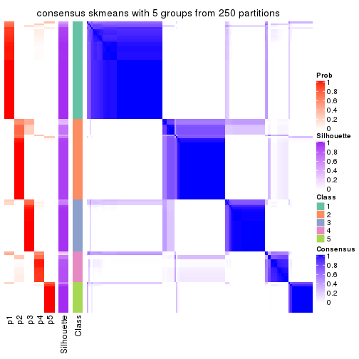
consensus_heatmap(res, k = 6)
Heatmaps for the membership of samples in all partitions to see how consistent they are:
membership_heatmap(res, k = 2)
membership_heatmap(res, k = 3)
membership_heatmap(res, k = 4)
membership_heatmap(res, k = 5)
membership_heatmap(res, k = 6)
As soon as we have had the classes for columns, we can look for signatures
which are significantly different between classes which can be candidate marks
for certain classes. Following are the heatmaps for signatures.
Signature heatmaps where rows are scaled:
get_signatures(res, k = 2)
get_signatures(res, k = 3)
get_signatures(res, k = 4)
get_signatures(res, k = 5)
get_signatures(res, k = 6)

Signature heatmaps where rows are not scaled:
get_signatures(res, k = 2, scale_rows = FALSE)
get_signatures(res, k = 3, scale_rows = FALSE)
get_signatures(res, k = 4, scale_rows = FALSE)
get_signatures(res, k = 5, scale_rows = FALSE)
get_signatures(res, k = 6, scale_rows = FALSE)
Compare the overlap of signatures from different k:
compare_signatures(res)
get_signature() returns a data frame invisibly. TO get the list of signatures, the function
call should be assigned to a variable explicitly. In following code, if plot argument is set
to FALSE, no heatmap is plotted while only the differential analysis is performed.
# code only for demonstration
tb = get_signature(res, k = ..., plot = FALSE)
An example of the output of tb is:
#> which_row fdr mean_1 mean_2 scaled_mean_1 scaled_mean_2 km
#> 1 38 0.042760348 8.373488 9.131774 -0.5533452 0.5164555 1
#> 2 40 0.018707592 7.106213 8.469186 -0.6173731 0.5762149 1
#> 3 55 0.019134737 10.221463 11.207825 -0.6159697 0.5749050 1
#> 4 59 0.006059896 5.921854 7.869574 -0.6899429 0.6439467 1
#> 5 60 0.018055526 8.928898 10.211722 -0.6204761 0.5791110 1
#> 6 98 0.009384629 15.714769 14.887706 0.6635654 -0.6193277 2
...
The columns in tb are:
which_row: row indices corresponding to the input matrix.fdr: FDR for the differential test. mean_x: The mean value in group x.scaled_mean_x: The mean value in group x after rows are scaled.km: Row groups if k-means clustering is applied to rows.
UMAP plot which shows how samples are separated.
dimension_reduction(res, k = 2, method = "UMAP")
dimension_reduction(res, k = 3, method = "UMAP")
dimension_reduction(res, k = 4, method = "UMAP")
dimension_reduction(res, k = 5, method = "UMAP")
dimension_reduction(res, k = 6, method = "UMAP")
Following heatmap shows how subgroups are split when increasing k:
collect_classes(res)
If matrix rows can be associated to genes, consider to use functional_enrichment(res,
...) to perform function enrichment for the signature genes. See this vignette for more detailed explanations.
ATC:pam**
The object with results only for a single top-value method and a single partition method
can be extracted as:
res = res_list["ATC", "pam"]
# you can also extract it by
# res = res_list["ATC:pam"]
A summary of res and all the functions that can be applied to it:
res
#> A 'ConsensusPartition' object with k = 2, 3, 4, 5, 6.
#> On a matrix with 15148 rows and 152 columns.
#> Top rows (1000, 2000, 3000, 4000, 5000) are extracted by 'ATC' method.
#> Subgroups are detected by 'pam' method.
#> Performed in total 1250 partitions by row resampling.
#> Best k for subgroups seems to be 3.
#>
#> Following methods can be applied to this 'ConsensusPartition' object:
#> [1] "cola_report" "collect_classes" "collect_plots"
#> [4] "collect_stats" "colnames" "compare_signatures"
#> [7] "consensus_heatmap" "dimension_reduction" "functional_enrichment"
#> [10] "get_anno_col" "get_anno" "get_classes"
#> [13] "get_consensus" "get_matrix" "get_membership"
#> [16] "get_param" "get_signatures" "get_stats"
#> [19] "is_best_k" "is_stable_k" "membership_heatmap"
#> [22] "ncol" "nrow" "plot_ecdf"
#> [25] "rownames" "select_partition_number" "show"
#> [28] "suggest_best_k" "test_to_known_factors"
collect_plots() function collects all the plots made from res for all k (number of partitions)
into one single page to provide an easy and fast comparison between different k.
collect_plots(res)
The plots are:
- The first row: a plot of the ECDF (empirical cumulative distribution
function) curves of the consensus matrix for each
k and the heatmap of
predicted classes for each k.
- The second row: heatmaps of the consensus matrix for each
k.
- The third row: heatmaps of the membership matrix for each
k.
- The fouth row: heatmaps of the signatures for each
k.
All the plots in panels can be made by individual functions and they are
plotted later in this section.
select_partition_number() produces several plots showing different
statistics for choosing “optimized” k. There are following statistics:
- ECDF curves of the consensus matrix for each
k;
- 1-PAC. The PAC
score
measures the proportion of the ambiguous subgrouping.
- Mean silhouette score.
- Concordance. The mean probability of fiting the consensus class ids in all
partitions.
- Area increased. Denote \(A_k\) as the area under the ECDF curve for current
k, the area increased is defined as \(A_k - A_{k-1}\).
- Rand index. The percent of pairs of samples that are both in a same cluster
or both are not in a same cluster in the partition of k and k-1.
- Jaccard index. The ratio of pairs of samples are both in a same cluster in
the partition of k and k-1 and the pairs of samples are both in a same
cluster in the partition k or k-1.
The detailed explanations of these statistics can be found in the cola
vignette.
Generally speaking, lower PAC score, higher mean silhouette score or higher
concordance corresponds to better partition. Rand index and Jaccard index
measure how similar the current partition is compared to partition with k-1.
If they are too similar, we won't accept k is better than k-1.
select_partition_number(res)
The numeric values for all these statistics can be obtained by get_stats().
get_stats(res)
#> k 1-PAC mean_silhouette concordance area_increased Rand Jaccard
#> 2 2 1.000 0.982 0.993 0.4303 0.575 0.575
#> 3 3 0.958 0.942 0.968 0.4589 0.665 0.481
#> 4 4 0.873 0.881 0.947 0.1904 0.851 0.618
#> 5 5 0.768 0.672 0.838 0.0444 0.979 0.917
#> 6 6 0.797 0.748 0.863 0.0374 0.930 0.726
suggest_best_k() suggests the best \(k\) based on these statistics. The rules are as follows:
- All \(k\) with Jaccard index larger than 0.95 are removed because increasing
\(k\) does not provide enough extra information. If all \(k\) are removed, it is
marked as no subgroup is detected.
- For all \(k\) with 1-PAC score larger than 0.9, the maximal \(k\) is taken as
the best \(k\), and other \(k\) are marked as optional \(k\).
- If it does not fit the second rule. The \(k\) with the maximal vote of the
highest 1-PAC score, highest mean silhouette, and highest concordance is
taken as the best \(k\).
suggest_best_k(res)
#> [1] 3
#> attr(,"optional")
#> [1] 2
There is also optional best \(k\) = 2 that is worth to check.
Following shows the table of the partitions (You need to click the show/hide
code output link to see it). The membership matrix (columns with name p*)
is inferred by
clue::cl_consensus()
function with the SE method. Basically the value in the membership matrix
represents the probability to belong to a certain group. The finall class
label for an item is determined with the group with highest probability it
belongs to.
In get_classes() function, the entropy is calculated from the membership
matrix and the silhouette score is calculated from the consensus matrix.
show/hide code output
cbind(get_classes(res, k = 2), get_membership(res, k = 2))
#> class entropy silhouette p1 p2
#> SRR1947547 1 0.000 0.998 1.000 0.000
#> SRR1947546 2 0.000 0.990 0.000 1.000
#> SRR1947545 1 0.000 0.998 1.000 0.000
#> SRR1947544 1 0.000 0.998 1.000 0.000
#> SRR1947542 2 0.000 0.990 0.000 1.000
#> SRR1947541 1 0.000 0.998 1.000 0.000
#> SRR1947540 2 0.000 0.990 0.000 1.000
#> SRR1947539 2 0.000 0.990 0.000 1.000
#> SRR1947538 2 0.000 0.990 0.000 1.000
#> SRR1947537 2 0.000 0.990 0.000 1.000
#> SRR1947536 1 0.000 0.998 1.000 0.000
#> SRR1947535 2 0.000 0.990 0.000 1.000
#> SRR1947534 1 0.000 0.998 1.000 0.000
#> SRR1947533 2 0.000 0.990 0.000 1.000
#> SRR1947532 2 0.000 0.990 0.000 1.000
#> SRR1947531 2 0.000 0.990 0.000 1.000
#> SRR1947530 1 0.000 0.998 1.000 0.000
#> SRR1947529 2 0.000 0.990 0.000 1.000
#> SRR1947528 1 0.000 0.998 1.000 0.000
#> SRR1947527 2 0.000 0.990 0.000 1.000
#> SRR1947526 2 0.000 0.990 0.000 1.000
#> SRR1947525 2 0.000 0.990 0.000 1.000
#> SRR1947524 2 0.000 0.990 0.000 1.000
#> SRR1947523 2 0.000 0.990 0.000 1.000
#> SRR1947521 1 0.430 0.902 0.912 0.088
#> SRR1947520 2 0.000 0.990 0.000 1.000
#> SRR1947519 2 0.000 0.990 0.000 1.000
#> SRR1947518 2 0.000 0.990 0.000 1.000
#> SRR1947517 1 0.000 0.998 1.000 0.000
#> SRR1947516 2 0.000 0.990 0.000 1.000
#> SRR1947515 2 0.000 0.990 0.000 1.000
#> SRR1947514 2 0.000 0.990 0.000 1.000
#> SRR1947513 1 0.000 0.998 1.000 0.000
#> SRR1947512 1 0.000 0.998 1.000 0.000
#> SRR1947511 2 0.000 0.990 0.000 1.000
#> SRR1947510 2 0.000 0.990 0.000 1.000
#> SRR1947572 2 0.000 0.990 0.000 1.000
#> SRR1947611 2 0.000 0.990 0.000 1.000
#> SRR1947509 1 0.000 0.998 1.000 0.000
#> SRR1947644 2 0.000 0.990 0.000 1.000
#> SRR1947643 2 0.000 0.990 0.000 1.000
#> SRR1947642 2 0.000 0.990 0.000 1.000
#> SRR1947640 2 0.000 0.990 0.000 1.000
#> SRR1947641 2 0.000 0.990 0.000 1.000
#> SRR1947639 2 0.000 0.990 0.000 1.000
#> SRR1947638 1 0.000 0.998 1.000 0.000
#> SRR1947637 2 0.000 0.990 0.000 1.000
#> SRR1947636 2 0.000 0.990 0.000 1.000
#> SRR1947635 2 0.000 0.990 0.000 1.000
#> SRR1947634 2 0.000 0.990 0.000 1.000
#> SRR1947633 2 0.000 0.990 0.000 1.000
#> SRR1947632 2 0.000 0.990 0.000 1.000
#> SRR1947631 2 0.000 0.990 0.000 1.000
#> SRR1947629 2 0.000 0.990 0.000 1.000
#> SRR1947630 2 0.000 0.990 0.000 1.000
#> SRR1947627 1 0.000 0.998 1.000 0.000
#> SRR1947628 2 0.000 0.990 0.000 1.000
#> SRR1947626 2 0.000 0.990 0.000 1.000
#> SRR1947625 2 0.000 0.990 0.000 1.000
#> SRR1947624 2 0.000 0.990 0.000 1.000
#> SRR1947623 2 0.881 0.575 0.300 0.700
#> SRR1947622 2 0.000 0.990 0.000 1.000
#> SRR1947621 2 0.000 0.990 0.000 1.000
#> SRR1947620 1 0.000 0.998 1.000 0.000
#> SRR1947619 2 0.000 0.990 0.000 1.000
#> SRR1947617 2 0.000 0.990 0.000 1.000
#> SRR1947618 1 0.000 0.998 1.000 0.000
#> SRR1947616 2 0.000 0.990 0.000 1.000
#> SRR1947615 2 0.000 0.990 0.000 1.000
#> SRR1947614 1 0.000 0.998 1.000 0.000
#> SRR1947613 1 0.000 0.998 1.000 0.000
#> SRR1947610 2 0.000 0.990 0.000 1.000
#> SRR1947612 2 0.000 0.990 0.000 1.000
#> SRR1947609 1 0.000 0.998 1.000 0.000
#> SRR1947608 2 0.000 0.990 0.000 1.000
#> SRR1947606 1 0.000 0.998 1.000 0.000
#> SRR1947607 1 0.000 0.998 1.000 0.000
#> SRR1947604 2 0.000 0.990 0.000 1.000
#> SRR1947605 1 0.000 0.998 1.000 0.000
#> SRR1947603 2 0.000 0.990 0.000 1.000
#> SRR1947602 1 0.000 0.998 1.000 0.000
#> SRR1947600 2 0.000 0.990 0.000 1.000
#> SRR1947601 2 0.000 0.990 0.000 1.000
#> SRR1947598 2 0.000 0.990 0.000 1.000
#> SRR1947599 1 0.000 0.998 1.000 0.000
#> SRR1947597 2 0.000 0.990 0.000 1.000
#> SRR1947596 2 0.000 0.990 0.000 1.000
#> SRR1947595 2 0.000 0.990 0.000 1.000
#> SRR1947594 1 0.000 0.998 1.000 0.000
#> SRR1947592 2 0.000 0.990 0.000 1.000
#> SRR1947591 2 0.000 0.990 0.000 1.000
#> SRR1947590 2 0.000 0.990 0.000 1.000
#> SRR1947588 1 0.000 0.998 1.000 0.000
#> SRR1947587 2 0.000 0.990 0.000 1.000
#> SRR1947586 2 0.000 0.990 0.000 1.000
#> SRR1947585 2 0.000 0.990 0.000 1.000
#> SRR1947584 1 0.000 0.998 1.000 0.000
#> SRR1947583 2 0.000 0.990 0.000 1.000
#> SRR1947582 1 0.000 0.998 1.000 0.000
#> SRR1947580 2 0.000 0.990 0.000 1.000
#> SRR1947581 1 0.000 0.998 1.000 0.000
#> SRR1947576 2 0.000 0.990 0.000 1.000
#> SRR1947575 2 0.000 0.990 0.000 1.000
#> SRR1947579 2 0.900 0.539 0.316 0.684
#> SRR1947578 2 0.000 0.990 0.000 1.000
#> SRR1947573 2 0.000 0.990 0.000 1.000
#> SRR1947574 1 0.000 0.998 1.000 0.000
#> SRR1947571 2 0.000 0.990 0.000 1.000
#> SRR1947577 1 0.000 0.998 1.000 0.000
#> SRR1947570 1 0.000 0.998 1.000 0.000
#> SRR1947569 2 0.000 0.990 0.000 1.000
#> SRR1947566 2 0.000 0.990 0.000 1.000
#> SRR1947567 2 0.000 0.990 0.000 1.000
#> SRR1947568 2 0.000 0.990 0.000 1.000
#> SRR1947564 2 0.000 0.990 0.000 1.000
#> SRR1947563 2 0.000 0.990 0.000 1.000
#> SRR1947562 2 0.000 0.990 0.000 1.000
#> SRR1947565 2 0.000 0.990 0.000 1.000
#> SRR1947559 2 0.000 0.990 0.000 1.000
#> SRR1947560 2 0.000 0.990 0.000 1.000
#> SRR1947561 2 0.000 0.990 0.000 1.000
#> SRR1947557 1 0.000 0.998 1.000 0.000
#> SRR1947558 2 0.000 0.990 0.000 1.000
#> SRR1947556 2 0.980 0.296 0.416 0.584
#> SRR1947553 2 0.000 0.990 0.000 1.000
#> SRR1947554 1 0.000 0.998 1.000 0.000
#> SRR1947555 2 0.000 0.990 0.000 1.000
#> SRR1947550 2 0.000 0.990 0.000 1.000
#> SRR1947552 2 0.000 0.990 0.000 1.000
#> SRR1947549 2 0.000 0.990 0.000 1.000
#> SRR1947551 2 0.000 0.990 0.000 1.000
#> SRR1947548 2 0.000 0.990 0.000 1.000
#> SRR1947506 1 0.000 0.998 1.000 0.000
#> SRR1947507 1 0.000 0.998 1.000 0.000
#> SRR1947504 2 0.000 0.990 0.000 1.000
#> SRR1947503 1 0.000 0.998 1.000 0.000
#> SRR1947502 2 0.000 0.990 0.000 1.000
#> SRR1947501 2 0.000 0.990 0.000 1.000
#> SRR1947499 1 0.000 0.998 1.000 0.000
#> SRR1947498 2 0.000 0.990 0.000 1.000
#> SRR1947508 1 0.000 0.998 1.000 0.000
#> SRR1947505 2 0.000 0.990 0.000 1.000
#> SRR1947497 2 0.000 0.990 0.000 1.000
#> SRR1947496 1 0.000 0.998 1.000 0.000
#> SRR1947495 2 0.000 0.990 0.000 1.000
#> SRR1947494 2 0.000 0.990 0.000 1.000
#> SRR1947493 1 0.000 0.998 1.000 0.000
#> SRR1947492 1 0.000 0.998 1.000 0.000
#> SRR1947500 2 0.000 0.990 0.000 1.000
#> SRR1947491 1 0.000 0.998 1.000 0.000
#> SRR1947490 1 0.000 0.998 1.000 0.000
#> SRR1947489 1 0.000 0.998 1.000 0.000
show/hide code output
cbind(get_classes(res, k = 3), get_membership(res, k = 3))
#> class entropy silhouette p1 p2 p3
#> SRR1947547 1 0.0000 0.994 1.000 0.000 0.000
#> SRR1947546 2 0.0000 0.975 0.000 1.000 0.000
#> SRR1947545 1 0.0000 0.994 1.000 0.000 0.000
#> SRR1947544 1 0.0000 0.994 1.000 0.000 0.000
#> SRR1947542 2 0.0000 0.975 0.000 1.000 0.000
#> SRR1947541 3 0.0000 0.949 0.000 0.000 1.000
#> SRR1947540 3 0.1411 0.954 0.000 0.036 0.964
#> SRR1947539 3 0.0000 0.949 0.000 0.000 1.000
#> SRR1947538 3 0.1411 0.954 0.000 0.036 0.964
#> SRR1947537 3 0.6140 0.287 0.000 0.404 0.596
#> SRR1947536 1 0.0000 0.994 1.000 0.000 0.000
#> SRR1947535 3 0.0000 0.949 0.000 0.000 1.000
#> SRR1947534 1 0.0000 0.994 1.000 0.000 0.000
#> SRR1947533 3 0.1411 0.954 0.000 0.036 0.964
#> SRR1947532 3 0.1411 0.954 0.000 0.036 0.964
#> SRR1947531 3 0.1411 0.954 0.000 0.036 0.964
#> SRR1947530 1 0.0000 0.994 1.000 0.000 0.000
#> SRR1947529 3 0.5216 0.692 0.000 0.260 0.740
#> SRR1947528 3 0.4974 0.675 0.236 0.000 0.764
#> SRR1947527 3 0.1411 0.954 0.000 0.036 0.964
#> SRR1947526 2 0.0000 0.975 0.000 1.000 0.000
#> SRR1947525 2 0.0000 0.975 0.000 1.000 0.000
#> SRR1947524 3 0.0000 0.949 0.000 0.000 1.000
#> SRR1947523 3 0.1411 0.954 0.000 0.036 0.964
#> SRR1947521 3 0.0000 0.949 0.000 0.000 1.000
#> SRR1947520 3 0.1411 0.954 0.000 0.036 0.964
#> SRR1947519 3 0.0000 0.949 0.000 0.000 1.000
#> SRR1947518 3 0.1411 0.954 0.000 0.036 0.964
#> SRR1947517 3 0.6095 0.339 0.392 0.000 0.608
#> SRR1947516 2 0.0000 0.975 0.000 1.000 0.000
#> SRR1947515 3 0.1411 0.954 0.000 0.036 0.964
#> SRR1947514 2 0.0000 0.975 0.000 1.000 0.000
#> SRR1947513 1 0.0000 0.994 1.000 0.000 0.000
#> SRR1947512 1 0.0000 0.994 1.000 0.000 0.000
#> SRR1947511 3 0.1411 0.954 0.000 0.036 0.964
#> SRR1947510 3 0.0000 0.949 0.000 0.000 1.000
#> SRR1947572 3 0.1411 0.954 0.000 0.036 0.964
#> SRR1947611 3 0.4605 0.729 0.000 0.204 0.796
#> SRR1947509 1 0.0000 0.994 1.000 0.000 0.000
#> SRR1947644 3 0.0000 0.949 0.000 0.000 1.000
#> SRR1947643 3 0.1411 0.954 0.000 0.036 0.964
#> SRR1947642 3 0.0000 0.949 0.000 0.000 1.000
#> SRR1947640 3 0.1411 0.954 0.000 0.036 0.964
#> SRR1947641 3 0.0000 0.949 0.000 0.000 1.000
#> SRR1947639 2 0.0000 0.975 0.000 1.000 0.000
#> SRR1947638 1 0.0000 0.994 1.000 0.000 0.000
#> SRR1947637 2 0.1411 0.951 0.000 0.964 0.036
#> SRR1947636 3 0.0000 0.949 0.000 0.000 1.000
#> SRR1947635 3 0.1411 0.954 0.000 0.036 0.964
#> SRR1947634 3 0.1411 0.954 0.000 0.036 0.964
#> SRR1947633 3 0.0000 0.949 0.000 0.000 1.000
#> SRR1947632 2 0.0000 0.975 0.000 1.000 0.000
#> SRR1947631 3 0.0000 0.949 0.000 0.000 1.000
#> SRR1947629 2 0.4062 0.827 0.000 0.836 0.164
#> SRR1947630 3 0.1411 0.954 0.000 0.036 0.964
#> SRR1947627 1 0.0000 0.994 1.000 0.000 0.000
#> SRR1947628 2 0.0000 0.975 0.000 1.000 0.000
#> SRR1947626 2 0.0000 0.975 0.000 1.000 0.000
#> SRR1947625 3 0.0747 0.943 0.000 0.016 0.984
#> SRR1947624 2 0.0000 0.975 0.000 1.000 0.000
#> SRR1947623 3 0.1585 0.945 0.028 0.008 0.964
#> SRR1947622 2 0.0000 0.975 0.000 1.000 0.000
#> SRR1947621 2 0.0000 0.975 0.000 1.000 0.000
#> SRR1947620 1 0.0000 0.994 1.000 0.000 0.000
#> SRR1947619 2 0.1411 0.951 0.000 0.964 0.036
#> SRR1947617 2 0.0000 0.975 0.000 1.000 0.000
#> SRR1947618 1 0.0000 0.994 1.000 0.000 0.000
#> SRR1947616 2 0.0000 0.975 0.000 1.000 0.000
#> SRR1947615 3 0.0000 0.949 0.000 0.000 1.000
#> SRR1947614 3 0.0000 0.949 0.000 0.000 1.000
#> SRR1947613 1 0.0000 0.994 1.000 0.000 0.000
#> SRR1947610 3 0.1411 0.954 0.000 0.036 0.964
#> SRR1947612 2 0.0000 0.975 0.000 1.000 0.000
#> SRR1947609 3 0.1411 0.940 0.036 0.000 0.964
#> SRR1947608 2 0.1411 0.951 0.000 0.964 0.036
#> SRR1947606 3 0.0000 0.949 0.000 0.000 1.000
#> SRR1947607 1 0.0000 0.994 1.000 0.000 0.000
#> SRR1947604 3 0.1411 0.954 0.000 0.036 0.964
#> SRR1947605 1 0.0000 0.994 1.000 0.000 0.000
#> SRR1947603 2 0.0000 0.975 0.000 1.000 0.000
#> SRR1947602 1 0.0000 0.994 1.000 0.000 0.000
#> SRR1947600 3 0.0000 0.949 0.000 0.000 1.000
#> SRR1947601 2 0.0000 0.975 0.000 1.000 0.000
#> SRR1947598 3 0.1411 0.954 0.000 0.036 0.964
#> SRR1947599 3 0.1411 0.940 0.036 0.000 0.964
#> SRR1947597 2 0.0000 0.975 0.000 1.000 0.000
#> SRR1947596 3 0.1411 0.954 0.000 0.036 0.964
#> SRR1947595 3 0.1411 0.954 0.000 0.036 0.964
#> SRR1947594 1 0.0000 0.994 1.000 0.000 0.000
#> SRR1947592 3 0.0000 0.949 0.000 0.000 1.000
#> SRR1947591 2 0.0000 0.975 0.000 1.000 0.000
#> SRR1947590 3 0.1411 0.954 0.000 0.036 0.964
#> SRR1947588 1 0.0000 0.994 1.000 0.000 0.000
#> SRR1947587 3 0.0000 0.949 0.000 0.000 1.000
#> SRR1947586 3 0.1411 0.954 0.000 0.036 0.964
#> SRR1947585 3 0.0000 0.949 0.000 0.000 1.000
#> SRR1947584 1 0.0000 0.994 1.000 0.000 0.000
#> SRR1947583 3 0.1411 0.954 0.000 0.036 0.964
#> SRR1947582 1 0.0000 0.994 1.000 0.000 0.000
#> SRR1947580 3 0.1411 0.954 0.000 0.036 0.964
#> SRR1947581 1 0.0000 0.994 1.000 0.000 0.000
#> SRR1947576 2 0.1411 0.951 0.000 0.964 0.036
#> SRR1947575 2 0.1411 0.951 0.000 0.964 0.036
#> SRR1947579 3 0.0000 0.949 0.000 0.000 1.000
#> SRR1947578 3 0.4291 0.812 0.000 0.180 0.820
#> SRR1947573 2 0.1411 0.951 0.000 0.964 0.036
#> SRR1947574 3 0.1411 0.940 0.036 0.000 0.964
#> SRR1947571 3 0.1411 0.954 0.000 0.036 0.964
#> SRR1947577 1 0.0000 0.994 1.000 0.000 0.000
#> SRR1947570 1 0.0000 0.994 1.000 0.000 0.000
#> SRR1947569 2 0.4504 0.788 0.000 0.804 0.196
#> SRR1947566 2 0.0000 0.975 0.000 1.000 0.000
#> SRR1947567 3 0.1411 0.954 0.000 0.036 0.964
#> SRR1947568 2 0.0000 0.975 0.000 1.000 0.000
#> SRR1947564 2 0.0000 0.975 0.000 1.000 0.000
#> SRR1947563 2 0.1411 0.951 0.000 0.964 0.036
#> SRR1947562 2 0.0000 0.975 0.000 1.000 0.000
#> SRR1947565 3 0.0000 0.949 0.000 0.000 1.000
#> SRR1947559 2 0.0000 0.975 0.000 1.000 0.000
#> SRR1947560 3 0.1643 0.922 0.000 0.044 0.956
#> SRR1947561 2 0.0000 0.975 0.000 1.000 0.000
#> SRR1947557 1 0.0000 0.994 1.000 0.000 0.000
#> SRR1947558 3 0.0000 0.949 0.000 0.000 1.000
#> SRR1947556 3 0.1411 0.954 0.000 0.036 0.964
#> SRR1947553 3 0.1411 0.954 0.000 0.036 0.964
#> SRR1947554 1 0.3816 0.805 0.852 0.000 0.148
#> SRR1947555 2 0.0000 0.975 0.000 1.000 0.000
#> SRR1947550 3 0.1411 0.954 0.000 0.036 0.964
#> SRR1947552 3 0.1411 0.954 0.000 0.036 0.964
#> SRR1947549 2 0.1411 0.951 0.000 0.964 0.036
#> SRR1947551 2 0.4702 0.767 0.000 0.788 0.212
#> SRR1947548 3 0.3879 0.847 0.000 0.152 0.848
#> SRR1947506 1 0.0000 0.994 1.000 0.000 0.000
#> SRR1947507 1 0.0000 0.994 1.000 0.000 0.000
#> SRR1947504 3 0.1411 0.954 0.000 0.036 0.964
#> SRR1947503 3 0.6215 0.283 0.428 0.000 0.572
#> SRR1947502 2 0.0000 0.975 0.000 1.000 0.000
#> SRR1947501 2 0.0000 0.975 0.000 1.000 0.000
#> SRR1947499 1 0.0000 0.994 1.000 0.000 0.000
#> SRR1947498 3 0.0000 0.949 0.000 0.000 1.000
#> SRR1947508 1 0.0000 0.994 1.000 0.000 0.000
#> SRR1947505 3 0.1411 0.954 0.000 0.036 0.964
#> SRR1947497 3 0.1411 0.954 0.000 0.036 0.964
#> SRR1947496 1 0.0000 0.994 1.000 0.000 0.000
#> SRR1947495 3 0.1411 0.954 0.000 0.036 0.964
#> SRR1947494 3 0.1411 0.954 0.000 0.036 0.964
#> SRR1947493 1 0.0000 0.994 1.000 0.000 0.000
#> SRR1947492 1 0.0000 0.994 1.000 0.000 0.000
#> SRR1947500 3 0.1411 0.954 0.000 0.036 0.964
#> SRR1947491 3 0.1411 0.940 0.036 0.000 0.964
#> SRR1947490 1 0.0000 0.994 1.000 0.000 0.000
#> SRR1947489 3 0.0000 0.949 0.000 0.000 1.000
show/hide code output
cbind(get_classes(res, k = 4), get_membership(res, k = 4))
#> class entropy silhouette p1 p2 p3 p4
#> SRR1947547 1 0.0336 0.980 0.992 0.000 0.000 0.008
#> SRR1947546 2 0.0000 0.968 0.000 1.000 0.000 0.000
#> SRR1947545 1 0.0000 0.986 1.000 0.000 0.000 0.000
#> SRR1947544 1 0.1474 0.937 0.948 0.000 0.000 0.052
#> SRR1947542 2 0.0000 0.968 0.000 1.000 0.000 0.000
#> SRR1947541 3 0.4830 0.434 0.000 0.000 0.608 0.392
#> SRR1947540 4 0.2345 0.855 0.000 0.000 0.100 0.900
#> SRR1947539 3 0.0000 0.909 0.000 0.000 1.000 0.000
#> SRR1947538 4 0.2345 0.855 0.000 0.000 0.100 0.900
#> SRR1947537 3 0.0000 0.909 0.000 0.000 1.000 0.000
#> SRR1947536 1 0.0000 0.986 1.000 0.000 0.000 0.000
#> SRR1947535 3 0.0000 0.909 0.000 0.000 1.000 0.000
#> SRR1947534 1 0.0000 0.986 1.000 0.000 0.000 0.000
#> SRR1947533 4 0.2011 0.857 0.000 0.080 0.000 0.920
#> SRR1947532 4 0.0188 0.910 0.000 0.000 0.004 0.996
#> SRR1947531 4 0.0000 0.911 0.000 0.000 0.000 1.000
#> SRR1947530 1 0.0000 0.986 1.000 0.000 0.000 0.000
#> SRR1947529 4 0.3907 0.689 0.000 0.232 0.000 0.768
#> SRR1947528 4 0.6025 0.515 0.096 0.000 0.236 0.668
#> SRR1947527 4 0.0000 0.911 0.000 0.000 0.000 1.000
#> SRR1947526 2 0.0000 0.968 0.000 1.000 0.000 0.000
#> SRR1947525 2 0.0000 0.968 0.000 1.000 0.000 0.000
#> SRR1947524 3 0.0000 0.909 0.000 0.000 1.000 0.000
#> SRR1947523 4 0.0000 0.911 0.000 0.000 0.000 1.000
#> SRR1947521 3 0.4585 0.552 0.000 0.000 0.668 0.332
#> SRR1947520 4 0.0000 0.911 0.000 0.000 0.000 1.000
#> SRR1947519 3 0.4304 0.634 0.000 0.000 0.716 0.284
#> SRR1947518 4 0.2149 0.864 0.000 0.000 0.088 0.912
#> SRR1947517 3 0.7494 0.287 0.188 0.000 0.460 0.352
#> SRR1947516 2 0.0000 0.968 0.000 1.000 0.000 0.000
#> SRR1947515 4 0.4585 0.541 0.000 0.000 0.332 0.668
#> SRR1947514 2 0.0000 0.968 0.000 1.000 0.000 0.000
#> SRR1947513 1 0.0000 0.986 1.000 0.000 0.000 0.000
#> SRR1947512 1 0.0000 0.986 1.000 0.000 0.000 0.000
#> SRR1947511 4 0.0000 0.911 0.000 0.000 0.000 1.000
#> SRR1947510 3 0.0000 0.909 0.000 0.000 1.000 0.000
#> SRR1947572 4 0.0188 0.910 0.000 0.000 0.004 0.996
#> SRR1947611 3 0.0000 0.909 0.000 0.000 1.000 0.000
#> SRR1947509 1 0.0000 0.986 1.000 0.000 0.000 0.000
#> SRR1947644 3 0.0000 0.909 0.000 0.000 1.000 0.000
#> SRR1947643 4 0.0000 0.911 0.000 0.000 0.000 1.000
#> SRR1947642 3 0.3528 0.752 0.000 0.000 0.808 0.192
#> SRR1947640 4 0.0000 0.911 0.000 0.000 0.000 1.000
#> SRR1947641 3 0.0000 0.909 0.000 0.000 1.000 0.000
#> SRR1947639 2 0.0000 0.968 0.000 1.000 0.000 0.000
#> SRR1947638 1 0.0000 0.986 1.000 0.000 0.000 0.000
#> SRR1947637 2 0.1557 0.919 0.000 0.944 0.056 0.000
#> SRR1947636 3 0.0000 0.909 0.000 0.000 1.000 0.000
#> SRR1947635 4 0.0000 0.911 0.000 0.000 0.000 1.000
#> SRR1947634 4 0.0000 0.911 0.000 0.000 0.000 1.000
#> SRR1947633 3 0.0000 0.909 0.000 0.000 1.000 0.000
#> SRR1947632 2 0.0000 0.968 0.000 1.000 0.000 0.000
#> SRR1947631 3 0.2814 0.801 0.000 0.000 0.868 0.132
#> SRR1947629 3 0.0000 0.909 0.000 0.000 1.000 0.000
#> SRR1947630 4 0.0000 0.911 0.000 0.000 0.000 1.000
#> SRR1947627 1 0.2081 0.902 0.916 0.000 0.000 0.084
#> SRR1947628 2 0.0000 0.968 0.000 1.000 0.000 0.000
#> SRR1947626 2 0.0000 0.968 0.000 1.000 0.000 0.000
#> SRR1947625 3 0.0000 0.909 0.000 0.000 1.000 0.000
#> SRR1947624 2 0.0000 0.968 0.000 1.000 0.000 0.000
#> SRR1947623 4 0.0000 0.911 0.000 0.000 0.000 1.000
#> SRR1947622 2 0.0000 0.968 0.000 1.000 0.000 0.000
#> SRR1947621 2 0.0000 0.968 0.000 1.000 0.000 0.000
#> SRR1947620 1 0.0000 0.986 1.000 0.000 0.000 0.000
#> SRR1947619 3 0.0000 0.909 0.000 0.000 1.000 0.000
#> SRR1947617 2 0.0000 0.968 0.000 1.000 0.000 0.000
#> SRR1947618 1 0.0000 0.986 1.000 0.000 0.000 0.000
#> SRR1947616 2 0.0000 0.968 0.000 1.000 0.000 0.000
#> SRR1947615 3 0.2814 0.801 0.000 0.000 0.868 0.132
#> SRR1947614 3 0.4624 0.537 0.000 0.000 0.660 0.340
#> SRR1947613 1 0.0000 0.986 1.000 0.000 0.000 0.000
#> SRR1947610 4 0.1474 0.887 0.000 0.000 0.052 0.948
#> SRR1947612 2 0.0000 0.968 0.000 1.000 0.000 0.000
#> SRR1947609 4 0.0000 0.911 0.000 0.000 0.000 1.000
#> SRR1947608 3 0.4277 0.568 0.000 0.280 0.720 0.000
#> SRR1947606 4 0.4855 0.242 0.000 0.000 0.400 0.600
#> SRR1947607 1 0.0000 0.986 1.000 0.000 0.000 0.000
#> SRR1947604 4 0.0000 0.911 0.000 0.000 0.000 1.000
#> SRR1947605 1 0.0000 0.986 1.000 0.000 0.000 0.000
#> SRR1947603 2 0.0000 0.968 0.000 1.000 0.000 0.000
#> SRR1947602 1 0.0000 0.986 1.000 0.000 0.000 0.000
#> SRR1947600 3 0.0000 0.909 0.000 0.000 1.000 0.000
#> SRR1947601 2 0.0000 0.968 0.000 1.000 0.000 0.000
#> SRR1947598 4 0.3219 0.793 0.000 0.000 0.164 0.836
#> SRR1947599 4 0.0000 0.911 0.000 0.000 0.000 1.000
#> SRR1947597 2 0.0000 0.968 0.000 1.000 0.000 0.000
#> SRR1947596 4 0.1211 0.894 0.000 0.000 0.040 0.960
#> SRR1947595 4 0.0000 0.911 0.000 0.000 0.000 1.000
#> SRR1947594 1 0.0000 0.986 1.000 0.000 0.000 0.000
#> SRR1947592 3 0.0000 0.909 0.000 0.000 1.000 0.000
#> SRR1947591 2 0.0000 0.968 0.000 1.000 0.000 0.000
#> SRR1947590 4 0.4585 0.541 0.000 0.000 0.332 0.668
#> SRR1947588 1 0.0000 0.986 1.000 0.000 0.000 0.000
#> SRR1947587 3 0.0000 0.909 0.000 0.000 1.000 0.000
#> SRR1947586 4 0.0000 0.911 0.000 0.000 0.000 1.000
#> SRR1947585 3 0.0000 0.909 0.000 0.000 1.000 0.000
#> SRR1947584 1 0.0000 0.986 1.000 0.000 0.000 0.000
#> SRR1947583 4 0.0000 0.911 0.000 0.000 0.000 1.000
#> SRR1947582 1 0.0000 0.986 1.000 0.000 0.000 0.000
#> SRR1947580 4 0.0000 0.911 0.000 0.000 0.000 1.000
#> SRR1947581 1 0.0000 0.986 1.000 0.000 0.000 0.000
#> SRR1947576 2 0.4761 0.409 0.000 0.628 0.372 0.000
#> SRR1947575 2 0.0000 0.968 0.000 1.000 0.000 0.000
#> SRR1947579 3 0.2530 0.831 0.000 0.000 0.888 0.112
#> SRR1947578 4 0.4440 0.775 0.000 0.060 0.136 0.804
#> SRR1947573 2 0.4830 0.357 0.000 0.608 0.392 0.000
#> SRR1947574 4 0.0000 0.911 0.000 0.000 0.000 1.000
#> SRR1947571 4 0.2345 0.855 0.000 0.000 0.100 0.900
#> SRR1947577 1 0.0000 0.986 1.000 0.000 0.000 0.000
#> SRR1947570 1 0.0188 0.983 0.996 0.000 0.000 0.004
#> SRR1947569 3 0.0000 0.909 0.000 0.000 1.000 0.000
#> SRR1947566 2 0.0000 0.968 0.000 1.000 0.000 0.000
#> SRR1947567 4 0.2345 0.855 0.000 0.000 0.100 0.900
#> SRR1947568 2 0.0000 0.968 0.000 1.000 0.000 0.000
#> SRR1947564 2 0.0000 0.968 0.000 1.000 0.000 0.000
#> SRR1947563 2 0.2973 0.811 0.000 0.856 0.144 0.000
#> SRR1947562 2 0.0000 0.968 0.000 1.000 0.000 0.000
#> SRR1947565 3 0.0000 0.909 0.000 0.000 1.000 0.000
#> SRR1947559 2 0.0000 0.968 0.000 1.000 0.000 0.000
#> SRR1947560 3 0.0000 0.909 0.000 0.000 1.000 0.000
#> SRR1947561 2 0.0000 0.968 0.000 1.000 0.000 0.000
#> SRR1947557 1 0.0000 0.986 1.000 0.000 0.000 0.000
#> SRR1947558 3 0.0000 0.909 0.000 0.000 1.000 0.000
#> SRR1947556 4 0.0000 0.911 0.000 0.000 0.000 1.000
#> SRR1947553 4 0.1211 0.894 0.000 0.000 0.040 0.960
#> SRR1947554 1 0.4134 0.651 0.740 0.000 0.000 0.260
#> SRR1947555 2 0.0000 0.968 0.000 1.000 0.000 0.000
#> SRR1947550 4 0.1474 0.887 0.000 0.000 0.052 0.948
#> SRR1947552 4 0.0000 0.911 0.000 0.000 0.000 1.000
#> SRR1947549 2 0.1557 0.919 0.000 0.944 0.056 0.000
#> SRR1947551 3 0.0000 0.909 0.000 0.000 1.000 0.000
#> SRR1947548 4 0.5110 0.485 0.000 0.012 0.352 0.636
#> SRR1947506 1 0.0000 0.986 1.000 0.000 0.000 0.000
#> SRR1947507 1 0.0000 0.986 1.000 0.000 0.000 0.000
#> SRR1947504 4 0.0000 0.911 0.000 0.000 0.000 1.000
#> SRR1947503 4 0.4898 0.271 0.416 0.000 0.000 0.584
#> SRR1947502 2 0.0000 0.968 0.000 1.000 0.000 0.000
#> SRR1947501 2 0.0000 0.968 0.000 1.000 0.000 0.000
#> SRR1947499 1 0.0000 0.986 1.000 0.000 0.000 0.000
#> SRR1947498 3 0.0000 0.909 0.000 0.000 1.000 0.000
#> SRR1947508 1 0.0000 0.986 1.000 0.000 0.000 0.000
#> SRR1947505 4 0.0000 0.911 0.000 0.000 0.000 1.000
#> SRR1947497 4 0.0000 0.911 0.000 0.000 0.000 1.000
#> SRR1947496 1 0.0000 0.986 1.000 0.000 0.000 0.000
#> SRR1947495 4 0.0000 0.911 0.000 0.000 0.000 1.000
#> SRR1947494 4 0.0000 0.911 0.000 0.000 0.000 1.000
#> SRR1947493 1 0.0000 0.986 1.000 0.000 0.000 0.000
#> SRR1947492 1 0.0000 0.986 1.000 0.000 0.000 0.000
#> SRR1947500 4 0.0000 0.911 0.000 0.000 0.000 1.000
#> SRR1947491 4 0.0000 0.911 0.000 0.000 0.000 1.000
#> SRR1947490 1 0.0000 0.986 1.000 0.000 0.000 0.000
#> SRR1947489 4 0.4500 0.464 0.000 0.000 0.316 0.684
show/hide code output
cbind(get_classes(res, k = 5), get_membership(res, k = 5))
#> class entropy silhouette p1 p2 p3 p4 p5
#> SRR1947547 1 0.6554 0.5883 0.476 0.000 0.000 0.272 0.252
#> SRR1947546 2 0.3636 0.6793 0.000 0.728 0.000 0.000 0.272
#> SRR1947545 1 0.2516 0.7792 0.860 0.000 0.000 0.000 0.140
#> SRR1947544 1 0.6296 0.5919 0.528 0.000 0.000 0.272 0.200
#> SRR1947542 2 0.0000 0.8102 0.000 1.000 0.000 0.000 0.000
#> SRR1947541 3 0.4171 0.1878 0.000 0.000 0.604 0.396 0.000
#> SRR1947540 4 0.3636 0.7839 0.000 0.000 0.000 0.728 0.272
#> SRR1947539 3 0.0000 0.8331 0.000 0.000 1.000 0.000 0.000
#> SRR1947538 4 0.3707 0.7791 0.000 0.000 0.000 0.716 0.284
#> SRR1947537 3 0.0000 0.8331 0.000 0.000 1.000 0.000 0.000
#> SRR1947536 1 0.3508 0.7588 0.748 0.000 0.000 0.000 0.252
#> SRR1947535 3 0.0000 0.8331 0.000 0.000 1.000 0.000 0.000
#> SRR1947534 1 0.6053 0.6313 0.576 0.000 0.000 0.228 0.196
#> SRR1947533 4 0.3636 0.7839 0.000 0.000 0.000 0.728 0.272
#> SRR1947532 4 0.0703 0.6788 0.000 0.000 0.000 0.976 0.024
#> SRR1947531 4 0.2230 0.7268 0.000 0.000 0.000 0.884 0.116
#> SRR1947530 1 0.1341 0.7767 0.944 0.000 0.000 0.000 0.056
#> SRR1947529 4 0.4016 0.7759 0.000 0.012 0.000 0.716 0.272
#> SRR1947528 4 0.7347 -0.1795 0.080 0.000 0.164 0.516 0.240
#> SRR1947527 4 0.3636 0.7839 0.000 0.000 0.000 0.728 0.272
#> SRR1947526 2 0.3636 0.6793 0.000 0.728 0.000 0.000 0.272
#> SRR1947525 2 0.3636 0.6793 0.000 0.728 0.000 0.000 0.272
#> SRR1947524 3 0.0000 0.8331 0.000 0.000 1.000 0.000 0.000
#> SRR1947523 4 0.0000 0.6650 0.000 0.000 0.000 1.000 0.000
#> SRR1947521 5 0.6575 0.4386 0.000 0.000 0.236 0.300 0.464
#> SRR1947520 4 0.3636 0.7839 0.000 0.000 0.000 0.728 0.272
#> SRR1947519 3 0.3242 0.5355 0.000 0.000 0.784 0.216 0.000
#> SRR1947518 4 0.3707 0.7791 0.000 0.000 0.000 0.716 0.284
#> SRR1947517 5 0.4114 0.3589 0.000 0.000 0.016 0.272 0.712
#> SRR1947516 2 0.0000 0.8102 0.000 1.000 0.000 0.000 0.000
#> SRR1947515 4 0.5446 0.6931 0.000 0.000 0.100 0.628 0.272
#> SRR1947514 2 0.3636 0.6793 0.000 0.728 0.000 0.000 0.272
#> SRR1947513 1 0.6554 0.5883 0.476 0.000 0.000 0.272 0.252
#> SRR1947512 1 0.2127 0.7775 0.892 0.000 0.000 0.000 0.108
#> SRR1947511 4 0.3636 0.7839 0.000 0.000 0.000 0.728 0.272
#> SRR1947510 3 0.4291 0.2360 0.000 0.000 0.536 0.000 0.464
#> SRR1947572 4 0.3636 0.7839 0.000 0.000 0.000 0.728 0.272
#> SRR1947611 3 0.4291 0.2360 0.000 0.000 0.536 0.000 0.464
#> SRR1947509 1 0.3508 0.7588 0.748 0.000 0.000 0.000 0.252
#> SRR1947644 3 0.4291 0.2360 0.000 0.000 0.536 0.000 0.464
#> SRR1947643 4 0.3636 0.7839 0.000 0.000 0.000 0.728 0.272
#> SRR1947642 3 0.0510 0.8183 0.000 0.000 0.984 0.016 0.000
#> SRR1947640 4 0.0000 0.6650 0.000 0.000 0.000 1.000 0.000
#> SRR1947641 3 0.0000 0.8331 0.000 0.000 1.000 0.000 0.000
#> SRR1947639 2 0.3636 0.6793 0.000 0.728 0.000 0.000 0.272
#> SRR1947638 1 0.5887 0.6819 0.592 0.000 0.000 0.156 0.252
#> SRR1947637 2 0.2674 0.6569 0.000 0.856 0.004 0.000 0.140
#> SRR1947636 3 0.0000 0.8331 0.000 0.000 1.000 0.000 0.000
#> SRR1947635 4 0.3636 0.7839 0.000 0.000 0.000 0.728 0.272
#> SRR1947634 4 0.3636 0.7839 0.000 0.000 0.000 0.728 0.272
#> SRR1947633 3 0.0000 0.8331 0.000 0.000 1.000 0.000 0.000
#> SRR1947632 2 0.0000 0.8102 0.000 1.000 0.000 0.000 0.000
#> SRR1947631 3 0.0510 0.8183 0.000 0.000 0.984 0.016 0.000
#> SRR1947629 3 0.0000 0.8331 0.000 0.000 1.000 0.000 0.000
#> SRR1947630 4 0.3636 0.7839 0.000 0.000 0.000 0.728 0.272
#> SRR1947627 1 0.6554 0.5883 0.476 0.000 0.000 0.272 0.252
#> SRR1947628 2 0.3636 0.6793 0.000 0.728 0.000 0.000 0.272
#> SRR1947626 2 0.3707 0.6689 0.000 0.716 0.000 0.000 0.284
#> SRR1947625 3 0.0000 0.8331 0.000 0.000 1.000 0.000 0.000
#> SRR1947624 5 0.3612 0.1364 0.000 0.268 0.000 0.000 0.732
#> SRR1947623 4 0.0000 0.6650 0.000 0.000 0.000 1.000 0.000
#> SRR1947622 2 0.2561 0.7473 0.000 0.856 0.000 0.000 0.144
#> SRR1947621 2 0.0000 0.8102 0.000 1.000 0.000 0.000 0.000
#> SRR1947620 1 0.3508 0.7588 0.748 0.000 0.000 0.000 0.252
#> SRR1947619 3 0.0000 0.8331 0.000 0.000 1.000 0.000 0.000
#> SRR1947617 2 0.0000 0.8102 0.000 1.000 0.000 0.000 0.000
#> SRR1947618 1 0.6554 0.5883 0.476 0.000 0.000 0.272 0.252
#> SRR1947616 2 0.3636 0.6793 0.000 0.728 0.000 0.000 0.272
#> SRR1947615 3 0.0609 0.8155 0.000 0.000 0.980 0.020 0.000
#> SRR1947614 5 0.6554 0.4512 0.000 0.000 0.224 0.312 0.464
#> SRR1947613 1 0.0000 0.7724 1.000 0.000 0.000 0.000 0.000
#> SRR1947610 4 0.3707 0.7791 0.000 0.000 0.000 0.716 0.284
#> SRR1947612 2 0.0000 0.8102 0.000 1.000 0.000 0.000 0.000
#> SRR1947609 4 0.0000 0.6650 0.000 0.000 0.000 1.000 0.000
#> SRR1947608 3 0.3366 0.5328 0.000 0.232 0.768 0.000 0.000
#> SRR1947606 4 0.4182 -0.0811 0.000 0.000 0.400 0.600 0.000
#> SRR1947607 1 0.2813 0.7707 0.832 0.000 0.000 0.000 0.168
#> SRR1947604 4 0.3143 0.7661 0.000 0.000 0.000 0.796 0.204
#> SRR1947605 1 0.0000 0.7724 1.000 0.000 0.000 0.000 0.000
#> SRR1947603 2 0.0000 0.8102 0.000 1.000 0.000 0.000 0.000
#> SRR1947602 1 0.1732 0.7786 0.920 0.000 0.000 0.000 0.080
#> SRR1947600 3 0.0000 0.8331 0.000 0.000 1.000 0.000 0.000
#> SRR1947601 2 0.0000 0.8102 0.000 1.000 0.000 0.000 0.000
#> SRR1947598 4 0.3636 0.7839 0.000 0.000 0.000 0.728 0.272
#> SRR1947599 4 0.0000 0.6650 0.000 0.000 0.000 1.000 0.000
#> SRR1947597 2 0.0000 0.8102 0.000 1.000 0.000 0.000 0.000
#> SRR1947596 4 0.3452 0.7792 0.000 0.000 0.000 0.756 0.244
#> SRR1947595 4 0.3636 0.7839 0.000 0.000 0.000 0.728 0.272
#> SRR1947594 1 0.0000 0.7724 1.000 0.000 0.000 0.000 0.000
#> SRR1947592 3 0.0000 0.8331 0.000 0.000 1.000 0.000 0.000
#> SRR1947591 2 0.0000 0.8102 0.000 1.000 0.000 0.000 0.000
#> SRR1947590 4 0.5446 0.6932 0.000 0.000 0.100 0.628 0.272
#> SRR1947588 1 0.0000 0.7724 1.000 0.000 0.000 0.000 0.000
#> SRR1947587 3 0.0000 0.8331 0.000 0.000 1.000 0.000 0.000
#> SRR1947586 4 0.3707 0.7791 0.000 0.000 0.000 0.716 0.284
#> SRR1947585 3 0.0000 0.8331 0.000 0.000 1.000 0.000 0.000
#> SRR1947584 1 0.0000 0.7724 1.000 0.000 0.000 0.000 0.000
#> SRR1947583 4 0.2732 0.7486 0.000 0.000 0.000 0.840 0.160
#> SRR1947582 1 0.3336 0.7655 0.772 0.000 0.000 0.000 0.228
#> SRR1947580 4 0.3707 0.7791 0.000 0.000 0.000 0.716 0.284
#> SRR1947581 1 0.0000 0.7724 1.000 0.000 0.000 0.000 0.000
#> SRR1947576 5 0.5694 0.1886 0.000 0.456 0.080 0.000 0.464
#> SRR1947575 2 0.0000 0.8102 0.000 1.000 0.000 0.000 0.000
#> SRR1947579 3 0.4291 0.2360 0.000 0.000 0.536 0.000 0.464
#> SRR1947578 4 0.3636 0.7839 0.000 0.000 0.000 0.728 0.272
#> SRR1947573 2 0.4150 0.1778 0.000 0.612 0.388 0.000 0.000
#> SRR1947574 4 0.0000 0.6650 0.000 0.000 0.000 1.000 0.000
#> SRR1947571 4 0.3636 0.7839 0.000 0.000 0.000 0.728 0.272
#> SRR1947577 1 0.5240 0.7209 0.656 0.000 0.000 0.092 0.252
#> SRR1947570 1 0.6554 0.5883 0.476 0.000 0.000 0.272 0.252
#> SRR1947569 3 0.0000 0.8331 0.000 0.000 1.000 0.000 0.000
#> SRR1947566 2 0.0000 0.8102 0.000 1.000 0.000 0.000 0.000
#> SRR1947567 4 0.3636 0.7839 0.000 0.000 0.000 0.728 0.272
#> SRR1947568 2 0.3707 0.6689 0.000 0.716 0.000 0.000 0.284
#> SRR1947564 2 0.0000 0.8102 0.000 1.000 0.000 0.000 0.000
#> SRR1947563 2 0.3074 0.5540 0.000 0.804 0.196 0.000 0.000
#> SRR1947562 2 0.3636 0.6793 0.000 0.728 0.000 0.000 0.272
#> SRR1947565 3 0.0000 0.8331 0.000 0.000 1.000 0.000 0.000
#> SRR1947559 2 0.3636 0.6793 0.000 0.728 0.000 0.000 0.272
#> SRR1947560 3 0.4291 0.2360 0.000 0.000 0.536 0.000 0.464
#> SRR1947561 2 0.0000 0.8102 0.000 1.000 0.000 0.000 0.000
#> SRR1947557 1 0.0000 0.7724 1.000 0.000 0.000 0.000 0.000
#> SRR1947558 3 0.0000 0.8331 0.000 0.000 1.000 0.000 0.000
#> SRR1947556 4 0.0000 0.6650 0.000 0.000 0.000 1.000 0.000
#> SRR1947553 4 0.3707 0.7791 0.000 0.000 0.000 0.716 0.284
#> SRR1947554 4 0.6726 -0.5442 0.360 0.000 0.000 0.388 0.252
#> SRR1947555 2 0.0000 0.8102 0.000 1.000 0.000 0.000 0.000
#> SRR1947550 4 0.3636 0.7839 0.000 0.000 0.000 0.728 0.272
#> SRR1947552 4 0.0000 0.6650 0.000 0.000 0.000 1.000 0.000
#> SRR1947549 2 0.0162 0.8066 0.000 0.996 0.004 0.000 0.000
#> SRR1947551 3 0.4291 0.2360 0.000 0.000 0.536 0.000 0.464
#> SRR1947548 4 0.5620 0.6730 0.000 0.000 0.116 0.612 0.272
#> SRR1947506 1 0.6554 0.5883 0.476 0.000 0.000 0.272 0.252
#> SRR1947507 1 0.0000 0.7724 1.000 0.000 0.000 0.000 0.000
#> SRR1947504 4 0.0290 0.6585 0.008 0.000 0.000 0.992 0.000
#> SRR1947503 4 0.6673 -0.4580 0.316 0.000 0.000 0.432 0.252
#> SRR1947502 2 0.0000 0.8102 0.000 1.000 0.000 0.000 0.000
#> SRR1947501 2 0.0000 0.8102 0.000 1.000 0.000 0.000 0.000
#> SRR1947499 1 0.1341 0.7767 0.944 0.000 0.000 0.000 0.056
#> SRR1947498 3 0.0000 0.8331 0.000 0.000 1.000 0.000 0.000
#> SRR1947508 1 0.6554 0.5883 0.476 0.000 0.000 0.272 0.252
#> SRR1947505 4 0.0000 0.6650 0.000 0.000 0.000 1.000 0.000
#> SRR1947497 4 0.3636 0.7839 0.000 0.000 0.000 0.728 0.272
#> SRR1947496 1 0.0000 0.7724 1.000 0.000 0.000 0.000 0.000
#> SRR1947495 4 0.3336 0.7749 0.000 0.000 0.000 0.772 0.228
#> SRR1947494 4 0.0000 0.6650 0.000 0.000 0.000 1.000 0.000
#> SRR1947493 1 0.2179 0.7795 0.888 0.000 0.000 0.000 0.112
#> SRR1947492 1 0.0000 0.7724 1.000 0.000 0.000 0.000 0.000
#> SRR1947500 4 0.0000 0.6650 0.000 0.000 0.000 1.000 0.000
#> SRR1947491 4 0.0000 0.6650 0.000 0.000 0.000 1.000 0.000
#> SRR1947490 1 0.0000 0.7724 1.000 0.000 0.000 0.000 0.000
#> SRR1947489 4 0.4171 -0.0715 0.000 0.000 0.396 0.604 0.000
show/hide code output
cbind(get_classes(res, k = 6), get_membership(res, k = 6))
#> class entropy silhouette p1 p2 p3 p4 p5 p6
#> SRR1947547 6 0.0713 0.8498 0.000 0.000 0.028 0.000 0.000 0.972
#> SRR1947546 2 0.3288 0.7144 0.000 0.724 0.000 0.276 0.000 0.000
#> SRR1947545 6 0.3810 0.1068 0.428 0.000 0.000 0.000 0.000 0.572
#> SRR1947544 6 0.3377 0.6942 0.188 0.000 0.028 0.000 0.000 0.784
#> SRR1947542 2 0.0000 0.8278 0.000 1.000 0.000 0.000 0.000 0.000
#> SRR1947541 3 0.3328 0.3488 0.000 0.000 0.816 0.120 0.064 0.000
#> SRR1947540 4 0.0000 0.8116 0.000 0.000 0.000 1.000 0.000 0.000
#> SRR1947539 3 0.3765 0.8787 0.000 0.000 0.596 0.000 0.404 0.000
#> SRR1947538 4 0.2135 0.7339 0.000 0.000 0.128 0.872 0.000 0.000
#> SRR1947537 3 0.3765 0.8787 0.000 0.000 0.596 0.000 0.404 0.000
#> SRR1947536 6 0.0000 0.8620 0.000 0.000 0.000 0.000 0.000 1.000
#> SRR1947535 3 0.3765 0.8787 0.000 0.000 0.596 0.000 0.404 0.000
#> SRR1947534 6 0.2793 0.6857 0.200 0.000 0.000 0.000 0.000 0.800
#> SRR1947533 4 0.0000 0.8116 0.000 0.000 0.000 1.000 0.000 0.000
#> SRR1947532 4 0.0865 0.8140 0.000 0.000 0.036 0.964 0.000 0.000
#> SRR1947531 4 0.3175 0.7979 0.000 0.000 0.256 0.744 0.000 0.000
#> SRR1947530 1 0.2793 0.7142 0.800 0.000 0.000 0.000 0.000 0.200
#> SRR1947529 4 0.0458 0.8025 0.000 0.016 0.000 0.984 0.000 0.000
#> SRR1947528 6 0.3584 0.5492 0.000 0.000 0.308 0.000 0.004 0.688
#> SRR1947527 4 0.3151 0.8011 0.000 0.000 0.252 0.748 0.000 0.000
#> SRR1947526 2 0.3288 0.7144 0.000 0.724 0.000 0.276 0.000 0.000
#> SRR1947525 2 0.3288 0.7144 0.000 0.724 0.000 0.276 0.000 0.000
#> SRR1947524 3 0.3765 0.8787 0.000 0.000 0.596 0.000 0.404 0.000
#> SRR1947523 4 0.3288 0.7899 0.000 0.000 0.276 0.724 0.000 0.000
#> SRR1947521 5 0.4855 0.5242 0.000 0.000 0.256 0.104 0.640 0.000
#> SRR1947520 4 0.3101 0.8020 0.000 0.000 0.244 0.756 0.000 0.000
#> SRR1947519 3 0.3830 0.8472 0.000 0.000 0.620 0.004 0.376 0.000
#> SRR1947518 4 0.2135 0.7339 0.000 0.000 0.128 0.872 0.000 0.000
#> SRR1947517 6 0.4319 0.3426 0.000 0.000 0.024 0.000 0.400 0.576
#> SRR1947516 2 0.0000 0.8278 0.000 1.000 0.000 0.000 0.000 0.000
#> SRR1947515 4 0.1910 0.7240 0.000 0.000 0.000 0.892 0.108 0.000
#> SRR1947514 2 0.3288 0.7144 0.000 0.724 0.000 0.276 0.000 0.000
#> SRR1947513 6 0.0000 0.8620 0.000 0.000 0.000 0.000 0.000 1.000
#> SRR1947512 1 0.3684 0.3126 0.628 0.000 0.000 0.000 0.000 0.372
#> SRR1947511 4 0.0000 0.8116 0.000 0.000 0.000 1.000 0.000 0.000
#> SRR1947510 5 0.0000 0.6157 0.000 0.000 0.000 0.000 1.000 0.000
#> SRR1947572 4 0.0146 0.8106 0.000 0.000 0.004 0.996 0.000 0.000
#> SRR1947611 5 0.0000 0.6157 0.000 0.000 0.000 0.000 1.000 0.000
#> SRR1947509 6 0.0000 0.8620 0.000 0.000 0.000 0.000 0.000 1.000
#> SRR1947644 5 0.0000 0.6157 0.000 0.000 0.000 0.000 1.000 0.000
#> SRR1947643 4 0.0146 0.8128 0.000 0.000 0.004 0.996 0.000 0.000
#> SRR1947642 3 0.3890 0.8745 0.000 0.000 0.596 0.004 0.400 0.000
#> SRR1947640 4 0.3288 0.7899 0.000 0.000 0.276 0.724 0.000 0.000
#> SRR1947641 3 0.3765 0.8787 0.000 0.000 0.596 0.000 0.404 0.000
#> SRR1947639 2 0.3288 0.7144 0.000 0.724 0.000 0.276 0.000 0.000
#> SRR1947638 6 0.0000 0.8620 0.000 0.000 0.000 0.000 0.000 1.000
#> SRR1947637 2 0.2762 0.6266 0.000 0.804 0.000 0.000 0.196 0.000
#> SRR1947636 3 0.3765 0.8787 0.000 0.000 0.596 0.000 0.404 0.000
#> SRR1947635 4 0.1327 0.8197 0.000 0.000 0.064 0.936 0.000 0.000
#> SRR1947634 4 0.0260 0.8137 0.000 0.000 0.008 0.992 0.000 0.000
#> SRR1947633 3 0.3765 0.8787 0.000 0.000 0.596 0.000 0.404 0.000
#> SRR1947632 2 0.0000 0.8278 0.000 1.000 0.000 0.000 0.000 0.000
#> SRR1947631 3 0.3890 0.8745 0.000 0.000 0.596 0.004 0.400 0.000
#> SRR1947629 3 0.3765 0.8787 0.000 0.000 0.596 0.000 0.404 0.000
#> SRR1947630 4 0.3101 0.8020 0.000 0.000 0.244 0.756 0.000 0.000
#> SRR1947627 6 0.0000 0.8620 0.000 0.000 0.000 0.000 0.000 1.000
#> SRR1947628 2 0.3288 0.7144 0.000 0.724 0.000 0.276 0.000 0.000
#> SRR1947626 2 0.5173 0.6001 0.000 0.596 0.128 0.276 0.000 0.000
#> SRR1947625 3 0.3765 0.8787 0.000 0.000 0.596 0.000 0.404 0.000
#> SRR1947624 5 0.5240 0.3602 0.000 0.136 0.000 0.276 0.588 0.000
#> SRR1947623 4 0.3288 0.7899 0.000 0.000 0.276 0.724 0.000 0.000
#> SRR1947622 2 0.2340 0.7742 0.000 0.852 0.000 0.148 0.000 0.000
#> SRR1947621 2 0.0000 0.8278 0.000 1.000 0.000 0.000 0.000 0.000
#> SRR1947620 6 0.0000 0.8620 0.000 0.000 0.000 0.000 0.000 1.000
#> SRR1947619 3 0.3765 0.8787 0.000 0.000 0.596 0.000 0.404 0.000
#> SRR1947617 2 0.0000 0.8278 0.000 1.000 0.000 0.000 0.000 0.000
#> SRR1947618 6 0.0000 0.8620 0.000 0.000 0.000 0.000 0.000 1.000
#> SRR1947616 2 0.3288 0.7144 0.000 0.724 0.000 0.276 0.000 0.000
#> SRR1947615 3 0.3890 0.8745 0.000 0.000 0.596 0.004 0.400 0.000
#> SRR1947614 5 0.4954 0.5117 0.000 0.000 0.260 0.112 0.628 0.000
#> SRR1947613 1 0.0000 0.8752 1.000 0.000 0.000 0.000 0.000 0.000
#> SRR1947610 4 0.2135 0.7339 0.000 0.000 0.128 0.872 0.000 0.000
#> SRR1947612 2 0.0000 0.8278 0.000 1.000 0.000 0.000 0.000 0.000
#> SRR1947609 4 0.3288 0.7899 0.000 0.000 0.276 0.724 0.000 0.000
#> SRR1947608 3 0.5309 0.5273 0.000 0.228 0.596 0.000 0.176 0.000
#> SRR1947606 3 0.3652 -0.0756 0.000 0.000 0.672 0.324 0.004 0.000
#> SRR1947607 6 0.3756 0.3278 0.400 0.000 0.000 0.000 0.000 0.600
#> SRR1947604 4 0.0865 0.8167 0.000 0.000 0.036 0.964 0.000 0.000
#> SRR1947605 1 0.0000 0.8752 1.000 0.000 0.000 0.000 0.000 0.000
#> SRR1947603 2 0.0000 0.8278 0.000 1.000 0.000 0.000 0.000 0.000
#> SRR1947602 1 0.3563 0.5100 0.664 0.000 0.000 0.000 0.000 0.336
#> SRR1947600 3 0.3765 0.8787 0.000 0.000 0.596 0.000 0.404 0.000
#> SRR1947601 2 0.0000 0.8278 0.000 1.000 0.000 0.000 0.000 0.000
#> SRR1947598 4 0.0000 0.8116 0.000 0.000 0.000 1.000 0.000 0.000
#> SRR1947599 4 0.3288 0.7899 0.000 0.000 0.276 0.724 0.000 0.000
#> SRR1947597 2 0.0000 0.8278 0.000 1.000 0.000 0.000 0.000 0.000
#> SRR1947596 4 0.0260 0.8125 0.000 0.000 0.008 0.992 0.000 0.000
#> SRR1947595 4 0.3101 0.8020 0.000 0.000 0.244 0.756 0.000 0.000
#> SRR1947594 1 0.0000 0.8752 1.000 0.000 0.000 0.000 0.000 0.000
#> SRR1947592 3 0.3765 0.8787 0.000 0.000 0.596 0.000 0.404 0.000
#> SRR1947591 2 0.0000 0.8278 0.000 1.000 0.000 0.000 0.000 0.000
#> SRR1947590 4 0.1910 0.7242 0.000 0.000 0.000 0.892 0.108 0.000
#> SRR1947588 1 0.0000 0.8752 1.000 0.000 0.000 0.000 0.000 0.000
#> SRR1947587 3 0.3765 0.8787 0.000 0.000 0.596 0.000 0.404 0.000
#> SRR1947586 4 0.3684 0.7389 0.000 0.000 0.372 0.628 0.000 0.000
#> SRR1947585 3 0.3765 0.8787 0.000 0.000 0.596 0.000 0.404 0.000
#> SRR1947584 1 0.0000 0.8752 1.000 0.000 0.000 0.000 0.000 0.000
#> SRR1947583 4 0.3151 0.7994 0.000 0.000 0.252 0.748 0.000 0.000
#> SRR1947582 6 0.3151 0.5702 0.252 0.000 0.000 0.000 0.000 0.748
#> SRR1947580 4 0.2135 0.7339 0.000 0.000 0.128 0.872 0.000 0.000
#> SRR1947581 1 0.0000 0.8752 1.000 0.000 0.000 0.000 0.000 0.000
#> SRR1947576 5 0.3756 0.2921 0.000 0.400 0.000 0.000 0.600 0.000
#> SRR1947575 2 0.0000 0.8278 0.000 1.000 0.000 0.000 0.000 0.000
#> SRR1947579 5 0.2664 0.6122 0.000 0.000 0.184 0.000 0.816 0.000
#> SRR1947578 4 0.0000 0.8116 0.000 0.000 0.000 1.000 0.000 0.000
#> SRR1947573 2 0.3852 0.2608 0.000 0.612 0.384 0.000 0.004 0.000
#> SRR1947574 4 0.3288 0.7899 0.000 0.000 0.276 0.724 0.000 0.000
#> SRR1947571 4 0.0000 0.8116 0.000 0.000 0.000 1.000 0.000 0.000
#> SRR1947577 6 0.0000 0.8620 0.000 0.000 0.000 0.000 0.000 1.000
#> SRR1947570 6 0.0713 0.8498 0.000 0.000 0.028 0.000 0.000 0.972
#> SRR1947569 3 0.3765 0.8787 0.000 0.000 0.596 0.000 0.404 0.000
#> SRR1947566 2 0.0000 0.8278 0.000 1.000 0.000 0.000 0.000 0.000
#> SRR1947567 4 0.0000 0.8116 0.000 0.000 0.000 1.000 0.000 0.000
#> SRR1947568 2 0.5173 0.6001 0.000 0.596 0.128 0.276 0.000 0.000
#> SRR1947564 2 0.0000 0.8278 0.000 1.000 0.000 0.000 0.000 0.000
#> SRR1947563 2 0.2762 0.6092 0.000 0.804 0.196 0.000 0.000 0.000
#> SRR1947562 2 0.3288 0.7144 0.000 0.724 0.000 0.276 0.000 0.000
#> SRR1947565 3 0.3765 0.8787 0.000 0.000 0.596 0.000 0.404 0.000
#> SRR1947559 2 0.3288 0.7144 0.000 0.724 0.000 0.276 0.000 0.000
#> SRR1947560 5 0.0000 0.6157 0.000 0.000 0.000 0.000 1.000 0.000
#> SRR1947561 2 0.0000 0.8278 0.000 1.000 0.000 0.000 0.000 0.000
#> SRR1947557 1 0.0000 0.8752 1.000 0.000 0.000 0.000 0.000 0.000
#> SRR1947558 3 0.3765 0.8787 0.000 0.000 0.596 0.000 0.404 0.000
#> SRR1947556 4 0.3288 0.7899 0.000 0.000 0.276 0.724 0.000 0.000
#> SRR1947553 4 0.2135 0.7339 0.000 0.000 0.128 0.872 0.000 0.000
#> SRR1947554 6 0.0000 0.8620 0.000 0.000 0.000 0.000 0.000 1.000
#> SRR1947555 2 0.0000 0.8278 0.000 1.000 0.000 0.000 0.000 0.000
#> SRR1947550 4 0.0000 0.8116 0.000 0.000 0.000 1.000 0.000 0.000
#> SRR1947552 4 0.3288 0.7899 0.000 0.000 0.276 0.724 0.000 0.000
#> SRR1947549 2 0.0146 0.8247 0.000 0.996 0.000 0.000 0.004 0.000
#> SRR1947551 5 0.0000 0.6157 0.000 0.000 0.000 0.000 1.000 0.000
#> SRR1947548 4 0.2092 0.7040 0.000 0.000 0.000 0.876 0.124 0.000
#> SRR1947506 6 0.0000 0.8620 0.000 0.000 0.000 0.000 0.000 1.000
#> SRR1947507 1 0.0000 0.8752 1.000 0.000 0.000 0.000 0.000 0.000
#> SRR1947504 4 0.3819 0.7757 0.020 0.000 0.280 0.700 0.000 0.000
#> SRR1947503 6 0.0790 0.8475 0.000 0.000 0.032 0.000 0.000 0.968
#> SRR1947502 2 0.0000 0.8278 0.000 1.000 0.000 0.000 0.000 0.000
#> SRR1947501 2 0.0000 0.8278 0.000 1.000 0.000 0.000 0.000 0.000
#> SRR1947499 1 0.2793 0.7142 0.800 0.000 0.000 0.000 0.000 0.200
#> SRR1947498 3 0.3765 0.8787 0.000 0.000 0.596 0.000 0.404 0.000
#> SRR1947508 6 0.0000 0.8620 0.000 0.000 0.000 0.000 0.000 1.000
#> SRR1947505 4 0.3288 0.7899 0.000 0.000 0.276 0.724 0.000 0.000
#> SRR1947497 4 0.3101 0.8020 0.000 0.000 0.244 0.756 0.000 0.000
#> SRR1947496 1 0.0000 0.8752 1.000 0.000 0.000 0.000 0.000 0.000
#> SRR1947495 4 0.3101 0.8020 0.000 0.000 0.244 0.756 0.000 0.000
#> SRR1947494 4 0.2178 0.8155 0.000 0.000 0.132 0.868 0.000 0.000
#> SRR1947493 1 0.3864 0.1379 0.520 0.000 0.000 0.000 0.000 0.480
#> SRR1947492 1 0.0000 0.8752 1.000 0.000 0.000 0.000 0.000 0.000
#> SRR1947500 4 0.3288 0.7899 0.000 0.000 0.276 0.724 0.000 0.000
#> SRR1947491 4 0.3288 0.7899 0.000 0.000 0.276 0.724 0.000 0.000
#> SRR1947490 1 0.0000 0.8752 1.000 0.000 0.000 0.000 0.000 0.000
#> SRR1947489 3 0.3531 -0.0864 0.000 0.000 0.672 0.328 0.000 0.000
Heatmaps for the consensus matrix. It visualizes the probability of two
samples to be in a same group.
consensus_heatmap(res, k = 2)
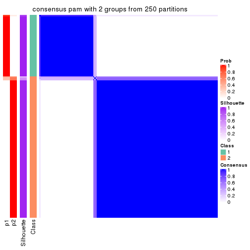
consensus_heatmap(res, k = 3)
consensus_heatmap(res, k = 4)

consensus_heatmap(res, k = 5)

consensus_heatmap(res, k = 6)
Heatmaps for the membership of samples in all partitions to see how consistent they are:
membership_heatmap(res, k = 2)
membership_heatmap(res, k = 3)
membership_heatmap(res, k = 4)
membership_heatmap(res, k = 5)
membership_heatmap(res, k = 6)
As soon as we have had the classes for columns, we can look for signatures
which are significantly different between classes which can be candidate marks
for certain classes. Following are the heatmaps for signatures.
Signature heatmaps where rows are scaled:
get_signatures(res, k = 2)
get_signatures(res, k = 3)
get_signatures(res, k = 4)
get_signatures(res, k = 5)
get_signatures(res, k = 6)
Signature heatmaps where rows are not scaled:
get_signatures(res, k = 2, scale_rows = FALSE)
get_signatures(res, k = 3, scale_rows = FALSE)
get_signatures(res, k = 4, scale_rows = FALSE)
get_signatures(res, k = 5, scale_rows = FALSE)
get_signatures(res, k = 6, scale_rows = FALSE)
Compare the overlap of signatures from different k:
compare_signatures(res)
get_signature() returns a data frame invisibly. TO get the list of signatures, the function
call should be assigned to a variable explicitly. In following code, if plot argument is set
to FALSE, no heatmap is plotted while only the differential analysis is performed.
# code only for demonstration
tb = get_signature(res, k = ..., plot = FALSE)
An example of the output of tb is:
#> which_row fdr mean_1 mean_2 scaled_mean_1 scaled_mean_2 km
#> 1 38 0.042760348 8.373488 9.131774 -0.5533452 0.5164555 1
#> 2 40 0.018707592 7.106213 8.469186 -0.6173731 0.5762149 1
#> 3 55 0.019134737 10.221463 11.207825 -0.6159697 0.5749050 1
#> 4 59 0.006059896 5.921854 7.869574 -0.6899429 0.6439467 1
#> 5 60 0.018055526 8.928898 10.211722 -0.6204761 0.5791110 1
#> 6 98 0.009384629 15.714769 14.887706 0.6635654 -0.6193277 2
...
The columns in tb are:
which_row: row indices corresponding to the input matrix.fdr: FDR for the differential test. mean_x: The mean value in group x.scaled_mean_x: The mean value in group x after rows are scaled.km: Row groups if k-means clustering is applied to rows.
UMAP plot which shows how samples are separated.
dimension_reduction(res, k = 2, method = "UMAP")
dimension_reduction(res, k = 3, method = "UMAP")
dimension_reduction(res, k = 4, method = "UMAP")
dimension_reduction(res, k = 5, method = "UMAP")
dimension_reduction(res, k = 6, method = "UMAP")
Following heatmap shows how subgroups are split when increasing k:
collect_classes(res)
If matrix rows can be associated to genes, consider to use functional_enrichment(res,
...) to perform function enrichment for the signature genes. See this vignette for more detailed explanations.
ATC:mclust**
The object with results only for a single top-value method and a single partition method
can be extracted as:
res = res_list["ATC", "mclust"]
# you can also extract it by
# res = res_list["ATC:mclust"]
A summary of res and all the functions that can be applied to it:
res
#> A 'ConsensusPartition' object with k = 2, 3, 4, 5, 6.
#> On a matrix with 15148 rows and 152 columns.
#> Top rows (1000, 2000, 3000, 4000, 5000) are extracted by 'ATC' method.
#> Subgroups are detected by 'mclust' method.
#> Performed in total 1250 partitions by row resampling.
#> Best k for subgroups seems to be 2.
#>
#> Following methods can be applied to this 'ConsensusPartition' object:
#> [1] "cola_report" "collect_classes" "collect_plots"
#> [4] "collect_stats" "colnames" "compare_signatures"
#> [7] "consensus_heatmap" "dimension_reduction" "functional_enrichment"
#> [10] "get_anno_col" "get_anno" "get_classes"
#> [13] "get_consensus" "get_matrix" "get_membership"
#> [16] "get_param" "get_signatures" "get_stats"
#> [19] "is_best_k" "is_stable_k" "membership_heatmap"
#> [22] "ncol" "nrow" "plot_ecdf"
#> [25] "rownames" "select_partition_number" "show"
#> [28] "suggest_best_k" "test_to_known_factors"
collect_plots() function collects all the plots made from res for all k (number of partitions)
into one single page to provide an easy and fast comparison between different k.
collect_plots(res)
The plots are:
- The first row: a plot of the ECDF (empirical cumulative distribution
function) curves of the consensus matrix for each
k and the heatmap of
predicted classes for each k.
- The second row: heatmaps of the consensus matrix for each
k.
- The third row: heatmaps of the membership matrix for each
k.
- The fouth row: heatmaps of the signatures for each
k.
All the plots in panels can be made by individual functions and they are
plotted later in this section.
select_partition_number() produces several plots showing different
statistics for choosing “optimized” k. There are following statistics:
- ECDF curves of the consensus matrix for each
k;
- 1-PAC. The PAC
score
measures the proportion of the ambiguous subgrouping.
- Mean silhouette score.
- Concordance. The mean probability of fiting the consensus class ids in all
partitions.
- Area increased. Denote \(A_k\) as the area under the ECDF curve for current
k, the area increased is defined as \(A_k - A_{k-1}\).
- Rand index. The percent of pairs of samples that are both in a same cluster
or both are not in a same cluster in the partition of k and k-1.
- Jaccard index. The ratio of pairs of samples are both in a same cluster in
the partition of k and k-1 and the pairs of samples are both in a same
cluster in the partition k or k-1.
The detailed explanations of these statistics can be found in the cola
vignette.
Generally speaking, lower PAC score, higher mean silhouette score or higher
concordance corresponds to better partition. Rand index and Jaccard index
measure how similar the current partition is compared to partition with k-1.
If they are too similar, we won't accept k is better than k-1.
select_partition_number(res)
The numeric values for all these statistics can be obtained by get_stats().
get_stats(res)
#> k 1-PAC mean_silhouette concordance area_increased Rand Jaccard
#> 2 2 1.000 0.969 0.987 0.4477 0.556 0.556
#> 3 3 0.634 0.748 0.861 0.3896 0.809 0.657
#> 4 4 0.583 0.720 0.796 0.0485 0.921 0.801
#> 5 5 0.721 0.803 0.843 0.1635 0.859 0.605
#> 6 6 0.847 0.853 0.908 0.0706 0.909 0.637
suggest_best_k() suggests the best \(k\) based on these statistics. The rules are as follows:
- All \(k\) with Jaccard index larger than 0.95 are removed because increasing
\(k\) does not provide enough extra information. If all \(k\) are removed, it is
marked as no subgroup is detected.
- For all \(k\) with 1-PAC score larger than 0.9, the maximal \(k\) is taken as
the best \(k\), and other \(k\) are marked as optional \(k\).
- If it does not fit the second rule. The \(k\) with the maximal vote of the
highest 1-PAC score, highest mean silhouette, and highest concordance is
taken as the best \(k\).
suggest_best_k(res)
#> [1] 2
Following shows the table of the partitions (You need to click the show/hide
code output link to see it). The membership matrix (columns with name p*)
is inferred by
clue::cl_consensus()
function with the SE method. Basically the value in the membership matrix
represents the probability to belong to a certain group. The finall class
label for an item is determined with the group with highest probability it
belongs to.
In get_classes() function, the entropy is calculated from the membership
matrix and the silhouette score is calculated from the consensus matrix.
show/hide code output
cbind(get_classes(res, k = 2), get_membership(res, k = 2))
#> class entropy silhouette p1 p2
#> SRR1947547 2 0.0376 0.990 0.004 0.996
#> SRR1947546 1 0.0000 0.986 1.000 0.000
#> SRR1947545 1 0.0376 0.984 0.996 0.004
#> SRR1947544 1 0.0376 0.984 0.996 0.004
#> SRR1947542 1 0.0000 0.986 1.000 0.000
#> SRR1947541 2 0.0376 0.990 0.004 0.996
#> SRR1947540 1 0.0000 0.986 1.000 0.000
#> SRR1947539 2 0.0376 0.990 0.004 0.996
#> SRR1947538 1 0.0000 0.986 1.000 0.000
#> SRR1947537 2 0.0376 0.990 0.004 0.996
#> SRR1947536 2 0.0000 0.986 0.000 1.000
#> SRR1947535 2 0.0376 0.990 0.004 0.996
#> SRR1947534 1 0.0376 0.984 0.996 0.004
#> SRR1947533 1 0.0000 0.986 1.000 0.000
#> SRR1947532 1 0.0000 0.986 1.000 0.000
#> SRR1947531 1 0.0000 0.986 1.000 0.000
#> SRR1947530 1 0.9732 0.324 0.596 0.404
#> SRR1947529 1 0.0000 0.986 1.000 0.000
#> SRR1947528 2 0.0376 0.990 0.004 0.996
#> SRR1947527 1 0.0000 0.986 1.000 0.000
#> SRR1947526 1 0.0000 0.986 1.000 0.000
#> SRR1947525 1 0.0000 0.986 1.000 0.000
#> SRR1947524 2 0.0376 0.990 0.004 0.996
#> SRR1947523 1 0.0000 0.986 1.000 0.000
#> SRR1947521 2 0.0376 0.990 0.004 0.996
#> SRR1947520 1 0.0000 0.986 1.000 0.000
#> SRR1947519 2 0.0376 0.990 0.004 0.996
#> SRR1947518 1 0.0000 0.986 1.000 0.000
#> SRR1947517 2 0.0376 0.990 0.004 0.996
#> SRR1947516 1 0.0000 0.986 1.000 0.000
#> SRR1947515 1 0.0000 0.986 1.000 0.000
#> SRR1947514 1 0.0000 0.986 1.000 0.000
#> SRR1947513 1 0.0376 0.984 0.996 0.004
#> SRR1947512 1 0.0376 0.984 0.996 0.004
#> SRR1947511 1 0.0000 0.986 1.000 0.000
#> SRR1947510 2 0.0376 0.990 0.004 0.996
#> SRR1947572 1 0.0000 0.986 1.000 0.000
#> SRR1947611 2 0.0376 0.990 0.004 0.996
#> SRR1947509 2 0.0000 0.986 0.000 1.000
#> SRR1947644 2 0.0376 0.990 0.004 0.996
#> SRR1947643 1 0.0000 0.986 1.000 0.000
#> SRR1947642 2 0.0376 0.990 0.004 0.996
#> SRR1947640 1 0.0000 0.986 1.000 0.000
#> SRR1947641 2 0.0376 0.990 0.004 0.996
#> SRR1947639 1 0.0000 0.986 1.000 0.000
#> SRR1947638 1 0.0376 0.984 0.996 0.004
#> SRR1947637 2 0.0376 0.990 0.004 0.996
#> SRR1947636 2 0.0376 0.990 0.004 0.996
#> SRR1947635 1 0.0000 0.986 1.000 0.000
#> SRR1947634 1 0.0000 0.986 1.000 0.000
#> SRR1947633 2 0.0376 0.990 0.004 0.996
#> SRR1947632 1 0.0000 0.986 1.000 0.000
#> SRR1947631 2 0.0376 0.990 0.004 0.996
#> SRR1947629 2 0.0376 0.990 0.004 0.996
#> SRR1947630 1 0.0000 0.986 1.000 0.000
#> SRR1947627 2 0.0376 0.990 0.004 0.996
#> SRR1947628 1 0.0000 0.986 1.000 0.000
#> SRR1947626 1 0.0000 0.986 1.000 0.000
#> SRR1947625 2 0.0376 0.990 0.004 0.996
#> SRR1947624 1 0.0000 0.986 1.000 0.000
#> SRR1947623 1 0.0000 0.986 1.000 0.000
#> SRR1947622 1 0.0000 0.986 1.000 0.000
#> SRR1947621 1 0.0000 0.986 1.000 0.000
#> SRR1947620 1 0.0376 0.984 0.996 0.004
#> SRR1947619 2 0.2603 0.951 0.044 0.956
#> SRR1947617 1 0.0000 0.986 1.000 0.000
#> SRR1947618 1 0.0376 0.984 0.996 0.004
#> SRR1947616 1 0.0000 0.986 1.000 0.000
#> SRR1947615 2 0.8813 0.573 0.300 0.700
#> SRR1947614 2 0.0376 0.990 0.004 0.996
#> SRR1947613 1 0.0376 0.984 0.996 0.004
#> SRR1947610 1 0.0000 0.986 1.000 0.000
#> SRR1947612 1 0.0000 0.986 1.000 0.000
#> SRR1947609 1 0.0000 0.986 1.000 0.000
#> SRR1947608 2 0.0376 0.990 0.004 0.996
#> SRR1947606 2 0.0376 0.990 0.004 0.996
#> SRR1947607 1 0.0376 0.984 0.996 0.004
#> SRR1947604 1 0.0000 0.986 1.000 0.000
#> SRR1947605 1 0.0376 0.984 0.996 0.004
#> SRR1947603 1 0.0000 0.986 1.000 0.000
#> SRR1947602 1 0.9850 0.256 0.572 0.428
#> SRR1947600 2 0.0376 0.990 0.004 0.996
#> SRR1947601 1 0.0000 0.986 1.000 0.000
#> SRR1947598 1 0.0000 0.986 1.000 0.000
#> SRR1947599 1 0.0000 0.986 1.000 0.000
#> SRR1947597 1 0.0000 0.986 1.000 0.000
#> SRR1947596 1 0.0000 0.986 1.000 0.000
#> SRR1947595 1 0.0000 0.986 1.000 0.000
#> SRR1947594 1 0.0376 0.984 0.996 0.004
#> SRR1947592 2 0.0376 0.990 0.004 0.996
#> SRR1947591 1 0.0000 0.986 1.000 0.000
#> SRR1947590 1 0.0000 0.986 1.000 0.000
#> SRR1947588 1 0.0376 0.984 0.996 0.004
#> SRR1947587 2 0.0376 0.990 0.004 0.996
#> SRR1947586 1 0.0000 0.986 1.000 0.000
#> SRR1947585 2 0.0376 0.990 0.004 0.996
#> SRR1947584 1 0.0376 0.984 0.996 0.004
#> SRR1947583 1 0.0000 0.986 1.000 0.000
#> SRR1947582 1 0.0376 0.984 0.996 0.004
#> SRR1947580 1 0.0000 0.986 1.000 0.000
#> SRR1947581 1 0.0376 0.984 0.996 0.004
#> SRR1947576 2 0.0376 0.990 0.004 0.996
#> SRR1947575 2 0.0376 0.990 0.004 0.996
#> SRR1947579 2 0.0376 0.990 0.004 0.996
#> SRR1947578 1 0.0000 0.986 1.000 0.000
#> SRR1947573 2 0.0376 0.990 0.004 0.996
#> SRR1947574 1 0.0000 0.986 1.000 0.000
#> SRR1947571 1 0.0000 0.986 1.000 0.000
#> SRR1947577 1 0.0376 0.984 0.996 0.004
#> SRR1947570 2 0.0376 0.990 0.004 0.996
#> SRR1947569 2 0.0376 0.990 0.004 0.996
#> SRR1947566 1 0.0000 0.986 1.000 0.000
#> SRR1947567 1 0.0000 0.986 1.000 0.000
#> SRR1947568 1 0.0000 0.986 1.000 0.000
#> SRR1947564 1 0.0000 0.986 1.000 0.000
#> SRR1947563 2 0.0376 0.990 0.004 0.996
#> SRR1947562 1 0.0000 0.986 1.000 0.000
#> SRR1947565 2 0.0376 0.990 0.004 0.996
#> SRR1947559 1 0.0000 0.986 1.000 0.000
#> SRR1947560 2 0.0376 0.990 0.004 0.996
#> SRR1947561 1 0.0000 0.986 1.000 0.000
#> SRR1947557 1 0.0376 0.984 0.996 0.004
#> SRR1947558 2 0.0376 0.990 0.004 0.996
#> SRR1947556 1 0.0000 0.986 1.000 0.000
#> SRR1947553 1 0.0000 0.986 1.000 0.000
#> SRR1947554 1 0.0000 0.986 1.000 0.000
#> SRR1947555 1 0.0000 0.986 1.000 0.000
#> SRR1947550 1 0.0000 0.986 1.000 0.000
#> SRR1947552 1 0.0000 0.986 1.000 0.000
#> SRR1947549 2 0.0376 0.990 0.004 0.996
#> SRR1947551 2 0.0376 0.990 0.004 0.996
#> SRR1947548 1 0.0000 0.986 1.000 0.000
#> SRR1947506 2 0.0000 0.986 0.000 1.000
#> SRR1947507 1 0.0376 0.984 0.996 0.004
#> SRR1947504 1 0.0000 0.986 1.000 0.000
#> SRR1947503 1 0.0000 0.986 1.000 0.000
#> SRR1947502 1 0.0000 0.986 1.000 0.000
#> SRR1947501 1 0.0000 0.986 1.000 0.000
#> SRR1947499 1 0.9850 0.256 0.572 0.428
#> SRR1947498 2 0.0376 0.990 0.004 0.996
#> SRR1947508 2 0.0000 0.986 0.000 1.000
#> SRR1947505 1 0.0000 0.986 1.000 0.000
#> SRR1947497 1 0.0000 0.986 1.000 0.000
#> SRR1947496 1 0.0376 0.984 0.996 0.004
#> SRR1947495 1 0.0000 0.986 1.000 0.000
#> SRR1947494 1 0.0000 0.986 1.000 0.000
#> SRR1947493 2 0.6048 0.823 0.148 0.852
#> SRR1947492 1 0.0376 0.984 0.996 0.004
#> SRR1947500 1 0.0000 0.986 1.000 0.000
#> SRR1947491 1 0.0000 0.986 1.000 0.000
#> SRR1947490 1 0.0376 0.984 0.996 0.004
#> SRR1947489 2 0.0376 0.990 0.004 0.996
show/hide code output
cbind(get_classes(res, k = 3), get_membership(res, k = 3))
#> class entropy silhouette p1 p2 p3
#> SRR1947547 3 0.0000 0.9433 0.000 0.000 1.000
#> SRR1947546 2 0.1989 0.8062 0.048 0.948 0.004
#> SRR1947545 1 0.4235 0.8745 0.824 0.176 0.000
#> SRR1947544 1 0.4291 0.8734 0.820 0.180 0.000
#> SRR1947542 2 0.2860 0.7912 0.084 0.912 0.004
#> SRR1947541 3 0.0000 0.9433 0.000 0.000 1.000
#> SRR1947540 2 0.3918 0.7535 0.140 0.856 0.004
#> SRR1947539 3 0.0000 0.9433 0.000 0.000 1.000
#> SRR1947538 2 0.6421 0.1985 0.424 0.572 0.004
#> SRR1947537 3 0.0000 0.9433 0.000 0.000 1.000
#> SRR1947536 3 0.4291 0.8780 0.180 0.000 0.820
#> SRR1947535 3 0.0000 0.9433 0.000 0.000 1.000
#> SRR1947534 2 0.5948 0.1726 0.360 0.640 0.000
#> SRR1947533 2 0.0237 0.8082 0.000 0.996 0.004
#> SRR1947532 2 0.6495 0.0656 0.460 0.536 0.004
#> SRR1947531 2 0.3983 0.7503 0.144 0.852 0.004
#> SRR1947530 1 0.5746 0.6926 0.780 0.040 0.180
#> SRR1947529 2 0.1765 0.8074 0.040 0.956 0.004
#> SRR1947528 3 0.0000 0.9433 0.000 0.000 1.000
#> SRR1947527 2 0.0237 0.8082 0.000 0.996 0.004
#> SRR1947526 2 0.0237 0.8082 0.000 0.996 0.004
#> SRR1947525 2 0.2496 0.7990 0.068 0.928 0.004
#> SRR1947524 3 0.0000 0.9433 0.000 0.000 1.000
#> SRR1947523 2 0.6505 0.0288 0.468 0.528 0.004
#> SRR1947521 3 0.4235 0.8801 0.176 0.000 0.824
#> SRR1947520 2 0.1647 0.8075 0.036 0.960 0.004
#> SRR1947519 3 0.0000 0.9433 0.000 0.000 1.000
#> SRR1947518 2 0.0661 0.8092 0.008 0.988 0.004
#> SRR1947517 3 0.4235 0.8801 0.176 0.000 0.824
#> SRR1947516 2 0.0000 0.8068 0.000 1.000 0.000
#> SRR1947515 2 0.6451 0.1624 0.436 0.560 0.004
#> SRR1947514 2 0.0237 0.8082 0.000 0.996 0.004
#> SRR1947513 1 0.4504 0.8656 0.804 0.196 0.000
#> SRR1947512 1 0.4399 0.8695 0.812 0.188 0.000
#> SRR1947511 2 0.0237 0.8082 0.000 0.996 0.004
#> SRR1947510 3 0.4235 0.8801 0.176 0.000 0.824
#> SRR1947572 2 0.0661 0.8091 0.008 0.988 0.004
#> SRR1947611 3 0.4062 0.8851 0.164 0.000 0.836
#> SRR1947509 3 0.4291 0.8780 0.180 0.000 0.820
#> SRR1947644 3 0.4235 0.8801 0.176 0.000 0.824
#> SRR1947643 2 0.2096 0.8048 0.052 0.944 0.004
#> SRR1947642 3 0.0000 0.9433 0.000 0.000 1.000
#> SRR1947640 2 0.3851 0.7571 0.136 0.860 0.004
#> SRR1947641 3 0.0000 0.9433 0.000 0.000 1.000
#> SRR1947639 2 0.0237 0.8082 0.000 0.996 0.004
#> SRR1947638 1 0.4291 0.8734 0.820 0.180 0.000
#> SRR1947637 3 0.0000 0.9433 0.000 0.000 1.000
#> SRR1947636 3 0.0000 0.9433 0.000 0.000 1.000
#> SRR1947635 2 0.6442 0.1759 0.432 0.564 0.004
#> SRR1947634 2 0.1989 0.8060 0.048 0.948 0.004
#> SRR1947633 3 0.3879 0.8898 0.152 0.000 0.848
#> SRR1947632 2 0.3851 0.7570 0.136 0.860 0.004
#> SRR1947631 3 0.0000 0.9433 0.000 0.000 1.000
#> SRR1947629 3 0.0000 0.9433 0.000 0.000 1.000
#> SRR1947630 2 0.1647 0.8075 0.036 0.960 0.004
#> SRR1947627 3 0.0000 0.9433 0.000 0.000 1.000
#> SRR1947628 2 0.5845 0.5005 0.308 0.688 0.004
#> SRR1947626 2 0.0237 0.8082 0.000 0.996 0.004
#> SRR1947625 3 0.0000 0.9433 0.000 0.000 1.000
#> SRR1947624 2 0.1647 0.8075 0.036 0.960 0.004
#> SRR1947623 2 0.0661 0.8093 0.008 0.988 0.004
#> SRR1947622 2 0.1878 0.8069 0.044 0.952 0.004
#> SRR1947621 2 0.0000 0.8068 0.000 1.000 0.000
#> SRR1947620 1 0.4235 0.8745 0.824 0.176 0.000
#> SRR1947619 3 0.6317 0.6788 0.124 0.104 0.772
#> SRR1947617 2 0.0000 0.8068 0.000 1.000 0.000
#> SRR1947618 1 0.4291 0.8734 0.820 0.180 0.000
#> SRR1947616 2 0.2945 0.7891 0.088 0.908 0.004
#> SRR1947615 3 0.7610 0.1412 0.388 0.048 0.564
#> SRR1947614 3 0.4235 0.8801 0.176 0.000 0.824
#> SRR1947613 1 0.4842 0.8341 0.776 0.224 0.000
#> SRR1947610 2 0.0237 0.8082 0.000 0.996 0.004
#> SRR1947612 2 0.0000 0.8068 0.000 1.000 0.000
#> SRR1947609 1 0.6209 0.5505 0.628 0.368 0.004
#> SRR1947608 3 0.0000 0.9433 0.000 0.000 1.000
#> SRR1947606 3 0.0000 0.9433 0.000 0.000 1.000
#> SRR1947607 2 0.5968 0.1570 0.364 0.636 0.000
#> SRR1947604 2 0.6451 0.1624 0.436 0.560 0.004
#> SRR1947605 1 0.4235 0.8745 0.824 0.176 0.000
#> SRR1947603 2 0.0000 0.8068 0.000 1.000 0.000
#> SRR1947602 1 0.5689 0.6886 0.780 0.036 0.184
#> SRR1947600 3 0.0000 0.9433 0.000 0.000 1.000
#> SRR1947601 2 0.0000 0.8068 0.000 1.000 0.000
#> SRR1947598 2 0.6897 0.1397 0.436 0.548 0.016
#> SRR1947599 1 0.5956 0.6517 0.672 0.324 0.004
#> SRR1947597 2 0.0000 0.8068 0.000 1.000 0.000
#> SRR1947596 2 0.6451 0.1624 0.436 0.560 0.004
#> SRR1947595 2 0.2200 0.8036 0.056 0.940 0.004
#> SRR1947594 1 0.4291 0.8734 0.820 0.180 0.000
#> SRR1947592 3 0.0000 0.9433 0.000 0.000 1.000
#> SRR1947591 2 0.0000 0.8068 0.000 1.000 0.000
#> SRR1947590 2 0.6483 0.0997 0.452 0.544 0.004
#> SRR1947588 1 0.4555 0.8594 0.800 0.200 0.000
#> SRR1947587 3 0.0000 0.9433 0.000 0.000 1.000
#> SRR1947586 2 0.0237 0.8082 0.000 0.996 0.004
#> SRR1947585 3 0.0000 0.9433 0.000 0.000 1.000
#> SRR1947584 1 0.4235 0.8745 0.824 0.176 0.000
#> SRR1947583 2 0.3715 0.7632 0.128 0.868 0.004
#> SRR1947582 1 0.4235 0.8745 0.824 0.176 0.000
#> SRR1947580 2 0.0237 0.8082 0.000 0.996 0.004
#> SRR1947581 1 0.4235 0.8745 0.824 0.176 0.000
#> SRR1947576 3 0.4235 0.8801 0.176 0.000 0.824
#> SRR1947575 3 0.0000 0.9433 0.000 0.000 1.000
#> SRR1947579 3 0.4235 0.8801 0.176 0.000 0.824
#> SRR1947578 2 0.3983 0.7498 0.144 0.852 0.004
#> SRR1947573 3 0.0000 0.9433 0.000 0.000 1.000
#> SRR1947574 2 0.2096 0.8050 0.052 0.944 0.004
#> SRR1947571 2 0.6451 0.1624 0.436 0.560 0.004
#> SRR1947577 1 0.4291 0.8734 0.820 0.180 0.000
#> SRR1947570 3 0.1182 0.9280 0.012 0.012 0.976
#> SRR1947569 3 0.0000 0.9433 0.000 0.000 1.000
#> SRR1947566 2 0.1860 0.8055 0.052 0.948 0.000
#> SRR1947567 2 0.3425 0.7745 0.112 0.884 0.004
#> SRR1947568 2 0.0237 0.8082 0.000 0.996 0.004
#> SRR1947564 2 0.0237 0.8080 0.004 0.996 0.000
#> SRR1947563 3 0.0000 0.9433 0.000 0.000 1.000
#> SRR1947562 2 0.5517 0.5742 0.268 0.728 0.004
#> SRR1947565 3 0.0000 0.9433 0.000 0.000 1.000
#> SRR1947559 2 0.0661 0.8092 0.008 0.988 0.004
#> SRR1947560 3 0.4235 0.8801 0.176 0.000 0.824
#> SRR1947561 2 0.0000 0.8068 0.000 1.000 0.000
#> SRR1947557 1 0.4235 0.8745 0.824 0.176 0.000
#> SRR1947558 3 0.0000 0.9433 0.000 0.000 1.000
#> SRR1947556 1 0.6520 0.1214 0.508 0.488 0.004
#> SRR1947553 2 0.0237 0.8082 0.000 0.996 0.004
#> SRR1947554 2 0.6180 0.0755 0.416 0.584 0.000
#> SRR1947555 2 0.1647 0.8075 0.036 0.960 0.004
#> SRR1947550 2 0.3272 0.7796 0.104 0.892 0.004
#> SRR1947552 2 0.6520 -0.0692 0.488 0.508 0.004
#> SRR1947549 3 0.0000 0.9433 0.000 0.000 1.000
#> SRR1947551 3 0.4235 0.8801 0.176 0.000 0.824
#> SRR1947548 2 0.6451 0.1624 0.436 0.560 0.004
#> SRR1947506 3 0.0237 0.9404 0.004 0.000 0.996
#> SRR1947507 1 0.4235 0.8745 0.824 0.176 0.000
#> SRR1947504 2 0.6228 0.2630 0.372 0.624 0.004
#> SRR1947503 1 0.4629 0.8637 0.808 0.188 0.004
#> SRR1947502 2 0.0000 0.8068 0.000 1.000 0.000
#> SRR1947501 2 0.3983 0.7497 0.144 0.852 0.004
#> SRR1947499 1 0.5689 0.6886 0.780 0.036 0.184
#> SRR1947498 3 0.3412 0.9006 0.124 0.000 0.876
#> SRR1947508 3 0.0237 0.9404 0.004 0.000 0.996
#> SRR1947505 1 0.7490 0.4759 0.576 0.380 0.044
#> SRR1947497 2 0.0237 0.8082 0.000 0.996 0.004
#> SRR1947496 1 0.4399 0.8693 0.812 0.188 0.000
#> SRR1947495 2 0.0237 0.8082 0.000 0.996 0.004
#> SRR1947494 2 0.6500 0.0476 0.464 0.532 0.004
#> SRR1947493 1 0.5953 0.5390 0.708 0.012 0.280
#> SRR1947492 1 0.4235 0.8745 0.824 0.176 0.000
#> SRR1947500 2 0.4172 0.7376 0.156 0.840 0.004
#> SRR1947491 1 0.6298 0.4956 0.608 0.388 0.004
#> SRR1947490 1 0.4702 0.8474 0.788 0.212 0.000
#> SRR1947489 3 0.0000 0.9433 0.000 0.000 1.000
show/hide code output
cbind(get_classes(res, k = 4), get_membership(res, k = 4))
#> class entropy silhouette p1 p2 p3 p4
#> SRR1947547 3 0.3933 0.7437 0.196 0.004 0.796 0.004
#> SRR1947546 2 0.1389 0.7596 0.000 0.952 0.000 0.048
#> SRR1947545 1 0.4222 0.8404 0.728 0.272 0.000 0.000
#> SRR1947544 1 0.6113 0.7486 0.636 0.284 0.000 0.080
#> SRR1947542 2 0.5376 0.6867 0.088 0.736 0.000 0.176
#> SRR1947541 3 0.0188 0.8745 0.000 0.000 0.996 0.004
#> SRR1947540 2 0.5811 0.6625 0.116 0.704 0.000 0.180
#> SRR1947539 3 0.0000 0.8767 0.000 0.000 1.000 0.000
#> SRR1947538 2 0.5811 0.6625 0.116 0.704 0.000 0.180
#> SRR1947537 3 0.0000 0.8767 0.000 0.000 1.000 0.000
#> SRR1947536 4 0.4643 0.8012 0.000 0.000 0.344 0.656
#> SRR1947535 3 0.0000 0.8767 0.000 0.000 1.000 0.000
#> SRR1947534 2 0.5693 -0.5042 0.472 0.504 0.000 0.024
#> SRR1947533 2 0.1474 0.7429 0.000 0.948 0.000 0.052
#> SRR1947532 2 0.6536 0.6334 0.164 0.652 0.004 0.180
#> SRR1947531 2 0.3441 0.7413 0.024 0.856 0.000 0.120
#> SRR1947530 1 0.4203 0.4905 0.824 0.068 0.108 0.000
#> SRR1947529 2 0.1716 0.7586 0.000 0.936 0.000 0.064
#> SRR1947528 3 0.3052 0.7923 0.136 0.000 0.860 0.004
#> SRR1947527 2 0.1661 0.7409 0.004 0.944 0.000 0.052
#> SRR1947526 2 0.1118 0.7483 0.000 0.964 0.000 0.036
#> SRR1947525 2 0.2216 0.7551 0.000 0.908 0.000 0.092
#> SRR1947524 3 0.0000 0.8767 0.000 0.000 1.000 0.000
#> SRR1947523 2 0.6476 0.6212 0.176 0.644 0.000 0.180
#> SRR1947521 4 0.3907 0.9811 0.000 0.000 0.232 0.768
#> SRR1947520 2 0.0469 0.7483 0.000 0.988 0.000 0.012
#> SRR1947519 3 0.0188 0.8745 0.000 0.000 0.996 0.004
#> SRR1947518 2 0.3354 0.7405 0.044 0.872 0.000 0.084
#> SRR1947517 4 0.3907 0.9811 0.000 0.000 0.232 0.768
#> SRR1947516 2 0.1913 0.7367 0.020 0.940 0.000 0.040
#> SRR1947515 2 0.7064 0.6172 0.160 0.636 0.024 0.180
#> SRR1947514 2 0.2983 0.6970 0.068 0.892 0.000 0.040
#> SRR1947513 1 0.4500 0.8350 0.684 0.316 0.000 0.000
#> SRR1947512 1 0.4454 0.8414 0.692 0.308 0.000 0.000
#> SRR1947511 2 0.1474 0.7429 0.000 0.948 0.000 0.052
#> SRR1947510 4 0.3907 0.9811 0.000 0.000 0.232 0.768
#> SRR1947572 2 0.2125 0.7554 0.004 0.920 0.000 0.076
#> SRR1947611 3 0.4916 -0.0545 0.000 0.000 0.576 0.424
#> SRR1947509 4 0.3907 0.9811 0.000 0.000 0.232 0.768
#> SRR1947644 4 0.3907 0.9811 0.000 0.000 0.232 0.768
#> SRR1947643 2 0.1867 0.7579 0.000 0.928 0.000 0.072
#> SRR1947642 3 0.0000 0.8767 0.000 0.000 1.000 0.000
#> SRR1947640 2 0.5512 0.6808 0.100 0.728 0.000 0.172
#> SRR1947641 3 0.0000 0.8767 0.000 0.000 1.000 0.000
#> SRR1947639 2 0.1398 0.7454 0.004 0.956 0.000 0.040
#> SRR1947638 1 0.4193 0.8417 0.732 0.268 0.000 0.000
#> SRR1947637 3 0.2011 0.7891 0.000 0.000 0.920 0.080
#> SRR1947636 3 0.0000 0.8767 0.000 0.000 1.000 0.000
#> SRR1947635 2 0.6279 0.6454 0.156 0.664 0.000 0.180
#> SRR1947634 2 0.1557 0.7589 0.000 0.944 0.000 0.056
#> SRR1947633 3 0.3688 0.6532 0.000 0.000 0.792 0.208
#> SRR1947632 2 0.6236 0.6498 0.152 0.668 0.000 0.180
#> SRR1947631 3 0.0000 0.8767 0.000 0.000 1.000 0.000
#> SRR1947629 3 0.0000 0.8767 0.000 0.000 1.000 0.000
#> SRR1947630 2 0.0707 0.7512 0.000 0.980 0.000 0.020
#> SRR1947627 3 0.3933 0.7437 0.196 0.004 0.796 0.004
#> SRR1947628 2 0.6236 0.6498 0.152 0.668 0.000 0.180
#> SRR1947626 2 0.2908 0.7007 0.064 0.896 0.000 0.040
#> SRR1947625 3 0.0000 0.8767 0.000 0.000 1.000 0.000
#> SRR1947624 2 0.0469 0.7483 0.000 0.988 0.000 0.012
#> SRR1947623 2 0.1474 0.7599 0.000 0.948 0.000 0.052
#> SRR1947622 2 0.1211 0.7585 0.000 0.960 0.000 0.040
#> SRR1947621 2 0.2983 0.6970 0.068 0.892 0.000 0.040
#> SRR1947620 1 0.4193 0.8417 0.732 0.268 0.000 0.000
#> SRR1947619 3 0.6369 0.2988 0.004 0.260 0.640 0.096
#> SRR1947617 2 0.2983 0.6970 0.068 0.892 0.000 0.040
#> SRR1947618 1 0.4222 0.8404 0.728 0.272 0.000 0.000
#> SRR1947616 2 0.2466 0.7531 0.004 0.900 0.000 0.096
#> SRR1947615 3 0.8185 0.3419 0.184 0.140 0.576 0.100
#> SRR1947614 4 0.3907 0.9811 0.000 0.000 0.232 0.768
#> SRR1947613 1 0.4855 0.7216 0.600 0.400 0.000 0.000
#> SRR1947610 2 0.1398 0.7454 0.004 0.956 0.000 0.040
#> SRR1947612 2 0.2983 0.6970 0.068 0.892 0.000 0.040
#> SRR1947609 2 0.7463 0.0703 0.364 0.456 0.000 0.180
#> SRR1947608 3 0.0000 0.8767 0.000 0.000 1.000 0.000
#> SRR1947606 3 0.3933 0.7437 0.196 0.004 0.796 0.004
#> SRR1947607 1 0.5856 0.5484 0.504 0.464 0.000 0.032
#> SRR1947604 2 0.6279 0.6454 0.156 0.664 0.000 0.180
#> SRR1947605 1 0.4193 0.8417 0.732 0.268 0.000 0.000
#> SRR1947603 2 0.0188 0.7520 0.000 0.996 0.000 0.004
#> SRR1947602 1 0.4203 0.4905 0.824 0.068 0.108 0.000
#> SRR1947600 3 0.0000 0.8767 0.000 0.000 1.000 0.000
#> SRR1947601 2 0.1118 0.7482 0.000 0.964 0.000 0.036
#> SRR1947598 2 0.7156 0.6121 0.160 0.632 0.028 0.180
#> SRR1947599 1 0.7285 0.5380 0.520 0.300 0.000 0.180
#> SRR1947597 2 0.0000 0.7506 0.000 1.000 0.000 0.000
#> SRR1947596 2 0.6496 0.6384 0.160 0.656 0.004 0.180
#> SRR1947595 2 0.1940 0.7574 0.000 0.924 0.000 0.076
#> SRR1947594 1 0.4454 0.8414 0.692 0.308 0.000 0.000
#> SRR1947592 3 0.0000 0.8767 0.000 0.000 1.000 0.000
#> SRR1947591 2 0.2983 0.6970 0.068 0.892 0.000 0.040
#> SRR1947590 2 0.6966 0.6219 0.160 0.640 0.020 0.180
#> SRR1947588 1 0.4477 0.8385 0.688 0.312 0.000 0.000
#> SRR1947587 3 0.0000 0.8767 0.000 0.000 1.000 0.000
#> SRR1947586 2 0.1661 0.7409 0.004 0.944 0.000 0.052
#> SRR1947585 3 0.0000 0.8767 0.000 0.000 1.000 0.000
#> SRR1947584 1 0.4250 0.8402 0.724 0.276 0.000 0.000
#> SRR1947583 2 0.3910 0.7286 0.024 0.820 0.000 0.156
#> SRR1947582 1 0.4193 0.8417 0.732 0.268 0.000 0.000
#> SRR1947580 2 0.1474 0.7429 0.000 0.948 0.000 0.052
#> SRR1947581 1 0.4454 0.8414 0.692 0.308 0.000 0.000
#> SRR1947576 4 0.4008 0.9675 0.000 0.000 0.244 0.756
#> SRR1947575 3 0.0000 0.8767 0.000 0.000 1.000 0.000
#> SRR1947579 4 0.3907 0.9811 0.000 0.000 0.232 0.768
#> SRR1947578 2 0.6236 0.6498 0.152 0.668 0.000 0.180
#> SRR1947573 3 0.0000 0.8767 0.000 0.000 1.000 0.000
#> SRR1947574 2 0.1302 0.7595 0.000 0.956 0.000 0.044
#> SRR1947571 2 0.6279 0.6454 0.156 0.664 0.000 0.180
#> SRR1947577 1 0.4193 0.8417 0.732 0.268 0.000 0.000
#> SRR1947570 3 0.4666 0.7078 0.200 0.028 0.768 0.004
#> SRR1947569 3 0.0000 0.8767 0.000 0.000 1.000 0.000
#> SRR1947566 2 0.1637 0.7593 0.000 0.940 0.000 0.060
#> SRR1947567 2 0.5811 0.6625 0.116 0.704 0.000 0.180
#> SRR1947568 2 0.1398 0.7454 0.004 0.956 0.000 0.040
#> SRR1947564 2 0.1118 0.7482 0.000 0.964 0.000 0.036
#> SRR1947563 3 0.0000 0.8767 0.000 0.000 1.000 0.000
#> SRR1947562 2 0.5811 0.6625 0.116 0.704 0.000 0.180
#> SRR1947565 3 0.0000 0.8767 0.000 0.000 1.000 0.000
#> SRR1947559 2 0.0000 0.7506 0.000 1.000 0.000 0.000
#> SRR1947560 4 0.3907 0.9811 0.000 0.000 0.232 0.768
#> SRR1947561 2 0.1211 0.7466 0.000 0.960 0.000 0.040
#> SRR1947557 1 0.4382 0.8435 0.704 0.296 0.000 0.000
#> SRR1947558 3 0.0000 0.8767 0.000 0.000 1.000 0.000
#> SRR1947556 2 0.7174 0.4820 0.244 0.572 0.004 0.180
#> SRR1947553 2 0.1398 0.7454 0.004 0.956 0.000 0.040
#> SRR1947554 2 0.4985 -0.4966 0.468 0.532 0.000 0.000
#> SRR1947555 2 0.1211 0.7581 0.000 0.960 0.000 0.040
#> SRR1947550 2 0.5705 0.6696 0.108 0.712 0.000 0.180
#> SRR1947552 2 0.7014 0.5371 0.220 0.596 0.004 0.180
#> SRR1947549 3 0.0000 0.8767 0.000 0.000 1.000 0.000
#> SRR1947551 4 0.3907 0.9811 0.000 0.000 0.232 0.768
#> SRR1947548 2 0.6496 0.6384 0.160 0.656 0.004 0.180
#> SRR1947506 3 0.3933 0.7437 0.196 0.004 0.796 0.004
#> SRR1947507 1 0.4431 0.8422 0.696 0.304 0.000 0.000
#> SRR1947504 2 0.5604 0.6744 0.116 0.724 0.000 0.160
#> SRR1947503 1 0.6444 0.7117 0.612 0.284 0.000 0.104
#> SRR1947502 2 0.2983 0.6970 0.068 0.892 0.000 0.040
#> SRR1947501 2 0.6236 0.6498 0.152 0.668 0.000 0.180
#> SRR1947499 1 0.4203 0.4905 0.824 0.068 0.108 0.000
#> SRR1947498 3 0.3764 0.6387 0.000 0.000 0.784 0.216
#> SRR1947508 3 0.3933 0.7437 0.196 0.004 0.796 0.004
#> SRR1947505 2 0.9726 -0.0451 0.236 0.368 0.216 0.180
#> SRR1947497 2 0.0592 0.7471 0.000 0.984 0.000 0.016
#> SRR1947496 1 0.4454 0.8414 0.692 0.308 0.000 0.000
#> SRR1947495 2 0.0921 0.7469 0.000 0.972 0.000 0.028
#> SRR1947494 2 0.6752 0.6307 0.160 0.648 0.012 0.180
#> SRR1947493 1 0.5459 0.3456 0.732 0.072 0.192 0.004
#> SRR1947492 1 0.4454 0.8414 0.692 0.308 0.000 0.000
#> SRR1947500 2 0.5823 0.6618 0.120 0.704 0.000 0.176
#> SRR1947491 2 0.7441 0.1190 0.352 0.468 0.000 0.180
#> SRR1947490 1 0.4730 0.7777 0.636 0.364 0.000 0.000
#> SRR1947489 3 0.3973 0.7396 0.200 0.004 0.792 0.004
show/hide code output
cbind(get_classes(res, k = 5), get_membership(res, k = 5))
#> class entropy silhouette p1 p2 p3 p4 p5
#> SRR1947547 3 0.1282 0.9589 0.000 0.000 0.952 0.044 0.004
#> SRR1947546 2 0.4832 0.8001 0.104 0.720 0.000 0.176 0.000
#> SRR1947545 1 0.4668 0.6572 0.684 0.044 0.000 0.272 0.000
#> SRR1947544 4 0.5142 0.1431 0.392 0.044 0.000 0.564 0.000
#> SRR1947542 4 0.3691 0.7544 0.104 0.076 0.000 0.820 0.000
#> SRR1947541 3 0.1205 0.9605 0.000 0.000 0.956 0.040 0.004
#> SRR1947540 2 0.5785 0.5967 0.108 0.560 0.000 0.332 0.000
#> SRR1947539 3 0.0000 0.9757 0.000 0.000 1.000 0.000 0.000
#> SRR1947538 4 0.3307 0.7685 0.104 0.052 0.000 0.844 0.000
#> SRR1947537 3 0.0000 0.9757 0.000 0.000 1.000 0.000 0.000
#> SRR1947536 5 0.3003 0.8055 0.000 0.000 0.188 0.000 0.812
#> SRR1947535 3 0.0000 0.9757 0.000 0.000 1.000 0.000 0.000
#> SRR1947534 2 0.4451 -0.3775 0.492 0.504 0.000 0.000 0.004
#> SRR1947533 2 0.0960 0.7731 0.016 0.972 0.000 0.008 0.004
#> SRR1947532 4 0.1282 0.8451 0.004 0.044 0.000 0.952 0.000
#> SRR1947531 2 0.4981 0.7965 0.108 0.704 0.000 0.188 0.000
#> SRR1947530 1 0.3911 0.6942 0.796 0.000 0.144 0.060 0.000
#> SRR1947529 2 0.4648 0.8140 0.104 0.740 0.000 0.156 0.000
#> SRR1947528 3 0.1282 0.9589 0.000 0.000 0.952 0.044 0.004
#> SRR1947527 2 0.1074 0.7753 0.016 0.968 0.000 0.012 0.004
#> SRR1947526 2 0.0912 0.7767 0.016 0.972 0.000 0.012 0.000
#> SRR1947525 2 0.5825 0.5331 0.104 0.536 0.000 0.360 0.000
#> SRR1947524 3 0.0000 0.9757 0.000 0.000 1.000 0.000 0.000
#> SRR1947523 4 0.1522 0.8409 0.012 0.044 0.000 0.944 0.000
#> SRR1947521 5 0.1197 0.9787 0.000 0.000 0.048 0.000 0.952
#> SRR1947520 2 0.2783 0.7894 0.116 0.868 0.000 0.012 0.004
#> SRR1947519 3 0.0162 0.9743 0.000 0.000 0.996 0.000 0.004
#> SRR1947518 4 0.5532 0.3562 0.104 0.280 0.000 0.616 0.000
#> SRR1947517 5 0.1197 0.9787 0.000 0.000 0.048 0.000 0.952
#> SRR1947516 2 0.3339 0.8183 0.000 0.836 0.000 0.124 0.040
#> SRR1947515 4 0.1569 0.8421 0.004 0.044 0.008 0.944 0.000
#> SRR1947514 2 0.2563 0.8206 0.000 0.872 0.000 0.120 0.008
#> SRR1947513 1 0.2408 0.7935 0.892 0.092 0.000 0.016 0.000
#> SRR1947512 1 0.2408 0.7935 0.892 0.092 0.000 0.016 0.000
#> SRR1947511 2 0.0960 0.7731 0.016 0.972 0.000 0.008 0.004
#> SRR1947510 5 0.1197 0.9787 0.000 0.000 0.048 0.000 0.952
#> SRR1947572 4 0.5861 -0.0374 0.104 0.376 0.000 0.520 0.000
#> SRR1947611 5 0.1732 0.9488 0.000 0.000 0.080 0.000 0.920
#> SRR1947509 5 0.1121 0.9749 0.000 0.000 0.044 0.000 0.956
#> SRR1947644 5 0.1197 0.9787 0.000 0.000 0.048 0.000 0.952
#> SRR1947643 2 0.3670 0.8164 0.112 0.820 0.000 0.068 0.000
#> SRR1947642 3 0.0162 0.9743 0.000 0.000 0.996 0.000 0.004
#> SRR1947640 2 0.5010 0.8039 0.144 0.708 0.000 0.148 0.000
#> SRR1947641 3 0.0000 0.9757 0.000 0.000 1.000 0.000 0.000
#> SRR1947639 2 0.4785 0.8193 0.104 0.752 0.000 0.132 0.012
#> SRR1947638 1 0.4521 0.7621 0.748 0.088 0.000 0.164 0.000
#> SRR1947637 3 0.2561 0.8108 0.000 0.000 0.856 0.000 0.144
#> SRR1947636 3 0.0000 0.9757 0.000 0.000 1.000 0.000 0.000
#> SRR1947635 4 0.1282 0.8451 0.004 0.044 0.000 0.952 0.000
#> SRR1947634 2 0.2574 0.7939 0.112 0.876 0.000 0.012 0.000
#> SRR1947633 3 0.1270 0.9458 0.000 0.000 0.948 0.000 0.052
#> SRR1947632 4 0.1410 0.8376 0.000 0.060 0.000 0.940 0.000
#> SRR1947631 3 0.0000 0.9757 0.000 0.000 1.000 0.000 0.000
#> SRR1947629 3 0.0000 0.9757 0.000 0.000 1.000 0.000 0.000
#> SRR1947630 2 0.2833 0.7887 0.120 0.864 0.000 0.012 0.004
#> SRR1947627 3 0.1282 0.9589 0.000 0.000 0.952 0.044 0.004
#> SRR1947628 4 0.1341 0.8396 0.000 0.056 0.000 0.944 0.000
#> SRR1947626 2 0.2439 0.8208 0.000 0.876 0.000 0.120 0.004
#> SRR1947625 3 0.0000 0.9757 0.000 0.000 1.000 0.000 0.000
#> SRR1947624 2 0.2575 0.7906 0.100 0.884 0.000 0.012 0.004
#> SRR1947623 2 0.4365 0.8232 0.116 0.768 0.000 0.116 0.000
#> SRR1947622 2 0.5049 0.8125 0.104 0.732 0.000 0.148 0.016
#> SRR1947621 2 0.3291 0.8177 0.000 0.840 0.000 0.120 0.040
#> SRR1947620 1 0.4168 0.7427 0.756 0.044 0.000 0.200 0.000
#> SRR1947619 3 0.1443 0.9192 0.000 0.044 0.948 0.004 0.004
#> SRR1947617 2 0.3291 0.8177 0.000 0.840 0.000 0.120 0.040
#> SRR1947618 1 0.4168 0.7427 0.756 0.044 0.000 0.200 0.000
#> SRR1947616 2 0.5120 0.7701 0.104 0.684 0.000 0.212 0.000
#> SRR1947615 3 0.2681 0.8712 0.000 0.012 0.876 0.108 0.004
#> SRR1947614 5 0.1197 0.9787 0.000 0.000 0.048 0.000 0.952
#> SRR1947613 1 0.1341 0.7956 0.944 0.056 0.000 0.000 0.000
#> SRR1947610 2 0.2516 0.8197 0.000 0.860 0.000 0.140 0.000
#> SRR1947612 2 0.3291 0.8177 0.000 0.840 0.000 0.120 0.040
#> SRR1947609 4 0.3317 0.7153 0.116 0.044 0.000 0.840 0.000
#> SRR1947608 3 0.0000 0.9757 0.000 0.000 1.000 0.000 0.000
#> SRR1947606 3 0.1282 0.9589 0.000 0.000 0.952 0.044 0.004
#> SRR1947607 1 0.4443 0.4361 0.524 0.472 0.000 0.000 0.004
#> SRR1947604 4 0.1282 0.8451 0.004 0.044 0.000 0.952 0.000
#> SRR1947605 1 0.4168 0.7427 0.756 0.044 0.000 0.200 0.000
#> SRR1947603 2 0.5290 0.8170 0.104 0.732 0.000 0.124 0.040
#> SRR1947602 1 0.3911 0.6942 0.796 0.000 0.144 0.060 0.000
#> SRR1947600 3 0.0000 0.9757 0.000 0.000 1.000 0.000 0.000
#> SRR1947601 2 0.3339 0.8183 0.000 0.836 0.000 0.124 0.040
#> SRR1947598 4 0.1569 0.8414 0.004 0.044 0.008 0.944 0.000
#> SRR1947599 4 0.3365 0.7108 0.120 0.044 0.000 0.836 0.000
#> SRR1947597 2 0.5290 0.8170 0.104 0.732 0.000 0.124 0.040
#> SRR1947596 4 0.1282 0.8451 0.004 0.044 0.000 0.952 0.000
#> SRR1947595 2 0.3543 0.8149 0.112 0.828 0.000 0.060 0.000
#> SRR1947594 1 0.1701 0.8074 0.936 0.048 0.000 0.016 0.000
#> SRR1947592 3 0.0000 0.9757 0.000 0.000 1.000 0.000 0.000
#> SRR1947591 2 0.3291 0.8177 0.000 0.840 0.000 0.120 0.040
#> SRR1947590 4 0.1569 0.8421 0.004 0.044 0.008 0.944 0.000
#> SRR1947588 1 0.1701 0.8074 0.936 0.048 0.000 0.016 0.000
#> SRR1947587 3 0.0000 0.9757 0.000 0.000 1.000 0.000 0.000
#> SRR1947586 2 0.0960 0.7731 0.016 0.972 0.000 0.008 0.004
#> SRR1947585 3 0.0000 0.9757 0.000 0.000 1.000 0.000 0.000
#> SRR1947584 1 0.4325 0.7248 0.736 0.044 0.000 0.220 0.000
#> SRR1947583 2 0.4879 0.8023 0.108 0.716 0.000 0.176 0.000
#> SRR1947582 1 0.4168 0.7427 0.756 0.044 0.000 0.200 0.000
#> SRR1947580 2 0.0960 0.7731 0.016 0.972 0.000 0.008 0.004
#> SRR1947581 1 0.2408 0.7935 0.892 0.092 0.000 0.016 0.000
#> SRR1947576 5 0.1197 0.9787 0.000 0.000 0.048 0.000 0.952
#> SRR1947575 3 0.0000 0.9757 0.000 0.000 1.000 0.000 0.000
#> SRR1947579 5 0.1197 0.9787 0.000 0.000 0.048 0.000 0.952
#> SRR1947578 4 0.4367 0.0746 0.004 0.416 0.000 0.580 0.000
#> SRR1947573 3 0.0000 0.9757 0.000 0.000 1.000 0.000 0.000
#> SRR1947574 2 0.2833 0.7887 0.120 0.864 0.000 0.012 0.004
#> SRR1947571 4 0.1282 0.8451 0.004 0.044 0.000 0.952 0.000
#> SRR1947577 1 0.4168 0.7427 0.756 0.044 0.000 0.200 0.000
#> SRR1947570 3 0.1282 0.9589 0.000 0.000 0.952 0.044 0.004
#> SRR1947569 3 0.0000 0.9757 0.000 0.000 1.000 0.000 0.000
#> SRR1947566 2 0.5148 0.8147 0.104 0.732 0.000 0.140 0.024
#> SRR1947567 2 0.5933 0.3297 0.104 0.452 0.000 0.444 0.000
#> SRR1947568 2 0.3612 0.6942 0.000 0.732 0.000 0.268 0.000
#> SRR1947564 2 0.6268 0.7084 0.104 0.612 0.000 0.244 0.040
#> SRR1947563 3 0.0000 0.9757 0.000 0.000 1.000 0.000 0.000
#> SRR1947562 4 0.3442 0.7675 0.104 0.060 0.000 0.836 0.000
#> SRR1947565 3 0.0000 0.9757 0.000 0.000 1.000 0.000 0.000
#> SRR1947559 2 0.5376 0.8157 0.104 0.724 0.000 0.132 0.040
#> SRR1947560 5 0.1197 0.9787 0.000 0.000 0.048 0.000 0.952
#> SRR1947561 2 0.3339 0.8183 0.000 0.836 0.000 0.124 0.040
#> SRR1947557 1 0.1549 0.8074 0.944 0.040 0.000 0.016 0.000
#> SRR1947558 3 0.0000 0.9757 0.000 0.000 1.000 0.000 0.000
#> SRR1947556 4 0.1522 0.8414 0.012 0.044 0.000 0.944 0.000
#> SRR1947553 2 0.2471 0.8204 0.000 0.864 0.000 0.136 0.000
#> SRR1947554 1 0.4135 0.5431 0.656 0.340 0.000 0.000 0.004
#> SRR1947555 2 0.3911 0.8234 0.104 0.816 0.000 0.072 0.008
#> SRR1947550 2 0.5919 0.4119 0.104 0.480 0.000 0.416 0.000
#> SRR1947552 4 0.1282 0.8451 0.004 0.044 0.000 0.952 0.000
#> SRR1947549 3 0.0000 0.9757 0.000 0.000 1.000 0.000 0.000
#> SRR1947551 5 0.1197 0.9787 0.000 0.000 0.048 0.000 0.952
#> SRR1947548 4 0.1282 0.8451 0.004 0.044 0.000 0.952 0.000
#> SRR1947506 3 0.1282 0.9589 0.000 0.000 0.952 0.044 0.004
#> SRR1947507 1 0.1549 0.8074 0.944 0.040 0.000 0.016 0.000
#> SRR1947504 4 0.4469 0.6787 0.148 0.096 0.000 0.756 0.000
#> SRR1947503 4 0.4597 0.4967 0.260 0.044 0.000 0.696 0.000
#> SRR1947502 2 0.3291 0.8177 0.000 0.840 0.000 0.120 0.040
#> SRR1947501 4 0.1410 0.8376 0.000 0.060 0.000 0.940 0.000
#> SRR1947499 1 0.3911 0.6942 0.796 0.000 0.144 0.060 0.000
#> SRR1947498 3 0.1121 0.9525 0.000 0.000 0.956 0.000 0.044
#> SRR1947508 3 0.1282 0.9589 0.000 0.000 0.952 0.044 0.004
#> SRR1947505 4 0.5492 0.4502 0.024 0.044 0.308 0.624 0.000
#> SRR1947497 2 0.1059 0.7748 0.020 0.968 0.000 0.008 0.004
#> SRR1947496 1 0.1701 0.8074 0.936 0.048 0.000 0.016 0.000
#> SRR1947495 2 0.0960 0.7731 0.016 0.972 0.000 0.008 0.004
#> SRR1947494 4 0.1282 0.8451 0.004 0.044 0.000 0.952 0.000
#> SRR1947493 1 0.5078 0.5265 0.648 0.000 0.296 0.052 0.004
#> SRR1947492 1 0.1549 0.8074 0.944 0.040 0.000 0.016 0.000
#> SRR1947500 2 0.5324 0.7738 0.128 0.668 0.000 0.204 0.000
#> SRR1947491 1 0.4466 0.6837 0.748 0.076 0.000 0.176 0.000
#> SRR1947490 1 0.1270 0.7971 0.948 0.052 0.000 0.000 0.000
#> SRR1947489 3 0.1282 0.9589 0.000 0.000 0.952 0.044 0.004
show/hide code output
cbind(get_classes(res, k = 6), get_membership(res, k = 6))
#> class entropy silhouette p1 p2 p3 p4 p5 p6
#> SRR1947547 3 0.1970 0.9199 0.000 0.000 0.900 0.008 0.000 0.092
#> SRR1947546 2 0.1124 0.8538 0.008 0.956 0.000 0.000 0.000 0.036
#> SRR1947545 4 0.3617 0.6381 0.244 0.000 0.000 0.736 0.000 0.020
#> SRR1947544 4 0.3221 0.6257 0.264 0.000 0.000 0.736 0.000 0.000
#> SRR1947542 2 0.4552 0.5709 0.012 0.636 0.000 0.320 0.000 0.032
#> SRR1947541 3 0.0806 0.9664 0.000 0.000 0.972 0.008 0.000 0.020
#> SRR1947540 2 0.4264 0.7104 0.032 0.744 0.000 0.188 0.000 0.036
#> SRR1947539 3 0.0000 0.9778 0.000 0.000 1.000 0.000 0.000 0.000
#> SRR1947538 4 0.1251 0.8952 0.012 0.008 0.000 0.956 0.000 0.024
#> SRR1947537 3 0.0000 0.9778 0.000 0.000 1.000 0.000 0.000 0.000
#> SRR1947536 5 0.1007 0.9389 0.000 0.000 0.044 0.000 0.956 0.000
#> SRR1947535 3 0.0000 0.9778 0.000 0.000 1.000 0.000 0.000 0.000
#> SRR1947534 6 0.5120 0.3376 0.380 0.088 0.000 0.000 0.000 0.532
#> SRR1947533 6 0.2969 0.8724 0.000 0.224 0.000 0.000 0.000 0.776
#> SRR1947532 4 0.0260 0.9164 0.000 0.008 0.000 0.992 0.000 0.000
#> SRR1947531 2 0.4326 0.6064 0.032 0.724 0.000 0.028 0.000 0.216
#> SRR1947530 1 0.3587 0.7852 0.792 0.000 0.068 0.000 0.000 0.140
#> SRR1947529 2 0.3869 -0.2992 0.000 0.500 0.000 0.000 0.000 0.500
#> SRR1947528 3 0.0806 0.9664 0.000 0.000 0.972 0.008 0.000 0.020
#> SRR1947527 2 0.2969 0.5594 0.000 0.776 0.000 0.000 0.000 0.224
#> SRR1947526 6 0.2941 0.8724 0.000 0.220 0.000 0.000 0.000 0.780
#> SRR1947525 2 0.2739 0.8224 0.012 0.872 0.000 0.084 0.000 0.032
#> SRR1947524 3 0.0000 0.9778 0.000 0.000 1.000 0.000 0.000 0.000
#> SRR1947523 4 0.1265 0.8939 0.044 0.008 0.000 0.948 0.000 0.000
#> SRR1947521 5 0.0000 0.9927 0.000 0.000 0.000 0.000 1.000 0.000
#> SRR1947520 6 0.2562 0.8643 0.000 0.172 0.000 0.000 0.000 0.828
#> SRR1947519 3 0.0603 0.9699 0.000 0.000 0.980 0.004 0.000 0.016
#> SRR1947518 2 0.3229 0.7568 0.044 0.816 0.000 0.140 0.000 0.000
#> SRR1947517 5 0.0000 0.9927 0.000 0.000 0.000 0.000 1.000 0.000
#> SRR1947516 2 0.0363 0.8585 0.000 0.988 0.000 0.000 0.000 0.012
#> SRR1947515 4 0.0260 0.9164 0.000 0.008 0.000 0.992 0.000 0.000
#> SRR1947514 2 0.0363 0.8585 0.000 0.988 0.000 0.000 0.000 0.012
#> SRR1947513 1 0.0547 0.8854 0.980 0.020 0.000 0.000 0.000 0.000
#> SRR1947512 1 0.0547 0.8854 0.980 0.020 0.000 0.000 0.000 0.000
#> SRR1947511 6 0.2969 0.8724 0.000 0.224 0.000 0.000 0.000 0.776
#> SRR1947510 5 0.0000 0.9927 0.000 0.000 0.000 0.000 1.000 0.000
#> SRR1947572 2 0.3148 0.7881 0.020 0.840 0.000 0.116 0.000 0.024
#> SRR1947611 5 0.0458 0.9784 0.000 0.000 0.016 0.000 0.984 0.000
#> SRR1947509 5 0.0000 0.9927 0.000 0.000 0.000 0.000 1.000 0.000
#> SRR1947644 5 0.0000 0.9927 0.000 0.000 0.000 0.000 1.000 0.000
#> SRR1947643 6 0.3653 0.7559 0.008 0.300 0.000 0.000 0.000 0.692
#> SRR1947642 3 0.0000 0.9778 0.000 0.000 1.000 0.000 0.000 0.000
#> SRR1947640 1 0.4625 0.1588 0.540 0.424 0.000 0.004 0.000 0.032
#> SRR1947641 3 0.0000 0.9778 0.000 0.000 1.000 0.000 0.000 0.000
#> SRR1947639 2 0.0405 0.8594 0.008 0.988 0.000 0.000 0.000 0.004
#> SRR1947638 1 0.1462 0.8726 0.936 0.008 0.000 0.056 0.000 0.000
#> SRR1947637 3 0.1075 0.9396 0.000 0.000 0.952 0.000 0.048 0.000
#> SRR1947636 3 0.0000 0.9778 0.000 0.000 1.000 0.000 0.000 0.000
#> SRR1947635 4 0.1866 0.8514 0.008 0.084 0.000 0.908 0.000 0.000
#> SRR1947634 6 0.3126 0.8221 0.000 0.248 0.000 0.000 0.000 0.752
#> SRR1947633 3 0.0000 0.9778 0.000 0.000 1.000 0.000 0.000 0.000
#> SRR1947632 4 0.0547 0.9109 0.000 0.020 0.000 0.980 0.000 0.000
#> SRR1947631 3 0.0000 0.9778 0.000 0.000 1.000 0.000 0.000 0.000
#> SRR1947629 3 0.0000 0.9778 0.000 0.000 1.000 0.000 0.000 0.000
#> SRR1947630 6 0.2562 0.8643 0.000 0.172 0.000 0.000 0.000 0.828
#> SRR1947627 3 0.2212 0.9043 0.000 0.000 0.880 0.008 0.000 0.112
#> SRR1947628 4 0.0260 0.9164 0.000 0.008 0.000 0.992 0.000 0.000
#> SRR1947626 2 0.0363 0.8585 0.000 0.988 0.000 0.000 0.000 0.012
#> SRR1947625 3 0.0000 0.9778 0.000 0.000 1.000 0.000 0.000 0.000
#> SRR1947624 6 0.2562 0.8643 0.000 0.172 0.000 0.000 0.000 0.828
#> SRR1947623 2 0.1657 0.8446 0.056 0.928 0.000 0.000 0.000 0.016
#> SRR1947622 2 0.1124 0.8538 0.008 0.956 0.000 0.000 0.000 0.036
#> SRR1947621 2 0.0363 0.8585 0.000 0.988 0.000 0.000 0.000 0.012
#> SRR1947620 1 0.2384 0.8641 0.888 0.000 0.000 0.064 0.000 0.048
#> SRR1947619 3 0.1910 0.8739 0.000 0.000 0.892 0.108 0.000 0.000
#> SRR1947617 2 0.0363 0.8585 0.000 0.988 0.000 0.000 0.000 0.012
#> SRR1947618 1 0.2282 0.8563 0.888 0.000 0.000 0.088 0.000 0.024
#> SRR1947616 2 0.2412 0.8206 0.000 0.880 0.000 0.028 0.000 0.092
#> SRR1947615 4 0.4328 0.0981 0.000 0.000 0.460 0.520 0.000 0.020
#> SRR1947614 5 0.0000 0.9927 0.000 0.000 0.000 0.000 1.000 0.000
#> SRR1947613 1 0.1257 0.8695 0.952 0.020 0.000 0.000 0.000 0.028
#> SRR1947610 2 0.0000 0.8583 0.000 1.000 0.000 0.000 0.000 0.000
#> SRR1947612 2 0.0363 0.8585 0.000 0.988 0.000 0.000 0.000 0.012
#> SRR1947609 4 0.0260 0.9121 0.008 0.000 0.000 0.992 0.000 0.000
#> SRR1947608 3 0.0000 0.9778 0.000 0.000 1.000 0.000 0.000 0.000
#> SRR1947606 3 0.0806 0.9664 0.000 0.000 0.972 0.008 0.000 0.020
#> SRR1947607 6 0.3786 0.7106 0.168 0.064 0.000 0.000 0.000 0.768
#> SRR1947604 4 0.0260 0.9164 0.000 0.008 0.000 0.992 0.000 0.000
#> SRR1947605 1 0.2384 0.8641 0.888 0.000 0.000 0.064 0.000 0.048
#> SRR1947603 2 0.1007 0.8537 0.000 0.956 0.000 0.000 0.000 0.044
#> SRR1947602 1 0.3587 0.7852 0.792 0.000 0.068 0.000 0.000 0.140
#> SRR1947600 3 0.0000 0.9778 0.000 0.000 1.000 0.000 0.000 0.000
#> SRR1947601 2 0.0000 0.8583 0.000 1.000 0.000 0.000 0.000 0.000
#> SRR1947598 4 0.0260 0.9164 0.000 0.008 0.000 0.992 0.000 0.000
#> SRR1947599 4 0.0260 0.9121 0.008 0.000 0.000 0.992 0.000 0.000
#> SRR1947597 2 0.1124 0.8538 0.008 0.956 0.000 0.000 0.000 0.036
#> SRR1947596 4 0.0260 0.9164 0.000 0.008 0.000 0.992 0.000 0.000
#> SRR1947595 6 0.3555 0.7836 0.008 0.280 0.000 0.000 0.000 0.712
#> SRR1947594 1 0.0547 0.8854 0.980 0.020 0.000 0.000 0.000 0.000
#> SRR1947592 3 0.0000 0.9778 0.000 0.000 1.000 0.000 0.000 0.000
#> SRR1947591 2 0.0363 0.8585 0.000 0.988 0.000 0.000 0.000 0.012
#> SRR1947590 4 0.0260 0.9164 0.000 0.008 0.000 0.992 0.000 0.000
#> SRR1947588 1 0.0547 0.8854 0.980 0.020 0.000 0.000 0.000 0.000
#> SRR1947587 3 0.0000 0.9778 0.000 0.000 1.000 0.000 0.000 0.000
#> SRR1947586 6 0.3221 0.8476 0.000 0.264 0.000 0.000 0.000 0.736
#> SRR1947585 3 0.0000 0.9778 0.000 0.000 1.000 0.000 0.000 0.000
#> SRR1947584 4 0.3547 0.5292 0.332 0.000 0.000 0.668 0.000 0.000
#> SRR1947583 2 0.2777 0.8267 0.036 0.880 0.000 0.048 0.000 0.036
#> SRR1947582 1 0.2384 0.8641 0.888 0.000 0.000 0.064 0.000 0.048
#> SRR1947580 6 0.2969 0.8724 0.000 0.224 0.000 0.000 0.000 0.776
#> SRR1947581 1 0.0547 0.8854 0.980 0.020 0.000 0.000 0.000 0.000
#> SRR1947576 5 0.0000 0.9927 0.000 0.000 0.000 0.000 1.000 0.000
#> SRR1947575 3 0.0000 0.9778 0.000 0.000 1.000 0.000 0.000 0.000
#> SRR1947579 5 0.0000 0.9927 0.000 0.000 0.000 0.000 1.000 0.000
#> SRR1947578 2 0.3756 0.4237 0.000 0.600 0.000 0.400 0.000 0.000
#> SRR1947573 3 0.0000 0.9778 0.000 0.000 1.000 0.000 0.000 0.000
#> SRR1947574 6 0.4536 0.8093 0.120 0.180 0.000 0.000 0.000 0.700
#> SRR1947571 4 0.0260 0.9164 0.000 0.008 0.000 0.992 0.000 0.000
#> SRR1947577 1 0.2309 0.8579 0.888 0.000 0.000 0.084 0.000 0.028
#> SRR1947570 3 0.2070 0.9178 0.000 0.000 0.896 0.012 0.000 0.092
#> SRR1947569 3 0.0000 0.9778 0.000 0.000 1.000 0.000 0.000 0.000
#> SRR1947566 2 0.1387 0.8441 0.000 0.932 0.000 0.000 0.000 0.068
#> SRR1947567 2 0.4205 0.6650 0.012 0.708 0.000 0.248 0.000 0.032
#> SRR1947568 2 0.1141 0.8406 0.000 0.948 0.000 0.052 0.000 0.000
#> SRR1947564 2 0.0260 0.8592 0.008 0.992 0.000 0.000 0.000 0.000
#> SRR1947563 3 0.0000 0.9778 0.000 0.000 1.000 0.000 0.000 0.000
#> SRR1947562 4 0.1251 0.8958 0.008 0.012 0.000 0.956 0.000 0.024
#> SRR1947565 3 0.0000 0.9778 0.000 0.000 1.000 0.000 0.000 0.000
#> SRR1947559 2 0.1151 0.8537 0.012 0.956 0.000 0.000 0.000 0.032
#> SRR1947560 5 0.0000 0.9927 0.000 0.000 0.000 0.000 1.000 0.000
#> SRR1947561 2 0.0000 0.8583 0.000 1.000 0.000 0.000 0.000 0.000
#> SRR1947557 1 0.0603 0.8848 0.980 0.016 0.000 0.004 0.000 0.000
#> SRR1947558 3 0.0000 0.9778 0.000 0.000 1.000 0.000 0.000 0.000
#> SRR1947556 4 0.0260 0.9164 0.000 0.008 0.000 0.992 0.000 0.000
#> SRR1947553 2 0.0000 0.8583 0.000 1.000 0.000 0.000 0.000 0.000
#> SRR1947554 6 0.3122 0.7087 0.176 0.020 0.000 0.000 0.000 0.804
#> SRR1947555 6 0.3684 0.6309 0.000 0.372 0.000 0.000 0.000 0.628
#> SRR1947550 2 0.3732 0.7404 0.012 0.776 0.000 0.180 0.000 0.032
#> SRR1947552 4 0.0260 0.9164 0.000 0.008 0.000 0.992 0.000 0.000
#> SRR1947549 3 0.0000 0.9778 0.000 0.000 1.000 0.000 0.000 0.000
#> SRR1947551 5 0.0000 0.9927 0.000 0.000 0.000 0.000 1.000 0.000
#> SRR1947548 4 0.0260 0.9164 0.000 0.008 0.000 0.992 0.000 0.000
#> SRR1947506 3 0.2212 0.9043 0.000 0.000 0.880 0.008 0.000 0.112
#> SRR1947507 1 0.0547 0.8854 0.980 0.020 0.000 0.000 0.000 0.000
#> SRR1947504 4 0.2826 0.8206 0.092 0.052 0.000 0.856 0.000 0.000
#> SRR1947503 4 0.0713 0.9015 0.028 0.000 0.000 0.972 0.000 0.000
#> SRR1947502 2 0.0363 0.8585 0.000 0.988 0.000 0.000 0.000 0.012
#> SRR1947501 4 0.0547 0.9109 0.000 0.020 0.000 0.980 0.000 0.000
#> SRR1947499 1 0.3587 0.7852 0.792 0.000 0.068 0.000 0.000 0.140
#> SRR1947498 3 0.0000 0.9778 0.000 0.000 1.000 0.000 0.000 0.000
#> SRR1947508 3 0.2212 0.9043 0.000 0.000 0.880 0.008 0.000 0.112
#> SRR1947505 4 0.2118 0.8139 0.000 0.000 0.104 0.888 0.000 0.008
#> SRR1947497 6 0.2969 0.8724 0.000 0.224 0.000 0.000 0.000 0.776
#> SRR1947496 1 0.0547 0.8854 0.980 0.020 0.000 0.000 0.000 0.000
#> SRR1947495 6 0.2969 0.8724 0.000 0.224 0.000 0.000 0.000 0.776
#> SRR1947494 4 0.0260 0.9164 0.000 0.008 0.000 0.992 0.000 0.000
#> SRR1947493 1 0.5789 0.4108 0.516 0.000 0.316 0.008 0.000 0.160
#> SRR1947492 1 0.0547 0.8854 0.980 0.020 0.000 0.000 0.000 0.000
#> SRR1947500 2 0.3880 0.7709 0.056 0.800 0.000 0.112 0.000 0.032
#> SRR1947491 1 0.2489 0.8253 0.860 0.012 0.000 0.128 0.000 0.000
#> SRR1947490 1 0.0547 0.8854 0.980 0.020 0.000 0.000 0.000 0.000
#> SRR1947489 3 0.0806 0.9664 0.000 0.000 0.972 0.008 0.000 0.020
Heatmaps for the consensus matrix. It visualizes the probability of two
samples to be in a same group.
consensus_heatmap(res, k = 2)
consensus_heatmap(res, k = 3)
consensus_heatmap(res, k = 4)
consensus_heatmap(res, k = 5)
consensus_heatmap(res, k = 6)
Heatmaps for the membership of samples in all partitions to see how consistent they are:
membership_heatmap(res, k = 2)
membership_heatmap(res, k = 3)
membership_heatmap(res, k = 4)
membership_heatmap(res, k = 5)
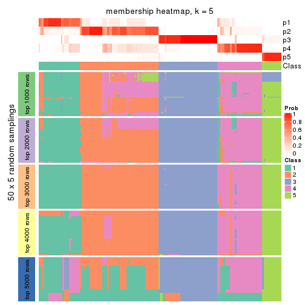
membership_heatmap(res, k = 6)
As soon as we have had the classes for columns, we can look for signatures
which are significantly different between classes which can be candidate marks
for certain classes. Following are the heatmaps for signatures.
Signature heatmaps where rows are scaled:
get_signatures(res, k = 2)
get_signatures(res, k = 3)
get_signatures(res, k = 4)
get_signatures(res, k = 5)
get_signatures(res, k = 6)
Signature heatmaps where rows are not scaled:
get_signatures(res, k = 2, scale_rows = FALSE)
get_signatures(res, k = 3, scale_rows = FALSE)
get_signatures(res, k = 4, scale_rows = FALSE)
get_signatures(res, k = 5, scale_rows = FALSE)
get_signatures(res, k = 6, scale_rows = FALSE)
Compare the overlap of signatures from different k:
compare_signatures(res)
get_signature() returns a data frame invisibly. TO get the list of signatures, the function
call should be assigned to a variable explicitly. In following code, if plot argument is set
to FALSE, no heatmap is plotted while only the differential analysis is performed.
# code only for demonstration
tb = get_signature(res, k = ..., plot = FALSE)
An example of the output of tb is:
#> which_row fdr mean_1 mean_2 scaled_mean_1 scaled_mean_2 km
#> 1 38 0.042760348 8.373488 9.131774 -0.5533452 0.5164555 1
#> 2 40 0.018707592 7.106213 8.469186 -0.6173731 0.5762149 1
#> 3 55 0.019134737 10.221463 11.207825 -0.6159697 0.5749050 1
#> 4 59 0.006059896 5.921854 7.869574 -0.6899429 0.6439467 1
#> 5 60 0.018055526 8.928898 10.211722 -0.6204761 0.5791110 1
#> 6 98 0.009384629 15.714769 14.887706 0.6635654 -0.6193277 2
...
The columns in tb are:
which_row: row indices corresponding to the input matrix.fdr: FDR for the differential test. mean_x: The mean value in group x.scaled_mean_x: The mean value in group x after rows are scaled.km: Row groups if k-means clustering is applied to rows.
UMAP plot which shows how samples are separated.
dimension_reduction(res, k = 2, method = "UMAP")
dimension_reduction(res, k = 3, method = "UMAP")
dimension_reduction(res, k = 4, method = "UMAP")
dimension_reduction(res, k = 5, method = "UMAP")
dimension_reduction(res, k = 6, method = "UMAP")
Following heatmap shows how subgroups are split when increasing k:
collect_classes(res)
If matrix rows can be associated to genes, consider to use functional_enrichment(res,
...) to perform function enrichment for the signature genes. See this vignette for more detailed explanations.
ATC:NMF*
The object with results only for a single top-value method and a single partition method
can be extracted as:
res = res_list["ATC", "NMF"]
# you can also extract it by
# res = res_list["ATC:NMF"]
A summary of res and all the functions that can be applied to it:
res
#> A 'ConsensusPartition' object with k = 2, 3, 4, 5, 6.
#> On a matrix with 15148 rows and 152 columns.
#> Top rows (1000, 2000, 3000, 4000, 5000) are extracted by 'ATC' method.
#> Subgroups are detected by 'NMF' method.
#> Performed in total 1250 partitions by row resampling.
#> Best k for subgroups seems to be 3.
#>
#> Following methods can be applied to this 'ConsensusPartition' object:
#> [1] "cola_report" "collect_classes" "collect_plots"
#> [4] "collect_stats" "colnames" "compare_signatures"
#> [7] "consensus_heatmap" "dimension_reduction" "functional_enrichment"
#> [10] "get_anno_col" "get_anno" "get_classes"
#> [13] "get_consensus" "get_matrix" "get_membership"
#> [16] "get_param" "get_signatures" "get_stats"
#> [19] "is_best_k" "is_stable_k" "membership_heatmap"
#> [22] "ncol" "nrow" "plot_ecdf"
#> [25] "rownames" "select_partition_number" "show"
#> [28] "suggest_best_k" "test_to_known_factors"
collect_plots() function collects all the plots made from res for all k (number of partitions)
into one single page to provide an easy and fast comparison between different k.
collect_plots(res)
The plots are:
- The first row: a plot of the ECDF (empirical cumulative distribution
function) curves of the consensus matrix for each
k and the heatmap of
predicted classes for each k.
- The second row: heatmaps of the consensus matrix for each
k.
- The third row: heatmaps of the membership matrix for each
k.
- The fouth row: heatmaps of the signatures for each
k.
All the plots in panels can be made by individual functions and they are
plotted later in this section.
select_partition_number() produces several plots showing different
statistics for choosing “optimized” k. There are following statistics:
- ECDF curves of the consensus matrix for each
k;
- 1-PAC. The PAC
score
measures the proportion of the ambiguous subgrouping.
- Mean silhouette score.
- Concordance. The mean probability of fiting the consensus class ids in all
partitions.
- Area increased. Denote \(A_k\) as the area under the ECDF curve for current
k, the area increased is defined as \(A_k - A_{k-1}\).
- Rand index. The percent of pairs of samples that are both in a same cluster
or both are not in a same cluster in the partition of k and k-1.
- Jaccard index. The ratio of pairs of samples are both in a same cluster in
the partition of k and k-1 and the pairs of samples are both in a same
cluster in the partition k or k-1.
The detailed explanations of these statistics can be found in the cola
vignette.
Generally speaking, lower PAC score, higher mean silhouette score or higher
concordance corresponds to better partition. Rand index and Jaccard index
measure how similar the current partition is compared to partition with k-1.
If they are too similar, we won't accept k is better than k-1.
select_partition_number(res)
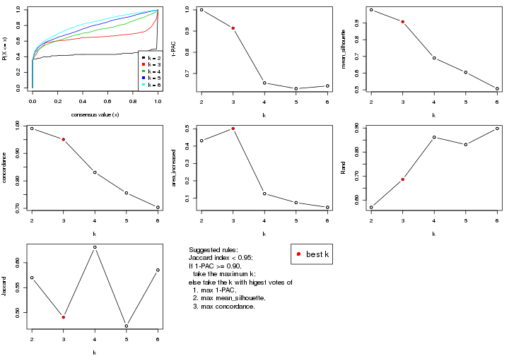
The numeric values for all these statistics can be obtained by get_stats().
get_stats(res)
#> k 1-PAC mean_silhouette concordance area_increased Rand Jaccard
#> 2 2 1.000 0.979 0.991 0.431 0.570 0.570
#> 3 3 0.914 0.908 0.951 0.502 0.686 0.491
#> 4 4 0.655 0.690 0.831 0.126 0.862 0.631
#> 5 5 0.629 0.605 0.756 0.074 0.831 0.473
#> 6 6 0.642 0.507 0.704 0.047 0.898 0.585
suggest_best_k() suggests the best \(k\) based on these statistics. The rules are as follows:
- All \(k\) with Jaccard index larger than 0.95 are removed because increasing
\(k\) does not provide enough extra information. If all \(k\) are removed, it is
marked as no subgroup is detected.
- For all \(k\) with 1-PAC score larger than 0.9, the maximal \(k\) is taken as
the best \(k\), and other \(k\) are marked as optional \(k\).
- If it does not fit the second rule. The \(k\) with the maximal vote of the
highest 1-PAC score, highest mean silhouette, and highest concordance is
taken as the best \(k\).
suggest_best_k(res)
#> [1] 3
#> attr(,"optional")
#> [1] 2
There is also optional best \(k\) = 2 that is worth to check.
Following shows the table of the partitions (You need to click the show/hide
code output link to see it). The membership matrix (columns with name p*)
is inferred by
clue::cl_consensus()
function with the SE method. Basically the value in the membership matrix
represents the probability to belong to a certain group. The finall class
label for an item is determined with the group with highest probability it
belongs to.
In get_classes() function, the entropy is calculated from the membership
matrix and the silhouette score is calculated from the consensus matrix.
show/hide code output
cbind(get_classes(res, k = 2), get_membership(res, k = 2))
#> class entropy silhouette p1 p2
#> SRR1947547 1 0.0000 0.987 1.000 0.000
#> SRR1947546 2 0.0000 0.992 0.000 1.000
#> SRR1947545 1 0.0000 0.987 1.000 0.000
#> SRR1947544 1 0.0000 0.987 1.000 0.000
#> SRR1947542 2 0.0000 0.992 0.000 1.000
#> SRR1947541 1 0.0376 0.984 0.996 0.004
#> SRR1947540 2 0.0000 0.992 0.000 1.000
#> SRR1947539 2 0.0000 0.992 0.000 1.000
#> SRR1947538 2 0.0000 0.992 0.000 1.000
#> SRR1947537 2 0.0000 0.992 0.000 1.000
#> SRR1947536 1 0.0000 0.987 1.000 0.000
#> SRR1947535 2 0.0000 0.992 0.000 1.000
#> SRR1947534 1 0.0000 0.987 1.000 0.000
#> SRR1947533 2 0.0000 0.992 0.000 1.000
#> SRR1947532 2 0.0000 0.992 0.000 1.000
#> SRR1947531 2 0.0000 0.992 0.000 1.000
#> SRR1947530 1 0.0000 0.987 1.000 0.000
#> SRR1947529 2 0.0000 0.992 0.000 1.000
#> SRR1947528 1 0.0000 0.987 1.000 0.000
#> SRR1947527 2 0.0000 0.992 0.000 1.000
#> SRR1947526 2 0.0000 0.992 0.000 1.000
#> SRR1947525 2 0.0000 0.992 0.000 1.000
#> SRR1947524 2 0.0000 0.992 0.000 1.000
#> SRR1947523 2 0.4298 0.902 0.088 0.912
#> SRR1947521 2 0.0000 0.992 0.000 1.000
#> SRR1947520 2 0.0000 0.992 0.000 1.000
#> SRR1947519 2 0.8713 0.590 0.292 0.708
#> SRR1947518 2 0.0000 0.992 0.000 1.000
#> SRR1947517 1 0.0000 0.987 1.000 0.000
#> SRR1947516 2 0.0000 0.992 0.000 1.000
#> SRR1947515 2 0.0000 0.992 0.000 1.000
#> SRR1947514 2 0.0000 0.992 0.000 1.000
#> SRR1947513 1 0.0000 0.987 1.000 0.000
#> SRR1947512 1 0.0000 0.987 1.000 0.000
#> SRR1947511 2 0.0000 0.992 0.000 1.000
#> SRR1947510 2 0.0000 0.992 0.000 1.000
#> SRR1947572 2 0.0000 0.992 0.000 1.000
#> SRR1947611 2 0.0000 0.992 0.000 1.000
#> SRR1947509 1 0.0000 0.987 1.000 0.000
#> SRR1947644 2 0.0000 0.992 0.000 1.000
#> SRR1947643 2 0.0000 0.992 0.000 1.000
#> SRR1947642 2 0.0000 0.992 0.000 1.000
#> SRR1947640 2 0.7139 0.759 0.196 0.804
#> SRR1947641 2 0.0000 0.992 0.000 1.000
#> SRR1947639 2 0.0000 0.992 0.000 1.000
#> SRR1947638 1 0.0000 0.987 1.000 0.000
#> SRR1947637 2 0.0000 0.992 0.000 1.000
#> SRR1947636 2 0.0000 0.992 0.000 1.000
#> SRR1947635 2 0.0000 0.992 0.000 1.000
#> SRR1947634 2 0.0000 0.992 0.000 1.000
#> SRR1947633 2 0.0000 0.992 0.000 1.000
#> SRR1947632 2 0.0000 0.992 0.000 1.000
#> SRR1947631 2 0.0000 0.992 0.000 1.000
#> SRR1947629 2 0.0000 0.992 0.000 1.000
#> SRR1947630 2 0.0000 0.992 0.000 1.000
#> SRR1947627 1 0.0000 0.987 1.000 0.000
#> SRR1947628 2 0.0000 0.992 0.000 1.000
#> SRR1947626 2 0.0000 0.992 0.000 1.000
#> SRR1947625 2 0.0000 0.992 0.000 1.000
#> SRR1947624 2 0.0000 0.992 0.000 1.000
#> SRR1947623 1 0.5946 0.831 0.856 0.144
#> SRR1947622 2 0.0000 0.992 0.000 1.000
#> SRR1947621 2 0.0000 0.992 0.000 1.000
#> SRR1947620 1 0.0000 0.987 1.000 0.000
#> SRR1947619 2 0.0000 0.992 0.000 1.000
#> SRR1947617 2 0.0000 0.992 0.000 1.000
#> SRR1947618 1 0.0000 0.987 1.000 0.000
#> SRR1947616 2 0.0000 0.992 0.000 1.000
#> SRR1947615 2 0.5946 0.833 0.144 0.856
#> SRR1947614 2 0.0376 0.988 0.004 0.996
#> SRR1947613 1 0.0000 0.987 1.000 0.000
#> SRR1947610 2 0.0000 0.992 0.000 1.000
#> SRR1947612 2 0.0000 0.992 0.000 1.000
#> SRR1947609 1 0.0000 0.987 1.000 0.000
#> SRR1947608 2 0.0000 0.992 0.000 1.000
#> SRR1947606 1 0.4022 0.909 0.920 0.080
#> SRR1947607 1 0.0000 0.987 1.000 0.000
#> SRR1947604 2 0.0000 0.992 0.000 1.000
#> SRR1947605 1 0.0000 0.987 1.000 0.000
#> SRR1947603 2 0.0000 0.992 0.000 1.000
#> SRR1947602 1 0.0000 0.987 1.000 0.000
#> SRR1947600 2 0.0000 0.992 0.000 1.000
#> SRR1947601 2 0.0000 0.992 0.000 1.000
#> SRR1947598 2 0.0000 0.992 0.000 1.000
#> SRR1947599 1 0.0000 0.987 1.000 0.000
#> SRR1947597 2 0.0000 0.992 0.000 1.000
#> SRR1947596 2 0.0000 0.992 0.000 1.000
#> SRR1947595 2 0.0000 0.992 0.000 1.000
#> SRR1947594 1 0.0000 0.987 1.000 0.000
#> SRR1947592 2 0.0000 0.992 0.000 1.000
#> SRR1947591 2 0.0000 0.992 0.000 1.000
#> SRR1947590 2 0.0000 0.992 0.000 1.000
#> SRR1947588 1 0.0000 0.987 1.000 0.000
#> SRR1947587 2 0.0000 0.992 0.000 1.000
#> SRR1947586 2 0.0000 0.992 0.000 1.000
#> SRR1947585 2 0.0000 0.992 0.000 1.000
#> SRR1947584 1 0.0000 0.987 1.000 0.000
#> SRR1947583 2 0.0000 0.992 0.000 1.000
#> SRR1947582 1 0.0000 0.987 1.000 0.000
#> SRR1947580 2 0.0000 0.992 0.000 1.000
#> SRR1947581 1 0.0000 0.987 1.000 0.000
#> SRR1947576 2 0.0000 0.992 0.000 1.000
#> SRR1947575 2 0.0000 0.992 0.000 1.000
#> SRR1947579 2 0.0000 0.992 0.000 1.000
#> SRR1947578 2 0.0000 0.992 0.000 1.000
#> SRR1947573 2 0.0000 0.992 0.000 1.000
#> SRR1947574 1 0.9129 0.512 0.672 0.328
#> SRR1947571 2 0.0000 0.992 0.000 1.000
#> SRR1947577 1 0.0000 0.987 1.000 0.000
#> SRR1947570 1 0.0000 0.987 1.000 0.000
#> SRR1947569 2 0.0000 0.992 0.000 1.000
#> SRR1947566 2 0.0000 0.992 0.000 1.000
#> SRR1947567 2 0.0000 0.992 0.000 1.000
#> SRR1947568 2 0.0000 0.992 0.000 1.000
#> SRR1947564 2 0.0000 0.992 0.000 1.000
#> SRR1947563 2 0.0000 0.992 0.000 1.000
#> SRR1947562 2 0.0000 0.992 0.000 1.000
#> SRR1947565 2 0.0000 0.992 0.000 1.000
#> SRR1947559 2 0.0000 0.992 0.000 1.000
#> SRR1947560 2 0.0000 0.992 0.000 1.000
#> SRR1947561 2 0.0000 0.992 0.000 1.000
#> SRR1947557 1 0.0000 0.987 1.000 0.000
#> SRR1947558 2 0.0000 0.992 0.000 1.000
#> SRR1947556 1 0.0000 0.987 1.000 0.000
#> SRR1947553 2 0.0000 0.992 0.000 1.000
#> SRR1947554 1 0.0000 0.987 1.000 0.000
#> SRR1947555 2 0.0000 0.992 0.000 1.000
#> SRR1947550 2 0.0000 0.992 0.000 1.000
#> SRR1947552 2 0.3274 0.933 0.060 0.940
#> SRR1947549 2 0.0000 0.992 0.000 1.000
#> SRR1947551 2 0.0000 0.992 0.000 1.000
#> SRR1947548 2 0.0000 0.992 0.000 1.000
#> SRR1947506 1 0.0000 0.987 1.000 0.000
#> SRR1947507 1 0.0000 0.987 1.000 0.000
#> SRR1947504 1 0.2236 0.954 0.964 0.036
#> SRR1947503 1 0.0000 0.987 1.000 0.000
#> SRR1947502 2 0.0000 0.992 0.000 1.000
#> SRR1947501 2 0.0000 0.992 0.000 1.000
#> SRR1947499 1 0.0000 0.987 1.000 0.000
#> SRR1947498 2 0.0000 0.992 0.000 1.000
#> SRR1947508 1 0.0000 0.987 1.000 0.000
#> SRR1947505 2 0.3431 0.929 0.064 0.936
#> SRR1947497 2 0.0000 0.992 0.000 1.000
#> SRR1947496 1 0.0000 0.987 1.000 0.000
#> SRR1947495 2 0.0000 0.992 0.000 1.000
#> SRR1947494 2 0.0000 0.992 0.000 1.000
#> SRR1947493 1 0.0000 0.987 1.000 0.000
#> SRR1947492 1 0.0000 0.987 1.000 0.000
#> SRR1947500 2 0.0000 0.992 0.000 1.000
#> SRR1947491 1 0.0000 0.987 1.000 0.000
#> SRR1947490 1 0.0000 0.987 1.000 0.000
#> SRR1947489 1 0.0000 0.987 1.000 0.000
show/hide code output
cbind(get_classes(res, k = 3), get_membership(res, k = 3))
#> class entropy silhouette p1 p2 p3
#> SRR1947547 1 0.6295 0.0922 0.528 0.000 0.472
#> SRR1947546 2 0.1529 0.9536 0.000 0.960 0.040
#> SRR1947545 1 0.0000 0.9494 1.000 0.000 0.000
#> SRR1947544 1 0.0000 0.9494 1.000 0.000 0.000
#> SRR1947542 2 0.2066 0.9482 0.000 0.940 0.060
#> SRR1947541 3 0.2261 0.8870 0.068 0.000 0.932
#> SRR1947540 2 0.2356 0.9433 0.000 0.928 0.072
#> SRR1947539 3 0.0000 0.9471 0.000 0.000 1.000
#> SRR1947538 2 0.0747 0.9510 0.000 0.984 0.016
#> SRR1947537 3 0.0000 0.9471 0.000 0.000 1.000
#> SRR1947536 1 0.0000 0.9494 1.000 0.000 0.000
#> SRR1947535 3 0.0000 0.9471 0.000 0.000 1.000
#> SRR1947534 1 0.1529 0.9212 0.960 0.040 0.000
#> SRR1947533 2 0.0000 0.9455 0.000 1.000 0.000
#> SRR1947532 2 0.2486 0.9476 0.008 0.932 0.060
#> SRR1947531 2 0.1289 0.9536 0.000 0.968 0.032
#> SRR1947530 1 0.0000 0.9494 1.000 0.000 0.000
#> SRR1947529 2 0.2261 0.9451 0.000 0.932 0.068
#> SRR1947528 3 0.2796 0.8639 0.092 0.000 0.908
#> SRR1947527 2 0.0000 0.9455 0.000 1.000 0.000
#> SRR1947526 2 0.1163 0.9533 0.000 0.972 0.028
#> SRR1947525 2 0.1411 0.9538 0.000 0.964 0.036
#> SRR1947524 3 0.0000 0.9471 0.000 0.000 1.000
#> SRR1947523 1 0.6264 0.3494 0.616 0.380 0.004
#> SRR1947521 3 0.0000 0.9471 0.000 0.000 1.000
#> SRR1947520 2 0.1031 0.9528 0.000 0.976 0.024
#> SRR1947519 3 0.0000 0.9471 0.000 0.000 1.000
#> SRR1947518 2 0.0000 0.9455 0.000 1.000 0.000
#> SRR1947517 3 0.2711 0.8682 0.088 0.000 0.912
#> SRR1947516 2 0.1753 0.9521 0.000 0.952 0.048
#> SRR1947515 2 0.2796 0.9310 0.000 0.908 0.092
#> SRR1947514 2 0.0000 0.9455 0.000 1.000 0.000
#> SRR1947513 1 0.0000 0.9494 1.000 0.000 0.000
#> SRR1947512 1 0.0237 0.9469 0.996 0.004 0.000
#> SRR1947511 2 0.0000 0.9455 0.000 1.000 0.000
#> SRR1947510 3 0.0000 0.9471 0.000 0.000 1.000
#> SRR1947572 2 0.0000 0.9455 0.000 1.000 0.000
#> SRR1947611 3 0.0000 0.9471 0.000 0.000 1.000
#> SRR1947509 1 0.0000 0.9494 1.000 0.000 0.000
#> SRR1947644 3 0.0000 0.9471 0.000 0.000 1.000
#> SRR1947643 2 0.1753 0.9521 0.000 0.952 0.048
#> SRR1947642 3 0.0000 0.9471 0.000 0.000 1.000
#> SRR1947640 2 0.2625 0.8812 0.084 0.916 0.000
#> SRR1947641 3 0.0000 0.9471 0.000 0.000 1.000
#> SRR1947639 2 0.0000 0.9455 0.000 1.000 0.000
#> SRR1947638 1 0.0000 0.9494 1.000 0.000 0.000
#> SRR1947637 3 0.5810 0.4791 0.000 0.336 0.664
#> SRR1947636 3 0.0000 0.9471 0.000 0.000 1.000
#> SRR1947635 2 0.2356 0.9433 0.000 0.928 0.072
#> SRR1947634 2 0.1643 0.9529 0.000 0.956 0.044
#> SRR1947633 3 0.0000 0.9471 0.000 0.000 1.000
#> SRR1947632 2 0.2796 0.9310 0.000 0.908 0.092
#> SRR1947631 3 0.0000 0.9471 0.000 0.000 1.000
#> SRR1947629 3 0.0000 0.9471 0.000 0.000 1.000
#> SRR1947630 2 0.1529 0.9538 0.000 0.960 0.040
#> SRR1947627 3 0.3752 0.8086 0.144 0.000 0.856
#> SRR1947628 2 0.2796 0.9310 0.000 0.908 0.092
#> SRR1947626 2 0.0000 0.9455 0.000 1.000 0.000
#> SRR1947625 3 0.0000 0.9471 0.000 0.000 1.000
#> SRR1947624 2 0.2448 0.9411 0.000 0.924 0.076
#> SRR1947623 2 0.3941 0.7880 0.156 0.844 0.000
#> SRR1947622 2 0.2066 0.9482 0.000 0.940 0.060
#> SRR1947621 2 0.0892 0.9520 0.000 0.980 0.020
#> SRR1947620 1 0.0000 0.9494 1.000 0.000 0.000
#> SRR1947619 3 0.5016 0.6728 0.000 0.240 0.760
#> SRR1947617 2 0.1163 0.9533 0.000 0.972 0.028
#> SRR1947618 1 0.0000 0.9494 1.000 0.000 0.000
#> SRR1947616 2 0.2796 0.9310 0.000 0.908 0.092
#> SRR1947615 3 0.3742 0.8736 0.072 0.036 0.892
#> SRR1947614 3 0.0000 0.9471 0.000 0.000 1.000
#> SRR1947613 1 0.0000 0.9494 1.000 0.000 0.000
#> SRR1947610 2 0.0000 0.9455 0.000 1.000 0.000
#> SRR1947612 2 0.0747 0.9510 0.000 0.984 0.016
#> SRR1947609 1 0.0000 0.9494 1.000 0.000 0.000
#> SRR1947608 3 0.0424 0.9421 0.000 0.008 0.992
#> SRR1947606 3 0.1753 0.9071 0.048 0.000 0.952
#> SRR1947607 1 0.0747 0.9387 0.984 0.016 0.000
#> SRR1947604 2 0.0747 0.9510 0.000 0.984 0.016
#> SRR1947605 1 0.0000 0.9494 1.000 0.000 0.000
#> SRR1947603 2 0.2711 0.9337 0.000 0.912 0.088
#> SRR1947602 1 0.0000 0.9494 1.000 0.000 0.000
#> SRR1947600 3 0.0000 0.9471 0.000 0.000 1.000
#> SRR1947601 2 0.2356 0.9433 0.000 0.928 0.072
#> SRR1947598 2 0.4842 0.7688 0.000 0.776 0.224
#> SRR1947599 1 0.0000 0.9494 1.000 0.000 0.000
#> SRR1947597 2 0.1529 0.9536 0.000 0.960 0.040
#> SRR1947596 2 0.0237 0.9469 0.000 0.996 0.004
#> SRR1947595 2 0.1411 0.9538 0.000 0.964 0.036
#> SRR1947594 1 0.0000 0.9494 1.000 0.000 0.000
#> SRR1947592 3 0.0000 0.9471 0.000 0.000 1.000
#> SRR1947591 2 0.1289 0.9536 0.000 0.968 0.032
#> SRR1947590 2 0.2537 0.9387 0.000 0.920 0.080
#> SRR1947588 1 0.0000 0.9494 1.000 0.000 0.000
#> SRR1947587 3 0.0000 0.9471 0.000 0.000 1.000
#> SRR1947586 2 0.0000 0.9455 0.000 1.000 0.000
#> SRR1947585 3 0.0000 0.9471 0.000 0.000 1.000
#> SRR1947584 1 0.0000 0.9494 1.000 0.000 0.000
#> SRR1947583 2 0.0892 0.9521 0.000 0.980 0.020
#> SRR1947582 1 0.0000 0.9494 1.000 0.000 0.000
#> SRR1947580 2 0.0000 0.9455 0.000 1.000 0.000
#> SRR1947581 1 0.0000 0.9494 1.000 0.000 0.000
#> SRR1947576 3 0.5650 0.5347 0.000 0.312 0.688
#> SRR1947575 3 0.5291 0.6236 0.000 0.268 0.732
#> SRR1947579 3 0.0000 0.9471 0.000 0.000 1.000
#> SRR1947578 2 0.2878 0.9277 0.000 0.904 0.096
#> SRR1947573 3 0.0424 0.9421 0.000 0.008 0.992
#> SRR1947574 2 0.6045 0.3483 0.380 0.620 0.000
#> SRR1947571 2 0.1643 0.9529 0.000 0.956 0.044
#> SRR1947577 1 0.0000 0.9494 1.000 0.000 0.000
#> SRR1947570 1 0.4121 0.7797 0.832 0.000 0.168
#> SRR1947569 3 0.0000 0.9471 0.000 0.000 1.000
#> SRR1947566 2 0.2796 0.9310 0.000 0.908 0.092
#> SRR1947567 2 0.1411 0.9538 0.000 0.964 0.036
#> SRR1947568 2 0.0000 0.9455 0.000 1.000 0.000
#> SRR1947564 2 0.1529 0.9536 0.000 0.960 0.040
#> SRR1947563 3 0.0747 0.9361 0.000 0.016 0.984
#> SRR1947562 2 0.1753 0.9521 0.000 0.952 0.048
#> SRR1947565 3 0.0000 0.9471 0.000 0.000 1.000
#> SRR1947559 2 0.1411 0.9538 0.000 0.964 0.036
#> SRR1947560 3 0.0000 0.9471 0.000 0.000 1.000
#> SRR1947561 2 0.2261 0.9451 0.000 0.932 0.068
#> SRR1947557 1 0.0000 0.9494 1.000 0.000 0.000
#> SRR1947558 3 0.0000 0.9471 0.000 0.000 1.000
#> SRR1947556 1 0.2066 0.9063 0.940 0.060 0.000
#> SRR1947553 2 0.0000 0.9455 0.000 1.000 0.000
#> SRR1947554 1 0.0747 0.9387 0.984 0.016 0.000
#> SRR1947555 2 0.2796 0.9310 0.000 0.908 0.092
#> SRR1947550 2 0.1529 0.9536 0.000 0.960 0.040
#> SRR1947552 1 0.5092 0.7386 0.804 0.176 0.020
#> SRR1947549 3 0.1031 0.9296 0.000 0.024 0.976
#> SRR1947551 3 0.0000 0.9471 0.000 0.000 1.000
#> SRR1947548 2 0.2625 0.9363 0.000 0.916 0.084
#> SRR1947506 1 0.3752 0.8144 0.856 0.000 0.144
#> SRR1947507 1 0.0000 0.9494 1.000 0.000 0.000
#> SRR1947504 2 0.5363 0.5895 0.276 0.724 0.000
#> SRR1947503 1 0.0000 0.9494 1.000 0.000 0.000
#> SRR1947502 2 0.1031 0.9527 0.000 0.976 0.024
#> SRR1947501 2 0.2796 0.9310 0.000 0.908 0.092
#> SRR1947499 1 0.0000 0.9494 1.000 0.000 0.000
#> SRR1947498 3 0.0000 0.9471 0.000 0.000 1.000
#> SRR1947508 1 0.1643 0.9163 0.956 0.000 0.044
#> SRR1947505 1 0.5873 0.5472 0.684 0.004 0.312
#> SRR1947497 2 0.0000 0.9455 0.000 1.000 0.000
#> SRR1947496 1 0.0000 0.9494 1.000 0.000 0.000
#> SRR1947495 2 0.0000 0.9455 0.000 1.000 0.000
#> SRR1947494 2 0.4887 0.8856 0.060 0.844 0.096
#> SRR1947493 1 0.0000 0.9494 1.000 0.000 0.000
#> SRR1947492 1 0.0000 0.9494 1.000 0.000 0.000
#> SRR1947500 2 0.0000 0.9455 0.000 1.000 0.000
#> SRR1947491 1 0.0000 0.9494 1.000 0.000 0.000
#> SRR1947490 1 0.0000 0.9494 1.000 0.000 0.000
#> SRR1947489 3 0.3192 0.8461 0.112 0.000 0.888
show/hide code output
cbind(get_classes(res, k = 4), get_membership(res, k = 4))
#> class entropy silhouette p1 p2 p3 p4
#> SRR1947547 1 0.5102 0.6253 0.748 0.000 0.188 0.064
#> SRR1947546 2 0.2921 0.8248 0.000 0.860 0.000 0.140
#> SRR1947545 1 0.0469 0.8989 0.988 0.000 0.000 0.012
#> SRR1947544 1 0.3942 0.6922 0.764 0.000 0.000 0.236
#> SRR1947542 2 0.4933 0.4442 0.000 0.568 0.000 0.432
#> SRR1947541 3 0.5964 0.5591 0.108 0.000 0.684 0.208
#> SRR1947540 2 0.3400 0.8043 0.000 0.820 0.000 0.180
#> SRR1947539 3 0.0000 0.8089 0.000 0.000 1.000 0.000
#> SRR1947538 4 0.4989 -0.2265 0.000 0.472 0.000 0.528
#> SRR1947537 4 0.5376 0.3118 0.000 0.016 0.396 0.588
#> SRR1947536 1 0.1004 0.8872 0.972 0.000 0.024 0.004
#> SRR1947535 3 0.3450 0.7387 0.000 0.008 0.836 0.156
#> SRR1947534 1 0.4035 0.7457 0.804 0.176 0.000 0.020
#> SRR1947533 2 0.0336 0.8146 0.000 0.992 0.000 0.008
#> SRR1947532 4 0.4199 0.6328 0.008 0.060 0.096 0.836
#> SRR1947531 2 0.0336 0.8186 0.000 0.992 0.000 0.008
#> SRR1947530 1 0.0188 0.8987 0.996 0.000 0.000 0.004
#> SRR1947529 2 0.2011 0.8356 0.000 0.920 0.000 0.080
#> SRR1947528 3 0.2197 0.7759 0.080 0.000 0.916 0.004
#> SRR1947527 2 0.0657 0.8130 0.004 0.984 0.000 0.012
#> SRR1947526 2 0.0469 0.8194 0.000 0.988 0.000 0.012
#> SRR1947525 2 0.3837 0.7763 0.000 0.776 0.000 0.224
#> SRR1947524 3 0.0469 0.8097 0.000 0.000 0.988 0.012
#> SRR1947523 1 0.5113 0.7197 0.760 0.088 0.000 0.152
#> SRR1947521 3 0.2345 0.7749 0.000 0.000 0.900 0.100
#> SRR1947520 2 0.2266 0.7608 0.000 0.912 0.004 0.084
#> SRR1947519 3 0.3969 0.7146 0.016 0.000 0.804 0.180
#> SRR1947518 2 0.3837 0.7271 0.000 0.776 0.000 0.224
#> SRR1947517 3 0.3617 0.7463 0.064 0.000 0.860 0.076
#> SRR1947516 2 0.2704 0.8286 0.000 0.876 0.000 0.124
#> SRR1947515 4 0.3840 0.6310 0.000 0.052 0.104 0.844
#> SRR1947514 2 0.0336 0.8208 0.000 0.992 0.000 0.008
#> SRR1947513 1 0.0000 0.8989 1.000 0.000 0.000 0.000
#> SRR1947512 1 0.1256 0.8919 0.964 0.008 0.000 0.028
#> SRR1947511 2 0.0336 0.8146 0.000 0.992 0.000 0.008
#> SRR1947510 3 0.2976 0.7621 0.000 0.008 0.872 0.120
#> SRR1947572 2 0.5000 0.2992 0.000 0.504 0.000 0.496
#> SRR1947611 3 0.3935 0.7338 0.000 0.060 0.840 0.100
#> SRR1947509 1 0.0895 0.8905 0.976 0.000 0.020 0.004
#> SRR1947644 3 0.1940 0.7853 0.000 0.000 0.924 0.076
#> SRR1947643 2 0.0336 0.8146 0.000 0.992 0.000 0.008
#> SRR1947642 3 0.2611 0.7863 0.008 0.000 0.896 0.096
#> SRR1947640 1 0.5295 0.1007 0.504 0.488 0.000 0.008
#> SRR1947641 3 0.0336 0.8097 0.000 0.000 0.992 0.008
#> SRR1947639 2 0.3569 0.8017 0.000 0.804 0.000 0.196
#> SRR1947638 1 0.0000 0.8989 1.000 0.000 0.000 0.000
#> SRR1947637 4 0.7733 0.1327 0.000 0.304 0.256 0.440
#> SRR1947636 3 0.2530 0.7762 0.000 0.000 0.888 0.112
#> SRR1947635 2 0.4262 0.7593 0.008 0.756 0.000 0.236
#> SRR1947634 2 0.1489 0.8134 0.004 0.952 0.000 0.044
#> SRR1947633 3 0.0000 0.8089 0.000 0.000 1.000 0.000
#> SRR1947632 2 0.4855 0.4923 0.000 0.600 0.000 0.400
#> SRR1947631 3 0.3400 0.7214 0.000 0.000 0.820 0.180
#> SRR1947629 3 0.1716 0.7991 0.000 0.000 0.936 0.064
#> SRR1947630 2 0.3994 0.6790 0.004 0.828 0.028 0.140
#> SRR1947627 3 0.5158 0.0908 0.472 0.000 0.524 0.004
#> SRR1947628 4 0.5630 0.1957 0.000 0.360 0.032 0.608
#> SRR1947626 2 0.0921 0.8258 0.000 0.972 0.000 0.028
#> SRR1947625 3 0.1637 0.8002 0.000 0.000 0.940 0.060
#> SRR1947624 2 0.3852 0.7343 0.000 0.800 0.008 0.192
#> SRR1947623 1 0.6352 0.4580 0.632 0.260 0.000 0.108
#> SRR1947622 2 0.4008 0.7513 0.000 0.756 0.000 0.244
#> SRR1947621 2 0.1792 0.8337 0.000 0.932 0.000 0.068
#> SRR1947620 1 0.0469 0.8989 0.988 0.000 0.000 0.012
#> SRR1947619 4 0.5334 0.4958 0.000 0.036 0.284 0.680
#> SRR1947617 2 0.2081 0.8344 0.000 0.916 0.000 0.084
#> SRR1947618 1 0.0188 0.8987 0.996 0.000 0.000 0.004
#> SRR1947616 2 0.3306 0.8219 0.000 0.840 0.004 0.156
#> SRR1947615 4 0.6486 0.4641 0.088 0.012 0.256 0.644
#> SRR1947614 3 0.2814 0.7587 0.000 0.000 0.868 0.132
#> SRR1947613 1 0.0592 0.8984 0.984 0.000 0.000 0.016
#> SRR1947610 2 0.1940 0.8024 0.000 0.924 0.000 0.076
#> SRR1947612 2 0.2216 0.8335 0.000 0.908 0.000 0.092
#> SRR1947609 1 0.5075 0.5090 0.644 0.012 0.000 0.344
#> SRR1947608 4 0.5649 0.4021 0.000 0.036 0.344 0.620
#> SRR1947606 3 0.1042 0.8092 0.008 0.000 0.972 0.020
#> SRR1947607 1 0.2706 0.8415 0.900 0.080 0.000 0.020
#> SRR1947604 4 0.3494 0.5682 0.000 0.172 0.004 0.824
#> SRR1947605 1 0.0188 0.8987 0.996 0.000 0.000 0.004
#> SRR1947603 2 0.4134 0.7374 0.000 0.740 0.000 0.260
#> SRR1947602 1 0.0188 0.8987 0.996 0.000 0.000 0.004
#> SRR1947600 3 0.0707 0.8091 0.000 0.000 0.980 0.020
#> SRR1947601 2 0.2921 0.8240 0.000 0.860 0.000 0.140
#> SRR1947598 4 0.3812 0.6118 0.000 0.028 0.140 0.832
#> SRR1947599 4 0.5464 -0.1848 0.492 0.004 0.008 0.496
#> SRR1947597 2 0.3569 0.7930 0.000 0.804 0.000 0.196
#> SRR1947596 4 0.3947 0.6273 0.004 0.116 0.040 0.840
#> SRR1947595 2 0.1302 0.8303 0.000 0.956 0.000 0.044
#> SRR1947594 1 0.0592 0.8984 0.984 0.000 0.000 0.016
#> SRR1947592 3 0.4059 0.6641 0.000 0.012 0.788 0.200
#> SRR1947591 2 0.1867 0.8343 0.000 0.928 0.000 0.072
#> SRR1947590 4 0.3899 0.6294 0.000 0.052 0.108 0.840
#> SRR1947588 1 0.0592 0.8984 0.984 0.000 0.000 0.016
#> SRR1947587 3 0.4040 0.6454 0.000 0.000 0.752 0.248
#> SRR1947586 2 0.1209 0.8056 0.004 0.964 0.000 0.032
#> SRR1947585 3 0.0469 0.8097 0.000 0.000 0.988 0.012
#> SRR1947584 1 0.0592 0.8975 0.984 0.000 0.000 0.016
#> SRR1947583 2 0.2401 0.8353 0.004 0.904 0.000 0.092
#> SRR1947582 1 0.0188 0.8987 0.996 0.000 0.000 0.004
#> SRR1947580 2 0.0336 0.8141 0.000 0.992 0.000 0.008
#> SRR1947581 1 0.1118 0.8910 0.964 0.000 0.000 0.036
#> SRR1947576 3 0.7640 0.0861 0.000 0.280 0.468 0.252
#> SRR1947575 4 0.7825 0.3036 0.000 0.304 0.284 0.412
#> SRR1947579 3 0.2814 0.7587 0.000 0.000 0.868 0.132
#> SRR1947578 2 0.4792 0.6561 0.000 0.680 0.008 0.312
#> SRR1947573 3 0.5200 0.5211 0.000 0.072 0.744 0.184
#> SRR1947574 2 0.5099 0.2302 0.380 0.612 0.000 0.008
#> SRR1947571 4 0.4008 0.4575 0.000 0.244 0.000 0.756
#> SRR1947577 1 0.0188 0.8987 0.996 0.000 0.000 0.004
#> SRR1947570 1 0.6245 0.4826 0.668 0.000 0.164 0.168
#> SRR1947569 3 0.3583 0.7170 0.000 0.004 0.816 0.180
#> SRR1947566 2 0.4155 0.7697 0.000 0.756 0.004 0.240
#> SRR1947567 2 0.3444 0.8009 0.000 0.816 0.000 0.184
#> SRR1947568 2 0.2011 0.8349 0.000 0.920 0.000 0.080
#> SRR1947564 2 0.3801 0.7737 0.000 0.780 0.000 0.220
#> SRR1947563 4 0.6788 0.4963 0.000 0.144 0.264 0.592
#> SRR1947562 4 0.4985 -0.2121 0.000 0.468 0.000 0.532
#> SRR1947565 3 0.5070 0.1975 0.000 0.004 0.580 0.416
#> SRR1947559 2 0.3801 0.7740 0.000 0.780 0.000 0.220
#> SRR1947560 3 0.4388 0.7089 0.000 0.060 0.808 0.132
#> SRR1947561 2 0.3123 0.8177 0.000 0.844 0.000 0.156
#> SRR1947557 1 0.0592 0.8984 0.984 0.000 0.000 0.016
#> SRR1947558 3 0.2466 0.7843 0.000 0.004 0.900 0.096
#> SRR1947556 4 0.6232 -0.1249 0.472 0.036 0.008 0.484
#> SRR1947553 2 0.1637 0.8148 0.000 0.940 0.000 0.060
#> SRR1947554 1 0.4507 0.6824 0.756 0.224 0.000 0.020
#> SRR1947555 2 0.4722 0.7129 0.000 0.692 0.008 0.300
#> SRR1947550 2 0.4500 0.6664 0.000 0.684 0.000 0.316
#> SRR1947552 4 0.4931 0.5879 0.056 0.016 0.136 0.792
#> SRR1947549 4 0.7125 0.2927 0.000 0.132 0.392 0.476
#> SRR1947551 3 0.3384 0.7565 0.000 0.024 0.860 0.116
#> SRR1947548 4 0.4030 0.6361 0.000 0.092 0.072 0.836
#> SRR1947506 1 0.0376 0.8982 0.992 0.000 0.004 0.004
#> SRR1947507 1 0.0188 0.8991 0.996 0.000 0.000 0.004
#> SRR1947504 1 0.6240 0.5472 0.668 0.156 0.000 0.176
#> SRR1947503 1 0.1004 0.8958 0.972 0.004 0.000 0.024
#> SRR1947502 2 0.2149 0.8344 0.000 0.912 0.000 0.088
#> SRR1947501 2 0.4643 0.6091 0.000 0.656 0.000 0.344
#> SRR1947499 1 0.0188 0.8987 0.996 0.000 0.000 0.004
#> SRR1947498 3 0.0336 0.8097 0.000 0.000 0.992 0.008
#> SRR1947508 1 0.1489 0.8722 0.952 0.000 0.044 0.004
#> SRR1947505 4 0.8237 0.2178 0.316 0.012 0.284 0.388
#> SRR1947497 2 0.0336 0.8141 0.000 0.992 0.000 0.008
#> SRR1947496 1 0.0592 0.8984 0.984 0.000 0.000 0.016
#> SRR1947495 2 0.0376 0.8135 0.004 0.992 0.000 0.004
#> SRR1947494 4 0.4819 0.6265 0.028 0.048 0.116 0.808
#> SRR1947493 1 0.0188 0.8987 0.996 0.000 0.000 0.004
#> SRR1947492 1 0.0592 0.8984 0.984 0.000 0.000 0.016
#> SRR1947500 2 0.2402 0.7690 0.076 0.912 0.000 0.012
#> SRR1947491 1 0.0707 0.8924 0.980 0.020 0.000 0.000
#> SRR1947490 1 0.0592 0.8984 0.984 0.000 0.000 0.016
#> SRR1947489 4 0.7899 0.1621 0.324 0.000 0.304 0.372
show/hide code output
cbind(get_classes(res, k = 5), get_membership(res, k = 5))
#> class entropy silhouette p1 p2 p3 p4 p5
#> SRR1947547 3 0.5588 0.212221 0.436 0.000 0.500 0.004 0.060
#> SRR1947546 2 0.4562 -0.440204 0.000 0.500 0.008 0.492 0.000
#> SRR1947545 1 0.1608 0.856218 0.928 0.000 0.000 0.072 0.000
#> SRR1947544 1 0.6122 0.337568 0.512 0.000 0.348 0.140 0.000
#> SRR1947542 2 0.3663 0.595117 0.000 0.776 0.208 0.016 0.000
#> SRR1947541 3 0.4686 0.553301 0.104 0.000 0.736 0.000 0.160
#> SRR1947540 2 0.3611 0.575882 0.000 0.780 0.008 0.208 0.004
#> SRR1947539 5 0.1430 0.831409 0.000 0.000 0.052 0.004 0.944
#> SRR1947538 3 0.4914 0.576231 0.000 0.204 0.704 0.092 0.000
#> SRR1947537 3 0.5655 0.319915 0.000 0.392 0.544 0.016 0.048
#> SRR1947536 1 0.3455 0.748475 0.844 0.000 0.068 0.004 0.084
#> SRR1947535 3 0.3949 0.424672 0.000 0.004 0.696 0.000 0.300
#> SRR1947534 4 0.4299 -0.197462 0.388 0.000 0.004 0.608 0.000
#> SRR1947533 4 0.4482 0.667863 0.000 0.376 0.000 0.612 0.012
#> SRR1947532 3 0.2032 0.670208 0.004 0.052 0.924 0.020 0.000
#> SRR1947531 4 0.4220 0.725720 0.008 0.300 0.004 0.688 0.000
#> SRR1947530 1 0.0566 0.848805 0.984 0.000 0.012 0.004 0.000
#> SRR1947529 2 0.2522 0.657030 0.000 0.880 0.000 0.108 0.012
#> SRR1947528 1 0.5330 0.421294 0.620 0.000 0.064 0.004 0.312
#> SRR1947527 4 0.3395 0.720379 0.000 0.236 0.000 0.764 0.000
#> SRR1947526 2 0.3236 0.601605 0.000 0.828 0.000 0.152 0.020
#> SRR1947525 2 0.1668 0.683280 0.000 0.940 0.032 0.028 0.000
#> SRR1947524 5 0.2230 0.811765 0.000 0.000 0.116 0.000 0.884
#> SRR1947523 3 0.7210 0.451470 0.184 0.060 0.568 0.176 0.012
#> SRR1947521 5 0.1041 0.830632 0.000 0.000 0.032 0.004 0.964
#> SRR1947520 4 0.5047 0.717225 0.000 0.284 0.000 0.652 0.064
#> SRR1947519 3 0.5848 0.402119 0.168 0.000 0.604 0.000 0.228
#> SRR1947518 4 0.4094 0.551259 0.000 0.128 0.084 0.788 0.000
#> SRR1947517 5 0.1701 0.824655 0.016 0.000 0.028 0.012 0.944
#> SRR1947516 2 0.1965 0.656034 0.000 0.904 0.000 0.096 0.000
#> SRR1947515 3 0.2179 0.672195 0.000 0.100 0.896 0.000 0.004
#> SRR1947514 2 0.3983 0.167138 0.000 0.660 0.000 0.340 0.000
#> SRR1947513 1 0.0693 0.851925 0.980 0.000 0.008 0.012 0.000
#> SRR1947512 1 0.3333 0.821437 0.788 0.000 0.004 0.208 0.000
#> SRR1947511 4 0.4161 0.722886 0.000 0.280 0.000 0.704 0.016
#> SRR1947510 5 0.1195 0.803886 0.000 0.028 0.000 0.012 0.960
#> SRR1947572 2 0.6225 0.255149 0.004 0.472 0.124 0.400 0.000
#> SRR1947611 5 0.1557 0.789645 0.000 0.052 0.000 0.008 0.940
#> SRR1947509 1 0.2597 0.796586 0.896 0.000 0.040 0.004 0.060
#> SRR1947644 5 0.1205 0.831644 0.000 0.000 0.040 0.004 0.956
#> SRR1947643 4 0.4613 0.685497 0.000 0.360 0.000 0.620 0.020
#> SRR1947642 3 0.6356 0.096728 0.168 0.000 0.468 0.000 0.364
#> SRR1947640 4 0.6464 0.432282 0.304 0.168 0.008 0.520 0.000
#> SRR1947641 5 0.1908 0.821519 0.000 0.000 0.092 0.000 0.908
#> SRR1947639 2 0.3151 0.627477 0.000 0.836 0.020 0.144 0.000
#> SRR1947638 1 0.0693 0.853146 0.980 0.000 0.008 0.012 0.000
#> SRR1947637 2 0.4160 0.575027 0.000 0.772 0.008 0.036 0.184
#> SRR1947636 5 0.5046 -0.000475 0.000 0.032 0.468 0.000 0.500
#> SRR1947635 2 0.7296 0.145880 0.048 0.448 0.356 0.144 0.004
#> SRR1947634 2 0.4724 0.524544 0.000 0.732 0.000 0.164 0.104
#> SRR1947633 5 0.1282 0.831802 0.000 0.000 0.044 0.004 0.952
#> SRR1947632 2 0.2685 0.656707 0.000 0.880 0.092 0.028 0.000
#> SRR1947631 3 0.4240 0.447285 0.012 0.004 0.700 0.000 0.284
#> SRR1947629 5 0.5182 0.170710 0.000 0.044 0.412 0.000 0.544
#> SRR1947630 4 0.6724 0.467473 0.000 0.284 0.000 0.420 0.296
#> SRR1947627 5 0.5810 0.391239 0.364 0.000 0.088 0.004 0.544
#> SRR1947628 2 0.4829 -0.048808 0.000 0.500 0.480 0.020 0.000
#> SRR1947626 4 0.4390 0.579857 0.000 0.428 0.004 0.568 0.000
#> SRR1947625 5 0.4546 0.149572 0.000 0.008 0.460 0.000 0.532
#> SRR1947624 2 0.3590 0.625590 0.000 0.828 0.000 0.080 0.092
#> SRR1947623 1 0.5012 0.665341 0.600 0.016 0.016 0.368 0.000
#> SRR1947622 2 0.1310 0.683676 0.000 0.956 0.024 0.020 0.000
#> SRR1947621 2 0.2329 0.631444 0.000 0.876 0.000 0.124 0.000
#> SRR1947620 1 0.0290 0.851131 0.992 0.000 0.008 0.000 0.000
#> SRR1947619 3 0.4905 0.092537 0.000 0.476 0.500 0.000 0.024
#> SRR1947617 2 0.2966 0.569159 0.000 0.816 0.000 0.184 0.000
#> SRR1947618 1 0.0290 0.851131 0.992 0.000 0.008 0.000 0.000
#> SRR1947616 2 0.2522 0.645456 0.000 0.880 0.000 0.108 0.012
#> SRR1947615 3 0.2459 0.642197 0.052 0.004 0.908 0.004 0.032
#> SRR1947614 5 0.0798 0.825612 0.000 0.000 0.016 0.008 0.976
#> SRR1947613 1 0.2471 0.848732 0.864 0.000 0.000 0.136 0.000
#> SRR1947610 4 0.4703 0.681630 0.000 0.340 0.028 0.632 0.000
#> SRR1947612 2 0.2891 0.582457 0.000 0.824 0.000 0.176 0.000
#> SRR1947609 3 0.4986 0.157760 0.444 0.012 0.532 0.012 0.000
#> SRR1947608 3 0.5581 0.225038 0.000 0.428 0.508 0.004 0.060
#> SRR1947606 5 0.2773 0.772456 0.000 0.000 0.164 0.000 0.836
#> SRR1947607 1 0.3684 0.778337 0.720 0.000 0.000 0.280 0.000
#> SRR1947604 3 0.2812 0.671907 0.004 0.096 0.876 0.024 0.000
#> SRR1947605 1 0.0609 0.855034 0.980 0.000 0.000 0.020 0.000
#> SRR1947603 2 0.0727 0.687464 0.000 0.980 0.004 0.012 0.004
#> SRR1947602 1 0.0566 0.848805 0.984 0.000 0.012 0.004 0.000
#> SRR1947600 5 0.2471 0.798209 0.000 0.000 0.136 0.000 0.864
#> SRR1947601 2 0.1740 0.674792 0.000 0.932 0.000 0.056 0.012
#> SRR1947598 3 0.2068 0.672315 0.000 0.092 0.904 0.000 0.004
#> SRR1947599 3 0.3700 0.606790 0.240 0.008 0.752 0.000 0.000
#> SRR1947597 2 0.0703 0.686040 0.000 0.976 0.000 0.024 0.000
#> SRR1947596 3 0.2972 0.670224 0.004 0.108 0.864 0.024 0.000
#> SRR1947595 4 0.4499 0.546227 0.000 0.408 0.004 0.584 0.004
#> SRR1947594 1 0.2773 0.841199 0.836 0.000 0.000 0.164 0.000
#> SRR1947592 3 0.5675 0.303925 0.000 0.092 0.556 0.000 0.352
#> SRR1947591 2 0.2732 0.597910 0.000 0.840 0.000 0.160 0.000
#> SRR1947590 3 0.2230 0.670610 0.000 0.116 0.884 0.000 0.000
#> SRR1947588 1 0.3086 0.833655 0.816 0.000 0.004 0.180 0.000
#> SRR1947587 3 0.2833 0.610218 0.012 0.004 0.864 0.000 0.120
#> SRR1947586 4 0.3807 0.720002 0.000 0.240 0.012 0.748 0.000
#> SRR1947585 5 0.2074 0.818340 0.000 0.000 0.104 0.000 0.896
#> SRR1947584 1 0.2891 0.837015 0.824 0.000 0.000 0.176 0.000
#> SRR1947583 2 0.5543 0.323706 0.064 0.624 0.008 0.300 0.004
#> SRR1947582 1 0.0451 0.850207 0.988 0.000 0.008 0.004 0.000
#> SRR1947580 4 0.4238 0.668599 0.000 0.368 0.004 0.628 0.000
#> SRR1947581 1 0.3333 0.821721 0.788 0.000 0.004 0.208 0.000
#> SRR1947576 2 0.4874 0.432324 0.000 0.632 0.000 0.040 0.328
#> SRR1947575 2 0.3985 0.611632 0.000 0.812 0.128 0.036 0.024
#> SRR1947579 5 0.0807 0.822353 0.000 0.000 0.012 0.012 0.976
#> SRR1947578 2 0.4180 0.568559 0.000 0.768 0.192 0.028 0.012
#> SRR1947573 2 0.4727 0.491308 0.000 0.692 0.012 0.028 0.268
#> SRR1947574 4 0.3520 0.595775 0.080 0.076 0.004 0.840 0.000
#> SRR1947571 3 0.4025 0.510827 0.000 0.292 0.700 0.008 0.000
#> SRR1947577 1 0.0290 0.851131 0.992 0.000 0.008 0.000 0.000
#> SRR1947570 3 0.4218 0.508149 0.332 0.000 0.660 0.000 0.008
#> SRR1947569 3 0.5219 0.427650 0.000 0.060 0.636 0.004 0.300
#> SRR1947566 2 0.1018 0.686059 0.000 0.968 0.000 0.016 0.016
#> SRR1947567 2 0.4400 0.289862 0.000 0.672 0.020 0.308 0.000
#> SRR1947568 4 0.4434 0.259069 0.000 0.460 0.004 0.536 0.000
#> SRR1947564 2 0.1041 0.685942 0.000 0.964 0.004 0.032 0.000
#> SRR1947563 2 0.4805 0.456397 0.000 0.688 0.268 0.032 0.012
#> SRR1947562 2 0.5039 0.003111 0.000 0.512 0.456 0.032 0.000
#> SRR1947565 3 0.6177 0.488347 0.000 0.212 0.556 0.000 0.232
#> SRR1947559 2 0.1894 0.674499 0.000 0.920 0.008 0.072 0.000
#> SRR1947560 5 0.1626 0.791994 0.000 0.044 0.000 0.016 0.940
#> SRR1947561 2 0.1502 0.675358 0.000 0.940 0.000 0.056 0.004
#> SRR1947557 1 0.2377 0.850011 0.872 0.000 0.000 0.128 0.000
#> SRR1947558 3 0.4030 0.327412 0.000 0.000 0.648 0.000 0.352
#> SRR1947556 3 0.5907 0.366540 0.284 0.004 0.588 0.124 0.000
#> SRR1947553 4 0.4846 0.632679 0.000 0.384 0.028 0.588 0.000
#> SRR1947554 1 0.4299 0.659002 0.608 0.000 0.004 0.388 0.000
#> SRR1947555 2 0.1195 0.684593 0.000 0.960 0.000 0.012 0.028
#> SRR1947550 2 0.5155 0.535795 0.000 0.704 0.160 0.132 0.004
#> SRR1947552 3 0.4211 0.666508 0.080 0.116 0.796 0.004 0.004
#> SRR1947549 2 0.4734 0.515628 0.000 0.720 0.228 0.032 0.020
#> SRR1947551 5 0.2349 0.761501 0.000 0.084 0.004 0.012 0.900
#> SRR1947548 3 0.2824 0.670504 0.000 0.116 0.864 0.020 0.000
#> SRR1947506 1 0.0566 0.848805 0.984 0.000 0.012 0.004 0.000
#> SRR1947507 1 0.1908 0.854972 0.908 0.000 0.000 0.092 0.000
#> SRR1947504 1 0.4623 0.713495 0.640 0.008 0.012 0.340 0.000
#> SRR1947503 1 0.3828 0.777764 0.808 0.000 0.120 0.072 0.000
#> SRR1947502 2 0.2773 0.595704 0.000 0.836 0.000 0.164 0.000
#> SRR1947501 2 0.2362 0.666546 0.000 0.900 0.076 0.024 0.000
#> SRR1947499 1 0.0566 0.848805 0.984 0.000 0.012 0.004 0.000
#> SRR1947498 5 0.1965 0.820404 0.000 0.000 0.096 0.000 0.904
#> SRR1947508 1 0.4314 0.666930 0.780 0.000 0.092 0.004 0.124
#> SRR1947505 3 0.4965 0.535189 0.320 0.032 0.640 0.000 0.008
#> SRR1947497 4 0.3816 0.724246 0.000 0.304 0.000 0.696 0.000
#> SRR1947496 1 0.2970 0.838576 0.828 0.000 0.004 0.168 0.000
#> SRR1947495 4 0.3752 0.725365 0.000 0.292 0.000 0.708 0.000
#> SRR1947494 3 0.1990 0.671692 0.000 0.068 0.920 0.004 0.008
#> SRR1947493 1 0.0290 0.851131 0.992 0.000 0.008 0.000 0.000
#> SRR1947492 1 0.2424 0.849417 0.868 0.000 0.000 0.132 0.000
#> SRR1947500 4 0.5982 0.632655 0.144 0.240 0.008 0.608 0.000
#> SRR1947491 1 0.3584 0.772167 0.820 0.012 0.020 0.148 0.000
#> SRR1947490 1 0.2230 0.852158 0.884 0.000 0.000 0.116 0.000
#> SRR1947489 3 0.2505 0.644346 0.092 0.000 0.888 0.000 0.020
show/hide code output
cbind(get_classes(res, k = 6), get_membership(res, k = 6))
#> class entropy silhouette p1 p2 p3 p4 p5 p6
#> SRR1947547 3 0.3221 0.453115 0.188 0.000 0.792 0.000 0.020 0.000
#> SRR1947546 2 0.3705 0.530391 0.000 0.776 0.008 0.180 0.000 0.036
#> SRR1947545 1 0.2941 0.756087 0.856 0.000 0.004 0.064 0.000 0.076
#> SRR1947544 1 0.6779 0.270426 0.416 0.000 0.068 0.168 0.000 0.348
#> SRR1947542 2 0.2390 0.702801 0.000 0.896 0.052 0.008 0.000 0.044
#> SRR1947541 3 0.6822 0.343377 0.212 0.000 0.508 0.000 0.128 0.152
#> SRR1947540 4 0.5821 0.374719 0.000 0.388 0.012 0.468 0.000 0.132
#> SRR1947539 5 0.2325 0.755598 0.000 0.008 0.100 0.000 0.884 0.008
#> SRR1947538 2 0.7411 -0.124214 0.000 0.348 0.312 0.140 0.000 0.200
#> SRR1947537 6 0.7302 0.170963 0.000 0.216 0.264 0.000 0.124 0.396
#> SRR1947536 1 0.1594 0.737517 0.932 0.000 0.052 0.000 0.016 0.000
#> SRR1947535 3 0.2373 0.545566 0.000 0.000 0.880 0.008 0.104 0.008
#> SRR1947534 4 0.5155 -0.067999 0.344 0.000 0.000 0.556 0.000 0.100
#> SRR1947533 4 0.4117 0.643132 0.000 0.256 0.000 0.708 0.016 0.020
#> SRR1947532 3 0.2846 0.558492 0.000 0.004 0.840 0.016 0.000 0.140
#> SRR1947531 4 0.3636 0.663125 0.000 0.208 0.016 0.764 0.000 0.012
#> SRR1947530 1 0.0146 0.768171 0.996 0.000 0.004 0.000 0.000 0.000
#> SRR1947529 2 0.6415 -0.242906 0.000 0.460 0.000 0.356 0.056 0.128
#> SRR1947528 1 0.5519 0.299624 0.564 0.000 0.048 0.000 0.336 0.052
#> SRR1947527 4 0.3806 0.652580 0.000 0.164 0.000 0.768 0.000 0.068
#> SRR1947526 2 0.4810 0.165843 0.000 0.604 0.000 0.340 0.012 0.044
#> SRR1947525 2 0.3563 0.538942 0.000 0.664 0.000 0.000 0.000 0.336
#> SRR1947524 5 0.4118 0.544040 0.000 0.004 0.396 0.000 0.592 0.008
#> SRR1947523 3 0.4615 0.423219 0.064 0.008 0.732 0.176 0.000 0.020
#> SRR1947521 5 0.0508 0.754424 0.000 0.000 0.012 0.000 0.984 0.004
#> SRR1947520 4 0.5129 0.642654 0.000 0.216 0.000 0.656 0.112 0.016
#> SRR1947519 3 0.3282 0.554950 0.092 0.000 0.840 0.004 0.056 0.008
#> SRR1947518 4 0.7019 0.187080 0.000 0.156 0.168 0.484 0.000 0.192
#> SRR1947517 5 0.0405 0.751406 0.008 0.000 0.000 0.000 0.988 0.004
#> SRR1947516 2 0.0865 0.691916 0.000 0.964 0.000 0.036 0.000 0.000
#> SRR1947515 3 0.3767 0.479027 0.000 0.012 0.708 0.004 0.000 0.276
#> SRR1947514 2 0.3543 0.404501 0.000 0.720 0.000 0.272 0.004 0.004
#> SRR1947513 1 0.1410 0.749119 0.944 0.000 0.008 0.044 0.000 0.004
#> SRR1947512 1 0.5202 0.612749 0.616 0.000 0.000 0.196 0.000 0.188
#> SRR1947511 4 0.3984 0.660681 0.000 0.224 0.000 0.736 0.028 0.012
#> SRR1947510 5 0.0547 0.745100 0.000 0.000 0.000 0.000 0.980 0.020
#> SRR1947572 6 0.5207 0.352243 0.000 0.108 0.016 0.236 0.000 0.640
#> SRR1947611 5 0.1838 0.744503 0.000 0.040 0.012 0.000 0.928 0.020
#> SRR1947509 1 0.0622 0.762634 0.980 0.000 0.008 0.000 0.012 0.000
#> SRR1947644 5 0.1267 0.758743 0.000 0.000 0.060 0.000 0.940 0.000
#> SRR1947643 4 0.4367 0.657271 0.000 0.228 0.000 0.712 0.044 0.016
#> SRR1947642 3 0.2494 0.558060 0.020 0.000 0.892 0.008 0.072 0.008
#> SRR1947640 4 0.6076 0.516260 0.120 0.100 0.016 0.644 0.000 0.120
#> SRR1947641 5 0.3189 0.709603 0.000 0.004 0.236 0.000 0.760 0.000
#> SRR1947639 2 0.3423 0.668296 0.000 0.812 0.000 0.100 0.000 0.088
#> SRR1947638 1 0.0260 0.766984 0.992 0.000 0.000 0.008 0.000 0.000
#> SRR1947637 2 0.4425 0.587770 0.000 0.724 0.004 0.000 0.164 0.108
#> SRR1947636 5 0.4648 0.556922 0.000 0.008 0.320 0.000 0.628 0.044
#> SRR1947635 4 0.7772 0.238752 0.064 0.160 0.068 0.428 0.004 0.276
#> SRR1947634 4 0.7507 0.360221 0.000 0.248 0.000 0.320 0.292 0.140
#> SRR1947633 5 0.1867 0.758339 0.000 0.000 0.064 0.000 0.916 0.020
#> SRR1947632 2 0.3490 0.589621 0.000 0.724 0.008 0.000 0.000 0.268
#> SRR1947631 3 0.6935 0.306458 0.056 0.008 0.456 0.004 0.308 0.168
#> SRR1947629 5 0.6385 0.302085 0.000 0.200 0.316 0.000 0.456 0.028
#> SRR1947630 5 0.6663 -0.391356 0.000 0.188 0.000 0.360 0.404 0.048
#> SRR1947627 1 0.4990 0.327423 0.616 0.000 0.108 0.000 0.276 0.000
#> SRR1947628 6 0.6165 0.275398 0.000 0.332 0.260 0.004 0.000 0.404
#> SRR1947626 2 0.4912 0.000676 0.000 0.568 0.004 0.368 0.000 0.060
#> SRR1947625 5 0.4840 0.474952 0.000 0.020 0.384 0.000 0.568 0.028
#> SRR1947624 2 0.5680 0.501717 0.000 0.656 0.000 0.132 0.092 0.120
#> SRR1947623 6 0.5806 0.131553 0.192 0.000 0.000 0.344 0.000 0.464
#> SRR1947622 2 0.3076 0.635265 0.000 0.760 0.000 0.000 0.000 0.240
#> SRR1947621 2 0.2145 0.706244 0.000 0.900 0.000 0.028 0.000 0.072
#> SRR1947620 1 0.0291 0.766873 0.992 0.000 0.004 0.004 0.000 0.000
#> SRR1947619 2 0.4736 0.400746 0.000 0.624 0.312 0.004 0.000 0.060
#> SRR1947617 2 0.1757 0.667262 0.000 0.916 0.000 0.076 0.000 0.008
#> SRR1947618 1 0.0551 0.764578 0.984 0.000 0.004 0.008 0.000 0.004
#> SRR1947616 2 0.1923 0.672654 0.000 0.916 0.000 0.064 0.004 0.016
#> SRR1947615 3 0.1854 0.554131 0.020 0.000 0.932 0.016 0.004 0.028
#> SRR1947614 5 0.0291 0.752150 0.000 0.000 0.004 0.000 0.992 0.004
#> SRR1947613 1 0.3703 0.733277 0.788 0.000 0.000 0.108 0.000 0.104
#> SRR1947610 4 0.6072 0.423330 0.000 0.276 0.048 0.552 0.000 0.124
#> SRR1947612 2 0.1285 0.687420 0.000 0.944 0.000 0.052 0.000 0.004
#> SRR1947609 6 0.7327 0.056912 0.244 0.004 0.276 0.080 0.004 0.392
#> SRR1947608 2 0.5025 0.156629 0.000 0.492 0.444 0.000 0.004 0.060
#> SRR1947606 5 0.3748 0.705812 0.012 0.000 0.224 0.000 0.748 0.016
#> SRR1947607 1 0.5186 0.614225 0.616 0.000 0.000 0.216 0.000 0.168
#> SRR1947604 3 0.4268 0.457011 0.000 0.004 0.684 0.040 0.000 0.272
#> SRR1947605 1 0.0806 0.769024 0.972 0.000 0.000 0.008 0.000 0.020
#> SRR1947603 2 0.0790 0.710586 0.000 0.968 0.000 0.000 0.000 0.032
#> SRR1947602 1 0.0146 0.768171 0.996 0.000 0.004 0.000 0.000 0.000
#> SRR1947600 5 0.4235 0.655065 0.000 0.012 0.296 0.000 0.672 0.020
#> SRR1947601 2 0.0508 0.702017 0.000 0.984 0.000 0.012 0.000 0.004
#> SRR1947598 3 0.3411 0.516365 0.000 0.004 0.756 0.008 0.000 0.232
#> SRR1947599 3 0.6620 0.171802 0.236 0.000 0.448 0.024 0.008 0.284
#> SRR1947597 2 0.2340 0.691890 0.000 0.852 0.000 0.000 0.000 0.148
#> SRR1947596 3 0.4777 0.400581 0.000 0.024 0.628 0.032 0.000 0.316
#> SRR1947595 4 0.5366 0.632225 0.000 0.212 0.000 0.652 0.040 0.096
#> SRR1947594 1 0.4204 0.708250 0.740 0.000 0.000 0.128 0.000 0.132
#> SRR1947592 3 0.5470 0.219910 0.000 0.144 0.588 0.000 0.260 0.008
#> SRR1947591 2 0.1812 0.664130 0.000 0.912 0.000 0.080 0.000 0.008
#> SRR1947590 3 0.4660 0.403987 0.000 0.048 0.636 0.008 0.000 0.308
#> SRR1947588 1 0.4500 0.686465 0.708 0.000 0.000 0.144 0.000 0.148
#> SRR1947587 3 0.3500 0.571413 0.012 0.000 0.820 0.000 0.064 0.104
#> SRR1947586 4 0.5435 0.494368 0.000 0.304 0.020 0.584 0.000 0.092
#> SRR1947585 5 0.3371 0.723721 0.000 0.004 0.200 0.000 0.780 0.016
#> SRR1947584 1 0.4232 0.708317 0.736 0.000 0.000 0.116 0.000 0.148
#> SRR1947583 4 0.7034 0.304769 0.016 0.184 0.004 0.444 0.044 0.308
#> SRR1947582 1 0.0146 0.768171 0.996 0.000 0.004 0.000 0.000 0.000
#> SRR1947580 4 0.5375 0.399424 0.000 0.404 0.020 0.512 0.000 0.064
#> SRR1947581 1 0.5123 0.622742 0.628 0.000 0.000 0.188 0.000 0.184
#> SRR1947576 2 0.5035 0.361464 0.000 0.556 0.000 0.000 0.360 0.084
#> SRR1947575 2 0.4035 0.610146 0.000 0.744 0.032 0.000 0.016 0.208
#> SRR1947579 5 0.0547 0.746526 0.000 0.000 0.000 0.000 0.980 0.020
#> SRR1947578 6 0.6156 0.389684 0.000 0.200 0.092 0.084 0.012 0.612
#> SRR1947573 2 0.6238 0.344785 0.000 0.508 0.028 0.000 0.264 0.200
#> SRR1947574 4 0.2113 0.568641 0.008 0.048 0.000 0.912 0.000 0.032
#> SRR1947571 6 0.5562 0.027330 0.000 0.088 0.412 0.016 0.000 0.484
#> SRR1947577 1 0.0551 0.764578 0.984 0.000 0.004 0.008 0.000 0.004
#> SRR1947570 1 0.4649 0.168046 0.572 0.000 0.380 0.000 0.000 0.048
#> SRR1947569 3 0.6451 -0.109615 0.000 0.188 0.424 0.000 0.356 0.032
#> SRR1947566 2 0.1007 0.709459 0.000 0.956 0.000 0.000 0.000 0.044
#> SRR1947567 4 0.5642 0.579977 0.000 0.288 0.024 0.576 0.000 0.112
#> SRR1947568 2 0.5603 0.159904 0.000 0.476 0.000 0.376 0.000 0.148
#> SRR1947564 2 0.0937 0.710083 0.000 0.960 0.000 0.000 0.000 0.040
#> SRR1947563 2 0.4990 0.509164 0.000 0.644 0.152 0.000 0.000 0.204
#> SRR1947562 6 0.5620 0.354046 0.000 0.272 0.172 0.004 0.000 0.552
#> SRR1947565 5 0.7030 0.159658 0.000 0.088 0.292 0.000 0.420 0.200
#> SRR1947559 2 0.1657 0.706149 0.000 0.928 0.000 0.016 0.000 0.056
#> SRR1947560 5 0.0891 0.742979 0.000 0.008 0.000 0.000 0.968 0.024
#> SRR1947561 2 0.0458 0.699946 0.000 0.984 0.000 0.016 0.000 0.000
#> SRR1947557 1 0.3701 0.733448 0.788 0.000 0.000 0.100 0.000 0.112
#> SRR1947558 3 0.2814 0.505798 0.000 0.000 0.820 0.000 0.172 0.008
#> SRR1947556 6 0.7338 0.202922 0.204 0.004 0.164 0.184 0.000 0.444
#> SRR1947553 4 0.5946 0.340833 0.000 0.356 0.040 0.508 0.000 0.096
#> SRR1947554 4 0.5742 -0.211476 0.356 0.000 0.000 0.468 0.000 0.176
#> SRR1947555 2 0.0777 0.708871 0.000 0.972 0.000 0.000 0.004 0.024
#> SRR1947550 6 0.6388 0.251240 0.000 0.148 0.048 0.276 0.004 0.524
#> SRR1947552 6 0.6428 -0.112395 0.036 0.060 0.432 0.028 0.008 0.436
#> SRR1947549 2 0.5366 0.483940 0.000 0.608 0.052 0.000 0.048 0.292
#> SRR1947551 5 0.2811 0.715600 0.000 0.084 0.012 0.000 0.868 0.036
#> SRR1947548 3 0.4354 0.470406 0.000 0.080 0.720 0.004 0.000 0.196
#> SRR1947506 1 0.0146 0.768171 0.996 0.000 0.004 0.000 0.000 0.000
#> SRR1947507 1 0.2451 0.760083 0.884 0.000 0.000 0.060 0.000 0.056
#> SRR1947504 1 0.6053 0.327604 0.408 0.000 0.000 0.272 0.000 0.320
#> SRR1947503 1 0.5081 0.407834 0.640 0.000 0.088 0.008 0.004 0.260
#> SRR1947502 2 0.1757 0.666727 0.000 0.916 0.000 0.076 0.000 0.008
#> SRR1947501 2 0.2772 0.656966 0.000 0.816 0.004 0.000 0.000 0.180
#> SRR1947499 1 0.0146 0.768171 0.996 0.000 0.004 0.000 0.000 0.000
#> SRR1947498 5 0.3756 0.613019 0.000 0.000 0.352 0.000 0.644 0.004
#> SRR1947508 1 0.2653 0.687304 0.868 0.000 0.100 0.000 0.028 0.004
#> SRR1947505 3 0.7442 0.095732 0.248 0.000 0.364 0.044 0.036 0.308
#> SRR1947497 4 0.2912 0.663150 0.000 0.216 0.000 0.784 0.000 0.000
#> SRR1947496 1 0.4086 0.715378 0.752 0.000 0.000 0.124 0.000 0.124
#> SRR1947495 4 0.3133 0.664467 0.000 0.212 0.000 0.780 0.000 0.008
#> SRR1947494 3 0.3878 0.503113 0.000 0.004 0.736 0.032 0.000 0.228
#> SRR1947493 1 0.0146 0.768171 0.996 0.000 0.004 0.000 0.000 0.000
#> SRR1947492 1 0.3375 0.743306 0.816 0.000 0.000 0.096 0.000 0.088
#> SRR1947500 4 0.5754 0.598001 0.052 0.160 0.012 0.656 0.000 0.120
#> SRR1947491 1 0.7171 -0.207613 0.356 0.008 0.012 0.336 0.032 0.256
#> SRR1947490 1 0.3068 0.750664 0.840 0.000 0.000 0.088 0.000 0.072
#> SRR1947489 3 0.4117 0.542551 0.084 0.000 0.752 0.000 0.004 0.160
Heatmaps for the consensus matrix. It visualizes the probability of two
samples to be in a same group.
consensus_heatmap(res, k = 2)
consensus_heatmap(res, k = 3)

consensus_heatmap(res, k = 4)
consensus_heatmap(res, k = 5)
consensus_heatmap(res, k = 6)
Heatmaps for the membership of samples in all partitions to see how consistent they are:
membership_heatmap(res, k = 2)
membership_heatmap(res, k = 3)
membership_heatmap(res, k = 4)
membership_heatmap(res, k = 5)
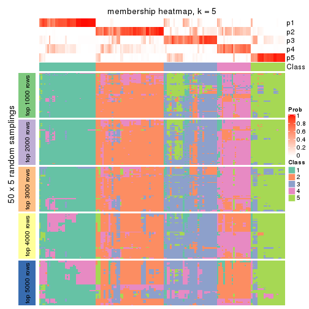
membership_heatmap(res, k = 6)
As soon as we have had the classes for columns, we can look for signatures
which are significantly different between classes which can be candidate marks
for certain classes. Following are the heatmaps for signatures.
Signature heatmaps where rows are scaled:
get_signatures(res, k = 2)
get_signatures(res, k = 3)
get_signatures(res, k = 4)
get_signatures(res, k = 5)
get_signatures(res, k = 6)
Signature heatmaps where rows are not scaled:
get_signatures(res, k = 2, scale_rows = FALSE)
get_signatures(res, k = 3, scale_rows = FALSE)
get_signatures(res, k = 4, scale_rows = FALSE)
get_signatures(res, k = 5, scale_rows = FALSE)
get_signatures(res, k = 6, scale_rows = FALSE)
Compare the overlap of signatures from different k:
compare_signatures(res)
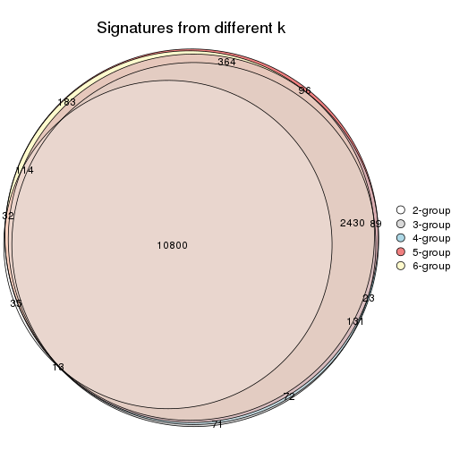
get_signature() returns a data frame invisibly. TO get the list of signatures, the function
call should be assigned to a variable explicitly. In following code, if plot argument is set
to FALSE, no heatmap is plotted while only the differential analysis is performed.
# code only for demonstration
tb = get_signature(res, k = ..., plot = FALSE)
An example of the output of tb is:
#> which_row fdr mean_1 mean_2 scaled_mean_1 scaled_mean_2 km
#> 1 38 0.042760348 8.373488 9.131774 -0.5533452 0.5164555 1
#> 2 40 0.018707592 7.106213 8.469186 -0.6173731 0.5762149 1
#> 3 55 0.019134737 10.221463 11.207825 -0.6159697 0.5749050 1
#> 4 59 0.006059896 5.921854 7.869574 -0.6899429 0.6439467 1
#> 5 60 0.018055526 8.928898 10.211722 -0.6204761 0.5791110 1
#> 6 98 0.009384629 15.714769 14.887706 0.6635654 -0.6193277 2
...
The columns in tb are:
which_row: row indices corresponding to the input matrix.fdr: FDR for the differential test. mean_x: The mean value in group x.scaled_mean_x: The mean value in group x after rows are scaled.km: Row groups if k-means clustering is applied to rows.
UMAP plot which shows how samples are separated.
dimension_reduction(res, k = 2, method = "UMAP")
dimension_reduction(res, k = 3, method = "UMAP")
dimension_reduction(res, k = 4, method = "UMAP")
dimension_reduction(res, k = 5, method = "UMAP")
dimension_reduction(res, k = 6, method = "UMAP")
Following heatmap shows how subgroups are split when increasing k:
collect_classes(res)
If matrix rows can be associated to genes, consider to use functional_enrichment(res,
...) to perform function enrichment for the signature genes. See this vignette for more detailed explanations.
Session info
sessionInfo()
#> R version 3.6.0 (2019-04-26)
#> Platform: x86_64-pc-linux-gnu (64-bit)
#> Running under: CentOS Linux 7 (Core)
#>
#> Matrix products: default
#> BLAS: /usr/lib64/libblas.so.3.4.2
#> LAPACK: /usr/lib64/liblapack.so.3.4.2
#>
#> locale:
#> [1] LC_CTYPE=en_GB.UTF-8 LC_NUMERIC=C LC_TIME=en_GB.UTF-8
#> [4] LC_COLLATE=en_GB.UTF-8 LC_MONETARY=en_GB.UTF-8 LC_MESSAGES=en_GB.UTF-8
#> [7] LC_PAPER=en_GB.UTF-8 LC_NAME=C LC_ADDRESS=C
#> [10] LC_TELEPHONE=C LC_MEASUREMENT=en_GB.UTF-8 LC_IDENTIFICATION=C
#>
#> attached base packages:
#> [1] grid stats graphics grDevices utils datasets methods base
#>
#> other attached packages:
#> [1] genefilter_1.66.0 ComplexHeatmap_2.3.1 markdown_1.1 knitr_1.26
#> [5] GetoptLong_0.1.7 cola_1.3.2
#>
#> loaded via a namespace (and not attached):
#> [1] circlize_0.4.8 shape_1.4.4 xfun_0.11 slam_0.1-46
#> [5] lattice_0.20-38 splines_3.6.0 colorspace_1.4-1 vctrs_0.2.0
#> [9] stats4_3.6.0 blob_1.2.0 XML_3.98-1.20 survival_2.44-1.1
#> [13] rlang_0.4.2 pillar_1.4.2 DBI_1.0.0 BiocGenerics_0.30.0
#> [17] bit64_0.9-7 RColorBrewer_1.1-2 matrixStats_0.55.0 stringr_1.4.0
#> [21] GlobalOptions_0.1.1 evaluate_0.14 memoise_1.1.0 Biobase_2.44.0
#> [25] IRanges_2.18.3 parallel_3.6.0 AnnotationDbi_1.46.1 highr_0.8
#> [29] Rcpp_1.0.3 xtable_1.8-4 backports_1.1.5 S4Vectors_0.22.1
#> [33] annotate_1.62.0 skmeans_0.2-11 bit_1.1-14 microbenchmark_1.4-7
#> [37] brew_1.0-6 impute_1.58.0 rjson_0.2.20 png_0.1-7
#> [41] digest_0.6.23 stringi_1.4.3 polyclip_1.10-0 clue_0.3-57
#> [45] tools_3.6.0 bitops_1.0-6 magrittr_1.5 eulerr_6.0.0
#> [49] RCurl_1.95-4.12 RSQLite_2.1.4 tibble_2.1.3 cluster_2.1.0
#> [53] crayon_1.3.4 pkgconfig_2.0.3 zeallot_0.1.0 Matrix_1.2-17
#> [57] xml2_1.2.2 httr_1.4.1 R6_2.4.1 mclust_5.4.5
#> [61] compiler_3.6.0